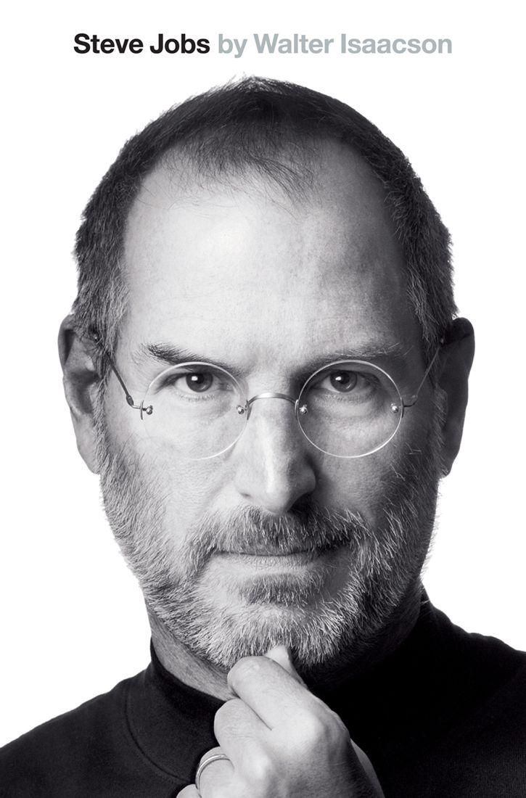
The people who are crazy enough
to think they can change
the world are the ones who do.
—Apple’s “Think Different” commercial, 1997
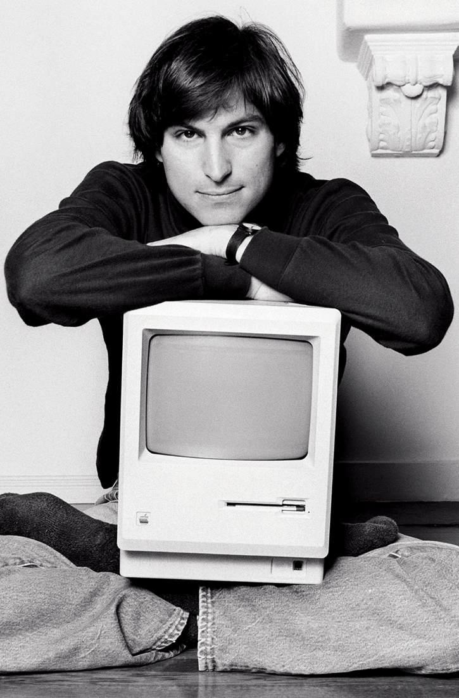
AL ALCORN. Chief engineer at Atari, who designed Pong and hired Jobs.
| chief engineer | главный инженер |
| designed | разработал, создал |
| hired | нанял |
АЛ ЭЛКОРН. Главный инженер Atari, создатель игры Pong, нанял Джобса на работу.
GIL AMELIO. Became CEO of Apple in 1996, bought NeXT, bringing Jobs back.
| bought | купил |
| bringing | вернув |
ГИЛ АМЕЛИО. Стал генеральным директором Apple в 1996 году, купил компанию NeXT, вернув Джобса.
BILL ATKINSON. Early Apple employee, developed graphics for the Macintosh.
| employee | сотрудник |
| developed | разработал |
БИЛЛ АТКИНСОН. Один из первых сотрудников Apple, разработал графику для Macintosh.
CHRISANN BRENNAN. Jobs’s girlfriend at Homestead High, mother of his daughter Lisa.
| girlfriend | девушка, подруга |
КРИСЭНН БРЕННАН. Девушка Джобса в школе Homestead High, мать его дочери Лизы.
LISA BRENNAN-JOBS. Daughter of Jobs and Chrisann Brennan, born in 1978; became a writer in New York City.
| daughter | дочь |
| writer | писательница |
ЛИЗА БРЕННАН-ДЖОБС. Дочь Джобса и Крисэнн Бреннан, родилась в 1978 году; стала писательницей в Нью-Йорке.
NOLAN BUSHNELL. Founder of Atari and entrepreneurial role model for Jobs.
| founder | основатель |
| role model | пример для подражания |
НОЛАН БУШНЕЛЛ. Основатель Atari и пример предпринимателя, на который равнялся Джобс.
BILL CAMPBELL. Apple marketing chief during Jobs’s first stint at Apple and board member and confidant after Jobs’s return in 1997.
| stint | период работы |
| board member | член совета директоров |
| confidant | доверенное лицо |
БИЛЛ КЭМПБЕЛЛ. Глава маркетинга Apple в первый период работы Джобса; после его возвращения в 1997 году — член совета директоров и доверенное лицо.
EDWIN CATMULL. A cofounder of Pixar and later a Disney executive.
| cofounder | сооснователь |
| executive | руководитель |
ЭДВИН КЭТМАЛЛ. Один из основателей Pixar, позднее — руководитель в Disney.
KOBUN CHINO. A Sōtō Zen master in California who became Jobs’s spiritual teacher.
| master | мастер, наставник |
| spiritual teacher | духовный наставник |
КОБУН ЧИНО. Мастер дзэн (школа Сото) в Калифорнии, духовный наставник Джобса.
LEE CLOW. Advertising wizard who created Apple’s “1984” ad and worked with Jobs for three decades.
| wizard | волшебник, гений |
| ad | реклама, рекламный ролик |
ЛИ КЛОУ. Гений рекламы, создатель знаменитого ролика Apple «1984»; работал с Джобсом три десятилетия.
DEBORAH “DEBI” COLEMAN. Early Mac team manager who took over Apple manufacturing.
| manager | руководитель |
| took over | взяла на себя, возглавила |
| manufacturing | производство |
ДЕБОРА «ДЕБИ» КОУЛМАН. Одна из первых руководительниц команды Mac, впоследствии возглавила производство Apple.
TIM COOK. Steady, calm, chief operating officer hired by Jobs in 1998; replaced Jobs as Apple CEO in August 2011.
| steady | уравновешенный |
| chief operating officer | операционный директор |
| replaced | сменил |
ТИМ КУК. Уравновешенный, спокойный операционный директор, нанятый Джобсом в 1998 году; сменил Джобса на посту генерального директора Apple в августе 2011 года.
EDDY CUE. Chief of Internet services at Apple, Jobs’s wingman in dealing with content companies.
| wingman | верный помощник, напарник |
| dealing with | переговоры с |
ЭДДИ КЬЮ. Руководитель интернет-сервисов Apple, правая рука Джобса в переговорах с контент-компаниями.
ANDREA “ANDY” CUNNINGHAM. Publicist at Regis McKenna’s firm who handled Apple in the early Macintosh years.
| publicist | специалист по связям с общественностью |
| firm | фирма |
| handled | вела дела |
АНДРЕА «ЭНДИ» КАННИНГЕМ. Специалист по связям с общественностью в фирме Реджиса Маккенны; занималась Apple в первые годы Macintosh.
MICHAEL EISNER. Hard-driving Disney CEO who made the Pixar deal, then clashed with Jobs.
| hard-driving | напористый |
| deal | сделка |
| clashed | конфликтовал |
МАЙКЛ АЙСНЕР. Напористый генеральный директор Disney, заключивший сделку с Pixar, а затем конфликтовавший с Джобсом.
LARRY ELLISON. CEO of Oracle and personal friend of Jobs.
| personal friend | личный друг |
ЛАРРИ ЭЛЛИСОН. Генеральный директор Oracle и личный друг Джобса.
TONY FADELL. Punky engineer brought to Apple in 2001 to develop the iPod.
| punky | дерзкий, неформальный |
| brought | приглашён |
| develop | разработать |
ТОНИ ФАДЕЛЛ. Дерзкий инженер, приглашённый в Apple в 2001 году для разработки iPod.
SCOTT FORSTALL. Chief of Apple’s mobile device software.
| mobile device | мобильные устройства |
СКОТТ ФОРСТОЛЛ. Руководитель разработки программного обеспечения для мобильных устройств Apple.
ROBERT FRIEDLAND. Reed student, proprietor of an apple farm commune, and spiritual seeker who influenced Jobs, then went on to run a mining company.
| proprietor | владелец |
| commune | коммуна, община |
| seeker | искатель |
| influenced | повлиял |
| mining company | горнодобывающая компания |
РОБЕРТ ФРИДЛЕНД. Студент Рид-колледжа, владелец яблочной фермы-коммуны и духовный искатель, повлиявший на Джобса; позднее возглавил горнодобывающую компанию.
JEAN-LOUIS GASSÉE. Apple’s manager in France, took over the Macintosh division when Jobs was ousted in 1985.
| took over | возглавил |
| division | подразделение |
| ousted | смещён, вытеснен |
ЖАН-ЛУИ ГАССЕ. Менеджер Apple во Франции, возглавил подразделение Macintosh после смещения Джобса в 1985 году.
BILL GATES. The other computer wunderkind born in 1955.
| wunderkind | вундеркинд |
БИЛЛ ГЕЙТС. Второй компьютерный вундеркинд, родившийся в 1955 году.
ANDY HERTZFELD. Playful, friendly software engineer and Jobs’s pal on the original Mac team.
| playful | жизнерадостный |
| pal | приятель |
| original | первоначальный, первый |
ЭНДИ ХЕРЦФЕЛЬД. Жизнерадостный, дружелюбный инженер-программист, приятель Джобса по первой команде Mac.
JOANNA HOFFMAN. Original Mac team member with the spirit to stand up to Jobs.
| stand up to | давать отпор, не бояться |
ДЖОАННА ХОФФМАН. Участница первой команды Mac, обладавшая смелостью давать отпор Джобсу.
ELIZABETH HOLMES. Daniel Kottke’s girlfriend at Reed and early Apple employee.
| girlfriend | подруга, девушка |
| employee | сотрудница |
ЭЛИЗАБЕТ ХОЛМС. Подруга Дэниела Коттке в Рид-колледже и одна из первых сотрудниц Apple.
ROD HOLT. Chain-smoking Marxist hired by Jobs in 1976 to be the electrical engineer on the Apple II.
| chain-smoking | заядлый курильщик |
| hired | нанят |
| electrical engineer | инженер-электрик |
РОД ХОЛТ. Заядлый курильщик-марксист, нанятый Джобсом в 1976 году инженером-электриком для работы над Apple II.
ROBERT IGER. Succeeded Eisner as Disney CEO in 2005.
| succeeded | сменил |
РОБЕРТ АЙГЕР. Сменил Айснера на посту генерального директора Disney в 2005 году.
JONATHAN “JONY” IVE. Chief designer at Apple, became Jobs’s partner and confidant.
| chief designer | главный дизайнер |
| partner | соратник |
ДЖОНАТАН «ДЖОНИ» АЙВ. Главный дизайнер Apple, ставший соратником и доверенным лицом Джобса.
ABDULFATTAH “JOHN” JANDALI. Syrian-born graduate student in Wisconsin who became biological father of Jobs and Mona Simpson, later a food and beverage manager at the Boomtown casino near Reno.
| graduate student | аспирант |
| biological father | биологический отец |
| beverage | напитки |
АБДУЛФАТТАХ «ДЖОН» ДЖАНДАЛИ. Сириец, аспирант в Висконсине; биологический отец Джобса и Моны Симпсон, позднее — менеджер по продуктам и напиткам в казино Boomtown близ Рино.
CLARA HAGOPIAN JOBS. Daughter of Armenian immigrants, married Paul Jobs in 1946; they adopted Steve soon after his birth in 1955.
| immigrants | иммигранты |
| adopted | усыновили |
КЛАРА АКОПЯН ДЖОБС. Дочь армянских иммигрантов, вышла замуж за Пола Джобса в 1946 году; вскоре после рождения Стива в 1955 году они его усыновили.
ERIN JOBS. Middle child of Laurene Powell and Steve Jobs.
| middle child | средний ребёнок |
ЭРИН ДЖОБС. Средний ребёнок Лорен Пауэлл и Стива Джобса.
EVE JOBS. Youngest child of Laurene and Steve.
| youngest | младший |
ИВ ДЖОБС. Младший ребёнок Лорен и Стива.
PATTY JOBS. Adopted by Paul and Clara Jobs two years after they adopted Steve.
| adopted | удочерена |
ПЭТТИ ДЖОБС. Удочерена Полом и Кларой Джобс через два года после усыновления Стива.
PAUL REINHOLD JOBS. Wisconsin-born Coast Guard seaman who, with his wife, Clara, adopted Steve in 1955.
| Coast Guard | Береговая охрана |
| seaman | моряк |
ПОЛ РАЙНХОЛД ДЖОБС. Моряк Береговой охраны, уроженец Висконсина; вместе с женой Кларой усыновил Стива в 1955 году.
REED JOBS. Oldest child of Steve Jobs and Laurene Powell.
| oldest | старший |
РИД ДЖОБС. Старший ребёнок Стива Джобса и Лорен Пауэлл.
RON JOHNSON. Hired by Jobs in 2000 to develop Apple’s stores.
| hired | нанят |
| stores | магазины |
РОН ДЖОНСОН. Нанят Джобсом в 2000 году для создания магазинов Apple.
JEFFREY KATZENBERG. Head of Disney Studios, clashed with Eisner and resigned in 1994 to cofound DreamWorks SKG.
| head | руководитель, глава |
| resigned | уволился |
| cofound | стать сооснователем |
ДЖЕФФРИ КАЦЕНБЕРГ. Глава студии Disney; конфликтовал с Айснером и ушёл в 1994 году, став одним из основателей DreamWorks SKG.
DANIEL KOTTKE. Jobs’s closest friend at Reed, fellow pilgrim to India, early Apple employee.
| closest | самый близкий |
| fellow pilgrim | спутник-паломник |
ДЭНИЕЛ КОТТКЕ. Ближайший друг Джобса в Рид-колледже, спутник в паломничестве в Индию, один из первых сотрудников Apple.
JOHN LASSETER. Cofounder and creative force at Pixar.
| creative force | творческая движущая сила |
ДЖОН ЛАССЕТЕР. Один из основателей и главная творческая сила Pixar.
DAN’L LEWIN. Marketing exec with Jobs at Apple and then NeXT.
| marketing exec | руководитель маркетинга |
ДЭН’Л ЛЬЮИН. Руководитель маркетинга, работал с Джобсом в Apple, а затем в NeXT.
MIKE MARKKULA. First big Apple investor and chairman, a father figure to Jobs.
| investor | инвестор |
| chairman | председатель совета директоров |
| father figure | наставник, «второй отец» |
МАЙК МАРККУЛА. Первый крупный инвестор Apple и председатель совета директоров, наставник Джобса.
REGIS MCKENNA. Publicity whiz who guided Jobs early on and remained a trusted advisor.
| whiz | мастер, гений |
| guided | направлял |
| trusted advisor | доверенный советник |
РЕДЖИС МАККЕННА. Мастер пиара, направлявший Джобса в начале пути; оставался доверенным советником.
MIKE MURRAY. Early Macintosh marketing director.
| marketing director | директор по маркетингу |
МАЙК МАРРИ. Первый директор по маркетингу Macintosh.
PAUL OTELLINI. CEO of Intel who helped switch the Macintosh to Intel chips but did not get the iPhone business.
| switch | перевести |
| chips | микросхемы |
| business | заказ, дело |
ПОЛ ОТЕЛЛИНИ. Генеральный директор Intel, помогший перевести Macintosh на микросхемы Intel, но не получивший заказ на iPhone.
LAURENE POWELL. Savvy and good-humored Penn graduate, went to Goldman Sachs and then Stanford Business School, married Steve Jobs in 1991.
| savvy | толковая, практичная |
| good-humored | с чувством юмора |
| graduate | выпускница |
ЛОРЕН ПАУЭЛЛ. Толковая и обладающая чувством юмора выпускница Пенсильванского университета; работала в Goldman Sachs, затем училась в бизнес-школе Стэнфорда; в 1991 году вышла замуж за Стива Джобса.
GEORGE RILEY. Jobs’s Memphis-born friend and lawyer.
| lawyer | юрист, адвокат |
ДЖОРДЖ РАЙЛИ. Друг и юрист Джобса, уроженец Мемфиса.
ARTHUR ROCK. Legendary tech investor, early Apple board member, Jobs’s father figure.
| legendary | легендарный |
| board member | член совета директоров |
АРТУР РОК. Легендарный технологический инвестор, член первого совета директоров Apple, наставник Джобса.
JONATHAN “RUBY” RUBINSTEIN. Worked with Jobs at NeXT, became chief hardware engineer at Apple in 1997.
| hardware engineer | инженер по аппаратному обеспечению |
ДЖОНАТАН «РУБИ» РУБИНШТЕЙН. Работал с Джобсом в NeXT, в 1997 году стал главным инженером по аппаратному обеспечению Apple.
MIKE SCOTT. Brought in by Markkula to be Apple’s president in 1977 to try to manage Jobs.
| brought in | приглашён |
| president | президент, глава компании |
| manage | управлять, обуздать |
МАЙК СКОТТ. Приглашён Марккулой на пост президента Apple в 1977 году, чтобы попытаться управлять Джобсом.
JOHN SCULLEY. Pepsi executive recruited by Jobs in 1983 to be Apple’s CEO, clashed with and ousted Jobs in 1985.
| recruited | переманен, приглашён |
| clashed | конфликтовал |
| ousted | вытеснил, уволил |
ДЖОН СКАЛЛИ. Руководитель Pepsi, переманенный Джобсом в 1983 году на пост генерального директора Apple; в 1985 году конфликтовал с Джобсом и вытеснил его из компании.
JOANNE SCHIEBLE JANDALI SIMPSON. Wisconsin-born biological mother of Steve Jobs, whom she put up for adoption, and Mona Simpson, whom she raised.
| biological mother | биологическая мать |
| put up for adoption | отдала на усыновление |
| raised | воспитала |
ДЖОАННА ШИБЛ ДЖАНДАЛИ СИМПСОН. Уроженка Висконсина, биологическая мать Стива Джобса (которого отдала на усыновление) и Моны Симпсон (которую воспитала сама).
MONA SIMPSON. Biological full sister of Jobs; they discovered their relationship in 1986 and became close. She wrote novels loosely based on her mother Joanne (Anywhere but Here), Jobs and his daughter Lisa (A Regular Guy), and her father Abdulfattah Jandali (The Lost Father).
| full sister | родная сестра |
| discovered | обнаружили, узнали |
| loosely based on | вольно основанные на |
МОНА СИМПСОН. Родная сестра Джобса; они узнали о родстве в 1986 году и сблизились. Она написала романы, вольно основанные на истории матери Джоанны («Anywhere but Here»), Джобса и его дочери Лизы («A Regular Guy») и отца Абдулфаттаха Джандали («The Lost Father»).
ALVY RAY SMITH. A cofounder of Pixar who clashed with Jobs.
| clashed | конфликтовал |
ЭЛВИ РЭЙ СМИТ. Один из основателей Pixar, конфликтовавший с Джобсом.
BURRELL SMITH. Brilliant, troubled programmer on the original Mac team, afflicted with schizophrenia in the 1990s.
| brilliant | блестящий |
| troubled | мятущийся |
| afflicted | страдавший |
| schizophrenia | шизофрения |
БАРРЕЛЛ СМИТ. Блестящий, но мятущийся программист из первой команды Mac; в 1990-е годы заболел шизофренией.
AVADIS “AVIE” TEVANIAN. Worked with Jobs and Rubinstein at NeXT, became chief software engineer at Apple in 1997.
| software engineer | инженер-программист |
АВАДИС «АВИ» ТЕВАНЯН. Работал с Джобсом и Рубинштейном в NeXT, в 1997 году стал главным инженером по программному обеспечению Apple.
JAMES VINCENT. A music-loving Brit, the younger partner with Lee Clow and Duncan Milner at the ad agency Apple hired.
| Brit | британец |
| ad agency | рекламное агентство |
| hired | наняла |
ДЖЕЙМС ВИНСЕНТ. Любящий музыку британец, младший партнёр Ли Клоу и Дункана Милнера в рекламном агентстве, которое наняла Apple.
RON WAYNE. Met Jobs at Atari, became first partner with Jobs and Wozniak at fledgling Apple, but unwisely decided to forgo his equity stake.
| fledgling | начинающая, молодая |
| forgo | отказаться от |
| equity stake | доля в компании |
РОН УЭЙН. Познакомился с Джобсом в Atari, стал первым партнёром Джобса и Возняка в начинающей Apple, но по недальновидности отказался от своей доли.
STEPHEN WOZNIAK. The star electronics geek at Homestead High; Jobs figured out how to package and market his amazing circuit boards and became his partner in founding Apple.
| geek | фанат, знаток |
| figured out | придумал, сообразил |
| package | упаковать |
| circuit boards | печатные платы |
| founding | основание |
СТИВЕН ВОЗНЯК. Звезда электроники в школе Homestead High; Джобс придумал, как упаковать и продавать его удивительные печатные платы, и стал его партнёром при основании Apple.
In the early summer of 2004, I got a phone call from Steve Jobs. He had been scattershot friendly to me over the years, with occasional bursts of intensity, especially when he was launching a new product that he wanted on the cover of Time or featured on CNN, places where I’d worked. But now that I was no longer at either of those places, I hadn’t heard from him much. We talked a bit about the Aspen Institute, which I had recently joined, and I invited him to speak at our summer campus in Colorado. He’d be happy to come, he said, but not to be onstage. He wanted instead to take a walk so that we could talk.
| got a phone call | мне позвонили |
| scattershot | неровный, бессистемный |
| bursts of intensity | всплески внимания |
| launching | выпуск |
| featured | показанный, представленный |
| heard from | получать вести от него, давать о себе знать |
| onstage | на сцене |
| take a walk | прогуляться |
В начале лета 2004 года мне позвонил Стив Джобс. Все эти годы он был ко мне неровно дружелюбен — с редкими всплесками внимания, особенно когда выпускал новый продукт, который хотел видеть на обложке Time или в сюжете CNN, где я тогда работал. Но теперь, когда я уже не работал ни там, ни там, он почти не давал о себе знать. Мы немного поговорили об Институте Аспена, куда я недавно вступил, и я пригласил его выступить в нашем летнем кампусе в Колорадо. Он ответил, что с радостью приедет, но выступать не хочет. Вместо этого он хотел прогуляться, чтобы мы могли поговорить.
That seemed a bit odd. I didn’t yet know that taking a long walk was his preferred way to have a serious conversation. It turned out that he wanted me to write a biography of him. I had recently published one on Benjamin Franklin and was writing one about Albert Einstein, and my initial reaction was to wonder, half jokingly, whether he saw himself as the natural successor in that sequence. Because I assumed that he was still in the middle of an oscillating career that had many more ups and downs left, I demurred. Not now, I said. Maybe in a decade or two, when you retire.
| odd | странный |
| preferred | предпочтительный |
| turned out | оказалось |
| biography | биография |
| half jokingly | полушутя |
| successor | преемник |
| in the middle of | в самом разгаре |
| oscillating | колеблющаяся, с взлётами и падениями |
| ups and downs | взлёты и падения |
| demurred | уклонился, отказался |
Это показалось немного странным. Тогда я ещё не знал, что долгая прогулка — его любимый способ вести серьёзный разговор. Оказалось, он хотел, чтобы я написал его биографию. Незадолго до этого я опубликовал биографию Бенджамина Франклина и писал книгу об Альберте Эйнштейне, и моей первой реакцией было — полушутя — удивиться, не видит ли он себя естественным преемником в этом ряду. Поскольку я считал, что его карьера ещё в самом разгаре и впереди немало взлётов и падений, я уклонился. «Не сейчас, — сказал я. — Может быть, лет через десять-двадцать, когда выйдете на пенсию».
I had known him since 1984, when he came to Manhattan to have lunch with Time’s editors and extol his new Macintosh. He was petulant even then, attacking a Time correspondent for having wounded him with a story that was too revealing. But talking to him afterward, I found myself rather captivated, as so many others have been over the years, by his engaging intensity. We stayed in touch, even after he was ousted from Apple. When he had something to pitch, such as a NeXT computer or Pixar movie, the beam of his charm would suddenly refocus on me, and he would take me to a sushi restaurant in Lower Manhattan to tell me that whatever he was touting was the best thing he had ever produced. I liked him.
| extol | расхваливать |
| petulant | капризный, раздражительный |
| wounded | ранил, задел |
| revealing | откровенный |
| found myself | неожиданно для себя оказался, поймал себя на том, что |
| captivated | очарован |
| stayed in touch | оставались на связи |
| ousted | вытеснен, уволен |
| pitch | предложить, прорекламировать |
| touting | расхваливал |
Я знал его с 1984 года, когда он приехал на Манхэттен пообедать с редакторами Time и расхвалить свой новый Macintosh. Уже тогда он был капризен и набросился на корреспондента Time за то, что тот задел его слишком откровенной статьёй. Но, поговорив с ним после этого, я, как и многие за эти годы, был очарован его притягательной напористостью. Мы поддерживали связь даже после того, как его вытеснили из Apple. Когда ему нужно было что-то предложить — компьютер NeXT или фильм Pixar, — луч его обаяния вдруг снова фокусировался на мне, и он вёл меня в суши-ресторан в Нижнем Манхэттене, чтобы сказать, что то, что он расхваливает, — лучшее из всего, что он когда-либо создавал. Он мне нравился.
When he was restored to the throne at Apple, we put him on the cover of Time, and soon thereafter he began offering me his ideas for a series we were doing on the most influential people of the century. He had launched his “Think Different” campaign, featuring iconic photos of some of the same people we were considering, and he found the endeavor of assessing historic influence fascinating.
| restored to the throne | вернулся на трон, вернули власть |
| put him on the cover | поместили на обложку |
| influential | влиятельный |
| campaign | кампания |
| featuring | с участием |
| endeavor | занятие, начинание |
| assessing | оценка |
Когда он вернулся на трон в Apple, мы поместили его на обложку Time, а вскоре он начал предлагать мне идеи для серии материалов о самых влиятельных людях века, над которой мы тогда работали. Он запустил кампанию «Think Different» с культовыми портретами тех самых людей, которых мы рассматривали, и его увлекала сама задача оценивать историческое влияние.
After I had deflected his suggestion that I write a biography of him, I heard from him every now and then. At one point I emailed to ask if it was true, as my daughter had told me, that the Apple logo was an homage to Alan Turing, the British computer pioneer who broke the German wartime codes and then committed suicide by biting into a cyanide-laced apple. He replied that he wished he had thought of that, but hadn’t. That started an exchange about the early history of Apple, and I found myself gathering string on the subject, just in case I ever decided to do such a book. When my Einstein biography came out, he came to a book event in Palo Alto and pulled me aside to suggest, again, that he would make a good subject.
| deflected | отклонил |
| heard from | получать вести, давать о себе знать |
| every now and then | время от времени |
| homage | дань уважения |
| pioneer | первопроходец, пионер |
| broke | взломал |
| committed suicide | покончил с собой |
| thought of | додумался |
| gathering string | собирать материал |
| just in case | на случай, если |
| came out | вышла (о книге) |
| pulled me aside | отвёл в сторону |
После того как я отклонил его предложение написать его биографию, он время от времени давал о себе знать. Однажды я написал ему, чтобы спросить, правда ли — как мне сказала дочь, — что логотип Apple — дань уважения Алану Тьюрингу, британскому пионеру вычислительной техники, который взломал немецкие военные коды, а затем покончил с собой, откусив яблоко с цианидом. Он ответил, что хотел бы додуматься до этого, но нет. Так началась наша переписка о ранней истории Apple, и я стал понемногу собирать материал — на случай, если когда-нибудь решусь на такую книгу. Когда вышла моя биография Эйнштейна, он пришёл на презентацию в Пало-Альто и, отведя меня в сторону, снова предложил себя в качестве героя.
His persistence baffled me. He was known to guard his privacy, and I had no reason to believe he’d ever read any of my books. Maybe someday, I continued to say. But in 2009 his wife, Laurene Powell, said bluntly, “If you’re ever going to do a book on Steve, you’d better do it now.” He had just taken a second medical leave. I confessed to her that when he had first raised the idea, I hadn’t known he was sick. Almost nobody knew, she said. He had called me right before he was going to be operated on for cancer, and he was still keeping it a secret, she explained.
| persistence | настойчивость |
| baffled | озадачивала |
| guard his privacy | оберегать свою частную жизнь |
| bluntly | прямо, без обиняков |
| you’d better | тебе лучше, стоит |
| medical leave | отпуск по болезни |
| confessed | признался |
| raised the idea | заговорил об этом |
| operated on | прооперирован |
| keeping it a secret | держал это в тайне |
Его настойчивость меня озадачивала. Он славился тем, что оберегает свою частную жизнь, и у меня не было оснований думать, что он вообще читал мои книги. «Может, когда-нибудь», — продолжал отвечать я. Но в 2009 году его жена Лорен Пауэлл сказала прямо: «Если вы собираетесь написать книгу о Стиве, делайте это сейчас». Он как раз взял второй отпуск по болезни. Я признался ей, что, когда он впервые заговорил об этом, я не знал, что он болен. Об этом почти никто не знал, сказала она. Он позвонил мне прямо перед операцией по поводу рака и всё ещё держал это в тайне.
I decided then to write this book. Jobs surprised me by readily acknowledging that he would have no control over it or even the right to see it in advance. “It’s your book,” he said. “I won’t even read it.” But later that fall he seemed to have second thoughts about cooperating and, though I didn’t know it, was hit by another round of cancer complications. He stopped returning my calls, and I put the project aside for a while.
| readily | легко, охотно |
| acknowledging | признавая |
| in advance | заранее |
| second thoughts | сомнения |
| complications | осложнения |
| hit by | настиг, обрушилось на него |
| put the project aside | отложил проект |
Тогда я решил писать эту книгу. Джобс удивил меня, охотно признав, что не будет контролировать её и даже не попросит права прочитать заранее. «Это ваша книга, — сказал он. — Я её даже читать не стану». Но позже той осенью он, похоже, передумал сотрудничать, а кроме того — о чём я не знал — у него начался новый виток осложнений рака. Он перестал отвечать на мои звонки, и я на время отложил проект.
Then, unexpectedly, he phoned me late on the afternoon of New Year’s Eve 2009. He was at home in Palo Alto with only his sister, the writer Mona Simpson. His wife and their three children had taken a quick trip to go skiing, but he was not healthy enough to join them. He was in a reflective mood, and we talked for more than an hour. He began by recalling that he had wanted to build a frequency counter when he was twelve, and he was able to look up Bill Hewlett, the founder of HP, in the phone book and call him to get parts. Jobs said that the past twelve years of his life, since his return to Apple, had been his most productive in terms of creating new products. But his more important goal, he said, was to do what Hewlett and his friend David Packard had done, which was create a company that was so imbued with innovative creativity that it would outlive them.
| unexpectedly | неожиданно |
| taken a quick trip | ненадолго съездили |
| reflective mood | задумчивое настроение |
| recalling | вспоминая |
| look up | найти в справочнике |
| productive | продуктивный |
| in terms of | с точки зрения |
| imbued | пропитанная |
| outlive | пережить |
Затем, совершенно неожиданно, он позвонил мне ближе к вечеру в канун Нового 2010 года. Он был дома в Пало-Альто, с ним была только его сестра, писательница Мона Симпсон. Его жена и трое детей ненадолго уехали кататься на лыжах, но он был слишком слаб, чтобы присоединиться. Он был в задумчивом настроении, и мы проговорили больше часа. Он начал с воспоминаний: в двенадцать лет он хотел собрать частотомер и смог найти в телефонной книге Билла Хьюлетта, основателя HP, и позвонить ему, чтобы получить детали. Джобс сказал, что последние двенадцать лет его жизни, со времён возвращения в Apple, были самыми продуктивными с точки зрения создания новых продуктов. Но его более важной целью, сказал он, было сделать то, что сделали Хьюлетт и его друг Дэвид Паккард, — создать компанию, настолько пропитанную новаторским творчеством, что она переживёт их самих.
“I always thought of myself as a humanities person as a kid, but I liked electronics,” he said. “Then I read something that one of my heroes, Edwin Land of Polaroid, said about the importance of people who could stand at the intersection of humanities and sciences, and I decided that’s what I wanted to do.” It was as if he were suggesting themes for his biography (and in this instance, at least, the theme turned out to be valid). The creativity that can occur when a feel for both the humanities and the sciences combine in one strong personality was the topic that most interested me in my biographies of Franklin and Einstein, and I believe that it will be a key to creating innovative economies in the twenty-first century.
| thought of myself as | считал себя |
| humanities | гуманитарные науки |
| intersection | пересечение |
| suggesting themes | подсказывать темы |
| turned out | оказалась |
| combine | сочетаются |
| innovative | инновационные |
«В детстве я всегда считал себя гуманитарием, но мне нравилась электроника, — сказал он. — Потом я прочитал слова одного из моих героев, Эдвина Лэнда из Polaroid, о важности людей, которые стоят на пересечении гуманитарных и естественных наук, и решил, что хочу заниматься именно этим». Казалось, он подсказывал темы для своей биографии (и в этом случае тема, по крайней мере, оказалась верной). Творчество, возникающее, когда чувство и гуманитарного, и естественно-научного сочетается в одной сильной личности, — именно эта тема больше всего интересовала меня в биографиях Франклина и Эйнштейна, и я верю, что она станет ключом к созданию инновационных экономик XXI века.
I asked Jobs why he wanted me to be the one to write his biography. “I think you’re good at getting people to talk,” he replied. That was an unexpected answer. I knew that I would have to interview scores of people he had fired, abused, abandoned, or otherwise infuriated, and I feared he would not be comfortable with my getting them to talk. And indeed he did turn out to be skittish when word trickled back to him of people that I was interviewing. But after a couple of months, he began encouraging people to talk to me, even foes and former girlfriends. Nor did he try to put anything off-limits. “I’ve done a lot of things I’m not proud of, such as getting my girlfriend pregnant when I was twenty-three and the way I handled that,” he said. “But I don’t have any skeletons in my closet that can’t be allowed out.” He didn’t seek any control over what I wrote, or even ask to read it in advance. His only involvement came when my publisher was choosing the cover art. When he saw an early version of a proposed cover treatment, he disliked it so much that he asked to have input in designing a new version. I was both amused and willing, so I readily assented.
| good at | умеет, силён в |
| getting people to talk | разговорить людей |
| scores of | множество, десятки |
| fired | уволенных |
| abandoned | брошенных |
| infuriated | разъярённых, доведённых до бешенства |
| turn out to be | оказался |
| skittish | нервничал |
| trickled back | доходили по крупицам (о слухах) |
| off-limits | под запретом |
| skeletons in my closet | скелеты в шкафу |
| cover art | обложка |
| have input | участвовать, вносить вклад |
| assented | согласился |
Я спросил Джобса, почему он хочет, чтобы биографию писал именно я. «Мне кажется, вы умеете разговорить людей», — ответил он. Это был неожиданный ответ. Я знал, что мне придётся расспрашивать множество людей, которых он увольнял, обижал, бросал или доводил до бешенства, и боялся, что ему не понравится, что я развязываю им языки. И действительно, когда до него доходили слухи о тех, с кем я разговариваю, он нервничал. Но через пару месяцев он сам стал призывать людей говорить со мной — даже недругов и бывших подруг. И он ни на что не накладывал запрет. «Я сделал много такого, чем не горжусь, — например, в двадцать три года моя девушка забеременела, и то, как я с этим обошёлся», — сказал он. «Но у меня нет скелетов в шкафу, которых нельзя было бы вытащить наружу». Он не искал контроля над тем, что я пишу, и даже не просил прочитать заранее. Единственный раз он вмешался, когда мой издатель выбирал обложку. Увидев ранний вариант предложенного оформления, он до того его невзлюбил, что попросил разрешения участвовать в разработке новой версии. Мне было и забавно, и не жалко, так что я охотно согласился.
I ended up having more than forty interviews and conversations with him. Some were formal ones in his Palo Alto living room, others were done during long walks and drives or by telephone. During my two years of visits, he became increasingly intimate and revealing, though at times I witnessed what his veteran colleagues at Apple used to call his “reality distortion field.” Sometimes it was the inadvertent misfiring of memory cells that happens to us all; at other times he was spinning his own version of reality both to me and to himself. To check and flesh out his story, I interviewed more than a hundred friends, relatives, competitors, adversaries, and colleagues.
| ended up | в итоге |
| increasingly | всё более |
| intimate | откровенный |
| witnessed | наблюдал |
| veteran | бывалый |
| used to | бывало, имели обыкновение |
| inadvertent | невольный |
| happens to us all | случается с каждым |
| flesh out | дополнить, проработать |
| adversaries | противники |
В итоге я провёл с ним более сорока интервью и бесед. Одни были официальными, в его гостиной в Пало-Альто, другие — во время долгих прогулок, поездок или по телефону. За два года моих визитов он становился всё более откровенным и раскрывался всё сильнее, хотя порой я наблюдал то, что его бывалые коллеги по Apple называли «полем искажения реальности». Иногда это был невольный сбой клеток памяти, какой случается у каждого из нас; в другие моменты он перекручивал собственную версию реальности — и мне, и самому себе. Чтобы проверить и дополнить его рассказ, я опросил более сотни друзей, родственников, конкурентов, противников и коллег.
His wife also did not request any restrictions or control, nor did she ask to see in advance what I would publish. In fact she strongly encouraged me to be honest about his failings as well as his strengths. She is one of the smartest and most grounded people I have ever met. “There are parts of his life and personality that are extremely messy, and that’s the truth,” she told me early on. “You shouldn’t whitewash it. He’s good at spin, but he also has a remarkable story, and I’d like to see that it’s all told truthfully.”
| restrictions | ограничения |
| failings | недостатки |
| as well as | а также, как и |
| strengths | сильные стороны |
| grounded | уравновешенная, здравомыслящая |
| early on | в самом начале |
| messy | неприглядные, запутанные |
| whitewash | приукрашивать |
| spin | подача в свою пользу |
| remarkable | удивительная, выдающаяся |
Его жена тоже не просила никаких ограничений или контроля и не требовала показать заранее то, что я опубликую. Напротив, она настойчиво побуждала меня быть честным и о его недостатках, и о его сильных сторонах. Это одна из самых умных и здравомыслящих людей, которых я когда-либо встречал. «В его жизни и характере есть крайне неприглядные стороны, и это правда, — сказала она мне в самом начале. — Не стоит это приукрашивать. Он мастер подать себя в выгодном свете, но у него удивительная история, и я хотела бы, чтобы её рассказали правдиво».
I leave it to the reader to assess whether I have succeeded in this mission. I’m sure there are players in this drama who will remember some of the events differently or think that I sometimes got trapped in Jobs’s distortion field. As happened when I wrote a book about Henry Kissinger, which in some ways was good preparation for this project, I found that people had such strong positive and negative emotions about Jobs that the Rashomon effect was often evident. But I’ve done the best I can to balance conflicting accounts fairly and be transparent about the sources I used.
| leave it to the reader | оставляю на суд читателя |
| assess | оценить |
| succeeded | преуспел |
| trapped | попал в ловушку |
| in some ways | в чём-то, в некотором смысле |
| evident | очевиден |
| done the best I can | сделал всё возможное |
| conflicting | противоречивые |
| transparent | открытым, прозрачным |
Пусть читатель сам судит, преуспел ли я в этой миссии. Уверен, что участники этой драмы вспомнят некоторые события иначе или решат, что я и сам порой попадал в поле искажения Джобса. Как было и с моей книгой о Генри Киссинджере, которая в чём-то стала хорошей подготовкой к этому проекту, я обнаружил, что люди испытывают к Джобсу настолько сильные чувства — и хорошие, и плохие, — что эффект Расёмона проявлялся постоянно. Но я сделал всё возможное, чтобы честно уравновесить противоречивые рассказы и открыто указать использованные источники.
This is a book about the roller-coaster life and searingly intense personality of a creative entrepreneur whose passion for perfection and ferocious drive revolutionized six industries: personal computers, animated movies, music, phones, tablet computing, and digital publishing. You might even add a seventh, retail stores, which Jobs did not quite revolutionize but did reimagine. In addition, he opened the way for a new market for digital content based on apps rather than just websites. Along the way he produced not only transforming products but also, on his second try, a lasting company, endowed with his DNA, that is filled with creative designers and daredevil engineers who could carry forward his vision. In August 2011, right before he stepped down as CEO, the enterprise he started in his parents’ garage became the world’s most valuable company.
| roller-coaster | американские горки; полная взлётов и падений |
| entrepreneur | предприниматель |
| ferocious drive | яростная целеустремлённость |
| revolutionized | перевернул |
| animated movies | анимационные фильмы |
| reimagine | переосмыслил |
| opened the way | открыл дорогу |
| carry forward | продолжить, пронести дальше |
| endowed | наделённая |
| right before | прямо перед |
| stepped down | оставил пост |
Это книга о жизни-американских-горках и жгуче интенсивной личности творческого предпринимателя, чья страсть к совершенству и яростная целеустремлённость перевернули шесть отраслей: персональные компьютеры, анимационное кино, музыку, телефоны, планшетные компьютеры и цифровое издательство. Можно добавить и седьмую — розничные магазины, которые Джобс не то чтобы перевернул, но переосмыслил. Кроме того, он открыл дорогу новому рынку цифрового контента, основанному на приложениях, а не только на веб-сайтах. По пути он создавал не только преобразующие мир продукты, но и — со второй попытки — долговечную компанию, наделённую его ДНК, полную творческих дизайнеров и отчаянных инженеров, способных продолжить его видение. В августе 2011 года, прямо перед тем как он оставил пост генерального директора, предприятие, начатое в гараже его родителей, стало самой дорогой компанией мира.
This is also, I hope, a book about innovation. At a time when the United States is seeking ways to sustain its innovative edge, and when societies around the world are trying to build creative digital-age economies, Jobs stands as the ultimate icon of inventiveness, imagination, and sustained innovation. He knew that the best way to create value in the twenty-first century was to connect creativity with technology, so he built a company where leaps of the imagination were combined with remarkable feats of engineering. He and his colleagues at Apple were able to think differently: They developed not merely modest product advances based on focus groups, but whole new devices and services that consumers did not yet know they needed.
| innovation | инновации, новаторство |
| sustain | сохранить |
| edge | преимущество |
| inventiveness | изобретательность |
| leaps of the imagination | скачки воображения |
| feats of engineering | достижения инженерии |
| stands as | предстаёт, является |
| based on | основанный на |
| focus groups | фокус-группы |
Надеюсь, это также книга об инновациях. В то время, когда США ищут способы сохранить своё новаторское преимущество, а общества по всему миру пытаются строить креативную экономику цифровой эпохи, Джобс предстаёт главным символом изобретательности, воображения и устойчивого новаторства. Он знал, что лучший способ создавать ценность в XXI веке — соединять творчество с технологиями, поэтому построил компанию, где скачки воображения сочетались с выдающимися достижениями инженерии. Он и его коллеги по Apple умели мыслить иначе: они создавали не скромные улучшения продуктов на основе фокус-групп, а целые новые устройства и сервисы, о которых потребители ещё не знали, что они им нужны.
He was not a model boss or human being, tidily packaged for emulation. Driven by demons, he could drive those around him to fury and despair. But his personality and passions and products were all interrelated, just as Apple’s hardware and software tended to be, as if part of an integrated system. His tale is thus both instructive and cautionary, filled with lessons about innovation, character, leadership, and values.
| model | образцовый |
| emulation | подражание |
| driven by | гонимый, движимый |
| demons | внутренние демоны |
| fury | ярость |
| despair | отчаяние |
| interrelated | взаимосвязаны |
| tended to | как правило, имели свойство |
| as if | словно, как будто |
| instructive | поучительная |
| cautionary | предостерегающая |
Он не был образцовым начальником или человеком, аккуратно упакованным для подражания. Гонимый внутренними демонами, он мог доводить окружающих до ярости и отчаяния. Но его личность, страсти и продукты были взаимосвязаны — как аппаратное и программное обеспечение Apple, словно части единой системы. Поэтому его история и поучительна, и предостерегающа: она полна уроков об инновациях, характере, лидерстве и ценностях.
Shakespeare’s Henry V—the story of a willful and immature prince who becomes a passionate but sensitive, callous but sentimental, inspiring but flawed king—begins with the exhortation “O for a Muse of fire, that would ascend / The brightest heaven of invention.” For Steve Jobs, the ascent to the brightest heaven of invention begins with a tale of two sets of parents, and of growing up in a valley that was just learning how to turn silicon into gold.
| willful | своевольный |
| immature | незрелый |
| callous | чёрствый |
| flawed | несовершенный |
| exhortation | призыв, воззвание |
| ascend | взойти |
| ascent | восхождение |
| growing up | взросление |
| turn silicon into gold | превращать кремний в золото |
| silicon | кремний |
«Генрих V» Шекспира — история своевольного и незрелого принца, который становится страстным, но чутким, чёрствым, но сентиментальным, вдохновляющим, но несовершенным королём, — начинается с призыва: «О муза пламени, взойди на светлейшие небеса изобретательства». Для Стива Джобса восхождение к светлейшим небесам изобретательства начинается с истории о двух парах родителей и о взрослении в долине, которая только училась превращать кремний в золото.
When Paul Jobs was mustered out of the Coast Guard after World War II, he made a wager with his crewmates. They had arrived in San Francisco, where their ship was decommissioned, and Paul bet that he would find himself a wife within two weeks.
| mustered out | демобилизовали, уволили с военной службы |
| wager | пари, спор на что-либо |
| decommissioned | выведен из эксплуатации; о корабле |
| find himself a wife | подыскать себе жену |
Когда Пола Джобса демобилизовали из Береговой охраны после Второй мировой войны, он заключил пари со своими товарищами по экипажу. Они прибыли в Сан-Франциско, где их корабль вывели из эксплуатации, и Пол поспорил, что в течение двух недель найдет себе жену.
He was a taut, tattooed engine mechanic, six feet tall, with a passing resemblance to James Dean. But it wasn’t his looks that got him a date with Clara Hagopian, a sweet-humored daughter of Armenian immigrants. It was the fact that he and his friends had a car, unlike the group she had originally planned to go out with that evening.
| taut | подтянутый, крепкий |
| passing resemblance to | отдаленное сходство с кем-либо |
| got him a date | обеспечило ему свидание |
| go out with | пойти куда-либо с кем-то, провести время вместе; здесь — провести вечер в компании |
| sweet-humored | добродушная, с мягким и весёлым нравом |
Он был подтянутым механиком с татуировками, ростом шесть футов, и отдалённо напоминал Джеймса Дина. Но не внешность помогла ему договориться о свидании с Кларой Агопян, добродушной дочерью армянских иммигрантов. Дело было в том, что у него и его друзей была машина, в отличие от компании, с которой она собиралась провести тот вечер.
Ten days later, in March 1946, Paul got engaged to Clara and won his wager. It would turn out to be a happy marriage, one that lasted until death parted them more than forty years later.
| got engaged to | обручился с |
| turn out | оказаться в итоге |
| parted | разлучила |
Десять дней спустя, в марте 1946 года, Пол обручился с Кларой и выиграл свое пари. Этот брак в итоге оказался счастливым и продлился до тех пор, пока смерть не разлучила их более чем сорок лет спустя.
Paul Reinhold Jobs had been raised on a dairy farm in Germantown, Wisconsin. Even though his father was an alcoholic and sometimes abusive, Paul ended up with a gentle and calm disposition under his leathery exterior. After dropping out of high school, he wandered through the Midwest picking up work as a mechanic until, at age nineteen, he joined the Coast Guard, even though he didn’t know how to swim.
| ended up with | в итоге обзавелся, оказался с |
| disposition | склад характера, нрав |
| leathery exterior | жесткая, грубоватая внешность |
| dropping out of | бросив, не окончив |
| picking up work | перебиваясь случайными заработками |
Пол Рейнхольд Джобс вырос на молочной ферме в Джермантауне, штат Висконсин. Хотя его отец был алкоголиком и иногда вел себя жестоко, за грубоватой внешностью Пола скрывался мягкий и спокойный характер. Бросив школу, он скитался по Среднему Западу, подрабатывая механиком, пока в девятнадцать лет не вступил в Береговую охрану, хотя и не умел плавать.
He was deployed on the USS General M. C. Meigs and spent much of the war ferrying troops to Italy for General Patton. His talent as a machinist and fireman earned him commendations, but he occasionally found himself in minor trouble and never rose above the rank of seaman.
| deployed | был направлен на службу |
| ferrying troops | перевозя войска |
| commendations | похвалы, официальные благодарности |
| found himself in minor trouble | оказывался в мелких неприятностях |
| rose above | поднялся выше |
Он служил на USS General M. C. Meigs и большую часть войны перевозил войска в Италию для генерала Паттона. Его талант механика и кочегара приносил ему благодарности, но иногда он попадал в мелкие неприятности и так и не поднялся выше звания матроса.
Clara was born in New Jersey, where her parents had landed after fleeing the Turks in Armenia, and they moved to the Mission District of San Francisco when she was a child. She had a secret that she rarely mentioned to anyone: She had been married before, but her husband had been killed in the war. So when she met Paul Jobs on that first date, she was primed to start a new life.
| fleeing | спасаясь бегством от |
| primed | готова, внутренне настроена |
| start a new life | начать новую жизнь |
Клара родилась в Нью-Джерси, куда ее родители перебрались, спасаясь от турок в Армении, а когда она была ребенком, они переехали в район Мишн в Сан-Франциско. У нее была тайна, о которой она редко кому-либо говорила: прежде она была замужем, но ее муж погиб на войне. Поэтому, встретив Пола Джобса на том первом свидании, она была готова начать новую жизнь.
Like many who lived through the war, they had experienced enough excitement that, when it was over, they desired simply to settle down, raise a family, and lead a less eventful life. They had little money, so they moved to Wisconsin and lived with Paul’s parents for a few years, then headed for Indiana, where he got a job as a machinist for International Harvester.
| settle down | остепениться, начать спокойную семейную жизнь |
| raise a family | завести семью |
| headed for | отправились в, направились в |
Как и многие пережившие войну, они испытали достаточно волнений и после ее окончания хотели лишь остепениться, завести семью и жить спокойнее. Денег у них было мало, поэтому они переехали в Висконсин и несколько лет жили с родителями Пола, а затем отправились в Индиану, где он получил работу механика в International Harvester.
His passion was tinkering with old cars, and he made money in his spare time buying, restoring, and selling them. Eventually he quit his day job to become a full-time used car salesman.
| tinkering with | возиться с, чинить для удовольствия |
| made money | зарабатывал деньги |
| day job | основная работа |
Его страстью было возиться со старыми машинами, и в свободное время он зарабатывал, покупая, восстанавливая и продавая их. В конце концов он ушел с основной работы, чтобы целиком заняться продажей подержанных автомобилей.
Clara, however, loved San Francisco, and in 1952 she convinced her husband to move back there. They got an apartment in the Sunset District facing the Pacific, just south of Golden Gate Park, and he took a job working for a finance company as a “repo man,” picking the locks of cars whose owners hadn’t paid their loans and repossessing them.
| move back | переехать обратно, вернуться |
| got an apartment | сняли квартиру |
| took a job | устроился на работу |
| repo man | сотрудник, изымающий неоплаченные автомобили у должников |
| picking the locks | вскрывая замки |
| paid their loans | выплатили кредиты |
| repossessing | забирая обратно за неуплату долга |
Однако Клара любила Сан-Франциско, и в 1952 году она убедила мужа вернуться туда. Они сняли квартиру в районе Сансет с видом на Тихий океан, к югу от парка Золотые Ворота, а он устроился в финансовую компанию забирать автомобили у должников: вскрывал замки машин, владельцы которых не выплатили кредиты, и забирал их.
He also bought, repaired, and sold some of the cars, making a decent enough living in the process. There was, however, something missing in their lives. They wanted children, but Clara had suffered an ectopic pregnancy, in which the fertilized egg was implanted in a fallopian tube rather than the uterus, and she had been unable to have any.
| decent enough living | вполне прилично зарабатывая |
| something missing | чего-то не хватало |
| suffered | перенесла |
| ectopic pregnancy | внематочная беременность |
Он также покупал, ремонтировал и продавал некоторые из этих машин, вполне прилично зарабатывая. Однако в их жизни чего-то не хватало. Они хотели детей, но Клара перенесла внематочную беременность, при которой оплодотворенная яйцеклетка имплантируется в фаллопиевой трубе, а не в матке, и больше не могла иметь детей.
So by 1955, after nine years of marriage, they were looking to adopt a child. Like Paul Jobs, Joanne Schieble was from a rural Wisconsin family of German heritage. Her father, Arthur Schieble, had immigrated to the outskirts of Green Bay, where he and his wife owned a mink farm and dabbled successfully in various other businesses, including real estate and photoengraving.
| looking to adopt | собирались усыновить |
| outskirts | окраины |
| dabbled | занимались понемногу, пробовали себя |
Поэтому к 1955 году, после девяти лет брака, они решили усыновить ребенка. Как и Пол Джобс, Джоанна Шибле происходила из сельской висконсинской семьи немецкого происхождения. Ее отец, Артур Шибле, переехал на окраину Грин-Бея, где они с женой владели норковой фермой и с успехом занимались понемногу различными другими делами, в том числе недвижимостью и фотогравировкой.
He was very strict, especially regarding his daughter’s relationships, and he had strongly disapproved of her first love, an artist who was not a Catholic. Thus it was no surprise that he threatened to cut Joanne off completely when, as a graduate student at the University of Wisconsin, she fell in love with Abdulfattah “John” Jandali, a Muslim teaching assistant from Syria.
| disapproved of | решительно не одобрял |
| cut Joanne off | лишить Джоанну материальной поддержки и связи с семьей |
| fell in love with | влюбилась в |
Он был очень строг, особенно в отношении романов дочери, и резко не одобрял ее первую любовь, художника, который не был католиком. Поэтому неудивительно, что он пригрозил полностью лишить Джоанну поддержки, когда она, будучи аспиранткой Висконсинского университета, влюбилась в Абдулфаттаха «Джона» Джандали, мусульманина, работавшего ассистентом преподавателя и приехавшего из Сирии.
Jandali was the youngest of nine children in a prominent Syrian family. His father owned oil refineries and multiple other businesses, with large holdings in Damascus and Homs, and at one point pretty much controlled the price of wheat in the region. His mother, he later said, was a “traditional Muslim woman” who was a “conservative, obedient housewife.”
| prominent | влиятельный, известный |
| holdings | владения, крупная собственность |
| at one point | в какой-то момент |
| pretty much | практически, почти полностью |
Джандали был младшим из девяти детей в влиятельной сирийской семье. Его отец владел нефтеперерабатывающими заводами и множеством других предприятий, крупной собственностью в Дамаске и Хомсе и в какой-то момент практически контролировал цену пшеницы в регионе. Его мать, как он позже говорил, была «традиционной мусульманкой», «консервативной, послушной домохозяйкой».
Like the Schieble family, the Jandalis put a premium on education. Abdulfattah was sent to a Jesuit boarding school, even though he was Muslim, and he got an undergraduate degree at the American University in Beirut before entering the University of Wisconsin to pursue a doctoral degree in political science.
| put a premium on | придавали большое значение |
| got an undergraduate degree | получил степень бакалавра |
| pursue | получать, продолжать обучение ради |
Как и семья Шибле, Джандали придавали большое значение образованию. Абдулфаттаха отправили в иезуитскую школу-интернат, хотя он был мусульманином; он получил степень бакалавра в Американском университете в Бейруте, а затем поступил в Висконсинский университет, чтобы получить докторскую степень по политологии.
In the summer of 1954, Joanne went with Abdulfattah to Syria. They spent two months in Homs, where she learned from his family to cook Syrian dishes. When they returned to Wisconsin she discovered that she was pregnant.
| discovered | обнаружила, узнала |
Летом 1954 года Джоанна поехала с Абдулфаттахом в Сирию. Они провели два месяца в Хомсе, где она научилась у его семьи готовить сирийские блюда. Вернувшись в Висконсин, она узнала, что беременна.
They were both twenty-three, but they decided not to get married. Her father was dying at the time, and he had threatened to disown her if she wed Abdulfattah. Nor was abortion an easy option in a small Catholic community.
| get married | пожениться |
| at the time | в то время |
| disown | отречься от дочери, лишить ее поддержки |
| wed | выйдет замуж за; книжное слово |
Им обоим было по двадцать три, но они решили не вступать в брак. Ее отец тогда умирал и угрожал отречься от нее, если она выйдет замуж за Абдулфаттаха. И аборт не был простым решением в маленьком католическом сообществе.
So in early 1955, Joanne traveled to San Francisco, where she was taken into the care of a kindly doctor who sheltered unwed mothers, delivered their babies, and quietly arranged closed adoptions. Joanne had one requirement: Her child must be adopted by college graduates.
| taken into the care of | попала под опеку |
| sheltered | предоставлял приют и заботу |
| delivered their babies | принимал у них роды |
| closed adoptions | закрытые усыновления, при которых стороны не знают друг друга |
Поэтому в начале 1955 года Джоанна отправилась в Сан-Франциско, где попала под опеку доброго врача, который давал приют незамужним матерям, принимал у них роды и без лишней огласки устраивал закрытые усыновления. У Джоанны было одно требование: ее ребенка должны усыновить люди с высшим образованием.
So the doctor arranged for the baby to be placed with a lawyer and his wife. But when a boy was born—on February 24, 1955—the designated couple decided that they wanted a girl and backed out. Thus it was that the boy became the son not of a lawyer but of a high school dropout with a passion for mechanics and his salt-of-the-earth wife who was working as a bookkeeper.
| arranged for | договорился, устроил |
| designated | назначенная, выбранная заранее |
| backed out | отказалась от прежнего решения |
| high school dropout | человек, бросивший школу |
| salt-of-the-earth | простой, честный и достойный человек |
Поэтому врач договорился передать ребенка адвокату и его жене. Но когда 24 февраля 1955 года родился мальчик, выбранная супружеская пара решила, что хочет девочку, и отказалась. Так мальчик стал сыном не адвоката, а бросившего школу любителя механики и его простой, честной жены, работавшей бухгалтером.
Paul and Clara named their new baby Steven Paul Jobs. When Joanne found out that her baby had been placed with a couple who had not even graduated from high school, she refused to sign the adoption papers. The standoff lasted weeks, even after the baby had settled into the Jobs household.
| found out | узнала |
| sign the adoption papers | подписать документы об усыновлении |
| standoff | тупиковое противостояние |
| settled into | уже освоился, вошел в жизнь семьи |
Пол и Клара назвали своего нового малыша Стивеном Полом Джобсом. Когда Джоанна узнала, что ее ребенка отдали паре, которая даже не окончила школу, она отказалась подписывать документы об усыновлении. Противостояние длилось неделями, даже после того, как ребенок уже освоился в доме Джобсов.
Eventually Joanne relented, with the stipulation that the couple promise—indeed sign a pledge—to fund a savings account to pay for the boy’s college education. There was another reason that Joanne was balky about signing the adoption papers. Her father was about to die, and she planned to marry Jandali soon after.
| relented | смягчилась, уступила |
| stipulation | условие, оговорка |
| pay for | оплатить |
| balky | упрямившаяся, не желавшая соглашаться |
| about to die | был при смерти, умирал |
В конце концов Джоанна уступила с условием, что супруги пообещают, более того, подпишут обязательство, откладывать деньги на накопительный счёт для оплаты учёбы мальчика в колледже. Была и другая причина, по которой Джоанна упиралась и не хотела подписывать документы об усыновлении. Ее отец был при смерти, и вскоре после этого она собиралась выйти замуж за Джандали.
She held out hope, she would later tell family members, sometimes tearing up at the memory, that once they were married, she could get their baby boy back. Arthur Schieble died in August 1955, after the adoption was finalized. Just after Christmas that year, Joanne and Abdulfattah were married in St. Philip the Apostle Catholic Church in Green Bay.
| held out hope | не теряла надежды |
| tearing up | прослезившись |
| get their baby boy back | вернуть их малыша |
| finalized | окончательно оформлено |
Как она позже рассказывала родственникам, порой со слезами на глазах, она не теряла надежды, что после их свадьбы сможет вернуть их маленького сына. Артур Шибле умер в августе 1955 года, после того как усыновление было окончательно оформлено. Вскоре после Рождества того года Джоанна и Абдулфаттах поженились в католической церкви Святого апостола Филиппа в Грин-Бее.
He got his PhD in international politics the next year, and then they had another child, a girl named Mona. After she and Jandali divorced in 1962, Joanne embarked on a dreamy and peripatetic life that her daughter, who grew up to become the acclaimed novelist Mona Simpson, would capture in her book Anywhere but Here. Because Steve’s adoption had been closed, it would be twenty years before they would all find each other.
| got his PhD | получил докторскую степень |
| embarked on | начала, пустилась в |
| dreamy and peripatetic | мечтательная и полная переездов, странствий |
| grew up to become | выросла и стала |
| Anywhere but Here | «Где угодно, только не здесь»; название книги |
На следующий год он получил докторскую степень по международной политике, а затем у них родился еще один ребенок, девочка по имени Мона. После развода с Джандали в 1962 году Джоанна начала мечтательную жизнь, полную переездов, которую ее дочь, впоследствии признанная писательница Мона Симпсон, опишет в своей книге Anywhere but Here. Поскольку усыновление Стива было закрытым, пройдет двадцать лет, прежде чем все они найдут друг друга.
Steve Jobs knew from an early age that he was adopted. “My parents were very open with me about that,” he recalled. He had a vivid memory of sitting on the lawn of his house, when he was six or seven years old, telling the girl who lived across the street.
| from an early age | с раннего возраста |
| open with me | откровенно говорили со мной |
| vivid memory | яркое, отчетливое воспоминание |
| across the street | через улицу, напротив |
Стив Джобс с раннего возраста знал, что его усыновили. «Мои родители очень откровенно говорили со мной об этом», — вспоминал он. Он ясно помнил, как в шесть или семь лет сидел на лужайке у своего дома и рассказывал об этом девочке, жившей через улицу.
“So does that mean your real parents didn’t want you?” the girl asked. “Lightning bolts went off in my head,” according to Jobs. “I remember running into the house, crying. And my parents said, ‘No, you have to understand.’
| Lightning bolts went off in my head | будто молнии ударили у меня в голове; я был потрясен |
| running into the house | вбежал в дом |
«Значит, твои настоящие родители не хотели тебя?» — спросила девочка. «У меня в голове словно ударили молнии», — рассказывал Джобс. «Я помню, как вбежал в дом, плача. А родители сказали: “Нет, ты должен понять”.
They were very serious and looked me straight in the eye. They said, ‘We specifically picked you out.’ Both of my parents said that and repeated it slowly for me. And they put an strong on every word in that sentence.”
| looked me straight in the eye | смотрели мне прямо в глаза |
| picked you out | выбрали именно тебя |
Они были очень серьезны и смотрели мне прямо в глаза. Они сказали: “Мы специально выбрали тебя”. Оба моих родителя сказали это и медленно повторили для меня. И они сделали ударение на каждом слове в этой фразе».
Abandoned. Chosen. Special. Those concepts became part of who Jobs was and how he regarded himself. His closest friends think that the knowledge that he was given up at birth left some scars.
| regarded himself | воспринимал самого себя |
| given up | отдан на усыновление, от него отказались |
| left some scars | оставило душевные раны |
Брошенный. Выбранный. Особенный. Эти понятия стали частью того, кем был Джобс и как он воспринимал себя. Его ближайшие друзья считают, что знание о том, что от него отказались при рождении, оставило душевные раны.
“I think his desire for complete control of whatever he makes derives directly from his personality and the fact that he was abandoned at birth,” said one longtime colleague, Del Yocam. “He wants to control his environment, and he sees the product as an extension of himself.” Greg Calhoun, who became close to Jobs right after college, saw another effect.
| derives directly from | напрямую происходит из, обусловлено |
| extension of himself | продолжение самого себя |
| became close to | сблизился с |
«Я думаю, его стремление к полному контролю над всем, что он создает, напрямую вытекает из его характера и того факта, что от него отказались при рождении», — сказал давний коллега Дел Йокам. «Он хочет контролировать свое окружение и видит продукт как продолжение самого себя». Грег Калхун, сблизившийся с Джобсом сразу после колледжа, видел и другое последствие.
“Steve talked to me a lot about being abandoned and the pain that caused,” he said. “It made him independent. He followed the beat of a different drummer, and that came from being in a different world than he was born into.”
| followed the beat of a different drummer | жил по своим правилам, шел собственным путем |
«Стив много говорил со мной о том, что его бросили, и о боли, которую это причинило, — сказал он. — Это сделало его независимым. Он жил по своим правилам, и это происходило от того, что он оказался в мире, отличном от того, в котором родился».
Later in life, when he was the same age his biological father had been when he abandoned him, Jobs would father and abandon a child of his own. (He eventually took responsibility for her.) Chrisann Brennan, the mother of that child, said that being put up for adoption left Jobs “full of broken glass,” and it helps to explain some of his behavior.
| father and abandon a child | стать отцом и бросить ребёнка |
| took responsibility for | взял на себя ответственность за |
| put up for adoption | отданный на усыновление |
| full of broken glass | образ глубокой внутренней боли и ранимости |
Позже, когда Джобс достиг того же возраста, в каком был его биологический отец, бросивший его, Джобс станет отцом и бросит собственного ребенка. (В конце концов он взял на себя ответственность за нее.) Крисанн Бреннан, мать этого ребенка, сказала, что усыновление оставило в душе Джобса словно осколки битого стекла, и это помогает объяснить некоторые его поступки.
“He who is abandoned is an abandoner,” she said. Andy Hertzfeld, who worked with Jobs at Apple in the early 1980s, is among the few who remained close to both Brennan and Jobs. “The key question about Steve is why he can’t control himself at times from being so reflexively cruel and harmful to some people,” he said.
| key question | главный, ключевой вопрос |
| control himself | держать себя в руках |
| reflexively cruel | жестокий почти непроизвольно, автоматически |
«Тот, кого бросили, сам бросает других», — сказала она. Энди Херцфельд, работавший с Джобсом в Apple в начале 1980-х, был одним из немногих, кто остался близок и с Бреннан, и с Джобсом. «Ключевой вопрос о Стиве в том, почему он иногда не может удержаться от столь непроизвольной жестокости и причинения вреда некоторым людям», — сказал он.
“That goes back to being abandoned at birth. The real underlying problem was the theme of abandonment in Steve’s life.” Jobs dismissed this. “There’s some notion that because I was abandoned, I worked very hard so I could do well and make my parents wish they had me back, or some such nonsense, but that’s ridiculous,” he insisted.
| goes back to | восходит к |
| underlying problem | глубинная, лежащая в основе проблема |
| dismissed this | отверг это мнение, не согласился с ним |
| do well | преуспеть |
| some such nonsense | подобная чепуха |
«Это восходит к тому, что его бросили при рождении. Настоящей глубинной проблемой была тема брошенности в жизни Стива». Джобс отверг это. «Есть такое мнение, что, поскольку меня бросили, я очень много работал, чтобы преуспеть и заставить родителей пожалеть, что они не оставили меня себе, или что-то в этом роде, но это нелепо», — настаивал он.
“Knowing I was adopted may have made me feel more independent, but I have never felt abandoned. I’ve always felt special. My parents made me feel special.” He would later bristle whenever anyone referred to Paul and Clara Jobs as his “adoptive” parents or implied that they were not his “real” parents.
| referred to | называл, упоминал как |
| bristle | раздражаться, резко реагировать |
| implied | давал понять, подразумевал |
«Знание о том, что меня усыновили, возможно, сделало меня более независимым, но я никогда не чувствовал себя брошенным. Я всегда чувствовал себя особенным. Родители давали мне это чувство». Позже он раздражался всякий раз, когда кто-либо называл Пола и Клару Джобс его «приемными» родителями или давал понять, что они не были его «настоящими» родителями.
“They were my parents 1,000%,” he said. When speaking about his biological parents, on the other hand, he was curt: “They were my sperm and egg bank. That’s not harsh, it’s just the way it was, a sperm bank thing, nothing more.”
| on the other hand | с другой стороны |
| curt | краткий и резкий |
| the way it was | так все и было, такова реальность |
«Они были моими родителями на тысячу процентов», — сказал он. Говоря же о своих биологических родителях, он был краток и резок: «Они были моим банком спермы и яйцеклетки. Это не жестоко, просто так все и было, история с банком спермы, ничего больше».
The childhood that Paul and Clara Jobs created for their new son was, in many ways, a stereotype of the late 1950s. When Steve was two they adopted a girl they named Patty, and three years later they moved to a tract house in the suburbs. The finance company where Paul worked as a repo man, CIT, had transferred him down to its Palo Alto office, but he could not afford to live there, so they landed in a subdivision in Mountain View, a less expensive town just to the south.
| in many ways | во многом |
| stereotype | типичный, узнаваемый образец |
| tract house | типовой дом в массовой жилой застройке |
| repo man | сотрудник, изымающий неоплаченные автомобили у должников |
| afford to | позволить себе, быть по средствам |
| landed in | поселились, обосновались |
| subdivision | жилой район, застроенный домами |
Детство, которое Пол и Клара Джобс устроили своему новому сыну, во многом было типичным для конца 1950-х годов. Когда Стиву было два года, они удочерили девочку, названную Пэтти, а через три года переехали в типовой дом в пригороде. Финансовая компания CIT, где Пол занимался изъятием автомобилей у должников, перевела его в офис в Пало-Альто, но жить там было ему не по средствам, поэтому семья поселилась в жилом районе Маунтин-Вью, менее дорогого города чуть южнее.
There Paul tried to pass along his love of mechanics and cars. “Steve, this is your workbench now,” he said as he marked off a section of the table in their garage. Jobs remembered being impressed by his father’s focus on craftsmanship.
| pass along | передать кому-либо, привить |
| marked off | отметил, выделил границами |
| being impressed by | был впечатлён |
| craftsmanship | мастерство, качество ручной работы |
Там Пол пытался передать сыну свою любовь к механике и автомобилям. «Стив, теперь это твой верстак», — сказал он, выделяя часть стола в их гараже. Джобс помнил, как его впечатляло внимание отца к качеству работы.
“I thought my dad’s sense of design was pretty good,” he said, “because he knew how to build anything. If we needed a cabinet, he would build it. When he built our fence, he gave me a hammer so I could work with him.”
| cabinet | шкаф, шкафчик |
«Я считал, что у отца довольно хорошее чувство дизайна, — говорил он, — потому что он умел построить что угодно. Если нам был нужен шкаф, он его делал. Когда он строил наш забор, он дал мне молоток, чтобы я мог работать вместе с ним».
Fifty years later the fence still surrounds the back and side yards of the house in Mountain View. As Jobs showed it off to me, he caressed the stockade panels and recalled a lesson that his father implanted deeply in him. It was important, his father said, to craft the backs of cabinets and fences properly, even though they were hidden.
| showed it off | с гордостью показывал это |
| stockade panels | секции сплошного деревянного забора |
| implanted deeply | глубоко внушил, прочно заложил в сознание |
| craft | мастерски изготовить, тщательно сделать |
Пятьдесят лет спустя забор все еще окружал задний и боковой дворы дома в Маунтин-Вью. Показывая его мне с гордостью, Джобс гладил панели сплошного забора и вспоминал урок отца, который он прочно усвоил. Отец говорил, что важно как следует делать и обратные стороны шкафов и заборов, хотя их никто не видит.
“He loved doing things right. He even cared about the look of the parts you couldn’t see.” His father continued to refurbish and resell used cars, and he festooned the garage with pictures of his favorites. He would point out the detailing of the design to his son: the lines, the vents, the chrome, the trim of the seats.
| doing things right | делать всё как следует |
| cared about | заботился о |
| refurbish | обновлять, ремонтировать до хорошего состояния |
| festooned | увешал, украсил множеством предметов |
| point out | показывал, обращал внимание |
| detailing | детали, тщательная проработка дизайна |
«Он любил делать всё правильно. Его заботил даже вид тех частей, которых нельзя было увидеть». Отец продолжал приводить в порядок и перепродавать подержанные машины и увешал гараж фотографиями своих любимых. Он обращал внимание сына на детали дизайна: линии, вентиляционные отверстия, хромированные части, отделку сидений.
After work each day, he would change into his dungarees and retreat to the garage, often with Steve tagging along. “I figured I could get him nailed down with a little mechanical ability, but he really wasn’t interested in getting his hands dirty,” Paul later recalled. “He never really cared too much about mechanical things.”
| change into | переодевался в |
| dungarees | рабочая одежда из плотной ткани; комбинезон или джинсы |
| retreat to | уходить, удаляться в какое-либо место |
| tagging along | следуя за кем-то, увязываясь вместе с ним |
| nailed down | здесь: прочно привязать к занятию, заинтересовать |
| getting his hands dirty | пачкать руки |
Каждый день после работы он переодевался в рабочую одежду и уходил в гараж, часто вместе со Стивом, который шел за ним. «Я думал, что смогу увлечь его, научив немного разбираться в механике, но ему совсем не хотелось пачкать руки», — позже вспоминал Пол. «Механика его никогда особенно не интересовала».
“I wasn’t that into fixing cars,” Jobs admitted. “But I was eager to hang out with my dad.” Even as he was growing more aware that he had been adopted, he was becoming more attached to his father.
| hang out with | проводить время вместе с кем-либо |
| growing more aware | всё сильнее осознавал |
| attached to | сильно привязан к кому-либо |
«Я не очень любил чинить машины», — признавался Джобс. «Но мне очень хотелось проводить время с отцом». Он всё яснее осознавал, что его усыновили, и при этом всё сильнее привязывался к отцу.
One day when he was about eight, he discovered a photograph of his father from his time in the Coast Guard. “He’s in the engine room, and he’s got his shirt off and looks like James Dean. It was one of those Oh wow moments for a kid. Wow, oooh, my parents were actually once very young and really good-looking.”
| Oh wow | «Ого!»; выражение сильного удивления |
| Wow, oooh | «Ух ты, о-о!»; восторженная реакция |
Однажды, когда ему было около восьми, он нашел фотографию отца времен службы в Береговой охране. «Он в машинном отделении, без рубашки и похож на Джеймса Дина. Для ребенка это был один из тех моментов: „Ого!“ Ух ты, мои родители ведь когда-то и правда были очень молодыми и красивыми».
Through cars, his father gave Steve his first exposure to electronics. “My dad did not have a deep understanding of electronics, but he’d encountered it a lot in automobiles and other things he would fix. He showed me the rudiments of electronics, and I got very interested in that.” Even more interesting were the trips to scavenge for parts.
| exposure to | знакомство с |
| encountered | сталкивался с в своей работе |
| rudiments | основы, начальные сведения |
| scavenge for | разыскивать среди старых вещей, добывать |
Через автомобили отец впервые познакомил Стива с электроникой. «Отец не очень глубоко понимал электронику, но часто сталкивался с ней в автомобилях и других вещах, которые чинил. Он показал мне основы электроники, и мне это стало очень интересно». Еще интереснее были поездки на поиски деталей среди старых вещей.
“Every weekend, there’d be a junkyard trip. We’d be looking for a generator, a carburetor, all sorts of components.” He remembered watching his father negotiate at the counter. “He was a good bargainer, because he knew better than the guys at the counter what the parts should cost.”
| looking for | искали |
| negotiate | торговаться, вести переговоры о цене |
| bargainer | человек, умеющий выгодно торговаться |
| knew better than | знал лучше, чем |
«Каждые выходные мы ездили на свалку. Мы искали генератор, карбюратор, всевозможные комплектующие». Он помнил, как наблюдал за отцом, когда тот торговался у прилавка. «Он хорошо торговался, потому что лучше работников за прилавком знал, сколько должны стоить детали».
This helped fulfill the pledge his parents made when he was adopted. “My college fund came from my dad paying $50 for a Ford Falcon or some other beat-up car that didn’t run, working on it for a few weeks, and selling it for $250—and not telling the IRS.”
| pledge | обещание, торжественное обязательство |
| beat-up | старый, потрепанный, в плохом состоянии |
| didn’t run | не ездила, не заводилась |
| working on it | работая над ней |
| IRS | Налоговая служба США |
Это помогло выполнить обещание, которое родители дали при его усыновлении. «Деньги на мою учёбу в колледже копились благодаря тому, что отец покупал за 50 долларов Ford Falcon или другую старую развалюху, которая не ездила, несколько недель работал над ней, а потом продавал за 250 долларов — и не сообщал об этом Налоговой службе».
The Jobses’ house and the others in their neighborhood were built by the real estate developer Joseph Eichler, whose company spawned more than eleven thousand homes in various California subdivisions between 1950 and 1974. Inspired by Frank Lloyd Wright’s vision of simple modern homes for the American “everyman,” Eichler built inexpensive houses that featured floor-to-ceiling glass walls, open floor plans, exposed post-and-beam construction, concrete slab floors, and lots of sliding glass doors.
| spawned | создала, дала начало большому числу |
| floor-to-ceiling | от пола до потолка |
| open floor plans | открытая планировка без многих перегородок |
| post-and-beam construction | каркасная конструкция со стойками и балками |
Дом Джобсов и другие дома в их районе были построены девелопером Джозефом Эйхлером, чья компания создала более одиннадцати тысяч домов в разных жилых районах Калифорнии с 1950 по 1974 год. Вдохновленный представлением Фрэнка Ллойда Райта о простых современных домах для американского «обычного человека», Эйхлер строил недорогие дома со стеклянными стенами от пола до потолка, открытой планировкой, видимым каркасом из стоек и балок, бетонными полами-плитами и множеством раздвижных стеклянных дверей.
“Eichler did a great thing,” Jobs said on one of our walks around the neighborhood. “His houses were smart and cheap and good. They brought clean design and simple taste to lower-income people. They had awesome little features, like radiant heating in the floors. You put carpet on them, and we had nice toasty floors when we were kids.”
| radiant heating | лучистое отопление; здесь теплый пол |
| toasty | приятно теплый, уютно прогретый |
«Эйхлер сделал великое дело», — сказал Джобс во время одной из наших прогулок по району. «Его дома были продуманными, недорогими и добротными. Благодаря им людям с невысоким доходом стали доступны лаконичный дизайн и простая красота. В них были отличные небольшие детали, например теплые полы. Постелишь ковры — и в детстве у нас были приятно теплые полы».
Jobs said that his appreciation for Eichler homes instilled in him a passion for making nicely designed products for the mass market. “I love it when you can bring really great design and simple capability to something that doesn’t cost much,” he said as he pointed out the clean elegance of the houses. “It was the original vision for Apple. That’s what we tried to do with the first Mac. That’s what we did with the iPod.”
| instilled in | внушило, привило кому-либо |
| mass market | массовый рынок, товары для многих людей |
Джобс говорил, что его восхищение домами Эйхлера привило ему стремление делать красиво спроектированные продукты для массового рынка. «Мне нравится, когда в недорогой вещи удаётся соединить отличный дизайн и простоту использования», — сказал он, указывая на чистую элегантность домов. «Это было первоначальным замыслом Apple. Это то, что мы пытались сделать с первым Mac. Это то, что мы сделали с iPod».
Across the street from the Jobs family lived a man who had become successful as a real estate agent. “He wasn’t that bright,” Jobs recalled, “but he seemed to be making a fortune. So my dad thought, ‘I can do that.’ He worked so hard, I remember. He took these night classes, passed the license test, and got into real estate. Then the bottom fell out of the market.”
| making a fortune | зарабатывал состояние |
| got into real estate | занялся недвижимостью |
| the bottom fell out of the market | рынок резко рухнул, цены и спрос обвалились |
Через улицу от семьи Джобсов жил человек, добившийся успеха как агент по недвижимости. «Он был не очень умным, — вспоминал Джобс, — но, казалось, зарабатывал состояние. Поэтому отец подумал: „Я тоже могу“. Помню, он очень много работал. Он ходил на вечерние занятия, сдал экзамен на лицензию и занялся недвижимостью. А потом рынок резко рухнул».
As a result, the family found itself financially strapped for a year or so while Steve was in elementary school. His mother took a job as a bookkeeper for Varian Associates, a company that made scientific instruments, and they took out a second mortgage. One day his fourth-grade teacher asked him, “What is it you don’t understand about the universe?” Jobs replied, “I don’t understand why all of a sudden my dad is so broke.”
| found itself | оказалась |
| financially strapped | стесненный в деньгах, испытывающий финансовые трудности |
| took out | взяли (заём) |
| second mortgage | второй заем под залог уже заложенного дома |
| all of a sudden | вдруг |
| broke | без денег, разорен; разговорное слово |
В результате семья примерно на год оказалась в стесненных финансовых обстоятельствах, пока Стив учился в начальной школе. Его мать устроилась бухгалтером в Varian Associates, компанию, производившую научные приборы, и они взяли второй заем под залог дома. Однажды учительница четвертого класса спросила его: «Чего ты не понимаешь во Вселенной?» Джобс ответил: «Я не понимаю, почему у папы вдруг совсем не стало денег».
He was proud that his father never adopted a servile attitude or slick style that may have made him a better salesman. “You had to suck up to people to sell real estate, and he wasn’t good at that and it wasn’t in his nature. I admired him for that.” Paul Jobs went back to being a mechanic.
| servile | угодливый, униженно-подобострастный |
| slick | слишком гладкий, ловкий и неискренний |
| suck up to | подлизываться, заискивать перед кем-либо |
| in his nature | в его характере |
| went back to | вернулся к |
Он гордился тем, что отец никогда не принимал угодливого тона и не пользовался слишком ловким, неискренним стилем, которые, возможно, сделали бы его лучшим продавцом. «Чтобы продавать недвижимость, нужно было подлизываться к людям, а он этого не умел, и это было не в его характере. Я уважал его за это». Пол Джобс вернулся к работе механика.
His father was calm and gentle, traits that his son later praised more than emulated. He was also resolute. Jobs described one example:
| emulated | подражал, старался перенять |
| resolute | твердый, решительный |
Его отец был спокойным и мягким, и позже сын больше хвалил эти черты, чем подражал им. Он был также решительным. Джобс описал один случай:
Nearby was an engineer who was working at Westinghouse. He was a single guy, beatnik type. He had a girlfriend. She would babysit me sometimes.
| beatnik type | типаж битника; человек богемного, нонконформистского вида |
| babysit | присматривать за ребенком в отсутствие родителей |
Неподалеку жил инженер, работавший в Westinghouse. Он был холостяком, чем-то вроде битника. У него была девушка. Иногда она присматривала за мной.
Both my parents worked, so I would come here right after school for a couple of hours. He would get drunk and hit her a couple of times. She came over one night, scared out of her wits, and he came over drunk, and my dad stood him down—saying “She’s here, but you’re not coming in.” He stood right there. We like to think everything was idyllic in the 1950s, but this guy was one of those engineers who had messed-up lives.
| right after school | сразу после школы |
| get drunk | напиваться |
| came over | пришла, зашла |
| scared out of her wits | смертельно напуганная |
| stood him down | твердо остановил и не дал действовать дальше |
| idyllic | безмятежный, идеальный |
| messed-up lives | неустроенная, полная проблем жизнь |
Оба моих родителя работали, поэтому я приходил сюда сразу после школы на пару часов. Он напивался и пару раз бил ее. Однажды ночью она пришла, смертельно напуганная, а он явился пьяным, и мой отец твердо остановил его, сказав: «Она здесь, но ты не войдешь». Он стоял прямо там. Нам нравится думать, что в 1950-е всё было идиллическим, но этот парень был одним из тех инженеров, чья жизнь была полна проблем.
What made the neighborhood different from the thousands of other spindly-tree subdivisions across America was that even the ne’er-do-wells tended to be engineers. “When we moved here, there were apricot and plum orchards on all of these corners,” Jobs recalled. “But it was beginning to boom because of military investment.”
| spindly-tree subdivisions | жилые районы с недавно посаженными тонкими деревьями |
| ne’er-do-wells | неудачники, беспутные люди |
| tended to be | как правило, были |
| boom | быстро развиваться, переживать подъем |
Район отличался от тысяч других американских жилых районов с тонкими молодыми деревьями тем, что даже неудачники там обычно были инженерами. «Когда мы переехали сюда, на всех этих углах были абрикосовые и сливовые сады, — вспоминал Джобс. — Но район начинал быстро развиваться благодаря военным инвестициям».
He soaked up the history of the valley and developed a yearning to play his own role. Edwin Land of Polaroid later told him about being asked by Eisenhower to help build the U-2 spy plane cameras to see how real the Soviet threat was. The film was dropped in canisters and returned to the NASA Ames Research Center in Sunnyvale, not far from where Jobs lived.
| soaked up | жадно впитывал, глубоко усваивал |
| play his own role | сыграть собственную роль |
| canisters | небольшие контейнеры, капсулы |
Он жадно впитывал историю долины и захотел сыграть в ней собственную роль. Позже Эдвин Лэнд из Polaroid рассказал ему, как Эйзенхауэр попросил его помочь создать камеры для самолета-разведчика U-2, чтобы выяснить, насколько реальна советская угроза. Пленку сбрасывали в контейнерах и возвращали в исследовательский центр NASA Ames в Саннивейле, неподалеку от места, где жил Джобс.
“The first computer terminal I ever saw was when my dad brought me to the Ames Center,” he said. “I fell totally in love with it.” Other defense contractors sprouted nearby during the 1950s. The Lockheed Missiles and Space Division, which built submarine-launched ballistic missiles, was founded in 1956 next to the NASA Center; by the time Jobs moved to the area four years later, it employed twenty thousand people.
| brought me to | привёл меня в |
| sprouted | стали быстро появляться, возникли |
| submarine-launched ballistic missiles | баллистические ракеты, запускаемые с подводных лодок |
| by the time | к тому времени, когда |
«Впервые я увидел компьютерный терминал, когда отец привёл меня в центр Ames», — сказал он. «Я совершенно влюбился в него». В 1950-е годы неподалеку стали быстро появляться и другие оборонные подрядчики. Подразделение Lockheed Missiles and Space Division, строившее баллистические ракеты, запускаемые с подводных лодок, было основано в 1956 году рядом с центром NASA; когда Джобс переехал в этот район четыре года спустя, там работали двадцать тысяч человек.
A few hundred yards away, Westinghouse built facilities that produced tubes and electrical transformers for the missile systems. “You had all these military companies on the cutting edge,” he recalled. “It was mysterious and high-tech and made living here very exciting.”
| cutting edge | передний край развития, самые передовые технологии |
В нескольких сотнях ярдов Westinghouse построила предприятия, выпускавшие лампы и электрические трансформаторы для ракетных систем. «Там были все эти военные компании на переднем крае технологий, — вспоминал он. — Это было загадочно, высокотехнологично и делало жизнь здесь очень захватывающей».
In the wake of the defense industries there arose a booming economy based on technology. Its roots stretched back to 1938, when David Packard and his new wife moved into a house in Palo Alto that had a shed where his friend Bill Hewlett was soon ensconced. The house had a garage—an appendage that would prove both useful and iconic in the valley—in which they tinkered around until they had their first product, an audio oscillator.
| in the wake of | вслед за, после |
| booming economy | быстро растущая, процветающая экономика |
| moved into | переехал в |
| ensconced | удобно устроился, обосновался |
| appendage | пристройка, дополнительная часть здания |
| tinkered around | мастерили, экспериментировали с разными вещами |
Вслед за оборонными производствами возникла быстро растущая экономика, основанная на технологиях. Ее корни уходили в 1938 год, когда Дэвид Паккард с молодой женой переехал в дом в Пало-Альто с сараем, где вскоре удобно устроился его друг Билл Хьюлетт. У дома был гараж — пристройка, которая оказалась в долине и полезной, и знаковой, — в нем они мастерили и экспериментировали, пока не создали свой первый продукт, звуковой генератор.
By the 1950s, Hewlett-Packard was a fast-growing company making technical instruments. Fortunately there was a place nearby for entrepreneurs who had outgrown their garages. In a move that would help transform the area into the cradle of the tech revolution, Stanford University’s dean of engineering, Frederick Terman, created a seven-hundred-acre industrial park on university land for private companies that could commercialize the ideas of his students.
| outgrown | выросли настолько, что прежнего места уже не хватало |
| cradle | колыбель, место зарождения |
| commercialize | превращать идею в коммерческий продукт или бизнес |
К 1950-м Hewlett-Packard была быстро растущей компанией, производившей технические приборы. К счастью, поблизости нашлось место для предпринимателей, переросших свои гаражи. Декан инженерного факультета Стэнфордского университета Фредерик Терман сделал шаг, который помог превратить район в колыбель технологической революции: он создал на университетской земле промышленный парк площадью семьсот акров для частных компаний, способных превратить идеи его студентов в коммерческие продукты.
Its first tenant was Varian Associates, where Clara Jobs worked. “Terman came up with this great idea that did more than anything to cause the tech industry to grow up here,” Jobs said. By the time Jobs was ten, HP had nine thousand employees and was the blue-chip company where every engineer seeking financial stability wanted to work.
| tenant | арендатор, организация, занимающая помещение |
| came up with | придумал |
| blue-chip | надежный, престижный и финансово устойчивый |
Первым арендатором стала Varian Associates, где работала Клара Джобс. «Терман придумал великолепную идею, которая больше всего другого способствовала росту технологической отрасли здесь», — сказал Джобс. Когда Джобсу было десять, в HP работали девять тысяч человек, и это была надежная, престижная компания, где хотел работать каждый инженер, стремившийся к финансовой стабильности.
The most important technology for the region’s growth was, of course, the semiconductor. William Shockley, who had been one of the inventors of the transistor at Bell Labs in New Jersey, moved out to Mountain View and, in 1956, started a company to build transistors using silicon rather than the more expensive germanium that was then commonly used. But Shockley became increasingly erratic and abandoned his silicon transistor project, which led eight of his engineers—most notably Robert Noyce and Gordon Moore—to break away to form Fairchild Semiconductor.
| moved out to | переехал в |
| rather than | а не, вместо |
| erratic | непредсказуемый, нестабильный в поведении |
| break away | отделиться, уйти и начать самостоятельно |
Самой важной технологией для роста региона, конечно, был полупроводник. Уильям Шокли, один из изобретателей транзистора в Bell Labs в Нью-Джерси, переехал в Маунтин-Вью и в 1956 году основал компанию, чтобы производить транзисторы из кремния, а не из более дорогого германия, который тогда обычно использовали. Но Шокли становился все более непредсказуемым и забросил свой проект кремниевого транзистора, из-за чего восемь его инженеров, прежде всего Роберт Нойс и Гордон Мур, отделились и основали Fairchild Semiconductor.
That company grew to twelve thousand employees, but it fragmented in 1968, when Noyce lost a power struggle to become CEO. He took Gordon Moore and founded a company that they called Integrated Electronics Corporation, which they soon smartly abbreviated to Intel. Their third employee was Andrew Grove, who later would grow the company by shifting its focus from memory chips to microprocessors.
| fragmented | распалась на части, разделилась |
| power struggle | борьба за власть или руководящую должность |
| abbreviated | сократили название |
| shifting its focus | сменив направление своей работы |
Эта компания выросла до двенадцати тысяч сотрудников, но распалась на части в 1968 году, когда Нойс проиграл борьбу за должность генерального директора. Он взял с собой Гордона Мура и основал компанию под названием Integrated Electronics Corporation, которое они вскоре удачно сократили до Intel. Их третьим сотрудником был Эндрю Гроув, который позже развил компанию, переключив ее внимание с микросхем памяти на микропроцессоры.
Within a few years there would be more than fifty companies in the area making semiconductors. The exponential growth of this industry was correlated with the phenomenon famously discovered by Moore, who in 1965 drew a graph of the speed of integrated circuits, based on the number of transistors that could be placed on a chip, and showed that it doubled about every two years, a trajectory that could be expected to continue. This was reaffirmed in 1971, when Intel was able to etch a complete central processing unit onto one chip, the Intel 4004, which was dubbed a “microprocessor.”
| exponential growth | экспоненциальный рост, ускоряющееся увеличение |
| based on | на основе, исходя из |
| trajectory | траектория, направление развития |
| reaffirmed | подтвердилось снова |
| etch | вытравить, нанести на поверхность с помощью технологии |
| dubbed | назвали, дали название |
Через несколько лет в этом районе будет более пятидесяти компаний, производящих полупроводники. Экспоненциальный рост этой отрасли был связан с явлением, открытым Муром: в 1965 году он построил график скорости интегральных схем, зависящей от числа транзисторов, которые можно разместить на чипе, и показал, что она удваивается примерно каждые два года; ожидалось, что эта траектория сохранится. Это вновь подтвердилось в 1971 году, когда Intel смогла вытравить целый центральный процессор на одном чипе, Intel 4004, который назвали «микропроцессором».
Moore’s Law has held generally true to this day, and its reliable projection of performance to price allowed two generations of young entrepreneurs, including Steve Jobs and Bill Gates, to create cost projections for their forward-leaning products. The chip industry gave the region a new name when Don Hoefler, a columnist for the weekly trade paper Electronic News, began a series in January 1971 enh1d “Silicon Valley USA.”
| to this day | по сей день |
| forward-leaning | ориентированный в будущее, новаторский |
| Electronic News | название еженедельной отраслевой газеты |
| enh1d | так написано в источнике; по смыслу: «озаглавленной» |
Закон Мура в целом остается верным до сегодняшнего дня, и его надежный прогноз соотношения производительности и цены позволил двум поколениям молодых предпринимателей, включая Стива Джобса и Билла Гейтса, составлять расчеты стоимости для своих новаторских продуктов. Индустрия микросхем дала региону новое имя, когда Дон Хофлер, обозреватель еженедельной отраслевой газеты Electronic News, начал в январе 1971 года серию, озаглавленную «Silicon Valley USA».
The forty-mile Santa Clara Valley, which stretches from South San Francisco through Palo Alto to San Jose, has as its commercial backbone El Camino Real, the royal road that once connected California’s twenty-one mission churches and is now a bustling avenue that connects companies and startups accounting for a third of the venture capital investment in the United States each year. “Growing up, I got inspired by the history of the place,” Jobs said. “That made me want to be a part of it.”
| commercial backbone | главная торговая и деловая артерия |
| accounting for | на которые приходится |
| venture capital | венчурные инвестиции в перспективные компании |
| got inspired by | вдохновлялся |
Сорокамильная долина Санта-Клара, протянувшаяся от Южного Сан-Франциско через Пало-Альто до Сан-Хосе, связана главной деловой артерией — El Camino Real — королевскую дорогу, которая когда-то соединяла двадцать одну миссионерскую церковь Калифорнии, а теперь является оживленным проспектом, соединяющим компании и стартапы, на которые ежегодно приходится треть венчурных инвестиций в США. «Когда я рос, меня вдохновляла история этого места, — сказал Джобс. — Она заставила меня захотеть стать его частью».
Like most kids, he became infused with the passions of the grown-ups around him. “Most of the dads in the neighborhood did really neat stuff, like photovoltaics and batteries and radar,” Jobs recalled. “I grew up in awe of that stuff and asking people about it.”
| infused with | проникся, наполнился чем-либо |
| photovoltaics | фотовольтаика, технологии превращения света в электричество |
| grew up | рос, взрослел |
| in awe of | в восхищении и благоговении перед чем-либо |
Как и большинство детей, он проникся увлечениями взрослых вокруг него. «Большинство отцов в районе занимались очень интересными вещами: фотовольтаикой, батареями и радаром», — вспоминал Джобс. «Я рос, восхищаясь этими вещами и расспрашивая о них людей».
The most important of these neighbors, Larry Lang, lived seven doors away. “He was my model of what an HP engineer was supposed to be: a big ham radio operator, hard-core electronics guy,” Jobs recalled. “He would bring me stuff to play with.” As we walked up to Lang’s old house, Jobs pointed to the driveway.
| was supposed to be | каким должен был быть |
| hard-core | очень увлеченный, преданный своему делу |
| ham radio operator | радиолюбитель |
| walked up to | подошли к |
Самый важный из этих соседей, Ларри Лэнг, жил через семь домов. «Он был для меня образцом того, каким должен быть инженер HP: заядлым радиолюбителем, человеком, глубоко увлеченным электроникой, — вспоминал Джобс. — Он приносил мне разные вещи, с которыми можно было играть». Когда мы подошли к старому дому Лэнга, Джобс указал на подъездную дорожку.
“He took a carbon microphone and a battery and a speaker, and he put it on this driveway. He had me talk into the carbon mike and it amplified out of the speaker.” Jobs had been taught by his father that microphones always required an electronic amplifier. “So I raced home, and I told my dad that he was wrong.”
| had me talk into | велел мне говорить в |
| mike | разговорное сокращение от microphone, микрофон |
| amplified out of | усиливался и звучал из |
| raced home | помчался домой |
«Он взял угольный микрофон, батарею и динамик и положил все это на этой дорожке. Он попросил меня говорить в угольный микрофон, и звук усиливался и шел из динамика». Отец учил Джобса, что микрофонам всегда нужен электронный усилитель. «Поэтому я помчался домой и сказал отцу, что он ошибается».
“No, it needs an amplifier,” his father assured him. When Steve protested otherwise, his father said he was crazy. “It can’t work without an amplifier. There’s some trick.” “I kept saying no to my dad, telling him he had to see it, and finally he actually walked down with me and saw it. And he said, ‘Well I’ll be a bat out of hell.’”
| protested otherwise | возражал, утверждая обратное |
| kept saying | продолжал твердить |
| walked down with me | сходил со мной |
| Well I’ll be a bat out of hell | здесь — удивлённое «Вот это да!»; всё восклицание целиком, а не обычное значение like a bat out of hell — «сломя голову» |
«Нет, ему нужен усилитель», — заверил его отец. Когда Стив возразил, что это не так, отец сказал, что он сумасшедший. «Без усилителя это работать не может. Тут какой-то фокус». «Я все твердил отцу „нет“, говорил, что он должен это увидеть, и наконец он действительно пошел со мной и увидел. И сказал: „Ну и ну!“»
Jobs recalled the incident vividly because it was his first realization that his father did not know everything. Then a more disconcerting discovery began to dawn on him: He was smarter than his parents. He had always admired his father’s competence and savvy.
| vividly | ярко, отчетливо |
| disconcerting | тревожный, выбивающий из равновесия |
| dawn on | постепенно становиться ясным кому-либо |
| savvy | практическая смекалка, хорошее понимание дела |
Джобс ярко помнил этот случай, потому что тогда впервые понял, что отец знает не всё. Затем ему постепенно стало открываться ещё более тревожная мысль: он умнее своих родителей. Он всегда восхищался умением и практической смекалкой отца.
“He was not an educated man, but I had always thought he was pretty damn smart. He didn’t read much, but he could do a lot. Almost everything mechanical, he could figure it out.” Yet the carbon microphone incident, Jobs said, began a jarring process of realizing that he was in fact more clever and quick than his parents. “It was a very big moment that’s burned into my mind. When I realized that I was smarter than my parents, I felt tremendous shame for having thought that. I will never forget that moment.”
| figure it out | разобраться в этом |
| jarring | резкий, болезненно потрясающий |
| burned into my mind | навсегда врезалось в память |
«Он не был образованным человеком, но я всегда считал его чертовски умным. Он мало читал, но умел очень многое. Почти во всем механическом он мог разобраться». Но случай с угольным микрофоном, говорил Джобс, начал болезненный процесс осознания того, что он в действительности сообразительнее родителей и быстрее всё схватывает. «Это был очень важный момент, навсегда врезавшийся мне в память. Когда я понял, что умнее родителей, мне стало ужасно стыдно за эту мысль. Я никогда не забуду тот момент».
This discovery, he later told friends, along with the fact that he was adopted, made him feel apart—detached and separate—from both his family and the world. Another layer of awareness occurred soon after. Not only did he discover that he was brighter than his parents, but he discovered that they knew this.
| apart | отдельным, не таким, как остальные |
| detached and separate | отстраненным и отделенным от других |
| soon after | вскоре после |
Это открытие, как он позже рассказывал друзьям, вместе с тем фактом, что его усыновили, заставило его чувствовать себя отдельным, отстраненным и отделенным как от семьи, так и от мира. Вскоре возник еще один уровень понимания. Он не только обнаружил, что умнее родителей, но и понял, что они это знают.
Paul and Clara Jobs were loving parents, and they were willing to adapt their lives to suit a son who was very smart—and also willful. They would go to great lengths to accommodate him. And soon Steve discovered this fact as well.
| willful | своевольный, настойчиво делающий по-своему |
| go to great lengths | идти на многое, очень стараться |
| accommodate | приспособиться к нуждам, пойти навстречу |
| as well | тоже |
Пол и Клара Джобс были любящими родителями и были готовы менять свою жизнь ради сына, который был очень умным и своевольным. Ради него они были готовы на многое. И вскоре Стив тоже обнаружил этот факт.
“Both my parents got me. They felt a lot of responsibility once they sensed that I was special. They found ways to keep feeding me stuff and putting me in better schools. They were willing to defer to my needs.”
| got me | понимали меня |
| sensed | почувствовали, поняли интуитивно |
| found ways to | находили способы |
| feeding me stuff | здесь: постоянно давать мне новые знания и занятия |
| defer to | уступать, считаться с чьими-либо желаниями |
«Оба моих родителя понимали меня. Когда они почувствовали, что я особенный, они ощутили большую ответственность. Они находили способы постоянно давать мне новые знания и устраивать меня в лучшие школы. Они были готовы считаться с моими потребностями».
So he grew up not only with a sense of having once been abandoned, but also with a sense that he was special. In his own mind, that was more important in the formation of his personality.
| in his own mind | в его собственном представлении |
| formation of his personality | становление, формирование его личности |
Итак, он рос не только с ощущением, что от него когда-то отказались, но и с чувством, что он особенный. В его собственном представлении именно это было важнее для формирования его личности.
School
Even before Jobs started elementary school, his mother had taught him how to read. This, however, led to some problems once he got to school. “I was kind of of bored for the first few years, so I occupied myself by getting into trouble.”
| led to | привело к |
| kind of | вроде как, немного |
| bored | скучающий, не испытывающий интереса |
| occupied myself | занимал себя, находил себе занятие |
| getting into trouble | попадать в неприятности |
Еще до того, как Джобс пошел в начальную школу, мать научила его читать. Однако, когда он оказался в школе, это привело к некоторым проблемам. «Первые несколько лет мне было скучно, поэтому я занимал себя тем, что попадал в неприятности».
It also soon became clear that Jobs, by both nature and nurture, was not disposed to accept authority. “I encountered authority of a different kind than I had ever encountered before, and I did not like it. And they really almost got me. They came close to really beating any curiosity out of me.”
| nature and nurture | врожденные качества и воспитание |
| disposed to | склонный, расположенный к чему-либо |
| almost got me | чуть меня не сломили |
| came close to | едва не |
| beating any curiosity out of me | буквально: выбить из меня всякое любопытство; полностью подавить интерес |
Вскоре стало ясно и то, что Джобс, как по природе, так и благодаря воспитанию, не был склонен подчиняться чужой власти. «Я столкнулся с властью совсем другого рода, чем прежде, и она мне не понравилась. И они почти меня сломили. Они едва не выбили из меня всякое любопытство».
His school, Monta Loma Elementary, was a series of low-slung 1950s buildings four blocks from his house. He countered his boredom by playing pranks. “I had a good friend named Rick Ferrentino, and we’d get into all sorts of trouble,” he recalled.
| low-slung | низкий, приземистый по форме |
| pranks | шалости, розыгрыши |
| get into all sorts of trouble | постоянно попадать в разные неприятности |
Его школа, Monta Loma Elementary, состояла из ряда низких зданий 1950-х годов в четырех кварталах от дома. Со скукой он боролся, устраивая розыгрыши. «У меня был хороший друг по имени Рик Феррентино, и мы постоянно попадали во всевозможные неприятности», — вспоминал он.
“Like we made little posters announcing ‘Bring Your Pet to School Day.’ It was crazy, with dogs chasing cats all over, and the teachers were beside themselves.” Another time they convinced some kids to tell them the combination numbers for their bike locks.
| all over | повсюду, везде |
| beside themselves | вне себя от волнения, растерянности или раздражения |
| combination numbers | цифровая комбинация замка |
«Например, мы сделали маленькие плакаты с объявлением: „День, когда можно привести питомца в школу“. Это было безумие: собаки повсюду гонялись за кошками, а учителя были вне себя». В другой раз они уговорили нескольких ребят назвать им цифровые комбинации от велосипедных замков.
“Then we went outside and switched all of the locks, and nobody could get their bikes. It took them until late that night to straighten things out.” When he was in third grade, the pranks became a bit more dangerous.
| straighten things out | разобраться с проблемой, привести всё в порядок |
| a bit more dangerous | несколько более опасными |
«Потом мы вышли на улицу и поменяли все замки местами, и никто не мог забрать свой велосипед. Им пришлось разбираться с этим до поздней ночи». В третьем классе их шалости стали немного опаснее.
“One time we set off an explosive under the chair of our teacher, Mrs. Thurman. We gave her a nervous twitch.”
| set off | взорвать, привести в действие |
| nervous twitch | нервный тик, непроизвольное подергивание |
«Однажды мы взорвали что-то под стулом нашей учительницы, миссис Тёрман. У нее начался нервный тик».
Not surprisingly, he was sent home two or three times before he finished third grade. By then, however, his father had begun to treat him as special, and in his calm but firm manner he made it clear that he expected the school to do the same. “Look, it’s not his fault,” Paul Jobs told the teachers, his son recalled.
| treat him as special | считать его особенным |
| in his calm but firm manner | свойственным ему спокойным, но твердым образом |
| made it clear | дал понять |
| not his fault | не его вина |
Неудивительно, что до окончания третьего класса его два или три раза отправляли домой. Но к тому времени отец уже начал считать его особенным и спокойно, но твердо дал понять, что ожидает такого же отношения от школы. «Послушайте, это не его вина», — говорил учителям Пол Джобс, как вспоминал его сын.
“If you can’t keep him interested, it’s your fault.” His parents never punished him for his transgressions at school. “My father’s father was an alcoholic and whipped him with a belt, but I’m not sure if I ever got spanked.”
| keep him interested | удерживать его интерес |
| transgressions | проступки, нарушения правил |
| whipped | бил ремнем, порол |
| spanked | получал шлепки в наказание |
«Если вы не можете поддерживать его интерес, это ваша вина». Родители никогда не наказывали его за школьные проступки. «Отец моего отца был алкоголиком и бил его ремнем, но я не уверен, что меня вообще когда-либо шлепали».
Both of his parents, he added, “knew the school was at fault for trying to make me memorize stupid stuff rather than stimulating me.” He was already starting to show the admixture of sensitivity and insensitivity, bristliness and detachment, that would mark him for the rest of his life.
| at fault | виновата, несет ответственность |
| admixture | смесь, сочетание разных качеств |
| bristliness | колючая раздражительность, готовность резко возражать |
| detachment | отстраненность, эмоциональная дистанция |
| for the rest of his life | до конца его жизни |
Оба его родителя, добавил он, «знали, что школа виновата: она заставляла меня заучивать глупости вместо того, чтобы пробуждать во мне интерес». Уже тогда в нем начинало проявляться сочетание чувствительности и бесчувственности, колючести и отстраненности, которое будет отличать его всю оставшуюся жизнь.
When it came time for him to go into fourth grade, the school decided it was best to put Jobs and Ferrentino into separate classes. The teacher for the advanced class was a spunky woman named Imogene Hill, known as “Teddy,” and she became, Jobs said, “one of the saints of my life.” After watching him for a couple of weeks, she figured that the best way to handle him was to bribe him.
| when it came time | когда пришло время |
| spunky | энергичный, смелый и бойкий |
| known as | известная как |
| a couple of | пара, несколько |
| bribe | подкупать, обещать награду за нужное поведение |
Когда пришло время переходить в четвертый класс, школа решила, что Джобса и Феррентино лучше развести по разным классам. Учительницей класса с углублённой программой была энергичная женщина по имени Имоджен Хилл, известная как «Тедди», и, по словам Джобса, она стала «одной из святых моей жизни». Понаблюдав за ним пару недель, она решила, что лучший способ справиться с ним — подкупить его.
“After school one day, she gave me this workbook with math problems in it, and she said, ‘I want you to take it home and do this.’ And I thought, ‘Are you nuts?’ And then she pulled out one of these giant lollipops that seemed as big as the world.
| workbook | рабочая тетрадь с заданиями |
| take it home | отнести домой |
| Are you nuts? | Ты с ума сошла?; разговорное выражение удивления |
| pulled out | достала, вынула |
«Однажды после школы она дала мне рабочую тетрадь с математическими задачами и сказала: „Я хочу, чтобы ты взял ее домой и сделал это“. А я подумал: „Ты с ума сошла?“ А потом она достала один из этих огромных леденцов, казавшийся величиной с целый мир.
And she said, ‘When you’re done with it, if you get it mostly right, I will give you this and five dollars.’ And I handed it back within two days.” After a few months, he no longer required the bribes. “I just wanted to learn and to please her.”
| when you’re done with it | когда закончишь это задание |
| mostly right | в основном правильно |
| handed it back | вернул, отдал обратно |
| no longer | больше не |
И сказала: „Когда закончишь, если сделаешь в основном правильно, я дам тебе это и пять долларов“. А я вернул тетрадь через два дня». Через несколько месяцев подкуп больше не требовался. «Я просто хотел учиться и радовать ее».
She reciprocated by getting him a hobby kit for grinding a lens and making a camera. “I learned more from her than any other teacher, and if it hadn’t been for her I’m sure I would have gone to jail.” It reinforced, once again, the idea that he was special.
| reciprocated | ответила тем же, отплатила добром |
| hobby kit | набор для самостоятельного занятия или сборки |
| if it hadn’t been for her | если бы не она |
| once again | вновь, снова |
Она ответила ему тем же, купив набор для шлифовки линзы и изготовления камеры. «Я научился у нее большему, чем у любого другого учителя, и, если бы не она, я уверен, что попал бы в тюрьму». Это вновь укрепило мысль о том, что он особенный.
“In my class, it was just me she cared about. She saw something in me.” It was not merely intelligence that she saw. Years later she liked to show off a picture of that year’s class on Hawaii Day.
| merely | просто, только |
| show off | с гордостью показывать другим |
«В моем классе она заботилась только обо мне. Она увидела во мне нечто». И увидела она не только ум. Много лет спустя ей нравилось с гордостью показывать фотографию класса того года, сделанную в День Гавайев.
Jobs had shown up without the suggested Hawaiian shirt, but in the picture he is front and center wearing one. He had, literally, been able to talk the shirt off another kid’s back.
| shown up | явился, пришел |
| front and center | на самом видном месте, в центре внимания |
| talk the shirt off another kid’s back | уговорить другого ребенка отдать буквально свою рубашку |
Джобс пришел без рекомендованной гавайской рубашки, но на фотографии он стоит в самом центре и в такой рубашке. Ему удалось, в буквальном смысле, уговорить другого ребенка снять с себя рубашку и отдать ему.
Near the end of fourth grade, Mrs. Hill had Jobs tested. “I scored at the high school sophomore level,” he recalled. Now that it was clear, not only to himself and his parents but also to his teachers, that he was intellectually special, the school made the remarkable proposal that he skip two grades and go right into seventh; it would be the easiest way to keep him challenged and stimulated.
| had Jobs tested | устроила Джобсу тестирование |
| scored at | показал результат на уровне |
| sophomore | ученик второго года старшей школы |
| skip two grades | перепрыгнуть два класса |
| challenged and stimulated | получающим достаточно сложные и интересные задания |
Ближе к концу четвертого класса миссис Хилл организовала для Джобса тестирование. «Я показал уровень второго года старшей школы», — вспоминал он. Когда не только ему самому и его родителям, но и учителям стало ясно, что он интеллектуально одарен, школа сделала необычное предложение: пропустить два класса и сразу перейти в седьмой; это был бы самый простой способ давать ему достаточно сложные и интересные задания.
His parents decided, more sensibly, to have him skip only one grade. The transition was wrenching. He was a socially awkward loner who found himself with kids a year older.
| wrenching | болезненный, тяжело переживаемый |
| loner | одиночка, человек без близкой компании |
| found himself with | оказался среди |
Родители поступили благоразумнее: решили, что он пропустит лишь один класс. Переход оказался болезненным. Он был неловким в обществе одиночкой и вдруг оказался среди детей на год старше.
Worse yet, the sixth grade was in a different school, Crittenden Middle. It was only eight blocks from Monta Loma Elementary, but in many ways it was a world apart, located in a neighborhood filled with ethnic gangs. “Fights were a daily occurrence; as were shakedowns in bathrooms,” wrote the Silicon Valley journalist Michael S. Malone.
| Worse yet | хуже того |
| world apart | совсем другой мир, разительно отличающееся место |
| daily occurrence | обычное, ежедневное явление |
| shakedowns | вымогательство денег или вещей с угрозами |
Хуже того, шестой класс находился в другой школе, Crittenden Middle. Она была всего в восьми кварталах от Monta Loma Elementary, но во многом представляла собой совсем другой мир, расположенный в районе, полном этнических банд. «Драки происходили ежедневно, как и вымогательства в туалетах», — писал журналист из Кремниевой долины Майкл С. Мэлоун.
“Knives were regularly brought to school as a show of macho.” Around the time that Jobs arrived, a group of students were jailed for a gang rape, and the bus of a neighboring school was destroyed after its team beat Crittenden’s in a wrestling match.
| show of macho | демонстрация показной мужской силы и крутости |
| around the time | примерно тогда, когда |
| jailed | посажены в тюрьму |
«В школу постоянно приносили ножи, чтобы показать, какие они крутые». Примерно тогда, когда туда пришел Джобс, группу учеников посадили в тюрьму за групповое изнасилование, а автобус соседней школы был уничтожен после того, как ее команда победила Crittenden в соревновании по борьбе.
Jobs was often bullied, and in the middle of seventh grade he gave his parents an ultimatum. “I insisted they put me in a different school,” he recalled. Financially this was a tough demand.
| bullied | подвергался травле и издевательствам |
| in the middle of | в середине |
| ultimatum | категорическое требование с последствиями при отказе |
| put me in a different school | перевели меня в другую школу |
Джобса часто травили, и в середине седьмого класса он предъявил родителям ультиматум. «Я настоял, чтобы меня перевели в другую школу», — вспоминал он. С финансовой точки зрения это было тяжелым требованием.
His parents were barely making ends meet, but by this point there was little doubt that they would eventually bend to his will. “When they resisted, I told them I would just quit going to school if I had to go back to Crittenden.
| making ends meet | сводить концы с концами |
| little doubt | почти не было сомнений |
| bend to his will | уступить его воле |
| quit going to school | перестать ходить в школу |
Его родители едва сводили концы с концами, но к этому моменту почти не оставалось сомнений, что в итоге они уступят его воле. «Когда они сопротивлялись, я сказал им, что просто перестану ходить в школу, если мне придется вернуться в Crittenden.
So they researched where the best schools were and scraped together every dime and bought a house for $21,000 in a nicer district.” The move was only three miles to the south, to a former apricot orchard in Los Altos that had been turned into a subdivision of cookie-cutter tract homes.
| scraped together every dime | собрали все до последнего цента |
| turned into | превращён в |
| cookie-cutter tract homes | типовые, одинаковые дома в массовой жилой застройке |
Поэтому они выяснили, где находятся лучшие школы, собрали все до последнего цента и купили дом за 21 000 долларов в более хорошем районе». Переезд был всего на три мили к югу, на место бывшего абрикосового сада в Лос-Альтосе, превращенного в квартал типовых домов.
Their house, at 2066 Crist Drive, was one story with three bedrooms and an all-important attached garage with a roll-down door facing the street. There Paul Jobs could tinker with cars and his son with electronics.
| all-important | наиважнейший, крайне важный |
| roll-down door | подъемно-опускная гаражная дверь |
| tinker with | возиться с чем-либо, мастерить и экспериментировать |
Их дом по адресу 2066 Crist Drive был одноэтажным, с тремя спальнями и чрезвычайно важным пристроенным гаражом с подъемно-опускной дверью на улицу. Там Пол Джобс мог возиться с автомобилями, а его сын — с электроникой.
Its other significant attribute was that it was just over the line inside what was then the Cupertino-Sunnyvale School District, one of the safest and best in the valley. “When I moved here, these corners were still orchards,” Jobs pointed out as we walked in front of his old house. “The guy who lived right there taught me how to be a good organic gardener and to compost.
| just over the line | чуть за границей, уже на территории |
| pointed out | отметил, указал |
| in front of | перед |
| compost | делать компост из органических отходов |
Еще одной важной особенностью было то, что дом находился сразу за границей округа, уже на территории тогдашнего школьного округа Cupertino-Sunnyvale, одного из самых безопасных и лучших в долине. «Когда я переехал сюда, на этих углах еще были сады», — отметил Джобс, когда мы шли мимо его старого дома. «Парень, который жил прямо там, научил меня быть хорошим садоводом-органиком и делать компост.
He grew everything to perfection. I never had better food in my life. That’s when I began to appreciate organic fruits and vegetables.”
| to perfection | идеально, безупречно |
| appreciate | по-настоящему ценить |
Он выращивал всё идеально. У меня в жизни не было еды лучше. Тогда я и начал ценить органические фрукты и овощи».
Even though they were not fervent about their faith, Jobs’s parents wanted him to have a religious upbringing, so they took him to the Lutheran church most Sundays. That came to an end when he was thirteen. In July 1968 Life magazine published a shocking cover showing a pair of starving children in Biafra.
| fervent | глубоко и горячо преданный вере |
| religious upbringing | религиозное воспитание |
| came to an end | подошло к концу |
| Life | американский журнал Life |
Хотя родители Джобса не были глубоко преданы своей вере, они хотели дать ему религиозное воспитание и почти каждое воскресенье водили его в лютеранскую церковь. Это прекратилось, когда ему исполнилось тринадцать. В июле 1968 года журнал Life опубликовал потрясшую читателей обложку с двумя голодающими детьми в Биафре.
Jobs took it to Sunday school and confronted the church’s pastor. “If I raise my finger, will God know which one I’m going to raise even before I do it?” The pastor answered, “Yes, God knows everything.”
| confronted | прямо обратился с трудным вопросом, бросил вызов |
| pastor | пастор, священнослужитель протестантской церкви |
Джобс принес ее в воскресную школу и прямо спросил пастора: «Если я подниму палец, будет ли Бог знать, какой именно палец я подниму, еще до того, как я это сделаю?» Пастор ответил: «Да, Бог знает всё».
Jobs then pulled out the Life cover and asked, “Well, does God know about this and what’s going to happen to those children?” “Steve, I know you don’t understand, but yes, God knows about that.”
| pulled out | вынул, достал |
| going to happen | произойдёт, случится |
Тогда Джобс вынул обложку Life и спросил: «Ну, а Бог знает об этом и о том, что случится с этими детьми?» «Стив, я знаю, ты не понимаешь, но да, Бог знает об этом».
Jobs announced that he didn’t want to have anything to do with worshipping such a God, and he never went back to church. He did, however, spend years studying and trying to practice the tenets of Zen Buddhism. Reflecting years later on his spiritual feelings, he said that religion was at its best when it emphasized spiritual experiences rather than received dogma.
| have anything to do with | иметь что-то общее с |
| worshipping | поклонением, почитанием Бога |
| tenets | основные принципы и положения учения |
| at its best | в лучшем своём проявлении |
| received dogma | готовая догма, принятая на веру без сомнений |
Джобс заявил, что не хочет иметь ничего общего с поклонением такому Богу, и больше никогда не ходил в церковь. Однако он годами изучал и пытался практиковать принципы дзен-буддизма. Много лет спустя, размышляя о своих духовных чувствах, он сказал, что религия лучше всего проявляет себя, когда делает акцент на духовном опыте, а не на готовой догме.
“The juice goes out of Christianity when it becomes too based on faith rather than on living like Jesus or seeing the world as Jesus saw it,” he told me. “I think different religions are different doors to the same house. Sometimes I think the house exists, and sometimes I don’t. It’s the great mystery.”
| The juice goes out of | исчезает жизненная сила, суть и привлекательность |
«Из христианства уходит жизненная сила, когда оно слишком основывается на вере, а не на стремлении жить, как Иисус, и видеть мир его глазами, — сказал он мне. — Я думаю, разные религии — это разные двери в один и тот же дом. Иногда я думаю, что дом существует, а иногда — нет. В этом великая тайна».
Paul Jobs was then working at Spectra-Physics, a company in nearby Santa Clara that made lasers for electronics and medical products. As a machinist, he crafted the prototypes of products that the engineers were devising. His son was fascinated by the need for perfection.
| prototypes | опытные, первые образцы будущих изделий |
| devising | разрабатывали, придумывали |
| need for | потребность в |
В то время Пол Джобс работал в Spectra-Physics, компании в соседней Санта-Кларе, производившей лазеры для электроники и медицинской техники. Будучи механиком, он изготавливал опытные образцы изделий, которые разрабатывали инженеры. Его сына завораживала необходимость точности.
“Lasers require precision alignment,” Jobs said. “The really sophisticated ones, for airborne applications or medical, had very precise features. They would tell my dad something like, ‘This is what we want, and we want it out of one piece of metal so that the coefficients of expansion are all the same.’
| precision alignment | очень точная настройка и выравнивание элементов |
| airborne applications | применение в авиации |
| something like | что-то вроде |
| coefficients of expansion | коэффициенты расширения материала при нагревании |
«Лазеры требуют точной настройки, — говорил Джобс. — У действительно сложных, для авиационного или медицинского применения, были очень точные характеристики. Отцу говорили примерно так: „Вот что мы хотим, и хотим, чтобы это было сделано из одного куска металла, чтобы коэффициенты расширения всюду были одинаковыми“.
And he had to figure out how to do it.” Most pieces had to be made from scratch, which meant that Paul had to create custom tools and dies. His son was impressed, but he rarely went to the machine shop.
| had to | приходилось, был вынужден |
| figure out | понять, придумать, как это сделать |
| from scratch | с нуля, с самого начала |
| dies | штампы и пресс-формы для изготовления деталей |
И ему приходилось придумывать, как это сделать». Большинство деталей нужно было делать с нуля, а это означало, что Полу приходилось создавать специальные инструменты и штампы. Сын был впечатлен, но в механическую мастерскую ходил редко.
“It would have been fun if he had gotten to teach me how to use a mill and lathe. But unfortunately I never went, because I was more interested in electronics.” One summer Paul took Steve to Wisconsin to visit the family’s dairy farm.
| mill and lathe | фрезерный и токарный станки |
| had gotten to teach me | ему довелось бы научить меня |
«Было бы интересно, если бы ему довелось научить меня пользоваться фрезерным и токарным станками. Но, к сожалению, я так и не пошел, потому что больше интересовался электроникой». Однажды летом Пол отвез Стива в Висконсин на семейную молочную ферму.
Rural life did not appeal to Steve, but one image stuck with him. He saw a calf being born, and he was amazed when the tiny animal struggled up within minutes and began to walk. “It was not something she had learned, but it was instead hardwired into her,” he recalled.
| did not appeal to | не привлекала |
| stuck with him | надолго осталось в памяти |
| struggled up | с трудом поднялось |
| hardwired into her | как будто врожденно заложено в ней |
Сельская жизнь не привлекала Стива, но один образ надолго остался в его памяти. Он увидел, как родилась тёлочка, и изумился, когда она через несколько минут с трудом встала на ноги и пошла. «Это было не то, чему она научилась, а то, что было в ней врожденно заложено», — вспоминал он.
“A human baby couldn’t do that. I found it remarkable, even though no one else did.” He put it in hardware-software terms: “It was as if something in the animal’s body and in its brain had been engineered to work together instantly rather than being learned.”
| remarkable | поразительный, необычный |
| hardware-software terms | в терминах аппаратной части и программного обеспечения |
| engineered | спроектировано, устроено |
| work together | работать вместе |
«Человеческий младенец не смог бы так. Я счел это поразительным, хотя больше никто так не считал». Он описывал это в терминах аппаратной части и программного обеспечения: «Будто нечто в теле и мозге животного было спроектировано так, чтобы немедленно работать вместе, а не усваиваться через обучение».
In ninth grade Jobs went to Homestead High, which had a sprawling campus of two-story cinderblock buildings painted pink that served two thousand students. “It was designed by a famous prison architect,” Jobs recalled. “They wanted to make it indestructible.”
| sprawling campus | обширная, раскинувшаяся территория школы |
| cinderblock | шлакобетонный строительный блок |
| indestructible | неразрушимый, крайне прочный |
В девятом классе Джобс поступил в Homestead High, с обширной территорией двухэтажных розовых зданий из шлакобетонных блоков, где учились две тысячи школьников. «Ее спроектировал знаменитый архитектор тюрем, — вспоминал Джобс. — Они хотели сделать ее неразрушимой».
He had developed a love of walking, and he walked the fifteen blocks to school by himself each day. He had few friends his own age, but he got to know some seniors who were immersed in the counterculture of the late 1960s. It was a time when the geek and hippie worlds were beginning to show some overlap.
| by himself | один, сам |
| got to know | познакомился |
| immersed in | полностью погруженные в что-либо |
| counterculture | контркультура, движение против общепринятых норм |
| overlap | пересечение, общая часть |
Он полюбил ходить пешком и каждый день один проходил до школы пятнадцать кварталов. Друзей своего возраста у него было мало, но он познакомился с несколькими старшеклассниками, полностью погруженными в контркультуру конца 1960-х. Это было время, когда миры компьютерных увлечений и хиппи начинали пересекаться.
“My friends were the really smart kids,” he said. “I was interested in math and science and electronics. They were too, and also into LSD and the whole counterculture trip.”
| into | увлеченный чем-либо; разговорное выражение |
| counterculture trip | увлечение идеями и образом жизни контркультуры |
«Моими друзьями были действительно умные ребята, — сказал он. — Я интересовался математикой, наукой и электроникой. Они тоже, а еще ЛСД и всем, что связано с контркультурой».
His pranks by then typically involved electronics. At one point he wired his house with speakers. But since speakers can also be used as microphones, he built a control room in his closet, where he could listen in on what was happening in other rooms.
| wired | оснастил проводами и подключил |
| listen in on | тайно подслушивать |
К тому времени его шалости обычно были связаны с электроникой. В какой-то момент он развёл по дому провода и установил динамики. Но поскольку динамики можно использовать и как микрофоны, он устроил в стенном шкафу пункт управления, откуда мог тайно подслушивать происходящее в других комнатах.
One night, when he had his headphones on and was listening in on his parents’ bedroom, his father caught him and angrily demanded that he dismantle the system. He spent many evenings visiting the garage of Larry Lang, the engineer who lived down the street from his old house. Lang eventually gave Jobs the carbon microphone that had fascinated him, and he turned him on to Heathkits, those assemble-it-yourself kits for making ham radios and other electronic gear that were beloved by the soldering set back then.
| had his headphones on | был в наушниках |
| dismantle | разобрать на части |
| turned him on to | познакомил с чем-либо и увлек этим |
| soldering set | люди, увлеченные пайкой и электроникой |
| back then | в то время, в те времена |
Однажды ночью, когда он был в наушниках и подслушивал спальню родителей, отец поймал его и сердито потребовал разобрать систему. Он много вечеров проводил в гараже Ларри Лэнга, инженера, жившего на той же улице, где раньше жил он сам. В конце концов Лэнг отдал Джобсу угольный микрофон, который его так заинтересовал, и познакомил его с Heathkits — наборами для самостоятельной сборки любительских радиоприемников и другой электронной техники, любимыми тогда людьми, увлеченными пайкой.
“Heathkits came with all the boards and parts color-coded, but the manual also explained the theory of how it operated,” Jobs recalled. “It made you realize you could build and understand anything. Once you built a couple of radios, you’d see a TV in the catalogue and say, ‘I can build that as well,’ even if you didn’t.
| came with | поставлялись вместе с, шли в комплекте |
| color-coded | помеченные разными цветами для различения |
| catalogue | каталог товаров |
«В Heathkits все платы и детали были помечены разными цветами, но руководство также объясняло теорию работы устройства, — вспоминал Джобс. — Это заставляло понять, что ты способен собрать и понять всё что угодно. Собрав пару радиоприемников, ты видел телевизор в каталоге и говорил: „Я тоже могу собрать это“, даже если так и не собирал.
I was very lucky, because when I was a kid both my dad and the Heathkits made me believe I could build anything.” Lang also got him into the Hewlett-Packard Explorers Club, a group of fifteen or so students who met in the company cafeteria on Tuesday nights.
| got him into | устроил его, помог попасть в группу |
| fifteen or so | около пятнадцати |
Мне очень повезло, потому что в детстве и отец, и Heathkits заставили меня поверить, что я могу собрать что угодно». Лэнг также устроил его в Hewlett-Packard Explorers Club, группу примерно из пятнадцати учеников, встречавшихся по вторникам вечером в столовой компании.
“They would get an engineer from one of the labs to come and talk about what he was working on,” Jobs recalled. “My dad would drive me there. I was in heaven. HP was a pioneer of light-emitting diodes. So we talked about what to do with them.”
| working on | работает над |
| in heaven | в полном восторге, очень счастлив |
| light-emitting diodes | светоизлучающие диоды, светодиоды |
| what to do with | что с ними делать |
«Они приглашали инженера из одной из лабораторий, чтобы он рассказывал о своей работе, — вспоминал Джобс. — Отец отвозил меня туда. Я был в полном восторге. HP была пионером в области светодиодов. Поэтому мы говорили о том, что с ними можно делать».
Because his father now worked for a laser company, that topic particularly interested him. One night he cornered one of HP’s laser engineers after a talk and got a tour of the holography lab. But the most lasting impression came from seeing the small computers the company was developing.
| cornered | перехватил и задержал для разговора |
| got a tour of | получил экскурсию по |
| lasting impression | долгое, прочное впечатление |
Поскольку его отец теперь работал в лазерной компании, эта тема особенно его интересовала. Однажды вечером после лекции он перехватил одного из лазерных инженеров HP и добился, чтобы ему показали лабораторию голографии. Но самое сильное и долгое впечатление на него произвели небольшие компьютеры, которые разрабатывала компания.
“I saw my first desktop computer there. It was called the 9100A, and it was a glorified calculator but also really the first desktop computer. It was huge, maybe forty pounds, but it was a beauty of a thing. I fell in love with it.”
| glorified calculator | по сути усовершенствованный калькулятор, хотя и очень продвинутый |
| beauty of a thing | великолепная вещь, настоящая красота |
«Там я увидел свой первый настольный компьютер. Он назывался 9100A и был, по сути, усовершенствованным калькулятором, но в действительности первым настольным компьютером. Он был огромным, может, сорок фунтов весом, но это была великолепная вещь. Я влюбился в него».
The kids in the Explorers Club were encouraged to do projects, and Jobs decided to build a frequency counter, which measures the number of pulses per second in an electronic signal. He needed some parts that HP made, so he picked up the phone and called the CEO.
| frequency counter | частотомер, прибор для измерения числа импульсов в секунду |
| picked up the phone | взял телефон и позвонил |
| CEO | генеральный директор компании |
Ребятам из Explorers Club предлагали делать проекты, и Джобс решил собрать частотомер, измеряющий число импульсов в секунду в электронном сигнале. Ему были нужны некоторые детали, производимые HP, поэтому он взял телефон и позвонил генеральному директору.
“Back then, people didn’t have unlisted numbers. So I looked up Bill Hewlett in Palo Alto and called him at home. And he answered and chatted with me for twenty minutes.
| unlisted numbers | номера, не указанные в телефонном справочнике |
| looked up | нашел в справочнике |
| chatted with | непринужденно поговорил с |
«Тогда у людей не было номеров, не указанных в телефонном справочнике. Поэтому я нашел Билла Хьюлетта в Пало-Альто и позвонил ему домой. И он ответил и двадцать минут непринужденно разговаривал со мной.
He got me the parts, but he also got me a job in the plant where they made frequency counters.” Jobs worked there the summer after his freshman year at Homestead High. “My dad would drive me in the morning and pick me up in the evening.”
| got me a job | устроил меня на работу |
| plant | завод, производственное предприятие |
| freshman year | первый год обучения в старшей школе |
| pick me up | забрать на машине |
Он достал мне детали, но также устроил на работу на завод, где делали частотомеры». Джобс работал там летом после первого года в Homestead High. «Отец отвозил меня утром и забирал вечером».
His work mainly consisted of “just putting nuts and bolts on things” on an assembly line. There was some resentment among his fellow line workers toward the pushy kid who had talked his way in by calling the CEO. “I remember telling one of the supervisors, ‘I love this stuff, I love this stuff,’ and then I asked him what he liked to do best.
| consisted of | заключалась в |
| assembly line | сборочный конвейер |
| pushy | нахальный, настойчиво добивающийся своего |
| talked his way in | добился места, уговорив нужного человека |
Его работа главным образом заключалась в том, чтобы «просто прикручивать гайки и болты» на сборочном конвейере. Среди коллег по линии было некоторое раздражение из-за нахального мальчишки, который добился места, позвонив генеральному директору. «Я помню, как сказал одному из начальников: „Я обожаю это дело, обожаю“, а потом спросил, что ему больше всего нравится делать.
And he said, ‘To fuck, to fuck.’” Jobs had an easier time ingratiating himself with the engineers who worked one floor above. “They served doughnuts and coffee every morning at ten. So I’d go upstairs and hang out with them.”
| had an easier time | было проще, легче |
| ingratiating himself with | втираться в доверие, располагать к себе |
| go upstairs | подняться наверх |
| hang out with | проводить время в компании кого-либо |
А он сказал: „Трахаться, трахаться“». Джобсу было легче втираться в доверие к инженерам, работавшим этажом выше. «Каждое утро в десять им подавали пончики и кофе. Поэтому я поднимался наверх и проводил время с ними».
Jobs liked to work. He also had a newspaper route—his father would drive him when it was raining—and during his sophomore year spent weekends and the summer as a stock clerk at a cavernous electronics store, Haltek. It was to electronics what his father’s junkyards were to auto parts: a scavenger’s paradise sprawling over an entire city block with new, used, salvaged, and surplus components crammed onto warrens of shelves, dumped unsorted into bins, and piled in an outdoor yard.
| newspaper route | участок доставки газет |
| cavernous | огромный и похожий на пещеру |
| scavenger’s paradise | рай для охотника за полезными остатками и находками |
| crammed | плотно набитые, втиснутые |
Джобсу нравилось работать. У него также был участок доставки газет — в дождь отец подвозил его, — а на втором году старшей школы он по выходным и летом работал кладовщиком в огромном магазине электроники Haltek. Для электроники это было то же, чем свалки его отца были для автодеталей: рай для охотника за находками, занимавший целый городской квартал, с новыми, бывшими в употреблении, компонентами, снятыми со старой техники, и складскими излишками, заполнявшими лабиринты полок, сваленными без сортировки в контейнеры и сложенными во дворе.
“Out in the back, near the bay, they had a fenced-in area with things like Polaris submarine interiors that had been ripped and sold for salvage,” he recalled. “All the controls and buttons were right there. The colors were military greens and grays, but they had these switches and bulb covers of amber and red.
| out in the back | на заднем дворе, сзади |
| fenced-in area | территория, огороженная забором |
| salvage | материалы и детали, снятые для повторного использования |
| bulb covers | колпачки, закрывающие лампочки |
«Сзади, возле залива, у них была огороженная территория с такими вещами, как внутренности подлодок Polaris, которые были разобраны и проданы на детали, — вспоминал он. — Все органы управления и кнопки были там. Цвета были военными: зеленый и серый, но там имелись эти переключатели и колпачки лампочек янтарного и красного цвета.
There were these big old lever switches that, when you flipped them, it was awesome, like you were blowing up Chicago.” At the wooden counters up front, laden with thick catalogues in tattered binders, people would haggle for switches, resistors, capacitors, and sometimes the latest memory chips.
| flipped | резко переключал |
| blowing up Chicago | будто взрываешь Чикаго; образно о мощном эффекте переключателя |
| up front | в передней части, спереди |
| haggle | торговаться о цене |
Там были большие старые рычажные переключатели: когда их резко переключаешь, это было потрясающе, словно ты взрываешь Чикаго». У деревянных прилавков впереди, заваленных толстыми каталогами в потрепанных папках, люди торговались за переключатели, резисторы, конденсаторы, а иногда и новейшие микросхемы памяти.
His father used to do that for auto parts, and he succeeded because he knew the value of each better than the clerks. Jobs followed suit. He developed a knowledge of electronic parts that was honed by his love of negotiating and turning a profit.
| used to | бывало, обычно |
| followed suit | последовал этому примеру |
| honed | оттачивалось, совершенствовалось |
| turning a profit | получением прибыли |
Его отец делал то же самое с автодеталями и преуспевал, потому что лучше продавцов знал стоимость каждой из них. Джобс последовал его примеру. Любовь к торгу и выгодным сделкам помогала ему всё лучше разбираться в электронных компонентах.
He would go to electronic flea markets, such as the San Jose swap meet, haggle for a used circuit board that contained some valuable chips or components, and then sell those to his manager at Haltek. Jobs was able to get his first car, with his father’s help, when he was fifteen.
| flea markets | блошиные рынки |
| swap meet | рынок, где продают и обменивают подержанные вещи |
| circuit board | печатная плата |
| with his father’s help | с помощью отца |
Он ходил на электронные блошиные рынки, например на рынок обмена в Сан-Хосе, торговался за подержанную печатную плату с ценными микросхемами или компонентами, а затем продавал их своему менеджеру в Haltek. С помощью отца Джобс получил первую машину в пятнадцать лет.
It was a two-tone Nash Metropolitan that his father had fitted out with an MG engine. Jobs didn’t really like it, but he did not want to tell his father that, or miss out on the chance to have his own car. “In retrospect, a Nash Metropolitan might seem like the most wickedly cool car,” he later said.
| fitted out | оснастил, оборудовал |
| miss out on | упустить возможность получить или испытать |
| in retrospect | оглядываясь назад |
| wickedly cool | невероятно крутой; разговорное усиление |
Это был двухцветный Nash Metropolitan, который отец оснастил двигателем MG. Джобсу машина на самом деле не нравилась, но он не хотел говорить об этом отцу или упускать шанс иметь собственный автомобиль. «Оглядываясь назад, Nash Metropolitan может показаться невероятно крутой машиной», — сказал он позже.
“But at the time it was the most uncool car in the world. Still, it was a car, so that was great.” Within a year he had saved up enough from his various jobs that he could trade up to a red Fiat 850 coupe with an Abarth engine.
| saved up | накопил |
| trade up to | обменять с доплатой на вещь лучше и дороже |
«Но в то время это была самая некрутая машина в мире. И все же это была машина, так что это было здорово». За год он накопил на разных работах достаточно, чтобы обменять ее с доплатой на красный Fiat 850 coupe с двигателем Abarth.
“My dad helped me buy and inspect it. The satisfaction of getting paid and saving up for something, that was very exciting.” That same summer, between his sophomore and junior years at Homestead, Jobs began smoking marijuana.
| inspect | осмотреть, проверить состояние |
| getting paid | получать деньги |
| saving up for | копить деньги на что-либо |
| sophomore and junior years | второй и третий годы старшей школы |
«Отец помог мне купить ее и осмотреть. Удовольствие от того, что ты получаешь деньги и копишь на что-то, было очень сильным». Тем же летом, между вторым и третьим годами обучения в Homestead, Джобс начал курить марихуану.
“I got stoned for the first time that summer. I was fifteen, and then began using pot regularly.” At one point his father found some dope in his son’s Fiat. “What’s this?” he asked.
| stoned | находиться под действием наркотика |
| for the first time | впервые |
| pot | разговорное название марихуаны |
| dope | разговорное название наркотика |
«Тем летом я впервые был под кайфом. Мне было пятнадцать, и затем я начал регулярно употреблять марихуану». Однажды отец нашел немного наркотика в Fiat сына. «Что это?» — спросил он.
Jobs coolly replied, “That’s marijuana.” It was one of the few times in his life that he faced his father’s anger. “That was the only real fight I ever got in with my dad,” he said.
| coolly | спокойно и невозмутимо |
| one of the few times | один из немногих случаев |
| fight I ever got in with my dad | ссора, в которую я вступил с отцом; естественнее: «когда я по-настоящему поссорился с отцом». Get in здесь относится к fight, а не образует выражение get in with |
Джобс невозмутимо ответил: «Это марихуана». Это был один из немногих случаев в его жизни, когда он столкнулся с гневом отца. «Это был единственный раз, когда мы с отцом по-настоящему поссорились», — сказал он.
But his father again bent to his will. “He wanted me to promise that I’d never use pot again, but I wouldn’t promise.” In fact by his senior year he was also dabbling in LSD and hash as well as exploring the mind-bending effects of sleep deprivation.
| bent to his will | уступил его воле |
| dabbling in | пробовал, занимался время от времени |
| mind-bending | сильно меняющий восприятие и сознание |
| sleep deprivation | недостаток сна, намеренное лишение сна |
Но отец снова уступил его воле. «Он хотел, чтобы я пообещал больше никогда не употреблять марихуану, но я не обещал». К выпускному классу он также пробовал ЛСД и гашиш, а еще исследовал сильно меняющие сознание последствия лишения сна.
“I was starting to get stoned a bit more. We would also drop acid occasionally, usually in fields or in cars.” He also flowered intellectually during his last two years in high school and found himself at the intersection, as he had begun to see it, of those who were geekily immersed in electronics and those who were into literature and creative endeavors.
| drop acid | разговорное: принимать ЛСД |
| flowered intellectually | стал быстро развиваться интеллектуально |
| found himself at the intersection | оказался на перекрёстке |
| creative endeavors | творческие занятия и стремления |
«Я стал немного чаще накуриваться. Мы также время от времени принимали ЛСД, обычно в полях или машинах». В последние два года старшей школы он также быстро развивался интеллектуально и, как он начал это видеть, оказался на стыке двух кругов: тех, кто с головой уходил в электронику, и тех, кто увлекался литературой и творчеством.
“I started to listen to music a whole lot, and I started to read more outside of just science and technology—Shakespeare, Plato. I loved King Lear.” His other favorites included Moby-Dick and the poems of Dylan Thomas.
| a whole lot | очень много; разговорное усиление |
| outside of | помимо, кроме |
| King Lear | «Король Лир», трагедия Шекспира |
| Moby-Dick | «Моби Дик», роман Германа Мелвилла |
«Я стал очень много слушать музыку и читать не только о науке и технологиях — Шекспира, Платона. Я любил „Короля Лира“». Среди других его любимых книг были «Моби Дик» и стихи Дилана Томаса.
I asked him why he related to King Lear and Captain Ahab, two of the most willful and driven characters in literature, but he didn’t respond to the connection I was making, so I let it drop. “When I was a senior I had this phenomenal AP English class.
| related to | чувствовал внутреннее сходство с кем-либо |
| let it drop | перестал развивать тему, не стал настаивать |
| AP English class | углубленный курс английского языка для старших классов |
Я спросил его, почему он чувствовал сходство с королем Лиром и капитаном Ахавом, двумя самыми своевольными и целеустремленными персонажами литературы, но он не отреагировал на связь, которую я проводил, и я перестал развивать эту тему. «В выпускном классе у меня был потрясающий углубленный курс английского.
The teacher was this guy who looked like Ernest Hemingway. He took a bunch of us snowshoeing in Yosemite.” One course that Jobs took would become part of Silicon Valley lore: the electronics class taught by John McCollum, a former Navy pilot who had a showman’s flair for exciting his students with such tricks as firing up a Tesla coil.
| looked like | был похож на |
| a bunch of | целую группу, кучу |
| lore | легенды и предания, известные в определенной среде |
| showman’s flair | яркий талант эффектно показывать и увлекать публику |
| firing up | запуская, приводя в действие |
| Tesla coil | катушка Теслы, высоковольтный резонансный трансформатор |
Учителем был парень, похожий на Эрнеста Хемингуэя. Он водил нас группой в Йосемити на прогулку на снегоступах». Один из курсов Джобса стал частью легенд Кремниевой долины: урок электроники, который вел Джон Макколлум, бывший пилот ВМС, умевший эффектно увлечь учеников такими трюками, как запуск катушки Теслы.
His little stockroom, to which he would lend the key to pet students, was crammed with transistors and other components he had scored. McCollum’s classroom was in a shed-like building on the edge of the campus, next to the parking lot.
| pet students | любимчики учителя |
| crammed with | до отказа заполнен чем-либо |
| scored | раздобывал, добывал удачно |
| on the edge of | на краю |
Его маленькая кладовая, ключ от которой он давал любимчикам, была до отказа заполнена транзисторами и другими компонентами, которые он раздобыл. Класс Макколлума находился в похожем на сарай здании на краю школьной территории, рядом с парковкой.
“This is where it was,” Jobs recalled as he peered in the window, “and here, next door, is where the auto shop class used to be.” The juxtaposition highlighted the shift from the interests of his father’s generation. “Mr. McCollum felt that electronics class was the new auto shop.”
| peered in | всматривался внутрь |
| next door | по соседству, рядом |
| juxtaposition | сопоставление рядом, подчеркивающее разницу |
| auto shop | класс или мастерская по ремонту автомобилей |
«Вот здесь это было», — вспоминал Джобс, всматриваясь в окно, — «а здесь, по соседству, раньше был класс автомастерской». Такое соседство подчеркивало смену интересов по сравнению с поколением его отца. «Мистер Макколлум считал, что урок электроники — это новая автомастерская».
McCollum believed in military discipline and respect for authority. Jobs didn’t. His aversion to authority was something he no longer tried to hide, and he affected an attitude that combined wiry and weird intensity with aloof rebelliousness.
| believed in | верил в |
| aversion to | сильная неприязнь к чему-либо |
| affected an attitude | намеренно принимал, изображал определенную манеру поведения |
| aloof | холодно отстраненный |
Макколлум верил в военную дисциплину и уважение к авторитету. Джобс — нет. Он уже не пытался скрывать свою неприязнь к власти и намеренно принимал манеру, сочетавшую нервную, почти лихорадочную напряжённость с холодной бунтарской отстранённостью.
McCollum later said, “He was usually off in a corner doing something on his own and really didn’t want to have much of anything to do with either me or the rest of the class.” He never trusted Jobs with a key to the stockroom. One day Jobs needed a part that was not available, so he made a collect call to the manufacturer, Burroughs in Detroit, and said he was designing a new product and wanted to test out the part.
| off in a corner | в стороне, в углу отдельно от других |
| on his own | самостоятельно, по-своему |
| collect call | звонок за счет вызываемого абонента |
| test out | испытать, проверить на практике |
Позже Макколлум сказал: «Обычно он сидел где-нибудь в углу, делая что-то свое, и на самом деле не хотел иметь почти ничего общего ни со мной, ни с остальным классом». Он никогда не доверял Джобсу ключ от кладовой. Однажды Джобсу понадобилась недоступная деталь, и он сделал звонок за счет вызываемого абонента производителю, Burroughs в Детройте, сказав, что разрабатывает новый продукт и хочет испытать деталь.
It arrived by air freight a few days later. When McCollum asked how he had gotten it, Jobs described—with defiant pride—the collect call and the tale he had told. “I was furious,” McCollum said.
| air freight | грузовая доставка самолетом |
| defiant pride | вызывающая гордость, отказ признавать неправоту |
| tale | история; здесь: выдуманный рассказ |
Несколько дней спустя деталь доставили самолётом. Когда Макколлум спросил, как он ее получил, Джобс с вызывающей гордостью описал звонок за счет адресата и историю, которую рассказал. «Я был в ярости», — сказал Макколлум.
“That was not the way I wanted my students to behave.” Jobs’s response was, “I don’t have the money for the phone call. They’ve got plenty of money.” Jobs took McCollum’s class for only one year, rather than the three that it was offered.
| plenty of money | денег более чем достаточно |
| rather than | а не, вместо |
«Я не хотел, чтобы мои ученики вели себя так». Джобс ответил: «У меня нет денег на телефонный разговор. У них денег более чем достаточно». Джобс посещал курс Макколлума только один год, а не три, на которые он был рассчитан.
For one of his projects, he made a device with a photocell that would switch on a circuit when exposed to light, something any high school science student could have done. He was far more interested in playing with lasers, something he learned from his father. With a few friends, he created light shows for parties by bouncing lasers off mirrors that were attached to the speakers of his stereo system.
| photocell | фотоэлемент, реагирующий на свет |
| switch on | включать, замыкать электрическую цепь |
| exposed to | под воздействием |
| playing with | играть с |
| bouncing lasers off | отражая лазерные лучи от поверхности |
Для одного из своих проектов он сделал устройство с фотоэлементом, которое включало электрическую цепь при воздействии света, — то, что мог бы сделать любой школьник, изучающий естественные науки. Его гораздо больше интересовали игры с лазерами, чему он научился у отца. Вместе с несколькими друзьями он создавал для вечеринок световые шоу, отражая лазерные лучи от зеркал, прикрепленных к динамикам его стереосистемы.
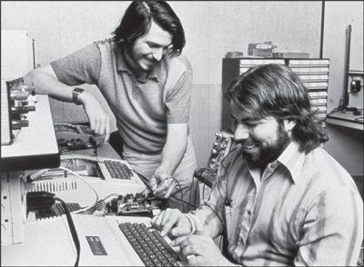
Jobs and Wozniak in the garage, 1976
Джобс и Возняк в гараже, 1976 год.
Woz
Воз.
While a student in McCollum’s class, Jobs became friends with a graduate who was the teacher’s all-time favorite and a school legend for his wizardry in the class. Stephen Wozniak, whose younger brother had been on a swim team with Jobs, was almost five years older than Jobs and far more knowledgeable about electronics. But emotionally and socially he was still a high school geek.
| all-time favorite | любимец всех времён, самый любимый ученик |
| wizardry | виртуозное мастерство, почти «волшебное» умение |
| knowledgeable about | хорошо разбирающийся в чём-либо |
Будучи учеником в классе Макколлума, Джобс подружился с выпускником, который был самым любимым учеником учителя и школьной легендой благодаря виртуозному владению электроникой. Стивен Возняк, младший брат которого состоял с Джобсом в одной команде по плаванию, был почти на пять лет старше Джобса и гораздо лучше разбирался в электронике. Но эмоционально и в общении он всё ещё оставался школьным ботаником.
Like Jobs, Wozniak learned a lot at his father’s knee. But their lessons were different. Paul Jobs was a high school dropout who, when fixing up cars, knew how to turn a tidy profit by striking the right deal on parts.
| at his father’s knee | у отца, с детства учась у него |
| dropout | человек, бросивший учёбу |
| turn a tidy profit | получить неплохую прибыль |
| striking the right deal | заключая подходящую сделку; здесь — выгодно договариваясь о покупке запчастей |
Как и Джобс, Возняк многому научился у отца. Но уроки у них были разными. Пол Джобс бросил школу и, ремонтируя машины, умел получать неплохую прибыль, заключая выгодные сделки на запчасти.
Francis Wozniak, known as Jerry, was a brilliant engineering graduate from Cal Tech, where he had quarterbacked the football team, who became a rocket scientist at Lockheed. He exalted engineering and looked down on those in business, marketing, and sales. “I remember him telling me that engineering was the highest level of importance you could reach in the world,” Steve Wozniak later recalled. “It takes society to a new level.”
| quarterbacked | был квотербеком, руководил атакой футбольной команды |
| exalted | превозносил, считал высшим занятием |
| looked down on | смотрел свысока на |
Фрэнсис Возняк, известный как Джерри, был блестящим выпускником инженерного факультета Калтеха, где он играл квотербеком в футбольной команде, а затем стал специалистом по ракетной технике в Lockheed. Он превозносил инженерию и смотрел свысока на людей из бизнеса, маркетинга и продаж. «Я помню, как он говорил мне, что инженерия — это самый высокий уровень значимости, которого можно достичь в мире, — позже вспоминал Стив Возняк. — Она выводит общество на новый уровень».
One of Steve Wozniak’s first memories was going to his father’s workplace on a weekend and being shown electronic parts, with his dad “putting them on a table with me so I got to play with them.” He watched with fascination as his father tried to get a waveform line on a video screen to stay flat so he could show that one of his circuit designs was working properly. “I could see that whatever my dad was doing, it was important and good.”
| waveform | форма волны, график электрического сигнала |
| stay flat | оставаться ровной; не колебаться |
| circuit designs | схемы электрических цепей |
Одно из первых воспоминаний Стива Возняка — как в выходной он пришёл на работу к отцу, и тот показал ему электронные детали, «раскладывая их со мной на столе, чтобы я мог с ними играть». Он с увлечением наблюдал, как отец пытался сделать так, чтобы линия сигнала на экране оставалась ровной, доказывая исправность одной из его схем. «Я видел, что всё, чем занимался мой отец, было важным и хорошим».
Woz, as he was known even then, would ask about the resistors and transistors lying around the house, and his father would pull out a blackboard to illustrate what they did. “He would explain what a resistor was by going all the way back to atoms and electrons. He explained how resistors worked when I was in second grade, not by equations but by having me picture it.”
| lying around | валяющиеся тут и там |
| pull out a blackboard | доставать классную доску |
| going all the way back to | начинать с самых основ, возвращаться к истокам |
Воз, как его называли уже тогда, спрашивал о резисторах и транзисторах, валявшихся по дому, а отец доставал классную доску, чтобы показать, для чего они нужны. «Он объяснял, что такое резистор, начиная с самих атомов и электронов. Во втором классе он объяснил мне, как работают резисторы, не с помощью уравнений, а предлагая мне это представить».
Woz’s father taught him something else that became ingrained in his childlike, socially awkward personality: Never lie. “My dad believed in honesty. Extreme honesty. That’s the biggest thing he taught me. I never lie, even to this day.” (The only partial exception was in the service of a good practical joke.)
| ingrained in | глубоко укоренилось в |
| awkward | неловкий в общении |
| in the service of | ради, во имя чего-либо |
| practical joke | розыгрыш |
Отец Воза научил его и другому, что глубоко укоренилось в его по-детски непосредственном характере, при всей его неловкости в общении: никогда не лгать. «Мой отец верил в честность. В предельную честность. Это самое главное, чему он меня научил. Я не лгу, даже по сей день». Единственным частичным исключением были удачные розыгрыши.
In addition, he imbued his son with an aversion to extreme ambition, which set Woz apart from Jobs. At an Apple product launch event in 2010, forty years after they met, Woz reflected on their differences. “My father told me, ‘You always want to be in the middle,’” he said.
| imbued his son with | внушил сыну; imbue someone with something — глубоко привить кому-либо какое-либо чувство или убеждение |
| aversion | сильное неприятие, отвращение |
| set Woz apart from | отличало от |
Кроме того, он внушил сыну неприятие чрезмерных амбиций, и это отличало Воза от Джобса. В 2010 году, через сорок лет после их знакомства, Воз на презентации продукта Apple размышлял об их различиях. «Отец говорил мне: “Лучше всегда держаться середины”», — сказал он.
“I didn’t want to be up with the high-level people like Steve. My dad was an engineer, and that’s what I wanted to be. I was way too shy ever to be a business leader like Steve.”
| high-level people | люди высокого положения, руководители |
| way too | слишком уж, гораздо слишком |
«Я не хотел быть среди влиятельных людей, как Стив. Мой отец был инженером, и я тоже хотел быть инженером. Я был слишком уж застенчив, чтобы когда-либо стать таким деловым лидером, как Стив».
By fourth grade Wozniak became, as he put it, one of the “electronics kids.” He had an easier time making eye contact with a transistor than with a girl, and he developed the chunky and stooped look of a guy who spends most of his time hunched over circuit boards. At the same age when Jobs was puzzling over a carbon microphone that his dad couldn’t explain, Wozniak was using transistors to build an intercom system featuring amplifiers, relays, lights, and buzzers that connected the kids’ bedrooms of six houses in the neighborhood.
| making eye contact | смотреть в глаза |
| stooped | сутулый |
| hunched over | склонившийся, сгорбившийся над чем-либо |
| relays | реле, электрический переключатель |
К четвёртому классу Возняк, по его словам, стал одним из «ребят, помешанных на электронике». Ему было легче смотреть в глаза транзистору, чем девушке, и стал выглядеть как коренастый, сутулый человек, который большую часть времени горбится над печатными платами. В том возрасте, когда Джобс ломал голову над угольным микрофоном, принцип работы которого отец не мог объяснить, Возняк с помощью транзисторов строил систему внутренней связи с усилителями, реле, лампочками и зуммерами, соединявшую спальни детей в шести соседних домах.
And at an age when Jobs was building Heathkits, Wozniak was assembling a transmitter and receiver from Hallicrafters, the most sophisticated radios available. Woz spent a lot of time at home reading his father’s electronics journals, and he became enthralled by stories about new computers, such as the powerful ENIAC. Because Boolean algebra came naturally to him, he marveled at how simple, rather than complex, the computers were.
| assembling | собирая из деталей |
| enthralled by | совершенно увлечённый чем-либо |
| came naturally to him | давалось ему естественно и легко |
| marveled at | изумлялся, восхищался |
И в то время, когда Джобс собирал наборы Heathkit, Возняк собирал передатчик и приёмник Hallicrafters — самые совершенные из доступных радиоустройств. Воз много времени проводил дома, читая отцовские журналы по электронике, и был совершенно увлечён рассказами о новых компьютерах, например о мощном ENIAC. Булева алгебра давалась ему естественно, и он изумлялся тому, насколько компьютеры были просты, а не сложны.
In eighth grade he built a calculator that included one hundred transistors, two hundred diodes, and two hundred resistors on ten circuit boards. It won top prize in a local contest run by the Air Force, even though the competitors included students through twelfth grade.
| top prize | главный приз, первое место |
| through twelfth grade | вплоть до двенадцатого класса |
В восьмом классе он построил калькулятор, включавший сто транзисторов, двести диодов и двести резисторов на десяти печатных платах. Он получил главный приз на местном конкурсе, проводившемся ВВС, хотя среди участников были ученики вплоть до двенадцатого класса.
Woz became more of a loner when the boys his age began going out with girls and partying, endeavors that he found far more complex than designing circuits. “Where before I was popular and riding bikes and everything, suddenly I was socially shut out,” he recalled. “It seemed like nobody spoke to me for the longest time.”
| loner | одиночка |
| endeavors | занятия, дела, попытки |
| socially shut out | выпал из компании |
| for the longest time | очень долго |
Воз становился всё большим одиночкой, когда мальчики его возраста начали встречаться с девушками и ходить на вечеринки — занятия, которые казались ему куда сложнее проектирования схем. «Раньше я был популярным, катался на велосипеде и всё такое, а потом вдруг выпал из компании, — вспоминал он. — Казалось, со мной очень долго никто не разговаривал».
He found an outlet by playing juvenile pranks. In twelfth grade he built an electronic metronome—one of those tick-tick-tick devices that keep time in music class—and realized it sounded like a bomb. So he took the labels off some big batteries, taped them together, and put it in a school locker; he rigged it to start ticking faster when the locker opened.
| found an outlet | нашёл выход своим чувствам и энергии |
| keep time | задавать музыкальный ритм |
| rigged it | хитро устроил, приспособил |
Он нашёл выход своей энергии в детских розыгрышах. В двенадцатом классе он собрал электронный метроном — один из тех аппаратов «тик-тик-тик», что задают ритм на уроках музыки, — и понял, что он звучит как бомба. Тогда он снял этикетки с больших батарей, склеил их вместе и положил в школьный шкафчик; он хитро устроил прибор так, чтобы при открывании шкафчика тиканье ускорялось.
Later that day he got called to the principal’s office. He thought it was because he had won, yet again, the school’s top math prize. Instead he was confronted by the police. The principal had been summoned when the device was found, bravely ran onto the football field clutching it to his chest, and pulled the wires off.
| got called to | был вызван в |
| yet again | снова, в очередной раз |
| was confronted by | столкнулся с, предстал перед |
| clutching | крепко прижимая к себе |
Позднее в тот же день его вызвали в кабинет директора. Он подумал, что это потому, что он снова получил главную школьную награду по математике. Но вместо этого он предстал перед полицией. Когда устройство нашли, вызвали директора; он храбро выбежал с ним на футбольное поле, крепко прижимая его к груди, и оторвал провода.
Woz tried and failed to suppress his laughter. He actually got sent to the juvenile detention center, where he spent the night. It was a memorable experience. He taught the other prisoners how to disconnect the wires leading to the ceiling fans and connect them to the bars so people got shocked when touching them.
| suppress | подавить, сдержать |
| juvenile detention center | центр временного содержания несовершеннолетних |
| got shocked | получали удар электрическим током |
Воз пытался, но не смог сдержать смех. Его действительно отправили в центр временного содержания несовершеннолетних, где он провёл ночь. Это был запоминающийся опыт. Он научил других заключённых отсоединять провода, ведущие к потолочным вентиляторам, и подсоединять их к решёткам, чтобы люди получали удар током, касаясь их.
Getting shocked was a badge of honor for Woz. He prided himself on being a hardware engineer, which meant that random shocks were routine. He once devised a roulette game where four people put their thumbs in a slot; when the ball landed, one would get shocked. “Hardware guys will play this game, but software guys are too chicken,” he noted.
| badge of honor | знак отличия, предмет гордости |
| prided himself on | гордился тем, что |
| random shocks | случайные удары током |
| too chicken | слишком трусливы |
Получить удар током было для Воза знаком отличия. Он гордился тем, что был инженером по аппаратному обеспечению, а это означало, что случайные удары током были обычным делом. Однажды он придумал игру в рулетку: четверо людей вставляли большие пальцы в отверстие, и, когда шарик останавливался, одного из них било током. «Инженеры по железу в такое играют, а программисты боятся», — заметил он.
During his senior year he got a part-time job at Sylvania and had the chance to work on a computer for the first time. He learned FORTRAN from a book and read the manuals for most of the systems of the day, starting with the Digital Equipment PDP-8. Then he studied the specs for the latest microchips and tried to redesign the computers using these newer parts.
| senior year | последний год обучения в старшей школе |
| specs | технические характеристики; сокращение от specifications |
| redesign | перепроектировать |
В последний год школы он устроился на неполный день в Sylvania и впервые получил возможность работать с компьютером. Он выучил FORTRAN по книге и прочитал руководства к большинству систем того времени, начиная с Digital Equipment PDP-8. Затем он изучил технические характеристики новейших микросхем и пытался перепроектировать компьютеры, используя эти более новые детали.
The challenge he set himself was to replicate the design using the fewest components possible. Each night he would try to improve his drawing from the night before. By the end of his senior year, he had become a master. “I was now designing computers with half the number of chips the actual company had in their own design, but only on paper.”
| set himself | поставил себе (задачу) |
| the fewest components possible | минимально возможное число компонентов; естественнее: «как можно меньше деталей» |
| actual company | сама компания-производитель |
Задача, которую он поставил перед собой, состояла в том, чтобы воспроизвести конструкцию с как можно меньшим числом компонентов. Каждый вечер он старался улучшить чертёж, сделанный предыдущей ночью. К концу последнего школьного года он стал мастером. «Теперь я проектировал компьютеры с вдвое меньшим числом микросхем, чем использовала сама компания в своей конструкции, правда только на бумаге».
He never told his friends. After all, most seventeen-year-olds were getting their kicks in other ways. On Thanksgiving weekend of his senior year, Wozniak visited the University of Colorado. It was closed for the holiday, but he found an engineering student who took him on a tour of the labs.
| after all | в конце концов, ведь |
| getting their kicks | искали развлечений, получали удовольствие |
| took him on a tour | провёл для него экскурсию |
Он никогда не рассказывал друзьям. В конце концов, большинство семнадцатилетних искали удовольствий совсем иначе. В выходные на День благодарения в последний школьный год Возняк посетил Университет Колорадо. На праздники он был закрыт, но Возняк нашёл студента-инженера, который провёл ему экскурсию по лабораториям.
He begged his father to let him go there, even though the out-of-state tuition was more than the family could easily afford. They struck a deal: He would be allowed to go for one year, but then he would transfer to De Anza Community College back home. After arriving at Colorado in the fall of 1969, he spent so much time playing pranks (such as producing reams of printouts saying “Fuck Nixon”) that he failed a couple of his courses and was put on probation.
| out-of-state tuition | плата за обучение для студентов не из этого штата |
| struck a deal | заключили соглашение |
| reams of printouts | целые стопы компьютерных распечаток |
| put on probation | оставили на испытательном сроке |
Он умолял отца позволить ему учиться там, хотя плата для студентов из других штатов была больше, чем семья могла легко себе позволить. Они заключили соглашение: ему разрешат проучиться один год, а затем он переведётся в местный колледж Де Анза у себя дома. Приехав в Колорадо осенью 1969 года, он столько времени тратил на розыгрыши, например печатал целые стопы листов со словами «Нахуй Никсона», что провалил пару предметов и был оставлен на испытательном сроке.
In addition, he created a program to calculate Fibonacci numbers that burned up so much computer time the university threatened to bill him for the cost. So he readily lived up to his bargain with his parents and transferred to De Anza.
| burned up | поглотила, израсходовала |
| bill him for | выставить кому-либо счёт за |
| lived up to his bargain | выполнил свою часть соглашения |
Кроме того, он создал программу для вычисления чисел Фибоначчи, которая поглотила столько машинного времени, что университет пригрозил выставить ему счёт за расходы. Поэтому он охотно выполнил свою часть соглашения с родителями и перевёлся в Де Анза.
After a pleasant year at De Anza, Wozniak took time off to make some money. He found work at a company that made computers for the California Motor Vehicle Department, and a coworker made him a wonderful offer: He would provide some spare chips so Wozniak could make one of the computers he had been sketching on paper. Wozniak decided to use as few chips as possible, both as a personal challenge and because he did not want to take advantage of his colleague’s largesse.
| took time off | взял перерыв в учёбе или работе |
| spare chips | запасные микросхемы |
| take advantage of | злоупотреблять чьей-либо добротой |
| largesse | щедрость, великодушная помощь |
После приятного года в Де Анза Возняк взял перерыв, чтобы заработать денег. Он нашёл работу в компании, делавшей компьютеры для Департамента автотранспорта Калифорнии, и коллега сделал ему прекрасное предложение: он даст несколько запасных микросхем, чтобы Возняк мог собрать один из компьютеров, которые рисовал на бумаге. Возняк решил использовать как можно меньше микросхем — и как личный вызов, и потому, что не хотел злоупотреблять щедростью коллеги.
Much of the work was done in the garage of a friend just around the corner, Bill Fernandez, who was still at Homestead High. To lubricate their efforts, they drank large amounts of Cragmont cream soda, riding their bikes to the Sunnyvale Safeway to return the bottles, collect the deposits, and buy more. “That’s how we started referring to it as the Cream Soda Computer,” Wozniak recalled.
| just around the corner | совсем рядом, за углом |
| lubricate their efforts | образно: поддерживать работу приятным стимулом |
| collect the deposits | получать залоговую стоимость сданных бутылок |
| referring to it as | называть это |
Большая часть работы велась в гараже друга, жившего совсем рядом, Билла Фернандеса, который всё ещё учился в Homestead High. Чтобы работа шла веселее, они в огромных количествах пили крем-соду Cragmont, ездили на велосипедах в Sunnyvale Safeway сдавать бутылки, получать залоговую стоимость и покупать ещё. «Так мы и начали называть его Компьютером крем-соды», — вспоминал Возняк.
It was basically a calculator capable of multiplying numbers entered by a set of switches and displaying the results in binary code with little lights. When it was finished, Fernandez told Wozniak there was someone at Homestead High he should meet. “His name is Steve. He likes to do pranks like you do, and he’s also into building electronics like you are.”
| capable of | способный на, умеющий |
| entered by | введённые с помощью |
| binary code | двоичный код |
| into building electronics | увлекаться сборкой электронных устройств; be into something — увлекаться чем-либо |
По сути это был калькулятор, способный умножать числа, введённые набором переключателей, и показывать результаты в двоичном коде маленькими лампочками. Когда он был готов, Фернандес сказал Возняку, что в Homestead High есть человек, с которым ему следует познакомиться. «Его зовут Стив. Он любит розыгрыши, как и ты, и тоже увлекается созданием электронной техники».
It may have been the most significant meeting in a Silicon Valley garage since Hewlett went into Packard’s thirty-two years earlier. “Steve and I just sat on the sidewalk in front of Bill’s house for the longest time, just sharing stories—mostly about pranks we’d pulled, and also what kind of electronic designs we’d done,” Wozniak recalled. “We had so much in common.”
| went into | зашёл к; имеется в виду встреча Хьюлетта и Паккарда |
| for the longest time | очень долго |
| pranks we’d pulled | розыгрыши, которые мы устроили |
| had so much in common | имели так много общего; «у нас было столько общего» |
Возможно, это была самая значительная встреча в гараже Кремниевой долины со времён, когда Хьюлетт зашёл к Паккарду тридцать два года назад. «Мы со Стивом очень долго сидели на тротуаре перед домом Билла и рассказывали истории — главным образом о розыгрышах, которые устраивали, и о том, какие электронные устройства проектировали, — вспоминал Возняк. — У нас было так много общего».
“Typically, it was really hard for me to explain to people what kind of design stuff I worked on, but Steve got it right away. And I liked him. He was kind of skinny and wiry and full of energy.” Jobs was also impressed. “Woz was the first person I’d met who knew more electronics than I did,” he once said, stretching his own expertise.
| got it right away | сразу понял |
| wiry | жилистый, худощавый и крепкий |
| stretching his own expertise | несколько преувеличивая собственные знания |
«Обычно мне было очень трудно объяснить людям, над какими проектами я работал, но Стив сразу понял. И он мне понравился. Он был худой, жилистый и полный энергии». Джобс тоже был впечатлён. «Воз был первым человеком, которого я встретил и который знал об электронике больше меня», — однажды сказал он, несколько преувеличивая собственные знания.
“I liked him right away. I was a little more mature than my years, and he was a little less mature than his, so it evened out. Woz was very bright, but emotionally he was my age.” In addition to their interest in computers, they shared a passion for music. “It was an incredible time for music,” Jobs recalled.
| mature than my years | зрелее, чем можно ожидать в моём возрасте |
| evened out | уравновесилось, сравнялось |
| bright | очень умный, способный |
«Он мне сразу понравился. Я был немного взрослее своих лет, а он немного отставал в этом смысле от своего возраста, так что мы оказались на одном уровне. Воз был очень умён, но эмоционально был моего возраста». Помимо интереса к компьютерам, они разделяли любовь к музыке. «Это было невероятное время для музыки», — вспоминал Джобс.
“It was like living at a time when Beethoven and Mozart were alive. Really. People will look back on it that way. And Woz and I were deeply into it.” In particular, Wozniak turned Jobs on to the glories of Bob Dylan. “We tracked down this guy in Santa Cruz who put out this newsletter on Dylan,” Jobs said.
| look back on | вспоминать, смотреть назад на прошлое |
| deeply into it | глубоко увлечены этим |
| turned Jobs on to | познакомил и увлёк чем-либо |
| tracked down | разыскали после упорных поисков |
«Это было всё равно что жить во времена, когда были живы Бетховен и Моцарт. Правда. Люди будут вспоминать это именно так. И мы с Возом были глубоко этим увлечены». В частности, Возняк познакомил Джобса с великолепием Боба Дилана. «Мы разыскали в Санта-Крузе парня, выпускавшего бюллетень о Дилане», — сказал Джобс.
“Dylan taped all of his concerts, and some of the people around him were not scrupulous, because soon there were tapes all around. Bootlegs of everything. And this guy had them all.” Hunting down Dylan tapes soon became a joint venture.
| scrupulous | щепетильные, строго честные |
| bootlegs | нелегальные записи |
| joint venture | общее предприятие; здесь — совместное занятие |
«Дилан записывал все свои концерты, а некоторые люди рядом с ним не отличались щепетильностью, поэтому вскоре записи были повсюду. Нелегальные записи всего подряд. И у этого парня были они все». Охота за записями Дилана вскоре стала их совместным занятием.
“The two of us would go tramping through San Jose and Berkeley and ask about Dylan bootlegs and collect them,” said Wozniak. “We’d buy brochures of Dylan lyrics and stay up late interpreting them. Dylan’s words struck chords of creative thinking.” Added Jobs, “I had more than a hundred hours, including every concert on the ’65 and ’66 tour,” the one where Dylan went electric.
| go tramping through | бродить по городу в поисках чего-либо |
| stay up late | не спать допоздна |
| struck chords | затронули, отозвались в душе |
| went electric | перешёл от акустического к электрическому звучанию |
«Мы вдвоём бродили по Сан-Хосе и Беркли, расспрашивали о нелегальных записях Дилана и собирали их, — говорил Возняк. — Мы покупали брошюры с текстами песен Дилана и допоздна толковали их. Слова Дилана будили в нас творческую мысль». Джобс добавил: «У меня было больше ста часов, включая каждый концерт тура 1965 и 1966 годов», того самого, во время которого Дилан перешёл к электрическому звучанию.
Both of them bought high-end TEAC reel-to-reel tape decks. “I would use mine at a low speed to record many concerts on one tape,” said Wozniak. Jobs matched his obsession: “Instead of big speakers I bought a pair of awesome headphones and would just lie in my bed and listen to that stuff for hours.”
| high-end | высокого класса, дорогой и качественный |
| reel-to-reel tape decks | катушечные магнитофоны |
| matched his obsession | разделил, не уступал в этой страсти |
Оба купили высококлассные катушечные магнитофоны TEAC. «Я включал свой на малой скорости, чтобы записывать на одну ленту много концертов», — сказал Возняк. Джобс не уступал ему в этой страсти: «Вместо больших колонок я купил отличные наушники и просто лежал в кровати и часами слушал всё это».
Jobs had formed a club at Homestead High to put on music-and-light shows and also play pranks. (They once glued a gold-painted toilet seat onto a flower planter.) It was called the Buck Fry Club, a play on the name of the principal. Even though they had already graduated, Wozniak and his friend Allen Baum joined forces with Jobs, at the end of his junior year, to produce a farewell gesture for the departing seniors.
| put on | устраивать, проводить |
| a play on | игра слов, основанная на |
| joined forces with | объединили усилия с |
| departing seniors | выпускники, уходящие из школы |
Джобс основал в Homestead High клуб, который устраивал музыкально-световые шоу и розыгрыши. Однажды они приклеили выкрашенное золотой краской сиденье от унитаза к цветочному вазону. Он назывался Buck Fry Club — игра слов с именем директора. Хотя Возняк и его друг Аллен Баум уже окончили школу, в конце предпоследнего года Джобса они объединились с ним, чтобы устроить выпускникам прощальный сюрприз.
Showing off the Homestead campus four decades later, Jobs paused at the scene of the escapade and pointed. “See that balcony? That’s where we did the banner prank that sealed our friendship.” On a big bedsheet Baum had tie-dyed with the school’s green and white colors, they painted a huge hand flipping the middle-finger salute.
| showing off | показывая, демонстрируя |
| escapade | озорная проделка, авантюра |
| sealed our friendship | окончательно скрепил нашу дружбу |
| tie-dyed | окрашенный узелковой техникой |
Показывая кампус Homestead четыре десятилетия спустя, Джобс остановился на месте проделки и указал на него. «Видите тот балкон? Там мы устроили розыгрыш с плакатом, который окончательно скрепил нашу дружбу». На большой простыне, которую Баум окрасил узелковой техникой в зелёные и белые школьные цвета, они нарисовали огромную руку с поднятым средним пальцем.
Baum’s nice Jewish mother helped them draw it and showed them how to do the shading and shadows to make it look more real. “I know what that is,” she snickered. They devised a system of ropes and pulleys so that it could be dramatically lowered as the graduating class marched past the balcony, and they signed it “SWAB JOB,” the initials of Wozniak and Baum combined with part of Jobs’s name.
| shading | штриховка, передача теней |
| snickered | хихикнула |
| devised | изобрели, придумали |
| pulleys | блоки, колёса для подъёма груза |
Добрая еврейская мама Баума помогла им нарисовать её и показала, как сделать штриховку и тени, чтобы рисунок выглядел реалистичнее. «Я знаю, что это такое», — хихикнула она. Они придумали систему верёвок и блоков, чтобы плакат можно было эффектно спустить, когда выпускной класс проходил мимо балкона, и подписали его «SWAB JOB» — инициалами Возняка и Баума, соединёнными с частью фамилии Джобса.
The prank became part of school lore—and got Jobs suspended one more time. Another prank involved a pocket device Wozniak built that could emit TV signals. He would take it to a room where a group of people were watching TV, such as in a dorm, and secretly press the button so that the screen would get fuzzy with static.
| school lore | школьная легенда, история, которую все помнят |
| got Jobs suspended | привёл к временному отстранению Джобса от занятий |
| emit | испускать, излучать |
| fuzzy with static | в ряби помех, нечётким |
Розыгрыш стал частью школьной легенды — и ещё раз привёл к отстранению Джобса от занятий. Другой розыгрыш был связан с карманным устройством, которое построил Возняк и которое могло излучать телевизионные сигналы. Он приносил его в комнату, где люди смотрели телевизор, например в общежитии, и тайком нажимал кнопку, отчего экран покрывался рябью помех.
When someone got up and whacked the set, Wozniak would let go of the button and the picture would clear up. Once he had the unsuspecting viewers hopping up and down at his will, he would make things harder. He would keep the picture fuzzy until someone touched the antenna.
| whacked the set | ударял по телевизору |
| clear up | проясняться, становиться чётким |
| unsuspecting | ничего не подозревающий |
| hopping up and down at his will | заставлял людей прыгать по своей воле |
Когда кто-нибудь вставал и ударял по телевизору, Возняк отпускал кнопку, и изображение становилось чётким. Как только он заставлял ничего не подозревающих зрителей прыгать по его воле, он усложнял дело. Он держал картинку в ряби, пока кто-нибудь не касался антенны.
Eventually he would make people think they had to hold the antenna while standing on one foot or touching the top of the set. Years later, at a keynote presentation where he was having his own trouble getting a video to work, Jobs broke from his script and recounted the fun they had with the device. “Woz would have it in his pocket and we’d go into a dorm . . . where a bunch of folks would be, like, watching Star Trek, and he’d screw up the TV, and someone would go up to fix it, and just as they had the foot off the ground he would turn it back on, and as they put their foot back on the ground he’d screw it up again.”
| keynote presentation | главная презентация мероприятия |
| broke from his script | отступил от подготовленного текста |
| screw up | испортить, нарушить работу |
| folks | люди, ребята; разговорное слово |
В конце концов он заставлял людей думать, что нужно держать антенну, стоя на одной ноге или касаясь верхней части телевизора. Годы спустя на главной презентации, где у него самого были проблемы с запуском видео, Джобс отступил от подготовленного текста и рассказал о том, как они развлекались с этим устройством. «Воз держал его в кармане, и мы заходили в общежитие... где куча ребят, вроде бы, смотрела “Звёздный путь”, а он портил телевизор; кто-то подходил его чинить, и как раз когда человек отрывал ногу от пола, Воз снова включал сигнал, а когда он ставил ногу обратно, опять всё портил».
Contorting himself into a pretzel onstage, Jobs concluded to great laughter, “And within five minutes he would have someone like this.”
| contorting himself into a pretzel | скрутившись в нелепую позу, словно крендель |
| onstage | на сцене |
Скрутившись на сцене в нелепую позу, словно крендель, Джобс под общий смех заключил: «И через пять минут он доводил кого-нибудь до такого состояния».
The Blue Box
«Голубая коробка».
The ultimate combination of pranks and electronics—and the escapade that helped to create Apple—was launched one Sunday afternoon when Wozniak read an article in Esquire that his mother had left for him on the kitchen table. It was September 1971, and he was about to drive off the next day to Berkeley, his third college. The story, Ron Rosenbaum’s “Secrets of the Little Blue Box,” described how hackers and phone phreakers had found ways to make long-distance calls for free by replicating the tones that routed signals on the AT&T network.
| ultimate combination | идеальное, высшее сочетание |
| escapade | озорная авантюра |
| drive off | уехать на машине |
| phone phreakers | энтузиасты взлома телефонных систем |
| replicating | точно воспроизводя |
Идеальное сочетание розыгрышей и электроники — авантюра, которая помогла создать Apple, — началось в одно воскресенье, когда Возняк прочитал статью в журнале Esquire, оставленную матерью на кухонном столе. Был сентябрь 1971 года, и на следующий день он должен был уехать на машине в Беркли, в свой третий колледж. Статья Рона Розенбаума «Секреты маленькой голубой коробки» рассказывала, как хакеры и фрикеры телефонных сетей нашли способ бесплатно звонить на дальние расстояния, точно воспроизводя тоны, направлявшие сигналы в сети AT&T.
“Halfway through the article, I had to call my best friend, Steve Jobs, and read parts of this long article to him,” Wozniak recalled. He knew that Jobs, then beginning his senior year, was one of the few people who would share his excitement. A hero of the piece was John Draper, a hacker known as Captain Crunch because he had discovered that the sound emitted by the toy whistle that came with the breakfast cereal was the same 2600 Hertz tone used by the phone network’s call-routing switches.
| halfway through | на середине, прочитав примерно половину |
| the piece | статья, материал |
| emitted | издаваемый, испускаемый |
| call-routing switches | коммутаторы, направляющие телефонные звонки |
«Дочитав статью примерно до середины, я не мог не позвонить своему лучшему другу Стиву Джобсу и прочитать ему части этой длинной статьи», — вспоминал Возняк. Он знал, что Джобс, начинавший тогда последний школьный год, был одним из немногих, кто разделил бы его волнение. Героем материала был Джон Дрейпер, хакер по прозвищу Капитан Кранч: он обнаружил, что звук игрушечного свистка, вложенного в коробку с сухим завтраком, совпадает с тоном в 2600 герц, который использовали коммутаторы телефонной сети для направления звонков.
It could fool the system into allowing a long-distance call to go through without extra charges. The article revealed that other tones that served to route calls could be found in an issue of the Bell System Technical Journal, which AT&T immediately began asking libraries to pull from their shelves.
| fool the system into | обманом заставить систему сделать что-либо |
| go through | соединиться, пройти успешно |
| served to | служили для того, чтобы |
| pull from their shelves | снять с полок и прекратить выдавать |
Он мог обманом заставить систему пропустить междугородний звонок без дополнительной платы. Статья раскрывала, что другие тоны для направления звонков можно найти в одном выпуске Bell System Technical Journal, который AT&T немедленно начала просить библиотеки снять с полок.
As soon as Jobs got the call from Wozniak that Sunday afternoon, he knew they would have to get their hands on the technical journal right away. “Woz picked me up a few minutes later, and we went to the library at SLAC [the Stanford Linear Accelerator Center] to see if we could find it,” Jobs recounted. It was Sunday and the library was closed, but they knew how to get in through a door that was rarely locked.
| get their hands on | достать, раздобыть |
| picked me up | заехал за мной на машине |
| recounted | рассказал, поведал |
| rarely locked | редко запиралась |
Как только в то воскресенье Джобс получил звонок от Возняка, он понял, что им нужно немедленно раздобыть технический журнал. «Через несколько минут Воз заехал за мной, и мы отправились в библиотеку SLAC — Стэнфордского центра линейных ускорителей, чтобы посмотреть, найдём ли мы его», — рассказывал Джобс. Было воскресенье, библиотека была закрыта, но они знали, как попасть внутрь через дверь, которую редко запирали.
“I remember that we were furiously digging through the stacks, and it was Woz who finally found the journal with all the frequencies. It was like, holy shit, and we opened it and there it was. We kept saying to ourselves, ‘It’s real. Holy shit, it’s real.’ It was all laid out—the tones, the frequencies.”
| digging through the stacks | лихорадочно рыться в библиотечных стеллажах |
| holy shit | грубое восклицание крайнего удивления |
| laid out | подробно изложено, представлено |
«Помню, мы лихорадочно рылись в библиотечных стеллажах, и именно Воз наконец нашёл журнал со всеми частотами. Это было что-то вроде: “Чёрт возьми!” Мы открыли его — и вот оно. Мы всё повторяли себе: “Это правда. Чёрт возьми, это правда”. Там всё было подробно изложено: тоны, частоты».
Wozniak went to Sunnyvale Electronics before it closed that evening and bought the parts to make an analog tone generator. Jobs had built a frequency counter when he was part of the HP Explorers Club, and they used it to calibrate the desired tones. With a dial, they could replicate and tape-record the sounds specified in the article.
| analog tone generator | аналоговый генератор звуковых сигналов |
| frequency counter | частотомер, прибор для измерения частоты |
| calibrate | точно настроить, откалибровать |
| dial | регулятор с круговой шкалой |
До закрытия Sunnyvale Electronics в тот вечер Возняк сходил туда и купил детали для аналогового генератора сигналов. Джобс, когда состоял в клубе HP Explorers, собрал частотомер, и они использовали его, чтобы точно настроить нужные тоны. С помощью регулятора они могли воспроизводить и записывать на плёнку звуки, указанные в статье.
By midnight they were ready to test it. Unfortunately the oscillators they used were not quite stable enough to replicate the right chirps to fool the phone company. “We could see the instability using Steve’s frequency counter,” recalled Wozniak, “and we just couldn’t make it work. I had to leave for Berkeley the next morning, so we decided I would work on building a digital version once I got there.”
| oscillators | генераторы колебаний |
| chirps | короткие высокие сигналы, «писки» |
| make it work | заставить это работать |
| once I got there | как только я туда доберусь |
К полуночи они были готовы испытать устройство. К несчастью, использованные ими генераторы колебаний были недостаточно стабильны, чтобы воспроизводить правильные короткие сигналы и обмануть телефонную компанию. «С помощью частотомера Стива мы видели нестабильность, — вспоминал Возняк, — и никак не могли заставить устройство работать. На следующее утро мне нужно было уезжать в Беркли, поэтому мы решили, что, добравшись туда, я займусь цифровой версией».
No one had ever created a digital version of a Blue Box, but Woz was made for the challenge. Using diodes and transistors from Radio Shack, and with the help of a music student in his dorm who had perfect pitch, he got it built before Thanksgiving. “I have never designed a circuit I was prouder of,” he said. “I still think it was incredible.”
| made for the challenge | идеально подходил для этой задачи |
| dorm | общежитие |
| perfect pitch | абсолютный слух |
Никто ещё не создавал цифровую версию «Голубой коробки», но Воз словно был создан для такой задачи. Используя диоды и транзисторы из Radio Shack, а также помощь студента-музыканта из общежития с абсолютным слухом, он собрал её до Дня благодарения. «Я никогда не проектировал схему, которой гордился бы больше, — сказал он. — Я до сих пор считаю её невероятной».
One night Wozniak drove down from Berkeley to Jobs’s house to try it. They attempted to call Wozniak’s uncle in Los Angeles, but they got a wrong number. It didn’t matter; their device had worked. “Hi! We’re calling you for free! We’re calling you for free!” Wozniak shouted.
| drove down | приехал на машине; down здесь указывает на направление поездки, а не на удалённость |
| got a wrong number | попали не туда, набрали неверный номер |
| had worked | сработало; Past Perfect подчёркивает результат к тому моменту |
Однажды ночью Возняк приехал из Беркли к дому Джобса, чтобы её испытать. Они попытались позвонить дяде Возняка в Лос-Анджелес, но попали не туда. Это не имело значения: их устройство сработало. «Привет! Мы звоним вам бесплатно! Мы звоним вам бесплатно!» — закричал Возняк.
The person on the other end was confused and annoyed. Jobs chimed in, “We’re calling from California! From California! With a Blue Box.” This probably baffled the man even more, since he was also in California.
| on the other end | на другом конце линии |
| chimed in | вмешался в разговор, добавил реплику |
| baffled | совершенно озадачило |
Человек на другом конце линии был растерян и раздражён. Джобс вмешался: «Мы звоним из Калифорнии! Из Калифорнии! С помощью “Голубой коробки”». Это, вероятно, озадачило мужчину ещё больше, поскольку он тоже находился в Калифорнии.
At first the Blue Box was used for fun and pranks. The most daring of these was when they called the Vatican and Wozniak pretended to be Henry Kissinger wanting to speak to the pope. “Ve are at de summit meeting in Moscow, and ve need to talk to de pope,” Woz intoned. He was told that it was 5:30 a.m. and the pope was sleeping.
| the most daring | самым дерзким |
| pretended to be | выдал себя за, притворился |
| summit meeting | встреча на высшем уровне |
| intoned | произнёс нарочито, с определённой интонацией |
Сначала «Голубую коробку» использовали ради забавы и розыгрышей. Самым дерзким был звонок в Ватикан, когда Возняк выдал себя за Генри Киссинджера, желающего поговорить с папой. «Мы на встрече на высшем уровне в Москве, и нам нужно поговорить с папой», — нарочито произнёс Воз. Ему ответили, что сейчас 5:30 утра и папа спит.
When he called back, he got a bishop who was supposed to serve as the translator. But they never actually got the pope on the line. “They realized that Woz wasn’t Henry Kissinger,” Jobs recalled. “We were at a public phone booth.”
| called back | позвонил снова |
| serve as | выступать в роли |
| on the line | на связи, у телефона |
| phone booth | телефонная будка |
Когда он перезвонил, к телефону подошёл епископ, который должен был выступать переводчиком. Но папу им так и не удалось застать на связи. «Они поняли, что Воз — не Генри Киссинджер, — вспоминал Джобс. — Мы находились в общественной телефонной будке».
It was then that they reached an important milestone, one that would establish a pattern in their partnerships: Jobs came up with the idea that the Blue Box could be more than merely a hobby; they could build and sell them. “I got together the rest of the components, like the casing and power supply and keypads, and figured out how we could price it,” Jobs said, foreshadowing roles he would play when they founded Apple.
| milestone | важная веха, значительное достижение |
| came up with | придумал |
| casing | корпус устройства |
| foreshadowing | предвосхищая, намекая на будущее |
Тогда они достигли важной вехи, которая определила привычное распределение ролей в их будущих начинаниях: Джобс придумал, что «Голубая коробка» может быть не просто хобби — её можно собирать и продавать. «Я подобрал остальные компоненты — корпус, блок питания, клавиатуру — и придумал, какую назначить цену», — сказал Джобс, предвосхищая роли, которые он будет играть при создании Apple.
The finished product was about the size of two decks of playing cards. The parts cost about $40, and Jobs decided they should sell it for $150. Following the lead of other phone phreaks such as Captain Crunch, they gave themselves handles. Wozniak became “Berkeley Blue,” Jobs was “Oaf Tobark.”
| decks of playing cards | колоды игральных карт |
| following the lead of | следуя примеру |
| handles | прозвища, псевдонимы |
Готовое устройство было размером примерно с две колоды игральных карт. Детали стоили около 40 долларов, а Джобс решил продавать его за 150. Следуя примеру других телефонных фрикеров, таких как Капитан Кранч, они взяли себе псевдонимы. Возняк стал «Беркли Блю», а Джобс — «Оаф Тобарк».
They took the device to college dorms and gave demonstrations by attaching it to a phone and speaker. While the potential customers watched, they would call the Ritz in London or a dial-a-joke service in Australia. “We made a hundred or so Blue Boxes and sold almost all of them,” Jobs recalled.
| college dorms | студенческие общежития |
| attaching it to | подсоединяя его к |
| dial-a-joke | телефонная служба с записанными шутками |
| a hundred or so | около сотни |
Они носили устройство в студенческие общежития и устраивали демонстрации, подключая его к телефону и динамику. Пока потенциальные покупатели смотрели, они звонили в лондонский Ritz или на австралийскую телефонную службу с записанными шутками. «Мы сделали около сотни “Голубых коробок” и продали почти все», — вспоминал Джобс.
The fun and profits came to an end at a Sunnyvale pizza parlor. Jobs and Wozniak were about to drive to Berkeley with a Blue Box they had just finished making. Jobs needed money and was eager to sell, so he pitched the device to some guys at the next table. They were interested, so Jobs went to a phone booth and demonstrated it with a call to Chicago.
| came to an end | закончились |
| pizza parlor | пиццерия |
| was eager to | очень хотел, стремился |
| pitched | предложил и расхвалил как товар |
Веселье и прибыль закончились в пиццерии Саннивейла. Джобс и Возняк собирались ехать в Беркли с только что изготовленной «Голубой коробкой». Джобсу нужны были деньги, и он очень хотел продать её, поэтому предложил устройство парням за соседним столиком. Они заинтересовались, и Джобс пошёл к телефонной будке и продемонстрировал его, позвонив в Чикаго.
The prospects said they had to go to their car for money. “So we walk over to the car, Woz and me, and I’ve got the Blue Box in my hand, and the guy gets in, reaches under the seat, and he pulls out a gun,” Jobs recounted. He had never been that close to a gun, and he was terrified. “So he’s pointing the gun right at my stomach, and he says, ‘Hand it over, brother.’”
| prospects | потенциальные покупатели |
| walk over | подойти, перейти к |
| pulls out a gun | достаёт пистолет |
| hand it over | отдай это |
Потенциальные покупатели сказали, что должны сходить за деньгами к машине. «Мы с Возом подходим к машине, “Голубая коробка” у меня в руке, парень садится, лезет под сиденье и достаёт пистолет», — рассказывал Джобс. Он никогда не был так близко к оружию и был в ужасе. «Он направляет пистолет прямо мне в живот и говорит: “Отдавай, брат”».
“My mind raced. There was the car door here, and I thought maybe I could slam it on his legs and we could run, but there was this high probability that he would shoot me. So I slowly handed it to him, very carefully.” It was a weird sort of robbery. The guy who took the Blue Box actually gave Jobs a phone number and said he would try to pay for it if it worked.
| my mind raced | мысли лихорадочно мелькали |
| slam it on | с силой захлопнуть на чём-либо |
| high probability | большая вероятность |
| handed it to him | передал ему; медленный темп в тексте выражен отдельным словом slowly |
«Мысли лихорадочно мелькали. Вот дверца машины, и я подумал: может, прищемить ему ноги дверцей и убежать, но была большая вероятность, что он меня застрелит. Поэтому я медленно, очень осторожно передал коробку ему». Это было странное ограбление. Парень, забравший «Голубую коробку», даже дал Джобсу номер телефона и сказал, что постарается заплатить за неё, если она будет работать.
When Jobs later called the number, the guy said he couldn’t figure out how to use it. So Jobs, in his felicitous way, convinced the guy to meet him and Wozniak at a public place. But they ended up deciding not to have another encounter with the gunman, even on the off chance they could get their $150.
| figure out | разобраться, понять |
| felicitous | удачный, ловкий и уместный |
| ended up | в итоге |
| on the off chance | в слабой надежде на то, что; на случай, если всё-таки |
Когда Джобс позже позвонил по номеру, парень сказал, что не может разобраться, как пользоваться устройством. Тогда Джобс со свойственным ему умением убеждать уговорил его встретиться с ним и Возняком в общественном месте. Но в итоге они решили больше не встречаться с вооружённым грабителем, даже ради маловероятного шанса вернуть свои 150 долларов.
The partnership paved the way for what would be a bigger adventure together. “If it hadn’t been for the Blue Boxes, there wouldn’t have been an Apple,” Jobs later reflected. “I’m 100% sure of that. Woz and I learned how to work together, and we gained the confidence that we could solve technical problems and actually put something into production.”
| paved the way for | проложило путь к, подготовило почву для |
| If it hadn’t been for | если бы не; условная конструкция о прошлом |
| put something into production | запустить в производство |
Это партнёрство проложило путь к более крупному совместному приключению. «Если бы не “Голубые коробки”, Apple бы не появилась, — позже размышлял Джобс. — Я уверен в этом на сто процентов. Мы с Возом научились работать вместе и обрели уверенность, что можем решать технические задачи и действительно запускать что-то в производство».
They had created a device with a little circuit board that could control billions of dollars’ worth of infrastructure. “You cannot believe how much confidence that gave us.” Woz came to the same conclusion: “It was probably a bad idea selling them, but it gave us a taste of what we could do with my engineering skills and his vision.”
| worth of infrastructure | инфраструктуру стоимостью в |
| came to the same conclusion | пришёл к тому же выводу |
| gave us a taste of | дало нам почувствовать, на что мы способны |
| vision | видение будущего, способность видеть перспективу |
Они создали устройство с маленькой платой, которое могло управлять инфраструктурой стоимостью в миллиарды долларов. «Вы не представляете, какую уверенность это нам дало». Воз пришёл к тому же выводу: «Вероятно, продавать их было плохой идеей, но это дало нам почувствовать, что мы можем сделать благодаря моим инженерным навыкам и его видению».
The Blue Box adventure established a template for a partnership that would soon be born. Wozniak would be the gentle wizard coming up with a neat invention that he would have been happy just to give away, and Jobs would figure out how to make it user-friendly, put it together in a package, market it, and make a few bucks.
| template | образец, модель для будущего |
| coming up with | придумывающий, создающий |
| give away | отдать бесплатно |
| user-friendly | удобный для пользователя |
| make a few bucks | заработать немного денег |
Приключение с «Голубой коробкой» установило модель партнёрства, которое вскоре родится. Возняк будет добрым волшебником, придумывающим изящное изобретение, которое он с радостью просто отдал бы бесплатно, а Джобс будет понимать, как сделать его удобным для пользователя, собрать в готовый продукт, вывести на рынок и заработать немного денег.
ГЛАВА ТРЕТЬЯ
ОТЧИСЛИВШИЙСЯ
«Включись, настройся...»
Chrisann Brennan
Крисанн Бреннан
Toward the end of his senior year at Homestead, in the spring of 1972, Jobs started going out with a girl named Chrisann Brennan, who was about his age but still a junior. With her light brown hair, green eyes, high cheekbones, and fragile aura, she was very attractive. She was also enduring the breakup of her parents’ marriage, which made her vulnerable.
| senior year | последний год учёбы в старшей школе |
| going out with | встречаться с кем-либо |
| fragile aura | хрупкий, ранимый облик |
| enduring | переживая, перенося |
Весной 1972 года, ближе к концу последнего года в Homestead, Джобс начал встречаться с девушкой по имени Крисанн Бреннан. Она была примерно его возраста, но ещё училась предпоследний год. Светло-каштановые волосы, зелёные глаза, высокие скулы и хрупкий облик делали её очень привлекательной. Она также переживала распад брака своих родителей, и это делало её уязвимой.
“We worked together on an animated movie, then started going out, and she became my first real girlfriend,” Jobs recalled. As Brennan later said, “Steve was kind of crazy. That’s why I was attracted to him.”
| recalled | вспоминал |
| kind of | в некотором смысле, слегка |
| attracted to | привлекал кого-либо |
«Мы вместе работали над анимационным фильмом, затем начали встречаться, и она стала моей первой настоящей девушкой», — вспоминал Джобс. Как позже сказала Бреннан: «Стив был немного сумасшедшим. Именно поэтому он меня привлекал».
Jobs’s craziness was of the cultivated sort. He had begun his lifelong experiments with compulsive diets, eating only fruits and vegetables, so he was as lean and tight as a whippet. He learned to stare at people without blinking, and he perfected long silences punctuated by staccato bursts of fast talking.
| cultivated sort | намеренно созданный, выработанный образ |
| compulsive diets | навязчивые, крайние диеты |
| lean and tight | худой и подтянутый |
| punctuated by | прерываемые чем-либо |
| staccato bursts | короткие отрывистые всплески |
Безумие Джобса отчасти было сознательно созданным образом. Он начал свои пожизненные эксперименты с навязчивыми диетами, ел только фрукты и овощи и поэтому был худым и подтянутым, как уиппет. Он научился смотреть на людей не моргая и довёл до совершенства долгие паузы, которые прерывались отрывистыми всплесками быстрой речи.
This odd mix of intensity and aloofness, combined with his shoulder-length hair and scraggly beard, gave him the aura of a crazed shaman. He oscillated between charismatic and creepy. “He shuffled around and looked half-mad,” recalled Brennan. “He had a lot of angst. It was like a big darkness around him.”
| aloofness | отстранённость, холодность в общении |
| scraggly | редкий и неухоженный |
| oscillated between | колебался между двумя состояниями |
| shuffled around | бродил шаркающей походкой |
| angst | тяжёлая тревога, душевное беспокойство |
Эта странная смесь напряжённости и отстранённости, вместе с волосами до плеч и редкой неухоженной бородой, придавала ему вид безумного шамана. Он колебался между харизматичностью и пугающей странностью. «Он шаркал вокруг и выглядел полубезумным, — вспоминала Бреннан. — В нём было много тревоги. Казалось, вокруг него была большая тьма».
Jobs had begun to drop acid by then, and he turned Brennan on to it as well, in a wheat field just outside Sunnyvale. “It was great,” he recalled. “I had been listening to a lot of Bach. All of a sudden the wheat field was playing Bach. It was the most wonderful feeling of my life up to that point. I felt like the conductor of this symphony with Bach coming through the wheat.”
| drop acid | разговорное: принимать ЛСД |
| turned Brennan on to | познакомить и увлечь чем-либо |
| all of a sudden | вдруг, внезапно |
| up to that point | до того момента |
К тому времени Джобс начал принимать ЛСД и познакомил с ним Бреннан на пшеничном поле неподалёку от Саннивейла. «Это было прекрасно, — вспоминал он. — Я много слушал Баха. И вдруг пшеничное поле заиграло Баха. Это было самое чудесное чувство в моей жизни до того момента. Я чувствовал себя дирижёром этой симфонии, в которой Бах звучал из пшеницы».
That summer of 1972, after his graduation, he and Brennan moved to a cabin in the hills above Los Altos. “I’m going to go live in a cabin with Chrisann,” he announced to his parents one day. His father was furious. “No you’re not,” he said. “Over my dead body.” They had recently fought about marijuana, and once again the younger Jobs was willful. He just said good-bye and walked out.
| graduation | окончание учебного заведения |
| over my dead body | ни за что, только через мой труп |
| willful | своевольный, упрямый |
| walked out | вышел, ушёл |
Летом 1972 года, после окончания школы, он и Бреннан переехали в хижину на холмах над Лос-Альтосом. Однажды он объявил родителям: «Я собираюсь жить в хижине с Крисанн». Отец пришёл в ярость. «Нет, не собираешься, — сказал он. — Только через мой труп». Недавно они уже спорили из-за марихуаны, и младший Джобс вновь проявил своеволие. Он просто попрощался и ушёл.
Brennan spent a lot of her time that summer painting; she was talented, and she did a picture of a clown for Jobs that he kept on the wall. Jobs wrote poetry and played guitar. He could be brutally cold and rude to her at times, but he was also entrancing and able to impose his will. “He was an enlightened being who was cruel,” she recalled. “That’s a strange combination.”
| entrancing | очаровывающий, завораживающий |
| impose his will | навязывать другим свою волю |
| enlightened being | просветлённое существо |
Тем летом Бреннан много рисовала; она была талантлива и написала для Джобса картину с клоуном, которую он держал на стене. Джобс писал стихи и играл на гитаре. Иногда он мог быть с ней жестоко холодным и грубым, но также умел очаровывать и навязывать свою волю. «Он был просветлённым существом, которое было жестоким, — вспоминала она. — Странное сочетание».
Midway through the summer, Jobs was almost killed when his red Fiat caught fire. He was driving on Skyline Boulevard in the Santa Cruz Mountains with a high school friend, Tim Brown, who looked back, saw flames coming from the engine, and casually said to Jobs, “Pull over, your car is on fire.” Jobs did. His father, despite their arguments, drove out to the hills to tow the Fiat home.
| midway through | в середине чего-либо |
| caught fire | загорелся |
| pull over | съехать к обочине и остановиться |
| tow | тащить автомобиль на буксире |
В середине лета Джобс едва не погиб, когда его красный Fiat загорелся. Он ехал по бульвару Скайлайн в горах Санта-Крус с другом по школе Тимом Брауном. Тот оглянулся, увидел пламя из двигателя и спокойно сказал Джобсу: «Остановись у обочины, твоя машина горит». Джобс остановился. Несмотря на их споры, отец поехал в холмы, чтобы отбуксировать Fiat домой.
In order to find a way to make money for a new car, Jobs got Wozniak to drive him to De Anza College to look on the help-wanted bulletin board. They discovered that the Westgate Shopping Center in San Jose was seeking college students who could dress up in costumes and amuse the kids. So for $3 an hour, Jobs, Wozniak, and Brennan donned heavy full-body costumes and headgear to play Alice in Wonderland, the Mad Hatter, and the White Rabbit.
| help-wanted bulletin board | доска объявлений о вакансиях |
| dress up | переодеваться в костюм |
| donned | надели |
| headgear | головной убор, часть костюма на голову |
Чтобы найти способ заработать на новую машину, Джобс попросил Возняка отвезти его в колледж Де Анза посмотреть доску объявлений о вакансиях. Они обнаружили, что торговый центр Westgate в Сан-Хосе ищет студентов, способных переодеваться в костюмы и развлекать детей. Так за три доллара в час Джобс, Возняк и Бреннан надели тяжёлые костюмы, закрывавшие всё тело, и головные части, чтобы играть Алису в Стране чудес, Безумного Шляпника и Белого Кролика.
Wozniak, in his earnest and sweet way, found it fun. “I said, ‘I want to do it, it’s my chance, because I love children.’ I think Steve looked at it as a lousy job, but I looked at it as a fun adventure.” Jobs did indeed find it a pain. “It was hot, the costumes were heavy, and after a while I felt like I wanted to smack some of the kids.” Patience was never one of his virtues.
| earnest | искренний, серьёзный |
| lousy job | паршивая, очень неприятная работа |
| a pain | неприятность, мучение |
| smack | ударить ладонью |
| virtues | достоинство, хорошее качество характера |
Возняку с его искренним и мягким характером это показалось весёлым. «Я сказал: “Я хочу это делать, это мой шанс, потому что я люблю детей”. Думаю, Стив считал это паршивой работой, а я видел в ней весёлое приключение». Джобсу это и правда было в тягость. «Было жарко, костюмы были тяжёлыми, и через некоторое время мне захотелось ударить некоторых детей». Терпение никогда не было его достоинством.
Колледж Рид
Seventeen years earlier, Jobs’s parents had made a pledge when they adopted him: He would go to college. So they had worked hard and saved dutifully for his college fund, which was modest but adequate by the time he graduated. But Jobs, becoming ever more willful, did not make it easy.
| pledge | твёрдое обещание |
| dutifully | старательно, добросовестно |
| willful | своевольный, упрямый |
Семнадцатью годами раньше родители Джобса дали твёрдое обещание, когда усыновили его: он будет учиться в колледже. Поэтому они много работали и добросовестно откладывали деньги на его образование; к окончанию школы эта сумма была скромной, но достаточной. Однако Джобс становился всё более своевольным и не облегчал им задачу.
At first he toyed with not going to college at all. “I think I might have headed to New York if I didn’t go to college,” he recalled, musing on how different his world—and perhaps all of ours—might have been if he had chosen that path. When his parents pushed him to go to college, he responded in a passive-aggressive way.
| toyed with | обдумывал как возможный вариант |
| musing | размышляя |
| passive-aggressive | пассивно-агрессивный |
Сначала он даже подумывал совсем не поступать в колледж. «Думаю, я мог бы отправиться в Нью-Йорк, если бы не пошёл в колледж», — вспоминал он, размышляя о том, насколько иначе сложился бы его мир, а возможно, и наш общий мир, выбери он этот путь. Когда родители настаивали на колледже, он отвечал пассивно-агрессивно.
He did not consider state schools, such as Berkeley, where Woz then was, despite the fact that they were more affordable. Nor did he look at Stanford, just up the road and likely to offer a scholarship. “The kids who went to Stanford, they already knew what they wanted to do,” he said.
| affordable | доступный по цене |
| up the road | совсем недалеко |
| scholarship | стипендия |
Он не рассматривал государственные университеты, например Беркли, где тогда учился Воз, хотя они стоили дешевле. Он также не смотрел на Стэнфорд, который находился совсем рядом и, вероятно, мог дать ему стипендию. «Ребята, которые шли в Стэнфорд, уже знали, чем хотят заниматься», — сказал он.
“They weren’t really artistic. I wanted something that was more artistic and interesting.” Instead he insisted on applying only to Reed College, a private liberal arts school in Portland, Oregon, that was one of the most expensive in the nation. He was visiting Woz at Berkeley when his father called to say an acceptance letter had arrived from Reed, and he tried to talk Steve out of going there.
| liberal arts school | гуманитарный колледж |
| acceptance letter | письмо о зачислении |
| talk Steve out of | отговорить кого-либо от решения |
«Они не были по-настоящему творческими. Я хотел чего-то более творческого и интересного». Вместо этого он настаивал, что будет подавать документы только в колледж Рид, частный гуманитарный колледж в Портленде, штат Орегон, один из самых дорогих в стране. Когда он гостил у Воза в Беркли, отец позвонил и сообщил, что из Рида пришло письмо о зачислении, а затем попытался отговорить Стива ехать туда.
So did his mother. It was far more than they could afford, they said. But their son responded with an ultimatum: If he couldn’t go to Reed, he wouldn’t go anywhere.
| ultimatum | категоричное требование |
| afford | иметь возможность оплатить |
То же самое сделала и мать. По их словам, это было намного дороже, чем они могли себе позволить. Но сын поставил ультиматум: если он не сможет поехать в Рид, то никуда не поедет.
They relented, as usual. Reed had only one thousand students, half the number at Homestead High. It was known for its free-spirited hippie lifestyle, which combined somewhat uneasily with its rigorous academic standards and core curriculum.
| relented | уступили |
| free-spirited | свободный по духу |
| core curriculum | обязательная основная программа |
Они, как обычно, уступили. В Риде училась всего тысяча студентов, вдвое меньше, чем в школе Homestead. Колледж был известен свободным хиппи-образом жизни, который не очень легко сочетался со строгими академическими требованиями и обязательной программой.
Five years earlier Timothy Leary, the guru of psychedelic enlightenment, had sat cross-legged at the Reed College commons while on his League for Spiritual Discovery (LSD) college tour. During it he exhorted his listeners, “Like every great religion of the past we seek to find the divinity within. . . . These ancient goals we define in the metaphor of the present—turn on, tune in, drop out.”
| guru | духовный наставник |
| cross-legged | сидя со скрещёнными ногами |
| exhorted | настойчиво призывал |
За пять лет до этого Тимоти Лири, наставник психоделического просветления, сидел со скрещёнными ногами в общем зале колледжа Рид во время университетского тура своей Лиги духовного открытия, LSD. В ходе тура он настойчиво призывал слушателей: «Как каждая великая религия прошлого, мы стремимся найти божественное внутри себя. . . . Эти древние цели мы выражаем метафорой настоящего: включись, настройся, выпадай».
Many of Reed’s students took all three of those injunctions seriously; the dropout rate during the 1970s was more than one-third. When it came time for Jobs to matriculate in the fall of 1972, his parents drove him up to Portland, but in another small act of rebellion he refused to let them come on campus. In fact he refrained from even saying good-bye or thanks.
| injunctions | наставления, предписания |
| dropout rate | доля отчислившихся |
| matriculate | официально поступить в колледж |
Многие студенты Рида серьёзно восприняли все три эти наставления; в 1970-е годы доля отчислившихся была больше одной трети. Когда осенью 1972 года Джобсу пришло время официально поступать, родители отвезли его в Портленд, но в ещё одном небольшом жесте бунта он не позволил им войти на территорию колледжа. На самом деле он даже не попрощался и не поблагодарил их.
He recounted the moment later with uncharacteristic regret:
| recounted | рассказал, вспомнил |
| uncharacteristic regret | не свойственное ему сожаление |
Позднее он рассказал об этом моменте с не свойственным ему сожалением:
“It’s one of the things in life I really feel ashamed about. I was not very sensitive, and I hurt their feelings. I shouldn’t have.”
| ashamed | испытывающий стыд |
| sensitive | чуткий к чувствам других |
«Это одна из вещей в жизни, за которые мне по-настоящему стыдно. Я был не очень чутким и задел их чувства. Мне не следовало так поступать».
“They had done so much to make sure I could go there, but I just didn’t want them around. I didn’t want anyone to know I had parents. I wanted to be like an orphan who had bummed around the country on trains and just arrived out of nowhere, with no roots, no connections, no background.”
| bummed around | скитался без денег и цели |
| roots | корни, происхождение |
«Они так много сделали, чтобы я мог там учиться, но я просто не хотел, чтобы они были рядом. Я не хотел, чтобы кто-то знал, что у меня есть родители. Я хотел быть похожим на сироту, который скитался по стране на поездах и вдруг появился ниоткуда, без корней, связей и прошлого».
In late 1972, there was a fundamental shift happening in American campus life. The nation’s involvement in the Vietnam War, and the draft that accompanied it, was winding down.
Political activism at colleges receded and, in many late-night dorm conversations, was replaced by an interest in pathways to personal fulfillment. Jobs found himself deeply influenced by books on spirituality and enlightenment, most notably Be Here Now, a guide to meditation and psychedelic drugs by Baba Ram Dass, born Richard Alpert.
“It was profound,” Jobs said. “It transformed me and many of my friends.”
| draft | призыв на военную службу |
| winding down | постепенно подходить к концу |
| receded | пошла на спад |
| personal fulfillment | личная самореализация |
| profound | глубокий, сильный по воздействию |
В конце 1972 года в американской студенческой жизни происходил важный перелом. Участие страны во Вьетнамской войне и сопровождавший его военный призыв постепенно сходили на нет.
Политическая активность в колледжах ослабла, и во многих ночных разговорах в общежитиях её сменил интерес к путям личной самореализации. Джобс оказался под сильным влиянием книг о духовности и просветлении, особенно книги «Будь здесь и сейчас» Бабы Рам Дасса, урождённого Ричарда Алперта, о медитации и психоделических наркотиках.
«Это было очень глубоко, — говорил Джобс. — Это изменило меня и многих моих друзей».
Closest among those friends was Daniel Kottke, another freshman with a wispy beard. He met Jobs a week after they arrived at Reed and shared his interest in Zen, Dylan, and acid.
Kottke came from a wealthy New York suburb and was smart but low-octane, with a sweet flower-child manner made even gentler by Buddhism. His spiritual quest led him to eschew material possessions, but Jobs’s tape deck still impressed him.
“Steve had a TEAC reel-to-reel and massive quantities of Dylan bootlegs,” Kottke recalled. “He was both really cool and high-tech.”
| wispy | редкий, тонкий |
| low-octane | спокойный, не слишком энергичный |
| eschew | сознательно избегать |
| tape deck | магнитофон |
| bootlegs | нелегальные концертные записи |
Самым близким из этих друзей был Дэниел Коттке, ещё один первокурсник с редкой бородой. Он познакомился с Джобсом через неделю после их приезда в Рид и разделял его интерес к дзену, Дилану и ЛСД.
Коттке вырос в богатом пригороде Нью-Йорка, был умным, но спокойным человеком с мягкими манерами хиппи, которые буддизм сделал ещё спокойнее. Его духовные поиски заставляли его избегать материальных вещей, но магнитофон Джобса всё равно произвёл на него впечатление.
«У Стива был катушечный магнитофон TEAC и огромное количество нелегальных записей Дилана, — вспоминал Коттке. — Он был одновременно очень крутым и технически продвинутым».
Jobs spent much of his time with Kottke and his girlfriend, Elizabeth Holmes, even after he offended her at their first meeting. He had questioned her closely about how much money it would take for her to have sex with another man.
They hitchhiked to the coast, discussed the meaning of life in the usual dorm-room conversations, attended love festivals at the local Hare Krishna temple, and went to the Zen center for free vegetarian meals. “It was a lot of fun,” Kottke said, “but also philosophical, and we took Zen very seriously.”
| questioned her closely | подробно, настойчиво её расспрашивал |
| hitchhiked | путешествовали автостопом |
| dorm-room conversations | разговоры в общежитии |
Джобс проводил много времени с Коттке и его девушкой Элизабет Холмс, хотя при первой встрече оскорбил её. Он настойчиво расспрашивал, за какую сумму она согласилась бы на секс с другим мужчиной.
Они автостопом ездили к побережью, обсуждали смысл жизни в обычных разговорах в общежитии, посещали фестивали любви в местном храме Харе Кришна и ходили в дзен-центр за бесплатной вегетарианской едой. «Было очень весело, — говорил Коттке, — но и философски; мы относились к дзену очень серьёзно».
Jobs shared more books with Kottke, including Zen Mind, Beginner’s Mind by Shunryu Suzuki, Autobiography of a Yogi by Paramahansa Yogananda, and Cutting Through Spiritual Materialism by Chögyam Trungpa. They made a meditation room in the attic space above Elizabeth Holmes’s room and decorated it with Indian prints, a dhurrie rug, candles, incense, and cushions.
“There was a hatch in the ceiling leading to an attic which had a huge amount of space,” Jobs said. “We took psychedelic drugs there sometimes, but mainly we just meditated.”
| attic space | чердачное пространство, место на чердаке |
| dhurrie | индийский хлопковый ковёр |
| incense | благовония |
| hatch | люк |
Джобс делился с Коттке и другими книгами, среди которых были «Дзенский ум, ум начинающего» Сюнрю Судзуки, «Автобиография йога» Парамахансы Йогананды и «Преодоление духовного материализма» Чогьяма Трунгпы. Они устроили комнату для медитации в чердачном пространстве над комнатой Элизабет Холмс и украсили её индийскими рисунками, хлопковым ковром, свечами, благовониями и подушками.
«В потолке был люк, который вёл на очень просторный чердак, — говорил Джобс. — Иногда мы принимали там психоделики, но в основном просто медитировали».
Jobs’s interest in Eastern spirituality, especially Zen Buddhism, was not a passing fancy or youthful experiment. He embraced it with his usual intensity, and it became deeply ingrained in his personality.
“Steve is very much Zen,” Kottke said. “It was a deep influence; you see it in his stark, minimalist aesthetics and intense focus.”
Jobs was also strongly influenced by Buddhism’s emphasis on intuition. “I began to realize that an intuitive understanding and consciousness was more significant than abstract thinking and intellectual logical analysis,” he later said.
His intensity, however, made inner peace difficult; his Zen awareness was not accompanied by much calm, peace of mind, or ease with other people.
| passing fancy | временное увлечение |
| ingrained | глубоко укоренившийся |
| stark | строгий, лаконичный |
| intuition | интуиция |
| peace of mind | душевное спокойствие |
Интерес Джобса к восточной духовности, особенно к дзен-буддизму, не был временным увлечением или юношеским опытом. Он принял его с обычной для себя силой, и это глубоко укоренилось в его характере.
«Стив очень дзенский человек, — говорил Коттке. — Это было глубокое влияние; его видно в строгой минималистичной эстетике и сильной сосредоточенности».
Джобса также сильно повлияло буддийское внимание к интуиции. Позже он говорил: «Я начал понимать, что интуитивное понимание и сознание важнее абстрактного мышления и интеллектуального логического анализа».
Однако его интенсивность мешала ему обрести внутренний покой: дзенское осознание не принесло ему много спокойствия, душевного равновесия или лёгкости в отношениях с людьми.
He and Kottke enjoyed a nineteenth-century German form of chess called Kriegspiel, in which players sit back-to-back. Each has a board and pieces but cannot see the other player’s; a moderator tells them whether a move is legal, and they must work out where the opponent’s pieces are.
“The wildest game I played with them was during a lashing rainstorm by the fireside,” recalled Holmes, who acted as moderator. “They were tripping on acid and moving so fast I could barely keep up with them.”
| back-to-back | спиной друг к другу |
| moderator | судья, посредник |
| lashing rainstorm | сильнейший ливень с ветром |
| keep up with | успевать за кем-либо |
Он и Коттке любили немецкий вариант шахмат XIX века под названием кригшпиль, в котором игроки сидят спиной друг к другу. У каждого есть своя доска и фигуры, но он не видит фигуры соперника; судья сообщает, разрешён ли ход, и игрокам приходится догадываться, где стоят фигуры противника.
«Самая безумная партия, в которой я с ними участвовала, была во время сильного ливня у камина, — вспоминала Холмс, которая была судьёй. — Они были под ЛСД и ходили так быстро, что я едва за ними успевала».
Another book that deeply influenced Jobs in his first year was Diet for a Small Planet by Frances Moore Lappé. It praised the personal and planetary benefits of vegetarianism.
“That’s when I swore off meat pretty much for good,” he recalled. But the book also reinforced his tendency toward extreme diets: purges, fasts, or eating only one or two foods, such as carrots or apples, for weeks.
| swore off | твёрдо отказался от |
| reinforced | усилила, укрепила |
| purges | очищение организма |
| fasts | голодания |
Ещё одной книгой, сильно повлиявшей на Джобса в первый год учёбы, была «Диета для маленькой планеты» Фрэнсис Мур Лаппе. В ней говорилось о личной и планетарной пользе вегетарианства.
«Тогда я почти навсегда отказался от мяса», — вспоминал он. Но книга также усилила его склонность к крайним диетам: очищению организма, голоданию или питанию только одним-двумя продуктами, например морковью или яблоками, неделями подряд.
Jobs and Kottke became serious vegetarians during their freshman year. “Steve got into it even more than I did,” Kottke said. “He was living off Roman Meal cereal.”
They shopped at a farmers’ co-op, where Jobs bought a box of cereal for the week and other health foods in bulk. “He would buy flats of dates and almonds and lots of carrots, and he got a Champion juicer; we’d make carrot juice and carrot salads.”
“There is a story about Steve turning orange from eating so many carrots, and there is some truth to that.” Friends sometimes remembered him with a sunset-like orange hue.
| living off | питаться главным образом |
| co-op | кооперативный магазин |
| in bulk | большими объёмами |
| hue | оттенок цвета |
Джобс и Коттке стали серьёзными вегетарианцами на первом курсе. «Стив увлёкся этим ещё сильнее, чем я, — говорил Коттке. — Он почти питался одними хлопьями Roman Meal».
Они покупали продукты в фермерском кооперативном магазине, где Джобс брал коробку хлопьев на неделю и другие полезные продукты большими объёмами. «Он покупал упаковки фиников, миндаль и много моркови, а ещё приобрёл соковыжималку Champion; мы делали морковный сок и салаты».
«Есть история, что Стив стал оранжевым от такого количества моркови, и в ней есть доля правды». Друзья иногда помнили его с оранжевым, как закат, оттенком кожи.
Jobs’s eating habits became even more obsessive after he read Mucusless Diet Healing System by Arnold Ehret, an early twentieth-century German-born nutrition fanatic. Ehret believed that only fruits and starchless vegetables prevented harmful mucus from forming in the body, and he promoted regular cleansing through long fasts.
That meant no more Roman Meal cereal, or any bread, grains, or milk. Jobs began warning friends about mucus dangers supposedly lurking in their bagels.
“I got into it in my typical nutso way,” he said. At one point he and Kottke ate only apples for a whole week, and then Jobs tried even stricter fasts.
He began with two-day fasts and eventually tried to extend them to a week or more, breaking them carefully with large amounts of water and leafy vegetables. “After a week you start to feel fantastic,” he said. “You get a ton of vitality from not having to digest all this food.”
“I was in great shape. I felt I could get up and walk to San Francisco anytime I wanted.”
| obsessive | навязчивый, чрезмерный |
| starchless | не содержащий крахмал |
| lurking | скрывающийся, таящийся |
| nutso | безумный, крайне странный |
| leafy vegetables | листовые овощи |
| vitality | жизненная энергия |
Пищевые привычки Джобса стали ещё более навязчивыми после книги Арнольда Эрета «Система оздоровления бесслизистой диетой». Этот немецкий фанатик питания начала XX века считал, что только фрукты и овощи без крахмала не дают вредной слизи образовываться в организме, и советовал регулярно очищать тело долгими голоданиями.
Это означало конец хлопьям Roman Meal, а также любому хлебу, зерну и молоку. Джобс начал предупреждать друзей о якобы таящейся в их бейглах опасности слизи.
«Я увлёкся этим по-своему безумно», — говорил он. Однажды они с Коттке целую неделю ели только яблоки, а потом Джобс начал пробовать ещё более строгие голодания.
Он начал с двухдневных голоданий и со временем пытался продлить их до недели или дольше, осторожно завершая их большим количеством воды и листовыми овощами. «Через неделю начинаешь чувствовать себя замечательно, — говорил он. — Появляется масса энергии, потому что не нужно переваривать всю эту еду».
«Я был в отличной форме. Мне казалось, что я могу встать и в любой момент пешком дойти до Сан-Франциско».
Vegetarianism and Zen Buddhism, meditation and spirituality, acid and rock: Jobs combined the era’s many impulses of the enlightenment-seeking campus subculture in an amped-up way. Although he barely indulged it at Reed, an undercurrent of electronic geekiness remained in his soul and would one day blend surprisingly well with the rest.
| amped-up | усиленный, доведённый до предела |
| indulged | предавался, увлекался |
| undercurrent | скрытое течение, внутренний мотив |
Вегетарианство и дзен-буддизм, медитация и духовность, ЛСД и рок: Джобс соединял многие стремления студенческой субкультуры той эпохи, искавшей просветление, в особенно усиленной форме. Хотя в Риде он почти не предавался технике, в его душе оставалось скрытое увлечение электроникой, которое однажды удивительно хорошо соединится со всем остальным.
Robert Friedland
Роберт Фридланд
In order to raise some cash one day, Jobs decided to sell his IBM Selectric typewriter. He walked into the room of the student who had offered to buy it only to discover that he was having sex with his girlfriend. Jobs started to leave, but the student invited him to take a seat and wait while they finished.
| raise some cash | раздобыть немного денег |
| only to discover | и тут обнаружил; конструкция, показывающая неожиданный результат |
Однажды, чтобы раздобыть немного денег, Джобс решил продать свою электрическую печатную машинку IBM Selectric. Он вошёл в комнату студента, который предложил её купить, и тут обнаружил, что тот занимается сексом со своей девушкой. Джобс уже собрался уходить, но студент предложил ему сесть и подождать, пока они закончат.
“I thought, ‘This is kind of far out,’” Jobs later recalled. And thus began his relationship with Robert Friedland, one of the few people in Jobs’s life who were able to mesmerize him. He adopted some of Friedland’s charismatic traits and for a few years treated him almost like a guru—until he began to see him as a charlatan.
| kind of far out | что-то совсем необычное; разговорное выражение |
| thus began | так начались |
| mesmerize | завораживать, подчинять своему обаянию |
| traits | черты, особенности |
| charlatan | шарлатан, обманщик |
«Я подумал: „Это как-то уж совсем необычно“», — позже вспоминал Джобс. Так начались его отношения с Робертом Фридландом, одним из немногих людей в жизни Джобса, кто умел его завораживать. Он перенял некоторые харизматичные черты Фридланда и несколько лет относился к нему почти как к гуру — пока не начал видеть в нём шарлатана.
Friedland was four years older than Jobs, but still an undergraduate. The son of an Auschwitz survivor who became a prosperous Chicago architect, he had originally gone to Bowdoin, a liberal arts college in Maine.
| undergraduate | студент, ещё не получивший первую учёную степень |
| prosperous | процветающий, успешный |
Фридланд был на четыре года старше Джобса, но всё ещё оставался студентом. Сын человека, пережившего Освенцим и ставшего преуспевающим чикагским архитектором, он сначала поступил в Боудойн, колледж свободных искусств в штате Мэн.
But while a sophomore, he was arrested for possession of 24,000 tablets of LSD worth $125,000. The local newspaper pictured him with shoulder-length wavy blond hair smiling at the photographers as he was led away. He was sentenced to two years at a federal prison in Virginia, from which he was paroled in 1972.
| sophomore | студент второго курса |
| possession | хранение, владение |
| pictured | напечатала его фотографию |
| was led away | его уводили |
| sentenced to | приговорили к |
| paroled | освободили условно-досрочно |
Но на втором курсе его арестовали за хранение 24 000 таблеток ЛСД стоимостью 125 000 долларов. Местная газета напечатала его фотографию: с волнистыми светлыми волосами до плеч, улыбающегося фотографам, пока его уводили. Его приговорили к двум годам федеральной тюрьмы в Вирджинии, откуда он вышел условно-досрочно в 1972 году.
That fall he headed off to Reed, where he immediately ran for student body president, saying that he needed to clear his name from the “miscarriage of justice” he had suffered. He won.
| headed off | отправился |
| ran for | выдвинул свою кандидатуру на выборах |
| clear his name | очистить своё имя, восстановить репутацию |
| miscarriage of justice | судебная ошибка, несправедливый приговор |
Той осенью он отправился в Reed, где сразу выдвинул свою кандидатуру на пост президента студенческого совета, заявив, что ему нужно очистить своё имя от «судебной ошибки», от которой он пострадал. Он победил.
Friedland had heard Baba Ram Dass, the author of Be Here Now, give a speech in Boston, and like Jobs and Kottke had gotten deeply into Eastern spirituality. During the summer of 1973, he traveled to India to meet Ram Dass’s Hindu guru, Neem Karoli Baba, famously known to his many followers as Maharaj-ji.
| gotten deeply into | глубоко погрузился в |
| guru | духовный наставник |
| followers | последователи |
Фридланд слышал выступление Бабы Рам Дасса, автора книги «Be Here Now», в Бостоне и, как Джобс с Коттке, глубоко погрузился в восточную духовность. Летом 1973 года он отправился в Индию, чтобы встретиться с индуистским гуру Рам Дасса, Ним Кароли Бабой, которого его многочисленные последователи знали как Махарадж-джи.
When he returned that fall, Friedland had taken a spiritual name and walked around in sandals and flowing Indian robes. He had a room off campus, above a garage, and Jobs would go there many afternoons to seek him out.
| taken a spiritual name | принял духовное имя |
| flowing | широкие, свободно ниспадающие |
| off campus | вне территории кампуса |
| seek him out | искать встречи с ним |
Когда той осенью он вернулся, Фридланд уже принял духовное имя и ходил в сандалиях и широких индийских одеяниях. У него была комната вне кампуса, над гаражом, и Джобс многими вечерами приходил туда, чтобы искать встречи с ним.
He was entranced by the apparent intensity of Friedland’s conviction that a state of enlightenment truly existed and could be attained. “He turned me on to a different level of consciousness,” Jobs said.
| entranced | очарован, заворожён |
| conviction | убеждённость |
| enlightenment | просветление |
| attained | достигнуто |
| turned me on to | открыл для меня, познакомил с |
Его завораживала та сила, с которой Фридланд был убеждён, что состояние просветления действительно существует и может быть достигнуто. «Он открыл для меня другой уровень сознания», — говорил Джобс.
Friedland found Jobs fascinating as well. “He was always walking around barefoot,” he later told a reporter. “The thing that struck me was his intensity. Whatever he was interested in he would generally carry to an irrational extreme.”
| found Jobs fascinating | считал Джобса удивительным, необычайно интересным |
| barefoot | босиком |
| struck me | поражало меня |
| carry to an irrational extreme | доводить до неразумной крайности |
Джобс тоже казался Фридланду удивительным. «Он всё время ходил босиком», — рассказывал тот позже журналисту. «Больше всего меня поражала его интенсивность. Чем бы он ни интересовался, он обычно доводил это до неразумной крайности».
Jobs had honed his trick of using stares and silences to master other people. “One of his numbers was to stare at the person he was talking to. He would stare into their fucking eyeballs, ask some question, and would want a response without the other person averting their eyes.”
| honed | отточил |
| stares | пристальные взгляды |
| to master | подчинять себе |
| one of his numbers | один из его коронных приёмов |
| averting their eyes | отводя глаза |
Джобс отточил свой приём — использовать пристальные взгляды и молчание, чтобы подчинять себе людей. «Одним из его коронных номеров было уставиться на собеседника. Он вглядывался людям прямо в глаза, задавал вопрос и хотел получить ответ, не давая человеку отвести взгляд».
According to Kottke, some of Jobs’s personality traits—including a few that lasted throughout his career—were borrowed from Friedland. “Friedland taught Steve the reality distortion field,” said Kottke.
| lasted throughout his career | сохранились на протяжении всей его карьеры |
| borrowed from | заимствованы у |
| reality distortion field | «поле искажения реальности»; умение убеждать вопреки фактам |
По словам Коттке, некоторые черты личности Джобса — включая те, что сохранились на протяжении всей его карьеры, — были заимствованы у Фридланда. «Фридланд научил Стива его „полю искажения реальности“», — говорил Коттке.
“He was charismatic and a bit of a con man and could bend situations to his will. He was mercurial, sure of himself, a little dictatorial. Steve admired that, and he became more like that after spending time with Robert.”
| con man | мошенник, мастер обмана |
| bend situations to his will | подчинять обстоятельства своей воле |
| mercurial | переменчивый, непредсказуемый |
| dictatorial | властный, не терпящий возражений |
«Он был харизматичным и немного мошенником, умел подчинять обстоятельства своей воле. Он был переменчивым, самоуверенным, немного диктатором. Стив восхищался этим и, проведя время с Робертом, сам стал больше на него похож».
Jobs also absorbed how Friedland made himself the center of attention. “Robert was very much an outgoing, charismatic guy, a real salesman,” Kottke recalled. “When I first met Steve he was shy and self-effacing, a very private guy.
| absorbed | впитал, перенял |
| center of attention | центр внимания |
| outgoing | общительный, открытый |
| self-effacing | скромный, не выпячивающий себя |
| private guy | замкнутый человек |
Джобс также перенял у Фридланда умение делать себя центром внимания. «Роберт был очень общительным, харизматичным парнем, настоящим продавцом», — вспоминал Коттке. «Когда я впервые встретил Стива, он был застенчивым и скромным, очень замкнутым человеком.
I think Robert taught him a lot about selling, about coming out of his shell, of opening up and taking charge of a situation.” Friedland projected a high-wattage aura. “He would walk into a room and you would instantly notice him. Steve was the absolute opposite when he came to Reed. After he spent time with Robert, some of it started to rub off.”
| coming out of his shell | выходить из своей скорлупы, преодолевать замкнутость |
| taking charge of | брать под контроль |
| projected | излучал, создавал |
| aura | аура, особое впечатление |
| instantly | мгновенно, сразу |
| rub off | передаваться, перениматься |
Думаю, Роберт многому научил его в умении продавать, в умении выходить из своей скорлупы, раскрываться и брать ситуацию под контроль». Фридланд излучал мощную ауру. «Он входил в комнату — и его тут же замечали. Стив, когда пришёл в Reed, был полной противоположностью. После общения с Робертом что-то из этого начало ему передаваться».
On Sunday evenings Jobs and Friedland would go to the Hare Krishna temple on the western edge of Portland, often with Kottke and Holmes in tow. They would dance and sing songs at the top of their lungs.
| in tow | в сопровождении, вместе с собой |
| at the top of their lungs | во весь голос, во всю силу лёгких |
По воскресеньям вечером Джобс и Фридланд ходили в храм Харе Кришна на западной окраине Портленда, часто вместе с Коттке и Холмс. Они танцевали и пели во весь голос.
“We would work ourselves into an ecstatic frenzy,” Holmes recalled. “Robert would go insane and dance like crazy. Steve was more subdued, as if he was embarrassed to let loose.” Then they were treated to paper plates piled high with vegetarian food.
| work ourselves into an ecstatic frenzy | доводить себя до экстатического исступления |
| subdued | сдержанный |
| let loose | дать себе волю, раскрепоститься |
| treated to | их угощали |
| piled high with | до верха наполненные |
«Мы доводили себя до экстатического исступления, — вспоминала Холмс. — Роберт впадал в безумие и плясал как сумасшедший. Стив был более сдержанным, словно стеснялся дать себе волю». Потом их угощали бумажными тарелками, до верха наполненными вегетарианской едой.
Friedland had stewardship of a 220-acre apple farm, about forty miles southwest of Portland, that was owned by an eccentric millionaire uncle from Switzerland named Marcel Müller. After Friedland became involved with Eastern spirituality, he turned it into a commune called the All One Farm, and Jobs would spend weekends there with Kottke, Holmes, and like-minded seekers of enlightenment.
| stewardship of | управление, забота о |
| 220-acre | площадью 220 акров |
| eccentric | эксцентричный, чудаковатый |
| commune | коммуна, община |
| like-minded seekers of enlightenment | единомышленники, ищущие просветления |
Фридланд управлял яблочной фермой площадью 220 акров, примерно в сорока милях к юго-западу от Портленда; она принадлежала его чудаковатому дяде-миллионеру из Швейцарии по имени Марсель Мюллер. После того как Фридланд увлёкся восточной духовностью, он превратил её в коммуну под названием All One Farm, и Джобс проводил там выходные вместе с Коттке, Холмс и другими единомышленниками, ищущими просветления.
The farm had a main house, a large barn, and a garden shed, where Kottke and Holmes slept. Jobs took on the task of pruning the Gravenstein apple trees. “Steve ran the orchard,” said Friedland. “We were in the organic cider business. Steve’s job was to lead a crew of freaks to prune the orchard and whip it back into shape.”
| barn | амбар, большой сарай |
| took on | взял на себя |
| pruning | обрезка деревьев |
| ran the orchard | заведовал фруктовым садом |
| crew | команда, бригада |
| whip it back into shape | привести в порядок, навести порядок |
На ферме были главный дом, большой амбар и садовый сарай, где спали Коттке и Холмс. Джобс взял на себя обрезку яблонь сорта Гравенштайн. «Стив заведовал фруктовым садом, — рассказывал Фридланд. — Мы занимались органическим сидром. Работа Стива состояла в том, чтобы вести бригаду чудаков обрезать сад и приводить его в порядок».
Monks and disciples from the Hare Krishna temple would come and prepare vegetarian feasts redolent of cumin, coriander, and turmeric. “Steve would be starving when he arrived, and he would stuff himself,” Holmes recalled.
| disciples | ученики |
| feasts redolent of | обильные угощения, благоухающие ароматами |
| starving | ужасно голодный |
| stuff himself | наедаться до отвала |
Монахи и ученики из храма Кришны приходили и готовили вегетарианские пиры, благоухающие кумином, кориандром и куркумой. «Стив приезжал ужасно голодным и наедался до отвала», — вспоминала Холмс.
“Then he would go and purge. For years I thought he was bulimic. It was very upsetting, because we had gone to all that trouble of creating these feasts, and he couldn’t hold it down.”
| purge | вызывать рвоту, «очищаться» |
| bulimic | страдающий булимией |
| gone to all that trouble | приложили столько усилий |
| couldn’t hold it down | не мог удержать еду в желудке |
«Потом он уходил и вызывал у себя рвоту. Годами я считала его булимиком. Это очень расстраивало, потому что мы приложили столько усилий, готовя эти пиры, а он не мог удержать еду».
Jobs was also beginning to have a little trouble stomaching Friedland’s cult leader style. “Perhaps he saw a little bit too much of Robert in himself,” said Kottke.
| stomaching | переваривать, выносить |
| cult leader | лидер культа |
Джобс также начинал с трудом переносить стиль Фридланда — стиль лидера культа. «Возможно, он видел в себе слишком много от Роберта», — говорил Коттке.
Although the commune was supposed to be a refuge from materialism, Friedland began operating it more as a business; his followers were told to chop and sell firewood, make apple presses and wood stoves, and engage in other commercial endeavors for which they were not paid.
| refuge | убежище |
| operating | ведя дела, управляя |
| followers | последователи |
| chop | рубить |
| endeavors | занятия, начинания |
| were not paid | им не платили |
Хотя коммуна должна была стать убежищем от материализма, Фридланд начал вести её скорее как бизнес: его последователям велели рубить и продавать дрова, делать яблочные прессы и дровяные печи и заниматься прочими коммерческими делами, за которые им не платили.
One night Jobs slept under the table in the kitchen and was amused to notice that people kept coming in and stealing each other’s food from the refrigerator. Communal economics were not for him.
| amused to notice | с забавой заметил |
| kept coming in | то и дело приходили |
| communal economics | общинное хозяйство, общая собственность |
Однажды ночью Джобс спал под столом на кухне и с забавой заметил, что люди то и дело приходили и крали друг у друга еду из холодильника. Общинное хозяйство было не для него.
“It started to get very materialistic,” Jobs recalled. “Everybody got the idea they were working very hard for Robert’s farm, and one by one they started to leave. I got pretty sick of it.”
| got the idea | пришли к мысли, поняли |
| one by one | один за другим |
| got pretty sick of it | мне это порядком надоело |
«Всё это становилось очень материалистичным, — вспоминал Джобс. — Все поняли, что очень много работают на ферму Роберта, и один за другим начали уезжать. Мне это порядком надоело».
Many years later, after Friedland had become a billionaire copper and gold mining executive—working out of Vancouver, Singapore, and Mongolia—I met him for drinks in New York. That evening I emailed Jobs and mentioned my encounter. He telephoned me from California within an hour and warned me against listening to Friedland.
| working out of | работая в |
| met him for drinks | встретился с ним за бокалом |
| encounter | встреча |
| warned me against | предостерегал меня от |
Много лет спустя, когда Фридланд уже стал миллиардером, руководителем компаний по добыче меди и золота — работая в Ванкувере, Сингапуре и Монголии, — я встретился с ним за бокалом в Нью-Йорке. В тот вечер я написал Джобсу и упомянул о нашей встрече. Не прошло и часа, как он позвонил мне из Калифорнии и предостерег от разговоров с Фридландом.
He said that when Friedland was in trouble because of environmental abuses committed by some of his mines, he had tried to contact Jobs to intervene with Bill Clinton, but Jobs had not responded.
| environmental abuses | нарушения экологических норм |
| intervene | вмешаться, заступиться |
Он рассказал, что, когда у Фридланда были неприятности из-за экологических нарушений на некоторых его рудниках, тот пытался связаться с Джобсом, чтобы тот заступился за него перед Биллом Клинтоном, но Джобс не ответил.
“Robert always portrayed himself as a spiritual person, but he crossed the line from being charismatic to being a con man,” Jobs said. “It was a strange thing to have one of the spiritual people in your young life turn out to be, symbolically and in reality, a gold miner.”
| portrayed himself | изображал себя |
| crossed the line | перешёл границу |
| con man | обманщик, аферист |
| symbolically and in reality | и символически, и в действительности |
«Роберт всегда изображал себя духовным человеком, но он перешёл границу между харизматичностью и мошенничеством, — сказал Джобс. — Странно, когда один из духовных людей твоей юности оказывается — и символически, и в буквальном смысле — золотодобытчиком».
. . . Drop Out
. . . Бросить учёбу
Jobs quickly became bored with college. He liked being at Reed, just not taking the required classes. In fact he was surprised when he found out that, for all of its hippie aura, there were strict course requirements.
| required classes | обязательные занятия |
| for all of its hippie aura | при всём хиппи-духе колледжа |
Джобсу быстро наскучил колледж. Ему нравилось быть в Reed, просто не нравилось ходить на обязательные занятия. Он даже удивился, узнав, что, при всём хиппи-духе колледжа, там были строгие требования к учебной программе.
When Wozniak came to visit, Jobs waved his schedule at him and complained, “They are making me take all these courses.” Woz replied, “Yes, that’s what they do in college.”
| waved his schedule at him | помахал у него перед носом своим расписанием |
Когда Возняк приехал в гости, Джобс помахал у него перед носом своим расписанием и пожаловался: «Они заставляют меня ходить на все эти курсы». Воз ответил: «Да, в колледже так и делается».
Jobs refused to go to the classes he was assigned and instead went to the ones he wanted, such as a dance class where he could enjoy both the creativity and the chance to meet girls. “I would never have refused to take the courses you were supposed to, that’s a difference in our personality,” Wozniak marveled.
| was assigned | был назначен, предписан |
| marveled | изумился, восхитился |
Джобс отказывался ходить на назначенные ему занятия и вместо этого шёл туда, куда хотел сам, например на урок танцев, где его привлекали и творчество, и возможность познакомиться с девушками. «Я бы никогда не отказался ходить на положенные курсы — вот в этом разница наших характеров», — изумлялся Возняк.
Jobs also began to feel guilty, he later said, about spending so much of his parents’ money on an education that did not seem worthwhile.
| feel guilty | испытывать чувство вины |
| worthwhile | стоящий, оправданный |
Позже Джобс говорил, что также начал испытывать чувство вины за то, что тратит столько родительских денег на образование, которое не казалось оправданным.
“All of my working-class parents’ savings were being spent on my college tuition,” he recounted in a famous commencement address at Stanford. “I had no idea what I wanted to do with my life and no idea how college was going to help me figure it out.
| savings | сбережения |
| tuition | плата за обучение |
| commencement address | выпускная речь |
| figure it out | разобраться в этом |
«Все сбережения моих родителей из рабочего класса уходили на моё обучение в колледже, — рассказывал он в своей знаменитой выпускной речи в Стэнфорде. — Я понятия не имел, что хочу делать со своей жизнью, и не понимал, как колледж поможет мне в этом разобраться.
And here I was spending all of the money my parents had saved their entire life. So I decided to drop out and trust that it would all work out okay.”
| drop out | бросить учёбу |
| work out | сложиться, получиться |
И вот я тратил все деньги, которые родители копили всю жизнь. Поэтому я решил бросить учёбу и поверить, что всё как-нибудь сложится».
He didn’t actually want to leave Reed; he just wanted to quit paying tuition and taking classes that didn’t interest him. Remarkably, Reed tolerated that.
| quit paying | перестать платить |
| tolerated | терпела, допускала |
На самом деле он не хотел покидать Reed; он просто хотел перестать платить за обучение и ходить на занятия, которые ему были неинтересны. Поразительно, но Reed это допускала.
“He had a very inquiring mind that was enormously attractive,” said the dean of students, Jack Dudman. “He refused to accept automatically received truths, and he wanted to examine everything himself.”
| inquiring mind | пытливый ум |
| dean of students | декан по работе со студентами |
| automatically received truths | истины, принятые на веру |
| examine | проверять, изучать |
«У него был очень пытливый ум, необычайно притягательный, — говорил декан по работе со студентами Джек Дадман. — Он отказывался принимать истины на веру и хотел всё проверить сам».
Dudman allowed Jobs to audit classes and stay with friends in the dorms even after he stopped paying tuition.
| audit classes | посещать занятия вольнослушателем |
| dorms | общежития |
Дадман разрешил Джобсу посещать занятия вольнослушателем и жить у друзей в общежитиях даже после того, как тот перестал платить за обучение.
“The minute I dropped out I could stop taking the required classes that didn’t interest me, and begin dropping in on the ones that looked interesting,” he said.
| The minute | как только |
| dropping in on | заглядывать на занятия |
«Как только я бросил учёбу, я смог перестать ходить на обязательные занятия, которые меня не интересовали, и начать заглядывать на те, что выглядели интересными», — говорил он.
Among them was a calligraphy class that appealed to him after he saw posters on campus that were beautifully drawn.
| calligraphy | каллиграфия, искусство красивого письма |
| appealed to him | привлекла его |
| posters | плакаты, афиши |
Среди них был курс каллиграфии, который привлёк его, после того как он увидел на кампусе красиво нарисованные плакаты.
“I learned about serif and sans serif typefaces, about varying the amount of space between different letter combinations, about what makes great typography great. It was beautiful, historical, artistically subtle in a way that science can’t capture, and I found it fascinating.”
| typefaces | шрифты |
| serif and sans serif | с засечками и без засечек; о шрифтах |
| varying | изменяя, варьируя |
| typography | типографика, искусство оформления текста |
| subtle | тонкий, едва уловимый |
«Я узнал о шрифтах с засечками и без засечек, о том, как варьировать расстояние между разными сочетаниями букв, о том, что делает великую типографику великой. Это было прекрасно, исторично, художественно тонко так, как наука не способна уловить, и меня это заворожило».
It was yet another example of Jobs consciously positioning himself at the intersection of the arts and technology. In all of his products, technology would be married to great design, elegance, human touches, and even romance.
| consciously | сознательно |
| at the intersection of | на пересечении |
| married to | соединена с |
| human touches | человеческие детали, тепло |
Это был ещё один пример того, как Джобс сознательно помещал себя на пересечении искусства и технологий. Во всех его продуктах технология должна была сочетаться с великолепным дизайном, элегантностью, человеческим теплом и даже романтикой.
He would be in the fore of pushing friendly graphical user interfaces. The calligraphy course would become iconic in that regard.
| in the fore of | в первых рядах, в авангарде |
| graphical user interfaces | графические пользовательские интерфейсы |
| iconic | знаковый, культовый |
| in that regard | в этом отношении |
Он будет в авангарде продвижения дружелюбных графических пользовательских интерфейсов. И курс каллиграфии станет в этом отношении знаковым.
“If I had never dropped in on that single course in college, the Mac would have never had multiple typefaces or proportionally spaced fonts. And since Windows just copied the Mac, it’s likely that no personal computer would have them.”
| single | один-единственный |
| proportionally spaced | с пропорциональным интервалом |
«Если бы я не заглянул в колледже на этот один-единственный курс, у Mac никогда не было бы множества шрифтов и шрифтов с пропорциональным интервалом. А поскольку Windows просто скопировала Mac, вероятно, их не было бы ни у одного персонального компьютера».
In the meantime Jobs eked out a bohemian existence on the fringes of Reed. He went barefoot most of the time, wearing sandals when it snowed. Elizabeth Holmes made meals for him, trying to keep up with his obsessive diets.
| eked out | влачил, кое-как поддерживал |
| bohemian existence | богемное существование |
| on the fringes of | на окраине, на периферии |
| barefoot | босиком |
| keep up with | успевать следовать за |
Тем временем Джобс влачил богемное существование на задворках жизни Рида. Он большую часть времени ходил босиком, а когда шёл снег — в сандалиях. Элизабет Холмс готовила ему еду, стараясь успевать за его навязчивыми диетами.
He returned soda bottles for spare change, continued his treks to the free Sunday dinners at the Hare Krishna temple, and wore a down jacket in the heatless garage apartment he rented for $20 a month.
| spare change | мелкие деньги, мелочь |
| treks | походы |
| down jacket | пуховая куртка |
| heatless | без отопления |
Он сдавал бутылки из-под газировки ради мелочи, продолжал ходить на бесплатные воскресные обеды в храм Кришны и носил пуховую куртку в неотапливаемой квартире над гаражом, которую снимал за 20 долларов в месяц.
When he needed money, he found work at the psychology department lab maintaining the electronic equipment that was used for animal behavior experiments. Occasionally Chrisann Brennan would come to visit. Their relationship sputtered along erratically.
| maintaining | обслуживая |
| animal behavior experiments | опыты по поведению животных |
| sputtered along | шла неровно, с перебоями |
| erratically | беспорядочно, нестабильно |
Когда ему нужны были деньги, он подрабатывал в лаборатории факультета психологии, обслуживая электронное оборудование, использовавшееся для опытов по поведению животных. Иногда приезжала Крисанн Бреннан. Их отношения то вспыхивали, то угасали.
But mostly he tended to the stirrings of his own soul and personal quest for enlightenment.
| tended to | уделял внимание, заботился о |
| stirrings | движения, порывы |
| quest | поиск |
Но главным образом он следовал внутренним порывам и продолжал личный поиск просветления.
“I came of age at a magical time,” he reflected later. “Our consciousness was raised by Zen, and also by LSD.”
| came of age | повзрослел, достиг зрелости |
| consciousness | сознание |
«Я повзрослел в волшебное время, — размышлял он позже. — Дзен и ЛСД расширяли наше сознание».
Even later in life he would credit psychedelic drugs for making him more enlightened. “Taking LSD was a profound experience, one of the most important things in my life.
| credit | приписывать заслугу, признавать |
| psychedelic | психоделический |
| enlightened | просветлённым |
| profound | глубокий |
Даже в зрелом возрасте он признавал за психоделическими веществами заслугу в том, что стал более просветлённым. «Приём ЛСД был глубоким переживанием, одним из важнейших в моей жизни.
LSD shows you that there’s another side to the coin, and you can’t remember it when it wears off, but you know it. It reinforced my sense of what was important—creating great things instead of making money, putting things back into the stream of history and of human consciousness as much as I could.”
| another side to the coin | другая сторона медали |
| wears off | проходит, перестаёт действовать |
| reinforced | укрепило |
| stream of history | поток истории |
ЛСД показывает тебе другую сторону медали; когда действие проходит, ты не можешь её вспомнить, но знаешь, что она есть. Это укрепило моё понимание того, что действительно важно: создавать великие вещи, а не зарабатывать деньги, и по мере сил вносить что-то в поток истории и человеческого сознания».
ГЛАВА ЧЕТВЁРТАЯ
ATARI И ИНДИЯ
Дзен и искусство разработки игр
Atari
Atari
In February 1974, after eighteen months of hanging around Reed, Jobs decided to move back to his parents’ home in Los Altos and look for a job. It was not a difficult search. At peak times during the 1970s, the classified section of the San Jose Mercury carried up to sixty pages of technology help-wanted ads.
| hanging around | слоняться, проводить время без определённого занятия |
| classified section | раздел газеты с частными объявлениями |
| help-wanted ads | объявления о вакансиях |
В феврале 1974 года, после восемнадцати месяцев, проведённых в Риде, Джобс решил вернуться в дом родителей в Лос-Альтосе и поискать работу. Поиск оказался нетрудным. В пиковые периоды 1970-х раздел частных объявлений газеты San Jose Mercury занимал до шестидесяти страниц объявлений о вакансиях в сфере технологий.
One of those caught Jobs’s eye. “Have fun, make money,” it said. That day Jobs walked into the lobby of the video game manufacturer Atari and told the personnel director, who was startled by his unkempt hair and attire, that he wouldn’t leave until they gave him a job.
| caught Jobs’s eye | привлечь чьё-либо внимание |
| unkempt | неопрятный, неухоженный |
| attire | одежда, наряд |
Одно из них привлекло внимание Джобса. «Развлекайся, зарабатывай деньги», — говорилось в нём. В тот же день Джобс вошёл в вестибюль производителя видеоигр Atari и заявил директору по персоналу, которого поразили его неухоженные волосы и одежда, что не уйдёт, пока ему не дадут работу.
Atari’s founder was a burly entrepreneur named Nolan Bushnell, who was a charismatic visionary with a nice touch of showmanship in him—in other words, another role model waiting to be emulated. After he became famous, he liked driving around in a Rolls, smoking dope, and holding staff meetings in a hot tub. As Friedland had done and as Jobs would learn to do, he was able to turn charm into a cunning force, to cajole and intimidate and distort reality with the power of his personality.
| burly | крепкий, крупного телосложения |
| showmanship | умение эффектно себя подать |
| role model | образец для подражания |
| cajole | уговаривать лестью или хитростью |
Основателем Atari был крепкий предприниматель по имени Нолан Бушнелл — харизматичный визионер с заметной склонностью к эффектной самопрезентации; иначе говоря, ещё один образец для подражания. Став знаменитым, он любил ездить на Rolls, курить марихуану и проводить совещания сотрудников в джакузи. Как прежде Фридланд и как вскоре научится Джобс, он умел превращать обаяние в хитрую силу: уговаривать, запугивать и искажать реальность мощью своей личности.
His chief engineer was Al Alcorn, beefy and jovial and a bit more grounded, the house grown-up trying to implement the vision and curb the enthusiasms of Bushnell. Their big hit thus far was a video game called Pong, in which two players tried to volley a blip on a screen with two movable lines that acted as paddles. (If you’re under thirty, ask your parents.)
| grounded | практичный, здравомыслящий |
| curb | сдерживать, ограничивать |
| volley | отбивать мяч на лету |
| blip | маленькая светящаяся точка на экране |
Его главным инженером был Эл Элкорн, полный, весёлый и несколько более практичный человек — взрослый в компании, пытавшийся воплотить замыслы Бушнелла и сдерживать его порывы. Их главным хитом к тому времени была видеоигра Pong: два игрока старались отбивать маленькую точку на экране двумя подвижными линиями, служившими ракетками. (Если вам меньше тридцати, спросите у родителей.)
When Jobs arrived in the Atari lobby wearing sandals and demanding a job, Alcorn was the one who was summoned. “I was told, ‘We’ve got a hippie kid in the lobby. He says he’s not going to leave until we hire him. Should we call the cops or let him in?’ I said bring him on in!”
| summoned | вызвали, позвали |
| bring him on in | пусть входит; приведите его сюда |
Когда Джобс явился в вестибюль Atari в сандалиях и потребовал работу, позвали Элкорна. «Мне сказали: “У нас в холле парень-хиппи. Он говорит, что не уйдёт, пока мы его не наймём. Вызвать полицию или впустить?” Я ответил: “Пусть заходит!”»
Jobs thus became one of the first fifty employees at Atari, working as a technician for $5 an hour. “In retrospect, it was weird to hire a dropout from Reed,” Alcorn recalled. “But I saw something in him. He was very intelligent, enthusiastic, excited about tech.”
| in retrospect | оглядываясь назад |
| dropout | человек, бросивший учёбу |
Так Джобс стал одним из первых пятидесяти сотрудников Atari, работая техником за пять долларов в час. «Оглядываясь назад, странно было нанять человека, бросившего Рид, — вспоминал Элкорн. — Но я увидел в нём что-то. Он был очень умным, увлечённым, воодушевлённым технологиями».
Alcorn assigned him to work with a straitlaced engineer named Don Lang. The next day Lang complained, “This guy’s a goddamn hippie with b.o. Why did you do this to me? And he’s impossible to deal with.” Jobs clung to the belief that his fruit-heavy vegetarian diet would prevent not just mucus but also body odor, even if he didn’t use deodorant or shower regularly. It was a flawed theory.
| straitlaced | строгий, придерживающийся правил |
| b.o. | сокращение от body odor: запах тела |
| clung to the belief | упорно держаться убеждения |
| flawed | ошибочный, имеющий изъян |
Элкорн поручил ему работать со строгим инженером по имени Дон Лэнг. На следующий день Лэнг пожаловался: «Этот парень — чёртов хиппи с запахом тела. Зачем ты со мной так? И с ним невозможно иметь дело». Джобс упорно верил, что его вегетарианская диета с обилием фруктов предотвратит не только слизь, но и запах тела, даже если он не пользуется дезодорантом и редко принимает душ. Теория была ошибочной.
Lang and others wanted to let Jobs go, but Bushnell worked out a solution. “The smell and behavior wasn’t an issue with me,” he said. “Steve was prickly, but I kind of liked him. So I asked him to go on the night shift. It was a way to save him.”
| let Jobs go | уволить кого-либо |
| worked out | найти, разработать решение |
| prickly | колючий, трудный в общении |
| night shift | ночная смена |
Лэнг и другие хотели уволить Джобса, но Бушнелл нашёл решение. «Запах и поведение меня не беспокоили, — сказал он. — Стив был колючим, но он мне вроде нравился. Поэтому я перевёл его в ночную смену. Это был способ его сохранить».
Jobs would come in after Lang and others had left and work through most of the night. Even thus isolated, he became known for his brashness. On those occasions when he happened to interact with others, he was prone to informing them that they were “dumb shits.” In retrospect, he stands by that judgment. “The only reason I shone was that everyone else was so bad,” Jobs recalled.
| brashness | дерзость, бесцеремонность |
| was prone to | иметь склонность к чему-либо |
| stands by | не отказываться от сказанного, придерживаться мнения |
| shone | выделялся; прошедшее время от shine |
Джобс приходил после ухода Лэнга и остальных и работал почти всю ночь. Даже в такой изоляции он прославился своей бесцеремонностью. Когда ему всё же случалось общаться с другими, он был склонен сообщать им, что они «тупые идиоты». Оглядываясь назад, он не отказывался от этого мнения. «Единственная причина, по которой я выделялся, состояла в том, что все остальные были такими плохими», — вспоминал Джобс.
India
Индия
One reason Jobs was eager to make some money in early 1974 was that Robert Friedland, who had gone to India the summer before, was urging him to take his own spiritual journey there. Friedland had studied in India with Neem Karoli Baba (Maharaj-ji), who had been the guru to much of the sixties hippie movement. Jobs decided he should do the same, and he recruited Daniel Kottke to go with him. Jobs was not motivated by mere adventure. “For me it was a serious search,” he said. “I’d been turned on to the idea of enlightenment and trying to figure out who I was and how I fit into things.” Kottke adds that Jobs’s quest seemed driven partly by not knowing his birth parents. “There was a hole in him, and he was trying to fill it.”
| eager | сильно желающий, стремящийся |
| urging him to take | настойчиво советовать кому-либо сделать что-то |
| recruited | привлечь, позвать участвовать |
| turned on to | увлечь кого-либо какой-либо идеей |
| quest | поиски, стремление к цели |
Одной из причин, по которой Джобс так стремился заработать немного денег в начале 1974 года, было то, что Роберт Фридланд, побывавший в Индии предыдущим летом, настойчиво советовал ему совершить собственное духовное путешествие туда. Фридланд учился в Индии у Нима Кароли Бабы (Махараджи-джи), гуру значительной части движения хиппи шестидесятых. Джобс решил поступить так же и позвал с собой Дэниела Коттке. Его влекла не просто жажда приключений. «Для меня это были серьёзные поиски, — говорил он. — Меня увлекла идея просветления, и я пытался понять, кто я и какое место занимаю в мире». Коттке добавляет, что поиски Джобса, по-видимому, отчасти были вызваны незнанием своих биологических родителей. «В нём была пустота, и он пытался её заполнить».
When Jobs told the folks at Atari that he was quitting to go search for a guru in India, the jovial Alcorn was amused. “He comes in and stares at me and declares, ‘I’m going to find my guru,’ and I say, ‘No shit, that’s super. Write me!’ And he says he wants me to help pay, and I tell him, ‘Bullshit!’” Then Alcorn had an idea. Atari was making kits and shipping them to Munich, where they were built into finished machines and distributed by a wholesaler in Turin. But there was a problem: Because the games were designed for the American rate of sixty frames per second, there were frustrating interference problems in Europe, where the rate was fifty frames per second. Alcorn sketched out a fix with Jobs and then offered to pay for him to go to Europe to implement it. “It’s got to be cheaper to get to India from there,” he said. Jobs agreed. So Alcorn sent him on his way with the exhortation, “Say hi to your guru for me.”
| jovial | весёлый, добродушный |
| wholesaler | оптовый торговец |
| sketched out | бегло набросать план или решение |
| implement | осуществить, внедрить |
| exhortation | наставление, призыв |
Когда Джобс сообщил ребятам из Atari, что увольняется, чтобы искать гуру в Индии, это позабавило весёлого Элкорна. «Он входит, смотрит на меня и заявляет: “Я собираюсь найти своего гуру”, а я отвечаю: “Да ну, здорово. Пиши мне!” А он говорит, что хочет, чтобы я помог оплатить поездку, и я отвечаю: “Чушь!”» Но тут Элкорну пришла идея. Atari изготавливала комплекты и отправляла их в Мюнхен, где из них собирали готовые аппараты, а затем оптовик в Турине распространял их. Но возникла проблема: игры были рассчитаны на американскую частоту в шестьдесят кадров в секунду, поэтому в Европе, где частота составляла пятьдесят кадров в секунду, появлялись досадные помехи. Элкорн вместе с Джобсом набросал решение и предложил оплатить ему поездку в Европу, чтобы внедрить его. «Оттуда до Индии добираться должно быть дешевле», — сказал он. Джобс согласился. И Элкорн отправил его в путь с напутствием: «Передай привет своему гуру от меня».
Jobs spent a few days in Munich, where he solved the interference problem, but in the process he flummoxed the dark-suited German managers. They complained to Alcorn that he dressed and smelled like a bum and behaved rudely. “I said, ‘Did he solve the problem?’ And they said, ‘Yeah.’ I said, ‘If you got any more problems, you just call me, I got more guys just like him!’ They said, ‘No, no we’ll take care of it next time.’” For his part, Jobs was upset that the Germans kept trying to feed him meat and potatoes. “They don’t even have a word for vegetarian,” he complained (incorrectly) in a phone call to Alcorn.
| flummoxed | сбить с толку, озадачить |
| bum | оборванец, неряха |
| For his part | со своей стороны |
| kept trying | продолжать делать что-либо |
Джобс провёл несколько дней в Мюнхене и решил проблему с помехами, но при этом озадачил немецких менеджеров в тёмных костюмах. Они пожаловались Элкорну, что он одевался и пах как оборванец и вёл себя грубо. «Я спросил: “Он решил проблему?” Они ответили: “Да”. Я сказал: “Если у вас ещё возникнут проблемы, просто звоните мне — у меня есть другие ребята вроде него!” Они ответили: “Нет-нет, в следующий раз мы сами справимся”». Со своей стороны Джобса раздражало, что немцы всё пытались кормить его мясом и картошкой. «У них даже нет слова для вегетарианца», — пожаловался он Элкорну по телефону, хотя это было неверно.
He had a better time when he took the train to see the distributor in Turin, where the Italian pastas and his host’s camaraderie were more simpatico. “I had a wonderful couple of weeks in Turin, which is this charged-up industrial town,” he recalled. “The distributor took me every night to dinner at this place where there were only eight tables and no menu. You’d just tell them what you wanted, and they made it. One of the tables was on reserve for the chairman of Fiat. It was really super.” He next went to Lugano, Switzerland, where he stayed with Friedland’s uncle, and from there took a flight to India.
| camaraderie | дружеская близость, товарищество |
| simpatico | более близкие по духу, приятные |
| charged-up | полный энергии, оживлённый |
| on reserve | зарезервированный |
Ему больше понравилось, когда он поехал поездом к дистрибьютору в Турин: итальянская паста и дружелюбие хозяина были ему больше по душе. «Я провёл чудесные две недели в Турине, этом энергичном промышленном городе, — вспоминал он. — Дистрибьютор каждый вечер водил меня ужинать в место, где было всего восемь столиков и не было меню. Ты просто говорил, чего хочешь, и тебе это готовили. Один столик был зарезервирован для председателя Fiat. Это было действительно здорово». Затем он поехал в Лугано, в Швейцарии, где остановился у дяди Фридланда, а оттуда улетел в Индию.
When he got off the plane in New Delhi, he felt waves of heat rising from the tarmac, even though it was only April. He had been given the name of a hotel, but it was full, so he went to one his taxi driver insisted was good. “I’m sure he was getting some baksheesh, because he took me to this complete dive.” Jobs asked the owner whether the water was filtered and foolishly believed the answer. “I got dysentery pretty fast. I was sick, really sick, a really high fever. I dropped from 160 pounds to 120 in about a week.”
| tarmac | асфальтированная площадка аэропорта |
| baksheesh | бакшиш, чаевые или взятка |
| dive | грязное, убогое место |
| dysentery | дизентерия |
| dropped from 160 pounds to 120 | сбросил вес со 160 до 120 фунтов; drop from … to … — снизиться с … до … |
Когда он сошёл с самолёта в Нью-Дели, то почувствовал волны жара, поднимавшиеся от аэродромного асфальта, хотя был лишь апрель. Ему дали название гостиницы, но она оказалась заполнена, поэтому он отправился в ту, которую таксист настойчиво называл хорошей. «Уверен, он получил за это бакшиш, потому что привёз меня в настоящую дыру». Джобс спросил хозяина, фильтруют ли воду, и по-глупому поверил ответу. «Я довольно быстро заболел дизентерией. Мне было плохо, очень плохо, была очень высокая температура. Примерно за неделю я похудел со 160 фунтов до 120».
Once he got healthy enough to move, he decided that he needed to get out of Delhi. So he headed to the town of Haridwar, in western India near the source of the Ganges, which was having a festival known as the Kumbh Mela. More than ten million people poured into a town that usually contained fewer than 100,000 residents. “There were holy men all around. Tents with this teacher and that teacher. There were people riding elephants, you name it. I was there for a few days, but I decided that I needed to get out of there too.”
| get out of | уехать, выбраться из какого-либо места |
| source | исток реки |
| poured into | хлынуть, массово прибыть куда-либо |
| you name it | чего там только не было |
Как только он достаточно поправился, чтобы передвигаться, то решил, что ему нужно уехать из Дели. Он направился в город Харидвар на западе Индии, неподалёку от истока Ганга, где проходил фестиваль, известный как Кумбха-Мела. В город, в котором обычно жило меньше 100 000 человек, хлынуло более десяти миллионов людей. «Повсюду были святые. Палатки с тем или иным учителем. Люди ездили на слонах, чего там только не было. Я пробыл там несколько дней, но решил, что и оттуда мне надо уехать».
He went by train and bus to a village near Nainital in the foothills of the Himalayas. That was where Neem Karoli Baba lived, or had lived. By the time Jobs got there, he was no longer alive, at least in the same incarnation. Jobs rented a room with a mattress on the floor from a family who helped him recuperate by feeding him vegetarian meals. “There was a copy there of Autobiography of a Yogi in English that a previous traveler had left, and I read it several times because there was not a lot to do, and I walked around from village to village and recovered from my dysentery.” Among those who were part of the community there was Larry Brilliant, an epidemiologist who was working to eradicate smallpox and who later ran Google’s philanthropic arm and the Skoll Foundation. He became Jobs’s lifelong friend.
| foothills | предгорья |
| incarnation | воплощение; здесь — жизнь в данном теле |
| recuperate | восстанавливаться после болезни |
| eradicate | полностью искоренить |
| philanthropic arm | благотворительное подразделение |
Поездом и автобусом он добрался до деревни возле Найни-Тала в предгорьях Гималаев. Там жил, или прежде жил, Ним Кароли Баба. К моменту прибытия Джобса он уже не был жив, по крайней мере в том же воплощении. Джобс снял у одной семьи комнату с матрасом на полу; они помогли ему восстановиться, кормя вегетарианскими блюдами. «Там лежал оставленный предыдущим путешественником английский экземпляр “Автобиографии йога”; я прочитал его несколько раз, потому что делать было особенно нечего, ходил из деревни в деревню и выздоравливал после дизентерии». Среди участников этой общины был Ларри Бриллиант, эпидемиолог, работавший над искоренением оспы; позднее он возглавлял благотворительное подразделение Google и Фонд Сколла. Он стал другом Джобса на всю жизнь.
At one point Jobs was told of a young Hindu holy man who was holding a gathering of his followers at the Himalayan estate of a wealthy businessman. “It was a chance to meet a spiritual being and hang out with his followers, but it was also a chance to have a good meal. I could smell the food as we got near, and I was very hungry.” As Jobs was eating, the holy man—who was not much older than Jobs—picked him out of the crowd, pointed at him, and began laughing maniacally. “He came running over and grabbed me and made a tooting sound and said, ‘You are just like a baby,’” recalled Jobs. “I was not relishing this attention.” Taking Jobs by the hand, he led him out of the worshipful crowd and walked him up to a hill, where there was a well and a small pond. “We sit down and he pulls out this straight razor. I’m thinking he’s a nutcase and begin to worry. Then he pulls out a bar of soap—I had long hair at the time—and he lathered up my hair and shaved my head. He told me that he was saving my health.”
| estate | большое поместье |
| hang out | проводить время вместе, общаться |
| picked him out of the crowd | выделить, заметить среди толпы |
| maniacally | безумно, маниакально |
| straight razor | опасная бритва |
| nutcase | сумасшедший, чудак |
Однажды Джобсу рассказали о молодом индуистском святом, который собрал своих последователей в гималайском поместье богатого бизнесмена. «Это была возможность встретить духовное существо и пообщаться с его последователями, но ещё и возможность хорошо поесть. Когда мы подошли, я почувствовал запах еды и был очень голоден». Пока Джобс ел, святой, который был ненамного старше Джобса, выделил его из толпы, указал на него и начал безумно хохотать. «Он подбежал, схватил меня, издал звук, будто кто-то пукнул, и сказал: “Ты совсем как младенец”, — вспоминал Джобс. — Мне не нравилось такое внимание». Взяв Джобса за руку, он вывел его из благоговейной толпы и повёл на холм, где были колодец и небольшой пруд. «Мы сели, и он достал опасную бритву. Я подумал, что он псих, и начал беспокоиться. Потом он достал кусок мыла — тогда у меня были длинные волосы — намылил мне голову и побрил мне голову. Он сказал, что спасает моё здоровье».
Daniel Kottke arrived in India at the beginning of the summer, and Jobs went back to New Delhi to meet him. They wandered, mainly by bus, rather aimlessly. By this point Jobs was no longer trying to find a guru who could impart wisdom, but instead was seeking enlightenment through ascetic experience, deprivation, and simplicity. He was not able to achieve inner calm. Kottke remembers him getting into a furious shouting match with a Hindu woman in a village marketplace who, Jobs alleged, had been watering down the milk she was selling them.
| aimlessly | без определённой цели |
| impart | передавать, сообщать |
| ascetic | аскетический, связанный с самоограничением |
| deprivation | лишение, отсутствие необходимого |
| getting into a furious shouting match | вступить в яростную словесную ссору |
| watering down | разбавить водой |
Дэниел Коттке приехал в Индию в начале лета, и Джобс вернулся в Нью-Дели, чтобы встретить его. Они бесцельно странствовали, главным образом на автобусах. К этому времени Джобс уже не пытался найти гуру, способного передать ему мудрость; вместо этого он искал просветления через аскетический опыт, лишения и простоту. Ему не удавалось обрести внутреннее спокойствие. Коттке помнит, как Джобс вступил в яростную ссору с индуисткой на деревенском рынке: Джобс утверждал, что она разбавляла водой молоко, которое им продавала.
Yet Jobs could also be generous. When they got to the town of Manali, Kottke’s sleeping bag was stolen with his traveler’s checks in it. “Steve covered my food expenses and bus ticket back to Delhi,” Kottke recalled. He also gave Kottke the rest of his own money, $100, to tide him over.
| traveler’s checks | дорожные чеки |
| covered my food expenses | оплатил мои расходы на еду |
| tide him over | выручить деньгами на время, помочь продержаться |
Однако Джобс умел быть и щедрым. Когда они добрались до города Манали, у Коттке украли спальный мешок, внутри которого были его дорожные чеки. «Стив оплатил мои расходы на еду и автобусный билет обратно в Дели», — вспоминал Коттке. Он также отдал Коттке остаток собственных денег, 100 долларов, чтобы тому хватило на первое время.
During his seven months in India, he had written to his parents only sporadically, getting mail at the American Express office in New Delhi when he passed through, and so they were somewhat surprised when they got a call from the Oakland airport asking them to pick him up. They immediately drove up from Los Altos. “My head had been shaved, I was wearing Indian cotton robes, and my skin had turned a deep, chocolate brown-red from the sun,” he recalled. “So I’m sitting there and my parents walked past me about five times and finally my mother came up and said ‘Steve?’ and I said ‘Hi!’”
| sporadically | время от времени, нерегулярно |
| passed through | проезжать через место |
| pick him up | заехать за кем-либо и забрать |
| robes | длинное свободное одеяние |
За семь месяцев в Индии он писал родителям лишь изредка, получая почту в офисе American Express в Нью-Дели, когда проезжал через город; поэтому они несколько удивились звонку из аэропорта Окленда с просьбой забрать его. Они сразу же приехали из Лос-Альтоса. «Я был обрит наголо, на мне были индийские хлопковые одеяния, а кожа от солнца стала тёмного шоколадно-красного цвета, — вспоминал он. — Я сижу там, родители проходят мимо меня раз пять, и наконец мама подходит и говорит: “Стив?” А я отвечаю: “Привет!”»
They took him back home, where he continued trying to find himself. It was a pursuit with many paths toward enlightenment. In the mornings and evenings he would meditate and study Zen, and in between he would drop in to audit physics or engineering courses at Stanford.
| pursuit | занятие, цель, к которой стремятся |
| drop in | зайти ненадолго, без долгого пребывания |
| audit physics or engineering courses | посещать курсы физики или инженерных дисциплин как вольнослушатель |
Они отвезли его домой, где он продолжил искать себя. К просветлению, как он считал, вело много путей. Утром и вечером он медитировал и изучал дзен, а между этим заходил в Стэнфорд посещать без зачёта курсы физики или инженерного дела.
Breakout
Breakout
One day in early 1975 Al Alcorn was sitting in his office at Atari when Ron Wayne burst in. “Hey, Stevie is back!” he shouted.
| burst in | ворваться, внезапно войти |
Однажды в начале 1975 года Эл Элкорн сидел в своём кабинете в Atari, когда ворвался Рон Уэйн. «Эй, Стиви вернулся!» — крикнул он.
“Wow, bring him on in,” Alcorn replied.
| bring him on in | пусть входит; приведите его сюда |
«Вот это да, пусть заходит», — ответил Элкорн.
Jobs shuffled in barefoot, wearing a saffron robe and carrying a copy of Be Here Now, which he handed to Alcorn and insisted he read. “Can I have my job back?” he asked.
| shuffled in | войти шаркающей походкой |
| saffron robe | одеяние шафранового цвета |
| insisted | настаивать на чём-либо |
Джобс вошёл босиком, шаркая, в шафрановом одеянии и с экземпляром книги «Будь здесь и сейчас», который он протянул Элкорну и настоял, чтобы тот прочитал. «Можно мне вернуть мою работу?» — спросил он.
“He looked like a Hare Krishna guy, but it was great to see him,” Alcorn recalled. “So I said, sure!”
| Hare Krishna | последователь индуистского движения Харе Кришна |
| sure | конечно, разумеется |
«Он выглядел как парень из движения Харе Кришна, но увидеть его было здорово, — вспоминал Элкорн. — Поэтому я сказал: конечно!»
Once again, for the sake of harmony, Jobs worked mostly at night. Wozniak, who was living in an apartment nearby and working at HP, would come by after dinner to hang out and play the video games. He had become addicted to Pong at a Sunnyvale bowling alley, and he was able to build a version that he hooked up to his home TV set.
| for the sake of harmony | ради спокойствия и согласия |
| come by | заходить, навещать |
| hang out | проводить время вместе, общаться |
| hooked up to | подключить к чему-либо |
Снова, ради спокойствия, Джобс работал главным образом по ночам. Возняк, живший в квартире неподалёку и работавший в HP, заходил после ужина пообщаться и поиграть в видеоигры. Он пристрастился к Pong в боулинге Саннивейла и сумел собрать её версию, которую подключил к домашнему телевизору.
One day in the late summer of 1975, Nolan Bushnell, defying the prevailing wisdom that paddle games were over, decided to develop a single-player version of Pong; instead of competing against an opponent, the player would volley the ball into a wall that lost a brick whenever it was hit. He called Jobs into his office, sketched it out on his little blackboard, and asked him to design it. There would be a bonus, Bushnell told him, for every chip fewer than fifty that he used.
| defying the prevailing wisdom | идти наперекор общепринятому мнению |
| paddle games | игры с экранными ракетками |
| volley | отбивать мяч на лету |
| sketched it out | бегло набросать план или схему |
Однажды в конце лета 1975 года Нолан Бушнелл, идя наперекор общему мнению, что игры с ракетками себя исчерпали, решил разработать однопользовательскую версию Pong: вместо соперничества с противником игрок должен был отбивать мяч в стену, из которой при каждом попадании исчезал кирпич. Он вызвал Джобса в кабинет, набросал игру на маленькой доске и попросил его её спроектировать. Бушнелл сказал, что заплатит премию за каждую микросхему, которой окажется меньше пятидесяти.
Bushnell knew that Jobs was not a great engineer, but he assumed, correctly, that he would recruit Wozniak, who was always hanging around. “I looked at it as a two-for-one thing,” Bushnell recalled. “Woz was a better engineer.”
| two-for-one | два полезных результата вместо одного; здесь — получить работу обоих за одну плату |
| hanging around | постоянно находиться рядом, слоняться поблизости |
Бушнелл знал, что Джобс не был выдающимся инженером, но верно предполагал, что тот привлечёт Возняка, который всегда крутился рядом. «Я считал это вариантом два по цене одного, — вспоминал Бушнелл. — Воз был лучшим инженером».
Wozniak was thrilled when Jobs asked him to help and proposed splitting the fee. “This was the most wonderful offer in my life, to actually design a game that people would use,” he recalled. Jobs said it had to be done in four days and with the fewest chips possible. What he hid from Wozniak was that the deadline was one that Jobs had imposed, because he needed to get to the All One Farm to help prepare for the apple harvest. He also didn’t mention that there was a bonus tied to keeping down the number of chips.
| splitting the fee | разделить оплату пополам |
| the deadline was one that Jobs had imposed | срок установил сам Джобс; impose a deadline — назначить жёсткий срок |
| tied to | быть связанным с чем-либо, зависеть от чего-либо |
| keeping down | сокращать, удерживать на низком уровне |
Возняк был в восторге, когда Джобс попросил его помочь и предложил разделить оплату. «Это было самое чудесное предложение в моей жизни: действительно разработать игру, которой будут пользоваться люди», — вспоминал он. Джобс сказал, что работу нужно выполнить за четыре дня и использовать как можно меньше микросхем. Он скрыл от Возняка, что этот срок сам себе назначил, потому что ему нужно было ехать на ферму All One помогать готовиться к сбору яблок. Не сказал он и о премии, которая зависела от сокращения числа микросхем.
“A game like this might take most engineers a few months,” Wozniak recalled. “I thought that there was no way I could do it, but Steve made me sure that I could.” So he stayed up four nights in a row and did it. During the day at HP, Wozniak would sketch out his design on paper. Then, after a fast-food meal, he would go right to Atari and stay all night.
| made me sure | убедить кого-либо, вселить уверенность |
| stayed up | не спать, бодрствовать |
| in a row | подряд |
«У большинства инженеров такая игра могла бы занять несколько месяцев, — вспоминал Возняк. — Я думал, что никак не справлюсь, но Стив убедил меня, что смогу». Поэтому он не спал четыре ночи подряд и сделал её. Днём в HP Возняк набрасывал проект на бумаге. Затем, поев в заведении быстрого питания, сразу ехал в Atari и оставался там на всю ночь.
As Wozniak churned out the design, Jobs sat on a bench to his left implementing it by wire-wrapping the chips onto a breadboard. “While Steve was breadboarding, I spent time playing my favorite game ever, which was the auto racing game Gran Trak 10,” Wozniak said.
| churned out | быстро и в большом количестве создавать |
| wire-wrapping | соединять детали проводом, наматывая его на контакты |
| breadboard | макетная плата для сборки электронной схемы |
Пока Возняк быстро создавал проект, Джобс сидел слева от него на скамье и воплощал его, соединяя микросхемы проводом на макетной плате. «Пока Стив собирал схему на макетной плате, я играл в свою любимую игру всех времён, автомобильные гонки Gran Trak 10», — рассказывал Возняк.
Astonishingly, they were able to get the job done in four days, and Wozniak used only forty-five chips. Recollections differ, but by most accounts Jobs simply gave Wozniak half of the base fee and not the bonus Bushnell paid for saving five chips. It would be another ten years before Wozniak discovered, by being shown the tale in a book on the history of Atari called Zap, that Jobs had been paid this bonus.
| astonishingly | поразительно, удивительным образом |
| by most accounts | по большинству свидетельств |
| base fee | основная оплата без премии |
Поразительно, но они сумели закончить работу за четыре дня, и Возняк использовал всего сорок пять микросхем. Воспоминания расходятся, но, по большинству свидетельств, Джобс просто отдал Возняку половину основной оплаты, а не премии, которую Бушнелл выплатил за экономию пяти микросхем. Ещё десять лет должно было пройти, прежде чем Возняк, увидев эту историю в книге об истории Atari под названием «Zap», узнал, что Джобс получил эту премию.
“I think that Steve needed the money, and he just didn’t tell me the truth,” Wozniak later said. When he talks about it now, there are long pauses, and he admits that it causes him pain. “I wish he had just been honest. If he had told me he needed the money, he should have known I would have just given it to him. He was a friend. You help your friends.”
| I wish he had just been honest | жаль, что он не сказал правду; wish + Past Perfect выражает сожаление о прошлом |
| should have known | должен был знать |
«Думаю, Стиву были нужны деньги, и он просто не сказал мне правду», — позднее говорил Возняк. Теперь, рассказывая об этом, он делает долгие паузы и признаёт, что это причиняет ему боль. «Жаль, что он просто не был честен. Если бы он сказал, что ему нужны деньги, он должен был знать: я бы просто отдал их ему. Он был другом. Друзьям помогают».
To Wozniak, it showed a fundamental difference in their characters. “Ethics always mattered to me, and I still don’t understand why he would’ve gotten paid one thing and told me he’d gotten paid another,” he said. “But, you know, people are different.”
| fundamental difference | коренное, принципиальное различие |
| would’ve gotten paid | получил; в вопросе why he would’ve… выражает недоумение по поводу прошлого поступка: «зачем ему было получать одну сумму, а называть другую?» |
Для Возняка это показало принципиальное различие их характеров. «Этика всегда была важна для меня, и я до сих пор не понимаю, почему он получил одну сумму, а сказал мне, что получил другую, — говорил он. — Но, знаете, люди разные».
When Jobs learned this story was published, he called Wozniak to deny it. “He told me that he didn’t remember doing it, and that if he did something like that he would remember it, so he probably didn’t do it,” Wozniak recalled. When I asked Jobs directly, he became unusually quiet and hesitant. “I don’t know where that allegation comes from,” he said. “I gave him half the money I ever got. That’s how I’ve always been with Woz.”
| deny | отрицать, не признавать |
| allegation | утверждение об обвиняемом поступке, ещё не доказанное |
| hesitant | нерешительный, запинающийся |
Когда Джобс узнал, что эту историю опубликовали, он позвонил Возняку, чтобы её отрицать. «Он сказал мне, что не помнит, как делал это, и что, сделай он нечто подобное, он бы это помнил, а значит, вероятно, не делал», — вспоминал Возняк. Когда я спросил Джобса прямо, он стал необычно тихим и нерешительным. «Не знаю, откуда взялось это обвинение, — сказал он. — Я отдал ему половину всех денег, которые когда-либо получал. Я всегда так относился к Возу».
“I mean, Woz stopped working in 1978. He never did one ounce of work after 1978. And yet he got exactly the same shares of Apple stock that I did.”
| never did one ounce of work | буквально «не сделал ни унции работы»; разговорно: «палец о палец не ударил» |
| stock | акции компании |
«Я имею в виду, Воз перестал работать в 1978 году. После 1978 года он не сделал ни капли работы. И всё же он получил ровно столько же акций Apple, сколько и я».
Is it possible that memories are muddled and that Jobs did not, in fact, shortchange Wozniak? “There’s a chance that my memory is all wrong and messed up,” Wozniak told me, but after a pause he reconsidered. “But no. I remember the details of this one, the $350 check.”
| muddled | спутанные, неясные |
| shortchange | недоплатить, обделить деньгами |
| messed up | перепутанный, искажённый |
Возможно ли, что воспоминания спутались и Джобс в действительности не обделил Возняка деньгами? «Есть вероятность, что моя память совсем неверна и всё перепутано, — сказал мне Возняк, но после паузы передумал. — Но нет. Я помню подробности этого случая, чек на 350 долларов».
He confirmed his memory with Nolan Bushnell and Al Alcorn. “I remember talking about the bonus money to Woz, and he was upset,” Bushnell said. “I said yes, there was a bonus for each chip they saved, and he just shook his head and then clucked his tongue.”
| shook his head | покачать головой, выражая несогласие или огорчение |
| clucked his tongue | цокнуть языком, выражая неодобрение |
Он подтвердил свои воспоминания у Нолана Бушнелла и Эла Элкорна. «Помню, я говорил с Возом о премиальных деньгах, и он был расстроен, — сказал Бушнелл. — Я подтвердил, что за каждую сэкономленную микросхему полагалась премия, а он только покачал головой и цокнул языком».
Whatever the truth, Wozniak later insisted that it was not worth rehashing. Jobs is a complex person, he said, and being manipulative is just the darker facet of the traits that make him successful. Wozniak would never have been that way, but as he points out, he also could never have built Apple. “I would rather let it pass,” he said when I pressed the point. “It’s not something I want to judge Steve by.”
| rehashing | снова и снова обсуждать уже известное |
| facet | грань, сторона чего-либо |
| let it pass | не придавать значения, оставить без дальнейшего обсуждения |
| pressed the point | настойчиво добиваться ответа на вопрос |
Какова бы ни была правда, позднее Возняк настаивал, что не стоит снова это обсуждать. Джобс — сложный человек, сказал он, а склонность к манипуляциям лишь тёмная грань качеств, делающих его успешным. Сам Возняк никогда не был бы таким, но, как он отмечал, и Apple он тоже никогда не смог бы построить. «Я предпочёл бы оставить это в прошлом, — сказал он, когда я настойчиво возвращался к вопросу. — Я не хочу судить Стива по этому».
The Atari experience helped shape Jobs’s approach to business and design. He appreciated the user-friendliness of Atari’s insert-quarter-avoid-Klingons games. “That simplicity rubbed off on him and made him a very focused product person,” said Ron Wayne. Jobs also absorbed some of Bushnell’s take-no-prisoners attitude.
| user-friendliness | удобство и понятность для пользователя |
| rubbed off on | передаться кому-либо под влиянием общения |
| take-no-prisoners attitude | жёсткий, бескомпромиссный подход |
Опыт работы в Atari помог сформировать подход Джобса к бизнесу и дизайну. Он ценил понятность игр Atari: «вставь монетку, избегай клингонов». «Эта простота передалась ему и сделала его человеком, очень сосредоточенным на продукте», — сказал Рон Уэйн. Джобс также перенял часть жёсткого, бескомпромиссного подхода Бушнелла.
“Nolan wouldn’t take no for an answer,” according to Alcorn, “and this was Steve’s first impression of how things got done. Nolan was never abusive, like Steve sometimes is. But he had the same driven attitude. It made me cringe, but dammit, it got things done. In that way Nolan was a mentor for Jobs.”
| take no for an answer | не принимать отказ, не соглашаться с «нет» |
| driven | одержимый целью, чрезвычайно настойчивый |
| cringe | съёживаться от неловкости или неприятного чувства |
«Нолан не принимал отказа, — по словам Элкорна, — и это было первое впечатление Стива о том, как добиваются результата. Нолан никогда не оскорблял людей, как иногда делал Стив. Но у него была такая же одержимая целеустремлённость. Меня это коробило, но, чёрт возьми, это позволяло доводить дело до конца. В этом смысле Нолан был наставником Джобса».
Bushnell agreed. “There is something indefinable in an entrepreneur, and I saw that in Steve,” he said. “He was interested not just in engineering, but also the business aspects. I taught him that if you act like you can do something, then it will work. I told him, ‘Pretend to be completely in control and people will assume that you are.’”
| indefinable | то, что трудно точно определить словами |
| business aspects | деловые стороны дела |
| pretend to be | делать вид, что ты являешься кем-либо |
Бушнелл согласился. «В предпринимателе есть нечто, что трудно определить, и я видел это в Стиве, — сказал он. — Его интересовала не только инженерия, но и деловая сторона. Я научил его: если вести себя так, будто ты способен что-то сделать, это сработает. Я говорил ему: “Притворись, что полностью всё контролируешь, и люди решат, что так и есть”».
The Search
Поиск
Jobs’s interest in Eastern spirituality, Hinduism, Zen Buddhism, and the search for enlightenment was not merely the passing phase of a nineteen-year-old. Throughout his life he would seek to follow many of the basic precepts of Eastern religions, such as the emphasis on experiential prajñā, wisdom or cognitive understanding that is intuitively experienced through concentration of the mind.
| merely | просто, всего лишь |
| passing phase | преходящий этап |
| throughout | на протяжении |
| precepts | принципы, заповеди |
| experiential | основанный на опыте |
| cognitive | познавательный |
| intuitively | интуитивно |
| concentration of the mind | сосредоточение ума |
Интерес Джобса к восточной духовности, индуизму, дзен-буддизму и поиску просветления не был всего лишь преходящим этапом девятнадцатилетнего юноши. На протяжении всей жизни он стремился следовать многим основным принципам восточных религий, например акценту на опытной праджне — мудрости, познавательном понимании, которое переживается интуитивно через сосредоточение ума.
Years later, sitting in his Palo Alto garden, he reflected on the lasting influence of his trip to India: “Coming back to America was, for me, much more of a cultural shock than going to India. The people in the Indian countryside don’t use their intellect like we do, they use their intuition instead, and their intuition is far more developed than in the rest of the world.
| reflected on | размышлял о |
| lasting influence | долговременное влияние |
| cultural shock | культурный шок |
| countryside | сельская местность |
| far more developed | гораздо сильнее развита |
Много лет спустя, сидя в своём саду в Пало-Альто, он размышлял о долговременном влиянии поездки в Индию: «Возвращение в Америку стало для меня гораздо большим культурным шоком, чем поездка в Индию. Люди в индийской сельской местности используют разум не так, как мы, — вместо него они пользуются интуицией, и их интуиция развита гораздо сильнее, чем где-либо ещё в мире.
Intuition is a very powerful thing, more powerful than intellect, in my opinion. That’s had a big impact on my work.” Western rational thought is not an innate human characteristic; it is learned and is the great achievement of Western civilization.
| impact | влияние, воздействие |
| rational thought | рациональное мышление |
| innate | врождённый |
| characteristic | свойство, черта |
| achievement | достижение |
Интуиция — очень мощная вещь, на мой взгляд, мощнее интеллекта. Это оказало большое влияние на мою работу». Западное рациональное мышление — не врождённое свойство человека; ему обучаются, и оно является великим достижением западной цивилизации.
In the villages of India, they never learned it. They learned something else, which is in some ways just as valuable but in other ways is not. That’s the power of intuition and experiential wisdom.”
| just as valuable | столь же ценный |
| wisdom | мудрость |
В индийских деревнях ему не учились. Там научились другому, что в чём-то столь же ценно, а в чём-то нет. В этом сила интуиции и опытной мудрости».
Coming back after seven months in Indian villages, I saw the craziness of the Western world as well as its capacity for rational thought. If you just sit and observe, you will see how restless your mind is.
| capacity | способность |
| observe | наблюдать |
| restless | беспокойный, неугомонный |
Вернувшись после семи месяцев в индийских деревнях, я увидел безумие западного мира наряду с его способностью к рациональному мышлению. Если просто сидеть и наблюдать, увидишь, насколько беспокоен твой ум.
If you try to calm it, it only makes it worse, but over time it does calm, and when it does, there’s room to hear more subtle things—that’s when your intuition starts to blossom and you start to see things more clearly and be in the present more.
| calm it | успокоить его |
| subtle | тонкий, едва различимый |
| blossom | расцветать |
| be in the present | жить настоящим |
Если попытаться его успокоить, станет только хуже, но со временем он всё же успокаивается, и тогда появляется место, чтобы слышать более тонкие вещи — тогда твоя интуиция начинает расцветать, ты начинаешь видеть вещи яснее и больше жить настоящим.
Your mind just slows down, and you see a tremendous expanse in the moment. You see so much more than you could see before. It’s a discipline; you have to practice it.”
| slows down | замедляется |
| tremendous expanse | огромное пространство, простор |
Твой ум просто замедляется, и в настоящем моменте ты видишь огромный простор. Ты видишь гораздо больше, чем мог видеть раньше. Это дисциплина, её нужно практиковать».
Zen has been a deep influence in my life ever since. At one point I was thinking about going to Japan and trying to get into the Eihei-ji monastery, but my spiritual advisor urged me to stay here. He said there is nothing over there that isn’t here, and he was correct.
| ever since | с тех пор |
| monastery | монастырь |
| advisor | наставник |
| urged | настоятельно советовал |
| over there | там |
С тех пор дзен глубоко влияет на мою жизнь. В какой-то момент я подумывал поехать в Японию и попытаться попасть в монастырь Эйхэй-дзи, но мой духовный наставник настоятельно советовал мне остаться здесь. Он сказал, что там нет ничего, чего не было бы здесь, и оказался прав.
I learned the truth of the Zen saying that if you are willing to travel around the world to meet a teacher, one will appear next door.” Jobs did in fact find a teacher right in his own neighborhood.
| saying | поговорка, изречение |
| willing to | готовый |
| next door | по соседству, рядом |
| did in fact | действительно, на самом деле |
Я убедился в правдивости дзенского изречения: если ты готов объехать весь мир в поисках учителя, он появится прямо по соседству». И Джобс действительно нашёл учителя в собственном районе.
Shunryu Suzuki, who wrote Zen Mind, Beginner’s Mind and ran the San Francisco Zen Center, used to come to Los Altos every Wednesday evening to lecture and meditate with a small group of followers. After a while he asked his assistant, Kobun Chino Otogawa, to open a full-time center there.
| used to come | обычно приезжал; конструкция для повторявшихся действий в прошлом |
| lecture | читать лекции |
| full-time | работающий постоянно |
Сюнрю Судзуки, автор книги «Zen Mind, Beginner’s Mind» и руководитель дзен-центра в Сан-Франциско, обычно приезжал в Лос-Альтос каждый вечер среды, чтобы читать лекции и медитировать с небольшой группой последователей. Через некоторое время он попросил своего помощника, Кобуна Чино Отогаву, открыть там постоянно действующий центр.
Jobs became a faithful follower, along with his occasional girlfriend, Chrisann Brennan, and Daniel Kottke and Elizabeth Holmes. He also began to go by himself on retreats to the Tassajara Zen Center, a monastery near Carmel where Kobun also taught.
| faithful follower | преданный последователь |
| occasional girlfriend | девушка, с которой он то встречался, то нет |
| by himself | один, самостоятельно |
| retreats | уединённые занятия, «ретриты» |
Джобс стал преданным последователем — вместе со своей девушкой, с которой то встречался, то нет, Крисанн Бреннан, а также Дэниелом Коттке и Элизабет Холмс. Он также начал один ездить на ретриты в дзен-центр Тассаджара, монастырь близ Кармела, где тоже преподавал Кобун.
Kottke found Kobun amusing. “His English was atrocious,” he recalled. “He would speak in a kind of haiku, with poetic, suggestive phrases. We would sit and listen to him, and half the time we had no idea what he was going on about.
| found Kobun amusing | находил Кобуна забавным |
| atrocious | ужасный, чудовищно плохой |
| suggestive phrases | образные фразы с намёками |
| half the time | половину времени, часто |
| what he was going on about | о чём он толкует |
Коттке находил Кобуна забавным. «Его английский был ужасен, — вспоминал он. — Он говорил в какой-то манере хайку, поэтичными фразами с намёками. Мы сидели и слушали его, и половину времени понятия не имели, о чём он толкует.
I took the whole thing as a kind of lighthearted interlude.” Holmes was more into the scene. “We would go to Kobun’s meditations, sit on zafu cushions, and he would sit on a dais,” she said.
| lighthearted interlude | беззаботное отвлечение |
| was more into the scene | была больше увлечена этим |
| cushions | подушки |
| dais | возвышение, помост |
Я относился ко всему этому как к беззаботному отвлечению». Холмс была увлечена этим больше. «Мы ходили на медитации Кобуна, сидели на подушках дзафу, а он сидел на возвышении», — рассказывала она.
“We learned how to tune out distractions. It was a magical thing. One evening we were meditating with Kobun when it was raining, and he taught us how to use ambient sounds to bring us back to focus on our meditation.”
| tune out distractions | отключаться от отвлекающих звуков |
| ambient sounds | окружающие звуки |
| focus | сосредоточение |
«Мы научились отключаться от отвлекающих звуков. Это было волшебство. Однажды вечером мы медитировали с Кобуном, шёл дождь, и он научил нас использовать окружающие звуки, чтобы возвращаться к сосредоточенности в медитации».
As for Jobs, his devotion was intense. “He became really serious and self-important and just generally unbearable,” according to Kottke. He began meeting with Kobun almost daily, and every few months they went on retreats together to meditate.
| devotion | преданность, увлечённость |
| self-important | важничающий, напыщенный |
| unbearable | невыносимый |
| almost daily | почти ежедневно |
Что касается Джобса, его увлечённость была очень сильной. «Он стал очень серьёзным, важничающим и в целом просто невыносимым», — по словам Коттке. Он начал встречаться с Кобуном почти ежедневно, и раз в несколько месяцев они вместе уезжали на ретриты медитировать.
“I ended up spending as much time as I could with him,” Jobs recalled. “He had a wife who was a nurse at Stanford and two kids. She worked the night shift, so I would go over and hang out with him in the evenings. She would get home about midnight and shoo me away.”
| ended up | в итоге стал |
| night shift | ночная смена |
| hang out with | проводить время с |
| shoo me away | прогоняла меня |
«В итоге я проводил с ним столько времени, сколько мог, — вспоминал Джобс. — У него была жена, медсестра в Стэнфорде, и двое детей. Она работала в ночную смену, поэтому по вечерам я приходил и проводил с ним время. Около полуночи она возвращалась домой и прогоняла меня».
They sometimes discussed whether Jobs should devote himself fully to spiritual pursuits, but Kobun counseled otherwise. He assured Jobs that he could keep in touch with his spiritual side while working in a business.
| devote himself fully | полностью посвятить себя |
| pursuits | занятия, стремления |
| counseled otherwise | советовал обратное |
| assured | заверил |
| keep in touch with | сохранять связь с |
Иногда они обсуждали, стоит ли Джобсу полностью посвятить себя духовным занятиям, но Кобун советовал обратное. Он заверил Джобса, что тот сможет сохранять связь со своей духовной стороной, работая в бизнесе.
The relationship turned out to be lasting and deep; seventeen years later Kobun would perform Jobs’s wedding ceremony.
| turned out to be | оказалась |
| lasting | долговечной |
| wedding ceremony | свадебная церемония |
Эти отношения оказались долгими и глубокими; семнадцать лет спустя Кобун проведёт свадебную церемонию Джобса.
Jobs’s compulsive search for self-awareness also led him to undergo primal scream therapy, which had recently been developed and popularized by a Los Angeles psychotherapist named Arthur Janov.
| self-awareness | самопознание |
| led him to undergo | привела его к тому, что он прошёл |
| developed and popularized | разработан и популяризирован |
Навязчивый поиск самопознания также привёл Джобса к тому, что он прошёл терапию первичного крика, незадолго до этого разработанную и популяризованную лос-анджелесским психотерапевтом Артуром Яновым.
It was based on the Freudian theory that psychological problems are caused by the repressed pains of childhood; Janov argued that they could be resolved by re-suffering these primal moments while fully expressing the pain—sometimes in screams.
| repressed | подавленные, вытесненные |
| resolved | разрешены, устранены |
| re-suffering | заново переживая |
| primal moments | изначальные, первичные моменты |
Она основывалась на фрейдистской теории о том, что психологические проблемы вызваны подавленной детской болью; Янов утверждал, что их можно разрешить, заново переживая эти первичные моменты и полностью выражая боль — иногда криком.
To Jobs, this seemed preferable to talk therapy because it involved intuitive feeling and emotional action rather than just rational analyzing. “This was not something to think about,” he later said. “This was something to do: to close your eyes, hold your breath, jump in, and come out the other end more insightful.”
| preferable to | предпочтительнее, чем |
| rather than | а не, вместо |
| hold your breath | задержи дыхание |
| jump in | ныряй, погружайся |
| insightful | проницательным, прозревшим |
Джобсу это казалось предпочтительнее разговорной терапии, потому что задействовало интуитивные чувства и эмоциональное действие, а не один лишь рациональный анализ. «Это было не то, о чём нужно думать, — говорил он позже. — Это было то, что нужно делать: закрыть глаза, задержать дыхание, нырнуть — и выйти из этого с более глубоким пониманием».
A group of Janov’s adherents ran a program called the Oregon Feeling Center in an old hotel in Eugene that was managed by Jobs’s Reed College guru Robert Friedland, whose All One Farm commune was nearby.
| adherents | последователи, сторонники |
| ran a program | вели программу |
| managed by | которым заведовал |
Группа последователей Янова вела программу под названием Oregon Feeling Center в старой гостинице в Юджине, которой заведовал гуру Джобса по Reed Роберт Фридланд, чья коммуна All One Farm находилась поблизости.
In late 1974, Jobs signed up for a twelve-week course of therapy there costing $1,000. “Steve and I were both into personal growth, so I wanted to go with him,” Kottke recounted, “but I couldn’t afford it.”
| signed up for | записался на |
| personal growth | личностный рост |
| couldn’t afford it | не мог себе это позволить |
В конце 1974 года Джобс записался там на двенадцатинедельный курс терапии за 1000 долларов. «Мы со Стивом оба увлекались личностным ростом, поэтому я хотел поехать с ним, — рассказывал Коттке, — но не мог себе это позволить».
Jobs confided to close friends that he was driven by the pain he was feeling about being put up for adoption and not knowing about his birth parents.
| confided | признавался, делился сокровенным |
| was driven by | им двигала |
| put up for adoption | отданным на усыновление |
| birth parents | биологические родители |
Джобс признавался близким друзьям, что им двигала боль от того, что его отдали на усыновление и он ничего не знал о своих биологических родителях.
“Steve had a very profound desire to know his physical parents so he could better know himself,” Friedland later said. He had learned from Paul and Clara Jobs that his birth parents had both been graduate students at a university and that his father might be Syrian.
| profound desire | глубокое желание |
| physical parents | биологические родители |
| graduate students | аспиранты, студенты последипломного обучения |
«У Стива было очень глубокое желание узнать своих биологических родителей, чтобы лучше понять самого себя», — говорил позже Фридланд. От Пола и Клары Джобс знал, что его биологические родители были аспирантами университета, а отец, возможно, сирийцем.
He had even thought about hiring a private investigator, but he decided not to do so for the time being. “I didn’t want to hurt my parents,” he recalled, referring to Paul and Clara.
| private investigator | частный детектив |
| for the time being | пока, на данный момент |
Он даже подумывал нанять частного детектива, но решил пока этого не делать. «Я не хотел ранить родителей», — вспоминал он, имея в виду Пола и Клару.
“He was struggling with the fact that he had been adopted,” according to Elizabeth Holmes. “He felt that it was an issue that he needed to get hold of emotionally.” Jobs admitted as much to her.
| struggling with | боролся с, тяжело переживал |
| get hold of | разобраться с, справиться с |
| admitted as much | признал это |
«Он тяжело переживал тот факт, что был усыновлён, — рассказывала Элизабет Холмс. — Он чувствовал, что это проблема, с которой ему нужно эмоционально справиться». Джобс признал это.
“This is something that is bothering me, and I need to focus on it,” he said. He was even more open with Greg Calhoun. “He was doing a lot of soul-searching about being adopted, and he talked about it with me a lot,” Calhoun recalled.
| bothering | беспокоит |
| focus on | сосредоточиться на |
| soul-searching | глубокий самоанализ, душевные поиски |
«Это то, что меня беспокоит, и мне нужно на этом сосредоточиться», — сказал он. С Грегом Калхуном он был ещё откровеннее. «Он много занимался душевными поисками в связи с усыновлением и много говорил об этом со мной», — вспоминал Калхун.
“The primal scream and the mucusless diets, he was trying to cleanse himself and get deeper into his frustration about his birth. He told me he was deeply angry about the fact that he had been given up.”
| cleanse himself | очистить себя |
| get deeper into | глубже проникнуть в |
| given up | отдан, от него отказались |
«Первичный крик и бесслизистые диеты — он пытался очистить себя и глубже разобраться с болью, связанной с его рождением и усыновлением. Он говорил мне, что глубоко злится из-за того, что от него отказались».
John Lennon had undergone the same primal scream therapy in 1970, and in December of that year he released the song “Mother” with the Plastic Ono Band. It dealt with Lennon’s own feelings about a father who had abandoned him and a mother who had been killed when he was a teenager. The refrain includes the haunting chant “Mama don’t go, Daddy come home.” Jobs used to play the song often.
| released | выпустил |
| dealt with | была о, затрагивала |
| abandoned | бросил |
| refrain | припев |
| haunting chant | западающий в душу напев |
Джон Леннон прошёл ту же терапию первичного крика в 1970 году, и в декабре того года выпустил с Plastic Ono Band песню «Mother». Она была о чувствах самого Леннона к отцу, который его бросил, и матери, погибшей, когда он был подростком. В припеве звучит западающий в душу напев: «Мама, не уходи, папа, вернись домой». Джобс часто включал эту песню.
Jobs later said that Janov’s teachings did not prove very useful. “He offered a ready-made, buttoned-down answer which turned out to be far too oversimplistic. It became obvious that it was not going to yield any great insight.”
| did not prove very useful | оказались не очень полезными |
| ready-made | готовый, заранее заготовленный |
| buttoned-down | застёгнутый на все пуговицы; здесь: слишком шаблонный |
| oversimplistic | чересчур упрощённый |
| yield | приносить, давать |
| insight | прозрение, понимание |
Позже Джобс говорил, что учение Янова оказалось не очень полезным. «Он предлагал готовый, слишком шаблонный ответ, который оказался чересчур упрощённым. Стало очевидно, что большого прозрения это не принесёт».
But Holmes contended that it made him more confident: “After he did it, he was in a different place. He had a very abrasive personality, but there was a peace about him for a while. His confidence improved and his feelings of inadequacy were reduced.”
| contended | утверждала, спорила |
| abrasive | резкий, раздражающий |
| peace about him | умиротворённость в нём |
| inadequacy | неполноценность |
Но Холмс утверждала, что это сделало его увереннее: «После терапии он был уже в другом состоянии. Характер у него был очень резким, но какое-то время в нём чувствовалось умиротворение. Он стал увереннее в себе и меньше ощущал собственную неполноценность».
Jobs came to believe that he could impart that feeling of confidence to others and thus push them to do things they hadn’t thought possible. Holmes had broken up with Kottke and joined a religious cult in San Francisco that expected her to sever ties with all past friends. But Jobs rejected that injunction.
| came to believe | со временем пришёл к убеждению |
| impart | передавать, внушать |
| broken up with | рассталась с |
| cult | религиозная секта |
| sever ties | порвать связи |
| injunction | предписание, требование |
Джобс со временем пришёл к убеждению, что может передавать это чувство уверенности другим и тем самым подталкивать их к тому, что казалось им невозможным. Холмс рассталась с Коттке и вступила в религиозную секту в Сан-Франциско, которая требовала порвать связи со всеми прежними друзьями. Но Джобс отверг это требование.
He arrived at the cult house in his Ford Ranchero one day and announced that he was driving up to Friedland’s apple farm and she was to come. Even more brazenly, he said she would have to drive part of the way, even though she didn’t know how to use the stick shift.
| was to come | должна поехать |
| brazenly | дерзко, бесцеремонно |
| stick shift | ручная коробка передач |
Однажды он приехал к дому секты на своём Ford Ranchero и объявил, что едет на яблочную ферму Фридланда и что она поедет с ним. Ещё более дерзко он сказал, что часть пути ей придётся вести, хотя она не умела пользоваться ручной коробкой передач.
“Once we got on the open road, he made me get behind the wheel, and he shifted the car until we got up to 55 miles per hour,” she recalled. “Then he puts on a tape of Dylan’s Blood on the Tracks, lays his head in my lap, and goes to sleep.
| open road | открытая дорога, трасса |
| behind the wheel | за руль |
| shifted the car | переключал передачи |
«Как только мы выехали на трассу, он посадил меня за руль и сам переключал передачи, пока мы не разогнались до 55 миль в час, — вспоминала она. — Потом он включил кассету Дилана „Blood on the Tracks“, положил голову мне на колени и заснул.
He had the attitude that he could do anything, and therefore so can you. He put his life in my hands. So that made me do something I didn’t think I could do.”
| therefore | поэтому |
| put his life in my hands | вверил мне свою жизнь |
Он считал: если он может всё, то можешь и ты. Он вверил мне свою жизнь. И это заставило меня сделать то, чего я не считала себя способной».
It was the brighter side of what would become known as his reality distortion field. “If you trust him, you can do things,” Holmes said. “If he’s decided that something should happen, then he’s just going to make it happen.”
| the brighter side | светлая сторона |
| would become known as | впоследствии станет известно как |
| trust | доверяешь |
| make it happen | добьётся этого |
Это была светлая сторона того, что впоследствии станет известно как его «поле искажения реальности». «Если ты ему доверяешь, ты способен на многое, — сказала Холмс. — Если он решил, что что-то должно произойти, он просто этого добьётся».
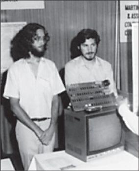
Daniel Kottke and Jobs with the Apple I at the Atlantic City computer fair, 1976
Дэниел Коттке и Джобс с Apple I на компьютерной ярмарке в Атлантик-Сити, 1976 год.
Machines of Loving Grace
«Машины любящей благодати».
In San Francisco and the Santa Clara Valley during the late 1960s, various cultural currents flowed together. There was the technology revolution that began with the growth of military contractors and soon included electronics firms, microchip makers, video game designers, and computer companies.
| cultural currents | культурные течения, влиятельные общественные направления |
| flowed together | сходились, соединялись |
| military contractors | компании, выполняющие военные заказы |
В Сан-Франциско и долине Санта-Клара в конце 1960-х сходились различные культурные течения. Там происходила технологическая революция, начавшаяся с роста компаний, выполнявших военные заказы, и вскоре охватившая фирмы электроники, производителей микросхем, разработчиков видеоигр и компьютерные компании.
There was a hacker subculture—filled with wireheads, phreakers, cyberpunks, hobbyists, and just plain geeks—that included engineers who didn’t conform to the HP mold and their kids who weren’t attuned to the wavelengths of the subdivisions. There were quasi-academic groups doing studies on the effects of LSD; participants included Doug Engelbart of the Augmentation Research Center in Palo Alto, who later helped develop the computer mouse and graphical user interfaces, and Ken Kesey, who celebrated the drug with music-and-light shows featuring a house band that became the Grateful Dead.
| wireheads | сленг: люди, одержимые электроникой |
| phreakers | энтузиасты взлома телефонных систем |
| conform to the HP mold | соответствовать образцу, принятому в HP |
| quasi-academic | полунаучный, похожий на академический |
| house band | постоянная музыкальная группа площадки |
Существовала хакерская субкультура, полная фанатов электроники, фрикеров, киберпанков, любителей и просто ботаников; в неё входили инженеры, не соответствовавшие образцу HP, и их дети, не настроенные на волну пригородов. Были и полу-научные группы, изучавшие воздействие ЛСД; среди участников находились Дуг Энгельбарт из Исследовательского центра дополнения возможностей в Пало-Альто, позднее помогавший создать компьютерную мышь и графические интерфейсы, а также Кен Кизи, прославлявший наркотик музыкально-световыми шоу с постоянной группой, ставшей Grateful Dead.
There was the hippie movement, born out of the Bay Area’s beat generation, and the rebellious political activists, born out of the Free Speech Movement at Berkeley. Overlaid on it all were various self-fulfillment movements pursuing paths to personal enlightenment: Zen and Hinduism, meditation and yoga, primal scream and sensory deprivation, Esalen and est.
| born out of | возникший из, выросший из |
| overlaid on | наложились поверх, добавились к |
| self-fulfillment | самореализация, раскрытие личности |
| sensory deprivation | сенсорная депривация, лишение внешних ощущений |
Было движение хиппи, выросшее из бит-поколения района залива, и бунтарские политические активисты, возникшие из Движения за свободу слова в Беркли. На всё это наложились различные движения самореализации, искавшие пути к личному просветлению: дзен и индуизм, медитация и йога, первичный крик и сенсорная депривация, Эсален и est.
This fusion of flower power and processor power, enlightenment and technology, was embodied by Steve Jobs as he meditated in the mornings, audited physics classes at Stanford, worked nights at Atari, and dreamed of starting his own business. “There was just something going on here,” he said, looking back at the time and place.
| flower power | идеалы движения хиппи |
| processor power | мощь вычислительных процессоров |
| audited physics classes | посещал занятия без формального зачисления |
| looking back | оглядываясь на прошлое |
Это слияние силы цветов и силы процессоров, просветления и технологий воплощалось в Стиве Джобсе: утром он медитировал, посещал курсы физики в Стэнфорде без формального зачисления, по ночам работал в Atari и мечтал открыть собственное дело. «Здесь просто происходило нечто особенное», — сказал он, оглядываясь на то время и место.
“The best music came from here—the Grateful Dead, Jefferson Airplane, Joan Baez, Janis Joplin—and so did the integrated circuit, and things like the Whole Earth Catalog.” Initially the technologists and the hippies did not interface well. Many in the counterculture saw computers as ominous and Orwellian, the province of the Pentagon and the power structure.
| Whole Earth Catalog | знаменитый каталог инструментов, идей и материалов контркультуры |
| interface well | хорошо взаимодействовать, находить общий язык |
| ominous and Orwellian | зловещие и напоминающие антиутопию Оруэлла |
| the power structure | правящие, властные структуры общества |
«Отсюда пришла лучшая музыка — Grateful Dead, Jefferson Airplane, Джоан Баэз, Дженис Джоплин, — а также интегральная схема и такие вещи, как Whole Earth Catalog». Поначалу технологи и хиппи плохо находили общий язык. Многие в контркультуре считали компьютеры зловещими, оруэлловскими инструментами Пентагона и властных структур.
In The Myth of the Machine, the historian Lewis Mumford warned that computers were sucking away our freedom and destroying “life-enhancing values.” An injunction on punch cards of the period—“Do not fold, spindle or mutilate”—became an ironic phrase of the antiwar Left.
| sucking away | высасывая, постепенно отнимая |
| injunction | предписание, предупреждающая надпись |
| punch cards | перфокарты |
| spindle | нанизывать на штырь; здесь часть стандартного запрета на перфокартах |
В книге «Миф машины» историк Льюис Мамфорд предупреждал, что компьютеры отнимают у нас свободу и разрушают «ценности, делающие жизнь лучше». Надпись на перфокартах того времени — «Не сгибать, не нанизывать на штырь и не повреждать» — стала иронической фразой антивоенных левых.
But by the early 1970s a shift was under way. “Computing went from being dismissed as a tool of bureaucratic control to being embraced as a symbol of individual expression and liberation,” John Markoff wrote in his study of the counterculture’s convergence with the computer industry, What the Dormouse Said.
| a shift was under way | перемена уже происходила |
| dismissed as | отвергалось, считалось лишь |
| embraced as | было принято и встречено как |
| convergence | сближение, соединение разных направлений |
Но к началу 1970-х уже происходила перемена. «Компьютерная техника перестала отвергаться как инструмент бюрократического контроля и стала восприниматься как символ личного самовыражения и освобождения», — писал Джон Маркофф в исследовании сближения контркультуры с компьютерной индустрией «Что сказала соня».
It was an ethos lyrically expressed in Richard Brautigan’s 1967 poem, “All Watched Over by Machines of Loving Grace,” and the cyberdelic fusion was certified when Timothy Leary declared that personal computers had become the new LSD and years later revised his famous mantra to proclaim, “Turn on, boot up, jack in.” The musician Bono, who later became a friend of Jobs, often discussed with him why those immersed in the rock-drugs-rebel counterculture of the Bay Area ended up helping to create the personal computer industry.
| ethos | дух, система общих ценностей |
| cyberdelic | сочетающий кибернетику и психоделику |
| mantra | часто повторяемая формула или лозунг |
| immersed in | глубоко погружённые в |
| ended up | в итоге оказались |
Этот дух лирически выразился в стихотворении Ричарда Бротигэна 1967 года «Все под защитой машин любящей благодати», а кибер-психоделическое слияние получило подтверждение, когда Тимоти Лири объявил персональные компьютеры новым ЛСД и годы спустя изменил свой знаменитый лозунг: «Включайся, загружайся, подключайся». Музыкант Боно, позднее ставший другом Джобса, часто обсуждал с ним, почему люди, погружённые в рок-, наркотическую и бунтарскую контркультуру района залива, в итоге помогли создать индустрию персональных компьютеров.
“The people who invented the twenty-first century were pot-smoking, sandal-wearing hippies from the West Coast like Steve, because they saw differently,” he said. “The hierarchical systems of the East Coast, England, Germany, and Japan do not encourage this different thinking. The sixties produced an anarchic mind-set that is great for imagining a world not yet in existence.”
| pot-smoking | курящие марихуану |
| hierarchical systems | системы с жёсткой иерархией |
| mind-set | образ мышления, установка |
| not yet in existence | ещё не существующий |
«Люди, изобретшие двадцать первый век, были курящими марихуану хиппи в сандалиях с Западного побережья, такими как Стив, потому что они видели иначе, — сказал он. — Иерархические системы Восточного побережья, Англии, Германии и Японии не поощряют такое иное мышление. Шестидесятые породили анархический образ мышления, прекрасно подходящий для воображения мира, которого ещё не существует».
One person who encouraged the denizens of the counterculture to make common cause with the hackers was Stewart Brand. A puckish visionary who generated fun and ideas over many decades, Brand was a participant in one of the early sixties LSD studies in Palo Alto.
| denizens | обитатели, постоянные участники среды |
| make common cause with | объединиться ради общей цели |
| puckish | озорной, шаловливо-изобретательный |
| visionary | человек с необычным видением будущего |
Одним из тех, кто побуждал обитателей контркультуры объединиться с хакерами, был Стюарт Бранд. Этот озорной провидец, десятилетиями порождавший веселье и идеи, участвовал в одном из ранних исследований ЛСД в Пало-Альто в шестидесятые.
He joined with his fellow subject Ken Kesey to produce the acid-celebrating Trips Festival, appeared in the opening scene of Tom Wolfe’s The Electric Kool-Aid Acid Test, and worked with Doug Engelbart to create a seminal sound-and-light presentation of new technologies called the Mother of All Demos. “Most of our generation scorned computers as the embodiment of centralized control,” Brand later noted.
| fellow subject | другой участник исследования |
| seminal | основополагающий, сильно повлиявший на дальнейшее развитие |
| scorned | презирало, отвергало с насмешкой |
| embodiment | воплощение |
Вместе с другим участником исследования Кеном Кизи он организовал прославлявший ЛСД фестиваль Trips, появился в начальной сцене книги Тома Вулфа «Электропрохладительный кислотный тест» и работал с Дугом Энгельбартом над основополагающей звуковой и световой презентацией новых технологий под названием «Мать всех демонстраций». «Большинство нашего поколения презирало компьютеры как воплощение централизованного контроля», — позже заметил Бранд.
“But a tiny contingent—later called hackers—embraced computers and set about transforming them into tools of liberation. That turned out to be the true royal road to the future.” Brand ran the Whole Earth Truck Store, which began as a roving truck that sold useful tools and educational materials, and in 1968 he decided to extend its reach with the Whole Earth Catalog.
| contingent | небольшая группа людей |
| set about | взялись за, начали делать |
| turned out to be | оказалось |
| roving | передвижной, странствующий |
| extend its reach | расширить охват и влияние |
«Но крошечная группа, позднее названная хакерами, приняла компьютеры и взялась превращать их в инструменты освобождения. Это оказалось настоящей царской дорогой в будущее». Бранд руководил передвижным магазином Whole Earth Truck Store, продававшим полезные инструменты и образовательные материалы, а в 1968 году решил расширить его охват с помощью Whole Earth Catalog.
On its first cover was the famous picture of Earth taken from space; its h2 was “Access to Tools.” The underlying philosophy was that technology could be our friend. Brand wrote on the first page of the first edition, “A realm of intimate, personal power is developing—power of the individual to conduct his own education, find his own inspiration, shape his own environment, and share his adventure with whoever is interested.
| h2 | в исходном тексте, вероятно, имеется в виду девиз или подзаголовок |
| underlying philosophy | лежащая в основе философия |
| realm | сфера, область |
| shape his own environment | формировать собственную среду |
На первой обложке была знаменитая фотография Земли из космоса; её подзаголовком было «Доступ к инструментам». Основная философия состояла в том, что технологии могут быть нашим другом. На первой странице первого выпуска Бранд писал: «Возникает сфера близкой, личной силы — силы человека самому вести своё образование, находить собственное вдохновение, формировать свою среду и делиться своим приключением с каждым, кому это интересно.
Tools that aid this process are sought and promoted by the Whole Earth Catalog.” Buckminster Fuller followed with a poem that began: “I see God in the instruments and mechanisms that work reliably.” Jobs became a Whole Earth fan.
| aid | помогать, способствовать |
| sought and promoted | отыскиваются и продвигаются |
| work reliably | работают надёжно |
Инструменты, помогающие этому процессу, ищет и продвигает Whole Earth Catalog». Далее Бакминстер Фуллер поместил стихотворение, начинавшееся словами: «Я вижу Бога в инструментах и механизмах, которые работают надёжно». Джобс стал поклонником Whole Earth.
He was particularly taken by the final issue, which came out in 1971, when he was still in high school, and he brought it with him to college and then to the All One Farm. “On the back cover of their final issue” Jobs recalled, “was a photograph of an early morning country road, the kind you might find yourself hitchhiking on if you were so adventurous.
| was particularly taken by | был особенно увлечён, захвачен |
| final issue | последний выпуск |
| hitchhiking | путешествуя автостопом |
Его особенно захватил последний выпуск, вышедший в 1971 году, когда он ещё учился в школе; он взял его с собой в колледж, а затем на ферму All One. «На задней обложке их последнего выпуска, — вспоминал Джобс, — была фотография просёлочной дороги ранним утром, такой, по которой вы могли бы ехать автостопом, будь вы достаточно склонны к приключениям.
Beneath it were the words: ‘Stay Hungry. Stay Foolish.’” Brand sees Jobs as one of the purest embodiments of the cultural mix that the catalog sought to celebrate. “Steve is right at the nexus of the counterculture and technology,” he said. “He got the notion of tools for human use.”
| Stay Hungry. Stay Foolish. | «Оставайтесь голодными. Оставайтесь безрассудными»; призыв сохранять стремление и смелость |
| embodiments | воплощение |
| nexus | узел, точка соединения |
| got the notion of | усвоил идею о |
Под ней были слова: «Оставайтесь голодными. Оставайтесь безрассудными». Бранд считает Джобса одним из самых чистых воплощений культурной смеси, которую каталог стремился прославить. «Стив находится прямо в точке соединения контркультуры и технологии, — сказал он. — Он усвоил идею, что инструменты должны служить человеку».
Brand’s catalog was published with the help of the Portola Institute, a foundation dedicated to the fledgling field of computer education. The foundation also helped launch the People’s Computer Company, which was not a company at all but a newsletter and organization with the motto “Computer power to the people.”
| fledgling | только зарождающийся, ещё молодой |
| dedicated to | посвящённый, направленный на развитие |
| launch | запустить, основать |
| motto | девиз |
Каталог Бранда издавался при помощи Института Портолы, фонда, посвящённого тогда ещё зарождавшейся сфере компьютерного образования. Фонд также помог запустить People’s Computer Company, которая вовсе не была компанией, а представляла собой бюллетень и организацию с девизом «Компьютерная мощь народу».
There were occasional Wednesday-night potluck dinners, and two of the regulars, Gordon French and Fred Moore, decided to create a more formal club where news about personal electronics could be shared. They were energized by the arrival of the January 1975 issue of Popular Mechanics, which had on its cover the first personal computer kit, the Altair.
| potluck dinners | общие ужины, на которые каждый приносит еду |
| regulars | постоянные посетители |
| computer kit | набор деталей для самостоятельной сборки компьютера |
Иногда по средам устраивали общие ужины, на которые каждый приносил еду, и двое постоянных участников, Гордон Френч и Фред Мур, решили создать более формальный клуб для обмена новостями о персональной электронике. Их воодушевил январский номер Popular Mechanics за 1975 год, на обложке которого был первый комплект для сборки персонального компьютера — Altair.
The Altair wasn’t much—just a $495 pile of parts that had to be soldered to a board that would then do little—but for hobbyists and hackers it heralded the dawn of a new era. Bill Gates and Paul Allen read the magazine and started working on a version of BASIC, an easy-to-use programming language, for the Altair.
| wasn’t much | не представлял собой ничего особенного |
| pile of parts | груда деталей |
| heralded | возвещал, предвещал |
Altair был не так уж впечатляющ: всего лишь кучей деталей за 495 долларов, которые требовалось припаять к плате, а затем она мало на что годилась; но для любителей и хакеров он возвещал рассвет новой эпохи. Билл Гейтс и Пол Аллен прочитали журнал и начали работать над версией BASIC — простого в использовании языка программирования — для Altair.
It also caught the attention of Jobs and Wozniak. And when an Altair kit arrived at the People’s Computer Company, it became the centerpiece for the first meeting of the club that French and Moore had decided to launch.
| caught the attention of | привлёк внимание |
| centerpiece | главный, центральный экспонат или предмет |
Он также привлёк внимание Джобса и Возняка. Когда комплект Altair прибыл в People’s Computer Company, он стал центральным предметом первой встречи клуба, который решили создать Френч и Мур.
The Homebrew Computer Club
Компьютерный клуб Homebrew.
The group became known as the Homebrew Computer Club, and it encapsulated the Whole Earth fusion between the counterculture and technology. It would become to the personal computer era something akin to what the Turk’s Head coffeehouse was to the age of Dr. Johnson, a place where ideas were exchanged and disseminated.
| encapsulated | воплощал в сжатом виде |
| akin to | подобный, сродни |
| disseminated | распространялись |
Группа стала известна как Компьютерный клуб Homebrew и воплощала соединение контркультуры и технологии, характерное для Whole Earth. Для эпохи персональных компьютеров он стал чем-то вроде кофейни Turk’s Head во времена доктора Джонсона — местом, где обменивались и распространяли идеи.
Moore wrote the flyer for the first meeting, held on March 5, 1975, in French’s Menlo Park garage: “Are you building your own computer? Terminal, TV, typewriter?” it asked. “If so, you might like to come to a gathering of people with like-minded interests.”
| flyer | листовка, объявление |
| like-minded | разделяющие схожие взгляды и интересы |
| gathering | собрание, встреча |
Мур написал листовку для первой встречи, состоявшейся 5 марта 1975 года в гараже Френча в Менло-Парке: «Вы строите собственный компьютер? Терминал, телевизор, печатную машинку?» — спрашивалось в ней. «Тогда вам, возможно, понравится встреча людей со схожими интересами».
Allen Baum spotted the flyer on the HP bulletin board and called Wozniak, who agreed to go with him. “That night turned out to be one of the most important nights of my life,” Wozniak recalled. About thirty other people showed up, spilling out of French’s open garage door, and they took turns describing their interests.
| spotted | заметил |
| turned out to be | оказалось |
| showed up | пришли, появились |
| took turns | выступали по очереди |
Аллен Баум заметил листовку на доске объявлений HP и позвонил Возняку, который согласился пойти с ним. «Тот вечер оказался одним из самых важных вечеров моей жизни», — вспоминал Возняк. Пришло ещё около тридцати человек, заполнивших пространство у открытой двери гаража Френча, и они по очереди рассказывали о своих интересах.
Wozniak, who later admitted to being extremely nervous, said he liked “video games, pay movies for hotels, scientific calculator design, and TV terminal design,” according to the minutes prepared by Moore. There was a demonstration of the new Altair, but more important to Wozniak was seeing the specification sheet for a microprocessor.
| minutes | протокол собрания |
| pay movies | платные фильмы; здесь — система фильмов для гостиниц |
| specification sheet | лист технических характеристик |
Согласно протоколу, составленному Муром, Возняк, позднее признавшийся, что был чрезвычайно нервным, сказал, что ему нравятся «видеоигры, платные фильмы для гостиниц, проектирование научных калькуляторов и телевизионных терминалов». Прошла демонстрация нового Altair, но для Возняка важнее было увидеть лист технических характеристик микропроцессора.
As he thought about the microprocessor—a chip that had an entire central processing unit on it—he had an insight. He had been designing a terminal, with a keyboard and monitor, that would connect to a distant minicomputer. Using a microprocessor, he could put some of the capacity of the minicomputer inside the terminal itself, so it could become a small stand-alone computer on a desktop.
| insight | важное внезапное понимание, озарение |
| central processing unit | центральный процессор |
| stand-alone | автономный, работающий самостоятельно |
Размышляя о микропроцессоре — микросхеме, содержавшей целый центральный процессор, — он испытал озарение. Он проектировал терминал с клавиатурой и монитором, который подключался бы к удалённому мини-компьютеру. С помощью микропроцессора он мог поместить часть возможностей мини-компьютера внутрь самого терминала, чтобы тот стал небольшим автономным настольным компьютером.
It was an enduring idea: keyboard, screen, and computer all in one integrated personal package. “This whole vision of a personal computer just popped into my head,” he said. “That night, I started to sketch out on paper what would later become known as the Apple I.”
| enduring | долговечный, сохраняющий значение |
| popped into my head | внезапно пришло мне в голову |
| sketch out | набросать, наметить на бумаге |
Это была долговечная идея: клавиатура, экран и компьютер в одном цельном персональном устройстве. «Всё это видение персонального компьютера просто внезапно пришло мне в голову, — сказал он. — В ту ночь я начал набрасывать на бумаге то, что позднее стало известно как Apple I».
At first he planned to use the same microprocessor that was in the Altair, an Intel 8080. But each of those “cost almost more than my monthly rent,” so he looked for an alternative. He found one in the Motorola 6800, which a friend at HP was able to get for $40 apiece.
| monthly rent | ежемесячная плата за жильё |
| alternative | альтернатива, замена |
| apiece | за штуку |
Сначала он планировал использовать тот же микропроцессор, что стоял в Altair, Intel 8080. Но каждый такой «стоил почти больше моей месячной квартирной платы», поэтому он стал искать альтернативу. Он нашёл её в Motorola 6800, который знакомый из HP мог достать по 40 долларов за штуку.
Then he discovered a chip made by MOS Technologies that was electronically the same but cost only $20. It would make his machine affordable, but it would carry a long-term cost. Intel’s chips ended up becoming the industry standard, which would haunt Apple when its computers were incompatible with it.
| affordable | доступный по цене |
| ended up becoming | в итоге стали |
| industry standard | отраслевой стандарт |
| haunt | преследовать как долгосрочная проблема |
Затем он обнаружил микросхему MOS Technologies, электрически такую же, но стоившую всего 20 долларов. Она делала его машину доступной по цене, но несла долгосрочные издержки. Микросхемы Intel в итоге стали отраслевым стандартом, и это стало преследовать Apple, когда её компьютеры оказались с ним несовместимы.
After work each day, Wozniak would go home for a TV dinner and then return to HP to moonlight on his computer. He spread out the parts in his cubicle, figured out their placement, and soldered them onto his motherboard. Then he began writing the software that would get the microprocessor to display images on the screen.
| TV dinner | готовый замороженный ужин, который разогревают дома |
| moonlight | подрабатывать вне основной работы; здесь — тайно работать над своим проектом |
| spread out | разложил |
| motherboard | материнская плата |
Каждый день после работы Возняк шёл домой на готовый ужин, а затем возвращался в HP, чтобы по ночам заниматься своим компьютером. Он раскладывал детали в своём офисном отсеке, определял их расположение и припаивал к материнской плате. Потом он начал писать программное обеспечение, которое заставило бы микропроцессор выводить изображения на экран.
Because he could not afford to pay for computer time, he wrote the code by hand. After a couple of months he was ready to test it. “I typed a few keys on the keyboard and I was shocked! The letters were displayed on the screen.”
| computer time | оплачиваемое время работы на компьютере; тогда это был дефицитный ресурс |
| by hand | вручную |
| were displayed | появились на экране; страдательный залог |
Поскольку он не мог позволить себе платить за компьютерное время, он писал код вручную. Через пару месяцев он был готов его проверить. «Я нажал несколько клавиш на клавиатуре и был потрясён! Буквы появились на экране».
It was Sunday, June 29, 1975, a milestone for the personal computer. “It was the first time in history,” Wozniak later said, “anyone had typed a character on a keyboard and seen it show up on their own computer’s screen right in front of them.” Jobs was impressed.
| milestone | важная веха |
| had typed a character on a keyboard and seen | напечатал символ на клавиатуре и увидел; Past Perfect указывает на опыт, впервые полученный к тому моменту |
| show up | появиться |
Это было воскресенье, 29 июня 1975 года, важная веха для персонального компьютера. «Впервые в истории, — позже сказал Возняк, — кто-то напечатал символ на клавиатуре и увидел, как он появился на экране его собственного компьютера прямо перед ним». Джобс был впечатлён.
He peppered Wozniak with questions: Could the computer ever be networked? Was it possible to add a disk for memory storage? He also began to help Woz get components. Particularly important were the dynamic random-access memory chips.
| peppered Wozniak with questions | засыпал вопросами |
| be networked | быть объединённым в сеть |
| components | компоненты, детали |
| dynamic random-access memory | динамическая память с произвольным доступом |
Он засыпал Возняка вопросами: сможет ли компьютер когда-нибудь работать в сети? Возможно ли добавить диск для хранения данных? Он также начал помогать Возу доставать компоненты. Особенно важны были микросхемы динамической памяти с произвольным доступом.
Jobs made a few calls and was able to score some from Intel for free. “Steve is just that sort of person,” said Wozniak. “I mean, he knew how to talk to a sales representative. I could never have done that. I’m too shy.”
| score | раздобыть, получить удачно |
| sales representative | торговый представитель |
| that sort of person | человек такого склада |
Джобс сделал несколько звонков и сумел бесплатно раздобыть несколько микросхем у Intel. «Стив просто человек такого склада, — сказал Возняк. — То есть он умел разговаривать с торговым представителем. Я бы никогда не смог так сделать. Я слишком застенчив».
Jobs began to accompany Wozniak to Homebrew meetings, carrying the TV monitor and helping to set things up. The meetings now attracted more than one hundred enthusiasts and had been moved to the auditorium of the Stanford Linear Accelerator Center. Presiding with a pointer and a free-form manner was Lee Felsenstein, another embodiment of the merger between the world of computing and the counterculture.
| accompany | сопровождать |
| set things up | подготавливать, устанавливать оборудование |
| presiding | ведя собрание |
| free-form manner | неформальная, свободная манера |
Джобс начал сопровождать Возняка на встречи Homebrew, неся телевизионный монитор и помогая устанавливать оборудование. Теперь встречи привлекали более ста энтузиастов и были перенесены в аудиторию Стэнфордского центра линейных ускорителей. Собраниями в свободной, неформальной манере руководил Ли Фельзенштейн — ещё одно воплощение слияния мира вычислений и контркультуры.
He was an engineering school dropout, a participant in the Free Speech Movement, and an antiwar activist. He had written for the alternative newspaper Berkeley Barb and then gone back to being a computer engineer. Woz was usually too shy to talk in the meetings, but people would gather around his machine afterward, and he would proudly show off his progress.
| dropout | человек, бросивший учёбу |
| alternative newspaper | независимая, контркультурная газета |
| show off | с гордостью демонстрировать |
Он бросил инженерную школу, участвовал в Движении за свободу слова и был антивоенным активистом. Он писал для независимой газеты Berkeley Barb, а затем вновь стал компьютерным инженером. Воз обычно был слишком застенчив, чтобы выступать на встречах, но после них люди собирались вокруг его машины, и он с гордостью показывал свои успехи.
Moore had tried to instill in the Homebrew an ethos of swapping and sharing rather than commerce. “The theme of the club,” Woz said, “was ‘Give to help others.’” It was an expression of the hacker ethic that information should be free and all authority mistrusted.
| instill | внушить, привить |
| swapping | обмен вещами или информацией |
| rather than | вместо того чтобы |
| hacker ethic | хакерская этика: ценность свободного доступа к знаниям |
Мур пытался привить Homebrew дух обмена и совместного использования, а не торговли. «Тема клуба, — сказал Воз, — была: “Давай, чтобы помогать другим”». Это выражало хакерскую этику, по которой информация должна быть свободной, а любой власти следует не доверять.
“I designed the Apple I because I wanted to give it away for free to other people,” said Wozniak. This was not an outlook that Bill Gates embraced. After he and Paul Allen had completed their BASIC interpreter for the Altair, Gates was appalled that members of the Homebrew were making copies of it and sharing it without paying him.
| give it away | отдать бесплатно |
| outlook | взгляд, подход к жизни |
| embraced | разделял, принимал |
| appalled | потрясён, возмущён |
| interpreter | интерпретатор, программа для выполнения кода |
«Я разработал Apple I, потому что хотел бесплатно отдать его другим людям», — сказал Возняк. Билл Гейтс не разделял такого взгляда. После того как он и Пол Аллен закончили свой интерпретатор BASIC для Altair, Гейтс был возмущён тем, что участники Homebrew делали его копии и раздавали, не платя ему.
So he wrote what would become a famous letter to the club: “As the majority of hobbyists must be aware, most of you steal your software. Is this fair? . . . One thing you do is prevent good software from being written. Who can afford to do professional work for nothing? . . . I would appreciate letters from anyone who wants to pay up.”
| must be aware | должно быть известно |
| prevent good software from being written | мешаете тому, чтобы создавалось |
| for nothing | даром, без оплаты |
| pay up | выплатить причитающуюся сумму |
Поэтому он написал клубу письмо, ставшее знаменитым: «Как должно быть известно большинству любителей, большинство из вас крадёт программное обеспечение. Разве это честно? ... Одно из последствий ваших действий — хорошие программы перестают создаваться. Кто может позволить себе выполнять профессиональную работу даром? ... Я был бы признателен за письма от любого, кто хочет заплатить».
Steve Jobs, similarly, did not embrace the notion that Wozniak’s creations, be it a Blue Box or a computer, wanted to be free. So he convinced Wozniak to stop giving away copies of his schematics. Most people didn’t have time to build it themselves anyway, Jobs argued.
| be it | будь то |
| the notion that | идею о том, что |
| schematics | схемы, чертежи |
| anyway | всё равно |
Стив Джобс, подобно Гейтсу, не разделял представление, что творения Возняка, будь то «Голубая коробка» или компьютер, хотят быть свободными. Поэтому он убедил Возняка перестать раздавать копии его схем. В конце концов, утверждал Джобс, у большинства людей всё равно не было времени собирать их самостоятельно.
“Why don’t we build and sell printed circuit boards to them?” It was an example of their symbiosis. “Every time I’d design something great, Steve would find a way to make money for us,” said Wozniak. Wozniak admitted that he would have never thought of doing that on his own.
| printed circuit boards | печатные платы |
| symbiosis | взаимовыгодное сотрудничество |
| on his own | самостоятельно |
«Почему бы нам не собирать и не продавать им печатные платы?» Это было примером их взаимовыгодного сотрудничества. «Каждый раз, когда я проектировал что-то замечательное, Стив находил способ заработать на этом для нас», — сказал Возняк. Возняк признал, что сам никогда бы до такого не додумался.
“It never crossed my mind to sell computers. It was Steve who said, ‘Let’s hold them in the air and sell a few.’” Jobs worked out a plan to pay a guy he knew at Atari to draw the circuit boards and then print up fifty or so.
| crossed my mind | пришло мне в голову |
| worked out a plan | разработал план |
| print up | изготовить, напечатать партию |
«Мне никогда не приходило в голову продавать компьютеры. Это Стив сказал: “Давайте соберём их и продадим несколько”». Джобс разработал план: заплатить знакомому из Atari за чертежи печатных плат, а затем изготовить примерно пятьдесят штук.
That would cost about $1,000, plus the fee to the designer. They could sell them for $40 apiece and perhaps clear a profit of $700. Wozniak was dubious that they could sell them all. “I didn’t see how we would make our money back,” he recalled.
| fee | гонорар, плата за работу |
| clear a profit | получить чистую прибыль |
| dubious | сомневающийся |
| make our money back | вернуть вложенные деньги, окупиться |
Это стоило бы около тысячи долларов плюс гонорар дизайнеру. Они могли продавать платы по 40 долларов за штуку и, возможно, получить чистую прибыль в 700 долларов. Возняк сомневался, что им удастся продать всё. «Я не понимал, как мы вернём свои деньги», — вспоминал он.
He was already in trouble with his landlord for bouncing checks and now had to pay each month in cash. Jobs knew how to appeal to Wozniak. He didn’t argue that they were sure to make money, but instead that they would have a fun adventure.
| landlord | арендодатель, хозяин жилья |
| bouncing checks | выдавать чеки без достаточных средств на счёте |
| appeal to | найти подход, обратиться к чувствам человека |
У него уже были неприятности с арендодателем из-за чеков без покрытия, и теперь ему приходилось ежемесячно платить наличными. Джобс знал, как найти подход к Возняку. Он не утверждал, что они наверняка заработают деньги, а говорил, что их ждёт весёлое приключение.
“Even if we lose our money, we’ll have a company,” said Jobs as they were driving in his Volkswagen bus. “For once in our lives, we’ll have a company.” This was enticing to Wozniak, even more than any prospect of getting rich.
| even if | даже если |
| for once in our lives | хотя бы раз в жизни |
| enticing | привлекательный, заманчивый |
| prospect | перспектива |
«Даже если мы потеряем деньги, у нас будет компания», — сказал Джобс, когда они ехали в его микроавтобусе Volkswagen. «Хотя бы раз в жизни у нас будет компания». Это было заманчиво для Возняка даже больше, чем перспектива разбогатеть.
He recalled, “I was excited to think about us like that. To be two best friends starting a company. Wow. I knew right then that I’d do it. How could I not?” In order to raise the money they needed, Wozniak sold his HP 65 calculator for $500, though the buyer ended up stiffing him for half of that.
| right then | прямо тогда, в тот самый момент |
| raise the money | собрать необходимые деньги |
| stiffing him | не заплатив ему, обманув с оплатой |
Он вспоминал: «Мне было радостно думать о нас так: мы — двое лучших друзей, которые начинают компанию. Вау. Я сразу понял, что сделаю это. Как я мог не сделать?» Чтобы собрать нужные деньги, Возняк продал свой калькулятор HP 65 за 500 долларов, хотя покупатель в итоге не заплатил ему половину суммы.
For his part, Jobs sold his Volkswagen bus for $1,500. But the person who bought it came to find him two weeks later and said the engine had broken down, and Jobs agreed to pay for half of the repairs. Despite these little setbacks, they now had, with their own small savings thrown in, about $1,300 in working capital, the design for a product, and a plan.
| for his part | со своей стороны |
| broken down | сломался |
| setbacks | неудачи, препятствия |
| working capital | оборотный капитал, деньги для текущей работы |
| thrown in | добавлены к общей сумме |
Со своей стороны Джобс продал микроавтобус Volkswagen за 1500 долларов. Но через две недели покупатель разыскал его и сказал, что двигатель сломался, и Джобс согласился оплатить половину ремонта. Несмотря на эти небольшие неудачи, у них теперь было около 1300 долларов оборотного капитала, включая их собственные небольшие сбережения, проект продукта и план.
They would start their own computer company.
Они собирались начать собственную компьютерную компанию.
Apple Is Born
Рождение Apple.
Now that they had decided to start a business, they needed a name. Jobs had gone for another visit to the All One Farm, where he had been pruning the Gravenstein apple trees, and Wozniak picked him up at the airport. On the ride down to Los Altos, they bandied around options.
| pruning | подрезая ветви |
| picked him up | заехал за ним на машине |
| bandied around | перебирали, обсуждали разные варианты |
Теперь, когда они решили начать бизнес, им требовалось название. Джобс снова ездил на ферму All One, где подрезал яблони сорта Гравенштейн, и Возняк забрал его из аэропорта. По дороге в Лос-Альтос они перебирали разные варианты.
They considered some typical tech words, such as Matrix, and some neologisms, such as Executek, and some straightforward boring names, like Personal Computers Inc. The deadline for deciding was the next day, when Jobs wanted to start filing the papers. Finally Jobs proposed Apple Computer.
| neologisms | новые, специально придуманные слова |
| straightforward | простой, без затей |
| filing the papers | подавать официальные документы на регистрацию |
| proposed | предложил |
Они рассматривали типичные технические слова, например Matrix, неологизмы вроде Executek и простые скучные названия, такие как Personal Computers Inc. Решить нужно было на следующий день, когда Джобс хотел начать подавать документы. Наконец Джобс предложил Apple Computer.
“I was on one of my fruitarian diets,” he explained. “I had just come back from the apple farm. It sounded fun, spirited, and not intimidating. Apple took the edge off the word ‘computer.’ Plus, it would get us ahead of Atari in the phone book.”
| fruitarian diets | фрукторианская диета, питание преимущественно фруктами |
| spirited | живой, бодрый, энергичный |
| took the edge off | смягчало, делало менее резким и пугающим |
| phone book | телефонный справочник |
«Я сидел на одной из своих фрукторианских диет, — объяснил он. — Я только что вернулся с яблочной фермы. Это звучало весело, живо и не пугающе. Название Apple смягчало звучание слова “computer”. Кроме того, в телефонном справочнике мы оказались бы раньше Atari».
He told Wozniak that if a better name did not hit them by the next afternoon, they would just stick with Apple. And they did. Apple. It was a smart choice.
| hit them | придёт им в голову |
| stick with | оставить, придерживаться выбранного варианта |
Он сказал Возняку, что, если к следующему дню им не придёт в голову лучшее название, они просто оставят Apple. Так они и сделали. Apple. Это был умный выбор.
The word instantly signaled friendliness and simplicity. It managed to be both slightly off-beat and as normal as a slice of pie. There was a whiff of counterculture, back-to-nature earthiness to it, yet nothing could be more American.
| signaled | сразу передавало, внушало |
| off-beat | необычный, не совсем стандартный |
| a whiff of | лёгкий оттенок, намёк на |
| earthiness | естественность, близость к земле и природе |
Слово сразу передавало дружелюбие и простоту. Оно умудрялось быть одновременно слегка необычным и таким же привычным, как кусок пирога. В нём чувствовался лёгкий оттенок контркультуры и возвращения к природе, но ничто не могло быть более американским.
And the two words together—Apple Computer—provided an amusing disjuncture. “It doesn’t quite make sense,” said Mike Markkula, who soon thereafter became the first chairman of the new company. “So it forces your brain to dwell on it. Apple and computers, that doesn’t go together! So it helped us grow brand awareness.”
| disjuncture | неожиданное несоответствие, разрыв между понятиями |
| thereafter | вскоре после этого |
| dwell on | задерживаться мыслью на чём-либо |
| brand awareness | узнаваемость бренда |
А два слова вместе — Apple Computer — создавали забавное несоответствие. «В этом есть что-то неожиданное, — сказал Майк Марккула, вскоре ставший первым председателем новой компании. — Поэтому мозг вынужден задержаться на этом. Яблоко и компьютеры не сочетаются! Так это помогло нам развить узнаваемость бренда».
Wozniak was not yet ready to commit full-time. He was an HP company man at heart, or so he thought, and he wanted to keep his day job there. Jobs realized he needed an ally to help corral Wozniak and adjudicate if there was a disagreement.
| commit full-time | полностью посвятить себя работе |
| company man | преданный сотрудник компании |
| at heart | в глубине души |
| corral | направить, удержать в рамках |
| adjudicate | разрешить спор как судья или посредник |
Возняк ещё не был готов полностью посвятить себя делу. В глубине души он считал себя преданным сотрудником HP и хотел сохранить там дневную работу. Джобс понял, что ему нужен союзник, который поможет направить Возняка и рассудит их в случае разногласий.
So he enlisted his friend Ron Wayne, the middle-aged engineer at Atari who had once started a slot machine company. Wayne knew that it would not be easy to make Wozniak quit HP, nor was it necessary right away. Instead the key was to convince him that his computer designs would be owned by the Apple partnership.
| enlisted | привлёк на свою сторону |
| slot machine | игровой автомат |
| nor was it necessary | и это также не было необходимо |
| the key was to | главное было в том, чтобы |
Поэтому он привлёк своего друга Рона Уэйна, инженера Atari средних лет, который когда-то основал компанию игровых автоматов. Уэйн понимал, что заставить Возняка уйти из HP будет нелегко, да и сразу это не требовалось. Главное было убедить его, что права на его компьютерные разработки будут принадлежать партнёрству Apple.
“Woz had a parental attitude toward the circuits he developed, and he wanted to be able to use them in other applications or let HP use them,” Wayne said. “Jobs and I realized that these circuits would be the core of Apple. We spent two hours in a roundtable discussion at my apartment, and I was able to get Woz to accept this.”
| parental attitude toward | отношение как к собственному ребёнку, сильная опека |
| applications | применения, области использования |
| core | ядро, основа |
| roundtable discussion | обсуждение за круглым столом |
«Воз относился к разработанным им схемам по-родительски и хотел иметь возможность использовать их в других применениях или позволить HP пользоваться ими, — сказал Уэйн. — Джобс и я поняли, что эти схемы станут ядром Apple. Мы два часа обсуждали всё за круглым столом у меня в квартире, и я сумел добиться, чтобы Воз это принял».
His argument was that a great engineer would be remembered only if he teamed with a great marketer, and this required him to commit his designs to the partnership. Jobs was so impressed and grateful that he offered Wayne a 10% stake in the new partnership, turning him into a tie-breaker if Jobs and Wozniak disagreed over an issue.
| teamed with | объединился в команду с |
| commit his designs to | передать, закрепить за |
| stake | доля участия в компании |
| tie-breaker | человек, решающий спор при равенстве голосов |
Его довод состоял в том, что великого инженера будут помнить только в том случае, если он объединится с великим маркетологом, а для этого нужно передать свои разработки партнёрству. Джобс был так впечатлён и благодарен, что предложил Уэйну 10-процентную долю в новом партнёрстве, тем самым сделав его решающим голосом, если Джобс и Возняк разойдутся во мнениях.
“They were very different, but they made a powerful team,” said Wayne. Jobs at times seemed to be driven by demons, while Woz seemed a naïf who was toyed with by angels. Jobs had a bravado that helped him get things done, occasionally by manipulating people.
| driven by demons | образно: словно подгоняемый внутренними демонами |
| naïf | наивный, неопытный человек |
| toyed with | играли с ним, обращались как с игрушкой |
| bravado | показная смелость и уверенность |
«Они были очень разными, но составляли сильную команду», — сказал Уэйн. Джобс порой казался движимым демонами, тогда как Воз выглядел наивным человеком, с которым играли ангелы. У Джобса была показная уверенность, помогавшая ему добиваться своего, иногда манипулируя людьми.
He could be charismatic, even mesmerizing, but also cold and brutal. Wozniak, in contrast, was shy and socially awkward, which made him seem childishly sweet. “Woz is very bright in some areas, but he’s almost like a savant, since he was so stunted when it came to dealing with people he didn’t know,” said Jobs.
| mesmerizing | завораживающий |
| in contrast | в отличие от этого |
| savant | человек с выдающимися способностями в узкой области |
| stunted | неразвитый, ограниченный |
| when it came to | когда дело доходило до |
Он мог быть харизматичным, даже завораживающим, но также холодным и жестоким. Возняк, напротив, был застенчив и неловок в общении, отчего казался по-детски милым. «Воз очень одарён в некоторых областях, но он почти как савант, поскольку так плохо умел общаться с незнакомыми людьми», — сказал Джобс.
“We were a good pair.” It helped that Jobs was awed by Wozniak’s engineering wizardry, and Wozniak was awed by Jobs’s business drive. “I never wanted to deal with people and step on toes, but Steve could call up people he didn’t know and make them do things,” Wozniak recalled.
| was awed by | испытывали глубокое восхищение перед |
| engineering wizardry | виртуозное инженерное мастерство |
| business drive | деловая напористость |
| step on toes | задевать чужие интересы, наживать недовольство |
«Мы были хорошей парой». Помогало то, что Джобс восхищался инженерной виртуозностью Возняка, а Возняк — деловой напористостью Джобса. «Я никогда не хотел иметь дело с людьми и задевать их интересы, но Стив мог позвонить незнакомым людям и заставить их что-то сделать», — вспоминал Возняк.
“He could be rough on people he didn’t think were smart, but he never treated me rudely, even in later years when maybe I couldn’t answer a question as well as he wanted.” Even after Wozniak became convinced that his new computer design should become the property of the Apple partnership, he felt that he had to offer it first to HP, since he was working there.
| be rough on | обращаться жёстко с |
| treated me rudely | обращался со мной грубо |
| became convinced | убедился |
| property of | собственность, принадлежащая |
«Он мог быть жёстким с людьми, которых не считал умными, но никогда не обращался грубо со мной, даже в поздние годы, когда, возможно, я не мог ответить на вопрос так хорошо, как ему хотелось». Даже убедившись, что его новый проект компьютера должен стать собственностью партнёрства Apple, Возняк считал, что сначала обязан предложить его HP, поскольку работал там.
“I believed it was my duty to tell HP about what I had designed while working for them. That was the right thing and the ethical thing.” So he demonstrated it to his managers in the spring of 1976. The senior executive at the meeting was impressed, and seemed torn, but he finally said it was not something that HP could develop.
| my duty | мой долг, обязанность |
| ethical | этичный, соответствующий моральным принципам |
| senior executive | высокопоставленный руководитель |
| torn | разрывающийся между разными решениями |
«Я считал своим долгом рассказать HP о том, что разработал, работая в HP. Так было правильно и этично». Поэтому весной 1976 года он продемонстрировал устройство своим руководителям. Старший руководитель на встрече был впечатлён и, казалось, колебался, но в конце концов сказал, что HP не может развивать такой проект.
It was a hobbyist product, at least for now, and didn’t fit into the company’s high-quality market segments. “I was disappointed,” Wozniak recalled, “but now I was free to enter into the Apple partnership.” On April 1, 1976, Jobs and Wozniak went to Wayne’s apartment in Mountain View to draw up the partnership agreement.
| at least for now | по крайней мере пока |
| fit into | вписываться в |
| enter into | вступить в |
| draw up | составить официальный документ |
Это был продукт для любителей, по крайней мере пока, и он не вписывался в высококачественные сегменты рынка компании. «Я был разочарован, — вспоминал Возняк, — но теперь был свободен вступить в партнёрство Apple». 1 апреля 1976 года Джобс и Возняк пришли в квартиру Уэйна в Маунтин-Вью, чтобы составить партнёрское соглашение.
Wayne said he had some experience “writing in legalese,” so he composed the three-page document himself. His “legalese” got the better of him. Paragraphs began with various flourishes: “Be it noted herewith . . . Be it further noted herewith . . . Now the refore [sic], in consideration of the respective assignments of interests . . .”
| legalese | перегруженный канцелярский язык юридических документов |
| got the better of him | взяло над ним верх; он чрезмерно увлёкся |
| flourishes | вычурные обороты |
| sic | «так в оригинале»; отмечает ошибку, сохранённую в цитате |
Уэйн сказал, что имеет некоторый опыт «юридического канцелярита», поэтому сам составил трёхстраничный документ. Этот канцелярит взял над ним верх. Абзацы начинались вычурными оборотами: «Да будет отмечено настоящим... Да будет далее отмечено настоящим... Итак, следовательно [так в оригинале], принимая во внимание соответствующие передачи долей интереса...»
But the division of shares and profits was clear—45%-45%-10%—and it was stipulated that any expenditures of more than $100 would require agreement of at least two of the partners. Also, the responsibilities were spelled out. “Wozniak shall assume both general and major responsibility for the conduct of Electrical Engineering; Jobs shall assume general responsibility for Electrical Engineering and Marketing, and Wayne shall assume major responsibility for Mechanical Engineering and Documentation.”
| was stipulated | было оговорено официально |
| expenditures | расходы |
| spelled out | чётко и подробно изложены |
| shall assume | должен принять на себя; официальный юридический оборот |
Но распределение долей и прибыли было ясным — 45%-45%-10%, — и было оговорено, что любые расходы свыше 100 долларов требуют согласия хотя бы двух партнёров. Были также чётко изложены обязанности. «Возняк принимает на себя общую и главную ответственность за электротехническое направление; Джобс принимает на себя общую ответственность за электротехнику и маркетинг, а Уэйн принимает на себя главную ответственность за машиностроение и документацию».
Jobs signed in lowercase script, Wozniak in careful cursive, and Wayne in an illegible squiggle. Wayne then got cold feet. As Jobs started planning to borrow and spend more money, he recalled the failure of his own company. He didn’t want to go through that again.
| lowercase script | подпись строчными буквами |
| cursive | курсивное, связное письмо |
| illegible squiggle | неразборчивая закорючка |
| got cold feet | испугался в последний момент, потерял решимость |
| go through that again | снова пережить это |
Джобс расписался строчными буквами, Возняк — аккуратным связным почерком, а Уэйн — неразборчивой закорючкой. Затем Уэйн испугался в последний момент. Когда Джобс стал планировать новые займы и траты, он вспомнил провал своей прежней компании. Он не хотел пережить это снова.
Jobs and Wozniak had no personal assets, but Wayne (who worried about a global financial Armageddon) kept gold coins hidden in his mattress. Because they had structured Apple as a simple partnership rather than a corporation, the partners would be personally liable for the debts, and Wayne was afraid potential creditors would go after him.
| personal assets | личное имущество и накопления |
| structured Apple as | оформили как |
| liable for | несущий юридическую ответственность за |
| creditors | кредиторы, те, кому должны деньги |
| go after | начать преследовать с требованием денег |
У Джобса и Возняка не было личного имущества, но Уэйн, опасавшийся мирового финансового Армагеддона, прятал золотые монеты в матрасе. Поскольку они оформили Apple как простое партнёрство, а не корпорацию, партнёры лично отвечали бы за долги, и Уэйн боялся, что потенциальные кредиторы начнут требовать деньги с него.
So he returned to the Santa Clara County office just eleven days later with a “statement of withdrawal” and an amendment to the partnership agreement. “By virtue of a re-assessment of understandings by and between all parties,” it began, “Wayne shall hereinafter cease to function in the status of ‘Partner.’”
| statement of withdrawal | заявление о выходе из партнёрства |
| amendment | поправка к документу |
| by virtue of | в силу, на основании |
| re-assessment | повторная оценка, пересмотр |
| hereinafter | далее в этом документе |
| cease to function | прекратить выполнять роль |
Поэтому всего через одиннадцать дней он вернулся в офис округа Санта-Клара с «заявлением о выходе» и поправкой к партнёрскому соглашению. «В силу пересмотра взаимных договорённостей между всеми сторонами, — начинался документ, — Уэйн далее прекращает действовать в статусе “Партнёра”».
It noted that in payment for his 10% of the company, he received $800, and shortly afterward $1,500 more. Had he stayed on and kept his 10% stake, at the end of 2010 it would have been worth approximately $2.6 billion. Instead he was then living alone in a small home in Pahrump, Nevada, where he played the penny slot machines and lived off his social security check.
| shortly afterward | вскоре после этого |
| had he stayed on | останься он; условная инверсия вместо if he had stayed on |
| stake | доля в компании |
| lived off | жил на средства от |
| social security check | выплата социального обеспечения |
В документе отмечалось, что в оплату за его 10% компании он получил 800 долларов, а вскоре ещё 1500. Останься он и сохрани свою десятипроцентную долю, к концу 2010 года она стоила бы примерно 2,6 миллиарда долларов. Вместо этого он тогда жил один в маленьком доме в Парампе, штат Невада, играл в однопенсовые игровые автоматы и жил на выплату социального обеспечения.
He later claimed he had no regrets. “I made the best decision for me at the time. Both of them were real whirlwinds, and I knew my stomach and it wasn’t ready for such a ride.” Jobs and Wozniak took the stage together for a presentation to the Homebrew Computer Club shortly after they signed Apple into existence.
| no regrets | ни о чём не сожалел |
| whirlwinds | образно: люди с неистовой, захватывающей энергией |
| knew my stomach | понимал собственную способность переносить стресс |
| signed Apple into existence | юридически создали подписью |
Позднее он утверждал, что ни о чём не жалеет. «Тогда я принял лучшее для себя решение. Оба они были настоящими вихрями, и я знал себя: мой желудок не был готов к такой поездке». Вскоре после того, как они юридически создали Apple, Джобс и Возняк вместе вышли на сцену с презентацией для Компьютерного клуба Homebrew.
Wozniak held up one of their newly produced circuit boards and described the microprocessor, the eight kilobytes of memory, and the version of BASIC he had written. He also emphasized what he called the main thing: “a human-typable keyboard instead of a stupid, cryptic front panel with a bunch of lights and switches.”
| held up | поднял, показал аудитории |
| emphasized | подчеркнул, выделил как важное |
| human-typable | удобная для ввода человеком |
| cryptic | непонятный, загадочный |
| front panel | передняя панель устройства |
Возняк поднял одну из их недавно изготовленных печатных плат и описал микропроцессор, восемь килобайт памяти и написанную им версию BASIC. Он также подчеркнул то, что назвал главным: «клавиатуру, на которой может печатать человек, вместо глупой, непонятной передней панели с кучей лампочек и переключателей».
Then it was Jobs’s turn. He pointed out that the Apple, unlike the Altair, had all the essential components built in. Then he challenged them with a question: How much would people be willing to pay for such a wonderful machine? He was trying to get them to see the amazing value of the Apple.
| it was Jobs’s turn | настала очередь |
| pointed out | указал, отметил |
| built in | встроены |
| be willing to pay | быть готовыми заплатить |
Затем настала очередь Джобса. Он отметил, что Apple, в отличие от Altair, имеет все основные компоненты встроенными. Потом он задал им вопрос: сколько люди готовы будут заплатить за такую чудесную машину? Он пытался показать им поразительную ценность Apple.
It was a rhetorical flourish he would use at product presentations over the ensuing decades. The audience was not very impressed. The Apple had a cut-rate microprocessor, not the Intel 8080. But one important person stayed behind to hear more.
| rhetorical flourish | эффектный ораторский приём |
| ensuing | последующий |
| cut-rate | дешёвый, низшего класса |
| stayed behind | остался после остальных |
Это был эффектный ораторский приём, который он использовал на презентациях продуктов в последующие десятилетия. Аудитория не была особенно впечатлена. В Apple стоял дешёвый микропроцессор, а не Intel 8080. Но один важный человек остался, чтобы услышать больше.
His name was Paul Terrell, and in 1975 he had opened a computer store, which he dubbed the Byte Shop, on Camino Real in Menlo Park. Now, a year later, he had three stores and visions of building a national chain. Jobs was thrilled to give him a private demo.
| dubbed | назвал |
| visions of | замыслы, мечты о |
| chain | сеть однотипных магазинов |
| thrilled | очень рад, взволнован |
| demo | демонстрация; сокращение от demonstration |
Его звали Пол Террелл, и в 1975 году он открыл на Камино-Реал в Менло-Парке компьютерный магазин, который назвал Byte Shop. Через год у него было уже три магазина и замыслы построить национальную сеть. Джобс был в восторге от возможности провести для него личную демонстрацию.
“Take a look at this,” he said. “You’re going to like what you see.” Terrell was impressed enough to hand Jobs and Woz his card. “Keep in touch,” he said.
| take a look at | взглянуть на |
| impressed enough to | достаточно впечатлён, чтобы |
| keep in touch | оставаться на связи |
«Посмотрите на это, — сказал он. — Вам понравится то, что вы увидите». Террелл был достаточно впечатлён, чтобы дать Джобсу и Возу свою визитную карточку. «Оставайтесь на связи», — сказал он.
“I’m keeping in touch,” Jobs announced the next day when he walked barefoot into the Byte Shop. He made the sale. Terrell agreed to order fifty computers. But there was a condition: He didn’t want just $50 printed circuit boards, for which customers would then have to buy all the chips and do the assembly.
| barefoot | босиком |
| made the sale | заключил сделку, добился продажи |
| there was a condition | было одно условие |
| assembly | сборка |
«Я остаюсь на связи», — объявил Джобс на следующий день, когда босиком вошёл в Byte Shop. Он заключил сделку. Террелл согласился заказать пятьдесят компьютеров. Но было условие: он не хотел просто пятьдесят печатных плат, для которых покупателям пришлось бы затем покупать все микросхемы и заниматься сборкой.
That might appeal to a few hard-core hobbyists, but not to most customers. Instead he wanted the boards to be fully assembled. For that he was willing to pay about $500 apiece, cash on delivery.
| hard-core | самые преданные, увлечённые до крайности |
| fully assembled | полностью собранные |
| cash on delivery | оплата наличными при поставке |
Это могло понравиться нескольким самым преданным любителям, но не большинству покупателей. Вместо этого он хотел, чтобы платы были полностью собраны. За это он был готов платить около 500 долларов за штуку наличными при поставке.
Jobs immediately called Wozniak at HP. “Are you sitting down?” he asked. Wozniak said he wasn’t. Jobs nevertheless proceeded to give him the news. “I was shocked, just completely shocked,” Wozniak recalled. “I will never forget that moment.”
| nevertheless | тем не менее |
| proceeded to | затем продолжил и сделал |
| give him the news | сообщить ему новость |
Джобс немедленно позвонил Возняку в HP. «Ты сидишь?» — спросил он. Возняк ответил, что нет. Тем не менее Джобс сообщил ему новость. «Я был потрясён, просто совершенно потрясён, — вспоминал Возняк. — Я никогда не забуду тот момент».
To fill the order, they needed about $15,000 worth of parts. Allen Baum, the third prankster from Homestead High, and his father agreed to loan them $5,000. Jobs tried to borrow more from a bank in Los Altos, but the manager looked at him and, not surprisingly, declined.
| fill the order | выполнить заказ |
| worth of parts | деталей на сумму |
| loan | одолжить, выдать заём |
| declined | отказал |
Чтобы выполнить заказ, им требовались детали на сумму около 15 000 долларов. Аллен Баум, третий проказник из Homestead High, и его отец согласились одолжить им 5000 долларов. Джобс попытался занять больше в банке Лос-Альтоса, но управляющий посмотрел на него и, что неудивительно, отказал.
He went to Haltek Supply and offered an equity stake in Apple in return for the parts, but the owner decided they were “a couple of young, scruffy-looking guys,” and declined. Alcorn at Atari would sell them chips only if they paid cash up front.
| equity stake | доля собственности в компании |
| in return for | в обмен на |
| scruffy-looking | неряшливо выглядящие |
| up front | заранее, до получения товара |
Он пошёл в Haltek Supply и предложил долю в Apple в обмен на детали, но владелец решил, что они «пара молодых неряшливо выглядящих парней», и отказал. Олкорн из Atari согласился продать им микросхемы только при предоплате наличными.
Finally, Jobs was able to convince the manager of Cramer Electronics to call Paul Terrell to confirm that he had really committed to a $25,000 order. Terrell was at a conference when he heard over a loudspeaker that he had an emergency call (Jobs had been persistent). The Cramer manager told him that two scruffy kids had just walked in waving an order from the Byte Shop.
| committed to | твёрдо обязался выполнить |
| over a loudspeaker | по громкой связи |
| persistent | настойчивый |
| waving | размахивая |
Наконец Джобс сумел убедить менеджера Cramer Electronics позвонить Полу Терреллу и подтвердить, что тот действительно обязался сделать заказ на 25 000 долларов. Террелл был на конференции, когда услышал по громкой связи, что ему поступил экстренный звонок — Джобс проявил настойчивость. Менеджер Cramer сообщил ему, что двое неряшливых мальчишек только что вошли, размахивая заказом от Byte Shop.
Was it real? Terrell confirmed that it was, and the store agreed to front Jobs the parts on thirty-day credit.
| front Jobs the parts | предоставить Джобсу детали с отсрочкой оплаты |
| thirty-day credit | кредит с оплатой через тридцать дней |
Настоящий ли это заказ? Террелл подтвердил, что настоящий, и магазин согласился предоставить Джобсу детали авансом с оплатой через тридцать дней.
Garage Band
Гаражная группа.
The Jobs house in Los Altos became the assembly point for the fifty Apple I boards that had to be delivered to the Byte Shop within thirty days, when the payment for the parts would come due. All available hands were enlisted: Jobs and Wozniak, plus Daniel Kottke, his ex-girlfriend Elizabeth Holmes (who had broken away from the cult she’d joined), and Jobs’s pregnant sister, Patty.
| assembly point | место сборки |
| come due | наступить к оплате |
| all available hands | все, кто мог помочь |
| enlisted | были привлечены к работе |
| broken away from | ушла, освободилась от влияния |
Дом Джобсов в Лос-Альтосе стал местом сборки пятидесяти плат Apple I, которые нужно было доставить в Byte Shop в течение тридцати дней, когда наступал срок оплаты деталей. Были привлечены все, кто мог помочь: Джобс и Возняк, а также Дэниел Коттке, его бывшая девушка Элизабет Холмс, ушедшая из культа, в который вступила, и беременная сестра Джобса Пэтти.
Her vacated bedroom as well as the kitchen table and garage were commandeered as work space. Holmes, who had taken jewelry classes, was given the task of soldering chips. “Most I did well, but I got flux on a few of them,” she recalled.
| vacated | освобождённая, оставленная |
| commandeered | заняты, отведены для нужд работы |
| soldering | припаивание |
| flux | флюс, химическое вещество для пайки |
Её освобождённая спальня, а также кухонный стол и гараж были отведены под рабочее пространство. Холмс, посещавшей занятия по ювелирному делу, поручили паять микросхемы. «Большинство я сделала хорошо, но на несколько попал флюс», — вспоминала она.
This didn’t please Jobs. “We don’t have a chip to spare,” he railed, correctly. He shifted her to bookkeeping and paperwork at the kitchen table, and he did the soldering himself. When they completed a board, they would hand it off to Wozniak.
| have a chip to spare | иметь лишнюю микросхему; в отрицании: «у нас нет ни одной лишней микросхемы» |
| railed | гневно возмущался |
| bookkeeping | ведение финансовых записей |
| hand it off | передавать следующему человеку |
Джобсу это не понравилось. «У нас нет ни одной лишней микросхемы», — вполне справедливо гневно заявил он. Он перевёл её на бухгалтерию и бумаги за кухонным столом, а паять стал сам. Когда они заканчивали плату, они передавали её Возняку.
“I would plug each assembled board into the TV and keyboard to test it to see if it worked,” he said. “If it did, I put it in a box. If it didn’t, I’d figure what pin hadn’t gotten into the socket right.” Paul Jobs suspended his sideline of repairing old cars so that the Apple team could have the whole garage.
| plug each assembled board into | подключить к |
| assembled board | собранная плата |
| pin | контактный штырёк компонента |
| socket | гнездо для установки микросхемы |
| sideline | побочное занятие, подработка |
«Я подключал каждую собранную плату к телевизору и клавиатуре, чтобы проверить, работает ли она, — сказал он. — Если работала, я клал её в коробку. Если нет, я выяснял, какой штырёк неправильно вошёл в гнездо». Пол Джобс прекратил свою подработку по ремонту старых машин, чтобы команда Apple могла занять весь гараж.
He put in a long old workbench, hung a schematic of the computer on the new plasterboard wall he built, and set up rows of labeled drawers for the components. He also built a burn box bathed in heat lamps so the computer boards could be tested by running overnight at high temperatures.
| workbench | верстак |
| schematic | схема устройства |
| plasterboard | гипсокартон |
| burn box | камера для испытания оборудования под высокой температурой |
| bathed in | залитая, освещённая |
Он установил длинный старый верстак, повесил схему компьютера на новую стену из гипсокартона и устроил ряды подписанных ящиков для компонентов. Он также соорудил камеру для испытаний, залитую светом тепловых ламп, чтобы платы можно было проверять, оставляя их работать ночью при высокой температуре.
When there was the occasional eruption of temper, an occurrence not uncommon around his son, Paul would impart some of his calm. “What’s the matter?” he would say. “You got a feather up your ass?” In return he occasionally asked to borrow back the TV set so he could watch the end of a football game.
| eruption of temper | вспышка гнева |
| impart | передавать, проявлять по отношению к другим |
| feather up your ass | грубоватая шутливая фраза: «что ты так взъелся?» |
| borrow back | взять обратно на время |
Когда случалась очередная вспышка гнева — а рядом с его сыном это было не редкостью, — Пол проявлял своё спокойствие. «Что случилось? У тебя перо в заднице?» — говорил он. Взамен он иногда просил одолжить ему обратно телевизор, чтобы посмотреть конец футбольного матча.
During some of these breaks, Jobs and Kottke would go outside and play guitar on the lawn. Clara Jobs didn’t mind losing most of her house to piles of parts and houseguests, but she was frustrated by her son’s increasingly quirky diets.
| breaks | перерывы |
| houseguests | гости, живущие в доме |
| quirky | странный, своеобразный |
| increasingly | всё более |
Во время некоторых таких перерывов Джобс и Коттке выходили наружу и играли на гитаре на лужайке. Клара Джобс не возражала против того, что большую часть её дома заняли груды деталей и живущие гости, но её раздражали всё более странные диеты сына.
“She would roll her eyes at his latest eating obsessions,” recalled Holmes. “She just wanted him to be healthy, and he would be making weird pronouncements like, ‘I’m a fruitarian and I will only eat leaves picked by virgins in the moonlight.’”
| roll her eyes | закатывать глаза от раздражения или недоверия |
| eating obsessions | навязчивые увлечения едой и диетами |
| pronouncements | торжественные, категоричные заявления |
«Она закатывала глаза из-за его очередных навязчивых увлечений едой, — вспоминала Холмс. — Она просто хотела, чтобы он был здоров, а он делал странные заявления вроде: “Я фрукторианец и буду есть только листья, сорванные девственницами при лунном свете”».
After a dozen assembled boards had been approved by Wozniak, Jobs drove them over to the Byte Shop. Terrell was a bit taken aback. There was no power supply, case, monitor, or keyboard. He had expected something more finished.
| a dozen | дюжина, двенадцать |
| approved | проверены и признаны годными |
| taken aback | ошеломлён, неприятно удивлён |
| power supply | блок питания |
После того как Возняк одобрил дюжину собранных плат, Джобс отвёз их в Byte Shop. Террелл был несколько ошеломлён. Не было ни блока питания, ни корпуса, ни монитора, ни клавиатуры. Он ожидал чего-то более законченного.
But Jobs stared him down, and he agreed to take delivery and pay. After thirty days Apple was on the verge of being profitable. “We were able to build the boards more cheaply than we thought, because I got a good deal on parts,” Jobs recalled.
| stared him down | выдержал пристальный напорный взгляд, заставив уступить |
| take delivery | принять поставку товара |
| on the verge of | на грани, совсем близко к |
| got a good deal | заключил выгодную сделку |
Но Джобс выдержал его пристальный напорный взгляд, и тот согласился принять поставку и заплатить. Через тридцать дней Apple была уже почти прибыльной. «Мы смогли собрать платы дешевле, чем думали, потому что я выгодно купил детали», — вспоминал Джобс.
“So the fifty we sold to the Byte Shop almost paid for all the material we needed to make a hundred boards.” Now they could make a real profit by selling the remaining fifty to their friends and Homebrew compatriots. Elizabeth Holmes officially became the part-time bookkeeper at $4 an hour, driving down from San Francisco once a week and figuring out how to port Jobs’s checkbook into a ledger.
| remaining | оставшиеся |
| compatriots | товарищи, люди из той же группы |
| part-time | на неполный рабочий день |
| port Jobs’s checkbook into a ledger | перенести записи из чековой книжки Джобса в бухгалтерскую книгу |
| ledger | бухгалтерская книга |
«Так что те пятьдесят, которые мы продали Byte Shop, почти оплатили все материалы, необходимые для изготовления ста плат». Теперь они могли получить настоящую прибыль, продавая оставшиеся пятьдесят друзьям и товарищам по Homebrew. Элизабет Холмс официально стала бухгалтером на неполный день за 4 доллара в час: раз в неделю приезжала из Сан-Франциско и разбиралась, как перенести записи из чековой книжки Джобса в бухгалтерскую книгу.
In order to make Apple seem like a real company, Jobs hired an answering service, which would relay messages to his mother. Ron Wayne drew a logo, using the ornate line-drawing style of Victorian illustrated fiction, that featured Newton sitting under a tree framed by a quote from Wordsworth: “A mind forever voyaging through strange seas of thought, alone.”
| answering service | служба, принимающая телефонные сообщения |
| relay messages | передавать сообщения |
| ornate | вычурный, богато украшенный |
| line-drawing | линейный рисунок |
| framed by | обрамлённый |
Чтобы Apple казалась настоящей компанией, Джобс нанял службу приёма звонков, которая передавала сообщения его матери. Рон Уэйн нарисовал логотип в вычурном стиле линейных иллюстраций викторианской художественной литературы: Ньютон сидел под деревом, а рисунок обрамляла цитата Вордсворта: «Ум, вечно плывущий один через странные моря мысли».
It was a rather odd motto, one that fit Wayne’s self-image more than Apple Computer. Perhaps a better Wordsworth line would have been the poet’s description of those involved in the start of the French Revolution: “Bliss was it in that dawn to be alive / But to be young was very heaven!” As Wozniak later exulted, “We were participating in the biggest revolution that had ever happened, I thought. I was so happy to be a part of it.”
| motto | девиз |
| self-image | представление человека о самом себе |
| bliss | блаженство, огромное счастье |
| exulted | ликующе говорил |
Это был довольно странный девиз, больше подходивший представлению Уэйна о себе, чем Apple Computer. Возможно, лучше подошли бы слова Вордсворта о людях, заставших начало Французской революции: «Блаженством было жить на том рассвете, / Но быть молодым — уже самим небом!» Как позднее ликующе говорил Возняк: «Я думал, что мы участвуем в самой большой революции из всех, что когда-либо происходили. Я был так счастлив быть её частью».
Woz had already begun thinking about the next version of the machine, so they started calling their current model the Apple I. Jobs and Woz would drive up and down Camino Real trying to get the electronics stores to sell it. In addition to the fifty sold by the Byte Shop and almost fifty sold to friends, they were building another hundred for retail outlets.
| current model | текущая, существующая модель |
| drive up and down | ездить туда-сюда вдоль улицы |
| retail outlets | розничные торговые точки |
Воз уже начал думать о следующей версии машины, поэтому свою нынешнюю модель они стали называть Apple I. Джобс и Воз ездили туда-сюда по Камино-Реал, пытаясь убедить магазины электроники продавать её. Помимо пятидесяти, проданных Byte Shop, и почти пятидесяти, проданных друзьям, они собирали ещё сотню плат для розничных магазинов.
Not surprisingly, they had contradictory impulses: Wozniak wanted to sell them for about what it cost to build them, but Jobs wanted to make a serious profit. Jobs prevailed. He picked a retail price that was about three times what it cost to build the boards and a 33% markup over the $500 wholesale price that Terrell and other stores paid.
| contradictory impulses | противоречивые стремления |
| prevailed | взял верх, добился своего |
| retail price | розничная цена |
| markup | наценка |
| wholesale price | оптовая цена |
Неудивительно, что у них были противоположные стремления: Возняк хотел продавать платы примерно по себестоимости, а Джобс хотел получать серьёзную прибыль. Джобс взял верх. Он назначил розничную цену примерно в три раза выше стоимости сборки платы и с 33-процентной наценкой над оптовой ценой в 500 долларов, которую платили Террелл и другие магазины.
The result was $666.66. “I was always into repeating digits,” Wozniak said. “The phone number for my dial-a-joke service was 255-6666.” Neither of them knew that in the Book of Revelation 666 symbolized the “number of the beast,” but they soon were faced with complaints, especially after 666 was featured in that year’s hit movie, The Omen.
| repeating digits | повторяющиеся цифры |
| dial-a-joke service | телефонная служба с записанными шутками |
| Book of Revelation | Откровение Иоанна Богослова, последняя книга Нового Завета |
| were faced with | столкнулись с |
| hit movie | очень популярный фильм |
В результате получилось 666,66 доллара. «Мне всегда нравились повторяющиеся цифры, — сказал Возняк. — Номер моей службы “позвони за шуткой” был 255-6666». Никто из них не знал, что в Книге Откровения 666 символизирует «число зверя», но вскоре им пришлось столкнуться с жалобами, особенно после того, как 666 появилось в популярном фильме того года «Омен».
(In 2010 one of the original Apple I computers was sold at auction by Christie’s for $213,000.) The first feature story on the new machine appeared in the July 1976 issue of Interface, a now-defunct hobbyist magazine. Jobs and friends were still making them by hand in his house, but the article referred to him as the director of marketing and “a former private consultant to Atari.”
| at auction | на аукционе |
| feature story | большая основная статья |
| now-defunct | ныне прекративший существование |
| referred to him as | назвала, представила как |
(В 2010 году один из оригинальных компьютеров Apple I был продан на аукционе Christie’s за 213 000 долларов.) Первая большая статья о новой машине появилась в июльском номере Interface за 1976 год, ныне не существующего журнала для любителей. Джобс и его друзья всё ещё делали их вручную у него дома, но статья назвала его директором по маркетингу и «бывшим частным консультантом Atari».
It made Apple sound like a real company. “Steve communicates with many of the computer clubs to keep his finger on the heartbeat of this young industry,” the article reported, and it quoted him explaining, “If we can rap about their needs, feelings and motivations, we can respond appropriately by giving them what they want.”
| keep his finger on the heartbeat | держать руку на пульсе, чувствовать состояние отрасли |
| rap about | разговаривать, непринуждённо обсуждать |
| appropriately | должным образом |
Так Apple выглядела настоящей компанией. «Стив общается со многими компьютерными клубами, чтобы держать руку на пульсе этой молодой отрасли», — сообщала статья и цитировала его слова: «Если мы можем говорить об их нуждах, чувствах и мотивах, то можем должным образом ответить, дав им то, чего они хотят».
By this time they had other competitors, in addition to the Altair, most notably the IMSAI 8080 and Processor Technology Corporation’s SOL-20. The latter was designed by Lee Felsenstein and Gordon French of the Homebrew Computer Club. They all had the chance to go on display during Labor Day weekend of 1976, at the first annual Personal Computer Festival, held in a tired hotel on the decaying boardwalk of Atlantic City, New Jersey.
| most notably | прежде всего, особенно заметные |
| the latter | последний из упомянутых |
| go on display | быть выставленными на показ |
| boardwalk | променад у моря |
| decaying | ветшающий, приходящий в упадок |
К этому времени у них, помимо Altair, были и другие конкуренты, прежде всего IMSAI 8080 и SOL-20 компании Processor Technology Corporation. Последний разработали Ли Фельзенштейн и Гордон Френч из Компьютерного клуба Homebrew. Все они получили возможность выставиться в выходные Дня труда 1976 года на первом ежегодном фестивале персональных компьютеров, проходившем в потрёпанном отеле на ветшающем променаде Атлантик-Сити, штат Нью-Джерси.
Jobs and Wozniak took a TWA flight to Philadelphia, cradling one cigar box with the Apple I and another with the prototype for the successor that Woz was working on. Sitting in the row behind them was Felsenstein, who looked at the Apple I and pronounced it “thoroughly unimpressive.” Wozniak was unnerved by the conversation in the row behind him.
| cradling | бережно держа на руках |
| successor | последующая модель, преемник |
| pronounced | объявил, категорично оценил |
| thoroughly unimpressive | совершенно не впечатляющим |
| unnerved | выбила из равновесия, заставила нервничать |
Джобс и Возняк летели TWA в Филадельфию, бережно держа одну коробку из-под сигар с Apple I и другую с прототипом следующей модели, над которой работал Воз. В ряду позади них сидел Фельзенштейн; он посмотрел на Apple I и объявил её «совершенно не впечатляющей». Разговор в заднем ряду заставил Возняка нервничать.
“We could hear them talking in advanced business talk,” he recalled, “using businesslike acronyms we’d never heard before.” Wozniak spent most of his time in their hotel room, tweaking his new prototype. He was too shy to stand at the card table that Apple had been assigned near the back of the exhibition hall.
| advanced business talk | сложный деловой жаргон |
| acronyms | аббревиатуры, сокращения из начальных букв |
| tweaking | тонко настраивая, улучшая мелочи |
| assigned | выделен, назначен |
«Мы слышали, как они говорили сложным деловым языком, — вспоминал он, — пересыпая речь деловыми аббревиатурами, которых мы раньше не слышали». Возняк проводил большую часть времени в номере гостиницы, тонко настраивая новый прототип. Он был слишком застенчив, чтобы стоять за карточным столиком, выделенным Apple в глубине выставочного зала.
Daniel Kottke had taken the train down from Manhattan, where he was now attending Columbia, and he manned the table while Jobs walked the floor to inspect the competition. What he saw did not impress him. Wozniak, he felt reassured, was the best circuit engineer, and the Apple I (and surely its successor) could beat the competition in terms of functionality.
| manned the table | дежурил за выставочным столом |
| walked the floor | ходил по выставочному залу |
| inspect the competition | изучать товары конкурентов |
| felt reassured | снова обрёл уверенность |
| in terms of | с точки зрения |
Дэниел Коттке приехал поездом из Манхэттена, где теперь учился в Колумбийском университете, и дежурил за столом, пока Джобс ходил по залу, изучая конкурентов. Увиденное не впечатлило его. Он снова обрёл уверенность: Возняк был лучшим инженером по схемам, а Apple I — и, конечно, её преемник — могли превзойти конкурентов по возможностям.
However, the SOL-20 was better looking. It had a sleek metal case, a keyboard, a power supply, and cables. It looked as if it had been produced by grown-ups. The Apple I, on the other hand, appeared as scruffy as its creators.
| sleek | гладкий, современный и изящный |
| on the other hand | с другой стороны, напротив |
| scruffy | неряшливый, неотделанный |
Однако SOL-20 выглядел лучше. У него были гладкий металлический корпус, клавиатура, блок питания и кабели. Он выглядел так, будто его произвели взрослые люди. Apple I, напротив, казался таким же неряшливым, как его создатели.
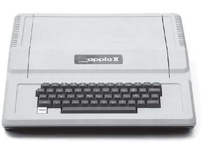
An Integrated Package
Цельный готовый продукт
As Jobs walked the floor of the Personal Computer Festival, he came to the realization that Paul Terrell of the Byte Shop had been right: Personal computers should come in a complete package. The next Apple, he decided, needed to have a great case and a built-in keyboard, and be integrated end to end, from the power supply to the software.
| came to the realization | пришёл к осознанию, понял |
| come in | поставляться, быть в виде |
| end to end | от начала до конца, целиком |
Прогуливаясь по выставке Personal Computer Festival, Джобс пришёл к осознанию, что Пол Террелл из Byte Shop был прав: персональные компьютеры должны поставляться в виде готового комплекта. Следующий Apple, решил он, должен иметь отличный корпус и встроенную клавиатуру и быть цельным от начала до конца — от блока питания до программного обеспечения.
“My vision was to create the first fully packaged computer,” he recalled. “We were no longer aiming for a handful of hobbyists who liked to assemble their own computers, who knew how to buy transformers and keyboards. For every one of them there were a thousand people who would want the machine to be ready to run.”
| fully packaged | полностью укомплектованный, готовый |
| aiming for | нацеливаться на |
| a handful of | горстка, несколько |
| assemble | собирать из деталей |
| ready to run | готовый к работе |
«Моим замыслом было создать первый полностью укомплектованный компьютер, — вспоминал он. — Мы больше не нацеливались на горстку любителей, которым нравилось собирать собственные компьютеры и которые умели покупать трансформаторы и клавиатуры. На каждого из них приходилась тысяча людей, которые хотели бы, чтобы машина была готова к работе сразу».
In their hotel room on that Labor Day weekend of 1976, Wozniak tinkered with the prototype of the new machine, to be named the Apple II, that Jobs hoped would take them to this next level. They brought the prototype out only once, late at night, to test it on the color projection television in one of the conference rooms.
| tinkered with | возился с, дорабатывал |
| prototype | опытный образец |
В номере гостиницы в тот уик-энд Дня труда 1976 года Возняк возился с опытным образцом новой машины, которую назовут Apple II и которая, как надеялся Джобс, выведет их на следующий уровень. Опытный образец они вынесли лишь однажды, поздно ночью, чтобы проверить его на цветном проекционном телевизоре в одном из конференц-залов.
Wozniak had come up with an ingenious way to goose the machine’s chips into creating color, and he wanted to see if it would work on the type of television that uses a projector to display on a movie-like screen. “I figured a projector might have a different color circuitry that would choke on my color method,” he recalled. “So I hooked up the Apple II to this projector and it worked perfectly.”
| come up with | придумать, изобрести |
| goose | подтолкнуть, заставить работать лучше |
| choke on | не справиться с, «поперхнуться» на |
| hooked up | подключил |
Возняк придумал остроумный способ заставить микросхемы машины выдавать цвет, и хотел проверить, сработает ли это на телевизоре, который выводит изображение через проектор на экран, как в кино. «Я подумал, что у проектора может быть другая цветовая схема, которая не справится с моим методом», — вспоминал он. «Поэтому я подключил Apple II к этому проектору, и всё сработало идеально».
As he typed on his keyboard, colorful lines and swirls burst on the screen across the room. The only outsider who saw this first Apple II was the hotel’s technician. He said he had looked at all the machines, and this was the one he would be buying.
| burst | вспыхнули, вырвались |
| outsider | человек со стороны, посторонний |
Пока он печатал на клавиатуре, на экране через всю комнату вспыхивали разноцветные линии и завитки. Единственным посторонним, кто увидел этот первый Apple II, был техник гостиницы. Он сказал, что посмотрел все машины, и купил бы именно эту.
To produce the fully packaged Apple II would require significant capital, so they considered selling the rights to a larger company. Jobs went to Al Alcorn and asked for the chance to pitch it to Atari’s management. He set up a meeting with the company’s president, Joe Keenan, who was a lot more conservative than Alcorn and Bushnell.
| significant capital | значительный капитал |
| pitch it | представить, предложить |
Производство полностью укомплектованного Apple II требовало значительного капитала, поэтому они подумывали продать права более крупной компании. Джобс пришёл к Элу Элкорну и попросил возможности представить проект руководству Atari. Он договорился о встрече с президентом компании Джо Кинаном, который был куда консервативнее Элкорна и Бушнелла.
“Steve goes in to pitch him, but Joe couldn’t stand him,” Alcorn recalled. “He didn’t appreciate Steve’s hygiene.” Jobs was barefoot, and at one point put his feet up on a desk. “Not only are we not going to buy this thing,” Keenan shouted, “but get your feet off my desk!” Alcorn recalled thinking, “Oh, well. There goes that possibility.”
| couldn’t stand him | терпеть его не мог |
| get your feet off | убери ноги с |
| There goes | вот и пропала (возможность) |
«Стив приходит представлять проект, но Джо его терпеть не мог, — вспоминал Элкорн. — Ему не понравилась гигиена Стива». Джобс был босиком и в какой-то момент положил ноги на стол. «Мы не только не купим эту штуку, — заорал Кинан, — но убери ноги с моего стола!» Элкорн вспоминал, что подумал: «Ну вот. И пропала эта возможность».
In September Chuck Peddle of the Commodore computer company came by the Jobs house to get a demo. “We’d opened Steve’s garage to the sunlight, and he came in wearing a suit and a cowboy hat,” Wozniak recalled. Peddle loved the Apple II, and he arranged a presentation for his top brass a few weeks later at Commodore headquarters.
| came by | заехал, зашёл |
| top brass | высшее руководство |
В сентябре Чак Педдл из компьютерной компании Commodore заехал к Джобсам посмотреть демонстрацию. «Мы открыли гараж Стива солнечному свету, а он вошёл в костюме и ковбойской шляпе», — вспоминал Возняк. Педдлу Apple II понравился, и через несколько недель он устроил презентацию для высшего руководства в штаб-квартире Commodore.
“You might want to buy us for a few hundred thousand dollars,” Jobs said when they got there. Wozniak was stunned by this “ridiculous” suggestion, but Jobs persisted. The Commodore honchos called a few days later to say they had decided it would be cheaper to build their own machine. Jobs was not upset. He had checked out Commodore and decided that its leadership was “sleazy.”
| stunned by | ошеломлён, поражён |
| persisted | настаивал, продолжал |
| honchos | боссы, начальство; разговорное |
| checked out | присмотрелся к, изучил |
| sleazy | скользкий, неприятный |
«Возможно, вы захотите купить нас за несколько сотен тысяч долларов», — сказал Джобс, когда они приехали. Возняк был ошеломлён этим «нелепым» предложением, но Джобс настаивал. Через несколько дней боссы Commodore позвонили и сказали, что решили: дешевле построить собственную машину. Джобс не расстроился. Он присмотрелся к Commodore и решил, что её руководство «скользкое».
Wozniak did not rue the lost money, but his engineering sensibilities were offended when the company came out with the Commodore PET nine months later. “It kind of sickened me. They made a real crappy product by doing it so quick. They could have had Apple.”
| rue | сожалеть о |
| sensibilities | чувства, представления |
| came out with | выпустила |
Возняк не жалел об упущенных деньгах, но его как инженера это задело, когда девять месяцев спустя компания выпустила Commodore PET. «Меня это даже тошнило. Они сделали по-настоящему паршивый продукт, потому что спешили. У них мог бы быть Apple».
The Commodore flirtation brought to the surface a potential conflict between Jobs and Wozniak: Were they truly equal in what they contributed to Apple and what they should get out of it? Jerry Wozniak, who exalted the value of engineers over mere entrepreneurs and marketers, thought most of the money should be going to his son.
| brought to the surface | вывело наружу, вскрыло |
| mere | всего лишь, простые |
Заигрывание с Commodore вскрыло потенциальный конфликт между Джобсом и Возняком: действительно ли они равны в том, что вкладывают в Apple, и в том, что должны от неё получать? Джерри Возняк, ставивший ценность инженеров выше простых предпринимателей и маркетологов, считал, что большая часть денег должна доставаться его сыну.
He confronted Jobs personally when he came by the Wozniak house. “You don’t deserve shit,” he told Jobs. “You haven’t produced anything.” Jobs began to cry, which was not unusual. He had never been, and would never be, adept at containing his emotions. He told Steve Wozniak that he was willing to call off the partnership. “If we’re not fifty-fifty,” he said to his friend, “you can have the whole thing.”
| deserve shit | не заслуживаешь ничего; грубое выражение |
| adept at containing | умело сдерживать |
| call off | отменить, расторгнуть |
Когда Джобс зашёл к Вознякам, Джерри лично устроил ему выговор. «Ты не заслуживаешь ни черта, — сказал он Джобсу. — Ты ничего не произвёл». Джобс заплакал, что не было редкостью. Он никогда не умел — и не научится — умело сдерживать эмоции. Он сказал Стиву Возняку, что готов расторгнуть партнёрство. «Если мы не пятьдесят на пятьдесят, — сказал он другу, — забирай всё себе».
Wozniak, however, understood better than his father the symbiosis they had. If it had not been for Jobs, he might still be handing out schematics of his boards for free at the back of Homebrew meetings. It was Jobs who had turned his ingenious designs into a budding business, just as he had with the Blue Box. He agreed they should remain partners.
| symbiosis | взаимовыгодный союз, симбиоз |
| handing out | раздавать |
| schematics | схемы |
| budding | зарождающийся, подающий надежды |
Однако Возняк понимал их симбиоз лучше своего отца. Если бы не Джобс, он, возможно, до сих пор бесплатно раздавал бы схемы своих плат в задней части зала на собраниях Homebrew. Именно Джобс превратил его остроумные разработки в зарождающийся бизнес, как и в случае с Blue Box. Он согласился, что они должны остаться партнёрами.
It was a smart call. To make the Apple II successful required more than just Wozniak’s awesome circuit design. It would need to be packaged into a fully integrated consumer product, and that was Jobs’s role.
| smart call | умное, верное решение |
| consumer product | товар для массового потребителя |
Это было верное решение. Чтобы Apple II добился успеха, требовалось больше, чем потрясающая разработка схемы Возняка. Машину нужно было превратить в цельный, готовый для покупателя продукт, и это была роль Джобса.
He began by asking their erstwhile partner Ron Wayne to design a case. “I assumed they had no money, so I did one that didn’t require any tooling and could be fabricated in a standard metal shop,” he said. His design called for a Plexiglas cover attached by metal straps and a rolltop door that slid down over the keyboard.
| erstwhile | бывший, прежний |
| tooling | специальная оснастка, пресс-формы |
| fabricated | изготовлен |
| called for | предусматривал |
Он начал с того, что попросил их бывшего партнёра Рона Уэйна разработать корпус. «Я предположил, что у них нет денег, поэтому сделал вариант, не требующий специальной оснастки, который можно изготовить в обычной металлической мастерской», — рассказывал он. Его проект предусматривал крышку из плексигласа на металлических скобах и откатную дверцу, опускавшуюся на клавиатуру.
Jobs didn’t like it. He wanted a simple and elegant design, which he hoped would set Apple apart from the other machines, with their clunky gray metal cases. While haunting the appliance aisles at Macy’s, he was struck by the Cuisinart food processors and decided that he wanted a sleek case made of light molded plastic.
| set Apple apart from | выделить Apple среди |
| clunky | громоздкий, неуклюжий |
| haunting | бродил по, часто посещал |
| struck by | поражён |
| sleek | гладкий, изящный |
Джобсу это не понравилось. Он хотел простой и элегантный дизайн, который, как он надеялся, выделит Apple среди других машин с их неуклюжими серыми металлическими корпусами. Бродя по рядам бытовой техники в Macy’s, он был поражён кухонными комбайнами Cuisinart и решил, что хочет гладкий корпус из лёгкого литого пластика.
At a Homebrew meeting, he offered a local consultant, Jerry Manock, $1,500 to produce such a design. Manock, dubious about Jobs’s appearance, asked for the money up front. Jobs refused, but Manock took the job anyway. Within weeks he had produced a simple foam-molded plastic case that was uncluttered and exuded friendliness. Jobs was thrilled.
| dubious about | сомневаясь в, с недоверием к |
| up front | заранее, вперёд |
| uncluttered | без лишних деталей, чистый |
| exuded friendliness | излучал дружелюбие |
На собрании Homebrew он предложил местному консультанту Джерри Мэноку 1500 долларов за такой дизайн. Мэнок, с недоверием отнёсшийся к внешности Джобса, попросил деньги вперёд. Джобс отказался, но Мэнок всё равно взялся за работу. Через несколько недель он сделал простой пластиковый корпус из вспененного материала — без лишних деталей, излучающий дружелюбие. Джобс был в восторге.
Next came the power supply. Digital geeks like Wozniak paid little attention to something so analog and mundane, but Jobs decided it was a key component. In particular he wanted—as he would his entire career—to provide power in a way that avoided the need for a fan. Fans inside computers were not Zen-like; they distracted.
| mundane | приземлённый, обыденный |
| avoided the need for | избавлял от необходимости |
Следующим был блок питания. Цифровым гикам вроде Возняка было мало дела до чего-то столь аналогового и обыденного, но Джобс решил, что это ключевой компонент. В частности, он хотел — как будет хотеть всю карьеру — подавать питание так, чтобы не нужен был вентилятор. Вентиляторы внутри компьютеров были не в духе дзена; они отвлекали.
He dropped by Atari to consult with Alcorn, who knew old-fashioned electrical engineering. “Al turned me on to this brilliant guy named Rod Holt, who was a chain-smoking Marxist who had been through many marriages and was an expert on everything,” Jobs recalled. Like Manock and others meeting Jobs for the first time, Holt took a look at him and was skeptical. “I’m expensive,” Holt said. Jobs sensed he was worth it and said that cost was no problem. “He just conned me into working,” said Holt, who ended up joining Apple full-time.
| dropped by | заскочил, заглянул |
| turned me on to | познакомил меня с |
| sensed | почувствовал |
| conned me into | хитростью уговорил на |
Он заскочил в Atari посоветоваться с Элкорном, знавшим старую школу электротехники. «Эл познакомил меня с блестящим парнем по имени Род Холт — заядлым курильщиком, марксистом, прошедшим через много браков, экспертом во всём», — вспоминал Джобс. Как Мэнок и другие, видевшие Джобса впервые, Холт взглянул на него скептически. «Я дорого стою», — сказал Холт. Джобс почувствовал, что он того стоит, и сказал, что стоимость не проблема. «Он просто хитростью затащил меня работать», — говорил Холт, который в итоге перешёл в Apple на полный день.
Instead of a conventional linear power supply, Holt built one like those used in oscilloscopes. It switched the power on and off not sixty times per second, but thousands of times; this allowed it to store the power for far less time, and thus throw off less heat.
| oscilloscopes | осциллографы, измерительные приборы |
| throw off | выделять |
Вместо обычного линейного блока питания Холт построил такой, какие используются в осциллографах. Он включал и выключал питание не шестьдесят раз в секунду, а тысячи раз; это позволяло накапливать энергию гораздо меньшее время и, значит, выделять меньше тепла.
“That switching power supply was as revolutionary as the Apple II logic board was,” Jobs later said. “Rod doesn’t get a lot of credit for this in the history books, but he should. Every computer now uses switching power supplies, and they all rip off Rod’s design.” For all of Wozniak’s brilliance, this was not something he could have done. “I only knew vaguely what a switching power supply was,” Woz admitted.
| credit | признание заслуг |
| rip off | воруют, копируют |
| For all of | несмотря на весь |
«Этот импульсный блок питания был так же революционен, как логическая плата Apple II, — говорил позже Джобс. — Роду не отдают должного в учебниках истории, а следовало бы. Сегодня все компьютеры используют импульсные блоки питания, и все они скопированы с разработки Рода». При всей гениальности Возняка, он бы такого сделать не смог. «Я лишь смутно представлял, что такое импульсный блок питания», — признавал Воз.
Jobs’s father had once taught him that a drive for perfection meant caring about the craftsmanship even of the parts unseen. Jobs applied that to the layout of the circuit board inside the Apple II. He rejected the initial design because the lines were not straight enough.
| drive for perfection | стремление к совершенству |
| craftsmanship | качество работы, мастерство |
Отец когда-то научил Джобса, что стремление к совершенству означает заботу о качестве даже тех частей, которых не видно. Джобс применил это к разводке печатной платы внутри Apple II. Он отверг первый вариант, потому что линии были недостаточно прямыми.
This passion for perfection led him to indulge his instinct to control. Most hackers and hobbyists liked to customize, modify, and jack various things into their computers. To Jobs, this was a threat to a seamless end-to-end user experience. Wozniak, a hacker at heart, disagreed.
| indulge | давать волю, потакать |
| jack | вставлять, подключать |
| seamless | бесшовный, цельный |
| at heart | в душе, по натуре |
Эта страсть к совершенству побудила его дать волю своему инстинкту контроля. Большинству хакеров и любителей нравилось настраивать, переделывать и подключать к компьютерам разные вещи. Для Джобса это было угрозой цельному пользовательскому опыту. Возняк, хакер в душе, не согласился.
He wanted to include eight slots on the Apple II for users to insert whatever smaller circuit boards and peripherals they might want. Jobs insisted there be only two, for a printer and a modem. “Usually I’m really easy to get along with, but this time I told him, ‘If that’s what you want, go get yourself another computer,’” Wozniak recalled. “I knew that people like me would eventually come up with things to add to any computer.” Wozniak won the argument that time, but he could sense his power waning. “I was in a position to do that then. I wouldn’t always be.”
| slots | разъёмы, слоты |
| peripherals | периферийные устройства |
| get along with | ладить с |
| come up with | придумывать |
| waning | угасает, ослабевает |
Он хотел сделать в Apple II восемь слотов, чтобы пользователи могли вставлять любые дополнительные платы и периферийные устройства. Джобс настаивал, что их должно быть только два — для принтера и модема. «Обычно со мной легко ладить, но в тот раз я сказал ему: „Если тебе нужно именно это, иди купи себе другой компьютер“», — вспоминал Возняк. «Я знал, что такие люди, как я, рано или поздно придумают, что добавить к любому компьютеру». В тот раз спор выиграл Возняк, но он чувствовал, что его власть угасает. «Тогда я ещё был в состоянии так поступить. Не всегда так будет».
Mike Markkula
Майк Марккула
All of this required money. “The tooling of this plastic case was going to cost, like, $100,000,” Jobs said. “Just to get this whole thing into production was going to be, like, $200,000.” He went back to Nolan Bushnell, this time to get him to put in some money and take a minority equity stake.
| tooling | оснастка, пресс-формы |
| minority equity stake | доля в капитале меньше контрольной |
Всё это требовало денег. «Оснастка для этого пластикового корпуса стоила, типа, 100 000 долларов, — говорил Джобс. — Просто запустить всё это в производство — типа, 200 000». Он снова пришёл к Нолану Бушнеллу, на этот раз чтобы тот вложил деньги и взял неконтрольную долю.
“He asked me if I would put $50,000 in and he would give me a third of the company,” said Bushnell. “I was so smart, I said no. It’s kind of fun to think about that, when I’m not crying.”
| put $50,000 in | вложить 50 000 долларов; put money in — вложить деньги |
| a third of | треть |
«Он спросил, не вложу ли я 50 000 долларов, а он отдаст мне треть компании, — рассказывал Бушнелл. — Я был так умён, что отказался. Забавно вспоминать об этом, когда я не плачу».
Bushnell suggested that Jobs try Don Valentine, a straight-shooting former marketing manager at National Semiconductor who had founded Sequoia Capital, a pioneering venture capital firm. Valentine arrived at the Jobses’ garage in a Mercedes wearing a blue suit, button-down shirt, and rep tie.
| straight-shooting | прямолинейный, говорящий напрямик |
| venture capital | венчурный капитал |
| rep tie | галстук в диагональную полоску |
Бушнелл предложил Джобсу попробовать Дона Валентайна — прямолинейного бывшего менеджера по маркетингу National Semiconductor, основавшего Sequoia Capital, одну из первых фирм венчурного капитала. Валентайн приехал к гаражу Джобсов на «Мерседесе», в синем костюме, рубашке на пуговицах и полосатом галстуке.
His first impression was that Jobs looked and smelled odd. “Steve was trying to be the embodiment of the counterculture. He had a wispy beard, was very thin, and looked like Ho Chi Minh.”
| embodiment | воплощение |
| wispy | жидкая, редкая (борода) |
Его первым впечатлением было, что Джобс и выглядит, и пахнет странно. «Стив пытался быть воплощением контркультуры. У него была жидкая бородка, он был очень худым и походил на Хо Ши Мина».
Valentine, however, did not become a preeminent Silicon Valley investor by relying on surface appearances. What bothered him more was that Jobs knew nothing about marketing and seemed content to peddle his product to individual stores one by one. “If you want me to finance you,” Valentine told him, “you need to have one person as a partner who understands marketing and distribution and can write a business plan.”
| preeminent | выдающийся, ведущий |
| surface appearances | внешний вид, поверхностное впечатление |
| content to | довольствуясь тем, что |
| peddle | продавать вразнос, по мелочи |
Однако выдающимся инвестором Кремниевой долины Валентайн стал не потому, что полагался на внешние впечатления. Больше его беспокоило, что Джобс ничего не понимает в маркетинге и, похоже, довольствуется продажей продукта магазинам по одному. «Если хочешь, чтобы я тебя профинансировал, — сказал ему Валентайн, — тебе нужен партнёр, который понимает маркетинг и дистрибуцию и может написать бизнес-план».
Jobs tended to be either bristly or solicitous when older people offered him advice. With Valentine he was the latter. “Send me three suggestions,” he replied. Valentine did, Jobs met them, and he clicked with one of them, a man named Mike Markkula, who would end up playing a critical role at Apple for the next two decades.
| bristly | колючий, раздражительный |
| solicitous | почтительный, внимательный |
| the latter | последним из названного |
| clicked with | нашёл общий язык с |
| end up | в итоге |
Когда люди постарше давали Джобсу советы, он бывал либо колючим, либо почтительным. С Валентайном он был последним. «Пришлите мне три кандидатуры», — ответил он. Валентайн прислал, Джобс встретился с ними и нашёл общий язык с одним из них — человеком по имени Майк Марккула, который в итоге сыграет ключевую роль в Apple в течение следующих двух десятилетий.
Markkula was only thirty-three, but he had already retired after working at Fairchild and then Intel, where he made millions on his stock options when the chip maker went public. He was a cautious and shrewd man, with the precise moves of someone who had been a gymnast in high school, and he excelled at figuring out pricing strategies, distribution networks, marketing, and finance.
| stock options | опционы на акции |
| went public | вышла на биржу, стала публичной |
| shrewd | проницательный, расчётливый |
Марккуле было всего тридцать три, но он уже вышел на пенсию, поработав в Fairchild, а затем в Intel, где заработал миллионы на опционах, когда производитель чипов вышел на биржу. Он был осторожным и проницательным человеком, с точными движениями гимнаста, каким был в старшей школе, и превосходно разбирался в ценовых стратегиях, дистрибьюторских сетях, маркетинге и финансах.
Despite being slightly reserved, he had a flashy side when it came to enjoying his newly minted wealth. He built himself a house in Lake Tahoe and later an outsize mansion in the hills of Woodside. When he showed up for his first meeting at Jobs’s garage, he was driving not a dark Mercedes like Valentine, but a highly polished gold Corvette convertible.
| reserved | сдержанный |
| flashy | показной, любящий роскошь |
| outsize | огромный, непомерных размеров |
Несмотря на некоторую сдержанность, в наслаждении свежеприобретённым богатством у него была показная сторона. Он построил себе дом на озере Тахо, а позже — огромный особняк на холмах Вудсайда. На первую встречу в гараже Джобса он приехал не на тёмном «Мерседесе», как Валентайн, а на до блеска отполированном золотом кабриолете «Корвет».
“When I arrived at the garage, Woz was at the workbench and immediately began showing off the Apple II,” Markkula recalled. “I looked past the fact that both guys needed a haircut and was amazed by what I saw on that workbench. You can always get a haircut.”
| showing off | хвастаясь, с гордостью показывая |
| looked past | не обратил внимания на, закрыл глаза на |
«Когда я приехал в гараж, Воз был за верстаком и тут же начал с гордостью показывать Apple II, — вспоминал Марккула. — Я не обратил внимания на то, что обоим парням не мешало бы подстричься, и был поражён увиденным на верстаке. Подстричься всегда можно успеть».
Jobs immediately liked Markkula. “He was short and he had been passed over for the top marketing job at Intel, which I suspect made him want to prove himself.” He also struck Jobs as decent and fair. “You could tell that if he could screw you, he wouldn’t. He had a real moral sense to him.” Wozniak was equally impressed. “I thought he was the nicest person ever,” he recalled. “Better still, he actually liked what we had!”
| passed over for | обойдён при назначении на |
| struck Jobs as | показался Джобсу |
| screw | обмануть, подставить; грубоватое |
Джобсу Марккула сразу понравился. «Он был невысоким, и его обошли при назначении на высшую маркетинговую должность в Intel — подозреваю, это подстегнуло его доказать, на что он способен». Он также показался Джобсу порядочным и справедливым. «Чувствовалось: если бы он и мог тебя надуть, он бы этого не сделал. В нём было настоящее нравственное чувство». Возняк был впечатлён не меньше. «Я подумал, что он самый милый человек на свете, — вспоминал он. — А главное — ему действительно нравилось то, что у нас было!»
Markkula proposed to Jobs that they write a business plan together. “If it comes out well, I’ll invest,” Markkula said, “and if not, you’ve got a few weeks of my time for free.” Jobs began going to Markkula’s house in the evenings, kicking around projections and talking through the night.
| comes out | получится |
| kicking around | обсуждая, перебирая |
Марккула предложил Джобсу написать бизнес-план вместе. «Если получится хорошо, я вложусь, — сказал Марккула, — а если нет — получишь несколько недель моего времени бесплатно». Джобс начал ходить к Марккуле по вечерам; они перебирали прогнозы и разговаривали ночами напролёт.
“We made a lot of assumptions, such as about how many houses would have a personal computer, and there were nights we were up until 4 a.m.,” Jobs recalled. Markkula ended up writing most of the plan. “Steve would say, ‘I will bring you this section next time,’ but he usually didn’t deliver on time, so I ended up doing it.”
| assumptions | допущения, предположения |
| ended up | в итоге |
| deliver on time | сдавать в срок |
«Мы делали много допущений, например о том, во скольких домах появится персональный компьютер, и бывали ночи, когда мы засиживались до четырёх утра», — вспоминал Джобс. В итоге большую часть плана написал Марккула. «Стив говорил: „В следующий раз принесу этот раздел“, но обычно не сдавал вовремя, так что в итоге этим занимался я».
Markkula’s plan envisioned ways of getting beyond the hobbyist market. “He talked about introducing the computer to regular people in regular homes, doing things like keeping track of your favorite recipes or balancing your checkbook,” Wozniak recalled. Markkula made a wild prediction: “We’re going to be a Fortune 500 company in two years,” he said. “This is the start of an industry. It happens once in a decade.” It would take Apple seven years to break into the Fortune 500, but the spirit of Markkula’s prediction turned out to be true.
| keeping track of | буквально «вести учёт»; здесь — хранить, держать под рукой |
| balancing your checkbook | сводить баланс чековой книжки |
| wild | смелый, дерзкий |
| turned out to be | оказалось |
План Марккулы предполагал выход за пределы рынка любителей. «Он говорил о том, чтобы познакомить с компьютером обычных людей в обычных домах: хранить любимые рецепты, сводить чековую книжку», — вспоминал Возняк. Марккула сделал дерзкий прогноз: «Через два года мы войдём в Fortune 500, — сказал он. — Это рождение целой индустрии. Такое случается раз в десятилетие». Чтобы пробиться в Fortune 500, Apple понадобится семь лет, но дух прогноза Марккулы оказался верным.
Markkula offered to guarantee a line of credit of up to $250,000 in return for being made a one-third equity participant. Apple would incorporate, and he along with Jobs and Wozniak would each own 26% of the stock. The rest would be reserved to attract future investors. The three met in the cabana by Markkula’s swimming pool and sealed the deal. “I thought it was unlikely that Mike would ever see that $250,000 again, and I was impressed that he was willing to risk it,” Jobs recalled.
| guarantee a line of credit | гарантировать кредитную линию |
| equity participant | участник с долей в капитале |
| incorporate | стать акционерным обществом |
| cabana | беседка, домик у бассейна |
| sealed the deal | скрепили сделку |
Марккула предложил гарантировать кредитную линию до 250 000 долларов в обмен на треть капитала. Apple должна была зарегистрироваться как корпорация, и он, вместе с Джобсом и Возняком, владел бы по 26% акций. Остальные акции оставляли для привлечения будущих инвесторов. Троица встретилась в беседке у бассейна Марккулы и скрепила сделку. «Я думал, что вряд ли Майк когда-нибудь снова увидит эти 250 000, и меня впечатлило, что он готов рисковать ими», — вспоминал Джобс.
Now it was necessary to convince Wozniak to come on board full-time. “Why can’t I keep doing this on the side and just have HP as my secure job for life?” he asked. Markkula said that wouldn’t work, and he gave Wozniak a deadline of a few days to decide.
| come on board | войти в команду, присоединиться |
| on the side | параллельно, в свободное время |
| deadline | крайний срок |
Теперь нужно было убедить Возняка присоединиться на полный день. «Почему я не могу заниматься этим параллельно, а HP оставить надёжной работой на всю жизнь?» — спрашивал он. Марккула сказал, что так не выйдет, и дал Возняку крайний срок в несколько дней.
“I felt very insecure in starting a company where I would be expected to push people around and control what they did,” Wozniak recalled. “I’d decided long ago that I would never become someone authoritative.” So he went to Markkula’s cabana and announced that he was not leaving HP.
| push people around | помыкать людьми, командовать |
| authoritative | властный, начальственный |
«Мне было очень неуютно при мысли о компании, где от меня ждали бы, что я буду помыкать людьми и контролировать их действия, — вспоминал Возняк. — Я давно решил, что никогда не стану начальником». Поэтому он пришёл в беседку Марккулы и объявил, что из HP не уходит.
Markkula shrugged and said okay. But Jobs got very upset. He cajoled Wozniak; he got friends to try to convince him; he cried, yelled, and threw a couple of fits. He even went to Wozniak’s parents’ house, burst into tears, and asked Jerry for help.
| shrugged | пожал плечами |
| cajoled | уговаривал, улещивал |
| threw a couple of fits | закатил пару истерик |
| burst into tears | разрыдался |
Марккула пожал плечами и сказал: ладно. Но Джобс очень расстроился. Он уговаривал Возняка, просил друзей повлиять на него, плакал, кричал и закатил пару истерик. Он даже приехал к родителям Возняка, разрыдался и попросил Джерри о помощи.
By this point Wozniak’s father had realized there was real money to be made by capitalizing on the Apple II, and he joined forces on Jobs’s behalf. “I started getting phone calls at work and home from my dad, my mom, my brother, and various friends,” Wozniak recalled. “Every one of them told me I’d made the wrong decision.” None of that worked.
| capitalizing on | зарабатывая на, используя |
| joined forces | объединил усилия |
К этому моменту отец Возняка понял, что на Apple II можно по-настоящему заработать, и объединил усилия с Джобсом. «Мне начали звонить на работу и домой отец, мать, брат и разные друзья, — вспоминал Возняк. — Каждый говорил, что я принял неверное решение». Ничто не помогло.
Then Allen Baum, their Buck Fry Club mate at Homestead High, called. “You really ought to go ahead and do it,” he said. He argued that if he joined Apple full-time, he would not have to go into management or give up being an engineer. “That was exactly what I needed to hear,” Wozniak later said. “I could stay at the bottom of the organization chart, as an engineer.” He called Jobs and declared that he was now ready to come on board.
| mate | товарищ, приятель |
| ought to | тебе стоит, следует |
| go ahead and | взять и сделать, не раздумывая |
| give up | отказаться от |
| organization chart | организационная структура, иерархия |
Потом позвонил Аллен Баум, их товарищ по клубу Buck Fry в Homestead High. «Тебе правда стоит взять и сделать это», — сказал он. Он убеждал, что, присоединившись к Apple на полный день, Возняк не обязан идти в управленцы или отказываться от профессии инженера. «Это было ровно то, что мне нужно было услышать, — говорил позже Возняк. — Я могу остаться в самом низу иерархии, инженером». Он позвонил Джобсу и объявил, что готов войти в команду.
On January 3, 1977, the new corporation, the Apple Computer Co., was officially created, and it bought out the old partnership that had been formed by Jobs and Wozniak nine months earlier. Few people noticed. That month the Homebrew surveyed its members and found that, of the 181 who owned personal computers, only six owned an Apple. Jobs was convinced, however, that the Apple II would change that.
| bought out | выкупила, поглотила |
| surveyed | опросила |
3 января 1977 года была официально создана новая корпорация Apple Computer Co., которая поглотила старое партнёрство, образованное Джобсом и Возняком девятью месяцами ранее. Мало кто это заметил. В том месяце Homebrew провела опрос участников и выяснила, что из 181 владельца персональных компьютеров только шестеро владели Apple. Джобс, однако, был убеждён, что Apple II это изменит.
Markkula would become a father figure to Jobs. Like Jobs’s adoptive father, he would indulge Jobs’s strong will, and like his biological father, he would end up abandoning him. “Markkula was as much a father-son relationship as Steve ever had,” said the venture capitalist Arthur Rock.
| father figure | фигура отца, наставник |
| indulge | потакать |
Марккула стал для Джобса фигурой отца. Как его приёмный отец, он будет потакать сильной воле Джобса, а как биологический — в итоге его покинет. «Связь с Марккулой была для Стива ближе всего к отношениям отца и сына», — говорил венчурный капиталист Артур Рок.
He began to teach Jobs about marketing and sales. “Mike really took me under his wing,” Jobs recalled. “His values were much aligned with mine. He emphasized that you should never start a company with the goal of getting rich. Your goal should be making something you believe in and making a company that will last.”
| took me under his wing | взял меня под своё крыло |
| aligned with | совпадали с |
Он начал учить Джобса маркетингу и продажам. «Майк по-настоящему взял меня под своё крыло, — вспоминал Джобс. — Его ценности во многом совпадали с моими. Он подчёркивал, что компанию нельзя создавать ради обогащения. Целью должно быть создание того, во что веришь, и компании, которая просуществует долго».
Markkula wrote his principles in a one-page paper h1d “The Apple Marketing Philosophy” that stressed three points. The first was empathy, an intimate connection with the feelings of the customer: “We will truly understand their needs better than any other company.” The second was focus: “In order to do a good job of those things that we decide to do, we must eliminate all of the unimportant opportunities.”
| stressed | подчёркивал, выделял |
| empathy | сопереживание, эмпатия |
| eliminate | устранять, отбрасывать |
Свои принципы Марккула изложил на одной странице, озаглавленной «Философия маркетинга Apple», где выделял три пункта. Первым была эмпатия — глубокое понимание чувств покупателя: «Мы будем понимать их потребности по-настоящему, лучше любой другой компании». Вторым — фокус: «Чтобы хорошо сделать то, что мы решили делать, нужно отбросить все неважные возможности».
The third and equally important principle, awkwardly named, was impute. It emphasized that people form an opinion about a company or product based on the signals that it conveys. “People DO judge a book by its cover,” he wrote. “We may have the best product, the highest quality, the most useful software etc.; if we present them in a slipshod manner, they will be perceived as slipshod; if we present them in a creative, professional manner, we will impute the desired qualities.”
| impute | буквально «приписывать»; здесь — внушать нужный образ, создавать впечатление |
| signals | сигналы, знаки |
| slipshod | небрежный, неряшливый |
Третьим, не менее важным принципом, было «impute» — неуклюже названное «внушение нужного образа». Он подчёркивал, что люди составляют мнение о компании или продукте по тем сигналам, которые она подаёт. «Люди ДЕЙСТВИТЕЛЬНО судят о книге по обложке, — писал он. — У нас может быть лучший продукт, высочайшее качество, самое полезное программное обеспечение и т. д.; но если мы преподнесём их неряшливо, их сочтут неряшливыми; а если преподнесём творчески и профессионально, мы наделим их нужными качествами».
For the rest of his career, Jobs would understand the needs and desires of customers better than any other business leader, he would focus on a handful of core products, and he would care, sometimes obsessively, about marketing and image and even the details of packaging. “When you open the box of an iPhone or iPad, we want that tactile experience to set the tone for how you perceive the product,” he said. “Mike taught me that.”
| handful of | горстка, несколько |
| obsessively | одержимо, навязчиво |
| tactile experience | ощущение от прикосновения |
| set the tone for | задавать тон, настраивать |
До конца карьеры Джобс будет понимать нужды и желания покупателей лучше любого другого бизнес-лидера, сосредоточиваться на нескольких ключевых продуктах и заботиться — порой одержимо — о маркетинге, имидже и даже деталях упаковки. «Когда открываешь коробку iPhone или iPad, мы хотим, чтобы ощущение от прикосновения задало тон твоему восприятию продукта, — говорил он. — Этому меня научил Майк».
Regis McKenna
Реджис Маккенна
The first step in this process was convincing the Valley’s premier publicist, Regis McKenna, to take on Apple as a client. McKenna was from a large working-class Pittsburgh family, and bred into his bones was a steeliness that he cloaked with charm. A college dropout, he had worked for Fairchild and National Semiconductor before starting his own PR and advertising firm.
| premier publicist | ведущий специалист по связям с общественностью |
| take on | взять (в качестве клиента) |
| bred into his bones | заложена в нём с рождения |
| steeliness | стальная твёрдость |
| cloaked with | скрывал под, прикрывал |
Первым шагом было убедить ведущего пиарщика Долины Реджиса Маккенну взять Apple в клиенты. Маккенна происходил из большой рабочей семьи Питтсбурга, и в нём с рождения была заложена стальная твёрдость, которую он прикрывал обаянием. Бросив колледж, он поработал в Fairchild и National Semiconductor, прежде чем открыть собственную фирму по связям с общественностью и рекламе.
His two specialties were doling out exclusive interviews with his clients to journalists he had cultivated and coming up with memorable ad campaigns that created brand awareness for products such as microchips. One of these was a series of colorful magazine ads for Intel that featured racing cars and poker chips rather than the usual dull performance charts.
| doling out | раздавая, распределяя |
| cultivated | выращенных, налаженных (связей) |
| coming up with | придумывая |
| brand awareness | узнаваемость бренда |
| featured | изображали, показывали |
Двумя его коронными умениями были предоставление эксклюзивных интервью с клиентами журналистам, с которыми он выстроил отношения, и создание запоминающихся рекламных кампаний, обеспечивавших узнаваемость таким продуктам, как микросхемы. Одна из них — серия цветных журнальных реклам Intel, где были гоночные машины и покерные фишки вместо обычных скучных графиков производительности.
These caught Jobs’s eye. He called Intel and asked who created them. “Regis McKenna,” he was told. “I asked them what Regis McKenna was,” Jobs recalled, “and they told me he was a person.” When Jobs phoned, he couldn’t get through to McKenna. Instead he was transferred to Frank Burge, an account executive, who tried to put him off. Jobs called back almost every day.
| caught Jobs’s eye | привлекли внимание Джобса |
| get through to | дозвониться до |
| account executive | менеджер по работе с клиентами |
| put him off | отделаться от него |
Они привлекли внимание Джобса. Он позвонил в Intel и спросил, кто их создал. «Реджис Маккенна», — ответили ему. «Я спросил их, что такое Реджис Маккенна, — вспоминал Джобс, — и мне сказали, что это человек». Когда Джобс позвонил, дозвониться до Маккенны он не смог. Его переключили на Фрэнка Берджа, менеджера по работе с клиентами, который попытался от него отделаться. Джобс перезванивал почти каждый день.
Burge finally agreed to drive out to the Jobs garage. “Holy Christ, this guy is going to be something else,” he recalled thinking. “What’s the least amount of time I can spend with this clown without being rude.” Then, when he was confronted with the unwashed and shaggy Jobs, two things hit him: “First, he was an incredibly smart young man. Second, I didn’t understand a fiftieth of what he was talking about.”
| confronted with | столкнувшись с |
| hit him | поразило его |
Наконец Бердж согласился съездить к гаражу Джобсов. «Боже правый, с этим парнем будет что-то особенное, — вспоминал он свои мысли. — Сколько минимум времени я могу провести с этим клоуном, не показавшись грубым». Но когда он столкнулся с немытым лохматым Джобсом, его поразили две вещи: «Во-первых, это был невероятно умный молодой человек. Во-вторых, я не понял и пятидесятой доли того, о чём он говорил».
So Jobs and Wozniak were invited to have a meeting with, as his impish business cards read, “Regis McKenna, himself.” This time it was the normally shy Wozniak who became prickly. McKenna glanced at an article Wozniak was writing about Apple and suggested that it was too technical and needed to be livened up. “I don’t want any PR man touching my copy,” Wozniak snapped.
| impish | озорной, проказливый |
| prickly | колючий, обидчивый |
| livened up | оживлён |
| snapped | резко бросил |
Итак, Джобса и Возняка пригласили на встречу с — как гласили его озорные визитки — «самим Реджисом Маккенной». В этот раз колючим стал обычно застенчивый Возняк. Маккенна мельком взглянул на статью об Apple, которую писал Возняк, и заметил, что она слишком технична и её нужно оживить. «Я не хочу, чтобы какой-то пиарщик трогал мой текст», — резко бросил Возняк.
McKenna suggested it was time for them to leave his office. “But Steve called me back right away and said he wanted to meet again,” McKenna recalled. “This time he came without Woz, and we hit it off.”
| hit it off | нашли общий язык, поладили |
Маккенна намекнул, что им пора покинуть его офис. «Но Стив тут же перезвонил и сказал, что хочет встретиться снова, — вспоминал Маккенна. — На этот раз он пришёл без Воза, и мы сразу поладили».
McKenna had his team get to work on brochures for the Apple II. The first thing they did was to replace Ron Wayne’s ornate Victorian woodcut-style logo, which ran counter to McKenna’s colorful and playful advertising style. So an art director, Rob Janoff, was assigned to create a new one. “Don’t make it cute,” Jobs ordered.
| ornate | витиеватый, пышный |
| ran counter to | противоречил |
| cute | миленький, сюсюкающий |
Маккенна поручил команде заняться брошюрами для Apple II. Первым делом заменили витиеватый логотип Рона Уэйна в викторианском стиле гравюры по дереву, который противоречил красочному и игривому рекламному стилю Маккенны. Поэтому художественному директору Робу Яноффу поручили создать новый. «Не делай его миленьким», — распорядился Джобс.
Janoff came up with a simple apple shape in two versions, one whole and the other with a bite taken out of it. The first looked too much like a cherry, so Jobs chose the one with a bite. He also picked a version that was striped in six colors, with psychedelic hues sandwiched between whole-earth green and sky blue, even though that made printing the logo significantly more expensive.
| came up with | придумал |
| bite taken out of | откушенный кусок |
| striped | в полоску |
| hues sandwiched between | буквально «оттенки, зажатые между»; оттенки, расположенные между другими цветами |
Янофф придумал простое яблоко в двух вариантах: целое и с откушенным куском. Первое слишком походило на вишню, поэтому Джобс выбрал вариант с укусом. Он также выбрал версию с шестью цветными полосами, где между землисто-зелёной и небесно-голубой располагались психоделические оттенки, хотя печать такого логотипа стоила заметно дороже.
Atop the brochure McKenna put a maxim, often attributed to Leonardo da Vinci, that would become the defining precept of Jobs’s design philosophy: “Simplicity is the ultimate sophistication.”
| Atop | сверху, поверх |
| maxim | афоризм, изречение |
| precept | принцип, заповедь |
Поверх брошюры Маккенна поместил изречение, которое часто приписывают Леонардо да Винчи и которое станет определяющим принципом дизайнерской философии Джобса: «Простота — высшая форма утончённости».
The First Launch Event
Первая презентация
The introduction of the Apple II was scheduled to coincide with the first West Coast Computer Faire, to be held in April 1977 in San Francisco, organized by a Homebrew stalwart, Jim Warren. Jobs signed Apple up for a booth as soon as he got the information packet. He wanted to secure a location right at the front of the hall as a dramatic way to launch the Apple II, and so he shocked Wozniak by paying $5,000 in advance.
| coincide with | совпасть с |
| stalwart | ветеран, активист |
| booth | выставочный стенд |
| secure | занять, обеспечить себе |
| in advance | заранее, вперёд |
Презентацию Apple II приурочили к первой ярмарке West Coast Computer Faire, которая должна была пройти в апреле 1977 года в Сан-Франциско; организовал её ветеран Homebrew Джим Уоррен. Джобс застолбил для Apple стенд, как только получил информационный пакет. Он хотел занять место прямо у входа в зал — как эффектный способ представить Apple II — и потому ошеломил Возняка, заплатив 5000 долларов вперёд.
“Steve decided that this was our big launch,” said Wozniak. “We would show the world we had a great machine and a great company.”
| launch | запуск, презентация |
«Стив решил, что это наш большой запуск, — говорил Возняк. — Мы покажем миру, что у нас отличная машина и отличная компания».
It was an application of Markkula’s admonition that it was important to “impute” your greatness by making a memorable impression on people, especially when launching a new product. That was reflected in the care that Jobs took with Apple’s display area. Other exhibitors had card tables and poster board signs.
| admonition | наставление |
| reflected in | отразилось в |
Это было применение наставления Марккулы: важно создавать впечатление собственного величия, производя на людей запоминающееся впечатление, особенно при запуске нового продукта. Это отразилось в том, с какой заботой Джобс оформил выставочное место Apple. У других участников были карточные столики и плакаты.
Apple had a counter draped in black velvet and a large pane of backlit Plexiglas with Janoff’s new logo. They put on display the only three Apple IIs that had been finished, but empty boxes were piled up to give the impression that there were many more on hand.
| draped in | задрапированный, покрытый |
| pane | панель, пластина |
| backlit | с подсветкой |
| piled up | сложены горкой |
| on hand | в наличии |
У Apple была стойка, задрапированная чёрным бархатом, и большая панель плексигласа с подсветкой и новым логотипом Яноффа. На витрину выставили лишь три готовых Apple II, но рядом горкой сложили пустые коробки, создавая впечатление, что в наличии их гораздо больше.
Jobs was furious that the computer cases had arrived with tiny blemishes on them, so he had his handful of employees sand and polish them. The imputing even extended to gussying up Jobs and Wozniak. Markkula sent them to a San Francisco tailor for three-piece suits, which looked faintly ridiculous on them, like tuxes on teenagers. “Markkula explained how we would all have to dress up nicely, how we should appear and look, how we should act,” Wozniak recalled.
| blemishes | дефекты, изъяны |
| handful of | горстка |
| sand and polish | отшлифовать и отполировать |
| gussying up | прихорашивание |
| faintly ridiculous | слегка нелепый |
| tuxes | смокинги |
Джобс был в ярости из-за того, что корпуса прибыли с крошечными изъянами, и заставил немногочисленных сотрудников отшлифовать и отполировать их. Этот принцип распространился даже на внешний вид Джобса и Возняка. Марккула отправил их к сан-францисскому портному за костюмами-тройками, которые выглядели на них слегка нелепо, как смокинги на подростках. «Марккула объяснял, как мы все должны красиво одеваться, как выглядеть, как себя вести», — вспоминал Возняк.
It was worth the effort. The Apple II looked solid yet friendly in its sleek beige case, unlike the intimidating metal-clad machines and naked boards on the other tables. Apple got three hundred orders at the show, and Jobs met a Japanese textile maker, Mizushima Satoshi, who became Apple’s first dealer in Japan.
| worth the effort | стоило усилий |
| sleek | гладкий, изящный |
| metal-clad | обшитые металлом |
Усилия того стоили. В гладком бежевом корпусе Apple II выглядел надёжным и дружелюбным, в отличие от пугающих обшитых металлом машин и голых плат на других столах. На выставке Apple получила триста заказов, а Джобс познакомился с японским производителем тканей Мидзусимой Сатоси, который стал первым дилером Apple в Японии.
The fancy clothes and Markkula’s injunctions could not, however, stop the irrepressible Wozniak from playing some practical jokes. One program that he displayed tried to guess people’s nationality from their last name and then produced the relevant ethnic jokes. He also created and distributed a hoax brochure for a new computer called the “Zaltair,” with all sorts of fake ad-copy superlatives like “Imagine a car with five wheels.” Jobs briefly fell for the joke and even took pride that the Apple II stacked up well against the Zaltair in the comparison chart. He didn’t realize who had pulled the prank until eight years later, when Woz gave him a framed copy of the brochure as a birthday gift.
| injunctions | предписания, наставления |
| irrepressible | неисправимый, неуёмный |
| hoax | фальшивый, мистификаторский |
| superlatives | превосходные степени, хвалебные эпитеты |
| fell for | повёлся на |
| stacked up well against | выгодно смотрелся на фоне |
| pulled the prank | устроил розыгрыш |
Нарядная одежда и наставления Марккулы, однако, не могли помешать неуёмному Возняку устраивать розыгрыши. Одна из показанных им программ пыталась угадать национальность человека по фамилии и затем выдавала соответствующие национальные шутки. Он также создал и раздавал фальшивую брошюру о новом компьютере «Zaltair» со всевозможными выдуманными рекламными превосходными степенями вроде «Представьте машину с пятью колёсами». Джобс ненадолго повёлся на шутку и даже гордился, что Apple II выгодно смотрится на фоне Zaltair в сравнительной таблице. Кто устроил розыгрыш, он узнал лишь восемь лет спустя, когда Воз подарил ему на день рождения брошюру в рамке.
Mike Scott
Майк Скотт
Apple was now a real company, with a dozen employees, a line of credit, and the daily pressures that can come from customers and suppliers. It had even moved out of the Jobses’ garage, finally, into a rented office on Stevens Creek Boulevard in Cupertino, about a mile from where Jobs and Wozniak went to high school.
| line of credit | кредитная линия |
Apple теперь была настоящей компанией: дюжина сотрудников, кредитная линия и ежедневные хлопоты и давление со стороны клиентов и поставщиков. Она даже переехала — наконец-то — из гаража Джобсов в арендованный офис на бульваре Стивенс-Крик в Купертино, примерно в миле от школы, где учились Джобс и Возняк.
Jobs did not wear his growing responsibilities gracefully. He had always been temperamental and bratty. At Atari his behavior had caused him to be banished to the night shift, but at Apple that was not possible. “He became increasingly tyrannical and sharp in his criticism,” according to Markkula. “He would tell people, ‘That design looks like shit.’”
| wear his growing responsibilities gracefully | буквально «носить ответственность изящно»; справляться с новой ролью спокойно и достойно |
| temperamental | вспыльчивый, капризный |
| bratty | избалованный, вредный |
| banished | сослан, изгнан |
| tyrannical | тиранический, деспотичный |
С растущей ответственностью Джобс справлялся не слишком изящно. Он всегда был вспыльчивым, избалованным и вредным. В Atari его поведение привело к ссылке в ночную смену, но в Apple такое было невозможно. «Он становился всё более деспотичным и резким в критике, — рассказывал Марккула. — Он мог сказать людям: „Этот дизайн выглядит дерьмово“».
He was particularly rough on Wozniak’s young programmers, Randy Wigginton and Chris Espinosa. “Steve would come in, take a quick look at what I had done, and tell me it was shit without having any idea what it was or why I had done it,” said Wigginton, who was just out of high school.
| take a quick look at | бегло взглянуть на |
Особенно груб он был с молодыми программистами Возняка, Рэнди Виггинтоном и Крисом Эспиносой. «Стив заходил, бегло смотрел на то, что я сделал, и говорил, что это дерьмо, не имея ни малейшего понятия, что это и зачем я это сделал», — рассказывал Виггинтон, только что окончивший школу.
There was also the issue of his hygiene. He was still convinced, against all evidence, that his vegan diets meant that he didn’t need to use a deodorant or take regular showers. “We would have to literally put him out the door and tell him to go take a shower,” said Markkula. “At meetings we had to look at his dirty feet.” Sometimes, to relieve stress, he would soak his feet in the toilet, a practice that was not as soothing for his colleagues.
| against all evidence | вопреки всем фактам |
| put him out the door | выставлять его за дверь |
| soothing | успокаивающий |
Оставался и вопрос его гигиены. Он всё ещё был убеждён, вопреки всем фактам, что веганская диета избавляет его от необходимости пользоваться дезодорантом и регулярно мыться. «Нам приходилось буквально выставлять его за дверь и говорить, чтобы он шёл в душ, — рассказывал Марккула. — На совещаниях нам приходилось смотреть на его грязные ноги». Иногда, чтобы снять стресс, он отмачивал ноги в унитазе — практика, не слишком успокаивавшая его коллег.
Markkula was averse to confrontation, so he decided to bring in a president, Mike Scott, to keep a tighter rein on Jobs. Markkula and Scott had joined Fairchild on the same day in 1967, had adjoining offices, and shared the same birthday, which they celebrated together each year. At their birthday lunch in February 1977, when Scott was turning thirty-two, Markkula invited him to become Apple’s new president.
| averse to | избегающий, не любящий |
| bring in | пригласить, нанять |
| tighter rein on | буквально «более тугая узда»; более жёсткий контроль над |
| adjoining | соседние |
Марккула не любил конфронтаций, поэтому решил нанять президента Майка Скотта, чтобы покрепче держать Джобса в узде. Марккула и Скотт пришли в Fairchild в один день в 1967 году, сидели в соседних кабинетах и родились в один день, который ежегодно праздновали вместе. На праздничном обеде в феврале 1977 года, когда Скотту исполнялось тридцать два, Марккула предложил ему стать новым президентом Apple.
On paper he looked like a great choice. He was running a manufacturing line for National Semiconductor, and he had the advantage of being a manager who fully understood engineering. In person, however, he had some quirks. He was overweight, afflicted with tics and health problems, and so tightly wound that he wandered the halls with clenched fists. He also could be argumentative. In dealing with Jobs, that could be good or bad.
| On paper | на бумаге, формально |
| In person | лично, вживую |
| quirks | странности, причуды |
| afflicted with | страдающий от |
| tightly wound | напряжённый, взвинченный |
На бумаге он выглядел отличным кандидатом. Он руководил производственной линией в National Semiconductor и обладал преимуществом менеджера, досконально понимающего инженерию. Лично у него, однако, были свои странности. Он был полноват, страдал от тиков и проблем со здоровьем и был настолько взвинчен, что бродил по коридорам со сжатыми кулаками. К тому же он любил поспорить. В отношениях с Джобсом это могло быть и хорошо, и плохо.
Wozniak quickly embraced the idea of hiring Scott. Like Markkula, he hated dealing with the conflicts that Jobs engendered. Jobs, not surprisingly, had more conflicted emotions. “I was only twenty-two, and I knew I wasn’t ready to run a real company,” he said. “But Apple was my baby, and I didn’t want to give it up.”
| embraced | приветствовал, принял |
| engendered | порождал |
| give it up | отказаться от него |
Возняк сразу приветствовал идею нанять Скотта. Как и Марккула, он терпеть не мог конфликты, которые порождал Джобс. У Джобса, что неудивительно, эмоции были противоречивее. «Мне было всего двадцать два, и я знал, что не готов управлять настоящей компанией, — говорил он. — Но Apple была моим ребёнком, и я не хотел от него отказываться».
Relinquishing any control was agonizing to him. He wrestled with the issue over long lunches at Bob’s Big Boy hamburgers (Woz’s favorite place) and at the Good Earth restaurant (Jobs’s). He finally acquiesced, reluctantly.
| Relinquishing | отказ от, уступка |
| agonizing | мучительным |
| wrestled with | боролся с, мучился над |
| acquiesced | уступил, согласился |
Отказ от любого контроля был для него мучителен. Он боролся с этим вопросом за долгими обедами в Bob’s Big Boy (любимом месте Воза) и в ресторане Good Earth (любимом месте Джобса). В конце концов он неохотно уступил.
Mike Scott, called “Scotty” to distinguish him from Mike Markkula, had one primary duty: managing Jobs. This was usually accomplished by Jobs’s preferred mode of meeting, which was taking a walk together. “My very first walk was to tell him to bathe more often,” Scott recalled. “He said that in exchange I had to read his fruitarian diet book and consider it as a way to lose weight.” Scott never adopted the diet or lost much weight, and Jobs made only minor modifications to his hygiene. “Steve was adamant that he bathed once a week, and that was adequate as long as he was eating a fruitarian diet.”
| in exchange | в обмен |
| adamant | непреклонно уверен |
У Майка Скотта, которого называли «Скотти», чтобы отличать от Майка Марккулы, была одна главная обязанность: управлять Джобсом. Обычно это делалось в любимом Джобсом формате встреч — на совместной прогулке. «Первая же наша прогулка была о том, что ему нужно чаще мыться, — вспоминал Скотт. — Он сказал, что в обмен я должен прочитать его книгу о фрукторианской диете и рассмотреть её как способ похудеть». Скотт диету так и не перенял и почти не похудел, а Джобс лишь слегка подправил свою гигиену. «Стив был непреклонен: он моется раз в неделю, и этого достаточно, пока он на фрукторианской диете».
Jobs’s desire for control and disdain for authority was destined to be a problem with the man who was brought in to be his regent, especially when Jobs discovered that Scott was one of the only people he had yet encountered who would not bend to his will. “The question between Steve and me was who could be most stubborn, and I was pretty good at that,” Scott said. “He needed to be sat on, and he sure didn’t like that.” Jobs later said, “I never yelled at anyone more than I yelled at Scotty.”
| disdain for | презрение к |
| destined to be | суждено стать |
| regent | регент, опекун |
| bend to his will | подчиниться его воле |
| sat on | осажён, приструнен |
Жажда контроля и презрение к начальству Джобса были обречены стать проблемой в отношениях с человеком, нанятым ему в опекуны, — особенно когда Джобс обнаружил, что Скотт один из немногих встреченных им людей, кто не подчинится его воле. «Между Стивом и мной стоял вопрос, кто упрямее, и в этом я был хорош, — говорил Скотт. — Его нужно было осаживать, и ему это очень не нравилось». Позже Джобс говорил: «Ни на кого я не кричал больше, чем на Скотти».
An early showdown came over employee badge numbers. Scott assigned #1 to Wozniak and #2 to Jobs. Not surprisingly, Jobs demanded to be #1. “I wouldn’t let him have it, because that would stoke his ego even more,” said Scott. Jobs threw a tantrum, even cried. Finally, he proposed a solution. He would have badge #0. Scott relented, at least for the purpose of the badge, but the Bank of America required a positive integer for its payroll system and Jobs’s remained #2.
| showdown | решающее столкновение |
| stoke his ego | раздуть его самомнение |
| tantrum | истерику |
| relented | уступил |
| positive integer | положительное целое число |
Первое столкновение произошло из-за номеров на значках сотрудников. Скотт дал Возняку №1, а Джобсу №2. Неудивительно, что Джобс потребовал №1. «Я не позволил ему, потому что это ещё больше раздуло бы его самомнение», — говорил Скотт. Джобс закатил истерику, даже плакал. Наконец он предложил решение: у него будет значок №0. Скотт уступил, по крайней мере в отношении значка, но Bank of America требовал для платёжной системы положительное целое число, и у Джобса остался №2.
There was a more fundamental disagreement that went beyond personal petulance. Jay Elliot, who was hired by Jobs after a chance meeting in a restaurant, noted Jobs’s salient trait: “His obsession is a passion for the product, a passion for product perfection.” Mike Scott, on the other hand, never let a passion for the perfect take precedence over pragmatism.
| petulance | капризность, мелочная обидчивость |
| salient | главная, характерная |
| take precedence over | брать верх над |
Было и более фундаментальное разногласие, выходившее за рамки личной капризности. Джей Эллиот, которого Джобс нанял после случайной встречи в ресторане, отметил главную черту Джобса: «Его одержимость — это страсть к продукту, страсть к совершенству продукта». Майк Скотт, напротив, никогда не позволял страсти к совершенному брать верх над практичностью.
The design of the Apple II case was one of many examples. The Pantone company, which Apple used to specify colors for its plastic, had more than two thousand shades of beige. “None of them were good enough for Steve,” Scott marveled. “He wanted to create a different shade, and I had to stop him.” When the time came to tweak the design of the case, Jobs spent days agonizing over just how rounded the corners should be. “I didn’t care how rounded they were,” said Scott, “I just wanted it decided.”
| specify | задавать, указывать |
| shades | оттенки |
| marveled | изумлялся |
| tweak | подправить, доработать |
| agonizing over | мучаясь над |
Дизайн корпуса Apple II был одним из многих примеров. У компании Pantone, по чьим каталогам Apple задавала цвета своего пластика, было более двух тысяч оттенков бежевого. «Стиву ни один не годился, — изумлялся Скотт. — Он хотел создать собственный оттенок, и мне пришлось его остановить». Когда пришло время дорабатывать корпус, Джобс днями мучился над тем, насколько скруглёнными должны быть углы. «Мне было всё равно, насколько они скруглены, — говорил Скотт, — я просто хотел, чтобы вопрос решили».
Another dispute was over engineering benches. Scott wanted a standard gray; Jobs insisted on special-order benches that were pure white. All of this finally led to a showdown in front of Markkula about whether Jobs or Scott had the power to sign purchase orders; Markkula sided with Scott.
| purchase orders | заказы на закупку |
| sided with | встал на сторону |
Ещё один спор был из-за инженерных верстаков. Скотт хотел стандартный серый цвет; Джобс настаивал на заказных верстаках чисто белого цвета. Всё это в итоге вылилось в разбирательство перед Марккулой о том, кто — Джобс или Скотт — вправе подписывать закупочные заказы; Марккула встал на сторону Скотта.
Jobs also insisted that Apple be different in how it treated customers. He wanted a one-year warranty to come with the Apple II. This flabbergasted Scott; the usual warranty was ninety days. Again Jobs dissolved into tears during one of their arguments over the issue. They walked around the parking lot to calm down, and Scott decided to relent on this one.
| warranty | гарантия |
| flabbergasted | ошеломило |
| dissolved into tears | расплакался |
| relent | уступить |
Джобс также настаивал, чтобы Apple по-особому относилась к покупателям. Он хотел, чтобы Apple II продавался с годовой гарантией. Скотта это ошеломило: обычная гарантия составляла девяносто дней. Во время одного из споров об этом Джобс снова расплакался. Они прошлись по парковке, чтобы успокоиться, и Скотт решил уступить в этом вопросе.
Wozniak began to rankle at Jobs’s style. “Steve was too tough on people. I wanted our company to feel like a family where we all had fun and shared whatever we made.” Jobs, for his part, felt that Wozniak simply would not grow up. “He was very childlike. He did a great version of BASIC, but then never could buckle down and write the floating-point BASIC we needed, so we ended up later having to make a deal with Microsoft. He was just too unfocused.”
| rankle at | раздражаться из-за |
| for his part | со своей стороны |
| grow up | повзрослеть |
| buckle down | собраться, засесть за работу |
| unfocused | несобранный |
Возняка начал раздражать стиль Джобса. «Стив был слишком жёсток с людьми. Я хотел, чтобы наша компания была как семья, где всем весело и все делят то, что создали». Джобс, со своей стороны, считал, что Возняк просто не взрослеет. «Он был совсем как ребёнок. Он сделал отличную версию BASIC, но так и не смог собраться и написать нужный нам BASIC с плавающей запятой, так что позже нам пришлось договариваться с Microsoft. Он был слишком несобранным».
But for the time being the personality clashes were manageable, mainly because the company was doing so well. Ben Rosen, the analyst whose newsletters shaped the opinions of the tech world, became an enthusiastic proselytizer for the Apple II. An independent developer came up with the first spreadsheet and personal finance program for personal computers, VisiCalc, and for a while it was available only on the Apple II, turning the computer into something that businesses and families could justify buying.
| for the time being | пока, на тот момент |
| proselytizer | проповедник, ярый сторонник |
| came up with | создал, придумал |
| justify | оправдывать |
Но пока что столкновения характеров оставались терпимыми — в основном потому, что дела компании шли отлично. Бен Розен, аналитик, чьи бюллетени формировали мнение технологического мира, стал восторженным проповедником Apple II. Независимый разработчик создал первую электронную таблицу и программу личных финансов для персональных компьютеров — VisiCalc, — и какое-то время она была доступна только на Apple II, превращая компьютер в то, что фирмы и семьи могли оправданно покупать.
The company began attracting influential new investors. The pioneering venture capitalist Arthur Rock had initially been unimpressed when Markkula sent Jobs to see him. “He looked as if he had just come back from seeing that guru he had in India,” Rock recalled, “and he kind of smelled that way too.” But after Rock scoped out the Apple II, he made an investment and joined the board.
| unimpressed | не впечатлён |
| scoped out | внимательно изучил |
Компания начала привлекать влиятельных новых инвесторов. Пионер венчурного капитала Артур Рок поначалу не был впечатлён, когда Марккула прислал к нему Джобса. «Он выглядел так, будто только что вернулся от того гуру в Индии, — вспоминал Рок, — и пах примерно так же». Но, внимательно изучив Apple II, Рок вложил деньги и вошёл в совет директоров.
The Apple II would be marketed, in various models, for the next sixteen years, with close to six million sold. More than any other machine, it launched the personal computer industry. Wozniak deserves the historic credit for the design of its awe-inspiring circuit board and related operating software, which was one of the era’s great feats of solo invention. But Jobs was the one who integrated Wozniak’s boards into a friendly package, from the power supply to the sleek case. He also created the company that sprang up around Wozniak’s machines.
| credit | признание заслуг |
| awe-inspiring | внушающая благоговение |
| solo invention | изобретение, сделанное в одиночку |
| sprang up around | выросла вокруг |
Apple II в разных моделях будет продаваться следующие шестнадцать лет — всего почти шесть миллионов штук. Больше, чем любая другая машина, он запустил индустрию персональных компьютеров. Возняк заслуживает исторического признания за разработку внушающей благоговение платы и сопутствующего программного обеспечения — одного из величайших одиночных изобретений эпохи. Но именно Джобс превратил платы Возняка в дружелюбный готовый продукт — от блока питания до гладкого корпуса. Он же создал компанию, выросшую вокруг машин Возняка.
As Regis McKenna later said, “Woz designed a great machine, but it would be sitting in hobby shops today were it not for Steve Jobs.” Nevertheless most people considered the Apple II to be Wozniak’s creation. That would spur Jobs to pursue the next great advance, one that he could call his own.
| were it not for | если бы не; конструкция условия |
| spur | подтолкнуть, побудить |
Как позже говорил Реджис Маккенна: «Воз разработал великую машину, но, если бы не Стив Джобс, она бы и сейчас пылилась в магазинах для любителей». И всё же большинство считало Apple II творением Возняка. Это подтолкнёт Джобса к следующему великому прорыву — такому, который он сможет назвать своим.
Ever since they had lived together in a cabin during the summer after he graduated from high school, Chrisann Brennan had woven in and out of Jobs’s life. When he returned from India in 1974, they spent time together at Robert Friedland’s farm. “Steve invited me up there, and we were just young and easy and free,” she recalled. “There was an energy there that went to my heart.”
| woven in and out of | то появлялась, то исчезала из |
| went to my heart | проникала в самое сердце |
С тех пор как летом после окончания школы они вместе жили в хижине, Крисанн Бреннан то появлялась в жизни Джобса, то исчезала из неё. Когда в 1974 году он вернулся из Индии, они проводили время вместе на ферме Роберта Фридланда. «Стив пригласил меня туда, и мы были просто молоды, легки и свободны, — вспоминала она. — Там была энергия, проникавшая в самое сердце».
When they moved back to Los Altos, their relationship drifted into being, for the most part, merely friendly. He lived at home and worked at Atari; she had a small apartment and spent a lot of time at Kobun Chino’s Zen center. By early 1975 she had begun a relationship with a mutual friend, Greg Calhoun. “She was with Greg, but went back to Steve occasionally,” according to Elizabeth Holmes. “That was pretty much the way it was with all of us. We were sort of shifting back and forth; it was the seventies, after all.”
| drifted into | постепенно превратилась в |
| for the most part | по большей части |
| mutual friend | общий друг |
| shifting back and forth | метаться туда-сюда |
Когда они вернулись в Лос-Альтос, их отношения по большей части постепенно свелись к простой дружбе. Он жил дома и работал в Atari; у неё была маленькая квартира, и она много времени проводила в дзен-центре Кобуна Чино. К началу 1975 года у неё начались отношения с общим другом Грегом Калхуном. «Она была с Грегом, но иногда возвращалась к Стиву, — рассказывала Элизабет Холмс. — Так, в общем, было у всех нас. Мы метались туда-сюда — как-никак, это были семидесятые».
Calhoun had been at Reed with Jobs, Friedland, Kottke, and Holmes. Like the others, he became deeply involved with Eastern spirituality, dropped out of Reed, and found his way to Friedland’s farm. There he moved into an eight-by-twenty-foot chicken coop that he converted into a little house by raising it onto cinderblocks and building a sleeping loft inside.
| dropped out of | бросил (учёбу в) |
| found his way to | добрался до, оказался на |
| converted into | переделал в |
| raising it onto | подняв на |
| loft | спальный ярус, антресоль |
Калхун учился в Reed вместе с Джобсом, Фридландом, Коттке и Холмс. Как и остальные, он глубоко увлёкся восточной духовностью, бросил Reed и оказался на ферме Фридланда. Там он поселился в курятнике размером два с половиной на шесть метров, переделав его в домик: поднял на шлакобетонные блоки и устроил внутри спальный ярус.
In the spring of 1975 Brennan moved in with him, and the next year they decided to make their own pilgrimage to India. Jobs advised Calhoun not to take Brennan with him, saying that she would interfere with his spiritual quest, but they went together anyway. “I was just so impressed by what happened to Steve on his trip to India that I wanted to go there,” she said.
| pilgrimage | паломничество |
| interfere with | помешать |
Весной 1975 года Бреннан переехала к нему, а на следующий год они решили совершить собственное паломничество в Индию. Джобс советовал Калхуну не брать Бреннан с собой, говоря, что она помешает его духовным поискам, но они всё равно поехали вместе. «Меня так впечатлило то, что произошло со Стивом в его поездке, что я тоже захотела туда», — говорила она.
Theirs was a serious trip, beginning in March 1976 and lasting almost a year. At one point they ran out of money, so Calhoun hitchhiked to Iran to teach English in Tehran. Brennan stayed in India, and when Calhoun’s teaching stint was over they hitchhiked to meet each other in the middle, in Afghanistan. The world was a very different place back then.
| ran out of | истратили, остались без |
| hitchhiked | добрался автостопом |
| stint | период работы, срок |
Поездка была серьёзной: началась в марте 1976 года и продлилась почти год. В какой-то момент деньги кончились, и Калхун автостопом добрался до Ирана, чтобы преподавать английский в Тегеране. Бреннан осталась в Индии, а когда срок работы Калхуна истёк, они автостопом двинулись навстречу друг другу и встретились посередине, в Афганистане. Мир тогда был совсем другим.
After a while their relationship frayed, and they returned from India separately. By the summer of 1977 Brennan had moved back to Los Altos, where she lived for a while in a tent on the grounds of Kobun Chino’s Zen center. By this time Jobs had moved out of his parents’ house and was renting a $600 per month suburban ranch house in Cupertino with Daniel Kottke. It was an odd scene of free-spirited hippie types living in a tract house they dubbed Rancho Suburbia.
| frayed | истрепались, разладились |
| ranch house | одноэтажный дом |
| tract house | типовой дом в застройке |
| dubbed | прозвали |
Со временем их отношения разладились, и из Индии они вернулись порознь. К лету 1977 года Бреннан перебралась обратно в Лос-Альтос и какое-то время жила в палатке на территории дзен-центра Кобуна Чино. К тому времени Джобс съехал от родителей и снимал с Дэниелом Коттке одноэтажный дом за 600 долларов в месяц в Купертино. Странное было зрелище: свободолюбивые хиппи жили в типовом доме, который прозвали «Ранчо Субурбия».
“It was a four-bedroom house, and we occasionally rented one of the bedrooms out to all sorts of crazy people, including a stripper for a while,” recalled Jobs. Kottke couldn’t quite figure out why Jobs had not just gotten his own house, which he could have afforded by then. “I think he just wanted to have a roommate,” Kottke speculated.
| rented one of the bedrooms out | сдавали одну из спален |
| figure out | понять |
| afforded | позволить себе |
| speculated | предполагал |
«Дом был с четырьмя спальнями, и одну из них мы время от времени сдавали всяким сумасшедшим, в том числе какое-то время стриптизёрше», — вспоминал Джобс. Коттке не мог понять, почему Джобс просто не купил собственный дом — он уже мог себе это позволить. «Думаю, он просто хотел, чтобы у него был сосед по комнате», — предполагал Коттке.
Even though her relationship with Jobs was sporadic, Brennan soon moved in as well. This made for a set of living arrangements worthy of a French farce. The house had two big bedrooms and two tiny ones. Jobs, not surprisingly, commandeered the largest of them, and Brennan (who was not really living with him) moved into the other big bedroom.
| sporadic | непостоянные, от случая к случаю |
| worthy of | достойный |
| commandeered | занял по-хозяйски |
Хотя их отношения с Джобсом были непостоянными, Бреннан вскоре тоже переехала. Получилось устройство жизни, достойное французского фарса. В доме были две большие спальни и две крошечные. Джобс, что неудивительно, занял самую большую, а Бреннан (которая на самом деле с ним не жила) — вторую большую.
“The two middle rooms were like for babies, and I didn’t want either of them, so I moved into the living room and slept on a foam pad,” said Kottke. They turned one of the small rooms into space for meditating and dropping acid, like the attic space they had used at Reed. It was filled with foam packing material from Apple boxes. “Neighborhood kids used to come over and we would toss them in it and it was great fun,” said Kottke, “but then Chrisann brought home some cats who peed in the foam, and then we had to get rid of it.”
| foam pad | поролоновый матрас |
| dropping acid | принимать ЛСД |
| packing material | упаковочный материал |
| come over | приходить в гости |
| toss them in it | подбрасывать их в нём |
| peed | помочились |
| get rid of | избавиться от |
«Две средние комнаты были будто для младенцев, и я не хотел ни одну, поэтому перебрался в гостиную и спал на поролоновом матрасе», — рассказывал Коттке. Одну из маленьких комнат они превратили в место для медитации и приёма ЛСД, как чердак в Reed. Её наполнили поролоновой упаковкой из коробок Apple. «Соседские дети приходили, мы подбрасывали их в этом поролоне, и было очень весело, — говорил Коттке, — но потом Крисанн принесла домой кошек, они помочились в поролон, и пришлось от него избавиться».
Living in the house at times rekindled the physical relationship between Brennan and Jobs, and within a few months she was pregnant. “Steve and I were in and out of a relationship for five years before I got pregnant,” she said. “We didn’t know how to be together and we didn’t know how to be apart.” When Greg Calhoun hitchhiked from Colorado to visit them on Thanksgiving 1977, Brennan told him the news: “Steve and I got back together, and now I’m pregnant, but now we are on again and off again, and I don’t know what to do.”
| rekindled | разожгло заново |
| on again and off again | то вместе, то врозь |
Совместная жизнь временами заново разжигала физическую близость между Бреннан и Джобсом, и через несколько месяцев она забеременела. «Мы со Стивом пять лет то сходились, то расходились, прежде чем я забеременела, — говорила она. — Мы не умели быть вместе и не умели быть врозь». Когда на День благодарения 1977 года Грег Калхун приехал к ним автостопом из Колорадо, Бреннан сообщила ему новость: «Мы со Стивом снова сошлись, и теперь я беременна, но мы опять то вместе, то врозь, и я не знаю, что делать».
Calhoun noticed that Jobs was disconnected from the whole situation. He even tried to convince Calhoun to stay with them and come to work at Apple. “Steve was just not dealing with Chrisann or the pregnancy,” he recalled. “He could be very engaged with you in one moment, but then very disengaged. There was a side to him that was frighteningly cold.”
| disconnected from | отстранён от |
| dealing with | разбираясь с, принимая |
| engaged with | вовлечённым в общение с |
Калхун заметил, что Джобс совершенно отстранён от происходящего. Он даже пытался уговорить Калхуна остаться у них и пойти работать в Apple. «Стив просто не занимался ни Крисанн, ни беременностью, — вспоминал он. — В один миг он мог быть с тобой очень вовлечён, а в следующий — совершенно безучастен. Была в нём сторона, пугающе холодная».
When Jobs did not want to deal with a distraction, he sometimes just ignored it, as if he could will it out of existence. At times he was able to distort reality not just for others but even for himself. In the case of Brennan’s pregnancy, he simply shut it out of his mind. When confronted, he would deny that he knew he was the father, even though he admitted that he had been sleeping with her.
| will it out of existence | усилием воли стереть из реальности |
| distort reality | искажать реальность |
| shut it out of his mind | выкинул это из головы |
Когда Джобс не хотел иметь дело с тем, что отвлекает, он иногда просто игнорировал это, словно мог усилием воли стереть из реальности. Порой ему удавалось искажать реальность не только для других, но и для самого себя. В случае с беременностью Бреннан он просто выкинул это из головы. Когда его припирали к стенке, он отрицал, что знает о своём отцовстве, хотя признавал, что спал с ней.
“I wasn’t sure it was my kid, because I was pretty sure I wasn’t the only one she was sleeping with,” he told me later. “She and I were not really even going out when she got pregnant. She just had a room in our house.” Brennan had no doubt that Jobs was the father. She had not been involved with Greg or any other men at the time.
| going out | встречаться, состоять в отношениях |
| involved with | в отношениях с |
«Я не был уверен, что это мой ребёнок, потому что почти не сомневался: я не единственный, с кем она спала», — говорил он мне позже. «Мы с ней, по сути, даже не встречались, когда она забеременела. У неё просто была комната в нашем доме». У Бреннан сомнений не было. С Грегом и другими мужчинами в то время она не встречалась.
Was he lying to himself, or did he not know that he was the father? “I just think he couldn’t access that part of his brain or the idea of being responsible,” Kottke said. Elizabeth Holmes agreed: “He considered the option of parenthood and considered the option of not being a parent, and he decided to believe the latter. He had other plans for his life.”
| access | добраться до, включить |
| the latter | второе из названного |
Лгал ли он самому себе или действительно не знал, что он отец? «Думаю, он просто не мог добраться до этой части мозга — до самой мысли об ответственности», — говорил Коттке. Элизабет Холмс соглашалась: «Он рассмотрел вариант отцовства и вариант не быть отцом — и решил верить во второй. У него были другие планы на жизнь».
There was no discussion of marriage. “I knew that she was not the person I wanted to marry, and we would never be happy, and it wouldn’t last long,” Jobs later said. “I was all in favor of her getting an abortion, but she didn’t know what to do. She thought about it repeatedly and decided not to, or I don’t know that she ever really decided—I think time just decided for her.” Brennan told me that it was her choice to have the baby: “He said he was fine with an abortion but never pushed for it.” Interestingly, given his own background, he was adamantly against one option. “He strongly discouraged me putting the child up for adoption,” she said.
| all in favor of | полностью за |
| pushed for | настаивал на |
| discouraged | отговаривал от |
О браке речи не шло. «Я знал, что она не та, на ком я хочу жениться, что мы никогда не будем счастливы и это продлится недолго, — говорил позже Джобс. — Я был полностью за то, чтобы она сделала аборт, но она не знала, как поступить. Она снова и снова думала и решила не делать; впрочем, не знаю, решала ли она вообще — думаю, время решило за неё». Бреннан говорила мне, что родить ребёнка было её выбором: «Он сказал, что не против аборта, но никогда на нём не настаивал». Любопытно, что, учитывая его собственное прошлое, против одного варианта он был категорически. «Он всячески отговаривал меня отдать ребёнка на усыновление», — рассказывала она.
There was a disturbing irony. Jobs and Brennan were both twenty-three, the same age that Joanne Schieble and Abdulfattah Jandali had been when they had Jobs. He had not yet tracked down his biological parents, but his adoptive parents had told him some of their tale. “I didn’t know then about this coincidence of our ages, so it didn’t affect my discussions with Chrisann,” he later said. He dismissed the notion that he was somehow following his biological father’s pattern of getting his girlfriend pregnant when he was twenty-three, but he did admit that the ironic resonance gave him pause. “When I did find out that he was twenty-three when he got Joanne pregnant with me, I thought, whoa!”
| irony | ирония |
| coincidence | совпадение |
| resonance | отзвук, перекличка |
| gave him pause | заставило его задуматься, замереть |
Была в этом тревожная ирония. Джобсу и Бреннан было по двадцать три — ровно столько же, сколько Джоанне Шибле и Абдулфаттаху Джандали, когда у них родился Джобс. Своих биологических родителей он тогда ещё не разыскал, но приёмные родители рассказали ему часть их истории. «Тогда я не знал об этом совпадении возрастов, так что на мои разговоры с Крисанн оно не влияло», — говорил он позже. Он отвергал мысль, что каким-то образом повторяет путь биологического отца, сделавшего девушку беременной в двадцать три, но признавал, что ироничная перекличка заставила его замереть. «Когда я всё же узнал, что ему было двадцать три, когда Джоанна забеременела мной, я подумал: ого!»
The relationship between Jobs and Brennan quickly deteriorated. “Chrisann would get into this kind of victim mode, when she would say that Steve and I were ganging up on her,” Kottke recalled. “Steve would just laugh and not take her seriously.” Brennan was not, as even she later admitted, very emotionally stable. She began breaking plates, throwing things, trashing the house, and writing obscene words in charcoal on the wall. She said that Jobs kept provoking her with his callousness: “He was an enlightened being who was cruel.” Kottke was caught in the middle. “Daniel didn’t have that DNA of ruthlessness, so he was a bit flipped by Steve’s behavior,” according to Brennan. “He would go from ‘Steve’s not treating you right’ to laughing at me with Steve.”
| deteriorated | ухудшились, разладились |
| victim mode | роль жертвы, состояние жертвы |
| ganging up on | ополчились против |
| trashing | устраивая разгром |
| obscene | непристойные |
| provoking | провоцируя |
| caught in the middle | оказался между двух огней |
| flipped | выбит из колеи |
Отношения Джобса и Бреннан быстро разладились. «Крисанн впадала в такое состояние жертвы: говорила, что мы со Стивом на неё ополчились, — вспоминал Коттке. — Стив просто смеялся и не принимал её всерьёз». Бреннан, по её же позднему признанию, не была эмоционально устойчивой. Она начала бить тарелки, швыряться вещами, устраивать в доме разгром и писать углём на стене непристойные слова. Она говорила, что Джобс провоцировал её своей чёрствостью: «Он был просветлённым существом, которое было жестоким». Коттке оказался между двух огней. «У Дэниела не было этой ДНК беспощадности, так что поведение Стива его немного выбивало из колеи, — говорила Бреннан. — Он переходил от „Стив с тобой несправедлив“ к тому, что смеялся надо мной вместе со Стивом».
Robert Friedland came to her rescue. “He heard that I was pregnant, and he said to come on up to the farm to have the baby,” she recalled. “So I did.” Elizabeth Holmes and other friends were still living there, and they found an Oregon midwife to help with the delivery. On May 17, 1978, Brennan gave birth to a baby girl. Three days later Jobs flew up to be with them and help name the new baby. The practice on the commune was to give children Eastern spiritual names, but Jobs insisted that she had been born in America and ought to have a name that fit. Brennan agreed. They named her Lisa Nicole Brennan, not giving her the last name Jobs. And then he left to go back to work at Apple. “He didn’t want to have anything to do with her or with me,” said Brennan.
| came to her rescue | пришёл ей на помощь |
| come on up | приезжай наверх, к нам |
| midwife | акушерка |
На помощь ей пришёл Роберт Фридланд. «Он услышал, что я беременна, и сказал: приезжай на ферму рожать, — вспоминала она. — Так я и сделала». Элизабет Холмс и другие друзья всё ещё жили там, и они нашли акушерку в Орегоне. 17 мая 1978 года Бреннан родила девочку. Через три дня Джобс прилетел, чтобы побыть с ними и помочь выбрать имя. В коммуне было принято давать детям восточные духовные имена, но Джобс настаивал: девочка родилась в Америке, и имя должно ей подходить. Бреннан согласилась. Её назвали Лиза Николь Бреннан, не давая фамилию Джобс. А потом он улетел обратно на работу в Apple. «Он не хотел иметь ничего общего ни с ней, ни со мной», — говорила Бреннан.
She and Lisa moved to a tiny, dilapidated house in back of a home in Menlo Park. They lived on welfare because Brennan did not feel up to suing for child support. Finally, the County of San Mateo sued Jobs to try to prove paternity and get him to take financial responsibility. At first Jobs was determined to fight the case. His lawyers wanted Kottke to testify that he had never seen them in bed together, and they tried to line up evidence that Brennan had been sleeping with other men. “At one point I yelled at Steve on the phone, ‘You know that is not true,’” Brennan recalled. “He was going to drag me through court with a little baby and try to prove I was a whore and that anyone could have been the father of that baby.”
| dilapidated | ветхий, полуразвалившийся |
| welfare | социальное пособие |
| feel up to | быть в силах, решиться на |
| sued | подал иск против |
| paternity | отцовство |
| testify | давать показания |
| line up | собрать, подготовить |
| drag me through court | таскать меня по судам |
Они с Лизой переехали в крошечный ветхий домик позади жилого дома в Менло-Парке. Жили на пособие, потому что подавать на алименты у Бреннан не было сил. В конце концов округ Сан-Матео подал на Джобса в суд, пытаясь доказать отцовство и добиться финансовой ответственности. Поначалу Джобс был настроен бороться. Его адвокаты хотели, чтобы Коттке показал, что никогда не видел их вместе в постели, и пытались собрать доказательства, что Бреннан спала с другими мужчинами. «Однажды я крикнула Стиву в трубку: „Ты же знаешь, что это неправда“, — вспоминала Бреннан. — Он собирался таскать меня по судам с маленьким ребёнком на руках и доказывать, что я шлюха и что отцом этого ребёнка мог быть кто угодно».
A year after Lisa was born, Jobs agreed to take a paternity test. Brennan’s family was surprised, but Jobs knew that Apple would soon be going public and he decided it was best to get the issue resolved. DNA tests were new, and the one that Jobs took was done at UCLA. “I had read about DNA testing, and I was happy to do it to get things settled,” he said. The results were pretty dispositive. “Probability of paternity . . . is 94.41%,” the report read. The California courts ordered Jobs to start paying $385 a month in child support, sign an agreement admitting paternity, and reimburse the county $5,856 in back welfare payments. He was given visitation rights but for a long time didn’t exercise them.
| going public | выходящей на биржу |
| resolved | урегулированным, решённым |
| get things settled | уладить дело |
| dispositive | решающие, определяющие |
| reimburse | возместить |
| visitation rights | право на свидания с ребёнком |
Через год после рождения Лизы Джобс согласился пройти тест на отцовство. Семья Бреннан удивилась, но Джобс знал, что Apple скоро выйдет на биржу, и решил, что дело лучше уладить. ДНК-тесты были новинкой; тест Джобса делали в UCLA. «Я читал о ДНК-тестировании и был рад пройти его, чтобы всё уладить», — говорил он. Результаты были вполне однозначными. «Вероятность отцовства… составляет 94,41%», — гласил отчёт. Калифорнийский суд обязал Джобса платить 385 долларов алиментов в месяц, подписать соглашение о признании отцовства и возместить округу 5856 долларов ранее выплаченных пособий. Право на свидания с дочерью ему дали, но долго он им не пользовался.
Even then Jobs continued at times to warp the reality around him. “He finally told us on the board,” Arthur Rock recalled, “but he kept insisting that there was a large probability that he wasn’t the father. He was delusional.” He told a reporter for Time, Michael Moritz, that when you analyzed the statistics, it was clear that “28% of the male population in the United States could be the father.” It was not only a false claim but an odd one. Worse yet, when Chrisann Brennan later heard what he said, she mistakenly thought that Jobs was hyperbolically claiming that she might have slept with 28% of the men in the United States. “He was trying to paint me as a slut or a whore,” she recalled. “He spun the whore image onto me in order to not take responsibility.”
| warp | искажать |
| delusional | живущий в иллюзиях |
| hyperbolically | с преувеличением |
| paint me as | выставить меня |
| spun | навязал, навесил |
Даже после этого Джобс продолжал порой искажать реальность вокруг себя. «В конце концов он рассказал нам на совете директоров, — вспоминал Артур Рок, — но продолжал настаивать, что с большой вероятностью он не отец. Он жил в иллюзиях». Репортёру Time Майклу Морицу он заявил, что, если разобрать статистику, ясно: «отцом мог быть 28% мужского населения США». Это было не просто ложное, но и странное утверждение. Хуже того: когда Крисанн Бреннан позже услышала его слова, она ошибочно решила, что Джобс с преувеличением заявляет, будто она могла переспать с 28% мужчин США. «Он пытался выставить меня шлюхой, — вспоминала она. — Он навесил на меня образ шлюхи, чтобы не брать на себя ответственность».
Years later Jobs was remorseful for the way he behaved, one of the few times in his life he admitted as much:
| remorseful | испытывающий раскаяние |
Годы спустя Джобс раскаивался в своём поведении — один из немногих случаев, когда он это признавал:
I wish I had handled it differently. I could not see myself as a father then, so I didn’t face up to it. But when the test results showed she was my daughter, it’s not true that I doubted it. I agreed to support her until she was eighteen and give some money to Chrisann as well. I found a house in Palo Alto and fixed it up and let them live there rent-free. Her mother found her great schools which I paid for. I tried to do the right thing. But if I could do it over, I would do a better job.
| handled | обошёлся, поступил |
| face up to | признать, взглянуть в лицо |
| fixed it up | привёл в порядок |
| rent-free | без арендной платы |
| do it over | сделать заново |
Жаль, что я тогда не поступил иначе. Я не мог видеть себя отцом и не взглянул правде в глаза. Но когда тест показал, что она моя дочь, — то, что я сомневался, неправда. Я согласился содержать её до восемнадцати лет и давать деньги Крисанн. Я нашёл дом в Пало-Альто, привёл его в порядок и пустил их жить бесплатно. Её мать нашла ей хорошие школы, которые оплачивал я. Я старался поступать правильно. Но если бы можно было всё переделать, я бы справился лучше.
Once the case was resolved, Jobs began to move on with his life—maturing in some respects, though not all. He put aside drugs, eased away from being a strict vegan, and cut back the time he spent on Zen retreats. He began getting stylish haircuts and buying suits and shirts from the upscale San Francisco haberdashery Wilkes Bashford. And he settled into a serious relationship with one of Regis McKenna’s employees, a beautiful Polynesian-Polish woman named Barbara Jasinski.
| move on | двигаться дальше |
| put aside | отложить, оставить |
| eased away from | постепенно отошёл от |
| cut back | сократил |
| upscale | дорогой, престижный |
| haberdashery | магазин мужской одежды |
| settled into | вступил в |
Когда дело было улажено, Джобс начал двигаться дальше — в чём-то взрослея, хотя и не во всём. Он оставил наркотики, постепенно отошёл от строгого веганства и сократил время дзен-ретритов. Он стал модно стричься и покупать костюмы и рубашки в престижном сан-францисском магазине мужской одежды Wilkes Bashford. И вступил в серьёзные отношения с одной из сотрудниц Реджиса Маккенны, красивой женщиной полинезийско-польского происхождения по имени Барбара Ясински.
There was still, to be sure, a childlike rebellious streak in him. He, Jasinski, and Kottke liked to go skinny-dipping in Felt Lake on the edge of Interstate 280 near Stanford, and he bought a 1966 BMW R60/2 motorcycle that he adorned with orange tassels on the handlebars. He could also still be bratty. He belittled waitresses and frequently returned food with the proclamation that it was “garbage.” At the company’s first Halloween party, in 1979, he dressed in robes as Jesus Christ, an act of semi-ironic self-awareness that he considered funny but that caused a lot of eye rolling.
| to be sure | разумеется, надо признать |
| rebellious streak | бунтарская жилка |
| skinny-dipping | купаться нагишом |
| adorned | украсил |
| tassels | кисточки |
| belittled | принижал, третировал |
| eye rolling | закатывание глаз |
Надо признать, детская бунтарская жилка в нём осталась. Он, Ясински и Коттке любили купаться нагишом в озере Фелт у шоссе Interstate 280 возле Стэнфорда, а себе он купил мотоцикл BMW R60/2 1966 года, украсив руль оранжевыми кисточками. Он по-прежнему мог вредничать: третировал официанток и часто возвращал еду со словами, что это «мусор». На первой хэллоуинской вечеринке компании в 1979 году он нарядился в одежды Иисуса Христа — акт полуироничного самоосознания, который сам он считал смешным, но который вызвал немало закатанных глаз.
Even his initial stirrings of domesticity had some quirks. He bought a proper house in the Los Gatos hills, which he adorned with a Maxfield Parrish painting, a Braun coffeemaker, and Henckels knives. But because he was so obsessive when it came to selecting furnishings, it remained mostly barren, lacking beds or chairs or couches. Instead his bedroom had a mattress in the center, framed pictures of Einstein and Maharaj-ji on the walls, and an Apple II on the floor.
| stirrings of domesticity | первые проблески домашнего уклада |
| adorned | обставил, украсил |
| obsessive | одержимый |
| furnishings | мебель, обстановка |
| barren | пустой, необставленный |
Даже первые проблески домашнего уклада были у него со странностями. Он купил настоящий дом на холмах Лос-Гатоса, обставив его картиной Максфилда Пэрриша, кофеваркой Braun и ножами Henckels. Но из-за одержимости при выборе мебели дом оставался почти пустым — без кроватей, стульев и диванов. Зато в спальне посередине лежал матрас, на стенах висели портреты Эйнштейна и Махарадж-джи в рамках, а на полу стоял Apple II.
A New Baby
Новый ребёнок
The Apple II took the company from Jobs’s garage to the pinnacle of a new industry. Its sales rose dramatically, from 2,500 units in 1977 to 210,000 in 1981. But Jobs was restless. The Apple II could not remain successful forever, and he knew that, no matter how much he had done to package it, from power cord to case, it would always be seen as Wozniak’s masterpiece. He needed his own machine. More than that, he wanted a product that would, in his words, make a dent in the universe.
| pinnacle | вершина |
| dramatically | резко, стремительно |
| restless | беспокойный, неусидчивый |
| make a dent in the universe | оставить след во вселенной; изменить мир |
Apple II вывел компанию из гаража Джобса на вершину новой индустрии. Продажи росли стремительно: с 2500 штук в 1977 году до 210 000 в 1981-м. Но Джобс был беспокоен. Apple II не может оставаться успешным вечно, и он знал: как бы много он ни сделал для его упаковки — от шнура питания до корпуса, — машину всегда будут считать шедевром Возняка. Ему нужна была собственная машина. Более того, он хотел продукт, который, по его словам, «оставит след во вселенной».
At first he hoped that the Apple III would play that role. It would have more memory, the screen would display eighty characters across rather than forty, and it would handle uppercase and lowercase letters. Indulging his passion for industrial design, Jobs decreed the size and shape of the external case, and he refused to let anyone alter it, even as committees of engineers added more components to the circuit boards. The result was piggybacked boards with poor connectors that frequently failed.
| uppercase and lowercase | прописные и строчные буквы |
| Indulging | давая волю |
| decreed | единолично определил, постановил |
| alter | изменить |
| piggybacked | уложенные друг на друга, слоями |
Сначала он надеялся, что эту роль сыграет Apple III. У него будет больше памяти, экран станет показывать восемьдесят знаков в строке вместо сорока, и он будет работать с прописными и строчными буквами. Дав волю своей страсти к промышленному дизайну, Джобс единолично определил размер и форму внешнего корпуса и не позволял ничего менять, даже когда комитеты инженеров добавляли на платы всё новые компоненты. В результате платы пришлось укладывать слоями, и разъёмы часто выходили из строя.
When the Apple III began shipping in May 1980, it flopped. Randy Wigginton, one of the engineers, summed it up: “The Apple III was kind of like a baby conceived during a group orgy, and later everybody had this bad headache, and there’s this bastard child, and everyone says, ‘It’s not mine.’”
| shipping | поставляться, продаваться |
| flopped | провалился |
| summed it up | подытожил |
Когда в мае 1980 года Apple III начал продаваться, он провалился. Рэнди Виггинтон, один из инженеров, подытожил: «Apple III был как ребёнок, зачатый на групповой оргии: потом у всех болела голова, получился внебрачный ребёнок, и каждый говорил: „Это не мой“».
By then Jobs had distanced himself from the Apple III and was thrashing about for ways to produce something more radically different. At first he flirted with the idea of touchscreens, but he found himself frustrated. At one demonstration of the technology, he arrived late, fidgeted awhile, then abruptly cut off the engineers in the middle of their presentation with a brusque “Thank you.” They were confused. “Would you like us to leave?” one asked. Jobs said yes, then berated his colleagues for wasting his time.
| distanced himself from | отстранился от |
| thrashing about | метался в поисках |
| flirted with | заигрывал с, пробовал |
| fidgeted | ёрзал |
| cut off | оборвал, прервал |
| brusque | резкий, отрывистый |
| berated | отчитал, разнёс |
К тому времени Джобс уже отстранился от Apple III и метался в поисках чего-то более радикально нового. Сначала он заигрывал с идеей сенсорных экранов, но остался разочарован. На одной демонстрации технологии он опоздал, немного поёрзал, а потом резко оборвал инженеров посреди презентации отрывистым «Спасибо». Те растерялись. «Хотите, чтобы мы ушли?» — спросил один. Джобс сказал «да», а затем отчитал коллег за то, что они отняли у него время.
Then he and Apple hired two engineers from Hewlett-Packard to conceive a totally new computer. The name Jobs chose for it would have caused even the most jaded psychiatrist to do a double take: the Lisa. Other computers had been named after daughters of their designers, but Lisa was a daughter Jobs had abandoned and had not yet fully admitted was his. “Maybe he was doing it out of guilt,” said Andrea Cunningham, who worked at Regis McKenna on public relations for the project.
| conceive | задумать, разработать |
| jaded | пресыщенный, видавший виды |
| double take | изумление, взгляд с запоздалым удивлением |
| out of guilt | из чувства вины |
Затем он и Apple наняли двух инженеров из Hewlett-Packard, чтобы задумать совершенно новый компьютер. Имя, которое выбрал для него Джобс, заставило бы изумиться даже самого пресыщенного психиатра: Lisa. Другие компьютеры называли в честь дочерей своих создателей, но Лиза была дочерью, которую Джобс бросил и которую ещё не до конца признал своей. «Возможно, он сделал это из чувства вины», — говорила Андреа Каннингем, занимавшаяся связями с общественностью проекта в Regis McKenna.
“We had to come up with an acronym so that we could claim it was not named after Lisa the child.” The one they reverse-engineered was “local integrated systems architecture,” and despite being meaningless it became the official explanation for the name. Among the engineers it was referred to as “Lisa: invented stupid acronym.” Years later, when I asked about the name, Jobs admitted simply, “Obviously it was named for my daughter.”
| come up with | придумать |
| reverse-engineered | подобрали задним числом |
«Нам пришлось придумать акроним, чтобы заявлять, будто имя дано не в честь ребёнка Лизы». Подобранная задним числом расшифровка — «локальная интегрированная системная архитектура» — при всей бессмысленности стала официальным объяснением названия. Среди инженеров его называли «Lisa: выдуманный глупый акроним». Годы спустя, когда я спросил о названии, Джобс просто признал: «Очевидно, он был назван в честь моей дочери».
The Lisa was conceived as a $2,000 machine based on a sixteen-bit microprocessor, rather than the eight-bit one used in the Apple II. Without the wizardry of Wozniak, who was still working quietly on the Apple II, the engineers began producing a straightforward computer with a conventional text display, unable to push the powerful microprocessor to do much exciting stuff. Jobs began to grow impatient with how boring it was turning out to be.
| sixteen-bit microprocessor | шестнадцатиразрядный микропроцессор |
| wizardry | виртуозное мастерство |
| straightforward | заурядный, без изюминки |
| turning out to be | получалось, выходило |
Lisa задумывалась как машина за 2000 долларов на шестнадцатиразрядном микропроцессоре вместо восьмиразрядного из Apple II. Без виртуозного мастерства Возняка, который всё ещё тихо трудился над Apple II, инженеры создавали заурядный компьютер с обычным текстовым дисплеем, не способный выжать из мощного процессора ничего интересного. Джобса начало раздражать, каким скучным всё получалось.
There was, however, one programmer who was infusing the project with some life: Bill Atkinson. He was a doctoral student in neuroscience who had experimented with his fair share of acid. When he was asked to come work for Apple, he declined. But then Apple sent him a nonrefundable plane ticket, and he decided to use it and let Jobs try to persuade him. “We are inventing the future,” Jobs told him at the end of a three-hour pitch.
| infusing | наполняя |
| his fair share of | изрядную долю |
| declined | отказался |
| nonrefundable | невозвратный |
| pitch | убеждение, презентация |
Был, однако, один программист, наполнявший проект жизнью: Билл Аткинсон. Докторант по нейронауке, он в своё время изрядно экспериментировал с кислотой. Когда его позвали работать в Apple, он отказался. Но Apple прислала ему невозвратный билет на самолёт, и он решил им воспользоваться — пусть Джобс попробует его убедить. «Мы изобретаем будущее», — сказал ему Джобс в конце трёхчасовой беседы.
“Think about surfing on the front edge of a wave. It’s really exhilarating. Now think about dog-paddling at the tail end of that wave. It wouldn’t be anywhere near as much fun. Come down here and make a dent in the universe.” Atkinson did.
| exhilarating | захватывающее, будоражащее |
| dog-paddling | плыть по-собачьи |
«Представь, что скользишь по переднему краю волны. Это по-настоящему захватывает. А теперь представь, что плывёшь по-собачьи в хвосте этой волны. Совсем не так весело. Приезжай сюда и оставь след во вселенной». Аткинсон приехал.
With his shaggy hair and droopy moustache that did not hide the animation in his face, Atkinson had some of Woz’s ingenuity along with Jobs’s passion for awesome products. His first job was to develop a program to track a stock portfolio by auto-dialing the Dow Jones service, getting quotes, then hanging up. “I had to create it fast because there was a magazine ad for the Apple II showing a hubby at the kitchen table looking at an Apple screen filled with graphs of stock prices, and his wife is beaming at him—but there wasn’t such a program, so I had to create one.”
| droopy moustache | обвислые усы |
| ingenuity | изобретательность |
| track | отслеживать |
| beaming at | сияя, улыбаясь |
С лохматой шевелюрой и обвислыми усами, не скрывавшими живости лица, Аткинсон сочетал изобретательность Воза со страстью Джобса к потрясающим продуктам. Первым его заданием было написать программу для отслеживания портфеля акций: она сама дозванивалась до службы Dow Jones, получала котировки и вешала трубку. «Пришлось делать быстро: вышла журнальная реклама Apple II, где муж сидит за кухонным столом и смотрит на экран Apple с графиками цен, а жена сияет ему улыбкой, — но такой программы не существовало, так что её нужно было создать».
Next he created for the Apple II a version of Pascal, a high-level programming language. Jobs had resisted, thinking that BASIC was all the Apple II needed, but he told Atkinson, “Since you’re so passionate about it, I’ll give you six days to prove me wrong.” He did, and Jobs respected him ever after.
| high-level programming language | язык программирования высокого уровня |
| prove me wrong | доказать, что я неправ |
Затем он создал для Apple II версию языка Pascal — языка программирования высокого уровня. Джобс противился, считая, что Apple II хватит BASIC, но сказал Аткинсону: «Раз ты так этим горишь, даю тебе шесть дней, чтобы доказать, что я неправ». Тот доказал, и с тех пор Джобс его уважал.
By the fall of 1979 Apple was breeding three ponies to be potential successors to the Apple II workhorse. There was the ill-fated Apple III. There was the Lisa project, which was beginning to disappoint Jobs. And somewhere off Jobs’s radar screen, at least for the moment, there was a small skunkworks project for a low-cost machine that was being developed by a colorful employee named Jef Raskin, a former professor who had taught Bill Atkinson. Raskin’s goal was to make an inexpensive “computer for the masses” that would be like an appliance—a self-contained unit with computer, keyboard, monitor, and software all together—and have a graphical interface. He tried to turn his colleagues on to a cutting-edge research center, right in Palo Alto, that was pioneering such ideas.
| breeding three ponies | растила три лошадки; образно о трёх проектах |
| workhorse | рабочая лошадка |
| ill-fated | обречённый, злосчастный |
| off Jobs’s radar screen | вне поля зрения Джобса |
| skunkworks | тайный, полуподпольный проект |
| appliance | бытовой прибор |
| turn his colleagues on to | увлечь коллег |
| cutting-edge | передовой |
К осени 1979 года Apple растила трёх лошадок — потенциальных преемников рабочей лошадки Apple II. Был злосчастный Apple III. Был проект Lisa, который начинал разочаровывать Джобса. И где-то вне поля зрения Джобса — по крайней мере пока — существовал маленький полуподпольный проект недорогой машины, который вёл колоритный сотрудник по имени Джеф Раскин, бывший профессор, учивший Билла Аткинсона. Целью Раскина был недорогой «компьютер для масс», похожий на бытовой прибор — самодостаточное устройство, где компьютер, клавиатура, монитор и программы вместе, — с графическим интерфейсом. Он пытался увлечь коллег передовым исследовательским центром прямо в Пало-Альто, который первым развивал такие идеи.
Xerox PARC
Xerox PARC
The Xerox Corporation’s Palo Alto Research Center, known as Xerox PARC, had been established in 1970 to create a spawning ground for digital ideas. It was safely located, for better and for worse, three thousand miles from the commercial pressures of Xerox corporate headquarters in Connecticut. Among its visionaries was the scientist Alan Kay, who had two great maxims that Jobs embraced: “The best way to predict the future is to invent it” and “People who are serious about software should make their own hardware.”
| spawning ground | инкубатор, питательная среда |
| for better and for worse | к лучшему и к худшему одновременно |
| visionaries | визионеры, провидцы |
| maxims | изречения, принципы |
Исследовательский центр Xerox в Пало-Альто, известный как Xerox PARC, был основан в 1970 году как инкубатор цифровых идей. Располагался он — и к лучшему, и к худшему — в трёх тысячах миль от коммерческого давления корпоративной штаб-квартиры Xerox в Коннектикуте. Среди его визионеров был учёный Алан Кей, чьи два великих изречения Джобс взял на вооружение: «Лучший способ предсказать будущее — изобрести его» и «Люди, серьёзно относящиеся к программному обеспечению, должны делать собственное оборудование».
Kay pushed the vision of a small personal computer, dubbed the “Dynabook,” that would be easy enough for children to use. So Xerox PARC’s engineers began to develop user-friendly graphics that could replace all of the command lines and DOS prompts that made computer screens intimidating. The metaphor they came up with was that of a desktop. The screen could have many documents and folders on it, and you could use a mouse to point and click on the one you wanted to use.
| dubbed | прозванный, названный |
| intimidating | пугающими |
| metaphor | образ, метафора |
Кей продвигал видение маленького персонального компьютера, прозванного «Dynabook», достаточно простого для детей. Поэтому инженеры Xerox PARC начали разрабатывать дружелюбную графику, которая заменила бы все командные строки и приглашения DOS, делавшие экраны пугающими. Придуманный ими образ — рабочий стол. На экране могло лежать множество документов и папок, а мышью можно было указать и щёлкнуть по нужному.
This graphical user interface—or GUI, pronounced “gooey”—was facilitated by another concept pioneered at Xerox PARC: bitmapping. Until then, most computers were character-based. You would type a character on a keyboard, and the computer would generate that character on the screen, usually in glowing greenish phosphor against a dark background. Since there were a limited number of letters, numerals, and symbols, it didn’t take a whole lot of computer code or processing power to accomplish this.
| facilitated by | стала возможной благодаря |
| bitmapping | растровая графика, битовое отображение |
| phosphor | люминофор, светящееся вещество |
| processing power | вычислительная мощность |
Этот графический пользовательский интерфейс — GUI, произносится «гуи», — стал возможен благодаря ещё одной концепции, впервые разработанной в Xerox PARC: растровой графике. До тех пор большинство компьютеров были символьными. Ты нажимал клавишу — и компьютер выводил символ на экран, обычно светящимся зеленоватым люминофором на тёмном фоне. Поскольку букв, цифр и символов ограниченное число, для этого не требовалось много кода или вычислительной мощности.
In a bitmap system, on the other hand, each and every pixel on the screen is controlled by bits in the computer’s memory. To render something on the screen, such as a letter, the computer has to tell each pixel to be light or dark or, in the case of color displays, what color to be. This uses a lot of computing power, but it permits gorgeous graphics, fonts, and gee-whiz screen displays.
| each and every pixel | каждый пиксель без исключения |
| render | отобразить, вывести |
| gee-whiz | потрясающий, вызывающий восхищение |
В растровой системе, напротив, каждым пикселем на экране управляют биты в памяти компьютера. Чтобы вывести что-либо на экран, например букву, компьютер должен указать каждому пикселю, быть ему светлым или тёмным, а в цветных дисплеях — какого цвета. Это требует больших вычислительных ресурсов, зато позволяет создавать великолепную графику, шрифты и потрясающие изображения.
Bitmapping and graphical interfaces became features of Xerox PARC’s prototype computers, such as the Alto, and its object-oriented programming language, Smalltalk. Jef Raskin decided that these features were the future of computing. So he began urging Jobs and other Apple colleagues to go check out Xerox PARC.
| object-oriented | объектно-ориентированный |
Растровая графика и графические интерфейсы появились в опытных компьютерах Xerox PARC, таких как Alto, и в её объектно-ориентированном языке программирования Smalltalk. Джеф Раскин решил, что за этими возможностями будущее вычислений. Поэтому он стал уговаривать Джобса и других коллег съездить посмотреть на Xerox PARC.
Raskin had one problem: Jobs regarded him as an insufferable theorist or, to use Jobs’s own more precise terminology, “a shithead who sucks.” So Raskin enlisted his friend Atkinson, who fell on the other side of Jobs’s shithead/genius division of the world, to convince Jobs to take an interest in what was happening at Xerox PARC. What Raskin didn’t know was that Jobs was working on a more complex deal. Xerox’s venture capital division wanted to be part of the second round of Apple financing during the summer of 1979. Jobs made an offer: “I will let you invest a million dollars in Apple if you will open the kimono at PARC.” Xerox accepted. It agreed to show Apple its new technology and in return got to buy 100,000 shares at about $10 each.
| insufferable | невыносимый |
| enlisted | привлёк на помощь |
| open the kimono | приоткрыть секреты, показать всё; деловое выражение |
У Раскина была одна проблема: Джобс считал его невыносимым теоретиком или, по более точной терминологии самого Джобса, «мудаком, который отстой». Поэтому Раскин привлёк друга Аткинсона, попадавшего в джобсовом делении мира на «мудаков» и «гениев» в другую категорию, чтобы убедить Джобса заинтересоваться происходящим в Xerox PARC. Чего Раскин не знал: Джобс уже готовил более сложную сделку. Венчурное подразделение Xerox хотело войти во второй раунд финансирования Apple летом 1979 года. Джобс сделал предложение: «Я позволю вам вложить в Apple миллион долларов, если вы приоткроете кимоно в PARC». Xerox согласилась. Она обещала показать Apple свои новые технологии, а взамен получила право купить 100 000 акций примерно по 10 долларов.
By the time Apple went public a year later, Xerox’s $1 million worth of shares were worth $17.6 million. But Apple got the better end of the bargain. Jobs and his colleagues went to see Xerox PARC’s technology in December 1979 and, when Jobs realized he hadn’t been shown enough, got an even fuller demonstration a few days later. Larry Tesler was one of the Xerox scientists called upon to do the briefings, and he was thrilled to show off the work that his bosses back east had never seemed to appreciate. But the other briefer, Adele Goldberg, was appalled that her company seemed willing to give away its crown jewels.
| the better end of the bargain | большую выгоду от сделки |
| briefings | презентации, инструктажи |
| show off | с гордостью показывать |
| appalled | возмущена, в ужасе |
| give away | отдать даром |
| crown jewels | главные сокровища |
Когда год спустя Apple вышла на биржу, акции Xerox на миллион долларов стоили 17,6 миллиона. Но большую выгоду от сделки получила Apple. В декабре 1979 года Джобс с коллегами отправился смотреть технологии Xerox PARC, а когда понял, что ему показали недостаточно, через несколько дней добился ещё более полной демонстрации. Ларри Теслер, один из учёных Xerox, вызванных проводить презентации, с восторгом показывал работу, которую его начальство на востоке, казалось, никогда не ценило. А вот вторая ведущая, Адель Голдберг, пришла в ужас: её компания, похоже, готова раздать свои главные сокровища.
“It was incredibly stupid, completely nuts, and I fought to prevent giving Jobs much of anything,” she recalled. Goldberg got her way at the first briefing. Jobs, Raskin, and the Lisa team leader John Couch were ushered into the main lobby, where a Xerox Alto had been set up. “It was a very controlled show of a few applications, primarily a word-processing one,” Goldberg said. Jobs wasn’t satisfied, and he called Xerox headquarters demanding more.
| got her way | добилась своего |
| ushered into | проведены в |
| controlled show | строго дозированная демонстрация |
«Это было невероятно глупо, полное безумие, и я боролась за то, чтобы не давать Джобсу почти ничего», — вспоминала она. На первой презентации Голдберг добилась своего. Джобса, Раскина и руководителя проекта Lisa Джона Кауча провели в главный холл, где установили Xerox Alto. «Это была очень дозированная демонстрация нескольких приложений, в основном текстового редактора», — говорила Голдберг. Джобса это не устроило, и он позвонил в штаб-квартиру Xerox с требованием большего.
So he was invited back a few days later, and this time he brought a larger team that included Bill Atkinson and Bruce Horn, an Apple programmer who had worked at Xerox PARC. They both knew what to look for. “When I arrived at work, there was a lot of commotion, and I was told that Jobs and a bunch of his programmers were in the conference room,” said Goldberg. One of her engineers was trying to keep them entertained with more displays of the word-processing program. But Jobs was growing impatient. “Let’s stop this bullshit!” he kept shouting.
| commotion | переполох, суматоха |
| entertained | занимал, развлекал |
Через несколько дней его пригласили снова, и на этот раз он привёл более многочисленную команду, включая Билла Аткинсона и Брюса Хорна, программиста Apple, работавшего в Xerox PARC. Оба знали, что искать. «Когда я пришла на работу, там царил переполох, и мне сказали, что Джобс с группой программистов сидит в конференц-зале», — рассказывала Голдберг. Один из её инженеров пытался занять их новыми демонстрациями текстового редактора. Но Джобс терял терпение. «Хватит этой ерунды!» — повторял он.
So the Xerox folks huddled privately and decided to open the kimono a bit more, but only slowly. They agreed that Tesler could show off Smalltalk, the programming language, but he would demonstrate only what was known as the “unclassified” version. “It will dazzle [Jobs] and he’ll never know he didn’t get the confidential disclosure,” the head of the team told Goldberg. They were wrong. Atkinson and others had read some of the papers published by Xerox PARC, so they knew they were not getting a full description. Jobs phoned the head of the Xerox venture capital division to complain; a call immediately came back from corporate headquarters in Connecticut decreeing that Jobs and his group should be shown everything. Goldberg stormed out in a rage.
| huddled privately | посовещались в стороне |
| dazzle | ослепить, поразить |
| decreeing | распорядившись |
| stormed out | выскочила в ярости |
Люди Xerox посовещались в стороне и решили приоткрыть кимоно чуть шире, но постепенно. Согласились, что Теслер покажет язык Smalltalk, но лишь так называемую «несекретную» версию. «Это ослепит Джобса, и он не узнает, что конфиденциальную часть ему не показали», — сказал Голдберг руководитель команды. Они ошиблись. Аткинсон и другие читали публикации Xerox PARC и поняли, что получают неполное описание. Джобс позвонил главе венчурного подразделения Xerox с жалобой; из корпоративной штаб-квартиры в Коннектикуте тут же пришло распоряжение показать Джобсу и его группе всё. Голдберг в ярости выскочила из зала.
When Tesler finally showed them what was truly under the hood, the Apple folks were astonished. Atkinson stared at the screen, examining each pixel so closely that Tesler could feel the breath on his neck. Jobs bounced around and waved his arms excitedly. “He was hopping around so much I don’t know how he actually saw most of the demo, but he did, because he kept asking questions,” Tesler recalled. “He was the exclamation point for every step I showed.” Jobs kept saying that he couldn’t believe that Xerox had not commercialized the technology. “You’re sitting on a gold mine,” he shouted. “I can’t believe Xerox is not taking advantage of this.”
| under the hood | под капотом; по-настоящему, изнутри |
| bounced around | подпрыгивал, не мог усидеть |
| hopping around | скакал на месте |
| commercialized | вывела на рынок |
| sitting on a gold mine | сидите на золотой жиле |
| taking advantage of | пользуясь, извлекая выгоду из |
Когда Теслер наконец показал, что на самом деле под капотом, люди Apple были ошеломлены. Аткинсон вглядывался в экран, рассматривая каждый пиксель так близко, что Теслер чувствовал его дыхание на шее. Джобс подпрыгивал и возбуждённо размахивал руками. «Он так скакал, что я не понимаю, как он вообще увидел большую часть демонстрации, — но он видел, потому что без конца задавал вопросы, — вспоминал Теслер. — Он был восклицательным знаком на каждом показанном мной шаге». Джобс всё повторял, что не может поверить, что Xerox не вывела технологию на рынок. «Вы сидите на золотой жиле! — кричал он. — Не могу поверить, что Xerox этим не пользуется».
The Smalltalk demonstration showed three amazing features. One was how computers could be networked; the second was how object-oriented programming worked. But Jobs and his team paid little attention to these attributes because they were so amazed by the third feature, the graphical interface that was made possible by a bitmapped screen. “It was like a veil being lifted from my eyes,” Jobs recalled. “I could see what the future of computing was destined to be.”
| networked | связаны в сеть |
| veil being lifted | будто пелена спала |
| destined to be | суждено стать |
Демонстрация Smalltalk показала три поразительные вещи. Первая — как компьютеры можно объединять в сети; вторая — как работает объектно- ориентированное программирование. Но Джобс и его команда почти не обратили на них внимания, потрясённые третьей: графическим интерфейсом, возможным благодаря растровому экрану. «Словно пелена спала с моих глаз, — вспоминал Джобс. — Я увидел, каким суждено стать будущему вычислений».
When the Xerox PARC meeting ended after more than two hours, Jobs drove Bill Atkinson back to the Apple office in Cupertino. He was speeding, and so were his mind and mouth. “This is it!” he shouted, emphasizing each word. “We’ve got to do it!” It was the breakthrough he had been looking for: bringing computers to the people, with the cheerful but affordable design of an Eichler home and the ease of use of a sleek kitchen appliance.
| This is it! | Вот оно! То, что нужно! |
Когда встреча в Xerox PARC завершилась через два с лишним часа, Джобс повёз Билла Аткинсона обратно в офис Apple в Купертино. Он мчался — и так же мчались его мысли и язык. «Вот оно! — кричал он, подчёркивая каждое слово. — Мы должны это сделать!» Это был прорыв, который он искал: принести компьютеры людям — с жизнерадостным, но доступным дизайном дома Эйхлера и простотой использования изящного кухонного прибора.
“How long would this take to implement?” he asked. “I’m not sure,” Atkinson replied. “Maybe six months.” It was a wildly optimistic assessment, but also a motivating one.
| implement | воплотить, реализовать |
| wildly optimistic | чрезмерно оптимистичный |
«Сколько времени займёт это воплотить?» — спросил он. «Не уверен, — ответил Аткинсон. — Может, полгода». Оценка была чрезмерно оптимистичной, но вдохновляющей.
“Great Artists Steal”
«Великие художники крадут»
The Apple raid on Xerox PARC is sometimes described as one of the biggest heists in the chronicles of industry. Jobs occasionally endorsed this view, with pride. As he once said, “Picasso had a saying—‘good artists copy, great artists steal’—and we have always been shameless about stealing great ideas.”
| raid | налёт, набег |
| heists | ограбления |
| chronicles | летописи, история |
| endorsed | поддерживал, разделял |
| shameless | беззастенчивый |
Налёт Apple на Xerox PARC иногда называют одним из величайших ограблений в летописях индустрии. Джобс порой с гордостью поддерживал такую оценку. Как-то он сказал: «У Пикассо была поговорка: „Хорошие художники копируют, великие — крадут“, — и мы всегда беззастенчиво крали великие идеи».
Another assessment, also sometimes endorsed by Jobs, is that what transpired was less a heist by Apple than a fumble by Xerox. “They were copier-heads who had no clue about what a computer could do,” he said of Xerox’s management. “They just grabbed defeat from the greatest victory in the computer industry. Xerox could have owned the entire computer industry.”
| transpired | произошло |
| fumble | оплошность, неловкая ошибка |
| copier-heads | зацикленные на копировальных аппаратах |
| grabbed defeat | выхватили поражение (вместо победы) |
Другая оценка, которую Джобс тоже порой разделял: произошедшее было не столько ограблением со стороны Apple, сколько оплошностью Xerox. «Это были люди, зацикленные на копирах, понятия не имевшие, на что способен компьютер, — говорил он о руководстве Xerox. — Они просто выхватили поражение из рук величайшей победы в компьютерной индустрии. Xerox могла владеть всей отраслью».
Both assessments contain a lot of truth, but there is more to it than that. There falls a shadow, as T. S. Eliot noted, between the conception and the creation. In the annals of innovation, new ideas are only part of the equation. Execution is just as important.
| conception | замысел |
| annals | летопись, история |
| Execution | реализация, воплощение |
В обеих оценках много правды, но дело сложнее. Между замыслом и творением, как заметил Т. С. Элиот, падает тень. В летописи инноваций новые идеи — лишь часть уравнения. Воплощение важно не меньше.
Jobs and his engineers significantly improved the graphical interface ideas they saw at Xerox PARC, and then were able to implement them in ways that Xerox never could accomplish. For example, the Xerox mouse had three buttons, was complicated, cost $300 apiece, and didn’t roll around smoothly; a few days after his second Xerox PARC visit, Jobs went to a local industrial design firm, IDEO, and told one of its founders, Dean Hovey, that he wanted a simple single-button model that cost $15, “and I want to be able to use it on Formica and my blue jeans.” Hovey complied.
| apiece | за штуку |
| Formica | пластиковое покрытие столов |
| complied | выполнил просьбу |
Джобс и его инженеры существенно улучшили идеи графического интерфейса, увиденные в Xerox PARC, и смогли воплотить их так, как Xerox никогда бы не удалось. Например, мышь Xerox имела три кнопки, была сложной, стоила 300 долларов за штуку и плохо скользила; через несколько дней после второго визита в Xerox PARC Джобс пришёл в местную дизайнерскую фирму IDEO и сказал одному из её основателей, Дину Хови, что хочет простую однокнопочную модель за 15 долларов, «и хочу, чтобы она работала на пластиковом покрытии стола и на моих джинсах». Хови выполнил заказ.
The improvements were in not just the details but the entire concept. The mouse at Xerox PARC could not be used to drag a window around the screen. Apple’s engineers devised an interface so you could not only drag windows and files around, you could even drop them into folders. The Xerox system required you to select a command in order to do anything, ranging from resizing a window to changing the extension that located a file. The Apple system transformed the desktop metaphor into virtual reality by allowing you to directly touch, manipulate, drag, and relocate things.
| devised | разработали, придумали |
| extension | расширение (имени файла) |
| relocate | перемещать |
Улучшения касались не только деталей, но и всей концепции. Мышью Xerox PARC нельзя было перетаскивать окно по экрану. Инженеры Apple разработали интерфейс, где можно не только перетаскивать окна и файлы, но и опускать их в папки. Система Xerox для любого действия — от изменения размера окна до смены расширения, определявшего файл, — требовала выбрать команду. Система Apple превратила метафору рабочего стола в виртуальную реальность, позволив напрямую трогать, двигать, перетаскивать и перемещать объекты.
And Apple’s engineers worked in tandem with its designers—with Jobs spurring them on daily—to improve the desktop concept by adding delightful icons and menus that pulled down from a bar atop each window and the capability to open files and folders with a double click.
| in tandem with | в связке с, вместе с |
| spurring them on | подгоняя их |
| icons | значки, иконки |
А инженеры Apple работали в связке с дизайнерами — Джобс ежедневно подгонял их, — совершенствуя концепцию рабочего стола: добавляли милые значки, выпадающие из полосы сверху каждого окна меню и возможность открывать файлы и папки двойным щелчком.
It’s not as if Xerox executives ignored what their scientists had created at PARC. In fact they did try to capitalize on it, and in the process they showed why good execution is as important as good ideas. In 1981, well before the Apple Lisa or Macintosh, they introduced the Xerox Star, a machine that featured their graphical user interface, mouse, bitmapped display, windows, and desktop metaphor. But it was clunky (it could take minutes to save a large file), costly ($16,595 at retail stores), and aimed mainly at the networked office market. It flopped; only thirty thousand were ever sold.
| capitalize on | извлечь выгоду из |
| clunky | громоздкий, неуклюжий |
| flopped | провалилась |
Нельзя сказать, что руководители Xerox проигнорировали творения своих учёных. Они и правда попытались извлечь из них выгоду — и показали, почему хорошее воплощение не менее важно, чем хорошие идеи. В 1981 году, задолго до Apple Lisa и Macintosh, они представили Xerox Star — машину с графическим интерфейсом, мышью, растровым дисплеем, окнами и метафорой рабочего стола. Но она была громоздкой (сохранение большого файла могло занимать минуты), дорогой (16 595 долларов в рознице) и нацеленной в основном на рынок сетевых офисов. Она провалилась: продали всего тридцать тысяч штук.
Jobs and his team went to a Xerox dealer to look at the Star as soon as it was released. But he deemed it so worthless that he told his colleagues they couldn’t spend the money to buy one. “We were very relieved,” he recalled. “We knew they hadn’t done it right, and that we could—at a fraction of the price.” A few weeks later he called Bob Belleville, one of the hardware designers on the Xerox Star team. “Everything you’ve ever done in your life is shit,” Jobs said, “so why don’t you come work for me?” Belleville did, and so did Larry Tesler.
| deemed | счёл, признал |
| at a fraction of the price | за малую часть цены |
Как только Star вышел в продажу, Джобс с командой отправились к дилеру Xerox посмотреть на него. Но он счёл машину настолько бесполезной, что запретил коллегам тратить на неё деньги. «Мы испытали большое облегчение, — вспоминал он. — Мы поняли: у них не получилось, а у нас получится — за малую часть цены». Через несколько недель он позвонил Бобу Бельвилю, одному из проектировщиков оборудования Xerox Star. «Всё, что ты делал в жизни, — дерьмо, — сказал Джобс, — так почему бы тебе не пойти работать ко мне?» Бельвиль пришёл, а с ним и Ларри Теслер.
In his excitement, Jobs began to take over the daily management of the Lisa project, which was being run by John Couch, the former HP engineer. Ignoring Couch, he dealt directly with Atkinson and Tesler to insert his own ideas, especially on Lisa’s graphical interface design. “He would call me at all hours, 2 a.m. or 5 a.m.,” said Tesler. “I loved it. But it upset my bosses at the Lisa division.” Jobs was told to stop making out-of-channel calls. He held himself back for a while, but not for long.
| take over | взять на себя, прибрать к рукам |
| insert | внедрять, вставлять |
| out-of-channel calls | звонки в обход служебной иерархии |
| held himself back | сдерживался |
В азарте Джобс начал прибирать к рукам повседневное управление проектом Lisa, которым руководил Джон Кауч, бывший инженер HP. Игнорируя Кауча, он напрямую работал с Аткинсоном и Теслером, внедряя свои идеи, особенно в дизайн графического интерфейса Lisa. «Он мог позвонить в любое время — в два часа ночи или в пять утра, — говорил Теслер. — Мне это нравилось. Но моё начальство в подразделении Lisa это бесило». Джобсу велели прекратить звонки в обход иерархии. Некоторое время он сдерживался, но недолго.
One important showdown occurred when Atkinson decided that the screen should have a white background rather than a dark one. This would allow an attribute that both Atkinson and Jobs wanted: WYSIWYG, pronounced “wiz-ee-wig,” an acronym for “What you see is what you get.” What you saw on the screen was what you’d get when you printed it out. “The hardware team screamed bloody murder,” Atkinson recalled. “They said it would force us to use a phosphor that was a lot less persistent and would flicker more.” So Atkinson enlisted Jobs, who came down on his side. The hardware folks grumbled, but then went off and figured it out.
| showdown | решающее столкновение |
| screamed bloody murder | подняли крик, возмутились отчаянно |
| phosphor | люминофор |
| came down on his side | встал на его сторону |
| grumbled | поворчали |
Важное столкновение произошло, когда Аткинсон решил, что фон экрана должен быть белым, а не тёмным. Это дало бы свойство, которого хотели и он, и Джобс: WYSIWYG, произносится «уиз-и-уиг» — «что видишь, то и получаешь». То, что на экране, ты и получишь на печати. «Аппаратная команда подняла отчаянный крик, — вспоминал Аткинсон. — Говорили, что придётся использовать менее стойкий люминофор, и экран будет мерцать сильнее». Тогда Аткинсон позвал Джобса, и тот встал на его сторону. Аппаратчики поворчали, но ушли и разобрались.
“Steve wasn’t much of an engineer himself, but he was very good at assessing people’s answers. He could tell whether the engineers were defensive or unsure of themselves.”
| assessing | оценивая |
| defensive | обороняющиеся, оправдывающиеся |
«Стив сам был не слишком сильным инженером, но отлично оценивал ответы людей. Он сразу видел, когда инженеры оправдываются или не уверены в себе».
One of Atkinson’s amazing feats (which we are so accustomed to nowadays that we rarely marvel at it) was to allow the windows on a screen to overlap so that the “top” one clipped into the ones “below” it. Atkinson made it possible to move these windows around, just like shuffling papers on a desk, with those below becoming visible or hidden as you moved the top ones. Of course, on a computer screen there are no layers of pixels underneath the pixels that you see, so there are no windows actually lurking underneath the ones that appear to be on top.
| accustomed to | привыкли к |
| clipped into | перекрывал, наезжал на |
| shuffling papers | перебирая бумаги |
| lurking underneath | притаившиеся снизу |
Одним из поразительных достижений Аткинсона (к которому мы сегодня так привыкли, что редко им восхищаемся) было позволить окнам на экране перекрываться так, чтобы «верхнее» наезжало на «нижние». Аткинсон сделал возможным двигать окна, как перебираешь бумаги на столе: нижние становятся видимыми или скрываются, когда двигаешь верхние. Конечно, на экране нет слоёв пикселей под теми, что ты видишь, — никаких окон, притаившихся под теми, что кажутся верхними, не существует.
To create the illusion of overlapping windows requires complex coding that involves what are called “regions.” Atkinson pushed himself to make this trick work because he thought he had seen this capability during his visit to Xerox PARC. In fact the folks at PARC had never accomplished it, and they later told him they were amazed that he had done so. “I got a feeling for the empowering aspect of naïveté,” Atkinson said. “Because I didn’t know it couldn’t be done, I was enabled to do it.” He was working so hard that one morning, in a daze, he drove his Corvette into a parked truck and nearly killed himself. Jobs immediately drove to the hospital to see him.
| pushed himself | напрягал все силы |
| empowering aspect of naïveté | освобождающая сила наивности |
| in a daze | в полузабытьи, рассеянности |
Иллюзия перекрывающихся окон требует сложного кода с так называемыми «областями». Аткинсон напрягал все силы, чтобы этот трюк сработал, потому что думал, будто видел эту возможность во время визита в Xerox PARC. На деле в PARC её так и не реализовали и позже говорили ему, что поражены его успехом. «Я ощутил освобождающую силу наивности, — говорил Аткинсон. — Я не знал, что это невозможно, и потому смог это сделать». Он работал настолько упорно, что однажды утром в полузабытьи въехал на своём «Корвете» в припаркованный грузовик и едва не погиб. Джобс немедленно помчался к нему в больницу.
“We were pretty worried about you,” he said when Atkinson regained consciousness. Atkinson gave him a pained smile and replied, “Don’t worry, I still remember regions.”
| regained consciousness | пришёл в сознание |
«Мы очень за тебя волновались», — сказал он, когда Аткинсон пришёл в сознание. Тот улыбнулся через боль и ответил: «Не волнуйся, я всё ещё помню области».
Jobs also had a passion for smooth scrolling. Documents should not lurch line by line as you scroll through them, but instead should flow. “He was adamant that everything on the interface had a good feeling to the user,” Atkinson said. They also wanted a mouse that could easily move the cursor in any direction, not just up-down/left-right. This required using a ball rather than the usual two wheels. One of the engineers told Atkinson that there was no way to build such a mouse commercially. After Atkinson complained to Jobs over dinner, he arrived at the office the next day to discover that Jobs had fired the engineer. When his replacement met Atkinson, his first words were, “I can build the mouse.”
| scrolling | прокрутка |
| lurch | дёргаться, скакать |
| flow | течь плавно |
| adamant | непреклонен |
| fired | уволил |
Ещё Джобс любил плавную прокрутку. Документы не должны дёргаться строка за строкой — они должны течь. «Он был непреклонен: всё в интерфейсе должно оставлять у пользователя приятное ощущение», — говорил Аткинсон. Им также нужна была мышь, легко двигающая курсор в любом направлении, а не только вверх-вниз и влево-вправо. Для этого требовался шарик вместо привычных двух колёсиков. Один инженер заявил Аткинсону, что такую мышь невозможно производить коммерчески. После того как Аткинсон пожаловался Джобсу за ужином, на следующий день, придя в офис, он обнаружил, что Джобс инженера уволил. Первыми словами его преемника при встрече были: «Я смогу собрать эту мышь».
Atkinson and Jobs became best friends for a while, eating together at the Good Earth most nights. But John Couch and the other professional engineers on his Lisa team, many of them buttoned-down HP types, resented Jobs’s meddling and were infuriated by his frequent insults. There was also a clash of visions. Jobs wanted to build a VolksLisa, a simple and inexpensive product for the masses. “There was a tug-of-war between people like me, who wanted a lean machine, and those from HP, like Couch, who were aiming for the corporate market,” Jobs recalled.
| buttoned-down | застёгнутые на все пуговицы, чопорные |
| resented | возмущались |
| meddling | вмешательством |
| infuriated by | взбешены |
| clash of visions | столкновение взглядов |
| tug-of-war | перетягивание каната |
Аткинсон и Джобс на время стали лучшими друзьями и почти каждый вечер ужинали в Good Earth. Но Джон Кауч и другие профессиональные инженеры его команды Lisa, многие из чопорных выходцев из HP, возмущались вмешательством Джобса и бесились от его частых оскорблений. Было и столкновение взглядов. Джобс хотел строить «фолькс-Lisa» — простой недорогой продукт для масс. «Шло перетягивание каната между такими, как я, кто хотел компактную машину, и выходцами из HP вроде Кауча, целившимися в корпоративный рынок», — вспоминал Джобс.
Both Mike Scott and Mike Markkula were intent on bringing some order to Apple and became increasingly concerned about Jobs’s disruptive behavior. So in September 1980, they secretly plotted a reorganization. Couch was made the undisputed manager of the Lisa division. Jobs lost control of the computer he had named after his daughter. He was also stripped of his role as vice president for research and development. He was made non-executive chairman of the board. This position allowed him to remain Apple’s public face, but it meant that he had no operating control. That hurt. “I was upset and felt abandoned by Markkula,” he said. “He and Scotty felt I wasn’t up to running the Lisa division. I brooded about it a lot.”
| intent on | нацелены на |
| reorganization | реорганизация |
| stripped of | лишён |
| wasn’t up to | не годился для |
| brooded about | долго переживал из-за |
И Майк Скотт, и Майк Марккула хотели навести в Apple порядок и всё сильнее беспокоились из-за разрушительного поведения Джобса. Поэтому в сентябре 1980 года они тайно задумали реорганизацию. Кауч стал бесспорным руководителем подразделения Lisa. Джобс потерял контроль над компьютером, названным в честь дочери. Его также лишили поста вице-президента по исследованиям и разработкам, сделав неисполнительным председателем совета директоров. Эта должность позволяла оставаться публичным лицом Apple, но означала отсутствие оперативного контроля. Это ранило. «Я расстроился и чувствовал себя покинутым Марккулой, — говорил он. — Они со Скотти решили, что я не гожусь управлять подразделением Lisa. Я долго из-за этого переживал».
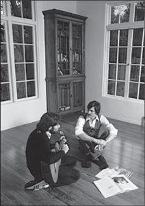
With Wozniak, 1981
С Возняком, 1981 год
Options
Опционы
When Mike Markkula joined Jobs and Wozniak to turn their fledgling partnership into the Apple Computer Co. in January 1977, they valued it at $5,309. Less than four years later they decided it was time to take it public. It would become the most oversubscribed initial public offering since that of Ford Motors in 1956. By the end of December 1980, Apple would be valued at $1.79 billion. Yes, billion. In the process it would make three hundred people millionaires.
| fledgling | молодой, недавно созданный |
| take it public | вывести на биржу |
| oversubscribed | с превышением спроса над предложением |
Когда в январе 1977 года Майк Марккула присоединился к Джобсу и Возняку, чтобы превратить их молодое партнёрство в Apple Computer Co., компанию оценили в 5309 долларов. Менее чем через четыре года они решили, что пора выводить её на биржу. Это станет первичным размещением акций с самым большим превышением спроса со времён Ford Motors в 1956 году. К концу декабря 1980 года Apple будет стоить 1,79 миллиарда долларов. Да, именно миллиарда. В процессе триста человек станут миллионерами.
Daniel Kottke was not one of them. He had been Jobs’s soul mate in college, in India, at the All One Farm, and in the rental house they shared during the Chrisann Brennan crisis. He joined Apple when it was headquartered in Jobs’s garage, and he still worked there as an hourly employee. But he was not at a high enough level to be cut in on the stock options that were awarded before the IPO. “I totally trusted Steve, and I assumed he would take care of me like I’d taken care of him, so I didn’t push,” said Kottke.
| soul mate | родственная душа |
| headquartered | размещалась |
| cut in on | получить долю в |
| take care of me | позаботиться обо мне |
Дэниел Коттке в их число не попал. Он был родственной душой Джобса в колледже, в Индии, на ферме All One Farm и в арендованном доме, который они делили во время кризиса с Крисанн Бреннан. Он пришёл в Apple, когда компания размещалась в гараже Джобса, и всё ещё работал там на почасовой ставке. Но его должность была недостаточно высокой, чтобы получить долю в опционах, розданных перед IPO. «Я полностью доверял Стиву и полагал, что он позаботится обо мне так же, как я заботился о нём, поэтому не настаивал», — говорил Коттке.
The official reason he wasn’t given stock options was that he was an hourly technician, not a salaried engineer, which was the cutoff level for options. Even so, he could have justifiably been given “founder’s stock,” but Jobs decided not to. “Steve is the opposite of loyal,” according to Andy Hertzfeld, an early Apple engineer who has nevertheless remained friends with him. “He’s anti-loyal. He has to abandon the people he is close to.”
| salaried | на окладе |
| cutoff level | пороговый уровень |
| justifiably | обоснованно, по праву |
Официальной причиной отказа в опционах было то, что он — почасовой техник, а не инженер на окладе: оклад и был пороговым уровнем для опционов. И всё же он по праву мог получить «акции основателей», но Джобс решил иначе. «Стив — противоположность верности, — говорил Энди Херцфельд, ранний инженер Apple, который тем не менее остался с ним дружен. — Он антиверность. Ему необходимо бросать близких людей».
Kottke decided to press his case with Jobs by hovering outside his office and catching him to make a plea. But at each encounter, Jobs brushed him off. “What was really so difficult for me is that Steve never told me I wasn’t eligible,” recalled Kottke. “He owed me that as a friend. When I would ask him about stock, he would tell me I had to talk to my manager.”
| press his case | добиваться своего, настаивать на просьбе |
| hovering outside | топчась, дежуря возле |
| plea | просьба, мольба |
| brushed him off | отмахнулся от него |
| owed me | был мне должен |
Коттке решил добиваться своего: дежурил у кабинета Джобса, ловил его и обращался с просьбой. Но при каждой встрече Джобс от него отмахивался. «Труднее всего было то, что Стив ни разу не сказал мне, что я не подхожу, — вспоминал Коттке. — Как друг он был мне это должен. Когда я спрашивал об акциях, он отвечал, что мне надо поговорить со своим начальником».
Finally, almost six months after the IPO, Kottke worked up the courage to march into Jobs’s office and try to hash out the issue. But when he got in to see him, Jobs was so cold that Kottke froze. “I just got choked up and began to cry and just couldn’t talk to him,” Kottke recalled. “Our friendship was all gone. It was so sad.”
| worked up the courage | набрался смелости |
| march into | решительно войти в |
| hash out | уладить, разобрать по существу |
| got choked up | сдавило горло, перехватило дыхание |
Наконец, почти через полгода после IPO, Коттке набрался смелости решительно войти в кабинет Джобса и попытаться уладить вопрос. Но, оказавшись у него, столкнулся с таким холодом, что замер. «У меня просто сдавило горло, я расплакался и не смог с ним говорить, — вспоминал Коттке. — Нашей дружбы больше не было. Это было так грустно».
Rod Holt, the engineer who had built the power supply, was getting a lot of options, and he tried to turn Jobs around. “We have to do something for your buddy Daniel,” he said, and he suggested they each give him some of their own options. “Whatever you give him, I will match it,” said Holt. Replied Jobs, “Okay. I will give him zero.”
| turn Jobs around | переубедить Джобса |
| match it | добавлю столько же |
Род Холт, инженер, создавший блок питания, получил много опционов и попытался переубедить Джобса. «Нужно что-то сделать для твоего приятеля Дэниела, — сказал он и предложил каждому отдать часть своих опционов. — Сколько дашь ты, столько добавлю я», — сказал Холт. Джобс ответил: «Хорошо. Я дам ему ноль».
Wozniak, not surprisingly, had the opposite attitude. Before the shares went public, he decided to sell, at a very low price, two thousand of his options to forty different midlevel employees. Most of his beneficiaries made enough to buy a home. Wozniak bought a dream home for himself and his new wife, but she soon divorced him and kept the house. He also later gave shares outright to employees he felt had been shortchanged, including Kottke, Fernandez, Wigginton, and Espinosa. Everyone loved Wozniak, all the more so after his generosity, but many also agreed with Jobs that he was “awfully naïve and childlike.” A few months later a United Way poster showing a destitute man went up on a company bulletin board. Someone scrawled on it “Woz in 1990.”
| midlevel | среднего звена |
| beneficiaries | получившие выгоду |
| outright | безвозмездно, просто так |
| shortchanged | обделёнными |
| destitute | обнищавший, без гроша |
Возняк, что неудивительно, вёл себя противоположно. До выхода акций на биржу он решил продать по очень низкой цене две тысячи своих опционов сорока разным сотрудникам среднего звена. Большинство облагодетельствованных заработали достаточно, чтобы купить дом. Себе и новой жене Возняк купил дом мечты, но вскоре она развелась с ним и оставила дом себе. Позже он также безвозмездно раздал акции сотрудникам, которых считал обделёнными, включая Коттке, Фернандеса, Виггинтона и Эспиносу. Возняка любили все — после его щедрости ещё сильнее, — но многие соглашались с Джобсом, что он «ужасно наивен и ребячлив». Через несколько месяцев на доску объявлений компании повесили плакат United Way с обнищавшим человеком. Кто-то приписал на нём: «Воз в 1990 году».
Jobs was not naïve. He had made sure his deal with Chrisann Brennan was signed before the IPO occurred. Jobs was the public face of the IPO, and he helped choose the two investment banks handling it: the traditional Wall Street firm Morgan Stanley and the untraditional boutique firm Hambrecht & Quist in San Francisco.
| boutique firm | небольшая специализированная фирма |
Джобс наивным не был. Он позаботился, чтобы соглашение с Крисанн Бреннан было подписано ещё до IPO. Публичным лицом размещения был Джобс, и он помог выбрать два банка, которые его проводили: традиционную уолл-стритскую фирму Morgan Stanley и нетрадиционную специализированную фирму Hambrecht & Quist из Сан-Франциско.
“Steve was very irreverent toward the guys from Morgan Stanley, which was a pretty uptight firm in those days,” recalled Bill Hambrecht. Morgan Stanley planned to price the offering at $18, even though it was obvious the shares would quickly shoot up. “Tell me what happens to this stock that we priced at eighteen?” Jobs asked the bankers. “Don’t you sell it to your good customers? If so, how can you charge me a 7% commission?” Hambrecht recognized that there was a basic unfairness in the system, and he later went on to formulate the idea of a reverse auction to price shares before an IPO.
| irreverent | непочтительный, дерзкий |
| uptight | чопорная, зажатая |
| shoot up | взлететь |
| reverse auction | обратный аукцион |
«Стив вёл себя очень дерзко с ребятами из Morgan Stanley, а та фирма в те годы была довольно чопорной, — вспоминал Билл Хамбрехт. — Morgan Stanley планировала оценить размещение в 18 долларов, хотя было очевидно, что акции быстро взлетят. „Расскажите, что происходит с этими акциями, которые вы оценили в восемнадцать? — спросил банкиров Джобс. — Разве вы не продаёте их своим хорошим клиентам? Если да, то как можете брать с меня 7% комиссии?“» Хамбрехт признал, что в системе есть фундаментальная несправедливость, и позже сформулировал идею обратного аукциона для определения цены акций перед IPO.
Apple went public the morning of December 12, 1980. By then the bankers had priced the stock at $22 a share. It went to $29 the first day. Jobs had come into the Hambrecht & Quist office just in time to watch the opening trades. At age twenty-five, he was now worth $256 million.
| opening trades | первые сделки при открытии торгов |
Apple вышла на биржу утром 12 декабря 1980 года. К тому моменту банкиры оценили акции в 22 доллара за штуку. В первый день цена поднялась до 29. Джобс приехал в офис Hambrecht & Quist как раз к открытию торгов. В двадцать пять лет он стоил 256 миллионов долларов.
Baby You’re a Rich Man
Детка, ты богач
Before and after he was rich, and indeed throughout a life that included being both broke and a billionaire, Steve Jobs’s attitude toward wealth was complex. He was an antimaterialistic hippie who capitalized on the inventions of a friend who wanted to give them away for free, and he was a Zen devotee who made a pilgrimage to India and then decided that his calling was to create a business. And yet somehow these attitudes seemed to weave together rather than conflict.
| throughout | на протяжении |
| capitalized on | заработал на |
| devotee | приверженец |
| calling | призвание |
| weave together | сплетаться воедино |
До и после обретения богатства — и на протяжении всей жизни, в которой были и безденежье, и миллиарды, — отношение Стива Джобса к деньгам было сложным. Он был антиматериалистичным хиппи, заработавшим на изобретениях друга, который хотел раздавать их бесплатно, и приверженцем дзена, совершившим паломничество в Индию, а затем решившим, что его призвание — создавать бизнес. И всё же эти установки как-то сплетались воедино, а не конфликтовали.
He had a great love for some material objects, especially those that were finely designed and crafted, such as Porsche and Mercedes cars, Henckels knives and Braun appliances, BMW motorcycles and Ansel Adams prints, Bösendorfer pianos and Bang & Olufsen audio equipment. Yet the houses he lived in, no matter how rich he became, tended not to be ostentatious and were furnished so simply they would have put a Shaker to shame. Neither then nor later would he travel with an entourage, keep a personal staff, or even have security protection. He bought a nice car, but always drove himself.
| crafted | мастерски изготовленные |
| ostentatious | показные, вычурные |
| put a Shaker to shame | устыдили бы и сектанта-аскета |
| entourage | свита, сопровождение |
Он очень любил некоторые материальные вещи, особенно тонко спроектированные и мастерски сделанные: автомобили Porsche и Mercedes, ножи Henckels и технику Braun, мотоциклы BMW и фотографии Ансела Адамса, рояли Bösendorfer и аудиотехнику Bang & Olufsen. Однако дома, в которых он жил, каким бы богатым он ни становился, не были показными и обставлялись настолько просто, что устыдили бы и аскета-шейкера. Ни тогда, ни позже он не ездил со свитой, не держал личного персонала и даже не имел охраны. Он покупал хорошую машину, но всегда водил сам.
When Markkula asked Jobs to join him in buying a Lear jet, he declined (though he eventually would demand of Apple a Gulfstream to use). Like his father, he could be flinty when bargaining with suppliers, but he didn’t allow a craving for profits to take precedence over his passion for building great products.
| declined | отказался |
| flinty | жёсткий, непреклонный |
| craving for profits | жажда прибыли |
| take precedence over | брать верх над |
Когда Марккула предложил Джобсу вместе купить реактивный самолёт Lear, тот отказался (хотя со временем потребует у Apple Gulfstream в пользование). Как и отец, он бывал жёстким в переговорах с поставщиками, но не позволял жажде прибыли брать верх над страстью к созданию великих продуктов.
Thirty years after Apple went public, he reflected on what it was like to come into money suddenly:
| come into money | получить деньги, разбогатеть |
Через тридцать лет после выхода Apple на биржу он размышлял о том, каково это — внезапно получить деньги:
I never worried about money. I grew up in a middle-class family, so I never thought I would starve. And I learned at Atari that I could be an okay engineer, so I always knew I could get by. I was voluntarily poor when I was in college and India, and I lived a pretty simple life even when I was working. So I went from fairly poor, which was wonderful, because I didn’t have to worry about money, to being incredibly rich, when I also didn’t have to worry about money.
| get by | сводить концы с концами, прожить |
| voluntarily poor | добровольно бедный |
Я никогда не беспокоился о деньгах. Я вырос в семье среднего класса и никогда не думал, что буду голодать. А в Atari я понял, что могу быть сносным инженером, и всегда знал, что проживу. В колледже и в Индии я был добровольно беден, и даже работая, жил довольно просто. Так что я перешёл от довольно бедной жизни — что было прекрасно, потому что не приходилось думать о деньгах, — к невероятному богатству, когда о деньгах тоже не приходилось думать.
I watched people at Apple who made a lot of money and felt they had to live differently. Some of them bought a Rolls-Royce and various houses, each with a house manager and then someone to manage the house managers. Their wives got plastic surgery and turned into these bizarre people. This was not how I wanted to live. It’s crazy. I made a promise to myself that I’m not going to let this money ruin my life.
| bizarre | странные, нелепые |
| ruin | разрушить, испортить |
Я наблюдал за людьми в Apple, которые заработали много денег и решили, что должны жить иначе. Некоторые купили «роллс-ройсы» и разные дома, к каждому — управляющего, а потом и человека, управляющего управляющими. Их жёны сделали пластические операции и превратились в нелепых людей. Я так жить не хотел. Это безумие. Я пообещал себе не позволить этим деньгам разрушить мою жизнь.
He was not particularly philanthropic. He briefly set up a foundation, but he discovered that it was annoying to have to deal with the person he had hired to run it, who kept talking about “venture” philanthropy and how to “leverage” giving. Jobs became contemptuous of people who made a display of philanthropy or thinking they could reinvent it.
| philanthropic | щедрый на благотворительность |
| leverage | умножать, использовать как рычаг |
| contemptuous of | презрительно относился к |
| display | показную демонстрацию |
Особой благотворительностью он не отличался. Однажды ненадолго учредил фонд, но обнаружил, что раздражаться приходится из-за нанятого руководителя, который без конца говорил о «венчурной» благотворительности и о том, как «умножать» пожертвования. Джобс стал презрительно относиться к людям, выставлявшим благотворительность напоказ или считавшим, что они могут её переизобрести.
Earlier he had quietly sent in a $5,000 check to help launch Larry Brilliant’s Seva Foundation to fight diseases of poverty, and he even agreed to join the board. But when Brilliant brought some board members, including Wavy Gravy and Jerry Garcia, to Apple right after its IPO to solicit a donation, Jobs was not forthcoming. He instead worked on finding ways that a donated Apple II and a VisiCalc program could make it easier for the foundation to do a survey it was planning on blindness in Nepal.
| launch | запустить |
| solicit | просить, выпрашивать |
| forthcoming | щедрым, отзывчивым |
| survey | исследование, обследование |
Ранее он тихо отправил чек на 5000 долларов, чтобы помочь запустить фонд Seva Foundation Ларри Бриллианта для борьбы с болезнями бедности, и даже согласился войти в совет. Но когда сразу после IPO Бриллиант привёл в Apple нескольких членов совета, включая Уэйви Грейви и Джерри Гарсию, просить пожертвование, Джобс щедрости не проявил. Вместо этого он стал искать способы, чтобы подаренный Apple II с программой VisiCalc помог фонду провести планировавшееся обследование слепоты в Непале.
His biggest personal gift was to his parents, Paul and Clara Jobs, to whom he gave about $750,000 worth of stock. They sold some to pay off the mortgage on their Los Altos home, and their son came over for the little celebration. “It was the first time in their lives they didn’t have a mortgage,” Jobs recalled. “They had a handful of their friends over for the party, and it was really nice.” Still, they didn’t consider buying a nicer house. “They weren’t interested in that,” Jobs said. “They had a life they were happy with.” Their only splurge was to take a Princess cruise each year. The one through the Panama Canal “was the big one for my dad,” according to Jobs, because it reminded him of when his Coast Guard ship went through on its way to San Francisco to be decommissioned.
| pay off the mortgage | выплатить ипотеку |
| handful of | горстка |
| splurge | расточительство, баловство |
Самым большим личным подарком стали акции примерно на 750 000 долларов для родителей, Пола и Клары Джобс. Часть они продали, чтобы выплатить ипотеку за дом в Лос-Альтосе, и сын приехал на маленькое торжество. «Это был первый раз в их жизни без ипотеки, — вспоминал Джобс. — Они позвали горстку друзей на вечеринку, и было очень тепло». Покупать дом получше они, однако, не собирались. «Им это было неинтересно, — говорил Джобс. — У них была жизнь, которой они довольны». Единственной их тратой-баловством стал ежегодный круиз компании Princess. Тот, что шёл через Панамский канал, «стал для папы главным», по словам Джобса, потому что напомнил, как его корабль Береговой охраны проходил каналом по пути в Сан-Франциско, где его должны были списать.
With Apple’s success came fame for its poster boy. Inc. became the first magazine to put him on its cover, in October 1981. “This man has changed business forever,” it proclaimed. It showed Jobs with a neatly trimmed beard and well-styled long hair, wearing blue jeans and a dress shirt with a blazer that was a little too satiny. He was leaning on an Apple II and looking directly into the camera with the mesmerizing stare he had picked up from Robert Friedland.
| poster boy | лицо-символ, главный герой обложек |
| satiny | атласный, отливающий блеском |
| mesmerizing | гипнотизирующий |
С успехом Apple к её лицу-символу пришла слава. Первым журналом, поместившим его на обложку, в октябре 1981 года стал Inc. «Этот человек изменил бизнес навсегда», — провозглашал он. На фото Джобс с аккуратно подстриженной бородой и хорошо уложенными длинными волосами, в джинсах, рубашке и слегка слишком атласном блейзере. Он опирался на Apple II и смотрел прямо в камеру гипнотизирующим взглядом, перенятым у Роберта Фридланда.
“When Steve Jobs speaks, it is with the gee-whiz enthusiasm of someone who sees the future and is making sure it works,” the magazine reported. Time followed in February 1982 with a package on young entrepreneurs. The cover was a painting of Jobs, again with his hypnotic stare. Jobs, said the main story, “practically singlehanded created the personal computer industry.”
| gee-whiz | восторженный, полный изумления |
| package | подборка материалов |
| practically singlehanded | практически в одиночку |
«Когда Стив Джобс говорит, в его словах восторженный энтузиазм человека, который видит будущее и заботится, чтобы оно работало», — писала редакция. Затем, в феврале 1982 года, последовал Time с подборкой о молодых предпринимателях. На обложке был живописный портрет Джобса — снова с гипнотическим взглядом. Джобс, говорилось в главной статье, «практически в одиночку создал индустрию персональных компьютеров».
The accompanying profile, written by Michael Moritz, noted, “At 26, Jobs heads a company that six years ago was located in a bedroom and garage of his parents’ house, but this year it is expected to have sales of $600 million. . . . As an executive, Jobs has sometimes been petulant and harsh on subordinates. Admits he: ‘I’ve got to learn to keep my feelings private.’”
| profile | очерк, портрет |
| petulant | капризный, раздражительный |
В сопроводительном очерке Майкла Морица отмечалось: «В 26 лет Джобс возглавляет компанию, которая шесть лет назад располагалась в спальне и гараже дома его родителей, а в этом году, как ожидается, получит продажи на 600 миллионов долларов… Как руководитель Джобс порой бывает капризным и резким с подчинёнными. Он признаёт: „Мне надо научиться держать чувства при себе“».
Despite his new fame and fortune, he still fancied himself a child of the counterculture. On a visit to a Stanford class, he took off his Wilkes Bashford blazer and his shoes, perched on top of a table, and crossed his legs into a lotus position. The students asked questions, such as when Apple’s stock price would rise, which Jobs brushed off. Instead he spoke of his passion for future products, such as someday making a computer as small as a book.
| fancied himself | воображал себя |
| perched on top of | взобрался и уселся на |
| lotus position | поза лотоса |
| brushed off | отмахнулся от |
Несмотря на новую славу и состояние, он по-прежнему воображал себя ребёнком контркультуры. Придя на занятие в Стэнфорде, он снял блейзер от Wilkes Bashford и обувь, взобрался на стол и скрестил ноги в позе лотоса. Студенты задавали вопросы, например когда вырастут акции Apple, — от таких Джобс отмахивался. Вместо этого он говорил о страсти к будущим продуктам, например к тому, чтобы однажды сделать компьютер размером с книгу.
When the business questions tapered off, Jobs turned the tables on the well-groomed students. “How many of you are virgins?” he asked. There were nervous giggles. “How many of you have taken LSD?” More nervous laughter, and only one or two hands went up. Later Jobs would complain about the new generation of kids, who seemed to him more materialistic and careerist than his own. “When I went to school, it was right after the sixties and before this general wave of practical purposefulness had set in,” he said.
| tapered off | постепенно иссякли |
| turned the tables on | поменялся ролями, сам начал расспрашивать |
| careerist | карьеристский |
| set in | наступила, установилась |
Когда деловые вопросы иссякли, Джобс поменялся ролями с холёными студентами и сам начал расспрашивать. «Кто из вас девственники?» — спросил он. Послышались нервные смешки. «Кто из вас пробовал ЛСД?» Снова нервный смех, и поднялись лишь одна-две руки. Позже Джобс жаловался на новое поколение ребят, которые казались ему более материалистичными и карьеристскими, чем его собственное. «Когда я учился в школе, это было сразу после шестидесятых и до того, как наступила эта всеобщая волна практической целеустремлённости», — говорил он.
“Now students aren’t even thinking in idealistic terms, or at least nowhere near as much.” His generation, he said, was different. “The idealistic wind of the sixties is still at our backs, though, and most of the people I know who are my age have that ingrained in them forever.”
| ingrained | запечатлено навсегда, вросло |
«Нынешние студенты даже не мыслят идеалистическими категориями — или, по крайней мере, далеко не в той степени». Его поколение, говорил он, было другим. «Идеалистический ветер шестидесятых всё ещё дует нам в спину, и у большинства моих ровесников, кого я знаю, это запечатлено навсегда».
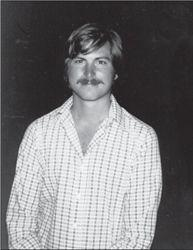
Jobs in 1982
Джобс в 1982 году
Jef Raskin’s Baby
Детище Джефа Раскина
Jef Raskin was the type of character who could enthrall Steve Jobs—or annoy him. As it turned out, he did both. A philosophical guy who could be both playful and ponderous, Raskin had studied computer science, taught music and visual arts, conducted a chamber opera company, and organized guerrilla theater. His 1967 doctoral thesis at U.C. San Diego argued that computers should have graphical rather than text-based interfaces. When he got fed up with teaching, he rented a hot air balloon, flew over the chancellor’s house, and shouted down his decision to quit.
| enthrall | очаровать, увлечь |
| ponderous | тяжеловесный, занудный |
| got fed up with | сыт по горло, надоело |
Джеф Раскин был из тех, кто мог очаровать Стива Джобса — или раздражать его. Как оказалось, он делал и то и другое. Философский человек, умевший быть и игривым, и тяжеловесным, Раскин изучал информатику, преподавал музыку и изобразительное искусство, руководил камерным оперным коллективом и устраивал уличные театральные акции. Его докторская диссертация 1967 года в U.C. San Diego доказывала, что компьютерам нужны графические, а не текстовые интерфейсы. Когда преподавание ему надоело, он арендовал воздушный шар, пролетел над домом ректора и прокричал сверху о своём решении уйти.
When Jobs was looking for someone to write a manual for the Apple II in 1976, he called Raskin, who had his own little consulting firm. Raskin went to the garage, saw Wozniak beavering away at a workbench, and was convinced by Jobs to write the manual for $50. Eventually he became the manager of Apple’s publications department. One of Raskin’s dreams was to build an inexpensive computer for the masses, and in 1979 he convinced Mike Markkula to put him in charge of a small development project code-named “Annie” to do just that.
| beavering away | усердно трудясь, корпя |
| code-named | под кодовым названием |
Когда в 1976 году Джобс искал, кому поручить написать руководство для Apple II, он позвонил Раскину, у которого была своя маленькая консалтинговая фирма. Раскин приехал в гараж, увидел усердно корпящего за верстаком Возняка, и Джобс уговорил его написать руководство за 50 долларов. Со временем он стал руководителем издательского отдела Apple. Одной из мечт Раскина было построить недорогой компьютер для масс, и в 1979 году он убедил Майка Марккулу поставить его во главе небольшого проекта разработки под кодовым названием «Annie» именно с этой целью.
Since Raskin thought it was sexist to name computers after women, he redubbed the project in honor of his favorite type of apple, the McIntosh. But he changed the spelling in order not to conflict with the name of the audio equipment maker McIntosh Laboratory. The proposed computer became known as the Macintosh.
| sexist | сексистский, ущемляющий женщин |
| redubbed | переименовал |
Поскольку Раскин считал сексизмом называть компьютеры женскими именами, он переименовал проект в честь своего любимого сорта яблок — макинтош. Но написание изменил, чтобы не конфликтовать с производителем аудиотехники McIntosh Laboratory. Будущий компьютер стал называться Macintosh.
Raskin envisioned a machine that would sell for $1,000 and be a simple appliance, with screen and keyboard and computer all in one unit. To keep the cost down, he proposed a tiny five-inch screen and a very cheap (and underpowered) microprocessor, the Motorola 6809. Raskin fancied himself a philosopher, and he wrote his thoughts in an ever-expanding notebook that he called “The Book of Macintosh.” He also issued occasional manifestos. One of these was called “Computers by the Millions,” and it began with an aspiration: “If personal computers are to be truly personal, it will have to be as likely as not that a family, picked at random, will own one.”
| appliance | бытовой прибор |
| keep the cost down | удержать цену низкой |
| fancied himself | воображал себя |
| manifestos | манифесты |
| aspiration | устремление, мечта |
Раскин представлял машину за 1000 долларов — простой бытовой прибор, где экран, клавиатура и компьютер в одном корпусе. Чтобы удержать цену, он предлагал крошечный пятидюймовый экран и очень дешёвый (и слабый) микропроцессор Motorola 6809. Раскин воображал себя философом и записывал мысли в постоянно растущую тетрадь под названием «Книга Macintosh». Изредка он выпускал манифесты. Один назывался «Компьютеры миллионами» и начинался с устремления: «Если персональные компьютеры должны стать по-настоящему личными, то с равной вероятностью любая случайно выбранная семья должна владеть одним из них».
Throughout 1979 and early 1980 the Macintosh project led a tenuous existence. Every few months it would almost get killed off, but each time Raskin managed to cajole Markkula into granting clemency. It had a research team of only four engineers located in the original Apple office space next to the Good Earth restaurant, a few blocks from the company’s new main building. The work space was filled with enough toys and radio-controlled model airplanes (Raskin’s passion) to make it look like a day care center for geeks. Every now and then work would cease for a loosely organized game of Nerf ball tag. Andy Hertzfeld recalled, “This inspired everyone to surround their work area with barricades made out of cardboard, to provide cover during the game, making part of the office look like a cardboard maze.”
| tenuous | шаткое, непрочное |
| get killed off | быть закрытым, ликвидированным |
| cajole | уговорить, улестить |
| clemency | помилование |
| cease | прекращаться |
| barricades | баррикады |
Весь 1979 год и начало 1980-го проект Macintosh влачил шаткое существование. Каждые несколько месяцев его чуть не закрывали, но Раскину каждый раз удавалось выпросить у Марккулы помилование. Команда из четырёх инженеров сидела в старом помещении Apple рядом с рестораном Good Earth, в нескольких кварталах от нового главного здания компании. Рабочее пространство было завалено игрушками и радиоуправляемыми моделями самолётов (страсть Раскина), так что походило на детский сад для гиков. Время от времени работа останавливалась ради вольной игры в салочки с мячиком Nerf. «Это побудило всех окружить рабочие места баррикадами из картона, чтобы прятаться во время игры, — вспоминал Энди Херцфельд, — и часть офиса стала похожа на картонный лабиринт».
The star of the team was a blond, cherubic, and psychologically intense self-taught young engineer named Burrell Smith, who worshipped the code work of Wozniak and tried to pull off similar dazzling feats. Atkinson discovered Smith working in Apple’s service department and, amazed at his ability to improvise fixes, recommended him to Raskin. Smith would later succumb to schizophrenia, but in the early 1980s he was able to channel his manic intensity into weeklong binges of engineering brilliance.
| cherubic | херувимский, ангельский |
| pull off | совершать, проворачивать |
| improvise fixes | на ходу чинить |
| succumb to | поддаться, заболеть |
| channel | направлять |
| binges | запои, марафоны |
Звездой команды был белокурый, ангельского вида и психологически напряжённый молодой инженер-самоучка Баррелл Смит, боготворивший код Возняка и пытавшийся совершать такие же ослепительные подвиги. Аткинсон нашёл Смита в сервисном отделе Apple и, поражённый его умением чинить всё на ходу, порекомендовал его Раскину. Позже Смит заболеет шизофренией, но в начале 1980-х умел направлять свою маниакальную энергию в недельные марафоны инженерной гениальности.
Jobs was enthralled by Raskin’s vision, but not by his willingness to make compromises to keep down the cost. At one point in the fall of 1979 Jobs told him instead to focus on building what he repeatedly called an “insanely great” product. “Don’t worry about price, just specify the computer’s abilities,” Jobs told him. Raskin responded with a sarcastic memo. It spelled out everything you would want in the proposed computer: a high-resolution color display, a printer that worked without a ribbon and could produce graphics in color at a page per second, unlimited access to the ARPA net, and the capability to recognize speech and synthesize music, “even simulate Caruso singing with the Mormon tabernacle choir, with variable reverberation.”
| compromises | компромиссы, уступки |
| specify | определить, задать |
| sarcastic | саркастичный |
Джобса восхищало видение Раскина, но не его готовность идти на компромиссы ради снижения цены. Однажды осенью 1979 года Джобс велел ему сосредоточиться на создании «безумно великого» продукта — так он повторял без конца. «Не думай о цене, просто определи способности компьютера», — сказал Джобс. Раскин ответил саркастичной запиской, перечислив всё, чего можно пожелать будущему компьютеру: цветной дисплей высокого разрешения, принтер без красящей ленты, печатающий цветную графику со скоростью страница в секунду, безлимитный доступ к сети ARPA, распознавание речи и синтез музыки — «даже имитация Карузо, поющего с мормонским хором при изменяемой реверберации».
The memo concluded, “Starting with the abilities desired is nonsense. We must start both with a price goal, and a set of abilities, and keep an eye on today’s and the immediate future’s technology.” In other words, Raskin had little patience for Jobs’s belief that you could distort reality if you had enough passion for your product.
| nonsense | чушь, бессмыслица |
| keep an eye on | следить за |
Записка завершалась: «Начинать с желаемых способностей — бессмыслица. Нужно начинать и с цели по цене, и с набора способностей, следя за сегодняшними технологиями и технологиями ближайшего будущего». Иными словами, Раскину не хватало терпения для веры Джобса в то, что реальность можно исказить, если достаточно страсти к своему продукту.
Thus they were destined to clash, especially after Jobs was ejected from the Lisa project in September 1980 and began casting around for someplace else to make his mark. It was inevitable that his gaze would fall on the Macintosh project. Raskin’s manifestos about an inexpensive machine for the masses, with a simple graphic interface and clean design, stirred his soul. And it was also inevitable that once Jobs set his sights on the Macintosh project, Raskin’s days were numbered. “Steve started acting on what he thought we should do, Jef started brooding, and it instantly was clear what the outcome would be,” recalled Joanna Hoffman, a member of the Mac team.
| destined to clash | обречены столкнуться |
| ejected from | вытеснен из, изгнан из |
| casting around for | ища, подыскивая |
| stirred his soul | взволновали его душу |
| set his sights on | нацелился на |
| were numbered | были сочтены |
Так что столкновение было неизбежно — особенно после того, как в сентябре 1980 года Джобса вытеснили из проекта Lisa и он начал искать, где ещё оставить свой след. Его взгляд неминуемо упал на проект Macintosh. Манифесты Раскина о недорогой машине для масс с простым графическим интерфейсом и чистым дизайном взволновали ему душу. И так же неизбежно было, что, как только Джобс нацелился на Macintosh, дни Раскина оказались сочтены. «Стив начал действовать так, как сам считал нужным, Джеф начал мрачнеть, и исход стал мгновенно ясен», — вспоминала Джоанна Хоффман, участница команды Mac.
The first conflict was over Raskin’s devotion to the underpowered Motorola 6809 microprocessor. Once again it was a clash between Raskin’s desire to keep the Mac’s price under $1,000 and Jobs’s determination to build an insanely great machine. So Jobs began pushing for the Mac to switch to the more powerful Motorola 68000, which is what the Lisa was using. Just before Christmas 1980, he challenged Burrell Smith, without telling Raskin, to make a redesigned prototype that used the more powerful chip. As his hero Wozniak would have done, Smith threw himself into the task around the clock, working nonstop for three weeks and employing all sorts of breathtaking programming leaps. When he succeeded, Jobs was able to force the switch to the Motorola 68000, and Raskin had to brood and recalculate the cost of the Mac.
| threw himself into | с головой ушёл в |
| brood | мрачно размышлять |
Первый конфликт разгорелся из-за приверженности Раскина слабому микропроцессору Motorola 6809. Это снова было столкновение между желанием Раскина удержать цену Mac ниже 1000 долларов и решимостью Джобса построить безумно великую машину. Джобс стал настаивать на переходе на более мощный Motorola 68000 — тот же, что использовался в Lisa. Перед самым Рождеством 1980 года он, не сказав Раскину, бросил Барреллу Смиту вызов: сделать новый прототип на более мощном чипе. Как сделал бы его герой Возняк, Смит с головой ушёл в работу, трудился без остановки три недели, совершая умопомрачительные программистские прорывы. Когда у него получилось, Джобс продавил переход на Motorola 68000, а Раскину осталось мрачно пересчитывать стоимость Mac.
There was something larger at stake. The cheaper microprocessor that Raskin wanted would not have been able to accommodate all of the gee-whiz graphics—windows, menus, mouse, and so on—that the team had seen on the Xerox PARC visits. Raskin had convinced everyone to go to Xerox PARC, and he liked the idea of a bitmapped display and windows, but he was not as charmed by all the cute graphics and icons, and he absolutely detested the idea of using a point-and-click mouse rather than the keyboard. “Some of the people on the project became enamored of the quest to do everything with the mouse,” he later groused. “Another example is the absurd application of icons. An icon is a symbol equally incomprehensible in all human languages. There’s a reason why humans invented phonetic languages.”
| at stake | на кону |
| accommodate | вместить, поддержать |
| charmed by | очарован |
| detested | ненавидел |
| enamored of | увлечены |
На кону было нечто большее. Более дешёвый процессор, которого хотел Раскин, не смог бы вместить всю потрясающую графику — окна, меню, мышь и прочее, — которую команда увидела во время визитов в Xerox PARC. Раскин сам убедил всех съездить туда, идея растрового экрана и окон ему нравилась, но милая графика и значки его не очаровали, а мысль о мыши с наведением и щелчком вместо клавиатуры он откровенно ненавидел. «Кое-кто в проекте увлёкся стремлением делать всё мышью, — ворчал он позже. — Ещё пример — нелепое применение значков. Значок — символ, одинаково непонятный на всех человеческих языках. Не зря люди изобрели фонетические языки».
Raskin’s former student Bill Atkinson sided with Jobs. They both wanted a powerful processor that could support whizzier graphics and the use of a mouse. “Steve had to take the project away from Jef,” Atkinson said. “Jef was pretty firm and stubborn, and Steve was right to take it over. The world got a better result.”
| sided with | встал на сторону |
| whizzier | более навороченной |
| take the project away from | отобрать проект у |
| take it over | взять его под свой контроль |
Бывший студент Раскина Билл Аткинсон встал на сторону Джобса. Оба хотели мощный процессор ради более навороченной графики и мыши. «Стиву пришлось отобрать проект у Джефа, — говорил Аткинсон. — Джеф был упрям и твёрд, и Стив правильно сделал, что взял всё под контроль. Мир получил лучший результат».
The disagreements were more than just philosophical; they became clashes of personality. “I think that he likes people to jump when he says jump,” Raskin once said. “I felt that he was untrustworthy, and that he does not take kindly to being found wanting. He doesn’t seem to like people who see him without a halo.” Jobs was equally dismissive of Raskin. “Jef was really pompous,” he said. “He didn’t know much about interfaces. So I decided to nab some of his people who were really good, like Atkinson, bring in some of my own, take the thing over and build a less expensive Lisa, not some piece of junk.”
| clashes of personality | столкновения характеров |
| dismissive of | пренебрежителен к |
| pompous | напыщенный |
| nab | переманить, увести |
Разногласия были не только философскими — они стали столкновениями характеров. «Думаю, ему нравится, когда люди прыгают по его команде, — как-то сказал Раскин. — Я чувствовал, что ему нельзя доверять и что он не любит, когда его уличают в несовершенстве. Ему, похоже, не нравятся те, кто видит его без нимба». Джобс был к Раскину столь же пренебрежителен. «Джеф был по-настоящему напыщенным, — говорил он. — Он мало смыслил в интерфейсах. Поэтому я решил переманить пару его действительно сильных людей, как Аткинсон, привести своих, прибрать всё к рукам и построить более дешёвую Lisa, а не какую-то рухлядь».
Some on the team found Jobs impossible to work with. “Jobs seems to introduce tension, politics, and hassles rather than enjoying a buffer from those distractions,” one engineer wrote in a memo to Raskin in December 1980. “I thoroughly enjoy talking with him, and I admire his ideas, practical perspective, and energy. But I just don’t feel that he provides the trusting, supportive, relaxed environment that I need.”
| buffer | защита, буфер |
Кое-кто в команде считал работу с Джобсом невозможной. «Джобс, похоже, приносит с собой напряжённость, политику и дрязги, вместо того чтобы радоваться защите от этих помех», — писал один инженер Раскину в записке в декабре 1980 года. «Мне очень нравится с ним разговаривать, я восхищаюсь его идеями, практическим взглядом и энергией. Но я просто не чувствую, что он создаёт ту доверительную, поддерживающую, спокойную среду, которая мне нужна».
But many others realized that despite his temperamental failings, Jobs had the charisma and corporate clout that would lead them to “make a dent in the universe.” Jobs told the staff that Raskin was just a dreamer, whereas he was a doer and would get the Mac done in a year. It was clear he wanted vindication for having been ousted from the Lisa group, and he was energized by competition. He publicly bet John Couch $5,000 that the Mac would ship before the Lisa. “We can make a computer that’s cheaper and better than the Lisa, and get it out first,” he told the team.
| temperamental failings | недостатки характера |
| clout | вес, влияние |
| doer | человек дела |
| vindication | оправдание, реванш |
| energized by | подпитан |
| get it out first | выпустить первыми |
Но многие другие понимали: несмотря на недостатки характера, у Джобса есть харизма и корпоративный вес, которые помогут «оставить след во вселенной». Джобс говорил сотрудникам, что Раскин лишь мечтатель, а он — человек дела и закончит Mac за год. Было ясно: он жаждет реванша за изгнание из группы Lisa, а конкуренция его подпитывает. Он публично поспорил с Джоном Каучем на 5000 долларов, что Mac выйдет раньше Lisa. «Мы сделаем компьютер дешевле и лучше Lisa и выпустим его первыми», — сказал он команде.
Jobs asserted his control of the group by canceling a brown-bag lunch seminar that Raskin was scheduled to give to the whole company in February 1981. Raskin happened to go by the room anyway and discovered that there were a hundred people there waiting to hear him; Jobs had not bothered to notify anyone else about his cancellation order. So Raskin went ahead and gave a talk.
| brown-bag | неформальный, с едой с собой |
| happened to go by | случайно проходил мимо |
Джобс утвердил власть над группой, отменив неформальный обеденный семинар, который Раскин должен был провести для всей компании в феврале 1981 года. Раскин всё равно случайно проходил мимо зала и обнаружил, что его ждут сто человек: Джобс не потрудился никого уведомить об отмене. Так что Раскин просто взял и выступил.
That incident led Raskin to write a blistering memo to Mike Scott, who once again found himself in the difficult position of being a president trying to manage a company’s temperamental cofounder and major stockholder. It was titled “Working for/with Steve Jobs,” and in it Raskin asserted:
| blistering | разгромная, обжигающая |
Этот случай побудил Раскина написать разгромную записку Майку Скотту, который снова оказался в трудном положении президента, пытающегося управлять вспыльчивым сооснователем и крупнейшим акционером компании. Называлась она «Работать на Стива Джобса / со Стивом Джобсом», и в ней Раскин утверждал:
He is a dreadful manager. . . . I have always liked Steve, but I have found it impossible to work for him. . . . Jobs regularly misses appointments. This is so well-known as to be almost a running joke. . . . He acts without thinking and with bad judgment. . . . He does not give credit where due. . . . Very often, when told of a new idea, he will immediately attack it and say that it is worthless or even stupid, and tell you that it was a waste of time to work on it. This alone is bad management, but if the idea is a good one he will soon be telling people about it as though it was his own.
| dreadful | ужасный |
| misses appointments | пропускает встречи |
| give credit where due | воздавать должное |
Он ужасный руководитель… Мне всегда нравился Стив, но работать на него оказалось невозможно… Джобс регулярно пропускает встречи. Это известно настолько, что стало почти дежурной шуткой… Он действует не подумав, с плохим суждением… Он не воздаёт должное… Очень часто, услышав о новой идее, он тут же набрасывается на неё, называет бесполезной или даже глупой и говорит, что работать над ней было пустой тратой времени. Уже одно это — плохое управление, но если идея хороша, он вскоре будет рассказывать о ней как о своей собственной.
That afternoon Scott called in Jobs and Raskin for a showdown in front of Markkula. Jobs started crying. He and Raskin agreed on only one thing: Neither could work for the other one. On the Lisa project, Scott had sided with Couch. This time he decided it was best to let Jobs win. After all, the Mac was a minor development project housed in a distant building that could keep Jobs occupied away from the main campus. Raskin was told to take a leave of absence. “They wanted to humor me and give me something to do, which was fine,” Jobs recalled. “It was like going back to the garage for me. I had my own ragtag team and I was in control.”
| showdown | решающее разбирательство |
| leave of absence | отпуск без содержания |
| humor | уважить, ублажить |
| ragtag | разношёрстная |
В тот же день Скотт вызвал Джобса и Раскина на разбирательство перед Марккулой. Джобс расплакался. С Раскиным они сошлись лишь в одном: работать друг на друга не сможет никто из них. В проекте Lisa Скотт встал на сторону Кауча. На этот раз он решил, что лучше дать выиграть Джобсу. В конце концов, Mac был второстепенным проектом в отдалённом здании и мог занять Джобса вдали от главного кампуса. Раскину велели уйти в отпуск. «Они хотели ублажить меня и дать занятие, что меня устроило, — вспоминал Джобс. — Для меня это было как возвращение в гараж. У меня была своя разношёрстная команда, и я всё контролировал».
Raskin’s ouster may not have seemed fair, but it ended up being good for the Macintosh. Raskin wanted an appliance with little memory, an anemic processor, a cassette tape, no mouse, and minimal graphics. Unlike Jobs, he might have been able to keep the price down to close to $1,000, and that may have helped Apple win market share. But he could not have pulled off what Jobs did, which was to create and market a machine that would transform personal computing. In fact we can see where the road not taken led. Raskin was hired by Canon to build the machine he wanted. “It was the Canon Cat, and it was a total flop,” Atkinson said. “Nobody wanted it. When Steve turned the Mac into a compact version of the Lisa, it made it into a computing platform instead of a consumer electronic device.”
| ouster | изгнание, смещение |
| ended up being | в итоге оказалось |
| anemic | маломощный, анемичный |
| pulled off | осуществить |
| the road not taken | непройденный путь |
| flop | провал |
Смещение Раскина могло казаться несправедливым, но в итоге пошло Macintosh на пользу. Раскин хотел прибор с малой памятью, маломощным процессором, кассетной лентой, без мыши и с минимальной графикой. В отличие от Джобса, он, возможно, удержал бы цену у отметки в 1000 долларов, что помогло бы Apple завоевать рынок. Но ему было бы не под силу то, что сделал Джобс: создать и вывести на рынок машину, изменившую персональные вычисления. Мы видим, куда вёл непройденный путь: Раскина наняла Canon строить ту машину, что он хотел. «Это был Canon Cat — полный провал, — говорил Аткинсон. — Он никому не был нужен. Когда Стив превратил Mac в компактную версию Lisa, он сделал его вычислительной платформой, а не бытовым электронным прибором».
Texaco Towers
Башни Texaco
A few days after Raskin left, Jobs appeared at the cubicle of Andy Hertzfeld, a young engineer on the Apple II team, who had a cherubic face and impish demeanor similar to his pal Burrell Smith’s. Hertzfeld recalled that most of his colleagues were afraid of Jobs “because of his spontaneous temper tantrums and his proclivity to tell everyone exactly what he thought, which often wasn’t very favorable.” But Hertzfeld was excited by him. “Are you any good?” Jobs asked the moment he walked in. “We only want really good people working on the Mac, and I’m not sure you’re good enough.” Hertzfeld knew how to answer. “I told him that yes, I thought that I was pretty good.”
| impish | озорной |
| temper tantrums | вспышки гнева, истерики |
| proclivity | склонность |
Через несколько дней после ухода Раскина Джобс появился у рабочего места Энди Херцфельда, молодого инженера команды Apple II, с ангельским лицом и озорной манерой, как у его приятеля Баррелла Смита. Херцфельд вспоминал, что большинство коллег боялись Джобса «из-за его внезапных вспышек гнева и склонности высказывать каждому ровно то, что он думает, — а думал он часто не самое лестное». Но Херцфельда он восхищал. «Ты вообще хорош?» — спросил Джобс с порога. «Мы берём на Mac только по-настоящему хороших людей, и я не уверен, что ты достаточно хорош». Херцфельд знал, что ответить. «Я сказал ему: да, думаю, я довольно хорош».
Jobs left, and Hertzfeld went back to his work. Later that afternoon he looked up to see Jobs peering over the wall of his cubicle. “I’ve got good news for you,” he said. “You’re working on the Mac team now. Come with me.”
| peering over | заглядывая через |
Джобс ушёл, и Херцфельд вернулся к работе. Позже в тот же день он поднял глаза и увидел Джобса, заглядывающего через стенку его кабинки. «У меня для тебя хорошие новости, — сказал он. — Теперь ты в команде Mac. Пошли со мной».
Hertzfeld replied that he needed a couple more days to finish the Apple II product he was in the middle of. “What’s more important than working on the Macintosh?” Jobs demanded. Hertzfeld explained that he needed to get his Apple II DOS program in good enough shape to hand it over to someone. “You’re just wasting your time with that!” Jobs replied. “Who cares about the Apple II? The Apple II will be dead in a few years. The Macintosh is the future of Apple, and you’re going to start on it now!” With that, Jobs yanked out the power cord to Hertzfeld’s Apple II, causing the code he was working on to vanish.
| hand it over | передать другому |
| yanked out | выдернул |
| vanish | исчезнуть |
Херцфельд ответил, что ему нужно ещё пару дней, чтобы закончить начатый продукт для Apple II. «Что может быть важнее работы над Macintosh?» — потребовал Джобс. Херцфельд объяснил, что нужно довести программу DOS для Apple II до состояния, в котором её можно кому-то передать. «Ты просто тратишь на это время! — ответил Джобс. — Кому какое дело до Apple II? Через несколько лет он умрёт. Macintosh — будущее Apple, и ты начнёшь прямо сейчас!» С этими словами Джобс выдернул шнур питания из Apple II Херцфельда, и код, над которым тот работал, исчез.
“Come with me,” Jobs said. “I’m going to take you to your new desk.” Jobs drove Hertzfeld, computer and all, in his silver Mercedes to the Macintosh offices. “Here’s your new desk,” he said, plopping him in a space next to Burrell Smith. “Welcome to the Mac team!” The desk had been Raskin’s. In fact Raskin had left so hastily that some of the drawers were still filled with his flotsam and jetsam, including model airplanes.
| plopping | усадив, пристроив |
| hastily | поспешно |
| flotsam and jetsam | пожитки, всякая всячина |
«Пошли со мной, — сказал Джобс. — Отвезу тебя к твоему новому столу». На серебристом «Мерседесе» он отвёз Херцфельда вместе с компьютером в офисы Macintosh. «Вот твой новый стол», — сказал он, пристроив его рядом с Барреллом Смитом. «Добро пожаловать в команду Mac!» Стол раньше был раскинским. Тот уехал так поспешно, что часть ящиков ещё была набита его пожитками, включая модели самолётов.
Jobs’s primary test for recruiting people in the spring of 1981 to be part of his merry band of pirates was making sure they had a passion for the product. He would sometimes bring candidates into a room where a prototype of the Mac was covered by a cloth, dramatically unveil it, and watch. “If their eyes lit up, if they went right for the mouse and started pointing and clicking, Steve would smile and hire them,” recalled Andrea Cunningham. “He wanted them to say ‘Wow!’”
| merry band of pirates | весёлая шайка пиратов |
| unveil | торжественно открыть, снять покров |
Главным испытанием при найме весной 1981 года для вступления в его «весёлую шайку пиратов» была страсть к продукту. Иногда он приводил кандидатов в комнату, где прототип Mac стоял под тканью, театрально снимал её и наблюдал. «Если у них загорались глаза, если они сразу тянулись к мыши и начинали наводить и щёлкать, Стив улыбался и нанимал их, — вспоминала Андреа Каннингем. — Он хотел услышать от них „Вау!“».
Bruce Horn was one of the programmers at Xerox PARC. When some of his friends, such as Larry Tesler, decided to join the Macintosh group, Horn considered going there as well. But he got a good offer, and a $15,000 signing bonus, to join another company. Jobs called him on a Friday night. “You have to come into Apple tomorrow morning,” he said. “I have a lot of stuff to show you.” Horn did, and Jobs hooked him. “Steve was so passionate about building this amazing device that would change the world,” Horn recalled. “By sheer force of his personality, he changed my mind.”
| signing bonus | подъёмные, бонус за подписание |
| hooked him | зацепил его |
| sheer force | одной лишь силой |
Брюс Хорн был одним из программистов Xerox PARC. Когда его друзья, например Ларри Теслер, решили присоединиться к группе Macintosh, Хорн тоже подумывал об этом. Но у него было хорошее предложение и подъёмные 15 000 долларов от другой компании. Джобс позвонил ему в пятницу вечером. «Завтра утром ты должен приехать в Apple, — сказал он. — Мне есть что тебе показать». Хорн приехал, и Джобс его зацепил. «Стив так горел созданием этого поразительного устройства, которое изменит мир, — вспоминал Хорн. — Одной лишь силой своей личности он меня переубедил».
Jobs showed Horn exactly how the plastic would be molded and would fit together at perfect angles, and how good the board was going to look inside. “He wanted me to see that this whole thing was going to happen and it was thought out from end to end. Wow, I said, I don’t see that kind of passion every day. So I signed up.”
| molded | отлит из формы |
| thought out from end to end | продумано от начала до конца |
Джобс показал Хорну, как именно пластик будет отливаться и сходиться под идеальными углами и как хорошо будет выглядеть плата внутри. «Он хотел, чтобы я увидел: всё это случится, и всё продумано от начала до конца. „Вау“, — сказал я, — такую страсть видишь не каждый день. Так что я подписался».
Jobs even tried to reengage Wozniak. “I resented the fact that he had not been doing much, but then I thought, hell, I wouldn’t be here without his brilliance,” Jobs later told me. But as soon as Jobs was starting to get him interested in the Mac, Wozniak crashed his new single-engine Beechcraft while attempting a takeoff near Santa Cruz. He barely survived and ended up with partial amnesia. Jobs spent time at the hospital, but when Wozniak recovered he decided it was time to take a break from Apple. Ten years after dropping out of Berkeley, he decided to return there to finally get his degree, enrolling under the name of Rocky Raccoon Clark.
| reengage | снова вовлечь |
| crashed | разбился на |
| amnesia | амнезия, потеря памяти |
Джобс даже попытался снова вовлечь Возняка. «Меня раздражало, что он мало что делает, но потом я подумал: чёрт, да без его гениальности меня бы здесь не было», — говорил он мне позже. Но как только Джобс начал заинтересовывать его Mac, Возняк разбился на своём новом одномоторном Beechcraft при взлёте близ Санта-Круза. Он едва выжил и остался с частичной амнезией. Джобс проводил время в больнице, но, оправившись, Возняк решил, что пора взять перерыв от Apple. Через десять лет после ухода из Беркли он решил вернуться туда, чтобы наконец получить диплом, записавшись под именем Рокки Раккун Кларк.
In order to make the project his own, Jobs decided it should no longer be code-named after Raskin’s favorite apple. In various interviews, Jobs had been referring to computers as a bicycle for the mind; the ability of humans to create a bicycle allowed them to move more efficiently than even a condor, and likewise the ability to create computers would multiply the efficiency of their minds. So one day Jobs decreed that henceforth the Macintosh should be known instead as the Bicycle. This did not go over well. “Burrell and I thought this was the silliest thing we ever heard, and we simply refused to use the new name,” recalled Hertzfeld. Within a month the idea was dropped.
| bicycle for the mind | велосипед для ума |
| did not go over well | не было встречено с восторгом |
Чтобы сделать проект своим, Джобс решил, что он больше не будет носить кодовое имя в честь любимого яблока Раскина. В разных интервью Джобс называл компьютеры «велосипедом для ума»: умение человека создать велосипед позволило ему передвигаться эффективнее даже кондора, так и умение создавать компьютеры умножит силу ума. Поэтому однажды Джобс постановил, что отныне Macintosh будет называться Bicycle. Идею встретили без восторга. «Мы с Барреллом решили, что глупее ничего не слышали, и просто отказались использовать новое имя», — вспоминал Херцфельд. Через месяц идею забросили.
By early 1981 the Mac team had grown to about twenty, and Jobs decided that they should have bigger quarters. So he moved everyone to the second floor of a brown-shingled, two-story building about three blocks from Apple’s main offices. It was next to a Texaco station and thus became known as Texaco Towers. In order to make the office more lively, he told the team to buy a stereo system. “Burrell and I ran out and bought a silver, cassette-based boom box right away, before he could change his mind,” recalled Hertzfeld.
| quarters | помещение |
| boom box | портативная магнитола |
К началу 1981 года команда Mac выросла до двадцати человек, и Джобс решил, что им нужно помещение побольше. Он перевёз всех на второй этаж двухэтажного здания с коричневой дранкой в трёх кварталах от главного офиса Apple. Здание стояло рядом с заправкой Texaco и потому стало называться Башни Texaco. Чтобы оживить офис, он велел команде купить стереосистему. «Мы с Барреллом тут же сбегали и купили серебристую кассетную магнитолу, пока он не передумал», — вспоминал Херцфельд.
Jobs’s triumph was soon complete. A few weeks after winning his power struggle with Raskin to run the Mac division, he helped push out Mike Scott as Apple’s president. Scotty had become more and more erratic, alternately bullying and nurturing. He finally lost most of his support among the employees when he surprised them by imposing a round of layoffs that he handled with atypical ruthlessness. In addition, he had begun to suffer a variety of afflictions, ranging from eye infections to narcolepsy. When Scott was on vacation in Hawaii, Markkula called together the top managers to ask if he should be replaced. Most of them, including Jobs and John Couch, said yes. So Markkula took over as an interim and rather passive president, and Jobs found that he now had full rein to do what he wanted with the Mac division.
| push out | вытеснить, выдавить |
| imposing | проведя, навязав |
| afflictions | недуги |
| narcolepsy | нарколепсия |
| interim | временный |
| full rein | полная свобода действий |
Триумф Джобса вскоре стал полным. Через несколько недель после победы над Раскиным в борьбе за подразделение Mac он помог вытеснить Майка Скотта с поста президента Apple. Скотти становился всё более неуравновешенным, то третируя людей, то опекая их. Окончательно он растерял поддержку сотрудников, когда неожиданно провёл раунд увольнений с несвойственной ему беспощадностью. К тому же его начали мучить разные недуги — от глазных инфекций до нарколепсии. Когда Скотт был в отпуске на Гавайях, Марккула созвал высших менеджеров и спросил, не заменить ли его. Большинство, включая Джобса и Джона Кауча, сказали «да». Так Марккула стал временным, довольно пассивным президентом, а Джобс обнаружил, что теперь волен делать с подразделением Mac всё, что хочет.
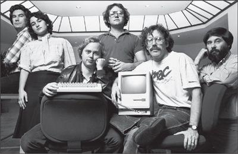
The original Mac team in 1984: George Crow, Joanna Hoffman, Burrell Smith, Andy Hertzfeld, Bill Atkinson, and Jerry Manock
Первоначальная команда Mac в 1984 году: Джордж Кроу, Джоанна Хоффман, Баррелл Смит, Энди Херцфельд, Билл Аткинсон и Джерри Мэнок
When Andy Hertzfeld joined the Macintosh team, he got a briefing from Bud Tribble, the other software designer, about the huge amount of work that still needed to be done. Jobs wanted it finished by January 1982, less than a year away. “That’s crazy,” Hertzfeld said. “There’s no way.” Tribble said that Jobs would not accept any contrary facts. “The best way to describe the situation is a term from Star Trek,” Tribble explained. “Steve has a reality distortion field.” When Hertzfeld looked puzzled, Tribble elaborated. “In his presence, reality is malleable. He can convince anyone of practically anything. It wears off when he’s not around, but it makes it hard to have realistic schedules.”
| briefing | инструктаж, ввод в курс дела |
| contrary facts | противоречащие факты |
| elaborated | пояснил, развил мысль |
| malleable | податливая, изменчивая |
| wears off | перестаёт действовать |
Когда Энди Херцфельд присоединился к команде Macintosh, Бал Триббл, второй разработчик программ, ввёл его в курс дела, рассказав об огромном объёме оставшейся работы. Джобс хотел закончить к январю 1982 года — меньше чем за год. «Это безумие, — сказал Херцфельд. — Никак». Триббл ответил, что Джобс не принимает противоречащих фактов. «Лучше всего ситуацию описывает термин из „Звёздного пути“, — объяснил Триббл. — У Стива есть поле искажения реальности». Увидев недоумение Херцфельда, Триббл пояснил: «В его присутствии реальность податлива. Он может убедить кого угодно практически в чём угодно. Когда его нет рядом, действие проходит, но из-за этого трудно строить реалистичные графики».
Tribble recalled that he adopted the phrase from the “Menagerie” episodes of Star Trek, “in which the aliens create their own new world through sheer mental force.” He meant the phrase to be a compliment as well as a caution: “It was dangerous to get caught in Steve’s distortion field, but it was what led him to actually be able to change reality.”
| sheer mental force | одной лишь силой мысли |
| get caught in | попасть под действие |
Триббл вспоминал, что взял это выражение из серий «Менажерия» «Звёздного пути», «где инопланетяне создают собственный новый мир одной лишь силой мысли». Фраза была и комплиментом, и предостережением: «Попадать под поле искажения Стива было опасно, но именно оно позволяло ему действительно менять реальность».
At first Hertzfeld thought that Tribble was exaggerating, but after two weeks of working with Jobs, he became a keen observer of the phenomenon. “The reality distortion field was a confounding mélange of a charismatic rhetorical style, indomitable will, and eagerness to bend any fact to fit the purpose at hand,” he said.
| keen observer | внимательный наблюдатель |
| mélange | смесь, коктейль |
| indomitable | несгибаемая |
| at hand | на данный момент, текущая |
Сначала Херцфельд думал, что Триббл преувеличивает, но через две недели работы с Джобсом стал внимательным наблюдателем явления. «Поле искажения реальности было сбивающей с толку смесью харизматичной риторики, несгибаемой воли и готовности подогнуть любой факт под текущую цель», — говорил он.
There was little that could shield you from the force, Hertzfeld discovered. “Amazingly, the reality distortion field seemed to be effective even if you were acutely aware of it. We would often discuss potential techniques for grounding it, but after a while most of us gave up, accepting it as a force of nature.” After Jobs decreed that the sodas in the office refrigerator be replaced by Odwalla organic orange and carrot juices, someone on the team had T-shirts made. “Reality Distortion Field,” they said on the front, and on the back, “It’s in the juice!”
| shield | защитить |
| acutely aware | остро осознаёшь |
| grounding | заземление, нейтрализация |
От этой силы мало что могло защитить, обнаружил Херцфельд. «Поразительно, но поле искажения реальности действовало, даже если ты остро его осознавал. Мы часто обсуждали возможные способы его „заземления“, но со временем большинство сдались, приняв его как силу природы». Когда Джобс распорядился заменить газировку в офисном холодильнике органическими апельсиновым и морковным соками Odwalla, кто-то из команды заказал футболки. Спереди — «Поле искажения реальности», сзади — «Всё дело в соке!»
To some people, calling it a reality distortion field was just a clever way to say that Jobs tended to lie. But it was in fact a more complex form of dissembling. He would assert something—be it a fact about world history or a recounting of who suggested an idea at a meeting—without even considering the truth. It came from willfully defying reality, not only to others but to himself. “He can deceive himself,” said Bill Atkinson. “It allowed him to con people into believing his vision, because he has personally embraced and internalized it.”
| dissembling | искажение истины, притворство |
| assert | утверждать |
| recounting | пересказ |
| willfully defying | сознательно бросая вызов |
| con | обманом склонить |
| internalized | впитал, сделал своим |
Для некоторых называть это полем искажения реальности было просто хитрым способом сказать, что Джобс склонен врать. Но на деле это была более сложная форма искажения истины. Он утверждал нечто — факт ли мировой истории или пересказ того, кто подал идею на совещании, — даже не задумываясь об истине. Это происходило от сознательного вызова реальности — не только для других, но и для себя. «Он умеет обманывать самого себя, — говорил Билл Аткинсон. — Это позволяло ему обманом заставлять людей верить в его видение, потому что он сам его принял и впитал».
A lot of people distort reality, of course. When Jobs did so, it was often a tactic for accomplishing something. Wozniak, who was as congenitally honest as Jobs was tactical, marveled at how effective it could be. “His reality distortion is when he has an illogical vision of the future, such as telling me that I could design the Breakout game in just a few days. You realize that it can’t be true, but he somehow makes it true.”
| tactic | тактический приём |
Реальность, конечно, искажают многие. У Джобса это часто было тактическим приёмом для достижения цели. Возняк, честный от природы так же, как Джобс был тактичен, восхищался его действенностью. «Его искажение реальности — это когда у него нелогичное видение будущего, например когда он сказал мне, что я смогу разработать игру Breakout за несколько дней. Ты понимаешь, что это невозможно, но он каким-то образом делает это возможным».
When members of the Mac team got ensnared in his reality distortion field, they were almost hypnotized. “He reminded me of Rasputin,” said Debi Coleman. “He laser-beamed in on you and didn’t blink. It didn’t matter if he was serving purple Kool-Aid. You drank it.” But like Wozniak, she believed that the reality distortion field was empowering: It enabled Jobs to inspire his team to change the course of computer history with a fraction of the resources of Xerox or IBM. “It was a self-fulfilling distortion,” she claimed. “You did the impossible, because you didn’t realize it was impossible.”
| got ensnared in | попадали в ловушку |
| laser-beamed in on | прожигал лазерным взглядом |
| empowering | дающее силу |
| self-fulfilling | самосбывающееся |
| Kool-Aid | «Кул-Эйд», фруктовый напиток; «выпить кул-эйд» — слепо поверить, пойти за вожаком |
Попавшие в ловушку поля искажения реальности члены команды Mac почти гипнотизировались. «Он напоминал мне Распутина, — говорила Деби Коулман. — Он прожигал тебя лазерным взглядом и не моргал. Неважно, наливал ли он лиловый Kool-Aid. Ты его пил». Но, как и Возняк, она считала поле искажения дающим силу: оно позволяло Джобсу вдохновить команду изменить ход компьютерной истории с ничтожной долей ресурсов Xerox или IBM. «Это было самосбывающееся искажение, — утверждала она. — Ты делал невозможное, потому что не осознавал, что оно невозможно».
At the root of the reality distortion was Jobs’s belief that the rules didn’t apply to him. He had some evidence for this; in his childhood, he had often been able to bend reality to his desires. Rebelliousness and willfulness were ingrained in his character. He had the sense that he was special, a chosen one, an enlightened one. “He thinks there are a few people who are special—people like Einstein and Gandhi and the gurus he met in India—and he’s one of them,” said Hertzfeld. “He told Chrisann this. Once he even hinted to me that he was enlightened. It’s almost like Nietzsche.” Jobs never studied Nietzsche, but the philosopher’s concept of the will to power and the special nature of the Übermensch came naturally to him.
| the rules didn’t apply to him | правила на него не распространяются |
| ingrained | впитаны, заложены |
| chosen one | избранный |
| Übermensch | сверхчеловек; понятие Ницше |
В корне искажения реальности лежала вера Джобса в то, что правила на него не распространяются. У него были на это основания: в детстве ему часто удавалось подчинять реальность своим желаниям. Бунтарство и своеволие были впитаны в его характер. Он ощущал себя особенным, избранным, просветлённым. «Он считает, что есть несколько особенных людей — Эйнштейн, Ганди, гуру, которых он встретил в Индии, — и он один из них, — говорил Херцфельд. — Он говорил это Крисанн. Однажды даже намекнул мне, что просветлён. Это почти как Ницше». Джобс никогда не изучал Ницше, но идея воли к власти и особой природы сверхчеловека давалась ему естественно.
As Nietzsche wrote in Thus Spoke Zarathustra, “The spirit now wills his own will, and he who had been lost to the world now conquers the world.” If reality did not comport with his will, he would ignore it, as he had done with the birth of his daughter and would do years later, when first diagnosed with cancer. Even in small everyday rebellions, such as not putting a license plate on his car and parking it in handicapped spaces, he acted as if he were not subject to the strictures around him.
| comport with | соответствовать |
| strictures | ограничения, предписания |
Как писал Ницше в «Так говорил Заратустра»: «Дух теперь волит свою волю, и потерянный для мира завоёвывает мир». Если реальность не соответствовала его воле, он её игнорировал — как сделал с рождением дочери и сделает годы спустя, когда ему впервые поставят диагноз «рак». Даже в мелких ежедневных бунтах — например, без номерного знака на машине и на парковке для инвалидов — он вёл себя так, будто ограничения вокруг него его не касаются.
Another key aspect of Jobs’s worldview was his binary way of categorizing things. People were either “enlightened” or “an asshole.” Their work was either “the best” or “totally shitty.” Bill Atkinson, the Mac designer who fell on the good side of these dichotomies, described what it was like:
| binary | двоичный, на два лагеря |
| dichotomies | противопоставления |
Ещё одна ключевая черта мировоззрения Джобса — двоичное деление всего на категории. Люди были либо «просветлёнными», либо «мудаками». Работа — либо «лучшая», либо «полное дерьмо». Билл Аткинсон, дизайнер Mac, попавший в этих противопоставлениях на хорошую сторону, описывал, каково это было:
It was difficult working under Steve, because there was a great polarity between gods and shitheads. If you were a god, you were up on a pedestal and could do no wrong. Those of us who were considered to be gods, as I was, knew that we were actually mortal and made bad engineering decisions and farted like any person, so we were always afraid that we would get knocked off our pedestal. The ones who were shitheads, who were brilliant engineers working very hard, felt there was no way they could get appreciated and rise above their status.
| polarity | полярность, раскол |
| pedestal | пьедестал |
| get knocked off our pedestal | быть сброшенными с пьедестала |
| rise above | подняться выше |
Работать под началом Стива было трудно, потому что между богами и мудаками зияла огромная пропасть. Если ты бог — ты на пьедестале и не можешь ошибиться. Те из нас, кого считали богами, как меня, знали, что на самом деле смертны, принимали плохие инженерные решения и пускали газы, как все, — и потому всегда боялись быть сброшенными с пьедестала. А «мудаки» — блестящие инженеры, работавшие на износ, — чувствовали, что им никак не добиться признания и не подняться выше своего статуса.
But these categories were not immutable, for Jobs could rapidly reverse himself. When briefing Hertzfeld about the reality distortion field, Tribble specifically warned him about Jobs’s tendency to resemble high-voltage alternating current. “Just because he tells you that something is awful or great, it doesn’t necessarily mean he’ll feel that way tomorrow,” Tribble explained. “If you tell him a new idea, he’ll usually tell you that he thinks it’s stupid. But then, if he actually likes it, exactly one week later, he’ll come back to you and propose your idea to you, as if he thought of it.”
| immutable | неизменны |
Но категории эти не были неизменными — Джобс умел быстро разворачиваться на 180 градусов. Вводя Херцфельда в курс дела о поле искажения реальности, Триббл специально предупредил о склонности Джобса напоминать переменный ток высокого напряжения. «То, что он назвал что-то ужасным или великим, не значит, что завтра он будет думать так же, — объяснял Триббл. — Если ты расскажешь ему новую идею, он обычно скажет, что она глупая. Но если она ему действительно понравится, ровно через неделю он вернётся и предложит твою идею тебе — как будто сам до неё додумался».
The audacity of this pirouette technique would have dazzled Diaghilev. “If one line of argument failed to persuade, he would deftly switch to another,” Hertzfeld said. “Sometimes, he would throw you off balance by suddenly adopting your position as his own, without acknowledging that he ever thought differently.” That happened repeatedly to Bruce Horn, the programmer who, with Tesler, had been lured from Xerox PARC. “One week I’d tell him about an idea that I had, and he would say it was crazy,” recalled Horn. “The next week, he’d come and say, ‘Hey I have this great idea’—and it would be my idea! You’d call him on it and say, ‘Steve, I told you that a week ago,’ and he’d say, ‘Yeah, yeah, yeah’ and just move right along.”
| audacity | дерзость |
| pirouette | пируэт, разворот |
| deftly | ловко |
Дерзость этого приёма с пируэтом ослепила бы самого Дягилева. «Если одна линия аргументации не убеждала, он ловко переключался на другую, — говорил Херцфельд. — Иногда он выбивал тебя из равновесия, внезапно выдавая твою позицию за свою, не признавая, что думал иначе». С Брюсом Хорном, программистом, переманенным из Xerox PARC вместе с Теслером, это повторялось не раз. «Однажды на неделе я рассказывал ему свою идею, а он называл её бредом, — вспоминал Хорн. — На следующей неделе он приходил и говорил: „Слушай, у меня есть отличная идея“ — и это была моя идея! Ты ловил его: „Стив, я говорил тебе об этом неделю назад“, а он отвечал: „Да-да-да“ — и шёл дальше».
It was as if Jobs’s brain circuits were missing a device that would modulate the extreme spikes of impulsive opinions that popped into his mind. So in dealing with him, the Mac team adopted an audio concept called a “low pass filter.” In processing his input, they learned to reduce the amplitude of his high-frequency signals. That served to smooth out the data set and provide a less jittery moving average of his evolving attitudes. “After a few cycles of him taking alternating extreme positions,” said Hertzfeld, “we would learn to low pass filter his signals and not react to the extremes.”
| modulate | сглаживать, ограничивать |
| spikes | всплески, скачки |
| amplitude | амплитуда |
| jittery | дёрганая, нервная |
Казалось, в мозговых цепях Джобса не хватало устройства, которое сглаживало бы резкие всплески импульсивных мнений. Поэтому в общении с ним команда Mac взяла на вооружение аудиопонятие «фильтр низких частот». Обрабатывая его высказывания, они научились снижать амплитуду его высокочастотных сигналов. Это сглаживало данные и давало менее дёрганое скользящее среднее его меняющихся настроений. «После нескольких циклов его крайностей, — говорил Херцфельд, — мы научились пропускать его сигналы через фильтр и не реагировать на крайности».
Was Jobs’s unfiltered behavior caused by a lack of emotional sensitivity? No. Almost the opposite. He was very emotionally attuned, able to read people and know their psychological strengths and vulnerabilities. He could stun an unsuspecting victim with an emotional towel-snap, perfectly aimed. He intuitively knew when someone was faking it or truly knew something. This made him masterful at cajoling, stroking, persuading, flattering, and intimidating people. “He had the uncanny capacity to know exactly what your weak point is, know what will make you feel small, to make you cringe,” Joanna Hoffman said. “It’s a common trait in people who are charismatic and know how to manipulate people. Knowing that he can crush you makes you feel weakened and eager for his approval, so then he can elevate you and put you on a pedestal and own you.”
| attuned | настроенный, чуткий |
| stun an unsuspecting victim | ошеломить ничего не подозревающую жертву |
| cringe | съёжиться |
| crush | раздавить |
Было ли нефильтрованное поведение Джобса следствием эмоциональной бесчувственности? Нет. Скорее наоборот. Он был очень эмоционально чутким, умел читать людей и знал их психологические сильные и уязвимые стороны. Он мог ошеломить ничего не подозревающую жертву точно нацеленным эмоциональным щелчком полотенца. Он интуитивно чувствовал, когда человек притворяется, а когда действительно знает. Это делало его мастером уговоров, поглаживаний, убеждения, лести и запугивания. «У него была сверхъестественная способность знать твоё слабое место, знать, что заставит тебя почувствовать себя ничтожным, съёжиться, — говорила Джоанна Хоффман. — Это общая черта харизматичных людей, умеющих манипулировать. Осознание, что он может тебя раздавить, ослабляет тебя и заставляет жаждать его одобрения, — и тогда он возносит тебя, ставит на пьедестал и владеет тобой».
Ann Bowers became an expert at dealing with Jobs’s perfectionism, petulance, and prickliness. She had been the human resources director at Intel, but had stepped aside after she married its cofounder Bob Noyce. She joined Apple in 1980 and served as a calming mother figure who would step in after one of Jobs’s tantrums. She would go to his office, shut the door, and gently lecture him. “I know, I know,” he would say. “Well, then, please stop doing it,” she would insist. Bowers recalled, “He would be good for a while, and then a week or so later I would get a call again.” She realized that he could barely contain himself. “He had these huge expectations, and if people didn’t deliver, he couldn’t stand it. He couldn’t control himself. I could understand why Steve would get upset, and he was usually right, but it had a hurtful effect. It created a fear factor.”
| prickliness | колючесть, обидчивость |
| stepped aside | отошла от дел |
| step in | вмешаться |
| deliver | выполнить обещанное |
| fear factor | фактор страха |
Энн Бауэрс стала экспертом по перфекционизму, капризности и колючести Джобса. Она была директором по персоналу в Intel, но отошла от дел, выйдя замуж за её сооснователя Боба Нойса. В Apple она пришла в 1980 году и стала спокойной материнской фигурой, вмешивавшейся после его истерик. Она заходила в его кабинет, закрывала дверь и мягко отчитывала его. «Знаю, знаю», — отвечал он. «Ну так, пожалуйста, перестань так делать», — настаивала она. «Он вёл себя хорошо какое-то время, а потом, недели через две, мне снова звонили», — вспоминала Бауэрс. Она понимала, что он едва сдерживается. «У него были огромные ожидания, и если люди не выполняли обещанного, он этого не выносил. Он не мог себя контролировать. Я понимала, почему Стив расстраивался, и обычно он был прав, но это ранило. Возникал фактор страха».
Jobs became close to Bowers and her husband, and he would drop in at their Los Gatos Hills home unannounced. She would hear his motorcycle in the distance and say, “I guess we have Steve for dinner again.” For a while she and Noyce were like a surrogate family. “He was so bright and also so needy. He needed a grown-up, a father figure, which Bob became, and I became like a mother figure.”
| drop in | заезжать без предупреждения |
| surrogate family | замещающая семья |
| needy | нуждающийся в поддержке |
Джобс сблизился с Бауэрс и её мужем и без предупреждения заезжал к ним в дом в холмах Лос-Гатоса. Она издалека слышала его мотоцикл и говорила: «Похоже, Стив снова у нас ужинает». Какое-то время они с Нойсом были для него замещающей семьёй. «Он был таким умным и таким нуждающимся. Ему нужен был взрослый, отец, — и им стал Боб, а я стала чем-то вроде матери».
There were some upsides to Jobs’s demanding and wounding behavior. People who were not crushed ended up being stronger. They did better work, out of both fear and an eagerness to please. “His behavior can be emotionally draining, but if you survive, it works,” Hoffman said. You could also push back—sometimes—and not only survive but thrive. That didn’t always work; Raskin tried it, succeeded for a while, and then was destroyed. But if you were calmly confident, if Jobs sized you up and decided that you knew what you were doing, he would respect you. In both his personal and his professional life over the years, his inner circle tended to include many more strong people than toadies.
| ended up | в итоге становились |
| draining | изматывающим |
| thrive | процветать |
| sized you up | оценивал тебя |
| toadies | подхалимы |
У требовательного и ранящего поведения Джобса были и плюсы. Те, кого не раздавили, в итоге становились сильнее. Они работали лучше — из страха и из желания угодить. «Его поведение может эмоционально изматывать, но если выживаешь — оно работает», — говорила Хоффман. Можно было и возражать — иногда — и не только выжить, но и процветать. Срабатывало не всегда: Раскин попробовал, какое-то время преуспевал, а потом был уничтожен. Но если ты был спокойно уверен, если Джобс, оценив тебя, решал, что ты знаешь своё дело, он тебя уважал. И в личной, и в профессиональной жизни его ближний круг со временем включал куда больше сильных людей, чем подхалимов.
The Mac team knew that. Every year, beginning in 1981, it gave out an award to the person who did the best job of standing up to him. The award was partly a joke, but also partly real, and Jobs knew about it and liked it. Joanna Hoffman won the first year. From an Eastern European refugee family, she had a strong temper and will. One day, for example, she discovered that Jobs had changed her marketing projections in a way she found totally reality-distorting. Furious, she marched to his office. “As I’m climbing the stairs, I told his assistant I am going to take a knife and stab it into his heart,” she recounted. Al Eisenstat, the corporate counsel, came running out to restrain her. “But Steve heard me out and backed down.”
| standing up to | давать отпор |
| stab it into his heart | вонзить ему в сердце |
| backed down | отступил, сдал назад |
Команда Mac это знала. Каждый год, начиная с 1981-го, она вручала награду тому, кто лучше всех дал ему отпор. Награда была отчасти шуткой, но отчасти настоящей — Джобс о ней знал и она ему нравилась. В первый год победила Джоанна Хоффман. Из семьи восточноевропейских беженцев, она обладала крутым нравом и волей. Однажды, например, она обнаружила, что Джобс изменил её маркетинговые прогнозы так, что это показалось ей полным искажением реальности. В ярости она пошла к его кабинету. «Поднимаясь по лестнице, я сказала его ассистенту, что сейчас возьму нож и вонзю ему в сердце», — рассказывала она. Корпоративный юрист Эл Айзенстат выбежал её удерживать. «Но Стив меня выслушал и отступил».
Hoffman won the award again in 1982. “I remember being envious of Joanna, because she would stand up to Steve and I didn’t have the nerve yet,” said Debi Coleman, who joined the Mac team that year. “Then, in 1983, I got the award. I had learned you had to stand up for what you believe, which Steve respected. I started getting promoted by him after that.” Eventually she rose to become head of manufacturing.
| envious | завидовала |
| nerve | смелость, дух |
В 1982 году Хоффман снова получила награду. «Помню, как завидовала Джоанне: она могла противостоять Стиву, а у меня ещё не хватало духу, — говорила Деби Коулман, пришедшая в команду Mac в тот год. — А в 1983-м награду получила я. Я поняла, что нужно отстаивать то, во что веришь, — и Стив это уважал. После этого он начал меня повышать». Со временем она возглавила производство.
One day Jobs barged into the cubicle of one of Atkinson’s engineers and uttered his usual “This is shit.” As Atkinson recalled, “The guy said, ‘No it’s not, it’s actually the best way,’ and he explained to Steve the engineering trade-offs he’d made.” Jobs backed down. Atkinson taught his team to put Jobs’s words through a translator. “We learned to interpret ‘This is shit’ to actually be a question that means, ‘Tell me why this is the best way to do it.’” But the story had a coda, which Atkinson also found instructive. Eventually the engineer found an even better way to perform the function that Jobs had criticized. “He did it better because Steve had challenged him,” said Atkinson, “which shows you can push back on him but should also listen, for he’s usually right.”
| barged into | вломился в |
| trade-offs | компромиссы, размены |
| coda | завершение, кода |
Однажды Джобс вломился в кабинку одного из инженеров Аткинсона и выдал обычное «Это дерьмо». Как вспоминал Аткинсон: «Парень ответил: „Нет, вообще-то это лучший способ“, — и объяснил Стиву, на какие инженерные размены пошёл». Джобс отступил. Аткинсон учил команду пропускать слова Джобса через переводчик: «Мы научились понимать „Это дерьмо“ как вопрос: „Объясни, почему это лучший способ сделать“.» Но у истории была и кода, показавшаяся Аткинсону поучительной. В итоге инженер нашёл ещё лучший способ выполнить раскритикованную Джобсом функцию. «Он сделал лучше, потому что Стив бросил ему вызов, — говорил Аткинсон, — а это значит: ему можно возражать, но стоит и слушать, ведь он обычно прав».
Jobs’s prickly behavior was partly driven by his perfectionism and his impatience with those who made compromises in order to get a product out on time and on budget. “He could not make trade-offs well,” said Atkinson. “If someone didn’t care to make their product perfect, they were a bozo.” At the West Coast Computer Faire in April 1981, for example, Adam Osborne released the first truly portable personal computer. It was not great—it had a five-inch screen and not much memory—but it worked well enough. As Osborne famously declared, “Adequacy is sufficient. All else is superfluous.” Jobs found that approach to be morally appalling, and he spent days making fun of Osborne. “This guy just doesn’t get it,” Jobs repeatedly railed as he wandered the Apple corridors. “He’s not making art, he’s making shit.”
| bozo | недоумок, болван |
| superfluous | излишнее |
| doesn’t get it | не понимает сути |
Колючесть Джобса отчасти объяснялась перфекционизмом и нетерпимостью к тем, кто шёл на компромиссы, чтобы выпустить продукт в срок и в бюджет. «Он плохо умел идти на размены, — говорил Аткинсон. — Если человек не стремился сделать продукт совершенным, он был недоумком». На ярмарке West Coast Computer Faire в апреле 1981 года, например, Адам Осборн выпустил первый по-настоящему портативный персональный компьютер. Он был не бог весть что — пятидюймовый экран и мало памяти, — но работал сносно. Как знаменито заявил Осборн: «Достаточно и приемлемого. Всё прочее излишне». Джобсу такой подход казался нравственно возмутительным, и он днями высмеивал Осборна. «Этот парень просто не понимает сути, — раз за разом бушевал Джобс, бродя по коридорам Apple. — Он делает не искусство, а дерьмо».
One day Jobs came into the cubicle of Larry Kenyon, an engineer who was working on the Macintosh operating system, and complained that it was taking too long to boot up. Kenyon started to explain, but Jobs cut him off. “If it could save a person’s life, would you find a way to shave ten seconds off the boot time?” he asked. Kenyon allowed that he probably could. Jobs went to a whiteboard and showed that if there were five million people using the Mac, and it took ten seconds extra to turn it on every day, that added up to three hundred million or so hours per year that people would save, which was the equivalent of at least one hundred lifetimes saved per year. “Larry was suitably impressed, and a few weeks later he came back and it booted up twenty-eight seconds faster,” Atkinson recalled. “Steve had a way of motivating by looking at the bigger picture.”
| boot up | загружаться |
| cut him off | прервал его |
| shave ten seconds off | сэкономить десять секунд |
| looking at the bigger picture | показывая общую картину |
Однажды Джобс зашёл в кабинку Ларри Кеньона, инженера, работавшего над операционной системой Macintosh, и пожаловался, что та слишком долго загружается. Кеньон начал объяснять, но Джобс его прервал. «Если бы это могло спасти человеку жизнь, ты нашёл бы способ сэкономить десять секунд загрузки?» — спросил он. Кеньон согласился, что, наверное, смог бы. Джобс подошёл к доске и показал: если Mac будут пользоваться пять миллионов человек и каждый день тратить на включение лишние десять секунд, это составит около трёхсот миллионов часов в год — эквивалент как минимум ста спасённых жизней ежегодно. «Ларри был впечатлён, и через несколько недель компьютер стал загружаться на двадцать восемь секунд быстрее, — вспоминал Аткинсон. — Стив умел мотивировать, показывая общую картину».
The result was that the Macintosh team came to share Jobs’s passion for making a great product, not just a profitable one. “Jobs thought of himself as an artist, and he encouraged the design team to think of ourselves that way too,” said Hertzfeld. “The goal was never to beat the competition, or to make a lot of money. It was to do the greatest thing possible, or even a little greater.” He once took the team to see an exhibit of Tiffany glass at the Metropolitan Museum in Manhattan because he believed they could learn from Louis Tiffany’s example of creating great art that could be mass-produced. Recalled Bud Tribble, “We said to ourselves, ‘Hey, if we’re going to make things in our lives, we might as well make them beautiful.’”
| mass-produced | выпускаться массово |
В результате команда Macintosh разделила страсть Джобса к созданию великого продукта, а не просто прибыльного. «Джобс считал себя художником и поощрял команду дизайнеров думать о себе так же, — говорил Херцфельд. — Целью никогда не было победить конкурентов или заработать кучу денег. Целью было сделать самое великое из возможного — или даже чуть величественнее». Однажды он сводил команду на выставку стекла Тиффани в Метрополитен-музей в Манхэттене, потому что верил: у Луиса Тиффани можно научиться создавать великое искусство, выпускаемое массово. «Мы сказали себе: „Слушай, раз уж мы что-то делаем в жизни, пусть это будет красиво“», — вспоминал Бал Триббл.
Was all of his stormy and abusive behavior necessary? Probably not, nor was it justified. There were other ways to have motivated his team. Even though the Macintosh would turn out to be great, it was way behind schedule and way over budget because of Jobs’s impetuous interventions. There was also a cost in brutalized human feelings, which caused much of the team to burn out. “Steve’s contributions could have been made without so many stories about him terrorizing folks,” Wozniak said. “I like being more patient and not having so many conflicts. I think a company can be a good family. If the Macintosh project had been run my way, things probably would have been a mess. But I think if it had been a mix of both our styles, it would have been better than just the way Steve did it.”
| impetuous | порывистые, импульсивные |
| brutalized human feelings | искалеченные чувства людей |
| burn out | выгореть |
Было ли всё это бурное и грубое поведение необходимым? Наверное, нет, и оправданным оно тоже не было. Мотивировать команду можно было иначе. Пусть Macintosh получился великим, но из-за порывистых вмешательств Джобса он сильно выбился из графика и бюджета. Была и цена в виде искалеченных чувств людей, из-за чего многие в команде выгорали. «Вклад Стива можно было внести и без стольких историй о том, как он терроризировал людей, — говорил Возняк. — Мне больше нравится быть терпеливым и не плодить конфликты. Я считаю, что компания может быть хорошей семьёй. Если бы Macintosh вёлся по-моему, вероятно, вышла бы каша. Но думаю, смесь наших стилей была бы лучше, чем только его подход».
But even though Jobs’s style could be demoralizing, it could also be oddly inspiring. It infused Apple employees with an abiding passion to create groundbreaking products and a belief that they could accomplish what seemed impossible. They had T-shirts made that read “90 hours a week and loving it!” Out of a fear of Jobs mixed with an incredibly strong urge to impress him, they exceeded their own expectations. “I’ve learned over the years that when you have really good people you don’t have to baby them,” Jobs later explained. “By expecting them to do great things, you can get them to do great things. The original Mac team taught me that A-plus players like to work together, and they don’t like it if you tolerate B work. Ask any member of that Mac team. They will tell you it was worth the pain.”
| abiding | неизбывная, постоянная |
| baby them | нянчиться с ними |
Но как бы ни деморализовывал стиль Джобса, он мог и странным образом вдохновлять. Он заряжал сотрудников Apple неизбывной страстью создавать прорывные продукты и верой, что невозможное достижимо. Они заказали футболки с надписью «90 часов в неделю — и в кайф!» Из страха перед Джобсом, смешанного с невероятно сильным желанием впечатлить его, они превосходили собственные ожидания. «С годами я понял: когда у тебя по-настоящему хорошие люди, с ними не надо нянчиться, — объяснял позже Джобс. — Ожидая от них великих дел, ты добиваешься от них великих дел. Первая команда Mac научила меня, что игроки высшего класса любят работать вместе и не терпят посредственной работы. Спроси любого из той команды — каждый скажет, что боль того стоила».
Most of them agree. “He would shout at a meeting, ‘You asshole, you never do anything right,’” Debi Coleman recalled. “It was like an hourly occurrence. Yet I consider myself the absolute luckiest person in the world to have worked with him.”
| occurrence | явление, происшествие |
Большинство из них согласны. «На совещании он мог закричать: „Ты придурок, у тебя никогда ничего не выходит“», — вспоминала Деби Коулман. «Это случалось чуть ли не каждый час. И всё же я считаю себя абсолютно самым везучим человеком в мире — мне довелось с ним работать».
A Bauhaus Aesthetic
Эстетика Баухауса
Unlike most kids who grew up in Eichler homes, Jobs knew what they were and why they were so wonderful. He liked the notion of simple and clean modernism produced for the masses. He also loved listening to his father describe the styling intricacies of various cars. So from the beginning at Apple, he believed that great industrial design—a colorfully simple logo, a sleek case for the Apple II—would set the company apart and make its products distinctive.
| intricacies | тонкости, хитросплетения |
| set the company apart | выделить компанию |
| distinctive | узнаваемыми, самобытными |
В отличие от большинства детей, выросших в домах Эйхлера, Джобс знал, что это за дома и чем они так хороши. Ему нравилась идея простого и чистого модернизма для масс. Ещё он любил слушать, как отец описывает тонкости дизайна разных автомобилей. Поэтому с самого начала работы в Apple он верил, что великий промышленный дизайн — простой цветной логотип, гладкий корпус Apple II — выделит компанию и сделает её продукты узнаваемыми.
The company’s first office, after it moved out of his family garage, was in a small building it shared with a Sony sales office. Sony was famous for its signature style and memorable product designs, so Jobs would drop by to study the marketing material. “He would come in looking scruffy and fondle the product brochures and point out design features,” said Dan’l Lewin, who worked there. “Every now and then, he would ask, ‘Can I take this brochure?’” By 1980, he had hired Lewin.
| drop by | заходить |
| scruffy | неряшливый, неопрятный |
| fondle | бережно перебирать, гладить |
Первым офисом компании после переезда из семейного гаража стало маленькое здание, которое Apple делила с торговым офисом Sony. Sony славилась фирменным стилем и запоминающимся дизайном, и Джобс заходил изучать маркетинговые материалы. «Он входил в неряшливом виде, бережно перебирал брошюры и указывал на дизайнерские детали, — рассказывал Дэн'л Левин, работавший там. — Время от времени спрашивал: „Можно забрать эту брошюру?“» К 1980 году он нанял Левина.
His fondness for the dark, industrial look of Sony receded around June 1981, when he began attending the annual International Design Conference in Aspen. The meeting that year focused on Italian style, and it featured the architect-designer Mario Bellini, the filmmaker Bernardo Bertolucci, the car maker Sergio Pininfarina, and the Fiat heiress and politician Susanna Agnelli. “I had come to revere the Italian designers, just like the kid in Breaking Away reveres the Italian bikers,” recalled Jobs, “so it was an amazing inspiration.”
| receded | отступила, ослабла |
| featured | включала, представляла |
| revere | благоговеть, преклоняться |
Его любовь к тёмному промышленному стилю Sony отступила примерно в июне 1981 года, когда он начал посещать ежегодную Международную дизайн-конференцию в Аспене. В тот год она была посвящена итальянскому стилю: среди участников были архитектор-дизайнер Марио Беллини, режиссёр Бернардо Бертолуччи, автомобильный конструктор Серджо Пининфарина и наследница Fiat, политик Сюзанна Аньелли. «Я начал благоговеть перед итальянскими дизайнерами, как парнишка из „Вырываясь вперёд“ благоговеет перед итальянскими велогонщиками, — вспоминал Джобс, — так что это было потрясающее вдохновение».
In Aspen he was exposed to the spare and functional design philosophy of the Bauhaus movement, which was enshrined by Herbert Bayer in the buildings, living suites, sans serif font typography, and furniture on the Aspen Institute campus. Like his mentors Walter Gropius and Ludwig Mies van der Rohe, Bayer believed that there should be no distinction between fine art and applied industrial design. The modernist International Style championed by the Bauhaus taught that design should be simple, yet have an expressive spirit. It emphasized rationality and functionality by employing clean lines and forms. Among the maxims preached by Mies and Gropius were “God is in the details” and “Less is more.” As with Eichler homes, the artistic sensibility was combined with the capability for mass production.
| spare | лаконичная, скупая |
| enshrined | воплощена |
| fine art | изящное искусство |
| expressive spirit | выразительный дух |
В Аспене он познакомился с лаконичной и функциональной дизайнерской философией движения Баухаус, которую Герберт Байер воплотил в зданиях, жилых корпусах, типографике без засечек и мебели кампуса Института Аспена. Как и его наставники Вальтер Гропиус и Людвиг Мис ван дер Роэ, Байер считал, что между изящным искусством и прикладным промышленным дизайном не должно быть различия. Модернистский интернациональный стиль, провозглашённый Баухаусом, учил: дизайн должен быть прост, но обладать выразительным духом. Он подчёркивал рациональность и функциональность через чистые линии и формы. Среди максим, проповедовавшихся Мисом и Гропиусом, были «Бог в деталях» и «Меньше значит больше». Как и в домах Эйхлера, художественное чутьё сочеталось с возможностью массового производства.
Jobs publicly discussed his embrace of the Bauhaus style in a talk he gave at the 1983 design conference, the theme of which was “The Future Isn’t What It Used to Be.” He predicted the passing of the Sony style in favor of Bauhaus simplicity. “The current wave of industrial design is Sony’s high-tech look, which is gunmetal gray, maybe paint it black, do weird stuff to it,” he said. “It’s easy to do that. But it’s not great.” He proposed an alternative, born of the Bauhaus, that was more true to the function and nature of the products.
| embrace | принятие, усвоение |
Джобс публично говорил о принятии стиля Баухаус в выступлении на дизайн-конференции 1983 года, чьей темой было «Будущее уже не то, что раньше». Он предсказывал уход стиля Sony в пользу баухаусовской простоты. «Нынешняя волна промышленного дизайна — хай-тековый вид Sony: тёмно-серый металл, может, выкрасить в чёрный, накрутить странностей, — говорил он. — Так делать легко. Но это не величие». Он предлагал альтернативу, рождённую Баухаусом, более верную функции и природе продуктов.
“What we’re going to do is make the products high-tech, and we’re going to package them cleanly so that you know they’re high-tech. We will fit them in a small package, and then we can make them beautiful and white, just like Braun does with its electronics.”
| package them cleanly | упаковать их аккуратно, чисто |
«Мы собираемся сделать продукты высокотехнологичными и упаковать их так чисто, чтобы было ясно: это хайтек. Мы поместим их в маленький корпус и сделаем красивыми и белыми — как Braun делает свою электронику».
He repeatedly emphasized that Apple’s products would be clean and simple. “We will make them bright and pure and honest about being high-tech, rather than a heavy industrial look of black, black, black, black, like Sony,” he preached. “So that’s our approach. Very simple, and we’re really shooting for Museum of Modern Art quality. The way we’re running the company, the product design, the advertising, it all comes down to this: Let’s make it simple. Really simple.” Apple’s design mantra would remain the one featured on its first brochure: “Simplicity is the ultimate sophistication.”
| shooting for | стремиться к |
| comes down to | сводится к |
| mantra | мантра, девиз |
Он снова и снова подчёркивал, что продукты Apple будут чистыми и простыми. «Мы сделаем их светлыми, чистыми и честными в своей высокотехнологичности — не тяжёлый индустриальный чёрный-чёрный-чёрный, как у Sony, — проповедовал он. — Таков наш подход. Очень просто, и мы действительно стремимся к качеству Музея современного искусства. Всё, как мы ведём компанию, — дизайн продукта, реклама — сводится к одному: сделаем это простым. По-настоящему простым». Дизайнерской мантрой Apple останется та, что стояла на её первой брошюре: «Простота — высшая изощрённость».
Jobs felt that design simplicity should be linked to making products easy to use. Those goals do not always go together. Sometimes a design can be so sleek and simple that a user finds it intimidating or unfriendly to navigate. “The main thing in our design is that we have to make things intuitively obvious,” Jobs told the crowd of design mavens. For example, he extolled the desktop metaphor he was creating for the Macintosh. “People know how to deal with a desktop intuitively. If you walk into an office, there are papers on the desk. The one on the top is the most important. People know how to switch priority. Part of the reason we model our computers on metaphors like the desktop is that we can leverage this experience people already have.”
| sleek | гладкий, изящный |
| intuitively obvious | интуитивно понятным |
| mavens | знатоки |
| leverage | использовать как рычаг |
Джобс считал, что простота дизайна должна быть связана с удобством использования. Эти цели не всегда совпадают. Порой дизайн настолько гладок и прост, что пользователь находит его пугающим или неудобным. «Главное в нашем дизайне — сделать всё интуитивно понятным», — говорил Джобс толпе знатоков дизайна. Например, он расхваливал метафору рабочего стола, создаваемую для Macintosh. «Люди интуитивно умеют обращаться с рабочим столом. Заходишь в офис — на столе бумаги. Самая важная — сверху. Люди умеют менять приоритеты. Отчасти мы моделируем компьютеры по метафорам вроде рабочего стола именно потому, что можем использовать уже имеющийся у людей опыт».
Speaking at the same time as Jobs that Wednesday afternoon, but in a smaller seminar room, was Maya Lin, twenty-three, who had been catapulted into fame the previous November when her Vietnam Veterans Memorial was dedicated in Washington, D.C. They struck up a close friendship, and Jobs invited her to visit Apple. “I came to work with Steve for a week,” Lin recalled. “I asked him, ‘Why do computers look like clunky TV sets? Why don’t you make something thin? Why not a flat laptop?’” Jobs replied that this was indeed his goal, as soon as the technology was ready.
| catapulted into | вознесена к, ворвалась в |
| struck up | завязали |
В тот же час, что и Джобс, в среду днём, но в меньшей аудитории выступала двадцатитрёхлетняя Майя Лин, взлетевшая к славе прошлым ноябрём, когда в Вашингтоне открыли её Мемориал ветеранов Вьетнама. Они завязали тесную дружбу, и Джобс пригласил её в Apple. «Я приехала поработать со Стивом на неделю, — вспоминала Лин. — Я спросила его: „Почему компьютеры выглядят как громоздкие телевизоры? Почему не сделать что-нибудь тонкое? Почему не плоский ноутбук?“» Джобс ответил, что это и есть его цель — как только технология будет готова.
At that time there was not much exciting happening in the realm of industrial design, Jobs felt. He had a Richard Sapper lamp, which he admired, and he also liked the furniture of Charles and Ray Eames and the Braun products of Dieter Rams. But there were no towering figures energizing the world of industrial design the way that Raymond Loewy and Herbert Bayer had done. “There really wasn’t much going on in industrial design, particularly in Silicon Valley, and Steve was very eager to change that,” said Lin. “His design sensibility is sleek but not slick, and it’s playful. He embraced minimalism, which came from his Zen devotion to simplicity, but he avoided allowing that to make his products cold. They stayed fun. He’s passionate and super-serious about design, but at the same time there’s a sense of play.”
| towering figures | выдающиеся фигуры, титаны |
В мире промышленного дизайна, по ощущениям Джобса, тогда не происходило ничего захватывающего. У него была лампа Ричарда Саппера, которой он восхищался, нравилась мебель Чарльза и Рэй Имз и техника Дитера Рамса от Braun. Но титанов, заряжавших мир промышленного дизайна энергией, как Рэймонд Лоуи и Герберт Байер, не было. «В промышленном дизайне, особенно в Кремниевой долине, тогда мало что происходило, и Стив очень хотел это изменить, — говорила Лин. — Его дизайнерское чутьё — гладкое, но не скользкое, и игривое. Он принял минимализм, идущий от его дзенской преданности простоте, но не дал ему сделать продукты холодными. Они оставались весёлыми. Он страстен и предельно серьёзен в дизайне, но при этом сохраняется ощущение игры».
As Jobs’s design sensibilities evolved, he became particularly attracted to the Japanese style and began hanging out with its stars, such as Issey Miyake and I. M. Pei. His Buddhist training was a big influence. “I have always found Buddhism, Japanese Zen Buddhism in particular, to be aesthetically sublime,” he said. “The most sublime thing I’ve ever seen are the gardens around Kyoto. I’m deeply moved by what that culture has produced, and it’s directly from Zen Buddhism.”
| hanging out with | проводя время с |
| sublime | возвышенно прекрасным |
По мере развития его дизайнерского вкуса Джобса особенно привлёк японский стиль, и он стал проводить время с его звёздами — Иссэем Мияке и И. М. Пеем. Большое влияние оказало его буддийское воспитание. «Буддизм, особенно японский дзен-буддизм, я всегда находил эстетически возвышенным, — говорил он. — Самое возвышенное, что я видел, — сады вокруг Киото. Меня глубоко трогает созданное этой культурой, и это идёт прямо из дзен-буддизма».
Like a Porsche
Как Porsche
Jef Raskin’s vision for the Macintosh was that it would be like a boxy carry-on suitcase, which would be closed by flipping up the keyboard over the front screen. When Jobs took over the project, he decided to sacrifice portability for a distinctive design that wouldn’t take up much space on a desk. He plopped down a phone book and declared, to the horror of the engineers, that it shouldn’t have a footprint larger than that. So his design team of Jerry Manock and Terry Oyama began working on ideas that had the screen above the computer box, with a keyboard that was detachable.
| carry-on suitcase | ручная кладь, дорожный чемоданчик |
| flipping up | откидывая |
| sacrifice portability | пожертвовать портативностью |
| plopped down | плюхнул на стол |
| footprint | занимаемая площадь на столе |
Джеф Раскин видел Macintosh похожим на коробчатый чемоданчик ручной клади, который закрывается, откидывая клавиатуру на передний экран. Взяв проект под контроль, Джобс решил пожертвовать портативностью ради самобытного дизайна, занимающего мало места на столе. Он плюхнул на стол телефонный справочник и, к ужасу инженеров, заявил, что машина не должна занимать больше. Его команда дизайнеров — Джерри Мэнок и Терри Ояма — начала прорабатывать идеи, где экран находился над корпусом, а клавиатура была отсоединяемой.
One day in March 1981, Andy Hertzfeld came back to the office from dinner to find Jobs hovering over their one Mac prototype in intense discussion with the creative services director, James Ferris. “We need it to have a classic look that won’t go out of style, like the Volkswagen Beetle,” Jobs said. From his father he had developed an appreciation for the contours of classic cars.
| hovering over | нависая над |
| go out of style | выйти из моды |
| contours | обводы, контуры |
Однажды в марте 1981 года Энди Херцфельд вернулся с ужина и застал Джобса, нависшего над их единственным прототипом Mac в жарком обсуждении с директором креативных служб Джеймсом Феррисом. «Нужен классический вид, который не выйдет из моды, как у „Фольксвагена-жука“», — говорил Джобс. От отца у него появилось понимание обводов классических автомобилей.
“No, that’s not right,” Ferris replied. “The lines should be voluptuous, like a Ferrari.” “Not a Ferrari, that’s not right either,” Jobs countered. “It should be more like a Porsche!” Jobs owned a Porsche 928 at the time. When Bill Atkinson was over one weekend, Jobs brought him outside to admire the car. “Great art stretches the taste, it doesn’t follow tastes,” he told Atkinson. He also admired the design of the Mercedes. “Over the years, they’ve made the lines softer but the details starker,” he said one day as he walked around the parking lot. “That’s what we have to do with the Macintosh.”
| voluptuous | чувственные, пышные |
| countered | возразил |
| stretches the taste | расширяет вкус, ведёт его вперёд |
| starker | строже, чётче |
«Нет, не то, — ответил Феррис. — Линии должны быть чувственными, как у Ferrari». «Не Ferrari, тоже не то, — возразил Джобс. — Скорее как Porsche!» Тогда у Джобса был Porsche 928. Когда однажды в выходные зашёл Билл Аткинсон, Джобс вывел его на улицу полюбоваться машиной. «Великое искусство расширяет вкус, а не следует ему», — сказал он Аткинсону. Восхищал его и дизайн Mercedes. «С годами они делали линии мягче, а детали строже, — сказал он однажды, обходя парковку. — Это нам и нужно сделать с Macintosh».
Oyama drafted a preliminary design and had a plaster model made. The Mac team gathered around for the unveiling and expressed their thoughts. Hertzfeld called it “cute.” Others also seemed satisfied. Then Jobs let loose a blistering burst of criticism. “It’s way too boxy, it’s got to be more curvaceous. The radius of the first chamfer needs to be bigger, and I don’t like the size of the bevel.” With his new fluency in industrial design lingo, Jobs was referring to the angular or curved edge connecting the sides of the computer. But then he gave a resounding compliment. “It’s a start,” he said.
| drafted | набросал |
| unveiling | представление, снятие покрова |
| let loose | обрушил |
| curvaceous | плавный, с изгибами |
| chamfer | фаска, скошенный край |
| bevel | скос |
Ояма набросал предварительный дизайн и заказал гипсовую модель. Команда Mac собралась на представление и высказалась. Херцфельд назвал её «миленькой». Другие тоже казались довольны. Тогда Джобс обрушил поток жёсткой критики. «Слишком коробчатый, нужны более плавные изгибы. Радиус первой фаски надо увеличить, и мне не нравится размер скоса». Владея новым жаргоном промышленного дизайна, Джобс говорил об угловатом или скруглённом крае, соединяющем боковые стороны компьютера. Но затем выдал звучный комплимент: «Это начало», — сказал он.
Every month or so, Manock and Oyama would present a new iteration based on Jobs’s previous criticisms. The latest plaster model would be dramatically unveiled, and all the previous attempts would be lined up next to it. That not only helped them gauge the design’s evolution, but it prevented Jobs from insisting that one of his suggestions had been ignored. “By the fourth model, I could barely distinguish it from the third one,” said Hertzfeld, “but Steve was always critical and decisive, saying he loved or hated a detail that I could barely perceive.”
| iteration | итерация, версия |
| lined up | выстроены в ряд |
| gauge | оценивать |
| decisive | решительный, категоричный |
| perceive | различить |
Примерно раз в месяц Мэнок и Ояма представляли новую версию с учётом прошлых замечаний Джобса. Свежую гипсовую модель торжественно открывали, а все прежние попытки выстраивали рядом. Это не только помогало оценить развитие дизайна, но и не давало Джобсу утверждать, что одно из его замечаний проигнорировали. «К четвёртой модели я едва отличал её от третьей, — говорил Херцфельд, — но Стив всегда был критичен и категоричен: он говорил, что любит или ненавидит деталь, которую я едва различал».
One weekend Jobs went to Macy’s in Palo Alto and again spent time studying appliances, especially the Cuisinart. He came bounding into the Mac office that Monday, asked the design team to go buy one, and made a raft of new suggestions based on its lines, curves, and bevels.
| bounding into | влетел, ворвался |
| raft of | куча, ворох |
В один из выходных Джобс снова пошёл в Macy’s в Пало-Альто изучать технику, особенно Cuisinart. В понедельник он влетел в офис Mac, велел дизайн-команде купить такой же и выдал ворох новых предложений по его линиям, изгибам и скосам.
Jobs kept insisting that the machine should look friendly. As a result, it evolved to resemble a human face. With the disk drive built in below the screen, the unit was taller and narrower than most computers, suggesting a head. The recess near the base evoked a gentle chin, and Jobs narrowed the strip of plastic at the top so that it avoided the Neanderthal forehead that made the Lisa subtly unattractive. The patent for the design of the Apple case was issued in the name of Steve Jobs as well as Manock and Oyama. “Even though Steve didn’t draw any of the lines, his ideas and inspiration made the design what it is,” Oyama later said. “To be honest, we didn’t know what it meant for a computer to be ‘friendly’ until Steve told us.”
| recess | углубление |
Джобс продолжал настаивать: машина должна выглядеть дружелюбной. В итоге она стала напоминать человеческое лицо. С дисководом, встроенным под экран, корпус стал выше и уже большинства компьютеров — как голова. Углубление у основания создавало мягкий подбородок, а верхнюю пластиковую полосу Джобс сузил, чтобы избежать неандертальского лба, делавшего Lisa едва уловимо непривлекательной. Патент на дизайн корпуса Apple был выдан на имя Стива Джобса, а также Мэнока и Оямы. «Хотя Стив не нарисовал ни одной линии, его идеи и вдохновение сделали дизайн таким, каков он есть, — говорил позже Ояма. — Честно говоря, мы не знали, что значит для компьютера быть „дружелюбным“, пока Стив нам не объяснил».
Jobs obsessed with equal intensity about the look of what would appear on the screen. One day Bill Atkinson burst into Texaco Towers all excited. He had just come up with a brilliant algorithm that could draw circles and ovals onscreen quickly. The math for making circles usually required calculating square roots, which the 68000 microprocessor didn’t support. But Atkinson did a workaround based on the fact that the sum of a sequence of odd numbers produces a sequence of perfect squares (for example, 1 + 3 = 4, 1 + 3 + 5 = 9, etc.). Hertzfeld recalled that when Atkinson fired up his demo, everyone was impressed except Jobs. “Well, circles and ovals are good,” he said, “but how about drawing rectangles with rounded corners?”
| burst into | ворвался в |
| algorithm | алгоритм |
| square roots | квадратные корни |
| workaround | обходной приём |
| fired up | запустил |
С той же страстью Джобс зацикливался на том, как будет выглядеть экран. Однажды Билл Аткинсон возбуждённо ворвался в Башни Texaco: он только что придумал блестящий алгоритм быстрого рисования кругов и овалов на экране. Математика окружностей обычно требует вычисления квадратных корней, чего микропроцессор 68000 не поддерживал. Но Аткинсон нашёл обходной приём, основанный на том, что сумма последовательности нечётных чисел даёт последовательность точных квадратов (например, 1 + 3 = 4, 1 + 3 + 5 = 9 и т. д.). Херцфельд вспоминал: когда Аткинсон запустил демонстрацию, все были впечатлены — кроме Джобса. «Ну, круги и овалы — это хорошо, — сказал он, — а как насчёт прямоугольников со скруглёнными углами?»
“I don’t think we really need it,” said Atkinson, who explained that it would be almost impossible to do. “I wanted to keep the graphics routines lean and limit them to the primitives that truly needed to be done,” he recalled.
| lean | компактными, экономными |
| primitives | базовые примитивы |
«Не думаю, что это нам нужно», — сказал Аткинсон, объяснив, что сделать это почти невозможно. «Я хотел сохранить графические процедуры компактными и ограничиться примитивами, которые действительно необходимы», — вспоминал он.
“Rectangles with rounded corners are everywhere!” Jobs said, jumping up and getting more intense. “Just look around this room!” He pointed out the whiteboard and the tabletop and other objects that were rectangular with rounded corners. “And look outside, there’s even more, practically everywhere you look!” He dragged Atkinson out for a walk, pointing out car windows and billboards and street signs. “Within three blocks, we found seventeen examples,” said Jobs. “I started pointing them out everywhere until he was completely convinced.”
| dragged | потащил |
«Прямоугольники со скруглёнными углами повсюду! — воскликнул Джобс, вскакивая и распаляясь. — Просто огляди эту комнату!» Он указывал на доску, столешницу и другие прямоугольные предметы со скруглёнными углами. «А выгляни наружу — их ещё больше, куда ни глянь!» Он потащил Аткинсона на прогулку, показывая на окна машин, рекламные щиты и дорожные знаки. «В пределах трёх кварталов мы нашли семнадцать примеров, — говорил Джобс. — Я показывал их повсюду, пока он окончательно не убедился».
“When he finally got to a No Parking sign, I said, ‘Okay, you’re right, I give up. We need to have a rounded-corner rectangle as a primitive!’” Hertzfeld recalled, “Bill returned to Texaco Towers the following afternoon, with a big smile on his face. His demo was now drawing rectangles with beautifully rounded corners blisteringly fast.” The dialogue boxes and windows on the Lisa and the Mac, and almost every other subsequent computer, ended up being rendered with rounded corners.
| give up | сдаюсь |
| blisteringly fast | молниеносно, с бешеной скоростью |
«Когда он наконец дошёл до знака „Стоянка запрещена“, я сказал: „Ладно, ты прав, сдаюсь. Прямоугольник со скруглёнными углами должен стать примитивом!“» Херцфельд вспоминал: «На следующий день Билл вернулся в Башни Texaco с широкой улыбкой. Его демонстрация рисовала прямоугольники с красиво скруглёнными углами молниеносно». Диалоговые окна и окна на Lisa и Mac — и почти на всех последующих компьютерах — в итоге отображались со скруглёнными углами.
At the calligraphy class he had audited at Reed, Jobs learned to love typefaces, with all of their serif and sans serif variations, proportional spacing, and leading. “When we were designing the first Macintosh computer, it all came back to me,” he later said of that class. Because the Mac was bitmapped, it was possible to devise an endless array of fonts, ranging from the elegant to the wacky, and render them pixel by pixel on the screen.
| audited | посещал вольнослушателем |
| leading | межстрочный интервал |
| came back to me | вернулось ко мне, вспомнилось |
На курсе каллиграфии, который он посещал вольнослушателем в Reed, Джобс полюбил шрифты — с их вариантами с засечками и без, пропорциональными интервалами и межстрочным расстоянием. «Когда мы проектировали первый Macintosh, всё это ко мне вернулось», — говорил он позже об этом курсе. Поскольку Mac был растровым, можно было создавать бесконечное множество шрифтов — от элегантных до чудных — и рисовать их на экране пиксель за пикселем.
To design these fonts, Hertzfeld recruited a high school friend from suburban Philadelphia, Susan Kare. They named the fonts after the stops on Philadelphia’s Main Line commuter train: Overbrook, Merion, Ardmore, and Rosemont. Jobs found the process fascinating. Late one afternoon he stopped by and started brooding about the font names. They were “little cities that nobody’s ever heard of,” he complained. “They ought to be world-class cities!” The fonts were renamed Chicago, New York, Geneva, London, San Francisco, Toronto, and Venice.
| brooding about | мрачно раздумывая о |
| world-class | мирового уровня |
Для создания шрифтов Херцфельд привлёк школьную подругу из пригорода Филадельфии Сьюзен Кэр. Шрифты назвали в честь станций пригородной линии Main Line: Overbrook, Merion, Ardmore и Rosemont. Процесс увлёк Джобса. Однажды под вечер он зашёл и начал мрачно ворчать по поводу названий. Это были «городишки, о которых никто не слышал», жаловался он. «Они должны быть городами мирового уровня!» Шрифты переименовали в Chicago, New York, Geneva, London, San Francisco, Toronto и Venice.
Markkula and some others could never quite appreciate Jobs’s obsession with typography. “His knowledge of fonts was remarkable, and he kept insisting on having great ones,” Markkula recalled. “I kept saying, ‘Fonts?!? Don’t we have more important things to do?’” In fact the delightful assortment of Macintosh fonts, when combined with laser-writer printing and great graphics capabilities, would help launch the desktop publishing industry and be a boon for Apple’s bottom line. It also introduced all sorts of regular folks, ranging from high school journalists to moms who edited PTA newsletters, to the quirky joy of knowing about fonts, which was once reserved for printers, grizzled editors, and other ink-stained wretches.
| assortment | набор, ассортимент |
| launch | запустить, породить |
| boon | благо, подарок |
| ink-stained wretches | перепачканные чернилами бедолаги |
Марккула и некоторые другие так и не смогли оценить одержимость Джобса типографикой. «Его знание шрифтов было поразительным, и он настаивал на лучших, — вспоминал Марккула. — Я всё спрашивал: „Шрифты?! У нас разве нет дел поважнее?“» На деле восхитительный набор шрифтов Macintosh в сочетании с лазерной печатью и отличной графикой помог зародить индустрию настольных издательств и стал благом для прибылей Apple. А ещё он подарил самым разным обычным людям — от школьных журналистов до мам, редактировавших бюллетени родительского комитета, — чудаковатую радость разбираться в шрифтах, ранее доступную только печатникам, седым редакторам и прочим перепачканным чернилами бедолагам.
Kare also developed the icons, such as the trash can for discarding files, that helped define graphical interfaces. She and Jobs hit it off because they shared an instinct for simplicity along with a desire to make the Mac whimsical. “He usually came in at the end of every day,” she said. “He’d always want to know what was new, and he’s always had good taste and a good sense for visual details.” Sometimes he came in on Sunday morning, so Kare made it a point to be there working. Every now and then, she would run into a problem. He rejected one of her renderings of a rabbit, an icon for speeding up the mouse-click rate, saying that the furry creature looked “too gay.”
| discarding | удаления |
| hit it off | сразу поладили |
| whimsical | причудливым, игривым |
| made it a point to | взяла за правило |
Кэр также создавала значки — например, мусорную корзину для удаления файлов, — которые во многом определили облик графических интерфейсов. С Джобсом они сразу поладили: оба стремились к простоте и хотели сделать Mac игривым. «Он обычно заходил в конце каждого дня, — рассказывала она. — Всегда хотел знать, что нового; вкус и чутьё на визуальные детали у него всегда были отменные». Иногда он приходил воскресным утром, и Кэр взяла за правило в это время быть на месте. Порой возникали проблемы. Он забраковал один из её рисунков кролика — значок ускорения щелчка мыши, — заявив, что пушистое создание выглядит «слишком гейски».
Jobs lavished similar attention on the title bars atop windows and documents. He had Atkinson and Kare do them over and over again as he agonized over their look. He did not like the ones on the Lisa because they were too black and harsh. He wanted the ones on the Mac to be smoother, to have pinstripes. “We must have gone through twenty different title bar designs before he was happy,” Atkinson recalled. At one point Kare and Atkinson complained that he was making them spend too much time on tiny little tweaks to the title bar when they had bigger things to do. Jobs erupted. “Can you imagine looking at that every day?” he shouted. “It’s not just a little thing, it’s something we have to do right.”
| agonized over | мучился над |
| pinstripes | тонкие полоски |
| erupted | взорвался |
Схожее внимание Джобс щедро уделял заголовочным полосам поверх окон и документов. Он заставлял Аткинсона и Кэр переделывать их снова и снова, мучаясь над видом. Варианты на Lisa ему не нравились — слишком чёрные и резкие. На Mac он хотел более гладкие, с тонкими полосками. «Мы, наверное, прошли через двадцать вариантов дизайна заголовочной полосы, прежде чем он остался доволен», — вспоминал Аткинсон. Однажды Кэр и Аткинсон пожаловались, что он заставляет их тратить слишком много времени на мелочную правку полосы, когда есть дела поважнее. Джобс взорвался. «Представляешь смотреть на это каждый день? — закричал он. — Это не мелочь, это то, что мы обязаны сделать правильно».
Chris Espinosa found one way to satisfy Jobs’s design demands and control-freak tendencies. One of Wozniak’s youthful acolytes from the days in the garage, Espinosa had been convinced to drop out of Berkeley by Jobs, who argued that he would always have a chance to study, but only one chance to work on the Mac. On his own, he decided to design a calculator for the computer. “We all gathered around as Chris showed the calculator to Steve and then held his breath, waiting for Steve’s reaction,” Hertzfeld recalled.
| acolytes | ученики, последователи |
| held his breath | затаил дыхание |
Крис Эспиноса нашёл способ угодить и дизайнерским требованиям Джобса, и его жажде контроля. Один из юных учеников Возняка ещё со времён гаража, Эспиноса бросил Беркли по уговорам Джобса, который утверждал, что учиться он сможет всегда, а поработать над Mac — только раз. По своей инициативе он решил сделать для компьютера калькулятор. «Мы все собрались вокруг, пока Крис показывал калькулятор Стиву, а потом затаил дыхание в ожидании реакции», — вспоминал Херцфельд.
“Well, it’s a start,” Jobs said, “but basically, it stinks. The background color is too dark, some lines are the wrong thickness, and the buttons are too big.” Espinosa kept refining it in response to Jobs’s critiques, day after day, but with each iteration came new criticisms. So finally one afternoon, when Jobs came by, Espinosa unveiled his inspired solution: “The Steve Jobs Roll Your Own Calculator Construction Set.” It allowed the user to tweak and personalize the look of the calculator by changing the thickness of the lines, the size of the buttons, the shading, the background, and other attributes. Instead of just laughing, Jobs plunged in and started to play around with the look to suit his tastes. After about ten minutes he got it the way he liked. His design, not surprisingly, was the one that shipped on the Mac and remained the standard for fifteen years.
| stinks | воняет, никуда не годится |
| refining | дорабатывал |
| tweak | подстраивать |
| plunged in | с головой окунулся |
«Ну, для начала сойдёт, — сказал Джобс, — но в целом никуда не годится. Фон слишком тёмный, у некоторых линий не та толщина, кнопки слишком большие». Эспиноса день за днём дорабатывал калькулятор в ответ на замечания Джобса, но каждая итерация рождала новые придирки. И вот однажды днём, когда Джобс зашёл, Эспиноса представил вдохновенное решение: «Конструктор „Собери свой калькулятор“ имени Стива Джобса». Он позволял подстраивать и персонализировать вид калькулятора — толщину линий, размер кнопок, тени, фон и прочее. Вместо того чтобы просто посмеяться, Джобс с головой окунулся в игру и стал подгонять вид под свой вкус. Минут через десять он получил то, что нравилось. Именно его вариант, что неудивительно, и вышел в Mac, оставшись стандартом на пятнадцать лет.
Although his focus was on the Macintosh, Jobs wanted to create a consistent design language for all Apple products. So he set up a contest to choose a world-class designer who would be for Apple what Dieter Rams was for Braun. The project was code-named Snow White, not because of his preference for the color but because the products to be designed were code-named after the seven dwarfs. The winner was Hartmut Esslinger, a German designer who was responsible for the look of Sony’s Trinitron televisions. Jobs flew to the Black Forest region of Bavaria to meet him and was impressed not only with Esslinger’s passion but also his spirited way of driving his Mercedes at more than one hundred miles per hour.
| contest | конкурс |
| code-named | под кодовым названием |
Хотя в фокусе был Macintosh, Джобс хотел создать единый язык дизайна для всех продуктов Apple. Он устроил конкурс на выбор дизайнера мирового уровня, который стал бы для Apple тем же, кем Дитер Рамс был для Braun. Проект получил кодовое имя Snow White — не из-за любви к белому цвету, а потому что будущие продукты кодировались именами семи гномов. Победил Хартмут Эсслингер, немецкий дизайнер, создавший облик телевизоров Sony Trinitron. Джобс прилетел в Шварцвальд в Баварии познакомиться с ним и был впечатлён не только его страстью, но и лихостью, с которой тот гонял свой «Мерседес» быстрее ста миль в час.
Even though he was German, Esslinger proposed that there should be a “born-in-America gene for Apple’s DNA” that would produce a “California global” look, inspired by “Hollywood and music, a bit of rebellion, and natural sex appeal.” His guiding principle was “Form follows emotion,” a play on the familiar maxim that form follows function. He produced forty models of products to demonstrate the concept, and when Jobs saw them he proclaimed, “Yes, this is it!” The Snow White look, which was adopted immediately for the Apple IIc, featured white cases, tight rounded curves, and lines of thin grooves for both ventilation and decoration. Jobs offered Esslinger a contract on the condition that he move to California. They shook hands and, in Esslinger’s not-so-modest words, “that handshake launched one of the most decisive collaborations in the history of industrial design.” Esslinger’s firm, frogdesign, opened in Palo Alto in mid-1983 with a $1.2 million annual contract to work for Apple, and from then on every Apple product has included the proud declaration “Designed in California.”
| grooves | желобки, канавки |
| decisive collaborations | определяющие сотрудничества |
Хотя Эсслингер был немцем, он предложил встроить в «ДНК Apple» ген американского происхождения, который даст «калифорнийско-глобальный» облик, вдохновлённый «Голливудом и музыкой, толикой бунта и естественной сексуальной привлекательностью». Его руководящий принцип — «форма следует за эмоцией», переиначивание известной максимы «форма следует за функцией». Он сделал сорок моделей продуктов для демонстрации концепции, и, увидев их, Джобс провозгласил: «Да, вот оно!» Облик Snow White, немедленно принятый для Apple IIc, отличали белые корпуса, тугие скругления и линии тонких желобков — и для вентиляции, и для украшения. Джобс предложил Эсслингеру контракт при условии переезда в Калифорнию. Они ударили по рукам, и, по нескромным словам самого Эсслингера, «это рукопожатие положило начало одному из самых определяющих сотрудничеств в истории промышленного дизайна». Фирма Эсслингера frogdesign открылась в Пало-Альто в середине 1983 года с годовым контрактом на 1,2 миллиона долларов, и с тех пор каждый продукт Apple несёт гордую надпись «Разработано в Калифорнии».
From his father Jobs had learned that a hallmark of passionate craftsmanship is making sure that even the aspects that will remain hidden are done beautifully. One of the most extreme—and telling—implementations of that philosophy came when he scrutinized the printed circuit board that would hold the chips and other components deep inside the Macintosh. No consumer would ever see it, but Jobs began critiquing it on aesthetic grounds. “That part’s really pretty,” he said. “But look at the memory chips. That’s ugly. The lines are too close together.”
| hallmark | отличительная черта |
| telling | показательная |
| scrutinized | пристально изучил |
| aesthetic grounds | по эстетическим соображениям |
От отца Джобс усвоил: отличительная черта страстного мастерства — делать красиво даже то, что навсегда останется скрытым. Одно из самых крайних — и показательных — проявлений этой философии случилось, когда он пристально изучил печатную плату, которой предстояло держать чипы и прочие компоненты глубоко внутри Macintosh. Ни один покупатель её никогда не увидит, но Джобс начал критиковать её с эстетических позиций. «Эта часть очень красивая, — сказал он. — Но посмотри на чипы памяти. Это уродство. Линии слишком близко друг к другу».
One of the new engineers interrupted and asked why it mattered. “The only thing that’s important is how well it works. Nobody is going to see the PC board.”
| PC board | печатная плата |
Один из новых инженеров перебил и спросил, какая разница. «Важно лишь, насколько хорошо она работает. Никто не увидит печатную плату».
Jobs reacted typically. “I want it to be as beautiful as possible, even if it’s inside the box. A great carpenter isn’t going to use lousy wood for the back of a cabinet, even though nobody’s going to see it.” In an interview a few years later, after the Macintosh came out, Jobs again reiterated that lesson from his father: “When you’re a carpenter making a beautiful chest of drawers, you’re not going to use a piece of plywood on the back, even though it faces the wall and nobody will ever see it. You’ll know it’s there, so you’re going to use a beautiful piece of wood on the back. For you to sleep well at night, the aesthetic, the quality, has to be carried all the way through.”
| lousy | паршивый, никчёмный |
| carried all the way through | доведено до конца, во всём |
Джобс отреагировал в своём духе. «Я хочу, чтобы она была как можно красивее, даже внутри коробки. Хороший плотник не возьмёт паршивую доску для задней стенки шкафа, даже если её никто не увидит». В интервью через несколько лет, после выхода Macintosh, Джобс снова повторил урок отца: «Когда делаешь красивый комод, ты не поставишь на заднюю стенку кусок фанеры, даже если она смотрит в стену и никто её никогда не увидит. Ты будешь знать, что она там, — и возьмёшь красивую доску. Чтобы спокойно спать по ночам, эстетику и качество нужно доводить до конца во всём».
From Mike Markkula he had learned the importance of packaging and presentation. People do judge a book by its cover, so for the box of the Macintosh, Jobs chose a full-color design and kept trying to make it look better. “He got the guys to redo it fifty times,” recalled Alain Rossmann, a member of the Mac team who married Joanna Hoffman. “It was going to be thrown in the trash as soon as the consumer opened it, but he was obsessed by how it looked.” To Rossmann, this showed a lack of balance; money was being spent on expensive packaging while they were trying to save money on the memory chips. But for Jobs, each detail was essential to making the Macintosh amazing.
| redo | переделать |
От Майка Марккулы он усвоил важность упаковки и подачи. Люди действительно судят о книге по обложке, поэтому для коробки Macintosh Джобс выбрал полноцветный дизайн и без конца пытался улучшить вид. «Он заставил ребят переделать её пятьдесят раз, — вспоминал Ален Россманн, член команды Mac, женившийся на Джоанне Хоффман. — Её выбросят в мусор, как только покупатель откроет, а он был одержим её видом». Россманну это казалось нехваткой баланса: деньги шли на дорогую упаковку, тогда как на чипах памяти пытались экономить. Но для Джобса каждая деталь была важна для того, чтобы Macintosh стал потрясающим.
When the design was finally locked in, Jobs called the Macintosh team together for a ceremony. “Real artists sign their work,” he said. So he got out a sheet of drafting paper and a Sharpie pen and had all of them sign their names. The signatures were engraved inside each Macintosh. No one would ever see them, but the members of the team knew that their signatures were inside, just as they knew that the circuit board was laid out as elegantly as possible. Jobs called them each up by name, one at a time. Burrell Smith went first. Jobs waited until last, after all forty-five of the others. He found a place right in the center of the sheet and signed his name in lowercase letters with a grand flair. Then he toasted them with champagne. “With moments like this, he got us seeing our work as art,” said Atkinson.
| locked in | окончательно утверждён |
| engraved | выгравированы |
| flair | размах, шик |
Когда дизайн окончательно утвердили, Джобс собрал команду Macintosh на церемонию. «Настоящие художники подписывают свои работы», — сказал он. Он достал лист чертёжной бумаги и маркер Sharpie и попросил всех расписаться. Подписи выгравировали внутри каждого Macintosh. Их никто никогда не увидит, но члены команды знали, что их подписи внутри, — как знали, что печатная плата разведена как можно элегантнее. Джобс вызывал всех по именам, одного за другим. Первым расписался Баррелл Смит. Джобс ждал до последнего — после всех сорока пяти остальных. Он нашёл место точно в центре листа и с шиком подписался строчными буквами. Затем поднял за команду бокал шампанского. «Такими моментами он заставлял нас видеть в своей работе искусство», — говорил Аткинсон.
Competition
Конкуренция
When IBM introduced its personal computer in August 1981, Jobs had his team buy one and dissect it. Their consensus was that it sucked. Chris Espinosa called it “a half-assed, hackneyed attempt,” and there was some truth to that. It used old-fashioned command-line prompts and didn’t support bitmapped graphical displays. Apple became cocky, not realizing that corporate technology managers might feel more comfortable buying from an established company like IBM rather than one named after a piece of fruit. Bill Gates happened to be visiting Apple headquarters for a meeting on the day the IBM PC was announced. “They didn’t seem to care,” he said. “It took them a year to realize what had happened.”
| dissect | разобрать по частям |
| cocky | самоуверенный, нахальный |
Когда в августе 1981 года IBM представила свой персональный компьютер, Джобс велел команде купить один и разобрать по частям. Вердикт был единодушен: это отстой. Крис Эспиноса назвал его «халтурной, избитой попыткой», и доля правды в этом была. Машина использовала старомодные командные строки и не поддерживала растровую графику. Apple впала в самоуверенность, не понимая, что корпоративным технологам, возможно, спокойнее покупать у такой состоявшейся компании, как IBM, а не у фирмы, названной в честь фрукта. Билл Гейтс как раз был в штаб-квартире Apple на совещании в день анонса IBM PC. «Их это, похоже, не волновало, — говорил он. — Им понадобился год, чтобы осознать случившееся».
Reflecting its cheeky confidence, Apple took out a full-page ad in the Wall Street Journal with the headline “Welcome, IBM. Seriously.” It cleverly positioned the upcoming computer battle as a two-way contest between the spunky and rebellious Apple and the establishment Goliath IBM, conveniently relegating to irrelevance companies such as Commodore, Tandy, and Osborne that were doing just as well as Apple.
| cheeky | дерзкая |
| relegating to irrelevance | списывая в незначимость |
Отражая эту дерзкую уверенность, Apple разместила в Wall Street Journal полностраничную рекламу с заголовком «Добро пожаловать, IBM. Серьёзно». Она ловко представляла грядущую компьютерную битву как поединок между дерзкой бунтаркой Apple и истеблишментным Голиафом IBM, заодно списывая в незначимость Commodore, Tandy и Osborne, дела у которых шли не хуже, чем у Apple.
Throughout his career, Jobs liked to see himself as an enlightened rebel pitted against evil empires, a Jedi warrior or Buddhist samurai fighting the forces of darkness. IBM was his perfect foil. He cleverly cast the upcoming battle not as a mere business competition, but as a spiritual struggle. “If, for some reason, we make some giant mistakes and IBM wins, my personal feeling is that we are going to enter sort of a computer Dark Ages for about twenty years,” he told an interviewer. “Once IBM gains control of a market sector, they almost always stop innovation.” Even thirty years later, reflecting back on the competition, Jobs cast it as a holy crusade: “IBM was essentially Microsoft at its worst. They were not a force for innovation; they were a force for evil. They were like ATT or Microsoft or Google is.”
| pitted against | выставленный против |
| foil | идеальный контраст, противник |
| Dark Ages | тёмные века |
На протяжении всей карьеры Джобс любил видеть себя просветлённым бунтарём, выставленным против злых империй, — джедаем или буддийским самураем, сражающимся с силами тьмы. IBM была для него идеальным противником-контрастом. Он ловко представил грядущую битву не просто деловой конкуренцией, а духовной борьбой. «Если по какой-то причине мы допустим гигантские ошибки и IBM победит, моё личное ощущение: мы войдём в своего рода компьютерные тёмные века лет на двадцать, — говорил он интервьюеру. — Стоит IBM взять под контроль сектор рынка, инновации там почти всегда прекращаются». Даже тридцать лет спустя, оглядываясь на ту конкуренцию, Джобс называл её святым крестовым походом: «IBM была, по сути, Microsoft в худшем виде. Они были не силой инноваций, а силой зла. Как ATT, или Microsoft, или Google».
Unfortunately for Apple, Jobs also took aim at another perceived competitor to his Macintosh: the company’s own Lisa. Partly it was psychological. He had been ousted from that group, and now he wanted to beat it. He also saw healthy rivalry as a way to motivate his troops. That’s why he bet John Couch $5,000 that the Mac would ship before the Lisa. The problem was that the rivalry became unhealthy. Jobs repeatedly portrayed his band of engineers as the cool kids on the block, in contrast to the plodding HP engineer types working on the Lisa.
| took aim at | нацелился на |
| portrayed | изображал |
| plodding | неповоротливые, кропотливые |
К несчастью для Apple, Джобс нацелился и на другого, как он считал, конкурента своего Macintosh — собственную Lisa компании. Отчасти это было психологией: его вытеснили из той группы, и теперь он хотел её победить. Ещё он видел в здоровом соперничестве способ мотивировать своих бойцов — потому и поспорил с Джоном Каучем на 5000 долларов, что Mac выйдет раньше Lisa. Беда в том, что соперничество стало нездоровым. Джобс снова и снова изображал своих инженеров крутыми ребятами района — в противовес неповоротливым выходцам из HP, работавшим над Lisa.
More substantively, when he moved away from Jef Raskin’s plan for an inexpensive and underpowered portable appliance and reconceived the Mac as a desktop machine with a graphical user interface, it became a scaled-down version of the Lisa that would likely undercut it in the marketplace.
| substantively | по существу |
| reconceived | переосмыслил |
| undercut | подрезать, подбить |
По существу же, когда он отошёл от плана Джефа Раскина сделать недорогой и слабый портативный прибор и переосмыслил Mac как настольную машину с графическим интерфейсом, тот стал уменьшенной версией Lisa, которая, скорее всего, подрежет ей продажи.
Larry Tesler, who managed application software for the Lisa, realized that it would be important to design both machines to use many of the same software programs. So to broker peace, he arranged for Smith and Hertzfeld to come to the Lisa work space and demonstrate the Mac prototype. Twenty-five engineers showed up and were listening politely when, halfway into the presentation, the door burst open. It was Rich Page, a volatile engineer who was responsible for much of the Lisa’s design. “The Macintosh is going to destroy the Lisa!” he shouted. “The Macintosh is going to ruin Apple!” Neither Smith nor Hertzfeld responded, so Page continued his rant. “Jobs wants to destroy Lisa because we wouldn’t let him control it,” he said, looking as if he were about to cry. “Nobody’s going to buy a Lisa because they know the Mac is coming! But you don’t care!” He stormed out of the room and slammed the door, but a moment later he barged back in briefly. “I know it’s not your fault,” he said to Smith and Hertzfeld. “Steve Jobs is the problem. Tell Steve that he’s destroying Apple!”
| broker peace | выступить миротворцем |
| burst open | распахнулась |
| volatile | вспыльчивый |
| rant | гневная тирада |
| stormed out | вылетел из комнаты |
| barged back in | вломился обратно |
Ларри Теслер, руководивший прикладными программами для Lisa, понял, что важно спроектировать обе машины с общим программным обеспечением. Поэтому, выступая миротворцем, он устроил, чтобы Смит и Херцфельд пришли в рабочее пространство Lisa и показали прототип Mac. Пришли двадцать пять инженеров и вежливо слушали, когда посреди презентации дверь распахнулась. Это был Рич Пейдж, вспыльчивый инженер, ответственный за значительную часть дизайна Lisa. «Macintosh уничтожит Lisa! — закричал он. — Macintosh погубит Apple!» Смит и Херцфельд не ответили, и Пейдж продолжил тираду. «Джобс хочет уничтожить Lisa, потому что мы не дали ему её контролировать, — говорил он, чуть не плача. — Никто не купит Lisa, потому что все знают: скоро выйдет Mac! А вам всё равно!» Он вылетел из комнаты и хлопнул дверью, но через мгновение ненадолго вломился обратно. «Я знаю, это не ваша вина, — сказал он Смиту и Херцфельду. — Проблема — Стив Джобс. Передайте Стиву, что он губит Apple!»
Jobs did indeed make the Macintosh into a low-cost competitor to the Lisa, one with incompatible software. Making matters worse was that neither machine was compatible with the Apple II. With no one in overall charge at Apple, there was no chance of keeping Jobs in harness.
| incompatible | несовместимым |
| keeping Jobs in harness | держать Джобса в упряжке, под контролем |
Джобс и правда сделал Macintosh дешёвым конкурентом Lisa — с несовместимым программным обеспечением. Хуже того: обе машины были несовместимы с Apple II. А поскольку в Apple не было единого руководителя, не было и шансов держать Джобса в упряжке.
End-to-end Control
Контроль от начала до конца
Jobs’s reluctance to make the Mac compatible with the architecture of the Lisa was motivated by more than rivalry or revenge. There was a philosophical component, one that was related to his penchant for control. He believed that for a computer to be truly great, its hardware and its software had to be tightly linked. When a computer was open to running software that also worked on other computers, it would end up sacrificing some functionality. The best products, he believed, were “whole widgets” that were designed end-to-end, with the software closely tailored to the hardware and vice versa. This is what would distinguish the Macintosh, which had an operating system that worked only on its own hardware, from the environment that Microsoft was creating, in which its operating system could be used on hardware made by many different companies.
| penchant | склонность, пристрастие |
| tailored to | точно подогнано под |
Нежелание Джобса делать Mac совместимым с архитектурой Lisa объяснялось не только соперничеством или местью. Была и философская составляющая, связанная с его пристрастием к контролю. Он верил: чтобы компьютер был по-настоящему велик, его аппаратная и программная части должны быть тесно связаны. Если компьютер открыт для программ, работающих и на других машинах, он в итоге жертвует частью возможностей. Лучшие продукты, считал он, — «цельные устройства», спроектированные от начала до конца, где софт точно подогнан под железо и наоборот. Именно это отличало Macintosh, чья операционная система работала только на собственном оборудовании, от среды, которую создавала Microsoft и где её система могла работать на железе многих компаний.
“Jobs is a strong-willed, elitist artist who doesn’t want his creations mutated inauspiciously by unworthy programmers,” explained ZDNet’s editor Dan Farber. “It would be as if someone off the street added some brush strokes to a Picasso painting or changed the lyrics to a Dylan song.” In later years Jobs’s whole-widget approach would distinguish the iPhone, iPod, and iPad from their competitors. It resulted in awesome products. But it was not always the best strategy for dominating a market. “From the first Mac to the latest iPhone, Jobs’s systems have always been sealed shut to prevent consumers from meddling and modifying them,” noted Leander Kahney, author of Cult of the Mac.
| elitist | элитарный |
| mutated inauspiciously | неблагоприятно изменены, искажены |
| sealed shut | наглухо запечатаны |
«Джобс — волевой элитарный художник, не желающий, чтобы его творения неблагоприятно искажали недостойные программисты, — объяснял редактор ZDNet Дэн Фарбер. — Это как если бы человек с улицы добавил мазки на картину Пикассо или изменил слова песни Дилана». В последующие годы подход «цельного устройства» выделит iPhone, iPod и iPad среди конкурентов. Он дал потрясающие продукты. Но не всегда был лучшей стратегией для доминирования на рынке. «От первого Mac до последнего iPhone системы Джобса всегда были наглухо запечатаны, чтобы помешать потребителям вмешиваться и менять их», — отмечал Леандер Кейни, автор «Культа Mac».
Jobs’s desire to control the user experience had been at the heart of his debate with Wozniak over whether the Apple II would have slots that allow a user to plug expansion cards into a computer’s motherboard and thus add some new functionality. Wozniak won that argument: The Apple II had eight slots. But this time around it would be Jobs’s machine, not Wozniak’s, and the Macintosh would have limited slots. You wouldn’t even be able to open the case and get to the motherboard. For a hobbyist or hacker, that was uncool. But for Jobs, the Macintosh was for the masses. He wanted to give them a controlled experience.
| slots | слоты, разъёмы |
Желание Джобса контролировать пользовательский опыт лежало в основе его спора с Возняком о том, будут ли у Apple II слоты, позволяющие вставлять платы расширения в материнскую плату и добавлять новые функции. Тот спор выиграл Возняк: у Apple II было восемь слотов. Но теперь машина будет джобсовой, а не возняковской, и слотов у Macintosh будет мало. Нельзя будет даже открыть корпус и добраться до платы. Для любителя или хакера это было не круто. Но для Джобса Macintosh предназначался массам. Он хотел дать им контролируемый опыт.
“It reflects his personality, which is to want control,” said Berry Cash, who was hired by Jobs in 1982 to be a market strategist at Texaco Towers. “Steve would talk about the Apple II and complain, ‘We don’t have control, and look at all these crazy things people are trying to do to it. That’s a mistake I’ll never make again.’” He went so far as to design special tools so that the Macintosh case could not be opened with a regular screwdriver. “We’re going to design this thing so nobody but Apple employees can get inside this box,” he told Cash.
| went so far as to | дошёл до того, что |
«Это отражает его личность — стремление к контролю, — говорил Берри Кэш, нанятый Джобсом в 1982 году рыночным стратегом в Башни Texaco. — Стив говорил об Apple II и жаловался: „У нас нет контроля, и посмотри, что за безумные вещи люди пытаются с ним вытворять. Такой ошибки я больше не повторю“». Он дошёл до того, что спроектировал специальные инструменты, чтобы корпус Macintosh нельзя было открыть обычной отвёрткой. «Мы сделаем эту штуку так, чтобы внутрь могли попасть только сотрудники Apple», — говорил он Кэшу.
Jobs also decided to eliminate the cursor arrow keys on the Macintosh keyboard. The only way to move the cursor was to use the mouse. It was a way of forcing old-fashioned users to adapt to point-and-click navigation, even if they didn’t want to. Unlike other product developers, Jobs did not believe the customer was always right; if they wanted to resist using a mouse, they were wrong.
| cursor arrow keys | клавиши-стрелки курсора |
Джобс также решил убрать с клавиатуры Macintosh клавиши-стрелки. Единственным способом двигать курсор оставалась мышь. Так он заставлял пользователей старой закалки привыкать к навигации «наведи и щёлкни», даже если они не хотели. В отличие от других разработчиков, Джобс не считал, что клиент всегда прав: если клиент не хотел пользоваться мышью — он ошибался.
There was one other advantage, he believed, to eliminating the cursor keys: It forced outside software developers to write programs specially for the Mac operating system, rather than merely writing generic software that could be ported to a variety of computers. That made for the type of tight vertical integration between application software, operating systems, and hardware devices that Jobs liked.
| ported | перенесено |
| vertical integration | вертикальная интеграция |
Было, по его мнению, и ещё одно преимущество отказа от стрелок: он заставлял внешних разработчиков писать программы специально для операционной системы Mac, а не универсальный софт, переносимый на разные компьютеры. Это давало ту тесную вертикальную интеграцию прикладного ПО, операционной системы и устройств, которая нравилась Джобсу.
Jobs’s desire for end-to-end control also made him allergic to proposals that Apple license the Macintosh operating system to other office equipment manufacturers and allow them to make Macintosh clones. The new and energetic Macintosh marketing director Mike Murray proposed a licensing program in a confidential memo to Jobs in May 1982. “We would like the Macintosh user environment to become an industry standard,” he wrote. “The hitch, of course, is that now one must buy Mac hardware in order to get this user environment. Rarely (if ever) has one company been able to create and maintain an industry-wide standard that cannot be shared with other manufacturers.” His proposal was to license the Macintosh operating system to Tandy. Because Tandy’s Radio Shack stores went after a different type of customer, Murray argued, it would not severely cannibalize Apple sales. But Jobs was congenitally averse to such a plan. His approach meant that the Macintosh remained a controlled environment that met his standards, but it also meant that, as Murray feared, it would have trouble securing its place as an industry standard in a world of IBM clones.
| allergic to | нетерпим к, не переносил |
| clones | клоны, копии |
| hitch | загвоздка |
| cannibalize | пожирать, съедать |
| congenitally averse | от природы не приемлющий |
Стремление Джобса к контролю от начала до конца делало его невосприимчивым и к предложениям лицензировать операционную систему Macintosh другим производителям офисной техники, чтобы те делали клоны Mac. Новый энергичный директор по маркетингу Macintosh Майк Мюррей в мае 1982 года предложил в конфиденциальной записке Джобсу программу лицензирования. «Мы хотели бы, чтобы пользовательская среда Macintosh стала отраслевым стандартом, — писал он. — Загвоздка, конечно, в том, что сейчас за этой средой нужно покупать железо Mac. Редко (если вообще) одной компании удавалось создать и удержать отраслевой стандарт, недоступный другим производителям». Он предлагал лицензировать систему Macintosh компании Tandy. Магазины Radio Shack, принадлежавшие Tandy, работали с другим типом клиентов, так что, по мнению Мюррея, это не сильно съест продажи Apple. Но Джобс от природы не принимал такой план. Его подход оставлял Macintosh контролируемой средой, соответствующей его стандартам, но, как и опасался Мюррей, машине будет трудно закрепиться в качестве отраслевого стандарта в мире IBM-клонов.
Machines of the Year
Машины года
As 1982 drew to a close, Jobs came to believe that he was going to be Time’s Man of the Year. He arrived at Texaco Towers one day with the magazine’s San Francisco bureau chief, Michael Moritz, and encouraged colleagues to give Moritz interviews. But Jobs did not end up on the cover. Instead the magazine chose “the Computer” as the topic for the year-end issue and called it “the Machine of the Year.”
| drew to a close | подходил к концу |
К концу 1982 года Джобс уверился, что станет «Человеком года» по версии Time. Однажды он пришёл в Башни Texaco с шефом сан-францисского бюро журнала Майклом Морицем и призывал коллег давать тому интервью. Но на обложку Джобс так и не попал. Вместо этого журнал выбрал темой итогового номера «Компьютер», назвав его «Машиной года».
Accompanying the main story was a profile of Jobs, which was based on the reporting done by Moritz and written by Jay Cocks, an editor who usually handled rock music for the magazine. “With his smooth sales pitch and a blind faith that would have been the envy of the early Christian martyrs, it is Steven Jobs, more than anyone, who kicked open the door and let the personal computer move in,” the story proclaimed. It was a richly reported piece, but also harsh at times—so harsh that Moritz (after he wrote a book about Apple and went on to be a partner in the venture firm Sequoia Capital with Don Valentine) repudiated it by complaining that his reporting had been “siphoned, filtered, and poisoned with gossipy benzene by an editor in New York whose regular task was to chronicle the wayward world of rock-and-roll music.” The article quoted Bud Tribble on Jobs’s “reality distortion field” and noted that he “would occasionally burst into tears at meetings.” Perhaps the best quote came from Jef Raskin. Jobs, he declared, “would have made an excellent King of France.”
| profile | очерк, портрет |
| repudiated | отрёкся от |
Сопровождал главный материал очерк о Джобсе, основанный на репортаже Морица и написанный Джеем Коксом, редактором, обычно занимавшимся рок-музыкой. «Со своей гладкой речью продавца и слепой верой, которой позавидовали бы первые христианские мученики, именно Стивен Джобс больше всех распахнул дверь и впустил персональный компьютер», — провозглашала статья. Материал был богато собран, но местами жёсток — настолько, что Мориц (после книги об Apple он стал партнёром венчурной фирмы Sequoia Capital вместе с Доном Валентайном) отрёкся от него, жалуясь, что его репортаж «выкачали, отфильтровали и отравили сплетническим бензолом в Нью-Йорке, где редактор по долгу службы описывал своенравный мир рок-н-ролла». Статья цитировала Бада Триббла о «поле искажения реальности» Джобса и отмечала, что тот «иногда разражался слезами на совещаниях». Пожалуй, лучшая цитата принадлежала Джефу Раскину. Джобс, заявил он, «стал бы превосходным королём Франции».
To Jobs’s dismay, the magazine made public the existence of the daughter he had forsaken, Lisa Brennan. He knew that Kottke had been the one to tell the magazine about Lisa, and he berated him in the Mac group work space in front of a half dozen people. “When the Time reporter asked me if Steve had a daughter named Lisa, I said ‘Of course,’” Kottke recalled. “Friends don’t let friends deny that they’re the father of a child. I’m not going to let my friend be a jerk and deny paternity. He was really angry and felt violated and told me in front of everyone that I had betrayed him.”
| dismay | огорчение, смятение |
| forsaken | оставленную, покинутую |
К огорчению Джобса, журнал предал огласке существование дочери, которую он оставил, — Лизы Бреннан. Он знал, что журналу о Лизе рассказал Коттке, и устроил ему разнос в рабочем помещении группы Mac на глазах полудюжины людей. «Когда репортёр Time спросил, есть ли у Стива дочь по имени Лиза, я сказал „Конечно“, — вспоминал Коттке. — Друзья не позволяют друзьям отрицать, что они отец ребёнка. Я не собирался позволять другу быть подонком и отрицать отцовство. Он очень разозлился, почувствовал себя оскорблённым и при всех заявил, что я его предал».
But what truly devastated Jobs was that he was not, after all, chosen as the Man of the Year. As he later told me:
| devastated | сокрушило |
Но по-настоящему сокрушило Джобса то, что «Человеком года» его всё же не выбрали. Как он рассказывал мне позже:
Time decided they were going to make me Man of the Year, and I was twenty-seven, so I actually cared about stuff like that. I thought it was pretty cool. They sent out Mike Moritz to write a story. We’re the same age, and I had been very successful, and I could tell he was jealous and there was an edge to him. He wrote this terrible hatchet job. So the editors in New York get this story and say, “We can’t make this guy Man of the Year.” That really hurt. But it was a good lesson. It taught me to never get too excited about things like that, since the media is a circus anyway. They FedExed me the magazine, and I remember opening the package, thoroughly expecting to see my mug on the cover, and it was this computer sculpture thing. I thought, “Huh?” And then I read the article, and it was so awful that I actually cried.
| edge | резкость, заноза |
| hatchet job | разгромная статья, намеренное очернение |
| mug | физиономия, лицо; разговорное |
Time решил сделать меня Человеком года, а мне было двадцать семь, так что такие вещи меня действительно волновали. Я думал, это круто. Они прислали Майка Морица писать статью. Мы ровесники, я был очень успешен, и я видел, что он завидует и что в нём есть заноза. Он написал эту ужасную разгромную статью. Редакторы в Нью-Йорке получают её и говорят: «Мы не можем сделать этого парня Человеком года». Это правда ранило. Но урок был хороший: он научил меня не слишком возбуждаться из-за такого, ведь медиа — это цирк. Мне прислали журнал FedEx, и, помню, я открыл посылку, полностью ожидая увидеть на обложке свою физиономию, — а там была эта компьютерная скульптура. Я подумал: «Чего?» А потом прочитал статью, и она была настолько ужасна, что я на самом деле заплакал.
In fact there’s no reason to believe that Moritz was jealous or that he intended his reporting to be unfair. Nor was Jobs ever slated to be Man of the Year, despite what he thought. That year the top editors (I was then a junior editor there) decided early on to go with the computer rather than a person, and they commissioned, months in advance, a piece of art from the famous sculptor George Segal to be a gatefold cover image. Ray Cave was then the magazine’s editor. “We never considered Jobs,” he said. “You couldn’t personify the computer, so that was the first time we decided to go with an inanimate object. We never searched around for a face to be put on the cover.”
| slated | назначен, намечен |
| commissioned | заказали |
На деле нет оснований считать, что Мориц завидовал или хотел быть несправедливым. И Джобса никогда не назначали Человеком года, что бы он ни думал. В тот год главные редактора (я тогда был там младшим редактором) заранее решили взять компьютер, а не человека, и за несколько месяцев заказали известному скульптору Джорджу Сигалу произведение для раскладной обложки. Редактором журнала тогда был Рэй Кейв. «Мы никогда не рассматривали Джобса, — говорил он. — Нельзя олицетворить компьютер, так что мы впервые решили взять неодушевлённый объект. Мы не искали лицо для обложки».
Apple launched the Lisa in January 1983—a full year before the Mac was ready—and Jobs paid his $5,000 wager to Couch. Even though he was not part of the Lisa team, Jobs went to New York to do publicity for it in his role as Apple’s chairman and poster boy.
| wager | пари |
| poster boy | лицо-символ |
Apple запустила Lisa в январе 1983 года — за целый год до готовности Mac, — и Джобс выплатил Каучу свои 5000 долларов. Хотя в команду Lisa он не входил, в Нью-Йорк на её рекламу Джобс поехал — как председатель и лицо-символ Apple.
He had learned from his public relations consultant Regis McKenna how to dole out exclusive interviews in a dramatic manner. Reporters from anointed publications were ushered in sequentially for their hour with him in his Carlyle Hotel suite, where a Lisa computer was set on a table and surrounded by cut flowers. The publicity plan called for Jobs to focus on the Lisa and not mention the Macintosh, because speculation about it could undermine the Lisa. But Jobs couldn’t help himself. In most of the stories based on his interviews that day—in Time, Business Week, the Wall Street Journal, and Fortune—the Macintosh was mentioned. “Later this year Apple will introduce a less powerful, less expensive version of Lisa, the Macintosh,” Fortune reported. “Jobs himself has directed that project.” Business Week quoted him as saying, “When it comes out, Mac is going to be the most incredible computer in the world.” He also admitted that the Mac and the Lisa would not be compatible. It was like launching the Lisa with the kiss of death.
| dole out | раздавать дозированно |
| anointed | избранных, особо отмеченных |
| ushered in sequentially | проводили по очереди |
| kiss of death | поцелуй смерти |
У своего консультанта по связям с общественностью Реджиса Маккенны он научился дозированно раздавать эксклюзивные интервью с театральным размахом. Репортёров избранных изданий по очереди проводили на их час с ним в номер отеля «Карлайл», где на столе стоял компьютер Lisa в окружении срезанных цветов. План кампании требовал, чтобы Джобс говорил о Lisa и не упоминал Macintosh, ведь слухи о нём могли подорвать Lisa. Но Джобс не удержался. В большинстве статей по итогам тех интервью — в Time, Business Week, Wall Street Journal и Fortune — Macintosh упоминался. «Позже в этом году Apple представит менее мощную и менее дорогую версию Lisa — Macintosh, — писала Fortune. — Проект возглавляет сам Джобс». Business Week цитировала его слова: «Когда Mac выйдет, это будет самый невероятный компьютер в мире». Он также признал, что Mac и Lisa не будут совместимы. Это было как запустить Lisa с поцелуем смерти.
The Lisa did indeed die a slow death. Within two years it would be discontinued. “It was too expensive, and we were trying to sell it to big companies when our expertise was selling to consumers,” Jobs later said. But there was a silver lining for Jobs: Within months of Lisa’s launch, it became clear that Apple had to pin its hopes on the Macintosh instead.
| silver lining | светлая сторона, утешительный момент |
| pin its hopes on | возложить надежды на |
Lisa действительно умирала медленно. Через два года её снимут с производства. «Она была слишком дорогой, и мы пытались продавать её крупным компаниям, хотя наша сила была в продажах потребителям», — говорил позже Джобс. Но была для Джобса и светлая сторона: через несколько месяцев после запуска Lisa стало ясно, что Apple должна возложить надежды на Macintosh.
Let’s Be Pirates!
Будем пиратами!
As the Macintosh team grew, it moved from Texaco Towers to the main Apple buildings on Bandley Drive, finally settling in mid-1983 into Bandley 3. It had a modern atrium lobby with video games, which Burrell Smith and Andy Hertzfeld chose, and a Toshiba compact disc stereo system with MartinLogan speakers and a hundred CDs. The software team was visible from the lobby in a fishbowl-like glass enclosure, and the kitchen was stocked daily with Odwalla juices. Over time the atrium attracted even more toys, most notably a Bösendorfer piano and a BMW motorcycle that Jobs felt would inspire an obsession with lapidary craftsmanship.
| atrium | атриум, крытый холл |
| lapidary craftsmanship | ювелирное мастерство |
Команда Macintosh росла и переехала из Башен Texaco в главные здания Apple на Бэнди-драйв, окончательно обосновавшись в середине 1983 года в «Бэнди 3». Там был современный атриум с видеоиграми, которые выбрали Баррелл Смит и Энди Херцфельд, стереосистема Toshiba с колонками MartinLogan и сотней дисков. Команда программистов сидела в стеклянном «аквариуме», видимом из холла, а кухню ежедневно наполняли соками Odwalla. Со временем в атриуме появилось ещё больше игрушек, прежде всего рояль Bösendorfer и мотоцикл BMW, которые, по мнению Джобса, должны были вдохновлять на одержимость ювелирным мастерством.
Jobs kept a tight rein on the hiring process. The goal was to get people who were creative, wickedly smart, and slightly rebellious. The software team would make applicants play Defender, Smith’s favorite video game. Jobs would ask his usual offbeat questions to see how well the applicant could think in unexpected situations. One day he, Hertzfeld, and Smith interviewed a candidate for software manager who, it became clear as soon as he walked in the room, was too uptight and conventional to manage the wizards in the fishbowl. Jobs began to toy with him mercilessly. “How old were you when you lost your virginity?” he asked.
| rein on | контроль над |
| offbeat | необычные, эксцентричные |
| uptight | зажатый, чопорный |
Джобс жёстко контролировал процесс найма. Целью были люди творческие, чертовски умные и слегка бунтарские. Команда программистов заставляла кандидатов играть в Defender — любимую видеоигру Смита. Джобс задавал свои обычные эксцентричные вопросы, проверяя, как кандидат мыслит в неожиданных ситуациях. Однажды он, Херцфельд и Смит собеседовали кандидата на пост менеджера по программному обеспечению; стоило тому войти, стало ясно: он слишком зажат и консервативен, чтобы управлять волшебниками из аквариума. Джобс начал безжалостно его дразнить. «Сколько тебе было лет, когда ты потерял девственность?» — спросил он.
The candidate looked baffled. “What did you say?” “Are you a virgin?” Jobs asked. The candidate sat there flustered, so Jobs changed the subject. “How many times have you taken LSD?” Hertzfeld recalled, “The poor guy was turning varying shades of red, so I tried to change the subject and asked a straightforward technical question.” But when the candidate droned on in his response, Jobs broke in. “Gobble, gobble, gobble, gobble,” he said, cracking up Smith and Hertzfeld.
| baffled | ошеломлённый, сбитый с толку |
| flustered | растерянный |
| droned on | монотонно бубнил |
Кандидат опешил. «Что вы сказали?» «Ты девственник?» — спросил Джобс. Кандидат сидел растерянный, и Джобс сменил тему: «Сколько раз ты принимал ЛСД?» «Бедняга краснел всеми оттенками, — вспоминал Херцфельд, — так что я попытался сменить тему и задал простой технический вопрос». Но когда кандидат принялся монотонно бубнить ответ, Джобс вмешался. «Га-га-га-га», — произнёс он, рассмешив Смита и Херцфельда.
“I guess I’m not the right guy,” the poor man said as he got up to leave.
| got up to leave | поднялся, чтобы уйти |
«Похоже, я не тот, кто вам нужен», — сказал бедняга, поднимаясь, чтобы уйти.
For all of his obnoxious behavior, Jobs also had the ability to instill in his team an esprit de corps. After tearing people down, he would find ways to lift them up and make them feel that being part of the Macintosh project was an amazing mission. Every six months he would take most of his team on a two-day retreat at a nearby resort.
| obnoxious | невыносимый |
| instill | внушать |
| esprit de corps | командный дух |
| tearing people down | разнося людей в пух и прах |
| retreat | выездной семинар |
При всём невыносимом поведении Джобс умел внушать команде боевой дух. Разнеся людей в пух и прах, он находил способы поднять их и дать почувствовать: участие в проекте Macintosh — поразительная миссия. Каждые полгода он вывозил почти всю команду на двухдневный выездной семинар в соседний курорт.
The retreat in September 1982 was at the Pajaro Dunes near Monterey. Fifty or so members of the Mac division sat in the lodge facing a fireplace. Jobs sat on top of a table in front of them. He spoke quietly for a while, then walked to an easel and began posting his thoughts.
| lodge | гостиный домик |
| easel | мольберт |
Семинар в сентябре 1982 года прошёл в Пахаро-Дюнс близ Монтерея. Полсотни участников подразделения Mac сидели в гостином домике перед камином. Джобс уселся на стол перед ними. Некоторое время он говорил тихо, затем подошёл к мольберту и начал вывешивать свои мысли.
The first was “Don’t compromise.” It was an injunction that would, over time, be both helpful and harmful. Most technology teams made trade-offs. The Mac, on the other hand, would end up being as “insanely great” as Jobs and his acolytes could possibly make it—but it would not ship for another sixteen months, way behind schedule. After mentioning a scheduled completion date, he told them, “It would be better to miss than to turn out the wrong thing.” A different type of project manager, willing to make some trade-offs, might try to lock in dates after which no changes could be made. Not Jobs. He displayed another maxim: “It’s not done until it ships.”
| injunction | предписание, заповедь |
| lock in | зафиксировать |
Первой была надпись «Не иди на компромисс» — заповедь, которая со временем окажется и полезной, и вредной. Большинство команд шло на размены. Mac же должен был стать настолько «безумно великим», насколько Джобс и его приверженцы вообще могли его сделать, — но в продажу он выйдет только через шестнадцать месяцев, сильно позже графика. Упомянув плановую дату завершения, он сказал: «Лучше опоздать, чем выпустить не то». Другой тип руководителя, готовый на размены, попытался бы зафиксировать даты, после которых ничего менять нельзя. Но не Джобс. Он показал ещё одну максиму: «Сделано — только когда вышло в продажу».
Another chart contained a koōan-like phrase that he later told me was his favorite maxim: “The journey is the reward.” The Mac team, he liked to emphasize, was a special corps with an exalted mission. Someday they would all look back on their journey together and, forgetting or laughing off the painful moments, would regard it as a magical high point in their lives.
| corps | отряд, корпус |
| exalted | возвышенная |
На другом листе была похожая на коан фраза, которую он позже называл своей любимой максимой: «Путь и есть награда». Команда Mac, любил подчёркивать он, — особый отряд с возвышенной миссией. Когда-нибудь они оглянутся на общий путь и, забыв или осмеяв больные моменты, сочтут его волшебной вершиной своей жизни.
At the end of the presentation someone asked whether he thought they should do some market research to see what customers wanted. “No,” he replied, “because customers don’t know what they want until we’ve shown them.” Then he pulled out a device that was about the size of a desk diary. “Do you want to see something neat?” When he flipped it open, it turned out to be a mock-up of a computer that could fit on your lap, with a keyboard and screen hinged together like a notebook. “This is my dream of what we will be making in the mid-to late eighties,” he said. They were building a company that would invent the future.
| flipped it open | раскрыл его |
| mock-up | макет |
В конце презентации кто-то спросил, не стоит ли провести исследование рынка, чтобы узнать, чего хотят покупатели. «Нет, — ответил он, — потому что покупатели не знают, чего хотят, пока мы им не покажем». Затем он достал устройство размером с настольный ежедневник. «Хотите увидеть кое-что классное?» Раскрыв его, он показал макет компьютера, который помещается на коленях: клавиатура и экран соединены, как у блокнота. «Это моя мечта о том, что мы будем делать в середине-конце восьмидесятых», — сказал он. Они строили компанию, которая изобретёт будущее.
For the next two days there were presentations by various team leaders and the influential computer industry analyst Ben Rosen, with a lot of time in the evenings for pool parties and dancing. At the end, Jobs stood in front of the assemblage and gave a soliloquy. “As every day passes, the work fifty people are doing here is going to send a giant ripple through the universe,” he said. “I know I might be a little hard to get along with, but this is the most fun thing I’ve done in my life.” Years later most of those in the audience would be able to laugh about the “little hard to get along with” episodes and agree with him that creating that giant ripple was the most fun they had in their lives.
| assemblage | собрание |
| soliloquy | монолог, речь |
| ripple | рябь, волну |
Следующие два дня шли презентации руководителей команд и влиятельного отраслевого аналитика Бена Розена, а по вечерам — вечеринки у бассейна и танцы. В конце Джобс встал перед собранием и произнёс монолог. «С каждым днём работа пятидесяти человек здесь отправит гигантскую волну через вселенную, — сказал он. — Знаю, со мной бывает нелегко, но это самое весёлое дело в моей жизни». Годы спустя большинство сидевших в зале смогут смеяться над эпизодами, когда с ним «бывало нелегко», и согласятся, что создание той гигантской волны было лучшим временем их жизни.
The next retreat was at the end of January 1983, the same month the Lisa launched, and there was a shift in tone. Four months earlier Jobs had written on his flip chart: “Don’t compromise.” This time one of the maxims was “Real artists ship.” Nerves were frayed. Atkinson had been left out of the publicity interviews for the Lisa launch, and he marched into Jobs’s hotel room and threatened to quit. Jobs tried to minimize the slight, but Atkinson refused to be mollified. Jobs got annoyed. “I don’t have time to deal with this now,” he said. “I have sixty other people out there who are pouring their hearts into the Macintosh, and they’re waiting for me to start the meeting.” With that he brushed past Atkinson to go address the faithful.
| frayed | натянуты, истрепаны |
| slight | обида, пренебрежение |
| mollified | успокоен |
| brushed past | прошёл мимо |
Следующий семинар прошёл в конце января 1983 года — в тот же месяц, когда запустили Lisa, — и тон изменился. Четырьмя месяцами ранее Джобс написал на флипчарте «Не иди на компромисс». Теперь одной из максим стало «Настоящие художники выпускают продукт». Нервы были натянуты. Аткинсона не позвали на пресс-интервью к запуску Lisa, он ворвался в номер Джобса и пригрозил уволиться. Джобс попытался приуменьшить обиду, но Аткинсон не успокаивался. Джобс разозлился. «У меня нет времени на это сейчас, — сказал он. — Там шестьдесят человек вкладывают душу в Macintosh и ждут, когда я начну собрание». С этими словами он прошёл мимо Аткинсона к своей пастве.
Jobs proceeded to give a rousing speech in which he claimed that he had resolved the dispute with McIntosh audio labs to use the Macintosh name. (In fact the issue was still being negotiated, but the moment called for a bit of the old reality distortion field.) He pulled out a bottle of mineral water and symbolically christened the prototype onstage. Down the hall, Atkinson heard the loud cheer, and with a sigh joined the group. The ensuing party featured skinny-dipping in the pool, a bonfire on the beach, and loud music that lasted all night, which caused the hotel, La Playa in Carmel, to ask them never to come back.
| rousing | зажигательная |
| christened | окрестил |
| ensuing | последовавшая |
Джобс произнёс зажигательную речь, в которой заявил, что уладил спор с аудиолабораторией McIntosh о праве на имя Macintosh. (На деле переговоры ещё шли, но момент требовал щепотки старого поля искажения реальности.) Он достал бутылку минеральной воды и символически окрестил прототип на сцене. В конце коридора Аткинсон услышал громкие возгласы и со вздохом присоединился к группе. Последовавшая вечеринка включала купание нагишом в бассейне, костёр на пляже и музыку на всю ночь, после чего отель La Playa в Кармеле попросил их больше не возвращаться.
Another of Jobs’s maxims at the retreat was “It’s better to be a pirate than to join the navy.” He wanted to instill a rebel spirit in his team, to have them behave like swashbucklers who were proud of their work but willing to commandeer from others. As Susan Kare put it, “He meant, ‘Let’s have a renegade feeling to our group. We can move fast. We can get things done.’” To celebrate Jobs’s birthday a few weeks later, the team paid for a billboard on the road to Apple headquarters. It read: “Happy 28th Steve. The Journey is the Reward.—The Pirates.”
| swashbucklers | головорезы, сорвиголовы |
| commandeer | захватывать, заимствовать |
Ещё одной максимой Джобса на том семинаре было «Лучше быть пиратом, чем идти на флот». Он хотел вселить в команду бунтарский дух, чтобы они вели себя как сорвиголовы, гордые своей работой, но готовые захватывать чужое. Как сформулировала Сьюзен Кэр: «Он имел в виду: „Пусть в нашей группе будет дух ренегатов. Мы можем двигаться быстро. Мы можем делать дело“». Через несколько недель, к дню рождения Джобса, команда оплатила билборд на дороге к штаб- квартире Apple. На нём было написано: «С 28-летием, Стив. Путь и есть награда. — Пираты».
One of the Mac team’s programmers, Steve Capps, decided this new spirit warranted hoisting a Jolly Roger. He cut a patch of black cloth and had Kare paint a skull and crossbones on it. The eye patch she put on the skull was an Apple logo. Late one Sunday night Capps climbed to the roof of their newly built Bandley 3 building and hoisted the flag on a scaffolding pole that the construction workers had left behind. It waved proudly for a few weeks, until members of the Lisa team, in a late-night foray, stole the flag and sent their Mac rivals a ransom note. Capps led a raid to recover it and was able to wrestle it from a secretary who was guarding it for the Lisa team. Some of the grown-ups overseeing Apple worried that Jobs’s buccaneer spirit was getting out of hand. “Flying that flag was really stupid,” said Arthur Rock. “It was telling the rest of the company they were no good.” But Jobs loved it, and he made sure it waved proudly all the way through to the completion of the Mac project. “We were the renegades, and we wanted people to know it,” he recalled.
| Jolly Roger | пиратский флаг «Весёлый Роджер» |
| foray | вылазка |
| ransom note | записка с требованием выкупа |
| wrestle | отбить, вырвать |
| getting out of hand | выходит из-под контроля |
Один из программистов команды Mac, Стив Кэппс, решил, что новый дух заслуживает поднятия «Весёлого Роджера». Он отрезал кусок чёрной ткани, и Кэр нарисовала на нём череп с костями. Повязкой на глазу черепа стал логотип Apple. Поздним воскресным вечером Кэппс забрался на крышу только что построенного здания «Бэнди 3» и поднял флаг на шесте от строительных лесов, оставленных рабочими. Флаг гордо развевался несколько недель, пока члены команды Lisa в ночной вылазке не выкрали его, прислав соперникам записку с требованием выкупа. Кэппс возглавил рейд и сумел вырвать флаг у секретарши, охранявшей его для команды Lisa. Некоторые взрослые в Apple опасались, что пиратский дух Джобса выходит из-под контроля. «Вывешивать этот флаг было по-настоящему глупо, — говорил Артур Рок. — Это сообщало остальной компании, что они ни на что не годны». Но Джобс был в восторге и позаботился, чтобы флаг гордо развевался до самого завершения проекта Mac. «Мы были ренегатами и хотели, чтобы все об этом знали», — вспоминал он.
Veterans of the Mac team had learned that they could stand up to Jobs. If they knew what they were talking about, he would tolerate the pushback, even admire it. By 1983 those most familiar with his reality distortion field had discovered something further: They could, if necessary, just quietly disregard what he decreed. If they turned out to be right, he would appreciate their renegade attitude and willingness to ignore authority. After all, that’s what he did.
| disregard | не принимать во внимание |
Ветераны команды Mac усвоили: Джобсу можно возражать. Если ты разбираешься в том, о чём говоришь, он стерпит отпор и даже будет им восхищаться. К 1983 году те, кто лучше всех изучил его поле искажения реальности, открыли ещё одно: при необходимости можно просто тихо проигнорировать его указ. Если они оказывались правы, он ценил их ренегатский настрой и готовность не слушаться начальства. В конце концов, сам он так и поступал.
By far the most important example of this involved the choice of a disk drive for the Macintosh. Apple had a corporate division that built mass-storage devices, and it had developed a disk-drive system, code-named Twiggy, that could read and write onto those thin, delicate 5¼-inch floppy disks that older readers (who also remember Twiggy the model) will recall. But by the time the Lisa was ready to ship in the spring of 1983, it was clear that the Twiggy was buggy. Because the Lisa also came with a hard-disk drive, this was not a complete disaster. But the Mac had no hard disk, so it faced a crisis. “The Mac team was beginning to panic,” said Hertzfeld. “We were using a single Twiggy drive, and we didn’t have a hard disk to fall back on.”
| mass-storage devices | устройства хранения данных |
| buggy | глючный, с дефектами |
| fall back on | опереться на запасной вариант |
Самый важный пример касался выбора дисковода для Macintosh. У Apple было корпоративное подразделение, строившее устройства хранения данных; оно разработало систему дисковода под кодовым именем Twiggy, читавшую тонкие хрупкие дискеты 5¼ дюйма, которые помнят читатели постарше (помнящие и модель Твигги). Но к моменту готовности Lisa к продажам весной 1983 года стало ясно, что Twiggy глючит. Поскольку у Lisa был и жёсткий диск, катастрофы не случилось. Но у Mac жёсткого диска не было, и он оказался в кризисе. «Команда Mac начинала паниковать, — говорил Херцфельд. — У нас был один дисковод Twiggy, и не было жёсткого диска как запасного варианта».
The team discussed the problem at the January 1983 retreat, and Debi Coleman gave Jobs data about the Twiggy failure rate. A few days later he drove to Apple’s factory in San Jose to see the Twiggy being made. More than half were rejected. Jobs erupted. With his face flushed, he began shouting and sputtering about firing everyone who worked there. Bob Belleville, the head of the Mac engineering team, gently guided him to the parking lot, where they could take a walk and talk about alternatives.
| erupted | взорвался |
| sputtering | задыхаясь, захлёбываясь |
Проблему обсудили на семинаре в январе 1983 года, и Деби Коулман передала Джобсу данные о доле брака Twiggy. Через несколько дней он поехал на завод Apple в Сан-Хосе посмотреть, как делают Twiggy. Браковали больше половины. Джобс взорвался. С побагровевшим лицом он кричал, захлёбываясь, что уволит всех, кто там работает. Боб Бельвиль, глава инженерной команды Mac, мягко увёл его на парковку, чтобы прогуляться и обсудить альтернативы.
One possibility that Belleville had been exploring was to use a new 3½-inch disk drive that Sony had developed. The disk was cased in sturdier plastic and could fit into a shirt pocket. Another option was to have a clone of Sony’s 3½-inch disk drive manufactured by a smaller Japanese supplier, the Alps Electronics Co., which had been supplying disk drives for the Apple II. Alps had already licensed the technology from Sony, and if they could build their own version in time it would be much cheaper.
| sturdier | более прочном |
| clone | копия, клон |
Одна из возможностей, которую изучал Бельвиль, — новый 3½-дюймовый дисковод Sony. Диск был заключён в более прочный пластик и помещался в нагрудный карман. Другой вариант — заказать копию дисковода Sony меньшему японскому поставщику Alps Electronics, который уже поставлял дисководы для Apple II. Alps лицензировала технологию у Sony, и, если бы свою версию удалось построить вовремя, она обошлась бы намного дешевле.
Jobs and Belleville, along with Apple veteran Rod Holt (the guy Jobs enlisted to design the first power supply for the Apple II), flew to Japan to figure out what to do. They took the bullet train from Tokyo to visit the Alps facility. The engineers there didn’t even have a working prototype, just a crude model. Jobs thought it was great, but Belleville was appalled. There was no way, he thought, that Alps could have it ready for the Mac within a year.
| figure out | разобраться, решить |
| bullet train | скоростной поезд |
| crude | грубый, примитивный |
| appalled | в ужасе |
Джобс и Бельвиль вместе с ветераном Apple Родом Холтом (тем самым, которого Джобс привлёк к разработке первого блока питания для Apple II) полетели в Японию решать, что делать. Из Токио они отправились скоростным поездом на завод Alps. У тамошних инженеров не было даже рабочего прототипа — только грубый макет. Джобс счёл его отличным, но Бельвиль пришёл в ужас: Alps, думал он, никак не успеет подготовить всё для Mac за год.
As they proceeded to visit other Japanese companies, Jobs was on his worst behavior. He wore jeans and sneakers to meetings with Japanese managers in dark suits. When they formally handed him little gifts, as was the custom, he often left them behind, and he never reciprocated with gifts of his own. He would sneer when rows of engineers lined up to greet him, bow, and politely offer their products for inspection. Jobs hated both the devices and the obsequiousness. “What are you showing me this for?” he snapped at one stop. “This is a piece of crap! Anybody could build a better drive than this.” Although most of his hosts were appalled, some seemed amused. They had heard tales of his obnoxious style and brash behavior, and now they were getting to see it in full display.
| sneer | презрительно усмехаться |
| obsequiousness | раболепие, угодливость |
При визитах в другие японские компании Джобс вёл себя хуже некуда. На встречи с японскими менеджерами в тёмных костюмах он приходил в джинсах и кроссовках. Когда ему по обычаю торжественно вручали небольшие подарки, он часто оставлял их и никогда не отвечал своими. Он презрительно усмехался, когда ряды инженеров выстраивались, чтобы поприветствовать его, кланялись и вежливо предлагали продукцию для осмотра. Джобс ненавидел и сами устройства, и раболепие. «Зачем вы мне это показываете? — рявкнул он на одной остановке. — Это кусок дерьма! Любой сделал бы дисковод лучше». Большинство хозяев были в ужасе, но некоторые, похоже, забавлялись. Они слышали рассказы о его невыносимом стиле и наглом поведении — и теперь видели это во всей красе.
The final stop was the Sony factory, located in a drab suburb of Tokyo. To Jobs, it looked messy and inelegant. A lot of the work was done by hand. He hated it. Back at the hotel, Belleville argued for going with the Sony disk drive. It was ready to use. Jobs disagreed. He decided that they would work with Alps to produce their own drive, and he ordered Belleville to cease all work with Sony.
| cease | прекратить |
Последней остановкой был завод Sony в унылом пригороде Токио. Джобсу он показался грязным и неэлегантным. Многое делалось вручную. Он его возненавидел. Вернувшись в отель, Бельвиль выступил за дисковод Sony: тот уже готов к использованию. Джобс не согласился. Он решил, что они сделают собственный дисковод вместе с Alps, и приказал Бельвилю прекратить все работы с Sony.
Belleville decided it was best to partially ignore Jobs, and he asked a Sony executive to get its disk drive ready for use in the Macintosh. If and when it became clear that Alps could not deliver on time, Apple would switch to Sony. So Sony sent over the engineer who had developed the drive, Hidetoshi Komoto, a Purdue graduate who fortunately possessed a good sense of humor about his clandestine task.
| clandestine | тайная, подпольная |
Бельвиль решил, что лучше частично проигнорировать Джобса, и попросил руководителя Sony подготовить дисковод для использования в Macintosh. Если — и когда — станет ясно, что Alps не успеет вовремя, Apple перейдёт на Sony. Так Sony прислала разработавшего дисковод инженера Хидэтоси Комото, выпускника Пердью, который, к счастью, с юмором относился к своей тайной миссии.
Whenever Jobs would come from his corporate office to visit the Mac team’s engineers—which was almost every afternoon—they would hurriedly find somewhere for Komoto to hide. At one point Jobs ran into him at a newsstand in Cupertino and recognized him from the meeting in Japan, but he didn’t suspect anything. The closest call was when Jobs came bustling onto the Mac work space unexpectedly one day while Komoto was sitting in one of the cubicles. A Mac engineer grabbed him and pointed him to a janitorial closet. “Quick, hide in this closet. Please! Now!” Komoto looked confused, Hertzfeld recalled, but he jumped up and did as told. He had to stay in the closet for five minutes, until Jobs left. The Mac engineers apologized. “No problem,” he replied. “But American business practices, they are very strange. Very strange.”
| hurriedly | спешно, второпях |
| bustling onto | ворвался в |
Каждый раз, когда Джобс приходил из своего корпоративного кабинета к инженерам команды Mac — а это было почти каждый день после обеда, — Комото спешно прятали. Однажды Джобс столкнулся с ним у газетного киоска в Купертино и узнал по встрече в Японии, но ничего не заподозрил. Самым опасным стал случай, когда Джобс неожиданно ворвался в рабочее пространство Mac, а Комото сидел в одной из кабинок. Инженер Mac схватил его и указал на кладовку уборщика. «Быстро, прячься в кладовку. Пожалуйста! Сейчас же!» Комото растерялся, вспоминал Херцфельд, но вскочил и сделал, как сказано. Ему пришлось просидеть в кладовке пять минут, пока Джобс не ушёл. Инженеры Mac извинились. «Ничего, — ответил он. — Но американские методы ведения бизнеса очень странные. Очень странные».
Belleville’s prediction came true. In May 1983 the folks at Alps admitted it would take them at least eighteen more months to get their clone of the Sony drive into production. At a retreat in Pajaro Dunes, Markkula grilled Jobs on what he was going to do. Finally, Belleville interrupted and said that he might have an alternative to the Alps drive ready soon. Jobs looked baffled for just a moment, and then it became clear to him why he’d glimpsed Sony’s top disk designer in Cupertino. “You son of a bitch!” Jobs said. But it was not in anger. There was a big grin on his face. As soon as he realized what Belleville and the other engineers had done behind his back, said Hertzfeld, “Steve swallowed his pride and thanked them for disobeying him and doing the right thing.” It was, after all, what he would have done in their situation.
| grilled | устроил допрос |
| swallowed his pride | проглотил гордость |
Прогноз Бельвиля сбылся. В мае 1983 года в Alps признали: чтобы запустить в производство свой клон дисковода Sony, им нужно ещё как минимум восемнадцать месяцев. На семинаре в Пахаро-Дюнс Марккула устроил Джобсу допрос о планах. Наконец Бельвиль вмешался и сказал, что скоро у него, возможно, будет альтернатива дисководу Alps. Джобс на мгновение опешил, а потом понял, почему мельком видел в Купертино главного дизайнера дисков Sony. «Ах ты сукин сын!» — сказал Джобс. Но без злости — с широкой улыбкой. Поняв, что Бельвиль и инженеры сделали за его спиной, сказал Херцфельд, «Стив проглотил гордость и поблагодарил их за непослушание и правильный поступок». В конце концов, он сам на их месте поступил бы так же.
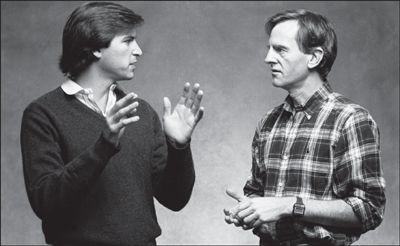
С Джоном Скалли, 1984
The Courtship
Ухаживание
Mike Markkula had never wanted to be Apple’s president. He liked designing his new houses, flying his private plane, and living high off his stock options; he did not relish adjudicating conflict or curating high-maintenance egos. He had stepped into the role reluctantly, after he felt compelled to ease out Mike Scott, and he promised his wife the gig would be temporary. By the end of 1982, after almost two years, she gave him an order: Find a replacement right away.
| living high off | живя на широкую ногу за счёт |
| adjudicating | разбирать, выносить решения по |
| stepped into | вступил в (роль) |
| ease out | мягко вытеснить |
Майк Марккула никогда не хотел быть президентом Apple. Ему нравилось проектировать новые дома, летать на личном самолёте и жить на широкую ногу на опционы; разбирать конфликты и ублажать капризные эго ему не нравилось. Вступил он в эту роль неохотно, после того как счёл нужным мягко вытеснить Майка Скотта, и пообещал жене, что должность временная. К концу 1982 года, почти два года спустя, она приказала: найди замену немедленно.
Jobs knew that he was not ready to run the company himself, even though there was a part of him that wanted to try. Despite his arrogance, he could be self-aware. Markkula agreed; he told Jobs that he was still a bit too rough-edged and immature to be Apple’s president. So they launched a search for someone from the outside.
| self-aware | способен трезво оценивать себя |
| rough-edged | с грубыми краями, неотшлифованный |
Джобс понимал, что сам управлять компанией пока не готов, хотя часть его и хотела попробовать. При всей самонадеянности он умел трезво оценивать себя. Марккула был согласен: он сказал Джобсу, что тот всё ещё слишком неотшлифован и незрел для поста президента Apple. И они начали искать человека со стороны.
The person they most wanted was Don Estridge, who had built IBM’s personal computer division from scratch and launched a PC that, even though Jobs and his team disparaged it, was now outselling Apple’s. Estridge had sheltered his division in Boca Raton, Florida, safely removed from the corporate mentality of Armonk, New York. Like Jobs, he was driven and inspiring, but unlike Jobs, he had the ability to allow others to think that his brilliant ideas were their own. Jobs flew to Boca Raton with the offer of a $1 million salary and a $1 million signing bonus, but Estridge turned him down. He was not the type who would jump ship to join the enemy. He also enjoyed being part of the establishment, a member of the Navy rather than a pirate. He was discomforted by Jobs’s tales of ripping off the phone company. When asked where he worked, he loved to be able to answer “IBM.”
| from scratch | с нуля |
| outselling | превосходит по продажам |
| driven | целеустремлённый |
| turned him down | отказал ему |
| jump ship | сбежать с корабля, переметнуться |
| discomforted by | смущали |
| ripping off | как он нагрел |
Больше всего им хотелось заполучить Дона Эстриджа, который с нуля построил подразделение персональных компьютеров IBM и выпустил ПК, теперь превосходивший Apple по продажам, хотя Джобс с командой его и высмеивали. Эстридж укрыл своё подразделение в Бока-Ратоне, Флорида, подальше от корпоративного мышления Армонка, Нью-Йорк. Как и Джобс, он был целеустремлённым и вдохновлял людей, но, в отличие от Джобса, умел позволить другим считать его блестящие идеи своими. Джобс прилетел в Бока-Ратон с предложением миллиона долларов жалованья и миллиона подъёмных, но Эстридж отказал. Не из тех он был, кто перебежит к врагу. Ему также нравилось быть частью истеблишмента — членом флота, а не пиратом. Его смущали рассказы Джобса о том, как тот нагрел телефонную компанию. На вопрос, где он работает, он обожал отвечать: «IBM».
So Jobs and Markkula enlisted Gerry Roche, a gregarious corporate headhunter, to find someone else. They decided not to focus on technology executives; what they needed was a consumer marketer who knew advertising and had the corporate polish that would play well on Wall Street. Roche set his sights on the hottest consumer marketing wizard of the moment, John Sculley, president of the Pepsi-Cola division of PepsiCo, whose Pepsi Challenge campaign had been an advertising and publicity triumph. When Jobs gave a talk to Stanford business students, he heard good things about Sculley, who had spoken to the class earlier. So he told Roche he would be happy to meet him.
| gregarious | общительный, компанейский |
| polish | лоск |
| set his sights on | нацелился на |
Тогда Джобс и Марккула привлекли Джерри Роша, общительного корпоративного охотника за головами, чтобы подыскать другого кандидата. Решили не останавливаться на технических руководителях; нужен был потребительский маркетолог, знающий рекламу и обладающий корпоративным лоском, который хорошо смотрелся бы на Уолл-стрит. Рош нацелился на самого модного в тот момент волшебника потребительского маркетинга — Джона Скалли, президента подразделения Pepsi-Cola в PepsiCo, чья кампания «Вызов Pepsi» стала триумфом рекламы и пиара. Выступая перед студентами Стэнфордской бизнес- школы, Джобс услышал лестные отзывы о Скалли, который выступал перед той же группой раньше. И передал Рошу, что будет рад познакомиться.
Sculley’s background was very different from Jobs’s. His mother was an Upper East Side Manhattan matron who wore white gloves when she went out, and his father was a proper Wall Street lawyer. Sculley was sent off to St. Mark’s School, then got his undergraduate degree from Brown and a business degree from Wharton. He had risen through the ranks at PepsiCo as an innovative marketer and advertiser, with little passion for product development or information technology.
| matron | почтенная дама, матрона |
| risen through the ranks | поднялся по служебной лестнице |
Происхождение у Скалли было совсем иным, чем у Джобса. Мать — почтенная дама с манхэттенского Верхнего Ист-Сайда, выходившая из дома в белых перчатках; отец — респектабельный уолл-стритовский юрист. Скалли отдали в школу Св. Марка, затем он получил степень бакалавра в Брауне и диплом бизнес-школы Уортон. В PepsiCo он поднялся по служебной лестнице как новаторский маркетолог и рекламист, без особой страсти к разработке продуктов и информационным технологиям.
Sculley flew to Los Angeles to spend Christmas with his two teenage children from a previous marriage. He took them to visit a computer store, where he was struck by how poorly the products were marketed. When his kids asked why he was so interested, he said he was planning to go up to Cupertino to meet Steve Jobs. They were totally blown away. They had grown up among movie stars, but to them Jobs was a true celebrity. It made Sculley take more seriously the prospect of being hired as his boss.
| struck by | поражён |
| blown away | потрясены, ошеломлены |
На Рождество Скалли полетел в Лос-Анджелес к двум детям-подросткам от предыдущего брака. Он сводил их в компьютерный магазин и поразился, как плохо там всё продают. Дети спросили, откуда такой интерес, и он сказал, что собирается в Купертино познакомиться со Стивом Джобсом. Те были совершенно ошеломлены. Они выросли среди кинозвёзд, но настоящей знаменитостью для них был Джобс. После этого Скалли стал серьёзнее относиться к перспективе стать его начальником.
When he arrived at Apple headquarters, Sculley was startled by the unassuming offices and casual atmosphere. “Most people were less formally dressed than PepsiCo’s maintenance staff,” he noted. Over lunch Jobs picked quietly at his salad, but when Sculley declared that most executives found computers more trouble than they were worth, Jobs clicked into evangelical mode. “We want to change the way people use computers,” he said.
| unassuming | скромные, без претензий |
| picked quietly at | тихо ковырялся в |
| clicked into | переключился на |
Прибыв в штаб-квартиру Apple, Скалли удивили скромные офисы и непринуждённая атмосфера. «Большинство людей одевались менее формально, чем техперсонал PepsiCo», — отметил он. За обедом Джобс тихо ковырялся в салате, но когда Скалли заявил, что большинство руководителей считают компьютеры лишней головной болью, Джобс переключился в проповеднический режим. «Мы хотим изменить то, как люди используют компьютеры», — сказал он.
On the flight home Sculley outlined his thoughts. The result was an eight-page memo on marketing computers to consumers and business executives. It was a bit sophomoric in parts, filled with underlined phrases, diagrams, and boxes, but it revealed his newfound enthusiasm for figuring out ways to sell something more interesting than soda. Among his recommendations: “Invest in in-store merchandizing that romances the consumer with Apple’s potential to enrich their life!” He was still reluctant to leave Pepsi, but Jobs intrigued him. “I was taken by this young, impetuous genius and thought it would be fun to get to know him a little better,” he recalled.
| outlined | набросал |
| sophomoric | студенчески-наивные |
| romances | очаровывает, соблазняет |
| intrigued | интриговал |
| impetuous | порывистый |
На обратном рейсе Скалли набросал свои мысли. Итогом стала восьмистраничная записка о продаже компьютеров потребителям и руководителям. Местами она была студенчески-наивной, полной подчёркнутых фраз, схем и рамок, но выдавала новообретённый энтузиазм: продавать что-то поинтереснее газировки. Среди рекомендаций: «Вкладывайтесь в оформление магазинов, которое очарует потребителя потенциалом Apple обогатить его жизнь!» Покидать Pepsi он ещё не хотел, но Джобс его интриговал. «Меня пленил этот юный порывистый гений, и я подумал, что будет интересно узнать его получше», — вспоминал он.
So Sculley agreed to meet again when Jobs next came to New York, which happened to be for the January 1983 Lisa introduction at the Carlyle Hotel. After the full day of press sessions, the Apple team was surprised to see an unscheduled visitor come into the suite. Jobs loosened his tie and introduced Sculley as the president of Pepsi and a potential big corporate customer. As John Couch demonstrated the Lisa, Jobs chimed in with bursts of commentary, sprinkled with his favorite words, “revolutionary” and “incredible,” claiming it would change the nature of human interaction with computers.
| chimed in with | вставлял |
Скалли согласился встретиться снова, когда Джобс в следующий раз будет в Нью-Йорке, — а тот как раз приехал в январе 1983 года на презентацию Lisa в отеле «Карлайл». После целого дня пресс-сессий команда Apple с удивлением увидела в номере незваного гостя. Джобс ослабил галстук и представил Скалли как президента Pepsi и потенциального крупного корпоративного клиента. Пока Джон Кауч демонстрировал Lisa, Джобс вставлял взрывы комментариев, усыпанные любимыми словами «революционный» и «невероятный», утверждая, что машина изменит саму природу взаимодействия человека с компьютером.
They then headed off to the Four Seasons restaurant, a shimmering haven of elegance and power. As Jobs ate a special vegan meal, Sculley described Pepsi’s marketing successes. The Pepsi Generation campaign, he said, sold not a product but a lifestyle and an optimistic outlook. “I think Apple’s got a chance to create an Apple Generation.” Jobs enthusiastically agreed. The Pepsi Challenge campaign, in contrast, focused on the product; it combined ads, events, and public relations to stir up buzz. The ability to turn the introduction of a new product into a moment of national excitement was, Jobs noted, what he and Regis McKenna wanted to do at Apple.
| haven | пристанище |
| outlook | взгляд на жизнь |
| stir up | раздувать |
Затем они отправились в ресторан Four Seasons — сияющее пристанище элегантности и власти. Пока Джобс ел особое веганское блюдо, Скалли описывал маркетинговые успехи Pepsi. Кампания «Поколение Pepsi», говорил он, продавала не продукт, а стиль жизни и оптимистичный взгляд на неё. «Думаю, у Apple есть шанс создать Поколение Apple». Джобс с энтузиазмом согласился. Кампания «Вызов Pepsi», напротив, делала упор на продукт: она соединяла рекламу, мероприятия и пиар, чтобы раздуть шумиху. Умение превращать запуск нового продукта в момент всенародного волнения, заметил Джобс, — как раз то, чего они с Реджисом Маккенной хотели добиться в Apple.
When they finished talking, it was close to midnight. “This has been one of the most exciting evenings in my whole life,” Jobs said as Sculley walked him back to the Carlyle. “I can’t tell you how much fun I’ve had.” When he finally got home to Greenwich, Connecticut, that night, Sculley had trouble sleeping. Engaging with Jobs was a lot more fun than negotiating with bottlers. “It stimulated me, roused my long-held desire to be an architect of ideas,” he later noted. The next morning Roche called Sculley. “I don’t know what you guys did last night, but let me tell you, Steve Jobs is ecstatic,” he said.
| roused | пробудило |
| ecstatic | в экстазе, вне себя от счастья |
Разговор закончился ближе к полуночи. «Это был один из самых захватывающих вечеров в моей жизни, — сказал Джобс, пока Скалли провожал его до «Карлайла». — Не передать, как мне было интересно». Добравшись той ночью домой в Гринвич, Коннектикут, Скалли долго не мог уснуть. Общение с Джобсом было куда веселее переговоров с бутилировщиками. «Оно стимулировало меня, пробудило давнее желание быть архитектором идей», — отмечал он позже. Наутро Рош позвонил Скалли: «Не знаю, что вы вчера устроили, но, скажу я тебе, Стив Джобс вне себя от счастья».
And so the courtship continued, with Sculley playing hard but not impossible to get. Jobs flew east for a visit one Saturday in February and took a limo up to Greenwich. He found Sculley’s newly built mansion ostentatious, with its floor-to-ceiling windows, but he admired the three hundred-pound custom-made oak doors that were so carefully hung and balanced that they swung open with the touch of a finger. “Steve was fascinated by that because he is, as I am, a perfectionist,” Sculley recalled. Thus began the somewhat unhealthy process of a star-struck Sculley perceiving in Jobs qualities that he fancied in himself.
| ostentatious | показной, хвастливый |
| star-struck | ослеплённый звездой |
Так и продолжалось ухаживание, причём Скалли ломался, но не отказывал. В одну из февральских суббот Джобс прилетел на восток и на лимузине добрался до Гринвича. Особняк Скалли показался ему показным, с окнами от пола до потолка, но восхитили дубовые двери в триста фунтов, сделанные на заказ и так точно подвешенные, что открывались от прикосновения пальца. «Стива это заворожило, потому что он, как и я, перфекционист», — вспоминал Скалли. Так начался не вполне здоровый процесс: ослеплённый звездой Скалли видел в Джобсе качества, которые ему хотелось видеть в себе.
Sculley usually drove a Cadillac, but, sensing his guest’s taste, he borrowed his wife’s Mercedes 450SL convertible to take Jobs to see Pepsi’s 144-acre corporate headquarters, which was as lavish as Apple’s was austere. To Jobs, it epitomized the difference between the feisty new digital economy and the Fortune 500 corporate establishment. A winding drive led through manicured fields and a sculpture garden (including pieces by Rodin, Moore, Calder, and Giacometti) to a concrete-and-glass building designed by Edward Durell Stone. Sculley’s huge office had a Persian rug, nine windows, a small private garden, a hideaway study, and its own bathroom. When Jobs saw the corporate fitness center, he was astonished that executives had an area, with its own whirlpool, separate from that of the regular employees. “That’s weird,” he said. Sculley hastened to agree. “As a matter of fact, I was against it, and I go over and work out sometimes in the employees’ area,” he said.
| austere | аскетична |
| epitomized | олицетворяла |
| feisty | дерзкая, бойкая |
| hastened | поспешил |
Скалли обычно ездил на «Кадиллаке», но, почувствовав вкус гостя, взял у жены кабриолет Mercedes 450SL, чтобы отвезти Джобса в 144-акровую штаб-квартиру Pepsi — столь же роскошную, сколь аскетична была Apple. Для Джобса она олицетворяла разницу между дерзкой новой цифровой экономикой и корпоративным истеблишментом из списка Fortune 500. Извилистая дорога вела через ухоженные поля и сад скульптур (с работами Родена, Мура, Колдера и Джакометти) к зданию из бетона и стекла по проекту Эдварда Дьюрелла Стоуна. В огромном кабинете Скалли были персидский ковёр, девять окон, маленький личный сад, укромный кабинет для занятий и собственный туалет. Увидев корпоративный фитнес-центр, Джобс поразился: у руководителей — отдельная зона с джакузи, не такая, как у обычных сотрудников. «Странно», — сказал он. Скалли поспешил согласиться. «Вообще-то я был против и сам иногда тренируюсь в зоне сотрудников», — сказал он.
Their next meeting was a few weeks later in Cupertino, when Sculley stopped on his way back from a Pepsi bottlers’ convention in Hawaii. Mike Murray, the Macintosh marketing manager, took charge of preparing the team for the visit, but he was not clued in on the real agenda. “PepsiCo could end up purchasing literally thousands of Macs over the next few years,” he exulted in a memo to the Macintosh staff. “During the past year, Mr. Sculley and a certain Mr. Jobs have become friends. Mr. Sculley is considered to be one of the best marketing heads in the big leagues; as such, let’s give him a good time here.”
| clued in on | посвящён в |
| exulted | ликовал |
Следующая встреча прошла через несколько недель в Купертино: Скалли заехал по пути с конвенции бутилировщиков Pepsi на Гавайях. Подготовку команды к визиту взял на себя Майк Мюррей, маркетолог Macintosh, но в истинную повестку его не посвятили. «PepsiCo может за ближайшие годы закупить буквально тысячи Mac», — ликовал он в записке сотрудникам Macintosh. «За последний год мистер Скалли и некий мистер Джобс подружились. Мистер Скалли считается одним из лучших руководителей маркетинга в высшей лиге, так давайте же примем его хорошо».
Jobs wanted Sculley to share his excitement about the Macintosh. “This product means more to me than anything I’ve done,” he said. “I want you to be the first person outside of Apple to see it.” He dramatically pulled the prototype out of a vinyl bag and gave a demonstration. Sculley found Jobs as memorable as his machine. “He seemed more a showman than a businessman. Every move seemed calculated, as if it was rehearsed, to create an occasion of the moment.”
| showman | шоумен |
Джобс хотел, чтобы Скалли разделил его восторг от Macintosh. «Этот продукт значит для меня больше всего, что я делал, — сказал он. — Хочу, чтобы вы стали первым человеком вне Apple, кто его увидит». Он театрально вынул прототип из виниловой сумки и устроил демонстрацию. Скалли запомнил Джобса не меньше, чем его машину. «Он казался скорее шоуменом, чем бизнесменом. Каждое движение выглядело рассчитанным, будто отрепетированным, чтобы создать событие момента».
Jobs had asked Hertzfeld and the gang to prepare a special screen display for Sculley’s amusement. “He’s really smart,” Jobs said. “You wouldn’t believe how smart he is.” The explanation that Sculley might buy a lot of Macintoshes for Pepsi “sounded a little bit fishy to me,” Hertzfeld recalled, but he and Susan Kare created a screen of Pepsi caps and cans that danced around with the Apple logo. Hertzfeld was so excited he began waving his arms around during the demo, but Sculley seemed underwhelmed. “He asked a few questions, but he didn’t seem all that interested,” Hertzfeld recalled. He never ended up warming to Sculley. “He was incredibly phony, a complete poseur,” he later said. “He pretended to be interested in technology, but he wasn’t. He was a marketing guy, and that is what marketing guys are: paid poseurs.”
| fishy | подозрительно, сомнительно |
| underwhelmed | не впечатлён |
| phony | фальшивый, притворный |
| poseur | позёр |
Джобс попросил Херцфельда и компанию подготовить особую картинку на экране, чтобы развлечь Скалли. «Он очень умён, — сказал Джобс. — Вы не поверите, насколько». Объяснение, что Скалли может закупить для Pepsi кучу Macintosh, «звучало для меня слегка подозрительно», вспоминал Херцфельд, но они с Сьюзен Кэр сделали экран, где крышки и банки Pepsi плясали вокруг логотипа Apple. Херцфельд так разошёлся, что размахивал руками во время показа, но Скалли, похоже, не впечатлился. «Он задал пару вопросов, но особого интереса не проявил», — вспоминал Херцфельд. Симпатии к Скалли у него так и не возникло. «Он был невероятно фальшивым, законченный позёр, — говорил он позже. — Он делал вид, что интересуется технологиями, но это было не так. Он был маркетологом, а маркетологи все такие: оплаченные позёры».
Matters came to a head when Jobs visited New York in March 1983 and was able to convert the courtship into a blind and blinding romance. “I really think you’re the guy,” Jobs said as they walked through Central Park. “I want you to come and work with me. I can learn so much from you.” Jobs, who had cultivated father figures in the past, knew just how to play to Sculley’s ego and insecurities. It worked. “I was smitten by him,” Sculley later admitted. “Steve was one of the brightest people I’d ever met. I shared with him a passion for ideas.”
| came to a head | достигли кульминации |
| play to | играть на |
| smitten by | очарован, покорён |
Всё достигло кульминации, когда Джобс в марте 1983 года приехал в Нью-Йорк и сумел превратить ухаживание в слепой и ослепляющий роман. «Мне правда кажется, ты — тот самый, — говорил Джобс на прогулке по Центральному парку. — Я хочу, чтобы ты пришёл работать со мной. Я столькому могу у тебя научиться». Джобс, и прежде культивировавший фигуры отцов, отлично знал, как сыграть на эго и неуверенности Скалли. Сработало. «Я был им покорён, — признавал позже Скалли. — Стив был одним из самых блестящих людей, которых я встречал. Я разделял его страсть к идеям».
Sculley, who was interested in art history, steered them toward the Metropolitan Museum for a little test of whether Jobs was really willing to learn from others. “I wanted to see how well he could take coaching in a subject where he had no background,” he recalled. As they strolled through the Greek and Roman antiquities, Sculley expounded on the difference between the Archaic sculpture of the sixth century B.C. and the Periclean sculptures a century later. Jobs, who loved to pick up historical nuggets he never learned in college, seemed to soak it in. “I gained a sense that I could be a teacher to a brilliant student,” Sculley recalled. Once again he indulged the conceit that they were alike: “I saw in him a mirror image of my younger self. I, too, was impatient, stubborn, arrogant, impetuous. My mind exploded with ideas, often to the exclusion of everything else. I, too, was intolerant of those who couldn’t live up to my demands.”
| expounded on | разглагольствовал о |
| nuggets | крупицы, жемчужины |
| soak it in | впитывать |
| conceit | самолюбивая иллюзия |
Скалли, интересовавшийся историей искусства, повёл их в Метрополитен-музей — проверить, способен ли Джобс действительно учиться у других. «Я хотел посмотреть, как он воспринимает наставления в области, где у него нет никакой базы», — вспоминал он. Бродя среди греческих и римских древностей, Скалли разглагольствовал о разнице между архаической скульптурой VI века до н. э. и перикловскими творениями веком позже. Джобс, любивший подхватывать исторические крупицы, которых не учил в колледже, впитывал каждое слово. «Я почувствовал, что могу быть учителем для блестящего ученика», — вспоминал Скалли. И снова поддался самолюбивой иллюзии сходства: «Я видел в нём зеркальное отражение себя молодого. Я тоже был нетерпелив, упрям, высокомерен, порывист. Мой ум взрывался идеями, часто вытесняя всё остальное. Я тоже не терпел тех, кто не соответствовал моим требованиям».
As they continued their long walk, Sculley confided that on vacations he went to the Left Bank in Paris to draw in his sketchbook; if he hadn’t become a businessman, he would be an artist. Jobs replied that if he weren’t working with computers, he could see himself as a poet in Paris. They continued down Broadway to Colony Records on Forty-ninth Street, where Jobs showed Sculley the music he liked, including Bob Dylan, Joan Baez, Ella Fitzgerald, and the Windham Hill jazz artists. Then they walked all the way back up to the San Remo on Central Park West and Seventy-fourth, where Jobs was planning to buy a two-story tower penthouse apartment.
| penthouse | пентхаус |
Продолжая долгую прогулку, Скалли признался, что в отпуске ездит на Левый берег в Париж рисовать в альбоме: не стань он бизнесменом, был бы художником. Джобс ответил, что, не работай он с компьютерами, видел бы себя поэтом в Париже. По Бродвею они дошли до музыкального магазина Colony Records на Сорок девятой улице, где Джобс показал Скалли любимую музыку — Боба Дилана, Джоан Баэз, Эллу Фицджеральд и джаз с лейбла Windham Hill. Потом они пешком вернулись к «Сан-Ремо» на Семьдесят четвёртой у Сентрал-Парк-Уэст, где Джобс собирался купить двухэтажный пентхаус в башне.
The consummation occurred outside the penthouse on one of the terraces, with Sculley sticking close to the wall because he was afraid of heights. First they discussed money. “I told him I needed $1 million in salary, $1 million for a sign-up bonus,” said Sculley. Jobs claimed that would be doable. “Even if I have to pay for it out of my own pocket,” he said. “We’ll have to solve those problems, because you’re the best person I’ve ever met. I know you’re perfect for Apple, and Apple deserves the best.” He added that never before had he worked for someone he really respected, but he knew that Sculley was the person who could teach him the most. Jobs gave him his unblinking stare.
| doable | выполнимо |
| unblinking stare | немигающий взгляд |
Кульминация наступила снаружи пентхауса, на одной из террас, причём Скалли жался к стене, боясь высоты. Сначала поговорили о деньгах. «Я сказал ему, что мне нужен миллион долларов жалованья и миллион подъёмных», — говорил Скалли. Джобс заявил, что это выполнимо. «Даже если придётся доплатить из собственного кармана, — сказал он. — Эти проблемы мы решим, потому что ты — лучший из людей, которых я встречал. Я знаю, ты идеален для Apple, а Apple заслуживает лучшего». Он добавил, что ещё никогда не работал на человека, которого по-настоящему уважает, но уверен: Скалли — тот, кто может научить его большему всех. Джобс посмотрел на него немигающим взглядом.
Sculley uttered one last demurral, a token suggestion that maybe they should just be friends and he could offer Jobs advice from the sidelines. “Any time you’re in New York, I’d love to spend time with you.” He later recounted the climactic moment: “Steve’s head dropped as he stared at his feet. After a weighty, uncomfortable pause, he issued a challenge that would haunt me for days. ‘Do you want to spend the rest of your life selling sugared water, or do you want a chance to change the world?’”
| demurral | отговорка, возражение |
| sidelines | со стороны, с боковой линии |
| sugared water | подслащённая вода |
Скалли выдал последнюю отговорку — дежурное предложение остаться просто друзьями: он мог бы советовать Джобсу со стороны. «Приезжай в Нью-Йорк — с радостью проведу с тобой время». Позже он пересказывал кульминационный момент: «Голова Стива опустилась, он уставился на свои ноги. После тяжёлой, неловкой паузы он бросил вызов, который преследовал меня несколько дней: „Ты хочешь до конца жизни продавать подслащённую воду или хочешь получить шанс изменить мир?“»
Sculley felt as if he had been punched in the stomach. There was no response possible other than to acquiesce. “He had an uncanny ability to always get what he wanted, to size up a person and know exactly what to say to reach a person,” Sculley recalled. “I realized for the first time in four months that I couldn’t say no.” The winter sun was beginning to set. They left the apartment and walked back across the park to the Carlyle.
| acquiesce | уступить, сдаться |
| uncanny | сверхъестественная, поразительная |
| size up | оценить, раскусить |
Скалли почувствовал себя так, будто его ударили под дых. Ответить что-то, кроме согласия, было невозможно. «У него была поразительная способность всегда добиваться своего — раскусить человека и точно знать, что сказать, чтобы до него достучаться, — вспоминал Скалли. — Я впервые за четыре месяца понял, что не могу сказать „нет“». Зимнее солнце клонилось к закату. Они вышли из квартиры и пошли назад через парк к «Карлайлу».
The Honeymoon
Медовый месяц
Sculley arrived in California just in time for the May 1983 Apple management retreat at Pajaro Dunes. Even though he had left all but one of his dark suits back in Greenwich, he was still having trouble adjusting to the casual atmosphere. In the front of the meeting room, Jobs sat on the floor in the lotus position absentmindedly playing with the toes of his bare feet. Sculley tried to impose an agenda; he wanted to discuss how to differentiate their products—the Apple II, Apple III, Lisa, and Mac—and whether it made sense to organize the company around product lines or markets or functions. But the discussion descended into a free-for-all of random ideas, complaints, and debates.
| lotus position | поза лотоса |
| impose an agenda | навязать повестку |
| free-for-all | свалка, всеобщая потасовка |
Скалли приехал в Калифорнию как раз к майскому управленческому семинару Apple 1983 года в Пахаро-Дюнс. Хотя почти все тёмные костюмы он оставил в Гринвиче, привыкнуть к непринуждённой атмосфере было всё равно трудно. Впереди конференц-зала Джобс сидел на полу в позе лотоса, рассеянно играя пальцами своих босых ног. Скалли попытался навязать повестку: обсудить, как развести продукты — Apple II, Apple III, Lisa и Mac — и стоит ли строить компанию по продуктам, рынкам или функциям. Но обсуждение скатилось в свалку случайных идей, жалоб и споров.
At one point Jobs attacked the Lisa team for producing an unsuccessful product. “Well,” someone shot back, “you haven’t delivered the Macintosh! Why don’t you wait until you get a product out before you start being critical?” Sculley was astonished. At Pepsi no one would have challenged the chairman like that. “Yet here, everyone began pig-piling on Steve.” It reminded him of an old joke he had heard from one of the Apple ad salesmen: “What’s the difference between Apple and the Boy Scouts? The Boy Scouts have adult supervision.”
| shot back | огрызнулся, парировал |
| pig-piling on | наваливаться кучей на |
В какой-то момент Джобс набросился на команду Lisa за неудачный продукт. «Ну, — парировал кто-то, — а Macintosh ты ещё не выпустил! Может, сначала выпусти продукт, а потом критикуй?» Скалли был поражён. В Pepsi никто не посмел бы так оспорить председателя. «А здесь все разом навалились на Стива». Ему вспомнилась старая шутка одного из рекламных агентов Apple: «Чем Apple отличается от бойскаутов? У бойскаутов есть надзор взрослых».
In the midst of the bickering, a small earthquake began to rumble the room. “Head for the beach,” someone shouted. Everyone ran through the door to the water. Then someone else shouted that the previous earthquake had produced a tidal wave, so they all turned and ran the other way. “The indecision, the contradictory advice, the specter of natural disaster, only foreshadowed what was to come,” Sculley later wrote.
| bickering | перебранка, грызня |
| rumble | сотрясать, грохотать |
| foreshadowed | предвещало |
В самый разгар перебранки комнату начало сотрясать небольшое землетрясение. «Все на пляж!» — крикнул кто-то. Все выбежали к воде. Затем кто-то ещё крикнул, что прошлое землетрясение вызвало цунами, — и все развернулись и побежали обратно. «Нерешительность, противоречивые советы, призрак стихийного бедствия — всё это лишь предвещало грядущее», — писал позже Скалли.
One Saturday morning Jobs invited Sculley and his wife, Leezy, over for breakfast. He was then living in a nice but unexceptional Tudor-style home in Los Gatos with his girlfriend, Barbara Jasinski, a smart and reserved beauty who worked for Regis McKenna. Leezy had brought a pan and made vegetarian omelets. (Jobs had edged away from his strict vegan diet for the time being.) “I’m sorry I don’t have much furniture,” Jobs apologized. “I just haven’t gotten around to it.” It was one of his enduring quirks: His exacting standards of craftsmanship combined with a Spartan streak made him reluctant to buy any furnishings that he wasn’t passionate about. He had a Tiffany lamp, an antique dining table, and a laser disc video attached to a Sony Trinitron, but foam cushions on the floor rather than sofas and chairs. Sculley smiled and mistakenly thought that it was similar to his own “frantic and Spartan life in a cluttered New York City apartment” early in his own career.
| reserved | сдержанная |
| edged away from | потихоньку отошёл от |
| quirks | причуды |
Однажды в субботу утром Джобс пригласил Скалли с женой Лизи на завтрак. Он тогда жил в хорошеньком, но ничем не примечательном доме в тюдоровском стиле в Лос-Гатосе со своей девушкой Барбарой Ясински, умной сдержанной красавицей из агентства Реджиса Маккенны. Лизи принесла сковороду и сделала вегетарианские омлеты. (Джобс к тому времени потихоньку отошёл от строгой веганской диеты.) «Извините, у меня мало мебели, — сказал Джобс. — Всё руки не доходят». Это была одна из его давних причуд: строгие стандарты мастерства в сочетании со спартанской жилкой мешали ему покупать любую мебель, к которой он не испытывал страсти. У него были лампа Тиффани, антикварный обеденный стол и лазерный видеодиск, подключённый к Sony Trinitron, но вместо диванов и кресел — поролоновые подушки на полу. Скалли улыбнулся и ошибочно решил, что это похоже на его собственную «лихорадочно-спартанскую жизнь в захламлённой нью-йоркской квартире» в начале карьеры.
Jobs confided in Sculley that he believed he would die young, and therefore he needed to accomplish things quickly so that he would make his mark on Silicon Valley history. “We all have a short period of time on this earth,” he told the Sculleys as they sat around the table that morning. “We probably only have the opportunity to do a few things really great and do them well. None of us has any idea how long we’re going to be here, nor do I, but my feeling is I’ve got to accomplish a lot of these things while I’m young.”
| make his mark on | оставить след в |
Джобс признался Скалли, что верит: он умрёт молодым, — а значит, нужно всё делать быстро, чтобы оставить след в истории Кремниевой долины. «Нам на этой земле отведено немного времени, — говорил он супругам Скалли за тем утренним столом. — Наверное, у нас есть шанс сделать лишь несколько по-настоящему великих вещей и сделать их хорошо. Никто не знает, сколько мы здесь пробудем, я тоже, но чувствую: многое из этого я должен успеть, пока молод».
Jobs and Sculley would talk dozens of times a day in the early months of their relationship. “Steve and I became soul mates, near constant companions,” Sculley said. “We tended to speak in half sentences and phrases.” Jobs flattered Sculley. When he dropped by to hash something out, he would say something like “You’re the only one who will understand.” They would tell each other repeatedly, indeed so often that it should have been worrying, how happy they were to be with each other and working in tandem. And at every opportunity Sculley would find similarities with Jobs and point them out:
| soul mates | родственные души |
| dropped by | заходил |
| hash something out | что-нибудь обсудить, утрясти |
В первые месяцы их отношений Джобс и Скалли разговаривали десятки раз в день. «Мы со Стивом стали родственными душами, почти неразлучными спутниками, — говорил Скалли. — Мы общались полуфразами и намёками». Джобс льстил Скалли. Заходя что-нибудь утрясти, он говорил в духе «Только ты один и поймёшь». Они без конца — так часто, что это должно было насторожить, — повторяли друг другу, как счастливы быть вместе и работать в тандеме. И при каждой возможности Скалли находил сходства с Джобсом и указывал на них:
We could complete each other’s sentences because we were on the same wavelength. Steve would rouse me from sleep at 2 a.m. with a phone call to chat about an idea that suddenly crossed his mind. “Hi! It’s me,” he’d harmlessly say to the dazed listener, totally unaware of the time. I curiously had done the same in my Pepsi days. Steve would rip apart a presentation he had to give the next morning, throwing out slides and text. So had I as I struggled to turn public speaking into an important management tool during my early days at Pepsi. As a young executive, I was always impatient to get things done and often felt I could do them better myself. So did Steve. Sometimes I felt as if I was watching Steve playing me in a movie. The similarities were uncanny, and they were behind the amazing symbiosis we developed.
| wavelength | волна; on the same wavelength — на одной волне |
| rouse me from sleep | поднимать меня с постели |
| rip apart | разнести в клочья |
| uncanny | сверхъестественные, жутковатые |
| symbiosis | симбиоз |
Мы заканчивали друг за друга фразы, потому что были на одной волне. Стив поднимал меня с постели звонком в два часа ночи, чтобы поболтать о внезапно пришедшей идее. «Привет! Это я», — безобидно говорил он ошарашенному слушателю, не замечая времени. Я, любопытно, делал то же в годы Pepsi. Стив разносил в клочья презентацию, которую должен был дать наутро, выбрасывая слайды и текст. И я так делал, превращая публичные выступления в важный инструмент управления в ранние дни Pepsi. Молодым руководителем я вечно торопился завершить дела и часто считал, что сам сделаю лучше. Как и Стив. Иногда казалось, будто я смотрю, как Стив играет меня в кино. Сходство было сверхъестественным — на нём и держался поразительный симбиоз, который мы выстроили.
This was self-delusion, and it was a recipe for disaster. Jobs began to sense it early on. “We had different ways of looking at the world, different views on people, different values,” Jobs recalled. “I began to realize this a few months after he arrived. He didn’t learn things very quickly, and the people he wanted to promote were usually bozos.”
| self-delusion | самообман |
| recipe for disaster | рецепт катастрофы |
| bozos | болваны |
Это был самообман — рецепт катастрофы. Джобс начал чувствовать это рано. «У нас были разные взгляды на мир, разные мнения о людях, разные ценности, — вспоминал Джобс. — Я начал это понимать через несколько месяцев после его прихода. Он медленно учился, а люди, которых он хотел продвигать, обычно были болванами».
Yet Jobs knew that he could manipulate Sculley by encouraging his belief that they were so alike. And the more he manipulated Sculley, the more contemptuous of him he became. Canny observers in the Mac group, such as Joanna Hoffman, soon realized what was happening and knew that it would make the inevitable breakup more explosive. “Steve made Sculley feel like he was exceptional,” she said. “Sculley had never felt that. Sculley became infatuated, because Steve projected on him a whole bunch of attributes that he didn’t really have. When it became clear that Sculley didn’t match all of these projections, Steve’s distortion of reality had created an explosive situation.”
| contemptuous | презрительный |
| explosive | взрывоопасным |
| infatuated | влюблён, очарован |
Но Джобс знал, что может манипулировать Скалли, поощряя его веру в их сходство. И чем больше манипулировал, тем презрительнее к нему относился. Проницательные наблюдатели из группы Mac, как Джоанна Хоффман, быстро поняли, что происходит, и знали: разрыв от этого станет лишь взрывоопаснее. «Стив заставил Скалли почувствовать себя исключительным, — говорила она. — Скалли никогда такого не чувствовал. Скалли влюбился, потому что Стив спроецировал на него кучу качеств, которых у того не было. Когда стало ясно, что Скалли этим проекциям не соответствует, искажение реальности создало взрывоопасную ситуацию».
The ardor eventually began to cool on Sculley’s side as well. Part of his weakness in trying to manage a dysfunctional company was his desire to please other people, one of many traits that he did not share with Jobs. He was a polite person; this caused him to recoil at Jobs’s rudeness to their fellow workers. “We would go to the Mac building at eleven at night,” he recalled, “and they would bring him code to show. In some cases he wouldn’t even look at it. He would just take it and throw it back at them. I’d say, ‘How can you turn it down?’ And he would say, ‘I know they can do better.’” Sculley tried to coach him. “You’ve got to learn to hold things back,” he told him at one point. Jobs would agree, but it was not in his nature to filter his feelings through a gauze.
| ardor | пыл, страсть |
| recoil at | содрогаться от |
| coach | наставлять |
| hold things back | сдерживаться |
| gauze | марля, завеса |
Со временем пыл начал остывать и со стороны Скалли. Отчасти его слабостью в управлении неблагополучной компанией было желание нравиться людям — одна из многих черт, которых он не разделял с Джобсом. Человек вежливый, он содрогался от грубости Джобса к коллегам. «Мы приходили в здание Mac в одиннадцать вечера, — вспоминал он, — и ему приносили показать код. Иногда он даже не смотрел. Просто брал и швырял обратно. Я спрашивал: „Как можно отвергнуть?“ А он отвечал: „Я знаю, они могут лучше“». Скалли пытался его наставлять. «Ты должен научиться сдерживаться», — сказал он однажды. Джобс соглашался, но фильтровать чувства через марлю было не в его натуре.
Sculley began to believe that Jobs’s mercurial personality and erratic treatment of people were rooted deep in his psychological makeup, perhaps the reflection of a mild bipolarity. There were big mood swings; sometimes he would be ecstatic, at other times he was depressed. At times he would launch into brutal tirades without warning, and Sculley would have to calm him down. “Twenty minutes later, I would get another call and be told to come over because Steve is losing it again,” he said.
| mercurial | переменчивый, ртутный |
| erratic | непредсказуемое |
| bipolarity | биполярность |
| launch into | разражаться |
Скалли начал думать, что переменчивая личность Джобса и непредсказуемое обращение с людьми коренятся глубоко в его психике — возможно, это отражение лёгкой биполярности. Перепады настроения были огромны: то экстаз, то депрессия. Порой он без предупреждения разражался жестокими тирадами, и Скалли приходилось его успокаивать. «Через двадцать минут — новый звонок: приезжай, Стив опять слетает с катушек», — говорил он.
Their first substantive disagreement was over how to price the Macintosh. It had been conceived as a $1,000 machine, but Jobs’s design changes had pushed up the cost so that the plan was to sell it at $1,995. However, when Jobs and Sculley began making plans for a huge launch and marketing push, Sculley decided that they needed to charge $500 more. To him, the marketing costs were like any other production cost and needed to be factored into the price. Jobs resisted, furiously. “It will destroy everything we stand for,” he said. “I want to make this a revolution, not an effort to squeeze out profits.” Sculley said it was a simple choice: He could have the $1,995 price or he could have the marketing budget for a big launch, but not both.
| pushed up | взвинтили |
| factored into | заложены в |
| squeeze out | выжимать |
Первое серьёзное разногласие касалось цены Macintosh. Машину задумывали за 1000 долларов, но дизайнерские изменения Джобса взвинтили стоимость, и план был продавать её за 1995. Однако когда Джобс и Скалли начали планировать грандиозный запуск и маркетинговый натиск, Скалли решил, что надо брать на 500 долларов больше. Для него расходы на маркетинг были такой же производственной издержкой, которую следует заложить в цену. Джобс яростно сопротивлялся. «Это уничтожит всё, за что мы стоим, — говорил он. — Я хочу сделать революцию, а не выжимать прибыль». Скалли сказал, что выбор прост: либо цена 1995, либо бюджет на большой запуск — но не то и другое сразу.
“You’re not going to like this,” Jobs told Hertzfeld and the other engineers, “but Sculley is insisting that we charge $2,495 for the Mac instead of $1,995.” Indeed the engineers were horrified. Hertzfeld pointed out that they were designing the Mac for people like themselves, and overpricing it would be a “betrayal” of what they stood for. So Jobs promised them, “Don’t worry, I’m not going to let him get away with it!” But in the end, Sculley prevailed. Even twenty-five years later Jobs seethed when recalling the decision: “It’s the main reason the Macintosh sales slowed and Microsoft got to dominate the market.” The decision made him feel that he was losing control of his product and company, and this was as dangerous as making a tiger feel cornered.
| betrayal | предательство |
| get away with it | провернуть это безнаказанно |
| prevailed | одержал верх |
| seethed | кипел от злости |
«Вам это не понравится, — сказал Джобс Херцфельду и другим инженерам, — но Скалли настаивает, чтобы мы продавали Mac за 2495 долларов вместо 1995». Инженеры и правда ужаснулись. Херцфельд заметил, что они делают Mac для таких же людей, как они сами, и завышенная цена станет «предательством» всего, за что они стоят. Тогда Джобс пообещал: «Не волнуйтесь, я не дам ему провернуть это безнаказанно!» Но в итоге верх одержал Скалли. Даже двадцать пять лет спустя Джобс кипел от злости, вспоминая то решение: «Это главная причина, почему продажи Macintosh замедлились и Microsoft захватила рынок». Решение заставило его почувствовать, что он теряет контроль над продуктом и компанией, — а это так же опасно, как загнать тигра в угол.
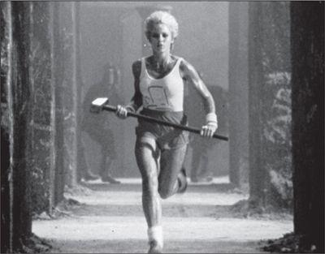
Реклама «1984»
Real Artists Ship
Настоящие художники выпускают продукт
The high point of the October 1983 Apple sales conference in Hawaii was a skit based on a TV show called The Dating Game. Jobs played emcee, and his three contestants, whom he had convinced to fly to Hawaii, were Bill Gates and two other software executives, Mitch Kapor and Fred Gibbons. As the show’s jingly theme song played, the three took their stools. Gates, looking like a high school sophomore, got wild applause from the 750 Apple salesmen when he said, “During 1984, Microsoft expects to get half of its revenues from software for the Macintosh.” Jobs, clean-shaven and bouncy, gave a toothy smile and asked if he thought that the Macintosh’s new operating system would become one of the industry’s new standards. Gates answered, “To create a new standard takes not just making something that’s a little bit different, it takes something that’s really new and captures people’s imagination. And the Macintosh, of all the machines I’ve ever seen, is the only one that meets that standard.”
| emcee | конферансье, ведущий |
Гвоздём октябрьской торговой конференции Apple 1983 года на Гавайях стала сценка по мотивам телешоу «Игра свиданий». Джобс выступил ведущим, а трое его участников, которых он уговорил прилететь на Гавайи, — Билл Гейтс и ещё два руководителя софтверных компаний, Митч Кейпор и Фред Гиббонс. Под звонкую заставку троица заняла табуреты. Гейтс, похожий на десятиклассника, сорвал бурные аплодисменты 750 продавцов Apple, заявив: «В 1984 году Microsoft рассчитывает получать половину выручки от программ для Macintosh». Джобс, гладко выбритый и энергичный, широко улыбнулся и спросил, станет ли, по мнению Гейтса, новая операционная система Macintosh одним из отраслевых стандартов. Гейтс ответил: «Чтобы создать новый стандарт, мало сделать что-то слегка иное — нужно нечто действительно новое, что захватывает воображение. И Macintosh из всех виденных мной машин — единственная, отвечающая этому стандарту».
But even as Gates was speaking, Microsoft was edging away from being primarily a collaborator with Apple to being more of a competitor. It would continue to make application software, like Microsoft Word, for Apple, but a rapidly increasing share of its revenue would come from the operating system it had written for the IBM personal computer. The year before, 279,000 Apple IIs were sold, compared to 240,000 IBM PCs and its clones. But the figures for 1983 were coming in starkly different: 420,000 Apple IIs versus 1.3 million IBMs and its clones. And both the Apple III and the Lisa were dead in the water.
| edging away from | постепенно уходил от |
| dead in the water | недвижимы, провалились |
Но даже пока Гейтс это говорил, Microsoft постепенно превращалась из союзника Apple в её конкурента. Прикладные программы вроде Microsoft Word она продолжала делать и для Apple, однако всё большая доля выручки шла от операционной системы, написанной для персональных компьютеров IBM. Годом раньше было продано 279 000 Apple II против 240 000 IBM PC с клонами. Но цифры 1983 года выглядели резко иначе: 420 000 Apple II против 1,3 миллиона IBM с клонами. А Apple III и Lisa не двигались с места.
Just when the Apple sales force was arriving in Hawaii, this shift was hammered home on the cover of Business Week. Its headline: “Personal Computers: And the Winner Is . . . IBM.” The story inside detailed the rise of the IBM PC. “The battle for market supremacy is already over,” the magazine declared. “In a stunning blitz, IBM has taken more than 26% of the market in two years, and is expected to account for half the world market by 1985. An additional 25% of the market will be turning out IBM-compatible machines.”
| hammered home | вбита в головы |
| blitz | молниеносный натиск |
Как раз когда продавцы Apple прибывали на Гавайи, этот сдвиг был вбит в головы обложкой Business Week: «Персональные компьютеры: победитель — ... IBM». Статья подробно описывала восхождение IBM PC. «Битва за господство на рынке уже окончена, — объявлял журнал. — Ошеломительным натиском IBM за два года взяла более 26% рынка, а к 1985 году, как ожидается, получит половину мирового. Ещё 25% рынка будут выпускать IBM-совместимые машины».
That put all the more pressure on the Macintosh, due out in January 1984, three months away, to save the day against IBM. At the sales conference Jobs decided to play the showdown to the hilt. He took the stage and chronicled all the missteps made by IBM since 1958, and then in ominous tones described how it was now trying to take over the market for personal computers: “Will Big Blue dominate the entire computer industry? The entire information age? Was George Orwell right about 1984?” At that moment a screen came down from the ceiling and showed a preview of an upcoming sixty-second television ad for the Macintosh. In a few months it was destined to make advertising history, but in the meantime it served its purpose of rallying Apple’s demoralized sales force. Jobs had always been able to draw energy by imagining himself as a rebel pitted against the forces of darkness. Now he was able to energize his troops with the same vision.
| save the day | спасти положение |
| to the hilt | до конца, на всю катушку |
Это лишь усилило давление на Macintosh, выход которого в январе 1984 года был через три месяца и который должен был спасти положение в борьбе с IBM. На торговой конференции Джобс решил сыграть решающий бой до конца. Он вышел на сцену, перечислил все промахи IBM с 1958 года, а затем зловещим тоном описал, как она теперь пытается захватить рынок персональных компьютеров: «Господство Голубого гиганта охватит всю компьютерную индустрию? Всю информационную эру? Был ли прав Джордж Оруэлл насчёт 1984 года?» В этот миг с потолка опустился экран и показал анонс грядущего шестидесятисекундного телеролика для Macintosh. Через несколько месяцев ему суждено было войти в историю рекламы, а пока он исполнил свою задачу — встряхнул деморализованных продавцов Apple. Джобс всегда черпал энергию, представляя себя бунтарём против сил тьмы. Теперь он зарядил тем же видением свои войска.
There was one more hurdle: Hertzfeld and the other wizards had to finish writing the code for the Macintosh. It was due to start shipping on Monday, January 16. One week before that, the engineers concluded they could not make that deadline.
| hurdle | препятствие, барьер |
Оставалось одно препятствие: Херцфельд и прочие волшебники должны были дописать код Macintosh. Отгрузка намечалась на понедельник, 16 января. За неделю до срока инженеры пришли к выводу, что не успевают.
Jobs was at the Grand Hyatt in Manhattan, preparing for the press previews, so a Sunday morning conference call was scheduled. The software manager calmly explained the situation to Jobs, while Hertzfeld and the others huddled around the speakerphone holding their breath. All they needed was an extra two weeks. The initial shipments to the dealers could have a version of the software labeled “demo,” and these could be replaced as soon as the new code was finished at the end of the month. There was a pause. Jobs did not get angry; instead he spoke in cold, somber tones. He told them they were really great. So great, in fact, that he knew they could get this done. “There’s no way we’re slipping!” he declared. There was a collective gasp in the Bandley building work space. “You guys have been working on this stuff for months now, another couple weeks isn’t going to make that much of a difference. You may as well get it over with. I’m going to ship the code a week from Monday, with your names on it.”
| holding their breath | затаив дыхание |
| slipping | срываем сроки |
Джобс был в манхэттенском Grand Hyatt и готовился к пресс-показам, поэтому назначили воскресную утреннюю конференц-связь. Менеджер по программам спокойно изложил Джобсу ситуацию, а Херцфельд с остальными затаив дыхание сгрудились у громкой связи. Им нужны были лишь две лишние недели. Первые поставки дилерам могли выйти с версией программы с пометкой «демо», которую заменили бы, как только в конце месяца будет готов новый код. Повисла пауза. Джобс не разозлился — заговорил холодно и мрачно. Он сказал, что они действительно великие. Настолько великие, что, он уверен, им это по силам. «Мы не сорвём сроки!» — объявил он. В рабочем зале здания на Бэнди-драйв пронёсся общий вздох. «Вы уже месяцами над этим бьётесь, пара лишних недель погоды не сделает. Доводите до конца. Я отгружаю код в понедельник через неделю — с вашими именами на нём».
“Well, we’ve got to finish it,” Steve Capps said. And so they did. Once again, Jobs’s reality distortion field pushed them to do what they had thought impossible. On Friday Randy Wigginton brought in a huge bag of chocolate-covered espresso beans for the final three all-nighters. When Jobs arrived at work at 8:30 a.m. that Monday, he found Hertzfeld sprawled nearly comatose on the couch. They talked for a few minutes about a remaining tiny glitch, and Jobs decreed that it wasn’t a problem. Hertzfeld dragged himself to his blue Volkswagen Rabbit (license plate: MACWIZ) and drove home to bed. A short while later Apple’s Fremont factory began to roll out boxes emblazoned with the colorful line drawings of the Macintosh. Real artists ship, Jobs had declared, and now the Macintosh team had.
| all-nighters | бессонные ночи |
| comatose | почти без сознания |
| glitch | сбой, недочёт |
| emblazoned with | украшенные |
«Что ж, придётся дописать», — сказал Стив Кэппс. Так они и сделали. Поле искажения реальности Джобса снова подтолкнуло их к тому, что казалось невозможным. В пятницу Рэнди Уиггинтон принёс огромный пакет эспрессо-бобов в шоколаде — на три финальные бессонные ночи. Придя на работу в 8:30 утра в тот понедельник, Джобс застал Херцфельда распростёртым на диване почти без сознания. Они пару минут обсудили крошечный оставшийся сбой, и Джобс постановил, что это не проблема. Херцфельд дополз до своего синего Volkswagen Rabbit (номерной знак: MACWIZ) и уехал домой спать. Вскоре фремонтский завод Apple начал выпускать коробки, украшенные цветными контурными рисунками Macintosh. «Настоящие художники выпускают продукт», — провозглашал Джобс, и команда Macintosh это сделала.
The “1984” Ad
Реклама «1984»
In the spring of 1983, when Jobs had begun to plan for the Macintosh launch, he asked for a commercial that was as revolutionary and astonishing as the product they had created. “I want something that will stop people in their tracks,” he said. “I want a thunderclap.” The task fell to the Chiat/Day advertising agency, which had acquired the Apple account when it bought the advertising side of Regis McKenna’s business. The person put in charge was a lanky beach bum with a bushy beard, wild hair, goofy grin, and twinkling eyes named Lee Clow, who was the creative director of the agency’s office in the Venice Beach section of Los Angeles. Clow was savvy and fun, in a laid-back yet focused way, and he forged a bond with Jobs that would last three decades.
| stop people in their tracks | заставить людей замереть на месте |
| thunderclap | удар грома |
Весной 1983 года, начиная планировать запуск Macintosh, Джобс попросил сделать ролик столь же революционный и поразительный, как сам продукт. «Мне нужно что-то, от чего люди замрут на месте, — сказал он. — Мне нужен удар грома». Задача досталась рекламному агентству Chiat/Day, получившему счёт Apple, когда оно выкупило рекламное направление бизнеса Реджиса Маккенны. Руководить поручили долговязому пляжному бездельнику с кустистой бородой, дикой шевелюрой, дурашливой ухмылкой и искрящимися глазами — Ли Клоу, креативному директору офиса агентства в лос-анджелесском Венис-Бич. Клоу был сметлив и весел — раскованно, но собранно, — и с Джобсом у него завязалась дружба на три десятилетия.
Clow and two of his team, the copywriter Steve Hayden and the art director Brent Thomas, had been toying with a tagline that played off the George Orwell novel: “Why 1984 won’t be like 1984.” Jobs loved it, and asked them to develop it for the Macintosh launch. So they put together a storyboard for a sixty-second ad that would look like a scene from a sci-fi movie. It featured a rebellious young woman outrunning the Orwellian thought police and throwing a sledgehammer into a screen showing a mind-controlling speech by Big Brother.
| toying with | обыгрывали |
| storyboard | раскадровка |
| outrunning | убегая от |
Клоу и двое из его команды, копирайтер Стив Хейден и арт-директор Брент Томас, обыгрывали слоган по мотивам романа Джорджа Оруэлла: «Почему 1984 год не будет похож на „1984“». Джобсу он понравился, и он попросил развить его к запуску Macintosh. Была собрана раскадровка шестидесятисекундного ролика в духе сцены из научно-фантастического фильма: бунтарски настроенная молодая женщина убегает от оруэлловской полиции мыслей и запускает кувалду в экран, где Большой Брат вещает подчиняющую разум речь.
The concept captured the zeitgeist of the personal computer revolution. Many young people, especially those in the counterculture, had viewed computers as instruments that could be used by Orwellian governments and giant corporations to sap individuality. But by the end of the 1970s, they were also being seen as potential tools for personal empowerment. The ad cast Macintosh as a warrior for the latter cause—a cool, rebellious, and heroic company that was the only thing standing in the way of the big evil corporation’s plan for world domination and total mind control.
| zeitgeist | дух времени |
| sap | высасывать, истощать |
Концепция поймала дух времени революции персональных компьютеров. Многие молодые люди, особенно из контркультуры, считали компьютеры инструментом, которым оруэлловские правительства и гигантские корпорации высасывают индивидуальность. Но к концу 1970-х в них увидели и потенциальное орудие личной свободы. Реклама изображала Macintosh воином именно за это — крутой, бунтарской и героической компанией, единственной преградой на пути планов большой злой корпорации по мировому господству и тотальному контролю над умами.
Jobs liked that. Indeed the concept for the ad had a special resonance for him. He fancied himself a rebel, and he liked to associate himself with the values of the ragtag band of hackers and pirates he recruited to the Macintosh group. Even though he had left the apple commune in Oregon to start the Apple corporation, he still wanted to be viewed as a denizen of the counterculture rather than the corporate culture.
| ragtag | разношёрстный |
| denizen | обитатель |
Джобсу это нравилось. Идея ролика была ему особенно близка. Он мнил себя бунтарём и любил отождествлять себя с ценностями разношёрстной шайки хакеров и пиратов, набранной в группу Macintosh. Пусть он и покинул яблочную коммуну в Орегоне, чтобы основать корпорацию Apple, ему хотелось оставаться в глазах людей обитателем контркультуры, а не корпоративной культуры.
But he also realized, deep inside, that he had increasingly abandoned the hacker spirit. Some might even accuse him of selling out. When Wozniak held true to the Homebrew ethic by sharing his design for the Apple I for free, it was Jobs who insisted that they sell the boards instead. He was also the one who, despite Wozniak’s reluctance, wanted to turn Apple into a corporation and not freely distribute stock options to the friends who had been in the garage with them. Now he was about to launch the Macintosh, a machine that violated many of the principles of the hacker’s code: It was overpriced; it would have no slots, which meant that hobbyists could not plug in their own expansion cards or jack into the motherboard to add their own new functions; and it took special tools just to open the plastic case. It was a closed and controlled system, like something designed by Big Brother rather than by a hacker.
| selling out | продался, предал идеалы |
Но в глубине души он понимал, что всё больше отходит от хакерского духа. Кто-то мог бы обвинить его, что он продался. Когда Возняк, верный этике Homebrew, бесплатно поделился схемой Apple I, именно Джобс настоял, чтобы платы продавали. Именно он, вопреки нежеланию Возняка, хотел превратить Apple в корпорацию и не раздавать опционы друзьям, сидевшим с ними в гараже. А теперь он собирался запустить Macintosh — машину, нарушавшую многие принципы хакерского кодекса: она была переоценена; у неё не было слотов, то есть любители не могли вставить свои платы расширения или подключиться к материнской плате; а для открытия пластикового корпуса требовались специальные инструменты. Это была закрытая, контролируемая система — словно созданная Большим Братом, а не хакером.
So the “1984” ad was a way of reaffirming, to himself and to the world, his desired self-image. The heroine, with a drawing of a Macintosh emblazoned on her pure white tank top, was a renegade out to foil the establishment. By hiring Ridley Scott, fresh off the success of Blade Runner, as the director, Jobs could attach himself and Apple to the cyberpunk ethos of the time. With the ad, Apple could identify itself with the rebels and hackers who thought differently, and Jobs could reclaim his right to identify with them as well.
| reaffirming | подтверждая заново |
| renegade | отступница, ренегат |
| cyberpunk | киберпанк |
Так реклама «1984» стала способом заново утвердить — для себя и для мира — желанный образ. Героиня с рисунком Macintosh на белоснежной майке была отступницей, бросающей вызов системе. Наняв режиссёром Ридли Скотта, только что добившегося успеха с «Бегущим по лезвию», Джобс связал себя и Apple с киберпанковским духом времени. Благодаря ролику Apple могла отождествить себя с бунтарями и хакерами, мыслящими иначе, — и Джобс вернул себе право отождествляться с ними.
Sculley was initially skeptical when he saw the storyboards, but Jobs insisted that they needed something revolutionary. He was able to get an unprecedented budget of $750,000 just to film the ad, which they planned to premiere during the Super Bowl. Ridley Scott made it in London using dozens of real skinheads among the enthralled masses listening to Big Brother on the screen. A female discus thrower was chosen to play the heroine. Using a cold industrial setting dominated by metallic gray hues, Scott evoked the dystopian aura of Blade Runner. Just at the moment when Big Brother announces “We shall prevail!” the heroine’s hammer smashes the screen and it vaporizes in a flash of light and smoke.
| enthralled | заворожённые |
Скалли поначалу отнёсся к раскадровкам скептически, но Джобс настаивал: нужно нечто революционное. Ему удалось выбить беспрецедентный бюджет в 750 000 долларов только на съёмки ролика, премьера которого планировалась в перерыве Суперкубка. Ридли Скотт снимал в Лондоне, набрав среди заворожённой толпы, слушающей Большого Брата, десятки настоящих скинхедов. На роль героини выбрали метательницу диска. Холодные индустриальные декорации в металлически-серых тонах воссоздавали антиутопичную атмосферу «Бегущего по лезвию». В миг, когда Большой Брат провозглашает «Мы победим!», молот героини разбивает экран, и тот испаряется во вспышке света и дыма.
When Jobs previewed the ad for the Apple sales force at the meeting in Hawaii, they were thrilled. So he screened it for the board at its December 1983 meeting. When the lights came back on in the boardroom, everyone was mute. Philip Schlein, the CEO of Macy’s California, had his head on the table. Mike Markkula stared silently; at first it seemed he was overwhelmed by the power of the ad. Then he spoke: “Who wants to move to find a new agency?” Sculley recalled, “Most of them thought it was the worst commercial they had ever seen.” Sculley himself got cold feet. He asked Chiat/Day to sell off the two commercial spots—one sixty seconds, the other thirty—that they had purchased.
| got cold feet | струсил, пошёл на попятную |
Когда Джобс показал ролик продавцам Apple на гавайской встрече, те ликовали. Тогда он продемонстрировал его совету директоров на заседании в декабре 1983 года. Когда в зале снова зажёгся свет, все молчали. Филип Шлейн, гендиректор Macy’s California, уронил голову на стол. Майк Марккула молча смотрел; сперва казалось, его переполняет сила ролика. Потом он заговорил: «Кто хочет заняться поиском нового агентства?» Скалли вспоминал: «Большинство сочли его худшим роликом в своей жизни». Сам Скалли струсил и попросил Chiat/Day распродать два купленных рекламных слота — на шестьдесят и на тридцать секунд.
Jobs was beside himself. One evening Wozniak, who had been floating into and out of Apple for the previous two years, wandered into the Macintosh building. Jobs grabbed him and said, “Come over here and look at this.” He pulled out a VCR and played the ad. “I was astounded,” Woz recalled. “I thought it was the most incredible thing.” When Jobs said the board had decided not to run it during the Super Bowl, Wozniak asked what the cost of the time slot was. Jobs told him $800,000. With his usual impulsive goodness, Wozniak immediately offered, “Well, I’ll pay half if you will.”
| beside himself | вне себя |
Джобс был вне себя. Однажды вечером Возняк, два года то входивший в Apple, то выходивший из неё, забрёл в здание Macintosh. Джобс схватил его: «Иди сюда, посмотри». Он достал видеомагнитофон и включил ролик. «Я был ошеломлён, — вспоминал Воз. — Подумал: это невероятно». Услышав, что совет решил не пускать ролик в Суперкубок, Возняк спросил, сколько стоит слот. Джобс ответил: 800 000 долларов. С обычной своей порывистой добротой Возняк тут же предложил: «Что ж, я заплачу половину, если и ты заплатишь».
He ended up not needing to. The agency was able to sell off the thirty-second time slot, but in an act of passive defiance it didn’t sell the longer one. “We told them that we couldn’t sell the sixty-second slot, though in truth we didn’t try,” recalled Lee Clow. Sculley, perhaps to avoid a showdown with either the board or Jobs, decided to let Bill Campbell, the head of marketing, figure out what to do. Campbell, a former football coach, decided to throw the long bomb. “I think we ought to go for it,” he told his team.
| throw the long bomb | рискнуть по-крупному (пас «бомба» в американском футболе) |
Платить ему не пришлось. Тридцатисекундный слот агентство распродало, а более длинный — в акте пассивного неповиновения — оставило. «Мы сказали им, что не можем продать шестидесятисекундный слот, хотя на самом деле и не пытались», — вспоминал Ли Клоу. Скалли, вероятно, не желая конфронтации ни с советом, ни с Джобсом, отдал решение Биллу Кэмпбеллу, главе маркетинга. Кэмпбелл, бывший футбольный тренер, решил рискнуть по-крупному. «Думаю, надо идти ва-банк», — сказал он команде.
Early in the third quarter of Super Bowl XVIII, the dominant Raiders scored a touchdown against the Redskins and, instead of an instant replay, television screens across the nation went black for an ominous two full seconds. Then an eerie black-and-white image of drones marching to spooky music began to fill the screen. More than ninety-six million people watched an ad that was unlike any they’d seen before. At its end, as the drones watched in horror the vaporizing of Big Brother, an announcer calmly intoned, “On January 24th, Apple Computer will introduce Macintosh. And you’ll see why 1984 won’t be like ‘1984.’”
| intoned | произнёс размеренно, торжественно; «провозгласил» |
В начале третьей четверти Суперкубка XVIII доминирующие Raiders занесли тачдаун Redskins, и вместо повтора телеэкраны по всей стране на зловещие две полные секунды погасли. Затем их заполнило жутковатое чёрно-белое изображение марширующих под мрачную музыку зомби. Более девяноста шести миллионов человек смотрели рекламу, какой ещё не видели. В финале, пока зомби в ужасе наблюдали испарение Большого Брата, диктор спокойно произнёс: «24 января Apple Computer представит Macintosh. И вы увидите, почему 1984 год не будет похож на „1984“».
It was a sensation. That evening all three networks and fifty local stations aired news stories about the ad, giving it a viral life unprecedented in the pre–YouTube era. It would eventually be selected by both TV Guide and Advertising Age as the greatest commercial of all time.
| sensation | сенсация |
Это была сенсация. В тот же вечер все три телесети и пятьдесят местных станций выпустили сюжеты о ролике, дав ему вирусную жизнь, невиданную в доютубовскую эпоху. Со временем и TV Guide, и Advertising Age признают его величайшим рекламным роликом всех времён.
Publicity Blast
Взрыв гласности
Over the years Steve Jobs would become the grand master of product launches. In the case of the Macintosh, the astonishing Ridley Scott ad was just one of the ingredients. Another part of the recipe was media coverage. Jobs found ways to ignite blasts of publicity that were so powerful the frenzy would feed on itself, like a chain reaction. It was a phenomenon that he would be able to replicate whenever there was a big product launch, from the Macintosh in 1984 to the iPad in 2010. Like a conjurer, he could pull the trick off over and over again, even after journalists had seen it happen a dozen times and knew how it was done. Some of the moves he had learned from Regis McKenna, who was a pro at cultivating and stroking prideful reporters. But Jobs had his own intuitive sense of how to stoke the excitement, manipulate the competitive instincts of journalists, and trade exclusive access for lavish treatment.
| ignite blasts of publicity | зажигать взрывы гласности |
| feed on itself | само себя подпитывать |
| conjurer | фокусник |
С годами Стив Джобс станет гроссмейстером запусков продуктов. В случае с Macintosh ошеломительный ролик Ридли Скотта был лишь одним из ингредиентов. Другой частью рецепта было освещение в СМИ. Джобс умел зажигать такие взрывы гласности, что безумие само себя подпитывало, как цепная реакция. Этот феномен он воспроизводил на каждом крупном запуске — от Macintosh в 1984-м до iPad в 2010-м. Словно фокусник, он повторял трюк снова и снова, даже после того как журналисты дюжину раз видели его исполнение и знали, как он устроен. Каким-то приёмам он научился у Реджиса Маккенны, мастера ублажать самолюбивых репортёров. Но было и собственное чутьё — как подогревать ажиотаж, играть на конкурентных инстинктах журналистов и менять эксклюзивный доступ на роскошное обращение.
In December 1983 he took his elfin engineering wizards, Andy Hertzfeld and Burrell Smith, to New York to visit Newsweek to pitch a story on “the kids who created the Mac.” After giving a demo of the Macintosh, they were taken upstairs to meet Katharine Graham, the legendary proprietor, who had an insatiable interest in whatever was new. Afterward the magazine sent its technology columnist and a photographer to spend time in Palo Alto with Hertzfeld and Smith. The result was a flattering and smart four-page profile of the two of them, with pictures that made them look like cherubim of a new age. The article quoted Smith saying what he wanted to do next: “I want to build the computer of the 90’s. Only I want to do it tomorrow.” The article also described the mix of volatility and charisma displayed by his boss: “Jobs sometimes defends his ideas with highly vocal displays of temper that aren’t always bluster; rumor has it that he has threatened to fire employees for insisting that his computers should have cursor keys, a feature that Jobs considers obsolete. But when he is on his best behavior, Jobs is a curious blend of charm and impatience, oscillating between shrewd reserve and his favorite expression of enthusiasm: ‘Insanely great.’”
| elfin | эльфийские, сказочные |
| insatiable | ненасытный |
| cherubim | херувимы |
В декабре 1983 года он повёз своих эльфийских инженерных волшебников, Энди Херцфельда и Баррелла Смита, в Нью-Йорк — предложить Newsweek материал о «ребятах, создавших Mac». После демонстрации Macintosh их провели наверх знакомиться с Кэтрин Грэм, легендарной владелицей журнала, питавшей ненасытный интерес ко всему новому. Затем журнал отправил своего технологического обозревателя и фотографа провести время с Херцфельдом и Смитом в Пало-Альто. Итогом стал лестный и умный четырёхстраничный портрет обоих, где они выглядели херувимами новой эры. Статья цитировала Смита о дальнейших планах: «Я хочу построить компьютер девяностых. Только хочу сделать это завтра». Описывалась и смесь вспыльчивости и харизмы его босса: «Джобс порой отстаивает свои идеи громкими вспышками гнева, не всегда пустого; ходят слухи, что он грозился увольнять сотрудников за настойчивые требования клавиш-стрелок на его компьютерах — функцию, которую Джобс считает устаревшей. Но в лучшем расположении духа Джобс — любопытная смесь обаяния и нетерпения, колеблющаяся между проницательной сдержанностью и его любимым выражением восторга: „Безумно великолепно“».
The technology writer Steven Levy, who was then working for Rolling Stone, came to interview Jobs, who urged him to convince the magazine’s publisher to put the Macintosh team on the cover of the magazine. “The chances of Jann Wenner agreeing to displace Sting in favor of a bunch of computer nerds were approximately one in a googolplex,” Levy thought, correctly. Jobs took Levy to a pizza joint and pressed the case: Rolling Stone was “on the ropes, running crummy articles, looking desperately for new topics and new audiences. The Mac could be its salvation!” Levy pushed back. Rolling Stone was actually good, he said, and he asked Jobs if he had read it recently. Jobs said that he had, an article about MTV that was “a piece of shit.” Levy replied that he had written that article. Jobs, to his credit, didn’t back away from the assessment. Instead he turned philosophical as he talked about the Macintosh. We are constantly benefiting from advances that went before us and taking things that people before us developed, he said. “It’s a wonderful, ecstatic feeling to create something that puts it back in the pool of human experience and knowledge.”
| googolplex | гуголплекс (астрономически огромное число) |
| on the ropes | в нокдауне, на грани |
Технологический обозреватель Стивен Леви, тогда работавший в Rolling Stone, пришёл брать у Джобса интервью, и тот убеждал его уговорить издателя вынести команду Macintosh на обложку. «Шансы, что Янн Веннер согласится сместить Стинга ради кучки компьютерных зануд, были примерно один на гуголплекс», — справедливо полагал Леви. Джобс повёл Леви в пиццерию и давил дальше: Rolling Stone «в нокдауне, печатает дрянные статьи, отчаянно ищет новые темы и аудитории. Mac может стать его спасением!» Леви возразил. Rolling Stone, сказал он, на самом деле хорош, и спросил, читал ли Джобс журнал в последнее время. Джобс ответил, что да — статью про MTV, «полное говно». Леви признался, что написал эту статью. Джобс, к его чести, не пошёл на попятный. Вместо этого, говоря о Macintosh, он ударился в философию: мы постоянно пользуемся достижениями предшественников и берём то, что развили люди до нас. «Это чудесное, экстатическое чувство — создать нечто, что возвращает в копилку человеческого опыта и знаний».
Levy’s story didn’t make it to the cover. But in the future, every major product launch that Jobs was involved in—at NeXT, at Pixar, and years later when he returned to Apple—would end up on the cover of either Time, Newsweek, or Business Week.
Статья Леви на обложку не попала. Зато в будущем каждый крупный запуск с участием Джобса — в NeXT, в Pixar, а годы спустя и после возвращения в Apple — оказывался на обложке Time, Newsweek или Business Week.
January 24, 1984
24 января 1984 года
On the morning that he and his teammates completed the software for the Macintosh, Andy Hertzfeld had gone home exhausted and expected to stay in bed for at least a day. But that afternoon, after only six hours of sleep, he drove back to the office. He wanted to check in to see if there had been any problems, and most of his colleagues had done the same. They were lounging around, dazed but excited, when Jobs walked in. “Hey, pick yourselves up off the floor, you’re not done yet!” he announced. “We need a demo for the intro!” His plan was to dramatically unveil the Macintosh in front of a large audience and have it show off some of its features to the inspirational theme from Chariots of Fire. “It needs to be done by the weekend, to be ready for the rehearsals,” he added. They all groaned, Hertzfeld recalled, “but as we talked we realized that it would be fun to cook up something impressive.”
| check in | заглянуть, отметиться |
| lounging around | развалившись, бездельничая |
В то утро, когда команда дописала программу Macintosh, Энди Херцфельд уехал домой вымотанным и рассчитывал пролежать в постели минимум сутки. Но после обеда, поспав всего шесть часов, он вернулся в офис — хотел проверить, нет ли проблем; большинство коллег сделали то же самое. Они бездельничали, ошалевшие, но возбуждённые, когда вошёл Джобс. «Эй, поднимайтесь с пола, вы ещё не закончили! — объявил он. — Нужна демонстрация для презентации!» Его план был торжественно явить Macintosh большой аудитории и показать его возможности под вдохновляющую тему из «Огненных колесниц». «Надо успеть к выходным, чтобы подготовить репетиции», — добавил он. Все застонали, вспоминал Херцфельд, «но по мере разговора мы поняли, что состряпать нечто впечатляющее будет весело».
The launch event was scheduled for the Apple annual stockholders’ meeting on January 24—eight days away—at the Flint Auditorium of De Anza Community College. The television ad and the frenzy of press preview stories were the first two components in what would become the Steve Jobs playbook for making the introduction of a new product seem like an epochal moment in world history. The third component was the public unveiling of the product itself, amid fanfare and flourishes, in front of an audience of adoring faithful mixed with journalists who were primed to be swept up in the excitement.
| playbook | сборник приёмов, «учебник» |
| epochal | эпохальный |
| fanfare | фанфары, помпа |
Презентацию назначили на ежегодное собрание акционеров Apple 24 января — через восемь дней — в аудитории Флинта колледжа Де Анца. Телеролик и лихорадка анонсов в прессе были первыми двумя компонентами того, что станет фирменным учебником Стива Джобса по превращению представления нового продукта в эпохальный момент мировой истории. Третьим компонентом было само публичное явление продукта — с фанфарами и эффектами, перед залом обожающих верных, смешанных с журналистами, готовыми поддаться общему восторгу.
Hertzfeld pulled off the remarkable feat of writing a music player in two days so that the computer could play the Chariots of Fire theme. But when Jobs heard it, he judged it lousy, so they decided to use a recording instead. At the same time, Jobs was thrilled with a speech generator that turned text into spoken words with a charming electronic accent, and he decided to make it part of the demo. “I want the Macintosh to be the first computer to introduce itself!” he insisted.
| pulled off | провернул |
Херцфельд провернул невероятное: за два дня написал музыкальный плеер, чтобы компьютер сыграл тему из «Огненных колесниц». Но, услышав её, Джобс счёл звучание дрянным, и решили использовать запись. Зато Джобса привёл в восторг генератор речи, превращавший текст в слова с очаровательным электронным акцентом, — его включили в демонстрацию. «Я хочу, чтобы Macintosh стал первым компьютером, представившимся сам!» — настаивал он.
At the rehearsal the night before the launch, nothing was working well. Jobs hated the way the animation scrolled across the Macintosh screen, and he kept ordering tweaks. He also was dissatisfied with the stage lighting, and he directed Sculley to move from seat to seat to give his opinion as various adjustments were made. Sculley had never thought much about variations of stage lighting and gave the type of tentative answers a patient might give an eye doctor when asked which lens made the letters clearer. The rehearsals and changes went on for five hours, well into the night. “He was driving people insane, getting mad at the stagehands for every glitch in the presentation,” Sculley recalled. “I thought there was no way we were going to get it done for the show the next morning.”
| tweaks | мелкие правки |
| stagehands | рабочие сцены |
На репетиции накануне запуска ничего не ладилось. Джобсу не нравилось, как анимация прокручивается по экрану Macintosh, и он требовал всё новых мелких правок. Недоволен он был и сценическим светом и велел Скалли пересаживаться с места на место, высказывая мнение о каждой перестановке. Скалли никогда не задумывался о нюансах сценического света и отвечал неуверенно, как пациент окулисту на вопрос, через какую линзу буквы виднее. Репетиции и правки продолжались пять часов, далеко за полночь. «Он сводил людей с ума, срываясь на рабочих сцены за каждый сбой», — вспоминал Скалли. «Я думал, к утру мы ни за что не успеем».
Most of all, Jobs fretted about his presentation. Sculley fancied himself a good writer, so he suggested changes in Jobs’s script. Jobs recalled being slightly annoyed, but their relationship was still in the phase when he was lathering on flattery and stroking Sculley’s ego. “I think of you just like Woz and Markkula,” he told Sculley. “You’re like one of the founders of the company. They founded the company, but you and I are founding the future.” Sculley lapped it up.
| fretted | переживал |
| lathering on | щедро изливая |
| lapped it up | упивался этим |
Больше всего Джобс переживал за собственную презентацию. Скалли мнил себя хорошим писателем и предлагал правки в сценарий Джобса. Джобс, по его словам, слегка досадовал, но их отношения были ещё в той фазе, когда он щедро изливал лесть и ублажал эго Скалли. «Я думаю о тебе как о Возе и Марккуле, — сказал он Скалли. — Ты как один из основателей компании. Они основали компанию, а мы с тобой основываем будущее». Скалли упивался этим.
The next morning the 2,600-seat auditorium was mobbed. Jobs arrived in a double-breasted blue blazer, a starched white shirt, and a pale green bow tie. “This is the most important moment in my entire life,” he told Sculley as they waited backstage for the program to begin. “I’m really nervous. You’re probably the only person who knows how I feel about this.” Sculley grasped his hand, held it for a moment, and whispered “Good luck.”
| mobbed | набит битком |
Наутро аудитория на 2600 мест была набита битком. Джобс пришёл в двубортном синем блейзере, накрахмаленной белой рубашке и бледно-зелёной бабочке. «Это самый важный момент в моей жизни, — сказал он Скалли, пока они ждали за кулисами. — Я очень нервничаю. Наверное, только ты понимаешь, что я чувствую». Скалли сжал его руку, подержал мгновение и шепнул: «Удачи».
As chairman of the company, Jobs went onstage first to start the shareholders’ meeting. He did so with his own form of an invocation. “I’d like to open the meeting,” he said, “with a twenty-year-old poem by Dylan—that’s Bob Dylan.” He broke into a little smile, then looked down to read from the second verse of “The Times They Are a-Changin’.” His voice was high-pitched as he raced through the ten lines, ending with “For the loser now / Will be later to win / For the times they are a-changin’.” That song was the anthem that kept the multimillionaire board chairman in touch with his counterculture self-image. He had a bootleg copy of his favorite version, which was from the live concert Dylan performed, with Joan Baez, on Halloween 1964 at Lincoln Center’s Philharmonic Hall.
Как председатель совета директоров Джобс вышел на сцену первым, чтобы открыть собрание акционеров. Открыл он его на свой лад. «Хочу начать собрание, — сказал он, — с двадцатилетней давности стихотворения Дилана — я имею в виду Боба Дилана». Он слегка улыбнулся и опустил взгляд, читая второй куплет «The Times They Are a-Changin’». Высоким голосом он пробежал десять строк, закончив словами: «Кто проиграл сейчас, тот победит потом, ведь времена-то меняются». Эта песня была гимном, связывавшим мультимиллионера — председателя совета директоров с его контркультурным самоощущением. У него была бутлег-запись любимой версии — с концерта Дилана и Джоан Баэз на Хэллоуин 1964 года в филармоническом зале Линкольн-центра.
Sculley came onstage to report on the company’s earnings, and the audience started to become restless as he droned on. Finally, he ended with a personal note. “The most important thing that has happened to me in the last nine months at Apple has been a chance to develop a friendship with Steve Jobs,” he said. “For me, the rapport we have developed means an awful lot.”
| droned on | монотонно бубнил |
Затем на сцену вышел Скалли с отчётом о доходах компании, и публика начала ерзать, пока он монотонно бубнил. Наконец он закончил на личной ноте: «Самое важное, что случилось со мной за девять месяцев в Apple, — возможность подружиться со Стивом Джобсом. Для меня сложившиеся между нами отношения значат очень много».
The lights dimmed as Jobs reappeared onstage and launched into a dramatic version of the battle cry he had delivered at the Hawaii sales conference. “It is 1958,” he began. “IBM passes up a chance to buy a young fledgling company that has invented a new technology called xerography. Two years later, Xerox was born, and IBM has been kicking themselves ever since.” The crowd laughed. Hertzfeld had heard versions of the speech both in Hawaii and elsewhere, but he was struck by how this time it was pulsing with more passion. After recounting other IBM missteps, Jobs picked up the pace and the emotion as he built toward the present:
| launched into | разразился |
Свет погас, Джобс снова вышел на сцену и разразился драматичной версией боевого клича, звучавшего на гавайской конференции. «Идёт 1958 год, — начал он. — IBM упускает шанс купить молодую неоперившуюся компанию, изобрётшую новую технологию под названием ксерография. Два года спустя на свет появился Xerox, и IBM с тех пор кусает локти». Толпа засмеялась. Херцфельд слышал версии этой речи и на Гавайях, и в других местах, но его поразило, насколько больше страсти пульсировало в ней теперь. Перечислив прочие промахи IBM, Джобс ускорил темп и нарастил эмоции, подводя к настоящему:
It is now 1984. It appears that IBM wants it all. Apple is perceived to be the only hope to offer IBM a run for its money. Dealers, after initially welcoming IBM with open arms, now fear an IBM-dominated and-controlled future and are turning back to Apple as the only force who can ensure their future freedom. IBM wants it all, and is aiming its guns at its last obstacle to industry control, Apple. Will Big Blue dominate the entire computer industry? The entire information age? Was George Orwell right?
| a run for its money | серьёзное сопротивление, достойную конкуренцию |
Теперь на дворе 1984-й. Похоже, IBM хочет всё. Apple считается единственной надеждой составить IBM достойную конкуренцию. Дилеры, сперва принявшие IBM с распростёртыми объятиями, теперь страшатся будущего под её господством и вновь обращаются к Apple как единственной силе, способной гарантировать их свободу. IBM хочет всё и наводит орудия на последнее препятствие на пути к контролю над индустрией — на Apple. Господство Голубого гиганта охватит всю компьютерную индустрию? Всю информационную эру? Был ли прав Джордж Оруэлл?
As he built to the climax, the audience went from murmuring to applauding to a frenzy of cheering and chanting. But before they could answer the Orwell question, the auditorium went black and the “1984” commercial appeared on the screen. When it was over, the entire audience was on its feet cheering.
По мере нарастания к кульминации публика переходила от гула к аплодисментам, а затем к безумным крикам и скандированию. Но прежде чем кто-либо успел ответить на вопрос об Оруэлле, зал погрузился во тьму, и на экране появился ролик «1984». Когда он закончился, весь зал стоял и ликовал.
With a flair for the dramatic, Jobs walked across the dark stage to a small table with a cloth bag on it. “Now I’d like to show you Macintosh in person,” he said. He took out the computer, keyboard, and mouse, hooked them together deftly, then pulled one of the new 3½-inch floppies from his shirt pocket. The theme from Chariots of Fire began to play. Jobs held his breath for a moment, because the demo had not worked well the night before. But this time it ran flawlessly. The word “MACINTOSH” scrolled horizontally onscreen, then underneath it the words “Insanely great” appeared in script, as if being slowly written by hand. Not used to such beautiful graphic displays, the audience quieted for a moment. A few gasps could be heard. And then, in rapid succession, came a series of screen shots: Bill Atkinson’s QuickDraw graphics package followed by displays of different fonts, documents, charts, drawings, a chess game, a spreadsheet, and a rendering of Steve Jobs with a thought bubble containing a Macintosh.
| flair for the dramatic | чутьё на драматизм, театральность |
С театральным чутьём Джобс пересёк тёмную сцену к столику с матерчатой сумкой. «А теперь позвольте показать вам Macintosh лично», — сказал он. Он вынул компьютер, клавиатуру и мышь, ловко соединил их, затем достал из нагрудного кармана новую 3½-дюймовую дискету. Заиграла тема «Огненных колесниц». Джобс на мгновение затаил дыхание: накануне вечером демонстрация шла плохо. Но теперь всё прошло безупречно. По экрану горизонтально прокрутилось слово «MACINTOSH», а под ним рукописным шрифтом, будто выводимые от руки, появились слова «Безумно великолепно». Непривычный к столь красивой графике зал на миг притих. Послышалось несколько вздохов. А затем стремительной чередой пошли кадры: графический пакет QuickDraw Билла Аткинсона, шрифты, документы, диаграммы, рисунки, шахматная партия, электронная таблица и портрет Стива Джобса с облачком мыслей, в котором помещался Macintosh.
When it was over, Jobs smiled and offered a treat. “We’ve done a lot of talking about Macintosh recently,” he said. “But today, for the first time ever, I’d like to let Macintosh speak for itself.” With that, he strolled back over to the computer, pressed the button on the mouse, and in a vibrato but endearing electronic deep voice, Macintosh became the first computer to introduce itself. “Hello. I’m Macintosh. It sure is great to get out of that bag,” it began. The only thing it didn’t seem to know how to do was to wait for the wild cheering and shrieks that erupted. Instead of basking for a moment, it barreled ahead. “Unaccustomed as I am to public speaking, I’d like to share with you a maxim I thought of the first time I met an IBM mainframe: Never trust a computer you can’t lift.” Once again the roar almost drowned out its final lines. “Obviously, I can talk. But right now I’d like to sit back and listen. So it is with considerable pride that I introduce a man who’s been like a father to me, Steve Jobs.”
| basking | купаясь (в лучах славы) |
Когда показ завершился, Джобс улыбнулся и преподнёс сюрприз. «Мы много говорили о Macintosh в последнее время, — сказал он. — Но сегодня я впервые позволю Macintosh говорить за себя». С этими словами он вернулся к компьютеру, нажал кнопку мыши — и вибрирующим, но обаятельным электронным басом Macintosh стал первым компьютером, представившимся сам. «Здравствуйте. Я Macintosh. Как же здорово выбраться из этой сумки», — начал он. Единственное, чего он, похоже, не умел, — дождаться, пока стихнут дикие крики и вопли. Вместо того чтобы покрасоваться в лучах славы, он понёсся дальше. «Хоть я и не привык к публичным выступлениям, хочу поделиться максимой, пришедшей мне в голову при первой встрече с мэйнфреймом IBM: никогда не доверяйте компьютеру, который не можете поднять». Гул снова почти заглушил финальные строки. «Очевидно, я умею говорить. Но сейчас хочу откинуться и послушать. Поэтому с немалой гордостью представляю человека, который был мне как отец, — Стива Джобса».
Pandemonium erupted, with people in the crowd jumping up and down and pumping their fists in a frenzy. Jobs nodded slowly, a tight-lipped but broad smile on his face, then looked down and started to choke up. The ovation continued for five minutes.
| pandemonium | столпотворение, хаос ликования |
| choke up | сдавливать горло от слёз |
Разразилось столпотворение: люди вскакивали, в экстазе выбрасывая кулаки. Джобс медленно кивал с широкой, но сдержанной улыбкой, потом опустил взгляд, и у него перехватило горло. Овация длилась пять минут.
After the Macintosh team returned to Bandley 3 that afternoon, a truck pulled into the parking lot and Jobs had them all gather next to it. Inside were a hundred new Macintosh computers, each personalized with a plaque. “Steve presented them one at a time to each team member, with a handshake and a smile, as the rest of us stood around cheering,” Hertzfeld recalled. It had been a grueling ride, and many egos had been bruised by Jobs’s obnoxious and rough management style. But neither Raskin nor Wozniak nor Sculley nor anyone else at the company could have pulled off the creation of the Macintosh. Nor would it likely have emerged from focus groups and committees. On the day he unveiled the Macintosh, a reporter from Popular Science asked Jobs what type of market research he had done. Jobs responded by scoffing, “Did Alexander Graham Bell do any market research before he invented the telephone?”
| plaque | табличка |
| grueling | изнурительный |
Когда команда Macintosh днём вернулась в «Бэнди 3», на парковку въехал грузовик, и Джобс собрал всех рядом. Внутри было сто новых компьютеров Macintosh, каждый с именной табличкой. «Стив вручал их по одному каждому члену команды — с рукопожатием и улыбкой, пока остальные стояли вокруг и ликовали», — вспоминал Херцфельд. Путь был изнурительным, и несносный, грубый стиль управления Джобса задел немало самолюбий. Но ни Раскин, ни Возняк, ни Скалли, ни кто-либо ещё в компании не смог бы осуществить создание Macintosh. И вряд ли он родился бы из фокус-групп и комитетов. В день премьеры репортёр Popular Science спросил Джобса, какие исследования рынка тот проводил. Джобс усмехнулся: «А Александр Грэм Белл проводил исследования рынка, прежде чем изобрёл телефон?»
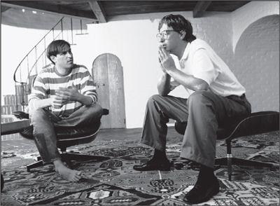
Джобс и Гейтс, 1991
The Macintosh Partnership
Партнёрство вокруг Macintosh
In astronomy, a binary system occurs when the orbits of two stars are linked because of their gravitational interaction. There have been analogous situations in history, when an era is shaped by the relationship and rivalry of two orbiting superstars: Albert Einstein and Niels Bohr in twentieth-century physics, for example, or Thomas Jefferson and Alexander Hamilton in early American governance. For the first thirty years of the personal computer age, beginning in the late 1970s, the defining binary star system was composed of two high-energy college dropouts both born in 1955.
| dropouts | недоучившиеся студенты, бросившие учёбу |
В астрономии двойной системой называют две звезды, чьи орбиты связаны гравитационным взаимодействием. В истории бывали подобные ситуации, когда эпоху формировали отношения и соперничество двух вращающихся по орбитам суперзвёзд: Альберт Эйнштейн и Нильс Бор в физике XX века или Томас Джефферсон и Александр Гамильтон в раннем американском государстве. Первые тридцать лет эры персональных компьютеров, с конца 1970-х, определяла двойная звезда из двух энергичных недоучившихся студентов, родившихся оба в 1955 году.
Bill Gates and Steve Jobs, despite their similar ambitions at the confluence of technology and business, had very different personalities and backgrounds. Gates’s father was a prominent Seattle lawyer, his mother a civic leader on a variety of prestigious boards. He became a tech geek at the area’s finest private school, Lakeside High, but he was never a rebel, hippie, spiritual seeker, or member of the counterculture. Instead of a Blue Box to rip off the phone company, Gates created for his school a program for scheduling classes, which helped him get into ones with the right girls, and a car-counting program for local traffic engineers. He went to Harvard, and when he decided to drop out it was not to find enlightenment with an Indian guru but to start a computer software company.
| confluence | слияние, стык |
Билл Гейтс и Стив Джобс при схожих амбициях на стыке технологий и бизнеса обладали очень разными характерами и происхождением. Отец Гейтса был видным сиэтлским юристом, мать — общественным деятелем в ряде престижных советов. Техногиком он стал в лучшей частной школе округи, Lakeside High, но никогда не был ни бунтарём, ни хиппи, ни духовным искателем, ни членом контркультуры. Вместо «синей коробки» для обмана телефонной компании Гейтс создал для школы программу составления расписания — она помогла ему попадать в классы к нужным девочкам — и программу подсчёта машин для местных дорожных инженеров. Он поступил в Гарвард, а бросив его, отправился не к индийскому гуру за просветлением, а основывать софтверную компанию.
Gates was good at computer coding, unlike Jobs, and his mind was more practical, disciplined, and abundant in analytic processing power. Jobs was more intuitive and romantic and had a greater instinct for making technology usable, design delightful, and interfaces friendly. He had a passion for perfection, which made him fiercely demanding, and he managed by charisma and scattershot intensity. Gates was more methodical; he held tightly scheduled product review meetings where he would cut to the heart of issues with lapidary skill. Both could be rude, but with Gates—who early in his career seemed to have a typical geek’s flirtation with the fringes of the Asperger’s scale—the cutting behavior tended to be less personal, based more on intellectual incisiveness than emotional callousness. Jobs would stare at people with a burning, wounding intensity; Gates sometimes had trouble making eye contact, but he was fundamentally humane.
| scattershot | разрозненная, беспорядочная |
| lapidary | ювелирная, отточенная |
| incisiveness | проницательность, острота |
Гейтс, в отличие от Джобса, хорошо программировал, а ум его был более практичным, дисциплинированным и богатым аналитической мощью. Джобс был интуитивнее и романтичнее, с большим чутьём на удобство технологий, прелесть дизайна и дружелюбие интерфейсов. Страсть к совершенству делала его нещадно требовательным, а управлял он харизмой и беспорядочным напором. Гейтс был методичнее: он проводил жёстко расписанные совещания по продуктам, добираясь до сути с ювелирной точностью. Оба умели быть грубыми, но у Гейтса — который в начале карьеры, похоже, по-гиковски флиртовал с краем шкалы Аспергера — резкость была менее личной: она шла скорее от интеллектуальной остроты, чем от душевной чёрствости. Джобс сверлил людей обжигающим, ранящим взглядом; Гейтсу порой трудно было смотреть в глаза, но по сути он был человечен.
“Each one thought he was smarter than the other one, but Steve generally treated Bill as someone who was slightly inferior, especially in matters of taste and style,” said Andy Hertzfeld. “Bill looked down on Steve because he couldn’t actually program.” From the beginning of their relationship, Gates was fascinated by Jobs and slightly envious of his mesmerizing effect on people. But he also found him “fundamentally odd” and “weirdly flawed as a human being,” and he was put off by Jobs’s rudeness and his tendency to be “either in the mode of saying you were shit or trying to seduce you.” For his part, Jobs found Gates unnervingly narrow. “He’d be a broader guy if he had dropped acid once or gone off to an ashram when he was younger,” Jobs once declared.
| looked down on | смотрел свысока на |
| put off by | отталкиваемый |
| unnervingly | до жути, тревожно |
«Каждый считал себя умнее другого, но Стив в целом относился к Биллу как к слегка уступающему ему — особенно в вопросах вкуса и стиля, — говорил Энди Херцфельд. — Билл же смотрел на Стива свысока, потому что тот не умел программировать». С самого начала знакомства Гейтса завораживал Джобс, он слегка завидовал его гипнотическому воздействию на людей. Но также считал его «в основе своей странным» и «причудливо ущербным как человека», а отталкивали его грубость и манера быть «либо в режиме „ты дерьмо“, либо пытаться тебя соблазнить». Джобс же находил Гейтса до жути узким. «Он был бы шире, если б хоть раз принял кислоту или съездил в молодости в ашрам», — заявлял Джобс.
Their differences in personality and character would lead them to opposite sides of what would become the fundamental divide in the digital age. Jobs was a perfectionist who craved control and indulged in the uncompromising temperament of an artist; he and Apple became the exemplars of a digital strategy that tightly integrated hardware, software, and content into a seamless package. Gates was a smart, calculating, and pragmatic analyst of business and technology; he was open to licensing Microsoft’s operating system and software to a variety of manufacturers.
| exemplars | образцы, эталоны |
Различия в характерах выведут их на противоположные стороны того, что станет главным водоразделом цифровой эпохи. Джобс, перфекционист, жаждущий контроля и наделённый бескомпромиссным нравом художника, вместе с Apple стал эталоном стратегии тесной интеграции железа, софта и контента в цельный продукт. Гейтс был умным, расчётливым и прагматичным аналитиком бизнеса и технологий, готовым лицензировать операционную систему и программы Microsoft самым разным производителям.
After thirty years Gates would develop a grudging respect for Jobs. “He really never knew much about technology, but he had an amazing instinct for what works,” he said. But Jobs never reciprocated by fully appreciating Gates’s real strengths. “Bill is basically unimaginative and has never invented anything, which is why I think he’s more comfortable now in philanthropy than technology,” Jobs said, unfairly. “He just shamelessly ripped off other people’s ideas.”
| grudging | неохотный, сквозь зубы |
Через тридцать лет Гейтс проникся к Джобсу неохотным уважением. «Он действительно никогда толком не разбирался в технологиях, но обладал поразительным чутьём на то, что сработает», — говорил он. Джобс так и не ответил взаимностью, не оценив по-настоящему сильных сторон Гейтса. «Билл в сущности лишён воображения и никогда ничего не изобретал, потому, думаю, благотворительность ему сейчас ближе технологий, — несправедливо говорил Джобс. — Он просто бессовестно крал чужие идеи».
When the Macintosh was first being developed, Jobs went up to visit Gates at his office near Seattle. Microsoft had written some applications for the Apple II, including a spreadsheet program called Multiplan, and Jobs wanted to excite Gates and Co. about doing even more for the forthcoming Macintosh. Sitting in Gates’s conference room, Jobs spun an enticing vision of a computer for the masses, with a friendly interface, which would be churned out by the millions in an automated California factory. His description of the dream factory sucking in the California silicon components and turning out finished Macintoshes caused the Microsoft team to code-name the project “Sand.” They even reverse-engineered it into an acronym, for “Steve’s amazing new device.”
| reverse-engineered | превратили обратным способом |
Когда Macintosh только разрабатывался, Джобс съездил к Гейтсу в офис близ Сиэтла. Microsoft уже написала несколько программ для Apple II, включая табличный Multiplan, и Джобс хотел разжечь Гейтса и компанию на большее для грядущего Macintosh. Сидя в переговорной Гейтса, Джобс рисовал манящую картину компьютера для масс с дружелюбным интерфейсом, который будут штамповать миллионами на автоматизированном калифорнийском заводе. Его описание завода-мечты, всасывающего кремниевые компоненты и выдающего готовые Macintosh, побудило команду Microsoft дать проекту кодовое имя «Sand». Его даже превратили обратным способом в акроним — «удивительное новое устройство Стива».
Gates had launched Microsoft by writing a version of BASIC, a programming language, for the Altair. Jobs wanted Microsoft to write a version of BASIC for the Macintosh, because Wozniak—despite much prodding by Jobs—had never enhanced his version of the Apple II’s BASIC to handle floating-point numbers. In addition, Jobs wanted Microsoft to write application software—such as word processing and spreadsheet programs—for the Macintosh. At the time, Jobs was a king and Gates still a courtier: In 1982 Apple’s annual sales were $1 billion, while Microsoft’s were a mere $32 million. Gates signed on to do graphical versions of a new spreadsheet called Excel, a word-processing program called Word, and BASIC.
| courtier | придворный |
Гейтс основал Microsoft, написав версию языка BASIC для Altair. Джобс хотел, чтобы Microsoft написала BASIC и для Macintosh, потому что Возняк — несмотря на все понукания Джобса — так и не доработал свой BASIC для Apple II до чисел с плавающей запятой. Кроме того, Джобсу нужны были прикладные программы Microsoft — текстовый и табличный редакторы — для Macintosh. В ту пору Джобс был королём, а Гейтс ещё придворным: в 1982 году продажи Apple составляли миллиард долларов, Microsoft — жалкие 32 миллиона. Гейтс подписался на графические версии нового табличного редактора Excel, текстового редактора Word и на BASIC.
Gates frequently went to Cupertino for demonstrations of the Macintosh operating system, and he was not very impressed. “I remember the first time we went down, Steve had this app where it was just things bouncing around on the screen,” he said. “That was the only app that ran.” Gates was also put off by Jobs’s attitude. “It was kind of a weird seduction visit, where Steve was saying, ‘We don’t really need you and we’re doing this great thing, and it’s under the cover.’ He’s in his Steve Jobs sales mode, but kind of the sales mode that also says, ‘I don’t need you, but I might let you be involved.’”
| under the cover | под покровом, втайне |
| sales mode | режим продаж, режим «втюхивания» |
Гейтс часто приезжал в Купертино на демонстрации операционной системы Macintosh и оставался не слишком впечатлён. «Помню, в первый наш приезд у Стива было приложение, где по экрану просто прыгали штуки, — рассказывал он. — Это была единственная работающая программа». Отталкивала Гейтса и манера Джобса. «Это был какой-то странный визит соблазнения: Стив говорил „вы нам, по сути, не нужны, мы делаем великое дело, и оно под покровом“. Он в своём фирменном режиме продаж — но таком, который ещё и намекает: „Ты мне не нужен, хотя, может, я и позволю тебе поучаствовать“».
The Macintosh pirates found Gates hard to take. “You could tell that Bill Gates was not a very good listener. He couldn’t bear to have anyone explain how something worked to him—he had to leap ahead instead and guess about how he thought it would work,” Hertzfeld recalled. They showed him how the Macintosh’s cursor moved smoothly across the screen without flickering. “What kind of hardware do you use to draw the cursor?” Gates asked. Hertzfeld, who took great pride that they could achieve their functionality solely using software, replied, “We don’t have any special hardware for it!” Gates insisted that it was necessary to have special hardware to move the cursor that way. “So what do you say to somebody like that?” Bruce Horn, one of the Macintosh engineers, later said. “It made it clear to me that Gates was not the kind of person that would understand or appreciate the elegance of a Macintosh.”
| hard to take | трудно выносить |
| leap ahead | забегать вперёд |
Пиратам Macintosh было трудно выносить Гейтса. «Сразу было видно: Билл Гейтс не умеет слушать. Он не выносил, когда ему объясняли, как что-то устроено, — вместо этого забегал вперёд и строил догадки, как это, по его мнению, должно работать», — вспоминал Херцфельд. Ему показали, как курсор Macintosh плавно движется по экрану без мерцания. «Какое железо вы используете для курсора?» — спросил Гейтс. Херцфельд, гордившийся тем, что всё это достигнуто только программой, ответил: «У нас нет для него специального железа!» Гейтс настаивал, что так двигать курсор можно лишь с помощью особой аппаратуры. «И что сказать такому человеку? — говорил позже Брюс Хорн, один из инженеров Macintosh. — Мне стало ясно, что Гейтс не из тех, кто поймёт или оценит изящество Macintosh».
Despite their mutual wariness, both teams were excited by the prospect that Microsoft would create graphical software for the Macintosh that would take personal computing into a new realm, and they went to dinner at a fancy restaurant to celebrate. Microsoft soon dedicated a large team to the task. “We had more people working on the Mac than he did,” Gates said. “He had about fourteen or fifteen people. We had like twenty people. We really bet our life on it.” And even though Jobs thought that they didn’t exhibit much taste, the Microsoft programmers were persistent. “They came out with applications that were terrible,” Jobs recalled, “but they kept at it and they made them better.” Eventually Jobs became so enamored of Excel that he made a secret bargain with Gates: If Microsoft would make Excel exclusively for the Macintosh for two years, and not make a version for IBM PCs, then Jobs would shut down his team working on a version of BASIC for the Macintosh and instead indefinitely license Microsoft’s BASIC. Gates smartly took the deal, which infuriated the Apple team whose project got canceled and gave Microsoft a lever in future negotiations.
| bet our life on it | поставили на это всё, жизнью рискнули |
| persistent | упорные |
| lever | рычаг |
Несмотря на взаимную настороженность, обе команды воодушевляла перспектива: Microsoft создаст графический софт для Macintosh и выведет персональные компьютеры на новый уровень, — и они отметили это ужином в дорогом ресторане. Microsoft вскоре выделила под задачу большую команду. «У нас над Mac работало больше людей, чем у него, — говорил Гейтс. — У него было человек четырнадцать-пятнадцать. У нас — около двадцати. Мы действительно поставили на это жизнь». И хотя Джобс считал, что вкус у них не блещет, программисты Microsoft были упорны. «Они выпускали ужасные приложения, — вспоминал Джобс, — но продолжали работать и доводили их до ума». В конце концов Джобс так влюбился в Excel, что заключил с Гейтсом тайную сделку: если Microsoft два года будет делать Excel эксклюзивно для Macintosh, без версии для IBM PC, Джобс закроет свою команду, работавшую над BASIC для Macintosh, и бессрочно залицензирует BASIC у Microsoft. Гейтс умно принял сделку, что взбесило команду Apple, чей проект отменили, и дало Microsoft рычаг в будущих переговорах.
For the time being, Gates and Jobs forged a bond. That summer they went to a conference hosted by the industry analyst Ben Rosen at a Playboy Club retreat in Lake Geneva, Wisconsin, where nobody knew about the graphical interfaces that Apple was developing. “Everybody was acting like the IBM PC was everything, which was nice, but Steve and I were kind of smiling that, hey, we’ve got something,” Gates recalled. “And he’s kind of leaking, but nobody actually caught on.” Gates became a regular at Apple retreats. “I went to every luau,” said Gates. “I was part of the crew.”
| luau | гавайская вечеринка |
На время Гейтс и Джобс сблизились. Тем летом они побывали на конференции отраслевого аналитика Бена Розена на курорте Playboy Club на озере Женева, штат Висконсин, где никто не знал о графических интерфейсах, разрабатываемых Apple. «Все вели себя так, будто IBM PC — это всё, что приятно, но мы со Стивом переглядывались с улыбкой: у нас-то кое-что есть, — вспоминал Гейтс. — Он как бы проговаривался, но никто не улавливал». Гейтс стал завсегдатаем выездных семинаров Apple. «Я бывал на каждой гавайской вечеринке, — говорил он. — Я был своим в команде».
Gates enjoyed his frequent visits to Cupertino, where he got to watch Jobs interact erratically with his employees and display his obsessions. “Steve was in his ultimate pied piper mode, proclaiming how the Mac will change the world and overworking people like mad, with incredible tensions and complex personal relationships.” Sometimes Jobs would begin on a high, then lapse into sharing his fears with Gates. “We’d go down Friday night, have dinner, and Steve would just be promoting that everything is great. Then the second day, without fail, he’d be kind of, ‘Oh shit, is this thing going to sell, oh God, I have to raise the price, I’m sorry I did that to you, and my team is a bunch of idiots.’”
| pied piper | крысолов-зазывала, увлекающий за собой |
Гейтсу нравились частые визиты в Купертино, где он наблюдал, как Джобс беспорядочно общается с сотрудниками и выставляет напоказ свои одержимости. «Стив был в своей коронной роли крысолова, провозглашая, что Mac изменит мир, и бешено перегружая людей, — с невероятным напряжением и запутанными личными отношениями». Иногда Джобс начинал на подъёме, а потом срывался и делился с Гейтсом страхами. «Мы приезжали в пятницу вечером, ужинали, и Стив расписывал, как всё прекрасно. А на второй день непременно начиналось: „О чёрт, будет ли эта штука продаваться, боже, придётся поднимать цену, прости, что я так с тобой, а моя команда — сборище идиотов“».
Gates saw Jobs’s reality distortion field at play when the Xerox Star was launched. At a joint team dinner one Friday night, Jobs asked Gates how many Stars had been sold thus far. Gates said six hundred. The next day, in front of Gates and the whole team, Jobs said that three hundred Stars had been sold, forgetting that Gates had just told everyone it was actually six hundred. “So his whole team starts looking at me like, ‘Are you going to tell him that he’s full of shit?’” Gates recalled. “And in that case I didn’t take the bait.” On another occasion Jobs and his team were visiting Microsoft and having dinner at the Seattle Tennis Club. Jobs launched into a sermon about how the Macintosh and its software would be so easy to use that there would be no manuals. “It was like anybody who ever thought that there would be a manual for any Mac application was the greatest idiot,” said Gates. “And we were like, ‘Does he really mean it? Should we not tell him that we have people who are actually working on manuals?’”
| take the bait | клюнуть на наживку |
Поле искажения реальности Джобса Гейтс наблюдал при запуске Xerox Star. На совместном ужине в одну из пятниц Джобс спросил, сколько Star уже продано. Гейтс ответил: шестьсот. На следующий день, при Гейтсе и всей команде, Джобс сказал, что продано триста, — забыв, что Гейтс только что при всех назвал шестьсот. «И вся его команда смотрит на меня: „Ты скажешь ему, что он несёт чушь?“ — вспоминал Гейтс. — В тот раз я не клюнул». В другой раз Джобс с командой гостили в Microsoft и ужинали в Сиэтлском теннисном клубе. Джобс разразился проповедью: Macintosh и его программы будут так просты, что руководства не понадобятся. «Будто всякий, кто хоть помыслил о руководстве к приложению для Mac, — величайший идиот, — рассказывал Гейтс. — А мы сидели: „Он это всерьёз? Может, не говорить ему, что у нас люди уже пишут руководства?“»
After a while the relationship became bumpier. The original plan was to have some of the Microsoft applications—such as Excel, Chart, and File—carry the Apple logo and come bundled with the purchase of a Macintosh. “We were going to get $10 per app, per machine,” said Gates. But this arrangement upset competing software makers. In addition, it seemed that some of Microsoft’s programs might be late. So Jobs invoked a provision in his deal with Microsoft and decided not to bundle its software; Microsoft would have to scramble to distribute its software as products sold directly to consumers.
| bundled | в комплекте |
| scramble | лихорадочно изворачиваться |
Со временем отношения стали ухабистее. Изначальный план предполагал, что часть приложений Microsoft — Excel, Chart и File — понесут логотип Apple и будут поставляться в комплекте с Macintosh. «Мы получали бы по 10 долларов за приложение с каждой машины», — говорил Гейтс. Но такой расклад возмутил конкурентов-производителей софта. К тому же некоторые программы Microsoft, похоже, запаздывали. Тогда Джобс сослался на пункт договора с Microsoft и отказался от комплектной поставки; Microsoft пришлось лихорадочно организовывать продажу программ напрямую потребителям.
Gates went along without much complaint. He was already getting used to the fact that, as he put it, Jobs could “play fast and loose,” and he suspected that the unbundling would actually help Microsoft. “We could make more money selling our software separately,” Gates said. “It works better that way if you’re willing to think you’re going to have reasonable market share.” Microsoft ended up making its software for various other platforms, and it began to give priority to the IBM PC version of Microsoft Word rather than the Macintosh version. In the end, Jobs’s decision to back out of the bundling deal hurt Apple more than it did Microsoft.
| play fast and loose | вести нечестную игру, поступать как вздумается |
Гейтс согласился без особых жалоб. Он уже привыкал, что Джобс, по его выражению, умеет «вести нечестную игру», и подозревал, что отказ от комплекта пойдёт Microsoft на пользу. «Продавая программы отдельно, мы могли заработать больше, — говорил Гейтс. — Так выгоднее, если допускаешь, что у тебя будет приличная доля рынка». В итоге Microsoft стала делать программы и для других платформ, отдавая приоритет версии Word для IBM PC, а не для Macintosh. В конечном счёте отказ Джобса от комплектной сделки больнее ударил по Apple, чем по Microsoft.
When Excel for the Macintosh was released, Jobs and Gates unveiled it together at a press dinner at New York’s Tavern on the Green. Asked if Microsoft would make a version of it for IBM PCs, Gates did not reveal the bargain he had made with Jobs but merely answered that “in time” that might happen. Jobs took the microphone. “I’m sure ‘in time’ we’ll all be dead,” he joked.
Когда вышел Excel для Macintosh, Джобс и Гейтс представили его вместе на пресс-ужине в нью-йоркском Tavern on the Green. На вопрос, сделает ли Microsoft версию для IBM PC, Гейтс не раскрыл сделку с Джобсом, а лишь ответил, что «со временем» это, возможно, случится. Джобс взял микрофон. «Уверен, „со временем“ мы все умрём», — пошутил он.
The Battle of the GUI
Битва за графический интерфейс
At that time, Microsoft was producing an operating system, known as DOS, which it licensed to IBM and compatible computers. It was based on an old-fashioned command line interface that confronted users with surly little prompts such as C:\>. As Jobs and his team began to work closely with Microsoft, they grew worried that it would copy Macintosh’s graphical user interface. Andy Hertzfeld noticed that his contact at Microsoft was asking detailed questions about how the Macintosh operating system worked. “I told Steve that I suspected that Microsoft was going to clone the Mac,” he recalled.
| surly | угрюмые, неприветливые |
В то время Microsoft выпускала операционную систему DOS, лицензированную IBM и совместимым компьютерам. Она строилась на старомодном командном интерфейсе, встречавшем пользователей угрюмыми строчками вроде C:\>. Начав тесно работать с Microsoft, Джобс и его команда забеспокоились, что та скопирует графический интерфейс Macintosh. Энди Херцфельд заметил, что его контакт в Microsoft задаёт подробные вопросы об устройстве операционной системы Macintosh. «Я сказал Стиву, что подозреваю: Microsoft собирается клонировать Mac», — вспоминал он.
They were right to worry. Gates believed that graphical interfaces were the future, and that Microsoft had just as much right as Apple did to copy what had been developed at Xerox PARC. As he freely admitted later, “We sort of say, ‘Hey, we believe in graphics interfaces, we saw the Xerox Alto too.’”
Опасались они не зря. Гейтс верил, что графические интерфейсы — будущее и что у Microsoft столько же прав копировать разработки Xerox PARC, сколько у Apple. Как он потом свободно признавал: «Мы вроде как сказали: „Эй, мы верим в графические интерфейсы, мы тоже видели Xerox Alto“».
In their original deal, Jobs had convinced Gates to agree that Microsoft would not create graphical software for anyone other than Apple until a year after the Macintosh shipped in January 1983. Unfortunately for Apple, it did not provide for the possibility that the Macintosh launch would be delayed for a year. So Gates was within his rights when, in November 1983, he revealed that Microsoft planned to develop a new operating system for IBM PCs featuring a graphical interface with windows, icons, and a mouse for point-and-click navigation. It would be called Windows. Gates hosted a Jobs-like product announcement, the most lavish thus far in Microsoft’s history, at the Helmsley Palace Hotel in New York.
| within his rights | в своём праве |
В первоначальной сделке Джобс добился от Гейтса обязательства не делать графический софт ни для кого, кроме Apple, в течение года после выхода Macintosh в январе 1983-го. К несчастью для Apple, договор не предусматривал возможности задержки запуска Macintosh на год. Поэтому Гейтс был в своём праве, когда в ноябре 1983 года сообщил о планах Microsoft разработать для IBM PC новую операционную систему с графическим интерфейсом: окна, значки и мышь для навигации «наведи и щёлкни». Называться она будет Windows. Гейтс устроил анонс в джобсовском духе — самый пышный на тот момент в истории Microsoft — в нью-йоркском отеле Helmsley Palace.
Jobs was furious. He knew there was little he could do about it—Microsoft’s deal with Apple not to do competing graphical software was running out—but he lashed out nonetheless. “Get Gates down here immediately,” he ordered Mike Boich, who was Apple’s evangelist to other software companies. Gates arrived, alone and willing to discuss things with Jobs. “He called me down to get pissed off at me,” Gates recalled. “I went down to Cupertino, like a command performance. I told him, ‘We’re doing Windows.’ I said to him, ‘We’re betting our company on graphical interfaces.’”
| lashed out | набросился, обрушился |
Джобс был в ярости. Он понимал, что сделать почти ничего нельзя — срок соглашения Microsoft не конкурировать с Apple истекал, — но всё равно обрушился на партнёра. «Немедленно тащите Гейтса сюда», — приказал он Майку Бойчу, «евангелисту» Apple по работе с другими софтверными компаниями. Гейтс приехал, один, готовый к разговору. «Он вызвал меня, чтобы выплеснуть злость, — вспоминал Гейтс. — Я приехал в Купертино как на королевскую аудиенцию. Я сказал ему: „Мы делаем Windows. Мы ставим компанию на графические интерфейсы“».
They met in Jobs’s conference room, where Gates found himself surrounded by ten Apple employees who were eager to watch their boss assail him. Jobs didn’t disappoint his troops. “You’re ripping us off!” he shouted. “I trusted you, and now you’re stealing from us!” Hertzfeld recalled that Gates just sat there coolly, looking Steve in the eye, before hurling back, in his squeaky voice, what became a classic zinger. “Well, Steve, I think there’s more than one way of looking at it. I think it’s more like we both had this rich neighbor named Xerox and I broke into his house to steal the TV set and found out that you had already stolen it.”
| assail | нападать, атаковать |
| zinger | хлёсткая острота |
Встречались они в переговорной Джобса, где Гейтса обступили десять сотрудников Apple, жаждавших посмотреть, как босс атакует гостя. Джобс ожиданий не обманул. «Вы нас обдираете! — кричал он. — Я тебе доверял, а ты теперь у нас воруешь!» Херцфельд вспоминал, что Гейтс лишь хладнокровно сидел, глядя Стиву в глаза, а потом писклявым голосом парировал фразой, ставшей классической хлёсткой остротой: «Что ж, Стив, на это можно посмотреть по-разному. Скорее, у нас обоих был богатый сосед по имени Xerox: я влез к нему в дом, чтобы украсть телевизор, и обнаружил, что ты уже украл его».
Gates’s two-day visit provoked the full range of Jobs’s emotional responses and manipulation techniques. It also made clear that the Apple-Microsoft symbiosis had become a scorpion dance, with both sides circling warily, knowing that a sting by either could cause problems for both. After the confrontation in the conference room, Gates quietly gave Jobs a private demo of what was being planned for Windows. “Steve didn’t know what to say,” Gates recalled. “He could either say, ‘Oh, this is a violation of something,’ but he didn’t. He chose to say, ‘Oh, it’s actually really a piece of shit.’” Gates was thrilled, because it gave him a chance to calm Jobs down for a moment. “I said, ‘Yes, it’s a nice little piece of shit.’” So Jobs went through a gamut of other emotions. “During the course of this meeting, he’s just ruder than shit,” Gates said. “And then there’s a part where he’s almost crying, like, ‘Oh, just give me a chance to get this thing off.’” Gates responded by becoming very calm. “I’m good at when people are emotional, I’m kind of less emotional.”
| scorpion dance | танец скорпионов |
Двухдневный визит Гейтса вызвал у Джобса всю гамму эмоций и приёмов манипуляции. Стало ясно и то, что симбиоз Apple и Microsoft превратился в танец скорпионов: обе стороны кружат настороженно, понимая, что укус любой из них навредит обеим. После стычки в переговорной Гейтс тихо показал Джобсу приватную демонстрацию планируемой Windows. «Стив не знал, что сказать, — вспоминал Гейтс. — Мог бы заявить: „О, это нарушение того-то“, — но не стал. Он выбрал: „Вообще-то это полное дерьмо“». Гейтс обрадовался — появился шанс на миг успокоить Джобса. «Я сказал: „Да, миленький кусочек дерьма“». Дальше Джобс прошёл через прочие эмоции. «В ходе встречи он грубил как никогда, — рассказывал Гейтс. — А потом чуть не плакал: „О, просто дай мне шанс это довести“». Гейтс в ответ становился очень спокойным. «Я умею вести себя, когда люди эмоциональны, — сам я тогда менее эмоционален».
As he often did when he wanted to have a serious conversation, Jobs suggested they go on a long walk. They trekked the streets of Cupertino, back and forth to De Anza college, stopping at a diner and then walking some more. “We had to take a walk, which is not one of my management techniques,” Gates said. “That was when he began saying things like, ‘Okay, okay, but don’t make it too much like what we’re doing.’”
Как обычно в серьёзных разговорах, Джобс предложил долгую прогулку. Они бродили по улицам Купертино, туда-сюда до колледжа Де Анца, зашли в закусочную и снова гуляли. «Пришлось гулять — а это не из моих управленческих приёмов, — говорил Гейтс. — Тогда-то он и начал: „Ладно, ладно, но не делай это слишком похожим на наше“».
As it turned out, Microsoft wasn’t able to get Windows 1.0 ready for shipping until the fall of 1985. Even then, it was a shoddy product. It lacked the elegance of the Macintosh interface, and it had tiled windows rather than the magical clipping of overlapping windows that Bill Atkinson had devised. Reviewers ridiculed it and consumers spurned it. Nevertheless, as is often the case with Microsoft products, persistence eventually made Windows better and then dominant.
| shoddy | низкопробный, халтурный |
| spurned | отвергли |
Как выяснилось, Microsoft смогла подготовить Windows 1.0 к отгрузке лишь осенью 1985 года. И даже тогда это был низкопробный продукт. Ему не хватало изящества интерфейса Macintosh; окна шли плиткой, а не волшебным перекрытием Билла Аткинсона. Обозреватели высмеивали систему, потребители её отвергли. Однако, как часто бывает с продуктами Microsoft, упорство со временем сделало Windows лучше — а затем и господствующей.
Jobs never got over his anger. “They just ripped us off completely, because Gates has no shame,” Jobs told me almost thirty years later. Upon hearing this, Gates responded, “If he believes that, he really has entered into one of his own reality distortion fields.” In a legal sense, Gates was right, as courts over the years have subsequently ruled. And on a practical level, he had a strong case as well. Even though Apple made a deal for the right to use what it saw at Xerox PARC, it was inevitable that other companies would develop similar graphical interfaces. As Apple found out, the “look and feel” of a computer interface design is a hard thing to protect.
Джобс так и не остыл. «Они просто ободрали нас дочиста — у Гейтса нет ни капли стыда», — говорил он мне почти тридцать лет спустя. Услышав это, Гейтс ответил: «Если он в это верит, то действительно попал в собственное поле искажения реальности». Юридически Гейтс был прав, как впоследствии постановили суды. И практически у него была сильная позиция: пусть Apple и купила право использовать увиденное в Xerox PARC, появление схожих графических интерфейсов у других компаний было неизбежным. Как выяснила Apple, «внешний вид и ощущения» компьютерного интерфейса защищать трудно.
And yet Jobs’s dismay was understandable. Apple had been more innovative, imaginative, elegant in execution, and brilliant in design. But even though Microsoft created a crudely copied series of products, it would end up winning the war of operating systems. This exposed an aesthetic flaw in how the universe worked: The best and most innovative products don’t always win. A decade later, this truism caused Jobs to let loose a rant that was somewhat arrogant and over-the-top, but also had a whiff of truth to it. “The only problem with Microsoft is they just have no taste, they have absolutely no taste,” he said. “I don’t mean that in a small way. I mean that in a big way, in the sense that they don’t think of original ideas and they don’t bring much culture into their product.”
| truism | прописная истина |
| let loose a rant | разразиться тирадой |
И всё же огорчение Джобса было понятно. Apple была инновационнее, изобретательнее, изящнее в исполнении и блестящее в дизайне. Но пусть Microsoft выпускала грубо скопированные продукты — войну операционных систем выиграла она. В этом обнажился эстетический изъян мироустройства: лучшие и самые новаторские продукты побеждают не всегда. Десятилетие спустя эта прописная истина заставила Джобса разразиться тирадой — отчасти высокомерной и чрезмерной, но с ноткой правды: «Единственная беда Microsoft в отсутствии вкуса, полном отсутствии вкуса. Я не в мелочном смысле. В большом: они не придумывают оригинальных идей и не привносят в свой продукт культуру».
Flying High
Высокий полёт
The launch of the Macintosh in January 1984 propelled Jobs into an even higher orbit of celebrity, as was evident during a trip to Manhattan he took at the time. He went to a party that Yoko Ono threw for her son, Sean Lennon, and gave the nine-year-old a Macintosh. The boy loved it. The artists Andy Warhol and Keith Haring were there, and they were so enthralled by what they could create with the machine that the contemporary art world almost took an ominous turn. “I drew a circle,” Warhol exclaimed proudly after using QuickDraw. Warhol insisted that Jobs take a computer to Mick Jagger. When Jobs arrived at the rock star’s townhouse, Jagger seemed baffled. He didn’t quite know who Jobs was. Later Jobs told his team, “I think he was on drugs. Either that or he’s brain-damaged.” Jagger’s daughter Jade, however, took to the computer immediately and started drawing with MacPaint, so Jobs gave it to her instead.
| propelled | вытолкнул |
| enthralled | пленены, в восторге |
Запуск Macintosh в январе 1984 года вывел Джобса на ещё более высокую орбиту знаменитости — это было видно во время его тогдашней поездки в Манхэттен. Он пришёл на вечеринку, которую Йоко Оно устроила сыну, Шону Леннону, и подарил девятилетнему мальчику Macintosh. Тот был в восторге. Присутствовали художники Энди Уорхол и Кит Харинг, и они так увлеклись тем, что можно создать на этой машине, что современное искусство едва не свернуло в зловещую сторону. «Я нарисовал круг!» — гордо воскликнул Уорхол, поработав в QuickDraw. Уорхол настоял, чтобы Джобс отвёз компьютер Мику Джаггеру. Когда Джобс пришёл в дом рок-звезды, Джаггер, похоже, опешил: он не совсем понял, кто такой Джобс. Позже Джобс сказал команде: «По-моему, он под кайфом. Или с повреждённым мозгом». Зато дочь Джаггера Джейд тут же принялась за компьютер и начала рисовать в MacPaint, так что Джобс отдал машину ей.
He bought the top-floor duplex apartment that he’d shown Sculley in the San Remo on Manhattan’s Central Park West and hired James Freed of I. M. Pei’s firm to renovate it, but he never moved in. (He would later sell it to Bono for $15 million.) He also bought an old Spanish colonial–style fourteen-bedroom mansion in Woodside, in the hills above Palo Alto, that had been built by a copper baron, which he moved into but never got around to furnishing.
| duplex | двухуровневая квартира |
Он купил двухуровневые апартаменты на верхнем этаже дома «Сан-Ремо» на Манхэттене — те самые, что показывал Скалли, — и нанял Джеймса Фрида из бюро И. М. Пея для ремонта, но так и не въехал. (Позже продаст их Боно за 15 миллионов долларов.) Ещё он купил старый особняк в испанском колониальном стиле с четырнадцатью спальнями в Вудсайде, на холмах над Пало-Альто, построенный медным бароном: въехал, но до меблировки руки так и не дошли.
At Apple his status revived. Instead of seeking ways to curtail Jobs’s authority, Sculley gave him more: The Lisa and Macintosh divisions were folded together, with Jobs in charge. He was flying high, but this did not serve to make him more mellow. Indeed there was a memorable display of his brutal honesty when he stood in front of the combined Lisa and Macintosh teams to describe how they would be merged. His Macintosh group leaders would get all of the top positions, he said, and a quarter of the Lisa staff would be laid off. “You guys failed,” he said, looking directly at those who had worked on the Lisa. “You’re a B team. B players. Too many people here are B or C players, so today we are releasing some of you to have the opportunity to work at our sister companies here in the valley.”
| curtail | урезать |
| folded together | объединены |
| mellow | мягче, спокойнее |
В Apple его статус возродился. Вместо того чтобы урезать власть Джобса, Скалли её расширил: подразделения Lisa и Macintosh объединили под началом Джобса. Он летал высоко, но мягче от этого не стал. Более того, состоялась памятная демонстрация его жестокой честности: встав перед объединёнными командами, он описал, как пройдёт слияние. Руководители его группы Macintosh получат все высшие должности, сказал он, а четверть сотрудников Lisa уволят. «Вы провалились, — сказал он, глядя прямо на тех, кто работал над Lisa. — Вы команда B. Игроки B. Слишком многие здесь игроки B или C, и сегодня мы отпускаем некоторых из вас — у вас появится возможность поработать в наших дочерних компаниях здесь, в долине».
Bill Atkinson, who had worked on both teams, thought it was not only callous, but unfair. “These people had worked really hard and were brilliant engineers,” he said. But Jobs had latched onto what he believed was a key management lesson from his Macintosh experience: You have to be ruthless if you want to build a team of A players. “It’s too easy, as a team grows, to put up with a few B players, and they then attract a few more B players, and soon you will even have some C players,” he recalled. “The Macintosh experience taught me that A players like to work only with other A players, which means you can’t indulge B players.”
| callous | бессердечно |
Билл Аткинсон, работавший в обеих командах, счёл это не просто бессердечным, но и несправедливым. «Эти люди очень много работали и были блестящими инженерами», — говорил он. Но Джобс ухватился за то, что считал главным управленческим уроком опыта Macintosh: чтобы собрать команду игроков A, нужно быть безжалостным. «Слишком легко, когда команда растёт, мириться с парой игроков B; те притягивают ещё несколько B, и вскоре появляются даже C, — вспоминал он. — Опыт Macintosh научил меня: игроки A хотят работать только с другими A, а значит, потакать B нельзя».
For the time being, Jobs and Sculley were able to convince themselves that their friendship was still strong. They professed their fondness so effusively and often that they sounded like high school sweethearts at a Hallmark card display. The first anniversary of Sculley’s arrival came in May 1984, and to celebrate Jobs lured him to a dinner party at Le Mouton Noir, an elegant restaurant in the hills southwest of Cupertino. To Sculley’s surprise, Jobs had gathered the Apple board, its top managers, and even some East Coast investors. As they all congratulated him during cocktails, Sculley recalled, “a beaming Steve stood in the background, nodding his head up and down and wearing a Cheshire Cat smile on his face.” Jobs began the dinner with a fulsome toast. “The happiest two days for me were when Macintosh shipped and when John Sculley agreed to join Apple,” he said. “This has been the greatest year I’ve ever had in my whole life, because I’ve learned so much from John.” He then presented Sculley with a montage of memorabilia from the year.
| effusively | льстиво-восторженно |
| lured | заманил |
| beaming | сияющий |
| fulsome | чрезмерно цветистый |
| montage | коллаж |
Какое-то время Джобс и Скалли убеждали себя, что их дружба по-прежнему крепка. Они так часто и так льстиво-восторженно признавались друг другу в тёплых чувствах, что напоминали школьных влюблённых у витрины с открытками Hallmark. В мае 1984 года настала первая годовщина прихода Скалли, и Джобс заманил его на праздничный ужин в Le Mouton Noir, элегантный ресторан на холмах к юго-западу от Купертино. К удивлению Скалли, Джобс собрал совет директоров Apple, высших менеджеров и даже инвесторов с Восточного побережья. Пока все поздравляли его за коктейлями, вспоминал Скалли, «сияющий Стив стоял на заднем плане, кивая головой, с чеширской улыбкой на лице». Джобс открыл ужин чрезмерно цветистым тостом: «Два самых счастливых дня для меня — когда вышел Macintosh и когда Джон Скалли согласился прийти в Apple. Это был лучший год в моей жизни, потому что я столькому научился у Джона». Затем он вручил Скалли коллаж памятных вещиц этого года.
In response, Sculley effused about the joys of being Jobs’s partner for the past year, and he concluded with a line that, for different reasons, everyone at the table found memorable. “Apple has one leader,” he said, “Steve and me.” He looked across the room, caught Jobs’s eye, and watched him smile. “It was as if we were communicating with each other,” Sculley recalled. But he also noticed that Arthur Rock and some of the others were looking quizzical, perhaps even skeptical. They were worried that Jobs was completely rolling him. They had hired Sculley to control Jobs, and now it was clear that Jobs was the one in control. “Sculley was so eager for Steve’s approval that he was unable to stand up to him,” Rock recalled.
| quizzical | озадаченно-вопросительный |
В ответ Скалли рассыпался в похвалах радостям партнёрства с Джобсом и закончил фразой, которую все за столом запомнили — по разным причинам. «У Apple один руководитель, — сказал он, — Стив и я». Он обвёл взглядом комнату, поймал взгляд Джобса и увидел его улыбку. «Будто мы общались без слов», — вспоминал Скалли. Но он заметил, что Артур Рок и ещё кое-кто смотрели озадаченно, а то и скептически. Они боялись, что Джобс полностью его подмял. Скалли наняли, чтобы контролировать Джобса, а теперь стало ясно: контроль у Джобса. «Скалли так жаждал одобрения Стива, что не мог ему противостоять», — вспоминал Рок.
Keeping Jobs happy and deferring to his expertise may have seemed like a smart strategy to Sculley. But he failed to realize that it was not in Jobs’s nature to share control. Deference did not come naturally to him. He began to become more vocal about how he thought the company should be run. At the 1984 business strategy meeting, for example, he pushed to make the company’s centralized sales and marketing staffs bid on the right to provide their services to the various product divisions. (This would have meant, for example, that the Macintosh group could decide not to use Apple’s marketing team and instead create one of its own.) No one else was in favor, but Jobs kept trying to ram it through. “People were looking to me to take control, to get him to sit down and shut up, but I didn’t,” Sculley recalled. As the meeting broke up, he heard someone whisper, “Why doesn’t Sculley shut him up?”
| deference | почтительность, уступчивость |
| bid on | соревноваться за |
| ram it through | протащить силой |
Ублажать Джобса и полагаться на его опыт казалось Скалли разумной стратегией. Но он не понимал: делиться контролем не в натуре Джобса. Почтительность не была ему свойственна. Он всё громче высказывался о том, как управлять компанией. На стратегическом совещании 1984 года, например, он проталкивал идею, чтобы централизованные службы продаж и маркетинга соревновались за право обслуживать разные продуктовые подразделения. (То есть группа Macintosh, скажем, могла отказаться от маркетинговой команды Apple и создать свою.) Больше никто это не поддержал, но Джобс пытался протащить силой. «Люди ждали, что я возьму контроль и заставлю его сесть и заткнуться, но я не стал», — вспоминал Скалли. Когда совещание заканчивалось, он услышал чей-то шёпот: «Почему Скалли его не заткнёт?»
When Jobs decided to build a state-of-the-art factory in Fremont to manufacture the Macintosh, his aesthetic passions and controlling nature kicked into high gear. He wanted the machinery to be painted in bright hues, like the Apple logo, but he spent so much time going over paint chips that Apple’s manufacturing director, Matt Carter, finally just installed them in their usual beige and gray. When Jobs took a tour, he ordered that the machines be repainted in the bright colors he wanted. Carter objected; this was precision equipment, and repainting the machines could cause problems. He turned out to be right. One of the most expensive machines, which got painted bright blue, ended up not working properly and was dubbed “Steve’s folly.” Finally Carter quit. “It took so much energy to fight him, and it was usually over something so pointless that finally I had enough,” he recalled.
| state-of-the-art | ультрасовременный |
| kicked into high gear | заработали на полную мощность |
Когда Джобс решил построить во Фримонте ультрасовременный завод для выпуска Macintosh, его эстетические страсти и жажда контроля заработали на полную мощность. Он хотел, чтобы станки красили в яркие цвета, как логотип Apple, но так долго перебирал образцы краски, что директор по производству Мэтт Картер в конце концов просто установил оборудование в привычных бежевом и сером. Приехав на завод, Джобс велел перекрасить станки в нужные ему яркие цвета. Картер возражал: это прецизионное оборудование, и перекраска может вызвать проблемы. Он оказался прав. Один из самых дорогих станков, покрашенный в ярко-синий, в итоге работал неправильно, и его прозвали «глупостью Стива». Наконец Картер уволился. «Столько сил уходило на борьбу с ним — и обычно из-за какой-то бессмыслицы, что в конце концов я не выдержал», — вспоминал он.
Jobs tapped as a replacement Debi Coleman, the spunky but good-natured Macintosh financial officer who had once won the team’s annual award for the person who best stood up to Jobs. But she knew how to cater to his whims when necessary. When Apple’s art director, Clement Mok, informed her that Jobs wanted the walls to be pure white, she protested, “You can’t paint a factory pure white. There’s going to be dust and stuff all over.” Mok replied, “There’s no white that’s too white for Steve.” She ended up going along. With its pure white walls and its bright blue, yellow, and red machines, the factory floor “looked like an Alexander Calder showcase,” said Coleman.
| cater to his whims | потакать его прихотям |
На замену Джобс назначил Деби Коулман, бойкого, но добродушного финансиста Macintosh, которая однажды выиграла ежегодную командную награду как человек, лучше всех умеющий противостоять Джобсу. Впрочем, когда нужно, она умела и потакать его прихотям. Когда арт-директор Apple Клемент Мок сообщил ей, что Джобс хочет чисто-белые стены, она запротестовала: «Нельзя красить завод в чисто-белый. Всё покроется пылью». Мок ответил: «Для Стива белого слишком белым не бывает». В итоге она согласилась. С чисто-белыми стенами и ярко-синими, жёлтыми и красными станками заводской цех «выглядел витриной Александра Колдера», — говорила Коулман.
When asked about his obsessive concern over the look of the factory, Jobs said it was a way to ensure a passion for perfection:
На вопрос о своей одержимости видом завода Джобс отвечал, что так он прививает страсть к совершенству:
I’d go out to the factory, and I’d put on a white glove to check for dust. I’d find it everywhere—on machines, on the tops of the racks, on the floor. And I’d ask Debi to get it cleaned. I told her I thought we should be able to eat off the floor of the factory. Well, this drove Debi up the wall. She didn’t understand why. And I couldn’t articulate it back then. See, I’d been very influenced by what I’d seen in Japan. Part of what I greatly admired there—and part of what we were lacking in our factory—was a sense of teamwork and discipline. If we didn’t have the discipline to keep that place spotless, then we weren’t going to have the discipline to keep all these machines running.
| drove Debi up the wall | доводило Деби до белого каления |
| articulate | выразить словами |
| spotless | безупречно чистое |
Я приходил на завод и надевал белую перчатку, проверяя пыль. Находил её повсюду — на станках, на стеллажах, на полу. И просил Деби всё убрать. Я говорил, что с пола завода можно было бы есть. Это доводило Деби до белого каления. Она не понимала зачем. А я тогда не мог выразить словами. Видите ли, на меня сильно повлияло увиденное в Японии. Часть того, чем я там восхищался — и чего не хватало нашему заводу, — это чувство командной работы и дисциплины. Если у нас не хватает дисциплины держать цех безупречно чистым, то не хватит её и на то, чтобы все эти станки работали.
One Sunday morning Jobs brought his father to see the factory. Paul Jobs had always been fastidious about making sure that his craftsmanship was exacting and his tools in order, and his son was proud to show that he could do the same. Coleman came along to give the tour. “Steve was, like, beaming,” she recalled. “He was so proud to show his father this creation.” Jobs explained how everything worked, and his father seemed truly admiring. “He kept looking at his father, who touched everything and loved how clean and perfect everything looked.”
| fastidious | щепетильный, дотошный |
В одно воскресное утро Джобс привёл на завод отца. Пол Джобс всегда был щепетилен: мастерство должно быть точным, инструменты — в порядке, и сыну хотелось показать, что он умеет так же. Экскурсию вела Коулман. «Стив просто сиял, — вспоминала она. — Он так гордился показать отцу это творение». Джобс объяснял, как всё устроено, и отец, похоже, искренне восхищался. «Он то и дело поглядывал на отца, который всё трогал и восторгался, как чисто и совершенно всё выглядит».
Things were not quite as sweet when Danielle Mitterrand toured the factory. The Cuba-admiring wife of France’s socialist president François Mitterrand asked a lot of questions, through her translator, about the working conditions, while Jobs, who had grabbed Alain Rossmann to serve as his translator, kept trying to explain the advanced robotics and technology. After Jobs talked about the just-in-time production schedules, she asked about overtime pay. He was annoyed, so he described how automation helped him keep down labor costs, a subject he knew would not delight her. “Is it hard work?” she asked. “How much vacation time do they get?” Jobs couldn’t contain himself. “If she’s so interested in their welfare,” he said to her translator, “tell her she can come work here any time.” The translator turned pale and said nothing. After a moment Rossmann stepped in to say, in French, “M. Jobs says he thanks you for your visit and your interest in the factory.” Neither Jobs nor Madame Mitterrand knew what happened, Rossmann recalled, but her translator looked very relieved.
| contain himself | сдержаться |
Не так сладко прошло, когда завод посетила Даниэль Миттеран. Жена французского президента-социалиста Франсуа Миттерана, восхищавшаяся Кубой, через переводчицу засыпала вопросами об условиях труда, а Джобс, взявший в переводчики Алена Россманна, всё пытался рассказывать о передовой робототехнике и технологиях. Когда Джобс описал график поставок «точно в срок», она спросила о сверхурочных. Раздосадованный, он принялся объяснять, как автоматизация помогает снижать расходы на труд, — тема, которая, он знал, ей не понравится. «Это тяжёлая работа? — спросила она. — Сколько у них отпуска?» Джобс не сдержался. «Если её так заботит их благополучие, — сказал он её переводчице, — передайте, что она может прийти работать сюда в любое время». Переводчица побледнела и промолчала. Через мгновение Россманн вмешался и по-французски сказал: «Господин Джобс благодарит вас за визит и интерес к заводу». Ни Джобс, ни мадам Миттеран не поняли, что произошло, вспоминал Россманн, но её переводчица выглядела с огромным облегчением.
Afterward, as he sped his Mercedes down the freeway toward Cupertino, Jobs fumed to Rossmann about Madame Mitterrand’s attitude. At one point he was going just over 100 miles per hour when a policeman stopped him and began writing a ticket. After a few minutes, as the officer scribbled away, Jobs honked. “Excuse me?” the policeman said. Jobs replied, “I’m in a hurry.” Amazingly, the officer didn’t get mad. He simply finished writing the ticket and warned that if Jobs was caught going over 55 again he would be sent to jail. As soon as the policeman left, Jobs got back on the road and accelerated to 100. “He absolutely believed that the normal rules didn’t apply to him,” Rossmann marveled.
| fumed | кипел от злости |
После этого, мчась на своём Mercedes по автостраде к Купертино, Джобс кипел от злости, выговаривая Россманну о поведении мадам Миттеран. На скорости чуть больше ста миль в час его остановил полицейский и начал выписывать штраф. Через несколько минут, пока офицер строчил квитанцию, Джобс посигналил. «Простите?» — сказал полицейский. «Я спешу», — ответил Джобс. Поразительно, но офицер не разозлился. Он дописал штраф и предупредил, что при повторном превышении 55 миль Джобса отправят в тюрьму. Стоило полицейскому уехать, Джобс вернулся на дорогу и разогнался до сотни. «Он совершенно искренне считал, что обычные правила на него не распространяются», — дивился Россманн.
His wife, Joanna Hoffman, saw the same thing when she accompanied Jobs to Europe a few months after the Macintosh was launched. “He was just completely obnoxious and thinking he could get away with anything,” she recalled. In Paris she had arranged a formal dinner with French software developers, but Jobs suddenly decided he didn’t want to go. Instead he shut the car door on Hoffman and told her he was going to see the poster artist Folon instead. “The developers were so pissed off they wouldn’t shake our hands,” she said.
Его жена Джоанна Хоффман видела то же самое, когда через несколько месяцев после запуска Macintosh сопровождала Джобса в Европу. «Он был совершенно невыносим и считал, что ему всё сойдёт с рук», — вспоминала она. В Париже она устроила официальный ужин с французскими разработчиками, но Джобс внезапно решил не идти. Вместо этого он захлопнул перед Хоффман дверь машины и сказал, что едет к художнику-плакатисту Фолону. «Разработчики так обиделись, что не подали нам руки», — говорила она.
In Italy, he took an instant dislike to Apple’s general manager, a soft rotund guy who had come from a conventional business. Jobs told him bluntly that he was not impressed with his team or his sales strategy. “You don’t deserve to be able to sell the Mac,” Jobs said coldly. But that was mild compared to his reaction to the restaurant the hapless manager had chosen. Jobs demanded a vegan meal, but the waiter very elaborately proceeded to dish out a sauce filled with sour cream. Jobs got so nasty that Hoffman had to threaten him. She whispered that if he didn’t calm down, she was going to pour her hot coffee on his lap.
| rotund | полный, округлый |
| hapless | горемычный, незадачливый |
В Италии он мгновенно невзлюбил генерального менеджера Apple — мягкого, округлого человека из традиционного бизнеса. Джобс прямо сказал, что его не впечатлили ни его команда, ни стратегия продаж. «Ты не заслуживаешь права продавать Mac», — холодно бросил Джобс. Но это было мягко в сравнении с его реакцией на ресторан, выбранный незадачливым менеджером. Джобс заказал веганское блюдо, а официант с большой церемонностью подал соус, полный сметаны. Джобс разошёлся так, что Хоффман пришлось ему пригрозить: она шепнула, что если он не успокоится, выльет свой горячий кофе ему на колени.
The most substantive disagreements Jobs had on the European trip concerned sales forecasts. Using his reality distortion field, Jobs was always pushing his team to come up with higher projections. He kept threatening the European managers that he wouldn’t give them any allocations unless they projected bigger forecasts. They insisted on being realistic, and Hoffmann had to referee. “By the end of the trip, my whole body was shaking uncontrollably,” Hoffman recalled.
| allocations | квоты на продукцию |
| referee | выступать судьёй |
Самые существенные разногласия в европейской поездке касались прогнозов продаж. Прибегая к полю искажения реальности, Джобс постоянно заставлял команду завышать прогнозы. Он грозился европейским менеджерам, что не даст им квот, если те не нарисуют больших цифр. Те настаивали на реализме, и Хоффман приходилось судить. «К концу поездки у меня всё тело неудержимо тряслось», — вспоминала она.
It was on this trip that Jobs first got to know Jean-Louis Gassée, Apple’s manager in France. Gassée was among the few to stand up successfully to Jobs on the trip. “He has his own way with the truth,” Gassée later remarked. “The only way to deal with him was to out-bully him.” When Jobs made his usual threat about cutting down on France’s allocations if Gassée didn’t jack up sales projections, Gassée got angry. “I remember grabbing his lapel and telling him to stop, and then he backed down. I used to be an angry man myself. I am a recovering assaholic. So I could recognize that in Steve.”
| out-bully him | перегнуть его палкой, перебуянить |
| assaholic | «ассоголик» — шутливое искажение от asshole, завязавший грубиян |
В той поездке Джобс впервые познакомился с Жаном-Луи Гассе, менеджером Apple во Франции. Гассе был одним из немногих, кому удавалось успешно противостоять Джобсу. «У него свои отношения с правдой, — замечал позже Гассе. — Единственный способ с ним справиться — перебуянить его самого». Когда Джобс привычно пригрозил урезать квоты Франции, если Гассе не вздует прогнозы продаж, тот разозлился. «Помню, как схватил его за лацкан и велел остановиться, и тогда он отступил. Я и сам раньше был злым человеком. Я завязавший ассоголик. И распознал это в Стиве».
Gassée was impressed, however, at how Jobs could turn on the charm when he wanted to. François Mitterrand had been preaching the gospel of informatique pour tous—computing for all—and various academic experts in technology, such as Marvin Minsky and Nicholas Negroponte, came over to sing in the choir. Jobs gave a talk to the group at the Hotel Bristol and painted a picture of how France could move ahead if it put computers in all of its schools. Paris also brought out the romantic in him. Both Gassée and Negroponte tell tales of him pining over women while there.
| pining over | томиться, вздыхать по |
Гассе, впрочем, впечатлило, как Джобс умел включать обаяние, когда хотел. Франсуа Миттеран проповедовал евангелие informatique pour tous — «компьютеры для всех», — и на подпевки приехали разные академические эксперты по технологиям, включая Марвина Мински и Николаса Негропонте. Джобс выступил перед этой группой в отеле Bristol, рисуя, как Франция может вырваться вперёд, поставив компьютеры во все школы. Париж пробуждал в нём и романтика. И Гассе, и Негропонте рассказывают, как он там вздыхал по женщинам.
Falling
Падение
After the burst of excitement that accompanied the release of Macintosh, its sales began to taper off in the second half of 1984. The problem was a fundamental one: It was a dazzling but woefully slow and underpowered computer, and no amount of hoopla could mask that. Its beauty was that its user interface looked like a sunny playroom rather than a somber dark screen with sickly green pulsating letters and surly command lines. But that led to its greatest weakness: A character on a text-based display took less than a byte of code, whereas when the Mac drew a letter, pixel by pixel in any elegant font you wanted, it required twenty or thirty times more memory. The Lisa handled this by shipping with more than 1,000K RAM, whereas the Macintosh made do with 128K.
| taper off | пойти на спад |
| hoopla | шумиха |
| surly | угрюмые |
| made do with | обходился |
После всплеска восторга, сопровождавшего выпуск Macintosh, во второй половине 1984 года продажи пошли на спад. Проблема была фундаментальной: это был ослепительный, но до безобразия медленный и слабый компьютер, и никакая шумиха не могла этого скрыть. Прелесть была в интерфейсе — солнечной игровой комнате вместо мрачного тёмного экрана с болезненно-зелёными пульсирующими буквами и угрюмыми командными строками. Но отсюда же шла главная слабость: знак на текстовом дисплее занимал меньше байта кода, а когда Mac рисовал букву — пиксель за пикселем, любым элегантным шрифтом, — требовалось в двадцать-тридцать раз больше памяти. Lisa решала это 1000 КБ оперативной памяти в комплекте, а Macintosh обходился 128 КБ.
Another problem was the lack of an internal hard disk drive. Jobs had called Joanna Hoffman a “Xerox bigot” when she fought for such a storage device. He insisted that the Macintosh have just one floppy disk drive. If you wanted to copy data, you could end up with a new form of tennis elbow from having to swap floppy disks in and out of the single drive. In addition, the Macintosh lacked a fan, another example of Jobs’s dogmatic stubbornness. Fans, he felt, detracted from the calm of a computer. This caused many component failures and earned the Macintosh the nickname “the beige toaster,” which did not enhance its popularity. It was so seductive that it had sold well enough for the first few months, but when people became more aware of its limitations, sales fell. As Hoffman later lamented, “The reality distortion field can serve as a spur, but then reality itself hits.”
| seductive | соблазнительный |
| spur | шпора, подстёгивающий стимул |
Другой проблемой было отсутствие встроенного жёсткого диска. Джоанну Хоффман, боровшуюся за такое устройство хранения, Джобс назвал «фанатичкой Xerox». Он настаивал, чтобы у Macintosh был лишь один дисковод. Желая скопировать данные, можно было заработать новую разновидность «теннисного локтя», гоняя дискеты туда-сюда в единственном приводе. Кроме того, у Macintosh не было вентилятора — ещё один пример догматичного упрямства Джобса: вентиляторы, считал он, нарушают спокойствие компьютера. Это приводило к отказам компонентов и принесло Macintosh прозвище «бежевый тостер», популярности не добавившее. Машина была так соблазнительна, что первые месяцы продавалась неплохо, но, узнав об ограничениях, люди перестали покупать. Как сетовала позже Хоффман: «Поле искажения реальности может служить шпорой, но затем наносит удар сама реальность».
At the end of 1984, with Lisa sales virtually nonexistent and Macintosh sales falling below ten thousand a month, Jobs made a shoddy, and atypical, decision out of desperation. He decided to take the inventory of unsold Lisas, graft on a Macintosh-emulation program, and sell them as a new product, the “Macintosh XL.” Since the Lisa had been discontinued and would not be restarted, it was an unusual instance of Jobs producing something that he did not believe in. “I was furious because the Mac XL wasn’t real,” said Hoffman. “It was just to blow the excess Lisas out the door. It sold well, and then we had to discontinue the horrible hoax, so I resigned.”
| atypical | нехарактерное |
| hoax | обманка, надувательство |
В конце 1984 года, когда продажи Lisa практически сошли на нет, а Macintosh продавался меньше десяти тысяч в месяц, Джобс из отчаяния принял халтурное и нехарактерное для себя решение. Он решил взять запас нераспроданных Lisa, навесить программу эмуляции Macintosh и продавать их как новый продукт — «Macintosh XL». Поскольку Lisa сняли с производства и возвращать не собирались, это был редкий случай, когда Джобс выпускал то, во что не верил. «Я была в бешенстве: Mac XL был ненастоящим, — говорила Хоффман. — Он нужен был лишь чтобы спихнуть излишки Lisa. Машина продавалась хорошо, а потом пришлось закрывать эту ужасную обманку — и я уволилась».
The dark mood was evident in the ad that was developed in January 1985, which was supposed to reprise the anti-IBM sentiment of the resonant “1984” ad. Unfortunately there was a fundamental difference: The first ad had ended on a heroic, optimistic note, but the storyboards presented by Lee Clow and Jay Chiat for the new ad, titled “Lemmings,” showed dark-suited, blindfolded corporate managers marching off a cliff to their death. From the beginning both Jobs and Sculley were uneasy. It didn’t seem as if it would convey a positive or glorious image of Apple, but instead would merely insult every manager who had bought an IBM.
| titled | названный |
Мрачное настроение проявилось в ролике, разработанном в январе 1985 года: он должен был повторить анти-IBM посыл резонансного «1984». Увы, разница была принципиальной: первый ролик заканчивался героически-оптимистично, а раскадровки Ли Клоу и Джея Чиата к новому ролику, названному «Лемминги», показывали тёмных костюмированных корпоративных менеджеров с повязками на глазах, марширующих с обрыва на смерть. С самого начала и Джобс, и Скалли чувствовали неловкость: ролик не создавал положительного и славного образа Apple, а лишь оскорблял каждого менеджера, купившего IBM.
Jobs and Sculley asked for other ideas, but the agency folks pushed back. “You guys didn’t want to run ‘1984’ last year,” one of them said. According to Sculley, Lee Clow added, “I will put my whole reputation, everything, on this commercial.” When the filmed version, done by Ridley Scott’s brother Tony, came in, the concept looked even worse. The mindless managers marching off the cliff were singing a funeral-paced version of the Snow White song “Heigh-ho, Heigh-ho,” and the dreary filmmaking made it even more depressing than the storyboards portended. “I can’t believe you’re going to insult businesspeople across America by running that,” Debi Coleman yelled at Jobs when she saw the ad. At the marketing meetings, she stood up to make her point about how much she hated it. “I literally put a resignation letter on his desk. I wrote it on my Mac. I thought it was an affront to corporate managers. We were just beginning to get a toehold with desktop publishing.”
| portended | предвещали |
| affront | оскорбление |
| toehold | точка опоры, плацдарм |
Джобс и Скалли просили других идей, но агентство упёрлось. «Вы же не захотели пускать „1984“ в прошлом году», — сказал один из них. По словам Скалли, Ли Клоу добавил: «Я поставлю на этот ролик всю свою репутацию, всё». Когда пришла снятая версия — её делал брат Ридли Скотта Тони, — концепция выглядела ещё хуже. Бездумные менеджеры, шагающие с обрыва, пели в похоронном темпе песенку из «Белоснежки» «Хей-хо, хей-хо», и унылая съёмка делала ролик ещё более гнетущим, чем предвещали раскадровки. «Не могу поверить, что вы оскорбите деловых людей всей Америки, запустив это», — кричала Деби Коулман Джобсу, увидев ролик. На совещаниях маркетинга она вставала и высказывалась, как его ненавидит. «Я буквально положила ему на стол заявление об уходе. Написала его на своём Mac. Считала это оскорблением корпоративных менеджеров. Мы только начинали завоёвывать позиции в настольных издательских системах».
Nevertheless Jobs and Sculley bent to the agency’s entreaties and ran the commercial during the Super Bowl. They went to the game together at Stanford Stadium with Sculley’s wife, Leezy (who couldn’t stand Jobs), and Jobs’s new girlfriend, Tina Redse. When the commercial was shown near the end of the fourth quarter of a dreary game, the fans watched on the overhead screen and had little reaction. Across the country, most of the response was negative. “It insulted the very people Apple was trying to reach,” the president of a market research firm told Fortune. Apple’s marketing manager suggested afterward that the company might want to buy an ad in the Wall Street Journal apologizing. Jay Chiat threatened that if Apple did that his agency would buy the facing page and apologize for the apology.
| bent to | уступили |
Тем не менее Джобс и Скалли уступили мольбам агентства и пустили ролик в Суперкубке. На матч они пошли вместе — со Скалли была жена Лизи (терпевшая Джобса с трудом), с Джобсом — новая подруга Тина Редсе. Когда ближе к концу четвёртой четверти унылой игры показали ролик, болельщики смотрели на верхний экран почти без реакции. По всей стране отклики были в основном негативные. «Он оскорбил именно тех, кого Apple пыталась привлечь», — говорил Fortune президент исследовательской фирмы. Менеджер по маркетингу Apple потом предложил купить в Wall Street Journal рекламу с извинениями. Джей Чиат пригрозил: если Apple так сделает, агентство купит соседнюю страницу и извинится за извинения.
Jobs’s discomfort, with both the ad and the situation at Apple in general, was on display when he traveled to New York in January to do another round of one-on-one press interviews. Andy Cunningham, from Regis McKenna’s firm, was in charge of hand-holding and logistics at the Carlyle. When Jobs arrived, he told her that his suite needed to be completely redone, even though it was 10 p.m. and the meetings were to begin the next day. The piano was not in the right place; the strawberries were the wrong type. But his biggest objection was that he didn’t like the flowers. He wanted calla lilies. “We got into a big fight on what a calla lily is,” Cunningham recalled. “I know what they are, because I had them at my wedding, but he insisted on having a different type of lily and said I was ‘stupid’ because I didn’t know what a real calla lily was.” So Cunningham went out and, this being New York, was able to find a place open at midnight where she could get the lilies he wanted. By the time they got the room rearranged, Jobs started objecting to what she was wearing. “That suit’s disgusting,” he told her. Cunningham knew that at times he just simmered with undirected anger, so she tried to calm him down. “Look, I know you’re angry, and I know how you feel,” she said.
| hand-holding | опека, няньканье |
| simmered | кипел на медленном огне |
Дискомфорт Джобса — и от ролика, и от ситуации в Apple вообще — был виден в его январской поездке в Нью-Йорк на очередной раунд индивидуальных интервью. Энди Каннингем из фирмы Реджиса Маккенны отвечала за опеку и логистику в «Карлайле». Приехав, Джобс заявил, что его номер нужно полностью переделать, хотя было 10 вечера, а встречи начинались наутро. Пианино стояло не там; клубника была не та. Но главное возражение — цветы. Он хотел каллы. «Мы крупно поспорили о том, что такое калла, — вспоминала Каннингем. — Я знаю, что это: они были у меня на свадьбе, — но он настаивал на другом сорте лилий и назвал меня „глупой“ за незнание настоящей каллы». Каннингем вышла на улицу и — Нью-Йорк всё же — нашла место, открытое в полночь, где купила нужные лилии. Когда с номером наконец управились, Джобс начал возражать против её одежды. «Этот костюм отвратителен», — сказал он. Каннингем знала, что временами он просто кипит беспредметной злостью, и попыталась его успокоить. «Слушай, я знаю, что ты злишься, и знаю, что ты чувствуешь», — сказала она.
“You have no fucking idea how I feel,” he shot back, “no fucking idea what it’s like to be me.”
«Ты, блядь, понятия не имеешь, что я чувствую, — огрызнулся он. — Ни малейшего, блядь, понятия, каково быть мной».
Thirty Years Old
Тридцать лет
Turning thirty is a milestone for most people, especially those of the generation that proclaimed it would never trust anyone over that age. To celebrate his own thirtieth, in February 1985, Jobs threw a lavishly formal but also playful—black tie and tennis shoes—party for one thousand in the ballroom of the St. Francis Hotel in San Francisco. The invitation read, “There’s an old Hindu saying that goes, ‘In the first 30 years of your life, you make your habits. For the last 30 years of your life, your habits make you.’ Come help me celebrate mine.”
| milestone | веха, рубеж |
Тридцать лет — рубеж для большинства людей, особенно для поколения, провозгласившего, что после этого возраста никому верить нельзя. Отмечая своё тридцатилетие, в феврале 1985 года Джобс устроил пышную, но игривую — смокинги и теннисные туфли — вечеринку на тысячу человек в бальном зале отеля St. Francis в Сан-Франциско. В приглашении говорилось: «Есть старая индуистская поговорка: „В первые 30 лет жизни ты создаёшь свои привычки. В последующие 30 лет привычки создают тебя“. Приходите помочь мне отпраздновать мои».
One table featured software moguls, including Bill Gates and Mitch Kapor. Another had old friends such as Elizabeth Holmes, who brought as her date a woman dressed in a tuxedo. Andy Hertzfeld and Burrell Smith had rented tuxes and wore floppy tennis shoes, which made it all the more memorable when they danced to the Strauss waltzes played by the San Francisco Symphony Orchestra.
За одним столом сидели софтверные магнаты, включая Билла Гейтса и Митча Кейпора. За другим — старые друзья, например Элизабет Холмс, пришедшая с дамой в смокинге. Энди Херцфельд и Баррелл Смит взяли смокинги напрокат и надели мягкие теннисные туфли — что сделало особенно запоминающимся их танец под штраусовские вальсы в исполнении Симфонического оркестра Сан-Франциско.
Ella Fitzgerald provided the entertainment, as Bob Dylan had declined. She sang mainly from her standard repertoire, though occasionally tailoring a song like “The Girl from Ipanema” to be about the boy from Cupertino. When she asked for some requests, Jobs called out a few. She concluded with a slow rendition of “Happy Birthday.”
Развлекала гостей Элла Фицджеральд — Боб Дилан отказался. Пела она в основном свой стандартный репертуар, изредка переделывая песни вроде «The Girl from Ipanema» в историю о парне из Купертино. Когда она спросила о пожеланиях, Джобс выкрикнул несколько. Завершила она медленным исполнением «Happy Birthday».
Sculley came to the stage to propose a toast to “technology’s foremost visionary.” Wozniak also came up and presented Jobs with a framed copy of the Zaltair hoax from the 1977 West Coast Computer Faire, where the Apple II had been introduced. The venture capitalist Don Valentine marveled at the change in the decade since that time. “He went from being a Ho Chi Minh look-alike, who said never trust anyone over thirty, to a person who gives himself a fabulous thirtieth birthday with Ella Fitzgerald,” he said.
| marveled | диву давался |
Скалли вышел на сцену с тостом за «главного провидца технологий». Возняк тоже поднялся и вручил Джобсу копию мистификации Zaltair с Компьютерной ярмарки западного побережья 1977 года, где был представлен Apple II. Венчурный капиталист Дон Валентайн диву давался переменам за десятилетие. «Он прошёл путь от двойника Хо Ши Мина, твердившего „не верь никому за тридцать“, до человека, устраивающего себе сказочный тридцатый день рождения с Эллой Фицджеральд», — говорил он.
Many people had picked out special gifts for a person who was not easy to shop for. Debi Coleman, for example, found a first edition of F. Scott Fitzgerald’s The Last Tycoon. But Jobs, in an act that was odd yet not out of character, left all of the gifts in a hotel room. Wozniak and some of the Apple veterans, who did not take to the goat cheese and salmon mousse that was served, met after the party and went out to eat at a Denny’s.
| take to | пришлись по вкусу |
Многие подбирали особые подарки человеку, которому трудно угодить. Деби Коулман, например, нашла первое издание «Последнего магната» Фицджеральда. Но Джобс — поступком странным, хотя и в его духе — оставил все подарки в гостиничном номере. Возняк и несколько ветеранов Apple, которым не пришлись по вкусу козий сыр и мусс из лосося, встретились после вечеринки и отправились ужинать в Denny’s.
“It’s rare that you see an artist in his 30s or 40s able to really contribute something amazing,” Jobs said wistfully to the writer David Sheff, who published a long and intimate interview in Playboy the month he turned thirty. “Of course, there are some people who are innately curious, forever little kids in their awe of life, but they’re rare.” The interview touched on many subjects, but Jobs’s most poignant ruminations were about growing old and facing the future:
| wistfully | с грустью, мечтательно |
| poignant | пронзительные, трогательные |
«Редко увидишь художника в тридцать или сорок, способного создать нечто действительно поразительное, — с грустью говорил Джобс писателю Дэвиду Шеффу, опубликовавшему длинное интимное интервью в Playboy в месяц его тридцатилетия. — Конечно, есть люди от природы любопытные, навсегда оставшиеся детьми в своём благоговении перед жизнью, но они редки». Интервью затрагивало много тем, но самые пронзительные размышления Джобса касались старения и будущего:
Your thoughts construct patterns like scaffolding in your mind. You are really etching chemical patterns. In most cases, people get stuck in those patterns, just like grooves in a record, and they never get out of them.
| scaffolding | строительные леса |
| etching | вытравливая |
Твои мысли выстраивают в уме узоры, как строительные леса. На деле ты вытравливаешь химические схемы. В большинстве случаев люди застревают в этих узорах, как игла в бороздках пластинки, и никогда из них не выбираются.
I’ll always stay connected with Apple. I hope that throughout my life I’ll sort of have the thread of my life and the thread of Apple weave in and out of each other, like a tapestry. There may be a few years when I’m not there, but I’ll always come back. . . .
Я всегда останусь связан с Apple. Надеюсь, всю жизнь нить моей жизни и нить Apple будут вплетаться друг в друга, как в гобелене. Возможно, пройдут годы без меня, но я всегда вернусь…
If you want to live your life in a creative way, as an artist, you have to not look back too much. You have to be willing to take whatever you’ve done and whoever you were and throw them away.
Если хочешь жить творчески, как художник, не оглядывайся слишком много. Нужно быть готовым взять всё, что сделал, и всё, кем был, и выбросить.
The more the outside world tries to reinforce an image of you, the harder it is to continue to be an artist, which is why a lot of times, artists have to say, “Bye. I have to go. I’m going crazy and I’m getting out of here.” And they go and hibernate somewhere. Maybe later they re-emerge a little differently.
| hibernate | уходить в спячку |
Чем больше внешний мир навязывает тебе образ, тем труднее оставаться художником. Потому художникам часто приходится говорить: «Пока. Мне пора. Я схожу с ума и ухожу отсюда». И они уходят, впадают где-то в спячку. Может, позже возвращаются немного иными.
With each of those statements, Jobs seemed to have a premonition that his life would soon be changing. Perhaps the thread of his life would indeed weave in and out of the thread of Apple’s. Perhaps it was time to throw away some of what he had been. Perhaps it was time to say “Bye, I have to go,” and then reemerge later, thinking differently.
| premonition | предчувствие |
Каждое из этих высказываний звучало так, будто Джобс предчувствовал: его жизнь скоро переменится. Быть может, нить его жизни и правда переплетётся с нитью Apple. Быть может, пора выбросить часть себя прежнего. Быть может, пора сказать «Пока, мне пора» — чтобы позже вернуться иным, мыслящим иначе.
Exodus
Исход
Andy Hertzfeld had taken a leave of absence after the Macintosh came out in 1984. He needed to recharge his batteries and get away from his supervisor, Bob Belleville, whom he didn’t like. One day he learned that Jobs had given out bonuses of up to $50,000 to engineers on the Macintosh team. So he went to Jobs to ask for one. Jobs responded that Belleville had decided not to give the bonuses to people who were on leave. Hertzfeld later heard that the decision had actually been made by Jobs, so he confronted him. At first Jobs equivocated, then he said, “Well, let’s assume what you are saying is true. How does that change things?” Hertzfeld said that if Jobs was withholding the bonus as a reason for him to come back, then he wouldn’t come back as a matter of principle. Jobs relented, but it left Hertzfeld with a bad taste.
| leave of absence | отпуск, отгул |
| equivocated | увиливал |
Энди Херцфельд взял отпуск после выхода Macintosh в 1984-м. Ему нужно было перезарядиться и отдохнуть от нелюбимого начальника Боба Бельвиля. Однажды он узнал, что Джобс выдал инженерам команды Macintosh премии до 50 000 долларов, и пошёл просить такую же. Джобс ответил, что Бельвиль решил не давать премий тем, кто в отпуске. Позже Херцфельд услышал, что решение на самом деле принял Джобс, и предъявил ему это. Сначала Джобс увиливал, потом сказал: «Ну, допустим, всё так, как ты говоришь. Что это меняет?» Херцфельд ответил: если Джобс придерживает премию, чтобы вынудить его вернуться, он из принципа не вернётся. Джобс смягчился, но осадок у Херцфельда остался.
When his leave was coming to an end, Hertzfeld made an appointment to have dinner with Jobs, and they walked from his office to an Italian restaurant a few blocks away. “I really want to return,” he told Jobs. “But things seem really messed up right now.” Jobs was vaguely annoyed and distracted, but Hertzfeld plunged ahead. “The software team is completely demoralized and has hardly done a thing for months, and Burrell is so frustrated that he won’t last to the end of the year.”
| messed up | запутаны, враздрай |
| plunged ahead | продолжил напролом |
Когда отпуск подходил к концу, Херцфельд договорился поужинать с Джобсом, и они пешком прошли от его офиса до итальянского ресторана в нескольких кварталах. «Я очень хочу вернуться, — сказал он Джобсу. — Но сейчас всё враздрай». Джобс был слегка раздражён и рассеян, но Херцфельд продолжил напролом: «Команда программистов полностью деморализована и месяцами почти ничего не делает, а Баррелл так измотан, что до конца года не дотянет».
At that point Jobs cut him off. “You don’t know what you’re talking about!” he said. “The Macintosh team is doing great, and I’m having the best time of my life right now. You’re just completely out of touch.” His stare was withering, but he also tried to look amused at Hertzfeld’s assessment.
| out of touch | оторван от реальности |
| withering | испепеляющий |
Тут Джобс его оборвал. «Ты не понимаешь, о чём говоришь! — сказал он. — Команда Macintosh в отличной форме, у меня сейчас лучшее время в жизни. Ты просто полностью оторван от реальности». Взгляд его был испепеляющим, хотя он и пытался изобразить, что оценка Херцфельда его забавляет.
“If you really believe that, I don’t think there’s any way that I can come back,” Hertzfeld replied glumly. “The Mac team that I want to come back to doesn’t even exist anymore.”
| glumly | мрачно, уныло |
«Если ты правда так считаешь, то возвращаться мне, похоже, некуда, — уныло ответил Херцфельд. — Команды Mac, в которую я хотел бы вернуться, больше не существует».
“The Mac team had to grow up, and so do you,” Jobs replied. “I want you to come back, but if you don’t want to, that’s up to you. You don’t matter as much as you think you do, anyway.”
«Команде Mac пришлось повзрослеть, и тебе пора, — ответил Джобс. — Я хочу, чтобы ты вернулся, но не хочешь — твоё дело. В любом случае ты значишь не так много, как думаешь».
Hertzfeld didn’t come back.
Херцфельд не вернулся.
By early 1985 Burrell Smith was also ready to leave. He had worried that it would be hard to quit if Jobs tried to talk him out of it; the reality distortion field was usually too strong for him to resist. So he plotted with Hertzfeld how he could break free of it. “I’ve got it!” he told Hertzfeld one day. “I know the perfect way to quit that will nullify the reality distortion field. I’ll just walk into Steve’s office, pull down my pants, and urinate on his desk. What could he say to that? It’s guaranteed to work.” The betting on the Mac team was that even brave Burrell Smith would not have the gumption to do that. When he finally decided he had to make his break, around the time of Jobs’s birthday bash, he made an appointment to see Jobs. He was surprised to find Jobs smiling broadly when he walked in. “Are you gonna do it? Are you really gonna do it?” Jobs asked. He had heard about the plan.
| nullify | свести на нет |
| gumption | смелость, дерзость |
К началу 1985 года готов был уйти и Баррелл Смит. Он боялся, что уволиться будет трудно, если Джобс станет отговаривать: поле искажения реальности обычно было слишком сильным, чтобы ему противостоять. Поэтому они с Херцфельдом придумывали, как от него освободиться. «Придумал! — сказал он однажды Херцфельду. — Я знаю идеальный способ уволиться, сводящий поле искажения на нет. Просто войду в кабинет Стива, спущу штаны и нассу ему на стол. Что он на это скажет? Сработает гарантированно». В команде Mac бились об заклад, что даже храброму Барреллу Смиту на это не хватит духу. Когда он наконец решил рвать — примерно во время вечеринки в честь дня рождения Джобса, — он записался на приём. Войдя, он с удивлением увидел широкую улыбку Джобса. «Ты сделаешь это? Правда сделаешь?» — спросил Джобс. Он слышал о плане.
Smith looked at him. “Do I have to? I’ll do it if I have to.” Jobs gave him a look, and Smith decided it wasn’t necessary. So he resigned less dramatically and walked out on good terms.
| on good terms | в хороших отношениях |
Смит посмотрел на него. «Должен? Сделаю, если придётся». Джобс бросил на него взгляд, и Смит решил, что не обязательно. Так что он уволился менее драматично и расстался с Джобсом в хороших отношениях.
He was quickly followed by another of the great Macintosh engineers, Bruce Horn. When Horn went in to say good-bye, Jobs told him, “Everything that’s wrong with the Mac is your fault.”
Вслед за ним быстро ушёл ещё один великий инженер Macintosh, Брюс Хорн. Когда Хорн пришёл прощаться, Джобс сказал ему: «Во всём, что не так с Mac, виноват ты».
Horn responded, “Well, actually, Steve, a lot of things that are right with the Mac are my fault, and I had to fight like crazy to get those things in.”
Хорн ответил: «Вообще-то, Стив, многое из того, что в Mac правильно, — тоже моя заслуга, и мне пришлось бешено бороться, чтобы это туда попало».
“You’re right,” admitted Jobs. “I’ll give you 15,000 shares to stay.” When Horn declined the offer, Jobs showed his warmer side. “Well, give me a hug,” he said. And so they hugged.
«Ты прав, — признал Джобс. — Дам тебе 15 000 акций, останься». Когда Хорн отказался, Джобс показал свою тёплую сторону. «Ну, обними меня», — сказал он. И они обнялись.
But the biggest news that month was the departure from Apple, yet again, of its cofounder, Steve Wozniak. Wozniak was then quietly working as a midlevel engineer in the Apple II division, serving as a humble mascot of the roots of the company and staying as far away from management and corporate politics as he could. He felt, with justification, that Jobs was not appreciative of the Apple II, which remained the cash cow of the company and accounted for 70% of its sales at Christmas 1984. “People in the Apple II group were being treated as very unimportant by the rest of the company,” he later said. “This was despite the fact that the Apple II was by far the largest-selling product in our company for ages, and would be for years to come.” He even roused himself to do something out of character; he picked up the phone one day and called Sculley, berating him for lavishing so much attention on Jobs and the Macintosh division.
| mascot | талисман, символ |
| cash cow | дойная корова |
| berating | отчитывая, браня |
Но самой большой новостью того месяца стал уход из Apple — снова — её сооснователя Стива Возняка. Возняк тихо работал инженером среднего звена в подразделении Apple II, оставаясь скромным талисманом истоков компании и держась как можно дальше от руководства и корпоративной политики. Он с полным основанием считал, что Джобс не ценит Apple II — дойную корову компании, давшую 70% продаж на Рождество 1984 года. «К людям из группы Apple II остальная компания относилась как к ничтожествам, — говорил он позже. — И это при том, что Apple II веками оставался самым продаваемым нашим продуктом и остался бы им на годы вперёд». Он даже заставил себя на нехарактерный поступок: однажды снял трубку, позвонил Скалли и отчитал его за то, что тот осыпает вниманием Джобса и подразделение Macintosh.
Frustrated, Wozniak decided to leave quietly to start a new company that would make a universal remote control device he had invented. It would control your television, stereo, and other electronic devices with a simple set of buttons that you could easily program. He informed the head of engineering at the Apple II division, but he didn’t feel he was important enough to go out of channels and tell Jobs or Markkula. So Jobs first heard about it when the news leaked in the Wall Street Journal. In his earnest way, Wozniak had openly answered the reporter’s questions when he called. Yes, he said, he felt that Apple had been giving short shrift to the Apple II division. “Apple’s direction has been horrendously wrong for five years,” he said.
| short shrift | пренебрежение, оттеснение |
Раздосадованный, Возняк решил тихо уйти и основать компанию по выпуску изобретённого им универсального пульта, который управлял бы телевизором, стереосистемой и прочей электроникой простым набором легко программируемых кнопок. Он сообщил начальнику инженерной службы подразделения Apple II, но не счёл себя достаточно важным, чтобы через голову начальства идти к Джобсу или Марккуле. Так что Джобс узнал обо всём, когда новость просочилась в Wall Street Journal. Возняк, по своему простодушию, откровенно ответил на вопросы позвонившего репортёра. Да, сказал он, он считает, что Apple оттесняла подразделение Apple II. «Курс Apple чудовищно неверен уже пять лет», — заявил он.
Less than two weeks later Wozniak and Jobs traveled together to the White House, where Ronald Reagan presented them with the first National Medal of Technology. The president quoted what President Rutherford Hayes had said when first shown a telephone—“An amazing invention, but who would ever want to use one?”—and then quipped, “I thought at the time that he might be mistaken.” Because of the awkward situation surrounding Wozniak’s departure, Apple did not throw a celebratory dinner. So Jobs and Wozniak went for a walk afterward and ate at a sandwich shop. They chatted amiably, Wozniak recalled, and avoided any discussion of their disagreements.
| quipped | пошутил, съязвил |
| amiably | дружелюбно |
Меньше чем через две недели Возняк и Джобс вместе отправились в Белый дом, где Рональд Рейган вручил им первые Национальные медали в области технологий. Президент процитировал слова президента Ратерфорда Хейса, впервые увидевшего телефон: «Поразительное изобретение, но кому придёт в голову им пользоваться?» — а затем пошутил: «Я тогда подумал, что он, возможно, ошибается». Из-за неловкой ситуации с уходом Возняка Apple не устроила праздничного ужина. Вместо этого Джобс и Возняк прогулялись и поужинали в сэндвичной. Болтали дружелюбно, вспоминал Возняк, и разногласий не касались.
Wozniak wanted to make the parting amicable. It was his style. So he agreed to stay on as a part-time Apple employee at a $20,000 salary and represent the company at events and trade shows. That could have been a graceful way to drift apart. But Jobs could not leave well enough alone. One Saturday, a few weeks after they had visited Washington together, Jobs went to the new Palo Alto studios of Hartmut Esslinger, whose company frogdesign had moved there to handle its design work for Apple. There he happened to see sketches that the firm had made for Wozniak’s new remote control device, and he flew into a rage. Apple had a clause in its contract that gave it the right to bar frogdesign from working on other computer-related projects, and Jobs invoked it. “I informed them,” he recalled, “that working with Woz wouldn’t be acceptable to us.”
| amicable | дружеским |
| leave well enough alone | оставить всё как есть, не усугублять |
Возняк хотел расстаться дружески. Это был его стиль. Он согласился остаться частично занятым сотрудником Apple за 20 000 долларов в год и представлять компанию на мероприятиях и выставках. Можно было бы красиво разойтись. Но Джобс не умел оставлять всё как есть. Однажды в субботу, через несколько недель после совместной поездки в Вашингтон, Джобс зашёл в новую пало-альтовскую студию Хартмута Эсслингера, чья фирма frogdesign переехала туда ради дизайнерской работы для Apple. Там он случайно увидел эскизы, сделанные фирмой для нового пульта Возняка, и пришёл в ярость. В контракте Apple был пункт, позволявший запретить frogdesign работать над другими компьютерными проектами, и Джобс им воспользовался. «Я сообщил им, — вспоминал он, — что сотрудничество с Возом для нас неприемлемо».
When the Wall Street Journal heard what happened, it got in touch with Wozniak, who, as usual, was open and honest. He said that Jobs was punishing him. “Steve Jobs has a hate for me, probably because of the things I said about Apple,” he told the reporter. Jobs’s action was remarkably petty, but it was also partly caused by the fact that he understood, in ways that others did not, that the look and style of a product served to brand it. A device that had Wozniak’s name on it and used the same design language as Apple’s products might be mistaken for something that Apple had produced. “It’s not personal,” Jobs told the newspaper, explaining that he wanted to make sure that Wozniak’s remote wouldn’t look like something made by Apple. “We don’t want to see our design language used on other products. Woz has to find his own resources. He can’t leverage off Apple’s resources; we can’t treat him specially.”
| petty | мелочный |
Узнав о случившемся, Wall Street Journal связался с Возняком, и тот, как обычно, был открыт и честен. Он сказал, что Джобс его наказывает. «Стив Джобс меня ненавидит, наверное, из-за моих слов об Apple», — сказал он репортёру. Поступок Джобса был поразительно мелочным, но отчасти объяснялся тем, что он, как мало кто, понимал: облик и стиль продукта служат его бренду. Устройство с именем Возняка, использующее тот же язык дизайна, что и продукты Apple, могли бы принять за творение Apple. «Это не личное, — объяснял Джобс газете. — Мы не хотим, чтобы наш язык дизайна появлялся на чужих продуктах. Возу придётся искать свои ресурсы. Он не может пользоваться ресурсами Apple; мы не можем делать для него исключение».
Jobs volunteered to pay for the work that frogdesign had already done for Wozniak, but even so the executives at the firm were taken aback. When Jobs demanded that they send him the drawings done for Wozniak or destroy them, they refused. Jobs had to send them a letter invoking Apple’s contractual right. Herbert Pfeifer, the design director of the firm, risked Jobs’s wrath by publicly dismissing his claim that the dispute with Wozniak was not personal. “It’s a power play,” Pfeifer told the Journal. “They have personal problems between them.”
| taken aback | опешили |
| power play | игра мускулами, демонстрация силы |
Джобс вызвался оплатить уже сделанную для Возняка работу, но руководство фирмы всё равно опешило. Когда Джобс потребовал прислать ему рисунки для Возняка или уничтожить их, там отказались. Джобсу пришлось направить письмо со ссылкой на контрактное право Apple. Герберт Пфайфер, директор по дизайну фирмы, рискнул навлечь гнев Джобса, публично отвергнув утверждение, будто спор с Возняком не личный. «Это демонстрация силы, — сказал Пфайфер газете. — Между ними личные проблемы».
Hertzfeld was outraged when he heard what Jobs had done. He lived about twelve blocks from Jobs, who sometimes would drop by on his walks. “I got so furious about the Wozniak remote episode that when Steve next came over, I wouldn’t let him in the house,” Hertzfeld recalled. “He knew he was wrong, but he tried to rationalize, and maybe in his distorted reality he was able to.” Wozniak, always a teddy bear even when annoyed, hired another design firm and even agreed to stay on Apple’s retainer as a spokesman.
| rationalize | находить оправдания |
| retainer | жалованье, контракт на услуги |
Херцфельд, узнав о поступке Джобса, возмутился. Он жил кварталах в двенадцати от Джобса, и тот порой заходил во время прогулок. «История с пультом Возняка так меня взбесила, что, когда Стив пришёл в следующий раз, я не пустил его в дом, — вспоминал Херцфельд. — Он знал, что неправ, но пытался найти оправдания, и, возможно, в своей искажённой реальности находил». Возняк, вечный плюшевый мишка даже в досаде, нанял другую дизайнерскую фирму и даже согласился остаться на жалованье Apple как представитель компании.
Showdown, Spring 1985
Развязка, весна 1985-го
There were many reasons for the rift between Jobs and Sculley in the spring of 1985. Some were merely business disagreements, such as Sculley’s attempt to maximize profits by keeping the Macintosh price high when Jobs wanted to make it more affordable. Others were weirdly psychological and stemmed from the torrid and unlikely infatuation they initially had with each other. Sculley had painfully craved Jobs’s affection, Jobs had eagerly sought a father figure and mentor, and when the ardor began to cool there was an emotional backwash. But at its core, the growing breach had two fundamental causes, one on each side.
| infatuation | влюблённость, увлечение |
| backwash | откат, обратная волна |
Причин разрыва между Джобсом и Скалли весной 1985 года было много. Одни — чисто деловые разногласия, например попытка Скалли максимизировать прибыль, удерживая цену Macintosh, тогда как Джобс хотел сделать машину доступнее. Другие были странно психологическими и коренились в той бурной и маловероятной влюблённости, с которой они начали. Скалли мучительно жаждал привязанности Джобса, Джобс страстно искал отца и наставника, и, когда пыл остыл, накатила обратная волна эмоций. Но в основе растущего разрыва лежали две фундаментальные причины — по одной с каждой стороны.
For Jobs, the problem was that Sculley never became a product person. He didn’t make the effort, or show the capacity, to understand the fine points of what they were making. On the contrary, he found Jobs’s passion for tiny technical tweaks and design details to be obsessive and counterproductive. He had spent his career selling sodas and snacks whose recipes were largely irrelevant to him. He wasn’t naturally passionate about products, which was among the most damning sins that Jobs could imagine. “I tried to educate him about the details of engineering,” Jobs recalled, “but he had no idea how products are created, and after a while it just turned into arguments. But I learned that my perspective was right. Products are everything.” He came to see Sculley as clueless, and his contempt was exacerbated by Sculley’s hunger for his affection and delusions that they were very similar.
| product person | человек продукта |
| tweaks | мелкие правки |
| clueless | ничего не понимающий |
| exacerbated | усугублялось |
Для Джобса проблема была в том, что Скалли так и не стал человеком продукта. Он не прилагал усилий — и не показывал способности — понимать тонкости того, что они делают. Напротив, страсть Джобса к мелким техническим правкам и деталям дизайна казалась ему навязчивой и контрпродуктивной. Скалли всю карьеру продавал газировку и снеки, чьи рецепты его не касались. Естественной страсти к продуктам у него не было — а это был, пожалуй, самый тяжкий грех в глазах Джобса. «Я пытался объяснить ему детали инженерии, — вспоминал Джобс, — но он не представлял, как создаются продукты, и со временем всё выливалось в споры. Зато я убедился, что моя точка зрения верна: продукты — это всё». Он стал считать Скалли человеком, ничего не понимающим, а презрение усугублялось жаждой Скалли его привязанности и иллюзиями их сходства.
For Sculley, the problem was that Jobs, when he was no longer in courtship or manipulative mode, was frequently obnoxious, rude, selfish, and nasty to other people. He found Jobs’s boorish behavior as despicable as Jobs found Sculley’s lack of passion for product details. Sculley was kind, caring, and polite to a fault. At one point they were planning to meet with Xerox’s vice chair Bill Glavin, and Sculley begged Jobs to behave. But as soon as they sat down, Jobs told Glavin, “You guys don’t have any clue what you’re doing,” and the meeting broke up. “I’m sorry, but I couldn’t help myself,” Jobs told Sculley. It was one of many such cases. As Atari’s Al Alcorn later observed, “Sculley believed in keeping people happy and worrying about relationships. Steve didn’t give a shit about that. But he did care about the product in a way that Sculley never could, and he was able to avoid having too many bozos working at Apple by insulting anyone who wasn’t an A player.”
| boorish | хамоватое, грубое |
| despicable | отвратительным |
Для Скалли проблема была в том, что Джобс вне режима ухаживания и манипуляций часто бывал несносным, грубым, эгоистичным и злым к людям. Хамоватое поведение Джобса он находил столь же отвратительным, сколь Джобс — отсутствие у него страсти к деталям продукта. Скалли был добр, заботлив и вежлив до крайности. Однажды они собирались на встречу с вице-председателем Xerox Биллом Глэвином, и Скалли умолял Джобса вести себя прилично. Но едва они сели, Джобс заявил Глэвину: «Вы, ребята, понятия не имеете, что делаете», — и встреча сорвалась. «Прости, не сдержался», — сказал Джобс Скалли. Таких случаев было много. Как заметил позже Эл Элкорн из Atari: «Скалли верил в то, что надо ублажать людей и беречь отношения. Стиву на это было плевать. Зато продукт он любил так, как Скалли никогда не сможет, и избавлялся от болванов в Apple, оскорбляя всякого, кто не тянул на игрока A».
The board became increasingly alarmed at the turmoil, and in early 1985 Arthur Rock and some other disgruntled directors delivered a stern lecture to both. They told Sculley that he was supposed to be running the company, and he should start doing so with more authority and less eagerness to be pals with Jobs. They told Jobs that he was supposed to be fixing the mess at the Macintosh division and not telling other divisions how to do their job. Afterward Jobs retreated to his office and typed on his Macintosh, “I will not criticize the rest of the organization, I will not criticize the rest of the organization . . .”
| disgruntled | недовольные |
Совет директоров всё сильнее тревожился из-за смуты, и в начале 1985 года Артур Рок и ещё несколько недовольных директоров устроили обоим суровую нотацию. Скалли сказали, что руководить компанией положено ему — и пора делать это с большей властностью, а не рваться в приятели Джобсу. Джобсу сказали, что его дело — разгребать бардак в подразделении Macintosh, а не учить другие подразделения работать. После этого Джобс ушёл в кабинет и напечатал на своём Macintosh: «Я не буду критиковать остальную организацию, я не буду критиковать остальную организацию…»
As the Macintosh continued to disappoint—sales in March 1985 were only 10% of the budget forecast—Jobs holed up in his office fuming or wandered the halls berating everyone else for the problems. His mood swings became worse, and so did his abuse of those around him. Middle-level managers began to rise up against him. The marketing chief Mike Murray sought a private meeting with Sculley at an industry conference. As they were going up to Sculley’s hotel room, Jobs spotted them and asked to come along. Murray asked him not to. He told Sculley that Jobs was wreaking havoc and had to be removed from managing the Macintosh division. Sculley replied that he was not yet resigned to having a showdown with Jobs. Murray later sent a memo directly to Jobs criticizing the way he treated colleagues and denouncing “management by character assassination.”
| holed up | засел, укрылся |
| wreaking havoc | сеет хаос |
Пока Macintosh продолжал разочаровывать — продажи в марте 1985-го составили лишь 10% от бюджетного прогноза, — Джобс засел в кабинете, кипя от злости, или бродил по коридорам, браня всех за неудачи. Перепады настроения усилились, как и нападки на окружающих. Менеджеры среднего звена начали против него подниматься. Глава маркетинга Майк Мюррей попросил Скалли о частной встрече на отраслевой конференции. Когда они поднимались в номер Скалли, Джобс их заметил и попросился с ними. Мюррей попросил его не ходить. Он сказал Скалли, что Джобс сеет хаос и его нужно отстранить от управления подразделением Macintosh. Скалли ответил, что ещё не готов к открытому столкновению. Позже Мюррей направил Джобсу напрямую записку с критикой его обращения с коллегами, осуждая «управление путём убийства характеров».
For a few weeks it seemed as if there might be a solution to the turmoil. Jobs became fascinated by a flat-screen technology developed by a firm near Palo Alto called Woodside Design, run by an eccentric engineer named Steve Kitchen. He also was impressed by another startup that made a touchscreen display that could be controlled by your finger, so you didn’t need a mouse. Together these might help fulfill Jobs’s vision of creating a “Mac in a book.” On a walk with Kitchen, Jobs spotted a building in nearby Menlo Park and declared that they should open a skunkworks facility to work on these ideas. It could be called AppleLabs and Jobs could run it, going back to the joy of having a small team and developing a great new product.
| skunkworks | «скунсовый цех» — тайная автономная лаборатория |
Несколько недель казалось, что выход из смуты есть. Джобса увлекла технология плоского экрана, разработанная фирмой Woodside Design под Пало-Альто, которой руководил эксцентричный инженер Стив Китчен. Впечатлил его и другой стартап, делавший сенсорный экран, управляемый пальцем, — мышь не нужна. Вместе это могло бы воплотить мечту Джобса о «Mac в книге». На прогулке с Китченом Джобс заметил здание в соседнем Менло-Парке и заявил, что надо открыть там автономную лабораторию. Её можно назвать AppleLabs, руководить будет Джобс — вернётся радость маленькой команды, создающей великий новый продукт.
Sculley was thrilled by the possibility. It would solve most of his management issues, moving Jobs back to what he did best and getting rid of his disruptive presence in Cupertino. Sculley also had a candidate to replace Jobs as manager of the Macintosh division: Jean-Louis Gassée, Apple’s chief in France, who had suffered through Jobs’s visit there. Gassée flew to Cupertino and said he would take the job if he got a guarantee that he would run the division rather than work under Jobs. One of the board members, Phil Schlein of Macy’s, tried to convince Jobs that he would be better off thinking up new products and inspiring a passionate little team.
Скалли такая возможность воодушевила. Она решала большинство его управленческих проблем: Джобс вернулся бы к тому, что умеет лучше всего, а его разрушительное присутствие в Купертино исчезло бы. И кандидат на замену Джобса у Скалли был — Жан-Луи Гассе, глава Apple во Франции, переживший визит Джобса. Гассе прилетел в Купертино и сказал, что возьмётся, если ему гарантируют руководство подразделением, а не подчинение Джобсу. Один из членов совета, Фил Шлейн из Macy’s, пытался убедить Джобса, что ему будет лучше придумывать новые продукты и вдохновлять маленькую страстную команду.
But after some reflection, Jobs decided that was not the path he wanted. He declined to cede control to Gassée, who wisely went back to Paris to avoid the power clash that was becoming inevitable. For the rest of the spring, Jobs vacillated. There were times when he wanted to assert himself as a corporate manager, even writing a memo urging cost savings by eliminating free beverages and first-class air travel, and other times when he agreed with those who were encouraging him to go off and run a new AppleLabs R&D group.
| cede control | уступить контроль |
| vacillated | колебался |
Но, поразмыслив, Джобс решил, что это не его путь. Он отказался уступить контроль Гассе, и тот мудро уехал обратно в Париж, подальше от неизбежного столкновения. Остаток весны Джобс колебался. Иногда он хотел утвердиться как корпоративный менеджер — даже писал записку с призывом экономить, отменив бесплатные напитки и перелёты первым классом, — а иногда соглашался с теми, кто советовал ему уйти и возглавить новую исследовательскую группу AppleLabs.
In March Murray let loose with another memo that he marked “Do not circulate” but gave to multiple colleagues. “In my three years at Apple, I’ve never observed so much confusion, fear, and dysfunction as in the past 90 days,” he began. “We are perceived by the rank and file as a boat without a rudder, drifting away into foggy oblivion.” Murray had been on both sides of the fence; at times he conspired with Jobs to undermine Sculley, but in this memo he laid the blame on Jobs. “Whether the cause of or because of the dysfunction, Steve Jobs now controls a seemingly impenetrable power base.”
| oblivion | небытие |
В марте Мюррей разразился очередной запиской с пометкой «Не распространять», которую, однако, раздал множеству коллег. «За три года в Apple я не видел столько растерянности, страха и дисфункции, сколько за последние 90 дней, — начинал он. — Рядовые сотрудники воспринимают нас как лодку без руля, уносимую в туманное небытие». Мюррей бывал по обе стороны баррикад: порой он вместе с Джобсом интриговал против Скалли, но в этой записке возложил вину на Джобса. «Причина ли дисфункции или её следствие, Стив Джобс теперь контролирует, казалось бы, неприступную базу власти».
At the end of that month, Sculley finally worked up the nerve to tell Jobs that he should give up running the Macintosh division. He walked over to Jobs’s office one evening and brought the human resources manager, Jay Elliot, to make the confrontation more formal. “There is no one who admires your brilliance and vision more than I do,” Sculley began. He had uttered such flatteries before, but this time it was clear that there would be a brutal “but” punctuating the thought. And there was. “But this is really not going to work,” he declared. The flatteries punctured by “buts” continued. “We have developed a great friendship with each other,” he said, “but I have lost confidence in your ability to run the Macintosh division.” He also berated Jobs for badmouthing him as a bozo behind his back.
| punctuating | прерывающим |
В конце месяца Скалли наконец набрался смелости сказать Джобсу, что тому пора оставить руководство подразделением Macintosh. Вечером он пришёл в кабинет Джобса, приведя для официальности менеджера по персоналу Джея Эллиота. «Никто не восхищается твоей гениальностью и видением больше меня», — начал Скалли. Такие лести он произносил и раньше, но теперь было ясно: мысль прервёт жестокое «но». Так и вышло. «Но это действительно не сработает», — объявил он. Лести, пронзаемые «но», продолжались. «Между нами сложилась большая дружба, — сказал он, — но я потерял уверенность в твоей способности руководить подразделением Macintosh». Он также отчитал Джобса за то, что тот за глаза называет его болваном.
Jobs looked stunned and countered with an odd challenge, that Sculley should help and coach him more: “You’ve got to spend more time with me.” Then he lashed back. He told Sculley he knew nothing about computers, was doing a terrible job running the company, and had disappointed Jobs ever since coming to Apple. Then he began to cry. Sculley sat there biting his fingernails.
| lashed back | огрызнулся |
Джобс выглядел ошеломлённым и ответил странным требованием: пусть Скалли больше ему помогает и наставляет — «Ты должен проводить со мной больше времени». Затем огрызнулся: Скалли ничего не понимает в компьютерах, ужасно управляет компанией и разочаровывает Джобса с самого прихода в Apple. Потом заплакал. Скалли сидел, грызя ногти.
“I’m going to bring this up with the board,” Sculley declared. “I’m going to recommend that you step down from your operating position of running the Macintosh division. I want you to know that.” He urged Jobs not to resist and to agree instead to work on developing new technologies and products.
«Я подниму это на совете, — заявил Скалли. — Буду рекомендовать, чтобы ты покинул оперативную должность руководителя подразделения Macintosh. Хочу, чтобы ты это знал». Он убеждал Джобса не сопротивляться и согласиться вместо этого заняться разработкой новых технологий и продуктов.
Jobs jumped from his seat and turned his intense stare on Sculley. “I don’t believe you’re going to do that,” he said. “If you do that, you’re going to destroy the company.”
Джобс вскочил и вперил в Скалли напряжённый взгляд. «Не верю, что ты это сделаешь, — сказал он. — Если сделаешь, погубишь компанию».
Over the next few weeks Jobs’s behavior fluctuated wildly. At one moment he would be talking about going off to run AppleLabs, but in the next moment he would be enlisting support to have Sculley ousted. He would reach out to Sculley, then lash out at him behind his back, sometimes on the same night. One night at 9 he called Apple’s general counsel Al Eisenstat to say he was losing confidence in Sculley and needed his help convincing the board to fire him; at 11 the same night, he phoned Sculley to say, “You’re terrific, and I just want you to know I love working with you.”
В следующие недели поведение Джобса метало из крайности в крайность. Минуту назад он говорил об уходе в AppleLabs — и вот уже вербует сторонников свержения Скалли. Он то тянулся к Скалли, то нападал на него за спиной — порой в один и тот же вечер. Как-то в 9 вечера он позвонил главному юристу Apple Элу Айзенстату сказать, что теряет доверие к Скалли и нуждается в его помощи, чтобы убедить совет уволить того; в 11 того же вечера позвонил Скалли: «Ты великолепен, и просто хочу, чтобы ты знал: мне нравится с тобой работать».
At the board meeting on April 11, Sculley officially reported that he wanted to ask Jobs to step down as the head of the Macintosh division and focus instead on new product development. Arthur Rock, the most crusty and independent of the board members, then spoke. He was fed up with both of them: with Sculley for not having the guts to take command over the past year, and with Jobs for “acting like a petulant brat.” The board needed to get this dispute behind them, and to do so it should meet privately with each of them.
| crusty | ворчливый, жёсткий |
| petulant | капризный |
На заседании совета 11 апреля Скалли официально сообщил, что хочет попросить Джобса оставить пост главы подразделения Macintosh и сосредоточиться на разработке новых продуктов. Затем слово взял Артур Рок, самый жёсткий и независимый из директоров. Ему надоели оба: Скалли — за недостаток смелости взять командование в прошлом году, Джобс — за поведение «капризного молокососа». Совету нужно было закрыть этот спор, а для этого — встретиться с каждым по отдельности.
Sculley left the room so that Jobs could present first. Jobs insisted that Sculley was the problem because he had no understanding of computers. Rock responded by berating Jobs. In his growling voice, he said that Jobs had been behaving foolishly for a year and had no right to be managing a division. Even Jobs’s strongest supporter, Phil Schlein, tried to talk him into stepping aside gracefully to run a research lab for the company.
Скалли вышел, чтобы первым выступил Джобс. Джобс настаивал, что проблема — Скалли, не понимающий компьютеры. В ответ Рок устроил ему выволочку. Рычащим голосом он заявил, что Джобс целый год ведёт себя глупо и не имеет права управлять подразделением. Даже самый сильный сторонник Джобса, Фил Шлейн, пытался уговорить его благородно отойти в сторону и возглавить исследовательскую лабораторию компании.
When it was Sculley’s turn to meet privately with the board, he gave an ultimatum: “You can back me, and then I take responsibility for running the company, or we can do nothing, and you’re going to have to find yourselves a new CEO.” If given the authority, he said, he would not move abruptly, but would ease Jobs into the new role over the next few months. The board unanimously sided with Sculley. He was given the authority to remove Jobs whenever he felt the timing was right. As Jobs waited outside the boardroom, knowing full well that he was losing, he saw Del Yocam, a longtime colleague, and hugged him.
Когда пришла очередь Скалли встречаться с советом с глазу на глаз, он выдвинул ультиматум: «Либо вы поддерживаете меня, и я беру на себя ответственность за управление компанией, либо мы ничего не делаем, и вам придётся искать нового CEO». Получив власть, сказал он, он не станет рубить сплеча, а постепенно переведёт Джобса в новую роль в течение нескольких месяцев. Совет единогласно встал на сторону Скалли. Ему дали полномочия отстранить Джобса, когда он сочтёт момент подходящим. Джобс ждал за дверями, отлично понимая, что проигрывает; увидев давнего коллегу Дела Йокама, он обнял его.
After the board made its decision, Sculley tried to be conciliatory. Jobs asked that the transition occur slowly, over the next few months, and Sculley agreed. Later that evening Sculley’s executive assistant, Nanette Buckhout, called Jobs to see how he was doing. He was still in his office, shell-shocked. Sculley had already left, and Jobs came over to talk to her. Once again he began oscillating wildly in his attitude toward Sculley. “Why did John do this to me?” he said. “He betrayed me.” Then he swung the other way. Perhaps he should take some time away to work on restoring his relationship with Sculley, he said. “John’s friendship is more important than anything else, and I think maybe that’s what I should do, concentrate on our friendship.”
| conciliatory | примирительным |
После решения совета Скалли попытался быть примирительным. Джобс попросил, чтобы переход был медленным, в течение нескольких месяцев, и Скалли согласился. Позже тем вечером ассистентка Скалли Нанетт Бакхаут позвонила Джобсу узнать, как он. Тот всё ещё был в кабинете, оглушённый. Скалли уже ушёл, и Джобс пришёл к ней поговорить. И снова его отношение к Скалли заметалось. «Зачем Джон так со мной? — говорил он. — Он меня предал». Затем качнулся в другую сторону: может, стоит взять паузу и поработать над восстановлением отношений со Скалли. «Дружба с Джоном важнее всего остального, и, наверное, мне стоит сосредоточиться на нашей дружбе».
Plotting a Coup
Подготовка переворота
Jobs was not good at taking no for an answer. He went to Sculley’s office in early May 1985 and asked for more time to show that he could manage the Macintosh division. He would prove himself as an operations guy, he promised. Sculley didn’t back down. Jobs next tried a direct challenge: He asked Sculley to resign. “I think you really lost your stride,” Jobs told him. “You were really great the first year, and everything went wonderful. But something happened.” Sculley, who generally was even-tempered, lashed back, pointing out that Jobs had been unable to get Macintosh software developed, come up with new models, or win customers. The meeting degenerated into a shouting match about who was the worse manager. After Jobs stalked out, Sculley turned away from the glass wall of his office, where others had been looking in on the meeting, and wept.
| stride | шаг, хватка |
| stalked out | вышел с гордым видом |
Джобс не умел принимать отказы. В начале мая 1985 года он пришёл в кабинет Скалли и попросил ещё времени, чтобы доказать, что может управлять подразделением Macintosh. Он обещал проявить себя как производственник. Скалли не отступил. Тогда Джобс бросил прямой вызов: попросил уйти самого Скалли. «По-моему, ты и правда потерял хватку, — сказал Джобс. — Первый год ты был великолепен, всё шло чудесно. Но что-то случилось». Скалли, обычно ровный, огрызнулся: Джобс не смог наладить разработку программ для Macintosh, не придумал новых моделей и не завоевал клиентов. Встреча выродилась в перепалку о том, кто худший менеджер. Когда Джобс вышел с гордым видом, Скалли отвернулся от стеклянной стены кабинета, из-за которой за встречей наблюдали, и заплакал.
Matters began to come to a head on Tuesday, May 14, when the Macintosh team made its quarterly review presentation to Sculley and other Apple corporate leaders. Jobs still had not relinquished control of the division, and he was defiant when he arrived in the corporate boardroom with his team. He and Sculley began by clashing over what the division’s mission was. Jobs said it was to sell more Macintosh machines. Sculley said it was to serve the interests of the Apple company as a whole. As usual there was little cooperation among the divisions; for one thing, the Macintosh team was planning new disk drives that were different from those being developed by the Apple II division. The debate, according to the minutes, took a full hour.
| come to a head | достичь критической точки |
| defiant | дерзким, вызывающим |
Всё достигло критической точки во вторник, 14 мая, когда команда Macintosh представляла квартальный отчёт Скалли и другим руководителям Apple. Джобс всё ещё не отдал контроль над подразделением и явился в корпоративный зал совещаний с вызывающим видом. Началось со спора о миссии подразделения: Джобс считал, что она в росте продаж Macintosh, Скалли — что в служении интересам Apple в целом. Как обычно, сотрудничества между подразделениями почти не было; команда Macintosh, например, планировала новые дисководы, отличные от разрабатываемых подразделением Apple II. Спор, согласно протоколу, занял целый час.
Jobs then described the projects under way: a more powerful Mac, which would take the place of the discontinued Lisa; and software called FileServer, which would allow Macintosh users to share files on a network. Sculley learned for the first time that these projects were going to be late. He gave a cold critique of Murray’s marketing record, Belleville’s missed engineering deadlines, and Jobs’s overall management. Despite all this, Jobs ended the meeting with a plea to Sculley, in front of all the others there, to be given one more chance to prove he could run a division. Sculley refused.
Затем Джобс описал текущие проекты: более мощный Mac, который займёт место снятой с производства Lisa, и программу FileServer, позволяющую пользователям Macintosh обмениваться файлами по сети. Скалли впервые узнал, что эти проекты задерживаются. Он холодно раскритиковал маркетинговые показатели Мюррея, сорванные инженерные сроки Бельвиля и всё управление Джобса. Несмотря на это, Джобс закончил встречу просьбой — при всех — дать ему ещё один шанс доказать, что он может руководить подразделением. Скалли отказал.
That night Jobs took his Macintosh team out to dinner at Nina’s Café in Woodside. Jean-Louis Gassée was in town because Sculley wanted him to prepare to take over the Macintosh division, and Jobs invited him to join them. Belleville proposed a toast “to those of us who really understand what the world according to Steve Jobs is all about.” That phrase—“the world according to Steve”—had been used dismissively by others at Apple who belittled the reality warp he created. After the others left, Belleville sat with Jobs in his Mercedes and urged him to organize a battle to the death with Sculley.
Вечером Джобс повёл команду Macintosh ужинать в кафе Nina’s в Вудсайде. Жан-Луи Гассе был в городе — Скалли хотел, чтобы он готовился принять подразделение Macintosh, — и Джобс пригласил и его. Бельвиль произнёс тост «за тех из нас, кто действительно понимает, что такое мир по Стиву Джобсу». Эту фразу — «мир по Стиву» — пренебрежительно использовали в Apple те, кто высмеивал создаваемое им искривление реальности. Когда остальные разошлись, Бельвиль сел с Джобсом в его Mercedes и убеждал организовать бой не на жизнь, а на смерть со Скалли.
Months earlier, Apple had gotten the right to export computers to China, and Jobs had been invited to sign a deal in the Great Hall of the People over the 1985 Memorial Day weekend. He had told Sculley, who decided he wanted to go himself, which was just fine with Jobs. Jobs decided to use Sculley’s absence to execute his coup. Throughout the week leading up to Memorial Day, he took a lot of people on walks to share his plans. “I’m going to launch a coup while John is in China,” he told Mike Murray.
Месяцами ранее Apple получила право экспортировать компьютеры в Китай, и Джобса пригласили подписать соглашение в Доме народных собраний в выходные Дня поминовения 1985 года. Он сообщил об этом Скалли, и тот решил ехать сам — что Джобса вполне устроило. Отсутствием Скалли Джобс решил воспользоваться для переворота. Всю неделю перед Днём поминовения он водил людей на прогулки и делился планами. «Я устрою переворот, пока Джон в Китае», — сказал он Майку Мюррею.
Seven Days in May
Семь дней в мае
Thursday, May 23: At his regular Thursday meeting with his top lieutenants in the Macintosh division, Jobs told his inner circle about his plan to oust Sculley. He also confided in the corporate human resources director, Jay Elliot, who told him bluntly that the proposed rebellion wouldn’t work. Elliot had talked to some board members and urged them to stand up for Jobs, but he discovered that most of the board was with Sculley, as were most members of Apple’s senior staff. Yet Jobs barreled ahead. He even revealed his plans to Gassée on a walk around the parking lot, despite the fact that Gassée had come from Paris to take his job. “I made the mistake of telling Gassée,” Jobs wryly conceded years later.
| barreled ahead | пёр напролом |
Четверг, 23 мая: на обычном четверговом совещании с высшими помощниками Джобс рассказал ближнему кругу о плане свергнуть Скалли. Он посвятил в него и директора по персоналу Джея Эллиота, и тот прямо сказал, что мятеж не сработает. Эллиот беседовал с некоторыми членами совета, призывая поддержать Джобса, но выяснил: большинство совета — за Скалли, как и большинство высшего штата Apple. Однако Джобс пёр напролом. Он даже открыл планы Гассе во время прогулки вокруг парковки — несмотря на то что Гассе приехал из Парижа занять его место. «Я совершил ошибку, рассказав Гассе», — с усмешкой признавал Джобс годы спустя.
That evening Apple’s general counsel Al Eisenstat had a small barbecue at his home for Sculley, Gassée, and their wives. When Gassée told Eisenstat what Jobs was plotting, he recommended that Gassée inform Sculley. “Steve was trying to raise a cabal and have a coup to get rid of John,” Gassée recalled. “In the den of Al Eisenstat’s house, I put my index finger lightly on John’s breastbone and said, ‘If you leave tomorrow for China, you could be ousted. Steve’s plotting to get rid of you.’”
| cabal | заговор, клика |
Вечером главный юрист Apple Эл Айзенстат устроил у себя дома небольшое барбекю для Скалли, Гассе и их жён. Когда Гассе рассказал Айзенстату о планах Джобса, тот посоветовал сообщить Скалли. «Стив сколачивал заговор, чтобы переворотом избавиться от Джона, — вспоминал Гассе. — В кабинете Эла Айзенстата я слегка приложил указательный палец к груди Джона и сказал: „Если завтра улетишь в Китай, тебя могут свергнуть. Стив плетёт заговор, чтобы от тебя избавиться“».
Friday, May 24: Sculley canceled his trip and decided to confront Jobs at the executive staff meeting on Friday morning. Jobs arrived late, and he saw that his usual seat next to Sculley, who sat at the head of the table, was taken. He sat instead at the far end. He was dressed in a well-tailored suit and looked energized. Sculley looked pale. He announced that he was dispensing with the agenda to confront the issue on everyone’s mind. “It’s come to my attention that you’d like to throw me out of the company,” he said, looking directly at Jobs. “I’d like to ask you if that’s true.”
| dispensing with | откладывая в сторону |
Пятница, 24 мая: Скалли отменил поездку и решил встретить Джобса на утреннем совещании высшего штаба. Джобс опоздал и увидел, что его обычное место рядом со Скалли, сидевшим во главе стола, занято. Он сел на дальнем конце. Был он в отлично сшитом костюме и выглядел заряженным. Скалли выглядел бледным. Он объявил, что откладывает повестку, чтобы разобраться с вопросом, занимающим всех. «До меня дошло, что ты хочешь вышвырнуть меня из компании, — сказал он, глядя прямо на Джобса. — Хочу спросить: это правда?»
Jobs was not expecting this. But he was never shy about indulging in brutal honesty. His eyes narrowed, and he fixed Sculley with his unblinking stare. “I think you’re bad for Apple, and I think you’re the wrong person to run the company,” he replied, coldly and slowly. “You really should leave this company. You don’t know how to operate and never have.” He accused Sculley of not understanding the product development process, and then he added a self-centered swipe: “I wanted you here to help me grow, and you’ve been ineffective in helping me.”
| swipe | выпад |
Джобс такого не ожидал. Но жестокой честности он никогда не стеснялся. Он прищурился и впился в Скалли немигающим взглядом. «Считаю, что ты вреден для Apple и что управлять компанией должен не ты, — ответил он холодно и медленно. — Тебе правда стоит уйти. Ты не умеешь управлять операциями и никогда не умел». Он обвинил Скалли в непонимании процесса разработки продуктов, а затем добавил эгоцентричный выпад: «Я хотел, чтобы ты был здесь и помогал мне расти, но помощь твоя была неэффективна».
As the rest of the room sat frozen, Sculley finally lost his temper. A childhood stutter that had not afflicted him for twenty years started to return. “I don’t trust you, and I won’t tolerate a lack of trust,” he stammered. When Jobs claimed that he would be better than Sculley at running the company, Sculley took a gamble. He decided to poll the room on that question. “He pulled off this clever maneuver,” Jobs recalled, still smarting thirty-five years later. “It was at the executive committee meeting, and he said, ‘It’s me or Steve, who do you vote for?’ He set the whole thing up so that you’d kind of have to be an idiot to vote for me.”
| stammered | заикался, запинался |
| maneuver | манёвр |
Пока остальные сидели застыв, Скалли наконец вышел из себя. Детское заикание, не мучившее его двадцать лет, вернулось. «Я тебе не доверяю и не потерплю отсутствия доверия», — запинаясь, выдавил он. Когда Джобс заявил, что управлял бы компанией лучше, Скалли рискнул — решил проголосовать по этому вопросу. «Он провернул ловкий манёвр, — вспоминал Джобс, и тридцать пять лет спустя не остыв. — Это было на заседании исполнительного комитета, и он сказал: „Я или Стив — за кого голосуете?“ Он всё подстроил так, что надо быть идиотом, чтобы проголосовать за меня».
Suddenly the frozen onlookers began to squirm. Del Yocam had to go first. He said he loved Jobs, wanted him to continue to play some role in the company, but he worked up the nerve to conclude, with Jobs staring at him, that he “respected” Sculley and would support him to run the company. Eisenstat faced Jobs directly and said much the same thing: He liked Jobs but was supporting Sculley. Regis McKenna, who sat in on senior staff meetings as an outside consultant, was more direct. He looked at Jobs and told him he was not yet ready to run the company, something he had told him before. Others sided with Sculley as well. For Bill Campbell, it was particularly tough. He was fond of Jobs and didn’t particularly like Sculley. His voice quavered a bit as he told Jobs he had decided to support Sculley, and he urged the two of them to work it out and find some role for Jobs to play in the company. “You can’t let Steve leave this company,” he told Sculley.
| squirm | ёрзать |
| quavered | дрожал |
Застывшие зрители вдруг заёрзали. Первым пришлось высказаться Делу Йокаму. Он сказал, что любит Джобса и хочет, чтобы тот сохранил какую-то роль в компании, но набрался смелости и, под взглядом Джобса, заключил, что «уважает» Скалли и поддержит его как руководителя. Айзенстат, глядя прямо на Джобса, сказал примерно то же: Джобс ему нравится, но он за Скалли. Реджис Маккенна, присутствовавший как внешний консультант, был прямее. Он посмотрел на Джобса и сказал, что тот пока не готов управлять компанией, — он и раньше так говорил. Остальные тоже встали на сторону Скалли. Для Билла Кэмпбелла это было особенно трудно. Джобса он любил, Скалли не особенно. Голос его чуть дрожал, когда он сказал Джобсу, что решил поддержать Скалли, и призвал обоих договориться и найти Джобсу роль в компании. «Ты не можешь позволить Стиву уйти из компании», — сказал он Скалли.
Jobs looked shattered. “I guess I know where things stand,” he said, and bolted out of the room. No one followed.
| bolted out | выскочил, вылетел |
Джобс выглядел раздавленным. «Похоже, я понимаю, как обстоят дела», — сказал он и вылетел из комнаты. Никто не пошёл следом.
He went back to his office, gathered his longtime loyalists on the Macintosh staff, and started to cry. He would have to leave Apple, he said. As he started to walk out the door, Debi Coleman restrained him. She and the others urged him to settle down and not do anything hasty. He should take the weekend to regroup. Perhaps there was a way to prevent the company from being torn apart.
| hasty | опрометчивое |
| regroup | перестроиться, собраться с силами |
Он вернулся в кабинет, собрал давних соратников из штата Macintosh и заплакал. Ему придётся уйти из Apple, сказал он. Когда он двинулся к двери, Деби Коулман его удержала. Она и остальные убеждали его успокоиться и не делать опрометчивых шагов. Взять выходные, собраться с силами. Возможно, есть способ не дать компании разорваться.
Sculley was devastated by his victory. Like a wounded warrior, he retreated to Eisenstat’s office and asked the corporate counsel to go for a ride. When they got into Eisenstat’s Porsche, Sculley lamented, “I don’t know whether I can go through with this.” When Eisenstat asked what he meant, Sculley responded, “I think I’m going to resign.”
| go through with | довести до конца |
Скалли был опустошён своей победой. Как раненый воин, он отступил в кабинет Айзенстата и попросил корпоративного юриста прокатиться. Когда они сели в «порше» Айзенстата, Скалли причитал: «Не знаю, смогу ли довести это до конца». На вопрос, что он имеет в виду, Скалли ответил: «Кажется, я подам в отставку».
“You can’t,” Eisenstat protested. “Apple will fall apart.”
«Нельзя, — возразил Айзенстат. — Apple развалится».
“I’m going to resign,” Sculley declared. “I don’t think I’m right for the company.”
«Я подам в отставку, — заявил Скалли. — Не думаю, что подхожу компании».
“I think you’re copping out,” Eisenstat replied. “You’ve got to stand up to him.” Then he drove Sculley home.
| copping out | увиливаешь, сдаёшься |
«По-моему, ты просто сдаёшься, — ответил Айзенстат. — Ты должен дать ему отпор». И отвёз Скалли домой.
Sculley’s wife was surprised to see him back in the middle of the day. “I’ve failed,” he said to her forlornly. She was a volatile woman who had never liked Jobs or appreciated her husband’s infatuation with him. So when she heard what had happened, she jumped into her car and sped over to Jobs’s office. Informed that he had gone to the Good Earth restaurant, she marched over there and confronted him in the parking lot as he was coming out with loyalists on his Macintosh team.
| forlornly | подавленно, безутешно |
Жена Скалли удивилась, увидев его дома посреди дня. «Я проиграл», — сказал он ей безутешно. Это была вспыльчивая женщина, никогда не любившая Джобса и не понимавшая влюблённости мужа в него. Услышав о случившемся, она прыгнула в машину и помчалась в кабинет Джобса. Узнав, что он ушёл в ресторан Good Earth, она пришла туда и настигла его на парковке, когда он выходил с соратниками из команды Macintosh.
“Steve, can I talk to you?” she said. His jaw dropped. “Do you have any idea what a privilege it has been even to know someone as fine as John Sculley?” she demanded. He averted his gaze. “Can’t you look me in the eyes when I’m talking to you?” she asked. But when Jobs did so—giving her his practiced, unblinking stare—she recoiled. “Never mind, don’t look at me,” she said. “When I look into most people’s eyes, I see a soul. When I look into your eyes, I see a bottomless pit, an empty hole, a dead zone.” Then she walked away.
| averted | отвёл |
| recoiled | отшатнулась |
«Стив, можно с тобой поговорить?» — сказала она. У него отвисла челюсть. «Ты хоть понимаешь, какая это была честь — знать такого прекрасного человека, как Джон Скалли?» — требовала она. Он отвёл взгляд. «Ты можешь смотреть мне в глаза, когда я с тобой говорю?» — спросила она. Но когда Джобс сделал это — вперив в неё свой отрепетированный немигающий взгляд, — она отшатнулась. «Забудь, не смотри на меня, — сказала она. — Когда я смотрю в глаза большинства людей, я вижу душу. Когда я смотрю в твои, вижу бездонную яму, пустую дыру, мёртвую зону». И ушла.
Saturday, May 25: Mike Murray drove to Jobs’s house in Woodside to offer some advice: He should consider accepting the role of being a new product visionary, starting AppleLabs, and getting away from headquarters. Jobs seemed willing to consider it. But first he would have to restore peace with Sculley. So he picked up the telephone and surprised Sculley with an olive branch. Could they meet the following afternoon, Jobs asked, and take a walk together in the hills above Stanford University. They had walked there in the past, in happier times, and maybe on such a walk they could work things out.
| olive branch | оливковая ветвь (жест примирения) |
Суббота, 25 мая: Майк Мюррей приехал к Джобсу в Вудсайд с советом: стоит подумать о роли провидца новых продуктов, запустить AppleLabs и уйти из штаб-квартиры. Джобс, похоже, был готов это обдумать. Но сначала следовало помириться со Скалли. Поэтому он снял трубку и удивил Скалли оливковой ветвью: не встретиться ли завтра днём и не прогуляться ли вместе по холмам над Стэнфордским университетом. Они гуляли там раньше, в счастливые времена, и, возможно, на такой прогулке всё и уладится.
Jobs did not know that Sculley had told Eisenstat he wanted to quit, but by then it didn’t matter. Overnight, he had changed his mind and decided to stay. Despite the blowup the day before, he was still eager for Jobs to like him. So he agreed to meet the next afternoon.
Джобс не знал, что Скалли говорил Айзенстату о желании уйти, но теперь это не имело значения: за ночь Скалли передумал и решил остаться. Несмотря на вчерашнюю вспышку, он по-прежнему хотел нравиться Джобсу. И согласился встретиться завтра днём.
If Jobs was prepping for conciliation, it didn’t show in the choice of movie he wanted to see with Murray that night. He picked Patton, the epic of the never-surrender general. But he had lent his copy of the tape to his father, who had once ferried troops for the general, so he drove to his childhood home with Murray to retrieve it. His parents weren’t there, and he didn’t have a key. They walked around the back, checked for unlocked doors or windows, and finally gave up. The video store didn’t have a copy of Patton in stock, so in the end he had to settle for watching the 1983 film adaptation of Harold Pinter’s Betrayal.
| conciliation | примирение |
| settle for | удовольствоваться |
Если Джобс и готовился к примирению, по выбору фильма на тот вечер с Мюрреем это было незаметно. Он выбрал «Паттона» — эпос о не сдающемся генерале. Но свою кассету он одолжил отцу, который когда-то возил войска при этом генерале, и поехал с Мюрреем в дом своего детства за ней. Родителей не было, ключа у него не было. Они обошли дом сзади, проверили двери и окна и сдались. В видеопрокате «Паттона» не оказалось, так что в итоге пришлось удовольствоваться экранизацией 1983 года «Предательства» Гарольда Пинтера.
Sunday, May 26: As planned, Jobs and Sculley met in back of the Stanford campus on Sunday afternoon and walked for several hours amid the rolling hills and horse pastures. Jobs reiterated his plea that he should have an operational role at Apple. This time Sculley stood firm. It won’t work, he kept saying. Sculley urged him to take the role of being a product visionary with a lab of his own, but Jobs rejected this as making him into a mere “figurehead.” Defying all connection to reality, he countered with the proposal that Sculley give up control of the entire company to him. “Why don’t you become chairman and I’ll become president and chief executive officer?” he suggested. Sculley was struck by how earnest he seemed.
| reiterated | повторил |
| figurehead | номинальная фигура, «свадебный генерал» |
Воскресенье, 26 мая: как договорились, Джобс и Скалли встретились за стэнфордским кампусом и несколько часов гуляли среди холмов и конных пастбищ. Джобс повторил просьбу об оперативной роли в Apple. На этот раз Скалли держался твёрдо: не выйдет, повторял он. Скалли убеждал его стать провидцем продуктов с собственной лабораторией, но Джобс отверг это, назвав роль «номинальной фигурой». Отринув всякую связь с реальностью, он предложил, чтобы Скалли уступил ему контроль над всей компанией. «Почему бы тебе не стать председателем, а мне — президентом и генеральным директором?» — предложил он. Скалли поразило, насколько искренне он это говорил.
“Steve, that doesn’t make any sense,” Sculley replied. Jobs then proposed that they split the duties of running the company, with him handling the product side and Sculley handling marketing and business. But the board had not only emboldened Sculley, it had ordered him to bring Jobs to heel. “One person has got to run the company,” he replied. “I’ve got the support and you don’t.”
| bring Jobs to heel | приструнить Джобса, привести к послушанию |
«Стив, это лишено смысла», — ответил Скалли. Тогда Джобс предложил разделить управление: он — продуктовая сторона, Скалли — маркетинг и бизнес. Но совет не только придал Скалли смелости — он велел ему приструнить Джобса. «Компанией должен управлять один человек, — ответил он. — У меня есть поддержка, у тебя нет».
On his way home, Jobs stopped at Mike Markkula’s house. He wasn’t there, so Jobs left a message asking him to come to dinner the following evening. He would also invite the core of loyalists from his Macintosh team. He hoped that they could persuade Markkula of the folly of siding with Sculley.
По пути домой Джобс заехал к Майку Марккуле. Того не было, и Джобс оставил просьбу прийти на ужин завтра вечером. Он также позовёт ядро соратников из команды Macintosh. Надеялся, что вместе они убедят Марккулу в безумии поддержки Скалли.
Monday, May 27: Memorial Day was sunny and warm. The Macintosh team loyalists—Debi Coleman, Mike Murray, Susan Barnes, and Bob Belleville—got to Jobs’s Woodside home an hour before the scheduled dinner so they could plot strategy. Sitting on the patio as the sun set, Coleman told Jobs that he should accept Sculley’s offer to be a product visionary and help start up AppleLabs. Of all the inner circle, Coleman was the most willing to be realistic. In the new organization plan, Sculley had tapped her to run the manufacturing division because he knew that her loyalty was to Apple and not just to Jobs. Some of the others were more hawkish. They wanted to urge Markkula to support a reorganization plan that put Jobs in charge.
| hawkish | ястребиные, воинственные |
Понедельник, 27 мая: День поминовения выдался солнечным и тёплым. Соратники из команды Macintosh — Деби Коулман, Майк Мюррей, Сьюзен Барнс и Боб Бельвиль — прибыли в вудсайдский дом Джобса за час до ужина, чтобы выработать стратегию. Сидя на террасе на закате, Коулман сказала Джобсу, что стоит принять предложение Скалли: стать провидцем продуктов и помочь запустить AppleLabs. Из ближнего круга Коулман была готова к реализму больше всех. В новом организационном плане Скалли поручил ей производственное подразделение, зная, что её преданность принадлежит Apple, а не только Джобсу. Некоторые остальные были настроены воинственнее. Они хотели убедить Марккулу поддержать реорганизацию, отдающую власть Джобсу.
When Markkula showed up, he agreed to listen with one proviso: Jobs had to keep quiet. “I seriously wanted to hear the thoughts of the Macintosh team, not watch Jobs enlist them in a rebellion,” he recalled. As it turned cooler, they went inside the sparsely furnished mansion and sat by a fireplace. Instead of letting it turn into a gripe session, Markkula made them focus on very specific management issues, such as what had caused the problem in producing the FileServer software and why the Macintosh distribution system had not responded well to the change in demand. When they were finished, Markkula bluntly declined to back Jobs. “I said I wouldn’t support his plan, and that was the end of that,” Markkula recalled. “Sculley was the boss. They were mad and emotional and putting together a revolt, but that’s not how you do things.”
| proviso | оговорка, условие |
| gripe session | сеанс нытья и жалоб |
Когда Марккула пришёл, он согласился выслушать с одним условием: Джобс молчит. «Я всерьёз хотел услышать мысли команды Macintosh, а не смотреть, как Джобс вербует их в мятежники», — вспоминал он. Похолодало, все прошли в скудно обставленный особняк и сели у камина. Не дав разговору скатиться в сеанс жалоб, Марккула заставил всех сосредоточиться на конкретных управленческих вопросах: что вызвало проблемы с выпуском программы FileServer и почему система дистрибуции Macintosh плохо отреагировала на изменение спроса. Когда всё закончилось, Марккула прямо отказал Джобсу в поддержке. «Я сказал, что не поддержу его план, и на этом всё, — вспоминал Марккула. — Босс — Скалли. Они были злы, взвинчены и готовили мятеж, но так дела не делаются».
Tuesday, May 28: His ire stoked by hearing from Markkula that Jobs had spent the previous evening trying to subvert him, Sculley walked over to Jobs’s office on Tuesday morning. He had talked to the board, he said, and he had its support. He wanted Jobs out. Then he drove to Markkula’s house, where he gave a presentation of his reorganization plans. Markkula asked detailed questions, and at the end he gave Sculley his blessing. When he got back to his office, Sculley called the other members of the board, just to make sure he still had their backing. He did.
| stoked | разожжённый |
| subvert | подорвать, подсидеть |
Вторник, 28 мая: Гнев его, разожжённый известием от Марккулы, что Джобс накануне пытался его подсидеть, погнал Скалли утром в кабинет Джобса. Он поговорил с советом, сказал он, и совет на его стороне. Он хочет, чтобы Джобс ушёл. Затем он поехал к Марккуле и представил свои планы реорганизации. Марккула задал подробные вопросы и в конце дал благословение. Вернувшись в кабинет, Скалли обзвонил остальных членов совета — убедиться, что поддержка сохранилась. Да.
At that point he called Jobs to make sure he understood. The board had given final approval of his reorganization plan, which would proceed that week. Gassée would take over control of Jobs’s beloved Macintosh as well as other products, and there was no other division for Jobs to run. Sculley was still somewhat conciliatory. He told Jobs that he could stay on with the title of board chairman and be a product visionary with no operational duties. But by this point, even the idea of starting a skunkworks such as AppleLabs was no longer on the table.
| skunkworks | автономная лаборатория |
Затем он позвонил Джобсу — убедиться, что тот всё понял. Совет окончательно утвердил его план реорганизации, который вступит в силу на этой неделе. Гассе получит контроль над любимым Macintosh Джобса и другими продуктами, а другого подразделения для Джобса нет. Скалли всё ещё был отчасти примирителен. Он сказал Джобсу, что тот может остаться с титулом председателя совета и быть провидцем продуктов без оперативных обязанностей. Но к этому моменту даже идея автономной лаборатории вроде AppleLabs снята с повестки.
It finally sank in. Jobs realized there was no appeal, no way to warp the reality. He broke down in tears and started making phone calls—to Bill Campbell, Jay Elliot, Mike Murray, and others. Murray’s wife, Joyce, was on an overseas call when Jobs phoned, and the operator broke in saying it was an emergency. It better be important, she told the operator. “It is,” she heard Jobs say. When her husband got on the phone, Jobs was crying. “It’s over,” he said. Then he hung up.
| sank in | дошло окончательно |
Наконец до него дошло. Джобс понял: апелляций нет, реальность не искривить. Он разрыдался и начал обзванивать людей — Билла Кэмпбелла, Джея Эллиота, Майка Мюррея и других. Жена Мюррея Джойс говорила по международной линии, когда позвонил Джобс, и оператор вмешался: срочный звонок. «Пусть это будет действительно важно», — сказала она оператору. «Так и есть», — услышала она голос Джобса. Когда трубку взял муж, Джобс плакал. «Всё кончено», — сказал он. И повесил трубку.
Murray was worried that Jobs was so despondent he might do something rash, so he called back. There was no answer, so he drove to Woodside. No one came to the door when he knocked, so he went around back and climbed up some exterior steps and looked in the bedroom. Jobs was lying there on a mattress in his unfurnished room. He let Murray in and they talked until almost dawn.
| despondent | отчаявшийся, подавленный |
Мюррей испугался, что Джобс в таком отчаянии натворит бед, и перезвонил. Никто не ответил, и он поехал в Вудсайд. На стук не открыли, он обошёл дом, поднялся по наружной лестнице и заглянул в спальню. Джобс лежал на матрасе в своей необставленной комнате. Он впустил Мюррея, и они проговорили почти до рассвета.
Wednesday, May 29: Jobs finally got hold of a tape of Patton, which he watched Wednesday evening, but Murray prevented him from getting stoked up for another battle. Instead he urged Jobs to come in on Friday for Sculley’s announcement of the reorganization plan. There was no option left other than to play the good soldier rather than the renegade commander.
| stoked up | распалённый |
Среда, 29 мая: Джобс наконец раздобыл кассету с «Паттоном» и посмотрел фильм в среду вечером, но Мюррей не дал ему распалиться на новую битву. Вместо этого он убеждал Джобса прийти в пятницу на объявление Скалли о плане реорганизации. Вариантов не осталось: играть примерного солдата, а не мятежного командира.
Like a Rolling Stone
Как перекати-поле
Jobs slipped quietly into the back row of the auditorium to listen to Sculley explain to the troops the new order of battle. There were a lot of sideways glances, but few people acknowledged him and none came over to provide public displays of affection. He stared without blinking at Sculley, who would remember “Steve’s look of contempt” years later. “It’s unyielding,” Sculley recalled, “like an X-ray boring inside your bones, down to where you’re soft and destructibly mortal.” For a moment, standing onstage while pretending not to notice Jobs, Sculley thought back to a friendly trip they had taken a year earlier to Cambridge, Massachusetts, to visit Jobs’s hero, Edwin Land. He had been dethroned from the company he created, Polaroid, and Jobs had said to Sculley in disgust, “All he did was blow a lousy few million and they took his company away from him.” Now, Sculley reflected, he was taking Jobs’s company away from him.
| unyielding | непреклонный |
| dethroned | свергнут с трона |
Джобс тихо проскользнул в задний ряд аудитории послушать, как Скалли объясняет войскам новый боевой порядок. Взглядов искоса было много, но мало кто его признал, и никто не подошёл с публичными знаками привязанности. Он смотрел на Скалли не мигая; тот и годы спустя помнил «взгляд презрения Стива». «Он непреклонный, — вспоминал Скалли, — как рентген, проникающий внутрь костей, туда, где ты мягок и смертно уязвим». На мгновение, стоя на сцене и делая вид, что не замечает Джобса, Скалли вспомнил дружескую поездку годом ранее в Кембридж, Массачусетс, — к герою Джобса Эдвину Лэнду. Того свергли с трона созданной им компании Polaroid, и Джобс с отвращением сказал Скалли: «Он всего-то спустил жалкие несколько миллионов — а компанию у него отобрали». Теперь, размышлял Скалли, он отбирает компанию у самого Джобса.
As Sculley went over the organizational chart, he introduced Gassée as the new head of a combined Macintosh and Apple II product group. On the chart was a small box labeled “chairman” with no lines connecting to it, not to Sculley or to anyone else. Sculley briefly noted that in that role, Jobs would play the part of “global visionary.” But he didn’t acknowledge Jobs’s presence. There was a smattering of awkward applause.
| smattering | жидкие |
Показывая организационную схему, Скалли представил Гассе новым главой объединённой продуктовой группы Macintosh и Apple II. На схеме была маленькая клеточка «председатель» без единой линии к ней — ни к Скалли, ни к кому. Скалли кратко отметил, что в этой роли Джобс будет «глобальным провидцем». Но присутствия Джобса не признал. Раздались жидкие, неловкие аплодисменты.
Jobs stayed home for the next few days, blinds drawn, his answering machine on, seeing only his girlfriend, Tina Redse. For hours on end he sat there playing his Bob Dylan tapes, especially “The Times They Are a-Changin.’” He had recited the second verse the day he unveiled the Macintosh to the Apple shareholders sixteen months earlier. That verse ended nicely: “For the loser now / Will be later to win. ...”
Следующие дни Джобс провёл дома: шторы задёрнуты, автоответчик включён, видел только подругу Тину Редсе. Часами он сидел и слушал плёнки Боба Дилана, особенно «The Times They Are a-Changin’». Второй куплет он читал со сцены в день явления Macintosh акционерам шестнадцатью месяцами ранее. Куплет кончался славно: «Кто проиграл сейчас, тот победит потом…»
A rescue squad from his former Macintosh posse arrived to dispel the gloom on Sunday night, led by Andy Hertzfeld and Bill Atkinson. Jobs took a while to answer their knock, and then he led them to a room next to the kitchen that was one of the few places with any furniture. With Redse’s help, he served some vegetarian food he had ordered. “So what really happened?” Hertzfeld asked. “Is it really as bad as it looks?”
| posse | отряд, компания |
Воскресным вечером развеять мрак прибыл спасательный отряд из его бывшей команды Macintosh во главе с Энди Херцфельдом и Биллом Аткинсоном. Джобс долго не открывал, а потом провёл их в комнату рядом с кухней — одну из немногих, где была мебель. С помощью Редсе он подал заказанную вегетарианскую еду. «Так что же произошло? — спросил Херцфельд. — Всё действительно так плохо, как выглядит?»
“No, it’s worse.” Jobs grimaced. “It’s much worse than you can imagine.” He blamed Sculley for betraying him, and said that Apple would not be able to manage without him. His role as chairman, he complained, was completely ceremonial. He was being ejected from his Bandley 3 office to a small and almost empty building he nicknamed “Siberia.” Hertzfeld turned the topic to happier days, and they began to reminisce about the past.
| reminisce | предаваться воспоминаниям |
«Нет, хуже. — Джобс поморщился. — Гораздо хуже, чем ты можешь вообразить». Он винил Скалли в предательстве и говорил, что Apple без него не справится. Роль председателя, жаловался он, чисто церемониальная. Его выселяли из кабинета в «Бэнди 3» в маленькое, почти пустое здание, которое он прозвал «Сибирью». Херцфельд перевёл разговор на счастливые времена, и они начали предаваться воспоминаниям.
Earlier that week, Dylan had released a new album, Empire Burlesque, and Hertzfeld brought a copy that they played on Jobs’s high-tech turntable. The most notable track, “When the Night Comes Falling from the Sky,” with its apocalyptic message, seemed appropriate for the evening, but Jobs didn’t like it. It sounded almost disco, and he gloomily argued that Dylan had been going downhill since Blood on the Tracks. So Hertzfeld moved the needle to the last song on the album, “Dark Eyes,” which was a simple acoustic number featuring Dylan alone on guitar and harmonica. It was slow and mournful and, Hertzfeld hoped, would remind Jobs of the earlier Dylan tracks he so loved. But Jobs didn’t like that song either and had no desire to hear the rest of the album.
| going downhill | катится под гору, деградирует |
Незадолго до того Дилан выпустил новый альбом Empire Burlesque, и Херцфельд принёс копию — её поставили на высокотехнологичную вертушку Джобса. Самый заметный трек, «When the Night Comes Falling from the Sky», с его апокалиптическим посылом, казался уместным в тот вечер, но Джобсу не понравился. Звучал почти как диско, и Джобс мрачно заявил, что Дилан катится под гору со времён Blood on the Tracks. Тогда Херцфельд переставил иглу на последнюю песню альбома, «Dark Eyes», — простую акустическую вещь, где Дилан один, с гитарой и губной гармошкой. Медленная, скорбная, она, как надеялся Херцфельд, напомнит Джобсу любимые ранние вещи. Но и она не понравилась, и слушать остальной альбом Джобс не захотел.
Jobs’s overwrought reaction was understandable. Sculley had once been a father figure to him. So had Mike Markkula. So had Arthur Rock. That week all three had abandoned him. “It gets back to the deep feeling of being rejected at an early age,” his friend and lawyer George Riley later said. “It’s a deep part of his own mythology, and it defines to himself who he is.” Jobs recalled years later, “I felt like I’d been punched, the air knocked out of me and I couldn’t breathe.”
| overwrought | болезненно-острая |
Болезненно-острая реакция Джобса была понятна. Скалли когда-то был ему как отец. И Майк Марккула. И Артур Рок. На той неделе все трое его бросили. «Это возвращает к глубинному чувству отверженности в раннем возрасте, — говорил позже его друг и адвокат Джордж Райли. — Это глубинная часть его собственной мифологии, определяющая для него, кто он есть». Джобс вспоминал годы спустя: «Будто меня ударили и выбили воздух, и я не мог дышать».
Losing the support of Arthur Rock was especially painful. “Arthur had been like a father to me,” Jobs said. “He took me under his wing.” Rock had taught him about opera, and he and his wife, Toni, had been his hosts in San Francisco and Aspen. “I remember driving into San Francisco one time, and I said to him, ‘God, that Bank of America building is ugly,’ and he said, ‘No, it’s the best,’ and he proceeded to lecture me, and he was right of course.” Years later Jobs’s eyes welled with tears as he recounted the story: “He chose Sculley over me. That really threw me for a loop. I never thought he would abandon me.”
| took me under his wing | взял меня под крыло |
| threw me for a loop | выбило из колеи |
Особенно болезненной была потеря поддержки Артура Рока. «Артур был мне как отец, — говорил Джобс. — Он взял меня под крыло». Рок учил его опере, и они с женой Тони принимали его в Сан-Франциско и Аспене. «Помню, однажды мы въезжали в Сан-Франциско, и я сказал ему: „Боже, какое уродливое здание Bank of America“, а он ответил: „Нет, оно лучшее“ — и прочитал мне лекцию, и, конечно, оказался прав». Годы спустя глаза Джобса наполнялись слезами при этом рассказе: «Он выбрал Скалли, а не меня. Это выбило меня из колеи. Я никогда не думал, что он меня бросит».
Making matters worse was that his beloved company was now in the hands of a man he considered a bozo. “The board felt that I couldn’t run a company, and that was their decision to make,” he said. “But they made one mistake. They should have separated the decision of what to do with me and what to do with Sculley. They should have fired Sculley, even if they didn’t think I was ready to run Apple.” Even as his personal gloom slowly lifted, his anger at Sculley, his feeling of betrayal, deepened.
Усугубляло всё то, что его любимая компания оказалась в руках человека, которого он считал болваном. «Совет решил, что я не могу управлять компанией, — это было их право. Но они допустили одну ошибку: следовало разделить решения — что делать со мной и что делать со Скалли. Скалли надо было уволить, даже если меня не считали готовым управлять Apple». Даже когда мрак понемногу рассеивался, злость на Скалли и чувство предательства углублялись.
The situation worsened when Sculley told a group of analysts that he considered Jobs irrelevant to the company, despite his title as chairman. “From an operations standpoint, there is no role either today or in the future for Steve Jobs,” he said. “I don’t know what he’ll do.” The blunt comment shocked the group, and a gasp went through the auditorium.
| title | титул, звание |
Ситуация ухудшилась, когда Скалли заявил группе аналитиков, что считает Джобса незначимым для компании, несмотря на его титул председателя. «С оперативной точки зрения для Стива Джобса нет роли ни сегодня, ни в будущем, — сказал он. — Не знаю, чем он займётся». Резкие слова потрясли слушателей, по залу пронёсся вздох.
Perhaps getting away to Europe would help, Jobs thought. So in June he went to Paris, where he spoke at an Apple event and went to a dinner honoring Vice President George H. W. Bush. From there he went to Italy, where he drove the hills of Tuscany with Redse and bought a bike so he could spend time riding by himself. In Florence he soaked in the architecture of the city and the texture of the building materials. Particularly memorable were the paving stones, which came from Il Casone quarry near the Tuscan town of Firenzuola. They were a calming bluish gray. Twenty years later he would decide that the floors of most major Apple stores would be made of this sandstone.
| soaked in | впитывал |
Возможно, поможет Европа, подумал Джобс. В июне он отправился в Париж, выступил на мероприятии Apple и побывал на ужине в честь вице-президента Джорджа Буша-старшего. Оттуда — в Италию, где колесил с Редсе по холмам Тосканы и купил велосипед, чтобы кататься одному. Во Флоренции он впитывал архитектуру города и фактуру строительных материалов. Особенно запомнилась брусчатка из каменоломни Il Casone близ тосканского городка Фиренцуолы — успокаивающего голубовато-серого оттенка. Через двадцать лет он решит, что полы большинства крупных магазинов Apple будут сделаны из этого песчаника.
The Apple II was just going on sale in Russia, so Jobs headed off to Moscow, where he met up with Al Eisenstat. Because there was a problem getting Washington’s approval for some of the required export licenses, they visited the commercial attaché at the American embassy in Moscow, Mike Merwin. He warned them that there were strict laws against sharing technology with the Soviets. Jobs was annoyed. At the Paris trade show, Vice President Bush had encouraged him to get computers into Russia in order to “foment revolution from below.” Over dinner at a Georgian restaurant that specialized in shish kebab, Jobs continued his rant. “How could you suggest this violates American law when it so obviously benefits our interests?” he asked Merwin. “By putting Macs in the hands of Russians, they could print all their newspapers.”
| foment | разжигать, подстрекать |
Apple II как раз начал продаваться в России, и Джобс отправился в Москву, где встретился с Элом Айзенстатом. Возникли сложности с одобрением Вашингтона на некоторые экспортные лицензии, и они навестили торгового атташе американского посольства Майка Мервина. Тот предупредил: делиться технологиями с Советами строго запрещено. Джобса это разозлило. На парижской выставке вице-президент Буш призывал его везти компьютеры в Россию, чтобы «разжечь революцию снизу». За ужином в грузинском ресторане со специализацией на шашлыке Джобс продолжал свою тираду. «Как можно говорить, что это нарушает американский закон, когда это столь очевидно выгодно нашим интересам? — спрашивал он Мервина. — Дав Mac русским, они смогут печатать все свои газеты».
Jobs also showed his feisty side in Moscow by insisting on talking about Trotsky, the charismatic revolutionary who fell out of favor and was ordered assassinated by Stalin. At one point the KGB agent assigned to him suggested he tone down his fervor. “You don’t want to talk about Trotsky,” he said. “Our historians have studied the situation, and we don’t believe he’s a great man anymore.” That didn’t help. When they got to the state university in Moscow to speak to computer students, Jobs began his speech by praising Trotsky. He was a revolutionary Jobs could identify with.
Свой бойкий нрав Джобс показал в Москве и тем, что упорно говорил о Троцком — харизматичном революционере, впавшем в немилость и убитом по приказу Сталина. В какой-то момент приставленный к нему агент КГБ предложил поумерить пыл. «Вам не стоит говорить о Троцком, — сказал он. — Наши историки изучили ситуацию, и мы больше не считаем его великим человеком». Не помогло. Приехав в МГУ выступать перед студентами-компьютерщиками, Джобс начал речь с восхваления Троцкого. Это был революционер, с которым Джобс мог себя отождествить.
Jobs and Eisenstat attended the July Fourth party at the American embassy, and in his thank-you letter to Ambassador Arthur Hartman, Eisenstat noted that Jobs planned to pursue Apple’s ventures in Russia more vigorously in the coming year. “We are tentatively planning on returning to Moscow in September.” For a moment it looked as if Sculley’s hope that Jobs would turn into a “global visionary” for the company might come to pass. But it was not to be. Something much different was in store for September.
| in store for | уготовано |
Джобс и Айзенстат побывали на приёме 4 июля в американском посольстве, и в благодарственном письме послу Артуру Хартману Айзенстат отметил, что Джобс намерен в следующем году энергичнее развивать проекты Apple в России. «Мы предварительно планируем вернуться в Москву в сентябре». На миг показалось, что надежда Скалли на превращение Джобса в «глобального провидца» компании сбудется. Но нет. Сентябрю было уготовано совсем иное.
The Pirates Abandon Ship
Пираты покидают корабль
Upon his return from Europe in August 1985, while he was casting about for what to do next, Jobs called the Stanford biochemist Paul Berg to discuss the advances that were being made in gene splicing and recombinant DNA. Berg described how difficult it was to do experiments in a biology lab, where it could take weeks to nurture an experiment and get a result. “Why don’t you simulate them on a computer?” Jobs asked. Berg replied that computers with such capacities were too expensive for university labs. “Suddenly, he was excited about the possibilities,” Berg recalled. “He had it in his mind to start a new company. He was young and rich, and had to find something to do with the rest of his life.”
| casting about for | искал, прикидывал |
| gene splicing | сплайсинг генов |
| nurture | взращивать |
Вернувшись из Европы в августе 1985 года и прикидывая, чем заняться, Джобс позвонил стэнфордскому биохимику Полу Бергу обсудить успехи сплайсинга генов и рекомбинантной ДНК. Берг рассказал, как трудно ставить опыты в биологической лаборатории, где на взращивание эксперимента до результата уходят недели. «Почему бы не моделировать их на компьютере?» — спросил Джобс. Берг ответил, что компьютеры с такими возможностями слишком дороги для университетских лабораторий. «И вдруг он загорелся перспективами, — вспоминал Берг. — У него в голове было основать новую компанию. Он был молод и богат, и ему нужно было найти, чем занять остаток жизни».
Jobs had already been canvassing academics to ask what their workstation needs were. It was something he had been interested in since 1983, when he had visited the computer science department at Brown to show off the Macintosh, only to be told that it would take a far more powerful machine to do anything useful in a university lab. The dream of academic researchers was to have a workstation that was both powerful and personal. As head of the Macintosh division, Jobs had launched a project to build such a machine, which was dubbed the Big Mac. It would have a UNIX operating system but with the friendly Macintosh interface. But after Jobs was ousted from the Macintosh division, his replacement, Jean-Louis Gassée, canceled the Big Mac.
| canvassing | опрашивал |
| dubbed | прозванный |
Джобс уже опрашивал учёных об их потребностях в рабочих станциях. Это интересовало его с 1983 года, когда он приезжал на факультет компьютерных наук в Брауне показать Macintosh и услышал: для чего-то полезного в университетской лаборатории нужна машина куда мощнее. Мечтой исследователей была рабочая станция одновременно мощная и персональная. Будучи главой подразделения Macintosh, Джобс запустил проект такой машины, прозванной Big Mac: UNIX с дружелюбным интерфейсом Macintosh. Но после изгнания Джобса его преемник Жан-Луи Гассе Big Mac отменил.
When that happened, Jobs got a distressed call from Rich Page, who had been engineering the Big Mac’s chip set. It was the latest in a series of conversations that Jobs was having with disgruntled Apple employees urging him to start a new company and rescue them. Plans to do so began to jell over Labor Day weekend, when Jobs spoke to Bud Tribble, the original Macintosh software chief, and floated the idea of starting a company to build a powerful but personal workstation. He also enlisted two other Macintosh division employees who had been talking about leaving, the engineer George Crow and the controller Susan Barnes.
| jell | обретать форму, кристаллизоваться |
Тогда Джобсу позвонил расстроенный Рич Пейдж, инженер набора микросхем Big Mac. Это был очередной из череды разговоров с недовольными сотрудниками Apple, убеждавшими его основать новую компанию и спасти их. Планы обрели форму в выходные Дня труда, когда Джобс поговорил с Бадом Трибблом, первым шефом программистов Macintosh, и озвучил идею компании по созданию мощной, но персональной рабочей станции. Он также завербовал ещё двоих сотрудников подразделения Macintosh, поговаривавших об уходе, — инженера Джорджа Кроу и финансистку Сьюзен Барнс.
That left one key vacancy on the team: a person who could market the new product to universities. The obvious candidate was Dan’l Lewin, who at Apple had organized a consortium of universities to buy Macintosh computers in bulk. Besides missing two letters in his first name, Lewin had the chiseled good looks of Clark Kent and a Princetonian’s polish. He and Jobs shared a bond: Lewin had written a Princeton thesis on Bob Dylan and charismatic leadership, and Jobs knew something about both of those topics.
| chiseled | точёные |
| polish | лоск |
Оставалась одна ключевая вакансия: человек, способный продавать новый продукт университетам. Очевидным кандидатом был Дан’л Льюин, организовавший в Apple консорциум университетов для оптовых закупок Macintosh. Помимо двух пропавших букв в имени, Льюин обладал точёной внешностью Кларка Кента и принстонским лоском. С Джобсом их связывало и общее: Льюин написал в Принстоне диплом о Бобе Дилане и харизматичном лидерстве, а Джобс кое-что понимал в обеих темах.
Lewin’s university consortium had been a godsend to the Macintosh group, but he had become frustrated after Jobs left and Bill Campbell had reorganized marketing in a way that reduced the role of direct sales to universities. He had been meaning to call Jobs when, that Labor Day weekend, Jobs called first. He drove to Jobs’s unfurnished mansion, and they walked the grounds while discussing the possibility of creating a new company. Lewin was excited, but not ready to commit. He was going to Austin with Campbell the following week, and he wanted to wait until then to decide. Upon his return, he gave his answer: He was in. The news came just in time for the September 13 Apple board meeting.
| godsend | дар небес, манна |
Университетский консорциум Льюина был для группы Macintosh даром небес, но после ухода Джобса и реорганизации маркетинга Биллом Кэмпбеллом, урезавшей прямые продажи университетам, Льюин разочаровался. Он как раз собирался звонить Джобсу, когда в выходные Дня труда Джобс позвонил первым. Льюин приехал к необставленному особняку Джобса, и они гуляли по участку, обсуждая создание новой компании. Льюин был воодушевлён, но не готов решиться: на следующей неделе он ехал с Кэмпбеллом в Остин и хотел решить после. Вернувшись, дал ответ: он в деле. Новость подоспела как раз к заседанию совета Apple 13 сентября.
Although Jobs was still nominally the board’s chairman, he had not been to any meetings since he lost power. He called Sculley, said he was going to attend, and asked that an item be added to the end of the agenda for a “chairman’s report.” He didn’t say what it was about, and Sculley assumed it would be a criticism of the latest reorganization. Instead, when his turn came to speak, Jobs described to the board his plans to start a new company. “I’ve been thinking a lot, and it’s time for me to get on with my life,” he began. “It’s obvious that I’ve got to do something. I’m thirty years old.” Then he referred to some prepared notes to describe his plan to create a computer for the higher education market. The new company would not be competitive with Apple, he promised, and he would take with him only a handful of non-key personnel. He offered to resign as chairman of Apple, but he expressed hope that they could work together. Perhaps Apple would want to buy the distribution rights to his product, he suggested, or license Macintosh software to it.
| get on with | двигаться дальше |
Хотя Джобс номинально оставался председателем совета, после потери власти он не бывал на заседаниях. Он позвонил Скалли, сказал, что придёт, и попросил добавить в конец повестки пункт «доклад председателя». О чём доклад, не сказал, и Скалли решил, что речь пойдёт о критике последней реорганизации. Но когда дошла его очередь, Джобс описал совету планы создания новой компании. «Я много думал, и пора двигаться дальше, — начал он. — Очевидно, надо чем-то заняться. Мне тридцать лет». Затем по заготовкам он изложил план: компьютер для рынка высшего образования. Новая компания не будет конкурировать с Apple, обещал он, а с собой заберёт лишь горстку второстепенных сотрудников. Он предложил уйти с поста председателя Apple, но выразил надежду на сотрудничество: возможно, Apple захочет купить права на дистрибуцию его продукта или лицензировать для него софт Macintosh.
Mike Markkula rankled at the possibility that Jobs would hire anyone from Apple. “Why would you take anyone at all?” he asked.
| rankled at | возмутился |
Майк Марккула возмутился самой возможности, что Джобс заберёт кого-то из Apple. «Зачем вообще кого-то забирать?» — спросил он.
“Don’t get upset,” Jobs assured him and the rest of the board. “These are very low-level people that you won’t miss, and they will be leaving anyway.”
«Не расстраивайтесь, — успокоил Джобс его и весь совет. — Это люди самого низкого уровня, вы их и не хватитесь, а ушли бы они в любом случае».
The board initially seemed disposed to wish Jobs well in his venture. After a private discussion, the directors even proposed that Apple take a 10% stake in the new company and that Jobs remain on the board.
| disposed to | расположен, настроен |
Совет поначалу, казалось, был настроен пожелать Джобсу удачи в его начинании. После закрытого обсуждения директора даже предложили, чтобы Apple взяла 10-процентную долю в новой компании, а Джобс остался в совете.
That night Jobs and his five renegades met again at his house for dinner. He was in favor of taking the Apple investment, but the others convinced him it was unwise. They also agreed that it would be best if they resigned all at once, right away. Then they could make a clean break.
| renegades | ренегаты, отступники |
Вечером Джобс и его пятеро ренегатов снова собрались у него на ужин. Он склонялся принять инвестиции Apple, но остальные убедили его, что это неразумно. Согласились и в том, что лучше уволиться всем сразу, немедленно. Тогда разрыв будет чистым.
So Jobs wrote a formal letter telling Sculley the names of the five who would be leaving, signed it in his spidery lowercase signature, and drove to Apple the next morning to hand it to him before his 7:30 staff meeting.
Джобс написал официальное письмо со списком пятерых уходящих, подписал его своей паучьей строчной подписью и наутро отвёз Скалли до его утреннего совещания в 7:30.
“Steve, these are not low-level people,” Sculley said.
«Стив, это не люди низкого уровня», — сказал Скалли.
“Well, these people were going to resign anyway,” Jobs replied. “They are going to be handing in their resignations by nine this morning.”
«Ну, эти люди и так собирались уволиться, — ответил Джобс. — К девяти утра они подадут заявления».
From Jobs’s perspective, he had been honest. The five were not division managers or members of Sculley’s top team. They had all felt diminished, in fact, by the company’s new organization. But from Sculley’s perspective, these were important players; Page was an Apple Fellow, and Lewin was a key to the higher education market. In addition, they knew about the plans for Big Mac; even though it had been shelved, this was still proprietary information. Nevertheless Sculley was sanguine. Instead of pushing the point, he asked Jobs to remain on the board. Jobs replied that he would think about it.
| diminished | приниженными |
| shelved | отложен на полку |
| sanguine | невозмутимым, оптимистичным |
С точки зрения Джобса, он был честен. Эти пятеро не были менеджерами подразделений или членами высшей команды Скалли. Все они, наоборот, чувствовали себя приниженными новой организацией. Но с точки зрения Скалли, это были важные игроки: Пейдж — стипендиат Apple, Льюин — ключ к рынку высшего образования. К тому же они знали о планах Big Mac; пусть проект и отложен на полку, это была закрытая информация. Тем не менее Скалли сохранил невозмутимость. Не настаивая, он попросил Джобса остаться в совете. Тот ответил, что подумает.
But when Sculley walked into his 7:30 staff meeting and told his top lieutenants who was leaving, there was an uproar. Most of them felt that Jobs had breached his duties as chairman and displayed stunning disloyalty to the company. “We should expose him for the fraud that he is so that people here stop regarding him as a messiah,” Campbell shouted, according to Sculley.
| breached | нарушил |
| messiah | мессия |
Но когда Скалли пришёл на совещание в 7:30 и сообщил своим помощникам, кто уходит, поднялся ропот. Большинство сочли, что Джобс нарушил обязанности председателя и проявил ошеломляющую нелояльность. «Нужно разоблачить его как мошенника, чтобы здесь перестали считать его мессией», — кричал Кэмпбелл, по словам Скалли.
Campbell admitted that, although he later became a great Jobs defender and supportive board member, he was ballistic that morning. “I was fucking furious, especially about him taking Dan’l Lewin,” he recalled. “Dan’l had built the relationships with the universities. He was always muttering about how hard it was to work with Steve, and then he left.” Campbell was so angry that he walked out of the meeting to call Lewin at home. When his wife said he was in the shower, Campbell said, “I’ll wait.” A few minutes later, when she said he was still in the shower, Campbell again said, “I’ll wait.” When Lewin finally came on the phone, Campbell asked him if it was true. Lewin acknowledged it was. Campbell hung up without saying another word.
| ballistic | в бешенстве |
Кэмпбелл признавал, что, хотя позже стал большим защитником Джобса и поддерживающим его членом совета, тем утром он был в бешенстве. «Я был в чертовской ярости, особенно из-за Дан’ла Льюина, — вспоминал он. — Дан’л выстроил отношения с университетами. Вечно ворчал, как трудно работать со Стивом, — и ушёл». Кэмпбелл так разозлился, что вышел с совещания и позвонил Льюину домой. Жена сказала, что он в душе. «Я подожду», — сказал Кэмпбелл. Через несколько минут она сказала, что он всё ещё в душе. «Я подожду», — повторил Кэмпбелл. Когда Льюин наконец подошёл, Кэмпбелл спросил, правда ли это. Льюин подтвердил. Кэмпбелл повесил трубку, не сказав больше ни слова.
After hearing the fury of his senior staff, Sculley surveyed the members of the board. They likewise felt that Jobs had misled them with his pledge that he would not raid important employees. Arthur Rock was especially angry. Even though he had sided with Sculley during the Memorial Day showdown, he had been able to repair his paternal relationship with Jobs. Just the week before, he had invited Jobs to bring his girlfriend up to San Francisco so that he and his wife could meet her, and the four had a nice dinner in Rock’s Pacific Heights home. Jobs had not mentioned the new company he was forming, so Rock felt betrayed when he heard about it from Sculley. “He came to the board and lied to us,” Rock growled later. “He told us he was thinking of forming a company when in fact he had already formed it. He said he was going to take a few middle-level people. It turned out to be five senior people.” Markkula, in his subdued way, was also offended. “He took some top executives he had secretly lined up before he left. That’s not the way you do things. It was ungentlemanly.”
| growled | рычал |
| ungentlemanly | не по-джентльменски |
Выслушав ярость высшего штаба, Скалли опросил членов совета. Те тоже сочли, что Джобс ввёл их в заблуждение обещанием не переманивать важных сотрудников. Особенно зол был Артур Рок. Пусть в развязке Дня поминовения он встал на сторону Скалли, отеческие отношения с Джобсом ему удалось восстановить. Всего неделю назад он позвал Джобса привезти подругу в Сан-Франциско — познакомиться, и они вчетвером славно поужинали в доме Рока на Пасифик-Хайтс. О новой компании Джобс не упомянул, и, узнав о ней от Скалли, Рок почувствовал себя преданным. «Он пришёл на совет и солгал нам, — рычал потом Рок. — Сказал, что подумывает о создании компании, хотя уже создал её. Сказал, что заберёт несколько рядовых. Оказалось — пятерых старших». Марккула, в своей сдержанной манере, тоже был оскорблён. «Он забрал высших руководителей, которых тайно подобрал ещё до ухода. Так дела не делаются. Это не по-джентльменски».
Over the weekend both the board and the executive staff convinced Sculley that Apple would have to declare war on its cofounder. Markkula issued a formal statement accusing Jobs of acting “in direct contradiction to his statements that he wouldn’t recruit any key Apple personnel for his company.” He added ominously, “We are evaluating what possible actions should be taken.” Campbell was quoted in the Wall Street Journal as saying he “was stunned and shocked” by Jobs’s behavior.
За выходные и совет, и руководство убедили Скалли: Apple придётся объявить войну своему сооснователю. Марккула выпустил официальное заявление, обвинив Джобса в действиях, «прямо противоречащих его заявлениям, что он не будет переманивать ключевых сотрудников Apple». Он зловеще добавил: «Мы оцениваем, какие возможные меры следует предпринять». Кэмпбелла процитировал Wall Street Journal: поведение Джобса «ошеломило и потрясло» его.
Jobs had left his meeting with Sculley thinking that things might proceed smoothly, so he had kept quiet. But after reading the newspapers, he felt that he had to respond. He phoned a few favored reporters and invited them to his home for private briefings the next day. Then he called Andy Cunningham, who had handled his publicity at Regis McKenna. “I went over to his unfurnished mansiony place in Woodside,” she recalled, “and I found him huddled in the kitchen with his five colleagues and a few reporters hanging outside on the lawn.” Jobs told her that he was going to do a full-fledged press conference and started spewing some of the derogatory things he was going to say. Cunningham was appalled. “This is going to reflect badly on you,” she told him. Finally he backed down. He decided that he would give the reporters a copy of the resignation letter and limit any on-the-record comments to a few bland statements.
| full-fledged | полноценная |
Джобс ушёл со встречи со Скалли в уверенности, что всё пройдёт гладко, и хранил молчание. Но, прочитав газеты, решил, что надо отвечать. Он обзвонил нескольких любимых репортёров и позвал их домой на частные брифинги следующим утром. Потом позвонил Энди Каннингем, ведавшей его пиаром у Реджиса Маккенны. «Я приехала в его необставленное вудсайдское жилище, — вспоминала она, — и нашла его с пятью коллегами сгрудившимся на кухне, а снаружи на лужайке торчали репортёры». Джобс сказал, что даст полноценную пресс-конференцию, и начал извергать уничижительные фразы, которые собирался произнести. Каннингем ужаснулась. «Это плохо отразится на тебе», — сказала она. В конце концов он отступил: решил раздать репортёрам копию заявления об уходе, а публичные комментарии ограничить парой блёклых фраз.
Jobs had considered just mailing in his letter of resignation, but Susan Barnes convinced him that this would be too contemptuous. Instead he drove it to Markkula’s house, where he also found Al Eisenstat. There was a tense conversation for about fifteen minutes; then Barnes, who had been waiting outside, came to the door to retrieve him before he said anything he would regret. He left behind the letter, which he had composed on a Macintosh and printed on the new LaserWriter:
| contemptuous | презрительно |
Джобс подумывал просто отправить заявление почтой, но Сьюзен Барнс убедила его, что это было бы слишком презрительно. Вместо этого он привёз его к дому Марккулы, где застал и Эла Айзенстата. Минут пятнадцать шёл напряжённый разговор; затем ждавшая снаружи Барнс подошла к двери и увела его, пока он не сказал чего-то, о чём пожалел бы. Он оставил письмо, набранное на Macintosh и распечатанное на новом LaserWriter:
September 17, 1985
Dear Mike:
This morning’s papers carried suggestions that Apple is considering removing me as Chairman. I don’t know the source of these reports but they are both misleading to the public and unfair to me.
You will recall that at last Thursday’s Board meeting I stated I had decided to start a new venture and I tendered my resignation as Chairman.
The Board declined to accept my resignation and asked me to defer it for a week. I agreed to do so in light of the encouragement the Board offered with regard to the proposed new venture and the indications that Apple would invest in it. On Friday, after I told John Sculley who would be joining me, he confirmed Apple’s willingness to discuss areas of possible collaboration between Apple and my new venture.
Subsequently the Company appears to be adopting a hostile posture toward me and the new venture. Accordingly, I must insist upon the immediate acceptance of my resignation. . . .
As you know, the company’s recent reorganization left me with no work to do and no access even to regular management reports. I am but 30 and want still to contribute and achieve.
After what we have accomplished together, I would wish our parting to be both amicable and dignified.
Yours sincerely, steven p. jobs
17 сентября 1985
Дорогой Майк!
Сегодняшние утренние газеты пишут, что Apple рассматривает снятие меня с поста
председателя. Не знаю источника этих сообщений, но они и вводят публику в
заблуждение, и несправедливы ко мне.
Вы помните, что на прошлом четверговом заседании совета я заявил о решении
начать новое предприятие и подал в отставку с поста председателя.
Совет отказался принять мою отставку и попросил отложить её на неделю. Я
согласился в свете одобрения, высказанного советом в отношении нового
предприятия, и признаков того, что Apple инвестирует в него. В пятницу,
сообщив Джону Скалли, кто ко мне присоединится, я услышал подтверждение
готовности Apple обсуждать направления возможного сотрудничества.
Впоследствии компания, похоже, заняла враждебную позицию по отношению ко мне и
новому предприятию. Поэтому я вынужден настаивать на немедленном принятии моей
отставки…
Как вы знаете, недавняя реорганизация оставила меня без работы и даже без
доступа к обычным управленческим отчётам. Мне всего 30, и я хочу по-прежнему
вносить вклад и достигать.
После всего, что мы сделали вместе, хотелось бы, чтобы расставание было
дружеским и достойным.
Искренне ваш, Стивен П. Джобс
When a guy from the facilities team went to Jobs’s office to pack up his belongings, he saw a picture frame on the floor. It contained a photograph of Jobs and Sculley in warm conversation, with an inscription from seven months earlier: “Here’s to Great Ideas, Great Experiences, and a Great Friendship! John.” The glass frame was shattered. Jobs had hurled it across the room before leaving. From that day, he never spoke to Sculley again.
| hurled | швырнул |
Когда сотрудник хозяйственной службы пришёл в кабинет Джобса собирать вещи, он увидел на полу фоторамку. В ней был снимок Джобса и Скалли в тёплой беседе с надписью семимесячной давности: «За великие идеи, великий опыт и великую дружбу! Джон». Стекло было разбито: Джобс швырнул рамку через комнату перед уходом. С того дня он не разговаривал со Скалли никогда.
Apple’s stock went up a full point, or almost 7%, when Jobs’s resignation was announced. “East Coast stockholders always worried about California flakes running the company,” explained the editor of a tech stock newsletter. “Now with both Wozniak and Jobs out, those shareholders are relieved.” But Nolan Bushnell, the Atari founder who had been an amused mentor ten years earlier, told Time that Jobs would be badly missed. “Where is Apple’s inspiration going to come from? Is Apple going to have all the romance of a new brand of Pepsi?”
| flakes | чудаки, взбалмошные типы |
После объявления об отставке Джобса акции Apple подскочили на целый пункт, почти на 7%. «Акционеры с Восточного побережья всегда боялись, что компанией руководят калифорнийские чудаки, — объяснял редактор бюллетеня по техноакциям. — Теперь, когда ушли и Возняк, и Джобс, у них гора с плеч». Но Нолан Бушнелл, основатель Atari, десять лет назад бывший снисходительно-потешающимся наставником, сказал Time, что без Джобса будет очень плохо. «Откуда теперь Apple черпать вдохновение? Неужели в ней останется романтики как в новом сорте Pepsi?»
After a few days of failed efforts to reach a settlement with Jobs, Sculley and the Apple board decided to sue him “for breaches of fiduciary obligations.” The suit spelled out his alleged transgressions:
| transgressions | проступки, нарушения |
После нескольких дней безуспешных попыток договориться с Джобсом Скалли и совет Apple решили подать на него в суд «за нарушение фидуциарных обязанностей». В иске перечислялись его предполагаемые проступки:
Notwithstanding his fiduciary obligations to Apple, Jobs, while serving as the Chairman of Apple’s Board of Directors and an officer of Apple and pretending loyalty to the interests of Apple . . .
Несмотря на свои фидуциарные обязательства перед Apple, Джобс, занимая пост председателя совета директоров и должностного лица Apple и делая вид, что предан её интересам…
(a) secretly planned the formation of an enterprise to compete with Apple;
(а) тайно планировал создание предприятия, конкурирующего с Apple;
(b) secretly schemed that his competing enterprise would wrongfully take advantage of and utilize Apple’s plan to design, develop and market the Next Generation Product . . .
(б) тайно замышлял, чтобы его конкурирующее предприятие неправомерно воспользовалось планом Apple по проектированию, разработке и продаже продукта нового поколения…
(c) secretly lured away key employees of Apple.
(в) тайно переманивал ключевых сотрудников Apple.
At the time, Jobs owned 6.5 million shares of Apple stock, 11% of the company, worth more than $100 million. He began to sell his shares, and within five months had dumped them all, retaining only one share so he could attend shareholder meetings if he wanted. He was furious, and that was reflected in his passion to start what was, no matter how he spun it, a rival company. “He was angry at Apple,” said Joanna Hoffman, who briefly went to work for the new company. “Aiming at the educational market, where Apple was strong, was simply Steve being vengeful. He was doing it for revenge.”
| spun | преподносил |
Тогда Джобсу принадлежало 6,5 миллиона акций Apple — 11% компании, более 100 миллионов долларов. Он начал продавать акции и за пять месяцев сбросил все, оставив одну — чтобы при желании ходить на собрания акционеров. Он был в ярости, и она отразилась в страсти, с которой он запускал — как ни преподноси — конкурирующую компанию. «Он был зол на Apple, — говорила Джоанна Хоффман, ненадолго ушедшая работать в новую компанию. — Целиться в образовательный рынок, где Apple сильна, — это Стив мстил. Он делал это из мести».
Jobs, of course, didn’t see it that way. “I haven’t got any sort of odd chip on my shoulder,” he told Newsweek. Once again he invited his favorite reporters over to his Woodside home, and this time he did not have Andy Cunningham there urging him to be circumspect. He dismissed the allegation that he had improperly lured the five colleagues from Apple. “These people all called me,” he told the gaggle of journalists who were milling around in his unfurnished living room. “They were thinking of leaving the company. Apple has a way of neglecting people.”
| chip on my shoulder | камень за пазухой, обида |
| circumspect | осмотрительным |
| gaggle | гурьба, стайка |
Джобс, разумеется, так это не видел. «Нет у меня никакого камня за пазухой», — сказал он Newsweek. Он снова позвал любимых репортёров в вудсайдский дом, и на этот раз рядом не было Энди Каннингем, призывавшей к осмотрительности. Обвинение в неправомерном переманивании пятерых коллег он отверг. «Эти люди сами мне звонили, — говорил он гурьбе журналистов, толпившихся в его необставленной гостиной. — Они подумывали об уходе. Apple умеет пренебрегать людьми».
He decided to cooperate with a Newsweek cover in order to get his version of the story out, and the interview he gave was revealing. “What I’m best at doing is finding a group of talented people and making things with them,” he told the magazine. He said that he would always harbor affection for Apple. “I’ll always remember Apple like any man remembers the first woman he’s fallen in love with.” But he was also willing to fight with its management if need be. “When someone calls you a thief in public, you have to respond.” Apple’s threat to sue him was outrageous. It was also sad. It showed that Apple was no longer a confident, rebellious company. “It’s hard to think that a $2 billion company with 4,300 employees couldn’t compete with six people in blue jeans.”
Чтобы донести свою версию, он согласился сотрудничать с Newsweek ради обложки, и интервью вышло откровенным. «Лучше всего у меня получается находить группу талантливых людей и делать с ними вещи», — сказал он журналу. Он заявил, что навсегда сохранит нежность к Apple. «Я всегда буду помнить Apple, как мужчина помнит первую женщину, в которую влюбился». Но при необходимости готов воевать и с её руководством. «Когда тебя публично называют вором, приходится отвечать». Угроза Apple судиться возмутительна. И печальна: она показывает, что Apple больше не уверенная в себе бунтарская компания. «Трудно поверить, что компания с двумя миллиардами долларов и 4300 сотрудниками не может конкурировать с шестью людьми в джинсах».
To try to counter Jobs’s spin, Sculley called Wozniak and urged him to speak out. “Steve can be an insulting and hurtful guy,” he told Time that week. He revealed that Jobs had asked him to join his new firm—it would have been a sly way to land another blow against Apple’s current management—but he wanted no part of such games and had not returned Jobs’s phone call. To the San Francisco Chronicle, he recounted how Jobs had blocked frogdesign from working on his remote control under the pretense that it might compete with Apple products. “I look forward to a great product and I wish him success, but his integrity I cannot trust,” Wozniak said.
| sly | хитрый |
| pretense | предлог |
Чтобы уравновесить версию Джобса, Скалли позвонил Возняку и попросил его высказаться. «Стив бывает оскорбительным и ранящим», — сказал тот Time на той неделе. Он рассказал, что Джобс звал его в новую фирму — это был бы хитрый способ нанести ещё один удар нынешнему руководству Apple, — но играть в такие игры он не захотел и на звонок Джобса не ответил. San Francisco Chronicle он рассказал, как Джобс запретил frogdesign работу над его пультом под предлогом возможной конкуренции с продуктами Apple. «Желаю ему успеха и жду отличного продукта, но доверять его порядочности не могу», — сказал Возняк.
To Be on Your Own
Быть сам по себе
“The best thing ever to happen to Steve is when we fired him, told him to get lost,” Arthur Rock later said. The theory, shared by many, is that the tough love made him wiser and more mature. But it’s not that simple. At the company he founded after being ousted from Apple, Jobs was able to indulge all of his instincts, both good and bad. He was unbound. The result was a series of spectacular products that were dazzling market flops. This was the true learning experience. What prepared him for the great success he would have in Act III was not his ouster from his Act I at Apple but his brilliant failures in Act II.
«Лучшее, что случилось со Стивом, — когда мы его уволили и послали куда подальше», — говорил позже Артур Рок. Распространённая теория гласит, что жёсткая любовь сделала его мудрее и зрелее. Но всё не так просто. В компании, основанной после изгнания из Apple, Джобс мог дать волю всем своим инстинктам — хорошим и дурным. Он был не связан. Итогом стала череда эффектных продуктов, ставших ослепительными рыночными провалами. Вот это и был настоящий урок. К великому успеху третьего акта его подготовило не изгнание из первого акта в Apple, а блестящие неудачи второго.
The first instinct that he indulged was his passion for design. The name he chose for his new company was rather straightforward: Next. In order to make it more distinctive, he decided he needed a world-class logo. So he courted the dean of corporate logos, Paul Rand. At seventy-one, the Brooklyn-born graphic designer had already created some of the best-known logos in business, including those of Esquire, IBM, Westinghouse, ABC, and UPS. He was under contract to IBM, and his supervisors there said that it would obviously be a conflict for him to create a logo for another computer company. So Jobs picked up the phone and called IBM’s CEO, John Akers. Akers was out of town, but Jobs was so persistent that he was finally put through to Vice Chairman Paul Rizzo. After two days, Rizzo concluded that it was futile to resist Jobs, and he gave permission for Rand to do the work.
| futile | тщетно, бесполезно |
Первым инстинктом, которому он дал волю, была страсть к дизайну. Имя для новой компании он выбрал довольно простое: Next. Чтобы выделиться, решил, что нужен логотип мирового уровня, — и принялся обхаживать патриарха корпоративных логотипов Пола Рэнда. В семьдесят один год уроженец Бруклина уже создал одни из самых известных логотипов в бизнесе — для Esquire, IBM, Westinghouse, ABC и UPS. Он был на контракте у IBM, и тамошнее начальство сочло очевидным конфликтом создание логотипа для другой компьютерной компании. Тогда Джобс снял трубку и позвонил CEO IBM Джону Эйкерсу. Того не было в городе, но Джобс был так настойчив, что его в конце концов соединили с вице-председателем Полом Риццо. Через два дня Риццо решил, что сопротивляться Джобсу тщетно, и разрешил Рэнду работу.
Rand flew out to Palo Alto and spent time walking with Jobs and listening to his vision. The computer would be a cube, Jobs pronounced. He loved that shape. It was perfect and simple. So Rand decided that the logo should be a cube as well, one that was tilted at a 28° angle. When Jobs asked for a number of options to consider, Rand declared that he did not create different options for clients. “I will solve your problem, and you will pay me,” he told Jobs. “You can use what I produce, or not, but I will not do options, and either way you will pay me.”
Рэнд прилетел в Пало-Альто, гулял с Джобсом и слушал его видение. Компьютер будет кубом, объявил Джобс. Он любил эту форму — совершенную и простую. Поэтому Рэнд решил, что и логотип будет кубом, наклонённым под углом 28°. Когда Джобс попросил несколько вариантов на выбор, Рэнд заявил, что не делает для клиентов разных вариантов. «Я решу вашу задачу, а вы мне заплатите, — сказал он. — Можете пользоваться результатом или нет, но вариантов не будет, и заплатите в любом случае».
Jobs admired that kind of thinking, so he made what was quite a gamble. The company would pay an astonishing $100,000 flat fee to get one design. “There was a clarity in our relationship,” Jobs said. “He had a purity as an artist, but he was astute at solving business problems. He had a tough exterior, and had perfected the image of a curmudgeon, but he was a teddy bear inside.” It was one of Jobs’s highest praises: purity as an artist.
| gamble | рискованная ставка |
| curmudgeon | брюзга, ворчун |
Такой подход Джобсу понравился, и он сделал рискованную ставку: компания заплатит поразительные 100 000 долларов фиксированной платы за один-единственный дизайн. «В наших отношениях была ясность, — говорил Джобс. — В нём была чистота художника, но и деловая хватка. Снаружи — жёсткий панцирь, отточенный образ ворчуна, а внутри — плюшевый мишка». «Чистота художника» была одной из высших похвал Джобса.
It took Rand just two weeks. He flew back to deliver the result to Jobs at his Woodside house. First they had dinner, then Rand handed him an elegant and vibrant booklet that described his thought process. On the final spread, Rand presented the logo he had chosen. “In its design, color arrangement, and orientation, the logo is a study in contrasts,” his booklet proclaimed. “Tipped at a jaunty angle, it brims with the informality, friendliness, and spontaneity of a Christmas seal and the authority of a rubber stamp.” The word “next” was split into two lines to fill the square face of the cube, with only the “e” in lowercase. That letter stood out, Rand’s booklet explained, to connote “education, excellence ... e = mc2.”
| spread | разворот |
| jaunty | бойкий, лихой |
Рэнду хватило двух недель. Он прилетел вручить результат Джобсу в его вудсайдском доме. Сначала поужинали, затем Рэнд передал ему элегантный, живой буклет с описанием хода мысли. На последнем развороте был выбранный логотип. «В дизайне, цветовом решении и ориентации логотип — этюд контрастов, — провозглашал буклет. — Наклонённый под лихим углом, он полон неформальности, дружелюбия и спонтанности рождественской марки — и авторитета каучукового штампа». Слово «next» разбили на две строки, чтобы заполнить квадратную грань куба, и лишь буква «e» была строчной. Она выделялась, объяснял буклет, намекая на «образование, совершенство… e = mc²».
It was often hard to predict how Jobs would react to a presentation. He could label it shitty or brilliant; one never knew which way he might go. But with a legendary designer such as Rand, the chances were that Jobs would embrace the proposal. He stared at the final spread, looked up at Rand, and then hugged him. They had one minor disagreement: Rand had used a dark yellow for the “e” in the logo, and Jobs wanted him to change it to a brighter and more traditional yellow. Rand banged his fist on the table and declared, “I’ve been doing this for fifty years, and I know what I’m doing.” Jobs relented.
| relented | уступил |
Реакцию Джобса на презентацию было трудно предсказать: он мог назвать её дерьмовой или блестящей — никогда не знаешь. Но с легендой вроде Рэнда шансы были, что Джобс примет работу. Он всмотрелся в последний разворот, поднял глаза на Рэнда — и обнял его. Разошлись в одной мелочи: Рэнд сделал букву «e» тёмно-жёлтой, а Джобс хотел более яркий, традиционный жёлтый. Рэнд стукнул кулаком по столу и заявил: «Я занимаюсь этим пятьдесят лет и знаю, что делаю». Джобс уступил.
The company had not only a new logo, but a new name. No longer was it Next. It was NeXT. Others might not have understood the need to obsess over a logo, much less pay $100,000 for one. But for Jobs it meant that NeXT was starting life with a world-class feel and identity, even if it hadn’t yet designed its first product. As Markkula had taught him, a great company must be able to impute its values from the first impression it makes.
| impute | вменять, транслировать |
У компании появились не только новый логотип, но и новое имя. Больше не Next, а NeXT. Другие могли не понимать, зачем одержимо возиться с логотипом и уж тем более платить за него 100 000. Но для Джобса это значило, что NeXT начинает жизнь с мировой идентичностью, даже не спроектировав первый продукт. Как учил Марккула, великая компания должна уметь транслировать свои ценности с первого впечатления.
As a bonus, Rand agreed to design a personal calling card for Jobs. He came up with a colorful type treatment, which Jobs liked, but they ended up having a lengthy and heated disagreement about the placement of the period after the “P” in Steven P. Jobs. Rand had placed the period to the right of the “P.”, as it would appear if set in lead type. Steve preferred the period to be nudged to the left, under the curve of the “P.”, as is possible with digital typography. “It was a fairly large argument about something relatively small,” Susan Kare recalled. On this one Jobs prevailed.
Бонусом Рэнд согласился сделать Джобсу личную визитку. Цветовая типографика понравилась Джобсу, но вышел долгий и горячий спор о точке после «P» в «Steven P. Jobs». Рэнд поставил точку справа от «P», как было бы в свинцовом наборе. Стив предпочитал сдвинуть её влево, под изгиб «P», что возможно в цифровой типографике. «Изрядный спор о сущей мелочи», — вспоминала Сьюзен Кэр. В этом Джобс победил.
In order to translate the NeXT logo into the look of real products, Jobs needed an industrial designer he trusted. He talked to a few possibilities, but none of them impressed him as much as the wild Bavarian he had imported to Apple: Hartmut Esslinger, whose frogdesign had set up shop in Silicon Valley and who, thanks to Jobs, had a lucrative contract with Apple. Getting IBM to permit Paul Rand to do work for NeXT was a small miracle willed into existence by Jobs’s belief that reality can be distorted. But that was a snap compared to the likelihood that he could convince Apple to permit Esslinger to work for NeXT.
| snap | пустяк |
Чтобы перенести логотип NeXT в облик реальных продуктов, Джобсу нужен был промышленный дизайнер, которому он доверяет. Он переговорил с несколькими кандидатами, но никто не впечатлил его так, как дикий баварец, привезённый им в Apple: Хартмут Эсслингер, чья frogdesign открыла офис в Кремниевой долине и благодаря Джобсу имела выгодный контракт с Apple. Добиться от IBM разрешения Рэнду работать на NeXT было маленьким чудом, вызванным к жизни верой Джобса в искажаемость реальности. Но это пустяк в сравнении с шансами убедить Apple разрешить Эсслингеру работать на NeXT.
This did not keep Jobs from trying. At the beginning of November 1985, just five weeks after Apple filed suit against him, Jobs wrote to Eisenstat and asked for a dispensation. “I spoke with Hartmut Esslinger this weekend and he suggested I write you a note expressing why I wish to work with him and frogdesign on the new products for NeXT,” he said. Astonishingly, Jobs’s argument was that he did not know what Apple had in the works, but Esslinger did. “NeXT has no knowledge as to the current or future directions of Apple’s product designs, nor do other design firms we might deal with, so it is possible to inadvertently design similar looking products. It is in both Apple’s and NeXT’s best interest to rely on Hartmut’s professionalism to make sure this does not occur.” Eisenstat recalled being flabbergasted by Jobs’s audacity, and he replied curtly. “I have previously expressed my concern on behalf of Apple that you are engaged in a business course which involves your utilization of Apple’s confidential business information,” he wrote. “Your letter does not alleviate my concern in any way. In fact it heightens my concern because it states that you have ‘no knowledge as to the current or future directions of Apple’s product designs,’ a statement which is not true.” What made the request all the more astonishing to Eisenstat was that it was Jobs who, just a year earlier, had forced frogdesign to abandon its work on Wozniak’s remote control device.
| dispensation | освобождение (от обязательств), разрешение |
| flabbergasted | ошеломлён |
Попыток это не остановило. В начале ноября 1985 года, всего через пять недель после иска Apple, Джобс написал Айзенстату с просьбой о разрешении. «В эти выходные я говорил с Хартмутом Эсслингером, и он предложил написать вам, почему я хочу работать с ним и frogdesign над новыми продуктами NeXT», — писал он. Поразительно, но аргумент Джобса был таков: он не знает, что готовит Apple, а Эсслингер знает. «NeXT не осведомлена о нынешних и будущих направлениях дизайна продуктов Apple, как и другие дизайнерские фирмы, с которыми мы могли бы работать, поэтому возможно нечаянное создание похожих продуктов. В интересах и Apple, и NeXT положиться на профессионализм Хартмута, чтобы этого не случилось». Айзенстат вспоминал, что был ошеломлён дерзостью Джобса, и ответил резко: «Я уже выражал от имени Apple обеспокоенность, что вы ведёте бизнес с использованием конфиденциальной информации Apple. Ваше письмо ничуть её не снимает. Напротив, усиливает, поскольку утверждает, будто вы „не осведомлены о нынешних и будущих направлениях дизайна продуктов Apple“, что неправда». Ещё более ошеломительным Айзенстату казалось, что именно Джобс годом ранее заставил frogdesign бросить работу над пультом Возняка.
Jobs realized that in order to work with Esslinger (and for a variety of other reasons), it would be necessary to resolve the lawsuit that Apple had filed. Fortunately Sculley was willing. In January 1986 they reached an out-of-court agreement involving no financial damages. In return for Apple’s dropping its suit, NeXT agreed to a variety of restrictions: Its product would be marketed as a high-end workstation, it would be sold directly to colleges and universities, and it would not ship before March 1987. Apple also insisted that the NeXT machine “not use an operating system compatible with the Macintosh,” though it could be argued that Apple would have been better served by insisting on just the opposite.
Джобс понимал: чтобы работать с Эсслингером (и по ряду других причин), нужно уладить иск Apple. К счастью, Скалли был готов. В январе 1986 года договорились во внесудебном порядке, без финансовых санкций. В обмен на отзыв иска NeXT согласилась на ряд ограничений: продукт будет позиционироваться как высококлассная рабочая станция, продаваться напрямую колледжам и университетам и не выйдет раньше марта 1987 года. Apple также настояла, чтобы машина NeXT «не использовала операционную систему, совместимую с Macintosh», хотя можно спорить, что Apple было бы выгоднее настоять на противоположном.
After the settlement Jobs continued to court Esslinger until the designer decided to wind down his contract with Apple. That allowed frogdesign to work with NeXT at the end of 1986. Esslinger insisted on having free rein, just as Paul Rand had. “Sometimes you have to use a big stick with Steve,” he said. Like Rand, Esslinger was an artist, so Jobs was willing to grant him indulgences he denied other mortals.
| wind down | свернуть, постепенно прекратить |
| free rein | полная свобода действий |
| indulgences | послабления |
После урегулирования Джобс продолжал обхаживать Эсслингера, пока дизайнер не решил свернуть контракт с Apple. Это позволило frogdesign работать с NeXT в конце 1986 года. Эсслингер, как и Пол Рэнд, настаивал на полной свободе действий. «Со Стивом иногда нужна большая дубина», — говорил он. Эсслингер, как и Рэнд, был художником, поэтому Джобс давал ему послабления, в которых отказывал прочим смертным.
Jobs decreed that the computer should be an absolutely perfect cube, with each side exactly a foot long and every angle precisely 90 degrees. He liked cubes. They had gravitas but also the slight whiff of a toy. But the NeXT cube was a Jobsian example of design desires trumping engineering considerations. The circuit boards, which fitted nicely into the traditional pizza-box shape, had to be reconfigured and stacked in order to nestle into a cube.
| gravitas | солидность, весомость |
| nestle | уместиться |
Джобс постановил: компьютер должен быть абсолютно совершенным кубом, каждая грань — ровно фут, каждый угол — точно 90 градусов. Он любил кубы. В них была солидность и лёгкий оттенок игрушки. Но куб NeXT стал джобсовским примером того, как дизайнерские желания бьют инженерные соображения. Печатные платы, отлично ложившиеся в традиционную «пицца-коробку», пришлось перекомпоновывать и укладывать стопкой, чтобы они уместились в куб.
Even worse, the perfection of the cube made it hard to manufacture. Most parts that are cast in molds have angles that are slightly greater than pure 90 degrees, so that it’s easier to get them out of the mold (just as it is easier to get a cake out of a pan that has angles slightly greater than 90 degrees). But Esslinger dictated, and Jobs enthusiastically agreed, that there would be no such “draft angles” that would ruin the purity and perfection of the cube. So the sides had to be produced separately, using molds that cost $650,000, at a specialty machine shop in Chicago. Jobs’s passion for perfection was out of control. When he noticed a tiny line in the chassis caused by the molds, something that any other computer maker would accept as unavoidable, he flew to Chicago and convinced the die caster to start over and do it perfectly. “Not a lot of die casters expect a celebrity to fly in,” noted one of the engineers. Jobs also had the company buy a $150,000 sanding machine to remove all lines where the mold faces met and insisted that the magnesium case be a matte black, which made it more susceptible to showing blemishes.
| draft angles | формовочные уклоны |
| blemishes | дефекты, изъяны |
Хуже того: совершенство куба мешало производству. У большинства деталей, отливаемых в формах, углы чуть больше 90 градусов, чтобы их легче было извлечь из формы (как легче вынуть пирог из формы с чуть скошенными стенками). Но Эсслингер постановил — и Джобс с восторгом согласился, — что никаких формовочных уклонов, портящих чистоту и совершенство куба, не будет. Поэтому стенки пришлось делать по отдельности в специализированной мастерской в Чикаго, с формами за 650 000 долларов. Страсть Джобса к совершенству вышла из-под контроля. Заметив на корпусе крошечную линию от формы — то, что любой другой производитель счёл бы неизбежным, — он прилетел в Чикаго и убедил литейщика начать заново и сделать идеально. «Немногие литейщики ждут, что к ним прилетит знаменитость», — заметил один из инженеров. Джобс также купил шлифовальный станок за 150 000 долларов, чтобы убрать все линии стыков формы, и настоял, чтобы магниевый корпус был матово-чёрным — на нём изъяны заметнее.
Jobs had always indulged his obsession that the unseen parts of a product should be crafted as beautifully as its façade, just as his father had taught him when they were building a fence. This too he took to extremes when he found himself unfettered at NeXT. He made sure that the screws inside the machine had expensive plating. He even insisted that the matte black finish be coated onto the inside of the cube’s case, even though only repairmen would see it.
| façade | фасад, лицевая сторона |
Джобс всегда был одержим тем, что невидимые части изделия должны быть сработаны так же красиво, как фасад, — этому учил отец при постройке забора. Свободный от оков в NeXT, он довёл это до крайности: позаботился, чтобы винты внутри машины имели дорогое покрытие. И даже настоял, чтобы матово-чёрная отделка покрывала внутреннюю сторону корпуса куба, хотя её увидят лишь ремонтники.
Joe Nocera, then writing for Esquire, captured Jobs’s intensity at a NeXT staff meeting:
Джо Ночера, писавший тогда для Esquire, запечатлел напор Джобса на совещании в NeXT:
It’s not quite right to say that he is sitting through this staff meeting, because Jobs doesn’t sit through much of anything; one of the ways he dominates is through sheer movement. One moment he’s kneeling in his chair; the next minute he’s slouching in it; the next he has leaped out of his chair entirely and is scribbling on the blackboard directly behind him. He is full of mannerisms. He bites his nails. He stares with unnerving earnestness at whoever is speaking. His hands, which are slightly and inexplicably yellow, are in constant motion.
Не совсем верно говорить, что он «высиживает» совещание: Джобс вообще ничего не высиживает — один из способов доминирования у него чистое движение. То он стоит на коленях в кресле, то развалился в нём, то вовсе выскочил из кресла и строчит на доске за спиной. Он полон манерности. Грызёт ногти. Смотрит на говорящего с тревожащей серьёзностью. Его руки, слегка и необъяснимо желтоватые, в постоянном движении.
What particularly struck Nocera was Jobs’s “almost willful lack of tact.” It was more than just an inability to hide his opinions when others said something he thought dumb; it was a conscious readiness, even a perverse eagerness, to put people down, humiliate them, show he was smarter. When Dan’l Lewin handed out an organization chart, for example, Jobs rolled his eyes. “These charts are bullshit,” he interjected. Yet his moods still swung wildly, as at Apple. A finance person came into the meeting and Jobs lavished praise on him for a “really, really great job on this”; the previous day Jobs had told him, “This deal is crap.”
| interjected | вставил |
Особенно поразила Ночеру «почти нарочитая бестактность» Джобса. Это было больше, чем неспособность скрывать мнение о чужой глупости: сознательная готовность, даже извращённая жажда — принижать людей, унижать, показывать, что он умнее. Когда Дан’л Льюин раздал организационную схему, Джобс, например, закатил глаза: «Эти схемы — чушь», — вставил он. Однако настроение его, как и в Apple, скакало дико. Входящему финансисту Джобс расточал похвалы за «действительно, действительно отличную работу»; накануне тому же человеку он сказал: «Эта сделка — дрянь».
One of NeXT’s first ten employees was an interior designer for the company’s first headquarters, in Palo Alto. Even though Jobs had leased a building that was new and nicely designed, he had it completely gutted and rebuilt. Walls were replaced by glass, the carpets were replaced by light hardwood flooring. The process was repeated when NeXT moved to a bigger space in Redwood City in 1989. Even though the building was brand-new, Jobs insisted that the elevators be moved so that the entrance lobby would be more dramatic. As a centerpiece, Jobs commissioned I. M. Pei to design a grand staircase that seemed to float in the air. The contractor said it couldn’t be built. Jobs said it could, and it was. Years later Jobs would make such staircases a feature at Apple’s signature stores.
| gutted | выпотрошен |
| centerpiece | центральный элемент |
Одним из первых десяти сотрудников NeXT стал дизайнер интерьеров — для первой штаб-квартиры компании в Пало-Альто. Хотя Джобс арендовал новое, хорошо спроектированное здание, он полностью выпотрошил и перестроил его. Стены заменили стеклом, ковры — светлым паркетом. Процесс повторился при переезде NeXT в более просторное здание в Редвуд-Сити в 1989 году. Хотя здание было совершенно новым, Джобс настоял перенести лифты, чтобы вестибюль выглядел драматичнее. Центральным элементом стал заказанный И. М. Пею грандиозный лестничный пролёт, словно парящий в воздухе. Подрядчик сказал, что такое не построить. Джобс сказал — построить можно. И построили. Годы спустя такие лестницы станут фирменной чертой магазинов Apple.
The Computer
Компьютер
During the early months of NeXT, Jobs and Dan’l Lewin went on the road, often accompanied by a few colleagues, to visit campuses and solicit opinions. At Harvard they met with Mitch Kapor, the chairman of Lotus software, over dinner at Harvest restaurant. When Kapor began slathering butter on his bread, Jobs asked him, “Have you ever heard of serum cholesterol?” Kapor responded, “I’ll make you a deal. You stay away from commenting on my dietary habits, and I will stay away from the subject of your personality.” It was meant humorously, but as Kapor later commented, “Human relationships were not his strong suit.” Lotus agreed to write a spreadsheet program for the NeXT operating system.
| solicit | собирать, выяснять |
| strong suit | конёк, сильная сторона |
В первые месяцы NeXT Джобс и Дан’л Льюин, часто с парой коллег, ездили по кампусам собирать мнения. В Гарварде за ужином в ресторане Harvest они встретились с Митчем Кейпором, председателем Lotus. Когда Кейпор стал щедро мазать хлеб маслом, Джобс спросил: «Вы когда-нибудь слышали о холестерине в крови?» Кейпор ответил: «Давайте договоримся: вы не комментируете мои пищевые привычки, а я не трогаю тему вашей личности». Сказано было в шутку, но, как заметил потом Кейпор, «человеческие отношения не были его коньком». Lotus согласилась написать табличный редактор для операционной системы NeXT.
Jobs wanted to bundle useful content with the machine, so Michael Hawley, one of the engineers, developed a digital dictionary. He learned that a friend of his at Oxford University Press had been involved in the typesetting of a new edition of Shakespeare’s works. That meant that there was probably a computer tape he could get his hands on and, if so, incorporate it into the NeXT’s memory. “So I called up Steve, and he said that would be awesome, and we flew over to Oxford together.” On a beautiful spring day in 1986, they met in the publishing house’s grand building in the heart of Oxford, where Jobs made an offer of $2,000 plus 74 cents for every computer sold in order to have the rights to Oxford’s edition of Shakespeare. “It will be all gravy to you,” he argued. “You will be ahead of the parade. It’s never been done before.” They agreed in principle and then went out to play skittles over beer at a nearby pub where Lord Byron used to drink. By the time it launched, the NeXT would also include a dictionary, a thesaurus, and the Oxford Dictionary of Quotations, making it one of the pioneers of the concept of searchable electronic books.
| gravy | подливка; here — лёгкий доход, бонус |
Джобс хотел вложить в машину полезный контент, и инженер Майкл Хоули разработал цифровой словарь. Он узнал, что его друг из Oxford University Press участвовал в наборе нового издания Шекспира. Значит, вероятно, существует компьютерная лента, которую можно раздобыть и встроить в память NeXT. «Я позвонил Стиву, он сказал, что это будет круто, и мы вместе полетели в Оксфорд». Прекрасным весенним днём 1986 года они встретились в величественном здании издательства в сердце Оксфорда, и Джобс предложил 2000 долларов плюс 74 цента с каждого проданного компьютера за права на оксфордское издание Шекспира. «Для вас это будет чистый бонус, — убеждал он. — Вы окажетесь впереди парада. Такого ещё никто не делал». Согласились в принципе, а потом отправились играть в кегли за пивом в соседний паб, где когда-то пил лорд Байрон. К запуску в NeXT войдут также словарь, тезаурус и «Оксфордский словарь цитат» — машина станет пионером идеи электронных книг с поиском.
Instead of using off-the-shelf chips for the NeXT, Jobs had his engineers design custom ones that integrated a variety of functions on one chip. That would have been hard enough, but Jobs made it almost impossible by continually revising the functions he wanted it to do. After a year it became clear that this would be a major source of delay.
| off-the-shelf | готовые, серийные |
Вместо готовых микросхем Джобс поручил инженерам спроектировать собственные, объединяющие разные функции в одном чипе. Это и так было бы трудно, но Джобс сделал задачу почти невыполнимой, бесконечно пересматривая требуемые функции. Через год стало ясно: это станет главным источником задержек.
He also insisted on building his own fully automated and futuristic factory, just as he had for the Macintosh; he had not been chastened by that experience. This time too he made the same mistakes, only more excessively. Machines and robots were painted and repainted as he compulsively revised his color scheme. The walls were museum white, as they had been at the Macintosh factory, and there were $20,000 black leather chairs and a custom-made staircase, just as in the corporate headquarters. He insisted that the machinery on the 165-foot assembly line be configured to move the circuit boards from right to left as they got built, so that the process would look better to visitors who watched from the viewing gallery. Empty circuit boards were fed in at one end and twenty minutes later, untouched by humans, came out the other end as completed boards. The process followed the Japanese principle known as kanban, in which each machine performs its task only when the next machine is ready to receive another part.
| chastened | научен горьким опытом |
Он также настоял на строительстве собственного полностью автоматизированного футуристичного завода — как для Macintosh; тот опыт его ничему не научил. И ошибки он повторил те же, только ещё избыточнее. Станки и роботы красили и перекрашивали, пока он навязчиво менял цветовую гамму. Стены — музейно-белые, как на заводе Macintosh, кресла из чёрной кожи по 20 000 долларов и заказная лестница — как в штаб-квартире. Он настоял, чтобы конвейер в 165 футов двигал платы справа налево — так процесс красивее выглядит для посетителей со смотровой галереи. Пустые платы подавались с одного конца и двадцать минут спустя, нетронутые человеком, выходили с другого готовыми. Процесс следовал японскому принципу «канбан»: каждая машина выполняет свою задачу, лишь когда следующая готова принять деталь.
Jobs had not tempered his way of dealing with employees. “He applied charm or public humiliation in a way that in most cases proved to be pretty effective,” Tribble recalled. But sometimes it wasn’t. One engineer, David Paulsen, put in ninety-hour weeks for the first ten months at NeXT. He quit when “Steve walked in one Friday afternoon and told us how unimpressed he was with what we were doing.” When Business Week asked him why he treated employees so harshly, Jobs said it made the company better. “Part of my responsibility is to be a yardstick of quality. Some people aren’t used to an environment where excellence is expected.” But he still had his spirit and charisma. There were plenty of field trips, visits by akido masters, and off-site retreats. And he still exuded the pirate flag spunkiness. When Apple fired Chiat/Day, the ad firm that had done the “1984” ad and taken out the newspaper ad saying “Welcome IBM—seriously,” Jobs took out a full-page ad in the Wall Street Journal proclaiming, “Congratulations Chiat/Day—Seriously . . . Because I can guarantee you: there is life after Apple.”
| yardstick | мерило |
Обращение с сотрудниками Джобс не смягчил. «Он применял обаяние или публичное унижение — и в большинстве случаев это оказывалось довольно эффективно», — вспоминал Триббл. Но не всегда. Инженер Дэвид Полсен первые десять месяцев в NeXT работал по девяносто часов в неделю. Уволился, когда «Стив зашёл однажды в пятницу днём и сказал, как не впечатлён нашей работой». На вопрос Business Week, почему он так жёстко обращается с сотрудниками, Джобс ответил, что это делает компанию лучше: «Часть моей ответственности — быть мерилом качества. Некоторые не привыкли к среде, где от тебя ждут совершенства». Но дух и харизма оставались. Хватало выездов, визитов мастеров айкидо и загородных семинаров. И он по-прежнему источал пиратскую дерзость. Когда Apple уволила Chiat/Day — агентство, сделавшее ролик «1984» и газетную рекламу «Добро пожаловать, IBM — серьёзно», — Джобс разместил в Wall Street Journal полосу: «Поздравляю, Chiat/Day — серьёзно… Потому что гарантирую: жизнь после Apple есть».
Perhaps the greatest similarity to his days at Apple was that Jobs brought with him his reality distortion field. It was on display at the company’s first retreat at Pebble Beach in late 1985. There Jobs pronounced that the first NeXT computer would be shipped in just eighteen months. It was already clear that this date was impossible, but he blew off a suggestion from one engineer that they be realistic and plan on shipping in 1988. “If we do that, the world isn’t standing still, the technology window passes us by, and all the work we’ve done we have to throw down the toilet,” he argued.
| blew off | отмёл, отмахнулся |
Пожалуй, главное сходство с днями Apple — привезённое с собой поле искажения реальности. Оно явилось на первом выездном семинаре компании в Пеббл-Бич в конце 1985 года. Там Джобс объявил, что первый компьютер NeXT выйдет всего через восемнадцать месяцев. Уже тогда было ясно, что срок нереален, но предложение одного инженера быть реалистами и планировать 1988 год он отмёл: «Если так сделать, мир не будет стоять на месте, технологическое окно закроется, и всю сделанную работу придётся спустить в унитаз».
Joanna Hoffman, the veteran of the Macintosh team who was among those willing to challenge Jobs, did so. “Reality distortion has motivational value, and I think that’s fine,” she said as Jobs stood at a whiteboard. “However, when it comes to setting a date in a way that affects the design of the product, then we get into real deep shit.” Jobs didn’t agree: “I think we have to drive a stake in the ground somewhere, and I think if we miss this window, then our credibility starts to erode.” What he did not say, even though it was suspected by all, was that if their targets slipped they might run out of money. Jobs had pledged $7 million of his own funds, but at their current burn rate that would run out in eighteen months if they didn’t start getting some revenue from shipped products.
| drive a stake in the ground | застолбить место, зафиксировать цель |
Джоанна Хоффман, ветеран команды Macintosh, из тех, кто не боялся возражать Джобсу, возразила. «У искажения реальности есть мотивационная ценность, и тут я не против, — сказала она, пока Джобс стоял у доски. — Но когда дело доходит до назначения даты, влияющей на дизайн продукта, мы попадаем в настоящую задницу». Джобс не согласился: «Думаю, где-то надо застолбить цель, и, если мы пропустим это окно, наше доверие начнёт размываться». О чём он промолчал — хотя подозревали все — так это о том, что при срыве сроков кончатся деньги. Джобс вложил 7 миллионов собственных средств, но при текущем темпе расходов они иссякли бы через восемнадцать месяцев без выручки от проданных продуктов.
Three months later, when they returned to Pebble Beach for their next retreat, Jobs began his list of maxims with “The honeymoon is over.” By the time of the third retreat, in Sonoma in September 1986, the timetable was gone, and it looked as though the company would hit a financial wall.
Три месяца спустя, на следующем семинаре в Пеббл-Бич, Джобс открыл список максим фразой «Медовый месяц окончен». К третьему семинару, в Сономе в сентябре 1986 года, расписания не осталось вовсе, и было похоже, что компания упрётся в финансовую стену.
Perot to the Rescue
Перо спешит на помощь
In late 1986 Jobs sent out a proposal to venture capital firms offering a 10% stake in NeXT for $3 million. That put a valuation on the entire company of $30 million, a number that Jobs had pulled out of thin air. Less than $7 million had gone into the company thus far, and there was little to show for it other than a neat logo and some snazzy offices. It had no revenue or products, nor any on the horizon. Not surprisingly, the venture capitalists all passed on the offer to invest.
| pulled out of thin air | взял с потолка |
| passed on | отказались от |
В конце 1986 года Джобс разослал венчурным фирмам предложение: 10% NeXT за 3 миллиона долларов. Это оценивало всю компанию в 30 миллионов — цифру Джобс взял с потолка. В компанию пока вложено меньше 7 миллионов, а показать, кроме аккуратного логотипа и шикарных офисов, нечего. Ни выручки, ни продуктов, ни перспектив на горизонте. Неудивительно, что венчурные капиталисты от предложения отказались.
There was, however, one cowboy who was dazzled. Ross Perot, the bantam Texan who had founded Electronic Data Systems, then sold it to General Motors for $2.4 billion, happened to watch a PBS documentary, The Entrepreneurs, which had a segment on Jobs and NeXT in November 1986. He instantly identified with Jobs and his gang, so much so that, as he watched them on television, he said, “I was finishing their sentences for them.” It was a line eerily similar to one Sculley had often used. Perot called Jobs the next day and offered, “If you ever need an investor, call me.”
| bantam | бойцовый, петушиного склада |
Однако нашёлся один ослеплённый ковбой. Росс Перо, бойцового склада техасец, основавший Electronic Data Systems и продавший её General Motors за 2,4 миллиарда, случайно посмотрел документальный фильм PBS «Предприниматели», где в ноябре 1986 года был сюжет о Джобсе и NeXT. Он мгновенно узнал себя в Джобсе и его шайке — настолько, что, глядя на них по телевизору, сказал: «Я заканчивал за них предложения». Фраза до жути похожа на ту, что часто повторял Скалли. На следующий день Перо позвонил Джобсу: «Если когда-нибудь понадобится инвестор, звоните».
Jobs did indeed need one, badly. But he was careful not to show it. He waited a week before calling back. Perot sent some of his analysts to size up NeXT, but Jobs took care to deal directly with Perot. One of his great regrets in life, Perot later said, was that he had not bought Microsoft, or a large stake in it, when a very young Bill Gates had come to visit him in Dallas in 1979. By the time Perot called Jobs, Microsoft had just gone public with a $1 billion valuation. Perot had missed out on the opportunity to make a lot of money and have a fun adventure. He was eager not to make that mistake again.
| size up | оценить |
Инвестор Джобсу был нужен отчаянно. Но показывать это он не спешил: выждал неделю, прежде чем перезвонить. Перо прислал аналитиков оценить NeXT, но Джобс постарался иметь дело напрямую с самим Перо. Одним из величайших сожалений в жизни, говорил потом Перо, было то, что он не купил Microsoft — или крупную долю в ней, — когда совсем юный Билл Гейтс навестил его в Далласе в 1979 году. К моменту звонка Джобсу Microsoft только что вышла на биржу с оценкой в миллиард долларов. Перо упустил шанс заработать уйму денег и пережить весёлое приключение. Повторять ошибку он не хотел.
Jobs made an offer to Perot that was three times more costly than had quietly been offered to venture capitalists a few months earlier. For $20 million, Perot would get 16% of the equity in the company, after Jobs put in another $5 million. That meant the company would be valued at about $126 million. But money was not a major consideration for Perot. After a meeting with Jobs, he declared that he was in. “I pick the jockeys, and the jockeys pick the horses and ride them,” he told Jobs. “You guys are the ones I’m betting on, so you figure it out.”
| jockeys | жокеи |
Джобс предложил Перо условия втрое дороже тех, что несколькими месяцами раньше тихо предлагались венчурным фирмам. За 20 миллионов Перо получал 16% акций компании после того, как Джобс вложит ещё 5 миллионов. Оценка компании — около 126 миллионов. Но деньги для Перо не были главным. После встречи с Джобсом он заявил, что в деле. «Я выбираю жокеев, жокеи выбирают лошадей и скачут на них, — сказал он Джобсу. — Я ставлю на вас, так что решайте сами».
Perot brought to NeXT something that was almost as valuable as his $20 million lifeline: He was a quotable, spirited cheerleader for the company, who could lend it an air of credibility among grown-ups. “In terms of a startup company, it’s one that carries the least risk of any I’ve seen in 25 years in the computer industry,” he told the New York Times. “We’ve had some sophisticated people see the hardware—it blew them away. Steve and his whole NeXT team are the darnedest bunch of perfectionists I’ve ever seen.”
| darnedest | чертовски, самые-самые |
Перо принёс NeXT нечто почти столь же ценное, как спасительные 20 миллионов: он стал цитируемым, заводным болельщиком компании, дававшим ей репутацию серьёзности среди взрослых. «Как стартап, это предприятие с наименьшим риском из всех, что я видел за 25 лет в компьютерной индустрии, — говорил он New York Times. — Железо смотрели искушённые люди — их снесло. Стив и вся команда NeXT — чертовски перфекционистская компания из всех, что я видел».
Perot also traveled in rarefied social and business circles that complemented Jobs’s own. He took Jobs to a black-tie dinner dance in San Francisco that Gordon and Ann Getty gave for King Juan Carlos I of Spain. When the king asked Perot whom he should meet, Perot immediately produced Jobs. They were soon engaged in what Perot later described as “electric conversation,” with Jobs animatedly describing the next wave in computing. At the end the king scribbled a note and handed it to Jobs. “What happened?” Perot asked. Jobs answered, “I sold him a computer.”
Перо вращался в тех же изысканных светских и деловых кругах, что и Джобс. Он взял Джобса на светский ужин с танцами, который Гордон и Энн Гетти давали для короля Испании Хуана Карлоса I. Когда король спросил Перо, с кем стоит познакомиться, Перо тут же представил Джобса. Вскоре, по описанию Перо, между ними завязался «электрический разговор»: Джобс оживлённо описывал грядущую волну компьютеров. В конце король набросал записку и вручил Джобсу. «Что случилось?» — спросил Перо. Джобс ответил: «Я продал ему компьютер».
These and other stories were incorporated into the mythologized story of Jobs that Perot told wherever he went. At a briefing at the National Press Club in Washington, he spun Jobs’s life story into a Texas-size yarn about a young man
| yarn | байка |
Эти и другие истории вплетались в мифологизированный рассказ о Джобсе, который Перо повторял везде. На брифинге в Национальном пресс-клубе в Вашингтоне он развернул историю жизни Джобса в техасского размаха байку о юноше,
so poor he couldn’t afford to go to college, working in his garage at night, playing with computer chips, which was his hobby, and his dad—who looks like a character out of a Norman Rockwell painting—comes in one day and said, “Steve, either make something you can sell or go get a job.” Sixty days later, in a wooden box that his dad made for him, the first Apple computer was created. And this high school graduate literally changed the world.
настолько бедном, что колледж был ему не по карману; по ночам он работал в гараже, возился с компьютерными микросхемами — это было его хобби, — а отец, похожий на персонажа картины Нормана Роквелла, однажды вошёл и сказал: «Стив, либо сделай что-нибудь на продажу, либо иди работай». Шестьдесят дней спустя в деревянном ящике, сколоченном отцом, был создан первый компьютер Apple. И этот выпускник школы буквально изменил мир.
The one phrase that was true was the one about Paul Jobs’s looking like someone in a Rockwell painting. And perhaps the last phrase, the one about Jobs changing the world. Certainly Perot believed that. Like Sculley, he saw himself in Jobs. “Steve’s like me,” Perot told the Washington Post’s David Remnick. “We’re weird in the same way. We’re soul mates.”
Правдивой была лишь фраза о том, что Пол Джобс похож на героя картины Роквелла. И, пожалуй, последняя — о том, что Джобс изменил мир. Перо в это, безусловно, верил. Как и Скалли, он видел в Джобсе себя. «Стив похож на меня, — говорил Перо Дэвиду Ремнику из Washington Post. — Мы странные одинаково. Мы родственные души».
Gates and NeXT
Гейтс и NeXT
Bill Gates was not a soul mate. Jobs had convinced him to produce software applications for the Macintosh, which had turned out to be hugely profitable for Microsoft. But Gates was one person who was resistant to Jobs’s reality distortion field, and as a result he decided not to create software tailored for the NeXT platform. Gates went to California to get periodic demonstrations, but each time he came away unimpressed. “The Macintosh was truly unique, but I personally don’t understand what is so unique about Steve’s new computer,” he told Fortune.
Билл Гейтс родственной душой не был. Джобс убедил его делать программы для Macintosh, что принесло Microsoft огромную прибыль. Но Гейтс был одним из немногих, кто не поддавался полю искажения реальности Джобса, и потому решил не создавать софт под платформу NeXT. Гейтс приезжал в Калифорнию на регулярные демонстрации и всякий раз уезжал невпечатлённым. «Macintosh действительно был уникален, но лично я не понимаю, что такого уникального в новом компьютере Стива», — сказал он Fortune.
Part of the problem was that the rival titans were congenitally unable to be deferential to each other. When Gates made his first visit to NeXT’s Palo Alto headquarters, in the summer of 1987, Jobs kept him waiting for a half hour in the lobby, even though Gates could see through the glass walls that Jobs was walking around having casual conversations. “I’d gone down to NeXT and I had the Odwalla, the most expensive carrot juice, and I’d never seen tech offices so lavish,” Gates recalled, shaking his head with just a hint of a smile. “And Steve comes a half hour late to the meeting.”
| congenitally | от природы |
Отчасти дело было в том, что соперничающие титаны от природы не умели выказывать друг другу почтительность. В первый визит Гейтса в пало-альтовскую штаб-квартиру NeXT летом 1987 года Джобс продержал его в вестибюле полчаса, хотя Гейтс сквозь стеклянные стены видел, что Джобс прохаживается, болтая о пустяках. «Я приехал в NeXT, мне налили Odwalla, самый дорогой морковный сок, — таких роскошных техноофисов я не видел, — вспоминал Гейтс, покачивая головой с едва заметной улыбкой. — А Стив опоздал на встречу на полчаса».
Jobs’s sales pitch, according to Gates, was simple. “We did the Mac together,” Jobs said. “How did that work for you? Very well. Now, we’re going to do this together and this is going to be great.”
Продажная речь Джобса, по словам Гейтса, была проста: «Мы делали Mac вместе. Как это для тебя сработало? Очень хорошо. Теперь сделаем это вместе — и будет здорово».
But Gates was brutal to Jobs, just as Jobs could be to others. “This machine is crap,” he said. “The optical disk has too low latency, the fucking case is too expensive. This thing is ridiculous.” He decided then, and reaffirmed on each subsequent visit, that it made no sense for Microsoft to divert resources from other projects to develop applications for NeXT. Worse yet, he repeatedly said so publicly, which made others less likely to spend time developing for NeXT. “Develop for it? I’ll piss on it,” he told InfoWorld.
Но Гейтс был с Джобсом жесток — как сам Джобс бывал с другими. «Эта машина — хлам, — сказал он. — У оптического диска слишком большая задержка, корпус стоит, блин, слишком дорого. Всё это нелепо». Он решил тогда — и подтверждал при каждом следующем визите, — что Microsoft бессмысленно отвлекать ресурсы от других проектов ради приложений для NeXT. Хуже того, он повторял это публично, отбивая у других охоту разрабатывать для NeXT. «Разрабатывать для неё? Да я на неё полью», — сказал он InfoWorld.
When they happened to meet in the hallway at a conference, Jobs started berating Gates for his refusal to do software for NeXT. “When you get a market, I will consider it,” Gates replied. Jobs got angry. “It was a screaming battle, right in front of everybody,” recalled Adele Goldberg, the Xerox PARC engineer. Jobs insisted that NeXT was the next wave of computing. Gates, as he often did, got more expressionless as Jobs got more heated. He finally just shook his head and walked away.
Случайно встретившись в коридоре конференции, Джобс принялся отчитывать Гейтса за отказ делать софт для NeXT. «Когда у тебя появится рынок, я подумаю», — ответил Гейтс. Джобс вспылил. «Это была перепалка с криками, прямо у всех на глазах», — вспоминала Адель Голдберг, инженер Xerox PARC. Джобс настаивал, что NeXT — следующая волна вычислений. Гейтс, как часто бывало, становился тем бесстрастнее, чем сильнее распалялся Джобс. В конце концов он просто покачал головой и ушёл.
Beneath their personal rivalry—and occasional grudging respect—was their basic philosophical difference. Jobs believed in an end-to-end integration of hardware and software, which led him to build a machine that was not compatible with others. Gates believed in, and profited from, a world in which different companies made machines that were compatible with one another; their hardware ran a standard operating system (Microsoft’s Windows) and could all use the same software apps (such as Microsoft’s Word and Excel). “His product comes with an interesting feature called incompatibility,” Gates told the Washington Post. “It doesn’t run any of the existing software. It’s a super-nice computer. I don’t think if I went out to design an incompatible computer I would have done as well as he did.”
Под личным соперничеством — и редким неохотным уважением — лежало фундаментальное философское расхождение. Джобс верил в сквозную интеграцию железа и софта, а потому строил машину, несовместимую с другими. Гейтс верил — и наживался на этом — в мир, где разные компании делают совместимые машины: их железо работает на стандартной операционной системе (Windows от Microsoft) и использует одни и те же программы (Word и Excel от Microsoft). «Его продукт оснащён интересной функцией под названием несовместимость, — говорил Гейтс Washington Post. — На нём не работает ни одна существующая программа. Это суперкомпьютер. Не думаю, что, задумай я сделать несовместимый компьютер, у меня вышло бы так же хорошо, как у него».
At a forum in Cambridge, Massachusetts, in 1989, Jobs and Gates appeared sequentially, laying out their competing worldviews. Jobs spoke about how new waves come along in the computer industry every few years. Macintosh had launched a revolutionary new approach with the graphical interface; now NeXT was doing it with object-oriented programming tied to a powerful new machine based on an optical disk. Every major software vendor realized they had to be part of this new wave, he said, “except Microsoft.” When Gates came up, he reiterated his belief that Jobs’s end-to-end control of the software and the hardware was destined for failure, just as Apple had failed in competing against the Microsoft Windows standard. “The hardware market and the software market are separate,” he said. When asked about the great design that could come from Jobs’s approach, Gates gestured to the NeXT prototype that was still sitting onstage and sneered, “If you want black, I’ll get you a can of paint.”
На форуме в Кембридже, Массачусетс, в 1989 году Джобс и Гейтс выступали по очереди, излагая соперничающие мировоззрения. Джобс говорил о волнах, приходящих в компьютерную индустрию каждые несколько лет. Macintosh начал революцию графическим интерфейсом; теперь NeXT продолжает её объектно-ориентированным программированием в мощной новой машине на оптическом диске. Каждый крупный производитель софта понял, что должен участвовать в этой волне, говорил он, — «кроме Microsoft». Когда вышел Гейтс, он повторил: сквозной контроль Джобса над софтом и железом обречён, как Apple проиграла стандарту Windows. «Рынок железа и рынок софта разделены», — сказал он. На вопрос о великом дизайне, возможном при подходе Джобса, Гейтс кивнул на всё ещё стоявший на сцене прототип NeXT и усмехнулся: «Хотите чёрный — принесу банку краски».
IBM
IBM
Jobs came up with a brilliant jujitsu maneuver against Gates, one that could have changed the balance of power in the computer industry forever. It required Jobs to do two things that were against his nature: licensing out his software to another hardware maker and getting into bed with IBM. He had a pragmatic streak, albeit a tiny one, so he was able to overcome his reluctance. But his heart was never fully in it, which is why the alliance would turn out to be short-lived.
| jujitsu | джиу-джитсу (приём с использованием силы противника) |
Против Гейтса Джобс придумал блестящий приём джиу-джитсу, способный навсегда изменить баланс сил в компьютерной индустрии. От него требовались две вещи против натуры: лицензировать свой софт другому производителю железа и лечь в постель с IBM. Прагматичная жилка — пусть крошечная — была, и нежелание он преодолел. Но сердце в этом союзе так и не участвовало, потому альянс оказался недолгим.
It began at a party, a truly memorable one, for the seventieth birthday of the Washington Post publisher Katharine Graham in June 1987 in Washington. Six hundred guests attended, including President Ronald Reagan. Jobs flew in from California and IBM’s chairman John Akers from New York. It was the first time they had met. Jobs took the opportunity to bad-mouth Microsoft and attempt to wean IBM from using its Windows operating system. “I couldn’t resist telling him I thought IBM was taking a giant gamble betting its entire software strategy on Microsoft, because I didn’t think its software was very good,” Jobs recalled.
| wean | отучить, отвадить |
Началось всё на по-настоящему памятной вечеринке в честь семидесятилетия издательницы Washington Post Кэтрин Грэм в июне 1987 года в Вашингтоне. Собралось шестьсот гостей, включая президента Рональда Рейгана. Джобс прилетел из Калифорнии, председатель IBM Джон Эйкерс — из Нью-Йорка. Это была их первая встреча. Джобс воспользовался случаем очернить Microsoft и попытаться отвадить IBM от Windows. «Я не удержался и сказал ему, что IBM, ставя всю софтверную стратегию на Microsoft, идёт на гигантский риск, — потому что их софт я хорошим не считал», — вспоминал Джобс.
To Jobs’s delight, Akers replied, “How would you like to help us?” Within a few weeks Jobs showed up at IBM’s Armonk, New York, headquarters with his software engineer Bud Tribble. They put on a demo of NeXT, which impressed the IBM engineers. Of particular significance was NeXTSTEP, the machine’s object-oriented operating system. “NeXTSTEP took care of a lot of trivial programming chores that slow down the software development process,” said Andrew Heller, the general manager of IBM’s workstation unit, who was so impressed by Jobs that he named his newborn son Steve.
К радости Джобса, Эйкерс ответил: «Не хотите ли нам помочь?» Через несколько недель Джобс с инженером Бадом Трибблом появился в штаб-квартире IBM в Армонке, Нью-Йорк. Демонстрация NeXT впечатлила инженеров IBM. Особое значение имела NeXTSTEP, объектно-ориентированная операционная система машины. «NeXTSTEP брала на себя уйму рутинных программистских задач, тормозящих разработку», — говорил Эндрю Хеллер, глава рабочего подразделения IBM, настолько впечатлённый Джобсом, что назвал новорождённого сына Стивом.
The negotiations lasted into 1988, with Jobs becoming prickly over tiny details. He would stalk out of meetings over disagreements about colors or design, only to be calmed down by Tribble or Lewin. He didn’t seem to know which frightened him more, IBM or Microsoft. In April Perot decided to play host for a mediating session at his Dallas headquarters, and a deal was struck: IBM would license the current version of the NeXTSTEP software, and if the managers liked it, they would use it on some of their workstations. IBM sent to Palo Alto a 125-page contract. Jobs tossed it down without reading it. “You don’t get it,” he said as he walked out of the room. He demanded a simpler contract of only a few pages, which he got within a week.
| stalk out | гордо покидать |
Переговоры тянулись до 1988 года, и Джобс цеплялся к мелочам. Из-за разногласий о цветах и дизайне он гордо покидал встречи, и успокаивать его приходилось Трибблу или Льюину. Казалось, он сам не знал, кто его пугает больше — IBM или Microsoft. В апреле Перо предложил провести посредническую встречу в своей далласской штаб-квартире, и сделка состоялась: IBM лицензирует текущую версию NeXTSTEP, и, если менеджерам понравится, они поставят её на часть своих рабочих станций. IBM прислала в Пало-Альто контракт на 125 страниц. Джобс швырнул его, не читая. «Вы не понимаете», — сказал он, выходя из комнаты. Потребовал контракт попроще, на несколько страниц, — и получил его в течение недели.
Jobs wanted to keep the arrangement secret from Bill Gates until the big unveiling of the NeXT computer, scheduled for October. But IBM insisted on being forthcoming. Gates was furious. He realized this could wean IBM off its dependence on Microsoft operating systems. “NeXTSTEP isn’t compatible with anything,” he raged to IBM executives.
Джобс хотел держать договорённость в секрете от Билла Гейтса до большой премьеры компьютера NeXT в октябре. Но IBM настояла на открытости. Гейтс взбесился. Он понял: это может отучить IBM от зависимости от операционных систем Microsoft. «NeXTSTEP не совместима ни с чем», — негодовал он перед руководителями IBM.
At first Jobs seemed to have pulled off Gates’s worst nightmare. Other computer makers that were beholden to Microsoft’s operating systems, most notably Compaq and Dell, came to ask Jobs for the right to clone NeXT and license NeXTSTEP. There were even offers to pay a lot more if NeXT would get out of the hardware business altogether.
Поначалу казалось, что Джобс воплотил худший кошмар Гейтса. Другие производители компьютеров, зависевшие от операционных систем Microsoft, — прежде всего Compaq и Dell — пришли к Джобсу за правом клонировать NeXT и лицензировать NeXTSTEP. Были даже предложения платить куда больше, если NeXT вовсе уйдёт из производства железа.
That was too much for Jobs, at least for the time being. He cut off the clone discussions. And he began to cool toward IBM. The chill became reciprocal. When the person who made the deal at IBM moved on, Jobs went to Armonk to meet his replacement, Jim Cannavino. They cleared the room and talked one-on-one. Jobs demanded more money to keep the relationship going and to license newer versions of NeXTSTEP to IBM. Cannavino made no commitments, and he subsequently stopped returning Jobs’s phone calls. The deal lapsed. NeXT got a bit of money for a licensing fee, but it never got the chance to change the world.
| lapsed | сошла на нет, утратила силу |
Для Джобса это было чересчур — по крайней мере на тот момент. Разговоры о клонах он оборвал. И начал охладевать к IBM. Прохлада стала взаимной. Когда заключивший сделку сотрудник IBM ушёл, Джобс поехал в Армонк знакомиться с его преемником Джимом Каннавино. Они уединились и поговорили наедине. Джобс требовал больше денег за продолжение отношений и лицензирование новых версий NeXTSTEP для IBM. Каннавино обязательств не взял, а затем и вовсе перестал отвечать на звонки Джобса. Сделка сошла на нет. NeXT получила немного денег за лицензию, но шанса изменить мир не дождалась.
The Launch, October 1988
Запуск, октябрь 1988-го
Jobs had perfected the art of turning product launches into theatrical productions, and for the world premiere of the NeXT computer—on October 12, 1988, in San Francisco’s Symphony Hall—he wanted to outdo himself. He needed to blow away the doubters. In the weeks leading up to the event, he drove up to San Francisco almost every day to hole up in the Victorian house of Susan Kare, NeXT’s graphic designer, who had done the original fonts and icons for the Macintosh. She helped prepare each of the slides as Jobs fretted over everything from the wording to the right hue of green to serve as the background color. “I like that green,” he said proudly as they were doing a trial run in front of some staffers. “Great green, great green,” they all murmured in assent.
| blow away | сразить наповал |
| hole up | запираться, укрываться |
Джобс довёл до совершенства искусство превращать запуски в театральные постановки, и на мировой премьере компьютера NeXT — 12 октября 1988 года в Сан-Францисском симфоническом зале — хотел превзойти себя. Нужно было сразить скептиков наповал. В недели перед событием он почти ежедневно ездил в Сан-Франциско запираться в викторианском доме Сьюзен Кэр, графического дизайнера NeXT, сделавшей оригинальные шрифты и значки Macintosh. Она готовила каждый слайд, пока Джобс переживал обо всём — от формулировок до точного оттенка зелёного для фона. «Мне нравится этот зелёный», — гордо сказал он на пробном прогоне перед сотрудниками. «Отличный зелёный, отличный зелёный», — согласно забормотали все.
No detail was too small. Jobs went over the invitation list and even the lunch menu (mineral water, croissants, cream cheese, bean sprouts). He picked out a video projection company and paid it $60,000 for help. And he hired the postmodernist theater producer George Coates to stage the show. Coates and Jobs decided, not surprisingly, on an austere and radically simple stage look. The unveiling of the black perfect cube would occur on a starkly minimalist stage setting with a black background, a table covered by a black cloth, a black veil draped over the computer, and a simple vase of flowers. Because neither the hardware nor the operating system was actually ready, Jobs was urged to do a simulation. But he refused. Knowing it would be like walking a tightrope without a net, he decided to do the demonstration live.
Мелочей не было. Джобс прошёлся даже по списку приглашённых и меню обеда (минеральная вода, круассаны, сливочный сыр, ростки фасоли). Выбрал фирму видеопроекции и заплатил ей 60 000 долларов за помощь. И нанял театрального продюсера-постмодерниста Джорджа Коутса ставить шоу. Коутс и Джобс, что неудивительно, остановились на аскетичном и радикально простом оформлении сцены: премьера чёрного идеального куба на строго минималистской сцене с чёрным фоном, стол под чёрной тканью, чёрное покрывало на компьютере и простая ваза с цветами. Поскольку ни железо, ни операционная система на самом деле готовы не были, Джобсу советовали симуляцию. Он отказался. Понимая, что это хождение по канату без страховки, он решил показывать всё вживую.
More than three thousand people showed up at the event, lining up two hours before curtain time. They were not disappointed, at least by the show. Jobs was onstage for three hours, and he again proved to be, in the words of Andrew Pollack of the New York Times, “the Andrew Lloyd Webber of product introductions, a master of stage flair and special effects.” Wes Smith of the Chicago Tribune said the launch was “to product demonstrations what Vatican II was to church meetings.”
На событие пришло более трёх тысяч человек, очередь выстроилась за два часа до начала. Они не были разочарованы — по крайней мере шоу. Джобс пробыл на сцене три часа и снова доказал, что он, по словам Эндрю Поллака из New York Times, «Эндрю Ллойд Уэббер презентаций, мастер сценического блеска и спецэффектов». Уэс Смит из Chicago Tribune сказал, что запуск стал «для презентаций продуктов тем же, чем Второй Ватиканский собор — для церковных собраний».
Jobs had the audience cheering from his opening line: “It’s great to be back.” He began by recounting the history of personal computer architecture, and he promised that they would now witness an event “that occurs only once or twice in a decade—a time when a new architecture is rolled out that is going to change the face of computing.” The NeXT software and hardware were designed, he said, after three years of consulting with universities across the country. “What we realized was that higher ed wants a personal mainframe.”
Джобс заставил зал аплодировать с первой фразы: «Здорово вернуться». Он начал с истории архитектуры персональных компьютеров и пообещал, что сейчас они станут свидетелями события, «случающегося раз или два в десятилетие, — момента, когда выходит новая архитектура, меняющая лицо вычислений». Софт и железо NeXT, сказал он, проектировались после трёх лет консультаций с университетами по всей стране. «Мы поняли: высшему образованию нужен персональный мэйнфрейм».
As usual there were superlatives. The product was “incredible,” he said, “the best thing we could have imagined.” He praised the beauty of even the parts unseen. Balancing on his fingertips the foot-square circuit board that would be nestled in the foot-cube box, he enthused, “I hope you get a chance to look at this a little later. It’s the most beautiful printed circuit board I’ve ever seen in my life.” He then showed how the computer could play speeches—he featured King’s “I Have a Dream” and Kennedy’s “Ask Not”—and send email with audio attachments. He leaned into the microphone on the computer to record one of his own. “Hi, this is Steve, sending a message on a pretty historic day.” Then he asked those in the audience to add “a round of applause” to the message, and they did.
Как обычно, не обошлось без превосходных степеней. Продукт «невероятен», «лучшее, что можно вообразить». Он восхвалял красоту даже невидимых частей. Балансируя на кончиках пальцев квадратной платой, которой предстояло уместиться в кубический корпус, он восторгался: «Надеюсь, вы рассмотрите её позже. Это самая красивая печатная плата, которую я видел в жизни». Затем он показал, как компьютер воспроизводит речи — «У меня есть мечта» Кинга и «Не спрашивай» Кеннеди — и отправляет почту с аудиовложениями. Он наклонился к микрофону компьютера записать своё: «Привет, это Стив, шлю сообщение в довольно исторический день». Потом попросил зал добавить к сообщению «аплодисменты» — и зал добавил.
One of Jobs’s management philosophies was that it is crucial, every now and then, to roll the dice and “bet the company” on some new idea or technology. At the NeXT launch, he boasted of an example that, as it turned out, would not be a wise gamble: having a high-capacity (but slow) optical read/write disk and no floppy disk as a backup. “Two years ago we made a decision,” he said. “We saw some new technology and we made a decision to risk our company.”
| bet the company | поставить компанию на кон |
Одной из управленческих философий Джобса было: время от времени нужно бросить кости и «поставить компанию на кон» ради новой идеи или технологии. На запуске NeXT он хвастался примером, который, как выяснится, мудрой ставкой не был: оптический диск большой ёмкости (но медленный) для чтения и записи без дискет в качестве резерва. «Два года назад мы приняли решение, — сказал он. — Увидели новую технологию и решили рискнуть компанией».
Then he turned to a feature that would prove more prescient. “What we’ve done is made the first real digital books,” he said, noting the inclusion of the Oxford edition of Shakespeare and other tomes. “There has not been an advancement in the state of the art of printed book technology since Gutenberg.”
Затем он перешёл к более провидческой черте. «Мы сделали первые настоящие цифровые книги», — сказал он, отметив включение оксфордского Шекспира и других томов. «Со времён Гутенберга печатная книга не знала такого прорыва».
At times he could be amusingly aware of his own foibles, and he used the electronic book demonstration to poke fun at himself. “A word that’s sometimes used to describe me is ‘mercurial,’” he said, then paused. The audience laughed knowingly, especially those in the front rows, which were filled with NeXT employees and former members of the Macintosh team. Then he pulled up the word in the computer’s dictionary and read the first definition: “Of or relating to, or born under the planet Mercury.” Scrolling down, he said, “I think the third one is the one they mean: ‘Characterized by unpredictable changeableness of mood.’” There was a bit more laughter. “If we scroll down the thesaurus, though, we see that the antonym is ‘saturnine.’ Well what’s that? By simply double-clicking on it, we immediately look that up in the dictionary, and here it is: ‘Cold and steady in moods. Slow to act or change. Of a gloomy or surly disposition.’” A little smile came across his face as he waited for the ripple of laughter. “Well,” he concluded, “I don’t think ‘mercurial’ is so bad after all.” After the applause, he used the quotations book to make a more subtle point, about his reality distortion field. The quote he chose was from Lewis Carroll’s Through the Looking Glass. After Alice laments that no matter how hard she tries she can’t believe impossible things, the White Queen retorts, “Why, sometimes I’ve believed as many as six impossible things before breakfast.” Especially from the front rows, there was a roar of knowing laughter.
| mercurial | переменчивый, ртутный |
Порой он забавно осознавал собственные слабости и использовал демонстрацию электронной книги, чтобы подшутить над собой. «Слово, которым меня иногда описывают, — „mercurial“», — сказал он и сделал паузу. Зал понимающе рассмеялся, особенно первые ряды, полные сотрудников NeXT и ветеранов Macintosh. Затем он вывел слово в словаре компьютера и зачитал первое определение: «Относящийся к планете Меркурий или рождённый под ней». Прокрутив ниже, сказал: «Кажется, они имеют в виду третье: „Отличающийся непредсказуемой переменчивостью настроения“». Смеха прибавилось. «А если прокрутить тезаурус, увидим антоним — „saturnine“. И что это? Двойной щелчок — и вот определение: „Холодный и ровный в настроениях. Медленный в действиях и переменах. Угрюмого или хмурого нрава“». На лице его появилась лёгкая улыбка, пока он ждал волну смеха. «Что ж, — заключил он, — „mercurial“ не так уж плохо». После аплодисментов он использовал книгу цитат для более тонкой мысли — о своём поле искажения реальности. Цитата была из «Алисы в Зазеркалье» Льюиса Кэрролла: когда Алиса сетует, что никак не может поверить в невозможное, Белая Королева отвечает: «Что ж, иногда до завтрака я успевала поверить в шесть невозможных вещей». Особенно с первых рядов грянул хохот понимания.
All of the good cheer served to sugarcoat, or distract attention from, the bad news. When it came time to announce the price of the new machine, Jobs did what he would often do in product demonstrations: reel off the features, describe them as being “worth thousands and thousands of dollars,” and get the audience to imagine how expensive it really should be. Then he announced what he hoped would seem like a low price: “We’re going to be charging higher education a single price of $6,500.” From the faithful, there was scattered applause. But his panel of academic advisors had long pushed to keep the price to between $2,000 and $3,000, and they thought that Jobs had promised to do so. Some of them were appalled. This was especially true once they discovered that the optional printer would cost another $2,000, and the slowness of the optical disk would make the purchase of a $2,500 external hard disk advisable.
| sugarcoat | подсластить |
Всё это веселье подслащивало — или отвлекало от — плохих новостей. Когда пришло время назвать цену, Джобс сделал то, что часто делал на презентациях: перечислил характеристики, описал их как «стоящие многих тысяч долларов» и заставил зал вообразить, насколько дорого это должно стоить. Затем объявил то, что надеялся выдать за низкую цену: «Для высшего образования мы назначаем единую цену — 6500 долларов». Среди верных раздались жидкие аплодисменты. Но его коллегия академических советников давно настаивала на цене между 2000 и 3000 долларов и считала, что Джобс обещал именно это. Некоторые были в ужасе. Особенно когда выяснилось, что опциональный принтер стоит ещё 2000, а медлительность оптического диска делает целесообразной покупку внешнего жёсткого диска за 2500.
There was another disappointment that he tried to downplay: “Early next year, we will have our 0.9 release, which is for software developers and aggressive end users.” There was a bit of nervous laughter. What he was saying was that the real release of the machine and its software, known as the 1.0 release, would not actually be happening in early 1989. In fact he didn’t set a hard date. He merely suggested it would be sometime in the second quarter of that year. At the first NeXT retreat back in late 1985, he had refused to budge, despite Joanna Hoffman’s pushback, from his commitment to have the machine finished in early 1987. Now it was clear it would be more than two years later.
Было и другое разочарование, которое он попытался приглушить: «В начале следующего года у нас выйдет версия 0.9 — для разработчиков и смелых пользователей». Послышался нервный смешок. То есть настоящий релиз машины и софта, версия 1.0, в начале 1989 года не состоится. Твёрдой даты он так и не назвал — лишь предположил, что это случится где-то во втором квартале. На первом семинаре NeXT в конце 1985 года он, несмотря на возражения Джоанны Хоффман, отказывался отступать от обещания закончить машину в начале 1987-го. Теперь было ясно: выйдет больше чем на два года позже.
The event ended on a more upbeat note, literally. Jobs brought onstage a violinist from the San Francisco Symphony who played Bach’s A Minor Violin Concerto in a duet with the NeXT computer onstage. People erupted in jubilant applause. The price and the delayed release were forgotten in the frenzy. When one reporter asked him immediately afterward why the machine was going to be so late, Jobs replied, “It’s not late. It’s five years ahead of its time.”
Завершилось событие на более бодрой ноте — в прямом смысле. Джобс вывел на сцену скрипача из Симфонического оркестра Сан-Франциско, и тот сыграл скрипичный концерт Баха ля минор дуэтом с компьютером NeXT. Зал взорвался ликующими аплодисментами. Цена и задержка забылись в безумии. Когда репортёр тут же спросил, почему машина выходит так поздно, Джобс ответил: «Она не поздно. Она на пять лет опережает время».
As would become his standard practice, Jobs offered to provide “exclusive” interviews to anointed publications in return for their promising to put the story on the cover. This time he went one “exclusive” too far, though it didn’t really hurt. He agreed to a request from Business Week’s Katie Hafner for exclusive access to him before the launch, but he also made a similar deal with Newsweek and then with Fortune. What he didn’t consider was that one of Fortune’s top editors, Susan Fraker, was married to Newsweek’s editor Maynard Parker. At the Fortune story conference, when they were talking excitedly about their exclusive, Fraker mentioned that she happened to know that Newsweek had also been promised an exclusive, and it would be coming out a few days before Fortune. So Jobs ended up that week on only two magazine covers. Newsweek used the cover line “Mr. Chips” and showed him leaning on a beautiful NeXT, which it proclaimed to be “the most exciting machine in years.” Business Week showed him looking angelic in a dark suit, fingertips pressed together like a preacher or professor. But Hafner pointedly reported on the manipulation that surrounded her exclusive. “NeXT carefully parceled out interviews with its staff and suppliers, monitoring them with a censor’s eye,” she wrote. “That strategy worked, but at a price: Such maneuvering—self-serving and relentless—displayed the side of Steve Jobs that so hurt him at Apple. The trait that most stands out is Jobs’s need to control events.”
Как станет у него обычной практикой, Джобс предлагал «эксклюзивные» интервью избранным изданиям в обмен на обещание поставить материал на обложку. На этот раз он перебрал с «эксклюзивами» — хотя и без особого вреда. Он согласился на просьбу Кэти Хафнер из Business Week об эксклюзивном доступе до запуска, но заключил сходные сделки с Newsweek, а затем и с Fortune. Чего он не учёл: одна из ведущих редакторов Fortune, Сьюзен Фрейкер, была замужем за редактором Newsweek Мейнардом Паркером. На планёрке Fortune, когда все воодушевлённо обсуждали свой эксклюзив, Фрейкер заметила, что Newsweek тоже обещан эксклюзив — и он выйдет на несколько дней раньше Fortune. Так что на той неделе Джобс попал лишь на две обложки. Newsweek вышла с подписью «Мистер Чипс» и снимком Джобса, опирающегося на красавец NeXT, — «самая захватывающая машина за годы». Business Week показала его ангелом в тёмном костюме, со сложенными, как у проповедника или профессора, кончиками пальцев. Но Хафнер прямо написала о манипуляциях, окружавших её эксклюзив: «NeXT аккуратно дозировала интервью со своими сотрудниками и поставщиками, следя за ними взглядом цензора. Стратегия сработала, но дорогой ценой: такие манёвры — своекорыстные и неотступные — показали ту сторону Стива Джобса, что так навредила ему в Apple. Сильнее всего выделяется потребность Джобса контролировать события».
When the hype died down, the reaction to the NeXT computer was muted, especially since it was not yet commercially available. Bill Joy, the brilliant and wry chief scientist at rival Sun Microsystems, called it “the first Yuppie workstation,” which was not an unalloyed compliment. Bill Gates, as might be expected, continued to be publicly dismissive. “Frankly, I’m disappointed,” he told the Wall Street Journal. “Back in 1981, we were truly excited by the Macintosh when Steve showed it to us, because when you put it side-by-side with another computer, it was unlike anything anybody had ever seen before.” The NeXT machine was not like that. “In the grand scope of things, most of these features are truly trivial.” He said that Microsoft would continue its plans not to write software for the NeXT. Right after the announcement event, Gates wrote a parody email to his staff. “All reality has been completely suspended,” it began. Looking back at it, Gates laughs that it may have been “the best email I ever wrote.”
| unalloyed | чистосердечный, без примесей |
Когда шумиха улеглась, реакция на компьютер NeXT была сдержанной — тем более что в продаже его ещё не было. Билл Джой, блестящий и ироничный главный учёный конкурирующей Sun Microsystems, назвал его «первой рабочей станцией яппи» — комплимент не без примеси. Билл Гейтс, как и следовало ожидать, продолжал публично пренебрегать. «Честно говоря, я разочарован, — сказал он Wall Street Journal. — В 1981 году мы искренне воодушевились Macintosh, когда Стив нам его показал: рядом с другим компьютером он был ни на что не похож». Машина NeXT была не такой. «В общем масштабе большинство этих функций поистине тривиальны». Он сказал, что Microsoft сохранит планы не писать софт для NeXT. Сразу после презентации Гейтс написал сотрудникам пародийное письмо. «Реальность полностью отменена», — начиналось оно. Оглядываясь назад, Гейтс смеётся, что это, возможно, «лучшее письмо в моей жизни».
When the NeXT computer finally went on sale in mid-1989, the factory was primed to churn out ten thousand units a month. As it turned out, sales were about four hundred a month. The beautiful factory robots, so nicely painted, remained mostly idle, and NeXT continued to hemorrhage cash.
| churn out | штамповать |
| hemorrhage | истекать |
Когда компьютер NeXT наконец поступил в продажу в середине 1989 года, завод был готов штамповать десять тысяч машин в месяц. Продажи составили около четырёхсот в месяц. Красиво покрашенные заводские роботы в основном простаивали, а NeXT продолжала истекать деньгами.
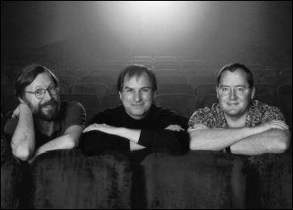
Эд Катмулл, Стив Джобс и Джон Лассетер, 1999
Lucasfilm’s Computer Division
Компьютерное подразделение Lucasfilm
When Jobs was losing his footing at Apple in the summer of 1985, he went for a walk with Alan Kay, who had been at Xerox PARC and was then an Apple Fellow. Kay knew that Jobs was interested in the intersection of creativity and technology, so he suggested they go see a friend of his, Ed Catmull, who was running the computer division of George Lucas’s film studio. They rented a limo and rode up to Marin County to the edge of Lucas’s Skywalker Ranch, where Catmull and his little computer division were based. “I was blown away, and I came back and tried to convince Sculley to buy it for Apple,” Jobs recalled. “But the folks running Apple weren’t interested, and they were busy kicking me out anyway.”
| blown away | сражён наповал |
Когда летом 1985 года почва в Apple уходила у Джобса из-под ног, он пошёл гулять с Аланом Кеем, работавшим прежде в Xerox PARC, а тогда стипендиатом Apple. Кей знал об интересе Джобса к пересечению творчества и технологий и предложил навестить его друга Эда Катмулла, руководившего компьютерным подразделением киностудии Джорджа Лукаса. Они взяли лимузин и поехали в округ Марин, к окраине ранчо «Скайуокер» Лукаса, где базировался Катмулл со своим маленьким компьютерным отделом. «Я был сражён наповал, вернулся и попытался убедить Скалли купить его для Apple, — вспоминал Джобс. — Но руководству Apple было неинтересно, да и меня они как раз выпроваживали».
The Lucasfilm computer division made hardware and software for rendering digital images, and it also had a group of computer animators making shorts, which was led by a talented cartoon-loving executive named John Lasseter. Lucas, who had completed his first Star Wars trilogy, was embroiled in a contentious divorce, and he needed to sell off the division. He told Catmull to find a buyer as soon as possible.
| contentious | конфликтный |
Компьютерное подразделение Lucasfilm делало железо и софт для рендеринга цифровых изображений, а ещё в нём была группа компьютерных аниматоров, снимавших короткометражки, под руководством талантливого обожателя мультфильмов Джона Лассетера. Лукас, завершивший первую трилогию «Звёздных войн», был втянут в конфликтный развод и нуждался в продаже подразделения. Он велел Катмуллу как можно скорее найти покупателя.
After a few potential purchasers balked in the fall of 1985, Catmull and his colleague Alvy Ray Smith decided to seek investors so that they could buy the division themselves. So they called Jobs, arranged another meeting, and drove down to his Woodside house. After railing for a while about the perfidies and idiocies of Sculley, Jobs proposed that he buy their Lucasfilm division outright. Catmull and Smith demurred: They wanted an investor, not a new owner. But it soon became clear that there was a middle ground: Jobs could buy a majority of the division and serve as chairman but allow Catmull and Smith to run it.
| balked | отказались, заартачились |
| perfidies | вероломства |
| demurred | возразили, отказались |
После того как осенью 1985 года несколько потенциальных покупателей заартачились, Катмулл с коллегой Элви Рэем Смитом решили искать инвесторов, чтобы выкупить подразделение самим. Они позвонили Джобсу, договорились о новой встрече и приехали к нему в Вудсайд. Погромив с часок вероломства и глупости Скалли, Джобс предложил купить их подразделение Lucasfilm целиком. Катмулл и Смит возразили: им нужен инвестор, а не новый хозяин. Но вскоре выяснилось, что есть золотая середина: Джобс покупает контрольный пакет и становится председателем, а управлять оставляет Катмуллу и Смиту.
“I wanted to buy it because I was really into computer graphics,” Jobs recalled. “I realized they were way ahead of others in combining art and technology, which is what I’ve always been interested in.” He offered to pay Lucas $5 million plus invest another $5 million to capitalize the division as a stand-alone company. That was far less than Lucas had been asking, but the timing was right. They decided to negotiate a deal.
«Я хотел купить его, потому что действительно увлекался компьютерной графикой, — вспоминал Джобс. — Я понял: они далеко впереди всех в соединении искусства и технологий, а именно это меня всегда интересовало». Он предложил заплатить Лукасу 5 миллионов плюс вложить ещё 5, чтобы превратить подразделение в самостоятельную компанию. Это было куда меньше запрашиваемого Лукасом, но момент был удачный. Решили договариваться.
The chief financial officer at Lucasfilm found Jobs arrogant and prickly, so when it came time to hold a meeting of all the players, he told Catmull, “We have to establish the right pecking order.” The plan was to gather everyone in a room with Jobs, and then the CFO would come in a few minutes late to establish that he was the person running the meeting. “But a funny thing happened,” Catmull recalled. “Steve started the meeting on time without the CFO, and by the time the CFO walked in Steve was already in control of the meeting.”
| pecking order | иерархия, порядок клевания |
Финансовый директор Lucasfilm счёл Джобса заносчивым и колючим и перед встречей всех участников сказал Катмуллу: «Надо установить правильную иерархию». План был таков: всех соберут в комнате с Джобсом, а финдиректор войдёт на несколько минут позже, показывая, кто тут ведёт встречу. «Но вышло забавно, — вспоминал Катмулл. — Стив начал встречу вовремя, без финдиректора, и к моменту его прихода уже полностью контролировал ход».
Jobs met only once with George Lucas, who warned him that the people in the division cared more about making animated movies than they did about making computers. “You know, these guys are hell-bent on animation,” Lucas told him. Lucas later recalled, “I did warn him that was basically Ed and John’s agenda. I think in his heart he bought the company because that was his agenda too.”
| hell-bent on | одержимы |
Джобс встречался с Джорджем Лукасом лишь раз, и тот предупредил: людям подразделения важнее делать мультфильмы, чем компьютеры. «Знаете, эти ребята одержимы анимацией», — сказал Лукас. Позже он вспоминал: «Я его предупредил, что такова, по сути, повестка Эда и Джона. Думаю, в душе он купил компанию именно потому, что это была и его повестка».
The final agreement was reached in January 1986. It provided that, for his $10 million investment, Jobs would own 70% of the company, with the rest of the stock distributed to Ed Catmull, Alvy Ray Smith, and the thirty-eight other founding employees, down to the receptionist. The division’s most important piece of hardware was called the Pixar Image Computer, and from it the new company took its name.
Окончательное соглашение заключили в январе 1986 года: за 10 миллионов долларов инвестиций Джобс получал 70% компании, остальные акции распределялись между Эдом Катмуллом, Элви Рэем Смитом и тридцатью восемью прочими основателями — вплоть до секретарши. Главное устройство подразделения называлось Pixar Image Computer — от него новая компания и взяла имя.
For a while Jobs let Catmull and Smith run Pixar without much interference. Every month or so they would gather for a board meeting, usually at NeXT headquarters, where Jobs would focus on the finances and strategy. Nevertheless, by dint of his personality and controlling instincts, Jobs was soon playing a stronger role. He spewed out a stream of ideas—some reasonable, others wacky—about what Pixar’s hardware and software could become. And on his occasional visits to the Pixar offices, he was an inspiring presence. “I grew up a Southern Baptist, and we had revival meetings with mesmerizing but corrupt preachers,” recounted Alvy Ray Smith. “Steve’s got it: the power of the tongue and the web of words that catches people up. We were aware of this when we had board meetings, so we developed signals—nose scratching or ear tugs—for when someone had been caught up in Steve’s distortion field and he needed to be tugged back to reality.”
| dint of | силою, благодаря |
Какое-то время Джобс не мешал Катмуллу и Смиту управлять Pixar. Раз в месяц собирался совет директоров, обычно в штаб-квартире NeXT, и Джобс сосредотачивался на финансах и стратегии. Однако силою характера и контролирующих инстинктов он вскоре заиграл более весомую роль, извергая потоки идей — разумных и чудаковатых — о будущем железа и софта Pixar. А в редкие визиты в офисы Pixar он был вдохновляющим присутствием. «Я вырос южным баптистом, и у нас были собрания с гипнотизирующими, но продажными проповедниками, — рассказывал Элви Рэй Смит. — У Стива это есть: сила языка и паутина слов, опутывающая людей. На советах мы об этом знали и придумали сигналы — почёсывание носа или дёрганье за ухо, — когда кто-то попадал в поле искажения Стива и его нужно было вытаскивать обратно в реальность».
Jobs had always appreciated the virtue of integrating hardware and software, which is what Pixar did with its Image Computer and rendering software. It also produced creative content, such as animated films and graphics. All three elements benefited from Jobs’s combination of artistic creativity and technological geekiness. “Silicon Valley folks don’t really respect Hollywood creative types, and the Hollywood folks think that tech folks are people you hire and never have to meet,” Jobs later said. “Pixar was one place where both cultures were respected.”
Джобс всегда ценил достоинства интеграции железа и софта — именно это делала Pixar со своим Image Computer и программами рендеринга. Она производила и творческий контент — анимационные фильмы и графику. Все три составляющие выигрывали от соединения в Джобсе художественного творчества и технологического гикства. «Кремниевая долина не очень уважает голливудских творцов, а Голливуд считает технарей людьми, которых нанимают и с которыми не обязательно встречаться, — говорил позже Джобс. — Pixar была местом, где обе культуры уважались».
Initially the revenue was supposed to come from the hardware side. The Pixar Image Computer sold for $125,000. The primary customers were animators and graphic designers, but the machine also soon found specialized markets in the medical industry (CAT scan data could be rendered in three-dimensional graphics) and intelligence fields (for rendering information from reconnaissance flights and satellites). Because of the sales to the National Security Agency, Jobs had to get a security clearance, which must have been fun for the FBI agent assigned to vet him. At one point, a Pixar executive recalled, Jobs was called by the investigator to go over the drug use questions, which he answered unabashedly. “The last time I used that . . . ,” he would say, or on occasion he would answer that no, he had actually never tried that particular drug.
| vet | проверить, изучить |
| unabashedly | без стеснения |
Изначально выручка должна была идти от железа. Pixar Image Computer продавался за 125 000 долларов. Главные покупатели — аниматоры и графические дизайнеры, но вскоре у машины нашлись нишевые рынки в медицине (данные томографии можно было визуализировать в 3D) и разведке (обработка данных разведывательных полётов и спутников). Из-за продаж Агентству национальной безопасности Джобсу пришлось получать допуск — наверняка весело для агента ФБР, которому поручили проверку. Как вспоминал один руководитель Pixar, однажды следователь позвонил Джобсу по вопросам употребления наркотиков, и тот отвечал без стеснения: «Последний раз я употреблял это…» — или порой отвечал, что нет, этот конкретный препарат он вообще никогда не пробовал.
Jobs pushed Pixar to build a lower-cost version of the computer that would sell for around $30,000. He insisted that Hartmut Esslinger design it, despite protests by Catmull and Smith about his fees. It ended up looking like the original Pixar Image Computer, which was a cube with a round dimple in the middle, but it had Esslinger’s signature thin grooves.
| dimple | впадинка, ямочка |
Джобс настоял на более дешёвой версии компьютера — около 30 000 долларов — и, вопреки возражениям Катмулла и Смита о гонорарах, отдал дизайн Хартмуту Эсслингеру. Вышло похоже на оригинальный Pixar Image Computer — куб с круглой впадинкой в середине, — но с фирменными тонкими канавками Эсслингера.
Jobs wanted to sell Pixar’s computers to a mass market, so he had the Pixar folks open up sales offices—for which he approved the design—in major cities, on the theory that creative people would soon come up with all sorts of ways to use the machine. “My view is that people are creative animals and will figure out clever new ways to use tools that the inventor never imagined,” he later said. “I thought that would happen with the Pixar computer, just as it did with the Mac.” But the machine never took hold with regular consumers. It cost too much, and there were not many software programs for it.
Джобс хотел продавать компьютеры Pixar массовому рынку, поэтому велел открыть в крупных городах офисы продаж (дизайн которых сам утвердил) — из расчёта, что творческие люди скоро придумают машине всевозможные применения. «Мой взгляд: люди — существа творческие и найдут хитроумные способы использовать инструменты так, как изобретателю и не снилось, — говорил он позже. — Я думал, так случится и с компьютером Pixar, как было с Mac». Но машина не прижилась у обычных потребителей: слишком дорогая, и программ для неё мало.
On the software side, Pixar had a rendering program, known as Reyes (Renders everything you ever saw), for making 3-D graphics and images. After Jobs became chairman, the company created a new language and interface, named RenderMan, that it hoped would become a standard for 3-D graphics rendering, just as Adobe’s PostScript was for laser printing.
С софтверной стороны у Pixar была программа рендеринга Reyes («рендерит всё, что ты когда-либо видел») для 3D-графики. После прихода Джобса на пост председателя компания создала новый язык и интерфейс RenderMan, надеясь сделать его стандартом 3D-рендеринга, как PostScript от Adobe стал стандартом лазерной печати.
As he had with the hardware, Jobs decided that they should try to find a mass market, rather than just a specialized one, for the software they made. He was never content to aim only at the corporate or high-end specialized markets. “He would have these great visions of how RenderMan could be for everyman,” recalled Pam Kerwin, Pixar’s marketing director. “He kept coming up with ideas about how ordinary people would use it to make amazing 3-D graphics and photorealistic images.” The Pixar team would try to dissuade him by saying that RenderMan was not as easy to use as, say, Excel or Adobe Illustrator. Then Jobs would go to a whiteboard and show them how to make it simpler and more user-friendly. “We would be nodding our heads and getting excited and say, ‘Yes, yes, this will be great!’” Kerwin recalled. “And then he would leave and we would consider it for a moment and then say, ‘What the heck was he thinking!’ He was so weirdly charismatic that you almost had to get deprogrammed after you talked to him.” As it turned out, average consumers were not craving expensive software that would let them render realistic images. RenderMan didn’t take off.
| everyman | каждый, простой человек |
| deprogrammed | «раскодирован» (как после секты) |
Как и с железом, Джобс решил искать для софта массовый, а не нишевый рынок. Его никогда не устраивала нацеленность только на корпоративный или специализированный сегмент. «У него были грандиозные видения, как RenderMan станет инструментом для каждого, — вспоминала Пэм Кервин, директор по маркетингу Pixar. — Он без конца придумывал, как обычные люди будут делать на нём потрясающую 3D-графику и фотореалистичные изображения». Команда пыталась отговорить: RenderMan не так прост, как Excel или Adobe Illustrator. Тогда Джобс шёл к доске и показывал, как упростить и сделать интерфейс дружелюбнее. «Мы кивали, загорались и говорили: „Да, да, будет здорово!“ — вспоминала Кервин. — А потом он уходил, мы думали с минуту и говорили: „Да что он вообще задумал!“ Он был так странно харизматичен, что после разговора с ним приходилось почти раскодировываться». Как выяснилось, средний потребитель не жаждал дорогого софта для реалистичных изображений. RenderMan не взлетел.
There was, however, one company that was eager to automate the rendering of animators’ drawings into color images for film. When Roy Disney led a board revolution at the company that his uncle Walt had founded, the new CEO, Michael Eisner, asked what role he wanted. Disney said that he would like to revive the company’s venerable but fading animation department. One of his first initiatives was to look at ways to computerize the process, and Pixar won the contract. It created a package of customized hardware and software known as CAPS, Computer Animation Production System. It was first used in 1988 for the final scene of The Little Mermaid, in which King Triton waves good-bye to Ariel. Disney bought dozens of Pixar Image Computers as CAPS became an integral part of its production.
Впрочем, одна компания жаждала автоматизировать перевод рисунков аниматоров в цветные кадры для кино. Когда Рой Дисней возглавил переворот в совете компании, основанной его дядей Уолтом, новый CEO Майкл Айснер спросил, какую роль тот хочет. Дисней ответил, что хотел бы возродить почтенный, но увядающий анимационный отдел. Одной из первых его инициатив стал поиск способов компьютеризации процесса — и контракт выиграла Pixar. Она создала комплект заказного железа и софта CAPS — Computer Animation Production System. Впервые его применили в 1988 году в финальной сцене «Русалочки», где король Тритон машет Ариэль на прощание. Disney купила десятки Pixar Image Computers, и CAPS стал неотъемлемой частью её производства.
Animation
Анимация
The digital animation business at Pixar—the group that made little animated films—was originally just a sideline, its main purpose being to show off the hardware and software of the company. It was run by John Lasseter, a man whose childlike face and demeanor masked an artistic perfectionism that rivaled that of Jobs. Born in Hollywood, Lasseter grew up loving Saturday morning cartoon shows. In ninth grade, he wrote a report on the history of Disney Studios, and he decided then how he wished to spend his life.
| sideline | побочное занятие |
| demeanor | манеры, облик |
Цифровая анимация в Pixar — группа, снимавшая маленькие мультфильмы, — была поначалу лишь побочным занятием, чья цель — демонстрировать железо и софт компании. Руководил ею Джон Лассетер, человек, чьё детское лицо и манеры скрывали художественный перфекционизм под стать джобсовскому. Родившись в Голливуде, Лассетер вырос на субботних утренних мультиках. В девятом классе он написал доклад об истории студии Disney и тогда же решил, как хочет прожить жизнь.
When he graduated from high school, Lasseter enrolled in the animation program at the California Institute of the Arts, founded by Walt Disney. In his summers and spare time, he researched the Disney archives and worked as a guide on the Jungle Cruise ride at Disneyland. The latter experience taught him the value of timing and pacing in telling a story, an important but difficult concept to master when creating, frame by frame, animated footage. He won the Student Academy Award for the short he made in his junior year, Lady and the Lamp, which showed his debt to Disney films and foreshadowed his signature talent for infusing inanimate objects such as lamps with human personalities. After graduation he took the job for which he was destined: as an animator at Disney Studios.
| infusing | наделять, вкладывать |
После школы Лассетер поступил на анимационную программу Калифорнийского института искусств, основанного Уолтом Диснеем. Летом и в свободное время он копался в архивах Disney и работал гидом на аттракционе Jungle Cruise в Диснейленде. Этот опыт научил его ценности тайминга и ритма в рассказе — важной, но трудной концепции при покадровом создании анимации. За короткометражку, снятую на третьем курсе, — «Леди и лампа» — он получил студенческий «Оскар»: фильм показывал его долг перед Disney и предвещал фирменный талант наделять неодушевлённые предметы вроде ламп человеческими характерами. После выпуска он занял предназначенную ему должность — аниматора на студии Disney.
Except it didn’t work out. “Some of us younger guys wanted to bring Star Wars–level quality to the art of animation, but we were held in check,” Lasseter recalled. “I got disillusioned, then I got caught in a feud between two bosses, and the head animation guy fired me.” So in 1984 Ed Catmull and Alvy Ray Smith were able to recruit him to work where Star Wars–level quality was being defined, Lucasfilm. It was not certain that George Lucas, already worried about the cost of his computer division, would really approve of hiring a full-time animator, so Lasseter was given the title “interface designer.”
| held in check | сдерживали |
| title | должность, титул |
Но не сложилось. «Кое-кто из нас, молодых, хотел привнести в искусство анимации качество „Звёздных войн“, но нас сдерживали, — вспоминал Лассетер. — Я разочаровался, потом попал в свару между двумя начальниками, и главный аниматор меня уволил». И в 1984 году Эд Катмулл и Элви Рэй Смит переманили его туда, где качество уровня «Звёздных войн» только определялось, — в Lucasfilm. Не было уверенности, что Джордж Лукас, уже обеспокоенный расходами компьютерного подразделения, одобрит наём штатного аниматора, поэтому Лассетеру дали должность «дизайнер интерфейсов».
After Jobs came onto the scene, he and Lasseter began to share their passion for graphic design. “I was the only guy at Pixar who was an artist, so I bonded with Steve over his design sense,” Lasseter said. He was a gregarious, playful, and huggable man who wore flowery Hawaiian shirts, kept his office cluttered with vintage toys, and loved cheeseburgers. Jobs was a prickly, whip-thin vegetarian who favored austere and uncluttered surroundings. But they were actually well-suited for each other. Lasseter was an artist, so Jobs treated him deferentially, and Lasseter viewed Jobs, correctly, as a patron who could appreciate artistry and knew how it could be interwoven with technology and commerce.
| austere | аскетичную |
| patron | покровитель, меценат |
С появлением Джобса они с Лассетером стали делить страсть к графическому дизайну. «Я был в Pixar единственным художником, так что со Стивом мы сошлись на его чувстве дизайна», — говорил Лассетер. Это был общительный, игривый, обнимательный человек в цветастых гавайских рубашках, чей кабинет ломался от винтажных игрушек и который обожал чизбургеры. Джобс — колючий, тощий как хлыст вегетарианец, предпочитавший аскетичную обстановку без хлама. Но друг другу они подходили. Лассетер был художником, и Джобс относился к нему почтительно; Лассетер же, справедливо, видел в Джобсе покровителя, умеющего ценить искусство и понимающего, как сплести его с технологией и коммерцией.
Jobs and Catmull decided that, in order to show off their hardware and software, Lasseter should produce another short animated film in 1986 for SIGGRAPH, the annual computer graphics conference. At the time, Lasseter was using the Luxo lamp on his desk as a model for graphic rendering, and he decided to turn Luxo into a lifelike character. A friend’s young child inspired him to add Luxo Jr., and he showed a few test frames to another animator, who urged him to make sure he told a story. Lasseter said he was making only a short, but the animator reminded him that a story can be told even in a few seconds. Lasseter took the lesson to heart. Luxo Jr. ended up being just over two minutes; it told the tale of a parent lamp and a child lamp pushing a ball back and forth until the ball bursts, to the child’s dismay.
| took the lesson to heart | запомнил урок, принял близко к сердцу |
Джобс и Катмулл решили: чтобы показать железо и софт, Лассетер в 1986 году снимет для SIGGRAPH, ежегодной конференции по компьютерной графике, ещё один короткометражный фильм. Лассетер тогда использовал стоящую на столе лампу Luxo как модель для рендеринга и решил сделать из Luxo живой персонаж. Маленький ребёнок друга вдохновил его добавить Люксо-младшего, а несколько пробных кадров он показал другому аниматору, и тот призвал обязательно рассказать историю. Лассетер возразил, что снимает лишь короткометражку, но аниматор напомнил: историю можно рассказать и за несколько секунд. Лассетер запомнил урок. «Люксо-младший» вышел чуть длиннее двух минут — история лампы-родителя и лампы-ребёнка, катающих мячик туда-сюда, пока тот не лопнет, к огорчению малыша.
Jobs was so excited that he took time off from the pressures at NeXT to fly down with Lasseter to SIGGRAPH, which was being held in Dallas that August. “It was so hot and muggy that when we’d walk outside the air hit us like a tennis racket,” Lasseter recalled. There were ten thousand people at the trade show, and Jobs loved it. Artistic creativity energized him, especially when it was connected to technology.
| muggy | душно, влажно-жарко |
Джобс так воодушевился, что оторвался от дел NeXT и полетел с Лассетером на SIGGRAPH, проходивший в том августе в Далласе. «Было так жарко и душно, что снаружи воздух бил по нам, как теннисная ракетка», — вспоминал Лассетер. На выставке было десять тысяч человек, и Джобсу это нравилось. Художественное творчество заряжало его, особенно связанное с технологией.
There was a long line to get into the auditorium where the films were being screened, so Jobs, not one to wait his turn, fast-talked their way in first. Luxo Jr. got a prolonged standing ovation and was named the best film. “Oh, wow!” Jobs exclaimed at the end. “I really get this, I get what it’s all about.” As he later explained, “Our film was the only one that had art to it, not just good technology. Pixar was about making that combination, just as the Macintosh had been.”
| fast-talked | заговорил, заболтал (чтобы пропустили) |
В зал, где показывали фильмы, стояла длинная очередь, так что Джобс, не из тех, кто ждёт своей очереди, заболтал охрану и прошёл первым. «Люксо-младшего» наградили долгой стоячей овацией и признали лучшим фильмом. «Ого! — воскликнул Джобс в финале. — Теперь я понимаю, понимаю, в чём тут смысл». Позже он объяснял: «Наш фильм был единственным, где было искусство, а не только хорошая технология. Pixar и была про это сочетание — как когда-то Macintosh».
Luxo Jr. was nominated for an Academy Award, and Jobs flew down to Los Angeles to be there for the ceremony. It didn’t win, but Jobs became committed to making new animated shorts each year, even though there was not much of a business rationale for doing so. As times got tough at Pixar, he would sit through brutal budget-cutting meetings showing no mercy. Then Lasseter would ask that the money they had just saved be used for his next film, and Jobs would agree.
| rationale | обоснование, логика |
«Люксо-младшего» номинировали на «Оскар», и Джобс прилетел в Лос-Анджелес на церемонию. Фильм не победил, но Джобс взял на себя обязательство каждый год снимать новые короткометражки, хотя бизнес-логики в этом было мало. Когда в Pixar наступали трудные времена, он безжалостно сидел на жестоких совещаниях по сокращению бюджета. Потом Лассетер просил отдать только что сэкономленные деньги на следующий фильм — и Джобс соглашался.
Tin Toy
Оловянная игрушка
Not all of Jobs’s relationships at Pixar were as good. His worst clash came with Catmull’s cofounder, Alvy Ray Smith. From a Baptist background in rural north Texas, Smith became a free-spirited hippie computer imaging engineer with a big build, big laugh, and big personality—and occasionally an ego to match. “Alvy just glows, with a high color, friendly laugh, and a whole bunch of groupies at conferences,” said Pam Kerwin. “A personality like Alvy’s was likely to ruffle Steve. They are both visionaries and high energy and high ego. Alvy is not as willing to make peace and overlook things as Ed was.”
| groupies | поклонники, свита |
| ruffle | ершить, раздражать |
Не все отношения Джобса в Pixar были такими хорошими. Худшая стычка вышла с сооснователем Катмулла Элви Рэем Смитом. Из баптистской глубинки северного Техаса Смит стал вольнодумным хипповым инженером компьютерной графики — крупного сложения, с громким смехом и большой личностью, а порой и эго под стать. «Элви просто светится — яркий цвет, дружелюбный смех и целая свита поклонников на конференциях, — говорила Пэм Кервин. — Такая личность, как у Элви, наверняка ершила Стива. Оба провидцы, оба энергичны, оба с большим эго. Элви не так готов мириться и закрывать глаза, как Эд».
Smith saw Jobs as someone whose charisma and ego led him to abuse power. “He was like a televangelist,” Smith said. “He wanted to control people, but I would not be a slave to him, which is why we clashed. Ed was much more able to go with the flow.” Jobs would sometimes assert his dominance at a meeting by saying something outrageous or untrue. Smith took great joy in calling him on it, and he would do so with a large laugh and a smirk. This did not endear him to Jobs.
| televangelist | телепроповедник |
| endear | расположить |
Смит видел в Джобсе человека, чьи харизма и эго ведут к злоупотреблению властью. «Он был как телепроповедник, — говорил Смит. — Хотел управлять людьми, но рабом ему я быть не собирался — потому мы и сталкивались. Эд гораздо легче плыл по течению». Джобс порой утверждал доминирование на совещании, говоря нечто возмутительное или неверное. Смит с удовольствием ловил его на этом — с громким смехом и ухмылкой. Расположения Джобса это ему не добавляло.
One day at a board meeting, Jobs started berating Smith and other top Pixar executives for the delay in getting the circuit boards completed for the new version of the Pixar Image Computer. At the time, NeXT was also very late in completing its own computer boards, and Smith pointed that out: “Hey, you’re even later with your NeXT boards, so quit jumping on us.” Jobs went ballistic, or in Smith’s phrase, “totally nonlinear.” When Smith was feeling attacked or confrontational, he tended to lapse into his southwestern accent. Jobs started parodying it in his sarcastic style. “It was a bully tactic, and I exploded with everything I had,” Smith recalled. “Before I knew it, we were in each other’s faces—about three inches apart—screaming at each other.”
| ballistic | взбесился |
Однажды на совете директоров Джобс начал отчитывать Смита и других руководителей Pixar за задержку плат для новой версии Pixar Image Computer. В то время NeXT сама сильно запаздывала со своими платами, и Смит указал на это: «Эй, у тебя платы NeXT ещё сильнее опаздывают, так что отстань от нас». Джобс взбесился — или, по выражению Смита, стал «совсем нелинейным». Когда Смит чувствовал атаку или конфронтацию, у него пробивался юго-западный акцент. Джобс начал саркастически его передразнивать. «Это был приём хулигана, и я взорвался всем, что имел, — вспоминал Смит. — Не успел опомниться, как мы стояли нос к носу — дюймах в трёх друг от друга — и орали».
Jobs was very possessive about control of the whiteboard during a meeting, so the burly Smith pushed past him and started writing on it. “You can’t do that!” Jobs shouted.
Джобс очень ревниво контролировал доску на совещаниях, так что здоровяк Смит отодвинул его и начал писать сам. «Так нельзя!» — закричал Джобс.
“What?” responded Smith, “I can’t write on your whiteboard? Bullshit.” At that point Jobs stormed out.
| stormed out | вылетел вон |
«Что? — ответил Смит. — Нельзя писать на твоей доске? Чушь». Тут Джобс вылетел вон.
Smith eventually resigned to form a new company to make software for digital drawing and image editing. Jobs refused him permission to use some code he had created while at Pixar, which further inflamed their enmity. “Alvy eventually got what he needed,” said Catmull, “but he was very stressed for a year and developed a lung infection.” In the end it worked out well enough; Microsoft eventually bought Smith’s company, giving him the distinction of being a founder of one company that was sold to Jobs and another that was sold to Gates.
| inflamed | разожгла |
В итоге Смит уволился и основал компанию по разработке софта для цифрового рисования и редактирования изображений. Джобс отказал ему в праве использовать часть кода, созданного в Pixar, что ещё больше разожгло вражду. «Элви в конце концов получил, что нужно, — говорил Катмулл, — но год прожил в сильнейшем стрессе и заработал воспаление лёгких». В итоге всё вышло неплохо: компанию Смита со временем купила Microsoft, так что он отличился, основав одну компанию, проданную Джобсу, и другую — проданную Гейтсу.
Ornery in the best of times, Jobs became particularly so when it became clear that all three Pixar endeavors—hardware, software, and animated content—were losing money. “I’d get these plans, and in the end I kept having to put in more money,” he recalled. He would rail, but then write the check. Having been ousted at Apple and flailing at NeXT, he couldn’t afford a third strike.
| rail | рвать и метать |
Сварливый и в лучшие времена, Джобс стал особенно несносен, когда стало ясно, что все три направления Pixar — железо, софт и анимация — убыточны. «Мне приносили планы, а я всё вкладывал и вкладывал», — вспоминал он. Он рвал и метал, но потом выписывал чек. После изгнания из Apple и провалов в NeXT третий удар он себе позволить не мог.
To stem the losses, he ordered a round of deep layoffs, which he executed with his typical empathy deficiency. As Pam Kerwin put it, he had “neither the emotional nor financial runway to be decent to people he was letting go.” Jobs insisted that the firings be done immediately, with no severance pay. Kerwin took Jobs on a walk around the parking lot and begged that the employees be given at least two weeks notice. “Okay,” he shot back, “but the notice is retroactive from two weeks ago.” Catmull was in Moscow, and Kerwin put in frantic calls to him. When he returned, he was able to institute a meager severance plan and calm things down just a bit.
| stem | остановить |
Чтобы остановить убытки, он велел провести глубокие увольнения, исполняя их с обычным дефицитом эмпатии. По выражению Пэм Кервин, у него не было «ни эмоциональной, ни финансовой взлётной полосы, чтобы быть порядочным с увольняемыми». Джобс настаивал на немедленном увольнении, без выходного пособия. Кервин вывела его на прогулку вокруг парковки и умоляла дать людям хотя бы двухнедельное предупреждение. «Ладно, — отрезал он, — но предупреждение задним числом, с двух недель назад». Катмулл был в Москве, и Кервин судорожно ему звонила. Вернувшись, он ввёл скромные выходные пособия и немного успокоил ситуацию.
At one point the members of the Pixar animation team were trying to convince Intel to let them make some of its commercials, and Jobs became impatient. During a meeting, in the midst of berating an Intel marketing director, he picked up the phone and called CEO Andy Grove directly. Grove, still playing mentor, tried to teach Jobs a lesson: He supported his Intel manager. “I stuck by my employee,” he recalled. “Steve doesn’t like to be treated like a supplier.”
| stuck by | поддержал, остался на стороне |
Однажды члены анимационной команды Pixar уговаривали Intel доверить им часть её рекламы, и Джобс терял терпение. На встрече, посреди выволочки директору по маркетингу Intel, он снял трубку и позвонил напрямую CEO Энди Гроуву. Гроув, всё ещё игравший наставника, попытался преподать урок и поддержал своего менеджера. «Я остался на стороне сотрудника, — вспоминал он. — Стив не любит, когда с ним обращаются как с поставщиком».
Grove also played mentor when Jobs proposed that Pixar give Intel suggestions on how to improve the capacity of its processors to render 3-D graphics. When the engineers at Intel accepted the offer, Jobs sent an email back saying Pixar would need to be paid for its advice. Intel’s chief engineer replied, “We have not entered into any financial arrangement in exchange for good ideas for our microprocessors in the past and have no intention for the future.” Jobs forwarded the answer to Grove, saying that he found the engineer’s response to be “extremely arrogant, given Intel’s dismal showing in understanding computer graphics.” Grove sent Jobs a blistering reply, saying that sharing ideas is “what friendly companies and friends do for each other.” Grove added that he had often freely shared ideas with Jobs in the past and that Jobs should not be so mercenary. Jobs relented. “I have many faults, but one of them is not ingratitude,” he responded. “Therefore, I have changed my position 180 degrees—we will freely help. Thanks for the clearer perspective.”
| mercenary | меркантильный |
Наставником Гроув выступил и когда Джобс предложил Pixar подсказать Intel, как улучшить возможности её процессоров в 3D-графике. Инженеры Intel предложение приняли, а Джобс ответил письмом: за советы Pixar нужно платить. Главный инженер Intel ответил: «В прошлом мы не вступали в финансовые соглашения в обмен на хорошие идеи для наших микропроцессоров и впредь не намерены». Джобс переслал ответ Гроуву, заметив, что считает реакцию инженера «крайне высокомерной, учитывая убогие успехи Intel в понимании компьютерной графики». Гроув прислал хлёсткий ответ: делиться идеями — «то, что дружественные компании и друзья делают друг для друга». Он добавил, что сам не раз свободно делился идеями с Джобсом и тому не стоит быть таким меркантильным. Джобс уступил. «У меня много недостатков, но неблагодарности среди них нет, — ответил он. — Поэтому меняю позицию на 180 градусов — будем помогать бесплатно. Спасибо за более ясную перспективу».
Pixar was able to create some powerful software products aimed at average consumers, or at least those average consumers who shared Jobs’s passion for designing things. Jobs still hoped that the ability to make super-realistic 3-D images at home would become part of the desktop publishing craze. Pixar’s Showplace, for example, allowed users to change the shadings on the 3-D objects they created so that they could display them from various angles with appropriate shadows. Jobs thought it was incredibly compelling, but most consumers were content to live without it. It was a case where his passions misled him: The software had so many amazing features that it lacked the simplicity Jobs usually demanded. Pixar couldn’t compete with Adobe, which was making software that was less sophisticated but far less complicated and expensive.
| craze | повальное увлечение, бум |
| compelling | увлекательным |
Pixar создала несколько мощных программ для средних потребителей — по крайней мере для тех из них, кто разделял страсть Джобса к дизайну. Джобс всё надеялся, что домашнее создание сверхреалистичных 3D-изображений станет частью бума настольных издательств. Pixar Showplace, например, позволяла менять затенение созданных 3D-объектов и показывать их с разных ракурсов с правильными тенями. Джобсу это казалось невероятно увлекательным, но большинство потребителей спокойно жили без этого. Страсти его обманули: в программе было столько поразительных функций, что не хватало простоты, которую Джобс обычно требовал. Конкурировать с Adobe, делавшей софт менее изощрённый, но куда менее сложный и дорогой, Pixar не могла.
Even as Pixar’s hardware and software product lines foundered, Jobs kept protecting the animation group. It had become for him a little island of magical artistry that gave him deep emotional pleasure, and he was willing to nurture it and bet on it. In the spring of 1988 cash was running so short that he convened a meeting to decree deep spending cuts across the board. When it was over, Lasseter and his animation group were almost too afraid to ask Jobs about authorizing some extra money for another short. Finally, they broached the topic and Jobs sat silent, looking skeptical. It would require close to $300,000 more out of his pocket. After a few minutes, he asked if there were any storyboards. Catmull took him down to the animation offices, and once Lasseter started his show—displaying his boards, doing the voices, showing his passion for his product—Jobs started to warm up.
| foundered | терпели неудачу |
| broached | затронули |
Пока линейки железа и софта Pixar терпели неудачу, Джобс оберегал анимационную группу. Она стала для него островком волшебного искусства, дававшим глубокое эмоциональное наслаждение, и он был готов её растить и ставить на неё. Весной 1988 года денег стало так мало, что он созвал совещание с указом о глубоких сокращениях по всем направлениям. Когда всё закончилось, Лассетер с группой почти боялись попросить Джобса выделить дополнительные деньги на ещё одну короткометражку. Наконец тему затронули, и Джобс сидел молча, со скептическим видом. Из его кармана потребовалось бы ещё почти 300 000. Через несколько минут он спросил, есть ли раскадровки. Катмулл отвёл его в анимационный отдел, и стоило Лассетеру начать шоу — показывать листы, озвучивать, изливать страсть к своему продукту, — Джобс стал оттаивать.
The story was about Lasseter’s love, classic toys. It was told from the perspective of a toy one-man band named Tinny, who meets a baby that charms and terrorizes him. Escaping under the couch, Tinny finds other frightened toys, but when the baby hits his head and cries, Tinny goes back out to cheer him up.
История была о любви Лассетера — классических игрушках. Её рассказали от лица игрушечного оркестра из одного музыканта по имени Тинни, который встречает младенца — тот его и очаровывает, и терроризирует. Сбежав под диван, Тинни находит других перепуганных игрушек, но, когда малыш ударяется головой и плачет, Тинни выходит его утешить.
Jobs said he would provide the money. “I believed in what John was doing,” he later said. “It was art. He cared, and I cared. I always said yes.” His only comment at the end of Lasseter’s presentation was, “All I ask of you, John, is to make it great.”
Джобс сказал, что деньги даст. «Я верил в то, что делает Джон, — говорил он позже. — Это было искусство. Ему было не всё равно, и мне. Я всегда говорил „да“». Единственным его комментарием в конце презентации было: «Всё, о чём прошу тебя, Джон, — сделай это великим».
Tin Toy went on to win the 1988 Academy Award for animated short films, the first computer-generated film to do so. To celebrate, Jobs took Lasseter and his team to Greens, a vegetarian restaurant in San Francisco. Lasseter grabbed the Oscar, which was in the center of the table, held it aloft, and toasted Jobs by saying, “All you asked is that we make a great movie.”
| aloft | вверх, над головой |
«Оловянная игрушка» выиграла «Оскар» 1988 года за анимационный короткий метр — первый компьютерный фильм, добившийся этого. Праздновать Джобс повёл Лассетера с командой в Greens, вегетарианский ресторан Сан-Франциско. Лассетер схватил стоявшего в центре стола «Оскара», поднял над головой и произнёс тост: «Ты просил лишь об одном — чтобы мы сняли великий фильм».
The new team at Disney—Michael Eisner the CEO and Jeffrey Katzenberg in the film division—began a quest to get Lasseter to come back. They liked Tin Toy, and they thought that something more could be done with animated stories of toys that come alive and have human emotions. But Lasseter, grateful for Jobs’s faith in him, felt that Pixar was the only place where he could create a new world of computer-generated animation. He told Catmull, “I can go to Disney and be a director, or I can stay here and make history.” So Disney began talking about making a production deal with Pixar. “Lasseter’s shorts were really breathtaking both in storytelling and in the use of technology,” recalled Katzenberg. “I tried so hard to get him to Disney, but he was loyal to Steve and Pixar. So if you can’t beat them, join them. We decided to look for ways we could join up with Pixar and have them make a film about toys for us.”
| breathtaking | захватывающий дух |
Новое руководство Disney — CEO Майкл Айснер и Джеффри Катценберг в киноотделе — начало кампанию по возвращению Лассетера. Им нравилась «Оловянная игрушка», и они считали, что из историй об оживающих игрушках с человеческими эмоциями можно сделать больше. Но Лассетер, благодарный Джобсу за веру в него, чувствовал, что Pixar — единственное место, где он создаст новый мир компьютерной анимации. Он сказал Катмуллу: «Я могу пойти в Disney и быть режиссёром, а могу остаться здесь и творить историю». И Disney заговорила о производственном контракте с Pixar. «Короткометражки Лассетера захватывали дух и повествованием, и технологией, — вспоминал Катценберг. — Я так старался заманить его в Disney, но он был верен Стиву и Pixar. Не можешь победить — присоединяйся. Мы решили поискать способы объединиться с Pixar и заказать им фильм об игрушках».
By this point Jobs had poured close to $50 million of his own money into Pixar—more than half of what he had pocketed when he cashed out of Apple—and he was still losing money at NeXT. He was hard-nosed about it; he forced all Pixar employees to give up their options as part of his agreement to add another round of personal funding in 1991. But he was also a romantic in his love for what artistry and technology could do together. His belief that ordinary consumers would love to do 3-D modeling on Pixar software turned out to be wrong, but that was soon replaced by an instinct that turned out to be right: that combining great art and digital technology would transform animated films more than anything had since 1937, when Walt Disney had given life to Snow White.
| pocketed | положил в карман |
К этому моменту Джобс вложил в Pixar около 50 миллионов собственных денег — больше половины вырученного при выходе из Apple, — а NeXT всё ещё приносила убытки. Он был жёсток: в обмен на очередной раунд личного финансирования в 1991 году заставил всех сотрудников Pixar отказаться от опционов. Но был и романтиком в любви к союзу искусства и технологии. Вера в то, что обычные потребители захотят делать 3D-модели на софте Pixar, оказалась ошибочной, — но ей на смену скоро пришло чутьё, оказавшееся верным: соединение великого искусства и цифровых технологий преобразит анимационное кино сильнее, чем что-либо с 1937 года, когда Уолт Дисней оживил Белоснежку.
Looking back, Jobs said that, had he known more, he would have focused on animation sooner and not worried about pushing the company’s hardware or software applications. On the other hand, had he known the hardware and software would never be profitable, he would not have taken over Pixar. “Life kind of snookered me into doing that, and perhaps it was for the better.”
| snookered | обхитрила, подвела к этому |
Оглядываясь назад, Джобс говорил: знай он больше, он бы раньше сосредоточился на анимации, не тратя сил на продвижение железа и софта. С другой стороны, знай он, что железо и софт никогда не станут прибыльными, он бы Pixar не покупал. «Жизнь как бы обхитрила меня, подведя к этому, — и, возможно, к лучшему».
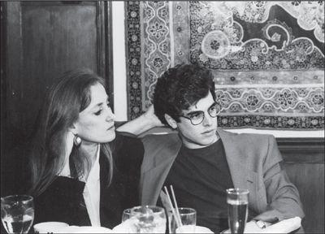
Мона Симпсон и её жених Ричард Эппел, 1991
Joan Baez
Джоан Баэз
In 1982, when he was still working on the Macintosh, Jobs met the famed folksinger Joan Baez through her sister Mimi Fariña, who headed a charity that was trying to get donations of computers for prisons. A few weeks later he and Baez had lunch in Cupertino. “I wasn’t expecting a lot, but she was really smart and funny,” he recalled. At the time, he was nearing the end of his relationship with Barbara Jasinski. They had vacationed in Hawaii, shared a house in the Santa Cruz mountains, and even gone to one of Baez’s concerts together. As his relationship with Jasinski flamed out, Jobs began getting more serious with Baez. He was twenty-seven and Baez was forty-one, but for a few years they had a romance. “It turned into a serious relationship between two accidental friends who became lovers,” Jobs recalled in a somewhat wistful tone.
| flamed out | угасла, выгорела |
| wistful | мечтательно-грустный |
В 1982 году, ещё работая над Macintosh, Джобс познакомился со знаменитой фолк-певицей Джоан Баэз через её сестру Мими Фаринья, возглавлявшую благотворительную организацию, собиравшую компьютеры для тюрем. Через несколько недель они с Баэз пообедали в Купертино. «Я многого не ждал, но она оказалась действительно умной и весёлой», — вспоминал он. Тогда его отношения с Барбарой Ясински подходили к концу. Они вместе отдыхали на Гавайях, снимали дом в горах Санта-Круз и даже побывали на одном из концертов Баэз. Когда роман с Ясински угас, Джобс стал сближаться с Баэз. Ему было двадцать семь, ей сорок один, но несколько лет у них был роман. «Всё вылилось в серьёзные отношения двух случайных друзей, ставших любовниками», — вспоминал Джобс с мечтательной грустью.
Elizabeth Holmes, Jobs’s friend from Reed College, believed that one of the reasons he went out with Baez—other than the fact that she was beautiful and funny and talented—was that she had once been the lover of Bob Dylan. “Steve loved that connection to Dylan,” she later said. Baez and Dylan had been lovers in the early 1960s, and they toured as friends after that, including with the Rolling Thunder Revue in 1975. (Jobs had the bootlegs of those concerts.)
| bootlegs | бутлеги, пиратские записи |
Элизабет Холмс, подруга Джобса по колледжу Рид, считала, что одной из причин его романа с Баэз — помимо того, что она была красива, весела и талантлива, — было то, что она когда-то была любовницей Боба Дилана. «Стиву нравилась эта связь с Диланом», — говорила она. Баэз и Дилан были любовниками в начале 1960-х, а после гастролировали как друзья, включая тур Rolling Thunder Revue 1975 года. (У Джобса были бутлеги тех концертов.)
When she met Jobs, Baez had a fourteen-year-old son, Gabriel, from her marriage to the antiwar activist David Harris. At lunch she told Jobs she was trying to teach Gabe how to type. “You mean on a typewriter?” Jobs asked. When she said yes, he replied, “But a typewriter is antiquated.”
| antiquated | устаревший |
На момент знакомства с Джобсом у Баэз был четырнадцатилетний сын Габриэль от брака с антивоенным активистом Дэвидом Харрисом. За обедом она рассказала, что учит Гейба печатать. «На пишущей машинке?» — спросил Джобс. Услышав «да», ответил: «Но пишущая машинка устарела».
“If a typewriter is antiquated, what does that make me?” she asked. There was an awkward pause. As Baez later told me, “As soon as I said it, I realized the answer was so obvious. The question just hung in the air. I was just horrified.”
«Если пишущая машинка устарела, то что же тогда я?» — спросила она. Повисла неловкая пауза. Как рассказывала мне позже Баэз: «Едва произнеся это, я поняла: ответ настолько очевиден. Вопрос просто повис в воздухе. Я ужаснулась».
Much to the astonishment of the Macintosh team, Jobs burst into the office one day with Baez and showed her the prototype of the Macintosh. They were dumbfounded that he would reveal the computer to an outsider, given his obsession with secrecy, but they were even more blown away to be in the presence of Joan Baez. He gave Gabe an Apple II, and he later gave Baez a Macintosh. On visits Jobs would show off the features he liked. “He was sweet and patient, but he was so advanced in his knowledge that he had trouble teaching me,” she recalled.
| dumbfounded | ошеломлены |
К изумлению команды Macintosh, Джобс однажды ворвался в офис с Баэз и показал ей прототип Macintosh. Они были ошеломлены, что он раскрыл компьютер посторонней — при его-то одержимости секретностью, — но ещё больше — самим присутствием Джоан Баэз. Он подарил Гейбу Apple II, а позже Баэз — Macintosh. В визиты Джобс хвастался любимыми функциями. «Он был мил и терпелив, но настолько опережал меня в знаниях, что учить меня ему было трудно», — вспоминала она.
He was a sudden multimillionaire; she was a world-famous celebrity, but sweetly down-to-earth and not all that wealthy. She didn’t know what to make of him then, and still found him puzzling when she talked about him almost thirty years later. At one dinner early in their relationship, Jobs started talking about Ralph Lauren and his Polo Shop, which she admitted she had never visited. “There’s a beautiful red dress there that would be perfect for you,” he said, and then drove her to the store in the Stanford Mall. Baez recalled, “I said to myself, far out, terrific, I’m with one of the world’s richest men and he wants me to have this beautiful dress.” When they got to the store, Jobs bought a handful of shirts for himself and showed her the red dress. “You ought to buy it,” he said. She was a little surprised, and told him she couldn’t really afford it. He said nothing, and they left. “Wouldn’t you think if someone had talked like that the whole evening, that they were going to get it for you?” she asked me, seeming genuinely puzzled about the incident. “The mystery of the red dress is in your hands. I felt a bit strange about it.” He would give her computers, but not a dress, and when he brought her flowers he made sure to say they were left over from an event in the office. “He was both romantic and afraid to be romantic,” she said.
| down-to-earth | приземлённый |
| left over from | осталось после |
Он внезапно стал мультимиллионером; она была всемирной знаменитостью, но милой, приземлённой и не сказать чтобы богатой. Тогда она не знала, что о нём думать, и почти тридцать лет спустя говорила о нём всё с тем же недоумением. На одном раннем ужине Джобс завёл речь о Ральфе Лорене и его магазине Polo Shop, где она, по её признанию, никогда не бывала. «Там есть красивое красное платье, идеальное для тебя», — сказал он и отвёз её в магазин в Стэнфордском молле. Баэз вспоминала: «Я сказала себе: обалдеть, потрясающе, я с одним из богатейших людей мира, и он хочет, чтобы у меня было это красивое платье». В магазине Джобс купил себе несколько рубашек и показал ей красное платье. «Тебе стоит его купить», — сказал он. Она удивилась и ответила, что не может себе позволить. Он промолчал, и они ушли. «Казалось бы, если человек весь вечер так расписывает, он же сам его тебе купит?» — спрашивала она меня с искренним недоумением. «Тайна красного платья остаётся в ваших руках. Мне было немного странно». Он дарил ей компьютеры, но не платье, а принося цветы, непременно уточнял, что они остались после мероприятия в офисе. «Он был и романтиком, и боялся быть романтиком», — говорила она.
When he was working on the NeXT computer, he went to Baez’s house in Woodside to show her how well it could produce music. “He had it play a Brahms quartet, and he told me eventually computers would sound better than humans playing it, even get the innuendo and the cadences better,” Baez recalled. She was revolted by the idea. “He was working himself up into a fervor of delight while I was shrinking into a rage and thinking, How could you defile music like that?”
| innuendo | намёк, оттенок |
| defile | осквернить |
Работая над компьютером NeXT, он приехал к Баэз в Вудсайд показать, как хорошо машина воспроизводит музыку. «Он поставил квартет Брамса и сказал, что со временем компьютеры зазвучат лучше людей — даже оттенки и каденции передадут лучше», — вспоминала Баэз. Идея её возмутила. «Он распалялся в восторге, а я сжималась в ярости и думала: как можно так осквернять музыку?»
Jobs would confide in Debi Coleman and Joanna Hoffman about his relationship with Baez and worry about whether he could marry someone who had a teenage son and was probably past the point of wanting to have more children. “At times he would belittle her as being an ‘issues’ singer and not a true ‘political’ singer like Dylan,” said Hoffman. “She was a strong woman, and he wanted to show he was in control. Plus, he always said he wanted to have a family, and with her he knew that he wouldn’t.”
| belittle | принижать |
Джобс делился с Деби Коулман и Джоанной Хоффман переживаниями о романе с Баэз и сомневался, можно ли жениться на женщине с сыном-подростком, которая, вероятно, больше не захочет детей. «Иногда он принижал её как певицу „на злобу дня“, а не настоящую „политическую“ певицу вроде Дилана, — говорила Хоффман. — Она была сильной женщиной, а ему хотелось показывать, что контроль у него. К тому же он всегда говорил, что хочет семью, а с ней, понимал, её не будет».
And so, after about three years, they ended their romance and drifted into becoming just friends. “I thought I was in love with her, but I really just liked her a lot,” he later said. “We weren’t destined to be together. I wanted kids, and she didn’t want any more.” In her 1989 memoir, Baez wrote about her breakup with her husband and why she never remarried: “I belonged alone, which is how I have been since then, with occasional interruptions that are mostly picnics.” She did add a nice acknowledgment at the end of the book to “Steve Jobs for forcing me to use a word processor by putting one in my kitchen.”
И вот, года через три, роман закончился, и они остались просто друзьями. «Я думал, что влюблён в неё, но на самом деле она мне просто очень нравилась, — говорил он позже. — Нам не суждено было быть вместе. Я хотел детей, она больше не хотела». В мемуарах 1989 года Баэз написала о разрыве с мужем и о том, почему так и не вышла замуж снова: «Моё место — в одиночестве, так я и живу с тех пор, с редкими перерывами, в основном пикниками». В конце книги она добавила милую благодарность: «Стиву Джобсу — за то, что заставил меня пользоваться текстовым редактором, поставив его мне на кухню».
Finding Joanne and Mona
Поиски Джоанны и Моны
When Jobs was thirty-one, a year after his ouster from Apple, his mother Clara, who was a smoker, was stricken with lung cancer. He spent time by her deathbed, talking to her in ways he had rarely done in the past and asking some questions he had refrained from raising before. “When you and Dad got married, were you a virgin?” he asked. It was hard for her to talk, but she forced a smile. That’s when she told him that she had been married before, to a man who never made it back from the war. She also filled in some of the details of how she and Paul Jobs had come to adopt him.
| stricken with | сражена (болезнью) |
| refrained from | воздерживался от |
Когда Джобсу был тридцать один год, через год после изгнания из Apple, его мать Клара, курильщица, заболела раком лёгких. Он проводил время у её смертного одра, разговаривая с ней так откровенно, как редко прежде, и задавая вопросы, которых раньше избегал. «Когда вы с папой поженились, ты была девственницей?» — спросил он. Говорить ей было трудно, но она выдавила улыбку. Тогда она и рассказала, что уже была замужем — за человеком, не вернувшимся с войны. И восполнила детали того, как они с Полом Джобсом его усыновили.
Soon after that, Jobs succeeded in tracking down the woman who had put him up for adoption. His quiet quest to find her had begun in the early 1980s, when he hired a detective who had failed to come up with anything. Then Jobs noticed the name of a San Francisco doctor on his birth certificate. “He was in the phone book, so I gave him a call,” Jobs recalled. The doctor was no help. He claimed that his records had been destroyed in a fire. That was not true. In fact, right after Jobs called, the doctor wrote a letter, sealed it in an envelope, and wrote on it, “To be delivered to Steve Jobs on my death.” When he died a short time later, his widow sent the letter to Jobs. In it, the doctor explained that his mother had been an unmarried graduate student from Wisconsin named Joanne Schieble.
| tracking down | разыскивая |
| widow | вдова |
Вскоре Джобс разыскал женщину, отдавшую его на усыновление. Тихое расследование началось ещё в начале 1980-х с частного детектива, ничего не нашедшего. Потом Джобс заметил в свидетельстве о рождении имя одного сан-францисского врача. «Он был в телефонной книге, и я позвонил», — вспоминал Джобс. Врач не помог: заявил, что записи сгорели при пожаре. Это была неправда. На самом деле сразу после звонка Джобса врач написал письмо, запечатал и надписал на конверте: «Передать Стиву Джобсу после моей смерти». Когда вскоре врач умер, вдова отправила письмо Джобсу. В нём объяснялось, что его матерью была незамужняя аспирантка из Висконсина по имени Джоанна Шибл.
It took another few weeks and the work of another detective to track her down. After giving him up, Joanne had married his biological father, Abdulfattah “John” Jandali, and they had another child, Mona. Jandali abandoned them five years later, and Joanne married a colorful ice-skating instructor, George Simpson. That marriage didn’t last long either, and in 1970 she began a meandering journey that took her and Mona (both of them now using the last name Simpson) to Los Angeles.
| meandering | извилистый, блуждающий |
На поиски её ушли ещё несколько недель и работа второго детектива. После отказа от сына Джоанна вышла замуж за его биологического отца, Абдулфаттаха «Джона» Джандали, и у них родилась ещё дочь Мона. Джандали бросил их через пять лет, а Джоанна вышла за колоритного тренера по фигурному катанию Джорджа Симпсона. Тот брак тоже продлился недолго, и в 1970 году началось её извилистое странствие, приведшее её с Моной (обе теперь носили фамилию Симпсон) в Лос-Анджелес.
Jobs had been reluctant to let Paul and Clara, whom he considered his real parents, know about his search for his birth mother. With a sensitivity that was unusual for him, and which showed the deep affection he felt for his parents, he worried that they might be offended. So he never contacted Joanne Simpson until after Clara Jobs died in early 1986. “I never wanted them to feel like I didn’t consider them my parents, because they were totally my parents,” he recalled. “I loved them so much that I never wanted them to know of my search, and I even had reporters keep it quiet when any of them found out.” When Clara died, he decided to tell Paul Jobs, who was perfectly comfortable and said he didn’t mind at all if Steve made contact with his biological mother.
Джобс не хотел, чтобы Пол и Клара, которых он считал настоящими родителями, узнали о поисках родной матери. С необычной для него чуткостью, выдававшей глубокую привязанность, он боялся их обидеть. Поэтому с Джоанной Симпсон он связался лишь после смерти Клары в начале 1986 года. «Я не хотел, чтобы они чувствовали, будто я не считаю их родителями, — они были моими родителями целиком, — вспоминал он. — Я так их любил, что не хотел открывать поиски, и даже просил репортёров молчать, если кто-то из них узнавал». Когда Клара умерла, он решил рассказать Полу Джобсу, и тот отнёсся спокойно: совсем не против, если Стив свяжется с биологической матерью.
So one day Jobs called Joanne Simpson, said who he was, and arranged to come down to Los Angeles to meet her. He later claimed it was mainly out of curiosity. “I believe in environment more than heredity in determining your traits, but still you have to wonder a little about your biological roots,” he said. He also wanted to reassure Joanne that what she had done was all right. “I wanted to meet my biological mother mostly to see if she was okay and to thank her, because I’m glad I didn’t end up as an abortion. She was twenty-three and she went through a lot to have me.”
И однажды Джобс позвонил Джоанне Симпсон, назвался и договорился приехать в Лос-Анджелес. Позже он говорил, что движим был в основном любопытством. «Я верю, что черты определяет среда, а не наследственность, но всё же интересно узнать свои биологические корни». Ещё он хотел заверить Джоанну, что её поступок был правильным. «Я хотел увидеть биологическую мать прежде всего, чтобы узнать, всё ли с ней в порядке, и поблагодарить её, — я рад, что не стал абортом. Ей было двадцать три, и она прошла через многое, чтобы меня родить».
Joanne was overcome with emotion when Jobs arrived at her Los Angeles house. She knew he was famous and rich, but she wasn’t exactly sure why. She immediately began to pour out her emotions. She had been pressured to sign the papers putting him up for adoption, she said, and did so only when told that he was happy in the house of his new parents. She had always missed him and suffered about what she had done. She apologized over and over, even as Jobs kept reassuring her that he understood, and that things had turned out just fine.
| pour out | излить |
Джоанну переполнили эмоции, когда Джобс приехал к её лос-анджелесскому дому. Она знала, что он знаменит и богат, но толком не понимала почему. И сразу начала изливать чувства. Её, говорила она, вынудили подписать бумаги об усыновлении, и согласилась она лишь после слов, что мальчик счастлив в доме новых родителей. Она всегда по нему тосковала и страдала из-за содеянного. Она извинялась снова и снова, а Джобс всё уверял, что понимает и что всё сложилось просто отлично.
Once she calmed down, she told Jobs that he had a full sister, Mona Simpson, who was then an aspiring novelist in Manhattan. She had never told Mona that she had a brother, and that day she broke the news, or at least part of it, by telephone. “You have a brother, and he’s wonderful, and he’s famous, and I’m going to bring him to New York so you can meet him,” she said. Mona was in the throes of finishing a novel about her mother and their peregrination from Wisconsin to Los Angeles, Anywhere but Here. Those who’ve read it will not be surprised that Joanne was somewhat quirky in the way she imparted to Mona the news about her brother. She refused to say who he was—only that he had been poor, had gotten rich, was good-looking and famous, had long dark hair, and lived in California. Mona then worked at the Paris Review, George Plimpton’s literary journal housed on the ground floor of his townhouse near Manhattan’s East River. She and her coworkers began a guessing game on who her brother might be. John Travolta? That was one of the favorite guesses. Other actors were also hot prospects. At one point someone did toss out a guess that “maybe it’s one of those guys who started Apple computer,” but no one could recall their names.
| in the throes of | в разгаре, в муках |
Успокоившись, она рассказала Джобсу, что у него есть родная сестра Мона Симпсон, начинающая писательница с Манхэттена. Моне она никогда не говорила о брате, и в тот же день по телефону сообщила новость — или хотя бы её часть. «У тебя есть брат, он замечательный, знаменитый, и я привезу его в Нью-Йорк познакомиться», — сказала она. Мона была в муках завершения романа о матери и их странствии из Висконсина в Лос-Анджелес — «Куда угодно, только не здесь». Читавшие книгу не удивятся, что новость о брате Джоанна сообщила довольно причудливо. Она отказывалась говорить, кто он: только то, что он был беден, разбогател, хорош собой и знаменит, с длинными тёмными волосами, живёт в Калифорнии. Мона тогда работала в Paris Review, литературном журнале Джорджа Плимптона, размещавшемся на первом этаже его особняка близ манхэттенского Ист-Ривер. Они с коллегами затеяли игру в угадайку: кто же её брат? Джон Траволта? Одна из любимых версий. Другие актёры тоже были в фаворе. Кто-то бросил: «Может, это один из тех парней, что основали Apple», — но имён никто не помнил.
The meeting occurred in the lobby of the St. Regis Hotel. “He was totally straightforward and lovely, just a normal and sweet guy,” Mona recalled. They all sat and talked for a few minutes, then he took his sister for a long walk, just the two of them. Jobs was thrilled to find that he had a sibling who was so similar to him. They were both intense in their artistry, observant of their surroundings, and sensitive yet strong-willed. When they went to dinner together, they noticed the same architectural details and talked about them excitedly afterward. “My sister’s a writer!” he exulted to colleagues at Apple when he found out.
| exulted | ликовал |
Встреча произошла в вестибюле отеля St. Regis. «Он был совершенно прямым и милым — обычный хороший парень», — вспоминала Мона. Все немного посидели, поговорили, потом он повёл сестру на долгую прогулку вдвоём. Джобс был в восторге, обнаружив родственную душу: оба страстны в творчестве, наблюдательны, чувствительны, но с сильной волей. За ужином они замечали одни и те же архитектурные детали и потом возбуждённо их обсуждали. «Моя сестра — писательница!» — ликовал он перед коллегами в Apple.
When Plimpton threw a party for Anywhere but Here in late 1986, Jobs flew to New York to accompany Mona to it. They grew increasingly close, though their friendship had the complexities that might be expected, considering who they were and how they had come together. “Mona was not completely thrilled at first to have me in her life and have her mother so emotionally affectionate toward me,” he later said. “As we got to know each other, we became really good friends, and she is my family. I don’t know what I’d do without her. I can’t imagine a better sister. My adopted sister, Patty, and I were never close.” Mona likewise developed a deep affection for him, and at times could be very protective, although she would later write an edgy novel about him, A Regular Guy, that described his quirks with discomforting accuracy.
| edgy | острая, дерзкая |
Когда в конце 1986 года Плимптон устроил вечеринку в честь «Куда угодно, только не здесь», Джобс прилетел в Нью-Йорк сопровождать Мону. Они всё больше сближались, хотя дружба их была непростой — что естественно, учитывая, кем они были и как встретились. «Мона поначалу не была в восторге от моего появления в её жизни и от того, как эмоционально мать ко мне привязалась, — говорил он позже. — Узнав друг друга, мы стали по-настоящему близкими друзьями, и она — моя семья. Не знаю, что бы я без неё делал. Лучшей сестры не придумать. С приёмной сестрой Пэтти мы никогда не были близки». Мона тоже глубоко к нему привязалась и порой очень его оберегала, хотя позже написала о нём острую книгу «Обычный парень», с неуютной точностью описавшую его причуды.
One of the few things they would argue about was her clothes. She dressed like a struggling novelist, and he would berate her for not wearing clothes that were “fetching enough.” At one point his comments so annoyed her that she wrote him a letter: “I am a young writer, and this is my life, and I’m not trying to be a model anyway.” He didn’t answer. But shortly after, a box arrived from the store of Issey Miyake, the Japanese fashion designer whose stark and technology-influenced style made him one of Jobs’s favorites. “He’d gone shopping for me,” she later said, “and he’d picked out great things, exactly my size, in flattering colors.” There was one pantsuit that he had particularly liked, and the shipment included three of them, all identical. “I still remember those first suits I sent Mona,” he said. “They were linen pants and tops in a pale grayish green that looked beautiful with her reddish hair.”
Спорили они, пожалуй, лишь об её одежде. Она одевалась как бедствующая писательница, а он отчитывал её за недостаточно «привлекательные» наряды. Однажды его замечания так её задели, что она написала ему: «Я молодая писательница, это моя жизнь, и моделью я быть не собираюсь». Он не ответил. Но вскоре пришла посылка из магазина Иссея Мияке — японского модельера, чей строгий технологичный стиль был одним из любимых у Джобса. «Он сходил за покупками для меня, — рассказывала она позже, — и выбрал отличные вещи, точно моего размера, в лестных цветах». Один брючный костюм ему особенно понравился, и в посылке было три одинаковых. «Я до сих пор помню те первые костюмы, что послал Моне, — говорил он. — Льняные брюки и топы бледного серовато-зелёного цвета, красиво смотревшиеся с её рыжеватыми волосами».
The Lost Father
Потерянный отец
In the meantime, Mona Simpson had been trying to track down their father, who had wandered off when she was five. Through Ken Auletta and Nick Pileggi, prominent Manhattan writers, she was introduced to a retired New York cop who had formed his own detective agency. “I paid him what little money I had,” Simpson recalled, but the search was unsuccessful. Then she met another private eye in California, who was able to find an address for Abdulfattah Jandali in Sacramento through a Department of Motor Vehicles search. Simpson told her brother and flew out from New York to see the man who was apparently their father.
| private eye | частный сыщик |
Тем временем Мона Симпсон разыскивала их отца, исчезнувшего, когда ей было пять. Через видных манхэттенских писателей Кена Аулетту и Ника Пиледжи она познакомилась с отставным нью-йоркским полицейским, основавшим своё детективное агентство. «Я отдала ему все свои скромные деньги», — вспоминала Симпсон, но поиски не удались. Затем она нашла другого частного сыщика в Калифорнии, который через базу транспортного департамента отыскал адрес Абдулфаттаха Джандали в Сакраменто. Симпсон рассказала брату и полетела из Нью-Йорка увидеть человека, который, видимо, был их отцом.
Jobs had no interest in meeting him. “He didn’t treat me well,” he later explained. “I don’t hold anything against him—I’m happy to be alive. But what bothers me most is that he didn’t treat Mona well. He abandoned her.” Jobs himself had abandoned his own illegitimate daughter, Lisa, and now was trying to restore their relationship, but that complexity did not soften his feelings toward Jandali. Simpson went to Sacramento alone.
Джобс встречаться с ним не хотел. «Он обошёлся со мной плохо, — объяснял он позже. — Я не держу на него зла — я рад, что живу. Но больше всего меня задевает, что он плохо обошёлся с Моной. Бросил её». Джобс сам когда-то бросил свою внебрачную дочь Лизу и теперь пытался наладить с ней отношения, но эта сложность чувств к Джандали не смягчала. Симпсон поехала в Сакраменто одна.
“It was very intense,” Simpson recalled. She found her father working in a small restaurant. He seemed happy to see her, yet oddly passive about the entire situation. They talked for a few hours, and he recounted that, after he left Wisconsin, he had drifted away from teaching and gotten into the restaurant business.
«Встреча была очень напряжённой», — вспоминала Симпсон. Отец работал в небольшом ресторане. Ей он, похоже, обрадовался, но ко всей ситуации отнёсся странно пассивно. Они проговорили несколько часов, и он рассказал, как, уехав из Висконсина, оставил преподавание и ушёл в ресторанный бизнес.
Jobs had asked Simpson not to mention him, so she didn’t. But at one point her father casually remarked that he and her mother had had another baby, a boy, before she had been born. “What happened to him?” she asked. He replied, “We’ll never see that baby again. That baby’s gone.” Simpson recoiled but said nothing.
| recoiled | внутренне содрогнулась |
Джобс просил Симпсон о нём не упоминать, и она не упоминала. Но в какой-то момент отец буднично заметил, что у них с её матерью был ещё один ребёнок, мальчик, родившийся до неё. «Что с ним случилось?» — спросила она. «Мы больше никогда не увидим этого ребёнка. Его больше нет», — ответил он. Симпсон внутренне содрогнулась, но промолчала.
An even more astonishing revelation occurred when Jandali was describing the previous restaurants that he had run. There had been some nice ones, he insisted, fancier than the Sacramento joint they were then sitting in. He told her, somewhat emotionally, that he wished she could have seen him when he was managing a Mediterranean restaurant north of San Jose. “That was a wonderful place,” he said. “All of the successful technology people used to come there. Even Steve Jobs.” Simpson was stunned. “Oh, yeah, he used to come in, and he was a sweet guy, and a big tipper,” her father added. Mona was able to refrain from blurting out, Steve Jobs is your son!
| tipper | тот, кто щедро даёт чаевые |
Ещё более поразительное откровение случилось, когда Джандали описывал свои прежние рестораны. Были, настаивал он, и хорошие — пошикарнее сакраментской забегаловки, где они сидели. Он с чувством сказал, что жаль — не видела она его управляющим средиземноморского ресторана к северу от Сан-Хосе. «Это было прекрасное место, — говорил он. — Туда ходили все успешные люди из технологий. Даже Стив Джобс». Симпсон остолбенела. «О да, он заходил, — добавил отец, — милый парень и щедрый на чаевые». Мона удержалась и не выпалила: «Стив Джобс — ваш сын!»
When the visit was over, she called Jobs surreptitiously from the pay phone at the restaurant and arranged to meet him at the Espresso Roma café in Berkeley. Adding to the personal and family drama, he brought along Lisa, now in grade school, who lived with her mother, Chrisann. When they all arrived at the café, it was close to 10 p.m., and Simpson poured forth the tale. Jobs was understandably astonished when she mentioned the restaurant near San Jose. He could recall being there and even meeting the man who was his biological father. “It was amazing,” he later said of the revelation. “I had been to that restaurant a few times, and I remember meeting the owner. He was Syrian. Balding. We shook hands.”
| poured forth | излила, выложила |
После визита она тайком позвонила Джобсу из телефона-автомата у ресторана и договорилась встретиться в кафе Espresso Roma в Беркли. Добавляя семейной драмы, он привёз с собой Лизу, уже школьницу, жившую с матерью Крисэнн. В кафе, уже около десяти вечера, Симпсон выложила всю историю. Джобс был понятно ошеломлён, услышав о ресторане близ Сан-Хосе. Он помнил, что бывал там и даже встречал хозяина — своего биологического отца. «Это поразительно, — говорил он позже об откровении. — Я несколько раз заходил в тот ресторан и помню, как познакомился с владельцем. Он был сириец. Лысеющий. Мы пожали руки».
Nevertheless Jobs still had no desire to see him. “I was a wealthy man by then, and I didn’t trust him not to try to blackmail me or go to the press about it,” he recalled. “I asked Mona not to tell him about me.”
И всё же видеть его Джобс не хотел. «К тому времени я был богатым человеком и не был уверен, что он не попытается меня шантажировать или не пойдёт в прессу, — вспоминал он. — Я попросил Мону не говорить ему обо мне».
She never did, but years later Jandali saw his relationship to Jobs mentioned online. (A blogger noticed that Simpson had listed Jandali as her father in a reference book and figured out he must be Jobs’s father as well.) By then Jandali was married for a fourth time and working as a food and beverage manager at the Boomtown Resort and Casino just west of Reno, Nevada. When he brought his new wife, Roscille, to visit Simpson in 2006, he raised the topic. “What is this thing about Steve Jobs?” he asked. She confirmed the story, but added that she thought Jobs had no interest in meeting him. Jandali seemed to accept that. “My father is thoughtful and a beautiful storyteller, but he is very, very passive,” Simpson said. “He never contacted Steve.”
Она так и не сказала, но годы спустя Джандали увидел упоминание о родстве с Джобсом в интернете. (Блогер заметил, что Симпсон указала Джандали отцом в справочнике, и вычислил, что тот, видимо, отец и Джобса.) К тому времени Джандали женился в четвёртый раз и работал менеджером по питанию в курортно-казино Boomtown к западу от Рино, Невада. Приехав в 2006 году с новой женой Роскиль к Симпсон, он поднял тему: «Что там за история со Стивом Джобсом?» Она подтвердила, но добавила, что, по её мнению, Джобс не хочет встречаться. Джандали, похоже, это принял. «Отец у меня глубокомысленный и прекрасный рассказчик, но очень, очень пассивный, — говорила Симпсон. — Он так и не связался со Стивом».
Simpson turned her search for Jandali into a basis for her second novel, The Lost Father, published in 1992. (Jobs convinced Paul Rand, the designer who did the NeXT logo, to design the cover, but according to Simpson, “It was God-awful and we never used it.”) She also tracked down various members of the Jandali family, in Homs and in America, and in 2011 was writing a novel about her Syrian roots. The Syrian ambassador in Washington threw a dinner for her that included a cousin and his wife who then lived in Florida and had flown up for the occasion.
Поиски Джандали легли в основу второго романа Симпсон «Потерянный отец», вышедшего в 1992 году. (Джобс убедил Пола Рэнда, автора логотипа NeXT, сделать обложку, но, по словам Симпсон, «вышло ужасно, и мы её не использовали».) Она также разыскала разных членов семьи Джандали — в Хомсе и в Америке, — а в 2011 году писала роман о своих сирийских корнях. Сирийский посол в Вашингтоне устроил в её честь ужин, куда приехали из Флориды кузен с женой.
Simpson assumed that Jobs would eventually meet Jandali, but as time went on he showed even less interest. In 2010, when Jobs and his son, Reed, went to a birthday dinner for Simpson at her Los Angeles house, Reed spent some time looking at pictures of his biological grandfather, but Jobs ignored them. Nor did he seem to care about his Syrian heritage. When the Middle East would come up in conversation, the topic did not engage him or evoke his typical strong opinions, even after Syria was swept up in the 2011 Arab Spring uprisings. “I don’t think anybody really knows what we should be doing over there,” he said when I asked whether the Obama administration should be intervening more in Egypt, Libya, and Syria. “You’re fucked if you do and you’re fucked if you don’t.”
Симпсон полагала, что Джобс в конце концов встретится с Джандали, но времени шло, а интереса становилось меньше. В 2010 году на ужине в честь её дня рождения в лос-анджелесском доме Джобс с сыном Ридом рассматривали фотографии его биологического деда, но сам Джобс их игнорировал. Казалось, его не заботило и сирийское наследие. Когда заходила речь о Ближнем Востоке, тема его не трогала и не вызывала обычных резких суждений — даже после того, как Сирию накрыли восстания арабской весны 2011 года. «Не думаю, что кто-нибудь знает, что нам там делать, — сказал он на мой вопрос, стоит ли администрации Обамы активнее вмешиваться в Египте, Ливии и Сирии. — Сделаешь — пиздец, не сделаешь — тоже пиздец».
Jobs did retain a friendly relationship with his biological mother, Joanne Simpson. Over the years she and Mona would often spend Christmas at Jobs’s house. The visits could be sweet, but also emotionally draining. Joanne would sometimes break into tears, say how much she had loved him, and apologize for giving him up. It turned out all right, Jobs would reassure her. As he told her one Christmas, “Don’t worry. I had a great childhood. I turned out okay.”
С биологической матерью Джоанной Симпсон Джобс сохранил тёплые отношения. Долгие годы она с Моной часто проводила Рождество в доме Джобса. Визиты бывали милыми, но и эмоционально изматывающими. Джоанна порой начинала плакать, говорила, как любила его, и извинялась, что отдала. Всё сложилось хорошо, успокаивал её Джобс. Как-то на Рождество он сказал: «Не волнуйся. У меня было прекрасное детство. Я вырос нормальным».
Lisa
Лиза
Lisa Brennan, however, did not have a great childhood. When she was young, her father almost never came to see her. “I didn’t want to be a father, so I wasn’t,” Jobs later said, with only a touch of remorse in his voice. Yet occasionally he felt the tug. One day, when Lisa was three, Jobs was driving near the house he had bought for her and Chrisann, and he decided to stop. Lisa didn’t know who he was. He sat on the doorstep, not venturing inside, and talked to Chrisann. The scene was repeated once or twice a year. Jobs would come by unannounced, talk a little bit about Lisa’s school options or other issues, then drive off in his Mercedes.
| tug | позыв, тяга |
А вот у Лизы Бреннан детство было не из счастливых. В ранние годы отец почти не навещал её. «Я не хотел быть отцом, поэтому им не был», — говорил позже Джобс лишь с лёгкой ноткой раскаяния. И всё же иногда чувствовал позыв. Однажды, когда Лизе было три, Джобс проезжал мимо дома, купленного для неё и Крисэнн, и решил остановиться. Лиза не знала, кто он. Он посидел на пороге, внутрь не заходя, и поговорил с Крисэнн. Сцена повторялась раз или два в год: Джобс заезжал без предупреждения, немного говорил о школах для Лизы или других делах и уезжал на своём Mercedes.
But by the time Lisa turned eight, in 1986, the visits were occurring more frequently. Jobs was no longer immersed in the grueling push to create the Macintosh or in the subsequent power struggles with Sculley. He was at NeXT, which was calmer, friendlier, and headquartered in Palo Alto, near where Chrisann and Lisa lived. In addition, by the time she was in third grade, it was clear that Lisa was a smart and artistic kid, who had already been singled out by her teachers for her writing ability. She was spunky and high-spirited and had a little of her father’s defiant attitude. She also looked a bit like him, with arched eyebrows and a faintly Middle Eastern angularity. One day, to the surprise of his colleagues, he brought her by the office. As she turned cartwheels in the corridor, she squealed, “Look at me!”
| spunky | бойкая, с характером |
Но к восьми годам, в 1986-м, визиты участились. Джобс больше не был погружён в изнурительную гонку создания Macintosh и в последующую борьбу за власть со Скалли. Он был в NeXT — месте поспокойнее и подружелюбнее, с штаб-квартирой в Пало-Альто, рядом с домом Крисэнн и Лизы. К тому же к третьему классу стало ясно: Лиза — умный и артистичный ребёнок, учителя уже отмечали её писательский дар. Она была бойкой, живой, с каплей отцовского дерзкого нрава. И немного на него похожа — изогнутые брови и едва уловимая ближневосточная угловатость. Однажды, к удивлению коллег, он привёл её в офис. Кувыркаясь в коридоре, она визжала: «Смотрите на меня!»
Avie Tevanian, a lanky and gregarious engineer at NeXT who had become Jobs’s friend, remembers that every now and then, when they were going out to dinner, they would stop by Chrisann’s house to pick up Lisa. “He was very sweet to her,” Tevanian recalled. “He was a vegetarian, and so was Chrisann, but she wasn’t. He was fine with that. He suggested she order chicken, and she did.”
Ави Теванян, долговязый общительный инженер NeXT и друг Джобса, помнит, как они порой, отправляясь ужинать, заезжали к Крисэнн за Лизой. «Он был с ней очень нежен, — вспоминал Теванян. — Он вегетарианец, и Крисэнн тоже, а она нет. Его это устраивало. Он предложил ей заказать курицу — и она заказала».
Eating chicken became her little indulgence as she shuttled between two parents who were vegetarians with a spiritual regard for natural foods. “We bought our groceries—our puntarella, quinoa, celeriac, carob-covered nuts—in yeasty-smelling stores where the women didn’t dye their hair,” she later wrote about her time with her mother. “But we sometimes tasted foreign treats. A few times we bought a hot, seasoned chicken from a gourmet shop with rows and rows of chickens turning on spits, and ate it in the car from the foil-lined paper bag with our fingers.” Her father, whose dietary fixations came in fanatic waves, was more fastidious about what he ate. She watched him spit out a mouthful of soup one day after learning that it contained butter. After loosening up a bit while at Apple, he was back to being a strict vegan. Even at a young age Lisa began to realize his diet obsessions reflected a life philosophy, one in which asceticism and minimalism could heighten subsequent sensations. “He believed that great harvests came from arid sources, pleasure from restraint,” she noted. “He knew the equations that most people didn’t know: Things led to their opposites.”
| fastidious | щепетильный, привередливый |
Курица стала её маленькой слабостью: Лиза жила на два дома — у двух родителей-вегетарианцев, духовно относившихся к натуральной еде. «Продукты — пунтареллу, киноа, сельдерей, орехи в кэробе — мы покупали в пахнущих дрожжами магазинах, где женщины не красили волосы, — писала она позже о времени с матерью. — Но иногда мы пробовали чужеродные лакомства. Пару раз купили в гастрономе горячую приправленную курицу — их там вращали рядами на вертелах — и ели её в машине, прямо из фольгированного бумажного пакета, пальцами». Отец, чьи пищевые заскоки накатывали фанатичными волнами, был привередливее. Она видела, как он выплюнул ложку супа, узнав, что там масло. Слегка расслабившись в Apple, он снова стал строгим веганом. Уже в раннем возрасте Лиза начала понимать: его пищевые одержимости отражали жизненную философию, где аскетизм и минимализм обостряют последующие ощущения. «Он верил, что великие урожаи приходят из засушливых источников, а наслаждение — из воздержания, — отмечала она. — Он знал уравнения, неведомые большинству: вещи ведут к своим противоположностям».
In a similar way, the absence and coldness of her father made his occasional moments of warmth so much more intensely gratifying. “I didn’t live with him, but he would stop by our house some days, a deity among us for a few tingling moments or hours,” she recalled. Lisa soon became interesting enough that he would take walks with her. He would also go rollerblading with her on the quiet streets of old Palo Alto, often stopping at the houses of Joanna Hoffman and Andy Hertzfeld. The first time he brought her around to see Hoffman, he just knocked on the door and announced, “This is Lisa.” Hoffman knew right away. “It was obvious she was his daughter,” she told me. “Nobody has that jaw. It’s a signature jaw.” Hoffman, who suffered from not knowing her own divorced father until she was ten, encouraged Jobs to be a better father. He followed her advice, and later thanked her for it.
Так же и холодность и отсутствие отца делали его редкие мгновения тепла неизмеримо более сладкими. «Я не жила с ним, но в иные дни он заезжал к нам — божество среди нас на несколько щекочущих минут или часов», — вспоминала она. Вскоре Лиза стала достаточно интересной, чтобы он гулял с ней. Ещё они катались на роликах по тихим улицам старого Пало-Альто, часто заезжая к Джоанне Хоффман и Энди Херцфельду. В первый раз, приведя её к Хоффман, он просто постучал и объявил: «Это Лиза». Хоффман сразу всё поняла. «Было очевидно, что она его дочь, — рассказывала она мне. — Такой челюсти нет ни у кого. Фирменная челюсть». Хоффман, сама не знавшая разведённого отца до десяти лет, убеждала Джобса быть лучшим отцом. Он последовал совету и позже благодарил её.
Once he took Lisa on a business trip to Tokyo, and they stayed at the sleek and businesslike Okura Hotel. At the elegant downstairs sushi bar, Jobs ordered large trays of unagi sushi, a dish he loved so much that he allowed the warm cooked eel to pass muster as vegetarian. The pieces were coated with fine salt or a thin sweet sauce, and Lisa remembered later how they dissolved in her mouth. So, too, did the distance between them. As she later wrote, “It was the first time I’d felt, with him, so relaxed and content, over those trays of meat; the excess, the permission and warmth after the cold salads, meant a once inaccessible space had opened. He was less rigid with himself, even human under the great ceilings with the little chairs, with the meat, and me.”
| pass muster | сойти за, пройти по разряду |
Однажды он взял Лизу в деловую поездку в Токио, и они остановились в стильном деловом отеле Okura. В элегантном суши-баре внизу Джобс заказал большие подносы унаги — блюдо, которое любил настолько, что тёплый приготовленный угорь у него проходил по разряду вегетарианского. Кусочки покрывали мелкой солью или тонким сладким соусом, и Лиза запомнила, как они таяли во рту. А вместе с ними таяла и дистанция между ними. Как писала она позже: «Впервые с ним я чувствовала себя так расслабленно и спокойно — за этими подносами мяса; излишество, дозволенность и тепло после холодных салатов значили, что открылось некогда недоступное пространство. Он был менее строг к себе, даже человечен — под высокими потолками, с маленькими стульями, с мясом и со мной».
But it was not always sweetness and light. Jobs was as mercurial with Lisa as he was with almost everyone, cycling between embrace and abandonment. On one visit he would be playful; on the next he would be cold; often he was not there at all. “She was always unsure of their relationship,” according to Hertzfeld. “I went to a birthday party of hers, and Steve was supposed to come, and he was very, very, late. She got extremely anxious and disappointed. But when he finally did come, she totally lit up.”
| mercurial | переменчивый |
Но не всё было сахаром. С Лизой Джобс был так же переменчив, как почти со всеми: то объятия, то отстранённость, а чаще — просто отсутствие. «Она никогда не была уверена в их отношениях, — говорил Херцфельд. — Я был на её дне рождения, Стив должен был прийти и очень-очень опоздал. Она ужасно нервничала и расстраивалась. Но когда он наконец пришёл, она вся засияла».
Lisa learned to be temperamental in return. Over the years their relationship would be a roller coaster, with each of the low points elongated by their shared stubbornness. After a falling-out, they could go for months not speaking to each other. Neither one was good at reaching out, apologizing, or making the effort to heal, even when he was wrestling with repeated health problems. One day in the fall of 2010 he was wistfully going through a box of old snapshots with me, and paused over one that showed him visiting Lisa when she was young. “I probably didn’t go over there enough,” he said. Since he had not spoken to her all that year, I asked if he might want to reach out to her with a call or email. He looked at me blankly for a moment, then went back to riffling through other old photographs.
| riffling through | перебирая, перелистывая |
Лиза в ответ тоже научилась быть капризной. Долгие годы их отношения были американскими горками, где каждая нижняя точка растягивалась общим упрямством. После ссоры они могли месяцами не разговаривать. Никто из них не умел первым протянуть руку, извиниться, приложить усилие к примирению — даже когда он боролся с повторяющимися болезнями. Осенью 2010 года он с грустью перебирал со мной коробку старых снимков и задержался на одном, где навещает маленькую Лизу. «Наверное, я бывал там недостаточно», — сказал он. Поскольку весь тот год он с ней не разговаривал, я спросил, не хочет ли связаться — позвонить или написать. Он мгновение смотрел на меня пустым взглядом, потом вернулся к другим старым фотографиям.
The Romantic
Романтик
When it came to women, Jobs could be deeply romantic. He tended to fall in love dramatically, share with friends every up and down of a relationship, and pine in public whenever he was away from his current girlfriend. In the summer of 1983 he went to a small dinner party in Silicon Valley with Joan Baez and sat next to an undergraduate at the University of Pennsylvania named Jennifer Egan, who was not quite sure who he was. By then he and Baez had realized that they weren’t destined to be forever young together, and Jobs found himself fascinated by Egan, who was working on a San Francisco weekly during her summer vacation. He tracked her down, gave her a call, and took her to Café Jacqueline, a little bistro near Telegraph Hill that specialized in vegetarian soufflés.
| pine | тосковать, томиться |
| bistro | бистро |
С женщинами Джобс бывал глубоким романтиком. Влюблялся он драматично, делился с друзьями каждым взлётом и падением отношений и публично тосковал в разлуке с очередной подругой. Летом 1983 года он с Джоан Баэз попал на небольшой ужин в Кремниевой долине и сел рядом со студенткой Пенсильванского университета Дженнифер Иган, не вполне понимавшей, кто он такой. К тому времени они с Баэз уже поняли, что вечно молодыми вместе им не быть, и Джобса увлекла Иган, на летних каникулах работавшая в сан-францисском еженедельнике. Он её разыскал, позвонил и повёл в Café Jacqueline, маленькое бистро близ Телеграф-Хилл, славившееся вегетарианскими суфле.
They dated for a year, and Jobs often flew east to visit her. At a Boston Macworld event, he told a large gathering how much in love he was and thus needed to rush out to catch a plane for Philadelphia to see his girlfriend. The audience was enchanted. When he was visiting New York, she would take the train up to stay with him at the Carlyle or at Jay Chiat’s Upper East Side apartment, and they would eat at Café Luxembourg, visit (repeatedly) the apartment in the San Remo he was planning to remodel, and go to movies or (once at least) the opera.
Они встречались год, и Джобс часто летал к ней на восток. На бостонском мероприятии Macworld он объявил большому залу, как сильно влюблён и что поэтому должен мчаться на самолёт в Филадельфию к девушке. Публика была очарована. Когда он бывал в Нью-Йорке, она приезжала на поезде и жила с ним в «Карлайле» или в квартире Джея Чиата в Верхнем Ист-Сайде; они ужинали в Café Luxembourg, снова и снова осматривали квартиру в «Сан-Ремо», которую он планировал переделать, ходили в кино и (как минимум раз) в оперу.
He and Egan also spoke for hours on the phone many nights. One topic they wrestled with was his belief, which came from his Buddhist studies, that it was important to avoid attachment to material objects. Our consumer desires are unhealthy, he told her, and to attain enlightenment you need to develop a life of nonattachment and non-materialism. He even sent her a tape of Kobun Chino, his Zen teacher, lecturing about the problems caused by craving and obtaining things. Egan pushed back. Wasn’t he defying that philosophy, she asked, by making computers and other products that people coveted? “He was irritated by the dichotomy, and we had exuberant debates about it,” Egan recalled.
| pushed back | возразила |
| dichotomy | противоречие, дихотомия |
Многими ночами они с Иган часами говорили по телефону. Одна из тем — его убеждение, идущее из буддийских штудий: важно избегать привязанности к материальным вещам. Потребительские желания нездоровы, говорил он, а для просветления нужно развить жизнь без привязанностей и материализма. Он даже прислал ей кассету с лекцией своего учителя дзен Кобуна Чино о бедах, вызываемых жаждой обладания. Иган возражала: разве не попирает он эту философию, делая компьютеры и прочие вожделенные продукты? «Его раздражало это противоречие, и у нас выходили бурные споры», — вспоминала Иган.
In the end Jobs’s pride in the objects he made overcame his sensibility that people should eschew being attached to such possessions. When the Macintosh came out in January 1984, Egan was staying at her mother’s apartment in San Francisco during her winter break from Penn. Her mother’s dinner guests were astonished one night when Steve Jobs—suddenly very famous—appeared at the door carrying a freshly boxed Macintosh and proceeded to Egan’s bedroom to set it up.
| eschew | избегать, чуждаться |
В итоге гордость созданными вещами пересилила идею, что людям следует чуждаться привязанности к таким предметам. Когда в январе 1984 года вышел Macintosh, Иган на зимних каникулах жила в квартире матери в Сан-Франциско. Гости матери обомлели, когда однажды вечером на пороге возник внезапно знаменитый Стив Джобс с только что упакованным Macintosh в руках — и прошёл в спальню Иган его устанавливать.
Jobs told Egan, as he had a few other friends, about his premonition that he would not live a long life. That was why he was driven and impatient, he confided. “He felt a sense of urgency about all he wanted to get done,” Egan later said. Their relationship tapered off by the fall of 1984, when Egan made it clear that she was still far too young to think of getting married.
| tapered off | сошла на нет |
Джобс говорил Иган, как и некоторым другим друзьям, о предчувствии, что долго не проживёт. Потому он такой гонимый и нетерпеливый, признавался он. «Он ощущал безотлагательность всего, что хотел успеть», — говорила позже Иган. К осени 1984 года отношения сошли на нет: Иган дала понять, что слишком молода, чтобы думать о браке.
Shortly after that, just as the turmoil with Sculley was beginning to build at Apple in early 1985, Jobs was heading to a meeting when he stopped at the office of a guy who was working with the Apple Foundation, which helped get computers to nonprofit organizations. Sitting in his office was a lithe, very blond woman who combined a hippie aura of natural purity with the solid sensibilities of a computer consultant. Her name was Tina Redse. “She was the most beautiful woman I’d ever seen,” Jobs recalled.
| lithe | гибкая, стройная |
Вскоре после этого, в начале 1985 года, когда в Apple нарастала смута со Скалли, Джобс по пути на совещание заглянул в кабинет сотрудника, работавшего с фондом Apple, поставлявшим компьютеры некоммерческим организациям. Там сидела гибкая, очень светловолосая женщина, сочетавшая хипповую ауру природной чистоты с трезвым умом компьютерного консультанта. Её звали Тина Редсе. «Она была самой красивой женщиной из всех, что я видел», — вспоминал Джобс.
He called her the next day and asked her to dinner. She said no, that she was living with a boyfriend. A few days later he took her on a walk to a nearby park and again asked her out, and this time she told her boyfriend that she wanted to go. She was very honest and open. After dinner she started to cry because she knew her life was about to be disrupted. And it was. Within a few months she had moved into the unfurnished mansion in Woodside. “She was the first person I was truly in love with,” Jobs later said. “We had a very deep connection. I don’t know that anyone will ever understand me better than she did.”
На следующий день он позвонил и пригласил её на ужин. Она отказалась — жила с бойфрендом. Через несколько дней он вывел её на прогулку в соседний парк и снова позвал, и на этот раз она сказала бойфренду, что хочет пойти. Она была очень честной и открытой. После ужина она заплакала, понимая, что её жизнь вот-вот перевернётся. Так и вышло. Через несколько месяцев она переехала в необставленный особняк в Вудсайде. «Она была первым человеком, в которого я по-настоящему влюбился, — говорил позже Джобс. — Связь между нами была очень глубокой. Не знаю, поймёт ли меня кто-нибудь лучше, чем она».
Redse came from a troubled family, and Jobs shared with her his own pain about being put up for adoption. “We were both wounded from our childhood,” Redse recalled. “He said to me that we were misfits, which is why we belonged together.” They were physically passionate and prone to public displays of affection; their make-out sessions in the NeXT lobby are well remembered by employees. So too were their fights, which occurred at movie theaters and in front of visitors to Woodside. Yet he constantly praised her purity and naturalness. As the well-grounded Joanna Hoffman pointed out when discussing Jobs’s infatuation with the otherworldly Redse, “Steve had a tendency to look at vulnerabilities and neuroses and turn them into spiritual attributes.”
| misfits | неприкаянные, белые вороны |
Редсе выросла в неблагополучной семье, и Джобс делился с ней своей болью из-за усыновления. «Мы оба были ранены детством, — вспоминала Редсе. — Он говорил, что мы белые вороны, потому и должны быть вместе». Страсть их была физической, с публичными проявлениями нежности: сеансы поцелуев в вестибюле NeXT сотрудники помнят хорошо. Как и ссоры — в кинотеатрах и при гостях Вудсайда. И всё же он без конца хвалил её чистоту и естественность. Как замечала приземлённая Джоанна Хоффман, обсуждая увлечённость Джобса неотмирной Редсе: «У Стива была склонность превращать уязвимости и неврозы в духовные достоинства».
When he was being eased out at Apple in 1985, Redse traveled with him in Europe, where he was salving his wounds. Standing on a bridge over the Seine one evening, they bandied about the idea, more romantic than serious, of just staying in France, maybe settling down, perhaps indefinitely. Redse was eager, but Jobs didn’t want to. He was burned but still ambitious. “I am a reflection of what I do,” he told her. She recalled their Paris moment in a poignant email she sent to him twenty-five years later, after they had gone their separate ways but retained their spiritual connection:
| bandied about | перебрасывались |
Когда в 1985 году его вытесняли из Apple, Редсе путешествовала с ним по Европе, где он зализывал раны. Стоя однажды вечером на мосту через Сену, они перебрасывались идеей — скорее романтичной, чем серьёзной — остаться во Франции, осесть, возможно, навсегда. Редсе была готова, Джобс нет. Он обжёгся, но амбиций не растерял. «Я — отражение того, что делаю», — сказал он ей. Их парижский момент она вспомнила в пронзительном письме, отправленном ему двадцать пять лет спустя, когда они разошлись, но сохранили духовную связь:
We were on a bridge in Paris in the summer of 1985. It was overcast. We leaned against the smooth stone rail and stared at the green water rolling on below. Your world had cleaved and then it paused, waiting to rearrange itself around whatever you chose next. I wanted to run away from what had come before. I tried to convince you to begin a new life with me in Paris, to shed our former selves and let something else course through us. I wanted us to crawl through that black chasm of your broken world and emerge, anonymous and new, in simple lives where I could cook you simple dinners and we could be together every day, like children playing a sweet game with no purpose save the game itself. I like to think you considered it before you laughed and said “What could I do? I’ve made myself unemployable.” I like to think that in that moment’s hesitation before our bold futures reclaimed us, we lived that simple life together all the way into our peaceful old ages, with a brood of grandchildren around us on a farm in the south of France, quietly going about our days, warm and complete like loaves of fresh bread, our small world filled with the aroma of patience and familiarity.
Мы стояли на мосту в Париже летом 1985 года. Было пасмурно. Мы опирались на гладкие каменные перила и смотрели на зелёную воду внизу. Твой мир раскололся и замер, ожидая перестройки вокруг того, что ты выберешь. Я хотела сбежать от всего прежнего. Я уговаривала тебя начать со мной новую жизнь в Париже, сбросить прежних себя и впустить в нас что-то иное. Я хотела, чтобы мы проползли сквозь чёрную расщелину твоего сломанного мира и вышли — безымянные, новые — к простой жизни, где я готовлю тебе простые ужины, а мы каждый день вместе, как дети, играющие в милую игру без цели, кроме самой игры. Мне нравится думать, что ты обдумывал это, прежде чем рассмеяться и сказать: «Что бы я делал? Я сделал себя непрофессионально непригодным». Мне нравится думать, что в это мгновение колебания, прежде чем смелые наши будущие вновь завладели нами, мы прожили ту простую жизнь вместе до мирной старости, с выводком внуков на ферме на юге Франции, тихо проживая дни, тёплые и цельные, как буханки свежего хлеба, в маленьком мире, полном аромата терпения и привычности.
The relationship lurched up and down for five years. Redse hated living in his sparsely furnished Woodside house. Jobs had hired a hip young couple, who had once worked at Chez Panisse, as housekeepers and vegetarian cooks, and they made her feel like an interloper. She would occasionally move out to an apartment of her own in Palo Alto, especially after one of her torrential arguments with Jobs. “Neglect is a form of abuse,” she once scrawled on the wall of the hallway to their bedroom. She was entranced by him, but she was also baffled by how uncaring he could be. She would later recall how incredibly painful it was to be in love with someone so self-centered. Caring deeply about someone who seemed incapable of caring was a particular kind of hell that she wouldn’t wish on anyone, she said.
| lurched | шло рывками, шаталось |
| interloper | незваная гостья, чужачка |
| torrential | бурные, неистовые |
Пять лет отношения шли рывками. Редсе ненавидела жить в скудно обставленном вудсайдском доме. Джобс нанял модную молодую пару, работавшую когда-то в Chez Panisse, домработниками и вегетарианскими поварами, и с ними она чувствовала себя чужачкой. Порой она съезжала в собственную квартиру в Пало-Альто — особенно после бурных ссор с Джобсом. «Пренебрежение — форма насилия», — нацарапала она однажды на стене коридора у их спальни. Он её завораживал, но и озадачивал своей безучастностью. Позже она вспоминала, как невероятно больно любить столь эгоцентричного человека. Глубоко заботиться о том, кто, кажется, не способен заботиться, — особый род ада, которого она никому не пожелала бы.
They were different in so many ways. “On the spectrum of cruel to kind, they are close to the opposite poles,” Hertzfeld later said. Redse’s kindness was manifest in ways large and small; she always gave money to street people, she volunteered to help those who (like her father) were afflicted with mental illness, and she took care to make Lisa and even Chrisann feel comfortable with her. More than anyone, she helped persuade Jobs to spend more time with Lisa. But she lacked Jobs’s ambition and drive. The ethereal quality that made her seem so spiritual to Jobs also made it hard for them to stay on the same wavelength. “Their relationship was incredibly tempestuous,” said Hertzfeld. “Because of both of their characters, they would have lots and lots of fights.”
| tempestuous | бурным, штормовым |
Различий было множество. «На шкале от жестокости к доброте они — у противоположных полюсов», — говорил позже Херцфельд. Доброта Редсе проявлялась в большом и малом: она всегда подавала уличным, работала волонтёром с душевнобольными (как её отец) и старалась, чтобы Лизе и даже Крисэнн было с ней легко. Больше всех она убеждала Джобса проводить больше времени с Лизой. Но ей не хватало амбиций и напора Джобса. Эфирность, делавшая её в его глазах такой одухотворённой, мешала им оставаться на одной волне. «Их отношения были невероятно штормовыми, — говорил Херцфельд. — При их характерах ссор было много-много».
They also had a basic philosophical difference about whether aesthetic tastes were fundamentally individual, as Redse believed, or universal and could be taught, as Jobs believed. She accused him of being too influenced by the Bauhaus movement. “Steve believed it was our job to teach people aesthetics, to teach people what they should like,” she recalled. “I don’t share that perspective. I believe when we listen deeply, both within ourselves and to each other, we are able to allow what’s innate and true to emerge.”
Было у них и философское расхождение: эстетические вкусы принципиально индивидуальны, как считала Редсе, или универсальны и им можно научить, как считал Джобс. Она обвиняла его в излишнем влиянии Баухауса. «Стив верил, что наша задача — учить людей эстетике, учить их, что им должно нравиться, — вспоминала она. — Я этого не разделяю. Я верю: глубоко слушая — себя и друг друга — мы позволяем проявиться врождённому и истинному».
When they were together for a long stretch, things did not work out well. But when they were apart, Jobs would pine for her. Finally, in the summer of 1989, he asked her to marry him. She couldn’t do it. It would drive her crazy, she told friends. She had grown up in a volatile household, and her relationship with Jobs bore too many similarities to that environment. They were opposites who attracted, she said, but the combination was too combustible. “I could not have been a good wife to ‘Steve Jobs,’ the icon,” she later explained. “I would have sucked at it on many levels. In our personal interactions, I couldn’t abide his unkindness. I didn’t want to hurt him, yet I didn’t want to stand by and watch him hurt other people either. It was painful and exhausting.”
| combustible | взрывоопасная |
Долгие периоды вместе кончались плохо. Но в разлуке Джобс по ней тосковал. Наконец летом 1989 года он сделал ей предложение. Она не смогла. Это свело бы её с ума, говорила она друзьям. Она выросла в неустойчивом доме, и отношения с Джобсом слишком это напоминали. Противоположности притягивались, но смесь была взрывоопасной. «Я не смогла бы стать хорошей женой „Стиву Джобсу“, иконе, — объясняла она позже. — На многих уровнях у меня бы ничего не вышло. В личном общении я не выносила его жестокости. Мне не хотелось его ранить, но и стоять рядом, глядя, как он ранит других, я не могла. Это было мучительно и изматывающе».
After they broke up, Redse helped found OpenMind, a mental health resource network in California. She happened to read in a psychiatric manual about Narcissistic Personality Disorder and decided that Jobs perfectly met the criteria. “It fits so well and explained so much of what we had struggled with, that I realized expecting him to be nicer or less self-centered was like expecting a blind man to see,” she said. “It also explained some of the choices he’d made about his daughter Lisa at that time. I think the issue is empathy—the capacity for empathy is lacking.”
После разрыва Редсе участвовала в создании OpenMind, калифорнийской сети ресурсов психического здоровья. В учебнике психиатрии ей попалась глава о нарциссическом расстройстве личности, и она решила, что Джобс идеально подходит под критерии. «Это совпало настолько, что объяснило многое из того, с чем мы мучились, — говорила она. — Я поняла: ждать, что он станет добрее или менее эгоцентричным, — как ждать, что слепой прозреет. Это объясняло и некоторые его тогдашние решения насчёт дочери Лизы. Думаю, дело в эмпатии — способности к ней не хватает».
Redse later married, had two children, and then divorced. Every now and then Jobs would openly pine for her, even after he was happily married. And when he began his battle with cancer, she got in touch again to give support. She became very emotional whenever she recalled their relationship. “Though our values clashed and made it impossible for us to have the relationship we once hoped for,” she told me, “the care and love I felt for him decades ago has continued.” Similarly, Jobs suddenly started to cry one afternoon as he sat in his living room reminiscing about her. “She was one of the purest people I’ve ever known,” he said, tears rolling down his cheeks. “There was something spiritual about her and spiritual about the connection we had.” He said he always regretted that they could not make it work, and he knew that she had such regrets as well. But it was not meant to be. On that they both agreed.
Позже Редсе вышла замуж, родила двоих детей и развелась. Джобс время от времени открыто по ней тосковал — даже будучи счастливо женатым. А когда началась его битва с раком, она снова связалась с ним, чтобы поддержать. Вспоминая их отношения, она становилась очень эмоциональной. «Пусть наши ценности сталкивались и сделали невозможными отношения, о которых мы мечтали, — говорила она мне, — забота и любовь, что я испытывала к нему десятилетия назад, не прошли». И Джобс однажды днём вдруг заплакал, сидя в гостиной и вспоминая её. «Она была одним из чистейших людей, которых я знал, — сказал он, и слёзы катились по щекам. — В ней было что-то духовное, и в нашей связи было что-то духовное». Он говорил, что всегда жалел, что у них не сложилось, и знал, что она жалеет тоже. Но не судьба. В этом они оба были согласны.
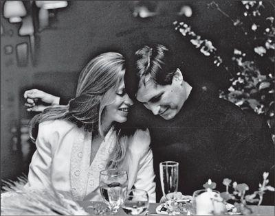
С Лорин Пауэлл, 1991
Laurene Powell
Лорин Пауэлл
By this point, based on his dating history, a matchmaker could have put together a composite sketch of the woman who would be right for Jobs. Smart, yet unpretentious. Tough enough to stand up to him, yet Zen-like enough to rise above turmoil. Well-educated and independent, yet ready to make accommodations for him and a family. Down-to-earth, but with a touch of the ethereal. Savvy enough to know how to manage him, but secure enough to not always need to. And it wouldn’t hurt to be a beautiful, lanky blonde with an easygoing sense of humor who liked organic vegetarian food. In October 1989, after his split with Tina Redse, just such a woman walked into his life.
| ethereal | неземного, эфирного |
К этому моменту по истории его знакомств сваха могла бы составить фоторобот подходящей Джобсу женщины. Умная, но без претензий. Достаточно сильная, чтобы дать ему отпор, но по-дзенски способная подняться над смутой. Образованная и независимая, но готовая подстраиваться под него и семью. Приземлённая, но с оттенком неземного. Сметливая настолько, чтобы знать, как им управлять, и уверенная настолько, чтобы это не всегда требовалось. И не помешало бы быть красивой длинноногой блондинкой с лёгким нравом, любящей органическую вегетарианскую еду. В октябре 1989 года, после разрыва с Тиной Редсе, именно такая женщина вошла в его жизнь.
More specifically, just such a woman walked into his classroom. Jobs had agreed to give one of the “View from the Top” lectures at the Stanford Business School one Thursday evening. Laurene Powell was a new graduate student at the business school, and a guy in her class talked her into going to the lecture. They arrived late and all the seats were taken, so they sat in the aisle. When an usher told them they had to move, Powell took her friend down to the front row and commandeered two of the reserved seats there. Jobs was led to the one next to her when he arrived. “I looked to my right, and there was a beautiful girl there, so we started chatting while I was waiting to be introduced,” Jobs recalled. They bantered a bit, and Laurene joked that she was sitting there because she had won a raffle, and the prize was that he got to take her to dinner. “He was so adorable,” she later said.
| commandeered | захватила, реквизировала |
| bantered | перебрасывались шутками |
Точнее говоря, такая женщина вошла в его аудиторию. Джобс согласился прочитать в Стэнфордской бизнес-школе одну из лекций цикла «Взгляд сверху» — в один из четвергов вечером. Лорин Пауэлл была новой аспиранткой бизнес-школы, и однокурсник уговорил её пойти. Они опоздали, все места были заняты, и сели в проходе. Когда капельдинер велел пересесть, Пауэлл повела друга в первый ряд и захватила два забронированных места. Джобса, когда он пришёл, усадили рядом с ней. «Я взглянул направо — там сидела красивая девушка, и мы разговорились, пока меня не представили», — вспоминал Джобс. Они обменялись шутками, и Лорин пошутила, что сидит здесь, потому что выиграла лотерею, а приз — он отведёт её на ужин. «Он был таким милым», — говорила она позже.
After the speech Jobs hung around on the edge of the stage chatting with students. He watched Powell leave, then come back and stand at the edge of the crowd, then leave again. He bolted out after her, brushing past the dean, who was trying to grab him for a conversation. After catching up with her in the parking lot, he said, “Excuse me, wasn’t there something about a raffle you won, that I’m supposed to take you to dinner?” She laughed. “How about Saturday?” he asked. She agreed and wrote down her number. Jobs headed to his car to drive up to the Thomas Fogarty winery in the Santa Cruz mountains above Woodside, where the NeXT education sales group was holding a dinner. But he suddenly stopped and turned around. “I thought, wow, I’d rather have dinner with her than the education group, so I ran back to her car and said ‘How about dinner tonight?’” She said yes. It was a beautiful fall evening, and they walked into Palo Alto to a funky vegetarian restaurant, St. Michael’s Alley, and ended up staying there for four hours. “We’ve been together ever since,” he said.
| hung around | остался, топтался |
| bolted out | выскочил, рванул |
| brushing past | проскочив мимо |
После лекции Джобс остался у края сцены болтать со студентами. Он видел, как Пауэлл ушла, потом вернулась и встала у толпы, потом ушла снова. Он выскочил следом, проскочив мимо декана, пытавшегося его перехватить. Догнав её на парковке, сказал: «Простите, вы ведь что-то говорили о выигранной лотерее, по которой я должен отвести вас на ужин?» Она рассмеялась. «Как насчёт субботы?» — спросил он. Она согласилась и записала номер. Джобс пошёл к машине, чтобы ехать на винодельню Thomas Fogarty в горах Санта-Круз над Вудсайдом, где ужинала образовательная группа продаж NeXT. Но вдруг остановился и повернул обратно. «Я подумал: ого, да я лучше поужинаю с ней, чем с образовательной группой, — побежал назад к её машине и спросил: „Как насчёт ужина сегодня?“» Она сказала да. Был прекрасный осенний вечер, они пешком дошли до Пало-Альто, в забавный вегетарианский ресторан St. Michael’s Alley, и просидели там четыре часа. «С тех пор мы вместе», — говорил он.
Avie Tevanian was sitting at the winery restaurant waiting with the rest of the NeXT education group. “Steve was sometimes unreliable, but when I talked to him I realized that something special had come up,” he said. As soon as Powell got home, after midnight, she called her close friend Kathryn (Kat) Smith, who was at Berkeley, and left a message on her machine. “You will not believe what just happened to me!” it said. “You will not believe who I met!” Smith called back the next morning and heard the tale. “We had known about Steve, and he was a person of interest to us, because we were business students,” she recalled.
| come up | возникло, случилось |
Ави Теванян ждал с остальной образовательной группой NeXT в ресторане винодельни. «Стив бывал ненадёжен, но, поговорив с ним, я понял: случилось что-то особенное», — говорил он. Вернувшись домой за полночь, Пауэлл позвонила близкой подруге Кэтрин (Кэт) Смит в Беркли и оставила сообщение на автоответчике: «Ты не поверишь, что со мной случилось! Не поверишь, с кем я познакомилась!» Смит перезвонила утром и выслушала историю. «Мы знали о Стиве, он был нам интересен — мы же учились на бизнесе», — вспоминала она.
Andy Hertzfeld and a few others later speculated that Powell had been scheming to meet Jobs. “Laurene is nice, but she can be calculating, and I think she targeted him from the beginning,” Hertzfeld said. “Her college roommate told me that Laurene had magazine covers of Steve and vowed she was going to meet him. If it’s true that Steve was manipulated, there is a fair amount of irony there.” But Powell later insisted that this wasn’t the case. She went only because her friend wanted to go, and she was slightly confused as to who they were going to see. “I knew that Steve Jobs was the speaker, but the face I thought of was that of Bill Gates,” she recalled. “I had them mixed up. This was 1989. He was working at NeXT, and he was not that big of a deal to me. I wasn’t that enthused, but my friend was, so we went.”
| calculating | расчётливая |
| targeted | целилась |
| vowed | поклялась |
Энди Херцфельд и ещё кое-кто позже предполагали, что Пауэлл намеренно подстроила встречу с Джобсом. «Лорин милая, но умеет просчитывать, и, думаю, она целилась в него с самого начала, — говорил Херцфельд. — Её соседка по колледжу рассказывала, что у Лорин были журнальные обложки со Стивом и она поклялась с ним познакомиться. Если Стивом и правда манипулировали, в этом немало иронии». Но Пауэлл настаивала, что всё не так. Она пошла лишь потому, что хотела подруга, и сама немного путалась, кого они идут слушать. «Я знала, что выступает Стив Джобс, но представляла себе лицо Билла Гейтса, — вспоминала она. — Я их путала. Шёл 1989 год, он работал в NeXT и не был для меня большим событием. Я не рвалась, но подруга рвалась — вот и пошли».
“There were only two women in my life that I was truly in love with, Tina and Laurene,” Jobs later said. “I thought I was in love with Joan Baez, but I really just liked her a lot. It was just Tina and then Laurene.”
«По-настоящему в жизни я любил лишь двух женщин — Тину и Лорин, — говорил позже Джобс. — Я думал, что влюблён в Джоан Баэз, но на самом деле она мне просто очень нравилась. Только Тина, а потом Лорин».
Laurene Powell had been born in New Jersey in 1963 and learned to be self-sufficient at an early age. Her father was a Marine Corps pilot who died a hero in a crash in Santa Ana, California; he had been leading a crippled plane in for a landing, and when it hit his plane he kept flying to avoid a residential area rather than ejecting in time to save his life. Her mother’s second marriage turned out to be a horrible situation, but she felt she couldn’t leave because she had no means to support her large family. For ten years Laurene and her three brothers had to suffer in a tense household, keeping a good demeanor while compartmentalizing problems. She did well. “The lesson I learned was clear, that I always wanted to be self-sufficient,” she said. “I took pride in that. My relationship with money is that it’s a tool to be self-sufficient, but it’s not something that is part of who I am.”
| compartmentalizing | раскладывая по отсекам, загоняя внутрь |
Лорин Пауэлл родилась в Нью-Джерси в 1963 году и рано научилась самостоятельности. Отец, пилот морской пехоты, погиб героем в крушении в Санта-Ане, Калифорния: он вёл подбитый самолёт на посадку, а когда тот зацепил его машину, продолжал лететь, уводя её от жилых кварталов, вместо того чтобы вовремя катапультироваться. Второй брак матери оказался кошмаром, но уйти она не могла: содержать большую семью было нечем. Десять лет Лорин с тремя братьями страдали в напряжённом доме, держа лицо и загоняя проблемы внутрь. У неё получалось. «Урок я вынесла ясный: я всегда хотела быть самостоятельной, — говорила она. — Я этим гордилась. Деньги для меня — инструмент самостоятельности, но не часть того, кто я есть».
After graduating from the University of Pennsylvania, she worked at Goldman Sachs as a fixed income trading strategist, dealing with enormous sums of money that she traded for the house account. Jon Corzine, her boss, tried to get her to stay at Goldman, but instead she decided the work was unedifying. “You could be really successful,” she said, “but you’re just contributing to capital formation.” So after three years she quit and went to Florence, Italy, living there for eight months before enrolling in Stanford Business School.
| unedifying | не обогащающая душу |
После Пенсильванского университета она работала в Goldman Sachs стратегом по торговле инструментами с фиксированной доходностью, оперируя огромными суммами со счёта дома. Босс Джон Корзайн уговаривал её остаться, но она решила, что работа не обогащает душу. «Можно быть очень успешной, — говорила она, — но ты лишь помогаешь накоплению капитала». Через три года она ушла и поехала во Флоренцию, прожила там восемь месяцев и поступила в Стэнфордскую бизнес-школу.
After their Thursday night dinner, she invited Jobs over to her Palo Alto apartment on Saturday. Kat Smith drove down from Berkeley and pretended to be her roommate so she could meet him as well. Their relationship became very passionate. “They would kiss and make out,” Smith said. “He was enraptured with her. He would call me on the phone and ask, ‘What do you think, does she like me?’ Here I am in this bizarre position of having this iconic person call me.”
| enraptured | восхищён, упоён |
После четвергового ужина она позвала Джобса в свою пало-альтовскую квартиру в субботу. Кэт Смит приехала из Беркли и притворилась соседкой, чтобы тоже с ним познакомиться. Отношения стали очень страстными. «Они целовались и обнимались, — говорила Смит. — Он был ею упоён. Звонил мне и спрашивал: „Как думаешь, я ей нравлюсь?“ И вот я в странном положении: мне звонит такая икона».
That New Year’s Eve of 1989 the three went to Chez Panisse, the famed Alice Waters restaurant in Berkeley, along with Lisa, then eleven. Something happened at the dinner that caused Jobs and Powell to start arguing. They left separately, and Powell ended up spending the night at Kat Smith’s apartment. At nine the next morning there was a knock at the door, and Smith opened it to find Jobs, standing in the drizzle holding some wildflowers he had picked. “May I come in and see Laurene?” he said. She was still asleep, and he walked into the bedroom. A couple of hours went by, while Smith waited in the living room, unable to go in and get her clothes. Finally, she put a coat on over her nightgown and went to Peet’s Coffee to pick up some food. Jobs did not emerge until after noon. “Kat, can you come here for a minute?” he asked. They all gathered in the bedroom. “As you know, Laurene’s father passed away, and Laurene’s mother isn’t here, and since you’re her best friend, I’m going to ask you the question,” he said. “I’d like to marry Laurene. Will you give your blessing?”
| drizzle | морось, изморось |
В канун нового 1990 года они втроём — с одиннадцатилетней Лизой — пошли в Chez Panisse, знаменитый ресторан Элис Уотерс в Беркли. За ужином что-то произошло, и Джобс с Пауэлл поссорились. Ушли порознь, и Пауэлл ночевала у Кэт Смит. В девять утра в дверь постучали: Смит открыла и увидела Джобса, стоявшего под моросью с пучком сорванных полевых цветов. «Можно войти и увидеть Лорин?» — спросил он. Та ещё спала, и он прошёл в спальню. Прошло пару часов — Смит ждала в гостиной, не имея возможности забрать одежду. Наконец она накинула пальто поверх ночнушки и сходила в Peet’s Coffee за едой. Джобс вышел только после полудня. «Кэт, можно тебя на минутку?» — спросил он. Все собрались в спальне. «Как ты знаешь, отец Лорин умер, её матери здесь нет, а поскольку ты её лучшая подруга, я задам вопрос тебе, — сказал он. — Я хочу жениться на Лорин. Дашь своё благословение?»
Smith clambered onto the bed and thought about it. “Is this okay with you?” she asked Powell. When she nodded yes, Smith announced, “Well, there’s your answer.”
| clambered onto | взобралась на |
Смит взобралась на кровать и задумалась. «Тебя это устраивает?» — спросила она Пауэлл. Та кивнула, и Смит объявила: «Ну вот тебе и ответ».
It was not, however, a definitive answer. Jobs had a way of focusing on something with insane intensity for a while and then, abruptly, turning away his gaze. At work, he would focus on what he wanted to, when he wanted to, and on other matters he would be unresponsive, no matter how hard people tried to get him to engage. In his personal life, he was the same way. At times he and Powell would indulge in public displays of affection that were so intense they embarrassed everyone in their presence, including Kat Smith and Powell’s mother. In the mornings at his Woodside mansion, he would wake Powell up by blasting the Fine Young Cannibals’ “She Drives Me Crazy” on his tape deck. Yet at other times he would ignore her. “Steve would fluctuate between intense focus, where she was the center of the universe, to being coldly distant and focused on work,” said Smith. “He had the power to focus like a laser beam, and when it came across you, you basked in the light of his attention. When it moved to another point of focus, it was very, very dark for you. It was very confusing to Laurene.”
| basked | грелись, купались |
Однако ответ был не окончательным. Джобс умел с безумной интенсивностью сосредотачиваться на чём-то, а потом резко отводить взгляд. На работе он занимался тем, чем хотел и когда хотел, а в остальном был глух, как ни старайся его вовлечь. В личной жизни — так же. То они с Пауэлл так выставляли напоказ нежность, что смущали всех присутствующих, включая Кэт Смит и мать Пауэлл; по утрам в вудсайдском особняке он будил её, врубая на магнитофоне Fine Young Cannibals — «She Drives Me Crazy». А то вдруг её игнорировал. «Стив колебался между предельной сосредоточенностью, когда она была центром вселенной, и холодной отстранённостью с погружением в работу, — говорила Смит. — Он умел фокусироваться, как лазерный луч; когда луч попадал на тебя, ты купался в свете его внимания. Когда он уходил в другую точку, тебе становилось очень, очень темно. Лорин это очень сбивало с толку».
Once she had accepted his marriage proposal on the first day of 1990, he didn’t mention it again for several months. Finally, Smith confronted him while they were sitting on the edge of a sandbox in Palo Alto. What was going on? Jobs replied that he needed to feel sure that Powell could handle the life he lived and the type of person he was. In September she became fed up with waiting and moved out. The following month, he gave her a diamond engagement ring, and she moved back in.
| fed up | сыта по горло |
Приняв 1 января 1990 года его предложение, она несколько месяцев о нём не слышала. Наконец Смит поговорила с ним напрямую, пока они сидели на краю песочницы в Пало-Альто. В чём дело? Джобс ответил, что должен убедиться: Пауэлл выдержит его жизнь и то, какой он человек. В сентябре ей надоело ждать, и она съехала. В следующем месяце он подарил ей кольцо с бриллиантом, и она вернулась.
In December Jobs took Powell to his favorite vacation spot, Kona Village in Hawaii. He had started going there nine years earlier when, stressed out at Apple, he had asked his assistant to pick out a place for him to escape. At first glance, he didn’t like the cluster of sparse thatched-roof bungalows nestled on a beach on the big island of Hawaii. It was a family resort, with communal eating. But within hours he had begun to view it as paradise. There was a simplicity and spare beauty that moved him, and he returned whenever he could. He especially enjoyed being there that December with Powell. Their love had matured. The night before Christmas he again declared, even more formally, that he wanted to marry her. Soon another factor would drive that decision. While in Hawaii, Powell got pregnant. “We know exactly where it happened,” Jobs later said with a laugh.
| stressed out | измотанный, на взводе |
| thatched-roof bungalows | бунгало с соломенными крышами |
| nestled | примостившиеся |
В декабре Джобс повёз Пауэлл в любимое место отдыха — Kona Village на Гавайях. Он начал ездить туда девятью годами ранее, когда, измотанный в Apple, попросил ассистентку подобрать место для побега. Сначала скопление скромных бунгало с соломенными крышами на пляже Большого острова ему не понравилось: семейный курорт с общими трапезами. Но через несколько часов он увидел в нём рай. Простота и скупая красота его тронули, и он возвращался при любой возможности. В тот декабрь с Пауэлл ему было особенно хорошо: их любовь повзрослела. В ночь перед Рождеством он снова, ещё более официально, сказал, что хочет на ней жениться. Вскоре решение подтолкнул и другой фактор: на Гавайях Пауэлл забеременела. «Мы точно знаем, где это произошло», — со смехом говорил позже Джобс.
The Wedding, March 18, 1991
Свадьба, 18 марта 1991 года
Powell’s pregnancy did not completely settle the issue. Jobs again began balking at the idea of marriage, even though he had dramatically proposed to her both at the very beginning and the very end of 1990. Furious, she moved out of his house and back to her apartment. For a while he sulked or ignored the situation. Then he thought he might still be in love with Tina Redse; he sent her roses and tried to convince her to return to him, maybe even get married. He was not sure what he wanted, and he surprised a wide swath of friends and even acquaintances by asking them what he should do. Who was prettier, he would ask, Tina or Laurene? Who did they like better? Who should he marry? In a chapter about this in Mona Simpson’s novel A Regular Guy, the Jobs character “asked more than a hundred people who they thought was more beautiful.” But that was fiction; in reality, it was probably fewer than a hundred.
| balking | упираться, артачиться |
Беременность Пауэлл вопрос не закрыла. Джобс снова заартачился с браком — хотя театрально делал предложение и в самом начале, и в самом конце 1990 года. Взбешённая, она съехала обратно в свою квартиру. Какое-то время он дулся или игнорировал ситуацию. Потом решил, что, возможно, всё ещё любит Тину Редсе: послал ей розы и уговаривал вернуться, а то и выйти за него. Он не знал, чего хочет, и удивлял многих друзей и даже знакомых вопросом, как поступить. Кто красивее — Тина или Лорин? Кто им больше нравится? На ком жениться? В главе об этом в романе Моны Симпсон «Обычный парень» персонаж Джобса «спросил более сотни людей, кто, по их мнению, красивее». Но это вымысел; на самом деле, вероятно, меньше сотни.
He ended up making the right choice. As Redse told friends, she never would have survived if she had gone back to Jobs, nor would their marriage. Even though he would pine about the spiritual nature of his connection to Redse, he had a far more solid relationship with Powell. He liked her, he loved her, he respected her, and he was comfortable with her. He may not have seen her as mystical, but she was a sensible anchor for his life. “He is the luckiest guy to have landed with Laurene, who is smart and can engage him intellectually and can sustain his ups and downs and tempestuous personality,” said Joanna Hoffman. “Because she’s not neurotic, Steve may feel that she is not as mystical as Tina or something. But that’s silly.” Andy Hertzfeld agreed. “Laurene looks a lot like Tina, but she is totally different because she is tougher and armor-plated. That’s why the marriage works.”
| anchor | якорь |
Выбор он в итоге сделал правильный. Как говорила друзьям Редсе, вернись она к Джобсу — не выжила бы, и брак бы не выжил. Пусть он и тосковал о духовной природе связи с Редсе, с Пауэлл отношения были куда прочнее. Она ему нравилась, он её любил, уважал, и ему было с ней спокойно. Мистической он её, может, и не считал, но она была разумным якорем его жизни. «Ему сказочно повезло с Лорин: она умна, может поддерживать его интеллектуально и выдерживать его взлёты, падения и штормовой нрав, — говорила Джоанна Хоффман. — Она не невротична, и Стив, возможно, чувствует, что она не так мистична, как Тина. Но это глупости». Энди Херцфельд соглашался: «Лорин очень похожа на Тину, но совсем другая — крепче, в броне. Поэтому брак и работает».
Jobs understood this as well. Despite his emotional turbulence and occasional meanness, the marriage would turn out to be enduring, marked by loyalty and faithfulness, overcoming the ups and downs and jangling emotional complexities it encountered.
Джобс понимал это и сам. При всей его эмоциональной турбулентности и случайной злости брак оказался прочным — на верности и преданности, — и пережил все взлёты, падения и звенящие эмоциональные сложности.
• • •
Avie Tevanian decided Jobs needed a bachelor’s party. This was not as easy as it sounded. Jobs did not like to party and didn’t have a gang of male buddies. He didn’t even have a best man. So the party turned out to be just Tevanian and Richard Crandall, a computer science professor at Reed who had taken a leave to work at NeXT. Tevanian hired a limo, and when they got to Jobs’s house, Powell answered the door dressed in a suit and wearing a fake moustache, saying that she wanted to come as one of the guys. It was just a joke, and soon the three bachelors, none of them drinkers, were rolling to San Francisco to see if they could pull off their own pale version of a bachelor party.
| pull off | провернуть |
Ави Теванян решил, что Джобсу нужен мальчишник. Сказать легче, чем сделать: Джобс не любил вечеринок, компании приятелей у него не было, и даже шафера не было. Так что на мальчишник собрались лишь Теванян и Ричард Крандалл, профессор информатики из Рида, взявший отпуск ради NeXT. Теванян заказал лимузин, и, когда они приехали к дому Джобса, дверь открыла Пауэлл в костюме и с наклеенными усами, заявив, что хочет пойти «своим парнем». Это была шутка, и вскоре трое холостяков — все непьющие — катили в Сан-Франциско провернуть собственную бледную версию мальчишника.
Tevanian had been unable to get reservations at Greens, the vegetarian restaurant at Fort Mason that Jobs liked, so he booked a very fancy restaurant at a hotel. “I don’t want to eat here,” Jobs announced as soon as the bread was placed on the table. He made them get up and walk out, to the horror of Tevanian, who was not yet used to Jobs’s restaurant manners. He led them to Café Jacqueline in North Beach, the soufflé place that he loved, which was indeed a better choice. Afterward they took the limo across the Golden Gate Bridge to a bar in Sausalito, where all three ordered shots of tequila but only sipped them. “It was not great as bachelor parties go, but it was the best we could come up with for someone like Steve, and nobody else volunteered to do it,” recalled Tevanian. Jobs was appreciative. He decided that he wanted Tevanian to marry his sister Mona Simpson. Though nothing came of it, the thought was a sign of affection.
| shots | рюмки крепкого |
| sipped | пригубили |
В Greens, вегетарианском ресторане у Форт-Мейсона, который любил Джобс, мест не оказалось, и Теванян забронировал очень дорогой ресторан при отеле. «Я не хочу здесь есть», — объявил Джобс, едва на стол подали хлеб. Он заставил всех встать и уйти — к ужасу Теваняна, ещё не привыкшего к ресторанным манерам Джобса. Тот привёл их в Café Jacqueline в Норт-Бич, к любимым суфле, — и это действительно был выбор лучше. Потом на лимузине переехали мост Золотые Ворота в бар в Сосалито, где все трое заказали по рюмке текилы, но лишь пригубили. «Как мальчишник — так себе, но это лучшее, что мы могли придумать для такого, как Стив, а больше никто не вызвался, — вспоминал Теванян. — Джобс был благодарен». И решил, что хочет женить Теваняна на своей сестре Моне Симпсон. Из этого ничего не вышло, но сама мысль была знаком привязанности.
Powell had fair warning of what she was getting into. As she was planning the wedding, the person who was going to do the calligraphy for the invitations came by the house to show them some options. There was no furniture for her to sit on, so she sat on the floor and laid out the samples. Jobs looked for a few minutes, then got up and left the room. They waited for him to come back, but he didn’t. After a while Powell went to find him in his room. “Get rid of her,” he said. “I can’t look at her stuff. It’s shit.”
| fair warning | честное предупреждение |
| calligraphy | каллиграфия |
Пауэлл была честно предупреждена, на что идёт. Пока она планировала свадьбу, к ним зашла каллиграфистка показать варианты приглашений. Сесть ей было некуда, и она расположилась на полу, разложив образцы. Джобс посмотрел пару минут, встал и вышел. Его ждали, но он не вернулся. Через какое-то время Пауэлл нашла его в комнате. «Выпроводи её, — сказал он. — Я не могу смотреть на её работы. Это дерьмо».
On March 18, 1991, Steven Paul Jobs, thirty-six, married Laurene Powell, twenty-seven, at the Ahwahnee Lodge in Yosemite National Park. Built in the 1920s, the Ahwahnee is a sprawling pile of stone, concrete, and timber designed in a style that mixed Art Deco, the Arts and Crafts movement, and the Park Service’s love of huge fireplaces. Its best features are the views. It has floor-to-ceiling windows looking out on Half Dome and Yosemite Falls.
| sprawling | раскинувшийся, разросшийся |
18 марта 1991 года Стивен Пол Джобс, тридцати шести лет, женился на Лорин Пауэлл, двадцати семи, в лодже Ahwahnee в национальном парке Йосемити. Построенный в 1920-х, Ahwahnee — раскинувшаяся громада камня, бетона и дерева в стиле, смешавшем ар-деко, движение искусств и ремёсел и любовь Службы парков к огромным каминам. Лучшее в нём — виды: окна от пола до потолка выходят на Хаф-Доум и Йосемитский водопад.
About fifty people came, including Steve’s father Paul Jobs and sister Mona Simpson. She brought her fiancé, Richard Appel, a lawyer who went on to become a television comedy writer. (As a writer for The Simpsons, he named Homer’s mother after his wife.) Jobs insisted that they all arrive by chartered bus; he wanted to control all aspects of the event.
Приехало около пятидесяти человек, включая отца Стива Пола Джобса и сестру Мону Симпсон. Она привезла жениха Ричарда Эппела, юриста, ставшего потом телевизионным комедийным сценаристом. (Пиша для «Симпсонов», он назвал мать Гомера в честь жены.) Джобс настоял, чтобы все прибыли на заказном автобусе: он хотел контролировать всё в этом событии.
The ceremony was in the solarium, with the snow coming down hard and Glacier Point just visible in the distance. It was conducted by Jobs’s longtime Sōtō Zen teacher, Kobun Chino, who shook a stick, struck a gong, lit incense, and chanted in a mumbling manner that most guests found incomprehensible. “I thought he was drunk,” said Tevanian. He wasn’t. The wedding cake was in the shape of Half Dome, the granite crest at the end of Yosemite Valley, but since it was strictly vegan—devoid of eggs, milk, or any refined products—more than a few of the guests found it inedible. Afterward they all went hiking, and Powell’s three strapping brothers launched a snowball fight, with lots of tackling and roughhousing. “You see, Mona,” Jobs said to his sister, “Laurene is descended from Joe Namath and we’re descended from John Muir.”
| roughhousing | возня, потасовка |
Церемония прошла в солярии, под сильным снегопадом, с едва видимым вдали Глейшер-Пойнтом. Проводил её давний учитель Джобса по дзен школы сото Кобун Чино: потрясал палкой, бил в гонг, возжигал благовония и бубнил настолько невнятно, что большинство гостей ничего не поняли. «Я решил, что он пьян», — сказал Теванян. Он не был. Свадебный торт имел форму Хаф-Доума, гранитного пика в конце Йосемитской долины, но, будучи строго веганским — без яиц, молока и рафинированных продуктов, — для многих оказался несъедобным. Потом все пошли гулять, и трое крепких братьев Пауэлл затеяли битву снежками, с кучей подножек и возни. «Видишь, Мона, — сказал Джобс сестре, — Лорин — потомок Джо Намата, а мы — потомки Джона Мьюира».
A Family Home
Семейный дом
Powell shared her husband’s interest in natural foods. While at business school, she had worked part time at Odwalla, the juice company, where she helped develop the first marketing plan. After marrying Jobs, she felt that it was important to have a career, having learned from her childhood the need to be self-sufficient. So she started her own company, Terravera, that made ready-to-eat organic meals and delivered them to stores throughout northern California.
Пауэлл разделяла интерес мужа к натуральной пище. В бизнес-школе она подрабатывала в соковой компании Odwalla, помогая разработать первый маркетинговый план. Выйдя за Джобса, она считала важным иметь карьеру — детство научило её самостоятельности. Поэтому она основала свою компанию Terravera, делавшую готовые органические блюда и поставлявшую их в магазины по всей северной Калифорнии.
Instead of living in the isolated and rather spooky unfurnished Woodside mansion, the couple moved into a charming and unpretentious house on a corner in a family-friendly neighborhood in old Palo Alto. It was a privileged realm—neighbors would eventually include the visionary venture capitalist John Doerr, Google’s founder Larry Page, and Facebook’s founder Mark Zuckerberg, along with Andy Hertzfeld and Joanna Hoffman—but the homes were not ostentatious, and there were no high hedges or long drives shielding them from view. Instead, houses were nestled on lots next to each other along flat, quiet streets flanked by wide sidewalks. “We wanted to live in a neighborhood where kids could walk to see friends,” Jobs later said.
| unpretentious | непритязательный, скромный |
Вместо уединённого и довольно жутковатого необставленного вудсайдского особняка пара переехала в очаровательный скромный дом на углу, в семейном районе старого Пало-Альто. Место было привилегированное — соседями со временем станут визионер-венчурный капиталист Джон Доэрр, основатель Google Ларри Пейдж, основатель Facebook Марк Цукерберг, а также Энди Херцфельд и Джоанна Хоффман, — но дома не были вычурными, без высоких изгородей и длинных подъездных аллей, прячущих их от глаз. Дома стояли на участках рядом друг с другом, вдоль тихих улиц с широкими тротуарами. «Мы хотели жить в районе, где дети могут пешком ходить к друзьям», — говорил позже Джобс.
The house was not the minimalist and modernist style Jobs would have designed if he had built a home from scratch. Nor was it a large or distinctive mansion that would make people stop and take notice as they drove down his street in Palo Alto. It was built in the 1930s by a local designer named Carr Jones, who specialized in carefully crafted homes in the “storybook style” of English or French country cottages.
Дом не был ни минималистским, ни модернистским — таким Джобс построил бы дом с нуля. Не был он и большим приметным особняком, заставляющим прохожих оборачиваться. Его построил в 1930-х местный проектировщик Карр Джонс, специализировавшийся на тщательно сработанных домах в «сказочном стиле» английских или французских сельских коттеджей.
The two-story house was made of red brick, with exposed wood beams and a shingle roof with curved lines; it evoked a rambling Cotswold cottage, or perhaps a home where a well-to-do Hobbit might have lived. The one Californian touch was a mission-style courtyard framed by the wings of the house. The two-story vaulted-ceiling living room was informal, with a floor of tile and terra-cotta. At one end was a large triangular window leading up to the peak of the ceiling; it had stained glass when Jobs bought it, as if it were a chapel, but he replaced it with clear glass. The other renovation he and Powell made was to expand the kitchen to include a wood-burning pizza oven and room for a long wooden table that would become the family’s primary gathering place. It was supposed to be a four-month renovation, but it took sixteen months because Jobs kept redoing the design. They also bought the small house behind them and razed it to make a backyard, which Powell turned into a beautiful natural garden filled with a profusion of seasonal flowers along with vegetables and herbs.
| razed | снесли |
Двухэтажный дом из красного кирпича, с открытыми деревянными балками и гнутой дранковой крышей, напоминал разросшийся котсуолдский коттедж — или жилище зажиточного хоббита. Единственная калифорнийская черта — внутренний дворик в миссионерском стиле, обрамлённый крыльями дома. Двухсветная гостиная со сводчатым потолком была неформальной, с полом из плитки и терракоты. В одном конце — большое треугольное окно, уходящее к коньку потолка; при покупке в нём был витраж, будто в часовне, но Джобс заменил его прозрачным стеклом. Другая переделка, предпринятая с Пауэлл, — расширение кухни с дровяной печью для пиццы и местом для длинного деревянного стола, ставшего главным местом сбора семьи. Ремонт планировался четырёхмесячный, но занял шестнадцать: Джобс без конца переделывал проект. Они купили и маленький дом позади, снесли его под задний двор, и Пауэлл разбила там красивый природный сад — обилие сезонных цветов, овощи и травы.
Jobs became fascinated by the way Carr Jones relied on old material, including used bricks and wood from telephone poles, to provide a simple and sturdy structure. The beams in the kitchen had been used to make the molds for the concrete foundations of the Golden Gate Bridge, which was under construction when the house was built. “He was a careful craftsman who was self-taught,” Jobs said as he pointed out each of the details. “He cared more about being inventive than about making money, and he never got rich. He never left California. His ideas came from reading books in the library and Architectural Digest.”
Джобса увлекло, как Карр Джонс использовал старые материалы — бывший в употреблении кирпич и дерево от телефонных столбов — ради простой и прочной конструкции. Балки на кухне служили опалубкой для бетонных фундаментов моста Золотые Ворота, строившегося, когда возводился дом. «Он был аккуратным мастером-самоучкой, — говорил Джобс, показывая каждую деталь. — Изобретательность значила для него больше денег, и он так и не разбогател. Никогда не покидал Калифорнию. Идеи черпал из книг библиотеки и Architectural Digest».
Jobs had never furnished his Woodside house beyond a few bare essentials: a chest of drawers and a mattress in his bedroom, a card table and some folding chairs in what would have been a dining room. He wanted around him only things that he could admire, and that made it hard simply to go out and buy a lot of furniture. Now that he was living in a normal neighborhood home with a wife and soon a child, he had to make some concessions to necessity. But it was hard. They got beds, dressers, and a music system for the living room, but items like sofas took longer. “We spoke about furniture in theory for eight years,” recalled Powell. “We spent a lot of time asking ourselves, ‘What is the purpose of a sofa?’” Buying appliances was also a philosophical task, not just an impulse purchase. A few years later, Jobs described to Wired the process that went into getting a new washing machine:
| bare essentials | самое необходимое |
| chest of drawers | комод |
Вудсайдский дом Джобс так и не обставил дальше самого необходимого: комод и матрас в спальне, карточный стол и пара складных стульев в том, что могло бы быть столовой. Он хотел окружать себя лишь тем, чем можно восхищаться, а потому просто пойти и накупить мебели было трудно. Теперь, живя в обычном семейном доме с женой и будущим ребёнком, он был вынужден уступать необходимости. Но давалось это тяжело. Кровати, комоды и музыкальную систему для гостиной купили, а вот с диванами тянули. «Мы восемь лет говорили о мебели в теории, — вспоминала Пауэлл. — Много времени потратили на вопрос: „Каково назначение дивана?“» Покупка техники тоже была философской задачей, а не импульсом. Несколько лет спустя Джобс описывал Wired, как выбирал стиральную машину:
It turns out that the Americans make washers and dryers all wrong. The Europeans make them much better—but they take twice as long to do clothes! It turns out that they wash them with about a quarter as much water and your clothes end up with a lot less detergent on them. Most important, they don’t trash your clothes. They use a lot less soap, a lot less water, but they come out much cleaner, much softer, and they last a lot longer. We spent some time in our family talking about what’s the trade-off we want to make. We ended up talking a lot about design, but also about the values of our family. Did we care most about getting our wash done in an hour versus an hour and a half? Or did we care most about our clothes feeling really soft and lasting longer? Did we care about using a quarter of the water? We spent about two weeks talking about this every night at the dinner table.
| trade-off | компромисс, размен |
| detergent | моющее средство, порошок |
| trash | портить, убивать |
Оказалось, американцы делают стиральные и сушильные машины неправильно. Европейцы делают их куда лучше — но стирают вдвое дольше! Оказалось, они используют примерно четверть воды, и на одежде остаётся куда меньше порошка. А главное, они не убивают одежду. Мыла меньше, воды меньше, а вещи выходят чище, мягче и служат дольше. Мы всей семьёй обсуждали, на какой компромисс пойти. В итоге много говорили о дизайне, но и о семейных ценностях. Что нам важнее — постирать за час или за полтора? Или чтобы вещи были мягкими и носились дольше? Или тратить четверть воды? Недели две мы говорили об этом каждый вечер за ужином.
They ended up getting a Miele washer and dryer, made in Germany. “I got more thrill out of them than I have out of any piece of high tech in years,” Jobs said.
В итоге взяли стиральную и сушильную машины Miele, немецкого производства. «От них я получил больше восторга, чем от любой высокотехнологичной штуки за многие годы», — говорил Джобс.
The one piece of art that Jobs bought for the vaulted-ceiling living room was an Ansel Adams print of the winter sunrise in the Sierra Nevada taken from Lone Pine, California. Adams had made the huge mural print for his daughter, who later sold it. At one point Jobs’s housekeeper wiped it with a wet cloth, and Jobs tracked down a person who had worked with Adams to come to the house, strip it down a layer, and restore it.
Единственное произведение искусства, купленное Джобсом для гостиной со сводчатым потолком, — отпечаток Ансела Адамса с зимним рассветом в Сьерра-Неваде, снятым у Лоун-Пайн, Калифорния. Огромный настенный отпечаток Адамс сделал для дочери, позже продавшей его. Однажды домработница Джобса протёрла снимок мокрой тряпкой, и Джобс разыскал человека, работавшего с Адамсом, чтобы тот приехал, снял слой и восстановил работу.
The house was so unassuming that Bill Gates was somewhat baffled when he visited with his wife. “Do all of you live here?” asked Gates, who was then in the process of building a 66,000-square-foot mansion near Seattle. Even when he had his second coming at Apple and was a world-famous billionaire, Jobs had no security guards or live-in servants, and he even kept the back door unlocked during the day.
Дом был так скромен, что Билл Гейтс, приехав с женой, слегка опешил. «Вы все здесь живёте?» — спросил Гейтс, строивший тогда близ Сиэтла особняк на 66 000 квадратных футов. Даже во второе пришествие в Apple, будучи всемирно известным миллиардером, Джобс не держал ни охраны, ни прислуги и даже днём не запирал заднюю дверь.
His only security problem came, sadly and strangely, from Burrell Smith, the mop-headed, cherubic Macintosh software engineer who had been Andy Hertzfeld’s sidekick. After leaving Apple, Smith descended into schizophrenia. He lived in a house down the street from Hertzfeld, and as his disorder progressed he began wandering the streets naked, at other times smashing the windows of cars and churches. He was put on strong medication, but it proved difficult to calibrate. At one point when his demons returned, he began going over to the Jobs house in the evenings, throwing rocks through the windows, leaving rambling letters, and once tossing a firecracker into the house. He was arrested, but the case was dropped when he went for more treatment. “Burrell was so funny and naïve, and then one April day he suddenly snapped,” Jobs recalled. “It was the weirdest, saddest thing.”
| snapped | сломался, сорвался |
Единственная проблема с безопасностью пришла — грустно и странно — от Баррелла Смита, кудлатого херувимоподобного программиста Macintosh, бывшего подручным Энди Херцфельда. Покинув Apple, Смит погрузился в шизофрению. Он жил в доме неподалёку от Херцфельда и по мере развития болезни то бродил по улицам нагим, то бил окна машин и церквей. Ему назначили сильные препараты, но дозу было трудно подобрать. Однажды, когда демоны вернулись, он начал по вечерам ходить к дому Джобсов, бросать камни в окна, оставлять бессвязные письма, а раз швырнул в дом петарду. Его арестовали, но дело закрыли, когда он снова лёг лечиться. «Баррелл был таким смешным и наивным, а потом в один апрельский день вдруг сломался, — вспоминал Джобс. — Это было самое странное и печальное».
Jobs was sympathetic, and often asked Hertzfeld what more he could do to help. At one point Smith was thrown in jail and refused to identify himself. When Hertzfeld found out, three days later, he called Jobs and asked for assistance in getting him released. Jobs did help, but he surprised Hertzfeld with a question: “If something similar happened to me, would you take as good care of me as you do Burrell?”
Джобс сочувствовал и часто спрашивал Херцфельда, чем ещё можно помочь. Однажды Смита посадили в тюрьму, а он отказывался назваться. Узнав об этом три дня спустя, Херцфельд позвонил Джобсу с просьбой помочь освободить его. Джобс помог, но удивил вопросом: «Случись подобное со мной, ты заботился бы обо мне так же хорошо, как о Баррелле?»
Jobs kept his mansion in Woodside, about ten miles up into the mountains from Palo Alto. He wanted to tear down the fourteen-bedroom 1925 Spanish colonial revival, and he had plans drawn up to replace it with an extremely simple, Japanese-inspired modernist home one-third the size. But for more than twenty years he engaged in a slow-moving series of court battles with preservationists who wanted the crumbling original house to be saved. (In 2011 he finally got permission to raze the house, but by then he had no desire to build a second home.)
Особняк в Вудсайде, милях в десяти в горы от Пало-Альто, Джобс сохранил. Он хотел снести четырнадцатикомнатное здание 1925 года в испанском колониальном стиле и уже заказал проект замены — предельно простого модернистского дома в японском духе, втрое меньшего. Но больше двадцати лет он вёл затяжную череду судов с борцами за сохранение наследия, желавшими спасти разрушающийся оригинал. (В 2011 году он наконец получил разрешение на снос, но к тому времени уже не хотел строить второй дом.)
On occasion Jobs would use the semi-abandoned Woodside home, especially its swimming pool, for family parties. When Bill Clinton was president, he and Hillary Clinton stayed in the 1950s ranch house on the property on their visits to their daughter, who was at Stanford. Since both the main house and ranch house were unfurnished, Powell would call furniture and art dealers when the Clintons were coming and pay them to furnish the houses temporarily. Once, shortly after the Monica Lewinsky flurry broke, Powell was making a final inspection of the furnishings and noticed that one of the paintings was missing. Worried, she asked the advance team and Secret Service what had happened. One of them pulled her aside and explained that it was a painting of a dress on a hanger, and given the issue of the blue dress in the Lewinsky matter they had decided to hide it. (During one of his late-night phone conversations with Jobs, Clinton asked how he should handle the Lewinsky issue. “I don’t know if you did it, but if so, you’ve got to tell the country,” Jobs told the president. There was silence on the other end of the line.)
Изредка Джобс использовал полузаброшенный вудсайдский дом — особенно бассейн — для семейных праздников. Когда Билл Клинтон был президентом, он с Хиллари останавливался в ранчо-доме 1950-х на участке, навещая дочь, учившуюся в Стэнфорде. Поскольку и главный дом, и ранчо были необставлены, Пауэлл перед приездом Клинтонов звонила мебельным и антикварным дилерам и платила за временную обстановку. Однажды, вскоре после шумихи с Моникой Левински, Пауэлл при финальном осмотре заметила, что одной картины не хватает. Встревоженная, она спросила у протокольной команды и Секретной службы, в чём дело. Кто-то отвёл её в сторону и объяснил: на картине — платье на вешалке, и, учитывая историю с синим платьем в деле Левински, картину решили спрятать. (В одном из ночных телефонных разговоров с Джобсом Клинтон спросил, как ему справиться с делом Левински. «Не знаю, делали вы это или нет, но если да — вы должны сказать стране», — ответил президенту Джобс. На другом конце провода повисло молчание.)
Lisa Moves In
Лиза переезжает
In the middle of Lisa’s eighth-grade year, her teachers called Jobs. There were serious problems, and it was probably best for her to move out of her mother’s house. So Jobs went on a walk with Lisa, asked about the situation, and offered to let her move in with him. She was a mature girl, just turning fourteen, and she thought about it for two days. Then she said yes. She already knew which room she wanted: the one right next to her father’s. When she was there once, with no one home, she had tested it out by lying down on the bare floor.
В середине восьмого класса Лизы её учителя позвонили Джобсу. Проблемы серьёзные, и лучше бы ей съехать из дома матери. Джобс сходил с Лизой на прогулку, расспросил о ситуации и предложил переехать к нему. Она была зрелой девочкой — ей как раз исполнялось четырнадцать — и думала два дня. Потом согласилась. И уже знала, какую комнату хочет: рядом с отцовской. Однажды, когда никого не было, она проверила её, полежав на голом полу.
It was a tough period. Chrisann Brennan would sometimes walk over from her own house a few blocks away and yell at them from the yard. When I asked her recently about her behavior and the allegations that led to Lisa’s moving out of her house, she said that she had still not been able to process in her own mind what occurred during that period. But then she wrote me a long email that she said would help explain the situation:
Период был тяжёлым. Крисэнн Бреннан порой приходила из своего дома в паре кварталов и кричала на них со двора. Когда я недавно спросила её о её поведении и обстоятельствах, приведших к переезду Лизы, она сказала, что до сих пор не переварила в уме случившееся. Но потом написала мне длинное письмо, которое, по её словам, поможет объяснить ситуацию:
Do you know how Steve was able to get the city of Woodside to allow him to tear his Woodside home down? There was a community of people who wanted to preserve his Woodside house due to its historical value, but Steve wanted to tear it down and build a home with an orchard. Steve let that house fall into so much disrepair and decay over a number of years that there was no way to save it. The strategy he used to get what he wanted was to simply follow the line of least involvement and resistance. So by his doing nothing on the house, and maybe even leaving the windows open for years, the house fell apart. Brilliant, no? . . . In a similar way did Steve work to undermine my effectiveness AND my well being at the time when Lisa was 13 and 14 to get her to move into his house. He started with one strategy but then it moved to another easier one that was even more destructive to me and more problematic for Lisa. It may not have been of the greatest integrity, but he got what he wanted.
| disrepair | запустение |
| orchard | фруктовый сад |
| undermine | подрывать |
Знаете, как Стив добился от властей Вудсайда разрешения снести свой дом? Было сообщество людей, хотевших сохранить здание из-за исторической ценности, но Стив хотел его снести и построить дом с фруктовым садом. Стив за несколько лет довёл дом до такого запустения и разрухи, что спасти его стало невозможно. Его стратегия добиваться желаемого — просто следовать линии наименьшего участия и сопротивления. Так что, ничего не делая с домом и, возможно, годами оставляя окна открытыми, он довёл его до распада. Гениально, правда?.. Похожим образом Стив подрывал мою эффективность И моё благополучие, когда Лизе было 13 и 14, чтобы заставить её переехать к нему. Начал с одной стратегии, потом перешёл к другой, попроще, но ещё более разрушительной для меня и проблемной для Лизы. Возможно, честности это не высшей пробы, но он добился своего.
Lisa lived with Jobs and Powell for all four of her years at Palo Alto High School, and she began using the name Lisa Brennan-Jobs. He tried to be a good father, but there were times when he was cold and distant. When Lisa felt she had to escape, she would seek refuge with a friendly family who lived nearby. Powell tried to be supportive, and she was the one who attended most of Lisa’s school events.
Все четыре года в старшей школе Пало-Альто Лиза прожила с Джобсом и Пауэлл и стала использовать имя Лиза Бреннан-Джобс. Он старался быть хорошим отцом, но случались периоды холодности и отстранённости. Когда Лизе нужно было сбежать, она находила приют у дружелюбной семьи по соседству. Пауэлл старалась поддерживать, и именно она ходила на большинство школьных мероприятий Лизы.
By the time Lisa was a senior, she seemed to be flourishing. She joined the school newspaper, The Campanile, and became the coeditor. Together with her classmate Ben Hewlett, grandson of the man who gave her father his first job, she exposed secret raises that the school board had given to administrators. When it came time to go to college, she knew she wanted to go east. She applied to Harvard—forging her father’s signature on the application because he was out of town—and was accepted for the class entering in 1996.
| forging | подделав |
К выпускному классу Лиза, казалось, расцвела. Она пришла в школьную газету The Campanile и стала её соредактором. Вместе с одноклассником Беном Хьюлеттом, внуком человека, давшего её отцу первую работу, она разоблачила тайные прибавки, которые школьный совет выдавал администраторам. Когда пришло время поступать, она знала, что хочет на восток. Подала в Гарвард — подделав подпись отца, поскольку тот был в отъезде, — и была принята на курс 1996 года.
At Harvard Lisa worked on the college newspaper, The Crimson, and then the literary magazine, The Advocate. After breaking up with her boyfriend, she took a year abroad at King’s College, London. Her relationship with her father remained tumultuous throughout her college years. When she would come home, fights over small things—what was being served for dinner, whether she was paying enough attention to her half-siblings—would blow up, and they would not speak to each other for weeks and sometimes months. The arguments occasionally got so bad that Jobs would stop supporting her, and she would borrow money from Andy Hertzfeld or others. Hertzfeld at one point lent Lisa $20,000 when she thought that her father was not going to pay her tuition. “He was mad at me for making the loan,” Hertzfeld recalled, “but he called early the next morning and had his accountant wire me the money.” Jobs did not go to Lisa’s Harvard graduation in 2000. He said, “She didn’t even invite me.”
| tumultuous | бурный |
| tuition | плата за обучение |
В Гарварде Лиза работала в студенческой газете The Crimson, потом в литературном журнале The Advocate. Расставшись с бойфрендом, год провела за границей, в лондонском Королевском колледже. Отношения с отцом все студенческие годы оставались бурными. Приезжая домой, она ссорилась с ним из-за мелочей — что подают на ужин, достаточно ли внимания она уделяет сводным брату и сёстрам, — и они не разговаривали неделями, а то и месяцами. Порой ссоры заходили так далеко, что Джобс прекращал её поддерживать, и она занимала у Энди Херцфельда и других. Однажды Херцфельд дал Лизе 20 000 долларов, когда та решила, что отец не заплатит за учёбу. «Он злился на меня за этот заём, — вспоминал Херцфельд, — но рано утром позвонил и велел бухгалтеру перевести мне деньги». На выпускной Лизы в Гарварде в 2000 году Джобс не приехал. «Она меня даже не пригласила», — сказал он.
There were, however, some nice times during those years, including one summer when Lisa came back home and performed at a benefit concert for the Electronic Frontier Foundation, an advocacy group that supports access to technology. The concert took place at the Fillmore Auditorium in San Francisco, which had been made famous by the Grateful Dead, Jefferson Airplane, and Jimi Hendrix. She sang Tracy Chapman’s anthem “Talkin’ bout a Revolution” (“Poor people are gonna rise up / And get their share”) as her father stood in the back cradling his one-year-old daughter, Erin.
| benefit concert | благотворительный концерт |
| advocacy group | правозащитная группа |
| cradling | баюкая |
Бывали в те годы и хорошие моменты. Одним летом Лиза приехала домой и выступила на благотворительном концерте Фонда электронных рубежей, отстаивающего доступ к технологиям. Концерт прошёл в сан-францисском зале Fillmore Auditorium, прославленном Grateful Dead, Jefferson Airplane и Джими Хендриксом. Она пела гимн Трейси Чепмен «Talkin’ bout a Revolution» («Бедняки поднимутся и получат своё»), а отец стоял в глубине, баюкая годовалую дочь Эрин.
Jobs’s ups and downs with Lisa continued after she moved to Manhattan as a freelance writer. Their problems were exacerbated because of Jobs’s frustrations with Chrisann. He had bought a $700,000 house for Chrisann to use and put it in Lisa’s name, but Chrisann convinced her to sign it over and then sold it, using the money to travel with a spiritual advisor and to live in Paris. Once the money ran out, she returned to San Francisco and became an artist creating “light paintings” and Buddhist mandalas. “I am a ‘Connector’ and a visionary contributor to the future of evolving humanity and the ascended Earth,” she said on her website (which Hertzfeld maintained for her). “I experience the forms, color, and sound frequencies of sacred vibration as I create and live with the paintings.” When Chrisann needed money for a bad sinus infection and dental problem, Jobs refused to give it to her, causing Lisa again to not speak to him for a few years. And thus the pattern would continue.
| exacerbated | усугублялись |
| sign it over | переписать на другого |
Взлёты и падения отношений с Лизой продолжились после её переезда на Манхэттен, где она стала фриланс-писателем. Проблемы усугубляло раздражение Джобса на Крисэнн. Он купил для неё дом за 700 000 долларов, оформив его на Лизу, но Крисэнн уговорила дочь переписать дом на неё, продала его, а на деньги путешествовала с духовным наставником и жила в Париже. Когда деньги кончились, она вернулась в Сан-Франциско и стала художницей, создающей «световые картины» и буддийские мандалы. «Я „Связующая“ и визионерский вкладчик в будущее эволюционирующего человечества и вознесённой Земли», — писала она на сайте (который поддерживал для неё Херцфельд). «Я переживаю формы, цвет и звуковые частоты священной вибрации, создавая картины и живя с ними». Когда Крисэнн понадобились деньги на тяжёлый гайморит и лечение зубов, Джобс отказал, из-за чего Лиза снова не разговаривала с ним несколько лет. И так по кругу.
Mona Simpson used all of this, plus her imagination, as a springboard for her third novel, A Regular Guy, published in 1996. The book’s title character is based on Jobs, and to some extent it adheres to reality: It depicts Jobs’s quiet generosity to, and purchase of a special car for, a brilliant friend who had degenerative bone disease, and it accurately describes many unflattering aspects of his relationship with Lisa, including his original denial of paternity. But other parts are purely fiction; Chrisann had taught Lisa at a very early age how to drive, for example, but the book’s scene of “Jane” driving a truck across the mountains alone at age five to find her father of course never happened. In addition, there are little details in the novel that, in journalist parlance, are too good to check, such as the head-snapping description of the character based on Jobs in the very first sentence: “He was a man too busy to flush toilets.”
| springboard | трамплин |
| too good to check | слишком хороши, чтобы проверять |
Всё это плюс воображение стало для Моны Симпсон трамплином третьего романа — «Обычный парень», вышедшего в 1996 году. Его главный герой списан с Джобса и отчасти придерживается реальности: описаны тихая щедрость Джобса к блестящему другу с дегенеративной болезнью костей, которому он купил специальную машину, и точно переданы многие нелестные стороны его отношений с Лизой, включая первоначальное отрицание отцовства. Но остальное — чистый вымысел: Крисэнн, например, очень рано научила Лизу водить, но сцена, где «Джейн» в пять лет одна ведёт грузовик через горы на поиски отца, конечно, не случалась. Есть в романе и детали, которые, говоря журналистским языком, «слишком хороши, чтобы проверять», — например, сногсшибательное описание персонажа-Джобса в первой же фразе: «Он был человеком, слишком занятым, чтобы смывать за собой в туалете».
On the surface, the novel’s fictional portrayal of Jobs seems harsh. Simpson describes her main character as unable “to see any need to pander to the wishes or whims of other people.” His hygiene is also as dubious as that of the real Jobs. “He didn’t believe in deodorant and often professed that with a proper diet and the peppermint castile soap, you would neither perspire nor smell.” But the novel is lyrical and intricate on many levels, and by the end there is a fuller picture of a man who loses control of the great company he had founded and learns to appreciate the daughter he had abandoned. The final scene is of him dancing with his daughter.
| pander | потакать |
На первый взгляд вымышленный портрет Джобса в романе жёсток. Симпсон описывает героя как неспособного «увидеть необходимость потакать желаниям и капризам других людей». Гигиена у него столь же сомнительна, как у настоящего Джобса: «Он не верил в дезодорант и часто заявлял, что при правильной диете и мятном кастильском мыле ни потеешь, ни пахнешь». Но роман многослоен, лиричен и затейлив, и к финалу складывается полная картина человека, теряющего контроль над основанной им великой компанией и учащегося ценить брошенную дочь. Последняя сцена — его танец с дочерью.
Jobs later said that he never read the novel. “I heard it was about me,” he told me, “and if it was about me, I would have gotten really pissed off, and I didn’t want to get pissed at my sister, so I didn’t read it.” However, he told the New York Times a few months after the book appeared that he had read it and saw the reflections of himself in the main character. “About 25% of it is totally me, right down to the mannerisms,” he told the reporter, Steve Lohr. “And I’m certainly not telling you which 25%.” His wife said that, in fact, Jobs glanced at the book and asked her to read it for him to see what he should make of it.
| mannerisms | манеры, привычки |
Позже Джобс говорил, что роман не читал. «Я слышал, что он обо мне, — сказал он мне, — а если обо мне, я бы страшно разозлился, но злиться на сестру не хотел, вот и не читал». Однако через несколько месяцев после выхода книги он сказал New York Times, что прочёл её и увидел в герое себя. «Примерно на 25% это полностью я, вплоть до манер, — сказал он репортёру Стиву Лору. — И я, разумеется, не скажу, на какие 25%». Жена говорила, что на самом деле Джобс заглянул в книгу и попросил её прочитать за него, чтобы понять, как к ней относиться.
Simpson sent the manuscript to Lisa before it was published, but at first she didn’t read more than the opening. “In the first few pages, I was confronted with my family, my anecdotes, my things, my thoughts, myself in the character Jane,” she noted. “And sandwiched between the truths was invention—lies to me, made more evident because of their dangerous proximity to the truth.” Lisa was wounded, and she wrote a piece for the Harvard Advocate explaining why. Her first draft was very bitter, then she toned it down a bit before she published it. She felt violated by Simpson’s friendship. “I didn’t know, for those six years, that Mona was collecting,” she wrote. “I didn’t know that as I sought her consolations and took her advice, she, too, was taking.” Eventually Lisa reconciled with Simpson. They went out to a coffee shop to discuss the book, and Lisa told her that she hadn’t been able to finish it. Simpson told her she would like the ending. Over the years Lisa had an on-and-off relationship with Simpson, but it would be closer in some ways than the one she had with her father.
| sandwiched between | зажат между |
| consolations | утешения |
Рукопись Симпсон прислала Лизе до публикации, но та сперва не прочла дальше первых страниц. «На первых же страницах я столкнулась со своей семьёй, своими историями, вещами, мыслями — с собой в персонаже Джейн, — отмечала она. — А между правдами был зажат вымысел — ложь мне, тем более заметная из-за опасной близости к правде». Лиза была задета и написала для гарвардского Advocate объяснение. Первый черновик был очень горьким, перед публикацией она его смягчила. Она чувствовала себя преданной дружбой Симпсон. «Я не знала все те шесть лет, что Мона коллекционирует, — писала она. — Не знала, что, ища у неё утешения и совета, я отдавала, пока она брала». В конце концов Лиза помирилась с Симпсон. Они пошли в кофейню обсуждать книгу, и Лиза сказала, что не смогла дочитать. Симпсон ответила, что финал ей понравится. Годы шли, отношения с Симпсон у Лизы были то ближе, то дальше, но в чём-то теплее, чем с отцом.
Children
Дети
When Powell gave birth in 1991, a few months after her wedding to Jobs, their child was known for two weeks as “baby boy Jobs,” because settling on a name was proving only slightly less difficult than choosing a washing machine. Finally, they named him Reed Paul Jobs. His middle name was that of Jobs’s father, and his first name (both Jobs and Powell insist) was chosen because it sounded good rather than because it was the name of Jobs’s college.
Когда в 1991 году, через несколько месяцев после свадьбы, Пауэлл родила, ребёнок две недели значился как «младенец Джобс»: выбор имени оказался ненамного проще выбора стиральной машины. Наконец его назвали Рид Пол Джобс. Второе имя — в честь отца Джобса, а первое (и Джобс, и Пауэлл настаивают) выбрали, потому что оно хорошо звучит, а не потому, что так назывался колледж Джобса.
Reed turned out to be like his father in many ways: incisive and smart, with intense eyes and a mesmerizing charm. But unlike his father, he had sweet manners and a self-effacing grace. He was creative—as a kid he liked to dress in costume and stay in character—and also a great student, interested in science. He could replicate his father’s stare, but he was demonstrably affectionate and seemed not to have an ounce of cruelty in his nature.
| incisive | проницательный |
| self-effacing | неброский, скромный |
Рид во многом вышел в отца: проницательный и умный, с напряжённым взглядом и гипнотическим обаянием. Но, в отличие от отца, с мягкими манерами и неброской грацией. Он был творческим — в детстве любил наряжаться и не выходить из роли — и отличным учеником с интересом к науке. Мог воспроизвести отцовский взгляд, но был очевидно ласков и, казалось, не имел в натуре ни грана жестокости.
Erin Siena Jobs was born in 1995. She was a little quieter and sometimes suffered from not getting much of her father’s attention. She picked up her father’s interest in design and architecture, but she also learned to keep a bit of an emotional distance, so as not to be hurt by his detachment.
Эрин Сиена Джобс родилась в 1995 году. Она была потише и порой страдала от недостатка отцовского внимания. Интерес к дизайну и архитектуре она унаследовала от отца, но научилась и держать эмоциональную дистанцию, чтобы не раниться о его отстранённость.
The youngest child, Eve, was born in 1998, and she turned into a strong-willed, funny firecracker who, neither needy nor intimidated, knew how to handle her father, negotiate with him (and sometimes win), and even make fun of him. Her father joked that she’s the one who will run Apple someday, if she doesn’t become president of the United States.
| firecracker | зажигалка; о бойкой девчонке |
Младшая, Ив, родилась в 1998 году и выросла волевой весёлой хохотушкой, которая — ни нуждаясь в отце, ни боясь его — умела с ним обращаться, торговаться (иногда выигрывая) и даже подшучивать над ним. Отец шутил, что именно она когда-нибудь возглавит Apple — если не станет президентом США.
Jobs developed a strong relationship with Reed, but with his daughters he was more distant. As he would with others, he would occasionally focus on them, but just as often would completely ignore them when he had other things on his mind. “He focuses on his work, and at times he has not been there for the girls,” Powell said. At one point Jobs marveled to his wife at how well their kids were turning out, “especially since we’re not always there for them.” This amused, and slightly annoyed, Powell, because she had given up her career when Reed turned two and she decided she wanted to have more children.
С Ридом у Джобса сложились крепкие отношения, с дочерьми он был дальше. Как и с другими, он то сосредотачивался на них, то полностью игнорировал, когда голова была занята. «Он погружён в работу, и порой его не было рядом с девочками», — говорила Пауэлл. Однажды Джобс заметил жене, как хорошо выходят их дети, «особенно учитывая, что мы не всегда рядом». Пауэлл это позабавило и слегка задело: она бросила карьеру, когда Риду исполнилось два и она решила родить ещё детей.
In 1995 Oracle’s CEO Larry Ellison threw a fortieth-birthday party for Jobs filled with tech stars and moguls. Ellison had become a close friend, and he would often take the Jobs family out on one of his many luxurious yachts. Reed started referring to him as “our rich friend,” which was amusing evidence of how his father refrained from ostentatious displays of wealth. The lesson Jobs learned from his Buddhist days was that material possessions often cluttered life rather than enriched it. “Every other CEO I know has a security detail,” he said. “They’ve even got them at their homes. It’s a nutso way to live. We just decided that’s not how we wanted to raise our kids.”
| moguls | магнаты |
| security detail | охрана |
| nutso | чокнутый, дурной |
В 1995 году CEO Oracle Ларри Эллисон устроил Джобсу сорокалетие в кругу технозвёзд и магнатов. Эллисон стал близким другом и часто катал семью Джобса на одной из своих роскошных яхт. Рид начал звать его «наш богатый друг» — забавное свидетельство того, как отец избегал показного богатства. Урок, вынесенный Джобсом из буддийских лет: материальные вещи чаще захламляют жизнь, чем обогащают. «У каждого знакомого CEO есть охрана, — говорил он. — Даже дома. Это дурдом. Мы просто решили, что не так хотим растить детей».
Jeffrey Katzenberg
Джеффри Катценберг
“It’s kind of fun to do the impossible,” Walt Disney once said. That was the type of attitude that appealed to Jobs. He admired Disney’s obsession with detail and design, and he felt that there was a natural fit between Pixar and the movie studio that Disney had founded.
«Делать невозможное — это даже забавно», — сказал однажды Уолт Дисней. Именно такой настрой нравился Джобсу. Он восхищался одержимостью Disney деталями и дизайном и чувствовал естественную совместимость Pixar и студии, основанной Диснеем.
The Walt Disney Company had licensed Pixar’s Computer Animation Production System, and that made it the largest customer for Pixar’s computers. One day Jeffrey Katzenberg, the head of Disney’s film division, invited Jobs down to the Burbank studios to see the technology in operation. As the Disney folks were showing him around, Jobs turned to Katzenberg and asked, “Is Disney happy with Pixar?” With great exuberance, Katzenberg answered yes. Then Jobs asked, “Do you think we at Pixar are happy with Disney?” Katzenberg said he assumed so. “No, we’re not,” Jobs said. “We want to do a film with you. That would make us happy.”
| exuberance | воодушевление |
Walt Disney Company лицензировала у Pixar систему компьютерного анимационного производства и стала крупнейшим покупателем её компьютеров. Однажды глава киноотдела Disney Джеффри Катценберг позвал Джобса на бербанкскую студию посмотреть технологию в работе. Пока ему всё показывали, Джобс повернулся к Катценбергу: «Disney довольна Pixar?» С большим воодушевлением тот ответил да. Тогда Джобс спросил: «А вы думаете, мы в Pixar довольны Disney?» Катценберг предположил, что да. «Нет, — сказал Джобс. — Мы хотим сделать с вами фильм. Вот это сделало бы нас счастливыми».
Katzenberg was willing. He admired John Lasseter’s animated shorts and had tried unsuccessfully to lure him back to Disney. So Katzenberg invited the Pixar team down to discuss partnering on a film. When Catmull, Jobs, and Lasseter got settled at the conference table, Katzenberg was forthright. “John, since you won’t come work for me,” he said, looking at Lasseter, “I’m going to make it work this way.”
| forthright | прямолинеен |
Катценберг был не против. Он восхищался короткометражками Джона Лассетера и безуспешно пытался переманить его обратно в Disney. Поэтому он позвал команду Pixar обсудить партнёрство в фильме. Когда Катмулл, Джобс и Лассетер уселись за стол, Катценберг был прямолинеен: «Джон, раз ты не хочешь работать на меня, — сказал он, глядя на Лассетера, — я добьюсь этого иначе».
Just as the Disney company shared some traits with Pixar, so Katzenberg shared some with Jobs. Both were charming when they wanted to be, and aggressive (or worse) when it suited their moods or interests. Alvy Ray Smith, on the verge of quitting Pixar, was at the meeting. “Katzenberg and Jobs impressed me as a lot alike,” he recalled. “Tyrants with an amazing gift of gab.” Katzenberg was delightfully aware of this. “Everybody thinks I’m a tyrant,” he told the Pixar team. “I am a tyrant. But I’m usually right.” One can imagine Jobs saying the same.
| gab | болтовня; gift of gab — дар красноречия |
Как компания Disney была кое в чём схожа с Pixar, так и Катценберг — с Джобсом. Оба бывали обаятельны, когда хотели, и агрессивны (а то и хуже), когда требовали настроение или интересы. На встрече был и Элви Рэй Смит, стоявший на пороге ухода из Pixar. «Катценберг и Джобс показались мне очень похожими, — вспоминал он. — Тираны с поразительным даром красноречия». Катценберг это восхитительно осознавал. «Все считают меня тираном, — сказал он команде Pixar. — Я и есть тиран. Но обычно я прав». Легко представить те же слова из уст Джобса.
As befitted two men of equal passion, the negotiations between Katzenberg and Jobs took months. Katzenberg insisted that Disney be given the rights to Pixar’s proprietary technology for making 3-D animation. Jobs refused, and he ended up winning that engagement. Jobs had his own demand: Pixar would have part ownership of the film and its characters, sharing control of both video rights and sequels. “If that’s what you want,” Katzenberg said, “we can just quit talking and you can leave now.” Jobs stayed, conceding that point.
| befitted | подобало |
Как и подобает двум людям равной страстности, переговоры Катценберга и Джобса заняли месяцы. Катценберг настаивал, чтобы Disney получила права на собственную технологию Pixar для 3D-анимации. Джобс отказал и этот раунд выиграл. У Джобса было своё требование: Pixar должна частично владеть фильмом и персонажами, деля контроль над видеоправами и сиквелами. «Если вы этого хотите, — сказал Катценберг, — можно просто прекратить разговор, и вы можете уйти сейчас». Джобс остался, уступив в этом пункте.
Lasseter was riveted as he watched the two wiry and tightly wound principals parry and thrust. “Just to see Steve and Jeffrey go at it, I was in awe,” he recalled. “It was like a fencing match. They were both masters.” But Katzenberg went into the match with a saber, Jobs with a mere foil. Pixar was on the verge of bankruptcy and needed a deal with Disney far more than Disney needed a deal with Pixar. Plus, Disney could afford to finance the whole enterprise, and Pixar couldn’t. The result was a deal, struck in May 1991, by which Disney would own the picture and its characters outright, have creative control, and pay Pixar about 12.5% of the ticket revenues. It had the option (but not the obligation) to do Pixar’s next two films and the right to make (with or without Pixar) sequels using the characters in the film. Disney could also kill the film at any time with only a small penalty.
| riveted | прикован, заворожён |
Лассетер, заворожённый, наблюдал, как два жилистых, взведённых переговорщика делали выпады и парировали. «Видеть схватку Стива и Джеффри — это был восторг, — вспоминал он. — Как фехтовальный поединок. Оба мастера». Но Катценберг вышел на бой с саблей, а Джобс — с рапирой. Pixar была на грани банкротства и нуждалась в сделке с Disney куда больше, чем Disney в сделке с Pixar. К тому же Disney могла профинансировать всё предприятие, а Pixar нет. Итогом стала сделка, заключённая в мае 1991 года: Disney полностью владеет картиной и персонажами, имеет творческий контроль и платит Pixar около 12,5% кассовых сборов. У неё была опция (но не обязанность) на два следующих фильма Pixar и право делать сиквелы с этими персонажами — с Pixar или без. Disney также могла закрыть фильм в любой момент с небольшой неустойкой.
The idea that John Lasseter pitched was called “Toy Story.” It sprang from a belief, which he and Jobs shared, that products have an essence to them, a purpose for which they were made. If the object were to have feelings, these would be based on its desire to fulfill its essence. The purpose of a glass, for example, is to hold water; if it had feelings, it would be happy when full and sad when empty. The essence of a computer screen is to interface with a human. The essence of a unicycle is to be ridden in a circus. As for toys, their purpose is to be played with by kids, and thus their existential fear is of being discarded or upstaged by newer toys. So a buddy movie pairing an old favorite toy with a shiny new one would have an essential drama to it, especially when the action revolved around the toys’ being separated from their kid. The original treatment began, “Everyone has had the traumatic childhood experience of losing a toy. Our story takes the toy’s point of view as he loses and tries to regain the single thing most important to him: to be played with by children. This is the reason for the existence of all toys. It is the emotional foundation of their existence.”
| upstaged | затмеваемым, оттеснённым |
| treatment | сценарная заявка, тритмент |
Идея, предложенная Джоном Лассетером, называлась «История игрушек». Она выросла из убеждения, которое он разделял с Джобсом: у продуктов есть сущность, цель, ради которой они созданы. Будь у предмета чувства, они основывались бы на стремлении исполнить эту сущность. Назначение стакана — держать воду; будь у него чувства, он радовался бы полным и грустил пустым. Сущность компьютерного экрана — взаимодействовать с человеком. Сущность моноцикла — ездить по цирку. Что до игрушек, их назначение — быть игрушками детей, и их экзистенциальный страх — быть выброшенными или затмёнными новыми игрушками. Поэтому приятельский фильм, сводящий старую любимую игрушку с новой блестящей, содержит подлинную драму — особенно если действие крутится вокруг разлуки игрушек с ребёнком. Оригинальная заявка начиналась так: «Каждый пережил детскую травму потери игрушки. Наша история показывает точку зрения игрушки, которая теряет и пытается вернуть единственно важное: чтобы ею играли дети. В этом причина существования всех игрушек. Это эмоциональная основа их существования».
The two main characters went through many iterations before they ended up as Buzz Lightyear and Woody. Every couple of weeks, Lasseter and his team would put together their latest set of storyboards or footage to show the folks at Disney. In early screen tests, Pixar showed off its amazing technology by, for example, producing a scene of Woody rustling around on top of a dresser while the light rippling in through a Venetian blind cast shadows on his plaid shirt—an effect that would have been almost impossible to render by hand. Impressing Disney with the plot, however, was more difficult. At each presentation by Pixar, Katzenberg would tear much of it up, barking out his detailed comments and notes. And a cadre of clipboard-carrying flunkies was on hand to make sure every suggestion and whim uttered by Katzenberg received follow-up treatment.
| tear much of it up | разносил в клочья |
| cadre | отряд, свита |
| flunkies | прислужники, шестёрки |
Два главных героя прошли множество итераций, прежде чем стать Баззом Лайтером и Вуди. Каждые пару недель Лассетер с командой собирали свежие раскадровки или отснятый материал для показа Disney. В ранних тестах Pixar хвасталась технологией — например, сценой, где Вуди возится на комоде, а свет, просачиваясь сквозь жалюзи, отбрасывает тени на его клетчатую рубашку; эффект, почти невозможный вручную. Впечатлить Disney сюжетом было труднее. На каждой презентации Катценберг разносил большую часть в клочья, выкрикивая подробные замечания, а свита прислужников с планшетами следила, чтобы каждое его пожелание и каприз получили продолжение.
Katzenberg’s big push was to add more edginess to the two main characters. It may be an animated movie called Toy Story, he said, but it should not be aimed only at children. “At first there was no drama, no real story, and no conflict,” Katzenberg recalled. He suggested that Lasseter watch some classic buddy movies, such as The Defiant Ones and 48 Hours, in which two characters with different attitudes are thrown together and have to bond. In addition, he kept pushing for what he called “edge,” and that meant making Woody’s character more jealous, mean, and belligerent toward Buzz, the new interloper in the toy box. “It’s a toy-eat-toy world,” Woody says at one point, after pushing Buzz out of a window.
| edginess | острота, дерзость |
| belligerent | воинственный, агрессивный |
Главный нажим Катценберга — добавить двум героям остроты. Пусть это мультфильм «История игрушек», говорил он, но целиться только в детей не надо. «Сначала не было ни драмы, ни настоящей истории, ни конфликта, — вспоминал Катценберг. — Он предложил Лассетеру посмотреть классические приятельские фильмы, вроде „Не склонивших головы“ и „Сорока восьми часов“, где двое с разными характерами сведены вместе и вынуждены сблизиться». Ещё он требовал «остроты» — то есть сделать Вуди более ревнивым, злым и воинственным к Баззу, новому пришельцу в коробке игрушек. «Мир игрушек пожирает игрушки», — говорит Вуди, столкнув Базза из окна.
After many rounds of notes from Katzenberg and other Disney execs, Woody had been stripped of almost all charm. In one scene he throws the other toys off the bed and orders Slinky to come help. When Slinky hesitates, Woody barks, “Who said your job was to think, spring-wiener?” Slinky then asks a question that the Pixar team members would soon be asking themselves: “Why is the cowboy so scary?” As Tom Hanks, who had signed up to be Woody’s voice, exclaimed at one point, “This guy’s a real jerk!”
| jerk | козёл, придурок |
После многих раундов замечаний Катценберга и других руководителей Disney Вуди лишился почти всего обаяния. В одной сцене он сбрасывает остальные игрушки с кровати и велит Слинки помочь. Когда тот медлит, Вуди рявкает: «Кто сказал, что твоя работа — думать, пружина-сосиска?» Слинки задаёт вопрос, который скоро зададут себе и члены команды Pixar: «Почему ковбой такой страшный?» А Том Хэнкс, подписавшийся озвучивать Вуди, в какой-то момент воскликнул: «Да он настоящий придурок!»
Cut!
Снято!
Lasseter and his Pixar team had the first half of the movie ready to screen by November 1993, so they brought it down to Burbank to show to Katzenberg and other Disney executives. Peter Schneider, the head of feature animation, had never been enamored of Katzenberg’s idea of having outsiders make animation for Disney, and he declared it a mess and ordered that production be stopped. Katzenberg agreed. “Why is this so terrible?” he asked a colleague, Tom Schumacher. “Because it’s not their movie anymore,” Schumacher bluntly replied. He later explained, “They were following Katzenberg’s notes, and the project had been driven completely off-track.”
| enamored of | увлечён, в восторге от |
К ноябрю 1993 года Лассетер с командой были готовы показать первую половину фильма, и её повезли в Бербанк Катценбергу и другим руководителям Disney. Питер Шнайдер, глава полнометражной анимации, никогда не был в восторге от идеи Катценберга отдавать анимацию посторонним; он объявил материал кашей и велел остановить производство. Катценберг согласился. «Почему это так ужасно?» — спросил он коллегу Тома Шумахера. «Потому что это больше не их фильм», — прямо ответил Шумахер. Позже он объяснял: «Они следовали заметкам Катценберга, и проект полностью сбился с пути».
Lasseter realized that Schumacher was right. “I sat there and I was pretty much embarrassed with what was on the screen,” he recalled. “It was a story filled with the most unhappy, mean characters that I’ve ever seen.” He asked Disney for the chance to retreat back to Pixar and rework the script. Katzenberg was supportive.
Лассетер понял, что Шумахер прав. «Я сидел и стыдился того, что было на экране, — вспоминал он. — Это была история, полная самых несчастных и злых персонажей, какие я видел». Он попросил Disney дать шанс вернуться в Pixar и переделать сценарий. Катценберг поддержал.
Jobs did not insert himself much into the creative process. Given his proclivity to be in control, especially on matters of taste and design, this self-restraint was a testament to his respect for Lasseter and the other artists at Pixar—as well as for the ability of Lasseter and Catmull to keep him at bay. He did, however, help manage the relationship with Disney, and the Pixar team appreciated that. When Katzenberg and Schneider halted production on Toy Story, Jobs kept the work going with his own personal funding. And he took their side against Katzenberg. “He had Toy Story all messed up,” Jobs later said. “He wanted Woody to be a bad guy, and when he shut us down we kind of kicked him out and said, ‘This isn’t what we want,’ and did it the way we always wanted.”
| proclivity | склонность |
В творческий процесс Джобс почти не вмешивался. При его склонности всё контролировать — особенно в вопросах вкуса и дизайна — такая сдержанность свидетельствовала об уважении к Лассетеру и другим художникам Pixar, а также об умении Лассетера и Катмулла держать его на расстоянии. Зато с Disney он помогал управляться, и команда Pixar это ценила. Когда Катценберг и Шнайдер остановили производство «Истории игрушек», Джобс продолжил работу на личные средства. И встал на сторону команды против Катценберга. «Он запорол „Историю игрушек“, — говорил позже Джобс. — Хотел сделать из Вуди плохого парня, а когда он нас закрыл, мы как бы выставили его и сказали: „Это не то, чего мы хотим“, — и сделали по-своему, как всегда хотели».
The Pixar team came back with a new script three months later. The character of Woody morphed from being a tyrannical boss of Andy’s other toys to being their wise leader. His jealousy after the arrival of Buzz Lightyear was portrayed more sympathetically, and it was set to the strains of a Randy Newman song, “Strange Things.” The scene in which Woody pushed Buzz out of the window was rewritten to make Buzz’s fall the result of an accident triggered by a little trick Woody initiated involving a Luxo lamp. Katzenberg & Co. approved the new approach, and by February 1994 the film was back in production.
| morphed | превратился, переродился |
Через три месяца команда Pixar вернулась с новым сценарием. Вуди из тирана-начальника над другими игрушками Энди превратился в их мудрого лидера. Его ревность после появления Базза Лайтера подали сочувственнее — под мелодию песни Рэнди Ньюмана «Strange Things». Сцену, где Вуди толкает Базза из окна, переписали: падение стало результатом случайности, вызванной шалостью Вуди с лампой Luxo. Катценберг и компания одобрили новый подход, и к февралю 1994 года фильм вернулся в производство.
Katzenberg had been impressed with Jobs’s focus on keeping costs under control. “Even in the early budgeting process, Steve was very eager to do it as efficiently as possible,” he said. But the $17 million production budget was proving inadequate, especially given the major revision that was necessary after Katzenberg had pushed them to make Woody too edgy. So Jobs demanded more in order to complete the film right. “Listen, we made a deal,” Katzenberg told him. “We gave you business control, and you agreed to do it for the amount we offered.” Jobs was furious. He would call Katzenberg by phone or fly down to visit him and be, in Katzenberg’s words, “as wildly relentless as only Steve can be.” Jobs insisted that Disney was liable for the cost overruns because Katzenberg had so badly mangled the original concept that it required extra work to restore things. “Wait a minute!” Katzenberg shot back. “We were helping you. You got the benefit of our creative help, and now you want us to pay you for that.” It was a case of two control freaks arguing about who was doing the other a favor.
| liable | ответственна |
| cost overruns | перерасход |
| mangled | искорежил |
Катценберга впечатляло, как Джобс следит за расходами. «Даже на раннем этапе бюджетирования Стив рвался сделать всё как можно эффективнее», — говорил он. Но бюджет в 17 миллионов оказался недостаточен, особенно с учётом крупной переделки, понадобившейся после того, как Катценберг заставил сделать Вуди слишком резким. Джобс требовал больше денег, чтобы доделать фильм правильно. «Слушай, мы заключили сделку, — говорил ему Катценберг. — Мы дали вам контроль над бизнесом, а вы согласились на нашу сумму». Джобс бесился. Он звонил Катценбергу или прилетал к нему и был, по словам Катценберга, «дико неотступен, как умеет только Стив». Джобс настаивал: за перерасход отвечает Disney, потому что Катценберг так искорежил исходный замысел, что восстановление потребовало лишней работы. «Минутку! — парировал Катценберг. — Мы вам помогали. Вы получили пользу от нашей творческой помощи, а теперь хотите, чтобы мы за неё платили». Два контрол-фрика спорили, кто кому делает одолжение.
Ed Catmull, more diplomatic than Jobs, was able to reach a compromise new budget. “I had a much more positive view of Jeffrey than some of the folks working on the film did,” he said. But the incident did prompt Jobs to start plotting about how to have more leverage with Disney in the future. He did not like being a mere contractor; he liked being in control. That meant Pixar would have to bring its own funding to projects in the future, and it would need a new deal with Disney.
| leverage | рычаги влияния |
Эд Катмулл, дипломатичнее Джобса, добился компромиссного бюджета. «Я относился к Джеффри куда позитивнее, чем кое-кто из работавших над фильмом», — говорил он. Но инцидент подтолкнул Джобса думать о будущих рычагах влияния на Disney. Простым подрядчиком ему быть не нравилось — он любил контроль. Значит, Pixar придётся впредь вкладывать собственные средства и добиваться нового контракта с Disney.
As the film progressed, Jobs became ever more excited about it. He had been talking to various companies, ranging from Hallmark to Microsoft, about selling Pixar, but watching Woody and Buzz come to life made him realize that he might be on the verge of transforming the movie industry. As scenes from the movie were finished, he watched them repeatedly and had friends come by his home to share his new passion. “I can’t tell you the number of versions of Toy Story I saw before it came out,” said Larry Ellison. “It eventually became a form of torture. I’d go over there and see the latest 10% improvement. Steve is obsessed with getting it right—both the story and the technology—and isn’t satisfied with anything less than perfection.”
| verge of | на пороге |
По мере продвижения фильма Джобс воодушевлялся всё сильнее. Он вёл переговоры о продаже Pixar с разными компаниями, от Hallmark до Microsoft, но, глядя, как оживают Вуди и Базз, понял, что, возможно, стоит на пороге преображения киноиндустрии. Готовые сцены он пересматривал снова и снова и звал друзей разделить новую страсть. «Не передать, сколько версий „Истории игрушек“ я видел до выхода, — говорил Ларри Эллисон. — В конце концов это стало пыткой. Приходишь — а там очередное улучшение на 10%. Стив одержим тем, чтобы всё было правильно — и история, и технология, — и не довольствуется ничем, кроме совершенства».
Jobs’s sense that his investments in Pixar might actually pay off was reinforced when Disney invited him to attend a gala press preview of scenes from Pocahontas in January 1995 in a tent in Manhattan’s Central Park. At the event, Disney CEO Michael Eisner announced that Pocahontas would have its premiere in front of 100,000 people on eighty-foot-high screens on the Great Lawn of Central Park. Jobs was a master showman who knew how to stage great premieres, but even he was astounded by this plan. Buzz Lightyear’s great exhortation—“To infinity and beyond!”—suddenly seemed worth heeding.
| heeding | прислушаться |
Ощущение, что вложения в Pixar могут окупиться, укрепилось, когда Disney пригласила Джобса на гала-пресс-показ сцен из «Покахонтас» в январе 1995 года — в шатре в нью-йоркском Центральном парке. CEO Disney Майкл Айснер объявил, что премьера «Покахонтас» пройдёт перед 100 000 зрителей на экранах высотой восемьдесят футов на Большой лужайке Центрального парка. Джобс был мастером шоу и умел ставить великие премьеры, но даже его этот план поразил. К великому призыву Базза Лайтера — «К бесконечности и дальше!» — вдруг стоило прислушаться.
Jobs decided that the release of Toy Story that November would be the occasion to take Pixar public. Even the usually eager investment bankers were dubious and said it couldn’t happen. Pixar had spent five years hemorrhaging money. But Jobs was determined. “I was nervous and argued that we should wait until after our second movie,” Lasseter recalled. “Steve overruled me and said we needed the cash so we could put up half the money for our films and renegotiate the Disney deal.”
Джобс решил, что ноябрьский выход «Истории игрушек» станет поводом вывести Pixar на биржу. Даже обычно рьяные инвестиционные банкиры сомневались и говорили, что не выйдет: Pixar пять лет истекала деньгами. Но Джобс был непреклонен. «Я нервничал и спорил, что надо подождать до второго фильма, — вспоминал Лассетер. — Стив меня переубедил: нам нужны деньги, чтобы вкладывать половину бюджета в свои фильмы и перезаключить сделку с Disney».
To Infinity!
К бесконечности!
There were two premieres of Toy Story in November 1995. Disney organized one at El Capitan, a grand old theater in Los Angeles, and built a fun house next door featuring the characters. Pixar was given a handful of passes, but the evening and its celebrity guest list was very much a Disney production; Jobs did not even attend. Instead, the next night he rented the Regency, a similar theater in San Francisco, and held his own premiere. Instead of Tom Hanks and Steve Martin, the guests were Silicon Valley celebrities, such as Larry Ellison and Andy Grove. This was clearly Jobs’s show; he, not Lasseter, took the stage to introduce the movie.
В ноябре 1995 года премьер «Истории игрушек» было две. Disney устроила одну в El Capitan, величественном старом кинотеатре Лос-Анджелеса, построив рядом комнату аттракционов с персонажами. Pixar выделили горсть билетов, но вечер со звёздным списком гостей был постановкой Disney; Джобс даже не пришёл. Вместо этого на следующий вечер он снял Regency, похожий кинотеатр в Сан-Франциско, и устроил собственную премьеру. Вместо Тома Хэнкса и Стива Мартина — знаменитости Кремниевой долины: Ларри Эллисон и Энди Гроув. Это явно было шоу Джобса: на сцену представлять фильм вышел он, а не Лассетер.
The dueling premieres highlighted a festering issue: Was Toy Story a Disney or a Pixar movie? Was Pixar merely an animation contractor helping Disney make movies? Or was Disney merely a distributor and marketer helping Pixar roll out its movies? The answer was somewhere in between. The question would be whether the egos involved, mainly those of Michael Eisner and Steve Jobs, could get to such a partnership.
Две соперничающие премьеры высветили назревавший вопрос: «История игрушек» — фильм Disney или Pixar? Pixar — всего лишь анимационный подрядчик, помогающий Disney снимать кино? Или Disney — лишь дистрибьютор и маркетолог, помогающий Pixar выпускать её фильмы? Ответ был где-то посередине. Вопрос был в том, смогут ли эго участников — прежде всего Майкла Айснера и Стива Джобса — прийти к такому партнёрству.
The stakes were raised when Toy Story opened to blockbuster commercial and critical success. It recouped its cost the first weekend, with a domestic opening of $30 million, and it went on to become the top-grossing film of the year, beating Batman Forever and Apollo 13, with $192 million in receipts domestically and a total of $362 million worldwide. According to the review aggregator Rotten Tomatoes, 100% of the seventy-three critics surveyed gave it a positive review. Time’s Richard Corliss called it “the year’s most inventive comedy,” David Ansen of Newsweek pronounced it a “marvel,” and Janet Maslin of the New York Times recommended it both for children and adults as “a work of incredible cleverness in the best two-tiered Disney tradition.”
| recouped | окупил |
Ставки выросли, когда «История игрушек» вышла с блокбастерным коммерческим и критическим успехом. Фильм окупился в первые же выходные, собрав в американском прокате 30 миллионов на старте, и стал самым кассовым фильмом года, обойдя «Бэтмена навсегда» и «Аполлон-13»: 192 миллиона дома и 362 миллиона в мире. По данным агрегатора рецензий Rotten Tomatoes, все 100% опрошенных семидесяти трёх критиков дали положительные отзывы. Ричард Корлисс из Time назвал фильм «самой изобретательной комедией года», Дэвид Ансен из Newsweek — «чудом», а Джанет Маслин из New York Times рекомендовала его и детям, и взрослым как «произведение невероятной изобретательности в лучших двухуровневых традициях Disney».
The only rub for Jobs was that reviewers such as Maslin wrote of the “Disney tradition,” not the emergence of Pixar. After reading her review, he decided he had to go on the offensive to raise Pixar’s profile. When he and Lasseter went on the Charlie Rose show, Jobs emphasized that Toy Story was a Pixar movie, and he even tried to highlight the historic nature of a new studio being born. “Since Snow White was released, every major studio has tried to break into the animation business, and until now Disney was the only studio that had ever made a feature animated film that was a blockbuster,” he told Rose. “Pixar has now become the second studio to do that.”
| rub | ложка дёгтя, загвоздка |
Единственная ложка дёгтя для Джобса: рецензенты вроде Маслин писали о «традиции Disney», а не о рождении Pixar. Прочитав её рецензию, он решил перейти в наступление и поднять профиль Pixar. На шоу Чарли Роуза Джобс подчёркивал, что «История игрушек» — фильм Pixar, и даже попытался высветить историчность рождения новой студии. «С выхода „Белоснежки“ каждая крупная студия пыталась прорваться в анимацию, но до сих пор блокбастер-мультфильм был только у Disney, — говорил он Роузу. — Pixar стала второй студией, которой это удалось».
Jobs made a point of casting Disney as merely the distributor of a Pixar film. “He kept saying, ‘We at Pixar are the real thing and you Disney guys are shit,’” recalled Michael Eisner. “But we were the ones who made Toy Story work. We helped shape the movie, and we pulled together all of our divisions, from our consumer marketers to the Disney Channel, to make it a hit.” Jobs came to the conclusion that the fundamental issue—Whose movie was it?—would have to be settled contractually rather than by a war of words. “After Toy Story’s success,” he said, “I realized that we needed to cut a new deal with Disney if we were ever to build a studio and not just be a work-for-hire place.” But in order to sit down with Disney on an equal basis, Pixar had to bring money to the table. That required a successful IPO.
Джобс настойчиво изображал Disney просто дистрибьютором фильма Pixar. «Он всё повторял: „Мы в Pixar — настоящее дело, а вы, ребята из Disney, — дерьмо“, — вспоминал Майкл Айснер. — Но „Историю игрушек“ сделали хитом мы. Мы помогли вылепить фильм и собрали все наши подразделения — от потребительского маркетинга до канала Disney». Джобс пришёл к выводу, что фундаментальный вопрос «Чей это фильм?» надо решать контрактом, а не словесной войной. «После успеха „Истории игрушек“, — говорил он, — я понял: чтобы построить студию, а не оставаться местом подрядных работ, нужен новый контракт с Disney». Но садиться с Disney за стол на равных Pixar могла лишь с деньгами. А для этого требовалось успешное IPO.
The public offering occurred exactly one week after Toy Story’s opening. Jobs had gambled that the movie would be successful, and the risky bet paid off, big-time. As with the Apple IPO, a celebration was planned at the San Francisco office of the lead underwriter at 7 a.m., when the shares were to go on sale. The plan had originally been for the first shares to be offered at about $14, to be sure they would sell. Jobs insisted on pricing them at $22, which would give the company more money if the offering was a success. It was, beyond even his wildest hopes. It exceeded Netscape as the biggest IPO of the year. In the first half hour, the stock shot up to $45, and trading had to be delayed because there were too many buy orders. It then went up even further, to $49, before settling back to close the day at $39.
Публичное размещение произошло ровно через неделю после премьеры «Истории игрушек». Джобс поставил на успех фильма — и рискованная ставка окупилась по-крупному. Как и при IPO Apple, в 7 утра, к моменту начала продаж, в сан-францисском офисе ведущего андеррайтера планировалось празднование. Изначально акции хотели предлагать по 14 долларов — наверняка разойдутся. Джобс настоял на 22 — компания получит больше, если размещение удастся. Оно удалось сверх самых смелых надежд и превзошло Netscape как крупнейшее IPO года. За первые полчаса акции взлетели до 45, и торги пришлось приостановить из-за избытка заявок на покупку. Затем цена поднялась ещё — до 49 — и опустилась к закрытию дня до 39.
Earlier that year Jobs had been hoping to find a buyer for Pixar that would let him merely recoup the $50 million he had put in. By the end of the day the shares he had retained—80% of the company—were worth more than twenty times that, an astonishing $1.2 billion. That was about five times what he’d made when Apple went public in 1980. But Jobs told John Markoff of the New York Times that the money did not mean much to him. “There’s no yacht in my future,” he said. “I’ve never done this for the money.”
| recoup | вернуть, отбить |
Ранее в том году Джобс надеялся найти покупателя на Pixar, чтобы хотя бы вернуть вложенные 50 миллионов. К концу дня удержанные им акции — 80% компании — стоили более чем в двадцать раз больше: ошеломительные 1,2 миллиарда. Это примерно впятеро больше, чем он заработал на IPO Apple в 1980-м. Но Джон Маркоффу из New York Times Джобс сказал, что деньги для него мало что значат. «Яхты в моём будущем нет, — сказал он. — Я никогда не делал этого ради денег».
The successful IPO meant that Pixar would no longer have to be dependent on Disney to finance its movies. That was just the leverage Jobs wanted. “Because we could now fund half the cost of our movies, I could demand half the profits,” he recalled. “But more important, I wanted co-branding. These were to be Pixar as well as Disney movies.”
Успешное IPO означало, что Pixar больше не зависит от финансирования Disney. Это был ровно тот рычаг, что нужен Джобсу. «Теперь мы могли оплачивать половину стоимости фильмов, значит, я мог требовать половину прибыли, — вспоминал он. — Но важнее был совместный брендинг. Это должны быть фильмы и Pixar, и Disney».
Jobs flew down to have lunch with Eisner, who was stunned at his audacity. They had a three-picture deal, and Pixar had made only one. Each side had its own nuclear weapons. After an acrimonious split with Eisner, Katzenberg had left Disney and become a cofounder, with Steven Spielberg and David Geffen, of DreamWorks SKG. If Eisner didn’t agree to a new deal with Pixar, Jobs said, then Pixar would go to another studio, such as Katzenberg’s, once the three-picture deal was done. In Eisner’s hand was the threat that Disney could, if that happened, make its own sequels to Toy Story, using Woody and Buzz and all of the characters that Lasseter had created. “That would have been like molesting our children,” Jobs later recalled. “John started crying when he considered that possibility.”
| molesting | насиловать, растлевать |
Джобс прилетел на обед с Айснером, и тот был ошеломлён его дерзостью. У них был контракт на три фильма, а Pixar сделала лишь один. У каждой стороны было своё ядерное оружие. После яростного разрыва с Айснером Катценберг ушёл из Disney и вместе со Стивеном Спилбергом и Дэвидом Геффеном основал DreamWorks SKG. Если Айснер не согласится на новый контракт, сказал Джобс, Pixar по завершении трёх фильмов уйдёт к другой студии, например к Катценбергу. В руках Айснера была угроза: в таком случае Disney сделает собственные сиквелы «Истории игрушек» — с Вуди, Баззом и всеми персонажами Лассетера. «Это было бы как насилие над нашими детьми, — вспоминал Джобс. — Джон заплакал, представив такую возможность».
So they hammered out a new arrangement. Eisner agreed to let Pixar put up half the money for future films and in return take half of the profits. “He didn’t think we could have many hits, so he thought he was saving himself some money,” said Jobs. “Ultimately that was great for us, because Pixar would have ten blockbusters in a row.” They also agreed on co-branding, though that took a lot of haggling to define. “I took the position that it’s a Disney movie, but eventually I relented,” Eisner recalled. “We start negotiating how big the letters in ‘Disney’ are going to be, how big is ‘Pixar’ going to be, just like four-year-olds.” But by the beginning of 1997 they had a deal, for five films over the course of ten years, and even parted as friends, at least for the time being. “Eisner was reasonable and fair to me then,” Jobs later said. “But eventually, over the course of a decade, I came to the conclusion that he was a dark man.”
В итоге выковали новое соглашение. Айснер разрешил Pixar вносить половину денег за будущие фильмы, получая взамен половину прибыли. «Он не верил, что у нас будет много хитов, и думал, что экономит, — говорил Джобс. — А в итоге нам это пошло на пользу: у Pixar вышло десять блокбастеров подряд». Договорились и о совместном брендинге, хотя его определение потребовало долгих торгов. «Я стоял на том, что это фильм Disney, но в конце концов уступил, — вспоминал Айснер. — Дальше мы торговались, насколько крупными будут буквы „Disney“ и „Pixar“, — как четырёхлетки». Но к началу 1997 года контракт — пять фильмов за десять лет — был подписан, и расстались они даже друзьями, по крайней мере на время. «Тогда Айснер был со мной разумным и честным, — говорил позже Джобс. — Но со временем, за десять лет, я пришёл к выводу, что он тёмный человек».
In a letter to Pixar shareholders, Jobs explained that winning the right to have equal branding with Disney on all the movies, as well as advertising and toys, was the most important aspect of the deal. “We want Pixar to grow into a brand that embodies the same level of trust as the Disney brand,” he wrote. “But in order for Pixar to earn this trust, consumers must know that Pixar is creating the films.” Jobs was known during his career for creating great products. But just as significant was his ability to create great companies with valuable brands. And he created two of the best of his era: Apple and Pixar.
В письме акционерам Pixar Джобс объяснял: самым важным аспектом сделки стало право на равный с Disney брендинг всех фильмов, рекламы и игрушек. «Мы хотим, чтобы Pixar выросла в бренд, воплощающий тот же уровень доверия, что и Disney, — писал он. — Но чтобы Pixar заслужила это доверие, потребители должны знать, что фильмы создаёт Pixar». Джобса знали как создателя великих продуктов. Но не менее значимо было его умение создавать великие компании с ценными брендами. И он создал два лучших бренда своей эпохи: Apple и Pixar.
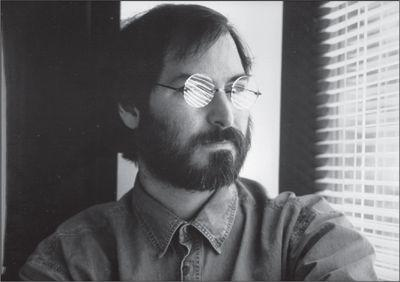
Стив Джобс, 1996
Things Fall Apart
Всё распадается
When Jobs unveiled the NeXT computer in 1988, there was a burst of excitement. That fizzled when the computer finally went on sale the following year. Jobs’s ability to dazzle, intimidate, and spin the press began to fail him, and there was a series of stories on the company’s woes. “NeXT is incompatible with other computers at a time when the industry is moving toward interchangeable systems,” Bart Ziegler of Associated Press reported. “Because relatively little software exists to run on NeXT, it has a hard time attracting customers.”
| fizzled | выдохся, сошёл на нет |
Когда в 1988 году Джобс явил миру компьютер NeXT, случился всплеск восторга. Он выдохся, когда на следующий год машина поступила в продажу. Умение Джобса ослеплять, запугивать и крутить прессу начало ему изменять, и пошли серии статей о бедах компании. «NeXT несовместим с другими компьютерами в момент, когда индустрия движется к взаимозаменяемым системам, — писал Барт Зиглер из Associated Press. — Поскольку для NeXT существует сравнительно мало программ, привлекать клиентов ему трудно».
NeXT tried to reposition itself as the leader in a new category, personal workstations, for people who wanted the power of a workstation and the friendliness of a personal computer. But those customers were by now buying them from fast-growing Sun Microsystems. Revenues for NeXT in 1990 were $28 million; Sun made $2.5 billion that year. IBM abandoned its deal to license the NeXT software, so Jobs was forced to do something against his nature: Despite his ingrained belief that hardware and software should be integrally linked, he agreed in January 1992 to license the NeXTSTEP operating system to run on other computers.
NeXT попыталась перепозиционироваться как лидер новой категории — персональных рабочих станций для тех, кому нужна мощь станции и дружелюбие персонального компьютера. Но такие покупатели уже брали их у быстрорастущей Sun Microsystems. Выручка NeXT в 1990 году — 28 миллионов; Sun заработала 2,5 миллиарда. IBM отказалась от сделки по лицензированию софта NeXT, и Джобсу пришлось сделать противное его натуре: несмотря на въевшуюся веру в неразрывную связь железа и софта, в январе 1992 года он согласился лицензировать NeXTSTEP для работы на чужих компьютерах.
One surprising defender of Jobs was Jean-Louis Gassée, who had bumped elbows with Jobs when he replaced him at Apple and subsequently been ousted himself. He wrote an article extolling the creativity of NeXT products. “NeXT might not be Apple,” Gassée argued, “but Steve is still Steve.” A few days later his wife answered a knock on the door and went running upstairs to tell him that Jobs was standing there. He thanked Gassée for the article and invited him to an event where Intel’s Andy Grove would join Jobs in announcing that NeXTSTEP would be ported to the IBM/Intel platform. “I sat next to Steve’s father, Paul Jobs, a movingly dignified individual,” Gassée recalled. “He raised a difficult son, but he was proud and happy to see him onstage with Andy Grove.”
| bumped elbows with | столкнулся локтями, пересекался с |
Удивительным защитником Джобса стал Жан-Луи Гассе, который пересекался с Джобсом, заменив его в Apple, а затем и сам был изгнан. Он написал статью, превозносящую творческий потенциал продуктов NeXT. «NeXT, может, и не Apple, — утверждал Гассе, — но Стив остаётся Стивом». Через несколько дней его жена открыла дверь на стук и побежала наверх сказать, что внизу стоит Джобс. Тот поблагодарил Гассе за статью и пригласил на мероприятие, где Энди Гроув из Intel вместе с Джобсом объявит о переносе NeXTSTEP на платформу IBM/Intel. «Я сидел рядом с отцом Стива, Полом Джобсом, — трогательно достойным человеком, — вспоминал Гассе. — Сына он вырастил непростого, но гордился и радовался, видя его на сцене с Энди Гроувом».
A year later Jobs took the inevitable subsequent step: He gave up making the hardware altogether. This was a painful decision, just as it had been when he gave up making hardware at Pixar. He cared about all aspects of his products, but the hardware was a particular passion. He was energized by great design, obsessed over manufacturing details, and would spend hours watching his robots make his perfect machines. But now he had to lay off more than half his workforce, sell his beloved factory to Canon (which auctioned off the fancy furniture), and satisfy himself with a company that tried to license an operating system to manufacturers of uninspired machines.
| lay off | уволить |
Через год Джобс сделал неизбежный следующий шаг: полностью отказался от производства железа. Решение было болезненным — как когда-то отказ от железа в Pixar. Ему было дело до всех аспектов продуктов, но железо было особой страстью. Великий дизайн его заряжал, производственные детали завораживали, и он часами смотрел, как роботы собирают его совершенные машины. Теперь же пришлось уволить больше половины сотрудников, продать любимый завод Canon (распродавшей и шикарную мебель) и довольствоваться компанией, пытавшейся лицензировать операционную систему производителям безвдохновенных машин.
By the mid-1990s Jobs was finding some pleasure in his new family life and his astonishing triumph in the movie business, but he despaired about the personal computer industry. “Innovation has virtually ceased,” he told Gary Wolf of Wired at the end of 1995. “Microsoft dominates with very little innovation. Apple lost. The desktop market has entered the dark ages.”
| despaired | отчаивался |
К середине 1990-х Джобс находил отраду в новой семейной жизни и ошеломительном триумфе в кино, но отчаивался из-за индустрии персональных компьютеров. «Инновации практически прекратились, — говорил он Гэри Вулфу из Wired в конце 1995-го. — Microsoft доминирует с минимальными инновациями. Apple проиграла. Рынок настольных компьютеров вступил в тёмные века».
He was also gloomy in an interview with Tony Perkins and the editors of Red Herring. First, he displayed the “Bad Steve” side of his personality. Soon after Perkins and his colleagues arrived, Jobs slipped out the back door “for a walk,” and he didn’t return for forty-five minutes. When the magazine’s photographer began taking pictures, he snapped at her sarcastically and made her stop. Perkins later noted, “Manipulation, selfishness, or downright rudeness, we couldn’t figure out the motivation behind his madness.” When he finally settled down for the interview, he said that even the advent of the web would do little to stop Microsoft’s domination. “Windows has won,” he said. “It beat the Mac, unfortunately, it beat UNIX, it beat OS/2. An inferior product won.”
| snapped at | огрызнулся на |
Мрачен он был и в интервью Тони Перкинсу и редакции Red Herring. Сначала показал свою «плохого Стива» сторону. Вскоре после прихода Перкинса с коллегами Джобс выскользнул через заднюю дверь «прогуляться» и не возвращался сорок пять минут. Когда фотограф журнала начала снимать, он саркастически на неё огрызнулся и заставил остановиться. Перкинс позже заметил: «Манипуляция, эгоизм или откровенная грубость — мотивацию его безумия мы так и не разгадали». Наконец усевшись для интервью, он сказал, что даже появление веба мало помешает доминированию Microsoft. «Windows победила, — сказал он. — Она побила Mac, увы, побила UNIX, побила OS/2. Победил худший продукт».
Apple Falling
Падение Apple
For a few years after Jobs was ousted, Apple was able to coast comfortably with a high profit margin based on its temporary dominance in desktop publishing. Feeling like a genius back in 1987, John Sculley had made a series of proclamations that nowadays sound embarrassing. Jobs wanted Apple “to become a wonderful consumer products company,” Sculley wrote. “This was a lunatic plan. . . . Apple would never be a consumer products company. . . . We couldn’t bend reality to all our dreams of changing the world. . . . High tech could not be designed and sold as a consumer product.”
| coast | плыть по инерции, без усилий |
| lunatic | безумный |
Несколько лет после изгнания Джобса Apple безбедно плыла по течению с высокой маржой, основанной на временном доминировании в настольных издательских системах. Ощущая себя в 1987 году гением, Джон Скалли сделал ряд заявлений, звучащих ныне конфузно. Джобс хотел, чтобы Apple «стала прекрасной компанией потребительских продуктов», писал Скалли. «Это был безумный план… Apple никогда не станет компанией потребительских продуктов… Мы не можем подогнать реальность под все наши мечты изменить мир… Высокие технологии нельзя проектировать и продавать как потребительский продукт».
Jobs was appalled, and he became angry and contemptuous as Sculley presided over a steady decline in market share for Apple in the early 1990s. “Sculley destroyed Apple by bringing in corrupt people and corrupt values,” Jobs later lamented. “They cared about making money—for themselves mainly, and also for Apple—rather than making great products.” He felt that Sculley’s drive for profits came at the expense of gaining market share. “Macintosh lost to Microsoft because Sculley insisted on milking all the profits he could get rather than improving the product and making it affordable.” As a result, the profits eventually disappeared.
| milking | доить, выжимать |
Джобс был в ужасе и всё больше злился и презирал происходящее, пока Скалли в начале 1990-х председательствовал над неуклонной потерей доли рынка. «Скалли погубил Apple, приведя продажных людей и продажные ценности, — сокрушался позже Джобс. — Их заботили деньги — в основном для себя, а также для Apple, — а не великие продукты». Он считал, что погоня Скалли за прибылью шла в ущерб доле рынка. «Macintosh проиграл Microsoft, потому что Скалли настаивал выжимать всю возможную прибыль вместо улучшения продукта и снижения цены». В итоге исчезла и прибыль.
It had taken Microsoft a few years to replicate Macintosh’s graphical user interface, but by 1990 it had come out with Windows 3.0, which began the company’s march to dominance in the desktop market. Windows 95, which was released in 1995, became the most successful operating system ever, and Macintosh sales began to collapse. “Microsoft simply ripped off what other people did,” Jobs later said. “Apple deserved it. After I left, it didn’t invent anything new. The Mac hardly improved. It was a sitting duck for Microsoft.”
| sitting duck | лёгкая мишень |
Microsoft понадобилось несколько лет, чтобы повторить графический интерфейс Macintosh, но к 1990 году вышла Windows 3.0, начавшая марш компании к доминированию на настольном рынке. Windows 95, выпущенная в 1995-м, стала самой успешной операционной системой в истории, а продажи Macintosh рухнули. «Microsoft просто воровала чужое, — говорил позже Джобс. — Apple это заслужила. После моего ухода она ничего нового не изобретала. Mac почти не улучшался. Он был лёгкой мишенью для Microsoft».
His frustration with Apple was evident when he gave a talk to a Stanford Business School club at the home of a student, who asked him to sign a Macintosh keyboard. Jobs agreed to do so if he could remove the keys that had been added to the Mac after he left. He pulled out his car keys and pried off the four arrow cursor keys, which he had once banned, as well as the top row of F1, F2, F3 . . . function keys. “I’m changing the world one keyboard at a time,” he deadpanned. Then he signed the mutilated keyboard.
| pried off | выковырял, оторвал |
| deadpanned | сказал с каменным лицом |
Разочарование в Apple проявилось, когда он выступал перед клубом Стэнфордской бизнес-школы в доме студента, попросившего подписать клавиатуру Macintosh. Джобс согласился — при условии, что сможет снять клавиши, добавленные после его ухода. Он достал ключи от машины, оторвал четыре клавиши-стрелки, когда-то им запрещённые, и верхний ряд функциональных клавиш F1, F2, F3… «Меняю мир по одной клавиатуре за раз», — сказал он с каменным лицом. И подписал изуродованную клавиатуру.
During his 1995 Christmas vacation in Kona Village, Hawaii, Jobs went walking along the beach with his friend Larry Ellison, the irrepressible Oracle chairman. They discussed making a takeover bid for Apple and restoring Jobs as its head. Ellison said he could line up $3 billion in financing: “I will buy Apple, you will get 25% of it right away for being CEO, and we can restore it to its past glory.” But Jobs demurred. “I decided I’m not a hostile-takeover kind of guy,” he explained. “If they had asked me to come back, it might have been different.”
| irrepressible | неудержимый |
На рождественских каникулах 1995 года в Kona Village на Гавайях Джобс гулял по пляжу с другом Ларри Эллисоном, неудержимым председателем Oracle. Они обсуждали предложение о поглощении Apple и возвращении Джобса во главу. Эллисон говорил, что соберёт 3 миллиарда финансирования: «Я куплю Apple, ты сразу получишь 25% за пост CEO, и мы вернём ей былую славу». Но Джобс отказался. «Я решил, что я не из любителей враждебных поглощений, — объяснял он. — Попросили бы они меня вернуться — другое дело».
By 1996 Apple’s share of the market had fallen to 4% from a high of 16% in the late 1980s. Michael Spindler, the German-born chief of Apple’s European operations who had replaced Sculley as CEO in 1993, tried to sell the company to Sun, IBM, and Hewlett-Packard. That failed, and he was ousted in February 1996 and replaced by Gil Amelio, a research engineer who was CEO of National Semiconductor. During his first year the company lost $1 billion, and the stock price, which had been $70 in 1991, fell to $14, even as the tech bubble was pushing other stocks into the stratosphere.
К 1996 году доля Apple упала до 4% с пиковых 16% в конце 1980-х. Майкл Шпиндлер, уроженец Германии, возглавлявший европейские операции Apple и сменивший Скалли на посту CEO в 1993-м, пытался продать компанию Sun, IBM и Hewlett-Packard. Не вышло; в феврале 1996-го его выставили, и на смену пришёл Гил Амелио, инженер-исследователь, бывший CEO National Semiconductor. За первый его год компания потеряла миллиард долларов, а цена акций с 70 долларов в 1991-м упала до 14 — даже когда технопузырь уносил другие акции в стратосферу.
Amelio was not a fan of Jobs. Their first meeting had been in 1994, just after Amelio was elected to the Apple board. Jobs had called him and announced, “I want to come over and see you.” Amelio invited him over to his office at National Semiconductor, and he later recalled watching through the glass wall of his office as Jobs arrived. He looked “rather like a boxer, aggressive and elusively graceful, or like an elegant jungle cat ready to spring at its prey.” After a few minutes of pleasantries—far more than Jobs usually engaged in—he abruptly announced the reason for his visit. He wanted Amelio to help him return to Apple as the CEO. “There’s only one person who can rally the Apple troops,” Jobs said, “only one person who can straighten out the company.” The Macintosh era had passed, Jobs argued, and it was now time for Apple to create something new that was just as innovative.
| spring at | прыгнуть на |
Амелио поклонником Джобса не был. Впервые они встретились в 1994 году, вскоре после избрания Амелио в совет Apple. Джобс позвонил и объявил: «Хочу приехать повидаться». Амелио пригласил его в офис National Semiconductor и позже вспоминал, как наблюдал сквозь стеклянную стену за прибытием Джобса. Тот выглядел «скорее как боксёр — агрессивный и неуловимо грациозный, или как элегантная дикая кошка, готовая прыгнуть на добычу». После нескольких минут любезностей — куда больше обычного для Джобса — тот резко объявил о цели визита: он хочет, чтобы Амелио помог ему вернуться в Apple как CEO. «Есть лишь один человек, способный сплотить войска Apple, — сказал Джобс, — лишь один, способный выправить компанию». Эра Macintosh прошла, доказывал Джобс, и Apple пора создать нечто новое, столь же новаторское.
“If the Mac is dead, what’s going to replace it?” Amelio asked. Jobs’s reply didn’t impress him. “Steve didn’t seem to have a clear answer,” Amelio later said. “He seemed to have a set of one-liners.” Amelio felt he was witnessing Jobs’s reality distortion field and was proud to be immune to it. He shooed Jobs unceremoniously out of his office.
| one-liners | остроты, отточенные фразы |
| shooed | выпроводил |
«Если Mac мёртв, что придёт ему на смену?» — спросил Амелио. Ответ Джобса его не впечатлил. «У Стива, похоже, не было ясного ответа, — говорил позже Амелио. — Только набор отточенных фраз». Амелио решил, что наблюдает поле искажения реальности Джобса, и гордился невосприимчивостью к нему. Он бесцеремонно выпроводил Джобса из кабинета.
By the summer of 1996 Amelio realized that he had a serious problem. Apple was pinning its hopes on creating a new operating system, called Copland, but Amelio had discovered soon after becoming CEO that it was a bloated piece of vaporware that would not solve Apple’s needs for better networking and memory protection, nor would it be ready to ship as scheduled in 1997. He publicly promised that he would quickly find an alternative. His problem was that he didn’t have one.
| pinning its hopes on | возлагала надежды на |
| vaporware | «вапорвейр» — анонсированный, но несуществующий продукт |
К лету 1996 года Амелио понял, что у него серьёзная проблема. Apple возлагала надежды на новую операционную систему Copland, но вскоре после вступления в должность Амелио обнаружил: это раздутый вапорвейр, не решающий задач Apple по сетям и защите памяти и не готовый к выходу в намеченный срок 1997 года. Он публично пообещал быстро найти альтернативу. Беда в том, что её у него не было.
So Apple needed a partner, one that could make a stable operating system, preferably one that was UNIX-like and had an object-oriented application layer. There was one company that could obviously supply such software—NeXT—but it would take a while for Apple to focus on it.
Итак, Apple нужен был партнёр, способный сделать стабильную операционную систему — желательно UNIX-подобную, с объектно-ориентированным прикладным слоем. Была одна компания, очевидно способная поставить такой софт, — NeXT, но Apple потребовалось время, чтобы на ней сосредоточиться.
Apple first homed in on a company that had been started by Jean-Louis Gassée, called Be. Gassée began negotiating the sale of Be to Apple, but in August 1996 he overplayed his hand at a meeting with Amelio in Hawaii. He said he wanted to bring his fifty-person team to Apple, and he asked for 15% of the company, worth about $500 million. Amelio was stunned. Apple calculated that Be was worth about $50 million. After a few offers and counteroffers, Gassée refused to budge from demanding at least $275 million. He thought that Apple had no alternatives. It got back to Amelio that Gassée said, “I’ve got them by the balls, and I’m going to squeeze until it hurts.” This did not please Amelio.
| homed in on | нацелилась на |
Сначала Apple нацелилась на компанию Жана-Луи Гассе — Be. Гассе начал переговоры о продаже Be, но в августе 1996 года на встрече с Амелио на Гавайях пережал. Он сказал, что приведёт в Apple команду из пятидесяти человек, и запросил 15% компании — около 500 миллионов долларов. Амелио остолбенел. По расчётам Apple, Be стоила около 50 миллионов. После пары раундов оферт Гассе отказывался отступать от минимума в 275 миллионов, полагая, что у Apple нет альтернатив. Амелио передали слова Гассе: «Они у меня за яйца, и я буду сжимать, пока не станет больно». Амелио это не понравилось.
Apple’s chief technology officer, Ellen Hancock, argued for going with Sun’s UNIX-based Solaris operating system, even though it did not yet have a friendly user interface. Amelio began to favor using, of all things, Microsoft’s Windows NT, which he felt could be rejiggered on the surface to look and feel just like a Mac while being compatible with the wide range of software available to Windows users. Bill Gates, eager to make a deal, began personally calling Amelio.
| rejiggered | переделана, перекроена |
Технический директор Apple Эллен Хэнкок выступала за UNIX-систему Solaris от Sun, хотя дружелюбного интерфейса у той ещё не было. Амелио начал склоняться — из всего на свете — к Windows NT от Microsoft, которую, как ему казалось, можно перекроить снаружи под вид и ощущения Mac, сохранив совместимость с массой программ для Windows. Билл Гейтс, жаждавший сделки, начал лично названивать Амелио.
There was, of course, one other option. Two years earlier Macworld magazine columnist (and former Apple software evangelist) Guy Kawasaki had published a parody press release joking that Apple was buying NeXT and making Jobs its CEO. In the spoof Mike Markkula asked Jobs, “Do you want to spend the rest of your life selling UNIX with a sugarcoating, or change the world?” Jobs responded, “Because I’m now a father, I needed a steadier source of income.” The release noted that “because of his experience at Next, he is expected to bring a newfound sense of humility back to Apple.” It also quoted Bill Gates as saying there would now be more innovations from Jobs that Microsoft could copy. Everything in the press release was meant as a joke, of course. But reality has an odd habit of catching up with satire.
| satire | сатира |
Был, разумеется, и ещё один вариант. Двумя годами ранее колумнист журнала Macworld (и бывший «евангелист» софта Apple) Гай Кавасаки опубликовал пародийный пресс-релиз о том, что Apple покупает NeXT и делает Джобса CEO. В пародии Майк Марккула спрашивал Джобса: «Ты хочешь до конца жизни продавать UNIX в сахарной глазури или изменить мир?» Джобс отвечал: «Теперь я отец, и мне нужен источник дохода постабильнее». В релизе говорилось, что «благодаря опыту в Next он вернёт в Apple новообретённое смирение». Цитировался и Билл Гейтс: теперь у Джобса появятся новые инновации, которые Microsoft сможет скопировать. Всё это, конечно, было шуткой. Но у реальности странная привычка догонять сатиру.
Slouching toward Cupertino
Плетясь в Купертино
“Does anyone know Steve well enough to call him on this?” Amelio asked his staff. Because his encounter with Jobs two years earlier had ended badly, Amelio didn’t want to make the call himself. But as it turned out, he didn’t need to. Apple was already getting incoming pings from NeXT. A midlevel product marketer at NeXT, Garrett Rice, had simply picked up the phone and, without consulting Jobs, called Ellen Hancock to see if she might be interested in taking a look at its software. She sent someone to meet with him.
«Кто-нибудь знает Стива настолько хорошо, чтобы позвонить ему по этому вопросу?» — спросил Амелио у штаба. Поскольку его встреча с Джобсом двумя годами ранее закончилась плохо, звонить самому не хотелось. Но, как выяснилось, и не понадобилось: Apple уже получала сигналы от NeXT. Рядовой продуктовый маркетолог NeXT Гарретт Райс просто снял трубку и, не посоветовавшись с Джобсом, позвонил Эллен Хэнкок — не захочет ли та взглянуть на их софт. Она отправила кого-то на встречу.
By Thanksgiving of 1996 the two companies had begun midlevel talks, and Jobs picked up the phone to call Amelio directly. “I’m on my way to Japan, but I’ll be back in a week and I’d like to see you as soon as I return,” he said. “Don’t make any decision until we can get together.” Amelio, despite his earlier experience with Jobs, was thrilled to hear from him and entranced by the possibility of working with him. “For me, the phone call with Steve was like inhaling the flavors of a great bottle of vintage wine,” he recalled. He gave his assurance he would make no deal with Be or anyone else before they got together.
К Дню благодарения 1996 года начались переговоры на среднем уровне, и Джобс сам позвонил Амелио. «Я улетаю в Японию, но через неделю вернусь и хотел бы увидеться сразу по возвращении, — сказал он. — Не принимайте решений, пока мы не встретимся». Амелио, несмотря на прежний опыт, был рад звонку и очарован возможностью работать с Джобсом. «Для меня тот звонок Стива был как вдохнуть аромат великой бутылки выдержанного вина», — вспоминал он. Он заверил, что до встречи не заключит сделок ни с Be, ни с кем-либо ещё.
For Jobs, the contest against Be was both professional and personal. NeXT was failing, and the prospect of being bought by Apple was a tantalizing lifeline. In addition, Jobs held grudges, sometimes passionately, and Gassée was near the top of his list, despite the fact that they had seemed to reconcile when Jobs was at NeXT. “Gassée is one of the few people in my life I would say is truly horrible,” Jobs later insisted, unfairly. “He knifed me in the back in 1985.” Sculley, to his credit, had at least been gentlemanly enough to knife Jobs in the front.
Для Джобса состязание с Be было и профессиональным, и личным. NeXT тонула, и перспектива покупки со стороны Apple была манящим спасательным кругом. К тому же Джобс умел держать обиды — порой страстно, — и Гассе стоял в его списке у вершины, несмотря на видимость примирения во времена NeXT. «Гассе — один из немногих в моей жизни, о ком я скажу: по-настоящему ужасный человек», — настаивал позже Джобс, несправедливо. «Он ударил меня ножом в спину в 1985-м». Скалли, к его чести, хватило джентльменства ударить Джобса ножом в грудь.
On December 2, 1996, Steve Jobs set foot on Apple’s Cupertino campus for the first time since his ouster eleven years earlier. In the executive conference room, he met Amelio and Hancock to make the pitch for NeXT. Once again he was scribbling on the whiteboard there, this time giving his lecture about the four waves of computer systems that had culminated, at least in his telling, with the launch of NeXT. He was at his most seductive, despite the fact that he was speaking to two people he didn’t respect. He was particularly adroit at feigning modesty. “It’s probably a totally crazy idea,” he said, but if they found it appealing, “I’ll structure any kind of deal you want—license the software, sell you the company, whatever.” He was, in fact, eager to sell everything, and he pushed that approach. “When you take a close look, you’ll decide you want more than my software,” he told them. “You’ll want to buy the whole company and take all the people.”
2 декабря 1996 года Стив Джобс впервые за одиннадцать лет после изгнания ступил на кампус Apple в Купертино. В зале заседаний руководства он встретился с Амелио и Хэнкок, чтобы представить NeXT. И снова писал на доске — на этот раз лекцию о четырёх волнах компьютерных систем, увенчавшихся, в его изложении, запуском NeXT. Он был максимально соблазнителен, хотя говорил с двумя людьми, которых не уважал. Особенно ловко он притворялся скромным. «Наверное, это совершенно безумная идея, — сказал он, — но, если она вам по душе, я оформлю любую сделку: лицензия на софт, продажа компании — что угодно». На деле он жаждал продать всё и проталкивал именно это. «Присмотревшись, вы решите, что вам нужно больше, чем мой софт, — говорил он. — Вы захотите купить всю компанию и забрать всех людей».
A few weeks later Jobs and his family went to Hawaii for Christmas vacation. Larry Ellison was also there, as he had been the year before. “You know, Larry, I think I’ve found a way for me to get back into Apple and get control of it without you having to buy it,” Jobs said as they walked along the shore. Ellison recalled, “He explained his strategy, which was getting Apple to buy NeXT, then he would go on the board and be one step away from being CEO.” Ellison thought that Jobs was missing a key point. “But Steve, there’s one thing I don’t understand,” he said. “If we don’t buy the company, how can we make any money?” It was a reminder of how different their desires were. Jobs put his hand on Ellison’s left shoulder, pulled him so close that their noses almost touched, and said, “Larry, this is why it’s really important that I’m your friend. You don’t need any more money.”
Через несколько недель Джобс с семьёй улетел на рождественские каникулы на Гавайи. Ларри Эллисон был там же — как и годом ранее. «Знаешь, Ларри, я, кажется, нашёл способ вернуться в Apple и получить контроль, не заставляя тебя её покупать», — сказал Джобс на прогулке по берегу. Эллисон вспоминал: «Он объяснил стратегию: Apple покупает NeXT, он входит в совет и оказывается в шаге от кресла CEO». Эллисону казалось, что Джобс упускает главное. «Но, Стив, одного не понимаю, — сказал он. — Если мы не покупаем компанию, как нам заработать?» Это напомнило, насколько различались их желания. Джобс положил руку Эллисону на левое плечо, притянул так близко, что их носы почти соприкоснулись, и сказал: «Ларри, вот почему так важно, что я твой друг. Тебе не нужно больше денег».
Ellison recalled that his own answer was almost a whine: “Well, I may not need the money, but why should some fund manager at Fidelity get the money? Why should someone else get it? Why shouldn’t it be us?”
Свой ответ Эллисон вспоминал как почти скулёж: «Ну, деньги мне, может, и не нужны, но почему их получит какой-то управляющий фондом из Fidelity? Почему кто-то другой? Почему не мы?»
“I think if I went back to Apple, and I didn’t own any of Apple, and you didn’t own any of Apple, I’d have the moral high ground,” Jobs replied.
| moral high ground | моральное превосходство |
«Думаю, вернись я в Apple, не владея её акциями — как и ты, — у меня была бы моральная высота», — ответил Джобс.
“Steve, that’s really expensive real estate, this moral high ground,” said Ellison. “Look, Steve, you’re my best friend, and Apple is your company. I’ll do whatever you want.” Although Jobs later said that he was not plotting to take over Apple at the time, Ellison thought it was inevitable. “Anyone who spent more than a half hour with Amelio would realize that he couldn’t do anything but self-destruct,” he later said.
«Стив, эта моральная высота — чертовски дорогая недвижимость, — сказал Эллисон. — Слушай, ты мой лучший друг, и Apple — твоя компания. Сделаю всё, что захочешь». Хотя позже Джобс говорил, что тогда не планировал захват Apple, Эллисон считал его неизбежным. «Любой, кто провёл с Амелио больше получаса, понял бы: ему ничего не остаётся, кроме самоуничтожения», — говорил он.
The big bakeoff between NeXT and Be was held at the Garden Court Hotel in Palo Alto on December 10, in front of Amelio, Hancock, and six other Apple executives. NeXT went first, with Avie Tevanian demonstrating the software while Jobs displayed his hypnotizing salesmanship. They showed how the software could play four video clips on the screen at once, create multimedia, and link to the Internet. “Steve’s sales pitch on the NeXT operating system was dazzling,” according to Amelio. “He praised the virtues and strengths as though he were describing a performance of Olivier as Macbeth.”
| bakeoff | соревнование, смотрины |
Большие смотрины NeXT против Be прошли 10 декабря в пало-альтовском Garden Court Hotel перед Амелио, Хэнкок и шестью другими руководителями Apple. NeXT выступала первой: Ави Теванян демонстрировал софт, а Джобс — гипнотическое искусство продавца. Показали, как система одновременно проигрывает четыре видеоклипа, создаёт мультимедиа и выходит в интернет. «Продажная речь Стива об операционной системе NeXT была ослепительной, — по словам Амелио. — Он превозносил её достоинства и силу так, будто описывал игру Оливье в роли Макбета».
Gassée came in afterward, but he acted as if he had the deal in his hand. He provided no new presentation. He simply said that the Apple team knew the capabilities of the Be OS and asked if they had any further questions. It was a short session. While Gassée was presenting, Jobs and Tevanian walked the streets of Palo Alto. After a while they bumped into one of the Apple executives who had been at the meetings. “You’re going to win this,” he told them.
Гассе пришёл после, но держался так, будто сделка уже у него в кармане. Новой презентации не было. Он лишь сказал, что команда Apple знает возможности Be OS, и спросил, есть ли вопросы. Сессия вышла короткой. Пока Гассе выступал, Джобс с Теваняном гуляли по улицам Пало-Альто. По пути им встретился один из руководителей Apple, бывших на смотринах. «Вы это выиграете», — сказал он.
Tevanian later said that this was no surprise: “We had better technology, we had a solution that was complete, and we had Steve.” Amelio knew that bringing Jobs back into the fold would be a double-edged sword, but the same was true of bringing Gassée back. Larry Tesler, one of the Macintosh veterans from the old days, recommended to Amelio that he choose NeXT, but added, “Whatever company you choose, you’ll get someone who will take your job away, Steve or Jean-Louis.”
Позже Теванян говорил, что это не стало неожиданностью: «У нас были лучшие технологии, готовое решение — и у нас был Стив». Амелио понимал, что возвращение Джобса в лоно — обоюдоострый меч, но то же касалось и Гассе. Ларри Теслер, ветеран Macintosh, советовал Амелио выбрать NeXT, но добавил: «Какую компанию ни выбери, получишь человека, который отнимет твою должность, — Стива или Жана-Луи».
Amelio opted for Jobs. He called Jobs to say that he planned to propose to the Apple board that he be authorized to negotiate a purchase of NeXT. Would he like to be at the meeting? Jobs said he would. When he walked in, there was an emotional moment when he saw Mike Markkula. They had not spoken since Markkula, once his mentor and father figure, had sided with Sculley there back in 1985. Jobs walked over and shook his hand.
Амелио выбрал Джобса. Он позвонил сообщить, что предложит совету Apple санкционировать переговоры о покупке NeXT, и спросил, не хочет ли Джобс присутствовать. Тот согласился. Войдя, он пережил эмоциональный момент, увидев Майка Марккулу. Они не разговаривали с тех пор, как Марккула, когда-то его наставник и отеческая фигура, встал там на сторону Скалли в 1985-м. Джобс подошёл и пожал ему руку.
Jobs invited Amelio to come to his house in Palo Alto so they could negotiate in a friendly setting. When Amelio arrived in his classic 1973 Mercedes, Jobs was impressed; he liked the car. In the kitchen, which had finally been renovated, Jobs put a kettle on for tea, and then they sat at the wooden table in front of the open-hearth pizza oven. The financial part of the negotiations went smoothly; Jobs was eager not to make Gassée’s mistake of overreaching. He suggested that Apple pay $12 a share for NeXT. That would amount to about $500 million. Amelio said that was too high. He countered with $10 a share, or just over $400 million. Unlike Be, NeXT had an actual product, real revenues, and a great team, but Jobs was nevertheless pleasantly surprised at that counteroffer. He accepted immediately.
Джобс позвал Амелио в свой пало-альтовский дом — договариваться в дружеской обстановке. Амелио приехал на классическом Mercedes 1973 года, и Джобс впечатлился: машина ему понравилась. На кухне, наконец-то отремонтированной, Джобс поставил чайник, и они сели за деревянный стол у открытой печи для пиццы. Финансовая часть прошла гладко: Джобс не хотел повторять ошибку Гассе с завышением цены. Он предложил Apple платить по 12 долларов за акцию NeXT — около 500 миллионов. Амелио сказал, что это много, и предложил 10 — чуть больше 400 миллионов. В отличие от Be, у NeXT был реальный продукт, настоящая выручка и отличная команда, но Джобс всё равно был приятно удивлён контрпредложению. Он принял его сразу.
One sticking point was that Jobs wanted his payout to be in cash. Amelio insisted that he needed to “have skin in the game” and take the payout in stock that he would agree to hold for at least a year. Jobs resisted. Finally, they compromised: Jobs would take $120 million in cash and $37 million in stock, and he pledged to hold the stock for at least six months.
| skin in the game | личная ставка, доля в риске |
Камнем преткновения стало то, что Джобс хотел получить выплату деньгами. Амелио настаивал: нужна «личная ставка» — выплата акциями, которые тот обязался бы держать минимум год. Джобс сопротивлялся. Сошлись на компромиссе: 120 миллионов наличными и 37 акциями, с обязательством держать их как минимум шесть месяцев.
As usual Jobs wanted to have some of their conversation while taking a walk. While they ambled around Palo Alto, he made a pitch to be put on Apple’s board. Amelio tried to deflect it, saying there was too much history to do something like that too quickly. “Gil, that really hurts,” Jobs said. “This was my company. I’ve been left out since that horrible day with Sculley.” Amelio said he understood, but he was not sure what the board would want. When he was about to begin his negotiations with Jobs, he had made a mental note to “move ahead with logic as my drill sergeant” and “sidestep the charisma.” But during the walk he, like so many others, was caught in Jobs’s force field. “I was hooked in by Steve’s energy and enthusiasm,” he recalled.
| sidestep | обойти стороной |
Как обычно, часть разговора Джобс хотел провести на прогулке. Прогуливаясь по Пало-Альто, он попросил места в совете Apple. Амелио попытался уйти от ответа: слишком много истории, чтобы делать это так быстро. «Гил, это правда больно, — сказал Джобс. — Это была моя компания. Меня не пускали сюда с того ужасного дня со Скалли». Амелио сказал, что понимает, но не знает, чего захочет совет. Перед переговорами он дал себе установку «двигаться вперёд, взяв логику в сержанты» и «обходить харизму стороной». Но на прогулке он, как и многие до него, попал в силовое поле Джобса. «Меня зацепила энергия и воодушевление Стива», — вспоминал он.
After circling the long blocks a couple of times, they returned to the house just as Laurene and the kids were arriving home. They all celebrated the easy negotiations, then Amelio rode off in his Mercedes. “He made me feel like a lifelong friend,” Amelio recalled. Jobs indeed had a way of doing that. Later, after Jobs had engineered his ouster, Amelio would look back on Jobs’s friendliness that day and note wistfully, “As I would painfully discover, it was merely one facet of an extremely complex personality.”
Обойдя длинные кварталы пару раз, они вернулись к дому как раз к приходу Лорин с детьми. Все отпраздновали лёгкие переговоры, затем Амелио уехал на своём Mercedes. «Он заставил меня почувствовать себя другом на всю жизнь», — вспоминал Амелио. Джобс это умел. Позже, когда Джобс устроил его свержение, Амелио оглядывался на его тогдашнее дружелюбие с грустью: «Как я мучительно обнаружу, это была лишь одна грань крайне сложной личности».
After informing Gassée that Apple was buying NeXT, Amelio had what turned out to be an even more uncomfortable task: telling Bill Gates. “He went into orbit,” Amelio recalled. Gates found it ridiculous, but perhaps not surprising, that Jobs had pulled off this coup. “Do you really think Steve Jobs has anything there?” Gates asked Amelio. “I know his technology, it’s nothing but a warmed-over UNIX, and you’ll never be able to make it work on your machines.” Gates, like Jobs, had a way of working himself up, and he did so now: “Don’t you understand that Steve doesn’t know anything about technology? He’s just a super salesman. I can’t believe you’re making such a stupid decision. . . . He doesn’t know anything about engineering, and 99% of what he says and thinks is wrong. What the hell are you buying that garbage for?”
| went into orbit | взвился до небес |
Сообщив Гассе, что Apple покупает NeXT, Амелио получил задачу ещё неудобнее — сказать об этом Биллу Гейтсу. «Он взвился до небес», — вспоминал Амелио. Гейтс счёл нелепым — хотя, может, и не удивительным, — что Джобс провернул этот переворот. «Вы правда думаете, что у Стива Джобса там что-то есть? — спрашивал Гейтс. — Я знаю его технологию — это лишь разогретый UNIX, и на ваших машинах он никогда не заработает». Гейтс, как и Джобс, умел себя накручивать — и накрутил: «Неужели вы не понимаете, что Стив ничего не смыслит в технологиях? Он просто суперпродавец. Поверить не могу, что вы принимаете такое идиотское решение… Он ничего не понимает в инженерии, и 99% его слов и мыслей — чушь. Какого чёрта вы покупаете этот мусор?»
Years later, when I raised it with him, Gates did not recall being that upset. The purchase of NeXT, he argued, did not really give Apple a new operating system. “Amelio paid a lot for NeXT, and let’s be frank, the NeXT OS was never really used.” Instead the purchase ended up bringing in Avie Tevanian, who could help the existing Apple operating system evolve so that it eventually incorporated the kernel of the NeXT technology. Gates knew that the deal was destined to bring Jobs back to power. “But that was a twist of fate,” he said. “What they ended up buying was a guy who most people would not have predicted would be a great CEO, because he didn’t have much experience at it, but he was a brilliant guy with great design taste and great engineering taste. He suppressed his craziness enough to get himself appointed interim CEO.”
Годы спустя, когда я спросил его об этом, Гейтс не помнил такого расстройства. Покупка NeXT, утверждал он, не дала Apple новой операционной системы. «Амелио дорого заплатил за NeXT, и, скажем прямо, ОС NeXT так и не использовалась по-настоящему». Вместо этого покупка привела Ави Теваняна, который помог существующей системе Apple развиться и со временем вобрать ядро технологий NeXT. Гейтс знал, что сделке суждено вернуть Джобса к власти. «Но это был поворот судьбы, — говорил он. — Купили они в итоге парня, в котором мало кто предсказал бы великого CEO — опыта у него было немного, — но парня блестящего, с великим вкусом к дизайну и инженерии. Он подавил своё безумие настолько, чтобы стать временным CEO».
Despite what both Ellison and Gates believed, Jobs had deeply conflicted feelings about whether he wanted to return to an active role at Apple, at least while Amelio was there. A few days before the NeXT purchase was due to be announced, Amelio asked Jobs to rejoin Apple full-time and take charge of operating system development. Jobs, however, kept deflecting Amelio’s request.
Вопреки мнению Эллисона и Гейтса, Джобс испытывал глубокие противоречивые чувства насчёт возвращения к активной роли в Apple — по крайней мере пока там был Амелио. За несколько дней до объявления о покупке NeXT Амелио попросил Джобса вернуться на полную ставку и возглавить разработку операционной системы. Джобс, однако, всё отклонял просьбу.
Finally, on the day that he was scheduled to make the big announcement, Amelio called Jobs in. He needed an answer. “Steve, do you just want to take your money and leave?” Amelio asked. “It’s okay if that’s what you want.” Jobs did not answer; he just stared. “Do you want to be on the payroll? An advisor?” Again Jobs stayed silent. Amelio went out and grabbed Jobs’s lawyer, Larry Sonsini, and asked what he thought Jobs wanted. “Beats me,” Sonsini said. So Amelio went back behind closed doors with Jobs and gave it one more try. “Steve, what’s on your mind? What are you feeling? Please, I need a decision now.”
Наконец, в день большого объявления, Амелио позвал Джобса. Нужен был ответ. «Стив, ты просто хочешь взять деньги и уйти? — спросил Амелио. — Если так, это нормально». Джобс не ответил — лишь смотрел. «Хочешь быть в штате? Советником?» Джобс снова молчал. Амелио вышел, схватил адвоката Джобса Ларри Сонсини и спросил, чего, по его мнению, хочет Джобс. «Понятия не имею», — сказал Сонсини. Амелио вернулся к Джобсу за закрытые двери и попробовал ещё раз: «Стив, что у тебя на уме? Что ты чувствуешь? Прошу, мне нужно решение сейчас».
“I didn’t get any sleep last night,” Jobs replied.
«Я не спал этой ночью», — ответил Джобс.
“Why? What’s the problem?”
«Почему? В чём проблема?»
“I was thinking about all the things that need to be done and about the deal we’re making, and it’s all running together for me. I’m really tired now and not thinking clearly. I just don’t want to be asked any more questions.”
«Я думал обо всём, что нужно сделать, и о нашей сделке, и всё у меня перемешалось. Я очень устал и не соображаю. Просто не хочу больше вопросов».
Amelio said that wasn’t possible. He needed to say something.
Амелио сказал, что так нельзя. Ему нужно что-то сказать людям.
Finally Jobs answered, “Look, if you have to tell them something, just say advisor to the chairman.” And that is what Amelio did.
Наконец Джобс ответил: «Слушай, если нужно что-то сказать, просто скажи: советник председателя». Амелио так и сделал.
The announcement was made that evening—December 20, 1996—in front of 250 cheering employees at Apple headquarters. Amelio did as Jobs had requested and described his new role as merely that of a part-time advisor. Instead of appearing from the wings of the stage, Jobs walked in from the rear of the auditorium and ambled down the aisle. Amelio had told the gathering that Jobs would be too tired to say anything, but by then he had been energized by the applause. “I’m very excited,” Jobs said. “I’m looking forward to get to reknow some old colleagues.” Louise Kehoe of the Financial Times came up to the stage afterward and asked Jobs, sounding almost accusatory, whether he was going to end up taking over Apple. “Oh no, Louise,” he said. “There are a lot of other things going on in my life now. I have a family. I am involved at Pixar. My time is limited, but I hope I can share some ideas.”
Объявление прозвучало тем вечером — 20 декабря 1996 года — перед 250 ликующими сотрудниками в штаб-квартире Apple. Амелио, как просил Джобс, описал его новую роль лишь как советника на полставки. Вместо выхода из-за кулис Джобс вошёл с задних рядов и неспешно спустился по проходу. Амелио сказал собравшимся, что Джобс слишком устал, чтобы говорить, но к тому моменту аплодисменты его взбодрили. «Я очень взволнован, — сказал Джобс. — С нетерпением жду возможности заново узнать старых коллег». Подошедшая к сцене Луиза Кехо из Financial Times почти обвинительно спросила, не закончится ли всё тем, что он возьмёт Apple. «О нет, Луиза, — ответил он. — В моей жизни сейчас много всего. У меня семья. Я в Pixar. Времени мало, но надеюсь, смогу поделиться идеями».
The next day Jobs drove to Pixar. He had fallen increasingly in love with the place, and he wanted to let the crew there know he was still going to be president and deeply involved. But the Pixar people were happy to see him go back to Apple part-time; a little less of Jobs’s focus would be a good thing. He was useful when there were big negotiations, but he could be dangerous when he had too much time on his hands. When he arrived at Pixar that day, he went to Lasseter’s office and explained that even just being an advisor at Apple would take up a lot of his time. He said he wanted Lasseter’s blessing. “I keep thinking about all the time away from my family this will cause, and the time away from the other family at Pixar,” Jobs said. “But the only reason I want to do it is that the world will be a better place with Apple in it.”
На следующий день Джобс поехал в Pixar. Он всё больше влюблялся в это место и хотел заверить команду, что останется президентом и будет глубоко вовлечён. Но люди Pixar были рады его частичному возвращению в Apple: меньше фокуса Джобса — к лучшему. Он был полезен на больших переговорах, но опасен, когда у него слишком много свободного времени. Приехав в Pixar, он зашёл в кабинет Лассетера и объяснил, что даже роль советника в Apple отнимет много времени. Сказал, что хочет его благословения. «Я всё думаю о времени вдали от семьи, которое это отнимет, и о времени вдали от второй семьи — Pixar, — говорил Джобс. — Но единственная причина, почему я хочу это сделать: мир будет лучше, если в нём есть Apple».
Lasseter smiled gently. “You have my blessing,” he said.
Лассетер мягко улыбнулся. «Моё благословение у тебя есть», — сказал он.
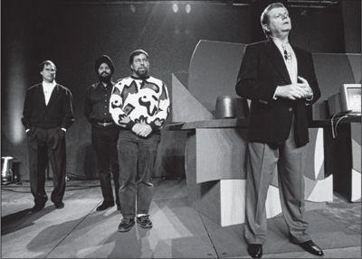
Амелио зовёт на сцену Возняка, а Джобс держится в стороне, 1997
Hovering Backstage
В тени за кулисами
“It’s rare that you see an artist in his thirties or forties able to really contribute something amazing,” Jobs declared as he was about to turn thirty.
«Редко увидишь художника в тридцать или сорок, способного создать нечто действительно поразительное», — заявил Джобс накануне тридцатилетия.
That held true for Jobs in his thirties, during the decade that began with his ouster from Apple in 1985. But after turning forty in 1995, he flourished. Toy Story was released that year, and the following year Apple’s purchase of NeXT offered him reentry into the company he had founded. In returning to Apple, Jobs would show that even people over forty could be great innovators. Having transformed personal computers in his twenties, he would now help to do the same for music players, the recording industry’s business model, mobile phones, apps, tablet computers, books, and journalism.
| flourished | расцвёл |
Для Джобса в тридцать это подтвердилось — то десятилетие началось изгнанием из Apple в 1985-м. Но после сорока, в 1995-м, он расцвёл: в тот год вышла «История игрушек», а на следующий покупка Apple компании NeXT открыла ему путь обратно в основанную им компанию. Вернувшись в Apple, Джобс доказал, что великими новаторами бывают и люди за сорок. Преобразив персональные компьютеры в свои двадцать, теперь он поможет сделать то же с музыкальными плеерами, бизнес-моделью звукозаписи, мобильными телефонами, приложениями, планшетами, книгами и журналистикой.
He had told Larry Ellison that his return strategy was to sell NeXT to Apple, get appointed to the board, and be there ready when CEO Gil Amelio stumbled. Ellison may have been baffled when Jobs insisted that he was not motivated by money, but it was partly true. He had neither Ellison’s conspicuous consumption needs nor Gates’s philanthropic impulses nor the competitive urge to see how high on the Forbes list he could get. Instead his ego needs and personal drives led him to seek fulfillment by creating a legacy that would awe people. A dual legacy, actually: building innovative products and building a lasting company. He wanted to be in the pantheon with, indeed a notch above, people like Edwin Land, Bill Hewlett, and David Packard. And the best way to achieve all this was to return to Apple and reclaim his kingdom.
| notch above | ступенью выше |
Он говорил Ларри Эллисону, что стратегия возвращения — продать NeXT компании Apple, войти в совет и ждать, когда CEO Гил Амелио оступится. Эллисон, возможно, недоумевал, когда Джобс настаивал, что движет им не желание денег, — но это было отчасти правдой. У Джобса не было ни показного потребления Эллисона, ни филантропических порывов Гейтса, ни соревновательного зуда подняться повыше в списке Forbes. Его эго и внутренние побуждения искали реализации в создании наследия, которое изумило бы людей. Наследие двойное: строить инновационные продукты и строить долговечную компанию. Он хотел стоять в пантеоне с Эдвином Лэндом, Биллом Хьюлеттом и Дэвидом Паккардом — и даже ступенью выше. А лучший путь к этому — вернуться в Apple и вернуть своё королевство.
And yet when the cup of power neared his lips, he became strangely hesitant, reluctant, perhaps coy.
| coy | уклончивый, жеманный |
И всё же, когда чаша власти поднеслась к его губам, он странно заколебался — стал уклончив, а то и жеманен.
He returned to Apple officially in January 1997 as a part-time advisor, as he had told Amelio he would. He began to assert himself in some personnel areas, especially in protecting his people who had made the transition from NeXT. But in most other ways he was unusually passive. The decision not to ask him to join the board offended him, and he felt demeaned by the suggestion that he run the company’s operating system division. Amelio was thus able to create a situation in which Jobs was both inside the tent and outside the tent, which was not a prescription for tranquillity. Jobs later recalled:
| tranquillity | спокойствие |
Официально он вернулся в Apple в январе 1997 года как советник на полставки — как и обещал Амелио. Он начал утверждаться в некоторых кадровых вопросах, особенно защищая своих людей, перешедших из NeXT. Но в остальном был непривычно пассивен. Решение не приглашать его в совет задевало, а предложение возглавить подразделение операционных систем — унижало. Так Амелио создал ситуацию, в которой Джобс оказался и внутри шатра, и снаружи — что не рецепт спокойствия. Джобс вспоминал:
Gil didn’t want me around. And I thought he was a bozo. I knew that before I sold him the company. I thought I was just going to be trotted out now and then for events like Macworld, mainly for show. That was fine, because I was working at Pixar. I rented an office in downtown Palo Alto where I could work a few days a week, and I drove up to Pixar for one or two days. It was a nice life. I could slow down, spend time with my family.
| bozo | болван |
Гил не хотел меня рядом. А я считал его болваном. Я знал это ещё до того, как продал ему компанию. Думал, меня будут время от времени выводить на мероприятия вроде Macworld — в основном для показухи. Меня это устраивало: я работал в Pixar. Снял офис в центре Пало-Альто, работал там несколько дней в неделю и на день-два ездил в Pixar. Хорошая была жизнь. Можно было сбавить темп и проводить время с семьёй.
Jobs was, in fact, trotted out for Macworld right at the beginning of January, and this reaffirmed his opinion that Amelio was a bozo. Close to four thousand of the faithful fought for seats in the ballroom of the San Francisco Marriott to hear Amelio’s keynote address. He was introduced by the actor Jeff Goldblum. “I play an expert in chaos theory in The Lost World: Jurassic Park,” he said. “I figure that will qualify me to speak at an Apple event.” He then turned it over to Amelio, who came onstage wearing a flashy sports jacket and a banded-collar shirt buttoned tight at the neck, “looking like a Vegas comic,” the Wall Street Journal reporter Jim Carlton noted, or in the words of the technology writer Michael Malone, “looking exactly like your newly divorced uncle on his first date.”
| trotted out | выводили напоказ |
Джобса и правда вывели на Macworld в самом начале января — что лишь укрепило его мнение о болванстве Амелио. Без малого четыре тысячи верных дрались за места в бальном зале сан-францисского Marriott, чтобы услышать доклад Амелио. Представил его актёр Джефф Голдблюм. «В „Парке юрского периода: Затерянном мире“ я играю эксперта по теории хаоса, — сказал он. — Полагаю, это даёт мне право выступать на мероприятии Apple». Затем он передал слово Амелио, вышедшему на сцену в броском спортивном пиджаке и рубашке с воротником-стойкой, застёгнутой под горло, — «выглядел как комик из Вегаса», отметил репортёр Wall Street Journal Джим Карлтон, или, по словам технообозревателя Майкла Мэлоуна, «ровно как ваш недавно разведённый дядюшка на первом свидании».
The bigger problem was that Amelio had gone on vacation, gotten into a nasty tussle with his speechwriters, and refused to rehearse. When Jobs arrived backstage, he was upset by the chaos, and he seethed as Amelio stood on the podium bumbling through a disjointed and endless presentation. Amelio was unfamiliar with the talking points that popped up on his teleprompter and soon was trying to wing his presentation. Repeatedly he lost his train of thought. After more than an hour, the audience was aghast. There were a few welcome breaks, such as when he brought out the singer Peter Gabriel to demonstrate a new music program. He also pointed out Muhammad Ali in the first row; the champ was supposed to come onstage to promote a website about Parkinson’s disease, but Amelio never invited him up or explained why he was there.
| seethed | кипел от злости |
| wing | импровизировать, выезжать без подготовки |
Хуже было то, что Амелио съездил в отпуск, разругался со спичрайтерами и отказался репетировать. Приехавший за кулисы Джобс расстроился от хаоса и кипел, пока Амелио стоял на трибуне, бормоча бессвязную и бесконечную презентацию. Амелио не знал тезисов, всплывавших на телесуфлёре, и вскоре пытался импровизировать. Он раз за разом терял мысль. Через час с лишним зал пришёл в ужас. Были и приятные передышки — например, выход певца Питера Гэбриела с демонстрацией новой музыкальной программы. Амелио также указал на Мухаммеда Али в первом ряду: чемпион должен был выйти на сцену представить сайт о болезни Паркинсона, но Амелио так и не позвал его и не объяснил, зачем он здесь.
Amelio rambled for more than two hours before he finally called onstage the person everyone was waiting to cheer. “Jobs, exuding confidence, style, and sheer magnetism, was the antithesis of the fumbling Amelio as he strode onstage,” Carlton wrote. “The return of Elvis would not have provoked a bigger sensation.” The crowd jumped to its feet and gave him a raucous ovation for more than a minute. The wilderness decade was over. Finally Jobs waved for silence and cut to the heart of the challenge. “We’ve got to get the spark back,” he said. “The Mac didn’t progress much in ten years. So Windows caught up. So we have to come up with an OS that’s even better.”
| exuding | источая |
| antithesis | антитеза, полная противоположность |
| raucous | шумный, хриплый |
Амелио бормотал больше двух часов, прежде чем позвал на сцену человека, которому все ждали возможности поаплодировать. «Джобс, источавший уверенность, стиль и чистый магнетизм, был антитезой мямлящему Амелио, когда вышел на сцену, — писал Карлтон. — Возвращение Элвиса не вызвало бы большей сенсации». Толпа вскочила и устроила ему шумную овацию дольше минуты. Десятилетие в пустыне закончилось. Наконец Джобс взмахом попросил тишины и рубанул в суть вызова. «Нужно вернуть искру, — сказал он. — Mac за десять лет почти не продвинулся. Поэтому Windows догнала. Значит, нам нужна ОС ещё лучше».
Jobs’s pep talk could have been a redeeming finale to Amelio’s frightening performance. Unfortunately Amelio came back onstage and resumed his ramblings for another hour. Finally, more than three hours after the show began, Amelio brought it to a close by calling Jobs back onstage and then, in a surprise, bringing up Steve Wozniak as well. Again there was pandemonium. But Jobs was clearly annoyed. He avoided engaging in a triumphant trio scene, arms in the air. Instead he slowly edged offstage. “He ruthlessly ruined the closing moment I had planned,” Amelio later complained. “His own feelings were more important than good press for Apple.” It was only seven days into the new year for Apple, and already it was clear that the center would not hold.
| edged | боком отступал |
Ободряющая речь Джобса могла стать спасительным финалом пугающего выступления Амелио. Увы, Амелио вернулся на сцену и продолжил бормотание ещё на час. Наконец, спустя три с лишним часа после начала, он завершил шоу, позвав Джобса обратно, а затем, сюрпризом, и Стива Возняка. Снова столпотворение. Но Джобс явно досадовал. Он уклонился от триумфальной сцены трио с поднятыми руками и медленно, бочком, ушёл со сцены. «Он безжалостно испортил задуманный мной финальный момент, — жаловался позже Амелио. — Собственные чувства оказались для него важнее хорошей прессы для Apple». Шёл лишь седьмой день нового года Apple, а уже было ясно: центр не удержать.
Jobs immediately put people he trusted into the top ranks at Apple. “I wanted to make sure the really good people who came in from NeXT didn’t get knifed in the back by the less competent people who were then in senior jobs at Apple,” he recalled. Ellen Hancock, who had favored choosing Sun’s Solaris over NeXT, was on the top of his bozo list, especially when she continued to want to use the kernel of Solaris in the new Apple operating system. In response to a reporter’s question about the role Jobs would play in making that decision, she answered curtly, “None.” She was wrong. Jobs’s first move was to make sure that two of his friends from NeXT took over her duties.
| knifed in the back | получили нож в спину |
Джобс сразу расставил на высшие посты Apple доверенных людей. «Я хотел, чтобы действительно хорошие люди из NeXT не получили нож в спину от менее компетентных, занимавших тогда старшие должности в Apple», — вспоминал он. Эллен Хэнкок, предпочитавшая Solaris от Sun, возглавляла его список болванов — тем более что продолжала хотеть использовать ядро Solaris в новой системе Apple. На вопрос репортёра, какую роль сыграет Джобс в этом решении, она коротко ответила: «Никакую». Она ошибалась. Первым ходом Джобса было передать её обязанности двум друзьям из NeXT.
To head software engineering, he tapped his buddy Avie Tevanian. To run the hardware side, he called on Jon Rubinstein, who had done the same at NeXT back when it had a hardware division. Rubinstein was vacationing on the Isle of Skye when Jobs called him. “Apple needs some help,” he said. “Do you want to come aboard?” Rubinstein did. He got back in time to attend Macworld and see Amelio bomb onstage. Things were worse than he expected. He and Tevanian would exchange glances at meetings as if they had stumbled into an insane asylum, with people making deluded assertions while Amelio sat at the end of the table in a seeming stupor.
| stumbled into | случайно забрели в |
Возглавить разработку софта он назначил приятеля Ави Теваняна. Железо поручил Джону Рубинштейну, занимавшемуся тем же в NeXT, когда там ещё было железное подразделение. Рубинштейн отдыхал на острове Скай, когда позвонил Джобс. «Apple нужна помощь, — сказал он. — Хочешь в команду?» Рубинштейн хотел. Он вернулся как раз к Macworld и увидел провал Амелио на сцене. Всё оказалось хуже ожиданий. На совещаниях они с Теваняном переглядывались, будто забрели в сумасшедший дом: люди несли бред, а Амелио сидел во главе стола в подобии ступора.
Jobs did not come into the office regularly, but he was on the phone to Amelio often. Once he had succeeded in making sure that Tevanian, Rubinstein, and others he trusted were given top positions, he turned his focus onto the sprawling product line. One of his pet peeves was Newton, the handheld personal digital assistant that boasted handwriting recognition capability. It was not quite as bad as the jokes and Doonesbury comic strip made it seem, but Jobs hated it. He disdained the idea of having a stylus or pen for writing on a screen. “God gave us ten styluses,” he would say, waving his fingers. “Let’s not invent another.” In addition, he viewed Newton as John Sculley’s one major innovation, his pet project. That alone doomed it in Jobs’s eyes.
| pet peeves | любимые мозоли, предметы раздражения |
В офис Джобс регулярно не ходил, но часто звонил Амелио. Убедившись, что Теванян, Рубинштейн и другие доверенные получили высшие посты, он обратил внимание на разросшуюся продуктовую линейку. Один из предметов его особого раздражения — Newton, карманный цифровой помощник с гордым распознаванием рукописного ввода. Он был не так плох, как шутки и комикс Doonesbury, но Джобс его ненавидел. Сама идея стилуса для письма по экрану его претила. «Бог дал нам десять стилусов, — говорил он, шевеля пальцами. — Не будем изобретать одиннадцатый». К тому же Newton был для него единственной крупной инновацией Джона Скалли, его любимым проектом. Одного этого хватало, чтобы приговорить устройство.
“You ought to kill Newton,” he told Amelio one day by phone.
«Тебе стоит убить Newton», — сказал он однажды Амелио по телефону.
It was a suggestion out of the blue, and Amelio pushed back. “What do you mean, kill it?” he said. “Steve, do you have any idea how expensive that would be?”
Предложение было как гром среди ясного неба, и Амелио возразил. «Что значит „убить“? — сказал он. — Стив, ты хоть представляешь, во что это обойдётся?»
“Shut it down, write it off, get rid of it,” said Jobs. “It doesn’t matter what it costs. People will cheer you if you got rid of it.”
«Закрой, спиши, избавься, — сказал Джобс. — Неважно, сколько это стоит. Люди будут тебе аплодировать».
“I’ve looked into Newton and it’s going to be a moneymaker,” Amelio declared. “I don’t support getting rid of it.” By May, however, he announced plans to spin off the Newton division, the beginning of its yearlong stutter-step march to the grave.
| stutter-step | запинающийся, прерывистый |
«Я изучил Newton, он будет приносить деньги, — заявил Амелио. — Избавляться от него я не поддерживаю». Однако к маю он объявил о планах выделить подразделение Newton — начало его годичного запинающегося пути в могилу.
Tevanian and Rubinstein would come by Jobs’s house to keep him informed, and soon much of Silicon Valley knew that Jobs was quietly wresting power from Amelio. It was not so much a Machiavellian power play as it was Jobs being Jobs. Wanting control was ingrained in his nature. Louise Kehoe, the Financial Times reporter who had foreseen this when she questioned Jobs and Amelio at the December announcement, was the first with the story. “Mr. Jobs has become the power behind the throne,” she reported at the end of February. “He is said to be directing decisions on which parts of Apple’s operations should be cut. Mr. Jobs has urged a number of former Apple colleagues to return to the company, hinting strongly that he plans to take charge, they said. According to one of Mr. Jobs’ confidantes, he has decided that Mr. Amelio and his appointees are unlikely to succeed in reviving Apple, and he is intent upon replacing them to ensure the survival of ‘his company.’”
| wresting | вырывая |
Теванян и Рубинштейн заезжали к Джобсу домой держать его в курсе, и скоро вся Кремниевая долина знала: Джобс тихо вырывает власть у Амелио. Это был не столько макиавеллиевский захват, сколько Джобс в своём репертуаре: жажда контроля была в его природе. Луиза Кехо, репортёр Financial Times, предвидевшая это ещё на декабрьском анонсе, первой выдала материал. «Мистер Джобс стал властью за троном, — писала она в конце февраля. — Говорят, он направляет решения о том, какие части операций Apple следует урезать. Джобс, по словам источников, убеждал ряд бывших коллег вернуться в компанию, явно намекая на планы взять власть. По словам одного из его доверенных, он решил, что Амелио и его назначенцы вряд ли возродят Apple, и намерен заменить их, чтобы обеспечить выживание „его компании“».
That month Amelio had to face the annual stockholders meeting and explain why the results for the final quarter of 1996 showed a 30% plummet in sales from the year before. Shareholders lined up at the microphones to vent their anger. Amelio was clueless about how poorly he handled the meeting. “The presentation was regarded as one of the best I had ever given,” he later wrote. But Ed Woolard, the former CEO of DuPont who was now the chair of the Apple board (Markkula had been demoted to vice chair), was appalled. “This is a disaster,” his wife whispered to him in the midst of the session. Woolard agreed. “Gil came dressed real cool, but he looked and sounded silly,” he recalled. “He couldn’t answer the questions, didn’t know what he was talking about, and didn’t inspire any confidence.”
| vent | излить, выплеснуть |
В том же месяце Амелио предстояло выйти к ежегодному собранию акционеров и объяснить, почему результаты последнего квартала 1996 года показали падение продаж на 30% к прошлому году. Акционеры выстраивались к микрофонам изливать гнев. Амелио не понимал, как плохо провёл собрание. «Презентацию сочли одной из лучших в моей практике», — писал он позже. Но Эд Вулард, экс-CEO DuPont, ныне председатель совета Apple (Марккулу понизили до вице-председателя), был в ужасе. «Это катастрофа», — шепнула ему жена посреди заседания. Вулард соглашался. «Гил оделся круто, но выглядел и звучал глупо, — вспоминал он. — Не мог ответить на вопросы, не понимал, о чём говорит, и не внушал доверия».
Woolard picked up the phone and called Jobs, whom he’d never met. The pretext was to invite him to Delaware to speak to DuPont executives. Jobs declined, but as Woolard recalled, “the request was a ruse in order to talk to him about Gil.” He steered the phone call in that direction and asked Jobs point-blank what his impression of Amelio was. Woolard remembers Jobs being somewhat circumspect, saying that Amelio was not in the right job. Jobs recalled being more blunt:
| ruse | уловка, предлог |
Вулард снял трубку и позвонил Джобсу, с которым не был знаком. Предлог — пригласить его в Делавэр выступить перед руководством DuPont. Джобс отказался, но, как вспоминал Вулард, «просьба была уловкой, чтобы поговорить о Гиле». Он повернул разговор в ту сторону и в лоб спросил Джобса о его впечатлении от Амелио. Вулард помнит, что Джобс был отчасти осмотрителен, сказав, что Амелио не на своём месте. Джобс вспоминал, что был прямее:
I thought to myself, I either tell him the truth, that Gil is a bozo, or I lie by omission. He’s on the board of Apple, I have a duty to tell him what I think; on the other hand, if I tell him, he will tell Gil, in which case Gil will never listen to me again, and he’ll fuck the people I brought into Apple. All of this took place in my head in less than thirty seconds. I finally decided that I owed this guy the truth. I cared deeply about Apple. So I just let him have it. I said this guy is the worst CEO I’ve ever seen, I think if you needed a license to be a CEO he wouldn’t get one. When I hung up the phone, I thought, I probably just did a really stupid thing.
Я подумал: либо сказать ему правду — Гил болван, либо солгать умолчанием. Он в совете Apple, и мой долг — сказать, что думаю; с другой стороны, если скажу, он передаст Гилу, и тогда Гил больше никогда меня не послушает и затравит людей, которых я привёл в Apple. Всё это пронеслось в голове меньше чем за тридцать секунд. В итоге я решил, что обязан этому человеку правдой. Мне была глубоко небезразлична Apple. И я выложил всё: этот парень — худший CEO, какого я видел; нужна лицензия на должность CEO — он бы её не получил. Повесив трубку, я подумал: наверное, я сделал настоящую глупость.
That spring Larry Ellison saw Amelio at a party and introduced him to the technology journalist Gina Smith, who asked how Apple was doing. “You know, Gina, Apple is like a ship,” Amelio answered. “That ship is loaded with treasure, but there’s a hole in the ship. And my job is to get everyone to row in the same direction.” Smith looked perplexed and asked, “Yeah, but what about the hole?” From then on, Ellison and Jobs joked about the parable of the ship. “When Larry relayed this story to me, we were in this sushi place, and I literally fell off my chair laughing,” Jobs recalled. “He was just such a buffoon, and he took himself so seriously. He insisted that everyone call him Dr. Amelio. That’s always a warning sign.”
| buffoon | шут гороховый |
Той весной Ларри Эллисон увидел Амелио на вечеринке и представил его техножурналистке Джине Смит, спросившей, как дела у Apple. «Знаете, Джина, Apple — как корабль, — ответил Амелио. — Корабль полон сокровищ, но в нём пробоина. А моя работа — заставить всех грести в одну сторону». Смит озадаченно спросила: «Да, а что с пробоиной?» С тех пор Эллисон и Джобс шутили над этой притчей о корабле. «Когда Ларри пересказал мне эту историю, мы были в суши-баре, и я буквально упал со стула от смеха, — вспоминал Джобс. — Он был такой шут гороховый — и так серьёзно к себе относился. Требовал, чтобы все звали его доктор Амелио. Это всегда тревожный знак».
Brent Schlender, Fortune’s well-sourced technology reporter, knew Jobs and was familiar with his thinking, and in March he came out with a story detailing the mess. “Apple Computer, Silicon Valley’s paragon of dysfunctional management and fumbled techno-dreams, is back in crisis mode, scrambling lugubriously in slow motion to deal with imploding sales, a floundering technology strategy, and a hemorrhaging brand name,” he wrote. “To the Machiavellian eye, it looks as if Jobs, despite the lure of Hollywood—lately he has been overseeing Pixar, maker of Toy Story and other computer-animated films—might be scheming to take over Apple.”
| lugubriously | уныло, похоронно |
Брент Шлендер, хорошо осведомлённый технорепортёр Fortune, знал Джобса и его образ мыслей, и в марте вышел с материалом о бардаке. «Apple Computer, силиконовый образец дисфункционального управления и проваленных техномечтаний, снова в кризисном режиме, уныло и в замедленной съёмке барахтаясь с рушащимися продажами, тонущей технологической стратегией и истекающим кровью брендом, — писал он. — Макиавеллиевскому глазу кажется, что Джобс, несмотря на соблазн Голливуда — в последнее время он курирует Pixar, создателя „Истории игрушек“, — возможно, плетёт план захвата Apple».
Once again Ellison publicly floated the idea of doing a hostile takeover and installing his “best friend” Jobs as CEO. “Steve’s the only one who can save Apple,” he told reporters. “I’m ready to help him the minute he says the word.” Like the third time the boy cried wolf, Ellison’s latest takeover musings didn’t get much notice, so later in the month he told Dan Gillmore of the San Jose Mercury News that he was forming an investor group to raise $1 billion to buy a majority stake in Apple. (The company’s market value was about $2.3 billion.) The day the story came out, Apple stock shot up 11% in heavy trading. To add to the frivolity, Ellison set up an email address, savapple@us.oracle.com, asking the general public to vote on whether he should go ahead with it.
Эллисон снова публично озвучил идею враждебного поглощения и назначения своего «лучшего друга» Джобса CEO. «Стив — единственный, кто может спасти Apple, — говорил он репортёрам. — Я готов помочь в ту же минуту, как он скажет слово». Как в третий раз с мальчиком, кричавшим «волки», на последние размышления Эллисона о поглощении мало кто обратил внимание, так что позже в том же месяце он сказал Дэну Гиллмору из San Jose Mercury News, что собирает группу инвесторов на миллиард долларов для покупки контрольного пакета Apple. (Рыночная стоимость компании была около 2,3 миллиарда.) В день выхода новости акции Apple взлетели на 11% на активных торгах. Добавляя легкомыслия, Эллисон завёл адрес savapple@us.oracle.com, предложив публике голосовать, стоит ли ему действовать.
Jobs was somewhat amused by Ellison’s self-appointed role. “Larry brings this up now and then,” he told a reporter. “I try to explain my role at Apple is to be an advisor.” Amelio, however, was livid. He called Ellison to dress him down, but Ellison wouldn’t take the call. So Amelio called Jobs, whose response was equivocal but also partly genuine. “I really don’t understand what is going on,” he told Amelio. “I think all this is crazy.” Then he added a reassurance that was not at all genuine: “You and I have a good relationship.” Jobs could have ended the speculation by releasing a statement rejecting Ellison’s idea, but much to Amelio’s annoyance, he didn’t. He remained aloof, which served both his interests and his nature.
| equivocal | уклончивый |
| aloof | отстранённым |
Самозваную роль Эллисона Джобс находил забавной. «Ларри время от времени это поднимает, — сказал он репортёру. — Я пытаюсь объяснить, что моя роль в Apple — советник». Амелио же был взбешён. Он позвонил Эллисону устроить выволочку, но тот не взял трубку. Тогда Амелио позвонил Джобсу, чей ответ был уклончивым, но отчасти искренним: «Я правда не понимаю, что происходит. Думаю, всё это безумие». Затем он добавил заверение, ничуть не искреннее: «У нас с тобой хорошие отношения». Джобс мог прекратить спекуляции заявлением с отклонением идеи Эллисона, но, к досаде Амелио, не стал. Он остался отстранённым — что служило и его интересам, и его натуре.
By then the press had turned against Amelio. Business Week ran a cover asking “Is Apple Mincemeat?”; Red Herring ran an editorial headlined “Gil Amelio, Please Resign”; and Wired ran a cover that showed the Apple logo crucified as a sacred heart with a crown of thorns and the headline “Pray.” Mike Barnicle of the Boston Globe, railing against years of Apple mismanagement, wrote, “How can these nitwits still draw a paycheck when they took the only computer that didn’t frighten people and turned it into the technological equivalent of the 1997 Red Sox bullpen?”
К тому времени пресса ополчилась на Амелио. Business Week вышла с обложкой «Apple — фарш?»; Red Herring — с передовицей «Гил Амелио, пожалуйста, в отставку»; а Wired — с обложкой, где логотип Apple распят как святое сердце в терновом венце, и заголовком «Молитесь». Майк Барникл из Boston Globe, громивший годы бесхозяйственности Apple, писал: «Как эти недотёпы всё ещё получают зарплату, превратив единственный не пугавший людей компьютер в технологический эквивалент буллпена Red Sox образца 1997 года?»
When Jobs and Amelio had signed the contract in February, Jobs began hopping around exuberantly and declared, “You and I need to go out and have a great bottle of wine to celebrate!” Amelio offered to bring wine from his cellar and suggested that they invite their wives. It took until June before they settled on a date, and despite the rising tensions they were able to have a good time. The food and wine were as mismatched as the diners; Amelio brought a bottle of 1964 Cheval Blanc and a Montrachet that each cost about $300; Jobs chose a vegetarian restaurant in Redwood City where the food bill totaled $72. Amelio’s wife remarked afterward, “He’s such a charmer, and his wife is too.”
Когда в феврале Джобс и Амелио подписали контракт, Джобс радостно запрыгал и заявил: «Нам надо выйти и отметить бутылкой отличного вина!» Амелио предложил принести вино из своего погреба и позвать жён. До июня выбирали дату, и, несмотря на растущее напряжение, вечер удался. Еда и вино подходили друг другу так же, как сотрапезники: Амелио принёс Cheval Blanc 1964 года и Montrachet — каждая бутылка около 300 долларов, а Джобс выбрал вегетарианский ресторан в Редвуд-Сити, где счёт за еду составил 72 доллара. Жена Амелио заметила потом: «Он такой обаяшка, и жена у него обаяшка».
Jobs could seduce and charm people at will, and he liked to do so. People such as Amelio and Sculley allowed themselves to believe that because Jobs was charming them, it meant that he liked and respected them. It was an impression that he sometimes fostered by dishing out insincere flattery to those hungry for it. But Jobs could be charming to people he hated just as easily as he could be insulting to people he liked. Amelio didn’t see this because, like Sculley, he was so eager for Jobs’s affection. Indeed the words he used to describe his yearning for a good relationship with Jobs are almost the same as those used by Sculley. “When I was wrestling with a problem, I would walk through the issue with him,” Amelio recalled. “Nine times out of ten we would agree.” Somehow he willed himself to believe that Jobs really respected him: “I was in awe over the way Steve’s mind approached problems, and had the feeling we were building a mutually trusting relationship.”
| at will | по желанию |
| dishing out | раздавая |
Джобс умел обольщать и очаровывать по желанию — и любил это. Люди вроде Амелио и Скалли позволяли себе верить: раз Джобс их очаровывает, значит, они ему нравятся и он их уважает. Впечатление, которое он порой культивировал, раздавая неискреннюю лесть жаждущим её. Но Джобс мог очаровывать ненавистных ему людей так же легко, как оскорблять тех, кто ему нравился. Амелио этого не видел, потому что, как и Скалли, жаждал привязанности Джобса. Слова, которыми он описывал свою тягу к хорошим отношениям, почти те же, что у Скалли. «Когда я бился над проблемой, я проходил её с ним, — вспоминал Амелио. — В девяти случаях из десяти мы соглашались». Он как-то заставил себя верить, что Джобс его уважает: «Меня восхищало, как ум Стива подступает к проблемам, и казалось, мы строим взаимно доверительные отношения».
Amelio’s disillusionment came a few days after their dinner. During their negotiations, he had insisted that Jobs hold the Apple stock he got for at least six months, and preferably longer. That six months ended in June. When a block of 1.5 million shares was sold, Amelio called Jobs. “I’m telling people that the shares sold were not yours,” he said. “Remember, you and I had an understanding that you wouldn’t sell any without advising us first.”
Прозрение Амелио пришло через несколько дней после ужина. При переговорах он настаивал, чтобы Джобс держал полученные акции Apple минимум шесть месяцев, лучше дольше. Шесть месяцев истекли в июне. Когда был продан пакет в 1,5 миллиона акций, Амелио позвонил Джобсу. «Я говорю людям, что проданные акции — не твои, — сказал он. — Помнишь, у нас была договорённость: не продавать без предварительного уведомления».
“That’s right,” Jobs replied. Amelio took that response to mean that Jobs had not sold his shares, and he issued a statement saying so. But when the next SEC filing came out, it revealed that Jobs had indeed sold the shares. “Dammit, Steve, I asked you point-blank about these shares and you denied it was you.” Jobs told Amelio that he had sold in a “fit of depression” about where Apple was going and he didn’t want to admit it because he was “a little embarrassed.” When I asked him about it years later, he simply said, “I didn’t feel I needed to tell Gil.”
«Всё так», — ответил Джобс. Амелио понял ответ как подтверждение, что Джобс акции не продавал, и выпустил заявление. Но следующая отчётность SEC показала: Джобс продал. «Чёрт возьми, Стив, я же в лоб спросил про эти акции, и ты отрицал». Джобс объяснил, что продал в «приступе депрессии» из- за курса Apple и не признался, потому что ему «немного стыдно». Когда годы спустя я спросил его об этом, он лишь сказал: «Я не считал нужным сообщать Гилу».
Why did Jobs mislead Amelio about selling the shares? One reason is simple: Jobs sometimes avoided the truth. Helmut Sonnenfeldt once said of Henry Kissinger, “He lies not because it’s in his interest, he lies because it’s in his nature.” It was in Jobs’s nature to mislead or be secretive when he felt it was warranted. But he also indulged in being brutally honest at times, telling the truths that most of us sugarcoat or suppress. Both the dissembling and the truth-telling were simply different aspects of his Nietzschean attitude that ordinary rules didn’t apply to him.
| dissembling | притворство, утаивание |
Почему Джобс ввёл Амелио в заблуждение насчёт акций? Одна причина проста: Джобс порой избегал правды. Гельмут Зонненфельдт говорил о Генри Киссинджере: «Он лжёт не потому, что это в его интересах, а потому, что это в его природе». В природе Джобса было вводить в заблуждение и скрытничать, когда он считал это оправданным. Но порой он и безжалостно честничал, говоря правду, которую большинство из нас подслащивает или подавляет. И утаивание, и правдорубство были лишь гранями его ницшеанской установки: обычные правила на него не распространяются.
Exit, Pursued by a Bear
Уход, преследуемый медведем
Jobs had refused to quash Larry Ellison’s takeover talk, and he had secretly sold his shares and been misleading about it. So Amelio finally became convinced that Jobs was gunning for him. “I finally absorbed the fact that I had been too willing and too eager to believe he was on my team,” Amelio recalled. “Steve’s plans to manipulate my termination were charging forward.”
| quash | пресечь, притушить |
Джобс не пресёк разговоры Ларри Эллисона о поглощении, тайно продал акции и ввёл в заблуждение об этом. Так Амелио наконец убедился: Джобс охотится на него. «Я наконец осознал, что слишком охотно верил, будто он в моей команде, — вспоминал Амелио. — Планы Стива сманипулировать моим увольнением неслись вперёд».
Jobs was indeed bad-mouthing Amelio at every opportunity. He couldn’t help himself. But there was a more important factor in turning the board against Amelio. Fred Anderson, the chief financial officer, saw it as his fiduciary duty to keep Ed Woolard and the board informed of Apple’s dire situation. “Fred was the guy telling me that cash was draining, people were leaving, and more key players were thinking of it,” said Woolard. “He made it clear the ship was going to hit the sand soon, and even he was thinking of leaving.” That added to the worries Woolard already had from watching Amelio bumble the shareholders meeting.
| fiduciary | фидуциарный, доверительный |
Джобс и правда поносил Амелио при каждой возможности — не мог удержаться. Но в настройке совета против Амелио был и более важный фактор. Финансовый директор Фред Андерсон считал своим фидуциарным долгом держать Эда Вуларда и совет в курсе бедственного положения Apple. «Фред говорил мне: деньги утекают, люди уходят, ключевые игроки подумывают об уходе, — рассказывал Вулард. — Он дал понять: корабль скоро сядет на мель, и даже он думает об уходе». Это добавило к тревогам, уже бывшим у Вуларда после провального собрания акционеров.
At an executive session of the board in June, with Amelio out of the room, Woolard described to current directors how he calculated their odds. “If we stay with Gil as CEO, I think there’s only a 10% chance we will avoid bankruptcy,” he said. “If we fire him and convince Steve to come take over, we have a 60% chance of surviving. If we fire Gil, don’t get Steve back, and have to search for a new CEO, then we have a 40% chance of surviving.” The board gave him authority to ask Jobs to return.
На закрытом заседании совета в июне, без Амелио, Вулард изложил директорам свой расчёт шансов. «Если оставим Гила CEO, думаю, избежать банкротства удастся лишь с 10% вероятностью, — сказал он. — Если уволим его и убедим Стива прийти, шансы выжить — 60%. Если уволим Гила, не вернём Стива и придётся искать нового CEO — 40%». Совет уполномочил его просить Джобса вернуться.
Woolard and his wife flew to London, where they were planning to watch the Wimbledon tennis matches. He saw some of the tennis during the day, but spent his evenings in his suite at the Inn on the Park calling people back in America, where it was daytime. By the end of his stay, his telephone bill was $2,000.
Вулард с женой улетели в Лондон смотреть Уимблдон. Днём он смотрел теннис, а вечерами из номера Inn on the Park звонил в Америку, где был день. К концу пребывания телефонный счёт составил 2000 долларов.
First, he called Jobs. The board was going to fire Amelio, he said, and it wanted Jobs to come back as CEO. Jobs had been aggressive in deriding Amelio and pushing his own ideas about where to take Apple. But suddenly, when offered the cup, he became coy. “I will help,” he replied.
Сначала он позвонил Джобсу. Совет собирается уволить Амелио, сказал он, и хочет, чтобы Джобс вернулся CEO. Джобс агрессивно поносил Амелио и проталкивал свои идеи курса Apple. Но когда ему поднесли чашу, вдруг стал уклончив. «Я помогу», — ответил он.
“As CEO?” Woolard asked.
«Как CEO?» — спросил Вулард.
Jobs said no. Woolard pushed hard for him to become at least the acting CEO. Again Jobs demurred. “I will be an advisor,” he said. “Unpaid.” He also agreed to become a board member—that was something he had yearned for—but declined to be the board chairman. “That’s all I can give now,” he said. After rumors began circulating, he emailed a memo to Pixar employees assuring them that he was not abandoning them. “I got a call from Apple’s board of directors three weeks ago asking me to return to Apple as their CEO,” he wrote. “I declined. They then asked me to become chairman, and I again declined. So don’t worry—the crazy rumors are just that. I have no plans to leave Pixar. You’re stuck with me.”
Джобс отказался. Вулард настаивал, чтобы он стал хотя бы временным CEO. Джобс снова уклонился: «Буду советником. Неоплачиваемым». Он также согласился войти в совет — этого он давно жаждал, — но отказался от поста председателя. «Сейчас это всё, что я могу дать», — сказал он. Когда пошли слухи, он разослал сотрудникам Pixar письмо с заверениями, что не бросает их. «Три недели назад мне позвонил совет директоров Apple с просьбой вернуться CEO, — писал он. — Я отказался. Затем меня просили стать председателем — снова отказался. Так что не волнуйтесь: безумные слухи — это лишь слухи. Покидать Pixar я не планирую. Я у вас навсегда».
Why did Jobs not seize the reins? Why was he reluctant to grab the job that for two decades he had seemed to desire? When I asked him, he said:
Почему Джобс не схватил бразды? Почему не взял работу, которой, казалось, жаждал два десятилетия? На мой вопрос он ответил:
We’d just taken Pixar public, and I was happy being CEO there. I never knew of anyone who served as CEO of two public companies, even temporarily, and I wasn’t even sure it was legal. I didn’t know what I wanted to do. I was enjoying spending more time with my family. I was torn. I knew Apple was a mess, so I wondered: Do I want to give up this nice lifestyle that I have? What are all the Pixar shareholders going to think? I talked to people I respected. I finally called Andy Grove at about eight one Saturday morning—too early. I gave him the pros and the cons, and in the middle he stopped me and said, “Steve, I don’t give a shit about Apple.” I was stunned. It was then I realized that I do give a shit about Apple—I started it and it is a good thing to have in the world. That was when I decided to go back on a temporary basis to help them hire a CEO.
Мы только что вывели Pixar на биржу, и мне нравилось быть там CEO. Я не знал никого, кто руководил бы двумя публичными компаниями — даже временно, — и не был уверен, что это законно. Я не знал, чего хочу. Мне нравилось проводить больше времени с семьёй. Я разрывался. Я знал, что Apple — бардак, и думал: хочу ли отказаться от нынешней славной жизни? Что скажут акционеры Pixar? Я советовался с уважаемыми людьми. В конце концов позвонил Энди Гроуву в субботу около восьми утра — слишком рано. Изложил за и против, и он прервал меня: «Стив, мне плевать на Apple». Я обомлел. И тогда понял: мне на Apple не плевать — я её основал, и хорошо, что она есть в мире. Тогда я и решил вернуться временно, чтобы помочь нанять CEO.
The claim that he was enjoying spending more time with his family was not convincing. He was never destined to win a Father of the Year trophy, even when he had spare time on his hands. He was getting better at paying heed to his children, especially Reed, but his primary focus was on his work. He was frequently aloof from his two younger daughters, estranged again from Lisa, and often prickly as a husband.
Утверждение, что он наслаждался временем с семьёй, не убеждало. Приз «Отец года» ему не светил никогда — даже при свободном времени. Он становился внимательнее к детям, особенно к Риду, но в фокусе была работа. От двух младших дочерей он часто держался в стороне, с Лизой снова был в размолвке, а как муж — порой колюч.
So what was the real reason for his hesitancy in taking over at Apple? For all of his willfulness and insatiable desire to control things, Jobs was indecisive and reticent when he felt unsure about something. He craved perfection, and he was not always good at figuring out how to settle for something less. He did not like to wrestle with complexity or make accommodations. This was true in products, design, and furnishings for the house. It was also true when it came to personal commitments. If he knew for sure a course of action was right, he was unstoppable. But if he had doubts, he sometimes withdrew, preferring not to think about things that did not perfectly suit him. As happened when Amelio had asked him what role he wanted to play, Jobs would go silent and ignore situations that made him uncomfortable.
Так в чём же была настоящая причина нерешительности с Apple? При всей своеволии и ненасытной жажде контроля Джобс был нерешителен и замкнут, когда не был в чём-то уверен. Он жаждал совершенства и не всегда умел соглашаться на меньшее. Не любил бороться со сложностью и идти на уступки. Так было в продуктах, дизайне и обстановке дома. Так было и в личных обязательствах. Уверенный в правильности курса, он был неудержим. Но при сомнениях порой отступал, предпочитая не думать о том, что не идеально ему подходит. Как в случае с вопросом Амелио о желаемой роли, Джобс замолкал и игнорировал неудобные ситуации.
This attitude arose partly out of his tendency to see the world in binary terms. A person was either a hero or a bozo, a product was either amazing or shit. But he could be stymied by things that were more complex, shaded, or nuanced: getting married, buying the right sofa, committing to run a company. In addition, he didn’t want to be set up for failure. “I think Steve wanted to assess whether Apple could be saved,” Fred Anderson said.
| stymied | поставлен в тупик |
Отчасти эта установка шла от склонности видеть мир в бинарных терминах: человек — герой или болван, продукт — великолепен или дерьмо. Но более сложные, оттеночные, нюансированные вещи могли ставить его в тупик: брак, покупка правильного дивана, обязательство управлять компанией. К тому же он не хотел быть подставленным под провал. «Думаю, Стив хотел оценить, можно ли спасти Apple», — говорил Фред Андерсон.
Woolard and the board decided to go ahead and fire Amelio, even though Jobs was not yet forthcoming about how active a role he would play as an advisor. Amelio was about to go on a picnic with his wife, children, and grandchildren when the call came from Woolard in London. “We need you to step down,” Woolard said simply. Amelio replied that it was not a good time to discuss this, but Woolard felt he had to persist. “We are going to announce that we’re replacing you.”
Вулард и совет решили уволить Амелио, хотя Джобс ещё не сказал, насколько активен будет как советник. Амелио собирался на пикник с женой, детьми и внуками, когда позвонил Вулард из Лондона. «Нам нужно, чтобы ты ушёл», — просто сказал Вулард. Амелио ответил, что сейчас не время это обсуждать, но Вулард счёл нужным настоять: «Мы объявим о твоей замене».
Amelio resisted. “Remember, Ed, I told the board it was going to take three years to get this company back on its feet again,” he said. “I’m not even halfway through.”
Амелио сопротивлялся. «Помни, Эд, я говорил совету: компании нужно три года, чтобы встать на ноги, — сказал он. — Я не прошёл и половины».
“The board is at the place where we don’t want to discuss it further,” Woolard replied. Amelio asked who knew about the decision, and Woolard told him the truth: the rest of the board plus Jobs. “Steve was one of the people we talked to about this,” Woolard said. “His view is that you’re a really nice guy, but you don’t know much about the computer industry.”
«Совет на той стадии, когда дальше обсуждать не хочет», — ответил Вулард. Амелио спросил, кто знает о решении, и Вулард сказал правду: остальной совет плюс Джобс. «Стив был одним из тех, с кем мы это обсуждали, — сказал Вулард. — Его мнение: ты очень хороший парень, но мало понимаешь в компьютерной индустрии».
“Why in the world would you involve Steve in a decision like this?” Amelio replied, getting angry. “Steve is not even a member of the board of directors, so what the hell is he doing in any of this conversation?” But Woolard didn’t back down, and Amelio hung up to carry on with the family picnic before telling his wife.
«С какой стати привлекать Стива к такому решению? — возмутился Амелио. — Он даже не член совета директоров, какого чёрта он участвует в этом разговоре?» Но Вулард не отступил, и Амелио повесил трубку, чтобы продолжить семейный пикник, не сказав пока жене.
At times Jobs displayed a strange mixture of prickliness and neediness. He usually didn’t care one iota what people thought of him; he could cut people off and never care to speak to them again. Yet sometimes he also felt a compulsion to explain himself. So that evening Amelio received, to his surprise, a phone call from Jobs. “Gee, Gil, I just wanted you to know, I talked to Ed today about this thing and I really feel bad about it,” he said. “I want you to know that I had absolutely nothing to do with this turn of events, it was a decision the board made, but they had asked me for advice and counsel.” He told Amelio he respected him for having “the highest integrity of anyone I’ve ever met,” and went on to give some unsolicited advice. “Take six months off,” Jobs told him. “When I got thrown out of Apple, I immediately went back to work, and I regretted it.” He offered to be a sounding board if Amelio ever wanted more advice.
Порой Джобс являл странную смесь колючести и потребности в других. Обычно ему было глубоко безразлично, что о нём думают: он умел обрывать людей и никогда не заговаривать с ними вновь. Но иногда чувствовал потребность объясниться. Поэтому тем вечером Амелио, к своему удивлению, получил звонок от Джобса. «Ох, Гил, просто хочу, чтобы ты знал: я говорил сегодня с Эдом, и мне очень нехорошо, — сказал он. — К этому повороту событий я не имею никакого отношения — это решение совета, но у меня просили совета и консультации». Он сказал Амелио, что уважает его за «высочайшую честность, какой не встречал», и дал непрошеный совет: «Возьми полгода отдыха. Когда меня вышвырнули из Apple, я сразу вернулся к работе — и пожалел». Он предложил быть резонатором, если Амелио захочет совета.
Amelio was stunned but managed to mumble a few words of thanks. He turned to his wife and recounted what Jobs said. “In ways, I still like the man, but I don’t believe him,” he told her.
Амелио опешил, но пробормотал слова благодарности. Он повернулся к жене и пересказал слова Джобса. «В чём-то он мне всё ещё симпатичен, но я ему не верю», — сказал он ей.
“I was totally taken in by Steve,” she said, “and I really feel like an idiot.”
«Стив меня полностью одурачил, — сказала она, — и я чувствую себя полной идиоткой».
“Join the crowd,” her husband replied.
«Добро пожаловать в клуб», — ответил муж.
Steve Wozniak, who was himself now an informal advisor to the company, was thrilled that Jobs was coming back. (He forgave easily.) “It was just what we needed,” he said, “because whatever you think of Steve, he knows how to get the magic back.” Nor did Jobs’s triumph over Amelio surprise him. As he told Wired shortly after it happened, “Gil Amelio meets Steve Jobs, game over.”
Стив Возняк, сам тогда неформальный советник компании, был в восторге от возвращения Джобса. (Он легко прощал.) «Это было именно то, что нам нужно, — говорил он, — потому что, что бы ты ни думал о Стиве, он умеет вернуть магию». И триумф Джобса над Амелио его не удивил. Как он сказал Wired вскоре после случившегося: «Гил Амелио встречает Стива Джобса — игра окончена».
That Monday Apple’s top employees were summoned to the auditorium. Amelio came in looking calm and relaxed. “Well, I’m sad to report that it’s time for me to move on,” he said. Fred Anderson, who had agreed to be interim CEO, spoke next, and he made it clear that he would be taking his cues from Jobs. Then, exactly twelve years since he had lost power in a July 4 weekend struggle, Jobs walked back onstage at Apple.
| cues | сигналы, указания |
В тот понедельник высших сотрудников Apple созвали в аудиторию. Амелио вошёл спокойный и расслабленный. «Что ж, с грустью сообщаю: мне пора двигаться дальше», — сказал он. Следующим выступил Фред Андерсон, согласившийся быть временным CEO, и дал понять, что будет действовать по указке Джобса. Затем — ровно через двенадцать лет после потери власти в борьбе выходных 4 июля — на сцену Apple снова вышел Джобс.
It immediately became clear that, whether or not he wanted to admit it publicly (or even to himself), Jobs was going to take control and not be a mere advisor. As soon as he came onstage that day—wearing shorts, sneakers, and a black turtleneck—he got to work reinvigorating his beloved institution. “Okay, tell me what’s wrong with this place,” he said. There were some murmurings, but Jobs cut them off. “It’s the products!” he answered. “So what’s wrong with the products?” Again there were a few attempts at an answer, until Jobs broke in to hand down the correct answer. “The products suck!” he shouted. “There’s no sex in them anymore!”
Сразу стало ясно: признаёт он это публично (или даже самому себе) или нет, Джобс возьмёт контроль, а не останется советником. Едва выйдя на сцену — в шортах, кроссовках и чёрной водолазке, — он принялся оживлять любимое учреждение. «Итак, скажите, что не так с этим местом», — начал он. Послышалось бормотание, но Джобс оборвал: «Продукты! А что не так с продуктами?» Снова несколько робких попыток ответа, пока Джобс не провозгласил верный ответ. «Продукты — отстой! — закричал он. — В них больше нет секса!»
Woolard was able to coax Jobs to agree that his role as an advisor would be a very active one. Jobs approved a statement saying that he had “agreed to step up my involvement with Apple for up to 90 days, helping them until they hire a new CEO.” The clever formulation that Woolard used in his statement was that Jobs was coming back “as an advisor leading the team.”
Вулард сумел добиться от Джобса согласия, что его роль советника будет очень активной. Джобс одобрил заявление: он «согласился усилить участие в делах Apple на срок до 90 дней, помогая, пока не наймут нового CEO». Хитроумная формулировка Вуларда: Джобс возвращается «советником, возглавляющим команду».
Jobs took a small office next to the boardroom on the executive floor, conspicuously eschewing Amelio’s big corner office. He got involved in all aspects of the business: product design, where to cut, supplier negotiations, and advertising agency review. He believed that he had to stop the hemorrhaging of top Apple employees, and to do so he wanted to reprice their stock options. Apple stock had dropped so low that the options had become worthless. Jobs wanted to lower the exercise price, so they would be valuable again. At the time, that was legally permissible, but it was not considered good corporate practice. On his first Thursday back at Apple, Jobs called for a telephonic board meeting and outlined the problem. The directors balked. They asked for time to do a legal and financial study of what the change would mean. “It has to be done fast,” Jobs told them. “We’re losing good people.”
| eschewing | избегая, не занимая |
Джобс занял маленький кабинет рядом с залом совета на этаже руководства, демонстративно не занимая большой угловой кабинет Амелио. Он влез во все сферы бизнеса: дизайн продуктов, урезания, переговоры с поставщиками, пересмотр рекламного агентства. Он считал, что нужно остановить утечку лучших сотрудников Apple, а для этого — переоценить их опционы. Акции упали так низко, что опционы обесценились. Джобс хотел снизить цену исполнения, чтобы они снова стали ценными. Тогда это было законно, но не считалось хорошей корпоративной практикой. В первый же четверг после возвращения Джобс созвал телефонное заседание совета и изложил проблему. Директора заартачились, прося время на юридическое и финансовое изучение. «Делать надо быстро, — сказал Джобс. — Мы теряем хороших людей».
Even his supporter Ed Woolard, who headed the compensation committee, objected. “At DuPont we never did such a thing,” he said.
Даже его сторонник Эд Вулард, возглавлявший комитет по вознаграждениям, возражал. «В DuPont мы такого не делали», — сказал он.
“You brought me here to fix this thing, and people are the key,” Jobs argued. When the board proposed a study that could take two months, Jobs exploded: “Are you nuts?!?” He paused for a long moment of silence, then continued. “Guys, if you don’t want to do this, I’m not coming back on Monday. Because I’ve got thousands of key decisions to make that are far more difficult than this, and if you can’t throw your support behind this kind of decision, I will fail. So if you can’t do this, I’m out of here, and you can blame it on me, you can say, ‘Steve wasn’t up for the job.’”
«Вы привели меня чинить это, и люди — ключ», — спорил Джобс. Когда совет предложил исследование на два месяца, Джобс взорвался: «Вы с ума сошли?!» Он выдержал долгую паузу и продолжил: «Ребята, если вы не хотите этого делать, в понедельник я не вернусь. Мне предстоят тысячи решений куда сложнее этого, и если вы не подставите плечо под такое решение, я провалюсь. Так что не можете — я ухожу, и вините меня: скажите, что Стив не потянул».
The next day, after consulting with the board, Woolard called Jobs back. “We’re going to approve this,” he said. “But some of the board members don’t like it. We feel like you’ve put a gun to our head.” The options for the top team (Jobs had none) were reset at $13.25, which was the price of the stock the day Amelio was ousted.
На следующий день, посовещавшись с советом, Вулард перезвонил. «Мы это одобрим, — сказал он. — Но кое-кому из директоров не нравится. Ощущение, что ты приставил нам пистолет к голове». Опционы высшей команды (у Джобса их не было) переоценили по $13,25 — цене акций в день изгнания Амелио.
Instead of declaring victory and thanking the board, Jobs continued to seethe at having to answer to a board he didn’t respect. “Stop the train, this isn’t going to work,” he told Woolard. “This company is in shambles, and I don’t have time to wet-nurse the board. So I need all of you to resign. Or else I’m going to resign and not come back on Monday.” The one person who could stay, he said, was Woolard.
| wet-nurse | нянчиться |
Вместо того чтобы объявить победу и поблагодарить совет, Джобс продолжал кипеть от необходимости отчитываться перед советом, который не уважал. «Стоп машина, так не пойдёт, — сказал он Вуларду. — Компания в руинах, а у меня нет времени нянчиться с советом. Поэтому всем вам нужно уйти. Иначе уйду я и в понедельник не вернусь». Остаться, сказал он, может один — Вулард.
Most members of the board were aghast. Jobs was still refusing to commit himself to coming back full-time or being anything more than an advisor, yet he felt he had the power to force them to leave. The hard truth, however, was that he did have that power over them. They could not afford for him to storm off in a fury, nor was the prospect of remaining an Apple board member very enticing by then. “After all they’d been through, most were glad to be let off,” Woolard recalled.
Большинство директоров ужаснулись. Джобс всё ещё отказывался брать на себя полную занятость или нечто большее роли советника, но считал себя вправе выгонять их. Суровая правда в том, что власть над ними у него была. Они не могли позволить ему в ярости хлопнуть дверью, да и перспектива оставаться в совете Apple к тому времени не манила. «После всего пережитого большинство были рады уйти», — вспоминал Вулард.
Once again the board acquiesced. It made only one request: Would he permit one other director to stay, in addition to Woolard? It would help the optics. Jobs assented. “They were an awful board, a terrible board,” he later said. “I agreed they could keep Ed Woolard and a guy named Gareth Chang, who turned out to be a zero. He wasn’t terrible, just a zero. Woolard, on the other hand, was one of the best board members I’ve ever seen. He was a prince, one of the most supportive and wise people I’ve ever met.”
Совет снова уступил. Единственная просьба: не позволит ли он остаться, кроме Вуларда, ещё одному директору? Для вида. Джобс согласился. «Совет был ужасным, кошмарным, — говорил он позже. — Я согласился оставить Эда Вуларда и парня по имени Гарет Чанг, оказавшегося нулём. Не то чтобы он был ужасен — просто ноль. А Вулард, наоборот, — один из лучших директоров, каких я видел. Принц, один из самых поддерживающих и мудрых людей, что я встречал».
Among those being asked to resign was Mike Markkula, who in 1976, as a young venture capitalist, had visited the Jobs garage, fallen in love with the nascent computer on the workbench, guaranteed a $250,000 line of credit, and become the third partner and one-third owner of the new company. Over the subsequent two decades, he was the one constant on the board, ushering in and out a variety of CEOs. He had supported Jobs at times but also clashed with him, most notably when he sided with Sculley in the showdowns of 1985. With Jobs returning, he knew that it was time for him to leave.
В числе тех, кого просили уйти, был Майк Марккула — тот самый, что в 1976 году, молодым венчурным капиталистом, зашёл в гараж Джобсов, влюбился в зарождающийся компьютер на верстаке, гарантировал кредитную линию на 250 000 долларов и стал третьим партнёром и владельцем трети новой компании. Последующие два десятилетия он оставался константой совета, проводя и провожая разных CEO. Он поддерживал Джобса, но и сталкивался с ним — особенно встав на сторону Скалли в развязках 1985 года. С возвращением Джобса он понимал: пора уходить.
Jobs could be cutting and cold, especially toward people who crossed him, but he could also be sentimental about those who had been with him from the early days. Wozniak fell into that favored category, of course, even though they had drifted apart; so did Andy Hertzfeld and a few others from the Macintosh team. In the end, Mike Markkula did as well. “I felt deeply betrayed by him, but he was like a father and I always cared about him,” Jobs later recalled. So when the time came to ask him to resign from the Apple board, Jobs drove to Markkula’s chateau-like mansion in the Woodside hills to do it personally. As usual, he asked to take a walk, and they strolled the grounds to a redwood grove with a picnic table. “He told me he wanted a new board because he wanted to start fresh,” Markkula said. “He was worried that I might take it poorly, and he was relieved when I didn’t.”
Джобс умел быть резким и холодным — особенно с теми, кто ему перешёл дорогу, — но умел и сентиментальность к людям ранних дней. Возняк, конечно, входил в число любимчиков, хотя они и отдалились; входили и Энди Херцфельд с немногими из команды Macintosh. В конечном счёте — и Майк Марккула. «Я чувствовал себя глубоко преданным им, но он был мне как отец, и я всегда о нём заботился», — вспоминал Джобс. Поэтому, пришло время просить Марккулу уйти из совета Apple, Джобс сам поехал в его шато-особняк на холмах Вудсайда. Как обычно, предложил прогуляться, и они дошли по участку до рощи секвой с пикниковым столом. «Он сказал, что хочет новый совет, чтобы начать с чистого листа, — рассказывал Марккула. — Боялся, что я плохо это восприму, и испытал облегчение, когда я не воспринял плохо».
They spent the rest of the time talking about where Apple should focus in the future. Jobs’s ambition was to build a company that would endure, and he asked Markkula what the formula for that would be. Markkula replied that lasting companies know how to reinvent themselves. Hewlett-Packard had done that repeatedly; it started as an instrument company, then became a calculator company, then a computer company. “Apple has been sidelined by Microsoft in the PC business,” Markkula said. “You’ve got to reinvent the company to do some other thing, like other consumer products or devices. You’ve got to be like a butterfly and have a metamorphosis.” Jobs didn’t say much, but he agreed.
| sidelined | оттеснена на обочину |
Остаток времени они обсуждали, на чём Apple стоит сосредоточиться в будущем. Амбиция Джобса — построить долговечную компанию, и он спросил Марккулу о формуле. Тот ответил: долговечные компании умеют себя переизобретать. Hewlett-Packard делала это не раз: начинала с приборов, потом калькуляторы, потом компьютеры. «В компьютерном бизнесе Apple оттеснена Microsoft, — сказал Марккула. — Ты должен переизобрести компанию для чего-то иного — других потребительских продуктов или устройств. Будь как бабочка, пройди метаморфозу». Джобс сказал немного, но согласился.
The old board met in late July to ratify the transition. Woolard, who was as genteel as Jobs was prickly, was mildly taken aback when Jobs appeared dressed in jeans and sneakers, and he worried that Jobs might start berating the veteran board members for screwing up. But Jobs merely offered a pleasant “Hi, everyone.” They got down to the business of voting to accept the resignations, elect Jobs to the board, and empower Woolard and Jobs to find new board members.
В конце июля старый совет собрался утвердить переход. Вулард, столь же благородный, сколь колюч был Джобс, слегка опешил, увидев Джобса в джинсах и кроссовках, и опасался, что тот начнёт отчитывать ветеранов за провалы. Но Джобс лишь приветливо сказал: «Всем привет». Перешли к делу: проголосовали за принятие отставок, избрание Джобса в совет и поручили Вуларду с Джобсом найти новых директоров.
Jobs’s first recruit was, not surprisingly, Larry Ellison. He said he would be pleased to join, but he hated attending meetings. Jobs said it would be fine if he came to only half of them. (After a while Ellison was coming to only a third of the meetings. Jobs took a picture of him that had appeared on the cover of Business Week and had it blown up to life size and pasted on a cardboard cutout to put in his chair.)
Первым новобранцем Джобса стал, что неудивительно, Ларри Эллисон. Тот был рад войти, но ненавидел заседания. Джобс сказал: достаточно приходить на половину. (Через какое-то время Эллисон стал приходить лишь на треть. Джобс взял его фото с обложки Business Week, увеличил в натуральную величину и наклеил на картон — ставить на его кресло.)
Jobs also brought in Bill Campbell, who had run marketing at Apple in the early 1980s and been caught in the middle of the Sculley-Jobs clash. Campbell had ended up sticking with Sculley, but he had grown to dislike him so much that Jobs forgave him. Now he was the CEO of Intuit and a walking buddy of Jobs. “We were sitting out in the back of his house,” recalled Campbell, who lived only five blocks from Jobs in Palo Alto, “and he said he was going back to Apple and wanted me on the board. I said, ‘Holy shit, of course I will do that.’” Campbell had been a football coach at Columbia, and his great talent, Jobs said, was to “get A performances out of B players.” At Apple, Jobs told him, he would get to work with A players.
Джобс привёл и Билла Кэмпбелла, руководившего маркетингом Apple в начале 1980-х и оказавшегося между Скалли и Джобсом. Кэмпбелл тогда остался со Скалли, но так его разлюбил, что Джобс простил. Теперь он был CEO Intuit и собутыльником Джобса по прогулкам. «Мы сидели во дворе его дома, — вспоминал Кэмпбелл, живший в пяти кварталах от Джобса в Пало-Альто, — и он сказал, что возвращается в Apple и хочет видеть меня в совете. Я ответил: „Чёрт возьми, конечно, сделаю это“». Кэмпбелл тренировал футбол в Колумбийском университете, и его великий талант, по словам Джобса, — «выжимать из игроков B результаты уровня A». В Apple, сказал ему Джобс, он поработает с игроками A.
Woolard helped bring in Jerry York, who had been the chief financial officer at Chrysler and then IBM. Others were considered and then rejected by Jobs, including Meg Whitman, who was then the manager of Hasbro’s Playskool division and had been a strategic planner at Disney. (In 1998 she became CEO of eBay, and she later ran unsuccessfully for governor of California.) Over the years Jobs would bring in some strong leaders to serve on the Apple board, including Al Gore, Eric Schmidt of Google, Art Levinson of Genentech, Mickey Drexler of the Gap and J. Crew, and Andrea Jung of Avon. But he always made sure they were loyal, sometimes loyal to a fault. Despite their stature, they seemed at times awed or intimidated by Jobs, and they were eager to keep him happy.
Вулард помог привести Джерри Йорка, бывшего финансового директора Chrysler и IBM. Другие кандидатуры Джобс рассмотрел и отклонил — включая Мег Уитмен, управлявшую тогда подразделением Playskool в Hasbro и работавшую стратегом в Disney. (В 1998-м она стала CEO eBay, а позже неудачно баллотировалась в губернаторы Калифорнии.) За годы Джобс приведёт в совет Apple сильных лидеров: Эла Гора, Эрика Шмидта из Google, Арта Левинсона из Genentech, Микки Дрекслера из Gap и J. Crew, Андреа Юнг из Avon. Но всегда следил, чтобы они были лояльны — порой до крайности. При всей их величине они, казалось, благоговели перед Джобсом или боялись его и жаждали ему угодить.
At one point he invited Arthur Levitt, the former SEC chairman, to become a board member. Levitt, who bought his first Macintosh in 1984 and was proudly “addicted” to Apple computers, was thrilled. He was excited to visit Cupertino, where he discussed the role with Jobs. But then Jobs read a speech Levitt had given about corporate governance, which argued that boards should play a strong and independent role, and he telephoned to withdraw the invitation. “Arthur, I don’t think you’d be happy on our board, and I think it best if we not invite you,” Levitt said Jobs told him. “Frankly, I think some of the issues you raised, while appropriate for some companies, really don’t apply to Apple’s culture.” Levitt later wrote, “I was floored. . . . It’s plain to me that Apple’s board is not designed to act independently of the CEO.”
Однажды он пригласил в совет Артура Левитта, бывшего председателя SEC. Левитт, купивший первый Macintosh в 1984 году и с гордостью «подсевший» на компьютеры Apple, был в восторге и с радостью приехал в Купертино обсудить роль. Но потом Джобс прочитал речь Левитта о корпоративном управлении, где тот утверждал, что советы должны играть сильную и независимую роль, — и позвонил отозвать приглашение. «Артур, не думаю, что вам будет хорошо в нашем совете, и, пожалуй, лучше вас не приглашать, — передавал Левитт его слова. — Честно говоря, поднятые вами вопросы уместны для одних компаний, но к культуре Apple не относятся». Левитт писал позже: «Я был ошарашен… Мне очевидно: совет Apple не рассчитан на независимость от CEO».
Macworld Boston, August 1997
Macworld в Бостоне, август 1997-го
The staff memo announcing the repricing of Apple’s stock options was signed “Steve and the executive team,” and it soon became public that he was running all of the company’s product review meetings. These and other indications that Jobs was now deeply engaged at Apple helped push the stock up from about $13 to $20 during July. It also created a frisson of excitement as the Apple faithful gathered for the August 1997 Macworld in Boston. More than five thousand showed up hours in advance to cram into the Castle convention hall of the Park Plaza hotel for Jobs’s keynote speech. They came to see their returning hero—and to find out whether he was really ready to lead them again.
| frisson | трепет, дрожь предвкушения |
Служебная записка об объявлении переоценки опционов Apple была подписана «Стив и руководящая команда», и скоро стало известно, что он ведёт все совещания по продуктам. Это и другие признаки глубокой вовлечённости Джобса помогли акциям подняться за июль примерно с 13 до 20 долларов. Появился и трепет предвкушения, когда верные Apple собирались на Macworld в Бостоне в августе 1997-го. Более пяти тысяч пришли за несколько часов, чтобы набиться в конференц-зал Castle отеля Park Plaza на речь Джобса. Они шли увидеть вернувшегося героя — и понять, готов ли он снова вести их.
Huge cheers erupted when a picture of Jobs from 1984 was flashed on the overhead screen. “Steve! Steve! Steve!” the crowd started to chant, even as he was still being introduced. When he finally strode onstage—wearing a black vest, collarless white shirt, jeans, and an impish smile—the screams and flashbulbs rivaled those for any rock star. At first he punctured the excitement by reminding them of where he officially worked. “I’m Steve Jobs, the chairman and CEO of Pixar,” he introduced himself, flashing a slide onscreen with that title. Then he explained his role at Apple. “I, like a lot of other people, are pulling together to help Apple get healthy again.”
| title | титул |
Громовой рёв встретил фото Джобса 1984 года, вспыхнувшее на верхнем экране. «Стив! Стив! Стив!» — скандировала толпа ещё до конца представления. Когда он наконец вышел на сцену — в чёрном жилете, белой рубашке без воротника, джинсах и с озорной улыбкой, — крики и вспышки соперничали с приёмом рок-звёзд. Сначала он проткнул восторг напоминанием, где официально работает. «Я Стив Джобс, председатель и CEO Pixar», — представился он, показав слайд с этим титулом. Затем объяснил свою роль в Apple: «Я, как и многие, прилагаю усилия, чтобы Apple снова стала здоровой».
But as Jobs paced back and forth across the stage, changing the overhead slides with a clicker in his hand, it was clear that he was now in charge at Apple—and was likely to remain so. He delivered a carefully crafted presentation, using no notes, on why Apple’s sales had fallen by 30% over the previous two years. “There are a lot of great people at Apple, but they’re doing the wrong things because the plan has been wrong,” he said. “I’ve found people who can’t wait to fall into line behind a good strategy, but there just hasn’t been one.” The crowd again erupted in yelps, whistles, and cheers.
Но пока Джобс ходил туда-сюда по сцене, листая слайды кликером, было ясно: теперь он у руля Apple — и, видимо, надолго. Без записей он прочитал тщательно выстроенную лекцию о том, почему продажи Apple упали на 30% за два года. «В Apple много прекрасных людей, но они делают не то, потому что план был неверным, — сказал он. — Я встречал людей, ждущих не дождущихся, когда можно встать в строй за хорошей стратегией, — но её просто не было». Толпа снова взорвалась воплями, свистом и овациями.
As he spoke, his passion poured forth with increasing intensity, and he began saying “we” and “I”—rather than “they”—when referring to what Apple would be doing. “I think you still have to think differently to buy an Apple computer,” he said. “The people who buy them do think different. They are the creative spirits in this world, and they’re out to change the world. We make tools for those kinds of people.” When he stressed the word “we” in that sentence, he cupped his hands and tapped his fingers on his chest. And then, in his final peroration, he continued to stress the word “we” as he talked about Apple’s future. “We too are going to think differently and serve the people who have been buying our products from the beginning. Because a lot of people think they’re crazy, but in that craziness we see genius.” During the prolonged standing ovation, people looked at each other in awe, and a few wiped tears from their eyes. Jobs had made it very clear that he and the “we” of Apple were one.
| peroration | заключительная часть речи |
По мере речи страсть его изливалась всё сильнее, и он начал говорить «мы» и «я» — вместо «они» — о будущих делах Apple. «Думаю, чтобы купить компьютер Apple, надо и сегодня мыслить иначе, — сказал он. — Покупающие их мыслят иначе. Это творческие духи мира, и они хотят изменить мир. Мы делаем инструменты для таких людей». Выделяя «мы», он сложил ладони лодочкой и постучал пальцами по груди. А в финальной части речи продолжал подчёркивать «мы», говоря о будущем Apple: «Мы тоже будем мыслить иначе и служить людям, покупающим наши продукты с самого начала. Ведь многие считают их безумными — но в этом безумии мы видим гениальность». Во время долгой стоячей овации люди переглядывались в благоговении, кое-кто утирал слёзы. Джобс дал понять предельно ясно: он и «мы» Apple — одно.
The Microsoft Pact
Пакт с Microsoft
The climax of Jobs’s August 1997 Macworld appearance was a bombshell announcement, one that made the cover of both Time and Newsweek. Near the end of his speech, he paused for a sip of water and began to talk in more subdued tones. “Apple lives in an ecosystem,” he said. “It needs help from other partners. Relationships that are destructive don’t help anybody in this industry.” For dramatic effect, he paused again, and then explained: “I’d like to announce one of our first new partnerships today, a very meaningful one, and that is one with Microsoft.” The Microsoft and Apple logos appeared together on the screen as people gasped.
Кульминацией появления Джобса на Macworld в августе 1997-го стало ошеломляющее объявление, попавшее на обложки Time и Newsweek. Ближе к концу речи он сделал паузу, глотнул воды и заговорил сдержаннее. «Apple живёт в экосистеме, — сказал он. — Ей нужна помощь других партнёров. Разрушительные отношения не помогают никому в этой индустрии». Для драматического эффекта он снова замолчал и объяснил: «Сегодня я хочу объявить одно из наших первых новых партнёрств — очень значимое. С Microsoft». Логотипы Microsoft и Apple появились на экране вместе, и по залу пронёсся вздох.
Apple and Microsoft had been at war for a decade over a variety of copyright and patent issues, most notably whether Microsoft had stolen the look and feel of Apple’s graphical user interface. Just as Jobs was being eased out of Apple in 1985, John Sculley had struck a surrender deal: Microsoft could license the Apple GUI for Windows 1.0, and in return it would make Excel exclusive to the Mac for up to two years. In 1988, after Microsoft came out with Windows 2.0, Apple sued. Sculley contended that the 1985 deal did not apply to Windows 2.0 and that further refinements to Windows (such as copying Bill Atkinson’s trick of “clipping” overlapping windows) had made the infringement more blatant. By 1997 Apple had lost the case and various appeals, but remnants of the litigation and threats of new suits lingered. In addition, President Clinton’s Justice Department was preparing a massive antitrust case against Microsoft. Jobs invited the lead prosecutor, Joel Klein, to Palo Alto. Don’t worry about extracting a huge remedy against Microsoft, Jobs told him over coffee. Instead simply keep them tied up in litigation. That would allow Apple the opportunity, Jobs explained, to “make an end run” around Microsoft and start offering competing products.
| end run | обходной манёвр |
Apple и Microsoft воевали десятилетие по разным авторским и патентным вопросам, главный из которых — не украла ли Microsoft внешний вид и ощущения графического интерфейса Apple. Как раз когда Джобса в 1985 году вытесняли из Apple, Джон Скалли заключил капитулянтскую сделку: Microsoft может лицензировать интерфейс Apple для Windows 1.0, а взамен сделает Excel эксклюзивом Mac на срок до двух лет. В 1988 году, после выхода Windows 2.0, Apple подала в суд. Скалли утверждал, что сделка 1985 года не распространяется на Windows 2.0, а дальнейшие улучшения Windows (например, скопированный трюк Билла Аткинсона с «отсечением» перекрывающихся окон) сделали нарушение более явным. К 1997 году Apple проиграла дело и апелляции, но остатки тяжб и угрозы новых висели. К тому же Минюст президента Клинтона готовил против Microsoft масштабный антимонопольный процесс. Джобс пригласил ведущего обвинителя Джоэла Кляйна в Пало-Альто. Не пытайтесь вырвать у Microsoft огромную компенсацию, сказал он ему за кофе. Просто держите их в тисках судебных разбирательств. Это, объяснил Джобс, даст Apple возможность «обходным манёвром» обойти Microsoft и начать выпуск конкурирующих продуктов.
Under Amelio, the showdown had become explosive. Microsoft refused to commit to developing Word and Excel for future Macintosh operating systems, which could have destroyed Apple. In defense of Bill Gates, he was not simply being vindictive. It was understandable that he was reluctant to commit to developing for a future Macintosh operating system when no one, including the ever-changing leadership at Apple, seemed to know what that new operating system would be. Right after Apple bought NeXT, Amelio and Jobs flew together to visit Microsoft, but Gates had trouble figuring out which of them was in charge. A few days later he called Jobs privately. “Hey, what the fuck, am I supposed to put my applications on the NeXT OS?” Gates asked. Jobs responded by “making smart-ass remarks about Gil,” Gates recalled, and suggesting that the situation would soon be clarified.
При Амелио противостояние стало взрывоопасным. Microsoft отказывалась обещать разработку Word и Excel для будущих систем Macintosh, что могло уничтожить Apple. В защиту Билла Гейтса: он был не просто мстителен. Его нежелание обязываться писать под будущую систему Macintosh понятно, когда никто — включая вечно менявшееся руководство Apple — не знал, какой будет эта система. Сразу после покупки NeXT Амелио и Джобс вместе слетали в Microsoft, но Гейтс не мог понять, кто из них главный. Через несколько дней он позвонил Джобсу приватно. «Эй, какого чёрта, мне писать свои приложения под ОС NeXT?» — спросил Гейтс. Джобс, по воспоминаниям Гейтса, ответил «остротами в адрес Гила», намекнув, что ситуация скоро прояснится.
When the leadership issue was partly resolved by Amelio’s ouster, one of Jobs’s first phone calls was to Gates. Jobs recalled:
Когда вопрос лидерства отчасти решился изгнанием Амелио, одним из первых звонков Джобса был звонок Гейтсу. Джобс вспоминал:
I called up Bill and said, “I’m going to turn this thing around.” Bill always had a soft spot for Apple. We got him into the application software business. The first Microsoft apps were Excel and Word for the Mac. So I called him and said, “I need help.” Microsoft was walking over Apple’s patents. I said, “If we kept up our lawsuits, a few years from now we could win a billion-dollar patent suit. You know it, and I know it. But Apple’s not going to survive that long if we’re at war. I know that. So let’s figure out how to settle this right away. All I need is a commitment that Microsoft will keep developing for the Mac and an investment by Microsoft in Apple so it has a stake in our success.”
Я позвонил Биллу и сказал: «Я переверну это дело». У Билла всегда была слабость к Apple. Это мы привели его в бизнес прикладных программ. Первыми приложениями Microsoft были Excel и Word для Mac. И вот я звоню и говорю: «Мне нужна помощь». Microsoft топталась по патентам Apple. Я сказал: «Если мы продолжим тяжбы, через несколько лет выиграем миллиардный патентный иск. Ты это знаешь, и я знаю. Но Apple в войне столько не протянет. Я это знаю. Так давай решим, как уладить всё немедленно. Мне нужно лишь обязательство Microsoft продолжать разработку для Mac и инвестиции Microsoft в Apple — чтобы у неё была доля в нашем успехе».
When I recounted to him what Jobs said, Gates agreed it was accurate. “We had a group of people who liked working on the Mac stuff, and we liked the Mac,” Gates recalled. He had been negotiating with Amelio for six months, and the proposals kept getting longer and more complicated. “So Steve comes in and says, ‘Hey, that deal is too complicated. What I want is a simple deal. I want the commitment and I want an investment.’ And so we put that together in just four weeks.”
Когда я пересказал ему слова Джобса, Гейтс подтвердил их точность. «У нас была группа людей, которым нравилось работать над Mac, и сам Mac нам нравился», — вспоминал он. С Амелио переговоры шли полгода, и предложения становились всё длиннее и сложнее. «Приходит Стив и говорит: „Эй, сделка слишком сложная. Мне нужна простая сделка: обязательство и инвестиции“. И мы собрали всё за четыре недели».
Gates and his chief financial officer, Greg Maffei, made the trip to Palo Alto to work out the framework for a deal, and then Maffei returned alone the following Sunday to work on the details. When he arrived at Jobs’s home, Jobs grabbed two bottles of water out of the refrigerator and took Maffei for a walk around the Palo Alto neighborhood. Both men wore shorts, and Jobs walked barefoot. As they sat in front of a Baptist church, Jobs cut to the core issues. “These are the things we care about,” he said. “A commitment to make software for the Mac and an investment.”
Гейтс с финансовым директором Грегом Маффеем прилетели в Пало-Альто выработать рамки сделки, а в следующее воскресенье Маффей вернулся один — над деталями. Приехав к дому Джобса, он получил две бутылки воды из холодильника и прогулку по пало-альтовскому району. Оба были в шортах, а Джобс шёл босиком. Сев у баптистской церкви, Джобс рубанул в суть: «Вот что нас волнует. Обязательство делать софт для Mac и инвестиции».
Although the negotiations went quickly, the final details were not finished until hours before Jobs’s Macworld speech in Boston. He was rehearsing at the Park Plaza Castle when his cell phone rang. “Hi, Bill,” he said as his words echoed through the old hall. Then he walked to a corner and spoke in a soft tone so others couldn’t hear. The call lasted an hour. Finally, the remaining deal points were resolved. “Bill, thank you for your support of this company,” Jobs said as he crouched in his shorts. “I think the world’s a better place for it.”
Хотя переговоры шли быстро, последние детали завершили лишь за часы до речи Джобса на Macworld в Бостоне. Он репетировал в Park Plaza Castle, когда зазвонил мобильный. «Привет, Билл», — сказал он, и слова эхом разнеслись по старому залу. Затем отошёл в угол и заговорил тихо, чтобы не слышали. Звонок длился час. Наконец оставшиеся пункты уладили. «Билл, спасибо за поддержку этой компании, — сказал Джобс, сидя на корточках в шортах. — Думаю, мир от этого стал лучше».
During his Macworld keynote address, Jobs walked through the details of the Microsoft deal. At first there were groans and hisses from the faithful. Particularly galling was Jobs’s announcement that, as part of the peace pact, “Apple has decided to make Internet Explorer its default browser on the Macintosh.” The audience erupted in boos, and Jobs quickly added, “Since we believe in choice, we’re going to be shipping other Internet browsers, as well, and the user can, of course, change their default should they choose to.” There were some laughs and scattered applause. The audience was beginning to come around, especially when he announced that Microsoft would be investing $150 million in Apple and getting nonvoting shares.
В докладе на Macworld Джобс прошёлся по деталям сделки с Microsoft. Сначала верные стонали и шипели. Особенно задело объявление, что в рамках мирного пакта «Apple решила сделать Internet Explorer браузером по умолчанию на Macintosh». Зал взорвался неодобрительным гулом, и Джобс быстро добавил: «Поскольку мы верим в выбор, мы будем поставлять и другие браузеры, и пользователь, разумеется, сможет сменить умолчание, если захочет». Раздались смешки и жидкие аплодисменты. Зал начал оттаивать, особенно когда он объявил, что Microsoft инвестирует в Apple 150 миллионов долларов, получив неголосующие акции.
But the mellower mood was shattered for a moment when Jobs made one of the few visual and public relations gaffes of his onstage career. “I happen to have a special guest with me today via satellite downlink,” he said, and suddenly Bill Gates’s face appeared on the huge screen looming over Jobs and the auditorium. There was a thin smile on Gates’s face that flirted with being a smirk. The audience gasped in horror, followed by some boos and catcalls. The scene was such a brutal echo of the 1984 Big Brother ad that you half expected (and hoped?) that an athletic woman would suddenly come running down the aisle and vaporize the screenshot with a well-thrown hammer.
Но потеплевшее настроение на миг разбилось, когда Джобс допустил один из немногих визуальных и пиар-ляпов своей сценической карьеры. «Со мной сегодня особый гость — по спутниковой связи», — сказал он, и на огромном экране, нависшем над Джобсом и залом, возникло лицо Билла Гейтса. Тонкая улыбка Гейтса граничила с ухмылкой. Зал ахнул в ужасе, затем послышались недовольный гул и выкрики. Сцена так жестоко вторила рекламе «1984» с Большим Братом, что наполовину ждал (и надеялся?), что по проходу вдруг выбежит спортивная женщина и испарит изображение метким броском молота.
But it was all for real, and Gates, unaware of the jeering, began speaking on the satellite link from Microsoft headquarters. “Some of the most exciting work that I’ve done in my career has been the work that I’ve done with Steve on the Macintosh,” he intoned in his high-pitched singsong. As he went on to tout the new version of Microsoft Office that was being made for the Macintosh, the audience quieted down and then slowly seemed to accept the new world order. Gates even was able to rouse some applause when he said that the new Mac versions of Word and Excel would be “in many ways more advanced than what we’ve done on the Windows platform.”
Но всё было всерьёз, и Гейтс, не слышавший насмешек, заговорил по спутниковой связи из штаб-квартиры Microsoft. «Одной из самых захватывающих работ в моей карьере была работа со Стивом над Macintosh», — вещал он высоким распевным голосом. Пока он расхваливал новую версию Microsoft Office для Macintosh, зал затих и, похоже, постепенно принял новый мировой порядок. Гейтс даже сорвал аплодисменты, сказав, что новые Mac-версии Word и Excel будут «во многом продвинутее того, что мы сделали на платформе Windows».
Jobs realized that the image of Gates looming over him and the audience was a mistake. “I wanted him to come to Boston,” Jobs later said. “That was my worst and stupidest staging event ever. It was bad because it made me look small, and Apple look small, and as if everything was in Bill’s hands.” Gates likewise was embarrassed when he saw the videotape of the event. “I didn’t know that my face was going to be blown up to looming proportions,” he said.
Джобс понял, что образ нависшего над ним и залом Гейтса был ошибкой. «Я хотел, чтобы он приехал в Бостон, — говорил позже Джобс. — Это была моя худшая и глупейшая постановка. Плохо, потому что я выглядел маленьким, и Apple маленькой, будто всё в руках Билла». Гейтс тоже смутился, увидев запись. «Я не знал, что моё лицо раздуют до нависающих пропорций», — сказал он.
Jobs tried to reassure the audience with an impromptu sermon. “If we want to move forward and see Apple healthy again, we have to let go of a few things here,” he told the audience. “We have to let go of this notion that for Apple to win Microsoft has to lose. . . . I think if we want Microsoft Office on the Mac, we better treat the company that puts it out with a little bit of gratitude.”
Джобс попытался успокоить зал импровизированной проповедью. «Если мы хотим двигаться вперёд и снова видеть Apple здоровой, придётся кое-что отпустить, — сказал он. — Придётся отпустить мысль, что для победы Apple Microsoft должна проиграть… Думаю, если мы хотим Microsoft Office на Mac, стоит относиться к выпускающей его компании с каплей благодарности».
The Microsoft announcement, along with Jobs’s passionate reengagement with the company, provided a much-needed jolt for Apple. By the end of the day, its stock had skyrocketed $6.56, or 33%, to close at $26.31, twice the price of the day Amelio resigned. The one-day jump added $830 million to Apple’s stock market capitalization. The company was back from the edge of the grave.
Объявление о Microsoft вместе со страстным возвращением Джобса дало Apple так нужный разряд. К концу дня акции взлетели на 6,56 доллара, или 33%, и закрылись на отметке 26,31 — вдвое выше цены дня отставки Амелио. Один день добавил 830 миллионов к рыночной капитализации Apple. Компания вернулась с края могилы.
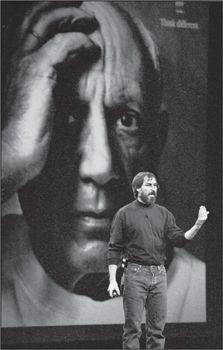
Призывая Пикассо
Here’s to the Crazy Ones
За безумцев
Lee Clow, the creative director at Chiat/Day who had done the great “1984” ad for the launch of the Macintosh, was driving in Los Angeles in early July 1997 when his car phone rang. It was Jobs. “Hi, Lee, this is Steve,” he said. “Guess what? Amelio just resigned. Can you come up here?”
Ли Клоу, креативный директор Chiat/Day, сделавший великую рекламу «1984» для запуска Macintosh, ехал в начале июля 1997 года по Лос-Анджелесу, когда зазвонил автомобильный телефон. Это был Джобс. «Привет, Ли, это Стив, — сказал он. — Угадай что? Амелио только что ушёл в отставку. Можешь приехать сюда?»
Apple was going through a review to select a new agency, and Jobs was not impressed by what he had seen. So he wanted Clow and his firm, by then called TBWA\Chiat\Day, to compete for the business. “We have to prove that Apple is still alive,” Jobs said, “and that it still stands for something special.”
Apple выбирала новое агентство, и увиденное Джобса не впечатлило. Он хотел, чтобы Клоу и его фирма — к тому времени TBWA\Chiat\Day — вступили в борьбу за заказ. «Мы должны доказать, что Apple ещё жива, — сказал Джобс, — и что она по-прежнему олицетворяет нечто особенное».
Clow said that he didn’t pitch for accounts. “You know our work,” he said. But Jobs begged him. It would be hard to reject all the others that were making pitches, including BBDO and Arnold Worldwide, and bring back “an old crony,” as Jobs put it. Clow agreed to fly up to Cupertino with something they could show. Recounting the scene years later, Jobs started to cry.
| pitch for accounts | участвовать в тендере за рекламный заказ |
| an old crony | старый приятель, свой человек |
Клоу сказал, что в тендерах за заказы не участвует. «Ты знаешь наши работы». Но Джобс упрашивал. Непросто было отвергнуть всех остальных претендентов — включая BBDO и Arnold Worldwide — и вернуть «старого приятеля», как выразился Джобс. Клоу согласился прилететь в Купертино с чем-нибудь на показ. Пересказывая эту сцену годы спустя, Джобс расплакался.
This chokes me up, this really chokes me up. It was so clear that Lee loved Apple so much. Here was the best guy in advertising. And he hadn’t pitched in ten years. Yet here he was, and he was pitching his heart out, because he loved Apple as much as we did. He and his team had come up with this brilliant idea, “Think Different.” And it was ten times better than anything the other agencies showed. It choked me up, and it still makes me cry to think about it, both the fact that Lee cared so much and also how brilliant his “Think Different” idea was. Every once in a while, I find myself in the presence of purity—purity of spirit and love—and I always cry. It always just reaches in and grabs me. That was one of those moments. There was a purity about that I will never forget. I cried in my office as he was showing me the idea, and I still cry when I think about it.
| chokes me up | у меня ком в горле; choke up — сдавливать горло от волнения |
| pitching his heart out | выкладывался всем сердцем |
| come up with | придумать, родить (идею) |
| in the presence of purity | рядом с чистотой; presence — присутствие |
У меня ком в горле, настоящий ком. Было так ясно, что Ли любит Apple. Лучший человек в рекламе — и он не участвовал в тендерах десять лет. А тут выкладывался всем сердцем, потому что любил Apple не меньше нас. Они с командой придумали блестящую идею — «Think Different» — в десять раз лучше всего, что показали другие агентства. У меня ком в горле, и до сих пор слёзы на глаза наворачиваются при мысли об этом: и от того, как Ли старался, и от блеска его идеи. Время от времени я оказываюсь рядом с чистотой — чистотой духа и любви — и всегда плачу. Это всегда достаёт до сердца и хватает за него. То был один из таких моментов. Была в этом чистота, которую я никогда не забуду. Я плакал в кабинете, пока он показывал идею, и всё ещё плачу, когда вспоминаю.
Jobs and Clow agreed that Apple was one of the great brands of the world, probably in the top five based on emotional appeal, but they needed to remind folks what was distinctive about it. So they wanted a brand image campaign, not a set of advertisements featuring products. It was designed to celebrate not what the computers could do, but what creative people could do with the computers. “This wasn’t about processor speed or memory,” Jobs recalled. “It was about creativity.” It was directed not only at potential customers, but also at Apple’s own employees: “We at Apple had forgotten who we were. One way to remember who you are is to remember who your heroes are. That was the genesis of that campaign.”
| emotional appeal | эмоциональная притягательность |
| distinctive | отличительный, особенный |
| brand image campaign | кампания об имидже бренда |
| genesis | зарождение, исток |
Джобс и Клоу согласились: Apple — один из великих мировых брендов, вероятно, в пятёрке по эмоциональной притягательности, но людям нужно напомнить, чем он отличен. Поэтому задумали кампанию об имидже бренда, а не набор рекламы с продуктами. Прославлять следовало не то, что могут компьютеры, а то, что творческие люди могут с их помощью. «Дело было не в скорости процессора или памяти, — вспоминал Джобс. — Дело было в творчестве». Кампания адресовалась не только покупателям, но и сотрудникам Apple: «Мы в Apple забыли, кто мы. Один из способов вспомнить, кто ты, — вспомнить, кто твои герои. Так родилась та кампания».
Clow and his team tried a variety of approaches that praised the “crazy ones” who “think different.” They did one video with the Seal song “Crazy” (“We’re never gonna survive unless we get a little crazy”), but couldn’t get the rights to it. Then they tried versions using a recording of Robert Frost reading “The Road Not Taken” and of Robin Williams’s speeches from Dead Poets Society. Eventually they decided they needed to write their own text; their draft began, “Here’s to the crazy ones.”
| the crazy ones | «безумцы» — те, кто мыслит нестандартно |
| get the rights to it | получить права на использование |
Клоу с командой перебрали разные подходы, воспевающие «безумцев», которые «мыслят иначе». Сделали ролик с песней Сила «Crazy» («Нам не выжить, если немного не сойти с ума»), но права получить не удалось. Потом пробовали версии с записью Роберта Фроста, читающего «Неизбранную дорогу», и с речами Робина Уильямса из «Общества мёртвых поэтов». В итоге решили написать собственный текст; черновик начинался со слов «За безумцев».
Jobs was as demanding as ever. When Clow’s team flew up with a version of the text, he exploded at the young copywriter. “This is shit!” he yelled. “It’s advertising agency shit and I hate it.” It was the first time the young copywriter had met Jobs, and he stood there mute. He never went back. But those who could stand up to Jobs, including Clow and his teammates Ken Segall and Craig Tanimoto, were able to work with him to create a tone poem that he liked. In its original sixty-second version it read:
| copywriter | копирайтер, автор рекламных текстов |
| stand up to | выстоять перед, не прогнуться под |
| a tone poem | поэма в прозе (о тексте с особым ритмом) |
Джобс был требователен как всегда. Когда команда Клоу прилетела с версией текста, он взорвался на молодого копирайтера: «Это дерьмо! Рекламно- агентское дерьмо, ненавижу». Тот впервые видел Джобса и стоял безъязыкий. Больше он не возвращался. Но те, кто умел выстоять перед Джобсом, — Клоу и его коллеги Кен Сигалл и Крейг Танимото — смогли сделать вместе с ним поэму в прозе, которая ему понравилась. В исходной шестидесятисекундной версии она звучала так:
Here’s to the crazy ones. The misfits. The rebels. The troublemakers. The round pegs in the square holes. The ones who see things differently. They’re not fond of rules. And they have no respect for the status quo. You can quote them, disagree with them, glorify or vilify them. About the only thing you can’t do is ignore them. Because they change things. They push the human race forward. And while some may see them as the crazy ones, we see genius. Because the people who are crazy enough to think they can change the world are the ones who do.
| the misfits | неприкаянные, не вписавшиеся в рамки |
| round pegs in the square holes | круглые колышки в квадратных отверстиях — люди не на своём месте |
| the status quo | существующий порядок, статус-кво |
| vilify | очернять, проклинать |
За безумцев. Неприкаянных. Бунтарей. Возмутителей спокойствия. Круглые колышки в квадратных отверстиях. Тех, кто видит мир иначе. Они не жалуют правила. И не уважают статус-кво. Их можно цитировать, не соглашаться с ними, прославлять или проклинать. Единственное, чего нельзя, — игнорировать их. Потому что они меняют мир. Двигают человечество вперёд. И пусть одни видят в них безумцев — мы видим гениев. Потому что лишь те, кто достаточно безумен, чтобы верить, что изменит мир, — действительно его меняют.
Jobs, who could identify with each of those sentiments, wrote some of the lines himself, including “They push the human race forward.” By the time of the Boston Macworld in early August, they had produced a rough version. They agreed it was not ready, but Jobs used the concepts, and the “think different” phrase, in his keynote speech there. “There’s a germ of a brilliant idea there,” he said at the time. “Apple is about people who think outside the box, who want to use computers to help them change the world.”
| identify with | узнавать себя в, отождествлять себя с |
| a germ of a brilliant idea | зародыш блестящей идеи |
| think outside the box | мыслить вне рамок, нестандартно |
Джобс, узнававший себя в каждой из этих строк, написал часть сам — в том числе «Они двигают человечество вперёд». К бостонскому Macworld в начале августа сделали черновую версию. Согласились, что она не готова, но концепции и фразу «think different» Джобс использовал в докладе. «Там зародыш блестящей идеи, — сказал он тогда. — Apple — о людях, мыслящих вне рамок, желающих с помощью компьютеров изменить мир».
They debated the grammatical issue: If “different” was supposed to modify the verb “think,” it should be an adverb, as in “think differently.” But Jobs insisted that he wanted “different” to be used as a noun, as in “think victory” or “think beauty.” Also, it echoed colloquial use, as in “think big.” Jobs later explained, “We discussed whether it was correct before we ran it. It’s grammatical, if you think about what we’re trying to say. It’s not think the same, it’s think different. Think a little different, think a lot different, think different. ‘Think differently’ wouldn’t hit the meaning for me.”
| adverb | наречие |
| echoed colloquial use | перекликалось с разговорным употреблением |
| hit the meaning | попадать в смысл, точно выражать |
Спорили о грамматике: если «different» определяет глагол «think», нужно наречие — «think differently». Но Джобс настаивал: «different» должно работать как существительное, как в оборотах «think victory» или «think beauty». К тому же это перекликалось с разговорным «think big». Позже Джобс объяснял: «Мы обсуждали правильность до запуска. Это грамматично, если вдуматься в смысл. Речь не о том, чтобы мыслить одинаково, а о том, чтобы мыслить иначе. Мыслить немного иначе, мыслить сильно иначе, мыслить иначе. „Мыслить ина́че“ не попадало бы для меня в смысл».
In order to evoke the spirit of Dead Poets Society, Clow and Jobs wanted to get Robin Williams to read the narration. His agent said that Williams didn’t do ads, so Jobs tried to call him directly. He got through to Williams’s wife, who would not let him talk to the actor because she knew how persuasive he could be. They also considered Maya Angelou and Tom Hanks. At a fund-raising dinner featuring Bill Clinton that fall, Jobs pulled the president aside and asked him to telephone Hanks to talk him into it, but the president pocket-vetoed the request. They ended up with Richard Dreyfuss, who was a dedicated Apple fan.
| evoke the spirit of | вызвать дух, атмосферу |
| the narration | закадровый текст, озвучка |
| pocket-vetoed | молчаливо «завернул» (по аналогии с «карманным вето» президента) |
Ради духа «Общества мёртвых поэтов» Клоу и Джобс хотели, чтобы текст прочитал Робин Уильямс. Его агент сказал, что Уильямс в рекламе не снимается, и Джобс попробовал позвонить ему напрямую. Дозвонился до жены актёра — та не дала трубку мужу, зная, как он умеет убеждать. Обдумывали также Майю Энджелоу и Тома Хэнкса. На благотворительном ужине с Биллом Клинтоном той осенью Джобс отвёл президента в сторону и попросил позвонить Хэнксу и уговорить его, но президент молчаливо «завернул» просьбу. В итоге взяли Ричарда Дрейфуса, преданного поклонника Apple.
In addition to the television commercials, they created one of the most memorable print campaigns in history. Each ad featured a black-and-white portrait of an iconic historical figure with just the Apple logo and the words “Think Different” in the corner. Making it particularly engaging was that the faces were not captioned. Some of them—Einstein, Gandhi, Lennon, Dylan, Picasso, Edison, Chaplin, King—were easy to identify. But others caused people to pause, puzzle, and maybe ask a friend to put a name to the face: Martha Graham, Ansel Adams, Richard Feynman, Maria Callas, Frank Lloyd Wright, James Watson, Amelia Earhart.
| iconic historical figure | знаковая историческая фигура |
| were not captioned | не были подписаны; caption — подпись под изображением |
| pause, puzzle | замереть, поломать голову |
Вдобавок к телерекламе создали одну из самых запоминающихся печатных кампаний в истории. Каждый макет — чёрно-белый портрет знаковой исторической фигуры, в углу лишь логотип Apple и слова «Think Different». Особую увлекательность придавало то, что лица не подписывали. Кого-то — Эйнштейна, Ганди, Леннона, Дилана, Пикассо, Эдисона, Чаплина, Кинга — узнавали легко. Другие заставляли замереть, поломать голову, а то и спросить друга, чьё это лицо: Марта Грэм, Ансель Адамс, Ричард Фейнман, Мария Каллас, Фрэнк Ллойд Райт, Джеймс Уотсон, Амелия Эрхарт.
Most were Jobs’s personal heroes. They tended to be creative people who had taken risks, defied failure, and bet their career on doing things in a different way. A photography buff, he became involved in making sure they had the perfect iconic portraits. “This is not the right picture of Gandhi,” he erupted to Clow at one point. Clow explained that the famous Margaret Bourke-White photograph of Gandhi at the spinning wheel was owned by Time-Life Pictures and was not available for commercial use. So Jobs called Norman Pearlstine, the editor in chief of Time Inc., and badgered him into making an exception. He called Eunice Shriver to convince her family to release a picture that he loved, of her brother Bobby Kennedy touring Appalachia, and he talked to Jim Henson’s children personally to get the right shot of the late Muppeteer.
| defied failure | бросали вызов неудаче, не боялись её |
| bet their career on | ставили карьеру на то, чтобы |
| badgered him into | уломал его на; badger — донять, дожать |
| Muppeteer | кукольник (создатель «Маппетов») |
Большинство были личными героями Джобса. Как правило, творческие люди, рисковавшие, не боявшиеся неудач и ставившие карьеру на то, чтобы делать всё иначе. Сам фотолюбитель, он вникал, чтобы портреты были идеальны. «Это не тот портрет Ганди», — взорвался он однажды при Клоу. Тот объяснил: знаменитый снимок Ганди за прялкой, сделанный Маргарет Бурк-Уайт, принадлежит Time-Life Pictures и для коммерческого использования недоступен. Тогда Джобс позвонил Норману Пёрлстайну, главреду Time Inc., и уломал сделать исключение. Звонил Юнис Шрайвер, чтобы её семья разрешила использовать любимый им кадр её брата Бобби Кеннеди в Аппалачах, и лично говорил с детьми Джима Хенсона, чтобы добыть нужный снимок покойного кукольника.
He likewise called Yoko Ono for a picture of her late husband, John Lennon. She sent him one, but it was not Jobs’s favorite. “Before it ran, I was in New York, and I went to this small Japanese restaurant that I love, and let her know I would be there,” he recalled. When he arrived, she came over to his table. “This is a better one,” she said, handing him an envelope. “I thought I would see you, so I had this with me.” It was the classic photo of her and John in bed together, holding flowers, and it was the one that Apple ended up using. “I can see why John fell in love with her,” Jobs recalled.
Так же он позвонил Йоко Оно за снимком покойного мужа Джона Леннона. Она прислала один, но не тот, что Джобс любил больше всего. «Перед выходом рекламы я был в Нью-Йорке, зашёл в любимый маленький японский ресторанчик и дал ей знать, что буду там, — вспоминал он. — Когда я пришёл, она подошла к моему столику. „Вот этот лучше“, — сказала она, протягивая конверт. „Я догадывалась, что увижу вас, и взяла с собой“». То был классический кадр: они с Джоном в постели, с цветами. Именно его Apple и использовала. «Понимаю, почему Джон влюбился в неё», — вспоминал Джобс.
The narration by Richard Dreyfuss worked well, but Lee Clow had another idea. What if Jobs did the voice-over himself? “You really believe this,” Clow told him. “You should do it.” So Jobs sat in a studio, did a few takes, and soon produced a voice track that everyone liked. The idea was that, if they used it, they would not tell people who was speaking the words, just as they didn’t caption the iconic pictures. Eventually people would figure out it was Jobs. “This will be really powerful to have it in your voice,” Clow argued. “It will be a way to reclaim the brand.”
| voice-over | закадровый голос, озвучка |
| did a few takes | сделал несколько дублей; take — дубль |
| reclaim the brand | вернуть себе бренд |
Закадровый текст Дрейфуса звучал хорошо, но у Ли Клоу возникла другая мысль: а что если озвучит сам Джобс? «Ты в это по-настоящему веришь, — сказал Клоу. — Ты и должен читать». Джобс сел в студии, сделал несколько дублей и выдал дорожку, которая всем понравилась. Замысел: не сообщать, чей голос, — как не подписывали портреты. Со временем люди догадаются, что это Джобс. «В твоём голосе это будет очень сильно, — убеждал Клоу. — Так можно вернуть себе бренд».
Jobs couldn’t decide whether to use the version with his voice or to stick with Dreyfuss. Finally, the night came when they had to ship the ad; it was due to air, appropriately enough, on the television premiere of Toy Story. As was often the case, Jobs did not like to be forced to make a decision. He told Clow to ship both versions; this would give him until the morning to decide. When morning came, Jobs called and told them to use the Dreyfuss version. “If we use my voice, when people find out they will say it’s about me,” he told Clow. “It’s not. It’s about Apple.”
| ship the ad | отправить ролик (в эфир); ship — выпустить |
| due to air | должен выйти в эфир |
Джобс не мог решить: свой голос или Дрейфус. Наконец настала ночь, когда ролик надо было отправлять: его должны были показать — как нельзя более кстати — в телепремьере «Истории игрушек». Как часто бывало, Джобс не любил, когда его вынуждают решать. Он велел Клоу отправить обе версии — это давало время до утра. Утром позвонил: ставьте Дрейфуса. «Если пойдёт мой голос, люди, узнав, скажут, что это про меня, — сказал он Клоу. — А это не так. Это про Apple».
Ever since he left the apple commune, Jobs had defined himself, and by extension Apple, as a child of the counterculture. In ads such as “Think Different” and “1984,” he positioned the Apple brand so that it reaffirmed his own rebel streak, even after he became a billionaire, and it allowed other baby boomers and their kids to do the same. “From when I first met him as a young guy, he’s had the greatest intuition of the impact he wants his brand to have on people,” said Clow.
| by extension | а вместе с собой, как следствие |
| counterculture | контркультура |
| rebel streak | бунтарская жилка |
| baby boomers | беби-бумеры (поколение 1946–1964) |
С тех пор как Джобс покинул яблочную коммуну, он определял себя — а вместе с собой и Apple — как дитя контркультуры. Рекламой вроде «Think Different» и «1984» он позиционировал бренд Apple так, что тот подтверждал его собственную бунтарскую жилку, — даже когда он стал миллиардером — и позволял то же самое другим беби-бумерам и их детям. «С первой встречи, когда он был ещё молодым, у него величайшее чутьё на то, какое воздействие его бренд должен оказывать на людей», — говорил Клоу.
Very few other companies or corporate leaders—perhaps none—could have gotten away with the brilliant audacity of associating their brand with Gandhi, Einstein, Picasso, and the Dalai Lama. Jobs was able to encourage people to define themselves as anticorporate, creative, innovative rebels simply by the computer they used. “Steve created the only lifestyle brand in the tech industry,” Larry Ellison said. “There are cars people are proud to have—Porsche, Ferrari, Prius—because what I drive says something about me. People feel the same way about an Apple product.”
| gotten away with | сошло бы с рук; get away with — остаться безнаказанным |
| audacity | дерзость, наглость |
| a lifestyle brand | бренд-стиль жизни, лайфстайл-бренд |
Мало какие компании или лидеры — пожалуй, никто — сошли бы с рук такая блестящая дерзость: связать свой бренд с Ганди, Эйнштейном, Пикассо и далай-ламой. Джобс сумел побудить людей определять себя как антикорпоративных, творческих, инновационных бунтарей — просто по компьютеру, которым они пользуются. «Стив создал единственный лайфстайл- бренд в технологической индустрии, — говорил Ларри Эллисон. — Есть машины, которыми гордятся, — Porsche, Ferrari, Prius, — потому что то, на чём я езжу, что-то говорит обо мне. С продуктом Apple люди чувствуют то же».
Starting with the “Think Different” campaign, and continuing through the rest of his years at Apple, Jobs held a freewheeling three-hour meeting every Wednesday afternoon with his top agency, marketing, and communications people to kick around messaging strategy. “There’s not a CEO on the planet who deals with marketing the way Steve does,” said Clow. “Every Wednesday he approves each new commercial, print ad, and billboard.” At the end of the meeting, he would often take Clow and his two agency colleagues, Duncan Milner and James Vincent, to Apple’s closely guarded design studio to see what products were in the works. “He gets very passionate and emotional when he shows us what’s in development,” said Vincent. By sharing with his marketing gurus his passion for the products as they were being created, he was able to ensure that almost every ad they produced was infused with his emotion.
| freewheeling | свободное, непринуждённое |
| kick around messaging strategy | обсудить стратегию посланий; kick around — перебрасываться идеями |
| billboard | рекламный щит |
| infused with | пропитана, наполнена |
Начиная с кампании «Think Different» и до конца своих лет в Apple Джобс каждую среду после обеда проводил свободное трёхчасовое совещание с лучшими людьми из агентства, маркетинга и коммуникаций — обсудить стратегию посланий. «Нет на планете CEO, который занимался бы маркетингом так, как Стив, — говорил Клоу. — Каждую среду он утверждает каждый новый ролик, печатный макет и щит». В конце совещания он часто вёл Клоу и его коллег по агентству — Данкана Милнера и Джеймса Винсента — в строго охраняемую дизайн-студию Apple показать, какие продукты в работе. «Он очень увлекается и волнуется, показывая, что в разработке», — говорил Винсент. Делясь с маркетинговыми гуру страстью к продуктам в процессе создания, он добивался, чтобы почти каждая их реклама была пропитана его эмоцией.
iCEO
иСЕО
As he was finishing work on the “Think Different” ad, Jobs did some different thinking of his own. He decided that he would officially take over running the company, at least on a temporary basis. He had been the de facto leader since Amelio’s ouster ten weeks earlier, but only as an advisor. Fred Anderson had the titular role of interim CEO. On September 16, 1997, Jobs announced that he would take over that h1, which inevitably got abbreviated as iCEO. His commitment was tentative: He took no salary and signed no contract. But he was not tentative in his actions. He was in charge, and he did not rule by consensus.
| h1 | титул (в источнике — опечатка OCR, «title») |
Заканчивая работу над роликом «Think Different», Джобс немного иначе помыслил и о себе: решил официально взять на себя управление компанией — хотя бы временно. Он был фактическим лидером с момента изгнания Амелио десятью неделями раньше, но лишь как советник. Титул временного CEO носил Фред Андерсон. 16 сентября 1997 года Джобс объявил, что берёт этот титул себе — его неизбежно сократили до iCEO. Обязательство было условным: ни зарплаты, ни контракта. Но в действиях условности не было. Он был у руля и не правил на основе консенсуса.
That week he gathered his top managers and staff in the Apple auditorium for a rally, followed by a picnic featuring beer and vegan food, to celebrate his new role and the company’s new ads. He was wearing shorts, walking around the campus barefoot, and had a stubble of beard. “I’ve been back about ten weeks, working really hard,” he said, looking tired but deeply determined. “What we’re trying to do is not highfalutin. We’re trying to get back to the basics of great products, great marketing, and great distribution. Apple has drifted away from doing the basics really well.”
| rally | митинг, собрание |
| a stubble of beard | щетина |
| highfalutin | высокопарный, напыщенный |
| drifted away from | ушла в сторону от |
На той неделе он собрал топ-менеджеров и сотрудников в аудитории Apple на митинг, а после — пикник с пивом и веганской едой, отметить новую роль и новую рекламу. Он был в шортах, ходил по кампусу босиком, со щетиной. «Я вернулся около десяти недель назад и работаю очень напряжённо, — сказал он, усталый, но полный решимости. — То, что мы пытаемся сделать, не высокопарно. Мы пытаемся вернуться к основам: великие продукты, великий маркетинг, великая дистрибуция. Apple ушла от умения делать основы по-настоящему хорошо».
For a few more weeks Jobs and the board kept looking for a permanent CEO. Various names surfaced—George M. C. Fisher of Kodak, Sam Palmisano at IBM, Ed Zander at Sun Microsystems—but most of the candidates were understandably reluctant to consider becoming CEO if Jobs was going to remain an active board member. The San Francisco Chronicle reported that Zander declined to be considered because he “didn’t want Steve looking over his shoulder, second-guessing him on every decision.” At one point Jobs and Ellison pulled a prank on a clueless computer consultant who was campaigning for the job; they sent him an email saying that he had been selected, which caused both amusement and embarrassment when stories appeared in the papers that they were just toying with him.
| surfaced | всплывали (о кандидатурах) |
| looking over his shoulder | дышал в затылок, следил из-за плеча |
| second-guessing | оспаривая задним числом |
| pulled a prank on | разыграли; prank — розыгрыш |
| toying with him | потешались над ним |
Ещё несколько недель Джобс и совет искали постоянного CEO. Всплывали разные имена — Джордж Фишер из Kodak, Сэм Палмизано из IBM, Эд Зандер из Sun Microsystems, — но большинство кандидатов по понятным причинам не рвались на пост, если Джобс останется активным членом совета. San Francisco Chronicle писала, что Зандер отказался, потому что «не хотел, чтобы Стив дышал в затылок и оспаривал каждое решение». Однажды Джобс и Эллисон разыграли бестолкового компьютерного консультанта, агитировавшего за свою кандидатуру: послали ему письмо, что он выбран, — вышло и забавно, и неловко, когда в газетах появились истории, что над ним просто потешались.
By December it had become clear that Jobs’s iCEO status had evolved from interim to indefinite. As Jobs continued to run the company, the board quietly deactivated its search. “I went back to Apple and tried to hire a CEO, with the help of a recruiting agency, for almost four months,” he recalled. “But they didn’t produce the right people. That’s why I finally stayed. Apple was in no shape to attract anybody good.”
| interim | временный |
| indefinite | бессрочный, без оговоренного срока |
| deactivated its search | свернул поиски |
| in no shape to | не в том состоянии, чтобы |
К декабрю стало ясно: статус iCEO у Джобса эволюционировал из «временного» в «бессрочный». Пока он руководил, совет тихо свернул поиски. «Вернувшись в Apple, я почти четыре месяца пытался нанять CEO с помощью кадрового агентства, — вспоминал он. — Но нужных людей оно не находило. Поэтому в итоге я остался. Apple была не в том состоянии, чтобы привлечь кого-то хорошего».
The problem Jobs faced was that running two companies was brutal. Looking back on it, he traced his health problems back to those days:
Проблема была в том, что руководить двумя компаниями — зверски тяжело. Оглядываясь назад, он возводил свои проблемы со здоровьем к тем дням:
It was rough, really rough, the worst time in my life. I had a young family. I had Pixar. I would go to work at 7 a.m. and I’d get back at 9 at night, and the kids would be in bed. And I couldn’t speak, I literally couldn’t, I was so exhausted. I couldn’t speak to Laurene. All I could do was watch a half hour of TV and vegetate. It got close to killing me. I was driving up to Pixar and down to Apple in a black Porsche convertible, and I started to get kidney stones. I would rush to the hospital and the hospital would give me a shot of Demerol in the butt and eventually I would pass it.
| vegetate | отключиться, прозябать «овощем» |
| kidney stones | камни в почках |
| pass it | камень выходил; pass — выйти (о камне) |
Было тяжело, по-настоящему тяжело — худшее время в моей жизни. Молодая семья. Pixar. Я уходил на работу в семь утра, возвращался в девять вечера, дети уже спали. И я не мог говорить — буквально не мог, так выматывался. Не мог говорить с Лорин. Мог лишь полчаса посмотреть телевизор и отключиться. Это меня чуть не убило. Я ездил вверх в Pixar и вниз в Apple на чёрном кабриолете Porsche, и у меня начались камни в почках. Мчался в больницу, мне делали укол демерола в ягодицу, и рано или поздно камень выходил.
Despite the grueling schedule, the more that Jobs immersed himself in Apple, the more he realized that he would not be able to walk away. When Michael Dell was asked at a computer trade show in October 1997 what he would do if he were Steve Jobs and taking over Apple, he replied, “I’d shut it down and give the money back to the shareholders.” Jobs fired off an email to Dell. “CEOs are supposed to have class,” it said. “I can see that isn’t an opinion you hold.” Jobs liked to stoke up rivalries as a way to rally his team—he had done so with IBM and Microsoft—and he did so with Dell. When he called together his managers to institute a build-to-order system for manufacturing and distribution, Jobs used as a backdrop a blown-up picture of Michael Dell with a target on his face. “We’re coming after you, buddy,” he said to cheers from his troops.
| grueling | изматывающий, выматывающий |
| fired off an email | отправил резкое письмо; fire off — выпалить |
| stoke up rivalries | разжигать соперничество |
| build-to-order | сборка под заказ |
Несмотря на изматывающий график, чем глубже Джобс погружался в Apple, тем яснее понимал: уйти не сможет. Когда Майкла Делла на компьютерной выставке в октябре 1997-го спросили, что он сделал бы на месте Стива Джобса, перенимающего Apple, тот ответил: «Закрыл бы её и вернул деньги акционерам». Джобс отправил Деллу едкое письмо: «CEO положено иметь класс. Вижу, вы этого мнения не разделяете». Джобс любил разжигать соперничество, чтобы сплотить команду, — так было с IBM и Microsoft, так стало и с Dell. Созывая менеджеров вводить систему сборки под заказ в производстве и дистрибуции, он повесил как фон увеличенный портрет Майкла Делла с мишенью на лице. «Мы идём за тобой, приятель», — сказал он под одобрительные крики войск.
One of his motivating passions was to build a lasting company. At age twelve, when he got a summer job at Hewlett-Packard, he learned that a properly run company could spawn innovation far more than any single creative individual. “I discovered that the best innovation is sometimes the company, the way you organize a company,” he recalled. “The whole notion of how you build a company is fascinating. When I got the chance to come back to Apple, I realized that I would be useless without the company, and that’s why I decided to stay and rebuild it.”
| spawn innovation | порождать инновации |
| the whole notion | сама идея, представление |
| rebuild it | отстроить заново |
Одна из движущих страстей — построить долговечную компанию. В двенадцать лет, устроившись на лето в Hewlett-Packard, он понял: правильно управляемая компания порождает инновации куда лучше любого одиночки- творца. «Я открыл, что лучшей инновацией иногда бывает сама компания, то, как ты её организуешь, — вспоминал он. — Сама идея того, как строить компанию, завораживает. Получив шанс вернуться в Apple, я понял, что без компании бесполезен, — и потому решил остаться и отстроить её заново».
Killing the Clones
Убийство клонов
One of the great debates about Apple was whether it should have licensed its operating system more aggressively to other computer makers, the way Microsoft licensed Windows. Wozniak had favored that approach from the beginning. “We had the most beautiful operating system,” he said, “but to get it you had to buy our hardware at twice the price. That was a mistake. What we should have done was calculate an appropriate price to license the operating system.” Alan Kay, the star of Xerox PARC who came to Apple as a fellow in 1984, also fought hard for licensing the Mac OS software. “Software people are always multiplatform, because you want to run on everything,” he recalled. “And that was a huge battle, probably the largest battle I lost at Apple.”
| licensed its operating system | лицензировала свою операционную систему |
| multiplatform | многоплатформенный |
Один из великих споров об Apple: следовало ли ей агрессивнее лицензировать свою операционную систему другим производителям компьютеров, как Microsoft лицензировала Windows. Возняк поддерживал такой подход с самого начала. «У нас была красивейшая операционная система, — говорил он, — но чтобы её получить, приходилось покупать наше железо вдвое дороже. Это была ошибка. Нужно было рассчитать разумную цену лицензии». Алан Кей, звезда Xerox PARC, пришедший в Apple в 1984 году, тоже отчаянно бился за лицензирование Mac OS. «Софтверщики всегда за многоплатформенность, потому что хочется работать на всём, — вспоминал он. — И это была огромная битва, пожалуй, крупнейшая из проигранных мной в Apple».
Bill Gates, who was building a fortune by licensing Microsoft’s operating system, had urged Apple to do the same in 1985, just as Jobs was being eased out. Gates believed that, even if Apple took away some of Microsoft’s operating system customers, Microsoft could make money by creating versions of its applications software, such as Word and Excel, for the users of the Macintosh and its clones. “I was trying to do everything to get them to be a strong licensor,” he recalled. He sent a formal memo to Sculley making the case. “The industry has reached the point where it is now impossible for Apple to create a standard out of their innovative technology without support from, and the resulting credibility of, other personal computer manufacturers,” he argued. “Apple should license Macintosh technology to 3–5 significant manufacturers for the development of ‘Mac Compatibles.’” Gates got no reply, so he wrote a second memo suggesting some companies that would be good at cloning the Mac, and he added, “I want to help in any way I can with the licensing. Please give me a call.”
| a strong licensor | сильный лицензиар (продавец лицензий) |
| making the case | обосновывая, приводя доводы |
| credibility | доверие, весомость |
Билл Гейтс, сколачивавший состояние на лицензировании системы Microsoft, призывал Apple к тому же ещё в 1985 году — как раз когда Джобса вытесняли. Гейтс считал: даже если Apple отнимет у Microsoft часть покупателей системы, Microsoft заработает на версиях своих приложений — Word и Excel — для пользователей Macintosh и его клонов. «Я старался сделать всё, чтобы они стали сильным лицензиаром», — вспоминал он. Он отправил Скалли официальную записку с обоснованием: «Индустрия дошла до точки, где Apple уже невозможно создать стандарт из своей инновационной технологии без поддержки — и вытекающего доверия — других производителей персональных компьютеров. Apple следует лицензировать технологию Macintosh трём–пяти значимым производителям для выпуска „Mac- совместимых“». Ответа Гейтс не получил, написал вторую записку с предложением компаний, которым удались бы клоны Mac, и добавил: «Хочу помочь с лицензированием всем, чем смогу. Позвоните мне».
Apple resisted licensing out the Macintosh operating system until 1994, when CEO Michael Spindler allowed two small companies, Power Computing and Radius, to make Macintosh clones. When Gil Amelio took over in 1996, he added Motorola to the list. It turned out to be a dubious business strategy: Apple got an $80 licensing fee for each computer sold, but instead of expanding the market, the cloners cannibalized the sales of Apple’s own high-end computers, on which it made up to $500 in profit.
| clones | клоны (совместимые копии) |
| a dubious business strategy | сомнительная деловая стратегия |
| cannibalized the sales | съедали продажи; cannibalize — пожирать собственные продажи |
Apple противилась лицензированию Mac OS до 1994 года, когда CEO Майкл Шпиндлер разрешил двум небольшим компаниям, Power Computing и Radius, делать клоны Macintosh. Пришедший в 1996-м Гил Амелио добавил к списку Motorola. Стратегия оказалась сомнительной: за каждый проданный компьютер Apple получала лицензионные $80, но вместо расширения рынка клоновщики съедали продажи собственных топовых компьютеров Apple, на которых она зарабатывала до $500 прибыли.
Jobs’s objections to the cloning program were not just economic, however. He had an inbred aversion to it. One of his core principles was that hardware and software should be tightly integrated. He loved to control all aspects of his life, and the only way to do that with computers was to take responsibility for the user experience from end to end.
| inbred aversion | врождённое отвращение |
| tightly integrated | тесно интегрированы |
| from end to end | от начала до конца, целиком |
Возражения Джобса против программы клонов были не только экономическими. Он питал к ней врождённое отвращение. Один из его главных принципов: железо и софт должны быть тесно интегрированы. Он любил контролировать все стороны своей жизни — и с компьютерами это возможно, лишь отвечая за пользовательский опыт от начала до конца.
So upon his return to Apple he made killing the Macintosh clones a priority. When a new version of the Mac operating system shipped in July 1997, weeks after he had helped oust Amelio, Jobs did not allow the clone makers to upgrade to it. The head of Power Computing, Stephen “King” Kahng, organized pro-cloning protests when Jobs appeared at Boston Macworld that August and publicly warned that the Macintosh OS would die if Jobs declined to keep licensing it out. “If the platform goes closed, it is over,” Kahng said. “Total destruction. Closed is the kiss of death.”
| oust | изгнать, сместить |
| the kiss of death | поцелуй смерти, гибель |
Поэтому по возвращении в Apple он сделал уничтожение клонов Macintosh приоритетом. Когда в июле 1997-го — через несколько недель после того, как он помог изгнать Амелио, — вышла новая версия Mac OS, Джобс не позволил клоновщикам на неё обновиться. Глава Power Computing Стивен «Кинг» Канг организовал акции в защиту клонирования на бостонском Macworld в августе и публично предупреждал: Mac OS умрёт, если Джобс перестанет её лицензировать. «Закроете платформу — всё, конец. Полное уничтожение. Закрытость — поцелуй смерти», — говорил Канг.
Jobs disagreed. He telephoned Ed Woolard to say he was getting Apple out of the licensing business. The board acquiesced, and in September he reached a deal to pay Power Computing $100 million to relinquish its license and give Apple access to its database of customers. He soon terminated the licenses of the other cloners as well. “It was the dumbest thing in the world to let companies making crappier hardware use our operating system and cut into our sales,” he later said.
| acquiesced | уступил, молча согласился |
| relinquish its license | отказаться от лицензии |
| crappier hardware | более дрянное железо |
| cut into our sales | отъедать наши продажи |
Джобс не согласился. Он позвонил Эду Вуларду: Apple выходит из бизнеса лицензирования. Совет уступил, и в сентябре он договорился заплатить Power Computing 100 миллионов за отказ от лицензии и доступ Apple к базе её клиентов. Вскоре он разорвал лицензии и остальных клоновщиков. «Глупее некуда было позволять компаниям, делающим более дрянное железо, использовать нашу систему и отъедать наши продажи», — говорил он позже.
Product Line Review
Ревизия продуктовой линейки
One of Jobs’s great strengths was knowing how to focus. “Deciding what not to do is as important as deciding what to do,” he said. “That’s true for companies, and it’s true for products.”
| knowing how to focus | умение фокусироваться |
| deciding what not to do | решить, чего не делать |
Одна из великих сильных сторон Джобса — умение фокусироваться. «Решить, чего не делать, так же важно, как решить, что делать, — говорил он. — Это верно для компаний и верно для продуктов».
He went to work applying this principle as soon as he returned to Apple. One day he was walking the halls and ran into a young Wharton School graduate who had been Amelio’s assistant and who said he was wrapping up his work. “Well, good, because I need someone to do grunt work,” Jobs told him. His new role was to take notes as Jobs met with the dozens of product teams at Apple, asked them to explain what they were doing, and forced them to justify going ahead with their products or projects.
| ran into | столкнулся с |
| wrapping up his work | сворачивая свою работу; wrap up — завершать |
| grunt work | черновая, рутинная работа |
| justify | оправдать, обосновать |
Применять этот принцип он начал сразу по возвращении. Однажды в коридоре он столкнулся с молодым выпускником Уортонской школы, бывшим помощником Амелио; тот сказал, что сворачивает свои дела. «Вот и славно, потому что мне нужен кто-то для черновой работы», — сказал ему Джобс. Новая роль: вести записи, пока Джобс встречается с десятками продуктовых команд Apple, просит их объяснить, чем они заняты, и заставляет оправдывать продолжение их продуктов и проектов.
He also enlisted a friend, Phil Schiller, who had worked at Apple but was then at the graphics software company Macromedia. “Steve would summon the teams into the boardroom, which seats twenty, and they would come with thirty people and try to show PowerPoints, which Steve didn’t want to see,” Schiller recalled. One of the first things Jobs did during the product review process was ban PowerPoints. “I hate the way people use slide presentations instead of thinking,” Jobs later recalled. “People would confront a problem by creating a presentation. I wanted them to engage, to hash things out at the table, rather than show a bunch of slides. People who know what they’re talking about don’t need PowerPoint.”
| enlisted | привлёк, завербовал |
| summon | вызывать |
| ban PowerPoints | запретить презентации PowerPoint |
| hash things out | разбирать всё, обсудить до сути |
Он привлёк и друга Фила Шиллера, работавшего в Apple, а тогда — в графической компании Macromedia. «Стив вызывал команды в зал совета на двадцать мест, а приходило тридцать человек с попытками показывать презентации, чего Стив видеть не хотел», — вспоминал Шиллер. Одним из первых дел Джобса на ревизии стал запрет презентаций. «Ненавижу, как люди используют слайды вместо мышления, — вспоминал он. — Люди брались за проблему, создавая презентацию. Я хотел, чтобы они включались и разбирали всё за столом, а не показывали кучу слайдов. Тот, кто понимает, о чём говорит, в PowerPoint не нуждается».
The product review revealed how unfocused Apple had become. The company was churning out multiple versions of each product because of bureaucratic momentum and to satisfy the whims of retailers. “It was insanity,” Schiller recalled. “Tons of products, most of them crap, done by deluded teams.” Apple had a dozen versions of the Macintosh, each with a different confusing number, ranging from 1400 to 9600. “I had people explaining this to me for three weeks,” Jobs said. “I couldn’t figure it out.” He finally began asking simple questions, like, “Which ones do I tell my friends to buy?”
| churning out | штамповала, выпускала потоком |
| bureaucratic momentum | инерция бюрократии |
| the whims of retailers | прихоти ритейлеров |
| deluded teams | заблудшие команды |
Ревизия показала, насколько Apple потеряла фокус. Компания штамповала множество версий каждого продукта — по инерции бюрократии и в угоду прихотям ритейлеров. «Это было безумие, — вспоминал Шиллер. — Тонны продуктов, по большей части мусор, сделанный заблудшими командами». У Apple была дюжина версий Macintosh, каждая с запутанным номером — от 1400 до 9600. «Мне три недели это объясняли, — говорил Джобс. — Я не мог разобраться». Наконец он начал задавать простые вопросы, вроде: «Какую из них посоветовать купить друзьям?»
When he couldn’t get simple answers, he began slashing away at models and products. Soon he had cut 70% of them. “You are bright people,” he told one group. “You shouldn’t be wasting your time on such crappy products.” Many of the engineers were infuriated at his slash-and-burn tactics, which resulted in massive layoffs. But Jobs later claimed that the good engineers, including some whose projects were killed, were appreciative. He told one staff meeting in September 1997, “I came out of the meeting with people who had just gotten their products canceled and they were three feet off the ground with excitement because they finally understood where in the heck we were going.”
| slashing away at | кромсать, безжалостно урезать |
| slash-and-burn tactics | тактика выжженной земли |
| layoffs | увольнения, сокращения |
| three feet off the ground | парили на метр над землёй (от радости) |
Не получая простых ответов, он начал кромсать модели и продукты. Вскоре сократил 70% из них. «Вы умные люди, — сказал он одной группе. — Не стоит тратить время на такие дрянные продукты». Многие инженеры бесились из-за тактики выжженной земли, приведшей к массовым увольнениям. Но Джобс позже утверждал: хорошие инженеры — включая тех, чьи проекты закрыли, — были благодарны. На одном совещании в сентябре 1997-го он сказал: «Я вышел со встречи с людьми, у которых только что отменили продукты, — они парили на метр над землёй от возбуждения, потому что наконец поняли, куда, чёрт побери, мы движемся».
After a few weeks Jobs finally had enough. “Stop!” he shouted at one big product strategy session. “This is crazy.” He grabbed a magic marker, padded to a whiteboard, and drew a horizontal and vertical line to make a four-squared chart. “Here’s what we need,” he continued. Atop the two columns he wrote “Consumer” and “Pro”; he labeled the two rows “Desktop” and “Portable.” Their job, he said, was to make four great products, one for each quadrant. “The room was in dumb silence,” Schiller recalled.
| a magic marker | маркер |
| padded to a whiteboard | подошёл к белой доске |
| quadrant | квадрант, четверть |
| dumb silence | немая тишина |
Через несколько недель Джобс не выдержал. «Стоп! — крикнул он на большом совещании по продуктовой стратегии. — Это безумие». Схватил маркер, подошёл к доске и начертил горизонтальную и вертикальную линии, разбив её на четыре квадрата. «Вот что нам нужно, — продолжил он. — Над колонками написал „Consumer“ и „Pro“, строки подписал „Desktop“ и „Portable“». Их задача, сказал он, — сделать четыре великих продукта, по одному на квадрант. «В зале повисла немая тишина», — вспоминал Шиллер.
There was also a stunned silence when Jobs presented the plan to the September meeting of the Apple board. “Gil had been urging us to approve more and more products every meeting,” Woolard recalled. “He kept saying we need more products. Steve came in and said we needed fewer. He drew a matrix with four quadrants and said that this was where we should focus.” At first the board pushed back. It was a risk, Jobs was told. “I can make it work,” he replied. The board never voted on the new strategy. Jobs was in charge, and he forged ahead.
| a matrix | матрица, таблица |
| pushed back | противился, возражал |
| forged ahead | пошёл напролом |
Ошеломлённая тишина стояла и когда Джобс представил план сентябрьскому заседанию совета Apple. «Гил на каждом заседании убеждал нас одобрять всё новые продукты, — вспоминал Вулард. — Всё твердил: нужно больше продуктов. Пришёл Стив и сказал: нужно меньше. Начертил матрицу из четырёх квадрантов и сказал: вот где мы сосредоточимся». Сначала совет противился — это риск, говорили Джобсу. «Я смогу это сделать», — ответил он. Совет так и не голосовал по новой стратегии. Джобс был у руля и пошёл напролом.
The result was that the Apple engineers and managers suddenly became sharply focused on just four areas. For the professional desktop quadrant, they would work on making the Power Macintosh G3. For the professional portable, there would be the PowerBook G3. For the consumer desktop, work would begin on what became the iMac. And for the consumer portable, they would focus on what would become the iBook. The “i,” Jobs later explained, was to emphasize that the devices would be seamlessly integrated with the Internet.
| portable | портатив, портативное устройство |
| seamlessly integrated | бесшовно связаны |
В результате инженеры и менеджеры Apple вдруг сосредоточились ровно на четырёх направлениях. Квадрант профессионального десктопа — Power Macintosh G3. Профессиональный портатив — PowerBook G3. Потребительский десктоп — работа над тем, что станет iMac. Потребительский портатив — то, что станет iBook. Буква «i», объяснял позже Джобс, подчёркивала: устройства будут бесшовно связаны с Интернетом.
Apple’s sharper focus meant getting the company out of other businesses, such as printers and servers. In 1997 Apple was selling StyleWriter color printers that were basically a version of the Hewlett-Packard DeskJet. HP made most of its money by selling the ink cartridges. “I don’t understand,” Jobs said at the product review meeting. “You’re going to ship a million and not make money on these? This is nuts.” He left the room and called the head of HP. Let’s tear up our arrangement, Jobs proposed, and we will get out of the printer business and just let you do it. Then he came back to the boardroom and announced the decision. “Steve looked at the situation and instantly knew we needed to get outside of the box,” Schiller recalled.
| ink cartridges | картриджи с чернилами |
| this is nuts | это бред; nuts — безумный |
| tear up our arrangement | разорвать наше соглашение |
Более острый фокус означал уход из смежных бизнесов — принтеров и серверов. В 1997 году Apple продавала цветные принтеры StyleWriter, по сути версию Hewlett-Packard DeskJet. HP зарабатывала в основном на картриджах. «Не понимаю, — сказал Джобс на ревизии. — Вы выпустите миллион и не заработаете на них? Это бред». Он вышел и позвонил главе HP: давайте разорвём соглашение, мы уйдём из принтерного бизнеса и оставим его вам. Вернувшись в зал, объявил решение. «Стив взглянул на ситуацию и мгновенно понял: нужно выбраться из этой коробки», — вспоминал Шиллер.
The most visible decision he made was to kill, once and for all, the Newton, the personal digital assistant with the almost-good handwriting-recognition system. Jobs hated it because it was Sculley’s pet project, because it didn’t work perfectly, and because he had an aversion to stylus devices. He had tried to get Amelio to kill it early in 1997 and succeeded only in convincing him to try to spin off the division. By late 1997, when Jobs did his product reviews, it was still around. He later described his thinking:
| once and for all | раз и навсегда |
| pet project | любимый проект |
| aversion to | отвращение к |
| spin off the division | выделить подразделение в отдельную компанию |
Самым заметным решением стало окончательное убийство Newton — карманного цифрового помощника с почти удавшимся распознаванием рукописного ввода. Джобс ненавидел его: любимый проект Скалли, несовершенная работа и стилусы, к которым он питал отвращение. Он пытался заставить Амелио убить Newton ещё в начале 1997-го, но добился лишь обещания выделить подразделение. К концу 1997-го, когда Джобс проводил ревизию, Newton всё ещё был жив. Позже он описывал ход своих мыслей:
If Apple had been in a less precarious situation, I would have drilled down myself to figure out how to make it work. I didn’t trust the people running it. My gut was that there was some really good technology, but it was fucked up by mismanagement. By shutting it down, I freed up some good engineers who could work on new mobile devices. And eventually we got it right when we moved on to iPhones and the iPad.
| precarious | шаткий, ненадёжный |
| drilled down | докопался до сути |
| my gut | чутьё, нутро |
| freed up | освободил |
Будь положение Apple менее шатким, я сам бы докопался, как заставить его работать. Я не доверял тем, кто им управлял. Чутьё подсказывало: там хорошая технология, но её угробило бездарное руководство. Закрыв проект, я освободил хороших инженеров для новых мобильных устройств. И в итоге мы всё сделали правильно, когда перешли к iPhone и iPad.
This ability to focus saved Apple. In his first year back, Jobs laid off more than three thousand people, which salvaged the company’s balance sheet. For the fiscal year that ended when Jobs became interim CEO in September 1997, Apple lost $1.04 billion. “We were less than ninety days from being insolvent,” he recalled. At the January 1998 San Francisco Macworld, Jobs took the stage where Amelio had bombed a year earlier. He sported a full beard and a leather jacket as he touted the new product strategy. And for the first time he ended the presentation with a phrase that he would make his signature coda: “Oh, and one more thing . . .” This time the “one more thing” was “Think Profit.” When he said those words, the crowd erupted in applause. After two years of staggering losses, Apple had enjoyed a profitable quarter, making $45 million. For the full fiscal year of 1998, it would turn in a $309 million profit. Jobs was back, and so was Apple.
| laid off | уволил; lay off — сократить |
| salvaged the company’s balance sheet | выправил баланс; salvage — спасти |
| insolvent | неплатёжеспособный |
| signature coda | фирменная кода, завершающий штрих |
Это умение фокусироваться спасло Apple. В первый год после возвращения Джобс уволил более трёх тысяч человек — и выправил баланс компании. За финансовый год, завершившийся в сентябре 1997-го, когда Джобс стал временным CEO, Apple потеряла 1,04 миллиарда долларов. «До неплатёжеспособности оставалось меньше девяноста дней», — вспоминал он. На январском Macworld 1998 года в Сан-Франциско Джобс вышел на сцену, где годом ранее провалился Амелио. Он был с бородой и в кожаной куртке, расхваливая новую продуктовую стратегию. И впервые завершил презентацию фразой, ставшей его фирменной кодой: «О, и ещё кое-что…» В тот раз «ещё кое-что» было «Думайте о прибыли». Зал взорвался аплодисментами. После двух лет ошеломляющих убытков Apple получила прибыльный квартал — 45 миллионов долларов. За весь 1998 финансовый год прибыль составила 309 миллионов. Джобс вернулся — и Apple вернулась.
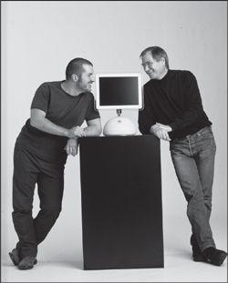
С Джони Айвом и iMac-«подсолнухом», 2002
Jony Ive
Джони Айв
When Jobs gathered his top management for a pep talk just after he became iCEO in September 1997, sitting in the audience was a sensitive and passionate thirty-year-old Brit who was head of the company’s design team. Jonathan Ive, known to all as Jony, was planning to quit. He was sick of the company’s focus on profit maximization rather than product design. Jobs’s talk led him to reconsider. “I remember very clearly Steve announcing that our goal is not just to make money but to make great products,” Ive recalled. “The decisions you make based on that philosophy are fundamentally different from the ones we had been making at Apple.” Ive and Jobs would soon forge a bond that would lead to the greatest industrial design collaboration of their era.
| a pep talk | ободряющая речь, воодушевление |
| profit maximization | максимизация прибыли |
| forge a bond | выковать союз |
Когда в сентябре 1997-го, сразу после того как стал iCEO, Джобс собрал топ-менеджеров на ободряющую речь, в зале сидел тонко чувствующий и страстный тридцатилетний британец — глава дизайн-команды компании. Джонатан Айв, которого все звали Джони, собирался увольняться. Его тошнило от ставки компании на максимизацию прибыли вместо дизайна продуктов. Речь Джобса заставила его передумать. «Я очень ясно помню, как Стив объявил, что наша цель — не просто делать деньги, а делать великие продукты, — вспоминал Айв. — Решения, принятые на такой философии, принципиально отличаются от тех, что мы принимали в Apple». Скоро Айв и Джобс выкуют союз, которому суждено стать величайшим сотрудничеством в индустриальном дизайне их эпохи.
Ive grew up in Chingford, a town on the northeast edge of London. His father was a silversmith who taught at the local college. “He’s a fantastic craftsman,” Ive recalled. “His Christmas gift to me would be one day of his time in his college workshop, during the Christmas break when no one else was there, helping me make whatever I dreamed up.” The only condition was that Jony had to draw by hand what they planned to make. “I always understood the beauty of things made by hand. I came to realize that what was really important was the care that was put into it. What I really despise is when I sense some carelessness in a product.”
| silversmith | серебряных дел мастер |
| craftsman | ремесленник |
| dreamed up | нафантазирую, придумаю |
| carelessness | небрежность |
Айв вырос в Чингфорде, городке на северо-восточной окраине Лондона. Отец его был серебряных дел мастером и преподавал в местном колледже. «Он фантастический ремесленник, — вспоминал Айв. — Его рождественским подарком мне был день его времени в колледжной мастерской — на каникулах, когда там никого, — и он помогал мне сделать всё, что я нафантазирую». Единственное условие: Джони должен был от руки нарисовать задуманное. «Я всегда понимал красоту вещей, сделанных руками. Понял со временем, что по-настоящему важна вложенная забота. Что я по-настоящему презираю — так это небрежность, которую чувствую в продукте».
Ive enrolled in Newcastle Polytechnic and spent his spare time and summers working at a design consultancy. One of his creations was a pen with a little ball on top that was fun to fiddle with. It helped give the owner a playful emotional connection to the pen. For his thesis he designed a microphone and earpiece—in purest white plastic—to communicate with hearing-impaired kids. His flat was filled with foam models he had made to help him perfect the design. He also designed an ATM machine and a curved phone, both of which won awards from the Royal Society of Arts. Unlike some designers, he didn’t just make beautiful sketches; he also focused on how the engineering and inner components would work. He had an epiphany in college when he was able to design on a Macintosh. “I discovered the Mac and felt I had a connection with the people who were making this product,” he recalled. “I suddenly understood what a company was, or was supposed to be.”
| a design consultancy | дизайн-консультация, бюро |
| fiddle with | вертеть в пальцах |
| hearing-impaired | слабослышащие |
| an epiphany | прозрение, озарение |
Айв поступил в Ньюкаслский политехнический, а свободное время и каникулы проводил в дизайн-консультации. Одно из его творений — ручка с шариком на колпачке, который приятно вертеть в пальцах: владелец получал игривую эмоциональную связь с вещью. Для диплома он спроектировал микрофон и наушник — в чистейшем белом пластике — для общения слабослышащих детей. Его квартира была заставлена пенопластовыми моделями, на которых он доводил дизайн. Он спроектировал также банкомат и изогнутый телефон — оба удостоены наград Королевского общества искусств. В отличие от иных дизайнеров, он не только делал красивые эскизы, но и думал, как сработают инженерия и внутренние компоненты. В колледже с ним случилось прозрение, когда он смог проектировать на Macintosh. «Я открыл для себя Mac и почувствовал связь с людьми, которые делают этот продукт, — вспоминал он. — Я вдруг понял, что такое компания — или какой она должна быть».
After graduation Ive helped to build a design firm in London, Tangerine, which got a consulting contract with Apple. In 1992 he moved to Cupertino to take a job in the Apple design department. He became the head of the department in 1996, the year before Jobs returned, but wasn’t happy. Amelio had little appreciation for design. “There wasn’t that feeling of putting care into a product, because we were trying to maximize the money we made,” Ive said. “All they wanted from us designers was a model of what something was supposed to look like on the outside, and then engineers would make it as cheap as possible. I was about to quit.”
| a consulting contract | контракт на консалтинг |
| little appreciation for | мало ценил |
После выпуска Айв участвовал в создании лондонской дизайн-фирмы Tangerine, которая получила контракт на консалтинг для Apple. В 1992 году он переехал в Купертино на работу в дизайн-отдел Apple, а возглавил его в 1996-м — за год до возвращения Джобса, — но счастлив не был. Амелио мало ценил дизайн. «Не было ощущения, что в продукт вкладывают заботу: мы пытались максимизировать выручку, — говорил Айв. — От дизайнеров хотели только макета того, как вещь должна выглядеть снаружи, а инженеры потом делали её как можно дешевле. Я был готов уйти».
When Jobs took over and gave his pep talk, Ive decided to stick around. But Jobs at first looked around for a world-class designer from the outside. He talked to Richard Sapper, who designed the IBM ThinkPad, and Giorgetto Giugiaro, who designed the Ferrari 250 and the Maserati Ghibli. But then he took a tour of Apple’s design studio and bonded with the affable, eager, and very earnest Ive. “We discussed approaches to forms and materials,” Ive recalled. “We were on the same wavelength. I suddenly understood why I loved the company.”
| stick around | остаться, не уходить |
| bonded with | сошёлся с |
| affable | приветливый |
| earnest | серьёзный, искренний |
| on the same wavelength | на одной волне |
Когда Джобс пришёл к власти и произнёс ободряющую речь, Айв решил остаться. Но Джобс поначалу искал дизайнера мирового класса на стороне — говорил с Ричардом Заппером, создавшим IBM ThinkPad, и Джорджетто Джуджаро, автором Ferrari 250 и Maserati Ghibli. Однако потом прошёлся по дизайн-студии Apple и сошёлся с приветливым, увлечённым и очень серьёзным Айвом. «Мы обсуждали подходы к формам и материалам, — вспоминал Айв. — Мы оказались на одной волне. Я вдруг понял, почему любил эту компанию».
Ive reported, at least initially, to Jon Rubinstein, whom Jobs had brought in to head the hardware division, but he developed a direct and unusually strong relationship with Jobs. They began to have lunch together regularly, and Jobs would end his day by dropping by Ive’s design studio for a chat. “Jony had a special status,” said Laurene Powell. “He would come by our house, and our families became close. Steve is never intentionally wounding to him. Most people in Steve’s life are replaceable. But not Jony.”
| dropping by | заглядывая |
| wounding | ранящий |
| replaceable | заменимый |
Подчинялся Айв — по крайней мере поначалу — Джону Рубинштейну, которого Джобс привёл руководить железным подразделением, но с самим Джобсом у него сложились прямые и необычайно тесные отношения. Они стали регулярно обедать вместе, а Джобс в конце дня заглядывал в студию Айва поболтать. «У Джони был особый статус, — говорила Лорин Пауэлл. — Он заходил к нам домой, семьи сблизились. Стив никогда намеренно его не ранит. Большинство людей в жизни Стива заменимы. Но не Джони».
Jobs described to me his respect for Ive:
Джобс так описывал мне своё уважение к Айву:
The difference that Jony has made, not only at Apple but in the world, is huge. He is a wickedly intelligent person in all ways. He understands business concepts, marketing concepts. He picks stuff up just like that, click. He understands what we do at our core better than anyone. If I had a spiritual partner at Apple, it’s Jony. Jony and I think up most of the products together and then pull others in and say, “Hey, what do you think about this?” He gets the big picture as well as the most infinitesimal details about each product. And he understands that Apple is a product company. He’s not just a designer. That’s why he works directly for me. He has more operational power than anyone else at Apple except me. There’s no one who can tell him what to do, or to butt out. That’s the way I set it up.
| wickedly intelligent | дьявольски умён |
| picks stuff up just like that | схватывает всё на лету |
| the big picture | общая картина |
| infinitesimal details | мельчайшие детали |
| butt out | лезть в чужие дела |
Разница, которую внёс Джони, — не только в Apple, но и в мире — огромна. Он дьявольски умён во всех отношениях. Понимает бизнес-концепции, маркетинговые концепции. Схватывает всё на лету — щёлк. Лучше всех понимает суть нашего дела. Если у меня в Apple есть духовный партнёр, это Джони. Мы с Джони придумываем большинство продуктов вместе, а потом подключаем остальных: «Эй, что скажете?» Он видит и общую картину, и мельчайшие детали каждого продукта. И понимает, что Apple — продуктовая компания. Он не просто дизайнер. Поэтому он работает напрямую на меня. У него больше операционной власти, чем у кого-либо в Apple, кроме меня. Никто не может указывать ему, что делать, или лезть в его дела. Так я всё и устроил.
Like most designers, Ive enjoyed analyzing the philosophy and the step-by-step thinking that went into a particular design. For Jobs, the process was more intuitive. He would point to models and sketches he liked and dump on the ones he didn’t. Ive would then take the cues and develop the concepts Jobs blessed.
| intuitive | интуитивный |
| take the cues | улавливать сигналы |
| blessed | благословлял, одобрял |
Как большинство дизайнеров, Айв любил разбирать философию и пошаговую логику конкретного дизайна. У Джобса процесс был интуитивнее: он тыкал пальцем в понравившиеся модели и эскизы и топтал те, что не нравились. Айв улавливал сигналы и развивал концепции, которые Джобс благословлял.
Ive was a fan of the German industrial designer Dieter Rams, who worked for the electronics firm Braun. Rams preached the gospel of “Less but better,” Weniger aber besser, and likewise Jobs and Ive wrestled with each new design to see how much they could simplify it. Ever since Apple’s first brochure proclaimed “Simplicity is the ultimate sophistication,” Jobs had aimed for the simplicity that comes from conquering complexities, not ignoring them. “It takes a lot of hard work,” he said, “to make something simple, to truly understand the underlying challenges and come up with elegant solutions.”
| preached the gospel of | проповедовал евангелие |
| wrestled with | боролись с |
| conquering complexities | покорение сложностей |
Айв был поклонником немецкого индустриального дизайнера Дитера Рамса, работавшего в электронной фирме Braun. Рамс проповедовал евангелие «Меньше, но лучше» — Weniger aber besser, — и Джобс с Айвом так же боролись с каждым новым дизайном, проверяя, насколько его можно упростить. С тех пор как в первой брошюре Apple прозвучало «Простота — высшая утончённость», Джобс стремился к простоте, рождающейся из покорения сложностей, а не из их игнорирования. «Требуется много напряжённого труда, — говорил он, — чтобы сделать вещь простой, по-настоящему понять скрытые трудности и найти элегантные решения».
In Ive, Jobs met his soul mate in the quest for true rather than surface simplicity. Sitting in his design studio, Ive described his philosophy:
| soul mate | родственная душа |
| surface simplicity | поверхностная простота |
В Айве Джобс встретил родственную душу в поиске простоты настоящей, а не поверхностной. Сидя в своей студии, Айв так описывал свою философию:
Why do we assume that simple is good? Because with physical products, we have to feel we can dominate them. As you bring order to complexity, you find a way to make the product defer to you. Simplicity isn’t just a visual style. It’s not just minimalism or the absence of clutter. It involves digging through the depth of the complexity. To be truly simple, you have to go really deep. For example, to have no screws on something, you can end up having a product that is so convoluted and so complex. The better way is to go deeper with the simplicity, to understand everything about it and how it’s manufactured. You have to deeply understand the essence of a product in order to be able to get rid of the parts that are not essential.
| defer to you | подчиняться тебе |
| minimalism | минимализм |
| the absence of clutter | отсутствие захламлённости |
| convoluted | запутанный, переусложнённый |
| the essence of a product | сущность продукта |
Почему мы считаем, что простое — хорошо? Потому что физические продукты нужно ощущать подвластными себе. Наводя порядок в сложности, ты находишь способ заставить продукт подчиняться тебе. Простота — не просто визуальный стиль. Не просто минимализм или отсутствие захламлённости. Она требует прокапываться сквозь толщу сложности. Чтобы стать по-настоящему простым, нужно уйти очень глубоко. Например, добиваясь, чтобы на вещи не было ни одного винта, можно получить продукт запутанный и сложный. Лучший путь — углубляться в простоту, понять о вещи всё, включая то, как её производят. Нужно глубоко понять сущность продукта, чтобы суметь убрать несущественное.
That was the fundamental principle Jobs and Ive shared. Design was not just about what a product looked like on the surface. It had to reflect the product’s essence. “In most people’s vocabularies, design means veneer,” Jobs told Fortune shortly after retaking the reins at Apple. “But to me, nothing could be further from the meaning of design. Design is the fundamental soul of a man-made creation that ends up expressing itself in successive outer layers.”
| veneer | облицовка, внешний лоск |
| retaking the reins | возвращение к рулю |
| successive outer layers | последовательные внешние слои |
Это был главный принцип, который Джобс и Айв разделяли. Дизайн — не только о том, как продукт выглядит на поверхности. Он должен отражать сущность продукта. «В словаре большинства людей дизайн означает облицовку, — говорил Джобс Fortune вскоре после возвращения к рулю Apple. — Но для меня нет ничего дальше от смысла дизайна. Дизайн — это фундаментальная душа рукотворной вещи, которая в итоге выражает себя в последовательных внешних слоях».
As a result, the process of designing a product at Apple was integrally related to how it would be engineered and manufactured. Ive described one of Apple’s Power Macs. “We wanted to get rid of anything other than what was absolutely essential,” he said. “To do so required total collaboration between the designers, the product developers, the engineers, and the manufacturing team. We kept going back to the beginning, again and again. Do we need that part? Can we get it to perform the function of the other four parts?”
| integrally related | неразрывно связан |
| what was absolutely essential | абсолютно необходимое |
| total collaboration | полное сотрудничество |
Поэтому процесс проектирования продукта в Apple был неразрывно связан с тем, как его будут конструировать и производить. Айв описывал один из Power Mac: «Мы хотели избавиться от всего, кроме абсолютно необходимого. Это требовало полного сотрудничества дизайнеров, разработчиков, инженеров и производственной команды. Мы возвращались к началу снова и снова. Нужна ли эта деталь? Можно ли заставить её выполнять функции четырёх других?»
The connection between the design of a product, its essence, and its manufacturing was illustrated for Jobs and Ive when they were traveling in France and went into a kitchen supply store. Ive picked up a knife he admired, but then put it down in disappointment. Jobs did the same. “We both noticed a tiny bit of glue between the handle and the blade,” Ive recalled. They talked about how the knife’s good design had been ruined by the way it was manufactured. “We don’t like to think of our knives as being glued together,” Ive said. “Steve and I care about things like that, which ruin the purity and detract from the essence of something like a utensil, and we think alike about how products should be made to look pure and seamless.”
| a kitchen supply store | магазин кухонных принадлежностей |
| the blade | лезвие |
| detract from the essence | отнимать суть, умалять |
| seamless | бесшовный |
Связь между дизайном продукта, его сущностью и производством открылась Джобсу и Айву во Франции, в магазине кухонных принадлежностей. Айв взял понравившийся нож, но разочарованно положил обратно. Джобс сделал то же. «Мы оба заметили капельку клея между рукоятью и лезвием», — вспоминал Айв. Они говорили о том, как хороший дизайн ножа погубила манера производства. «Не хочется думать, что наши ножи склеены, — говорил Айв. — Мы со Стивом обращаем внимание на такие вещи, разрушающие чистоту и отнимающие у утвари её суть, и одинаково думаем о том, как делать продукты чистыми и бесшовными на вид».
At most other companies, engineering tends to drive design. The engineers set forth their specifications and requirements, and the designers then come up with cases and shells that will accommodate them. For Jobs, the process tended to work the other way. In the early days of Apple, Jobs had approved the design of the case of the original Macintosh, and the engineers had to make their boards and components fit.
| drive design | вести дизайн, задавать его |
| set forth their specifications | выставляют спецификации |
| accommodate them | подогнать под них |
В большинстве компаний инженерия ведёт дизайн: инженеры выставляют спецификации и требования, а дизайнеры придумывают корпуса и оболочки под них. У Джобса процесс шёл наоборот. На заре Apple он утвердил дизайн корпуса первого Macintosh — и инженерам пришлось подгонять под него платы и компоненты.
After he was forced out, the process at Apple reverted to being engineer-driven. “Before Steve came back, engineers would say ‘Here are the guts’—processor, hard drive—and then it would go to the designers to put it in a box,” said Apple’s marketing chief Phil Schiller. “When you do it that way, you come up with awful products.” But when Jobs returned and forged his bond with Ive, the balance was again tilted toward the designers. “Steve kept impressing on us that the design was integral to what would make us great,” said Schiller. “Design once again dictated the engineering, not just vice versa.”
| the guts | начинка, внутренности |
| integral to | неотъемлемая часть |
| dictated the engineering | диктовал инженерии |
| vice versa | наоборот |
После его изгнания процесс в Apple вернулся к инженерному диктату. «До возвращения Стива инженеры говорили: „Вот начинка“ — процессор, жёсткий диск, — и отдавали дизайнерам упаковать её в коробку, — рассказывал директор Apple по маркетингу Фил Шиллер. — Так выходят ужасные продукты». Но когда Джобс вернулся и сблизился с Айвом, чаша весов вновь качнулась к дизайнерам. «Стив постоянно внушал нам, что дизайн — неотъемлемая часть того, что сделает нас великими, — говорил Шиллер. — Дизайн снова диктовал инженерии, а не только наоборот».
On occasion this could backfire, such as when Jobs and Ive insisted on using a solid piece of brushed aluminum for the edge of the iPhone 4 even when the engineers worried that it would compromise the antenna. But usually the distinctiveness of its designs—for the iMac, the iPod, the iPhone, and the iPad—would set Apple apart and lead to its triumphs in the years after Jobs returned.
| backfire | выходить боком, дать обратный эффект |
| brushed aluminum | шлифованный алюминий |
| compromise the antenna | навредить антенне |
| set Apple apart | выделяла Apple |
Иногда это выходило боком — как когда Джобс и Айв настояли на цельной полосе шлифованного алюминия для кромки iPhone 4, хотя инженеры опасались за антенну. Но обычно самобытность дизайнов — iMac, iPod, iPhone и iPad — выделяла Apple и вела её к триумфам в годы после возвращения Джобса.
Inside the Studio
Внутри студии
The design studio where Jony Ive reigns, on the ground floor of Two Infinite Loop on the Apple campus, is shielded by tinted windows and a heavy clad, locked door. Just inside is a glass-booth reception desk where two assistants guard access. Even high-level Apple employees are not allowed in without special permission. Most of my interviews with Jony Ive for this book were held elsewhere, but one day in 2010 he arranged for me to spend an afternoon touring the studio and talking about how he and Jobs collaborate there.
| reigns | царит |
| tinted windows | тонированные окна |
| a heavy clad, locked door | тяжёлая обшитая запертая дверь |
| guard access | стерегут вход |
Дизайн-студия, где царит Джони Айв, — на первом этаже здания Two Infinite Loop в кампусе Apple; её укрывают тонированные окна и тяжёлая обшитая, запертая дверь. Сразу за ней — стеклянная будка ресепшена, где двое ассистентов стерегут вход. Даже высокопоставленным сотрудникам Apple туда нет хода без особого разрешения. Большинство моих интервью с Айвом для этой книги проходили в других местах, но однажды в 2010 году он устроил мне целый день в студии — с экскурсией и рассказом о том, как они с Джобсом там сотрудничают.
To the left of the entrance is a bullpen of desks with young designers; to the right is the cavernous main room with six long steel tables for displaying and playing with works in progress. Beyond the main room is a computer-aided design studio, filled with workstations, that leads to a room with molding machines to turn what’s on the screens into foam models. Beyond that is a robot-controlled spray-painting chamber to make the models look real. The look is sparse and industrial, with metallic gray décor. Leaves from the trees outside cast moving patterns of light and shadows on the tinted windows. Techno and jazz play in the background.
| a bullpen of desks | загончик со столами, общее рабочее пространство |
| cavernous | просторный, как пещера |
| works in progress | незавершённые работы |
| molding machines | формовочные машины |
| sparse | скупая, аскетичная |
Слева от входа — загончик со столами молодых дизайнеров; справа — просторный главный зал с шестью длинными стальными столами, где выставляют и крутят в руках незавершённые работы. За главным залом — студия компьютерного проектирования с рабочими станциями, дальше — комната с формовочными машинами, превращающими экранные изображения в пенопластовые модели. Ещё дальше — камера с роботизированной покраской, придающая моделям вид настоящих. Обстановка скупая и индустриальная, в металлически-серых тонах. Листва за окнами отбрасывает на тонированные стёкла движущиеся узоры света и теней. Фоном звучат техно и джаз.
Almost every day when Jobs was healthy and in the office, he would have lunch with Ive and then wander by the studio in the afternoon. As he entered, he could survey the tables and see the products in the pipeline, sense how they fit into Apple’s strategy, and inspect with his fingertips the evolving design of each. Usually it was just the two of them alone, while the other designers glanced up from their work but kept a respectful distance. If Jobs had a specific issue, he might call over the head of mechanical design or another of Ive’s deputies. If something excited him or sparked some thoughts about corporate strategy, he might ask the chief operating officer Tim Cook or the marketing head Phil Schiller to come over and join them. Ive described the usual process:
| wander by | забрести, зайти мимоходом |
| in the pipeline | в разработке |
| deputies | замы, заместители |
Почти каждый день, когда Джобс был здоров и в офисе, он обедал с Айвом, а после обеда забредал в студию. Входя, он окидывал взглядом столы — видел продукты в разработке, чувствовал, как они вписываются в стратегию Apple, и кончиками пальцев изучал эволюцию каждого дизайна. Обычно они были вдвоём; прочие дизайнеры изредка поднимали глаза от работы, но держали почтительную дистанцию. По конкретному вопросу Джобс мог позвать главу механического проектирования или другого зама Айва. Если что-то его зажигало или будило мысли о корпоративной стратегии, он просил операционного директора Тима Кука или главу маркетинга Фила Шиллера присоединиться. Айв описывал обычный процесс:
This great room is the one place in the company where you can look around and see everything we have in the works. When Steve comes in, he will sit at one of these tables. If we’re working on a new iPhone, for example, he might grab a stool and start playing with different models and feeling them in his hands, remarking on which ones he likes best. Then he will graze by the other tables, just him and me, to see where all the other products are heading. He can get a sense of the sweep of the whole company, the iPhone and iPad, the iMac and laptop and everything we’re considering. That helps him see where the company is spending its energy and how things connect. And he can ask, “Does doing this make sense, because over here is where we are growing a lot?” or questions like that. He gets to see things in relationship to each other, which is pretty hard to do in a big company. Looking at the models on these tables, he can see the future for the next three years.
| grab a stool | берёт табурет |
| graze by the other tables | переходить от стола к столу |
| the sweep of the whole company | размах всей компании |
Этот большой зал — единственное место в компании, откуда видно всё, что у нас в работе. Приходя, Стив садится за один из столов. Если мы, скажем, делаем новый iPhone, он берёт табурет и начинает играть с разными моделями, ощупывать их и отмечать, какие нравятся больше. Потом переходит от стола к столу — только он и я — смотреть, куда движутся остальные продукты. Так он ощущает размах всей компании: iPhone и iPad, iMac и ноутбук, всё, что мы обдумываем. Это помогает видеть, куда компания направляет силы и как всё связано. Он может спросить: «Есть ли смысл в этом, ведь сильнее всего мы растём вот здесь?» — и тому подобное. Он видит вещи в их взаимосвязи — в большой компании это чертовски трудно. Глядя на модели на этих столах, он видит будущее на три года вперёд.
Much of the design process is a conversation, a back-and-forth as we walk around the tables and play with the models. He doesn’t like to read complex drawings. He wants to see and feel a model. He’s right. I get surprised when we make a model and then realize it’s rubbish, even though based on the CAD [computer-aided design] renderings it looked great.
| a back-and-forth | обмен репликами, перебрасывание |
| CAD [computer-aided design] renderings | изображения, созданные в системе автоматизированного проектирования (САПР) |
| rubbish | ерунда, мусор |
Дизайн-процесс — во многом разговор, обмен репликами, пока мы ходим между столами и вертим модели. Он не любит читать сложные чертежи. Ему нужно видеть и щупать модель. И он прав. Бывает, сделаем модель и вдруг понимаем: ерунда, хотя на рендерах САПР она выглядела отлично.
He loves coming in here because it’s calm and gentle. It’s a paradise if you’re a visual person. There are no formal design reviews, so there are no huge decision points. Instead, we can make the decisions fluid. Since we iterate every day and never have dumb-ass presentations, we don’t run into major disagreements.
| a visual person | человек визуального склада |
| make the decisions fluid | принимать решения текуче |
| iterate | итерируем, повторяем цикл |
| dumb-ass presentations | дурацкие презентации |
Он любит приходить сюда — здесь спокойно и мягко. Для человека визуального это рай. Нет формальных дизайн-ревью, а значит, нет гигантских точек принятия решений. Решения мы принимаем текуче. Мы итерируем каждый день и никогда не устраиваем дурацких презентаций, поэтому до крупных разногласий дело не доходит.
On this day Ive was overseeing the creation of a new European power plug and connector for the Macintosh. Dozens of foam models, each with the tiniest variation, have been cast and painted for inspection. Some would find it odd that the head of design would fret over something like this, but Jobs got involved as well. Ever since he had a special power supply made for the Apple II, Jobs has cared about not only the engineering but also the design of such parts. His name is listed on the patent for the white power brick used by the MacBook as well as its magnetic connector with its satisfying click. In fact he is listed as one of the inventors for 212 different Apple patents in the United States as of the beginning of 2011.
| overseeing | руководил |
| fret over | корпеть над, переживать о |
| the power brick | блок питания |
| its satisfying click | приятный щелчок |
В тот день Айв руководил созданием новой европейской вилки и разъёма питания для Macintosh. Десятки пенопластовых моделей с мельчайшими отличиями отлиты и окрашены для осмотра. Кому-то покажется странным, что глава дизайна корпит над такой мелочью, — но Джобс тоже вникал. С тех пор как он заказал особый блок питания для Apple II, его волнует не только инженерия, но и дизайн таких деталей. Его имя стоит в патенте на белый блок питания MacBook и на магнитный разъём с его приятным щелчком. Вообще на начало 2011 года он числится одним из изобретателей в 212 патентах Apple в США.
Ive and Jobs have even obsessed over, and patented, the packaging for various Apple products. U.S. patent D558572, for example, granted on January 1, 2008, is for the iPod Nano box, with four drawings showing how the device is nestled in a cradle when the box is opened. Patent D596485, issued on July 21, 2009, is for the iPhone packaging, with its sturdy lid and little glossy plastic tray inside.
| obsessed over | помешаны на |
| nestled in a cradle | покоится в люльке |
| sturdy lid | прочная крышка |
Айв и Джобс помешаны — и запатентовали — даже на упаковке продуктов Apple. Патент США D558572, выданный 1 января 2008 года, — на коробку iPod Nano с четырьмя чертежами, показывающими, как устройство покоится в люльке при открытии. Патент D596485 от 21 июля 2009 года — на упаковку iPhone: прочная крышка и глянцевый пластиковый лоток внутри.
Early on, Mike Markkula had taught Jobs to “impute”—to understand that people do judge a book by its cover—and therefore to make sure all the trappings and packaging of Apple signaled that there was a beautiful gem inside. Whether it’s an iPod Mini or a MacBook Pro, Apple customers know the feeling of opening up the well-crafted box and finding the product nestled in an inviting fashion. “Steve and I spend a lot of time on the packaging,” said Ive. “I love the process of unpacking something. You design a ritual of unpacking to make the product feel special. Packaging can be theater, it can create a story.”
| impute | «вменять» — внушать образ через внешнее |
| judge a book by its cover | судить о книге по обложке |
| trappings | оформление, атрибуты |
| a ritual of unpacking | ритуал распаковки |
Давным-давно Майк Марккула научил Джобса «вменять» — понимать, что о книге люди судят по обложке, — а значит, всё оформление и упаковка Apple должны намекать: внутри прекрасная драгоценность. Будь то iPod Mini или MacBook Pro, покупателям Apple знакомо чувство: открываешь искусно сделанную коробку — и продукт уютно лежит, приглашая к себе. «Мы со Стивом много времени проводим над упаковкой, — говорил Айв. — Я люблю процесс распаковки. Проектируешь ритуал распаковки, чтобы продукт ощущался особенным. Упаковка может быть театром, может рассказывать историю».
Ive, who has the sensitive temperament of an artist, at times got upset with Jobs for taking too much credit, a habit that has bothered other colleagues over the years. His personal feelings for Jobs were so intense that at times he got easily bruised. “He will go through a process of looking at my ideas and say, ‘That’s no good. That’s not very good. I like that one,’” Ive said. “And later I will be sitting in the audience and he will be talking about it as if it was his idea. I pay maniacal attention to where an idea comes from, and I even keep notebooks filled with my ideas. So it hurts when he takes credit for one of my designs.” Ive also has bristled when outsiders portrayed Jobs as the only ideas guy at Apple. “That makes us vulnerable as a company,” Ive said earnestly, his voice soft. But then he paused to recognize the role Jobs in fact played. “In so many other companies, ideas and great design get lost in the process,” he said. “The ideas that come from me and my team would have been completely irrelevant, nowhere, if Steve hadn’t been here to push us, work with us, and drive through all the resistance to turn our ideas into products.”
| taking too much credit | присвоение лавров |
| got easily bruised | легко задеть |
| maniacal attention | маниакальное внимание |
| bristled | ощетинивался |
| drive through all the resistance | пробивать все преграды |
Айв с чувствительным темпераментом художника порой обижался на Джобса за присвоение лавров — привычка, годами раздражавшая и других коллег. Его личные чувства к Джобсу были так сильны, что задеть его было легко. «Он просмотрит мои идеи и скажет: „Это никуда. Это не очень. А вот это мне нравится“, — говорил Айв. — А потом я сижу в зале, и он рассказывает о ней как о своей. Я маниакально слежу за тем, откуда идея, и даже веду тетради со своими идеями. Поэтому больно, когда он приписывает себе мой дизайн». Айв также ощетинивался, когда посторонние изображали Джобса единственным генератором идей в Apple. «Это делает нас уязвимыми как компанию», — серьёзно говорил он, понизив голос. Но затем признал и роль, которую Джобс действительно играл: «Во многих других компаниях идеи и прекрасный дизайн теряются по пути. Идеи, рождённые мной и моей командой, остались бы ничем, нигде, не будь Стива рядом — толкать нас, работать с нами и пробивать все преграды, превращая идеи в продукты».
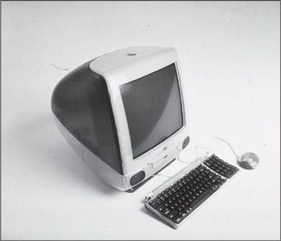
Back to the Future
Назад в будущее
The first great design triumph to come from the Jobs-Ive collaboration was the iMac, a desktop computer aimed at the home consumer market that was introduced in May 1998. Jobs had certain specifications. It should be an all-in-one product, with keyboard and monitor and computer ready to use right out of the box. It should have a distinctive design that made a brand statement. And it should sell for $1,200 or so. (Apple had no computer selling for less than $2,000 at the time.) “He told us to go back to the roots of the original 1984 Macintosh, an all-in-one consumer appliance,” recalled Schiller. “That meant design and engineering had to work together.”
| all-in-one product | «всё в одном» |
| right out of the box | прямо из коробки |
| made a brand statement | заявляло о бренде |
| appliance | бытовой прибор |
Первым великим дизайнерским триумфом тандема Джобс—Айв стал iMac — настольный компьютер для домашнего рынка, представленный в мае 1998 года. У Джобса были конкретные требования: всё в одном — клавиатура, монитор и компьютер готовы к работе прямо из коробки; самобытный дизайн, заявляющий о бренде; цена около 1200 долларов. (Тогда у Apple не было компьютера дешевле 2000.) «Он велел вернуться к корням первоначального Macintosh 1984 года — бытовому прибору „всё в одном“, — вспоминал Шиллер. — А значит, дизайн и инженерия должны были работать сообща».
The initial plan was to build a “network computer,” a concept championed by Oracle’s Larry Ellison, which was an inexpensive terminal without a hard drive that would mainly be used to connect to the Internet and other networks. But Apple’s chief financial officer Fred Anderson led the push to make the product more robust by adding a disk drive so it could become a full-fledged desktop computer for the home. Jobs eventually agreed.
| championed by | которую продвигал |
| more robust | более мощный |
| full-fledged | полноценный |
Первоначальный план — «сетевой компьютер» (концепция, которую продвигал Ларри Эллисон из Oracle): недорогой терминал без жёсткого диска, в основном для выхода в Интернет и другие сети. Но финансовый директор Apple Фред Андерсон настоял на более мощном продукте: добавить дисковый накопитель, чтобы получился полноценный домашний компьютер. Джобс в конце концов согласился.
Jon Rubinstein, who was in charge of hardware, adapted the microprocessor and guts of the PowerMac G3, Apple’s high-end professional computer, for use in the proposed new machine. It would have a hard drive and a tray for compact disks, but in a rather bold move, Jobs and Rubinstein decided not to include the usual floppy disk drive. Jobs quoted the hockey star Wayne Gretzky’s maxim, “Skate where the puck’s going, not where it’s been.” He was a bit ahead of his time, but eventually most computers eliminated floppy disks.
| the guts of | начинка, внутренности |
| a rather bold move | довольно смелое решение |
| ahead of his time | опередил своё время |
Джон Рубинштейн, отвечавший за железо, приспособил микропроцессор и начинку PowerMac G3 — профессионального флагмана Apple — для новой машины. У неё были жёсткий диск и лоток для компакт-дисков, но Джобс с Рубинштейном смело решили отказаться от привычного дисковода для дискет. Джобс процитировал максиму хоккеиста Уэйна Гретцки: «Кати туда, где шайба будет, а не туда, где она была». Он слегка опередил время, но со временем большинство компьютеров избавились от дискет.
Ive and his top deputy, Danny Coster, began to sketch out futuristic designs. Jobs brusquely rejected the dozen foam models they initially produced, but Ive knew how to guide him gently. Ive agreed that none of them was quite right, but he pointed out one that had promise. It was curved, playful looking, and did not seem like an unmovable slab rooted to the table. “It has a sense that it’s just arrived on your desktop or it’s just about to hop off and go somewhere,” he told Jobs.
| his top deputy | первый зам |
| sketch out | набрасывать |
| brusquely rejected | грубо отверг |
| an unmovable slab | неподвижная плита |
| hop off | спрыгнуть |
Айв с первым замом Дэнни Костером начали набрасывать футуристичные дизайны. Джобс грубо отверг дюжину первых пенопластовых моделей, но Айв умел мягко его направлять. Он согласился, что ни одна не подходит, но указал на многообещающую: изогнутую, игривую, не похожую на вросшую в стол неподвижную плиту. «В ней ощущение, что она только что приземлилась на ваш стол или вот-вот спрыгнет и умчится куда-нибудь», — сказал он Джобсу.
By the next showing Ive had refined the playful model. This time Jobs, with his binary view of the world, raved that he loved it. He took the foam prototype and began carrying it around the headquarters with him, showing it in confidence to trusted lieutenants and board members. In its ads Apple was celebrating the glories of being able to think different, yet until now nothing had been proposed that was much different from existing computers. Finally, Jobs had something new.
| binary view of the world | бинарный взгляд на мир |
| raved | восторженно расхваливал |
| in confidence | по секрету |
| trusted lieutenants | доверенные помощники |
К следующему показу Айв доработал игривую модель. На этот раз Джобс — со своим бинарным взглядом на мир — восторженно её расхвалил. Он взял пенопластовый прототип и стал таскать его по штаб-квартире, по секрету показывая доверенным помощникам и членам совета. В рекламе Apple воспевала славу инакомыслия, но до сих пор не предлагалось ничего особенно отличного от существующих компьютеров. Наконец у Джобса появилось нечто новое.
The plastic casing that Ive and Coster proposed was sea-green blue, later named bondi blue after the color of the water at a beach in Australia, and it was translucent so that you could see through to the inside of the machine. “We were trying to convey a sense of the computer being changeable based on your needs, to be like a chameleon,” said Ive. “That’s why we liked the translucency. You could have color but it felt so unstatic. And it came across as cheeky.”
| casing | корпус |
| translucent | полупрозрачный |
| a chameleon | хамелеон |
| cheeky | дерзкий, нахальный |
Пластиковый корпус, предложенный Айвом и Костером, был сине-зелёным, цвета морской воды — позже его назвали bondi blue в честь оттенка воды у пляжа в Австралии, — и полупрозрачным, так что виднелись внутренности машины. «Мы хотели передать ощущение, что компьютер меняется под твои нужды, — как хамелеон, — говорил Айв. — Поэтому нам нравилась прозрачность. Цвет есть, но он такой нестатичный. И вышло это дерзко».
Both metaphorically and in reality, the translucency connected the inner engineering of the computer to the outer design. Jobs had always insisted that the rows of chips on the circuit boards look neat, even though they would never be seen. Now they would be seen. The casing would make visible the care that had gone into making all components of the computer and fitting them together. The playful design would convey simplicity while also revealing the depths that true simplicity entails.
| the circuit boards | монтажные платы |
| fitting them together | подгонка друг к другу |
| entails | требует, влечёт за собой |
И метафорически, и буквально прозрачность связала внутреннюю инженерию компьютера с внешним дизайном. Джобс всегда требовал, чтобы ряды чипов на платах выглядели аккуратно, хотя их никто не увидит. Теперь их увидят. Корпус делал видимой заботу, вложенную в создание всех компонентов и их подгонку друг к другу. Игривый дизайн выражал простоту — и вместе с тем открывал глубину, которой настоящая простота требует.
Even the simplicity of the plastic shell itself involved great complexity. Ive and his team worked with Apple’s Korean manufacturers to perfect the process of making the cases, and they even went to a jelly bean factory to study how to make translucent colors look enticing. The cost of each case was more than $60 per unit, three times that of a regular computer case. Other companies would probably have demanded presentations and studies to show whether the translucent case would increase sales enough to justify the extra cost. Jobs asked for no such analysis.
| translucent colors | полупрозрачные цвета |
| enticing | заманчивый |
| justify the extra cost | окупить дополнительные расходы |
Даже простота пластиковой оболочки таила большую сложность. Айв с командой работали с корейскими производителями Apple над процессом изготовления корпусов и даже ездили на фабрику желейных конфет изучать, как сделать полупрозрачные цвета заманчивыми. Себестоимость корпуса превышала 60 долларов — втрое больше обычного. Другие компании наверняка потребовали бы презентаций и исследований, окупит ли прозрачный корпус дополнительные расходы ростом продаж. Джобс не просил никакого анализа.
Topping off the design was the handle nestled into the iMac. It was more playful and semiotic than it was functional. This was a desktop computer; not many people were really going to carry it around. But as Ive later explained:
| nestled into | утопленная в, встроенная |
| semiotic | смысловая, знаковая |
Завершала дизайн утопленная в корпус iMac ручка — больше игривая и смысловая, чем функциональная. Это настольный компьютер, таскать его с собой мало кто станет. Но, как позже объяснял Айв:
Back then, people weren’t comfortable with technology. If you’re scared of something, then you won’t touch it. I could see my mum being scared to touch it. So I thought, if there’s this handle on it, it makes a relationship possible. It’s approachable. It’s intuitive. It gives you permission to touch. It gives a sense of its deference to you. Unfortunately, manufacturing a recessed handle costs a lot of money. At the old Apple, I would have lost the argument. What was really great about Steve is that he saw it and said, “That’s cool!” I didn’t explain all the thinking, but he intuitively got it. He just knew that it was part of the iMac’s friendliness and playfulness.
| approachable | приближается к человеку, располагает |
| intuitive | интуитивный |
| its deference to you | его услужливость перед тобой |
| a recessed handle | утопленная ручка |
Тогда людям было не по себе с техникой. Боишься вещи — не прикоснёшься. Я представлял, как моя мама боится до него дотронуться. И подумал: будет на нём ручка — станут возможны отношения. Он приближается к человеку. Он интуитивен. Ручка даёт разрешение прикоснуться. Даёт ощущение, что компьютер услужлив перед тобой. К сожалению, изготовление утопленной ручки стоит больших денег. В старой Apple я бы проиграл спор. Что было по-настоящему здорово в Стиве: он посмотрел и сказал «Круто!». Я не объяснял всей логики, но он интуитивно понял. Просто знал, что это часть дружелюбия и игривости iMac.
Jobs had to fend off the objections of the manufacturing engineers, supported by Rubinstein, who tended to raise practical cost considerations when faced with Ive’s aesthetic desires and various design whims. “When we took it to the engineers,” Jobs said, “they came up with thirty-eight reasons they couldn’t do it. And I said, ‘No, no, we’re doing this.’ And they said, ‘Well, why?’ And I said, ‘Because I’m the CEO, and I think it can be done.’ And so they kind of grudgingly did it.”
| fend off | отбиваться от |
| design whims | дизайнерские причуды |
| grudgingly | неохотно, скрипя |
Джобсу пришлось отбиваться от возражений производственных инженеров, поддержанных Рубинштейном: те обычно поднимали практические соображения о стоимости при эстетических пожеланиях и причудах Айва. «Когда мы принесли это инженерам, — рассказывал Джобс, — они выдвинули тридцать восемь причин, почему нельзя. Я сказал: „Нет-нет, мы это делаем“. Они: „Ну почему?“ Я: „Потому что я CEO и считаю, что это можно сделать“. И они, скрипя, сделали».
Jobs asked Lee Clow and Ken Segall and others from the TBWA\Chiat\Day ad team to fly up to see what he had in the works. He brought them into the guarded design studio and dramatically unveiled Ive’s translucent teardrop-shaped design, which looked like something from The Jetsons, the animated TV show set in the future. For a moment they were taken aback. “We were pretty shocked, but we couldn’t be frank,” Segall recalled. “We were really thinking, ‘Jesus, do they know what they are doing?’ It was so radical.” Jobs asked them to suggest names. Segall came back with five options, one of them “iMac.” Jobs didn’t like any of them at first, so Segall came up with another list a week later, but he said that the agency still preferred “iMac.” Jobs replied, “I don’t hate it this week, but I still don’t like it.” He tried silk-screening it on some of the prototypes, and the name grew on him. And thus it became the iMac.
| in the works | в работе, в разработке |
| unveiled | явил, представил |
| teardrop-shaped | каплевидный |
| taken aback | опешили |
| grew on him | притерпелся, полюбил постепенно |
Джобс попросил Ли Клоу, Кена Сигалла и других из TBWA\Chiat\Day прилететь посмотреть, что у него в работе. Их провели в охраняемую дизайн-студию, где он драматично явил полупрозрачный каплевидный дизайн Айва — будто из «Джетсонов», мультсериала о будущем. На миг они опешили. «Мы были порядочно шокированы, но не могли быть откровенны, — вспоминал Сигалл. — Про себя думали: „Боже, они понимают, что делают?“ Это было так радикально». Джобс попросил предложить имена. Сигалл принёс пять вариантов, среди них — «iMac». Сначала Джобсу не понравился ни один, через неделю Сигалл принёс новый список, но сказал, что агентство по-прежнему предпочитает «iMac». «На этой неделе я его уже не ненавижу, но всё ещё не люблю», — ответил Джобс. Он попробовал нанести имя шелкографией на прототипы — и притерпелся. Так появился iMac.
As the deadline for completing the iMac drew near, Jobs’s legendary temper reappeared in force, especially when he was confronting manufacturing issues. At one product review meeting, he learned that the process was going slowly. “He did one of his displays of awesome fury, and the fury was absolutely pure,” recalled Ive. He went around the table assailing everyone, starting with Rubinstein. “You know we’re trying to save the company here,” he shouted, “and you guys are screwing it up!”
| drew near | приближался |
| in force | в полную силу |
| awesome fury | ужасающий гнев |
| assailing | обрушиваясь, нападая |
| screwing it up | портите |
По мере приближения срока сдачи iMac легендарный нрав Джобса проявился в полную силу — особенно при проблемах с производством. На одном совещании по продукту он узнал, что процесс буксует. «Он устроил один из своих спектаклей ужасающего гнева, и гнев был абсолютно чистым», — вспоминал Айв. Джобс прошёлся вокруг стола, обрушиваясь на всех, начиная с Рубинштейна. «Вы же знаете: мы тут пытаемся спасти компанию, — орал он, — а вы всё портите!»
Like the original Macintosh team, the iMac crew staggered to completion just in time for the big announcement. But not before Jobs had one last explosion. When it came time to rehearse for the launch presentation, Rubinstein cobbled together two working prototypes. Jobs had not seen the final product before, and when he looked at it onstage he saw a button on the front, under the display. He pushed it and the CD tray opened. “What the fuck is this?!?” he asked, though not as politely. “None of us said anything,” Schiller recalled, “because he obviously knew what a CD tray was.” So Jobs continued to rail. It was supposed to have a clean CD slot, he insisted, referring to the elegant slot drives that were already to be found in upscale cars. “Steve, this is exactly the drive I showed you when we talked about the components,” Rubinstein explained. “No, there was never a tray, just a slot,” Jobs insisted. Rubinstein didn’t back down. Jobs’s fury didn’t abate. “I almost started crying, because it was too late to do anything about it,” Jobs later recalled.
| staggered to completion | дотянули до завершения |
| cobbled together | собрал на скорую руку |
| rail | бушевать, громко возмущаться |
| a CD slot | щелевой привод |
| back down | уступать, отступать |
| abate | стихать |
Как и команда первого Macintosh, команда iMac дотянула до сдачи к самому объявлению. Но не раньше, чем Джобс устроил последний взрыв. Настало время репетиции презентации — Рубинштейн собрал на скорую руку два рабочих прототипа. Готового продукта Джобс ещё не видел; глянув на него на сцене, он заметил кнопку на лицевой панели под экраном. Нажал — и выехал лоток для CD. «Какого хрена это такое?!» — спросил он, хотя и менее вежливо. «Никто из нас не произнёс ни слова, — вспоминал Шиллер, — потому что он, очевидно, знал, что такое лоток CD». Джобс продолжал бушевать: должен быть чистый щелевой привод, настаивал он, имея в виду элегантные щелевые приводы, уже стоявшие в дорогих автомобилях. «Стив, это ровно тот привод, что я показывал тебе при обсуждении компонентов», — объяснял Рубинштейн. «Нет, лотка никогда не было — только щель», — стоял на своём Джобс. Рубинштейн не сдавался, ярость Джобса не стихала. «Я чуть не заплакал, потому что делать что-то было уже поздно», — вспоминал Джобс.
They suspended the rehearsal, and for a while it seemed as if Jobs might cancel the entire product launch. “Ruby looked at me as if to say, ‘Am I crazy?’” Schiller recalled. “It was my first product launch with Steve and the first time I saw his mind-set of ‘If it’s not right we’re not launching it.’” Finally, they agreed to replace the tray with a slot drive for the next version of the iMac. “I’m only going to go ahead with the launch if you promise we’re going to go to slot mode as soon as possible,” Jobs said tearfully.
| his mind-set | установка, образ мыслей |
| tearfully | со слезами на глазах |
Репетицию прервали, и какое-то время казалось, что Джобс отменит весь запуск. «Руби посмотрел на меня, будто спрашивая: „Я сошёл с ума?“ — вспоминал Шиллер. — Это был мой первый запуск со Стивом, и я впервые увидел его установку: „Не готово — не запускаем“». В конце концов договорились заменить лоток щелевым приводом в следующей версии iMac. «Я продолжу запуск, только если вы пообещаете перейти на щель как можно скорее», — сказал Джобс со слезами на глазах.
There was also a problem with the video he planned to show. In it, Jony Ive is shown describing his design thinking and asking, “What computer would the Jetsons have had? It was like, the future yesterday.” At that moment there was a two-second snippet from the cartoon show, showing Jane Jetson looking at a video screen, followed by another two-second clip of the Jetsons giggling by a Christmas tree. At a rehearsal a production assistant told Jobs they would have to remove the clips because Hanna-Barbera had not given permission to use them. “Keep it in,” Jobs barked at him. The assistant explained that there were rules against that. “I don’t care,” Jobs said. “We’re using it.” The clip stayed in.
| a two-second snippet | двухсекундный фрагмент |
| giggling | хихикающие |
| barked at him | рявкнул на него |
Была проблема и с запланированным видео. В нём Джони Айв описывает свою дизайнерскую логику и спрашивает: «Какой компьютер был бы у Джетсонов? Это как будущее — вчера». В этот момент шёл двухсекундный фрагмент из мультсериала: Джейн Джетсон смотрит на видеоэкран, а затем ещё двухсекундный — Джетсоны хихикают у ёлки. На репетиции ассистент сказал Джобсу, что клипы придётся убрать: Hanna-Barbera не дала разрешения. «Оставьте», — рявкнул Джобс. Ассистент объяснил, что так нельзя. «Мне плевать, — сказал Джобс. — Мы используем». Клип остался.
Lee Clow was preparing a series of colorful magazine ads, and when he sent Jobs the page proofs he got an outraged phone call in response. The blue in the ad, Jobs insisted, was different from that of the iMac. “You guys don’t know what you’re doing!” Jobs shouted. “I’m going to get someone else to do the ads, because this is fucked up.” Clow argued back. Compare them, he said. Jobs, who was not in the office, insisted he was right and continued to shout. Eventually Clow got him to sit down with the original photographs. “I finally proved to him that the blue was the blue was the blue.” Years later, on a Steve Jobs discussion board on the website Gawker, the following tale appeared from someone who had worked at the Whole Foods store in Palo Alto a few blocks from Jobs’s home: “I was shagging carts one afternoon when I saw this silver Mercedes parked in a handicapped spot. Steve Jobs was inside screaming at his car phone. This was right before the first iMac was unveiled and I’m pretty sure I could make out, ‘Not. Fucking. Blue. Enough!!!’”
| page proofs | пробные оттиски |
| outraged | гневный, возмущённый |
| fucked up | запорото, испорчено |
| shagging carts | собирал тележки |
| make out | разобрать (на слух) |
Ли Клоу готовил серию цветных журнальных макетов, и когда прислал Джобсу пробные оттиски, в ответ раздался гневный звонок. Синий в макете, стоял на своём Джобс, отличается от iMac. «Вы не понимаете, что делаете! — кричал он. — Я найду других для этой рекламы, потому что это запорото». Клоу спорил: сравните. Джобс, которого не было в офисе, настаивал на своём и продолжал кричать. В конце концов Клоу усадил его перед оригинальными фотографиями. «Я наконец доказал ему, что синий был тем самым синим, тот синий и есть синий». Годы спустя на форуме о Стиве Джобсе на сайте Gawker появилась история от человека, работавшего в Whole Foods в Пало-Альто, в паре кварталов от дома Джобса: «Однажды днём я собирал тележки и увидел серебристый Mercedes, припаркованный на месте для инвалидов. Внутри Стив Джобс орал в автомобильный телефон. Это было прямо перед презентацией первого iMac, и я почти уверен, что разобрал: „Не. Достаточно. Синий!!!“»
As always, Jobs was compulsive in preparing for the dramatic unveiling. Having stopped one rehearsal because he was angry about the CD drive tray, he stretched out the other rehearsals to make sure the show would be stellar. He repeatedly went over the climactic moment when he would walk across the stage and proclaim, “Say hello to the new iMac.” He wanted the lighting to be perfect so that the translucence of the new machine would be vivid. But after a few run-throughs he was still unsatisfied, an echo of his obsession with stage lighting that Sculley had witnessed at the rehearsals for the original 1984 Macintosh launch. He ordered the lights to be brighter and come on earlier, but that still didn’t please him. So he jogged down the auditorium aisle and slouched into a center seat, draping his legs over the seat in front. “Let’s keep doing it till we get it right, okay?” he said. They made another attempt. “No, no,” Jobs complained. “This isn’t working at all.” The next time, the lights were bright enough, but they came on too late. “I’m getting tired of asking about this,” Jobs growled. Finally, the iMac shone just right. “Oh! Right there! That’s great!” Jobs yelled.
| compulsive | навязчивый, одержимый |
| the dramatic unveiling | драматичная премьера |
| stellar | безупречный, звёздный |
| run-throughs | прогоны |
| slouched | развалился |
| growled | рыкнул |
Как всегда, к драматичной премьере Джобс готовился навязчиво. Отменив одну репетицию из-за злости на лоток CD-привода, остальные он растягивал, чтобы шоу вышло безупречным. Он раз за разом прогонял кульминацию — выход на сцену со словами «Поздоровайтесь с новым iMac». Свет должен был лечь идеально, чтобы прозрачность машины ожила. Но после нескольких прогонов он остался недоволен — эхо его одержимости сценическим светом, которую Скалли наблюдал на репетициях запуска Macintosh в 1984-м. Он велел сделать свет ярче и включать раньше — всё не то. Тогда он пробежался по проходу и развалился в кресле по центру, закинув ноги на переднее. «Повторяем, пока не получится, хорошо?» — сказал он. Ещё попытка. «Нет, нет, — ворчал Джобс. — Совсем не работает». В следующий раз свет был достаточно ярок, но включился слишком поздно. «Я устал об этом просить», — рыкнул Джобс. Наконец iMac засиял как надо. «О! Вот! Точно! Великолепно!» — закричал Джобс.
A year earlier Jobs had ousted Mike Markkula, his early mentor and partner, from the board. But he was so proud of what he had wrought with the new iMac, and so sentimental about its connection to the original Macintosh, that he invited Markkula to Cupertino for a private preview. Markkula was impressed. His only objection was to the new mouse that Ive had designed. It looked like a hockey puck, Markkula said, and people would hate it. Jobs disagreed, but Markkula was right. Otherwise the machine had turned out to be, as had its predecessor, insanely great.
| ousted | выдавил, сместил |
| what he had wrought | то, что он создал |
| a hockey puck | хоккейная шайба |
| insanely great | безумно великая |
Годом ранее Джобс выдавил из совета Майка Марккулу, своего раннего наставника и партнёра. Но он так гордился созданным iMac и так сентиментально относился к его связи с первым Macintosh, что пригласил Марккулу в Купертино на частный показ. Марккула был впечатлён. Единственное возражение — новая мышь Айва: похожа на хоккейную шайбу, сказал он, люди её возненавидят. Джобс не согласился, но Марккула оказался прав. В остальном машина вышла, как и её предшественница, безумно великой.
The Launch, May 6, 1998
Запуск, 6 мая 1998 года
With the launch of the original Macintosh in 1984, Jobs had created a new kind of theater: the product debut as an epochal event, climaxed by a let-there-be-light moment in which the skies part, a light shines down, the angels sing, and a chorus of the chosen faithful sings “Hallelujah.” For the grand unveiling of the product that he hoped would save Apple and again transform personal computing, Jobs symbolically chose the Flint Auditorium of De Anza Community College in Cupertino, the same venue he had used in 1984. He would be pulling out all the stops in order to dispel doubts, rally the troops, enlist support in the developers’ community, and jump-start the marketing of the new machine. But he was also doing it because he enjoyed playing impresario. Putting on a great show piqued his passions in the same way as putting out a great product.
| an epochal event | эпохальное событие |
| climaxed by | с кульминацией в виде |
| pulling out all the stops | пустить в ход всё |
| dispel doubts | развеять сомнения |
| impresario | импресарио, устроитель зрелищ |
Запуском первого Macintosh в 1984 году Джобс создал новый вид театра: дебют продукта как эпохальное событие с кульминацией в духе «да будет свет» — небеса разверзаются, льётся свет, поют ангелы, и хор избранных верных грядет «Аллилуйя». Для торжественного представления продукта, который, как он надеялся, спасёт Apple и вновь преобразит персональные компьютеры, Джобс символично выбрал зал Flint в колледже Де Анза в Купертино — ту же площадку, что и в 1984-м. Он собирался пустить в ход всё, чтобы развеять сомнения, сплотить войска, заручиться поддержкой разработчиков и дать старт маркетингу новой машины. Но ещё и потому, что любил играть импресарио. Отличное шоу разжигало его страсть так же, как отличный продукт.
Displaying his sentimental side, he began with a graceful shout-out to three people he had invited to be up front in the audience. He had become estranged from all of them, but now he wanted them rejoined. “I started the company with Steve Wozniak in my parents’ garage, and Steve is here today,” he said, pointing him out and prompting applause. “We were joined by Mike Markkula and soon after that our first president, Mike Scott,” he continued. “Both of those folks are in the audience today. And none of us would be here without these three guys.” His eyes misted for a moment as the applause again built. Also in the audience were Andy Hertzfeld and most of the original Mac team. Jobs gave them a smile. He believed he was about to do them proud.
| a graceful shout-out | изящное приветствие |
| estranged from | разошёлся с |
| his eyes misted | глаза увлажнились |
Явив сентиментальность, он начал с изящного приветствия трём людям, которых пригласил в первые ряды. Со всеми он когда-то разошёлся, но теперь хотел их вернуть. «Я основал компанию со Стивом Возняком в гараже родителей, и Стив сегодня здесь», — сказал он, указав на него под аплодисменты. «К нам присоединился Майк Марккула, а вскоре — наш первый президент Майк Скотт, — продолжил он. — Оба сегодня в зале. Никого из нас здесь не было бы без этих троих». На миг его глаза увлажнились под нарастающие аплодисменты. В зале были и Энди Херцфельд, и почти вся команда первого Mac. Джобс улыбнулся им. Он верил, что сейчас заставит их гордиться.
After showing the grid of Apple’s new product strategy and going through some slides about the new computer’s performance, he was ready to unveil his new baby. “This is what computers look like today,” he said as a picture of a beige set of boxy components and monitor was projected on the big screen behind him. “And I’d like to take the privilege of showing you what they are going to look like from today on.” He pulled the cloth from the table at center stage to reveal the new iMac, which gleamed and sparkled as the lights came up on cue. He pressed the mouse, and as at the launch of the original Macintosh, the screen flashed with fast-paced images of all the wondrous things the computer could do. At the end, the word “hello” appeared in the same playful script that had adorned the 1984 Macintosh, this time with the word “again” below it in parentheses: Hello (again). There was thunderous applause. Jobs stood back and proudly gazed at his new Macintosh. “It looks like it’s from another planet,” he said, as the audience laughed. “A good planet. A planet with better designers.”
| boxy components | коробчатые блоки |
| gleamed and sparkled | засиял и заискрился |
| on cue | вовремя, по сигналу |
| thunderous applause | громовые аплодисменты |
Показав сетку новой продуктовой стратегии Apple и слайды о производительности компьютера, он был готов явить своё новое дитя. «Вот как компьютеры выглядят сегодня», — сказал он, и на большом экране за спиной появилась бежевая связка коробчатых блоков и монитор. «И я воспользуюсь привилегией показать вам, как они будут выглядеть с сегодняшнего дня». Он сдёрнул ткань со стола в центре сцены — и новый iMac засиял и заискрился под вовремя вспыхнувшим светом. Он нажал мышь, и экран, как на запуске первого Macintosh, замелькал стремительными картинками всех чудес, на которые способен компьютер. В конце появилось слово «hello» тем же игривым шрифтом, что украшал Macintosh 1984 года, — только теперь под ним в скобках стояло «again»: Hello (again). Грянули громовые аплодисменты. Джобс отступил и гордо оглядел новый Macintosh. «Он будто с другой планеты, — сказал он под смех зала. — С хорошей планеты. С планеты, где дизайнеры лучше».
Once again Jobs had produced an iconic new product, this one a harbinger of a new millennium. It fulfilled the promise of “Think Different.” Instead of beige boxes and monitors with a welter of cables and a bulky setup manual, here was a friendly and spunky appliance, smooth to the touch and as pleasing to the eye as a robin’s egg. You could grab its cute little handle and lift it out of the elegant white box and plug it right into a wall socket. People who had been afraid of computers now wanted one, and they wanted to put it in a room where others could admire and perhaps covet it. “A piece of hardware that blends sci-fi shimmer with the kitsch whimsy of a cocktail umbrella,” Steven Levy wrote in Newsweek, “it is not only the coolest-looking computer introduced in years, but a chest-thumping statement that Silicon Valley’s original dream company is no longer somnambulant.” Forbes called it “an industry-altering success,” and John Sculley later came out of exile to gush, “He has implemented the same simple strategy that made Apple so successful 15 years ago: make hit products and promote them with terrific marketing.”
| iconic | знаковый |
| a harbinger of | провозвестник |
| a welter of cables | ворох кабелей |
| spunky | задорный, бойкий |
| covet it | завидовать ему |
| somnambulant | сомнамбула, лунатик |
Джобс снова создал знаковый новый продукт — на сей раз провозвестника нового тысячелетия. Он исполнил обещание «Think Different». Вместо бежевых коробок с ворохом кабелей и пухлой инструкцией — дружелюбный, задорный прибор, гладкий на ощупь и радующий глаз, как яйцо малиновки. Можно было взять его за милую ручку, достать из элегантной белой коробки и включить в розетку. Люди, боявшиеся компьютеров, теперь хотели такой — и хотели поставить его в комнате, где другие могли бы им восхищаться, а то и завидовать. «Кусок железа, смешивающий научно-фантастический блеск с китчевым озорством коктейльного зонтика, — писал Стивен Леви в Newsweek, — не только самый крутой на вид компьютер за многие годы, но и громкое заявление о том, что компания мечты из Кремниевой долины больше не сомнамбула». Forbes назвал его «успехом, меняющим индустрию», а Джон Скалли позже вышел из изгнания, чтобы восхититься: «Он реализовал ту же простую стратегию, что сделала Apple успешной 15 лет назад: хитовые продукты плюс великолепный маркетинг».
Carping was heard from only one familiar corner. As the iMac garnered kudos, Bill Gates assured a gathering of financial analysts visiting Microsoft that this would be a passing fad. “The one thing Apple’s providing now is leadership in colors,” Gates said as he pointed to a Windows-based PC that he jokingly had painted red. “It won’t take long for us to catch up with that, I don’t think.” Jobs was furious, and he told a reporter that Gates, the man he had publicly decried for being completely devoid of taste, was clueless about what made the iMac so much more appealing than other computers. “The thing that our competitors are missing is that they think it’s about fashion, and they think it’s about surface appearance,” he said. “They say, We’ll slap a little color on this piece of junk computer, and we’ll have one, too.”
| carping | придирки, брюзжание |
| garnered kudos | собирал лавры |
| a passing fad | преходящая мода |
| decried | клеймил, осуждал |
| devoid of taste | лишённый вкуса |
Придирки донеслись лишь из одного знакомого угла. Пока iMac собирал лавры, Билл Гейтс уверял финансовых аналитиков, посетивших Microsoft, что это преходящая мода. «Единственное, в чём Apple сейчас лидирует, — цвета, — говорил Гейтс, указывая на ПК с Windows, который в шутку покрасил в красный. — Догнать это, думаю, будет нетрудно». Джобс разъярился и заявил репортёру, что Гейтс — тот самый, кого он публично клеймил за полное отсутствие вкуса, — понятия не имеет, чем iMac столь привлекательнее других компьютеров. «Наши конкуренты упускают главное: они думают, что дело в моде и внешнем виде, — сказал он. — Думают: нашлёпаем немного цвета на этот хлам — и у нас будет то же самое».
The iMac went on sale in August 1998 for $1,299. It sold 278,000 units in its first six weeks, and would sell 800,000 by the end of the year, making it the fastest-selling computer in Apple history. Most notably, 32% of the sales went to people who were buying a computer for the first time, and another 12% to people who had been using Windows machines.
| went on sale | поступил в продажу |
| fastest-selling | самый быстропродаваемый |
iMac поступил в продажу в августе 1998 года за 1299 долларов. За первые шесть недель продали 278 000 штук, а к концу года — 800 000: самый быстропродаваемый компьютер в истории Apple. Примечательно, что 32% продаж пришлось на покупателей, впервые приобретавших компьютер, и ещё 12% — на пользователей Windows.
Ive soon came up with four new juicy-looking colors, in addition to bondi blue, for the iMacs. Offering the same computer in five colors would of course create huge challenges for manufacturing, inventory, and distribution. At most companies, including even the old Apple, there would have been studies and meetings to look at the costs and benefits. But when Jobs looked at the new colors, he got totally psyched and summoned other executives over to the design studio. “We’re going to do all sorts of colors!” he told them excitedly. When they left, Ive looked at his team in amazement. “In most places that decision would have taken months,” Ive recalled. “Steve did it in a half hour.”
| juicy-looking colors | сочные цвета |
| inventory | складские запасы |
| got totally psyched | пришёл в полный восторг |
| summoned | созвал |
Вскоре Айв придумал для iMac ещё четыре сочных цвета вдобавок к bondi blue. Продавать один и тот же компьютер в пяти цветах означало огромные трудности для производства, складов и дистрибуции. В большинстве компаний — включая прежнюю Apple — устроили бы исследования и совещания о затратах и выгодах. Но Джобс, увидев новые цвета, пришёл в полный восторг и созвал других руководителей в дизайн-студию. «Мы сделаем все эти цвета!» — возбуждённо объявил он. Когда они ушли, Айв изумлённо посмотрел на команду. «В большинстве мест такое решение заняло бы месяцы, — вспоминал он. — Стиву хватило получаса».
There was one other important refinement that Jobs wanted for the iMac: getting rid of that detested CD tray. “I’d seen a slot-load drive on a very high-end Sony stereo,” he said, “so I went to the drive manufacturers and got them to do a slot-load drive for us for the version of the iMac we did nine months later.” Rubinstein tried to argue him out of the change. He predicted that new drives would come along that could burn music onto CDs rather than merely play them, and they would be available in tray form before they were made to work in slots. “If you go to slots, you will always be behind on the technology,” Rubinstein argued.
| detested CD tray | ненавистный лоток CD |
| a slot-load drive | щелевой привод |
| argue him out of the change | отговорить от изменения |
| burn music onto CDs | записывать музыку на CD |
Оставалось ещё одно важное улучшение, которого Джобс хотел для iMac: избавиться от ненавистного лотка. «Я видел щелевой привод на очень дорогой стереосистеме Sony, — рассказывал он, — пошёл к производителям приводов и добился щелевого привода для версии iMac, вышедшей девятью месяцами позже». Рубинштейн пытался отговорить: скоро появятся приводы, записывающие музыку на CD, а не только играющие их, и сначала они выйдут в лоточном исполнении. «Перейдёшь на щели — всегда будешь отставать технологически», — доказывал Рубинштейн.
“I don’t care, that’s what I want,” Jobs snapped back. They were having lunch at a sushi bar in San Francisco, and Jobs insisted that they continue the conversation over a walk. “I want you to do the slot-load drive for me as a personal favor,” Jobs asked. Rubinstein agreed, of course, but he turned out to be right. Panasonic came out with a CD drive that could rip and burn music, and it was available first for computers that had old-fashioned tray loaders. The effects of this would ripple over the next few years: It would cause Apple to be slow in catering to users who wanted to rip and burn their own music, but that would then force Apple to be imaginative and bold in finding a way to leapfrog over its competitors when Jobs finally realized that he had to get into the music market.
| snapped back | отрезал, резко ответил |
| as a personal favor | как личное одолжение |
| rip and burn music | копировать и записывать музыку |
| ripple over the next few years | растянется эхом на годы |
| leapfrog over its competitors | обскакать конкурентов |
«Мне плевать, я хочу так», — отрезал Джобс. Они обедали в суши-баре в Сан-Франциско, и Джобс настоял продолжить разговор на прогулке. «Сделай щелевой привод как личное одолжение», — попросил он. Рубинштейн, конечно, согласился — но оказался прав. Panasonic выпустила CD-привод, умеющий копировать и записывать музыку, и сначала он появился в компьютерах со старомодными лотками. Последствия растянутся на годы: Apple замешкается с теми, кто хочет копировать и записывать музыку, — но именно это заставит её проявить воображение и дерзость и обскакать конкурентов, когда Джобс наконец поймёт, что пора на музыкальный рынок.
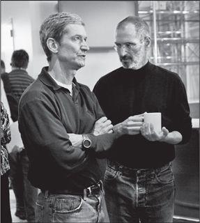
Тим Кук и Джобс, 2007
Tim Cook
Тим Кук
When Steve Jobs returned to Apple and produced the “Think Different” ads and the iMac in his first year, it confirmed what most people already knew: that he could be creative and a visionary. He had shown that during his first round at Apple. What was less clear was whether he could run a company. He had definitely not shown that during his first round.
| a visionary | визионер, провидец |
| his first round at Apple | его первый период работы в Apple |
Когда Стив Джобс вернулся в Apple и в первый же год выпустил рекламу «Think Different» и iMac, это подтвердило то, что большинство и так знало: он умеет творить и видеть будущее. Это он показал ещё когда впервые работал в Apple. Менее ясно было, умеет ли он управлять компанией. В первый период работы он этого определённо не показал.
Jobs threw himself into the task with a detail-oriented realism that astonished those who were used to his fantasy that the rules of this universe need not apply to him. “He became a manager, which is different from being an executive or visionary, and that pleasantly surprised me,” recalled Ed Woolard, the board chair who lured him back.
| threw himself into | отдался делу |
| detail-oriented realism | практичный подход и внимание к деталям |
| lured him back | заманивший его обратно |
Джобс взялся за дело с такой практичностью и вниманием к деталям, что поразил тех, кто привык к его убеждению, будто законы вселенной на него не распространяются. «Он стал управленцем — а это не то же самое, что руководитель или визионер, — и приятно меня удивил», — вспоминал Эд Вулард, председатель совета, заманивший его обратно.
His management mantra was “Focus.” He eliminated excess product lines and cut extraneous features in the new operating system software that Apple was developing. He let go of his control-freak desire to manufacture products in his own factories and instead outsourced the making of everything from the circuit boards to the finished computers. And he enforced on Apple’s suppliers a rigorous discipline. When he took over, Apple had more than two months’ worth of inventory sitting in warehouses, more than any other tech company. Like eggs and milk, computers have a short shelf life, so this amounted to at least a $500 million hit to profits. By early 1998 he had halved that to a month.
| mantra | мантра, девиз |
| extraneous features | ненужные, лишние функции |
| outsourced | отдал на аутсорсинг |
| a short shelf life | короткий срок годности |
Его девизом в управлении было «Сосредоточьтесь на главном». Он ликвидировал лишние продуктовые линии и вычистил ненужные функции из новой операционной системы, которую разрабатывала Apple. Он отказался от желания производить всё на собственных заводах, продиктованного стремлением всё контролировать и отдал на аутсорсинг изготовление всего — от плат до готовых компьютеров. А поставщиков Apple подчинил жёсткой дисциплине. Когда он пришёл, на складах Apple лежало запасов больше чем на два месяца — больше, чем у любой другой технокомпании. У компьютеров, как у яиц и молока, короткий срок годности — это било по прибыли как минимум на 500 миллионов долларов. К началу 1998 года он сократил запасы вдвое — до месяца.
Jobs’s successes came at a cost, since velvety diplomacy was still not part of his repertoire. When he decided that a division of Airborne Express wasn’t delivering spare parts quickly enough, he ordered an Apple manager to break the contract. When the manager protested that doing so could lead to a lawsuit, Jobs replied, “Just tell them if they fuck with us, they’ll never get another fucking dime from this company, ever.” The manager quit, there was a lawsuit, and it took a year to resolve. “My stock options would be worth $10 million had I stayed,” the manager said, “but I knew I couldn’t have stood it—and he’d have fired me anyway.” The new distributor was ordered to cut inventory 75%, and did. “Under Steve Jobs, there’s zero tolerance for not performing,” its CEO said. At another point, when VLSI Technology was having trouble delivering enough chips on time, Jobs stormed into a meeting and started shouting that they were “fucking dickless assholes.” The company ended up getting the chips to Apple on time, and its executives made jackets that boasted on the back, “Team FDA.”
| velvety diplomacy | мягкая, тактичная дипломатия |
| repertoire | репертуар, арсенал |
| a lawsuit | судебный иск |
| zero tolerance | нулевая терпимость |
| Team FDA | «Команда FDA»: шутливое сокращение от оскорбления fucking dickless assholes — «грёбаные безъяйцевые мудаки», прозвучавшего выше |
Успехи Джобса имели цену: мягкая, тактичная дипломатия в его репертуар так и не вошла. Решив, что подразделение Airborne Express слишком медленно доставляет запчасти, он приказал менеджеру Apple разорвать контракт. Когда тот возразил, что дело пахнет судом, Джобс ответил: «Просто скажи им: если они будут с нами выёбываться, больше ни одного грёбаного цента от этой компании не получат. Никогда». Менеджер уволился, суд состоялся, разбирались год. «Останься я, мои опционы стоили бы 10 миллионов долларов, — говорил он, — но я знал, что не выдержу, — и он всё равно бы меня уволил». Новому дистрибьютору приказали урезать запасы на 75% — и тот урезал. «При Стиве Джобсе невыполненных обязательств не терпят», — говорил его генеральный директор. В другой раз, когда VLSI Technology срывала поставки чипов, Джобс ворвался на встречу с криками, что они «грёбаные безъяйцевые мудаки». Чипы в Apple попали вовремя, а руководители компании заказали куртки с надписью на спине: «Команда FDA».
After three months of working under Jobs, Apple’s head of operations decided he could not bear the pressure, and he quit. For almost a year Jobs ran operations himself, because all the prospects he interviewed “seemed like they were old-wave manufacturing people,” he recalled. He wanted someone who could build just-in-time factories and supply chains, as Michael Dell had done. Then, in 1998, he met Tim Cook, a courtly thirty-seven-year-old procurement and supply chain manager at Compaq Computers, who not only would become his operations manager but would grow into an indispensable backstage partner in running Apple. As Jobs recalled:
| old-wave manufacturing people | производственники старой закалки |
| just-in-time factories | заводы, работающие по принципу «точно в срок»: детали поступают по мере необходимости |
| courtly | обходительный |
| procurement | закупки |
| indispensable | незаменимый |
Через три месяца работы под руководством Джобса операционный директор Apple решил, что давления ему не вынести, и ушёл. Почти год операциями управлял сам Джобс: все кандидаты «выглядели производственниками старой закалки», вспоминал он. Ему нужен был тот, кто организует производство и поставки по принципу «точно в срок», как Майкл Делл. В 1998 году он встретил Тима Кука — обходительного тридцатисемилетнего менеджера по закупкам и поставкам из Compaq, который не только стал его операционным директором, но и вырос в незаменимого закулисного партнёра по управлению Apple. Джобс вспоминал:
Tim Cook came out of procurement, which is just the right background for what we needed. I realized that he and I saw things exactly the same way. I had visited a lot of just-in-time factories in Japan, and I’d built one for the Mac and at NeXT. I knew what I wanted, and I met Tim, and he wanted the same thing. So we started to work together, and before long I trusted him to know exactly what to do. He had the same vision I did, and we could interact at a high strategic level, and I could just forget about a lot of things unless he came and pinged me.
| saw things exactly the same way | видели вещи совершенно одинаково |
| a high strategic level | высокий стратегический уровень |
| pinged me | обращался ко мне, давал о себе знать |
Тим Кук занимался закупками — именно такой опыт нам и был нужен. Я понял, что мы видим вещи совершенно одинаково. Я побывал в Японии на многих заводах, работавших по принципу «точно в срок», а для Mac и в NeXT сам построил по одному. Я знал, чего хочу; встретил Тима — и он хотел того же. Мы начали работать вместе, и вскоре я уже был уверен: он точно знает, что делать. Мы одинаково представляли себе цель, мы взаимодействовали на высоком стратегическом уровне, и о куче вещей я мог просто забыть, пока он сам не обращался ко мне.
Cook, the son of a shipyard worker, was raised in Robertsdale, Alabama, a small town between Mobile and Pensacola a half hour from the Gulf Coast. He majored in industrial engineering at Auburn, got a business degree at Duke, and for the next twelve years worked for IBM in the Research Triangle of North Carolina. When Jobs interviewed him, he had recently taken a job at Compaq. He had always been a very logical engineer, and Compaq then seemed a more sensible career option, but he was snared by Jobs’s aura. “Five minutes into my initial interview with Steve, I wanted to throw caution and logic to the wind and join Apple,” he later said. “My intuition told me that joining Apple would be a once-in-a-lifetime opportunity to work for a creative genius.” And so he did. “Engineers are taught to make a decision analytically, but there are times when relying on gut or intuition is most indispensable.”
| a shipyard worker | рабочий верфи |
| majored in | изучал как основную специальность |
| was snared by | был пленён |
| throw caution and logic to the wind | бросить к чёрту осторожность и логику |
| gut or intuition | чутьё, интуиция |
Кук, сын рабочего верфи, вырос в Робертсдейле, штат Алабама, — городке между Мобилом и Пенсаколой, в получасе от побережья Мексиканского залива. В Оберне он изучал промышленную инженерию, получил степень в области бизнеса в Дьюкском университете и следующие двенадцать лет работал в IBM в северокаролинском Исследовательском треугольнике. К моменту собеседования с Джобсом он недавно устроился в Compaq. Как инженер, он всегда руководствовался логикой, и работа в Compaq казалась более разумным выбором, — но его пленила аура Джобса. «Через пять минут первого собеседования со Стивом я был готов бросить к чёрту осторожность и логику и пойти в Apple, — говорил он позже. — Интуиция подсказала: работа с творческим гением — шанс раз в жизни». Так он и сделал. «Инженеров учат принимать решения на основе анализа, но иногда важнее всего довериться чутью, интуиции».
At Apple his role became implementing Jobs’s intuition, which he accomplished with a quiet diligence. Never married, he threw himself into his work. He was up most days at 4:30 sending emails, then spent an hour at the gym, and was at his desk shortly after 6. He scheduled Sunday evening conference calls to prepare for each week ahead. In a company that was led by a CEO prone to tantrums and withering blasts, Cook commanded situations with a calm demeanor, a soothing Alabama accent, and silent stares. “Though he’s capable of mirth, Cook’s default facial expression is a frown, and his humor is of the dry variety,” Adam Lashinsky wrote in Fortune. “In meetings he’s known for long, uncomfortable pauses, when all you hear is the sound of his tearing the wrapper off the energy bars he constantly eats.”
| quiet diligence | спокойное усердие |
| tantrums | истерики |
| withering blasts | испепеляющие разносы |
| demeanor | выдержка, манера держаться |
| mirth | весёлость |
В Apple его ролью стало воплощение интуиции Джобса — чем он занимался со спокойным усердием. Он никогда не был женат и целиком посвятил себя работе. Вставал обычно в 4:30 и рассылал письма, час проводил в спортзале и вскоре после шести был за столом. По воскресеньям вечером назначал конференц-звонки, готовясь к неделе. В компании, которой руководил CEO, склонный к истерикам и испепеляющим разносам, Кук управлял ситуацией спокойной выдержкой, убаюкивающим алабамским говором и молчаливыми взглядами. «Хотя Куку свойственна и весёлость, по умолчанию на его лице — хмурость, а юмор его суховат, — писал Адам Лашински в Fortune. — На совещаниях он известен долгими неловкими паузами, когда слышно лишь, как он сдирает обёртку с энергетических батончиков, которые поедает без остановки».
At a meeting early in his tenure, Cook was told of a problem with one of Apple’s Chinese suppliers. “This is really bad,” he said. “Someone should be in China driving this.” Thirty minutes later he looked at an operations executive sitting at the table and unemotionally asked, “Why are you still here?” The executive stood up, drove directly to the San Francisco airport, and bought a ticket to China. He became one of Cook’s top deputies.
| driving this | на месте решать эту проблему |
| unemotionally | бесстрастно |
| top deputies | главные заместители |
На одном совещании в начале его карьеры в Apple Куку доложили о проблеме с китайским поставщиком. «Это очень плохо, — сказал он. — Кто-то должен поехать в Китай и заняться этой проблемой». Через полчаса он посмотрел на сидевшего за столом директора по операциям и бесстрастно спросил: «Почему вы всё ещё здесь?» Тот встал, поехал прямо в аэропорт Сан-Франциско и купил билет в Китай. Впоследствии он стал одним из главных заместителей Кука.
Cook reduced the number of Apple’s key suppliers from a hundred to twenty-four, forced them to cut better deals to keep the business, convinced many to locate next to Apple’s plants, and closed ten of the company’s nineteen warehouses. By reducing the places where inventory could pile up, he reduced inventory. Jobs had cut inventory from two months’ worth of product down to one by early 1998. By September of that year, Cook had gotten it down to six days. By the following September, it was down to an amazing two days’ worth. In addition, he cut the production process for making an Apple computer from four months to two. All of this not only saved money, it also allowed each new computer to have the very latest components available.
| cut better deals | давать лучшие условия |
| pile up | копятся |
Кук сократил число ключевых поставщиков Apple с сотни до двадцати четырёх, заставил их давать лучшие условия ради сохранения контракта, убедил многих разместиться рядом с заводами Apple и закрыл десять из девятнадцати складов компании. Уменьшив число мест, где копятся запасы, он уменьшил и сами запасы. К началу 1998 года Джобс срезал запасы с двух месяцев до одного; к сентябрю Кук довёл до шести дней, а к следующему сентябрю — до поразительных двух. Кроме того, он сократил производственный цикл компьютера Apple с четырёх месяцев до двух. Всё это не только экономило деньги — каждый новый компьютер получал самые свежие комплектующие.
Mock Turtlenecks and Teamwork
Водолазки и командная работа
On a trip to Japan in the early 1980s, Jobs asked Sony’s chairman, Akio Morita, why everyone in his company’s factories wore uniforms. “He looked very ashamed and told me that after the war, no one had any clothes, and companies like Sony had to give their workers something to wear each day,” Jobs recalled. Over the years the uniforms developed their own signature style, especially at companies such as Sony, and it became a way of bonding workers to the company. “I decided that I wanted that type of bonding for Apple,” Jobs recalled.
| ashamed | смущённый |
| signature style | фирменный стиль |
| bonding workers to the company | укрепление чувства принадлежности к компании |
В поездке в Японию в начале 1980-х Джобс спросил председателя Sony Акио Мориту, почему на заводах его компании все носят форму. «Он очень смутился и объяснил: после войны одежды ни у кого не было, и компаниям вроде Sony пришлось выдавать работникам что-то на каждый день», — вспоминал Джобс. С годами форма обрела фирменный стиль, особенно в таких компаниях, как Sony, и стала укреплять у сотрудников чувство принадлежности к компании. «Я решил, что хочу, чтобы и в Apple люди чувствовали такую связь с компанией», — вспоминал Джобс.
Sony, with its appreciation for style, had gotten the famous designer Issey Miyake to create one of its uniforms. It was a jacket made of ripstop nylon with sleeves that could unzip to make it a vest. “So I called Issey and asked him to design a vest for Apple,” Jobs recalled. “I came back with some samples and told everyone it would be great if we would all wear these vests. Oh man, did I get booed off the stage. Everybody hated the idea.”
| ripstop nylon | рипстоп-нейлон (прочная ткань) |
| a vest | жилет |
| get booed off the stage | быть освистанным и согнанным со сцены; здесь: «меня согнали со сцены свистом» |
Sony, ценя стиль, заказала одну из своих форм знаменитому дизайнеру Иссею Мияке. Это была куртка из рипстоп-нейлона с отстёгивающимися рукавами, так что её можно было превратить в жилет. «Я позвонил Иссею и попросил спроектировать жилет для Apple, — вспоминал Джобс. — Вернулся с образцами и объявил всем, как здорово будет носить эти жилеты. Ох, меня согнали со сцены свистом. Идею возненавидели все».
In the process, however, he became friends with Miyake and would visit him regularly. He also came to like the idea of having a uniform for himself, because of both its daily convenience (the rationale he claimed) and its ability to convey a signature style. “So I asked Issey to make me some of his black turtlenecks that I liked, and he made me like a hundred of them.” Jobs noticed my surprise when he told this story, so he gestured to them stacked up in the closet. “That’s what I wear,” he said. “I have enough to last for the rest of my life.”
| the rationale he claimed | обоснование, которое он приводил |
| convey a signature style | подчёркивать узнаваемый стиль |
| turtlenecks | водолазки |
| stacked up in the closet | стопкой в шкафу |
Попутно, однако, он подружился с Мияке и стал регулярно его навещать. Ему пришлась по душе и мысль о собственной форме — и ради повседневного удобства (так он сам объяснял), и ради узнаваемого стиля. «Я попросил Иссея сшить мне несколько его чёрных водолазок, которые мне нравились, и он сделал штук сто». Заметив моё удивление, Джобс указал на стопку в шкафу. «Вот что я ношу, — сказал он. — Хватит до конца жизни».
Despite his autocratic nature—he never worshipped at the altar of consensus—Jobs worked hard to foster a culture of collaboration at Apple. Many companies pride themselves on having few meetings. Jobs had many: an executive staff session every Monday, a marketing strategy session all Wednesday afternoon, and endless product review sessions. Still allergic to PowerPoints and formal presentations, he insisted that the people around the table hash out issues from various vantages and the perspectives of different departments.
| autocratic nature | автократичный нрав |
| worshipped at the altar of consensus | считал всеобщее согласие высшей ценностью; образное выражение |
| foster a culture of collaboration | растить культуру сотрудничества |
| hash out issues | подробно обсуждать вопросы, чтобы прийти к решению |
| from various vantages | с разных сторон |
Несмотря на властный характер — всеобщее согласие никогда не было для него самоцелью, — Джобс много работал над тем, чтобы развивать в Apple культуру сотрудничества. Многие компании гордятся малым числом совещаний. У Джобса их было много: заседание руководящего состава каждый понедельник, обсуждение маркетинговой стратегии всю вторую половину среды и бесконечные совещания по продуктам. По-прежнему не перенося презентаций и формальных докладов, он требовал, чтобы собравшиеся за столом проговаривали вопросы с разных сторон и с позиций разных отделов.
Because he believed that Apple’s great advantage was its integration of the whole widget—from design to hardware to software to content—he wanted all departments at the company to work together in parallel. The phrases he used were “deep collaboration” and “concurrent engineering.” Instead of a development process in which a product would be passed sequentially from engineering to design to manufacturing to marketing and distribution, these various departments collaborated simultaneously. “Our method was to develop integrated products, and that meant our process had to be integrated and collaborative,” Jobs said.
| the whole widget | всё устройство целиком |
| in parallel | параллельно |
| concurrent engineering | параллельная разработка |
| sequentially | последовательно |
Веря, что великое преимущество Apple — интеграция всего устройства, от дизайна до железа, софта и контента, он хотел, чтобы все отделы работали параллельно. Он говорил о «глубоком сотрудничестве» и «параллельной разработке». Вместо процесса, где продукт последовательно передаётся из инженерии в дизайн, в производство, маркетинг и дистрибуцию, отделы сотрудничали одновременно. «Наш метод — разработка интегрированных продуктов, а значит, и процесс должен быть интегрированным и коллективным», — говорил Джобс.
This approach also applied to key hires. He would have candidates meet the top leaders—Cook, Tevanian, Schiller, Rubinstein, Ive—rather than just the managers of the department where they wanted to work. “Then we all get together without the person and talk about whether they’ll fit in,” Jobs said. His goal was to be vigilant against “the bozo explosion” that leads to a company’s being larded with second-rate talent:
| key hires | подбор сотрудников на ключевые должности |
| vigilant against | бдительный в отношении |
| the bozo explosion | буквально «взрыв числа болванов»; массовый приток бездарных сотрудников |
| larded with | обрастает, начинена |
Подход распространялся и на подбор сотрудников на ключевые должности: кандидатов знакомили с первыми лицами — Куком, Теваняном, Шиллером, Рубинштейном, Айвом, — а не только с менеджерами нужного отдела. «Потом мы собираемся без кандидата и обсуждаем, впишется ли он», — говорил Джобс. Его целью было не допустить «взрыва болванов», приводящего к тому, что компания обрастает второсортными кадрами:
For most things in life, the range between best and average is 30% or so. The best airplane flight, the best meal, they may be 30% better than your average one. What I saw with Woz was somebody who was fifty times better than the average engineer. He could have meetings in his head. The Mac team was an attempt to build a whole team like that, A players. People said they wouldn’t get along, they’d hate working with each other. But I realized that A players like to work with A players, they just didn’t like working with C players. At Pixar, it was a whole company of A players. When I got back to Apple, that’s what I decided to try to do. You need to have a collaborative hiring process. When we hire someone, even if they’re going to be in marketing, I will have them talk to the design folks and the engineers. My role model was J. Robert Oppenheimer. I read about the type of people he sought for the atom bomb project. I wasn’t nearly as good as he was, but that’s what I aspired to do.
| A players | буквально «игроки класса A»; первоклассные специалисты |
| get along | уживаться |
| my role model | мой образец для подражания |
| I aspired to do | к чему я стремился |
| C players | буквально «игроки класса C»; посредственные специалисты |
В большинстве вещей разрыв между лучшим и средним — около 30%. Лучший перелёт, лучший обед, может, на 30% лучше среднего. А Воз был в пятьдесят раз лучше среднего инженера. Он мог проводить совещания в собственной голове. Команда Mac была попыткой собрать целую команду таких — первоклассных специалистов. Говорили, что они не уживутся и возненавидят друг друга. Но я понял: первоклассные специалисты любят работать с такими же — им не нравится работать с посредственностями. В Pixar вся компания состояла из первоклассных специалистов. Вернувшись в Apple, я решил попробовать сделать то же. Нужен коллективный процесс найма. Нанимая человека — даже в маркетинг, — я сведу его с дизайнерами и инженерами. Моим образцом был Роберт Оппенгеймер. Я читал, каких людей он искал для атомного проекта. Я не был и вполовину так хорош, но стремился к этому.
The process could be intimidating, but Jobs had an eye for talent. When they were looking for people to design the graphical interface for Apple’s new operating system, Jobs got an email from a young man and invited him in. The applicant was nervous, and the meeting did not go well. Later that day Jobs bumped into him, dejected, sitting in the lobby. The guy asked if he could just show him one of his ideas, so Jobs looked over his shoulder and saw a little demo, using Adobe Director, of a way to fit more icons in the dock at the bottom of a screen. When the guy moved the cursor over the icons crammed into the dock, the cursor mimicked a magnifying glass and made each icon balloon bigger. “I said, ‘My God,’ and hired him on the spot,” Jobs recalled. The feature became a lovable part of Mac OSX, and the designer went on to design such things as inertial scrolling for multi-touch screens (the delightful feature that makes the screen keep gliding for a moment after you’ve finished swiping).
| intimidating | пугающий |
| an eye for talent | умение замечать талант |
| bumped into | столкнулся с |
| dejected | поникший, удручённый |
| balloon bigger | раздувал, увеличивал |
| on the spot | на месте, сразу |
| inertial scrolling | инерционная прокрутка |
| swiping | свайп, смахивание |
Процесс мог быть пугающим, но Джобс умел замечать талант. Когда искали дизайнера графического интерфейса новой системы Apple, Джобсу написал молодой человек, и он пригласил его. Тот нервничал, и встреча не задалась. Позже в тот же день Джобс столкнулся с ним, поникшим, в вестибюле. Парень попросил разрешения показать одну свою идею, и Джобс, глянув через плечо, увидел маленькое демо на Adobe Director: как уместить больше иконок в доке внизу экрана. Когда парень наводил курсор на тесно расположенные иконки, тот действовал как лупа, увеличивая каждую из них. «Я сказал: „Боже мой“ — и нанял его на месте», — вспоминал Джобс. Функция стала любимой частью Mac OSX, а дизайнер затем создал, среди прочего, инерционную прокрутку мультитач-экранов (ту самую прелесть, когда экран ещё мгновение скользит после завершения свайпа).
Jobs’s experiences at NeXT had matured him, but they had not mellowed him much. He still had no license plate on his Mercedes, and he still parked in the handicapped spaces next to the front door, sometimes straddling two slots. It became a running gag. Employees made signs saying, “Park Different,” and someone painted over the handicapped wheelchair symbol with a Mercedes logo.
| matured him | сделал его более зрелым |
| mellowed him | смягчил |
| handicapped spaces | места для инвалидов |
| straddling two slots | занимая два места |
| a running gag | постоянная шутка |
Опыт работы в NeXT сделал Джобса более зрелым, но характер его почти не смягчился. Номера на его Mercedes по-прежнему не было, и он по-прежнему парковался на местах для инвалидов у входа, иногда занимая два. Это стало постоянной шуткой. Сотрудники делали таблички «Паркуйся иначе», а кто-то закрасил символ инвалидной коляски логотипом Mercedes.
People were allowed, even encouraged, to challenge him, and sometimes he would respect them for it. But you had to be prepared for him to attack you, even bite your head off, as he processed your ideas. “You never win an argument with him at the time, but sometimes you eventually win,” said James Vincent, the creative young adman who worked with Lee Clow. “You propose something and he declares, ‘That’s a stupid idea,’ and later he comes back and says, ‘Here’s what we’re going to do.’ And you want to say, ‘That’s what I told you two weeks ago and you said that’s a stupid idea.’ But you can’t do that. Instead you say, ‘That’s a great idea, let’s do that.’”
| bite your head off | буквально «откусить тебе голову»; резко отчитать, наброситься с руганью |
| processed your ideas | обдумывал ваши идеи; образно: «переваривал» |
Спорить с ним разрешалось — даже поощрялось, — и порой он за это уважал. Но нужно было быть готовым к тому, что он нападёт, а то и разнесёт тебя в пух и прах, пока обдумывает твои идеи. «В момент спора у него не выиграть, но иногда выигрываешь в итоге, — говорил Джеймс Винсент, молодой креативщик, работавший с Ли Клоу. — Предлагаешь что-то, он заявляет: „Дурацкая идея“, а позже возвращается: „Вот что мы сделаем“. И хочется сказать: „Это я предлагал две недели назад, а ты назвал идею дурацкой“. Но нельзя. Вместо этого говоришь: „Отличная идея, давайте так“».
People also had to put up with Jobs’s occasional irrational or incorrect assertions. To both family and colleagues, he was apt to declare, with great conviction, some scientific or historical fact that had scant relationship to reality. “There can be something he knows absolutely nothing about, and because of his crazy style and utter conviction, he can convince people that he knows what he’s talking about,” said Ive, who described the trait as weirdly endearing. Yet with his eye for detail, Jobs sometimes correctly pounced on tiny things others had missed. Lee Clow recalled showing Jobs a cut of a commercial, making some minor changes he requested, and then being assaulted with a tirade about how the ad had been completely destroyed. “He discovered we had cut two extra frames, something so fleeting it was nearly impossible to notice,” said Clow. “But he wanted to be sure that an image hit at the exact moment as a beat of the music, and he was totally right.”
| assertions | утверждения |
| scant relationship to reality | мало общего с реальностью |
| endearing | милая, располагающая |
| pounced on | сразу подмечал и резко указывал на |
| a tirade | тирада, гневная речь |
| fleeting | мимолётный |
| a beat of the music | удар в музыкальном ритме |
Приходилось мириться и с порой иррациональными или неверными утверждениями Джобса. И близким, и коллегам он с полной убеждённостью выдавал научные или исторические «факты», имевшие мало общего с реальностью. «Бывает, он о чём-то не знает ровно ничего, но благодаря безумному стилю и абсолютной убеждённости убеждает людей, что разбирается», — говорил Айв, называя эту черту странно милой. Однако благодаря вниманию к деталям Джобс порой подмечал мелочи, которые другие упускали, и справедливо на них указывал. Ли Клоу вспоминал: он показал Джобсу монтаж ролика, внёс небольшие правки — и получил тираду о том, что реклама полностью уничтожена. «Он обнаружил, что мы вырезали два лишних кадра — настолько мимолётных, что заметить почти невозможно, — рассказывал Клоу. — Но он хотел, чтобы изображение появлялось точно в такт музыке, и был совершенно прав».
From iCEO to CEO
Из временного генерального директора — в постоянные
Ed Woolard, his mentor on the Apple board, pressed Jobs for more than two years to drop the interim in front of his CEO h1. Not only was Jobs refusing to commit himself, but he was baffling everyone by taking only $1 a year in pay and no stock options. “I make 50 cents for showing up,” he liked to joke, “and the other 50 cents is based on performance.” Since his return in July 1997, Apple stock had gone from just under $14 to just over $102 at the peak of the Internet bubble at the beginning of 2000. Woolard had begged him to take at least a modest stock grant back in 1997, but Jobs had declined, saying, “I don’t want the people I work with at Apple to think I am coming back to get rich.” Had he accepted that modest grant, it would have been worth $400 million. Instead he made $2.50 during that period.
| h1 | титул (в источнике — опечатка OCR, «title») |
Эд Вулард, его наставник в совете Apple, больше двух лет убеждал Джобса убрать «временный» в названии должности генерального директора. Джобс не только не брал на себя обязательств — он всех озадачивал, получая лишь доллар в год и никаких опционов. «Пятьдесят центов я зарабатываю появлением на работе, — шутил он, — а другие пятьдесят зависят от результатов». С его возвращения в июле 1997 года акции Apple выросли с неполных 14 долларов до чуть более 102 на пике интернет-пузыря в начале 2000-го. Вулард ещё в 1997-м умолял его взять хотя бы скромный пакет акций, но Джобс отказался: «Не хочу, чтобы люди, с которыми я работаю в Apple, думали, будто я вернулся обогатиться». Прими он тот скромный пакет, он стоил бы 400 миллионов. Вместо этого он заработал за тот период 2 доллара 50 центов.
The main reason he clung to his interim designation was a sense of uncertainty about Apple’s future. But as 2000 approached, it was clear that Apple had rebounded, and it was because of him. He took a long walk with Laurene and discussed what to most people by now seemed a formality but to him was still a big deal. If he dropped the interim designation, Apple could be the base for all the things he envisioned, including the possibility of getting Apple into products beyond computers. He decided to do so.
| clung to | цеплялся за |
| rebounded | воспряла, восстановилась |
| a formality | формальность |
Он держался за слово «временный» прежде всего потому, что не был уверен в будущем Apple. Но к 2000 году стало ясно: Apple воспряла — и благодаря ему. Он долго гулял с Лорин, обсуждая то, что большинству казалось формальностью, а для него было серьёзным шагом. Убери он «временный» — Apple станет базой для всего задуманного, включая возможный выход за пределы компьютеров. Он решился.
Woolard was thrilled, and he suggested that the board was willing to give him a massive stock grant. “Let me be straight with you,” Jobs replied. “What I’d rather have is an airplane. We just had a third kid. I don’t like flying commercial. I like to take my family to Hawaii. When I go east, I’d like to have pilots I know.” He was never the type of person who could display grace and patience in a commercial airplane or terminal, even before the days of the TSA. Board member Larry Ellison, whose plane Jobs sometimes used (Apple paid $102,000 to Ellison in 1999 for Jobs’s use of it), had no qualms. “Given what he’s accomplished, we should give him five airplanes!” Ellison argued. He later said, “It was the perfect thank-you gift for Steve, who had saved Apple and gotten nothing in return.”
| thrilled | ликовал |
| a massive stock grant | огромный пакет акций |
| Let me be straight with you | Скажу прямо |
| flying commercial | летать рейсовыми самолётами |
| had no qualms | не колебался |
Вулард ликовал и намекнул, что совет готов дать Джобсу огромный пакет акций. «Скажу прямо, — ответил Джобс. — Мне бы больше хотелось самолёт. У нас только что родился третий ребёнок. Я не люблю летать рейсовыми. Люблю возить семью на Гавайи. Когда лечу на восток, хочу пилотов, которых знаю». Он никогда не умел вести себя любезно и терпеливо на рейсовом самолёте или в аэропорту — даже до появления Управления транспортной безопасности США (TSA). Член совета Ларри Эллисон, чьим самолётом Джобс иногда пользовался (Apple заплатила Эллисону 102 000 долларов за 1999 год), не колебался: «Учитывая сделанное им, подарить ему нужно пять самолётов!» Позже он говорил: «Это был идеальный благодарственный подарок Стиву, спасшему Apple и не получившему взамен ничего».
So Woolard happily granted Jobs’s wish, with a Gulfstream V, and also offered him fourteen million stock options. Jobs gave an unexpected response. He wanted more: twenty million options. Woolard was baffled and upset. The board had authority from the stockholders to give out only fourteen million. “You said you didn’t want any, and we gave you a plane, which you did want,” Woolard said.
| baffled and upset | озадачен и расстроен |
| stock options | опционы на акции |
| had authority from the stockholders | был уполномочен акционерами |
Вулард с радостью исполнил желание — Gulfstream V — и предложил ещё четырнадцать миллионов опционов. Ответ Джобса стал неожиданностью: он хотел больше — двадцать миллионов. Вулард был озадачен и расстроен. Акционеры уполномочили совет раздать лишь четырнадцать миллионов. «Ты говорил, что не хочешь опционов, — и мы подарили самолёт, который ты хотел», — сказал Вулард.
“I hadn’t been insisting on options before,” Jobs replied, “but you suggested it could be up to 5% of the company in options, and that’s what I now want.” It was an awkward tiff in what should have been a celebratory period. In the end, a complex solution was worked out that granted him ten million shares in January 2000 that were valued at the current price but timed to vest as if granted in 1997, plus another grant due in 2001. Making matters worse, the stock fell with the burst of the Internet bubble. Jobs never exercised the options, and at the end of 2001 he asked that they be replaced by a new grant with a lower strike price. The wrestling over options would come back to haunt the company.
| an awkward tiff | неловкая размолвка |
| timed to vest | с графиком перехода прав на вознаграждение |
| a lower strike price | более низкая цена исполнения |
| come back to haunt the company | аукнется компании |
«Раньше я на опционах не настаивал, — ответил Джобс, — но ты сам сказал, что можно до 5% компании, — вот этого я теперь и хочу». Неловкая размолвка в период, который должен был быть праздничным. В итоге выработали сложное решение: в январе 2000 года ему выдали десять миллионов акций, оценённых по текущей цене, но с графиком перехода прав, отсчитываемым так, будто акции предоставили ещё в 1997-м, плюс ещё один пакет в 2001 году. Хуже того: после того как лопнул интернет-пузырь, акции подешевели. Джобс так и не исполнил опционы и в конце 2001 года попросил заменить их новым пакетом с более низкой ценой исполнения. Возня с опционами ещё аукнется компании.
Even if he didn’t profit from the options, at least he got to enjoy the airplane. Not surprisingly he fretted over how the interior would be designed. It took him more than a year. He used Ellison’s plane as a starting point and hired his designer. Pretty soon he was driving her crazy. For example, Ellison’s had a door between cabins with an open button and a close button. Jobs insisted that his have a single button that toggled. He didn’t like the polished stainless steel of the buttons, so he had them replaced with brushed metal ones. But in the end he got the plane he wanted, and he loved it. “I look at his airplane and mine, and everything he changed was better,” said Ellison.
| fretted over | тщательно обдумывал, переживал |
| a single button that toggled | одна переключающая кнопка |
| brushed metal | шлифованный металл |
Пусть опционы не принесли прибыли, самолётом он насладился. Неудивительно, что он тщательно обдумывал интерьер — больше года. Взял за основу самолёт Эллисона и нанял его дизайнера. Скоро довёл её до белого каления. Например, у Эллисона между салонами дверь с двумя кнопками — открыть и закрыть. Джобс настоял на одной переключающей. Не понравилась ему и полированная нержавейка кнопок — заменил на шлифованный металл. В итоге получил самолёт, который хотел, и любил его. «Смотрю на его самолёт и на свой: всё, что он изменил, стало лучше», — говорил Эллисон.
At the January 2000 Macworld in San Francisco, Jobs rolled out the new Macintosh operating system, OSX, which used some of the software that Apple had bought from NeXT three years earlier. It was fitting, and not entirely coincidental, that he was willing to incorporate himself back at Apple at the same moment as the NeXT OS was incorporated into Apple’s. Avie Tevanian had taken the UNIX-related Mach kernel of the NeXT operating system and turned it into the Mac OS kernel, known as Darwin. It offered protected memory, advanced networking, and preemptive multitasking. It was precisely what the Macintosh needed, and it would be the foundation of the Mac OS henceforth. Some critics, including Bill Gates, noted that Apple ended up not adopting the entire NeXT operating system. There’s some truth to that, because Apple decided not to leap into a completely new system but instead to evolve the existing one. Application software written for the old Macintosh system was generally compatible with or easy to port to the new one, and a Mac user who upgraded would notice a lot of new features but not a whole new interface.
| rolled out | представил, выпустил |
| kernel | ядро (операционной системы) |
| protected memory | защищённая память |
| preemptive multitasking | вытесняющая многозадачность |
| easy to port to | легко переносить на |
На Macworld в январе 2000 года в Сан-Франциско Джобс представил новую операционную систему Macintosh — OSX, использовавшую часть софта, купленного Apple у NeXT тремя годами раньше. Символично — и не совсем случайно, — что он окончательно возвращался в Apple в тот самый момент, когда элементы ОС NeXT вошли в систему Apple. Ави Теванян превратил связанное с UNIX ядро Mach из системы NeXT в ядро Mac OS, названное Darwin. Оно давало защищённую память, продвинутые сети и вытесняющую многозадачность. Ровно то, что требовалось Macintosh, — отныне фундамент Mac OS. Некоторые критики, включая Билла Гейтса, отмечали: Apple в итоге взяла не всю систему NeXT. Доля правды в этом есть: Apple решила не переходить резко на совершенно новую систему, а постепенно развивать существующую. Приложения, написанные под старую Macintosh, в основном были совместимы или легко переносились, и пользователь, установивший обновление, видел массу нового, но не совершенно новый интерфейс.
The fans at Macworld received the news with enthusiasm, of course, and they especially cheered when Jobs showed off the dock and how the icons in it could be magnified by passing the cursor over them. But the biggest applause came for the announcement he reserved for his “Oh, and one more thing” coda. He spoke about his duties at both Pixar and Apple, and said that he had become comfortable that the situation could work. “So I am pleased to announce today that I’m going to drop the interim h1,” he said with a big smile. The crowd jumped to its feet, screaming as if the Beatles had reunited. Jobs bit his lip, adjusted his wire rims, and put on a graceful show of humility. “You guys are making me feel funny now. I get to come to work every day and work with the most talented people on the planet, at Apple and Pixar. But these jobs are team sports. I accept your thanks on behalf of everybody at Apple.”
| h1 | титул (в источнике — опечатка OCR, «title») |
Поклонники на Macworld встретили новость восторженно, особенно аплодируя доку с увеличивающимися при наведении курсора иконками. Но громче всего зал взорвался на объявлении, прибережённом для финального «О, и ещё кое-что». Джобс рассказал о своих обязанностях в Pixar и Apple и признался, что поверил: так может работать. «Итак, с удовольствием объявляю сегодня, что убираю из названия должности слово „временный“», — сказал он с широкой улыбкой. Толпа вскочила, крича, будто воссоединились Beatles. Джобс прикусил губу, поправил очки в проволочной оправе и изящно разыграл скромность: «Вы меня смущаете. Я каждый день работаю с талантливейшими людьми планеты — в Apple и Pixar. Но и там и там результат зависит от всей команды. Ваши благодарности я принимаю от имени всех в Apple».
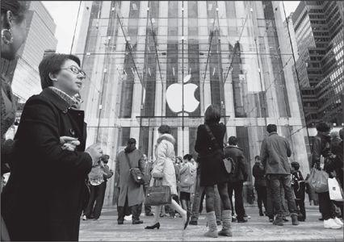
Магазин на Пятой авеню в Нью-Йорке
The Customer Experience
Опыт покупателя
Jobs hated to cede control of anything, especially when it might affect the customer experience. But he faced a problem. There was one part of the process he didn’t control: the experience of buying an Apple product in a store.
| cede control | отдавать контроль |
| the customer experience | опыт покупателя |
Джобс терпеть не мог отдавать контроль над чем-либо — особенно над тем, что влияет на опыт покупателя. Но была одна часть процесса, которую он не контролировал: покупка продукта Apple в магазине.
The days of the Byte Shop were over. Industry sales were shifting from local computer specialty shops to megachains and big box stores, where most clerks had neither the knowledge nor the incentive to explain the distinctive nature of Apple products. “All that the salesman cared about was a $50 spiff,” Jobs said. Other computers were pretty generic, but Apple’s had innovative features and a higher price tag. He didn’t want an iMac to sit on a shelf between a Dell and a Compaq while an uninformed clerk recited the specs of each. “Unless we could find ways to get our message to customers at the store, we were screwed.”
| megachains and big box stores | мегасети и гипермаркеты |
| incentive | стимул |
| a $50 spiff | бонус в 50 долларов |
| generic | безликий, типовой |
| recited the specs | бубнил характеристики |
| we were screwed | нам крышка |
Дни Byte Shop миновали. Продажи смещались из локальных компьютерных магазинчиков в мегасети и гипермаркеты, где у большинства продавцов не было ни знаний, ни стимула объяснять особенности продуктов Apple. «Всё, что волновало продавца, — бонус в 50 долларов», — говорил Джобс. Другие компьютеры были безликими, а у Apple — инновационные функции и более высокая цена. Он не хотел, чтобы iMac стоял на полке между Dell и Compaq, пока несведущий продавец бубнит характеристики каждого. «Если не найдём способ донести наше послание покупателю прямо в магазине — нам крышка».
In great secrecy, Jobs began in late 1999 to interview executives who might be able to develop a string of Apple retail stores. One of the candidates had a passion for design and the boyish enthusiasm of a natural-born retailer: Ron Johnson, the vice president for merchandising at Target, who was responsible for launching distinctive-looking products, such as a teakettle designed by Michael Graves. “Steve is very easy to talk to,” said Johnson in recalling their first meeting. “All of a sudden there’s a torn pair of jeans and turtleneck, and he’s off and running about why he needed great stores. If Apple is going to succeed, he told me, we’re going to win on innovation. And you can’t win on innovation unless you have a way to communicate to customers.”
| in great secrecy | в глубокой тайне |
| retail stores | розничные магазины |
| merchandising | мерчандайзинг |
| boyish enthusiasm | мальчишеский энтузиазм |
| off and running | завёлся, пустился в разговор |
В глубокой тайне с конца 1999 года Джобс собеседовал руководителей, способных построить сеть розничных магазинов Apple. Один из кандидатов отличался страстью к дизайну и мальчишеским энтузиазмом прирождённого ритейлера: Рон Джонсон, вице-президент по мерчандайзингу Target, запускавший необычные продукты вроде чайника Майкла Грейвса. «Со Стивом очень легко говорить, — вспоминал Джонсон первую встречу. — И вдруг — рваные джинсы и водолазка — он уже завёлся о том, зачем ему великие магазины. Если Apple хочет преуспеть, сказал он, мы выиграем на инновациях. А на инновациях не выиграть, не имея способа говорить с покупателями».
When Johnson came back in January 2000 to be interviewed again, Jobs suggested that they take a walk. They went to the sprawling 140-store Stanford Shopping Mall at 8:30 a.m. The stores weren’t open yet, so they walked up and down the entire mall repeatedly and discussed how it was organized, what role the big department stores played relative to the other stores, and why certain specialty shops were successful.
| sprawling | огромный, раскинувшийся |
| the big department stores | большие универмаги |
Когда в январе 2000 года Джонсон пришёл на повторное собеседование, Джобс предложил прогуляться. В 8:30 утра они отправились в огромный торговый центр Stanford Shopping Mall со 140 магазинами. Торговля ещё не началась, и они ходили по моллу туда-сюда, обсуждая его устройство, роль больших универмагов относительно прочих магазинов и причины успеха некоторых специализированных.
They were still walking and talking when the stores opened at 10, and they went into Eddie Bauer. It had an entrance off the mall and another off the parking lot. Jobs decided that Apple stores should have only one entrance, which would make it easier to control the experience. And the Eddie Bauer store, they agreed, was too long and narrow. It was important that customers intuitively grasp the layout of a store as soon as they entered.
| intuitively grasp | интуитивно схватывать |
| the layout | планировка |
К открытию в десять они всё ещё ходили и говорили — и зашли в Eddie Bauer. У магазина было два входа: из молла и с парковки. Джобс решил: у Apple Store вход будет один — так легче контролировать впечатление. А сам магазин Eddie Bauer, сошлись они, слишком длинный и узкий. Важно, чтобы покупатель интуитивно схватывал планировку с порога.
There were no tech stores in the mall, and Johnson explained why: The conventional wisdom was that a consumer, when making a major and infrequent purchase such as a computer, would be willing to drive to a less convenient location, where the rent would be cheaper. Jobs disagreed. Apple stores should be in malls and on Main Streets—in areas with a lot of foot traffic, no matter how expensive. “We may not be able to get them to drive ten miles to check out our products, but we can get them to walk ten feet,” he said. The Windows users, in particular, had to be ambushed: “If they’re passing by, they will drop in out of curiosity, if we make it inviting enough, and once we get a chance to show them what we have, we will win.”
| the conventional wisdom | расхожая мудрость |
| foot traffic | поток прохожих |
| ambushed | брать из засады |
| drop in out of curiosity | заглянут из любопытства |
Техномагазинов в молле не было, и Джонсон объяснил почему: расхожая мудрость гласила — за крупной и редкой покупкой вроде компьютера человек готов ехать в неудобное место, где аренда дешевле. Джобс не соглашался. Apple Store должны стоять в моллах и на главных улицах — где много прохожих, сколько бы это ни стоило. «Заставить их проехать десять миль ради наших продуктов мы, может, и не сможем, но заставить пройти десять футов — сможем», — говорил он. Пользователей Windows следовало брать из засады: «Проходя мимо, они заглянут из любопытства, если сделать магазин приглашающим, а дав нам шанс показать, что у нас есть, мы выиграем».
Johnson said that the size of a store signaled the importance of the brand. “Is Apple as big of a brand as the Gap?” he asked. Jobs said it was much bigger. Johnson replied that its stores should therefore be bigger. “Otherwise you won’t be relevant.” Jobs described Mike Markkula’s maxim that a good company must “impute”—it must convey its values and importance in everything it does, from packaging to marketing. Johnson loved it. It definitely applied to a company’s stores. “The store will become the most powerful physical expression of the brand,” he predicted. He said that when he was young he had gone to the wood-paneled, art-filled mansion-like store that Ralph Lauren had created at Seventy-second and Madison in Manhattan. “Whenever I buy a polo shirt, I think of that mansion, which was a physical expression of Ralph’s ideals,” Johnson said. “Mickey Drexler did that with the Gap. You couldn’t think of a Gap product without thinking of the great Gap store with the clean space and wood floors and white walls and folded merchandise.”
| relevant | значимый |
| impute | «вменять» — внушать ценности через внешнее |
| the most powerful physical expression | самое мощное физическое выражение |
| wood-paneled | отделанный деревянными панелями |
Джонсон заметил, что размер магазина сигнализирует о значимости бренда. «Apple — такой же большой бренд, как Gap?» — спросил он. Джобс сказал: гораздо больше. Тогда и магазины должны быть больше, ответил Джонсон, — «иначе вы не будете значимы». Джобс пересказал максиму Марккулы: хорошая компания должна «вменять» — доносить свои ценности и значимость во всём, от упаковки до маркетинга. Джонсону это понравилось — к магазинам относится в первую очередь. «Магазин станет самым мощным физическим выражением бренда», — предсказал он. В юности, рассказал он, он бывал в отделанном деревом, полном искусства магазине-особняке Ральфа Лорена на Семьдесят второй и Мэдисон в Манхэттене. «Покупая рубашку-поло, я думаю о том особняке — физическом выражении идеалов Ральфа, — говорил Джонсон. — Микки Дрекслер сделал это с Gap: о продукте Gap не подумаешь без образа отличного магазина — чистого пространства, деревянных полов, белых стен и аккуратно сложенных вещей».
When they finished, they drove to Apple and sat in a conference room playing with the company’s products. There weren’t many, not enough to fill the shelves of a conventional store, but that was an advantage. The type of store they would build, they decided, would benefit from having few products. It would be minimalist and airy and offer a lot of places for people to try out things. “Most people don’t know Apple products,” Johnson said. “They think of Apple as a cult. You want to move from a cult to something cool, and having an awesome store where people can try things will help that.” The stores would impute the ethos of Apple products: playful, easy, creative, and on the bright side of the line between hip and intimidating.
| minimalist and airy | минималистичный и просторный |
| a cult | культ |
| the ethos of | дух, суть |
| intimidating | пугающий |
Закончив, они поехали в Apple и сели в переговорной, вертя в руках продукты компании. Их было немного — полки обычного магазина не заполнить, — но это преимущество. Магазин, который они построят, выиграет от малого числа продуктов: минималистичный, просторный, с массой мест, где всё можно попробовать. «Большинство не знают продуктов Apple, — говорил Джонсон. — Apple для них — культ. А нужно перейти от культа к чему-то крутому — и потрясающий магазин, где всё можно испытать, поможет». Магазины должны были транслировать дух продуктов Apple: игривость, лёгкость, творчество — по светлой стороне грани между модным и пугающим.
The Prototype
Прототип
When Jobs finally presented the idea, the board was not thrilled. Gateway Computers was going down in flames after opening suburban stores, and Jobs’s argument that his would do better because they would be in more expensive locations was not, on its face, reassuring. “Think different” and “Here’s to the crazy ones” made for good advertising slogans, but the board was hesitant to make them guidelines for corporate strategy. “I’m scratching my head and thinking this is crazy,” recalled Art Levinson, the CEO of Genentech who joined the Apple board in 2000. “We are a small company, a marginal player. I said that I’m not sure I can support something like this.” Ed Woolard was also dubious. “Gateway has tried this and failed, while Dell is selling direct to consumers without stores and succeeding,” he argued. Jobs was not appreciative of too much pushback from the board. The last time that happened, he had replaced most of the members. This time, for personal reasons as well as being tired of playing tug-of-war with Jobs, Woolard decided to step down. But before he did, the board approved a trial run of four Apple stores.
| going down in flames | гибла, сгорала |
| on its face | на первый взгляд |
| a marginal player | маргинальный игрок |
| pushback | сопротивление |
| a trial run | экспериментальный запуск |
| tug-of-war | перетягивание каната |
Когда Джобс наконец представил идею, совет не пришёл в восторг. Gateway Computers гибла после открытия пригородных магазинов, и довод Джобса, что у него выйдет лучше из-за более дорогих локаций, на первый взгляд не успокаивал. «Think different» и «За безумцев» — отличные рекламные лозунги, но делать их ориентиром корпоративной стратегии совет не решался. «Я чесал в затылке: это безумие, — вспоминал Арт Левинсон, CEO Genentech, вошедший в совет Apple в 2000-м. — Мы маленькая компания, маргинальный игрок. Я сказал, что вряд ли смогу такое поддержать». Эд Вулард тоже сомневался: «Gateway пробовала и провалилась, а Dell продаёт напрямую, без магазинов, — и успешна». Джобс не любил излишнего сопротивления совета. В прошлый раз он заменил большинство членов. На этот раз — отчасти по личным причинам, отчасти устав от перетягивания каната с Джобсом — Вулард решил уйти. Но перед этим совет одобрил экспериментальный запуск четырёх Apple Store.
Jobs did have one supporter on the board. In 1999 he had recruited the Bronx-born retailing prince Millard “Mickey” Drexler, who as CEO of Gap had transformed a sleepy chain into an icon of American casual culture. He was one of the few people in the world who were as successful and savvy as Jobs on matters of design, image, and consumer yearnings. In addition, he had insisted on end-to-end control: Gap stores sold only Gap products, and Gap products were sold almost exclusively in Gap stores. “I left the department store business because I couldn’t stand not controlling my own product, from how it’s manufactured to how it’s sold,” Drexler said. “Steve is just that way, which is why I think he recruited me.”
| savvy | чутьё, смекалка |
| consumer yearnings | желания потребителей |
| end-to-end control | контроль от начала до конца |
Один сторонник в совете у Джобса всё же был. В 1999 году он привлёк рождённого в Бронксе ритейл-принца Милларда «Микки» Дрекслера — того, что на посту CEO Gap превратил сонную сеть в икону американской повседневной культуры. Он был одним из немногих в мире, кто не уступал Джобсу в успешности и чутье на дизайн, имидж и желания потребителей. К тому же он настаивал на контроле от начала до конца: магазины Gap продавали только продукты Gap, а продукты Gap продавались почти исключительно в магазинах Gap. «Я ушёл из универмагов, потому что не мог не контролировать собственный продукт — от производства до продажи, — говорил Дрекслер. — Стив такой же; думаю, потому он меня и позвал».
Drexler gave Jobs a piece of advice: Secretly build a prototype of the store near the Apple campus, furnish it completely, and then hang out there until you feel comfortable with it. So Johnson and Jobs rented a vacant warehouse in Cupertino. Every Tuesday for six months, they convened an all-morning brainstorming session there, refining their retailing philosophy as they walked the space. It was the store equivalent of Ive’s design studio, a haven where Jobs, with his visual approach, could come up with innovations by touching and seeing the options as they evolved. “I loved to wander over there on my own, just checking it out,” Jobs recalled.
| a prototype | прототип |
| furnish it completely | полностью обставить |
| hang out there | проводить там время |
| convened | проводили |
| a haven | убежище |
Дрекслер дал Джобсу совет: тайно построить прототип магазина рядом с кампусом Apple, полностью его обставить — и проводить там время, пока не почувствуешь, что всё так. Джонсон и Джобс арендовали пустой склад в Купертино. Шесть месяцев каждый вторник они проводили там утренний мозговой штурм, оттачивая философию ритейла на ходу. Это был магазинный аналог дизайн-студии Айва — убежище, где Джобс с его визуальным подходом рождал инновации, трогая и разглядывая варианты по мере их развития. «Я любил забредать туда один — просто осмотреться», — вспоминал Джобс.
Sometimes he made Drexler, Larry Ellison, and other trusted friends come look. “On too many weekends, when he wasn’t making me watch new scenes from Toy Story, he made me go to the warehouse and look at the mockups for the store,” Ellison said. “He was obsessed by every detail of the aesthetic and the service experience. It got to the point where I said, ‘Steve I’m not coming to see you if you’re going to make me go to the store again.’”
| mockups | макеты |
| obsessed by every detail | одержим каждой деталью |
Иногда он заставлял приезжать Дрекслера, Ларри Эллисона и других доверенных друзей. «Слишком многие выходные — когда он не заставлял меня смотреть новые сцены из „Истории игрушек“ — он тащил меня на склад глядеть на макеты магазина, — говорил Эллисон. — Он был одержим каждой деталью эстетики и сервиса. Дошло до того, что я сказал: „Стив, я не приеду, если ты снова потащишь меня в магазин“».
Ellison’s company, Oracle, was developing software for the handheld checkout system, which avoided having a cash register counter. On each visit Jobs prodded Ellison to figure out ways to streamline the process by eliminating some unnecessary step, such as handing over the credit card or printing a receipt. “If you look at the stores and the products, you will see Steve’s obsession with beauty as simplicity—this Bauhaus aesthetic and wonderful minimalism, which goes all the way to the checkout process in the stores,” said Ellison. “It means the absolute minimum number of steps. Steve gave us the exact, explicit recipe for how he wanted the checkout to work.”
| handheld checkout system | портативная система оплаты |
| a cash register counter | кассовая стойка |
| streamline | упростить |
| the exact, explicit recipe | точный, подробный рецепт |
Компания Эллисона, Oracle, писала софт для портативной системы оплаты — без кассовой стойки. В каждый визит Джобс подталкивал Эллисона упрощать процесс, убирая лишние шаги вроде передачи карты или печати чека. «Глядя на магазины и продукты, вы видите одержимость Стива красотой как простотой — эту баухаус-эстетику и чудесный минимализм, доходящий до самого процесса оплаты, — говорил Эллисон. — То есть абсолютный минимум шагов. Стив дал нам точный, подробный рецепт того, как должна работать оплата».
When Drexler came to see the prototype, he had some criticisms: “I thought the space was too chopped up and not clean enough. There were too many distracting architectural features and colors.” He emphasized that a customer should be able to walk into a retail space and, with one sweep of the eye, understand the flow. Jobs agreed that simplicity and lack of distractions were keys to a great store, as they were to a product. “After that, he nailed it,” said Drexler. “The vision he had was complete control of the entire experience of his product, from how it was designed and made to how it was sold.”
| chopped up | дробное, разбитое |
| distracting | отвлекающий |
| with one sweep of the eye | одним взглядом |
| he nailed it | попал в яблочко |
Приехав на прототип, Дрекслер раскритиковал его: «Пространство, на мой взгляд, слишком дробное и недостаточно чистое. Слишком много отвлекающих архитектурных деталей и цветов». Он подчеркнул: покупатель должен, войдя, одним взглядом понять логику пространства. Джобс согласился, что простота и отсутствие отвлекающего — ключ к великому магазину, как и к продукту. «После этого он попал в яблочко, — говорил Дрекслер. — Его видением был полный контроль над всем опытом его продукта — от дизайна и производства до продажи».
In October 2000, near what he thought was the end of the process, Johnson woke up in the middle of a night before one of the Tuesday meetings with a painful thought: They had gotten something fundamentally wrong. They were organizing the store around each of Apple’s main product lines, with areas for the PowerMac, iMac, iBook, and PowerBook. But Jobs had begun developing a new concept: the computer as a hub for all your digital activity. In other words, your computer might handle video and pictures from your cameras, and perhaps someday your music player and songs, or your books and magazines. Johnson’s predawn brainstorm was that the stores should organize displays not just around the company’s four lines of computers, but also around things people might want to do. “For example, I thought there should be a movie bay where we’d have various Macs and PowerBooks running iMovie and showing how you can import from your video camera and edit.”
| a hub for all your digital activity | хаб всей вашей цифровой жизни |
| predawn brainstorm | предрассветное озарение |
| a movie bay | кинозал |
| import from your video camera | импортировать видео с камеры |
В октябре 2000 года, когда процесс, казалось, подходил к концу, Джонсон проснулся среди ночи перед одним из вторничных совещаний с болезненной мыслью: они ошиблись в главном. Магазин строился вокруг каждой из основных продуктовых линий Apple — зоны PowerMac, iMac, iBook, PowerBook. Но Джобс уже развивал новую концепцию: компьютер как хаб всей вашей цифровой жизни. Иными словами, компьютер может работать с видео и фотографиями с камер, а когда-нибудь — с плеером и песнями, книгами и журналами. Предрассветное озарение Джонсона: витрины магазина должны строиться не только вокруг четырёх линеек компьютеров, но и вокруг того, что люди хотят делать. «Например, нужен кинозал, где разные Mac и PowerBook крутят iMovie, показывая, как импортировать видео с камеры и монтировать».
Johnson arrived at Jobs’s office early that Tuesday and told him about his sudden insight that they needed to reconfigure the stores. He had heard tales of his boss’s intemperate tongue, but he had not yet felt its lash—until now. Jobs erupted. “Do you know what a big change this is?” he yelled. “I’ve worked my ass off on this store for six months, and now you want to change everything!” Jobs suddenly got quiet. “I’m tired. I don’t know if I can design another store from scratch.”
| intemperate tongue | несдержанный язык |
| felt its lash | пробовал бича (его гнева) |
| erupted | взорвался |
| worked my ass off | пахал до изнеможения |
| from scratch | с нуля |
Во вторник утром Джонсон рано пришёл к Джобсу и рассказал о внезапном прозрении: магазины надо перестроить. О несдержанном языке босса он слышал, но бича его до сих пор не пробовал — до этого дня. Джобс взорвался: «Ты понимаешь, какое это огромное изменение? Я полгода пахал на этот магазин, а теперь ты хочешь всё поменять!» И вдруг затих: «Я устал. Не знаю, смогу ли спроектировать магазин с нуля заново».
Johnson was speechless, and Jobs made sure he remained so. On the ride to the prototype store, where people had gathered for the Tuesday meeting, he told Johnson not to say a word, either to him or to the other members of the team. So the seven-minute drive proceeded in silence. When they arrived, Jobs had finished processing the information. “I knew Ron was right,” he recalled. So to Johnson’s surprise, Jobs opened the meeting by saying, “Ron thinks we’ve got it all wrong. He thinks it should be organized not around products but instead around what people do.” There was a pause, then Jobs continued. “And you know, he’s right.” He said they would redo the layout, even though it would likely delay the planned January rollout by three or four months. “We’ve only got one chance to get it right.”
| speechless | онемевший |
| proceeded in silence | ехали в тишине |
| redo the layout | переделать планировку |
| the planned January rollout | запланированный январский запуск |
Джонсон онемел — и Джобс позаботился, чтобы так и осталось. По дороге к прототипу, где уже собрались люди на вторничное совещание, он велел Джонсону не произносить ни слова — ни ему, ни команде. Семь минут ехали в тишине. К прибытию Джобс переварил информацию. «Я знал, что Рон прав», — вспоминал он. И, к удивлению Джонсона, открыл совещание словами: «Рон считает, что у нас всё не так. Что строить надо не вокруг продуктов, а вокруг того, что люди делают». Пауза. «И знаете, он прав». Планировку переделают, сказал он, хотя январский запуск, вероятно, сдвинется на три-четыре месяца. «Шанс сделать правильно у нас один».
Jobs liked to tell the story—and he did so to his team that day—about how everything that he had done correctly had required a moment when he hit the rewind button. In each case he had to rework something that he discovered was not perfect. He talked about doing it on Toy Story, when the character of Woody had evolved into being a jerk, and on a couple of occasions with the original Macintosh. “If something isn’t right, you can’t just ignore it and say you’ll fix it later,” he said. “That’s what other companies do.”
| hit the rewind button | нажимал кнопку перемотки |
| rework | переделать |
| a jerk | мерзавец |
Джобс любил рассказывать — и рассказал в тот день команде, — что всё, сделанное им правильно, требовало момента, когда он нажимал кнопку перемотки. Каждый раз приходилось переделывать то, что оказывалось несовершенным. Так было с «Историей игрушек», когда Вуди по ходу дела становился мерзавцем, и пару раз — с первым Macintosh. «Если что-то не так, нельзя просто отмахнуться и сказать, что поправишь потом, — говорил он. — Так поступают другие компании».
When the revised prototype was finally completed in January 2001, Jobs allowed the board to see it for the first time. He explained the theories behind the design by sketching on a whiteboard; then he loaded board members into a van for the two-mile trip. When they saw what Jobs and Johnson had built, they unanimously approved going ahead. It would, the board agreed, take the relationship between retailing and brand image to a new level. It would also ensure that consumers did not see Apple computers as merely a commodity product like Dell or Compaq.
| sketching on a whiteboard | рисуя на доске |
| unanimously approved | единогласно одобрили |
| a commodity product | ширпотреб, рядовой товар |
Когда в январе 2001 года переработанный прототип был наконец готов, Джобс впервые показал его совету. Он объяснил теорию дизайна, рисуя на доске, а затем усадил директоров в фургон — две мили пути. Увидев построенное Джобсом и Джонсоном, они единогласно одобрили проект. Совет согласился: это поднимет отношения ритейла и бренда на новый уровень и не даст потребителям видеть в компьютерах Apple лишь ширпотреб вроде Dell или Compaq.
Most outside experts disagreed. “Maybe it’s time Steve Jobs stopped thinking quite so differently,” Business Week wrote in a story headlined “Sorry Steve, Here’s Why Apple Stores Won’t Work.” Apple’s former chief financial officer, Joseph Graziano, was quoted as saying, “Apple’s problem is it still believes the way to grow is serving caviar in a world that seems pretty content with cheese and crackers.” And the retail consultant David Goldstein declared, “I give them two years before they’re turning out the lights on a very painful and expensive mistake.”
| headlined | под заголовком |
| caviar | икра |
| turning out the lights | погасят свет (закроются) |
Большинство внешних экспертов были иного мнения. «Возможно, Стиву Джобсу пора перестать мыслить так уж иначе», — писала Business Week в статье под заголовком «Прости, Стив, вот почему Apple Store не сработают». Бывший финансовый директор Apple Джозеф Грациано говорил: «Проблема Apple в том, что она верит в рост через подачу икры в мире, вполне довольном сыром с крекерами». А ритейл-консультант Дэвид Голдстайн заявлял: «Даю им два года, прежде чем они погасят свет над очень болезненной и дорогой ошибкой».
Wood, Stone, Steel, Glass
Дерево, камень, сталь, стекло
On May 19, 2001, the first Apple store opened in Tyson’s Corner, Virginia, with gleaming white counters, bleached wood floors, and a huge “Think Different” poster of John and Yoko in bed. The skeptics were wrong. Gateway stores had been averaging 250 visitors a week. By 2004 Apple stores were averaging 5,400 per week. That year the stores had $1.2 billion in revenue, setting a record in the retail industry for reaching the billion-dollar milestone. Sales in each store were tabulated every four minutes by Ellison’s software, giving instant information on how to integrate manufacturing, supply, and sales channels.
| gleaming | сияющие |
| bleached wood floors | выбеленные деревянные полы |
| skeptics | скептики |
| the billion-dollar milestone | миллиардная отметка |
| tabulated | подсчитывались |
19 мая 2001 года первый Apple Store открылся в Тайсонс-Корнер, штат Виргиния: сияющие белые прилавки, выбеленные деревянные полы и огромный плакат «Think Different» с Джоном и Йоко в постели. Скептики ошиблись. В магазины Gateway заходило в среднем 250 посетителей в неделю; к 2004 году в Apple Store — 5400. В тот год магазины дали выручку в 1,2 миллиарда долларов — рекорд ритейла по скорости достижения миллиардной отметки. Продажи в каждом магазине подсчитывались софтом Эллисона каждые четыре минуты — мгновенная информация для интеграции производства, снабжения и продаж.
As the stores flourished, Jobs stayed involved in every aspect. Lee Clow recalled, “In one of our marketing meetings just as the stores were opening, Steve made us spend a half hour deciding what hue of gray the restroom signs should be.” The architectural firm of Bohlin Cywinski Jackson designed the signature stores, but Jobs made all of the major decisions.
| flourished | процветали |
| what hue of gray | какой оттенок серого |
| the signature stores | знаковые магазины |
Пока магазины процветали, Джобс вникал во всё. Ли Клоу вспоминал: «На одном из наших маркетинговых совещаний, как раз когда открывались магазины, Стив заставил нас полчаса выбирать оттенок серого для табличек туалетов». Знаковые магазины проектировало архитектурное бюро Bohlin Cywinski Jackson, но все главные решения принимал Джобс.
Jobs particularly focused on the staircases, which echoed the one he had built at NeXT. When he visited a store as it was being constructed, he invariably suggested changes to the staircase. His name is listed as the lead inventor on two patent applications on the staircases, one for the see-through look that features all-glass treads and glass supports melded together with titanium, the other for the engineering system that uses a monolithic unit of glass containing multiple glass sheets laminated together for supporting loads.
| all-glass treads | цельностеклянные ступени |
| melded together | сплавленные вместе |
| laminated together | ламинированные вместе |
| supporting loads | несущий нагрузку |
Особое внимание Джобс уделял лестницам — эхо той, что он построил в NeXT. Посещая строящийся магазин, он неизменно предлагал изменения лестницы. Его имя стоит первым изобретателем в двух патентных заявках на лестницы: одна — за прозрачный облик со ступенями и опорами из цельного стекла, сплавленного с титаном, другая — за инженерную систему с монолитным стеклоблоком из ламинированных листов, несущим нагрузку.
In 1985, as he was being ousted from his first tour at Apple, he had visited Italy and been impressed by the gray stone of Florence’s sidewalks. In 2002, when he came to the conclusion that the light wood floors in the stores were beginning to look somewhat pedestrian—a concern that it’s hard to imagine bedeviling someone like Microsoft CEO Steve Ballmer—Jobs wanted to use that stone instead. Some of his colleagues pushed to replicate the color and texture using concrete, which would have been ten times cheaper, but Jobs insisted that it had to be authentic. The gray-blue Pietra Serena sandstone, which has a fine-grained texture, comes from a family-owned quarry, Il Casone, in Firenzuola outside of Florence. “We select only 3% of what comes out of the mountain, because it has to have the right shading and veining and purity,” said Johnson. “Steve felt very strongly that we had to get the color right and it had to be a material with high integrity.” So designers in Florence picked out just the right quarried stone, oversaw cutting it into the proper tiles, and made sure each tile was marked with a sticker to ensure that it was laid out next to its companion tiles. “Knowing that it’s the same stone that Florence uses for its sidewalks assures you that it can stand the test of time,” said Johnson.
| pedestrian | заурядный, обыденный |
| bedeviling | мучающий, терзающий |
| authentic | подлинный |
| quarry | каменоломня |
| shading and veining | оттенок и прожилки |
| stand the test of time | выдержать испытание временем |
В 1985 году, когда его изгоняли из Apple, он побывал в Италии и был впечатлён серым камнем флорентийских тротуаров. В 2002-м, решив, что светлые деревянные полы в магазинах стали выглядеть заурядно (забота, которую трудно вообразить у CEO Microsoft Стива Балмера), Джобс захотел тот самый камень. Коллеги предлагали повторить цвет и фактуру бетоном — вдесятеро дешевле, — но Джобс настаивал на подлинности. Серо-голубой песчаник Pietra Serena с мелкозернистой фактурой добывают на семейной каменоломне Il Casone в Фиренцуоле под Флоренцией. «Мы отбираем лишь 3% того, что выходит из горы, — нужны правильный оттенок, прожилки и чистота, — говорил Джонсон. — Стив очень настаивал: цвет должен быть верным, а материал — высокой цельности». Дизайнеры во Флоренции выбирали нужный камень, следили за распилом плитки и помечали каждую наклейкой, чтобы она легла рядом с соседними. «Зная, что это тот же камень, что Флоренция кладёт на тротуары, веришь: он выдержит испытание временем», — говорил Джонсон.
Another notable feature of the stores was the Genius Bar. Johnson came up with the idea on a two-day retreat with his team. He had asked them all to describe the best service they’d ever enjoyed. Almost everyone mentioned some nice experience at a Four Seasons or Ritz-Carlton hotel. So Johnson sent his first five store managers through the Ritz-Carlton training program and came up with the idea of replicating something between a concierge desk and a bar. “What if we staffed the bar with the smartest Mac people,” he said to Jobs. “We could call it the Genius Bar.”
| a retreat | выезд, выездное мероприятие |
| a concierge desk | консьерж-стойка |
Ещё одна заметная особенность магазинов — Genius Bar. Идея пришла Джонсону на двухдневном выезде с командой. Он попросил всех описать лучший сервис в их жизни. Почти каждый вспомнил приятный опыт в отеле Four Seasons или Ritz-Carlton. Тогда Джонсон отправил пятерых первых управляющих на тренинг Ritz-Carlton и придумал нечто среднее между консьерж-стойкой и баром. «А что если за стойку посадить самых умных маководов? — предложил он Джобсу. — Назовём её Genius Bar».
Jobs called the idea crazy. He even objected to the name. “You can’t call them geniuses,” he said. “They’re geeks. They don’t have the people skills to deliver on something called the genius bar.” Johnson thought he had lost, but the next day he ran into Apple’s general counsel, who said, “By the way, Steve just told me to trademark the name ‘genius bar.’”
| geeks | гики, технари |
| people skills | навыки общения |
| general counsel | главный юрист |
| trademark | зарегистрировать торговую марку |
Джобс назвал идею безумной и воспротивился даже названию: «Нельзя называть их гениями. Они гики. У них нет навыков общения, чтобы соответствовать названию „бар гениев“». Джонсон решил, что проиграл, но на следующий день столкнулся с главным юристом Apple, и тот сказал: «Кстати, Стив только что велел мне зарегистрировать торговую марку “genius bar”».
Many of Jobs’s passions came together for Manhattan’s Fifth Avenue store, which opened in 2006: a cube, a signature staircase, glass, and making a maximum statement through minimalism. “It was really Steve’s store,” said Johnson. Open 24/7, it vindicated the strategy of finding signature high-traffic locations by attracting fifty thousand visitors a week during its first year. (Remember Gateway’s draw: 250 visitors a week.) “This store grosses more per square foot than any store in the world,” Jobs proudly noted in 2010. “It also grosses more in total—absolute dollars, not just per square foot—than any store in New York. That includes Saks and Bloomingdale’s.”
| a cube | куб |
| making a maximum statement | максимальное высказывание |
| vindicated the strategy | оправдал стратегию |
| grosses | даёт выручку |
Многие страсти Джобса сошлись в манхэттенском магазине на Пятой авеню, открывшемся в 2006 году: куб, фирменная лестница, стекло и максимальное высказывание средствами минимализма. «Это был по-настоящему магазин Стива», — говорил Джонсон. Работая круглосуточно, он оправдал ставку на знаковые людные места, собрав пятьдесят тысяч посетителей в неделю в первый год. (Вспомним Gateway: 250 в неделю.) «Этот магазин даёт больше выручки на квадратный фут, чем любой в мире, — с гордостью отмечал Джобс в 2010-м. — И больше в сумме — в абсолютных долларах, не только на фут, — чем любой магазин Нью-Йорка. Включая Saks и Bloomingdale’s».
Jobs was able to drum up excitement for store openings with the same flair he used for product releases. People began to travel to store openings and spend the night outside so they could be among the first in. “My then 14-year-old son suggested my first overnighter at Palo Alto, and the experience turned into an interesting social event,” wrote Gary Allen, who started a website that caters to Apple store fans. “He and I have done several overnighters, including five in other countries, and have met so many great people.”
| drum up excitement | разжигать ажиотаж |
| flair | блеск, чутьё |
| my first overnighter | моя первая ночёвка |
| caters to Apple store fans | для поклонников Apple Store |
Джобс умел разжигать ажиотаж вокруг открытий магазинов с тем же блеском, что и вокруг релизов продуктов. Люди стали ездить на открытия и ночевать у дверей, чтобы войти первыми. «Мою первую ночёвку в Пало-Альто предложил мой тогда 14-летний сын, и это выросло в интересное общественное событие, — писал Гэри Аллен, создавший сайт для поклонников Apple Store. — Мы с ним ночевали не раз, включая пять ночёвок в других странах, и встретили массу прекрасных людей».
In July 2011, a decade after the first ones opened, there were 326 Apple stores. The biggest was in London’s Covent Garden, the tallest in Tokyo’s Ginza. The average annual revenue per store was $34 million, and the total net sales in fiscal 2010 were $9.8 billion. But the stores did even more. They directly accounted for only 15% of Apple’s revenue, but by creating buzz and brand awareness they indirectly helped boost everything the company did.
| net sales | чистые продажи |
| fiscal 2010 | 2010 финансовый год |
| creating buzz | создавая шумиху |
| brand awareness | узнаваемость бренда |
К июлю 2011 года, через десять лет после первых, насчитывалось 326 Apple Store. Крупнейший — в лондонском Ковент-Гардене, самый высокий — в токийской Гиндзе. Средняя годовая выручка магазина — 34 миллиона долларов, общие чистые продажи за 2010 финансовый год — 9,8 миллиарда. Но магазины давали больше: напрямую лишь 15% выручки Apple, зато, создавая шумиху и узнаваемость бренда, косвенно поднимали всё, что делала компания.
Even as he was fighting the effects of cancer in 2011, Jobs spent time envisioning future store projects, such as the one he wanted to build in New York City’s Grand Central Terminal. One afternoon he showed me a picture of the Fifth Avenue store and pointed to the eighteen pieces of glass on each side. “This was state of the art in glass technology at the time,” he said. “We had to build our own autoclaves to make the glass.” Then he pulled out a drawing in which the eighteen panes were replaced by four huge panes. That is what he wanted to do next, he said. Once again, it was a challenge at the intersection of aesthetics and technology. “If we wanted to do it with our current technology, we would have to make the cube a foot shorter,” he said. “And I didn’t want to do that. So we have to build some new autoclaves in China.”
| state of the art | передний край, новейший |
| autoclaves | автоклавы |
| the eighteen panes | восемнадцать панелей |
| at the intersection of | на стыке |
Даже борясь с последствиями рака в 2011 году, Джобс продумывал будущие магазины — например, тот, что хотел построить на Центральном вокзале Нью-Йорка. Однажды днём он показал мне фото магазина на Пятой авеню и указал на восемнадцать стёкол с каждой стороны. «Это был передний край стекольных технологий того времени, — сказал он. — Нам пришлось строить собственные автоклавы для этого стекла». Затем достал чертёж, где восемнадцать панелей заменялись четырьмя огромными. Вот что он хочет сделать дальше, сказал он. Снова вызов на стыке эстетики и технологии. «С нынешними технологиями пришлось бы укоротить куб на фут, — сказал он. — А я не хочу. Значит, построим новые автоклавы в Китае».
Ron Johnson was not thrilled by the idea. He thought the eighteen panes actually looked better than four panes would. “The proportions we have today work magically with the colonnade of the GM Building,” he said. “It glitters like a jewel box. I think if we get the glass too transparent, it will almost go away to a fault.” He debated the point with Jobs, but to no avail. “When technology enables something new, he wants to take advantage of that,” said Johnson. “Plus, for Steve, less is always more, simpler is always better. Therefore, if you can build a glass box with fewer elements, it’s better, it’s simpler, and it’s at the forefront of technology. That’s where Steve likes to be, in both his products and his stores.”
| the colonnade | колоннада |
| glitters like a jewel box | сверкает, как шкатулка |
| to no avail | тщетно |
| less is always more | меньше всегда значит больше |
| at the forefront | на переднем крае |
Рона Джонсона идея не вдохновила: восемнадцать панелей, считал он, выглядят лучше четырёх. «Нынешние пропорции волшебно работают с колоннадой здания GM, — говорил он. — Куб сверкает, как шкатулка с драгоценностями. Если стекло станет слишком прозрачным, оно почти исчезнет — во вред». Он спорил с Джобсом, но тщетно. «Когда технология открывает новое, он хочет этим воспользоваться, — говорил Джонсон. — К тому же для Стива меньше всегда значит больше, проще всегда лучше. Раз стеклянный куб можно построить из меньшего числа элементов — он лучше, он проще, он на переднем крае. Там Стиву и нравится быть — и в продуктах, и в магазинах».
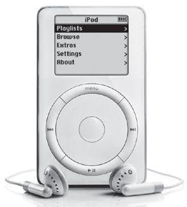
Первый iPod, 2001
Connecting the Dots
Соединяя точки
Once a year Jobs took his most valuable employees on a retreat, which he called “The Top 100.” They were picked based on a simple guideline: the people you would bring if you could take only a hundred people with you on a lifeboat to your next company. At the end of each retreat, Jobs would stand in front of a whiteboard (he loved whiteboards because they gave him complete control of a situation and they engendered focus) and ask, “What are the ten things we should be doing next?” People would fight to get their suggestions on the list. Jobs would write them down, and then cross off the ones he decreed dumb. After much jockeying, the group would come up with a list of ten. Then Jobs would slash the bottom seven and announce, “We can only do three.”
| a retreat | выезд, выездное мероприятие |
| a lifeboat | спасательная шлюпка |
| engendered focus | настраивали на фокус |
| jockeying | манёвры, борьба за место |
| slash the bottom seven | отсечь семь нижних |
Раз в год Джобс вывозил самых ценных сотрудников на выезд, который называл «Топ-100». Отбирали по простому правилу: кого бы ты взял, если б мог посадить в спасательную шлюпку до следующей компании лишь сто человек. В конце каждого выезда Джобс вставал у белой доски (он любил их: полный контроль над ситуацией и настройка на фокус) и спрашивал: «Какие десять вещей нам делать дальше?» Люди дрались за место своих идей в списке. Джобс записывал их и вычёркивал те, что объявлял глупыми. После долгих манёвров группа сходилась на десяти пунктах. Тогда Джобс отсекал семь нижних и объявлял: «Мы можем сделать только три».
By 2001 Apple had revived its personal computer offerings. It was now time to think different. A set of new possibilities topped the what-next list on his whiteboard that year.
| think different | мыслить иначе |
| topped the what-next list | возглавил список «что дальше» |
К 2001 году Apple возродила свои персональные компьютеры. Пришло время мыслить иначе. В том году список «что дальше» на его доске возглавил набор новых возможностей.
At the time, a pall had descended on the digital realm. The dot-com bubble had burst, and the NASDAQ had fallen more than 50% from its peak. Only three tech companies had ads during the January 2001 Super Bowl, compared to seventeen the year before. But the sense of deflation went deeper. For the twenty-five years since Jobs and Wozniak had founded Apple, the personal computer had been the centerpiece of the digital revolution. Now experts were predicting that its central role was ending. It had “matured into something boring,” wrote the Wall Street Journal’s Walt Mossberg. Jeff Weitzen, the CEO of Gateway, proclaimed, “We’re clearly migrating away from the PC as the centerpiece.”
| a pall had descended | навис мрак |
| the dot-com bubble | пузырь доткомов |
| burst | лопнул |
| deflation | дефляция, упадок |
| the centerpiece | центр, центральный элемент |
| migrating away from | уходим от |
Тогда над цифровым миром навис мрак. Лопнул пузырь доткомов, NASDAQ рухнул более чем на 50% от пика. В Супербоуле января 2001 года рекламировались лишь три технокомпании против семнадцати годом раньше. Но ощущение дефляции шло глубже. Двадцать пять лет — с тех пор как Джобс и Возняк основали Apple — персональный компьютер был центром цифровой революции. Теперь эксперты предрекали конец его центральной роли: он «созрел до скуки», писал Уолт Моссберг из Wall Street Journal. Джефф Вайцен, CEO Gateway, провозглашал: «Мы явно уходим от ПК как центра».
It was at that moment that Jobs launched a new grand strategy that would transform Apple—and with it the entire technology industry. The personal computer, instead of edging toward the sidelines, would become a “digital hub” that coordinated a variety of devices, from music players to video recorders to cameras. You’d link and sync all these devices with your computer, and it would manage your music, pictures, video, text, and all aspects of what Jobs dubbed your “digital lifestyle.” Apple would no longer be just a computer company—indeed it would drop that word from its name—but the Macintosh would be reinvigorated by becoming the hub for an astounding array of new gadgets, including the iPod and iPhone and iPad.
| edging toward the sidelines | уход на обочину |
| a digital hub | цифровой хаб |
| sync | синхронизировать |
| dubbed | окрестил |
| reinvigorated | обретёт вторую жизнь |
| an astounding array | поразительный ряд |
Именно тогда Джобс запустил новую грандиозную стратегию, преобразившую Apple — а с ней и всю технологическую индустрию. Персональный компьютер, вместо ухода на обочину, должен был стать «цифровым хабом», координирующим множество устройств — от музыкальных плееров до видеорекордеров и камер. Все устройства связываются и синхронизируются с компьютером, а он управляет вашей музыкой, снимками, видео, текстами и всеми сторонами того, что Джобс окрестил вашим «цифровым стилем жизни». Apple перестанет быть просто компьютерной компанией — слово «Computer» исчезнет из названия, — а Macintosh обретёт вторую жизнь, став хабом поразительного ряда новых гаджетов, включая iPod, iPhone и iPad.
When he was turning thirty, Jobs had used a metaphor about record albums. He was musing about why folks over thirty develop rigid thought patterns and tend to be less innovative. “People get stuck in those patterns, just like grooves in a record, and they never get out of them,” he said. At age forty-five, Jobs was now about to get out of his groove.
| musing about | размышляя о |
| rigid thought patterns | костенеющие шаблоны мышления |
| grooves in a record | дорожки пластинки |
| get out of his groove | выскочить из своей колеи |
Подходя к тридцати, Джобс использовал метафору грампластинок, размышляя, почему у людей за тридцать мышление костенеет и инноваций меньше. «Люди застревают в этих паттернах, как в дорожках пластинки, и никогда из них не выходят», — говорил он. В сорок пять Джобс собирался выскочить из своей дорожки.
FireWire
FireWire
Jobs’s vision that your computer could become your digital hub went back to a technology called FireWire, which Apple developed in the early 1990s. It was a high-speed serial port that moved digital files such as video from one device to another. Japanese camcorder makers adopted it, and Jobs decided to include it on the updated versions of the iMac that came out in October 1999. He began to see that FireWire could be part of a system that moved video from cameras onto a computer, where it could be edited and distributed.
| a high-speed serial port | высокоскоростной последовательный порт |
| camcorder makers | производители видеокамер |
Видение компьютера как цифрового хаба уходило корнями в технологию FireWire, разработанную Apple в начале 1990-х: высокоскоростной последовательный порт для переноса цифровых файлов — например, видео — между устройствами. Её приняли японские производители видеокамер, и Джобс решил поставить её в обновлённые iMac, вышедшие в октябре 1999 года. Он начал видеть: FireWire может стать частью системы, переносящей видео с камер на компьютер, где его можно монтировать и распространять.
To make this work, the iMac needed to have great video editing software. So Jobs went to his old friends at Adobe, the digital graphics company, and asked them to make a new Mac version of Adobe Premiere, which was popular on Windows computers. Adobe’s executives stunned Jobs by flatly turning him down. The Macintosh, they said, had too few users to make it worthwhile. Jobs was furious and felt betrayed. “I put Adobe on the map, and they screwed me,” he later claimed. Adobe made matters even worse when it also didn’t write its other popular programs, such as Photoshop, for the Mac OSX, even though the Macintosh was popular among designers and other creative people who used those applications.
| flatly turning him down | плоский, категоричный отказ |
| put Adobe on the map | вывел Adobe в люди |
| screwed me | кинули меня |
Чтобы это работало, iMac требовался отличный видеоредактор. Джобс пошёл к старым друзьям из Adobe, компании цифровой графики, и попросил сделать новую Mac-версию Adobe Premiere, популярной на Windows. Руководство Adobe ошеломило Джобса плоским отказом: у Macintosh, мол, слишком мало пользователей. Джобс разъярился и почувствовал себя преданным. «Я вывел Adobe в люди, а они меня кинули», — утверждал он позже. Adobe ухудшила положение, не написав под Mac OSX и другие свои популярные программы — например, Photoshop, — хотя Macintosh был популярен среди дизайнеров и прочих творческих людей, этими приложениями пользовавшихся.
Jobs never forgave Adobe, and a decade later he got into a public war with the company by not permitting Adobe Flash to run on the iPad. He took away a valuable lesson that reinforced his desire for end-to-end control of all key elements of a system: “My primary insight when we were screwed by Adobe in 1999 was that we shouldn’t get into any business where we didn’t control both the hardware and the software, otherwise we’d get our head handed to us.”
| reinforced his desire | укрепил жажду |
| end-to-end control | сквозной контроль |
| get our head handed to us | нам оторвут голову |
Джобс не простил Adobe никогда — и десятилетие спустя вступил с ней в публичную войну, не пустив Adobe Flash на iPad. Он вынес ценный урок, укрепивший жажду сквозного контроля над всеми ключевыми элементами системы: «Главное прозрение после кидка Adobe в 1999-м: не лезь в бизнес, где не контролируешь и железо, и софт, — иначе тебе оторвут голову».
So starting in 1999 Apple began to produce application software for the Mac, with a focus on people at the intersection of art and technology. These included Final Cut Pro, for editing digital video; iMovie, which was a simpler consumer version; iDVD, for burning video or music onto a disc; iPhoto, to compete with Adobe Photoshop; GarageBand, for creating and mixing music; iTunes, for managing your songs; and the iTunes Store, for buying songs.
| at the intersection of art and technology | на стыке искусства и технологии |
| burning video or music onto a disc | запись видео или музыки на диск |
Поэтому с 1999 года Apple начала выпускать приложения для Mac — с расчётом на людей на стыке искусства и технологии. Среди них: Final Cut Pro для монтажа цифрового видео; iMovie — попроще, для потребителей; iDVD — для записи видео или музыки на диск; iPhoto — конкурент Adobe Photoshop; GarageBand — для создания и сведения музыки; iTunes — для управления песнями; и iTunes Store — для их покупки.
The idea of the digital hub quickly came into focus. “I first understood this with the camcorder,” Jobs said. “Using iMovie makes your camcorder ten times more valuable.” Instead of having hundreds of hours of raw footage you would never really sit through, you could edit it on your computer, make elegant dissolves, add music, and roll credits, listing yourself as executive producer. It allowed people to be creative, to express themselves, to make something emotional. “That’s when it hit me that the personal computer was going to morph into something else.”
| raw footage | сырое видео |
| sit through | досмотреть |
| dissolves | наплывы (видеопереходы) |
| roll credits | пустить титры |
| hit me | меня осенило |
| morph into | превратиться в |
Идея цифрового хаба быстро обрела резкость. «Впервые я понял это на видеокамере, — говорил Джобс. — С iMovie твоя камера становится в десять раз ценнее». Вместо сотен часов сырого видео, которое ты никогда не досмотришь, — монтаж на компьютере, изящные наплывы, музыка, титры, где ты значишься исполнительным продюсером. Люди могли творить, выражать себя, создавать нечто эмоциональное. «Тогда меня и осенило: персональный компьютер превратится во что-то другое».
Jobs had another insight: If the computer served as the hub, it would allow the portable devices to become simpler. A lot of the functions that the devices tried to do, such as editing the video or pictures, they did poorly because they had small screens and could not easily accommodate menus filled with lots of functions. Computers could handle that more easily.
| accommodate menus | размещать меню |
Было и другое прозрение: если хабом служит компьютер, портативные устройства можно сделать проще. Многие функции — например, монтаж видео или фотографий — устройства выполняли плохо: экраны малы, меню с кучей функций не разместить. Компьютер справлялся легче.
And one more thing . . . What Jobs also saw was that this worked best when everything—the device, computer, software, applications, FireWire— was all tightly integrated. “I became even more of a believer in providing end-to-end solutions,” he recalled.
| tightly integrated | плотно интегрированы |
| end-to-end solutions | сквозные решения |
И ещё кое-что… Джобс видел и то, что всё работает лучше всего, когда устройство, компьютер, софт, приложения и FireWire плотно интегрированы. «Я стал ещё более убеждённым сторонником сквозных решений», — вспоминал он.
The beauty of this realization was that there was only one company that was well-positioned to provide such an integrated approach. Microsoft wrote software, Dell and Compaq made hardware, Sony produced a lot of digital devices, Adobe developed a lot of applications. But only Apple did all of these things. “We’re the only company that owns the whole widget—the hardware, the software and the operating system,” he explained to Time. “We can take full responsibility for the user experience. We can do things that the other guys can’t do.”
| well-positioned | способна, в выгодном положении |
| owns the whole widget | владеет всем устройством целиком |
Красота осознания была в том, что предложить такой интегрированный подход была способна лишь одна компания. Microsoft писала софт, Dell и Compaq делали железо, Sony выпускала массу цифровых устройств, Adobe — приложения. И только Apple делала всё сразу. «Мы единственная компания, владеющая всем устройством целиком — железом, софтом и операционной системой, — объяснял он Time. — Мы можем полностью отвечать за пользовательский опыт. Можем делать то, чего не могут другие».
Apple’s first integrated foray into the digital hub strategy was video. With FireWire, you could get your video onto your Mac, and with iMovie you could edit it into a masterpiece. Then what? You’d want to burn some DVDs so you and your friends could watch it on a TV. “So we spent a lot of time working with the drive manufacturers to get a consumer drive that could burn a DVD,” he said. “We were the first to ever ship that.” As usual Jobs focused on making the product as simple as possible for the user, and this was the key to its success. Mike Evangelist, who worked at Apple on software design, recalled demonstrating to Jobs an early version of the interface. After looking at a bunch of screenshots, Jobs jumped up, grabbed a marker, and drew a simple rectangle on a whiteboard. “Here’s the new application,” he said. “It’s got one window. You drag your video into the window. Then you click the button that says ‘Burn.’ That’s it. That’s what we’re going to make.” Evangelist was dumbfounded, but it led to the simplicity of what became iDVD. Jobs even helped design the “Burn” button icon.
| foray | набег, вылазка |
| burn a DVD | записать DVD |
| ship | выпустить (в продажу) |
| screenshots | скриншоты |
| dumbfounded | обалдевший |
Первым интегрированным набегом Apple в стратегию хаба стало видео. С FireWire видео попадает на Mac, с iMovie превращается в шедевр. Что дальше? Захочется записать DVD, чтобы посмотреть с друзьями по телевизору. «Мы долго работали с производителями приводов над потребительским DVD-рекордером, — говорил он. — Мы первыми такое выпустили». Как обычно, Джобс делал продукт максимально простым — в этом был ключ к успеху. Майк Эванджелист, работавший в Apple над дизайном софта, вспоминал демонстрацию Джобсу ранней версии интерфейса. Посмотрев на кучу скриншотов, Джобс вскочил, схватил маркер и нарисовал на доске простой прямоугольник. «Вот новое приложение, — сказал он. — Одно окно. Тянешь в него видео. Жмёшь кнопку „Записать“. Всё. Вот что мы сделаем». Эванджелист обалдел, но именно так родилась простота iDVD. Джобс даже помог нарисовать иконку кнопки «Burn».
Jobs knew digital photography was also about to explode, so Apple developed ways to make the computer the hub of your photos. But for the first year at least, he took his eye off one really big opportunity. HP and a few others were producing a drive that burned music CDs, but Jobs decreed that Apple should focus on video rather than music. In addition, his angry insistence that the iMac get rid of its tray disk drive and use instead a more elegant slot drive meant that it could not include the first CD burners, which were initially made for the tray format. “We kind of missed the boat on that,” he recalled. “So we needed to catch up real fast.”
| took his eye off | упускал из виду |
| decreed | повелел |
| missed the boat | упустили лодку, опоздали |
| catch up | навёрстывать |
Джобс знал, что цифровая фотография вот-вот взорвётся, и Apple строила способы сделать компьютер хабом снимков. Но, по крайней мере первый год, он упускал из виду одну по-настоящему большую возможность. HP и ещё несколько фирм выпускали приводы, записывающие музыкальные CD, а Джобс повелел Apple сосредоточиться на видео, а не на музыке. К тому же его гневное требование убрать из iMac лоточный привод ради элегантной щели означало, что первые CD-рекордеры — поначалу в лоточном исполнении — в него не встанут. «Мы вроде как упустили лодку, — вспоминал он. — Нужно было навёрстывать очень быстро».
The mark of an innovative company is not only that it comes up with new ideas first, but also that it knows how to leapfrog when it finds itself behind.
| leapfrog | обскакать, перепрыгнуть |
Признак инновационной компании не только в том, что она первой рождает идеи, но и в умении обскакать всех, оказавшись позади.
iTunes
iTunes
It didn’t take Jobs long to realize that music was going to be huge. By 2000 people were ripping music onto their computers from CDs, or downloading it from file-sharing services such as Napster, and burning playlists onto their own blank disks. That year the number of blank CDs sold in the United States was 320 million. There were only 281 million people in the country. That meant some people were really into burning CDs, and Apple wasn’t catering to them. “I felt like a dope,” he told Fortune. “I thought we had missed it. We had to work hard to catch up.”
| ripping music | копировали музыку (с CD) |
| file-sharing services | файлообменники |
| blank disks | болванки |
| catering to | обслуживая, учитывая |
| a dope | болван |
Джобс быстро понял: музыка будет огромной. К 2000 году люди копировали музыку с CD на компьютеры или скачивали её из файлообменников вроде Napster и записывали плейлисты на болванки. В тот год в США продали 320 миллионов чистых CD — при населении 281 миллион. Кто-то был по-настоящему помешан на записи дисков — и Apple это игнорировала. «Я чувствовал себя болваном, — говорил он Fortune. — Мы всё упустили. Пришлось много работать, чтобы нагнать».
Jobs added a CD burner to the iMac, but that wasn’t enough. His goal was to make it simple to transfer music from a CD, manage it on your computer, and then burn playlists. Other companies were already making music-management applications, but they were clunky and complex. One of Jobs’s talents was spotting markets that were filled with second-rate products. He looked at the music apps that were available—including Real Jukebox, Windows Media Player, and one that HP was including with its CD burner—and came to a conclusion: “They were so complicated that only a genius could figure out half of their features.”
| clunky | корявый, неуклюжий |
| spotting markets | чуять рынки |
| second-rate products | второсортные продукты |
Джобс добавил в iMac CD-рекордер, но этого было мало. Цель — простота переноса музыки с CD, управления ею на компьютере и записи плейлистов. Другие компании уже делали музыкальные программы, но корявые и сложные. Один из талантов Джобса — чуять рынки, заполненные второсортными продуктами. Он изучил доступное — Real Jukebox, Windows Media Player и программу, которую HP клала к своему рекордеру, — и заключил: «Они настолько сложны, что половину функций разберёт только гений».
That is when Bill Kincaid came in. A former Apple software engineer, he was driving to a track in Willows, California, to race his Formula Ford sports car while (a bit incongruously) listening to National Public Radio. He heard a report about a portable music player called the Rio that played a digital song format called MP3. He perked up when the reporter said something like, “Don’t get excited, Mac users, because it won’t work with Macs.” Kincaid said to himself, “Ha! I can fix that!”
| incongruously | несообразно, нелепо |
| perked up | встрепенулся |
Тут появился Билл Кинкейд. Бывший инженер-программист Apple, он ехал на трассу в Уиллоус, Калифорния, гонять свой спортивный Formula Ford, слушая (несколько несообразно) Национальное общественное радио. В репортаже говорилось о портативном плеере Rio с цифровым форматом MP3. Кинкейд встрепенулся, когда репортёр сказал что-то вроде: «Не радуйтесь, пользователи Mac, — с Mac это не работает». «Ха! Я это исправлю!» — сказал себе Кинкейд.
To help him write a Rio manager for the Mac, he called his friends Jeff Robbin and Dave Heller, also former Apple software engineers. Their product, known as SoundJam, offered Mac users an interface for the Rio and software for managing the songs on their computer. In July 2000, when Jobs was pushing his team to come up with music-management software, Apple swooped in and bought SoundJam, bringing its founders back into the Apple fold. (All three stayed with the company, and Robbin continued to run the music software development team for the next decade. Jobs considered Robbin so valuable he once allowed a Time reporter to meet him only after extracting the promise that the reporter would not print his last name.)
| swooped in | налетела, быстро купила |
| back into the Apple fold | обратно в ряды Apple |
| extracting the promise | взяв обещание |
Помогать писать менеджер Rio для Mac он позвал друзей — Джеффа Роббина и Дэйва Хеллера, тоже бывших инженеров Apple. Их продукт SoundJam давал маководам интерфейс для Rio и управление музыкой на компьютере. В июле 2000 года, когда Джобс подгонял команду с музыкальным софтом, Apple купила SoundJam и вернула основателей в свои ряды. (Все трое остались в компании; Роббин ещё десять лет руководил разработкой музыкального софта. Джобс ценил его так, что однажды разрешил репортёру Time встретиться с ним лишь под обещание не печатать его фамилию.)
Jobs personally worked with them to transform SoundJam into an Apple product. It was laden with all sorts of features, and consequently a lot of complex screens. Jobs pushed them to make it simpler and more fun. Instead of an interface that made you specify whether you were searching for an artist, song, or album, Jobs insisted on a simple box where you could type in anything you wanted. From iMovie the team adopted the sleek brushed-metal look and also a name. They dubbed it iTunes.
| laden with | перегружена |
| sleek | глянцевый, гладкий |
| dubbed it | назвали |
Джобс лично работал с ними, превращая SoundJam в продукт Apple. Та была перегружена функциями, а значит, и сложными экранами. Джобс заставил сделать проще и веселее. Вместо интерфейса, где нужно указывать, ищешь ли ты исполнителя, песню или альбом, он потребовал простое поле, куда можно вбить что угодно. У iMovie команда позаимствовала глянцевый вид шлифованного металла — и имя. Назвали iTunes.
Jobs unveiled iTunes at the January 2001 Macworld as part of the digital hub strategy. It would be free to all Mac users, he announced. “Join the music revolution with iTunes, and make your music devices ten times more valuable,” he concluded to great applause. As his advertising slogan would later put it: Rip. Mix. Burn.
| unveiled | представил |
| to great applause | под бурные аплодисменты |
Джобс представил iTunes на Macworld в январе 2001 года как часть стратегии цифрового хаба. Бесплатно для всех маководов, объявил он. «Присоединяйтесь к музыкальной революции с iTunes — и ваши музыкальные устройства станут в десять раз ценнее», — завершил он под бурные аплодисменты. Как позже гласил рекламный слоган: Копируй. Своди. Жги.
That afternoon Jobs happened to be meeting with John Markoff of the New York Times. The interview was going badly, but at the end Jobs sat down at his Mac and showed off iTunes. “It reminds me of my youth,” he said as the psychedelic patterns danced on the screen. That led him to reminisce about dropping acid. Taking LSD was one of the two or three most important things he’d done in his life, Jobs told Markoff. People who had never taken acid would never fully understand him.
| psychedelic patterns | психоделические узоры |
| reminisce about | пуститься в воспоминания о |
| dropping acid | приём ЛСД |
Днём Джобс как раз встречался с Джоном Маркоффом из New York Times. Интервью не клеилось, но под конец Джобс сел за свой Mac и показал iTunes. «Напоминает мне молодость», — сказал он, пока на экране плясали психоделические узоры. И пустился в воспоминания об ЛСД. Приём кислоты, сказал Джобс Маркоффу, был одной из двух-трёх важнейших вещей в его жизни. Кто кислоты не пробовал, никогда не поймёт его до конца.
The iPod
iPod
The next step for the digital hub strategy was to make a portable music player. Jobs realized that Apple had the opportunity to design such a device in tandem with the iTunes software, allowing it to be simpler. Complex tasks could be handled on the computer, easy ones on the device. Thus was born the iPod, the device that would begin the transformation of Apple from being a computer maker into being the world’s most valuable company.
| in tandem with | в паре с |
Следующим шагом стратегии цифрового хаба стал портативный музыкальный плеер. Джобс понял: Apple может спроектировать его в паре с iTunes — плеер выйдет проще. Сложные задачи — компьютеру, простые — устройству. Так родился iPod — аппарат, начавший превращение Apple из производителя компьютеров в самую дорогую компанию мира.
Jobs had a special passion for the project because he loved music. The music players that were already on the market, he told his colleagues, “truly sucked.” Phil Schiller, Jon Rubinstein, and the rest of the team agreed. As they were building iTunes, they spent time with the Rio and other players while merrily trashing them. “We would sit around and say, ‘These things really stink,’” Schiller recalled. “They held about sixteen songs, and you couldn’t figure out how to use them.”
| truly sucked | откровенный отстой |
| trashing them | охаивая их |
| stink | вонять (быть отстоем) |
Джобс относился к проекту с особой страстью — он любил музыку. Имевшиеся на рынке плееры, говорил он коллегам, «откровенный отстой». Фил Шиллер, Джон Рубинштейн и остальная команда соглашались. Строя iTunes, они возились с Rio и другими плеерами, весело их охаивая. «Мы сидели и говорили: „Ну и вонючие же штуки“, — вспоминал Шиллер. — Песен на шестнадцать, и не поймёшь, как пользоваться».
Jobs began pushing for a portable music player in the fall of 2000, but Rubinstein responded that the necessary components were not available yet. He asked Jobs to wait. After a few months Rubinstein was able to score a suitable small LCD screen and rechargeable lithium-polymer battery. The tougher challenge was finding a disk drive that was small enough but had ample memory to make a great music player. Then, in February 2001, he took one of his regular trips to Japan to visit Apple’s suppliers.
| pushing for | продавливать |
| score | раздобыть |
| rechargeable lithium-polymer battery | перезаряжаемая литий-полимерная батарея |
| ample memory | ёмкая память |
Джобс стал продавливать плеер осенью 2000 года, но Рубинштейн отвечал: нужных компонентов пока нет. Просил подождать. Через несколько месяцев Рубинштейн раздобыл подходящий маленький LCD-экран и перезаряжаемую литий-полимерную батарею. Сложнее было с диском: достаточно маленьким, но ёмким для отличного плеера. И вот в феврале 2001 года он отправился в очередную регулярную поездку в Японию к поставщикам Apple.
At the end of a routine meeting with Toshiba, the engineers mentioned a new product they had in the lab that would be ready by that June. It was a tiny, 1.8-inch drive (the size of a silver dollar) that would hold five gigabytes of storage (about a thousand songs), and they were not sure what to do with it. When the Toshiba engineers showed it to Rubinstein, he knew immediately what it could be used for. A thousand songs in his pocket! Perfect. But he kept a poker face. Jobs was also in Japan, giving the keynote speech at the Tokyo Macworld conference. They met that night at the Hotel Okura, where Jobs was staying. “I know how to do it now,” Rubinstein told him. “All I need is a $10 million check.” Jobs immediately authorized it. So Rubinstein started negotiating with Toshiba to have exclusive rights to every one of the disks it could make, and he began to look around for someone who could lead the development team.
| a silver dollar | серебряный доллар |
| kept a poker face | не подал вида, держал лицо |
| the keynote speech | доклад, основная речь |
| exclusive rights | эксклюзивные права |
В конце рядовой встречи с Toshiba инженеры упомянули новинку из лаборатории, готовую к июню: крошечный 1,8-дюймовый диск (размером с серебряный доллар) на пять гигабайт — около тысячи песен, — и они не знали, что с ним делать. Показав диск Рубинштейну, они увидели: тот мгновенно понял его предназначение. Тысяча песен в кармане! Идеально. Но лица не выдал. Джобс тоже был в Японии — читал доклад на токийской конференции Macworld. Вечером они встретились в отеле Okura, где остановился Джобс. «Теперь я знаю, как это сделать, — сказал Рубинштейн. — Нужен только чек на 10 миллионов». Джобс тут же разрешил. Рубинштейн начал переговоры с Toshiba об эксклюзивных правах на все выпускаемые диски и присматриваться к кандидату в лидеры разработки.
Tony Fadell was a brash entrepreneurial programmer with a cyberpunk look and an engaging smile who had started three companies while still at the University of Michigan. He had gone to work at the handheld device maker General Magic (where he met Apple refugees Andy Hertzfeld and Bill Atkinson), and then spent some awkward time at Philips Electronics, where he bucked the staid culture with his short bleached hair and rebellious style. He had come up with some ideas for creating a better digital music player, which he had shopped around unsuccessfully to RealNetworks, Sony, and Philips. One day he was in Colorado, skiing with an uncle, and his cell phone rang while he was riding on the chairlift. It was Rubinstein, who told him that Apple was looking for someone who could work on a “small electronic device.” Fadell, not lacking in confidence, boasted that he was a wizard at making such devices. Rubinstein invited him to Cupertino.
| brash | дерзкий |
| an engaging smile | обаятельная улыбка |
| Apple refugees | беглецы из Apple |
| bucked the staid culture | бунтовал против чопорной культуры |
| shopped around | предлагал разным |
| a wizard | волшебник |
Тони Фаделл был дерзким предприимчивым программистом с киберпанковским имиджем и обаятельной улыбкой; ещё в Мичиганском университете он основал три компании. Поработал в General Magic, производителе карманных устройств (где познакомился с беглецами из Apple Энди Херцфельдом и Биллом Аткинсоном), затем неловко — в Philips Electronics, бунтуя против чопорной культуры короткими обесцвеченными волосами. У него были идеи цифрового плеера, которые он безуспешно предлагал RealNetworks, Sony и Philips. Однажды в Колорадо, катаясь с дядей на лыжах, он услышал звонок на подъёмнике. Звонил Рубинштейн: Apple ищет человека под «небольшое электронное устройство». Фаделл, уверенности не лишённый, похвастался, что в таких устройствах он волшебник. Рубинштейн пригласил его в Купертино.
Fadell assumed that he was being hired to work on a personal digital assistant, some successor to the Newton. But when he met with Rubinstein, the topic quickly turned to iTunes, which had been out for three months. “We’ve been trying to hook up the existing MP3 players to iTunes and they’ve been horrible, absolutely horrible,” Rubinstein told him. “We think we should make our own version.”
| a successor to | преемник |
| hook up | подключать |
Фаделл решил, что его нанимают под карманный цифровой помощник — какого- нибудь преемника Newton. Но на встрече с Рубинштейном разговор быстро свернул на iTunes, вышедший тремя месяцами раньше. «Мы пробовали подключать существующие MP3-плееры к iTunes — они ужасны, абсолютно ужасны, — сказал Рубинштейн. — Думаем, надо делать свою версию».
Fadell was thrilled. “I was passionate about music. I was trying to do some of that at RealNetworks, and I was pitching an MP3 player to Palm.” He agreed to come aboard, at least as a consultant. After a few weeks Rubinstein insisted that if he was to lead the team, he had to become a full-time Apple employee. But Fadell resisted; he liked his freedom. Rubinstein was furious at what he considered Fadell’s whining. “This is one of those life decisions,” he told Fadell. “You’ll never regret it.”
| pitching | предлагал |
| come aboard | войти в команду |
| whining | нытьё |
Фаделл был в восторге. «Я увлечён музыкой. Пытался делать подобное в RealNetworks и предлагал MP3-плеер Palm». Он согласился войти хотя бы консультантом. Через несколько недель Рубинштейн настоял: чтобы вести команду, надо стать штатным сотрудником. Фаделл сопротивлялся — любил свободу. Рубинштейн злился на то, что считал нытьём: «Это одно из тех решений, о которых не жалеют. Никогда не пожалеешь».
He decided to force Fadell’s hand. He gathered a roomful of the twenty or so people who had been assigned to the project. When Fadell walked in, Rubinstein told him, “Tony, we’re not doing this project unless you sign on full-time. Are you in or out? You have to decide right now.”
| force Fadell’s hand | поставить Фаделла перед фактом |
| sign on full-time | подписаться на полный день |
Он решил поставить Фаделла перед фактом: собрал в комнате около двадцати человек, назначенных в проект. Когда Фаделл вошёл, Рубинштейн сказал: «Тони, проект не начнём, пока ты не подпишешься на полный день. Ты в деле или нет? Решай прямо сейчас».
Fadell looked Rubinstein in the eye, then turned to the audience and said, “Does this always happen at Apple, that people are put under duress to sign an offer?” He paused for a moment, said yes, and grudgingly shook Rubinstein’s hand. “It left some very unsettling feeling between Jon and me for many years,” Fadell recalled. Rubinstein agreed: “I don’t think he ever forgave me for that.”
| under duress | под давлением |
| grudgingly | нехотя |
| unsettling feeling | неприятный осадок |
Фаделл посмотрел Рубинштейну в глаза, затем повернулся к собравшимся: «В Apple всегда так — людей под давлением заставляют подписывать офер?» Помолчал, сказал «да» и нехотя пожал Рубинштейну руку. «Между мной и Джоном на многие годы остался неприятный осадок», — вспоминал Фаделл. Рубинштейн соглашался: «Не думаю, что он меня когда-нибудь за это простил».
Fadell and Rubinstein were fated to clash because they both thought that they had fathered the iPod. As Rubinstein saw it, he had been given the mission by Jobs months earlier, found the Toshiba disk drive, and figured out the screen, battery, and other key elements. He had then brought in Fadell to put it together. He and others who resented Fadell’s visibility began to refer to him as “Tony Baloney.” But from Fadell’s perspective, before he came to Apple he had already come up with plans for a great MP3 player, and he had been shopping it around to other companies before he had agreed to come to Apple. The issue of who deserved the most credit for the iPod, or should get the h1 Podfather, would be fought over the years in interviews, articles, web pages, and even Wikipedia entries.
| h1 | титул (в источнике — опечатка OCR, «title») |
Фаделл и Рубинштейн были обречены на столкновение: каждый считал себя отцом iPod. По версии Рубинштейна, миссию ему поручил Джобс месяцами раньше, диск Toshiba нашёл он, экран, батарею и прочие ключевые элементы продумал тоже он, а Фаделла привёл собирать всё вместе. Он и другие, раздражённые заметностью Фаделла, стали звать его «Тони Болони». С точки зрения Фаделла, планы отличного MP3-плеера он придумал ещё до Apple и предлагал их другим компаниям до согласия прийти. Спор о том, кто заслуживает большей части лавров за iPod — кому носить титул «крёстного отца iPod», — растянется на годы: интервью, статьи, веб-страницы и даже страницы Википедии.
But for the next few months they were too busy to bicker. Jobs wanted the iPod out by Christmas, and this meant having it ready to unveil in October. They looked around for other companies that were designing MP3 players that could serve as the foundation for Apple’s work and settled on a small company named PortalPlayer. Fadell told the team there, “This is the project that’s going to remold Apple, and ten years from now, it’s going to be a music business, not a computer business.” He convinced them to sign an exclusive deal, and his group began to modify PortalPlayer’s deficiencies, such as its complex interfaces, short battery life, and inability to make a playlist longer than ten songs.
| bicker | грызться, препираться |
| settled on | остановились на |
| remold Apple | переделать Apple |
| deficiencies | недостатки |
Но в ближайшие месяцы грызться было некогда. Джобс хотел iPod к Рождеству — а значит, готовить презентацию на октябрь. Искали компании, чей MP3-плеер мог бы стать основой для работы Apple, и остановились на маленькой PortalPlayer. Фаделл сказал её команде: «Этот проект переделает Apple, и через десять лет это будет музыкальный бизнес, а не компьютерный». Он убедил их подписать эксклюзив, и его группа принялась исправлять недостатки PortalPlayer: сложные интерфейсы, слабую батарею и невозможность плейлиста длиннее десяти песен.
That’s It!
Вот оно!
There are certain meetings that are memorable both because they mark a historic moment and because they illuminate the way a leader operates. Such was the case with the gathering in Apple’s fourth-floor conference room in April 2001, where Jobs decided on the fundamentals of the iPod. There to hear Fadell present his proposals to Jobs were Rubinstein, Schiller, Ive, Jeff Robbin, and marketing director Stan Ng. Fadell didn’t know Jobs, and he was understandably intimidated. “When he walked into the conference room, I sat up and thought, ‘Whoa, there’s Steve!’ I was really on guard, because I’d heard how brutal he could be.”
| illuminate | высвечивают |
| the fundamentals | основы |
| intimidated | робел |
| on guard | настороже |
| brutal | жестокий |
Есть совещания, памятные и тем, что знаменуют исторический момент, и тем, что высвечивают стиль лидера. Таким было собрание в конференц-зале на четвёртом этаже Apple в апреле 2001 года, где Джобс определил основы iPod. Слушать презентацию Фаделла собрались Рубинштейн, Шиллер, Айв, Джефф Роббин и директор по маркетингу Стэн Нг. Фаделл Джобса не знал и по понятной причине робел. «Когда он вошёл в зал, я выпрямился и подумал: „Ого, это Стив!“ Был настороже — наслышан о его жестокости».
The meeting started with a presentation of the potential market and what other companies were doing. Jobs, as usual, had no patience. “He won’t pay attention to a slide deck for more than a minute,” Fadell said. When a slide showed other possible players in the market, he waved it away. “Don’t worry about Sony,” he said. “We know what we’re doing, and they don’t.” After that, they quit showing slides, and instead Jobs peppered the group with questions. Fadell took away a lesson: “Steve prefers to be in the moment, talking things through. He once told me, ‘If you need slides, it shows you don’t know what you’re talking about.’”
| a slide deck | слайды, презентация |
| waved it away | отмахнулся |
| peppered the group with questions | забросал группу вопросами |
| in the moment | здесь и сейчас |
Начали с презентации потенциального рынка и действий конкурентов. У Джобса, как обычно, терпения не было. «Слайдам он уделяет не больше минуты», — говорил Фаделл. Слайд с игроками рынка он отмахнул: «Не беспокойтесь о Sony. Мы знаем, что делаем, а они — нет». Слайды прекратили; вместо этого Джобс забросал группу вопросами. Фаделл вынес урок: «Стив предпочитает живое обсуждение здесь и сейчас. Однажды он сказал мне: „Нужны слайды — значит, ты не понимаешь, о чём говоришь“».
Instead Jobs liked to be shown physical objects that he could feel, inspect, and fondle. So Fadell brought three different models to the conference room; Rubinstein had coached him on how to reveal them sequentially so that his preferred choice would be the pièce de résistance. They hid the mockup of that option under a wooden bowl at the center of the table.
| fondle | повертеть, ощупать |
| coached him | научил его |
| sequentially | по очереди |
| the pièce de résistance | гвоздь программы |
Джобсу нравилось, когда показывают физические предметы — пощупать, осмотреть, повертеть. Фаделл принёс три разные модели; Рубинштейн научил его показывать их по очереди так, чтобы предпочтительный вариант стал гвоздём программы. Макет того варианта спрятали под деревянной миской в центре стола.
Fadell began his show-and-tell by taking the various parts they were using out of a box and spreading them on the table. There were the 1.8-inch drive, LCD screen, boards, and batteries, all labeled with their cost and weight. As he displayed them, they discussed how the prices or sizes might come down over the next year or so. Some of the pieces could be put together, like Lego blocks, to show the options.
| show-and-tell | «показ и рассказ» |
| labeled with their cost and weight | с бирками цены и веса |
Фаделл начал «показ и рассказ» с того, что вынул из коробки используемые компоненты и разложил на столе: 1,8-дюймовый диск, LCD- экран, платы и батареи — всё с бирками цены и веса. По ходу обсуждали, как цены и размеры снизятся в ближайший год. Некоторые детали соединялись, как конструктор, показывая варианты.
Then Fadell began unveiling his models, which were made of Styrofoam with fishing leads inserted to give them the proper weight. The first had a slot for a removable memory card for music. Jobs dismissed it as complicated. The second had dynamic RAM memory, which was cheap but would lose all of the songs if the battery ran out. Jobs was not pleased. Next Fadell put a few of the pieces together to show what a device with the 1.8-inch hard drive would be like. Jobs seemed intrigued. The show climaxed with Fadell lifting the bowl and revealing a fully assembled model of that alternative. “I was hoping to be able to play more with the Lego parts, but Steve settled right on the hard-drive option just the way we had modeled it,” Fadell recalled. He was rather stunned by the process. “I was used to being at Philips, where decisions like this would take meeting after meeting, with a lot of PowerPoint presentations and going back for more study.”
| Styrofoam | пенопласт |
| fishing leads | рыболовные грузила |
| dismissed it | отмёл |
| intrigued | заинтересованный |
| climaxed | достигла кульминации |
| stunned | ошарашенный |
Затем Фаделл начал открывать модели — из пенопласта, утяжелённые рыболовными грузилами. У первой был слот под сменную карту памяти для музыки. Джобс отмёл: сложно. Вторая — на динамической RAM: дёшево, но при разряде батареи песни пропадут. Джобс не впечатлился. Дальше Фаделл собрал несколько деталей, показывая устройство с 1,8-дюймовым жёстким диском. Джобс заинтересовался. Кульминация: Фаделл поднял миску, явив полностью собранную модель этого варианта. «Я надеялся подольше поиграть в конструктор, но Стив сразу выбрал вариант с жёстким диском — ровно такой, как мы его смоделировали», — вспоминал Фаделл, ошарашенный процессом: «Я привык к Philips, где такие решения занимали совещание за совещанием, с кучей презентаций и уходом на доработку».
Next it was Phil Schiller’s turn. “Can I bring out my idea now?” he asked. He left the room and returned with a handful of iPod models, all of which had the same device on the front: the soon-to-be-famous trackwheel. “I had been thinking of how you go through a playlist,” he recalled. “You can’t press a button hundreds of times. Wouldn’t it be great if you could have a wheel?” By turning the wheel with your thumb, you could scroll through songs. The longer you kept turning, the faster the scrolling got, so you could zip through hundreds easily. Jobs shouted, “That’s it!” He got Fadell and the engineers working on it.
| the trackwheel | колёсико (прокрутки) |
| scroll through songs | листать песни |
| zip through | пролетать |
Следующим был Фил Шиллер. «Можно показать мою идею?» — спросил он, вышел и вернулся с горстью моделей iPod, у всех на лицевой панели — одно и то же: будущее знаменитое колёсико. «Я думал о том, как листать плейлист, — вспоминал он. — Не будешь же тыкать кнопку сотни раз. А здорово было бы колесо!» Вращая колесо большим пальцем, листаешь песни; чем дольше крутишь, тем быстрее прокрутка, — сотни песен пролетают запросто. Джобс выкрикнул: «Вот оно!» — и посадил Фаделла с инженерами за работу.
Once the project was launched, Jobs immersed himself in it daily. His main demand was “Simplify!” He would go over each screen of the user interface and apply a rigid test: If he wanted a song or a function, he should be able to get there in three clicks. And the click should be intuitive. If he couldn’t figure out how to navigate to something, or if it took more than three clicks, he would be brutal. “There would be times when we’d rack our brains on a user interface problem, and think we’d considered every option, and he would go, ‘Did you think of this?’” said Fadell. “And then we’d all go, ‘Holy shit.’ He’d redefine the problem or approach, and our little problem would go away.”
| immersed himself | погружался |
| a rigid test | жёсткий тест |
| rack our brains | ломать голову |
| redefine the problem | переопределить проблему |
После запуска проекта Джобс погружался в него ежедневно. Главное требование — «Упрощай!» Он проходил каждый экран интерфейса с жёстким тестом: до песни или функции должно быть не больше трёх кликов, и клик должен быть интуитивным. Не поймёшь, как добраться, или выйдет больше трёх кликов — он был беспощаден. «Бывало, ломаем голову над проблемой интерфейса, кажется, перебрали все варианты, — и он спрашивает: „А об этом подумали?“ — рассказывал Фаделл. — И мы хором: „Чёрт“. Он переопределял проблему или подход — и наша проблемка испарялась».
Every night Jobs would be on the phone with ideas. Fadell and the others would call each other up, discuss Jobs’s latest suggestion, and conspire on how to nudge him to where they wanted him to go, which worked about half the time. “We would have this swirling thing of Steve’s latest idea, and we would all try to stay ahead of it,” said Fadell. “Every day there was something like that, whether it was a switch here, or a button color, or a pricing strategy issue. With his style, you needed to work with your peers, watch each other’s back.”
| conspire | сговариваться |
| nudge him | мягко подтолкнуть его |
| swirling thing | бурлящая штука |
| watch each other’s back | прикрывать друг друга |
Каждый вечер Джобс звонил с идеями. Фаделл с остальными перезванивались, обсуждали последнее предложение Джобса и сговаривались, как мягко подтолкнуть его туда, куда нужно им, — срабатывало в половине случаев. «Вокруг последней идеи Стива всё бурлило, и мы старались бежать впереди неё, — говорил Фаделл. — Каждый день что-то такое: переключатель тут, цвет кнопки там, вопрос ценовой стратегии. При его стиле надо было держаться с коллегами и прикрывать друг друга».
One key insight Jobs had was that as many functions as possible should be performed using iTunes on your computer rather than on the iPod. As he later recalled:
| as many functions as possible | как можно больше функций |
Одно из ключевых прозрений Джобса: как можно больше функций должно выполняться в iTunes на компьютере, а не на iPod. Он вспоминал:
In order to make the iPod really easy to use—and this took a lot of arguing on my part—we needed to limit what the device itself would do. Instead we put that functionality in iTunes on the computer. For example, we made it so you couldn’t make playlists using the device. You made playlists on iTunes, and then you synced with the device. That was controversial. But what made the Rio and other devices so brain-dead was that they were complicated. They had to do things like make playlists, because they weren’t integrated with the jukebox software on your computer. So by owning the iTunes software and the iPod device, that allowed us to make the computer and the device work together, and it allowed us to put the complexity in the right place.
| took a lot of arguing | стоило немалых споров |
| synced with | синхронизировался с |
| controversial | вызывало споры |
| brain-dead | тупой, безмозглый |
Чтобы сделать iPod по-настоящему простым — а споров это стоило немалых, — нужно было ограничить, что делает само устройство, и перенести функциональность в iTunes на компьютере. Например, плейлисты на устройстве не создаются: делаешь их в iTunes, потом синхронизируешься. Это вызывало споры. Но Rio и прочие устройства были тупыми именно из-за сложности: им приходилось делать всё, включая плейлисты, потому что с музыкальным софтом на твоём компьютере они не интегрированы. Владея и iTunes, и iPod, мы заставили компьютер и устройство работать вместе — и поместили сложность в правильное место.
The most Zen of all simplicities was Jobs’s decree, which astonished his colleagues, that the iPod would not have an on-off switch. It became true of most Apple devices. There was no need for one. Apple’s devices would go dormant if they were not being used, and they would wake up when you touched any key. But there was no need for a switch that would go “Click—you’re off. Good-bye.”
| a decree | указ, решение |
| an on-off switch | кнопка вкл/выкл |
| go dormant | засыпать |
Самой дзенской из всех простот стал указ Джобса, изумивший коллег: у iPod не будет кнопки вкл/выкл. Так стало с большинством устройств Apple. Незачем: бездействуя, они засыпают, а просыпаются от любого прикосновения. Кнопка «Щёлк — ты выключен. Прощай» не нужна.
Suddenly everything had fallen into place: a drive that would hold a thousand songs; an interface and scroll wheel that would let you navigate a thousand songs; a FireWire connection that could sync a thousand songs in under ten minutes; and a battery that would last through a thousand songs. “We suddenly were looking at one another and saying, ‘This is going to be so cool,’” Jobs recalled. “We knew how cool it was, because we knew how badly we each wanted one personally. And the concept became so beautifully simple: a thousand songs in your pocket.” One of the copywriters suggested they call it a “Pod.” Jobs was the one who, borrowing from the iMac and iTunes names, modified that to iPod.
| fallen into place | сошлось, встало на места |
| a scroll wheel | колесо прокрутки |
| copywriters | копирайтеры |
Внезапно всё сошлось: диск на тысячу песен; интерфейс с колесом прокрутки, позволяющий по тысяче песен ориентироваться; FireWire, синхронизирующий тысячу песен меньше чем за десять минут; батарея, которой хватит на тысячу песен. «Мы вдруг переглянулись: „Это будет так круто“, — вспоминал Джобс. — Мы знали, насколько круто, потому что каждый отчаянно хотел такой лично. И концепция стала до обидного простой: тысяча песен у тебя в кармане». Один из копирайтеров предложил назвать устройство «Pod». Джобс, заимствуя из имён iMac и iTunes, переделал его в iPod.
The Whiteness of the Whale
Белизна кита
Jony Ive had been playing with the foam model of the iPod and trying to conceive what the finished product should look like when an idea occurred to him on a morning drive from his San Francisco home to Cupertino. Its face should be pure white, he told his colleague in the car, and it should connect seamlessly to a polished stainless steel back. “Most small consumer products have this disposable feel to them,” said Ive. “There is no cultural gravity to them. The thing I’m proudest of about the iPod is that there is something about it that makes it feel significant, not disposable.”
| conceive | обдумывать, представлять |
| polished stainless steel | полированная нержавейка |
| a disposable feel | ощущение одноразовости |
| cultural gravity | культурная весомость |
Джони Айв крутил в руках пенопластовую модель iPod, обдумывая облик готового продукта, когда однажды утром по дороге из Сан-Франциско в Купертино его осенило: лицевая панель должна быть чисто-белой и бесшовно переходить в полированную нержавеющую заднюю крышку. «У большинства мелкой потребительской электроники ощущение одноразовости, — говорил Айв. — В них нет культурной весомости. Чем я больше всего горжусь в iPod, так это тем, что в нём есть нечто, от чего он ощущается значимым, а не одноразовым».
The white would be not just white, but pure white. “Not only the device, but the headphones and the wires and even the power block,” he recalled. “Pure white.” Others kept arguing that the headphones, of course, should be black, like all headphones. “But Steve got it immediately, and embraced white,” said Ive. “There would be a purity to it.” The sinuous flow of the white earbud wires helped make the iPod an icon. As Ive described it:
| embraced white | принял белый |
| sinuous | извилистый |
| earbud wires | провода вкладышей |
Белый должен быть не просто белым, а чистым белым. «Не только устройство — наушники, провода и даже блок питания, — вспоминал он. — Чисто белым». Остальные спорили: наушники, конечно, должны быть чёрными, как все наушники. «Но Стив понял сразу — и принял белый, — говорил Айв. — В этом была чистота». Извилистые белые провода вкладышей помогли iPod стать иконой. Айв описывал:
There was something very significant and nondisposable about it, yet there was also something very quiet and very restrained. It wasn’t wagging its tail in your face. It was restrained, but it was also crazy, with those flowing headphones. That’s why I like white. White isn’t just a neutral color. It is so pure and quiet. Bold and conspicuous and yet so inconspicuous as well.
| wagging its tail in your face | виляло хвостом перед лицом |
| restrained | сдержанный |
| conspicuous | заметный, бросающийся в глаза |
| inconspicuous | незаметный |
В нём было нечто очень значимое и не одноразовое — и вместе с тем очень тихое и сдержанное. Оно не виляло хвостом перед лицом. Сдержанное — и безумное, с этими струящимися наушниками. Вот почему я люблю белый. Белый — не просто нейтральный цвет. Он такой чистый и тихий. Смелый и заметный — и при этом такой незаметный.
Lee Clow’s advertising team at TBWA\Chiat\Day wanted to celebrate the iconic nature of the iPod and its whiteness rather than create more traditional product-introduction ads that showed off the device’s features. James Vincent, a lanky young Brit who had played in a band and worked as a DJ, had recently joined the agency, and he was a natural to help focus Apple’s advertising on hip millennial-generation music lovers rather than rebel baby boomers. With the help of the art director Susan Alinsangan, they created a series of billboards and posters for the iPod, and they spread the options on Jobs’s conference room table for his inspection.
| the iconic nature | знаковость |
| lanky | долговязый |
| hip | модный |
| millennial-generation | поколение миллениалов |
Рекламная команда Ли Клоу в TBWA\Chiat\Day хотела воспеть знаковость iPod и его белизну, а не делать традиционную рекламу, хвастающую функциями. Джеймс Винсент, долговязый молодой британец, игравший в группе и работавший диджеем, недавно пришёл в агентство — прирождённый проводник рекламы Apple к модным меломанам-миллениалам вместо бунтующих беби-бумеров. С арт-директором Сьюзан Алинсанган они создали серию билбордов и постеров для iPod и разложили варианты на столе в переговорной Джобса.
At the far right end they placed the most traditional options, which featured straightforward photos of the iPod on a white background. At the far left end they placed the most graphic and iconic treatments, which showed just a silhouette of someone dancing while listening to an iPod, its white earphone wires waving with the music. “It understood your emotional and intensely personal relationship with the music,” Vincent said. He suggested to Duncan Milner, the creative director, that they all stand firmly at the far left end, to see if they could get Jobs to gravitate there. When he walked in, he went immediately to the right, looking at the stark product pictures. “This looks great,” he said. “Let’s talk about these.” Vincent, Milner, and Clow did not budge from the other end. Finally, Jobs looked up, glanced at the iconic treatments, and said, “Oh, I guess you like this stuff.” He shook his head. “It doesn’t show the product. It doesn’t say what it is.” Vincent proposed that they use the iconic images but add the tagline, “1,000 songs in your pocket.” That would say it all. Jobs glanced back toward the right end of the table, then finally agreed. Not surprisingly he was soon claiming that it was his idea to push for the more iconic ads. “There were some skeptics around who asked, ‘How’s this going to actually sell an iPod?’” Jobs recalled. “That’s when it came in handy to be the CEO, so I could push the idea through.”
| a silhouette | силуэт |
| gravitate there | примагнитить туда |
| stark | строгий, суровый |
| did not budge | не сдвинулись |
| the tagline | слоган |
| came in handy | пригодилось |
На дальнем правом краю разложили самые традиционные варианты — прямые фото iPod на белом фоне. На дальнем левом — самые графичные и знаковые: силуэт танцующего под музыку человека с iPod, белые провода наушников взлетают в такт. «Это понимало твои эмоциональные, глубоко личные отношения с музыкой», — говорил Винсент. Креативному директору Данкану Милнеру он предложил всем встать у левого края — вдруг удастся примагнитить туда Джобса. Вошедший Джобс сразу пошёл направо, к строгим фотографиям: «Выглядит отлично. Давайте обсудим их». Винсент, Милнер и Клоу не сдвинулись с места. Наконец Джобс поднял глаза, скользнул по знаковым вариантам: «О, вижу, вам нравится вот это». Покачал головой: «Продукта не видно. Непонятно, что это». Винсент предложил: знаковые образы плюс слоган «1000 песен у тебя в кармане» — и всё сказано. Джобс глянул вправо, но в конце концов согласился. Неудивительно, что вскоре он уже утверждал, будто это он протащил знаковую рекламу. «Были скептики, спрашивавшие: „Как это продаст iPod?“ — вспоминал Джобс. — Вот тут и пригодилось быть CEO — продавить идею».
Jobs realized that there was yet another advantage to the fact that Apple had an integrated system of computer, software, and device. It meant that sales of the iPod would drive sales of the iMac. That, in turn, meant that he could take money that Apple was spending on iMac advertising and shift it to spending on iPod ads—getting a double bang for the buck. A triple bang, actually, because the ads would lend luster and youthfulness to the whole Apple brand. He recalled:
| a double bang for the buck | двойная отдача на доллар |
| lend luster | добавить блеска |
Джобс увидел ещё одно преимущество интегрированной системы «компьютер — софт — устройство»: продажи iPod подстегнут продажи iMac. А значит, деньги с рекламы iMac можно перенаправить на рекламу iPod — двойная отдача на доллар. Вообще-то тройная: реклама добавит блеска и молодости всему бренду Apple. Он вспоминал:
I had this crazy idea that we could sell just as many Macs by advertising the iPod. In addition, the iPod would position Apple as evoking innovation and youth. So I moved $75 million of advertising money to the iPod, even though the category didn’t justify one hundredth of that. That meant that we completely dominated the market for music players. We outspent everybody by a factor of about a hundred.
| evoking innovation and youth | источник инноваций и молодости |
| justify | оправдывать |
| dominated the market | господство на рынке |
| outspent | перетрачивали |
У меня была безумная мысль: рекламируя iPod, мы продадим столько же Mac. Вдобавок iPod представит Apple источником инноваций и молодости. Я перенёс на iPod 75 миллионов рекламного бюджета, хотя категория не оправдывала и сотой доли. Это дало нам полное господство на рынке плееров. Мы перетрачивали всех примерно в сто раз.
The television ads showed the iconic silhouettes dancing to songs picked by Jobs, Clow, and Vincent. “Finding the music became our main fun at our weekly marketing meetings,” said Clow. “We’d play some edgy cut, Steve would say, ‘I hate that,’ and James would have to talk him into it.” The ads helped popularize many new bands, most notably the Black Eyed Peas; the ad with “Hey Mama” is the classic of the silhouettes genre. When a new ad was about to go into production, Jobs would often have second thoughts, call up Vincent, and insist that he cancel it. “It sounds a bit poppy” or “It sounds a bit trivial,” he would say. “Let’s call it off.” James would get flustered and try to talk him around. “Hold on, it’s going to be great,” he would argue. Invariably Jobs would relent, the ad would be made, and he would love it.
| some edgy cut | дерзкий трек |
| talk him into it | уговорить его |
| poppy | попсовый |
| trivial | пустоватый |
| flustered | суетился, смущался |
| relent | уступать |
В телерекламе знаковые силуэты танцевали под песни, выбранные Джобсом, Клоу и Винсентом. «Поиск музыки стал главным удовольствием наших еженедельных маркетинговых совещаний, — говорил Клоу. — Ставим какой- нибудь дерзкий трек, Стив: „Ненавижу“, — и Джеймс должен его уговорить». Реклама популяризовала многие новые группы, особенно Black Eyed Peas; ролик с «Hey Mama» — классика жанра силуэтов. Когда новый ролик уходил в производство, у Джобса часто случались сомнения: он звонил Винсенту и требовал отменить. «Слишком попсово», «как-то пустовато», — говорил он. «Давай отменим». Джеймс суетился и переубеждал: «Подожди, будет здорово». Джобс неизменно уступал, ролик снимали — и он его обожал.
Jobs unveiled the iPod on October 23, 2001, at one of his signature product launch events. “Hint: It’s not a Mac,” the invitation teased. When it came time to reveal the product, after he described its technical capabilities, Jobs did not do his usual trick of walking over to a table and pulling off a velvet cloth. Instead he said, “I happen to have one right here in my pocket.” He reached into his jeans and pulled out the gleaming white device. “This amazing little device holds a thousand songs, and it goes right in my pocket.” He slipped it back in and ambled offstage to applause.
| teased | дразнило |
| a velvet cloth | бархатная ткань |
| gleaming | сияющий |
| ambled offstage | неторопливо ушёл со сцены |
Джобс представил iPod 23 октября 2001 года на одном из своих фирменных мероприятий. «Подсказка: это не Mac», — дразнило приглашение. Когда пришло время показать продукт, Джобс — после описания технических возможностей — не стал, как обычно, подходить к столу и сдёргивать бархатную ткань. Вместо этого он сказал: «У меня как раз есть один — прямо в кармане». Полез в джинсы и достал сияющее белое устройство. «Эта удивительная штучка хранит тысячу песен — и помещается прямо в мой карман». Сунул обратно и под аплодисменты неторопливо ушёл со сцены.
Initially there was some skepticism among tech geeks, especially about the $399 price. In the blogosphere, the joke was that iPod stood for “idiots price our devices.” However, consumers soon made it a hit. More than that, the iPod became the essence of everything Apple was destined to be: poetry connected to engineering, arts and creativity intersecting with technology, design that’s bold and simple. It had an ease of use that came from being an integrated end-to-end system, from computer to FireWire to device to software to content management. When you took an iPod out of the box, it was so beautiful that it seemed to glow, and it made all other music players look as if they had been designed and manufactured in Uzbekistan.
| the blogosphere | блогосфера |
| destined to be | суждено стать |
| ease of use | лёгкость использования |
| glow | светиться |
Поначалу техногики скептичали — особенно из-за цены в 399 долларов. В блогосфере шутили, что iPod — это «идиоты назначают цену нашим устройствам». Но покупатели быстро сделали его хитом. Больше того: iPod стал квинтэссенцией всего, чем Apple было суждено стать, — поэзия, соединённая с инженерией; искусство и творчество на пересечении с технологией; смелый и простой дизайн. Лёгкость использования шла от сквозной интегрированной системы: компьютер — FireWire — устройство — софт — управление контентом. Доставая iPod из коробки, ты видел вещь столь прекрасную, что она, казалось, светится, — и все прочие плееры выглядели так, будто спроектированы и собраны в Узбекистане.
Not since the original Mac had a clarity of product vision so propelled a company into the future. “If anybody was ever wondering why Apple is on the earth, I would hold up this as a good example,” Jobs told Newsweek’s Steve Levy at the time. Wozniak, who had long been skeptical of integrated systems, began to revise his philosophy. “Wow, it makes sense that Apple was the one to come up with it,” Wozniak enthused after the iPod came out. “After all, Apple’s whole history is making both the hardware and the software, with the result that the two work better together.”
| propelled a company into the future | толкала компанию в будущее |
| hold up this as a good example | привести это как хороший пример |
| enthused | восхищался |
Со времён первого Mac ни одна ясность продуктового видения так не толкала компанию в будущее. «Если кто-то гадал, зачем Apple на этой земле, — вот отличный пример», — говорил тогда Джобс Стиву Леви из Newsweek. Возняк, долго скептичный к интегрированным системам, начал пересматривать философию: «Ух ты, и правда логично, что это придумала Apple. Вся её история — делать и железо, и софт, отчего они лучше работают вместе», — восхищался он после выхода iPod.
The day that Levy got his press preview of the iPod, he happened to be meeting Bill Gates at a dinner, and he showed it to him. “Have you seen this yet?” Levy asked. Levy noted, “Gates went into a zone that recalls those science fiction films where a space alien, confronted with a novel object, creates some sort of force tunnel between him and the object, allowing him to suck directly into his brain all possible information about it.” Gates played with the scroll wheel and pushed every button combination, while his eyes stared fixedly at the screen. “It looks like a great product,” he finally said. Then he paused and looked puzzled. “It’s only for Macintosh?” he asked.
| a force tunnel | силовой тоннель |
| stared fixedly | смотрел не отрываясь |
| puzzled | озадаченный |
В день, когда Леви получил пресс-превью iPod, он как раз ужинал с Биллом Гейтсом — и показал ему устройство. «Ты это уже видел?» — спросил Леви. Он заметил: «Гейтс вошёл в состояние, напоминающее научную фантастику, где инопланетянин при виде незнакомого объекта создаёт силовой тоннель между собой и объектом, всасывая в мозг всю возможную информацию о нём». Гейтс крутил колесо и перебирал все комбинации кнопок, не отрывая глаз от экрана. «Похоже, отличный продукт», — наконец сказал он. Помолчал и озадаченно спросил: «Только для Macintosh?»
Warner Music
Warner Music
At the beginning of 2002 Apple faced a challenge. The seamless connection between your iPod, iTunes software, and computer made it easy to manage the music you already owned. But to get new music, you had to venture out of this cozy environment and go buy a CD or download the songs online. The latter endeavor usually meant foraying into the murky domains of file-sharing and piracy services. So Jobs wanted to offer iPod users a way to download songs that was simple, safe, and legal.
| seamless | бесшовный |
| venture out of | выходить за пределы |
| murky domains | мутные владения |
| piracy | пиратство |
В начале 2002 года перед Apple встала задача. Бесшовная связка iPod, iTunes и компьютера позволяла легко управлять уже имеющейся музыкой. Но за новой приходилось выходить из уютной среды — покупать CD или скачивать песни из сети. Последнее обычно означало вылазку в мутные владения файлообмена и пиратства. Джобс хотел дать владельцам iPod способ скачивать песни просто, безопасно и легально.
The music industry also faced a challenge. It was being plagued by a bestiary of piracy services—Napster, Grokster, Gnutella, Kazaa—that enabled people to get songs for free. Partly as a result, legal sales of CDs were down 9% in 2002.
| plagued by | терзаема |
| a bestiary of | бестиарий, целое сборище |
Перед музыкальной индустрией тоже стояла задача. Её терзал целый бестиарий пиратских сервисов — Napster, Grokster, Gnutella, Kazaa, — позволявших получать песни даром. Отчасти поэтому легальные продажи CD в 2002 году упали на 9%.
The executives at the music companies were desperately scrambling, with the elegance of second-graders playing soccer, to agree on a common standard for copy-protecting digital music. Paul Vidich of Warner Music and his corporate colleague Bill Raduchel of AOL Time Warner were working with Sony in that effort, and they hoped to get Apple to be part of their consortium. So a group of them flew to Cupertino in January 2002 to see Jobs.
| scrambling | суетились |
| copy-protecting | защита от копирования |
| consortium | консорциум |
Руководители музыкальных компаний отчаянно суетились — с изяществом второклассников на футбольном поле, — пытаясь договориться об общем стандарте защиты цифровой музыки от копирования. Пол Видич из Warner Music и его корпоративный коллега Билл Радучел из AOL Time Warner работали над этим с Sony и надеялись втянуть в консорциум Apple. Группа из них прилетела в Купертино в январе 2002 года — к Джобсу.
It was not an easy meeting. Vidich had a cold and was losing his voice, so his deputy, Kevin Gage, began the presentation. Jobs, sitting at the head of the conference table, fidgeted and looked annoyed. After four slides, he waved his hand and broke in. “You have your heads up your asses,” he pointed out. Everyone turned to Vidich, who struggled to get his voice working. “You’re right,” he said after a long pause. “We don’t know what to do. You need to help us figure it out.” Jobs later recalled being slightly taken aback, and he agreed that Apple would work with the Warner-Sony effort.
| fidgeted | ёрзал |
| broke in | прервал |
| You have your heads up your asses | У вас головы в задницах |
| taken aback | опешил |
Встреча вышла непростой. Видич был простужен и терял голос, презентацию начал его зам Кевин Гейдж. Джобс во главе стола ёрзал и выглядел раздражённым. После четвёртого слайда он взмахнул рукой и прервал: «У вас головы в задницах». Все повернулись к Видичу, который с трудом продавил голос. «Вы правы, — сказал он после долгой паузы. — Мы не знаем, что делать. Помогите нам разобраться». Джобс позже вспоминал, что слегка опешил, — и согласился, что Apple поработает с Warner и Sony.
If the music companies had been able to agree on a standardized encoding method for protecting music files, then multiple online stores could have proliferated. That would have made it hard for Jobs to create an iTunes Store that allowed Apple to control how online sales were handled. Sony, however, handed Jobs that opportunity when it decided, after the January 2002 Cupertino meeting, to pull out of the talks because it favored its own proprietary format, from which it would get royalties.
| proliferated | расплодились |
| proprietary format | проприетарный формат |
| royalties | роялти |
Сумей музыкальные компании договориться о стандартном методе кодирования с защитой файлов, онлайн-магазины расплодились бы — и Джобсу было бы трудно построить iTunes Store с контролем Apple над продажами. Но Sony сама отдала ему этот шанс: после январской встречи в Купертино она вышла из переговоров, предпочтя собственный проприетарный формат с роялти в её пользу.
“You know Steve, he has his own agenda,” Sony’s CEO Nobuyuki Idei explained to Red Herring editor Tony Perkins. “Although he is a genius, he doesn’t share everything with you. This is a difficult person to work with if you are a big company. . . . It is a nightmare.” Howard Stringer, then head of Sony North America, added about Jobs: “Trying to get together would frankly be a waste of time.”
| his own agenda | своя повестка |
| a nightmare | кошмар |
| a waste of time | пустая трата времени |
«Знаете Стива — у него своя повестка, — объяснял CEO Sony Нобуюки Идэи редактору Red Herring Тони Перкинсу. — Пусть он гений, но делится с вами не всем. С ним трудно работать, если ты большая компания… Это кошмар». Говард Стрингер, тогда глава Sony в Северной Америке, добавил о Джобсе: «Пытаться договориться — честно говоря, пустая трата времени».
Instead Sony joined with Universal to create a subscription service called Pressplay. Meanwhile, AOL Time Warner, Bertelsmann, and EMI teamed up with RealNetworks to create MusicNet. Neither would license its songs to the rival service, so each offered only about half the music available. Both were subscription services that allowed customers to stream songs but not keep them, so you lost access to them if your subscription lapsed. They had complicated restrictions and clunky interfaces. Indeed they would earn the dubious distinction of becoming number nine on PC World’s list of “the 25 worst tech products of all time.” The magazine declared, “The services’ stunningly brain-dead features showed that the record companies still didn’t get it.”
| a subscription service | подписочный сервис |
| stream songs | слушать песни потоком |
| if your subscription lapsed | кончилась подписка |
| clunky interfaces | корявые интерфейсы |
| brain-dead | безмозглый |
Вместо этого Sony объединилась с Universal в подписочный сервис Pressplay. Параллельно AOL Time Warner, Bertelsmann и EMI в союзе с RealNetworks создали MusicNet. Ни один не лицензировал песни конкуренту, так что каждый предлагал лишь около половины музыки. Оба были подписочными: песни можно слушать потоком, но не оставлять себе, — кончилась подписка, пропал и доступ. Сложные ограничения, корявые интерфейсы. Оба удостоились сомнительной чести занять девятое место в списке PC World «25 худших технологических продуктов всех времён». «Поразительно безмозглые функции этих сервисов показали: звукозапись так ничего и не поняла», — писала редакция.
At this point Jobs could have decided simply to indulge piracy. Free music meant more valuable iPods. Yet because he really liked music, and the artists who made it, he was opposed to what he saw as the theft of creative products. As he later told me:
| indulge piracy | попустительствовать пиратству |
| the theft of creative products | кража творческих продуктов |
В тот момент Джобс мог бы просто попустительствовать пиратству: дармовая музыка делала iPod ценнее. Но он по-настоящему любил музыку и её авторов — и противился тому, что считал кражей творческих продуктов. Он позже говорил мне:
From the earliest days at Apple, I realized that we thrived when we created intellectual property. If people copied or stole our software, we’d be out of business. If it weren’t protected, there’d be no incentive for us to make new software or product designs. If protection of intellectual property begins to disappear, creative companies will disappear or never get started. But there’s a simpler reason: It’s wrong to steal. It hurts other people. And it hurts your own character.
| thrived | процветали |
| intellectual property | интеллектуальная собственность |
| incentive | стимул |
С первых дней Apple я понимал: мы процветаем, создавая интеллектуальную собственность. Копируй или кради наш софт — и мы разоримся. Не будь он защищён, не было бы стимула делать новый софт и дизайн. Если защита интеллектуальной собственности исчезнет, исчезнут или не родятся творческие компании. Но есть и причина проще: воровать неправильно. Это вредит другим. И вредит твоему собственному характеру.
He knew, however, that the best way to stop piracy—in fact the only way—was to offer an alternative that was more attractive than the brain-dead services that music companies were concocting. “We believe that 80% of the people stealing stuff don’t want to be, there’s just no legal alternative,” he told Andy Langer of Esquire. “So we said, ‘Let’s create a legal alternative to this.’ Everybody wins. Music companies win. The artists win. Apple wins. And the user wins, because he gets a better service and doesn’t have to be a thief.”
| concocting | варили, состряпали |
| a thief | вор |
Он знал, однако, что лучший — по сути единственный — способ остановить пиратство: предложить альтернативу привлекательнее безмозглых сервисов, что варили музыкальные компании. «Мы верим: 80% ворующих не хотят воровать — просто нет легальной альтернативы, — говорил он Энди Лангеру из Esquire. — Поэтому мы сказали: создадим легальную альтернативу. Выигрывают все: музыкальные компании, артисты, Apple. И пользователь — он получает лучший сервис и не обязан быть вором».
So Jobs set out to create an “iTunes Store” and to persuade the five top record companies to allow digital versions of their songs to be sold there. “I’ve never spent so much of my time trying to convince people to do the right thing for themselves,” he recalled. Because the companies were worried about the pricing model and unbundling of albums, Jobs pitched that his new service would be only on the Macintosh, a mere 5% of the market. They could try the idea with little risk. “We used our small market share to our advantage by arguing that if the store turned out to be destructive it wouldn’t destroy the entire universe,” he recalled.
| the pricing model | модель ценообразования |
| unbundling of albums | распродажа альбомов по трекам |
| pitched | обещал, предлагал |
Джобс взялся строить iTunes Store и уговаривать пять крупнейших звукозаписывающих компаний разрешить продавать там цифровые версии песен. «Никогда ещё я не тратил столько времени, убеждая людей сделать правильное для них самих», — вспоминал он. Компании тревожили модель ценообразования и распродажа альбомов по трекам, поэтому Джобс обещал: сервис будет только на Macintosh — жалких 5% рынка. Идею можно обкатать с минимальным риском. «Мы обратили малую долю рынка себе на пользу: если магазин окажется разрушительным, он не разрушит всю вселенную», — вспоминал он.
Jobs’s proposal was to sell digital songs for 99 cents—a simple and impulsive purchase. The record companies would get 70 cents of that. Jobs insisted that this would be more appealing than the monthly subscription model preferred by the music companies. He believed that people had an emotional connection to the songs they loved. They wanted to own “Sympathy for the Devil” and “Shelter from the Storm,” not just rent them. As he told Jeff Goodell of Rolling Stone at the time, “I think you could make available the Second Coming in a subscription model and it might not be successful.”
| an impulsive purchase | импульсивная покупка |
| the monthly subscription model | помесячная подписка |
| the Second Coming | Второе пришествие |
Джобс предлагал продавать цифровые песни по 99 центов — простая импульсивная покупка. Звукозапись получала бы 70 центов с каждой. Джобс настаивал: это привлекательнее помесячной подписки, которую предпочитали музыкальные компании. Он верил, что с любимыми песнями людей связывает эмоция. Люди хотят владеть «Sympathy for the Devil» и «Shelter from the Storm», а не арендовать их. Как он говорил тогда Джеффу Гуделлу из Rolling Stone: «По-моему, предложи по подписке хоть Второе пришествие — и оно может провалиться».
Jobs also insisted that the iTunes Store would sell individual songs, not just entire albums. That ended up being the biggest cause of conflict with the record companies, which made money by putting out albums that had two or three great songs and a dozen or so fillers; to get the song they wanted, consumers had to buy the whole album. Some musicians objected on artistic grounds to Jobs’s plan to disaggregate albums. “There’s a flow to a good album,” said Trent Reznor of Nine Inch Nails. “The songs support each other. That’s the way I like to make music.” But the objections were moot. “Piracy and online downloads had already deconstructed the album,” recalled Jobs. “You couldn’t compete with piracy unless you sold the songs individually.”
| fillers | заполнители (проходные песни) |
| disaggregate albums | разбирать альбомы по трекам |
| moot | бессмысленны |
| deconstructed | разобрали |
Джобс настаивал и на продаже отдельных песен, а не только целых альбомов. Это стало главным источником конфликтов со звукозаписью, зарабатывавшей на альбомах из двух-трёх хитов и дюжины заполнителей: за желанной песней приходилось покупать весь диск. Некоторые музыканты возражали против разбора альбомов по художественным причинам. «У хорошего альбома есть течение, — говорил Трент Резнор из Nine Inch Nails. — Песни поддерживают друг друга. Я люблю делать музыку так». Но возражения были бессмысленны. «Пиратство и скачивание уже разобрали альбом, — вспоминал Джобс. — Конкурировать с пиратством, не продавая песни поштучно, нельзя».
At the heart of the problem was a chasm between the people who loved technology and those who loved artistry. Jobs loved both, as he had demonstrated at Pixar and Apple, and he was thus positioned to bridge the gap. He later explained:
| a chasm | пропасть |
| bridge the gap | навести мост |
В корне проблемы — пропасть между теми, кто любит технологию, и теми, кто любит искусство. Джобс любил и то и другое — как показал в Pixar и Apple — и потому мог навести мост. Он объяснял позже:
When I went to Pixar, I became aware of a great divide. Tech companies don’t understand creativity. They don’t appreciate intuitive thinking, like the ability of an A&R guy at a music label to listen to a hundred artists and have a feel for which five might be successful. And they think that creative people just sit around on couches all day and are undisciplined, because they’ve not seen how driven and disciplined the creative folks at places like Pixar are. On the other hand, music companies are completely clueless about technology. They think they can just go out and hire a few tech folks. But that would be like Apple trying to hire people to produce music. We’d get second-rate A&R people, just like the music companies ended up with second-rate tech people. I’m one of the few people who understands how producing technology requires intuition and creativity, and how producing something artistic takes real discipline.
| a great divide | великий раскол |
| an A&R guy | A&R-менеджер (поиск талантов) |
| clueless about | ни черта не смыслят в |
| second-rate | второсортный |
В Pixar я осознал великий раскол. Технокомпании не понимают творчества. Они не ценят интуитивное мышление — скажем, способность A&R-менеджера на лейбле прослушать сотню исполнителей и почувствовать, какие пятеро выстрелят. И думают, что творческие люди целыми днями валяются на диванах и недисциплинированны, — потому что не видели, насколько собранны и дисциплинированны творцы в местах вроде Pixar. С другой стороны, музыкальные компании ни черта не смыслят в технологии. Думают: выйдем и наймём пару технарей. Но это как если бы Apple нанимала людей продюсировать музыку. Получили бы второсортных A&R-специалистов — как музыкальные компании получили второсортных технарей. Я один из немногих, кто понимает: создание технологии требует интуиции и творчества, а создание художественного — настоящей дисциплины.
Jobs had a long relationship with Barry Schuler, the CEO of the AOL unit of Time Warner, and began to pick his brain about how to get the music labels into the proposed iTunes Store. “Piracy is flipping everyone’s circuit breakers,” Schuler told him. “You should use the argument that because you have an integrated end-to-end service, from iPods to the store, you can best protect how the music is used.”
| pick his brain | выспрашивать у него |
| flipping everyone’s circuit breakers | вышибает у всех пробки |
У Джобса были давние отношения с Барри Шулером, CEO подразделения AOL в Time Warner, и он начал выспрашивать у него, как затащить лейблы в будущий iTunes Store. «Пиратство вышибает у всех пробки, — говорил Шулер. — Используй такой аргумент: у тебя интегрированный сквозной сервис, от iPod до магазина, — ты лучше всех защитишь, как используют музыку».
One day in March 2002, Schuler got a call from Jobs and decided to conference-in Vidich. Jobs asked Vidich if he would come to Cupertino and bring the head of Warner Music, Roger Ames. This time Jobs was charming. Ames was a sardonic, fun, and clever Brit, a type (such as James Vincent and Jony Ive) that Jobs tended to like. So the Good Steve was on display. At one point early in the meeting, Jobs even played the unusual role of diplomat. Ames and Eddy Cue, who ran iTunes for Apple, got into an argument over why radio in England was not as vibrant as in the United States, and Jobs stepped in, saying, “We know about tech, but we don’t know as much about music, so let’s not argue.”
| conference-in | подключил к разговору |
| sardonic | сардоничный |
| played the unusual role of diplomat | сыграл несвойственную роль дипломата |
В один из дней марта 2002 года Шулеру позвонил Джобс, и тот подключил к разговору Видича. Джобс попросил Видича приехать в Купертино и привезти главу Warner Music Роджера Эймса. На этот раз Джобс был обаятелен. Эймс — сардоничный, забавный и умный британец, из породы (как Джеймс Винсент и Джони Айв), которую Джобс обычно любил. Так что публике явился Добрый Стив. В начале встречи он даже сыграл несвойственную роль дипломата: когда Эймс и Эдди Кью, отвечавший за iTunes, заспорили, почему английское радио уступает американскому, Джобс вмешался: «Мы разбираемся в технологиях, но не так много — в музыке. Давайте не спорить».
Ames had just lost a boardroom battle to have his corporation’s AOL division improve its own fledgling music download service. “When I did a digital download using AOL, I could never find the song on my shitty computer,” he recalled. So when Jobs demonstrated a prototype of the iTunes Store, Ames was impressed. “Yes, yes, that’s exactly what we’ve been waiting for,” he said. He agreed that Warner Music would sign up, and he offered to help enlist other music companies.
| fledgling | чахлый, неоперившийся |
| shitty | дерьмовый |
| enlist | привлечь |
Эймс только что проиграл битву в совете директоров за улучшение собственного чахлого сервиса загрузок в AOL. «Скачав трек через AOL, я ни разу не смог найти его на своём дерьмовом компьютере», — вспоминал он. Поэтому демонстрация прототипа iTunes Store его впечатлила. «Да, да, это ровно то, чего мы ждали», — сказал он, согласившись, что Warner подпишется, и предложив помощь с привлечением других компаний.
Jobs flew east to show the service to other Time Warner execs. “He sat in front of a Mac like a kid with a toy,” Vidich recalled. “Unlike any other CEO, he was totally engaged with the product.” Ames and Jobs began to hammer out the details of the iTunes Store, including the number of times a track could be put on different devices and how the copy-protection system would work. They soon were in agreement and set out to corral other music labels.
| hammer out the details | выковывать детали |
| corral other music labels | загон других лейблов |
Джобс полетел на восток показать сервис другим руководителям Time Warner. «Он сидел перед Mac, как ребёнок с игрушкой, — вспоминал Видич. — В отличие от любого другого CEO он был полностью погружён в продукт». Эймс и Джобс начали выковывать детали iTunes Store — сколько раз трек можно переносить на разные устройства и как заработает защита от копирования. Вскоре пришли к согласию и занялись загоном других лейблов.
Herding Cats
Пасти котов
The key player to enlist was Doug Morris, head of the Universal Music Group. His domain included must-have artists such as U2, Eminem, and Mariah Carey, as well as powerful labels such as Motown and Interscope-Geffen-A&M. Morris was eager to talk. More than any other mogul, he was upset about piracy and fed up with the caliber of the technology people at the music companies. “It was like the Wild West,” Morris recalled. “No one was selling digital music, and it was awash with piracy. Everything we tried at the record companies was a failure. The difference in skill sets between the music folks and technologists is just huge.”
| must-have artists | обязательные артисты |
| a mogul | магнат |
| fed up with | сыт по горло |
| awash with piracy | кругом пиратство |
Ключевой фигурой был Даг Моррис, глава Universal Music Group. В его владениях — обязательные артисты вроде U2, Эминема и Мэрайи Кэри и могучие лейблы Motown и Interscope-Geffen-A&M. Моррис рвался говорить. Больше любого другого магната он негодовал из-за пиратства и был сыт по горло уровнем технарей музыкальных компаний. «Это был Дикий Запад, — вспоминал Моррис. — Цифровую музыку не продавал никто, зато кругом пиратство. Всё, что мы пробовали на лейблах, проваливалось. Разрыв в навыках между музыкальными людьми и технологами просто огромен».
As Ames walked with Jobs to Morris’s office on Broadway he briefed Jobs on what to say. It worked. What impressed Morris was that Jobs tied everything together in a way that made things easy for the consumer and also safe for the record companies. “Steve did something brilliant,” said Morris. “He proposed this complete system: the iTunes Store, the music-management software, the iPod itself. It was so smooth. He had the whole package.”
| briefed Jobs | проинструктировал его |
| tied everything together | связал всё воедино |
По дороге в офис Морриса на Бродвее Эймс проинструктировал Джобса, что говорить. Сработало. Морриса впечатлило, что Джобс связал всё воедино — удобно потребителю и безопасно звукозаписи. «Стив сделал блестящую вещь, — говорил Моррис. — Предложил полную систему: iTunes Store, программу управления музыкой, сам iPod. Так гладко. У него был весь пакет».
Morris was convinced that Jobs had the technical vision that was lacking at the music companies. “Of course we have to rely on Steve Jobs to do this,” he told his own tech vice president, “because we don’t have anyone at Universal who knows anything about technology.” That did not make Universal’s technologists eager to work with Jobs, and Morris had to keep ordering them to surrender their objections and make a deal quickly. They were able to add a few more restrictions to FairPlay, the Apple system of digital rights management, so that a purchased song could not be spread to too many devices. But in general, they went along with the concept of the iTunes Store that Jobs had worked out with Ames and his Warner colleagues.
| surrender their objections | снять возражения |
| FairPlay | система цифровых прав Apple |
Моррис убедился: у Джобса есть техническое видение, которого не хватает музыкальным компаниям. «Конечно, в этом придётся положиться на Стива Джобса, — сказал он собственному техвице-президенту, — в Universal никто ничего не понимает в технологии». Технари Universal от этого энтузиазма не загорелись, и Моррису приходилось раз за разом приказывать им снять возражения и быстро заключить сделку. Им удалось добавить несколько ограничений в FairPlay — систему цифровых прав Apple, — чтобы купленную песню нельзя было растащить по слишком многим устройствам. Но в целом они приняли концепцию iTunes Store, выработанную Джобсом с Эймсом и его коллегами из Warner.
Morris was so smitten with Jobs that he called Jimmy Iovine, the fast-talking and brash chief of Interscope-Geffen-A&M. Iovine and Morris were best friends who had spoken every day for the past thirty years. “When I met Steve, I thought he was our savior, so I immediately brought Jimmy in to get his impression,” Morris recalled.
| smitten with | пленён |
| our savior | наш спаситель |
Моррис так пленился Джобсом, что позвонил Джимми Айовину — говорливому и дерзкому главе Interscope-Geffen-A&M. Айовин и Моррис были лучшими друзьями и созванивались ежедневно последние тридцать лет. «Встретив Стива, я решил, что это наш спаситель, — и сразу позвал Джимми составить своё впечатление», — вспоминал Моррис.
Jobs could be extraordinarily charming when he wanted to be, and he turned it on when Iovine flew out to Cupertino for a demo. “See how simple it is?” he asked Iovine. “Your tech folks are never going to do this. There’s no one at the music companies who can make it simple enough.”
| turned it on | включил обаяние |
Джобс умел быть необычайно обаятельным по желанию — и включил обаяние, когда Айовин прилетел в Купертино на демо. «Видишь, как просто? — спросил он Айовина. — Твои технари такого не сделают никогда. Никто в музыкальных компаниях не сделает это достаточно простым».
Iovine called Morris right away. “This guy is unique!” he said. “You’re right. He’s got a turnkey solution.” They complained about how they had spent two years working with Sony, and it hadn’t gone anywhere. “Sony’s never going to figure things out,” he told Morris. They agreed to quit dealing with Sony and join with Apple instead. “How Sony missed this is completely mind-boggling to me, a historic fuckup,” Iovine said. “Steve would fire people if the divisions didn’t work together, but Sony’s divisions were at war with one another.”
| a turnkey solution | решение под ключ |
| mind-boggling | уму непостижимо |
| a historic fuckup | исторический провал |
| at war with one another | воевали друг с другом |
Айовин тут же позвонил Моррису: «Этот парень уникален! Ты прав. У него решение под ключ». Они посетовали, что два года проработали с Sony — и впустую. «Sony ни за что не разберётся», — сказал он Моррису. Решили бросить Sony и пойти с Apple. «Как Sony это упустила — уму непостижимо. Исторический провал, — говорил Айовин. — Стив увольнял бы людей, не работай подразделения вместе, а подразделения Sony воевали друг с другом».
Indeed Sony provided a clear counterexample to Apple. It had a consumer electronics division that made sleek products and a music division with beloved artists (including Bob Dylan). But because each division tried to protect its own interests, the company as a whole never got its act together to produce an end-to-end service.
| a clear counterexample | наглядный антипример |
| sleek products | изящные продукты |
| got its act together | собралась |
Sony и правда была наглядным антипримером Apple. У неё было подразделение потребительской электроники с изящными продуктами и музыкальное — с любимыми артистами (включая Боба Дилана). Но каждое боронило свои интересы, и целиком компания так и не собралась создать сквозной сервис.
Andy Lack, the new head of Sony music, had the unenviable task of negotiating with Jobs about whether Sony would sell its music in the iTunes Store. The irrepressible and savvy Lack had just come from a distinguished career in television journalism—a producer at CBS News and president of NBC—and he knew how to size people up and keep his sense of humor. He realized that, for Sony, selling its songs in the iTunes Store was both insane and necessary—which seemed to be the case with a lot of decisions in the music business. Apple would make out like a bandit, not just from its cut on song sales, but from driving the sale of iPods. Lack believed that since the music companies would be responsible for the success of the iPod, they should get a royalty from each device sold.
| the unenviable task | незавидная задача |
| irrepressible | неуёмный |
| savvy | продувной, смекалистый |
| size people up | оценивать людей |
| make out like a bandit | нажиться как бандит |
Энди Лэку, новому главе музыки Sony, выпала незавидная задача — вести с Джобсом переговоры о продаже каталога Sony в iTunes Store. Неуёмный и продувной Лэк только что завершил блестящую карьеру в тележурналистике — продюсер CBS News и президент NBC — и умел оценивать людей, не теряя чувства юмора. Он понимал: для Sony продажа песен в iTunes Store и безумие, и необходимость одновременно — как, похоже, большинство решений в музыкальном бизнесе. Apple наживётся как бандит — и на проценте с продаж, и на росте продаж iPod. Раз музыкальные компании обеспечат успех iPod, рассуждал Лэк, им положен процент с каждого проданного устройства.
Jobs would agree with Lack in many of their conversations and claim that he wanted to be a true partner with the music companies. “Steve, you’ve got me if you just give me something for every sale of your device,” Lack told him in his booming voice. “It’s a beautiful device. But our music is helping to sell it. That’s what true partnership means to me.”
| in his booming voice | гулким басом |
Джобс во многих разговорах соглашался с Лэком и заверял, что хочет быть настоящим партнёром музыкальных компаний. «Стив, ты меня получишь, если дашь мне хоть что-то с каждой продажи твоего устройства, — говорил Лэк своим гулким басом. — Устройство прекрасно. Но продавать его помогает наша музыка. Вот что для меня значит настоящее партнёрство».
“I’m with you,” Jobs replied on more than one occasion. But then he would go to Doug Morris and Roger Ames to lament, in a conspiratorial fashion, that Lack just didn’t get it, that he was clueless about the music business, that he wasn’t as smart as Morris and Ames. “In classic Steve fashion, he would agree to something, but it would never happen,” said Lack. “He would set you up and then pull it off the table. He’s pathological, which can be useful in negotiations. And he’s a genius.”
| in a conspiratorial fashion | доверительно |
| lament | сетовать |
| pull it off the table | снять со стола |
| pathological | патологичный |
«Я с тобой», — отвечал Джобс не раз. Но потом шёл к Дагу Моррису и Роджеру Эймсу и доверительно сетовал: Лэк ничего не понимает, в музыкальном бизнесе он профан, до Морриса и Эймса ему далеко. «В классической манере Стива он соглашался, но ничего не происходило, — говорил Лэк. — Он тебя обнадёжит, а потом снимет со стола. Он патологичен — в переговорах это бывает полезно. И он гений».
Lack knew that he could not win his case unless he got support from others in the industry. But Jobs used flattery and the lure of Apple’s marketing clout to keep the other record labels in line. “If the industry had stood together, we could have gotten a license fee, giving us the dual revenue stream we desperately needed,” Lack said. “We were the ones making the iPod sell, so it would have been equitable.” That, of course, was one of the beauties of Jobs’s end-to-end strategy: Sales of songs on iTunes would drive iPod sales, which would drive Macintosh sales. What made it all the more infuriating to Lack was that Sony could have done the same, but it never could get its hardware and software and content divisions to row in unison.
| flattery | лесть |
| marketing clout | маркетинговая мощь |
| keep the other record labels in line | держать в узде |
| a dual revenue stream | двойной поток доходов |
| equitable | справедливый |
| row in unison | грести в лад |
Лэк знал: без поддержки индустрии ему не выиграть. Но Джобс лестью и приманкой маркетинговой мощи Apple держал остальные лейблы в узде. «Встань индустрия вместе — мы получили бы лицензионный сбор, второй поток доходов, в котором отчаянно нуждались, — говорил Лэк. — Продавал iPod наш труд — это было бы справедливо». В том, конечно, и была красота сквозной стратегии Джобса: продажи песен в iTunes двигают iPod, iPod двигает Macintosh. Особенно бесило Лэка, что Sony могла сделать то же, — но её железные, софтовые и контентные подразделения так и не научились грести в лад.
Jobs tried hard to seduce Lack. During one visit to New York, he invited Lack to his penthouse at the Four Seasons hotel. Jobs had already ordered a breakfast spread—oatmeal and berries for them both—and was “beyond solicitous,” Lack recalled. “But Jack Welch taught me not to fall in love. Morris and Ames could be seduced. They would say, ‘You don’t get it, you’re supposed to fall in love,’ and they did. So I ended up isolated in the industry.”
| his penthouse | его пентхаус |
| beyond solicitous | сверх всякой меры предупредителен |
| fall in love | влюбиться |
Джобс старательно обольщал Лэка. В один из приездов в Нью-Йорк он позвал его в свой пентхаус в отеле Four Seasons. Завтрак был уже заказан — овсянка и ягоды на двоих, — и Джобс был «сверх всякой меры предупредителен», вспоминал Лэк. «Но Джек Уэлч учил меня не влюбляться. Морриса и Эймса можно было соблазнить. Они говорили: „Ты не понимаешь, нужно влюбиться“ — и влюблялись. Так я остался в индустрии один».
Even after Sony agreed to sell its music in the iTunes Store, the relationship remained contentious. Each new round of renewals or changes would bring a showdown. “With Andy, it was mostly about his big ego,” Jobs claimed. “He never really understood the music business, and he could never really deliver. I thought he was sometimes a dick.” When I told him what Jobs said, Lack responded, “I fought for Sony and the music industry, so I can see why he thought I was a dick.”
| contentious | натянутые, спорные |
| a showdown | разборка |
| a dick | мудак |
Даже после согласия Sony на продажу музыки в iTunes Store отношения оставались натянутыми. Каждый раунд продления или изменений оборачивался разборкой. «С Энди всё крутилось вокруг его большого эго, — утверждал Джобс. — Музыкальный бизнес он так и не понял и никогда не мог дать результата. Порой я считал его мудаком». Услышав эти слова, Лэк ответил: «Я бился за Sony и музыкальную индустрию — понимаю, почему он считал меня мудаком».
Corralling the record labels to go along with the iTunes plan was not enough, however. Many of their artists had carve-outs in their contracts that allowed them personally to control the digital distribution of their music or prevent their songs from being unbundled from their albums and sold singly. So Jobs set about cajoling various top musicians, which he found fun but also a lot harder than he expected.
| carve-outs in their contracts | оговорки в контрактах |
| unbundled from their albums | отдельно от альбомов |
| cajoling | обхаживать, умасливать |
Загнать лейблы в план iTunes было недостаточно. У многих артистов в контрактах были оговорки, позволявшие лично контролировать цифровое распространение своей музыки или запрещать продажу песен отдельно от альбомов. Джобс взялся обхаживать ведущих музыкантов — занятие, по его словам, весёлое, но куда более трудное, чем ожидалось.
Before the launch of iTunes, Jobs met with almost two dozen major artists, including Bono, Mick Jagger, and Sheryl Crow. “He would call me at home, relentless, at ten at night, to say he still needed to get to Led Zeppelin or Madonna,” Ames recalled. “He was determined, and nobody else could have convinced some of these artists.”
| relentless | неутомимый |
До запуска iTunes Джобс встретился почти с двумя десятками крупных артистов — Боно, Миком Джаггером, Шерил Кроу. «Он звонил мне домой, неутомимый, в десять вечера: нужно ещё добраться до Led Zeppelin или Мадонны, — вспоминал Эймс. — Он был решителен, и кое-кого из этих артистов больше никто бы не убедил».
Perhaps the oddest meeting was when Dr. Dre came to visit Jobs at Apple headquarters. Jobs loved the Beatles and Dylan, but he admitted that the appeal of rap eluded him. Now Jobs needed Eminem and other rappers to agree to be sold in the iTunes Store, so he huddled with Dr. Dre, who was Eminem’s mentor. After Jobs showed him the seamless way the iTunes Store would work with the iPod, Dr. Dre proclaimed, “Man, somebody finally got it right.”
| the appeal of rap eluded him | прелесть рэпа от него ускользала |
| huddled with | совещался с |
Пожалуй, самой странной была встреча с Dr. Dre, приехавшим к Джобсу в штаб-квартиру Apple. Джобс любил Beatles и Дилана, но признавался, что прелесть рэпа от него ускользает. Теперь ему нужно было согласие Эминема и других рэперов на продажу в iTunes Store — и он совещался с Dr. Dre, наставником Эминема. Увидев, как бесшовно iTunes Store работает с iPod, Dr. Dre провозгласил: «Ну наконец-то кто-то сделал всё правильно».
On the other end of the musical taste spectrum was the trumpeter Wynton Marsalis. He was on a West Coast fund-raising tour for Jazz at Lincoln Center and was meeting with Jobs’s wife, Laurene. Jobs insisted that he come over to the house in Palo Alto, and he proceeded to show off iTunes. “What do you want to search for?” he asked Marsalis. Beethoven, the trumpeter replied. “Watch what it can do!” Jobs kept insisting when Marsalis’s attention would wander. “See how the interface works.” Marsalis later recalled, “I don’t care much about computers, and kept telling him so, but he goes on for two hours. He was a man possessed. After a while, I started looking at him and not the computer, because I was so fascinated with his passion.”
| a fund-raising tour | турне по сбору средств |
| Marsalis’s attention would wander | его внимание рассеивалось |
| a man possessed | одержимый человек |
На другом краю музыкального спектра — трубач Уинтон Марсалис. Он был в западном турне по сбору средств для Jazz at Lincoln Center и встречался с женой Джобса Лорин. Джобс настоял, чтобы тот заехал в дом в Пало-Альто, — и принялся хвастаться iTunes. «Что поищем?» — спросил он Марсалиса. Бетховена, ответил трубач. «Смотри, что он умеет!» — настаивал Джобс, когда внимание Марсалиса рассеивалось. «Гляди, как работает интерфейс». Марсалис вспоминал: «Компьютеры меня мало волнуют, я так и говорил ему, но он не унимался два часа. Одержимый человек. Через какое-то время я стал смотреть на него, а не на компьютер, — так заворожила меня его страсть».
Jobs unveiled the iTunes Store on April 28, 2003, at San Francisco’s Moscone Center. With hair now closely cropped and receding, and a studied unshaven look, Jobs paced the stage and described how Napster “demonstrated that the Internet was made for music delivery.” Its offspring, such as Kazaa, he said, offered songs for free. How do you compete with that? To answer that question, he began by describing the downsides of using these free services. The downloads were unreliable and the quality was often bad. “A lot of these songs are encoded by seven-year-olds, and they don’t do a great job.” In addition, there were no previews or album art. Then he added, “Worst of all it’s stealing. It’s best not to mess with karma.”
| closely cropped and receding | коротко стриженные и редеющие |
| the downsides | минусы |
| encoded | кодированы |
| mess with karma | шутить с кармой |
Джобс представил iTunes Store 28 апреля 2003 года в сан-францисском центре Moscone. С коротко стриженными редеющими волосами и нарочитой небритостью он ходил по сцене, рассказывая, как Napster «показал, что Интернет создан для доставки музыки». Его отпрыски вроде Kazaa, сказал он, раздают песни бесплатно. Как с этим конкурировать? Отвечая, он начал с минусов бесплатных сервисов: скачивание ненадёжно, качество часто дрянное. «Многие из этих песен кодированы семилетками, и выходит у них неважно». Никаких превью и обложек. И добавил: «Хуже всего — это воровство. С кармой лучше не шутить».
Why had these piracy sites proliferated, then? Because, Jobs said, there was no alternative. The subscription services, such as Pressplay and MusicNet, “treat you like a criminal,” he said, showing a slide of an inmate in striped prison garb. Then a slide of Bob Dylan came on the screen. “People want to own the music they love.”
| proliferated | расплодились |
| an inmate in striped prison garb | заключённый в полосатой робе |
Почему же расплодились пиратские сайты? Потому что альтернативы нет, ответил Джобс. Подписочные сервисы вроде Pressplay и MusicNet «обращаются с тобой как с преступником», — сказал он, показав слайд с заключённым в полосатой робе. Затем на экране появился Боб Дилан. «Люди хотят владеть музыкой, которую любят».
After a lot of negotiating with the record companies, he said, “they were willing to do something with us to change the world.” The iTunes Store would start with 200,000 tracks, and it would grow each day. By using the store, he said, you can own your songs, burn them on CDs, be assured of the download quality, get a preview of a song before you download it, and use it with your iMovies and iDVDs to “make the soundtrack of your life.” The price? Just 99 cents, he said, less than a third of what a Starbucks latte cost. Why was it worth it? Because to get the right song from Kazaa took about fifteen minutes, rather than a minute. By spending an hour of your time to save about four dollars, he calculated, “you’re working for under the minimum wage!” And one more thing . . . “With iTunes, it’s not stealing anymore. It’s good karma.”
| the soundtrack of your life | саундтрек своей жизни |
| under the minimum wage | ниже минимальной оплаты |
| good karma | хорошая карма |
После долгих переговоров со звукозаписью, сказал он, «они согласились сделать с нами кое-что, чтобы изменить мир». iTunes Store начнёт с 200 000 треков и будет расти каждый день. Пользуясь магазином, сказал он, вы владеете песнями, записываете их на CD, уверены в качестве скачивания, получаете превью до загрузки и используете музыку в iMovie и iDVD, чтобы «создать саундтрек своей жизни». Цена? Всего 99 центов — меньше трети цены латте в Starbucks. Почему оно того стоит? Потому что поиск нужной песни в Kazaa занимает минут пятнадцать, а не одну. Тратя час времени ради экономии четырёх долларов, посчитал он, «вы работаете ниже минимальной оплаты!» И ещё кое-что… «С iTunes это больше не воровство. Это хорошая карма».
Clapping the loudest for that line were the heads of the record labels in the front row, including Doug Morris sitting next to Jimmy Iovine, in his usual baseball cap, and the whole crowd from Warner Music. Eddy Cue, who was in charge of the store, predicted that Apple would sell a million songs in six months. Instead the iTunes Store sold a million songs in six days. “This will go down in history as a turning point for the music industry,” Jobs declared.
| a turning point | поворотный пункт |
Громче всех на этой фразе аплодировали главы лейблов в первом ряду — включая Дага Морриса рядом с Джимми Айовином в его вечной бейсболке — и вся команда Warner Music. Эдди Кью, отвечавший за магазин, прогнозировал миллион песен за шесть месяцев. Вместо этого iTunes Store продал миллион песен за шесть дней. «Это войдёт в историю как поворотный пункт музыкальной индустрии», — объявил Джобс.
Microsoft
Microsoft
“We were smoked.”
«Нас размазали».
That was the blunt email sent to four colleagues by Jim Allchin, the Microsoft executive in charge of Windows development, at 5 p.m. the day he saw the iTunes Store. It had only one other line: “How did they get the music companies to go along?”
| blunt | прямолинейный |
Такое прямолинейное письмо отправил четырём коллегам Джим Оллчин, руководитель разработки Windows в Microsoft, в пять вечера в день знакомства с iTunes Store. Была в письме лишь ещё одна строка: «Как им удалось уговорить музыкальные компании?»
Later that evening a reply came from David Cole, who was running Microsoft’s online business group. “When Apple brings this to Windows (I assume they won’t make the mistake of not bringing it to Windows), we will really be smoked.” He said that the Windows team needed “to bring this kind of solution to market,” adding, “That will require focus and goal alignment around an end-to-end service which delivers direct user value, something we don’t have today.” Even though Microsoft had its own Internet service (MSN), it was not used to providing end-to-end service the way Apple was.
| goal alignment | выравнивание целей |
Позже тем же вечером пришёл ответ от Дэвида Коула, руководившего онлайн-бизнесом Microsoft: «Когда Apple принесёт это на Windows (предполагаю, они не сделают ошибки не принести), нас размажут по- настоящему». Команде Windows, писал он, нужно «вывести на рынок такое же решение», добавив: «Это потребует фокуса и выравнивания целей вокруг сквозного сервиса, дающего прямую ценность пользователю, — того, чего у нас сегодня нет». У Microsoft был свой интернет-сервис (MSN), но предоставлять сквозной сервис, как Apple, она не умела.
Bill Gates himself weighed in at 10:46 that night. His subject line, “Apple’s Jobs again,” indicated his frustration. “Steve Jobs’s ability to focus in on a few things that count, get people who get user interface right, and market things as revolutionary are amazing things,” he said. He too expressed surprise that Jobs had been able to convince the music companies to go along with his store. “This is very strange to me. The music companies’ own operations offer a service that is truly unfriendly to the user. Somehow they decide to give Apple the ability to do something pretty good.”
| weighed in | высказался |
| get user interface right | правильно чувствуют интерфейс |
Сам Билл Гейтс высказался в 22:46 той ночью. Тема письма — «Джобс из Apple, снова» — выдавала досаду. «Умение Стива Джобса фокусироваться на немногом, что важно, находить людей, правильно чувствующих интерфейс, и подавать вещи как революционные — поразительно», — писал он. Он тоже удивился, что Джобс убедил музыкальные компании: «Мне это очень странно. Собственные сервисы музыкальных компаний по-настоящему враждебны пользователю. И почему-то они решают дать Apple возможность сделать кое-что очень хорошее».
Gates also found it strange that no one else had created a service that allowed people to buy songs rather than subscribe on a monthly basis. “I am not saying this strangeness means we messed up—at least if we did, so did Real and Pressplay and MusicNet and basically everyone else,” he wrote. “Now that Jobs has done it we need to move fast to get something where the user interface and Rights are as good. . . . I think we need some plan to prove that, even though Jobs has us a bit flat footed again, we can move quick and both match and do stuff better.” It was an astonishing private admission: Microsoft had again been caught flat-footed, and it would again try to catch up by copying Apple. But like Sony, Microsoft could never make it happen, even after Jobs showed the way.
| we messed up | мы опростоволосились |
| flat footed | врасплох |
| catch up by copying | догонять, копируя |
Гейтс находил странным и то, что никто не создал сервис покупки песен вместо помесячной подписки. «Не говорю, что эта странность означает наш промах, — писал он. — Если и промах, то вместе с Real, Pressplay, MusicNet и, по сути, всеми остальными. Теперь, когда Джобс это сделал, нужно быстро двигаться к чему-то с таким же качеством интерфейса и прав… Думаю, нужен план, доказывающий: пусть Джобс снова застал нас врасплох, мы можем быстро и догнать, и сделать лучше». Поразительное частное признание: Microsoft опять застали врасплох, и она опять попытается догонять, копируя Apple. Но, как и Sony, так ничего и не сделает — даже после того, как Джобс показал путь.
Instead Apple continued to smoke Microsoft in the way that Cole had predicted: It ported the iTunes software and store to Windows. But that took some internal agonizing. First, Jobs and his team had to decide whether they wanted the iPod to work with Windows computers. Jobs was initially opposed. “By keeping the iPod for Mac only, it was driving the sales of Macs even more than we expected,” he recalled. But lined up against him were all four of his top executives: Schiller, Rubinstein, Robbin, and Fadell. It was an argument about what the future of Apple should be. “We felt we should be in the music player business, not just in the Mac business,” said Schiller.
| ported | перенесла (программу) |
| internal agonizing | внутренние муки |
Вместо этого Apple продолжила размазывать Microsoft ровно так, как предсказал Коул: перенесла iTunes и магазин на Windows. Но это стоило внутренних мук. Сначала Джобсу с командой предстояло решить, пускать ли iPod на Windows-компьютеры. Джобс был изначально против: «Ограничивая iPod только Mac, мы продавали Mac даже больше ожидаемого», — вспоминал он. Но против него выстроились все четверо топ-менеджеров — Шиллер, Рубинштейн, Роббин и Фаделл. Спорили о будущем Apple. «Мы считали, что должны быть в бизнесе плееров, а не только Mac», — говорил Шиллер.
Jobs always wanted Apple to create its own unified utopia, a magical walled garden where hardware and software and peripheral devices worked well together to create a great experience, and where the success of one product drove sales of all the companions. Now he was facing pressure to have his hottest new product work with Windows machines, and it went against his nature. “It was a really big argument for months,” Jobs recalled, “me against everyone else.” At one point he declared that Windows users would get to use iPods “over my dead body.” But still his team kept pushing. “This needs to get to the PC,” said Fadell.
| a magical walled garden | волшебный обнесённый стеной сад |
| over my dead body | только через мой труп |
Джобс всегда хотел, чтобы Apple строила собственную единую утопию — волшебный обнесённый стеной сад, где железо, софт и периферия слаженно создают великий опыт, а успех одного продукта двигает продажи всех соседей. Теперь на него давили, требуя совместить самый горячий новый продукт с Windows, — и это шло против его натуры. «Спор шёл месяцами и был по-настоящему большим, — вспоминал Джобс, — я против всех». В какой- то момент он заявил, что пользователи Windows получат iPod «только через мой труп». Но команда продолжала давить. «Это должно попасть на ПК», — говорил Фаделл.
Finally Jobs declared, “Until you can prove to me that it will make business sense, I’m not going to do it.” That was actually his way of backing down. If you put aside emotion and dogma, it was easy to prove that it made business sense to allow Windows users to buy iPods. Experts were called in, sales scenarios developed, and everyone concluded this would bring in more profits. “We developed a spreadsheet,” said Schiller. “Under all scenarios, there was no amount of cannibalization of Mac sales that would outweigh the sales of iPods.” Jobs was sometimes willing to surrender, despite his reputation, but he never won any awards for gracious concession speeches. “Screw it,” he said at one meeting where they showed him the analysis. “I’m sick of listening to you assholes. Go do whatever the hell you want.”
| backing down | сдавал назад |
| dogma | догма |
| cannibalization | поедание собственных продаж |
| surrender | сдаться |
Наконец Джобс объявил: «Пока не докажете мне бизнес-смысл, я этого не сделаю». По сути, так он сдавал назад. Отбросив эмоции и догмы, доказать выгоду допуска Windows-пользователей к iPod было несложно. Привлекли экспертов, построили сценарии продаж — все сошлись: прибыль вырастет. «Мы сделали таблицу, — рассказывал Шиллер. — Во всех сценариях потери продаж Mac не перевешивали продажи iPod». Джобс, вопреки репутации, умел сдаваться — но призов за изящные капитуляции не получал. «К чёрту, — сказал он на совещании, где ему показали анализ. — Устал вас, мудаков, слушать. Делайте что хотите».
That left another question: When Apple allowed the iPod to be compatible with Windows machines, should it also create a version of iTunes to serve as the music-management software for those Windows users? As usual, Jobs believed the hardware and software should go together: The user experience depended on the iPod working in complete sync (so to speak) with iTunes software on the computer. Schiller was opposed. “I thought that was crazy, since we don’t make Windows software,” Schiller recalled. “But Steve kept arguing, ‘If we’re going to do it, we should do it right.’”
| compatible with | совместимый с |
| in complete sync | в полной синхронизации |
Оставался другой вопрос: допустив iPod к Windows-машинам, делать ли и версию iTunes — программу управления музыкой для этих пользователей? Как обычно, Джобс считал: железо и софт должны идти вместе. Пользовательский опыт зависит от полной синхронизации (в прямом смысле) iPod с iTunes на компьютере. Шиллер был против. «Я считал это безумием — мы же не пишем софт для Windows, — вспоминал он. — Но Стив твердил: „Раз делаем, надо делать правильно“».
Schiller prevailed at first. Apple decided to allow the iPod to work with Windows by using software from MusicMatch, an outside company. But the software was so clunky that it proved Jobs’s point, and Apple embarked on a fast-track effort to produce iTunes for Windows. Jobs recalled:
| prevailed | победил |
| clunky | корявый |
| embarked on | взялась за |
| a fast-track effort | ускоренный темп |
Сначала победил Шиллер: iPod подружили с Windows через софт сторонней компании MusicMatch. Но тот оказался настолько корявым, что подтвердил правоту Джобса, — и Apple в ускоренном темпе взялась за iTunes для Windows. Джобс вспоминал:
To make the iPod work on PCs, we initially partnered with another company that had a jukebox, gave them the secret sauce to connect to the iPod, and they did a crappy job. That was the worst of all worlds, because this other company was controlling a big piece of the user experience. So we lived with this crappy outside jukebox for about six months, and then we finally got iTunes written for Windows. In the end, you just don’t want someone else to control a big part of the user experience. People may disagree with me, but I am pretty consistent about that.
| the secret sauce | секретный соус |
| a crappy job | хреновая работа |
| the worst of all worlds | худший из миров |
| consistent about | последователен в |
Чтобы iPod работал с ПК, мы сначала взяли в партнёры компанию с готовым музыкальным плеером, дали им секретный соус подключения к iPod — и они сделали всё хреново. Худший из миров: чужая компания контролировала большой кусок пользовательского опыта. Мы пожили с этим корявым чужим плеером около полугода и наконец написали iTunes для Windows. В итоге просто не хочется, чтобы кто-то другой контролировал большую часть пользовательского опыта. Со мной можно не соглашаться, но я в этом довольно последователен.
Porting iTunes to Windows meant going back to all of the music companies—which had made deals to be in iTunes based on the assurance that it would be for only the small universe of Macintosh users—and negotiate again. Sony was especially resistant. Andy Lack thought it another example of Jobs changing the terms after a deal was done. It was. But by then the other labels were happy about how the iTunes Store was working and went along, so Sony was forced to capitulate.
| capitulate | капитулировать |
Перенос iTunes на Windows означал возвращение ко всем музыкальным компаниям — они подписывались на iTunes с уверением, что сервис ограничится узким миром Macintosh, — и новые переговоры. Особенно сопротивлялась Sony. Энди Лэк видел в этом очередной пример того, как Джобс меняет условия после сделки. Так и было. Но остальные лейблы к тому времени радовались работе iTunes Store и согласились — Sony пришлось капитулировать.
Jobs announced the launch of iTunes for Windows in October 2003. “Here’s a feature that people thought we’d never add until this happened,” he said, waving his hand at the giant screen behind him. “Hell froze over,” proclaimed the slide. The show included iChat appearances and videos from Mick Jagger, Dr. Dre, and Bono. “It’s a very cool thing for musicians and music,” Bono said of the iPod and iTunes. “That’s why I’m here to kiss the corporate ass. I don’t kiss everybody’s.”
| Hell froze over | ад замёрз |
| kiss the corporate ass | лизать корпоративную задницу |
Джобс объявил о запуске iTunes для Windows в октябре 2003 года. «Вот функция, которую, как считали, мы не добавим никогда, — пока не случилось это», — сказал он, махнув на гигантский экран за спиной. «Ад замёрз», — гласил слайд. В шоу участвовали Мик Джаггер, Dr. Dre и Боно — по видео и в iChat. «Для музыкантов и музыки это очень крутая штука, — говорил Боно об iPod и iTunes. — Поэтому я здесь — лизать корпоративную задницу. Но лижу не всякую».
Jobs was never prone to understatement. To the cheers of the crowd, he declared, “iTunes for Windows is probably the best Windows app ever written.”
| understatement | преуменьшение |
Джобс не был склонен к преуменьшениям. Под одобрительный рёв зала он заявил: «iTunes для Windows — вероятно, лучшее Windows-приложение из когда-либо написанных».
Microsoft was not grateful. “They’re pursuing the same strategy that they pursued in the PC business, controlling both the hardware and software,” Bill Gates told Business Week. “We’ve always done things a little bit differently than Apple in terms of giving people choice.” It was not until three years later, in November 2006, that Microsoft was finally able to release its own answer to the iPod. It was called the Zune, and it looked like an iPod, though a bit clunkier. Two years later it had achieved a market share of less than 5%. Jobs was brutal about the cause of the Zune’s uninspired design and market weakness:
| a bit clunkier | чуть корявее |
| uninspired design | безжизненный дизайн |
Microsoft благодарной не была. «Они следуют той же стратегии, что в бизнесе ПК: контроль и железа, и софта, — говорил Билл Гейтс Business Week. — Мы всегда делали чуть иначе, чем Apple, — давая людям выбор». Лишь три года спустя, в ноябре 2006-го, Microsoft наконец выпустила свой ответ iPod — Zune, похожий на iPod, только корявее. Через два года его доля рынка не дотянула и до 5%. Джобс был беспощаден к причинам безжизненного дизайна Zune и его рыночной слабости:
The older I get, the more I see how much motivations matter. The Zune was crappy because the people at Microsoft don’t really love music or art the way we do. We won because we personally love music. We made the iPod for ourselves, and when you’re doing something for yourself, or your best friend or family, you’re not going to cheese out. If you don’t love something, you’re not going to go the extra mile, work the extra weekend, challenge the status quo as much.
| cheese out | халтурить |
| go the extra mile | пройти лишнюю милю |
| challenge the status quo | бросить вызов статус-кво |
Чем старше я становлюсь, тем яснее вижу, как много значат мотивации. Zune вышел дрянным, потому что люди в Microsoft не любят музыку и искусство так, как мы. Мы победили, потому что лично любим музыку. Мы делали iPod для себя, а когда делаешь для себя, лучшего друга или семьи — халтурить не станешь. Не любя чего-то, не пройдёшь лишнюю милю, не поработаешь лишние выходные, не бросишь вызов статус-кво.
Mr. Tambourine Man
Мистер Тамбуринщик
Andy Lack’s first annual meeting at Sony was in April 2003, the same week that Apple launched the iTunes Store. He had been made head of the music division four months earlier, and had spent much of that time negotiating with Jobs. In fact he arrived in Tokyo directly from Cupertino, carrying the latest version of the iPod and a description of the iTunes Store. In front of the two hundred managers gathered, he pulled the iPod out of his pocket. “Here it is,” he said as CEO Nobuyuki Idei and Sony’s North America head Howard Stringer looked on. “Here’s the Walkman killer. There’s no mystery meat. The reason you bought a music company is so that you could be the one to make a device like this. You can do better.”
| the Walkman killer | убийца Walkman |
| mystery meat | никакой мистики |
Первое годовое собрание Энди Лэка в Sony прошло в апреле 2003-го — в ту же неделю, когда Apple запустила iTunes Store. Главой музыкального подразделения его назначили четырьмя месяцами раньше, и большую часть времени он вёл переговоры с Джобсом. В Токио он прилетел прямо из Купертино — с последней версией iPod и описанием iTunes Store. Перед двумястами собравшимися менеджерами он вынул iPod из кармана. «Вот он, — сказал он под взглядами CEO Нобуюки Идэи и главы Sony в Северной Америке Говарда Стрингера. — Вот убийца Walkman. Без всякой мистики. Вы купили музыкальную компанию, чтобы самим сделать такое устройство. Вы можете лучше».
But Sony couldn’t. It had pioneered portable music with the Walkman, it had a great record company, and it had a long history of making beautiful consumer devices. It had all of the assets to compete with Jobs’s strategy of integration of hardware, software, devices, and content sales. Why did it fail? Partly because it was a company, like AOL Time Warner, that was organized into divisions (that word itself was ominous) with their own bottom lines; the goal of achieving synergy in such companies by prodding the divisions to work together was usually elusive.
| pioneered | первой открыла |
| synergy | синергия |
| prodding | понукание |
| elusive | ускользала |
Но Sony не смогла. Она первой открыла портативную музыку Walkman, у неё была великая звукозапись и долгая история прекрасной потребительской техники. Все активы для конкуренции со стратегией Джобса — интеграция железа, софта, устройств и продаж контента. Почему провал? Отчасти потому, что Sony, как и AOL Time Warner, была нарезана на дивизионы (само это слово звучало зловеще) с собственной прибылью; синергия через понукание дивизионов к сотрудничеству в таких компаниях обычно ускользала.
Jobs did not organize Apple into semiautonomous divisions; he closely controlled all of his teams and pushed them to work as one cohesive and flexible company, with one profit-and-loss bottom line. “We don’t have ‘divisions’ with their own P&L,” said Tim Cook. “We run one P&L for the company.”
| semiautonomous divisions | полуавтономные дивизионы |
| cohesive | единый, сплочённый |
| one P&L | одна строка прибылей и убытков |
Джобс не делил Apple на полуавтономные дивизионы: он плотно контролировал все команды и заставлял их работать единой гибкой компанией с одной строкой прибылей и убытков. «У нас нет „дивизионов“ со своей P&L, — говорил Тим Кук. — P&L у компании одна».
In addition, like many companies, Sony worried about cannibalization. If it built a music player and service that made it easy for people to share digital songs, that might hurt sales of its record division. One of Jobs’s business rules was to never be afraid of cannibalizing yourself. “If you don’t cannibalize yourself, someone else will,” he said. So even though an iPhone might cannibalize sales of an iPod, or an iPad might cannibalize sales of a laptop, that did not deter him.
| cannibalization | каннибализация, пожирание себя |
| deter him | останавливать его |
К тому же Sony, как многие компании, боялась каннибализации: построй она плеер и сервис с лёгким обменом цифровыми песнями, пострадали бы продажи её звукозаписи. Одно из бизнес-правил Джобса — не бояться пожирать себя. «Не съешь себя сам — съест кто-то другой», — говорил он. Так что пусть iPhone может съесть продажи iPod, а iPad — продажи ноутбука, его это не останавливало.
That July, Sony appointed a veteran of the music industry, Jay Samit, to create its own iTunes-like service, called Sony Connect, which would sell songs online and allow them to play on Sony’s portable music devices. “The move was immediately understood as a way to unite the sometimes conflicting electronics and content divisions,” the New York Times reported. “That internal battle was seen by many as the reason Sony, the inventor of the Walkman and the biggest player in the portable audio market, was being trounced by Apple.” Sony Connect launched in May 2004. It lasted just over three years before Sony shut it down.
| being trounced by | терпеть поражение от |
В июле Sony поручила ветерану музыкальной индустрии Джею Самиту создать собственный iTunes-подобный сервис Sony Connect для продажи песен и их проигрывания на портативных устройствах Sony. «Шаг сразу поняли как попытку объединить порой конфликтующие электронное и контентное подразделения, — писала New York Times. — Эту внутреннюю войну многие считали причиной того, что Sony — изобретатель Walkman и крупнейший игрок рынка портативного аудио — терпит поражение от Apple». Sony Connect запустили в мае 2004 года. Он протянул чуть больше трёх лет.
Microsoft was willing to license its Windows Media software and digital rights format to other companies, just as it had licensed out its operating system in the 1980s. Jobs, on the other hand, would not license out Apple’s FairPlay to other device makers; it worked only on an iPod. Nor would he allow other online stores to sell songs for use on iPods. A variety of experts said this would eventually cause Apple to lose market share, as it did in the computer wars of the 1980s. “If Apple continues to rely on a proprietary architecture,” the Harvard Business School professor Clayton Christensen told Wired, “the iPod will likely become a niche product.” (Other than in this case, Christensen was one of the world’s most insightful business analysts, and Jobs was deeply influenced by his book The Innovator’s Dilemma.) Bill Gates made the same argument. “There’s nothing unique about music,” he said. “This story has played out on the PC.”
| a proprietary architecture | проприетарная архитектура |
| a niche product | нишевый продукт |
| played out | отыграна |
Microsoft охотно лицензировала другим компаниям Windows Media и формат цифровых прав — как в 1980-х лицензировала операционную систему. Джобс, напротив, не отдавал FairPlay сторонним производителям: он работал только на iPod. И не пускал чужие онлайн-магазины продавать песни для iPod. Эксперты пророчили, что это приведёт к потере доли рынка, как в компьютерных войнах 1980-х. «Если Apple продолжит полагаться на проприетарную архитектуру, — говорил Wired профессор Гарвардской школы бизнеса Клейтон Кристенсен, — iPod, вероятно, станет нишевым продуктом». (В остальном Кристенсен был одним из самых проницательных бизнес- аналитиков мира, и Джобс находился под глубоким влиянием его книги «Дилемма инноватора».) Билл Гейтс говорил то же: «В музыке нет ничего уникального. Эта история уже отыграна на ПК».
Rob Glaser, the founder of RealNetworks, tried to circumvent Apple’s restrictions in July 2004 with a service called Harmony. He had attempted to convince Jobs to license Apple’s FairPlay format to Harmony, but when that didn’t happen, Glaser just reverse-engineered it and used it with the songs that Harmony sold. Glaser’s strategy was that the songs sold by Harmony would play on any device, including an iPod or a Zune or a Rio, and he launched a marketing campaign with the slogan “Freedom of Choice.” Jobs was furious and issued a release saying that Apple was “stunned that RealNetworks has adopted the tactics and ethics of a hacker to break into the iPod.” RealNetworks responded by launching an Internet petition that demanded “Hey Apple! Don’t break my iPod.” Jobs kept quiet for a few months, but in October he released a new version of the iPod software that caused songs bought through Harmony to become inoperable. “Steve is a one-of-a-kind guy,” Glaser said. “You know that about him when you do business with him.”
| circumvent | обойти |
| reverse-engineered | реверсировал (разобрал формат) |
| a petition | петиция |
| inoperable | нерабочий |
Роб Глейзер, основатель RealNetworks, попытался обойти ограничения Apple в июле 2004 года сервисом Harmony. Он уговаривал Джобса лицензировать FairPlay — не вышло, и Глейзер просто реверсировал формат, применив его к песням Harmony. Идея: песни Harmony играют на любом устройстве — iPod, Zune, Rio, — и маркетинговая кампания с лозунгом «Свобода выбора». Джобс взбесился и выпустил заявление: Apple «ошеломлена, что RealNetworks переняла тактику и этику хакера, взломавшего iPod». RealNetworks ответила интернет-петицией «Эй, Apple! Не ломай мой iPod». Джобс помолчал пару месяцев, но в октябре выпустил новую версию софта iPod, сделавшую песни Harmony нерабочими. «Стив — человек единственный в своём роде, — говорил Глейзер. — Понимаешь это, когда ведёшь с ним дела».
In the meantime Jobs and his team—Rubinstein, Fadell, Robbin, Ive—were able to keep coming up with new versions of the iPod that extended Apple’s lead. The first major revision, announced in January 2004, was the iPod Mini. Far smaller than the original iPod—just the size of a business card—it had less capacity and was about the same price. At one point Jobs decided to kill it, not seeing why anyone would want to pay the same for less. “He doesn’t do sports, so he didn’t relate to how it would be great on a run or in the gym,” said Fadell. In fact the Mini was what truly launched the iPod to market dominance, by eliminating the competition from smaller flash-drive players. In the eighteen months after it was introduced, Apple’s market share in the portable music player market shot from 31% to 74%.
| less capacity | меньшая ёмкость |
| relate to | понимать, соотноситься с |
| market dominance | безоговорочное лидерство |
| flash-drive players | флеш-плееры |
Тем временем Джобс с командой — Рубинштейн, Фаделл, Роббин, Айв — не переставали выпускать новые версии iPod, наращивая отрыв. Первой крупной ревизией, объявленной в январе 2004-го, стал iPod Mini — куда меньше оригинала, с визитку, меньшей ёмкости и примерно той же цены. Одно время Джобс решил его прикрыть: зачем платить столько же за меньшее? «Он не занимается спортом и не понимал, как здорово это на пробежке или в зале», — говорил Фаделл. На деле именно Mini вывел iPod в безоговорочные лидеры, устранив конкуренцию мелких флеш-плееров. За полтора года после его появления доля Apple на рынке портативных плееров взлетела с 31% до 74%.
The iPod Shuffle, introduced in January 2005, was even more revolutionary. Jobs learned that the shuffle feature on the iPod, which played songs in random order, had become very popular. People liked to be surprised, and they were also too lazy to keep setting up and revising their playlists. Some users even became obsessed with figuring out whether the song selection was truly random, and if so, why their iPod kept coming back to, say, the Neville Brothers. That feature led to the iPod Shuffle. As Rubinstein and Fadell were working on creating a flash player that was small and inexpensive, they kept doing things like making the screen tinier. At one point Jobs came in with a crazy suggestion: Get rid of the screen altogether. “What?!?” Fadell responded. “Just get rid of it,” Jobs insisted. Fadell asked how users would navigate the songs. Jobs’s insight was that you wouldn’t need to navigate; the songs would play randomly. After all, they were songs you had chosen. All that was needed was a button to skip over a song if you weren’t in the mood for it. “Embrace uncertainty,” the ads read.
| shuffle | перемешивание |
| obsessed with | зациклены на |
| navigate the songs | искать песни |
| Embrace uncertainty | Прими неопределённость |
Ещё революционнее был iPod Shuffle, представленный в январе 2005-го. Джобс узнал: функция перемешивания — проигрывание песен в случайном порядке — стала сверхпопулярной. Людям нравились сюрпризы, а ещё было лень вечно настраивать плейлисты. Некоторые даже зациклились на вопросе, действительно ли выбор случаен, — и почему тогда iPod всё возвращается, скажем, к Neville Brothers. Та функция и породила iPod Shuffle. Пока Рубинштейн и Фаделл делали маленький недорогой флеш-плеер, они всё ужимали экран. В какой-то момент Джобс пришёл с безумным предложением: убрать экран совсем. «Что?!» — отреагировал Фаделл. «Просто уберите», — настаивал Джобс. Фаделл спросил, как пользователи будут искать песни. Прозрение Джобса: искать не нужно — песни играют в случайном порядке. В конце концов, это песни, которые ты сам выбрал. Нужна лишь кнопка пропустить песню, если настроение не то. «Прими неопределённость», — гласила реклама.
As competitors stumbled and Apple continued to innovate, music became a larger part of Apple’s business. In January 2007 iPod sales were half of Apple’s revenues. The device also added luster to the Apple brand. But an even bigger success was the iTunes Store. Having sold one million songs in the first six days after it was introduced in April 2003, the store went on to sell seventy million songs in its first year. In February 2006 the store sold its one billionth song when Alex Ostrovsky, sixteen, of West Bloomfield, Michigan, bought Coldplay’s “Speed of Sound” and got a congratulatory call from Jobs, bestowing upon him ten iPods, an iMac, and a $10,000 music gift certificate.
| stumbled | спотыкались |
| added luster to | добавляла блеска |
| bestowing upon him | одарив его |
| a gift certificate | подарочный сертификат |
Пока конкуренты спотыкались, а Apple продолжала изобретать, музыка занимала всё большую долю бизнеса Apple. В январе 2007 года продажи iPod составляли половину выручки Apple. Устройство добавляло блеска бренду. Но ещё большим успехом был iTunes Store: миллион песен за первые шесть дней после запуска в апреле 2003-го и семьдесят миллионов за первый год. В феврале 2006-го магазин продал миллиардную песню — Coldplay «Speed of Sound» купил шестнадцатилетний Алекс Островски из Уэст-Блумфилда, штат Мичиган, и получил поздравительный звонок Джобса, десять iPod, iMac и музыкальный сертификат на 10 000 долларов.
The success of the iTunes Store also had a more subtle benefit. By 2011 an important new business had emerged: being the service that people trusted with their online identity and payment information. Along with Amazon, Visa, PayPal, American Express, and a few other services, Apple had built up databases of people who trusted them with their email address and credit card information to facilitate safe and easy shopping. This allowed Apple to sell, for example, a magazine subscription through its online store; when that happened, Apple, not the magazine publisher, would have a direct relationship with the subscriber. As the iTunes Store sold videos, apps, and subscriptions, it built up a database of 225 million active users by June 2011, which positioned Apple for the next age of digital commerce.
| a subtle benefit | тонкий эффект |
| facilitate | обеспечивать |
| a subscriber | подписчик |
| positioned Apple for | плацдарм Apple для |
Был у успеха iTunes Store и более тонкий эффект. К 2011 году вырос новый важный бизнес: быть сервисом, которому люди доверяют свою онлайн-личность и платёжные данные. Наряду с Amazon, Visa, PayPal, American Express и ещё парой сервисов Apple накопила базы людей, доверивших ей адреса почты и номера карт ради безопасных и лёгких покупок. Это позволило Apple продавать, например, журнальную подписку через свой онлайн-магазин — и тогда прямые отношения с подписчиком заводила Apple, а не издатель. Продавая видео, приложения и подписки, iTunes Store к июню 2011 года собрал базу в 225 миллионов активных пользователей — плацдарм Apple для следующей эры цифровой коммерции.
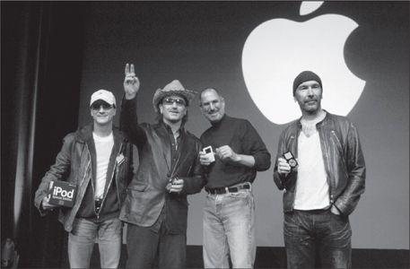
Джимми Айовин, Боно, Джобс и Эдж, 2004
On His iPod
На его iPod
As the iPod phenomenon grew, it spawned a question that was asked of presidential candidates, B-list celebrities, first dates, the queen of England, and just about anyone else with white earbuds: “What’s on your iPod?” The parlor game took off when Elisabeth Bumiller wrote a piece in the New York Times in early 2005 dissecting the answer that President George W. Bush gave when she asked him that question. “Bush’s iPod is heavy on traditional country singers,” she reported. “He has selections by Van Morrison, whose ‘Brown Eyed Girl’ is a Bush favorite, and by John Fogerty, most predictably ‘Centerfield.’” She got a Rolling Stone editor, Joe Levy, to analyze the selection, and he commented, “One thing that’s interesting is that the president likes artists who don’t like him.”
| B-list celebrities | звёзды второго эшелона |
| white earbuds | белые вкладыши |
| a parlor game | салонная игра |
| took off | взлетела |
| dissecting | разбирая |
Феномен iPod породил вопрос, который задавали кандидатам в президенты, звёздам второго эшелона, на первых свиданиях, королеве Англии и почти всем, у кого в ушах белые вкладыши: «Что у тебя на iPod?» Салонная игра взлетела, когда Элизабет Бамиллер в начале 2005 года разобрала в New York Times ответ президента Джорджа Буша-младшего. «В iPod Буша много традиционного кантри, — писала она. — Есть Ван Моррисон, чья „Brown Eyed Girl“ у Буша в любимых, и Джон Фогерти — предсказуемо, „Centerfield“». Она попросила редактора Rolling Stone Джо Леви проанализировать подборку, и тот заметил: «Интересно, что президент любит артистов, которые не любят его».
“Simply handing over your iPod to a friend, your blind date, or the total stranger sitting next to you on the plane opens you up like a book,” Steven Levy wrote in The Perfect Thing. “All somebody needs to do is scroll through your library on that click wheel, and, musically speaking, you’re naked. It’s not just what you like—it’s who you are.” So one day, when we were sitting in his living room listening to music, I asked Jobs to let me see his. As we sat there, he flicked through his favorite songs.
| your blind date | партнёр по свиданию вслепую |
| opens you up like a book | раскрывает как книгу |
| you’re naked | ты голый |
| flicked through | пролистал |
«Просто передать свой iPod другу, вслепую выбранному партнёру по свиданию или совсем незнакомому соседу по самолёту — значит раскрыться как книга, — писал Стивен Леви в „Совершенной вещи“. — Достаточно пролистать твою библиотеку колёсиком — и, музыкально говоря, ты голый. Это не просто то, что тебе нравится, — это кто ты есть». Поэтому однажды, когда мы сидели в его гостиной и слушали музыку, я попросил Джобса показать его iPod. Он пролистал любимые песни.
Not surprisingly, there were all six volumes of Dylan’s bootleg series, including the tracks Jobs had first started worshipping when he and Wozniak were able to score them on reel-to-reel tapes years before the series was officially released. In addition, there were fifteen other Dylan albums, starting with his first, Bob Dylan (1962), but going only up to Oh Mercy (1989). Jobs had spent a lot of time arguing with Andy Hertzfeld and others that Dylan’s subsequent albums, indeed any of his albums after Blood on the Tracks (1975), were not as powerful as his early performances. The one exception he made was Dylan’s track “Things Have Changed” from the 2000 movie Wonder Boys. Notably his iPod did not include Empire Burlesque (1985), the album that Hertzfeld had brought him the weekend he was ousted from Apple.
| bootleg series | бутлеги, пиратские записи |
| worshipping | боготворить |
| reel-to-reel tapes | катушечные ленты |
| ousted from | изгнан из |
Неудивительно, что там были все шесть томов бутлегов Дилана — включая записи, которые Джобс начал боготворить ещё когда они с Возняком добывали их на катушечных лентах за годы до официального выхода серии. Плюс пятнадцать других альбомов Дилана — от первого, Bob Dylan (1962), и лишь до Oh Mercy (1989). Джобс много спорил с Энди Херцфельдом и другими, что поздние альбомы Дилана — да все после Blood on the Tracks (1975) — слабее ранних записей. Единственное исключение — трек Дилана «Things Have Changed» из фильма 2000 года «Вундеркинды». Примечательно, что в iPod не было Empire Burlesque (1985) — альбома, который Херцфельд принёс ему в выходные его изгнания из Apple.
The other great trove on his iPod was the Beatles. He included songs from seven of their albums: A Hard Day’s Night, Abbey Road, Help!, Let It Be, Magical Mystery Tour, Meet the Beatles! and Sgt. Pepper’s Lonely Hearts Club Band. The solo albums missed the cut. The Rolling Stones clocked in next, with six albums: Emotional Rescue, Flashpoint, Jump Back, Some Girls, Sticky Fingers, and Tattoo You. In the case of the Dylan and the Beatles albums, most were included in their entirety. But true to his belief that albums can and should be disaggregated, those of the Stones and most other artists on his iPod included only three or four cuts. His onetime girlfriend Joan Baez was amply represented by selections from four albums, including two different versions of “Love Is Just a Four-Letter Word.”
| the other great trove | другая великая сокровищница |
| missed the cut | не попали в отбор |
| clocked in | шли следом |
| disaggregated | разобранные на части |
| amply represented | щедро представлена |
Другая великая сокровищница его iPod — Beatles: песни с семи альбомов — A Hard Day’s Night, Abbey Road, Help!, Let It Be, Magical Mystery Tour, Meet the Beatles! и Sgt. Pepper’s Lonely Hearts Club Band. Сольники в отбор не попали. Следом шли Rolling Stones с шестью альбомами: Emotional Rescue, Flashpoint, Jump Back, Some Girls, Sticky Fingers и Tattoo You. Альбомы Дилана и Beatles в основном были загружены целиком. Но, верный своей вере в то, что альбомы можно и нужно разбирать на части, у Stones и большинства других артистов он оставил по три-четыре трека. Бывшая подруга Джоан Баэз была щедро представлена подборками с четырёх альбомов, включая две разные версии «Love Is Just a Four-Letter Word».
His iPod selections were those of a kid from the seventies with his heart in the sixties. There were Aretha, B. B. King, Buddy Holly, Buffalo Springfield, Don McLean, Donovan, the Doors, Janis Joplin, Jefferson Airplane, Jimi Hendrix, Johnny Cash, John Mellencamp, Simon and Garfunkel, and even The Monkees (“I’m a Believer”) and Sam the Sham (“Wooly Bully”). Only about a quarter of the songs were from more contemporary artists, such as 10,000 Maniacs, Alicia Keys, Black Eyed Peas, Coldplay, Dido, Green Day, John Mayer (a friend of both his and Apple), Moby (likewise), U2, Seal, and Talking Heads. As for classical music, there were a few recordings of Bach, including the Brandenburg Concertos, and three albums by Yo-Yo Ma.
| a kid from the seventies with his heart in the sixties | парень из семидесятых с сердцем в шестидесятых |
| contemporary artists | современные исполнители |
Подборка в его iPod — подборка парня из семидесятых с сердцем в шестидесятых. Были Арета, Би Би Кинг, Бадди Холли, Buffalo Springfield, Дон Маклин, Донован, The Doors, Дженис Джоплин, Jefferson Airplane, Джими Хендрикс, Джонни Кэш, Джон Мелленкамп, Simon and Garfunkel и даже The Monkees («I'm a Believer») и Sam the Sham («Wooly Bully»). Лишь около четверти песен — от более современных исполнителей: 10,000 Maniacs, Алиша Киз, Black Eyed Peas, Coldplay, Dido, Green Day, Джон Мейер (друг и его, и Apple), Моби (тоже), U2, Seal и Talking Heads. Из классики — несколько записей Баха, включая Бранденбургские концерты, и три альбома Йо-Йо Ма.
Jobs told Sheryl Crow in May 2003 that he was downloading some Eminem tracks, admitting, “He’s starting to grow on me.” James Vincent subsequently took him to an Eminem concert. Even so, the rapper missed making it onto Jobs’s iPod. As Jobs said to Vincent after the concert, “I don’t know . . .” He later told me, “I respect Eminem as an artist, but I just don’t want to listen to his music, and I can’t relate to his values the way I can to Dylan’s.”
| grow on me | начинает мне нравиться |
| relate to his values | разделять его ценности |
Джобс признался Шерил Кроу в мае 2003 года, что качает кое-что из Эминема: «Он начинает мне нравиться». Джеймс Винсент сводил его на концерт Эминема. И всё же рэпер в iPod Джобса не попал. «Не знаю…» — сказал Джобс Винсенту после концерта. А мне позже: «Я уважаю Эминема как артиста, но слушать его музыку не хочу — и его ценности мне не так близки, как дилановские».
His favorites did not change over the years. When the iPad 2 came out in March 2011, he transferred his favorite music to it. One afternoon we sat in his living room as he scrolled through the songs on his new iPad and, with a mellow nostalgia, tapped on ones he wanted to hear.
| a mellow nostalgia | мягкая ностальгия |
Его фавориты не менялись годами. Когда в марте 2011-го вышел iPad 2, он перенёс на него любимую музыку. Однажды днём мы сидели в его гостиной, он листал песни на новом iPad и с мягкой ностальгией включал те, что хотел услышать.
We went through the usual Dylan and Beatles favorites, then he became more reflective and tapped on a Gregorian chant, “Spiritus Domini,” performed by Benedictine monks. For a minute or so he zoned out, almost in a trance. “That’s really beautiful,” he murmured. He followed with Bach’s Second Brandenburg Concerto and a fugue from The Well-Tempered Clavier. Bach, he declared, was his favorite classical composer. He was particularly fond of listening to the contrasts between the two versions of the “Goldberg Variations” that Glenn Gould recorded, the first in 1955 as a twenty-two-year-old little-known pianist and the second in 1981, a year before he died. “They’re like night and day,” Jobs said after playing them sequentially one afternoon. “The first is an exuberant, young, brilliant piece, played so fast it’s a revelation. The later one is so much more spare and stark. You sense a very deep soul who’s been through a lot in life. It’s deeper and wiser.” Jobs was on his third medical leave that afternoon when he played both versions, and I asked which he liked better. “Gould liked the later version much better,” he said. “I used to like the earlier, exuberant one. But now I can see where he was coming from.”
| reflective | задумчивый |
| a Gregorian chant | григорианское песнопение |
| zoned out | был не здесь |
| exuberant | буйный, полный жизни |
| spare and stark | скупой и суровый |
| a medical leave | медицинский отпуск |
Мы прошлись по обычным фаворитам Дилана и Beatles, потом он стал задумчивее и включил григорианское песнопение «Spiritus Domini» в исполнении монахов-бенедиктинцев. С минуту он был где-то не здесь, почти в трансе. «Это правда прекрасно», — пробормотал он. Затем — Второй Бранденбургский концерт Баха и фуга из «Хорошо темперированного клавира». Бах, объявил он, его любимый классический композитор. Особенно он любил слушать контраст двух записей «Гольдберг-вариаций» Гленна Гульда: первая — 1955 года, в исполнении двадцатидвухлетнего малоизвестного пианиста, вторая — 1981-го, за год до его смерти. «Это как день и ночь, — сказал Джобс, проиграв обе подряд. — Первая — буйная, юная, блестящая, сыграна так быстро, что это откровение. Поздняя — куда скупее и суровее. Чувствуешь очень глубокую душу, много пережившую. Она глубже и мудрее». Джобс был тогда в третьем медицинском отпуске; я спросил, какая версия нравится ему больше. «Гульду гораздо больше нравилась поздняя, — ответил он. — Раньше я любил раннюю, буйную. Но теперь понимаю, откуда он шёл».
He then jumped from the sublime to the sixties: Donovan’s “Catch the Wind.” When he noticed me look askance, he protested, “Donovan did some really good stuff, really.” He punched up “Mellow Yellow,” and then admitted that perhaps it was not the best example. “It sounded better when we were young.”
| the sublime | возвышенное |
| look askance | коситься неодобрительно |
Затем он прыгнул от возвышенного к шестидесятым — «Catch the Wind» Донована. Заметив мой косой взгляд, он возразил: «Донован и правда делал хорошие вещи. Правда». Включил «Mellow Yellow» — и признал, что, пожалуй, пример не лучший. «Звучало лучше, когда мы были молоды».
I asked what music from our childhood actually held up well these days. He scrolled down the list on his iPad and called up the Grateful Dead’s 1969 song “Uncle John’s Band.” He nodded along with the lyrics: “When life looks like Easy Street, there is danger at your door.” For a moment we were back at that tumultuous time when the mellowness of the sixties was ending in discord. “Whoa, oh, what I want to know is, are you kind?”
| held up well | достойно звучит |
| Easy Street | лёгкая дорожка |
| tumultuous | бурный |
| discord | раздор |
Я спросил, какая музыка нашего детства достойно звучит и сегодня. Он пролистал список на iPad и включил «Uncle John's Band» Grateful Dead 1969 года. Кивал в такт словам: «Когда жизнь кажется лёгкой дорожкой, у твоих дверей — опасность». На миг мы вернулись в то бурное время, когда мягкость шестидесятых кончалась раздором. «Эй, о, что я хочу знать — добр ли ты?»
Then he turned to Joni Mitchell. “She had a kid she put up for adoption,” he said. “This song is about her little girl.” He tapped on “Little Green,” and we listened to the mournful melody and lyrics that describe the feelings of a mother who gives up a child. “So you sign all the papers in the family name / You’re sad and you’re sorry, but you’re not ashamed.” I asked whether he still often thought about being put up for adoption. “No, not much,” he said. “Not too often.”
| put up for adoption | отданная на усыновление |
| mournful | печальный |
| ashamed | стыдно |
Затем он перешёл к Джони Митчелл. «У неё был ребёнок, отданный на усыновление, — сказал он. — Эта песня о её девочке». Он включил «Little Green», и мы слушали печальную мелодию и слова о чувствах матери, отдающей дитя. «Ты подписываешь все бумаги фамилией / Тебе грустно и жаль, но не стыдно». Я спросил, часто ли он вспоминает о том, что сам был отдан на усыновление. «Да нет, не особенно, — сказал он. — Не так уж часто».
These days, he said, he thought more about getting older than about his birth. That led him to play Joni Mitchell’s greatest song, “Both Sides Now,” with its lyrics about being older and wiser: “I’ve looked at life from both sides now, / From win and lose, and still somehow, / It’s life’s illusions I recall, / I really don’t know life at all.” As Glenn Gould had done with Bach’s “Goldberg Variations,” Mitchell had recorded “Both Sides Now” many years apart, first in 1969 and then in an excruciatingly haunting slow version in 2000. He played the latter. “It’s interesting how people age,” he noted.
| excruciatingly haunting | мучительно завораживающая |
Теперь, сказал он, он чаще думает о старении, чем о своём рождении. Потому и включил величайшую песню Джони Митчелл «Both Sides Now» — о том, что с годами мудреешь: «Я видела жизнь с обеих сторон, / Побед и поражений, и всё же / Вспоминаются мне лишь иллюзии жизни, / А саму жизнь я не знаю совсем». Как Гульд с баховскими вариациями, Митчелл записала «Both Sides Now» с перерывом во много лет: впервые в 1969-м, а затем — в мучительно завораживающей медленной версии 2000 года. Он включил вторую. «Интересно, как люди стареют», — заметил он.
Some people, he added, don’t age well even when they are young. I asked who he had in mind. “John Mayer is one of the best guitar players who’s ever lived, and I’m just afraid he’s blowing it big time,” Jobs replied. Jobs liked Mayer and occasionally had him over for dinner in Palo Alto. When he was twenty-seven, Mayer appeared at the January 2004 Macworld, where Jobs introduced GarageBand, and he became a fixture at the event most years. Jobs punched up Mayer’s hit “Gravity.” The lyrics are about a guy filled with love who inexplicably dreams of ways to throw it away: “Gravity is working against me, / And gravity wants to bring me down.” Jobs shook his head and commented, “I think he’s a really good kid underneath, but he’s just been out of control.”
| blowing it big time | гробит по-крупному |
| a fixture at the event | завсегдатай мероприятия |
| out of control | занесло, вышел из-под контроля |
Некоторые, добавил он, плохо стареют, даже будучи молодыми. Я спросил, кого он имеет в виду. «Джон Мейер — один из лучших гитаристов в истории, и я просто боюсь, что он всё гробит по-крупному», — ответил Джобс. Мейер ему нравился, и он порой звал его на ужин в Пало-Альто. В двадцать семь Мейер выступил на Macworld в январе 2004-го, где Джобс представил GarageBand, и в большинстве годов стал завсегдатаем мероприятия. Джобс включил его хит «Gravity» — о парне, полном любви, но необъяснимо грезящем о том, как её выбросить: «Гравитация против меня, / И гравитация тянет меня вниз». Джобс покачал головой: «Думаю, в глубине он хороший парень, просто его занесло».
At the end of the listening session, I asked him a well-worn question: the Beatles or the Stones? “If the vault was on fire and I could grab only one set of master tapes, I would grab the Beatles,” he answered. “The hard one would be between the Beatles and Dylan. Somebody else could have replicated the Stones. No one could have been Dylan or the Beatles.” As he was ruminating about how fortunate we were to have all of them when we were growing up, his son, then eighteen, came in the room. “Reed doesn’t understand,” Jobs lamented. Or perhaps he did. He was wearing a Joan Baez T-shirt, with the words “Forever Young” on it.
| the vault | хранилище |
| master tapes | мастер-ленты |
| replicated | воспроизвести |
| ruminating | рассуждая |
| lamented | посетовал |
В конце прослушивания я задал избитый вопрос: Beatles или Stones? «Если в хранилище пожар и можно спасти лишь один комплект мастер-лент, я спасу Beatles, — ответил он. — А трудный выбор был бы между Beatles и Диланом. Stones мог бы воспроизвести кто-то другой. А вот Диланом или Beatles не мог бы стать никто». Пока он рассуждал, как нам повезло расти вместе со всеми ними, в комнату вошёл его восемнадцатилетний сын. «Рид этого не понимает», — посетовал Джобс. Или понимает: на нём была футболка Джоан Баэз со словами «Forever Young».
Bob Dylan
Боб Дилан
The only time Jobs can ever recall being tongue-tied was in the presence of Bob Dylan. He was playing near Palo Alto in October 2004, and Jobs was recovering from his first cancer surgery. Dylan was not a gregarious man, not a Bono or a Bowie. He was never Jobs’s friend, nor did he care to be. He did, however, invite Jobs to visit him at his hotel before the concert. Jobs recalled:
| tongue-tied | терять дар речи |
| gregarious | общительный |
Единственный раз, когда Джобс, по собственному признанию, терял дар речи, — в присутствии Боба Дилана. Тот играл под Пало-Альто в октябре 2004 года, а Джобс восстанавливался после первой операции от рака. Дилан не был общительным человеком — не Боно и не Боуи. Другом Джобса он не был и быть не стремился. Однако пригласил Джобса зайти в свой отель перед концертом. Джобс вспоминал:
We sat on the patio outside his room and talked for two hours. I was really nervous, because he was one of my heroes. And I was also afraid that he wouldn’t be really smart anymore, that he’d be a caricature of himself, like happens to a lot of people. But I was delighted. He was as sharp as a tack. He was everything I’d hoped. He was really open and honest. He was just telling me about his life and about writing his songs. He said, “They just came through me, it wasn’t like I was having to compose them. That doesn’t happen anymore, I just can’t write them that way anymore.” Then he paused and said to me with his raspy voice and little smile, “But I still can sing them.”
| a caricature of himself | карикатура на себя |
| as sharp as a tack | остёр как бритва |
| his raspy voice | его хриплый голос |
Мы сидели на террасе у его номера и проговорили два часа. Я очень нервничал: он был одним из моих героев. И боялся, что он уже не так умён, что стал карикатурой на себя, как случается со многими. Но был в восторге: он остёр как бритва. Всё, на что я надеялся. По-настоящему открытый и честный. Просто рассказывал о своей жизни и о сочинении песен. Сказал: «Они просто проходили сквозь меня — не было ощущения, что я их сочиняю. Такого больше нет, я так больше не умею». Потом помолчал и сказал своим хриплым голосом с лёгкой улыбкой: «Но петь их я всё ещё могу».
The next time Dylan played nearby, he invited Jobs to drop by his tricked-up tour bus just before the concert. When Dylan asked what his favorite song was, Jobs said “One Too Many Mornings.” So Dylan sang it that night. After the concert, as Jobs was walking out the back, the tour bus came by and screeched to a stop. The door flipped open. “So, did you hear my song I sang for you?” Dylan rasped. Then he drove off. When Jobs tells the tale, he does a pretty good impression of Dylan’s voice. “He’s one of my all-time heroes,” Jobs recalled. “My love for him has grown over the years, it’s ripened. I can’t figure out how he did it when he was so young.”
| his tricked-up tour bus | его навороченный гастрольный автобус |
| screeched to a stop | резко затормозил |
| rasped | прохрипел |
| ripened | созрела |
В следующий раз, когда Дилан играл поблизости, он позвал Джобса в свой навороченный гастрольный автобус перед концертом. Спросил любимую песню, Джобс назвал «One Too Many Mornings» — и Дилан спел её тем вечером. После концерта, когда Джобс выходил через заднюю дверь, автобус подъехал и резко затормозил, дверь распахнулась. «Ну что, слышал мою песню, что я пел для тебя?» — прохрипел Дилан. И уехал. Рассказывая эту историю, Джобс неплохо подражает дилановскому голосу. «Он один из моих героев на все времена, — вспоминал Джобс. — Любовь к нему росла с годами, созрела. Не пойму, как он это делал в такой молодости».
A few months after seeing him in concert, Jobs came up with a grandiose plan. The iTunes Store should offer a digital “boxed set” of every Dylan song every recorded, more than seven hundred in all, for $199. Jobs would be the curator of Dylan for the digital age. But Andy Lack of Sony, which was Dylan’s label, was in no mood to make a deal without some serious concessions regarding iTunes. In addition, Lack felt the price was too low and would cheapen Dylan. “Bob is a national treasure,” said Lack, “and Steve wanted him on iTunes at a price that commoditized him.” It got to the heart of the problems that Lack and other record executives were having with Jobs: He was getting to set the price points, not them. So Lack said no.
| a grandiose plan | грандиозный план |
| a boxed set | бокс-сет, подарочный набор |
| the curator | куратор |
| concessions | уступки |
| commoditized him | превращал его в ширпотреб |
Через несколько месяцев после концерта Джобс задумал грандиозный план: iTunes Store предложит цифровой «бокс-сет» всех когда-либо записанных песен Дилана — более семисот — за 199 долларов. Джобс станет куратором Дилана цифровой эпохи. Но Энди Лэк из Sony, лейбла Дилана, не собирался заключать сделку без серьёзных уступок по iTunes. К тому же он считал цену слишком низкой, принижающей Дилана. «Боб — национальное достояние, — говорил Лэк, — а Стив хотел продавать его на iTunes по цене, превращающей его в ширпотреб». Это была сердцевина проблем Лэка и других руководителей звукозаписи с Джобсом: цену назначал он, а не они. Лэк сказал «нет».
“Okay, then I will call Dylan directly,” Jobs said. But it was not the type of thing that Dylan ever dealt with, so it fell to his agent, Jeff Rosen, to sort things out.
| it fell to | выпало на долю |
| sort things out | разбираться |
«Ладно, тогда позвоню Дилану напрямую», — сказал Джобс. Но такими вещами Дилан никогда не занимался, и разбираться выпало его агенту Джеффу Розену.
“It’s a really bad idea,” Lack told Rosen, showing him the numbers. “Bob is Steve’s hero. He’ll sweeten the deal.” Lack had both a professional and a personal desire to fend Jobs off, even to yank his chain a bit. So he made an offer to Rosen. “I will write you a check for a million dollars tomorrow if you hold off for the time being.” As Lack later explained, it was an advance against future royalties, “one of those accounting things record companies do.” Rosen called back forty-five minutes later and accepted. “Andy worked things out with us and asked us not to do it, which we didn’t,” he recalled. “I think Andy gave us some sort of an advance to hold off doing it.”
| sweeten the deal | подсластить сделку |
| fend Jobs off | отбиться от Джобса |
| yank his chain | подёргать за ниточки |
| an advance against future royalties | аванс в счёт будущих роялти |
«Это по-настоящему плохая идея», — сказал Лэк Розену, показывая цифры. «Боб — герой Стива. Тот подсластит сделку». Лэком двигало и профессиональное, и личное желание отбиться от Джобса, а то и немного подёргать его за ниточки. Он сделал Розену предложение: «Я выпишу тебе чек на миллион долларов завтра же, если вы пока подождёте». Как объяснял позже Лэк, это был аванс в счёт будущих роялти, «одна из тех бухгалтерских штук, что делают звукозаписывающие компании». Розен перезвонил через сорок пять минут и согласился. «Энди всё с нами уладил и попросил не делать этого — мы и не стали, — вспоминал он. — По-моему, Энди дал нам какой-то аванс, чтобы мы подождали».
By 2006, however, Lack had stepped aside as the CEO of what was by then Sony BMG, and Jobs reopened negotiations. He sent Dylan an iPod with all of his songs on it, and he showed Rosen the type of marketing campaign that Apple could mount. In August he announced a grand deal. It allowed Apple to sell the $199 digital boxed set of all the songs Dylan ever recorded, plus the exclusive right to offer Dylan’s new album, Modern Times, for pre-release orders. “Bob Dylan is one of the most respected poets and musicians of our time, and he is a personal hero of mine,” Jobs said at the announcement. The 773-track set included forty-two rarities, such as a 1961 tape of “Wade in the Water” made in a Minnesota hotel, a 1962 version of “Handsome Molly” from a live concert at the Gaslight Café in Greenwich Village, the truly awesome rendition of “Mr. Tambourine Man” from the 1964 Newport Folk Festival (Jobs’s favorite), and an acoustic version of “Outlaw Blues” from 1965.
| stepped aside | ушёл в сторону |
| marketing campaign that Apple could mount | рекламная кампания, которую могла бы развернуть Apple; mount a campaign — организовать кампанию |
| rarities | редкости |
| a rendition | исполнение |
К 2006 году Лэк, однако, ушёл с поста CEO тогдашней Sony BMG, и Джобс возобновил переговоры. Он послал Дилану iPod со всеми его песнями и показал Розену, какую маркетинговую кампанию может развернуть Apple. В августе объявили большую сделку: Apple получает право продавать цифровой бокс-сет всех когда-либо записанных песен Дилана за 199 долларов, плюс эксклюзив на предзаказы нового альбома Дилана Modern Times. «Боб Дилан — один из самых почитаемых поэтов и музыкантов нашего времени, он мой личный герой», — сказал Джобс на анонсе. В набор из 773 треков вошло сорок две редкости: запись «Wade in the Water» 1961 года, сделанная в отеле Миннесоты; «Handsome Molly» 1962-го с живого концерта в Gaslight Café в Гринвич-Виллидж; поистине потрясающее исполнение «Mr. Tambourine Man» с Ньюпортского фолк-фестиваля 1964 года (любимое у Джобса) и акустическая версия «Outlaw Blues» 1965-го.
As part of the deal, Dylan appeared in a television ad for the iPod, featuring his new album, Modern Times. This was one of the most astonishing cases of flipping the script since Tom Sawyer persuaded his friends to whitewash the fence. In the past, getting celebrities to do an ad required paying them a lot of money. But by 2006 the tables were turned. Major artists wanted to appear in iPod ads; the exposure would guarantee success. James Vincent had predicted this a few years earlier, when Jobs said he had contacts with many musicians and could pay them to appear in ads. “No, things are going to soon change,” Vincent replied. “Apple is a different kind of brand, and it’s cooler than the brand of most artists. We should talk about the opportunity we offer the bands, not pay them.”
| flipping the script | переворот ролей |
| whitewash the fence | красить забор |
| the tables were turned | всё перевернулось |
| the exposure | показ, охват |
По условиям сделки Дилан снялся в телерекламе iPod с его новым альбомом Modern Times. Это был один из поразительнейших переворотов ролей со времён, как Том Сойер убедил друзей красить забор. Раньше звёздам за рекламу платили большие деньги. К 2006 году всё перевернулось: крупные артисты сами хотели в рекламу iPod — гарантия успеха. Джеймс Винсент предсказал это несколькими годами раньше, когда Джобс говорил, что знаком со многими музыкантами и может заплатить им за съёмки. «Нет, всё скоро изменится, — ответил Винсент. — Apple — бренд другого рода, он круче брендов большинства артистов. Надо говорить о возможностях, которые мы предлагаем группам, а не платить им».
Lee Clow recalled that there was actually some resistance among the younger staffers at Apple and the ad agency to using Dylan. “They wondered whether he was still cool enough,” Clow said. Jobs would hear none of that. He was thrilled to have Dylan.
| staffers | сотрудники |
| would hear none of that | и слушать не хотел |
Ли Клоу вспоминал, что среди молодых сотрудников Apple и агентства было сопротивление идее Дилана. «Они сомневались, достаточно ли он ещё крут», — говорил Клоу. Джобс и слушать не хотел. Он был в восторге от Дилана.
Jobs became obsessed by every detail of the Dylan commercial. Rosen flew to Cupertino so that they could go through the album and pick the song they wanted to use, which ended up being “Someday Baby.” Jobs approved a test video that Clow made using a stand-in for Dylan, which was then shot in Nashville with Dylan himself. But when it came back, Jobs hated it. It wasn’t distinctive enough. He wanted a new style. So Clow hired another director, and Rosen was able to convince Dylan to retape the entire commercial. This time it was done with a gently backlit cowboy-hatted Dylan sitting on a stool, strumming and singing, while a hip woman in a newsboy cap dances with her iPod. Jobs loved it.
| a stand-in | дублёр |
| distinctive | самобытный |
| backlit | в контровой подсветке |
| strumming | бренча |
| a newsboy cap | кепка газетчика |
Джобс стал одержим каждой деталью ролика с Диланом. Розен прилетел в Купертино, они прошлись по альбому и выбрали песню — в итоге «Someday Baby». Джобс одобрил пробное видео, снятое Клоу с дублёром Дилана; настоящую съёмку провели в Нэшвилле с самим Диланом. Присланный ролик Джобс возненавидел — недостаточно самобытно. Хотел новый стиль. Клоу нанял другого режиссёра, и Розен уговорил Дилана переснять ролик целиком. Теперь Дилан в мягкой контровой подсветке и ковбойской шляпе сидел на табурете, бренчал и пел, а рядом танцевала с iPod модная девушка в кепке газетчика. Джобсу понравилось.
The ad showed the halo effect of the iPod’s marketing: It helped Dylan win a younger audience, just as the iPod had done for Apple computers. Because of the ad, Dylan’s album was number one on the Billboard chart its first week, topping hot-selling albums by Christina Aguilera and Outkast. It was the first time Dylan had reached the top spot since Desire in 1976, thirty years earlier. Ad Age headlined Apple’s role in propelling Dylan. “The iTunes spot wasn’t just a run-of-the-mill celebrity- endorsement deal in which a big brand signs a big check to tap into the equity of a big star,” it reported. “This one flipped the formula, with the all-powerful Apple brand giving Mr. Dylan access to younger demographics and helping propel his sales to places they hadn’t been since the Ford administration.”
| the halo effect | эффект ореола |
| topping | обойдя |
| propelling | взлёт, продвижение |
| run-of-the-mill | рядовой, заурядный |
| tap into the equity of a big star | ради блеска большой звезды |
| demographics | молодая аудитория |
Ролик показал ореол маркетинга iPod: он привёл к Дилану молодую аудиторию, как iPod привёл её к компьютерам Apple. Благодаря рекламе альбом Дилана в первую же неделю возглавил чарт Billboard, обойдя горячие новинки Кристины Агилеры и Outkast. Впервые с Desire 1976 года — за тридцать лет — Дилан поднялся на вершину. Ad Age писала о роли Apple в его взлёте: «Ролик iTunes не был рядовой сделкой со звездой, когда большой бренд выписывает большой чек ради блеска большой знаменитости. Эта сделка перевернула формулу: всемогущий бренд Apple дал мистеру Дилану доступ к молодой аудитории и помог поднять продажи на высоты, не виданные со времён администрации Форда».
The Beatles
The Beatles
Among Jobs’s prized CDs was a bootleg that contained a dozen or so taped sessions of the Beatles revising “Strawberry Fields Forever.” It became the musical score to his philosophy of how to perfect a product. Andy Hertzfeld had found the CD and made a copy of it for Jobs in 1986, though Jobs sometimes told folks that it had come from Yoko Ono. Sitting in the living room of his Palo Alto home one day, Jobs rummaged around in some glass-enclosed bookcases to find it, then put it on while describing what it had taught him:
| a bootleg | бутлег |
| rummaged around | порылся |
Среди ценных CD Джобса был бутлег с дюжиной студийных сессий Beatles, шлифовавших «Strawberry Fields Forever». Он стал музыкальной партитурой его философии доведения продукта до совершенства. Диск нашёл и скопировал для Джобса в 1986 году Энди Херцфельд, хотя Джобс иногда рассказывал, что получил его от Йоко Оно. Однажды в гостиной своего дома в Пало-Альто Джобс порылся в застеклённых книжных шкафах, отыскал диск и включил, рассказывая, чему тот его научил:
It’s a complex song, and it’s fascinating to watch the creative process as they went back and forth and finally created it over a few months. Lennon was always my favorite Beatle. [He laughs as Lennon stops during the first take and makes the band go back and revise a chord.] Did you hear that little detour they took? It didn’t work, so they went back and started from where they were. It’s so raw in this version. It actually makes them sound like mere mortals. You could actually imagine other people doing this, up to this version. Maybe not writing and conceiving it, but certainly playing it. Yet they just didn’t stop. They were such perfectionists they kept it going and going. This made a big impression on me when I was in my thirties. You could just tell how much they worked at this.
| went back and forth | ходили туда-сюда |
| a detour | обходной путь |
| raw | сырой |
| mere mortals | простые смертные |
| perfectionists | перфекционисты |
Это сложная песня, и завораживает наблюдать творческий процесс, как они ходили туда-сюда и за несколько месяцев наконец создали её. Леннон всегда был моим любимым битлом. [Смеётся, когда Леннон на первом дубле останавливает запись и заставляет группу вернуться и поправить аккорд.] Слышал этот маленький обходной путь? Не сработало — вернулись и начали с того места. В этой версии всё так сыро. Они от этого звучат простыми смертными. Легко представить, что другие люди могли бы так — до этой версии. Может, не написать и не задумать её, но уж точно сыграть. И всё же они не останавливались. Такие перфекционисты — всё вели и вели. В мои тридцать это произвело на меня огромное впечатление. Сразу видно, сколько они над этим работали.
They did a bundle of work between each of these recordings. They kept sending it back to make it closer to perfect. [As he listens to the third take, he points out how the instrumentation has gotten more complex.] The way we build stuff at Apple is often this way. Even the number of models we’d make of a new notebook or iPod. We would start off with a version and then begin refining and refining, doing detailed models of the design, or the buttons, or how a function operates. It’s a lot of work, but in the end it just gets better, and soon it’s like, “Wow, how did they do that?!? Where are the screws?”
| a bundle of work | огромный объём работы |
| the instrumentation | аранжировка |
| refining | шлифовка |
Между каждыми из этих записей — огромный объём работы. Они отсылали песню обратно, приближая к совершенству. [На третьем дубле он отмечает, как усложнилась аранжировка.] Мы в Apple часто строим так же. Даже по числу моделей нового ноутбука или iPod: начинаем с версии и шлифуем, шлифуем — детальные модели дизайна, кнопок, работы функции. Это большой труд, но в итоге становится только лучше, и скоро уже: «Ух ты, как они это сделали?! А где винты?»
It was thus understandable that Jobs was driven to distraction by the fact that the Beatles were not on iTunes.
| driven to distraction | доводило до безумия |
Понятно поэтому, что отсутствие Beatles в iTunes доводило Джобса до безумия.
His struggle with Apple Corps, the Beatles’ business holding company, stretched more than three decades, causing too many journalists to use the phrase “long and winding road” in stories about the relationship. It began in 1978, when Apple Computers, soon after its launch, was sued by Apple Corps for trademark infringement, based on the fact that the Beatles’ former recording label was called Apple. The suit was settled three years later, when Apple Computers paid Apple Corps $80,000. The settlement had what seemed back then an innocuous stipulation: The Beatles would not produce any computer equipment and Apple would not market any music products.
| trademark infringement | нарушение торговой марки |
| an innocuous stipulation | безобидный пункт |
Его тяжба с Apple Corps, бизнес-холдингом Beatles, тянулась больше трёх десятилетий — из-за чего слишком многие журналисты обыгрывали в статьях «долгую извилистую дорогу». Началось в 1978 году, когда Apple Computers вскоре после запуска получила от Apple Corps иск о нарушении торговой марки: прежний звукозаписывающий лейбл Beatles назывался Apple. Через три года дело уладили — Apple Computers заплатила Apple Corps 80 000 долларов. В соглашении был пункт, казавшийся тогда безобидным: Beatles не выпускают компьютерной техники, а Apple не торгует музыкальной продукцией.
The Beatles kept their end of the bargain; none of them ever produced any computers. But Apple ended up wandering into the music business. It got sued again in 1991, when the Mac incorporated the ability to play musical files, then again in 2003, when the iTunes Store was launched. The legal issues were finally resolved in 2007, when Apple made a deal to pay Apple Corps $500 million for all worldwide rights to the name, and then licensed back to the Beatles the right to use Apple Corps for their record and business holdings.
| kept their end of the bargain | соблюли свою часть сделки |
| wandering into | забрела в |
| licensed back | передали обратно по лицензии |
Beatles свою часть сделки соблюли — компьютеров никто из них не выпускал. А вот Apple в итоге забрела в музыкальный бизнес. Её засудили снова в 1991 году, когда Mac обзавёлся проигрыванием музыкальных файлов, и ещё раз в 2003-м, с запуском iTunes Store. Юридические вопросы окончательно закрыли в 2007-м: Apple согласилась заплатить Apple Corps 500 миллионов долларов за всемирные права на имя, а Beatles получили обратно лицензию использовать Apple Corps для своих звукозаписывающих и деловых активов.
Alas, this did not resolve the issue of getting the Beatles onto iTunes. For that to happen, the Beatles and EMI Music, which held the rights to most of their songs, had to negotiate their own differences over how to handle the digital rights. “The Beatles all want to be on iTunes,” Jobs later recalled, “but they and EMI are like an old married couple. They hate each other but can’t get divorced. The fact that my favorite band was the last holdout from iTunes was something I very much hoped I would live to resolve.” As it turned out, he would.
| an old married couple | старая супружеская пара |
| the last holdout | последний отказник |
Увы, вопрос появления Beatles в iTunes это не решило. Для этого Beatles и EMI Music, державшая права на большинство их песен, должны были уладить собственные разногласия о цифровых правах. «Beatles все хотят быть в iTunes, — вспоминал Джобс, — но они с EMI как старая супружеская пара: ненавидят друг друга, а развестись не могут. То, что моя любимая группа оставалась последним отказником iTunes, — то, что я очень надеялся дожить и разрешить». Так и вышло.
Bono
Боно
Bono, the lead singer of U2, deeply appreciated Apple’s marketing muscle. He was confident that his Dublin-based band was still the best in the world, but in 2004 it was trying, after almost thirty years together, to reinvigorate its image. It had produced an exciting new album with a song that the band’s lead guitarist, The Edge, declared to be “the mother of all rock tunes.” Bono knew he needed to find a way to get it some traction, so he placed a call to Jobs.
| marketing muscle | маркетинговая мощь |
| reinvigorate its image | освежить имидж |
| get it some traction | дать ей ход |
Боно, вокалист U2, глубоко ценил маркетинговую мощь Apple. Он был уверен, что его дублинская группа всё ещё лучшая в мире, но в 2004 году она, после почти тридцати лет вместе, пыталась освежить имидж. Вышел волнующий новый альбом с песней, которую лидер-гитарист Эдж объявил «матерью всех рок-треков». Боно понимал: нужно дать ей ход — и позвонил Джобсу.
“I wanted something specific from Apple,” Bono recalled. “We had a song called ‘Vertigo’ that featured an aggressive guitar riff that I knew would be contagious, but only if people were exposed to it many, many times.” He was worried that the era of promoting a song through airplay on the radio was over. So Bono visited Jobs at home in Palo Alto, walked around the garden, and made an unusual pitch. Over the years U2 had spurned offers as high as $23 million to be in commercials. Now he wanted Jobs to use the band in an iPod commercial for free—or at least as part of a mutually beneficial package. “They had never done a commercial before,” Jobs later recalled. “But they were getting ripped off by free downloading, they liked what we were doing with iTunes, and they thought we could promote them to a younger audience.”
| a guitar riff | гитарный рифф |
| contagious | заразный |
| airplay | ротация на радио |
| spurned offers | отвергала предложения |
| getting ripped off | их обирали |
«Я хотел от Apple кое-что конкретное, — вспоминал Боно. — У нас была песня „Vertigo“ с агрессивным гитарным риффом, который, я знал, станет заразным — но только если люди услышат его много-много раз». Он беспокоился, что эпоха раскрутки песни ротацией на радио кончилась. Боно приехал к Джобсу домой в Пало-Альто, они гуляли по саду, и он сделал необычное предложение. За годы U2 отвергала предложения до 23 миллионов долларов за съёмки в рекламе. Теперь он просил Джобса использовать группу в рекламе iPod бесплатно — или хотя бы в рамках взаимовыгодного пакета. «Они никогда не снимались в рекламе, — вспоминал Джобс. — Но их обирали бесплатные скачивания, им нравилось то, что мы делали с iTunes, и они считали, что мы раскрутим их для молодой аудитории».
Any other CEO would have jumped into a mosh pit to have U2 in an ad, but Jobs pushed back a bit. Apple didn’t feature recognizable people in the iPod ads, just silhouettes. (The Dylan ad had not yet been made.) “You have silhouettes of fans,” Bono replied, “so couldn’t the next phase be silhouettes of artists?” Jobs said it sounded like an idea worth exploring. Bono left a copy of the unreleased album, How to Dismantle an Atomic Bomb, for Jobs to hear. “He was the only person outside the band who had it,” Bono said.
| a mosh pit | мош-пит |
| pushed back | упирался |
| silhouettes | силуэты |
Любой другой CEO прыгнул бы в мош-пит ради U2 в рекламе, но Джобс слегка упирался. В рекламе iPod не было узнаваемых людей — только силуэты. (Ролик с Диланом ещё не сняли.) «У вас силуэты фанатов, — ответил Боно, — так почему бы следующей фазе не стать силуэтами артистов?» Джобс сказал, что идея стоит изучения. Боно оставил ему копию невышедшего альбома How to Dismantle an Atomic Bomb. «Он был единственным человеком вне группы, у кого она была», — говорил Боно.
A round of meetings ensued. Jobs flew down to talk to Jimmy Iovine, whose Interscope records distributed U2, at his house in the Holmby Hills section of Los Angeles. The Edge was there, along with U2’s manager, Paul McGuinness. Another meeting took place in Jobs’s kitchen, with McGuinness writing down the deal points in the back of his diary. U2 would appear in the commercial, and Apple would vigorously promote the album in multiple venues, ranging from billboards to the iTunes homepage. The band would get no direct fee, but it would get royalties from the sale of a special U2 edition of the iPod. Bono believed, like Lack, that the musicians should get a royalty on each iPod sold, and this was his small attempt to assert the principle in a limited way for his band. “Bono and I asked Steve to make us a black one,” Iovine recalled. “We weren’t just doing a commercial sponsorship, we were making a co-branding deal.”
| ensued | последовала |
| billboards | билборды |
| assert the principle | утвердить принцип |
| a co-branding deal | кобрендинговая сделка |
Последовала череда встреч. Джобс слетал поговорить с Джимми Айовином, чьи Interscope records распространяли U2, — к нему домой в Холмби-Хиллз в Лос-Анджелесе. Был там и Эдж, и менеджер U2 Пол Макгиннесс. Другая встреча прошла на кухне Джобса — Макгиннесс записывал пункты сделки на последних страницах ежедневника. U2 снимутся в рекламе, а Apple будет мощно продвигать альбом на разных площадках — от билбордов до главной страницы iTunes. Прямого гонорара группа не получит, зато получит роялти с продаж специального U2-издания iPod. Боно, как и Лэк, считал, что музыкантам положен процент с каждого проданного iPod, — и это была его маленькая попытка утвердить принцип в ограниченном виде для своей группы. «Мы с Боно попросили Стива сделать нам чёрный, — вспоминал Айовин. — Это была не просто рекламная спонсорская сделка, а кобрендинг».
“We wanted our own iPod, something distinct from the regular white ones,” Bono recalled. “We wanted black, but Steve said, ‘We’ve tried other colors than white, and they don’t work.’” A few days later Jobs relented and accepted the idea, tentatively.
| relented | смягчился |
| tentatively | предварительно |
«Мы хотели свой iPod — не такой, как обычные белые, — вспоминал Боно. — Хотели чёрный, но Стив сказал: „Мы пробовали цвета, кроме белого, — не работает“». Через несколько дней Джобс смягчился и предварительно принял идею.
The commercial interspersed high-voltage shots of the band in partial silhouette with the usual silhouette of a dancing woman listening to an iPod. But even as it was being shot in London, the agreement with Apple was unraveling. Jobs began having second thoughts about the idea of a special black iPod, and the royalty rates were not fully pinned down. He called James Vincent, at Apple’s ad agency, and told him to call London and put things on hold. “I don’t think it’s going to happen,” Jobs said. “They don’t realize how much value we are giving them, it’s going south. Let’s think of some other ad to do.” Vincent, a lifelong U2 fan, knew how big the ad would be, both for the band and Apple, and begged for the chance to call Bono to try to get things on track. Jobs gave him Bono’s mobile number, and he reached the singer in his kitchen in Dublin.
| interspersed | чередовал |
| unraveling | расползалось |
| pinned down | зафиксированы |
| put things on hold | приостановить |
| going south | катится под откос |
Ролик чередовал высоковольтные кадры группы в полусилуэте с привычным силуэтом танцующей с iPod женщины. Но даже во время съёмок в Лондоне соглашение с Apple расползалось. Джобс засомневался в идее специального чёрного iPod, а ставки роялти не были зафиксированы. Он позвонил Джеймсу Винсенту в рекламное агентство Apple и велел позвонить в Лондон и всё приостановить. «Не думаю, что это состоится, — сказал Джобс. — Они не понимают, сколько ценности мы им даём. Дело катится под откос. Давайте придумаем другую рекламу». Винсент, пожизненный фанат U2, знал, каким большим будет ролик — и для группы, и для Apple, — и выпросил шанс позвонить Боно и наладить дело. Джобс дал ему мобильный Боно, и тот застал певца на кухне в Дублине.
Bono was also having a few second thoughts. “I don’t think this is going to work,” he told Vincent. “The band is reluctant.” Vincent asked what the problem was. “When we were teenagers in Dublin, we said we would never do naff stuff,” Bono replied. Vincent, despite being British and familiar with rock slang, said he didn’t know what that meant. “Doing rubbishy things for money,” Bono explained. “We are all about our fans. We feel like we’d be letting them down if we went in an ad. It doesn’t feel right. I’m sorry we wasted your time.”
| reluctant | колеблющийся, неохотный |
| naff stuff | дрянь, халтура |
| letting them down | подведём их |
У Боно тоже были сомнения. «Не думаю, что это сработает, — сказал он Винсенту. — Группа колеблется». Винсент спросил, в чём дело. «Ещё подростками в Дублине мы поклялись никогда не делать naff-вещей», — ответил Боно. Винсент, британец, знакомый с рок-сленгом, признался, что слова не знает. «Делать дрянь за деньги, — объяснил Боно. — Мы всё делаем ради фанатов. Кажется, реклама их подведёт. Что-то не так. Прости, что зря потратили твоё время».
Vincent asked what more Apple could do to make it work. “We are giving you the most important thing we have to give, and that’s our music,” said Bono. “And what are you giving us back? Advertising, and our fans will think it’s for you. We need something more.” Vincent replied that the offer of the special U2 edition of the iPod and the royalty arrangement was a huge deal. “That’s the most prized thing we have to give,” he told Bono.
| the most prized thing | самое ценное |
Винсент спросил, что ещё Apple может сделать. «Мы отдаём вам самое важное, что у нас есть, — нашу музыку, — сказал Боно. — А что вы даёте взамен? Рекламу — и фанаты решат, что это для вас. Нам нужно нечто большее». Винсент ответил: предложение спецвыпуска iPod U2 и роялти — огромная сделка. «Это самое ценное, что мы можем дать», — сказал он Боно.
The singer said he was ready to try to put the deal back together, so Vincent immediately called Jony Ive, another big U2 fan (he had first seen them in concert in Newcastle in 1983), and described the situation. Then he called Jobs and suggested he send Ive to Dublin to show what the black iPod would look like. Jobs agreed. Vincent called Bono back, and asked if he knew Jony Ive, unaware that they had met before and admired each other. “Know Jony Ive?” Bono laughed. “I love that guy. I drink his bathwater.”
| drink his bathwater | пить воду из его ванны |
Певец был готов попробовать собрать сделку заново, и Винсент тут же позвонил Джони Айву — ещё одному большому фанату U2 (он впервые видел их в Ньюкасле в 1983 году) — и обрисовал ситуацию. Потом позвонил Джобсу и предложил отправить Айва в Дублин показать, как будет выглядеть чёрный iPod. Джобс согласился. Винсент перезвонил Боно и спросил, знает ли тот Джони Айва, — не зная, что они уже встречались и восхищались друг другом. «Знаю ли я Джони Айва? — рассмеялся Боно. — Я люблю этого парня. Готов пить воду из его ванны».
“That’s a bit strong,” Vincent replied, “but how about letting him come visit and show how cool your iPod would be?”
«Это уж слишком, — ответил Винсент, — но как насчёт того, чтобы он приехал и показал, каким крутым будет ваш iPod?»
“I’m going to pick him up myself in my Maserati,” Bono answered. “He’s going to stay at my house, I’m going to take him out, and I will get him really drunk.”
«Я сам встречу его на моём Maserati, — ответил Боно. — Он остановится у меня, я выведу его в город и напою как следует».
The next day, as Ive headed toward Dublin, Vincent had to fend off Jobs, who was still having second thoughts. “I don’t know if we’re doing the right thing,” he said. “We don’t want to do this for anyone else.” He was worried about setting the precedent of artists getting a royalty from each iPod sold. Vincent assured him that the U2 deal would be special.
| fend off | отбиваться от |
| setting the precedent | создавая прецедент |
На следующий день, пока Айв летел в Дублин, Винсенту приходилось отбиваться от Джобса, всё ещё сомневавшегося: «Не знаю, правильно ли мы поступаем. Не хочется делать это для кого-то ещё». Его тревожил прецедент — артисты, получающие роялти с каждого iPod. Винсент заверил: сделка с U2 будет особой.
“Jony arrived in Dublin and I put him up at my guest house, a serene place over a railway track with a view of the sea,” Bono recalled. “He shows me this beautiful black iPod with a deep red click wheel, and I say okay, we’ll do it.” They went to a local pub, hashed out some of the details, and then called Jobs in Cupertino to see if he would agree. Jobs haggled for a while over each detail of the finances, and over the design, before he finally embraced the deal. That impressed Bono. “It’s actually amazing that a CEO cares that much about detail,” he said. When it was resolved, Ive and Bono settled into some serious drinking. Both are comfortable in pubs. After a few pints, they decided to call Vincent back in California. He was not home, so Bono left a message on his answering machine, which Vincent made sure never to erase. “I’m sitting here in bubbling Dublin with your friend Jony,” it said. “We’re both a bit drunk, and we’re happy with this wonderful iPod and I can’t even believe it exists and I’m holding it in my hand. Thank you!”
| put him up | поселил |
| serene | тихий, безмятежный |
| hashed out some of the details | обсудили детали |
| haggled | торговался |
«Джони прилетел в Дублин, и я поселил его в гостевом доме — тихом местечке над железной дорогой с видом на море, — вспоминал Боно. — Он показал мне прекрасный чёрный iPod с тёмно-красным колёсиком, и я сказал: ладно, мы в деле». Они сходили в местный паб, обсудили детали и позвонили Джобсу в Купертино — согласится ли он. Джобс какое-то время торговался по каждой финансовой детали и по дизайну, прежде чем наконец принял сделку. Боно это впечатлило: «Удивительно, что CEO так печётся о деталях». Когда всё уладилось, Айв с Боно ударились в серьёзную выпивку — оба в пабах как дома. После нескольких пинт они решили позвонить Винсенту в Калифорнию. Того не было дома, и Боно оставил сообщение на автоответчике, которое Винсент поклялся никогда не стирать: «Сижу в бурлящем Дублине с твоим другом Джони. Мы оба слегка пьяны и счастливы этим чудесным iPod — не верится, что он существует, а я держу его в руке. Спасибо!»
Jobs rented a theater in San Jose for the unveiling of the TV commercial and special iPod. Bono and The Edge joined him onstage. The album sold 840,000 copies in its first week and debuted at number one on the Billboard chart. Bono told the press afterward that he had done the commercial without charge because “U2 will get as much value out of the commercial as Apple will.” Jimmy Iovine added that it would allow the band to “reach a younger audience.”
| debuted at number one | дебютировал на первом месте |
Для премьеры ролика и специального iPod Джобс арендовал театр в Сан- Хосе. На сцену с ним вышли Боно и Эдж. Альбом разошёлся тиражом 840 000 экземпляров за первую неделю и дебютировал на первом месте чарта Billboard. Боно сказал прессе, что снялся бесплатно, потому что «U2 получит от ролика не меньше ценности, чем Apple». Джимми Айовин добавил: это позволит группе «достучаться до молодой аудитории».
What was remarkable was that associating with a computer and electronics company was the best way for a rock band to seem hip and appeal to young people. Bono later explained that not all corporate sponsorships were deals with the devil. “Let’s have a look,” he told Greg Kot, the Chicago Tribune music critic. “The ‘devil’ here is a bunch of creative minds, more creative than a lot of people in rock bands. The lead singer is Steve Jobs. These men have helped design the most beautiful art object in music culture since the electric guitar. That’s the iPod. The job of art is to chase ugliness away.”
| deals with the devil | сделки с дьяволом |
| chase ugliness away | гнать прочь уродство |
Примечательно: лучшим способом для рок-группы казаться модной и нравиться молодёжи стала связь с компьютерно-электронной компанией. Боно позже объяснял, что не всякое корпоративное спонсорство — сделка с дьяволом. «Давайте посмотрим, — говорил он музыкальному критику Chicago Tribune Грегу Коту. — „Дьявол“ здесь — кучка творческих умов, более творческих, чем многие в рок-группах. Солист — Стив Джобс. Эти люди помогли спроектировать самый прекрасный предмет искусства в музыкальной культуре со времён электрогитары. Это iPod. Задача искусства — гнать прочь уродство».
Bono got Jobs to do another deal with him in 2006, this one for his Product Red campaign that raised money and awareness to fight AIDS in Africa. Jobs was never much interested in philanthropy, but he agreed to do a special red iPod as part of Bono’s campaign. It was not a wholehearted commitment. He balked, for example, at using the campaign’s signature treatment of putting the name of the company in parentheses with the word “red” in superscript after it, as in (APPLE)RED. “I don’t want Apple in parentheses,” Jobs insisted. Bono replied, “But Steve, that’s how we show unity for our cause.” The conversation got heated—to the F-you stage—before they agreed to sleep on it. Finally Jobs compromised, sort of. Bono could do what he wanted in his ads, but Jobs would never put Apple in parentheses on any of his products or in any of his stores. The iPod was labeled (PRODUCT)RED, not (APPLE)RED.
| philanthropy | филантропия |
| wholehearted | безоговорочный |
| balked | воспротивился |
| superscript | надстрочный индекс |
| sleep on it | переночевать с этим |
В 2006 году Боно уговорил Джобса ещё на одну сделку — для его кампании Product Red, собиравшей средства и привлекавшей внимание к борьбе со СПИДом в Африке. Джобс филантропией никогда не увлекался, но согласился на специальный красный iPod в рамках кампании. Обязательство не было безоговорочным: он, например, воспротивился фирменному оформлению кампании — названию компании в скобках со словом «red» надстрочным индексом: (APPLE)RED. «Не хочу Apple в скобках», — настаивал Джобс. «Но, Стив, так мы показываем единство нашего дела», — отвечал Боно. Разговор накалился — до стадии «пошёл ты», — прежде чем решили переночевать с этим. В конце концов Джобс вроде как уступил: Боно волен делать что хочет в своей рекламе, но на продуктах и в магазинах Джобса Apple в скобках не будет никогда. iPod маркировался как (PRODUCT)RED, а не (APPLE)RED.
“Steve can be sparky,” Bono recalled, “but those moments have made us closer friends, because there are not many people in your life where you can have those robust discussions. He’s very opinionated. After our shows, I talk to him and he’s always got an opinion.” Jobs and his family occasionally visited Bono and his wife and four kids at their home near Nice on the French Riviera. On one vacation, in 2008, Jobs chartered a boat and moored it near Bono’s home. They ate meals together, and Bono played tapes of the songs U2 was preparing for what became the No Line on the Horizon album. But despite the friendship, Jobs was still a tough negotiator. They tried to make a deal for another ad and special release of the song “Get On Your Boots,” but they could not come to terms. When Bono hurt his back in 2010 and had to cancel a tour, Powell sent him a gift basket with a DVD of the comedy duo Flight of the Conchords, the book Mozart’s Brain and the Fighter Pilot, honey from her beehives, and pain cream. Jobs wrote a note and attached it to the last item, saying, “Pain Cream—I love this stuff.”
| sparky | искромётный |
| robust discussions | крепкие споры |
| opinionated | упрямый во мнениях |
| chartered a boat | зафрахтовал яхту |
| moored | пришвартовался |
| come to terms | договориться |
«Стив бывает искромётным, — вспоминал Боно, — но такие моменты только сблизили нас: не так много в жизни людей, с кем возможны столь крепкие споры. Он очень упрям во мнениях. После наших шоу я с ним говорю — и у него всегда есть мнение». Джобс с семьёй иногда гостил у Боно, его жены и четверых детей под Ниццей на Лазурном берегу. В отпуске 2008 года Джобс зафрахтовал яхту и пришвартовался рядом с домом Боно. Они вместе ужинали, Боно проигрывал записи песен U2 для будущего альбома No Line on the Horizon. Но, несмотря на дружбу, Джобс оставался жёстким переговорщиком. Договориться о новом ролике и специальном релизе «Get On Your Boots» они так и не смогли. Когда в 2010 году Боно повредил спину и отменил тур, Пауэлл прислала ему корзину: DVD комедийного дуэта Flight of the Conchords, книгу «Мозг Моцарта и лётчик-истребитель», мёд со своих ульев и обезболивающий крем. К последнему Джобс приложил записку: «Обезболивающий крем — обожаю эту штуку».
Yo-Yo Ma
Йо-Йо Ма
There was one classical musician Jobs revered both as a person and as a performer: Yo-Yo Ma, the versatile virtuoso who is as sweet and profound as the tones he creates on his cello. They had met in 1981, when Jobs was at the Aspen Design Conference and Ma was at the Aspen Music Festival. Jobs tended to be deeply moved by artists who displayed purity, and he became a fan. He invited Ma to play at his wedding, but he was out of the country on tour. He came by the Jobs house a few years later, sat in the living room, pulled out his 1733 Stradivarius cello, and played Bach. “This is what I would have played for your wedding,” he told them. Jobs teared up and told him, “You playing is the best argument I’ve ever heard for the existence of God, because I don’t really believe a human alone can do this.” On a subsequent visit Ma allowed Jobs’s daughter Erin to hold the cello while they sat around the kitchen. By that time Jobs had been struck by cancer, and he made Ma promise to play at his funeral.
| revered | чтил |
| a virtuoso | виртуоз |
| displayed purity | являющие чистоту |
| teared up | прослезился |
Был один классический музыкант, которого Джобс чтил и как человека, и как исполнителя: Йо-Йо Ма, разносторонний виртуоз, такой же нежный и глубокий, как звуки его виолончели. Они познакомились в 1981 году — Джобс был на дизайн-конференции в Аспене, Ма — на Аспенском музыкальном фестивале. Джобса глубоко трогали артисты, являющие чистоту, и он стал поклонником. Приглашал Ма сыграть на свадьбе, но тот был на гастролях. Несколько лет спустя Ма зашёл к Джобсам, сел в гостиной, достал виолончель Страдивари 1733 года и сыграл Баха. «Вот что я сыграл бы на вашей свадьбе», — сказал он им. Джобс прослезился: «Твоя игра — лучший довод в пользу существования Бога, что я слышал, потому что не очень верю, что человеку одному такое под силу». В следующий визит Ма позволил дочери Джобса Эрин подержать виолончель, пока они сидели на кухне. К тому времени Джобса уже настиг рак, и он взял с Ма обещание сыграть на его похоронах.
A Bug’s Life
Жизнь жука
When Apple developed the iMac, Jobs drove with Jony Ive to show it to the folks at Pixar. He felt that the machine had the spunky personality that would appeal to the creators of Buzz Lightyear and Woody, and he loved the fact that Ive and John Lasseter shared the talent to connect art with technology in a playful way.
| the spunky personality | дерзкий характер |
Когда Apple разработала iMac, Джобс поехал с Джони Айвом показать его людям из Pixar. Он чувствовал: у машины тот самый дерзкий характер, что придётся по душе создателям Базза Лайтера и Вуди, и ему нравилось, что Айв и Джон Лассетер одинаково умеют играючи соединять искусство с технологией.
Pixar was a haven where Jobs could escape the intensity in Cupertino. At Apple, the managers were often excitable and exhausted, Jobs tended to be volatile, and people felt nervous about where they stood with him. At Pixar, the storytellers and illustrators seemed more serene and behaved more gently, both with each other and even with Jobs. In other words, the tone at each place was set at the top, by Jobs at Apple, but by Lasseter at Pixar.
| a haven | убежище |
| volatile | переменчивый |
| serene | безмятежный |
Pixar была убежищем, где Джобс спасался от накала Купертино. В Apple менеджеры часто были взвинчены и измотаны, Джобс — переменчив, и люди нервничали, не зная, как с ним обстоят их дела. В Pixar рассказчики и художники казались безмятежнее и держались мягче — и друг с другом, и даже с Джобсом. Иными словами, тон в каждом месте задавала вершина: в Apple — Джобс, в Pixar — Лассетер.
Jobs reveled in the earnest playfulness of moviemaking and got passionate about the algorithms that enabled such magic as allowing computer- generated raindrops to refract sunbeams or blades of grass to wave in the wind. But he was able to restrain himself from trying to control the creative process. It was at Pixar that he learned to let other creative people flourish and take the lead. Largely it was because he loved Lasseter, a gentle artist who, like Ive, brought out the best in Jobs.
| reveled in | упивался |
| refract sunbeams | преломлять солнечные лучи |
| flourish | расцветать |
Джобс упивался честной игривостью кинопроизводства и загорался алгоритмами, творившими магию: компьютерные капли преломляли солнечные лучи, травинки колыхались на ветру. Но он умел удержать себя от контроля над творческим процессом. Именно в Pixar он научился позволять другим творческим людям расцветать и вести. Во многом потому, что любил Лассетера — мягкого художника, который, как и Айв, пробуждал в Джобсе лучшее.
Jobs’s main role at Pixar was deal making, in which his natural intensity was an asset. Soon after the release of Toy Story, he clashed with Jeffrey Katzenberg, who had left Disney in the summer of 1994 and joined with Steven Spielberg and David Geffen to start DreamWorks SKG. Jobs believed that his Pixar team had told Katzenberg, while he was still at Disney, about its proposed second movie, A Bug’s Life, and that he had then stolen the idea of an animated insect movie when he decided to produce Antz at DreamWorks. “When Jeffrey was still running Disney animation, we pitched him on A Bug’s Life,” Jobs said. “In sixty years of animation history, nobody had thought of doing an animated movie about insects, until Lasseter. It was one of his brilliant creative sparks. And Jeffrey left and went to DreamWorks and all of a sudden had this idea for an animated movie about—Oh!—insects. And he pretended he’d never heard the pitch. He lied. He lied through his teeth.”
| deal making | сделки |
| clashed with | схлестнулся с |
| pitched him on | представили ему |
| creative sparks | творческие искры |
| lied through his teeth | врал без зазрения совести |
Главной ролью Джобса в Pixar были сделки — тут его природный напор был активом. Вскоре после выхода «Истории игрушек» он схлестнулся с Джеффри Катценбергом, ушедшим из Disney летом 1994 года и основавшим со Стивеном Спилбергом и Дэвидом Геффеном DreamWorks SKG. Джобс считал: его команда рассказала Катценбергу — ещё когда тот работал в Disney — о задуманном втором фильме «Жизнь жука», а тот украл идею анимационного фильма о насекомых, решив снять в DreamWorks «Муравья Антца». «Когда Джеффри ещё руководил анимацией Disney, мы представили ему „Жизнь жука“, — говорил Джобс. — За шестьдесят лет анимации никто не додумался до фильма о насекомых, пока не появился Лассетер. Это была одна из его блестящих творческих искр. А Джеффри ушёл в DreamWorks — и вдруг у него идея анимационного фильма про — о! — насекомых. И он делал вид, что никогда не слышал питча. Врал. Врал без зазрения совести».
Actually, not. The real story is a bit more interesting. Katzenberg never heard the Bug’s Life pitch while at Disney. But after he left for DreamWorks, he stayed in touch with Lasseter, occasionally pinging him with one of his typical “Hey buddy, how you doing just checking in” quick phone calls. So when Lasseter happened to be at the Technicolor facility on the Universal lot, where DreamWorks was also located, he called Katzenberg and dropped by with a couple of colleagues. When Katzenberg asked what they were doing next, Lasseter told him. “We described to him A Bug’s Life, with an ant as the main character, and told him the whole story of him organizing the other ants and enlisting a group of circus performer insects to fight off the grasshoppers,” Lasseter recalled. “I should have been wary. Jeffrey kept asking questions about when it would be released.”
| pinging him | названивая ему |
| just checking in | просто проверяю связь |
| dropped by | заглянул |
| I should have been wary | мне следовало насторожиться |
На самом деле нет. Реальная история интереснее. Катценберг никогда не слышал питча «Жизни жука», работая в Disney. Но, уйдя в DreamWorks, он поддерживал связь с Лассетером, время от времени названивая с обычным «Привет, дружище, как дела, просто проверяю связь». Когда Лассетер оказался на объекте Technicolor на студии Universal, где размещалась и DreamWorks, он позвонил Катценбергу и заглянул к нему с парой коллег. Катценберг спросил, что у них дальше, — и Лассетер рассказал. «Мы описали ему „Жизнь жука“ — с муравьём в главной роли — и всю историю: как он организует других муравьёв и зовёт на помощь цирковых насекомых отбиться от кузнечиков, — вспоминал Лассетер. — Мне следовало насторожиться. Джеффри всё выспрашивал, когда фильм выйдет».
Lasseter began to get worried when, in early 1996, he heard rumors that DreamWorks might be making its own computer-animated movie about ants. He called Katzenberg and asked him point-blank. Katzenberg hemmed, hawed, and asked where Lasseter had heard that. Lasseter asked again, and Katzenberg admitted it was true. “How could you?” yelled Lasseter, who very rarely raised his voice.
| point-blank | в лоб |
| hemmed, hawed | мялся, юлил |
Лассетер забеспокоился в начале 1996 года, услышав слухи, что DreamWorks делает собственный компьютерный фильм о муравьях. Он позвонил Катценбергу и спросил в лоб. Тот мялся, юлил и спрашивал, откуда слухи. Лассетер спросил снова — и Катценберг признал: правда. «Как ты мог?!» — закричал Лассетер, который повышал голос крайне редко.
“We had the idea long ago,” said Katzenberg, who explained that it had been pitched to him by a development director at DreamWorks.
«Идея у нас была давно», — сказал Катценберг, объяснив, что её предложил директор по развитию DreamWorks.
“I don’t believe you,” Lasseter replied.
«Не верю», — ответил Лассетер.
Katzenberg conceded that he had sped up Antz as a way to counter his former colleagues at Disney. DreamWorks’ first major picture was to be Prince of Egypt, which was scheduled to be released for Thanksgiving 1998, and he was appalled when he heard that Disney was planning to release Pixar’s A Bug’s Life that same weekend. So he had rushed Antz into production to force Disney to change the release date of A Bug’s Life.
| conceded | признал |
| to counter his former colleagues | досадить бывшим коллегам |
| appalled | ужаснулся |
Катценберг признал, что ускорил «Антца», чтобы досадить бывшим коллегам из Disney. Первой крупной картиной DreamWorks должен был стать «Принц Египта» — премьера на День благодарения 1998 года, — и он ужаснулся, услышав, что Disney планирует выпустить пиксаровскую «Жизнь жука» в тот же уик-энд. Тогда он бросил «Антца» в производство, чтобы заставить Disney перенести дату «Жизни жука».
“Fuck you,” replied Lasseter, who did not normally use such language. He didn’t speak to Katzenberg for another thirteen years.
«Пошёл ты», — ответил Лассетер, обычно так не выражавшийся. С Катценбергом он не разговаривал ещё тринадцать лет.
Jobs was furious, and he was far more practiced than Lasseter at giving vent to his emotions. He called Katzenberg and started yelling. Katzenberg made an offer: He would delay production of Antz if Jobs and Disney would move A Bug’s Life so that it didn’t compete with Prince of Egypt. “It was a blatant extortion attempt, and I didn’t go for it,” Jobs recalled. He told Katzenberg there was nothing he could do to make Disney change the release date.
| giving vent to his emotions | давать эмоциям выход |
| a blatant extortion attempt | откровенная попытка вымогательства |
Джобс был в ярости — и умел давать эмоциям выход куда лучше Лассетера. Он позвонил Катценбергу и заорал. Катценберг сделал предложение: он задержит производство «Антца», если Джобс и Disney перенесут «Жизнь жука», чтобы та не конкурировала с «Принцем Египта». «Это была откровенная попытка вымогательства, и я на неё не пошёл», — вспоминал Джобс. Он сказал Катценбергу, что не в силах заставить Disney менять дату.
“Of course you can,” Katzenberg replied. “You can move mountains. You taught me how!” He said that when Pixar was almost bankrupt, he had come to its rescue by giving it the deal to do Toy Story. “I was the one guy there for you back then, and now you’re allowing them to use you to screw me.” He suggested that if Jobs wanted to, he could simply slow down production on A Bug’s Life without telling Disney. If he did, Katzenberg said, he would put Antz on hold. “Don’t even go there,” Jobs replied.
| move mountains | сворачивать горы |
| come to its rescue | пришёл на выручку |
| screw me | подложить мне свинью |
| Don’t even go there | Даже не начинай |
«Конечно, можешь, — ответил Катценберг. — Ты умеешь сворачивать горы. Ты сам меня научил!» Когда Pixar была почти банкротом, напомнил он, именно он её спас, дав сделку на «Историю игрушек». «Тогда я был единственным, кто за тебя впрягся, а теперь ты позволяешь им тобой пользоваться, чтобы подложить мне свинью». Он намекнул: Джобс мог бы просто притормозить производство «Жизни жука», не ставя в известность Disney, — и тогда он поставит «Антца» на паузу. «Даже не начинай», — ответил Джобс.
Katzenberg had a valid gripe. It was clear that Eisner and Disney were using the Pixar movie to get back at him for leaving Disney and starting a rival animation studio. “Prince of Egypt was the first thing we were making, and they scheduled something for our announced release date just to be hostile,” he said. “My view was like that of the Lion King, that if you stick your hand in my cage and paw me, watch out.”
| a valid gripe | обоснованная обида |
| get back at him | отплатить ему |
| paw me | погладишь меня |
Обида Катценберга имела основания. Было ясно: Эйснер и Disney используют пиксаровский фильм, чтобы отплатить ему за уход и создание конкурирующей анимационной студии. «„Принц Египта“ был нашим первым проектом, а они назначили что-то на наш объявленный релиз — просто из враждебности, — говорил он. — Мой взгляд — как у Короля-льва: сунешь руку в мою клетку и погладишь — берегись».
No one backed down, and the rival ant movies provoked a press frenzy. Disney tried to keep Jobs quiet, on the theory that playing up the rivalry would serve to help Antz, but he was a man not easily muzzled. “The bad guys rarely win,” he told the Los Angeles Times. In response, DreamWorks’ savvy marketing maven, Terry Press, suggested, “Steve Jobs should take a pill.”
| a press frenzy | пресс-лихорадка |
| not easily muzzled | затыкался нелегко |
| a marketing maven | маркетолог-знаток |
Никто не отступил, и соперничающие фильмы о муравьях вызвали пресс-лихорадку. Disney пыталась заткнуть Джобса, рассудив, что раздувание соперничества сыграет на руку «Антцу», — но затыкался он нелегко. «Плохие парни редко выигрывают», — сказал он Los Angeles Times. В ответ продувная маркетолог DreamWorks Терри Пресс предложила: «Стиву Джобсу стоило бы выпить таблетку».
Antz was released at the beginning of October 1998. It was not a bad movie. Woody Allen voiced the part of a neurotic ant living in a conformist society who yearns to express his individualism. “This is the kind of Woody Allen comedy Woody Allen no longer makes,” Time wrote. It grossed a respectable $91 million domestically and $172 million worldwide.
| voiced the part | озвучил роль |
| a conformist society | конформистское общество |
| yearns to | жаждет |
| grossed | собрал в прокате |
«Антц» вышел в начале октября 1998 года. Фильм был неплох: Вуди Аллен озвучил невротичного муравья, живущего в конформистском обществе и жаждущего выразить индивидуальность. «Это комедия в духе Вуди Аллена, каких сам Вуди Аллен больше не снимает», — писала Time. Сборы вышли приличные: 91 миллион в США и 172 миллиона в мире.
A Bug’s Life came out six weeks later, as planned. It had a more epic plot, which reversed Aesop’s tale of “The Ant and the Grasshopper,” plus a greater technical virtuosity, which allowed such startling details as the view of grass from a bug’s vantage point. Time was much more effusive about it. “Its design work is so stellar—a wide-screen Eden of leaves and labyrinths populated by dozens of ugly, buggy, cuddly cutups—that it makes the DreamWorks film seem, by comparison, like radio,” wrote Richard Corliss. It did twice as well as Antz at the box office, grossing $163 million domestically and $363 million worldwide. (It also beat Prince of Egypt.)
| an epic plot | эпический сюжет |
| reversed Aesop’s tale | перевернул эзопову басню |
| virtuosity | виртуозность |
| a bug’s vantage point | уровень жука |
| effusive | щедрая на похвалы |
| cuddly cutups | уютные шалуны |
«Жизнь жука» вышла, как и планировалось, шестью неделями позже. Сюжет эпичнее — перевёрнутая эзопова басня о муравье и кузнечике, — а техническая виртуозность выше: от неё захватывали дух детали вроде вида травы с уровня жука. Time была куда щедрее на похвалы: «Дизайн столь великолепен — широкоэкранный эдем из листьев и лабиринтов, населённый десятками уродливых, жучащихся, уютных шалунов, — что фильм DreamWorks в сравнении кажется радио», — писал Ричард Корлисс. В прокате «Жизнь жука» собрала вдвое больше «Антца»: 163 миллиона в США и 363 в мире. (Обошла она и «Принца Египта».)
A few years later Katzenberg ran into Jobs and tried to smooth things over. He insisted that he had never heard the pitch for A Bug’s Life while at Disney; if he had, his settlement with Disney would have given him a share of the profits, so it’s not something he would lie about. Jobs laughed, and accepted as much. “I asked you to move your release date, and you wouldn’t, so you can’t be mad at me for protecting my child,” Katzenberg told him. He recalled that Jobs “got really calm and Zen-like” and said he understood. But Jobs later said that he never really forgave Katzenberg:
| smooth things over | сгладить углы |
Несколько лет спустя Катценберг столкнулся с Джобсом и попытался сгладить углы. Он настаивал, что питча «Жизни жука» в Disney не слышал никогда; услышь он — соглашение с Disney дало бы ему долю прибыли, так что врать ему незачем. Джобс рассмеялся и как будто принял объяснение. «Я просил тебя перенести релиз, ты отказался — так что не сердись, что я защищал своё дитя», — сказал ему Катценберг. По его воспоминаниям, Джобс «стал спокойным и дзенским» и ответил, что понимает. Но позже Джобс говорил, что так и не простил Катценберга по-настоящему:
Our film toasted his at the box office. Did that feel good? No, it still felt awful, because people started saying how everyone in Hollywood was doing insect movies. He took the brilliant originality away from John, and that can never be replaced. That’s unconscionable, so I’ve never trusted him, even after he tried to make amends. He came up to me after he was successful with Shrek and said, “I’m a changed man, I’m finally at peace with myself,” and all this crap. And it was like, give me a break, Jeffrey.
| toasted his at the box office | поджарил его в прокате |
| unconscionable | бессовестный |
| make amends | загладить вину |
| give me a break | да ладно тебе |
Наш фильм поджарил его в прокате. Приятно ли это было? Нет, всё равно было погано, потому что пошли разговоры: весь Голливуд снимает фильмы о насекомых. Он украл у Джона блестящую оригинальность — её не вернуть никогда. Это бессовестно, так что я ему не доверял никогда — даже после попыток загладить вину. После успеха «Шрека» он подошёл ко мне: «Я изменился, наконец в ладу с собой» и вся эта чушь. И хотелось сказать: да ладно тебе, Джеффри.
For his part, Katzenberg was much more gracious. He considered Jobs one of the “true geniuses in the world,” and he learned to respect him despite their volatile dealings.
| gracious | великодушный |
Катценберг, со своей стороны, был куда великодушнее: считал Джобса одним из «истинных гениев мира» и, несмотря на бурные дела, научился его уважать.
More important than beating Antz was showing that Pixar was not a one-hit wonder. A Bug’s Life grossed as much as Toy Story had, proving that the first success was not a fluke. “There’s a classic thing in business, which is the second-product syndrome,” Jobs later said. It comes from not understanding what made your first product so successful. “I lived through that at Apple. My feeling was, if we got through our second film, we’d make it.”
| a one-hit wonder | чудо одного хита |
| a fluke | случайность |
| the second-product syndrome | синдром второго продукта |
Важнее победы над «Антцем» было доказать, что Pixar — не чудо одного хита. «Жизнь жука» собрала не меньше «Истории игрушек» — первый успех не был случайностью. «В бизнесе есть классическая вещь — синдром второго продукта, — говорил Джобс. — Он от непонимания того, что сделало первый продукт успешным. Я прошёл через это в Apple. Моё чувство было: если переживём второй фильм — пробьёмся».
Steve’s Own Movie
Собственный фильм Стива
Toy Story 2, which came out in November 1999, was even bigger, with a $485 million gross worldwide. Given that Pixar’s success was now assured, it was time to start building a showcase headquarters. Jobs and the Pixar facilities team found an abandoned Del Monte fruit cannery in Emeryville, an industrial neighborhood between Berkeley and Oakland, just across the Bay Bridge from San Francisco. They tore it down, and Jobs commissioned Peter Bohlin, the architect of the Apple stores, to design a new building for the sixteen-acre plot.
| a showcase headquarters | показательная штаб-квартира |
| a fruit cannery | консервная фабрика |
| commissioned | заказал |
«История игрушек 2», вышедшая в ноябре 1999 года, собрала ещё больше — 485 миллионов в мировом прокате. Успех Pixar был теперь обеспечен, и пришло время строить показательную штаб-квартиру. Джобс с командой по объектам Pixar нашёл заброшенную консервную фабрику Del Monte в Эмеривилле, промышленном районе между Беркли и Оклендом, прямо за Бей-Бридж от Сан-Франциско. Фабрику снесли, и Джобс заказал Питеру Болину, архитектору Apple Store, проект нового здания на шестнадцать акров.
Jobs obsessed over every aspect of the new building, from the overall concept to the tiniest detail regarding materials and construction. “Steve had this firm belief that the right kind of building can do great things for a culture,” said Pixar’s president Ed Catmull. Jobs controlled the creation of the building as if he were a director sweating each scene of a film. “The Pixar building was Steve’s own movie,” Lasseter said.
| obsessed over | одержим |
| sweating each scene | корпящий над каждой сценой |
Джобс был одержим каждым аспектом нового здания — от общей концепции до мельчайших деталей материалов и строительства. «Стив был твёрдо убеждён: правильное здание способно творить чудеса с культурой», — говорил президент Pixar Эд Катмулл. Джобс руководил созданием здания, как режиссёр, корпящий над каждой сценой фильма. «Здание Pixar было собственным фильмом Стива», — говорил Лассетер.
Lasseter had originally wanted a traditional Hollywood studio, with separate buildings for various projects and bungalows for development teams. But the Disney folks said they didn’t like their new campus because the teams felt isolated, and Jobs agreed. In fact he decided they should go to the other extreme: one huge building around a central atrium designed to encourage random encounters.
| bungalows | бунгало |
| a central atrium | центральный атриум |
| random encounters | случайные встречи |
Лассетер изначально хотел традиционную голливудскую студию — отдельные корпуса под проекты и бунгало для команд разработки. Но в Disney говорили, что новый кампус им не нравится: команды чувствуют изоляцию. Джобс согласился — и решил уйти в другую крайность: одно огромное здание вокруг центрального атриума, задуманное ради случайных встреч.
Despite being a denizen of the digital world, or maybe because he knew all too well its isolating potential, Jobs was a strong believer in face-to-face meetings. “There’s a temptation in our networked age to think that ideas can be developed by email and iChat,” he said. “That’s crazy. Creativity comes from spontaneous meetings, from random discussions. You run into someone, you ask what they’re doing, you say ‘Wow,’ and soon you’re cooking up all sorts of ideas.”
| a denizen of | обитатель |
| face-to-face meetings | личные встречи |
| cooking up all sorts of ideas | варится куча идей |
Будучи обитателем цифрового мира — а может, именно потому, что слишком хорошо знал его изолирующий потенциал, — Джобс крепко верил в личные встречи. «В нашу сетевую эпоху велик соблазн думать, что идеи можно развивать по почте и в iChat, — говорил он. — Это безумие. Творчество рождается из спонтанных встреч и случайных разговоров. Сталкиваешься с кем-то, спрашиваешь, чем он занят, говоришь „ого“ — и вот уже варится куча идей».
So he had the Pixar building designed to promote encounters and unplanned collaborations. “If a building doesn’t encourage that, you’ll lose a lot of innovation and the magic that’s sparked by serendipity,” he said. “So we designed the building to make people get out of their offices and mingle in the central atrium with people they might not otherwise see.” The front doors and main stairs and corridors all led to the atrium, the café and the mailboxes were there, the conference rooms had windows that looked out onto it, and the six-hundred-seat theater and two smaller screening rooms all spilled into it. “Steve’s theory worked from day one,” Lasseter recalled. “I kept running into people I hadn’t seen for months. I’ve never seen a building that promoted collaboration and creativity as well as this one.”
| sparked by serendipity | зажигаемая счастливой случайностью |
| mingle | смешиваться |
| spilled into | впадали в |
Поэтому здание Pixar он спроектировал ради встреч и незапланированных сотрудничеств. «Если здание этого не поощряет, теряешь много инноваций и магию, зажигаемую счастливой случайностью, — говорил он. — Мы спроектировали здание так, чтобы люди выходили из кабинетов и смешивались в центральном атриуме с теми, кого иначе не встретили бы». Парадные двери, главные лестницы и коридоры — всё вело в атриум; там же были кафе и почтовые ящики; окна переговорных выходили на него; в него впадали и шестисотместный театр, и два малых просмотровых зала. «Теория Стива сработала с первого дня, — вспоминал Лассетер. — Я то и дело натыкался на людей, которых не видел месяцами. Никогда не встречал здания, которое так способствовало бы сотрудничеству и творчеству».
Jobs even went so far as to decree that there be only two huge bathrooms in the building, one for each gender, connected to the atrium. “He felt that very, very strongly,” recalled Pam Kerwin, Pixar’s general manager. “Some of us felt that was going too far. One pregnant woman said she shouldn’t be forced to walk for ten minutes just to go to the bathroom, and that led to a big fight.” It was one of the few times that Lasseter disagreed with Jobs. They reached a compromise: there would be two sets of bathrooms on either side of the atrium on both of the two floors.
| decree | повелел |
| going too far | перебор |
| reached a compromise | пришли к компромиссу |
Джобс дошёл до того, что повелел сделать в здании лишь два огромных туалета — мужской и женский — при атриуме. «Он чувствовал это очень, очень сильно, — вспоминала Пэм Кервин, генеральный менеджер Pixar. — Кое-кто из нас считал это перебором. Одна беременная сказала, что её нельзя заставлять десять минут идти до туалета, — разгорелся большой спор». Это был один из немногих случаев, когда Лассетер не согласился с Джобсом. Пришли к компромиссу: по два туалета с каждой стороны атриума на обоих этажах.
Because the building’s steel beams were going to be visible, Jobs pored over samples from manufacturers across the country to see which had the best color and texture. He chose a mill in Arkansas, told it to blast the steel to a pure color, and made sure the truckers used caution not to nick any of it. He also insisted that all the beams be bolted together, not welded. “We sandblasted the steel and clear-coated it, so you can actually see what it’s like,” he recalled. “When the steelworkers were putting up the beams, they would bring their families on the weekend to show them.”
| pored over samples | перебрал образцы |
| nick | царапать |
| bolted together, not welded | соединялись болтами, а не сваркой |
Стальные балки здания должны были остаться на виду, поэтому Джобс перебрал образцы производителей со всей страны — какой цвет и фактура лучше. Выбрал завод в Арканзасе, велел пескоструить сталь до чистого цвета и проследил, чтобы водители грузовиков везли её без единой царапины. Настоял и на том, чтобы балки соединялись болтами, а не сваркой. «Мы пескоструили сталь и покрыли прозрачным лаком, чтобы было видно, какая она, — вспоминал он. — Монтажники по выходным приводили семьи — показать балки».
The wackiest piece of serendipity was “The Love Lounge.” One of the animators found a small door on the back wall when he moved into his office. It opened to a low corridor that you could crawl through to a room clad in sheet metal that provided access to the air-conditioning valves. He and his colleagues commandeered the secret room, festooned it with Christmas lights and lava lamps, and furnished it with benches upholstered in animal prints, tasseled pillows, a fold-up cocktail table, liquor bottles, bar equipment, and napkins that read “The Love Lounge.” A video camera installed in the corridor allowed occupants to monitor who might be approaching.
| the wackiest piece of serendipity | самый чудной подарок случайности |
| clad in sheet metal | обитая листовым металлом |
| commandeered | реквизировали |
| festooned it with | увешал |
| upholstered in animal prints | с леопардовой обивкой |
Самым чудны́м подарком случайности стала «Лав-Лаундж». Один из аниматоров, въехав в кабинет, нашёл в задней стене маленькую дверцу. За ней открывался низкий коридор, по которому ползком можно было добраться до комнаты, обитой листовым металлом, — с доступом к клапанам кондиционирования. С коллегами он реквизировал тайную комнату: увешал рождественскими гирляндами и лавовыми лампами, обставил скамьями с леопардовой обивкой, подушками с кистями, складным барным столиком, бутылками, барными принадлежностями и салфетками с надписью «The Love Lounge». Видеокамера в коридоре позволяла завсегдатаям следить, кто приближается.
Lasseter and Jobs brought important visitors there and had them sign the wall. The signatures include Michael Eisner, Roy Disney, Tim Allen, and Randy Newman. Jobs loved it, but since he wasn’t a drinker he sometimes referred to it as the Meditation Room. It reminded him, he said, of the one that he and Daniel Kottke had at Reed, but without the acid.
| sign the wall | расписаться на стене |
Лассетер и Джобс приводили туда важных гостей и просили расписаться на стене. Среди подписей — Майкл Эйснер, Рой Дисней, Тим Аллен и Рэнди Ньюман. Джобс обожал это место, но, как непьющий, иногда называл его Комнатой медитации: оно напоминало ему, говорил он, ту комнату, что была у них с Дэниелом Коттке в Риде, — только без кислоты.
The Divorce
Развод
In testimony before a Senate committee in February 2002, Michael Eisner blasted the ads that Jobs had created for Apple’s iTunes. “There are computer companies that have full-page ads and billboards that say: Rip, mix, burn,” he declared. “In other words, they can create a theft and distribute it to all their friends if they buy this particular computer.”
| blasted the ads | разнёс рекламу |
| Rip, mix, burn | копируй, своди, жги |
Выступая перед комитетом Сената в феврале 2002 года, Майкл Эйснер разнёс рекламу, которую Джобс создал для iTunes. «Есть компьютерные компании с полосными объявлениями и билбордами: копируй, своди, жги, — заявил он. — Иными словами, купив такой компьютер, можно сотворить кражу и раздать её всем друзьям».
This was not a smart comment. It misunderstood the meaning of “rip” and assumed it involved ripping someone off, rather than importing files from a CD to a computer. More significantly, it truly pissed off Jobs, as Eisner should have known. That too was not smart. Pixar had recently released the fourth movie in its Disney deal, Monsters, Inc., which turned out to be the most successful of them all, with $525 million in worldwide gross. Disney’s Pixar deal was again coming up for renewal, and Eisner had not made it easier by publicly poking a stick at his partner’s eye. Jobs was so incredulous he called a Disney executive to vent: “Do you know what Michael just did to me?”
| ripping someone off | обдирание кого-то |
| pissed off | взбесил |
| incredulous | ошеломлён |
| to vent | излить чувства |
| poking a stick at his partner’s eye | тычок палкой в глаз партнёру |
Комментарий был неумный: он неверно понял слово «rip», решив, что речь об обдирании кого-то, а не о переносе файлов с CD на компьютер. Но важнее, что он по-настоящему взбесил Джобса, — о чём Эйснеру следовало догадаться. И это тоже было неумно. Pixar недавно выпустила четвёртый фильм по сделке с Disney — «Корпорацию монстров», — оказавшийся самым успешным из всех: 525 миллионов мировых сборов. Сделка Disney и Pixar опять подходила к продлению, и публичный тычок палкой в глаз партнёру задачу не облегчил. Джобс был так ошеломлён, что позвонил одному из руководителей Disney излить чувства: «Ты знаешь, что Майкл сейчас со мной сделал?»
Eisner and Jobs came from different backgrounds and opposite coasts, but they were similar in being strong-willed and without much inclination to find compromises. They both had a passion for making good products, which often meant micromanaging details and not sugarcoating their criticisms. Watching Eisner take repeated rides on the Wildlife Express train through Disney World’s Animal Kingdom and coming up with smart ways to improve the customer experience was like watching Jobs play with the interface of an iPod and find ways it could be simplified. Watching them manage people was a less edifying experience.
| strong-willed | своенравные |
| micromanaging details | микроменеджмент деталей |
| sugarcoating their criticisms | подслащивать критику |
| edifying | поучительный |
Эйснер и Джобс вышли из разных сред и с разных побережий, но были похожи: своенравные, без особой склонности к компромиссам. Оба страстно любили делать хорошие продукты — что часто означало микроменеджмент деталей и критику без сахара. Смотреть, как Эйснер снова и снова катается на поезде Wildlife Express по Animal Kingdom в Диснейуорлде и придумывает умные улучшения клиентского опыта, было всё равно что смотреть, как Джобс возится с интерфейсом iPod и находит, что упростить. А вот смотреть, как они управляют людьми, было зрелищем менее поучительным.
Both were better at pushing people than being pushed, which led to an unpleasant atmosphere when they started trying to do it to each other. In a disagreement, they tended to assert that the other party was lying. In addition, neither Eisner nor Jobs seemed to believe that he could learn anything from the other; nor would it have occurred to either even to fake a bit of deference by pretending to have anything to learn. Jobs put the onus on Eisner:
| fake a bit of deference | притвориться почтительным |
| put the onus on | возлагал вину на |
Оба лучше умели давить на людей, чем выносить давление, — что создало неприятную атмосферу, когда они принялись давить друг на друга. В спорах оба склонялись к обвинениям оппонента во лжи. К тому же ни Эйснер, ни Джобс, похоже, не верили, что могут чему-то научиться друг у друга; ни одному не пришло бы в голову даже притвориться почтительным, изобразив, будто есть чему учиться. Джобс возлагал вину на Эйснера:
The worst thing, to my mind, was that Pixar had successfully reinvented Disney’s business, turning out great films one after the other while Disney turned out flop after flop. You would think the CEO of Disney would be curious how Pixar was doing that. But during the twenty-year relationship, he visited Pixar for a total of about two and a half hours, only to give little congratulatory speeches. He was never curious. I was amazed. Curiosity is very important.
| reinvented Disney’s business | переизобрела бизнес Disney |
| flop after flop | провал за провалом |
Худшее, на мой взгляд: Pixar успешно переизобрела бизнес Disney, штампуя отличные фильмы один за другим, пока Disney выпускала провал за провалом. Казалось бы, CEO Disney должно быть любопытно, как у Pixar это выходит. Но за двадцать лет отношений он посетил Pixar в общей сложности часа на два с половиной — только чтобы произнести маленькие поздравительные речи. Любопытства не было никогда. Я поражался. Любопытство очень важно.
That was overly harsh. Eisner had been up to Pixar a bit more than that, including visits when Jobs wasn’t with him. But it was true that he showed little curiosity about the artistry or technology at the studio. Jobs likewise didn’t spend much time trying to learn from Disney’s management.
| overly harsh | чересчур жёсткий |
Это было чересчур жёстко: Эйснер бывал в Pixar несколько чаще, в том числе без Джобса. Но правда и то, что интереса к искусству или технологиям студии он почти не проявлял. Джобс, в свою очередь, тоже не тратил время на уроки менеджмента Disney.
The open sniping between Jobs and Eisner began in the summer of 2002. Jobs had always admired the creative spirit of the great Walt Disney, especially because he had nurtured a company to last for generations. He viewed Walt’s nephew Roy as an embodiment of this historic legacy and spirit. Roy was still on the Disney board, despite his own growing estrangement from Eisner, and Jobs let him know that he would not renew the Pixar-Disney deal as long as Eisner was still the CEO.
| the open sniping | открытые перепалки |
| nurtured a company to last for generations | вырастил компанию на поколения |
| an embodiment of this historic legacy | воплощение исторического наследия |
| estrangement from | отчуждение от |
Открытые перепалки Джобса и Эйснера начались летом 2002 года. Джобс всегда восхищался творческим духом великого Уолта Диснея — особенно потому, что тот вырастил компанию на поколения. Племянника Уолта Роя он считал воплощением этого исторического наследия и духа. Рой ещё входил в совет Disney, несмотря на растущее отчуждение от Эйснера, и Джобс дал ему понять: сделка Pixar–Disney не будет продлена, пока Эйснер остаётся CEO.
Roy Disney and Stanley Gold, his close associate on the Disney board, began warning other directors about the Pixar problem. That prompted Eisner to send the board an intemperate email in late August 2002. He was confident that Pixar would eventually renew its deal, he said, partly because Disney had rights to the Pixar movies and characters that had been made thus far. Plus, he said, Disney would be in a better negotiating position in a year, after Pixar finished Finding Nemo. “Yesterday we saw for the second time the new Pixar movie, Finding Nemo, that comes out next May,” he wrote. “This will be a reality check for those guys. It’s okay, but nowhere near as good as their previous films. Of course they think it is great.” There were two major problems with this email: It leaked to the Los Angeles Times, provoking Jobs to go ballistic, and Eisner’s assessment of the movie was wrong, very wrong.
| an intemperate email | несдержанное письмо |
| a reality check | проверка на реальность |
| leaked | утекло |
| go ballistic | дойти до бешенства |
Рой Дисней и Стэнли Голд, его близкий соратник в совете Disney, начали предупреждать других директоров о «проблеме Pixar». В ответ Эйснер отправил совету в конце августа 2002 года несдержанное письмо. Он был уверен, что Pixar в итоге продлит сделку, — отчасти потому, что у Disney есть права на уже сделанные фильмы и персонажей Pixar. К тому же, писал он, через год, после выхода «В поисках Немо», позиция Disney на переговорах укрепится. «Вчера мы во второй раз смотрели новый фильм Pixar „В поисках Немо“, выходящий в мае, — писал он. — Для этих ребят это проверка на реальность. Фильм нормальный, но далеко не так хорош, как их прежние. Конечно, они считают его великим». У письма было две большие проблемы: оно утекло в Los Angeles Times, доведя Джобса до бешенства, а оценка фильма была ошибочной. Очень ошибочной.
Finding Nemo became Pixar’s (and Disney’s) biggest hit thus far. It easily beat out The Lion King to become, for the time being, the most successful animated movie in history. It grossed $340 million domestically and $868 million worldwide. Until 2010 it was also the most popular DVD of all time, with forty million copies sold, and spawned some of the most popular rides at Disney theme parks. In addition, it was a richly textured, subtle, and deeply beautiful artistic achievement that won the Oscar for best animated feature. “I liked the film because it was about taking risks and learning to let those you love take risks,” Jobs said. Its success added $183 million to Pixar’s cash reserves, giving it a hefty war chest of $521 million for the final showdown with Disney.
| beat out | обошла |
| spawned | породил |
| richly textured | богато фактурный |
| a hefty war chest | увесистая военная казна |
| the final showdown | финальная схватка |
«В поисках Немо» стала крупнейшим на тот момент хитом Pixar (и Disney): легко обошла «Короля Льва», став временно самым успешным анимационным фильмом в истории. Сборы — 340 миллионов в США и 868 в мире. До 2010 года это был и самый продаваемый DVD всех времён (сорок миллионов копий), породивший одни из самых популярных аттракционов в парках Disney. К тому же фильм был богато фактурным, тонким и глубоко прекрасным художественным достижением, получившим «Оскар» за лучший полнометражный мультфильм. «Мне фильм нравился тем, что он о риске и об умении позволять рисковать тем, кого любишь», — говорил Джобс. Успех добавил 183 миллиона к резервам Pixar — увесистая военная казна в 521 миллион для финальной схватки с Disney.
Shortly after Finding Nemo was finished, Jobs made Eisner an offer that was so one-sided it was clearly meant to be rejected. Instead of a fifty-fifty split on revenues, as in the existing deal, Jobs proposed a new arrangement in which Pixar would own outright the films it made and the characters in them, and it would merely pay Disney a 7.5% fee to distribute the movies. Plus, the last two films under the existing deal—The Incredibles and Cars were the ones in the works—would shift to the new distribution deal.
| so one-sided | настолько одностороннее |
| own outright | полностью владеть |
| distribute the movies | распространять фильмы |
Вскоре после завершения «В поисках Немо» Джобс сделал Эйснеру предложение, настолько одностороннее, что оно явно было рассчитано на отказ. Вместо делёжки выручки пятьдесят на пятьдесят, как в текущей сделке, Джобс предложил: Pixar полностью владеет своими фильмами и персонажами, а Disney получает лишь 7,5% за дистрибуцию. Плюс два последних фильма по текущей сделке — в работе были «Суперсемейка» и «Тачки» — перейдут на новые условия.
Eisner, however, held one powerful trump card. Even if Pixar didn’t renew, Disney had the right to make sequels of Toy Story and the other movies that Pixar had made, and it owned all the characters, from Woody to Nemo, just as it owned Mickey Mouse and Donald Duck. Eisner was already planning—or threatening—to have Disney’s own animation studio do a Toy Story 3, which Pixar had declined to do. “When you see what that company did putting out Cinderella II, you shudder at what would have happened,” Jobs said.
| one powerful trump card | могучий козырь |
| sequels | сиквелы |
| you shudder at | содрогаешься |
Однако у Эйснера был могучий козырь. Даже без продления Disney имела право снимать сиквелы «Истории игрушек» и других фильмов Pixar — и владела всеми персонажами, от Вуди до Немо, как владела Микки-Маусом и Дональдом Даком. Эйснер уже планировал — или угрожал — поручить собственной анимационной студии Disney «Историю игрушек 3», от которой Pixar отказалась. «Увидев, что эта компания сотворила с „Золушкой 2“, содрогаешься при мысли, что было бы», — говорил Джобс.
Eisner was able to force Roy Disney off the board in November 2003, but that didn’t end the turmoil. Disney released a scathing open letter. “The company has lost its focus, its creative energy, and its heritage,” he wrote. His litany of Eisner’s alleged failings included not building a constructive relationship with Pixar. By this point Jobs had decided that he no longer wanted to work with Eisner. So in January 2004 he publicly announced that he was cutting off negotiations with Disney.
| a scathing open letter | разгромное открытое письмо |
| his litany of | его перечень |
В ноябре 2003 года Эйснер сумел выдавить Роя Диснея из совета, но смуту это не кончило. Дисней выпустил разгромное открытое письмо: «Компания потеряла фокус, творческую энергию и наследие». В перечне промахов Эйснера значилось и неумение строить конструктивные отношения с Pixar. К тому моменту Джобс уже решил, что работать с Эйснером больше не хочет, — и в январе 2004 года публично объявил о разрыве переговоров с Disney.
Jobs was usually disciplined in not making public the strong opinions that he shared with friends around his Palo Alto kitchen table. But this time he did not hold back. In a conference call with reporters, he said that while Pixar was producing hits, Disney animation was making “embarrassing duds.” He scoffed at Eisner’s notion that Disney made any creative contribution to the Pixar films: “The truth is there has been little creative collaboration with Disney for years. You can compare the creative quality of our films with the creative quality of Disney’s last three films and judge each company’s creative ability yourselves.” In addition to building a better creative team, Jobs had pulled off the remarkable feat of building a brand that was now as big a draw for moviegoers as Disney’s. “We think the Pixar brand is now the most powerful and trusted brand in animation.” When Jobs called to give him a heads-up, Roy Disney replied, “When the wicked witch is dead, we’ll be together again.”
| did not hold back | не сдержался |
| embarrassing duds | стыдные пустышки |
| scoffed at | высмеял |
| a heads-up | предупреждение |
| the wicked witch | злая ведьма |
Обычно Джобс умел не выносить на публику резкие мнения, которыми делился с друзьями за кухонным столом в Пало-Альто. Но тут не сдержался. На конференц-звонке с репортёрами он сказал, что, пока Pixar штампует хиты, анимация Disney выпускает «стыдные пустышки». Высмеял мысль Эйснера о творческом вкладе Disney в фильмы Pixar: «Правда в том, что творческого сотрудничества с Disney нет уже годы. Сравните творческое качество наших фильмов с качеством трёх последних фильмов Disney — и судите сами о творческих способностях каждой компании». Помимо более сильной творческой команды, Джобс совершил примечательное: построил бренд, ставший для зрителей такой же приманкой, как Disney. «Мы считаем бренд Pixar самым мощным и доверенным в анимации». Когда Джобс позвонил Рою Диснею предупредить, тот ответил: «Когда злая ведьма умрёт, мы снова будем вместе».
John Lasseter was aghast at the prospect of breaking up with Disney. “I was worried about my children, what they would do with the characters we’d created,” he recalled. “It was like a dagger to my heart.” When he told his top staff in the Pixar conference room, he started crying, and he did so again when he addressed the eight hundred or so Pixar employees gathered in the studio’s atrium. “It’s like you have these dear children and you have to give them up to be adopted by convicted child molesters.” Jobs came to the atrium stage next and tried to calm things down. He explained why it might be necessary to break with Disney, and he assured them that Pixar as an institution had to keep looking forward to be successful. “He has the absolute ability to make you believe,” said Oren Jacob, a longtime technologist at the studio. “Suddenly, we all had the confidence that, whatever happened, Pixar would flourish.”
| aghast at the prospect | в ужасе от перспективы |
| a dagger to my heart | кинжал в сердце |
| convicted child molesters | осуждённые растлители |
Джон Лассетер пришёл в ужас от перспективы разрыва с Disney. «Я тревожился за своих детей — что они сделают с созданными нами персонажами, — вспоминал он. — Это был кинжал в сердце». Рассказывая новость топ-команде в переговорной Pixar, он заплакал — и заплакал снова, обращаясь к восьмистам сотрудникам Pixar в атриуме студии. «Как будто у тебя есть дорогие дети, и их приходится отдать на усыновление осуждённым растлителям». Следом на сцену атриума вышел Джобс и попытался успокоить собравшихся. Он объяснил, почему разрыв с Disney может быть необходим, и заверил: Pixar как институция должна смотреть вперёд, чтобы преуспеть. «У него абсолютная способность заставить тебя поверить, — говорил Орен Джейкоб, давний технолог студии. — Внезапно мы все обрели уверенность: что бы ни случилось, Pixar процветёт».
Bob Iger, Disney’s chief operating officer, had to step in and do damage control. He was as sensible and solid as those around him were volatile. His background was in television; he had been president of the ABC Network, which was acquired in 1996 by Disney. His reputation was as a corporate suit, and he excelled at deft management, but he also had a sharp eye for talent, a good-humored ability to understand people, and a quiet flair that he was secure enough to keep muted. Unlike Eisner and Jobs, he had a disciplined calm, which helped him deal with large egos. “Steve did some grandstanding by announcing that he was ending talks with us,” Iger later recalled. “We went into crisis mode, and I developed some talking points to settle things down.”
| damage control | устранение ущерба |
| a corporate suit | корпоративный костюм |
| deft management | искусный менеджмент |
| grandstanding | показуха |
| talking points | тезисы |
Бобу Айгеру, операционному директору Disney, пришлось вмешаться и устранять ущерб. Он был столь же рассудителен и крепок, сколь переменчивы окружающие. Его бэкграунд — телевидение: он был президентом сети ABC, купленной Disney в 1996 году. Репутация — корпоративный костюм и искусный менеджер, но с острым глазом на таланты, добродушным умением понимать людей и тихим чутьём, которое он, уверенный в себе, держал приглушённым. В отличие от Эйснера и Джобса, он обладал дисциплинированным спокойствием, помогавшим ладить с большими эго. «Стив устроил немного показухи, объявив о прекращении переговоров, — вспоминал Айгер. — Мы вошли в кризисный режим, и я подготовил тезисы, чтобы всё успокоить».
Eisner had presided over ten great years at Disney, when Frank Wells served as his president. Wells freed Eisner from many management duties so he could make his suggestions, usually valuable and often brilliant, on ways to improve each movie project, theme park ride, television pilot, and countless other products. But after Wells was killed in a helicopter crash in 1994, Eisner never found the right manager. Katzenberg had demanded Wells’s job, which is why Eisner ousted him. Michael Ovitz became president in 1995; it was not a pretty sight, and he was gone in less than two years. Jobs later offered his assessment:
| presided over | провёл, руководил |
| a television pilot | телепилот |
| ousted him | выгнал его |
Эйснер провёл десять великих лет в Disney — пока его президентом был Фрэнк Уэллс. Уэллс снимал с Эйснера многие управленческие обязанности, и тот мог вносить свои предложения — обычно ценные и часто блестящие — по улучшению каждого фильма, аттракциона, телепилота и бесчисленных других продуктов. Но после гибели Уэллса в вертолётной катастрофе в 1994 году подходящего менеджера Эйснер так и не нашёл. Катценберг требовал место Уэллса — за это Эйснер его и выгнал. Майкл Овиц стал президентом в 1995-м; зрелище было не из приятных, и меньше чем через два года его не стало. Джобс позже дал свою оценку:
For his first ten years as CEO, Eisner did a really good job. For the last ten years, he really did a bad job. And the change came when Frank Wells died. Eisner is a really good creative guy. He gives really good notes. So when Frank was running operations, Eisner could be like a bumblebee going from project to project trying to make them better. But when Eisner had to run things, he was a terrible manager. Nobody liked working for him. They felt they had no authority. He had this strategic planning group that was like the Gestapo, in that you couldn’t spend any money, not even a dime, without them approving it. Even though I broke with him, I had to respect his achievements in the first ten years. And there was a part of him I actually liked. He’s a fun guy to be around at times—smart, witty. But he had a dark side to him. His ego got the better of him. Eisner was reasonable and fair to me at first, but eventually, over the course of dealing with him for a decade, I came to see a dark side to him.
| a bumblebee | шмель |
| like the Gestapo | подобная гестапо |
| witty | остроумный |
| a dark side | тёмная сторона |
| his ego got the better of him | эго брало верх |
Первые десять лет CEO Эйснер работал очень хорошо. Последние десять — очень плохо. Перелом настал со смертью Фрэнка Уэллса. Эйснер — отличный творческий человек. Даёт отличные замечания. Пока операции вёл Фрэнк, Эйснер мог, как шмель, порхать от проекта к проекту, делая их лучше. Но когда руководить пришлось самому Эйснеру, он оказался ужасным менеджером. Никто не любил у него работать. Люди чувствовали отсутствие полномочий. У него была группа стратегического планирования, подобная гестапо: ни цента нельзя потратить без её одобрения. Пусть я с ним порвал — его достижения первых десяти лет я обязан уважать. И что-то в нём мне по-настоящему нравилось. С ним бывает весело — умён, остроумен. Но была в нём тёмная сторона. Эго брало верх. Сначала Эйснер был со мной разумен и справедлив, но со временем, за десятилетие дел с ним, я разглядел в нём тёмную сторону.
Eisner’s biggest problem in 2004 was that he did not fully fathom how messed up his animation division was. Its two most recent movies, Treasure Planet and Brother Bear, did no honor to the Disney legacy, or to its balance sheets. Hit animation movies were the lifeblood of the company; they spawned theme park rides, toys, and television shows. Toy Story had led to a movie sequel, a Disney on Ice show, a Toy Story Musical performed on Disney cruise ships, a direct-to-video film featuring Buzz Lightyear, a computer storybook, two video games, a dozen action toys that sold twenty-five million units, a clothing line, and nine different attractions at Disney theme parks. This was not the case for Treasure Planet.
| fathom | осознать |
| the lifeblood of the company | кровь компании |
| spawned | рождали |
Главная проблема Эйснера в 2004 году — он не до конца осознавал, в каком бардаке его анимационное подразделение. Два последних фильма — «Планета сокровищ» и «Братец медвежонок» — не делали чести ни наследию Disney, ни её балансу. Хитовые мультфильмы были кровью компании: они рождали аттракционы, игрушки и телешоу. «История игрушек» дала сиквел, шоу Disney on Ice, мюзикл «История игрушек» на круизных лайнерах Disney, фильм сразу-на-видео о Баззе Лайтере, компьютерную книжку, две видеоигры, дюжину фигурок на двадцать пять миллионов штук, линию одежды и девять разных аттракционов в парках Disney. С «Планетой сокровищ» ничего такого не было.
“Michael didn’t understand that Disney’s problems in animation were as acute as they were,” Iger later explained. “That manifested itself in the way he dealt with Pixar. He never felt he needed Pixar as much as he really did.” In addition, Eisner loved to negotiate and hated to compromise, which was not always the best combination when dealing with Jobs, who was the same way. “Every negotiation needs to be resolved by compromises,” Iger said. “Neither one of them is a master of compromise.”
| as acute as they were | настолько остра |
| manifested itself | проявлялось |
«Майкл не понимал, насколько остра проблема Disney в анимации, — объяснял позже Айгер. — Это проявлялось в его отношении к Pixar. Он никогда не чувствовал, что нуждается в Pixar так сильно, как на самом деле». Вдобавок Эйснер любил торговаться и терпеть не мог уступать — не всегда лучшая комбинация в делах с Джобсом, который был таков же. «Любые переговоры разрешаются компромиссами, — говорил Айгер. — Ни один из них не мастер компромисса».
The impasse was ended on a Saturday night in March 2005, when Iger got a phone call from former senator George Mitchell and other Disney board members. They told him that, starting in a few months, he would replace Eisner as Disney’s CEO. When Iger got up the next morning, he called his daughters and then Steve Jobs and John Lasseter. He said, very simply and clearly, that he valued Pixar and wanted to make a deal. Jobs was thrilled. He liked Iger and even marveled at a small connection they had: his former girlfriend Jennifer Egan and Iger’s wife, Willow Bay, had been roommates at Penn.
| the impasse | тупик |
| marveled at | забавлялся |
Тупик прорвался субботним вечером в марте 2005 года, когда Айгеру позвонили бывший сенатор Джордж Митчелл и другие члены совета Disney: через несколько месяцев он сменит Эйснера на посту CEO. Проснувшись утром, Айгер позвонил дочерям, а затем Стиву Джобсу и Джону Лассетеру. Он сказал просто и ясно: Pixar он ценит и хочет заключить сделку. Джобс ликовал. Айгер ему нравился, и его забавляло даже крохотное совпадение: его бывшая подруга Дженнифер Иган и жена Айгера Уиллоу Бэй были соседками по комнате в Пенне.
That summer, before Iger officially took over, he and Jobs got to have a trial run at making a deal. Apple was coming out with an iPod that would play video as well as music. It needed television shows to sell, and Jobs did not want to be too public in negotiating for them because, as usual, he wanted the product to be secret until he unveiled it onstage. Iger, who had multiple iPods and used them throughout the day, from his 5 a.m. workouts to late at night, had already been envisioning what it could do for television shows. So he immediately offered ABC’s most popular shows, Desperate Housewives and Lost. “We negotiated that deal in a week, and it was complicated,” Iger said. “It was important because Steve got to see how I worked, and because it showed everyone that Disney could in fact work with Steve.”
| a trial run | пробный прогон |
| unveiled | представил |
| envisioning | представлял |
Тем летом, ещё до официального вступления в должность, Айгер и Джобс получили пробный прогон сделки. Apple готовила iPod с видео, и ему нужны были телешоу для продажи. Джобс не хотел слишком публичных переговоров: как обычно, продукт должен был оставаться тайной до премьеры на сцене. Айгер, у которого было несколько iPod, которыми он пользовался весь день — от пятичасовых тренировок до поздней ночи, — уже представлял, что это даст телешоу. Он сразу предложил самые популярные шоу ABC — «Отчаянных домохозяек» и «Остаться в живых». «Сделку мы провернули за неделю, и она была сложной, — говорил Айгер. — Важна она была тем, что Стив увидел меня в работе, и тем, что показала всем: Disney на самом деле может работать со Стивом».
For the announcement of the video iPod, Jobs rented a theater in San Jose, and he invited Iger to be his surprise guest onstage. “I had never been to one of his announcements, so I had no idea what a big deal it was,” Iger recalled. “It was a real breakthrough for our relationship. He saw I was pro-technology and willing to take risks.” Jobs did his usual virtuoso performance, running through all the features of the new iPod, how it was “one of the best things we’ve ever done,” and how the iTunes Store would now be selling music videos and short films. Then, as was his habit, he ended with “And yes, there is one more thing:” The iPod would be selling TV shows. There was huge applause. He mentioned that the two most popular shows were on ABC. “And who owns ABC? Disney! I know these guys,” he exulted.
| a real breakthrough | настоящий прорыв |
| a virtuoso performance | виртуозное выступление |
| exulted | ликовал |
Для анонса видео-iPod Джобс арендовал театр в Сан-Хосе и позвал Айгера сюрпризом на сцену. «На его анонсах я никогда не был и не представлял, какое это большое событие, — вспоминал Айгер. — Для наших отношений это был настоящий прорыв. Он увидел, что я за технологии и готов рисковать». Джобс выдал обычное виртуозное выступление — прошёлся по всем функциям нового iPod, назвал его «одной из лучших вещей, что мы когда-либо делали», рассказал, что iTunes Store теперь продаёт музыкальные видео и короткометражки. Затем, по привычке, закончил: «И да, есть ещё кое-что»: iPod будет продавать телешоу. Гром аплодисментов. Он упомянул, что два самых популярных шоу идут на ABC. «А кто владеет ABC? Disney! Я знаю этих ребят», — ликовал он.
When Iger then came onstage, he looked as relaxed and as comfortable as Jobs. “One of the things that Steve and I are incredibly excited about is the intersection between great content and great technology,” he said. “It’s great to be here to announce an extension of our relation with Apple,” he added. Then, after the proper pause, he said, “Not with Pixar, but with Apple.”
| the intersection between | пересечение |
Выйдя на сцену, Айгер выглядел так же расслабленно и уверенно, как Джобс. «Одна из вещей, от которых мы со Стивом в невероятном восторге, — пересечение великого контента и великих технологий», — сказал он. «Здорово быть здесь и объявить о расширении наших отношений с Apple». Затем, выдержав паузу: «Не с Pixar — с Apple».
But it was clear from their warm embrace that a new Pixar-Disney deal was once again possible. “It signaled my way of operating, which was ‘Make love not war,’” Iger recalled. “We had been at war with Roy Disney, Comcast, Apple, and Pixar. I wanted to fix all that, Pixar most of all.”
| Make love not war | заниматься любовью, а не войной |
Но по их тёплым объятиям было ясно: новая сделка Pixar и Disney снова возможна. «Это был знак моего стиля — „заниматься любовью, а не войной“, — вспоминал Айгер. — Мы воевали с Роем Диснеем, Comcast, Apple и Pixar. Я хотел всё это починить — и прежде всего с Pixar».
Iger had just come back from opening the new Disneyland in Hong Kong, with Eisner at his side in his last big act as CEO. The ceremonies included the usual Disney parade down Main Street. Iger realized that the only characters in the parade that had been created in the past decade were Pixar’s. “A lightbulb went off,” he recalled. “I’m standing next to Michael, but I kept it completely to myself, because it was such an indictment of his stewardship of animation during that period. After ten years of The Lion King, Beauty and the Beast, and Aladdin, there were then ten years of nothing.”
| a lightbulb went off | лампочка зажглась |
| an indictment of his stewardship | обвинение его управлению |
Айгер только что вернулся с открытия нового Диснейленда в Гонконге — рядом с Эйснером в его последнем большом деянии на посту CEO. В церемониях был обычный диснеевский парад по Мейн-стрит. Айгер понял: единственные персонажи парада, созданные за последнее десятилетие, — пиксаровские. «Лампочка зажглась, — вспоминал он. — Я стоял рядом с Майклом, но промолчал: это было бы таким обвинением его управления анимацией. После десяти лет „Короля Льва“, „Красавицы и Чудовища“ и „Аладдина“ наступило десять лет пустоты».
Iger went back to Burbank and had some financial analysis done. He discovered that they had actually lost money on animation in the past decade and had produced little that helped ancillary products. At his first meeting as the new CEO, he presented the analysis to the board, whose members expressed some anger that they had never been told this. “As animation goes, so goes our company,” he told the board. “A hit animated film is a big wave, and the ripples go down to every part of our business—from characters in a parade, to music, to parks, to video games, TV, Internet, consumer products. If I don’t have wave makers, the company is not going to succeed.” He presented them with some choices. They could stick with the current animation management, which he didn’t think would work. They could get rid of management and find someone else, but he said he didn’t know who that would be. Or they could buy Pixar. “The problem is, I don’t know if it’s for sale, and if it is, it’s going to be a huge amount of money,” he said. The board authorized him to explore a deal.
| ancillary products | сопутствующие продукты |
| the ripples go down to | круги расходятся по |
| wave makers | создатели волн |
Вернувшись в Бербанк, Айгер заказал финансовый анализ. Выяснилось: за последнее десятилетие анимация приносила убытки и почти ничего не дала сопутствующим продуктам. На первом же совещании в роли нового CEO он представил анализ совету, и директора возмутились, что им этого никогда не говорили. «Как идёт анимация, так идёт и компания, — сказал он совету. — Хитовый мультфильм — большая волна, и круги расходятся по всем частям бизнеса: персонажи парада, музыка, парки, видеоигры, ТВ, Интернет, потребительские товары. Без создателей волн компании не преуспеть». Он предложил выбор: оставить текущее руководство анимацией (не сработает, по его мнению); сменить руководство и найти кого-то другого (не знаю кого); или купить Pixar. «Проблема в том, что не знаю, продаётся ли она, — а если да, это будут огромные деньги», — сказал он. Совет уполномочил его проработать сделку.
Iger went about it in an unusual way. When he first talked to Jobs, he admitted the revelation that had occurred to him in Hong Kong and how it convinced him that Disney badly needed Pixar. “That’s why I just loved Bob Iger,” recalled Jobs. “He just blurted it out. Now that’s the dumbest thing you can do as you enter a negotiation, at least according to the traditional rule book. He just put his cards out on the table and said, ‘We’re screwed.’ I immediately liked the guy, because that’s how I worked too. Let’s just immediately put all the cards on the table and see where they fall.” (In fact that was not usually Jobs’s mode of operation. He often began negotiations by proclaiming that the other company’s products or services sucked.)
| blurted it out | выпалил |
| put his cards out on the table | выложил карты на стол |
Айгер взялся за дело необычно. В первом же разговоре с Джобсом он признался в гонконгском озарении и в том, что оно убедило его: Disney отчаянно нужна Pixar. «Вот за что я сразу полюбил Боба Айгера, — вспоминал Джобс. — Он просто выпалил это. По классическим правилам — глупейший ход при входе в переговоры. Он просто выложил карты на стол и сказал: „Мы в заднице“. Парень мне сразу понравился — я и сам так работаю. Давайте сразу выложим все карты и посмотрим, как лягут». (Вообще-то это не было обычным режимом Джобса: он часто начинал переговоры с заявления, что продукты или услуги другой компании — отстой.)
Jobs and Iger took a lot of walks—around the Apple campus, in Palo Alto, at the Allen and Co. retreat in Sun Valley. At first they came up with a plan for a new distribution deal: Pixar would get back all the rights to the movies and characters it had already produced in return for Disney’s getting an equity stake in Pixar, and it would pay Disney a simple fee to distribute its future movies. But Iger worried that such a deal would simply set Pixar up as a competitor to Disney, which would be bad even if Disney had an equity stake in it. So he began to hint that maybe they should actually do something bigger. “I want you to know that I am really thinking out of the box on this,” he said. Jobs seemed to encourage the advances. “It wasn’t too long before it was clear to both of us that this discussion might lead to an acquisition discussion,” Jobs recalled.
| an equity stake | доля в капитале |
| thinking out of the box | мыслю вне рамок |
| an acquisition discussion | разговор о поглощении |
Джобс и Айгер много гуляли — по кампусу Apple, в Пало-Альто, на ретрите Allen & Co. в Сан-Вэлли. Сначала выработали план новой сделки по дистрибуции: Pixar возвращает все права на уже созданные фильмы и персонажей, Disney получает долю в Pixar, а та платит Disney простой сбор за распространение будущих фильмов. Но Айгер боялся, что такая сделка просто сделает Pixar конкурентом Disney — плохо, даже владей Disney её долей. Он начал намекать: может, стоит замахнуться на нечто большее. «Хочу, чтобы ты знал: я здесь действительно мыслю вне рамок», — говорил он. Джобс, казалось, поощрял авансы. «Довольно скоро обоим стало ясно: разговор может привести к разговору о поглощении», — вспоминал Джобс.
But first Jobs needed the blessing of John Lasseter and Ed Catmull, so he asked them to come over to his house. He got right to the point. “We need to get to know Bob Iger,” he told them. “We may want to throw in with him and to help him remake Disney. He’s a great guy.” They were skeptical at first. “He could tell we were pretty shocked,” Lasseter recalled.
| the blessing of | благословение |
| throw in with him | объединиться с ним |
Но сначала Джобсу нужно было благословение Джона Лассетера и Эда Катмулла — он позвал их к себе домой и сразу перешёл к делу. «Нам нужно узнать Боба Айгера, — сказал он им. — Возможно, мы захотим объединиться с ним и помочь ему переделать Disney. Он отличный парень». Те поначалу отнеслись скептически. «Он видел, что мы изрядно ошарашены», — вспоминал Лассетер.
“If you guys don’t want to do it, that’s fine, but I want you to get to know Iger before you decide,” Jobs continued. “I was feeling the same as you, but I’ve really grown to like the guy.” He explained how easy it had been to make the deal to put ABC shows on the iPod, and added, “It’s night and day different from Eisner’s Disney. He’s straightforward, and there’s no drama with him.” Lasseter remembers that he and Catmull just sat there with their mouths slightly open.
| night and day different from | небо и земля по сравнению с |
| no drama | никакой драмы |
«Не хотите — хорошо, но прежде чем решить, узнайте Айгера, — продолжил Джобс. — Я чувствовал то же, что вы, но парень мне по-настоящему понравился». Он рассказал, как легко прошла сделка о шоу ABC на iPod, и добавил: «Это небо и земля по сравнению с Disney Эйснера. Он прямой, и с ним никакой драмы». Лассетер вспоминал, что они с Катмуллом так и сидели с приоткрытыми ртами.
Iger went to work. He flew from Los Angeles to Lasseter’s house for dinner, and stayed up well past midnight talking. He also took Catmull out to dinner, and then he visited Pixar Studios, alone, with no entourage and without Jobs. “I went out and met all the directors one on one, and they each pitched me their movie,” he said. Lasseter was proud of how much his team impressed Iger, which of course made him warm up to Iger. “I never had more pride in Pixar than that day,” he said. “All the teams and pitches were amazing, and Bob was blown away.”
| with no entourage | без свиты |
| one on one | один на один |
| blown away | сражён |
Айгер взялся за дело. Прилетел из Лос-Анджелеса на ужин к Лассетеру и проговорил далеко за полночь. Катмулла сводил в ресторан, а потом посетил студию Pixar один — без свиты и без Джобса. «Я встретился со всеми режиссёрами один на один, и каждый представил мне свой фильм», — рассказывал он. Лассетер гордился тем, как его команда впечатлила Айгера, — и, конечно, потеплел к нему. «Никогда я не гордился Pixar больше, чем в тот день, — говорил он. — Все команды и питчи были потрясающими, и Боб был сражён».
Indeed after seeing what was coming up over the next few years—Cars, Ratatouille, WALL-E—Iger told his chief financial officer at Disney, “Oh my God, they’ve got great stuff. We’ve got to get this deal done. It’s the future of the company.” He admitted that he had no faith in the movies that Disney animation had in the works.
| in the works | в работе |
И правда, увидев, что готовится на ближайшие годы — «Тачки», «Рататуй», «ВАЛЛ-И», — Айгер сказал финансовому директору Disney: «Боже мой, у них великолепный материал. Надо заключать сделку. Это будущее компании». Он признал, что в находящиеся в работе фильмы анимации Disney не верит.
The deal they proposed was that Disney would purchase Pixar for $7.4 billion in stock. Jobs would thus become Disney’s largest shareholder, with approximately 7% of the company’s stock compared to 1.7% owned by Eisner and 1% by Roy Disney. Disney Animation would be put under Pixar, with Lasseter and Catmull running the combined unit. Pixar would retain its independent identity, its studio and headquarters would remain in Emeryville, and it would even keep its own email addresses.
| the largest shareholder | крупнейший акционер |
| retain its independent identity | сохранит независимую идентичность |
Предложенная сделка: Disney покупает Pixar за 7,4 миллиарда долларов акциями. Джобс станет крупнейшим акционером Disney — около 7% компании против 1,7% у Эйснера и 1% у Роя Диснея. Анимацию Disney передадут под Pixar, объединённым подразделением будут управлять Лассетер и Катмулл. Pixar сохранит независимую идентичность, студия и штаб-квартира останутся в Эмеривилле, даже почтовые адреса будут прежними.
Iger asked Jobs to bring Lasseter and Catmull to a secret meeting of the Disney board in Century City, Los Angeles, on a Sunday morning. The goal was to make them feel comfortable with what would be a radical and expensive deal. As they prepared to take the elevator from the parking garage, Lasseter said to Jobs, “If I start getting too excited or go on too long, just touch my leg.” Jobs ended up having to do it once, but otherwise Lasseter made the perfect sales pitch. “I talked about how we make films, what our philosophies are, the honesty we have with each other, and how we nurture the creative talent,” he recalled. The board asked a lot of questions, and Jobs let Lasseter answer most. But Jobs did talk about how exciting it was to connect art with technology. “That’s what our culture is all about, just like at Apple,” he said.
| a radical and expensive deal | радикальная и дорогая сделка |
| the perfect sales pitch | идеальный питч |
| nurture the creative talent | растить творческий талант |
Айгер попросил Джобса привезти Лассетера и Катмулла на тайное заседание совета Disney в Сенчури-Сити, Лос-Анджелес, воскресным утром — чтобы они почувствовали себя комфортно с радикальной и дорогой сделкой. Перед лифтом из гаража Лассетер сказал Джобсу: «Если я слишком разгорячусь или заговорюсь — тронь меня за ногу». Джобсу пришлось сделать это однажды, но в остальном Лассетер выдал идеальный питч. «Я рассказал, как мы делаем фильмы, о наших философиях, о честности друг с другом и о том, как мы растим творческий талант», — вспоминал он. Совет задавал много вопросов, и на большинство Джобс давал отвечать Лассетеру. Но сам он говорил о том, как волнует соединение искусства с технологией: «В этом вся наша культура — как и в Apple».
Before the Disney board got a chance to approve the merger, however, Michael Eisner arose from the departed to try to derail it. He called Iger and said it was far too expensive. “You can fix animation yourself,” Eisner told him. “How?” asked Iger. “I know you can,” said Eisner. Iger got a bit annoyed. “Michael, how come you say I can fix it, when you couldn’t fix it yourself?” he asked.
| arose from the departed | восстал из ушедших |
| derail it | сорвать его |
Однако прежде чем совет Disney успел одобрить слияние, из ушедших восстал Майкл Эйснер, чтобы его сорвать. Он позвонил Айгеру: слишком дорого. «Ты и сам можешь починить анимацию», — сказал Эйснер. «Как?» — спросил Айгер. «Я знаю, что можешь». Айгер слегка разозлился: «Майкл, с чего ты решил, что я смогу, если ты сам не смог?»
Eisner said he wanted to come to a board meeting, even though he was no longer a member or an officer, and speak against the acquisition. Iger resisted, but Eisner called Warren Buffett, a big shareholder, and George Mitchell, who was the lead director. The former senator convinced Iger to let Eisner have his say. “I told the board that they didn’t need to buy Pixar because they already owned 85% of the movies Pixar had already made,” Eisner recounted. He was referring to the fact that for the movies already made, Disney was getting that percentage of the gross, plus it had the rights to make all the sequels and exploit the characters. “I made a presentation that said, here’s the 15% of Pixar that Disney does not already own. So that’s what you’re getting. The rest is a bet on future Pixar films.” Eisner admitted that Pixar had been enjoying a good run, but he said it could not continue. “I showed the history of producers and directors who had X number of hits in a row and then failed. It happened to Spielberg, Walt Disney, all of them.” To make the deal worth it, he calculated, each new Pixar movie would have to gross $1.3 billion. “It drove Steve crazy that I knew that,” Eisner later said.
| have his say | дать ему слово |
| exploit the characters | использовать персонажей |
| enjoying a good run | в ударе |
Эйснер заявил, что хочет прийти на заседание совета — хотя уже не был ни членом, ни сотрудником — и выступить против поглощения. Айгер сопротивлялся, но Эйснер позвонил Уоррену Баффету, крупному акционеру, и Джорджу Митчеллу, ведущему директору. Бывший сенатор убедил Айгера дать Эйснеру слово. «Я сказал совету: Pixar покупать не нужно, потому что 85% уже снятых фильмов Pixar и так принадлежит вам», — пересказывал Эйснер. Он имел в виду, что с готовых фильмов Disney получает этот процент сборов плюс права на сиквелы и персонажей. «Я показал презентацию: вот 15% Pixar, которых у Disney нет. Это и есть ваша покупка. Остальное — ставка на будущие фильмы Pixar». Эйснер признавал: Pixar в ударе, но так вечно не бывает. «Я показал историю продюсеров и режиссёров с сериями хитов, заканчивавшихся провалами. Так было со Спилбергом, Уолтом Диснеем — со всеми». Чтобы сделка окупилась, посчитал он, каждый новый фильм Pixar должен собирать 1,3 миллиарда. «Стива бесило, что я это знал», — говорил Эйснер.
After he left the room, Iger refuted his argument point by point. “Let me tell you what was wrong with that presentation,” he began. When the board had finished hearing them both, it approved the deal Iger proposed.
| refuted his argument point by point | опроверг его доводы пункт за пунктом |
Когда Эйснер вышел, Айгер опроверг его доводы пункт за пунктом. «Позвольте рассказать, что было не так с этой презентацией», — начал он. Выслушав обоих, совет одобрил предложенную Айгером сделку.
Iger flew up to Emeryville to meet Jobs and jointly announce the deal to the Pixar workers. But before they did, Jobs sat down alone with Lasseter and Catmull. “If either of you have doubts,” he said, “I will just tell them no thanks and blow off this deal.” He wasn’t totally sincere. It would have been almost impossible to do so at that point. But it was a welcome gesture. “I’m good,” said Lasseter. “Let’s do it.” Catmull agreed. They all hugged, and Jobs wept.
| blow off this deal | отменить сделку |
| a welcome gesture | желанный жест |
| wept | заплакал |
Айгер прилетел в Эмеривилл, чтобы с Джобсом объявить сделку сотрудникам Pixar. Но перед этим Джобс сел наедине с Лассетером и Катмуллом. «Если у кого-то из вас есть сомнения, — сказал он, — я просто скажу им „спасибо, нет“ и отменю сделку». Он был не до конца искренен: в тот момент это было почти невозможно. Но жест оказался желанным. «Я в порядке, — сказал Лассетер. — Давайте». Катмулл согласился. Они обнялись, и Джобс заплакал.
Everyone then gathered in the atrium. “Disney is buying Pixar,” Jobs announced. There were a few tears, but as he explained the deal, the staffers began to realize that in some ways it was a reverse acquisition. Catmull would be the head of Disney animation, Lasseter its chief creative officer. By the end they were cheering. Iger had been standing on the side, and Jobs invited him to center stage. As he talked about the special culture of Pixar and how badly Disney needed to nurture it and learn from it, the crowd broke into applause.
| a reverse acquisition | обратное поглощение |
Все собрались в атриуме. «Disney покупает Pixar», — объявил Джобс. Пролились слёзы, но по мере его объяснений сотрудники начали понимать: в каком-то смысле это обратное поглощение. Катмулл возглавит анимацию Disney, Лассетер станет её главным креативным директором. К концу они аплодировали. Айгер стоял в стороне — Джобс позвал его в центр. Когда он заговорил об особой культуре Pixar и о том, как Disney нужно её взращивать и у неё учиться, толпа разразилась аплодисментами.
“My goal has always been not only to make great products, but to build great companies,” Jobs later said. “Walt Disney did that. And the way we did the merger, we kept Pixar as a great company and helped Disney remain one as well.”
«Моей целью всегда было не только делать великие продукты, но и строить великие компании, — говорил позже Джобс. — Уолту Диснею это удалось. А мы слиянием сохранили Pixar великой компанией и помогли Disney остаться такой же».
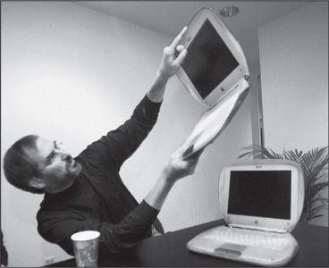
С iBook, 1999
Clams, Ice Cubes, and Sunflowers
Ракушки, ледяные кубики и подсолнухи
Ever since the introduction of the iMac in 1998, Jobs and Jony Ive had made beguiling design a signature of Apple’s computers. There was a consumer laptop that looked like a tangerine clam, and a professional desktop computer that suggested a Zen ice cube. Like bell-bottoms that turn up in the back of a closet, some of these models looked better at the time than they do in retrospect, and they show a love of design that was, on occasion, a bit too exuberant. But they set Apple apart and provided the publicity bursts it needed to survive in a Windows world.
| beguiling design | чарующий дизайн |
| a tangerine clam | мандариновая ракушка |
| bell-bottoms | расклёшенные джинсы |
| in retrospect | при ретроспективном взгляде |
| exuberant | буйная |
| publicity bursts | всплески публичности |
С появления iMac в 1998 году Джобс и Джони Айв сделали чарующий дизайн визитной карточкой компьютеров Apple. Был потребительский ноутбук, похожий на мандариновую ракушку, и профессиональный десктоп, напоминающий дзенский кубик льда. Как расклёшенные джинсы, всплывающие из глубины шкафа, некоторые из этих моделей тогда выглядели лучше, чем при ретроспективном взгляде, — в них видна любовь к дизайну, порой немного чересчур буйная. Но они выделяли Apple и давали всплески публичности, необходимые ей для выживания в мире Windows.
The Power Mac G4 Cube, released in 2000, was so alluring that one ended up on display in New York’s Museum of Modern Art. An eight-inch perfect cube the size of a Kleenex box, it was the pure expression of Jobs’s aesthetic. The sophistication came from minimalism. No buttons marred the surface. There was no CD tray, just a subtle slot. And as with the original Macintosh, there was no fan. Pure Zen. “When you see something that’s so thoughtful on the outside you say, ‘Oh, wow, it must be really thoughtful on the inside,’” he told Newsweek. “We make progress by eliminating things, by removing the superfluous.”
| alluring | пленительный |
| marred the surface | оскверняли поверхность |
| the superfluous | лишнее |
Выпущенный в 2000 году Power Mac G4 Cube был столь пленителен, что один экземпляр попал в экспозицию нью-йоркского Музея современного искусства. Идеальный восьмидюймовый куб размером с коробку салфеток — чистое выражение эстетики Джобса. Изысканность шла от минимализма. Ни одна кнопка не оскверняла поверхность. Никакого лотка для дисков — лишь тонкая щель. И, как у первого Macintosh, никакого вентилятора. Чистый дзен. «Увидев вещь, столь продуманную снаружи, говоришь: „Ого, внутри она, наверное, продумана не меньше“, — сказал он Newsweek. — Мы продвигаемся, устраняя вещи, убирая лишнее».
The G4 Cube was almost ostentatious in its lack of ostentation, and it was powerful. But it was not a success. It had been designed as a high-end desktop, but Jobs wanted to turn it, as he did almost every product, into something that could be mass-marketed to consumers. The Cube ended up not serving either market well. Workaday professionals weren’t seeking a jewel-like sculpture for their desks, and mass-market consumers were not eager to spend twice what they’d pay for a plain vanilla desktop. Jobs predicted that Apple would sell 200,000 Cubes per quarter. In its first quarter it sold half that. The next quarter it sold fewer than thirty thousand units. Jobs later admitted that he had overdesigned and overpriced the Cube, just as he had the NeXT computer. But gradually he was learning his lesson. In building devices like the iPod, he would control costs and make the trade-offs necessary to get them launched on time and on budget.
| ostentatious in its lack of ostentation | вызывающе лишён броскости |
| workaday professionals | будничные профессионалы |
| overdesigned and overpriced | перепроектировал и переоценил |
| trade-offs | компромиссы |
G4 Cube был почти вызывающе лишён вызывающей броскости — и был мощен. Но успеха не снискал. Его спроектировали как топовый десктоп, однако Джобс, как почти со всяким продуктом, хотел превратить его в массовый. В итоге Cube плохо служил обоим рынкам: будничным профессионалам не нужна была драгоценная скульптура на стол, а массовым покупателям — платить вдвое дороже обычного настольного. Джобс прогнозировал продажи в 200 000 Cube за квартал. В первый квартал продали половину, в следующий — меньше тридцати тысяч. Позже Джобс признал, что перепроектировал и переоценил Cube — как когда-то компьютер NeXT. Но урок усваивался: в устройствах вроде iPod он будет контролировать издержки и идти на необходимые компромиссы, чтобы запускаться в срок и в бюджет.
Partly because of the poor sales of the Cube, Apple produced disappointing revenue numbers in September 2000. That was just when the tech bubble was deflating and Apple’s education market was declining. The company’s stock price, which had been above $60, fell 50% in one day, and by early December it was below $15.
| deflating | сдувание |
Отчасти из-за слабых продаж Cube выручка Apple в сентябре 2000 года разочаровала. Это совпало со сдуванием технологического пузыря и спадом образовательного рынка Apple. Акции компании, стоившие выше 60 долларов, рухнули на 50% за один день, а к началу декабря были ниже 15.
None of this deterred Jobs from continuing to push for distinctive, even distracting, new design. When flat-screen displays became commercially viable, he decided it was time to replace the iMac, the translucent consumer desktop computer that looked as if it were from a Jetsons cartoon. Ive came up with a model that was somewhat conventional, with the guts of the computer attached to the back of the flat screen. Jobs didn’t like it. As he often did, both at Pixar and at Apple, he slammed on the brakes to rethink things. There was something about the design that lacked purity, he felt. “Why have this flat display if you’re going to glom all this stuff on its back?” he asked Ive. “We should let each element be true to itself.”
| deterred | отбил охоту |
| commercially viable | коммерчески доступны |
| slammed on the brakes | ударил по тормозам |
| glom all this stuff | налепить всё это барахло |
| be true to itself | быть верным себе |
Ничто из этого не отбило у Джобса охоту продвигать самобытный — даже отвлекающий — новый дизайн. Когда плоские экраны стали коммерчески доступны, он решил: пора заменить iMac, полупрозрачный потребительский десктоп, будто сошедший с кадров «Джетсонов». Айв предложил модель довольно обычную — с начинкой компьютера, прицепленной к заднику плоского экрана. Джобсу не понравилось. Как он часто делал — и в Pixar, и в Apple, — он ударил по тормозам, чтобы переосмыслить. В дизайне чего-то не хватало чистоты, чувствовал он. «Зачем плоский дисплей, если сзади на него налепить всё это барахло? — спросил он Айва. — Пусть каждый элемент будет верен себе».
Jobs went home early that day to mull over the problem, then called Ive to come by. They wandered into the garden, which Jobs’s wife had planted with a profusion of sunflowers. “Every year I do something wild with the garden, and that time it involved masses of sunflowers, with a sunflower house for the kids,” she recalled. “Jony and Steve were riffing on their design problem, then Jony asked, ‘What if the screen was separated from the base like a sunflower?’ He got excited and started sketching.” Ive liked his designs to suggest a narrative, and he realized that a sunflower shape would convey that the flat screen was so fluid and responsive that it could reach for the sun.
| mull over | обмозговать |
| a profusion of sunflowers | буйство подсолнухов |
| riffing on | импровизировали на тему |
| sketching | рисовать |
| suggest a narrative | намекать на историю |
В тот день Джобс ушёл домой пораньше обмозговать проблему, потом позвал Айва. Они забрели в сад, который жена Джобса засадила буйством подсолнухов. «Каждый год я вытворяю с садом что-нибудь безумное — в тот раз это были массы подсолнухов и подсолнечный домик для детей, — вспоминала она. — Джони и Стив импровизировали на тему своей дизайн- проблемы, и вдруг Джони спросил: „А что если экран отделить от подставки, как подсолнух?“ Он загорелся и начал рисовать». Айв любил, когда дизайн намекает на историю, — и понял: форма подсолнуха передаст, что плоский экран так гибок и отзывчив, что тянется к солнцу.
In Ive’s new design, the Mac’s screen was attached to a movable chrome neck, so that it looked not only like a sunflower but also like a cheeky Luxo lamp. Indeed it evoked the playful personality of Luxo Jr. in the first short film that John Lasseter had made at Pixar. Apple took out many patents for the design, most crediting Ive, but on one of them, for “a computer system having a movable assembly attached to a flat panel display,” Jobs listed himself as the primary inventor.
| a movable chrome neck | подвижная хромированная шея |
| cheeky | дерзкий |
| evoked | воскрешал |
В новом дизайне Айва экран Mac крепился на подвижную хромированную шею — компьютер выглядел не только подсолнухом, но и дерзкой лампой Luxo. Он и правда воскрешал игривый характер Лампочки-младшего из первого короткометражного фильма Джона Лассетера в Pixar. Apple запатентовала дизайн многими патентами, в основном на имя Айва, но в одном — на «компьютерную систему с подвижным узлом, крепящимся к плоскому дисплею» — Джобс указал себя основным изобретателем.
In hindsight, some of Apple’s Macintosh designs may seem a bit too cute. But other computer makers were at the other extreme. It was an industry that you’d expect to be innovative, but instead it was dominated by cheaply designed generic boxes. After a few ill-conceived stabs at painting on blue colors and trying new shapes, companies such as Dell, Compaq, and HP commoditized computers by outsourcing manufacturing and competing on price. With its spunky designs and its pathbreaking applications like iTunes and iMovie, Apple was about the only place innovating.
| in hindsight | оглядываясь назад |
| generic boxes | безликие коробки |
| ill-conceived stabs | нелепые попытки |
| commoditized computers | превратили компьютеры в биржевой товар |
| spunky designs | дерзкие дизайны |
| pathbreaking applications | прокладывавшие путь приложения |
Оглядываясь назад, некоторые дизайны Macintosh можно счесть слишком милыми. Но другие производители ушли в другую крайность. От индустрии ждали инноваций — а в ней доминировали дёшево спроектированные безликие коробки. После нескольких нелепых попыток покрасить всё в синий и попробовать новые формы компании вроде Dell, Compaq и HP превратили компьютеры в биржевой товар — аутсорсинг производства и конкуренция ценой. С дерзкими дизайнами и прокладывавшими путь приложениями вроде iTunes и iMovie Apple была едва ли не единственным местом, где изобретали.
Intel Inside
Intel Inside
Apple’s innovations were more than skin-deep. Since 1994 it had been using a microprocessor, called the PowerPC, that was made by a partnership of IBM and Motorola. For a few years it was faster than Intel’s chips, an advantage that Apple touted in humorous commercials. By the time of Jobs’s return, however, Motorola had fallen behind in producing new versions of the chip. This provoked a fight between Jobs and Motorola’s CEO Chris Galvin. When Jobs decided to stop licensing the Macintosh operating system to clone makers, right after his return to Apple in 1997, he suggested to Galvin that he might consider making an exception for Motorola’s clone, the StarMax Mac, but only if Motorola sped up development of new PowerPC chips for laptops. The call got heated. Jobs offered his opinion that Motorola chips sucked. Galvin, who also had a temper, pushed back. Jobs hung up on him. The Motorola StarMax was canceled, and Jobs secretly began planning to move Apple off the Motorola-IBM PowerPC chip and to adopt, instead, Intel’s. This would not be a simple task. It was akin to writing a new operating system.
| more than skin-deep | глубже поверхности |
| touted | обыгрывала |
| hung up on him | бросил трубку |
| akin to | сродни |
Инновации Apple были глубже поверхности. С 1994 года она использовала микропроцессор PowerPC, выпускавшийся партнёрством IBM и Motorola. Несколько лет он был быстрее чипов Intel — преимущество, которое Apple обыгрывала в шуточных роликах. К возвращению Джобса, однако, Motorola отстала с новыми версиями чипа. Это привело к стычке Джобса с CEO Motorola Крисом Гэлвином. Решив сразу после возвращения в 1997 году прекратить лицензирование Mac OS клоновщикам, Джобс намекнул Гэлвину: для клона Motorola StarMax можно сделать исключение — но только если Motorola ускорит разработку новых чипов PowerPC для ноутбуков. Разговор накалился. Джобс высказал мнение, что чипы Motorola — отстой. Гэлвин, тоже вспыльчивый, огрызнулся. Джобс бросил трубку. Motorola StarMax отменили, и Джобс тайно начал планировать перевод Apple с чипа Motorola-IBM PowerPC на Intel. Задача была непростая — сродни написанию новой операционной системы.
Jobs did not cede any real power to his board, but he did use its meetings to kick around ideas and think through strategies in confidence, while he stood at a whiteboard and led freewheeling discussions. For eighteen months the directors discussed whether to move to an Intel architecture. “We debated it, we asked a lot of questions, and finally we all decided it needed to be done,” board member Art Levinson recalled.
| cede any real power | уступать реальную власть |
| kick around ideas | обкатывать идеи |
| freewheeling discussions | свободные дискуссии |
Реальной власти совету Джобс не уступал, но его заседания использовал, чтобы доверительно обкатывать идеи и продумывать стратегии, — стоял у доски и вёл свободные дискуссии. Восемнадцать месяцев директора обсуждали переход на архитектуру Intel. «Мы спорили, задавали много вопросов и наконец все решили: это нужно сделать», — вспоминал член совета Арт Левинсон.
Paul Otellini, who was then president and later became CEO of Intel, began huddling with Jobs. They had gotten to know each other when Jobs was struggling to keep NeXT alive and, as Otellini later put it, “his arrogance had been temporarily tempered.” Otellini has a calm and wry take on people, and he was amused rather than put off when he discovered, upon dealing with Jobs at Apple in the early 2000s, “that his juices were going again, and he wasn’t nearly as humble anymore.” Intel had deals with other computer makers, and Jobs wanted a better price than they had. “We had to find creative ways to bridge the numbers,” said Otellini. Most of the negotiating was done, as Jobs preferred, on long walks, sometimes on the trails up to the radio telescope known as the Dish above the Stanford campus. Jobs would start the walk by telling a story and explaining how he saw the history of computers evolving. By the end he would be haggling over price.
| huddling with | сближался с |
| tempered | поумерилось |
| wry | ироничный |
| his juices were going again | его соки снова бурлят |
| bridge the numbers | сводить цифры |
| haggling over price | торговался о цене |
Пол Отеллини, тогда президент, а позже CEO Intel, начал с Джобсом сближаться. Они познакомились, когда Джобс отчаянно поддерживал жизнь в NeXT и, как позже выразился Отеллини, «его высокомерие временно поумерилось». Отеллини смотрит на людей спокойно и с иронией — и был скорее позабавлен, чем оттолкнут, обнаружив при работе с Джобсом в начале 2000-х, «что его соки снова бурлят и смирения в нём почти не осталось». У Intel были сделки с другими производителями, и Джобс хотел цену получше. «Пришлось творчески сводить цифры», — говорил Отеллини. Большая часть переговоров, как любил Джобс, шла на долгих прогулках — порой по тропам к радиотелескопу «Тарелка» над кампусом Стэнфорда. Джобс начинал прогулку с истории — как он видит эволюцию компьютеров, — а к концу торговался о цене.
“Intel had a reputation for being a tough partner, coming out of the days when it was run by Andy Grove and Craig Barrett,” Otellini said. “I wanted to show that Intel was a company you could work with.” So a crack team from Intel worked with Apple, and they were able to beat the conversion deadline by six months. Jobs invited Otellini to Apple’s Top 100 management retreat, where he donned one of the famous Intel lab coats that looked like a bunny suit and gave Jobs a big hug. At the public announcement in 2005, the usually reserved Otellini repeated the act. “Apple and Intel, together at last,” flashed on the big screen.
| a crack team | ударная команда |
| beat the conversion deadline | опередили срок перехода |
| donned | облачился |
| a bunny suit | костюм кролика |
«За Intel тянулась репутация жёсткого партнёра — со времён Энди Гроува и Крейга Барретта, — говорил Отеллини. — Я хотел показать, что с Intel можно работать». Ударная команда Intel работала с Apple и опередила срок перехода на шесть месяцев. Джобс пригласил Отеллини на ретрит менеджмента Apple «Топ-100», где тот облачился в знаменитый лабораторный халат Intel, похожий на костюм кролика, и крепко обнял Джобса. На публичном анонсе в 2005 году обычно сдержанный Отеллини повторил номер. «Apple и Intel — наконец вместе», — вспыхнуло на большом экране.
Bill Gates was amazed. Designing crazy-colored cases did not impress him, but a secret program to switch the CPU in a computer, completed seamlessly and on time, was a feat he truly admired. “If you’d said, ‘Okay, we’re going to change our microprocessor chip, and we’re not going to lose a beat,’ that sounds impossible,” he told me years later, when I asked him about Jobs’s accomplishments. “They basically did that.”
| not going to lose a beat | не сбиться ни на такт |
Билл Гейтс был поражён. Дизайн корпусов безумных цветов его не впечатлял, а вот тайная программа смены процессора, завершённая бесшовно и в срок, — подвиг, которым он искренне восхищался. «Скажи кто: „Мы поменяем микропроцессор и не собьёмся ни на такт“ — это звучит невозможно, — говорил он мне годы спустя, когда я расспрашивал его о достижениях Джобса. — А они, по сути, сделали именно это».
Options
Опционы
Among Jobs’s quirks was his attitude toward money. When he returned to Apple in 1997, he portrayed himself as a person working for $1 a year, doing it for the benefit of the company rather than himself. Nevertheless he embraced the idea of option megagrants—granting huge bundles of options to buy Apple stock at a preset price—that were not subject to the usual good compensation practices of board committee reviews and performance criteria.
| quirks | причуды |
| megagrants | мегагранты |
| a preset price | заранее установленная цена |
| performance criteria | критерии результативности |
Среди причуд Джобса было и его отношение к деньгам. Вернувшись в Apple в 1997 году, он изображал человека, работающего за доллар в год, — ради компании, а не себя. Тем не менее идею опционных мегагрантов — огромных пакетов опционов на покупку акций Apple по заранее установленной цене — он принял с радостью, без обычной доброй практики компенсаций: ревью комитета совета и критериев результативности.
When he dropped the “interim” in his h1 and officially became CEO, he was offered (in addition to the airplane) a megagrant by Ed Woolard and the board at the beginning of 2000; defying the image he cultivated of not being interested in money, he had stunned Woolard by asking for even more options than the board had proposed. But soon after he got them, it turned out that it was for naught. Apple stock cratered in September 2000—due to disappointing sales of the Cube plus the bursting of the Internet bubble—which made the options worthless.
| h1 | титул (в источнике — опечатка OCR, «title») |
Когда он убрал «временный» из своего титула и официально стал CEO, Эд Вулард и совет в начале 2000 года предложили ему (вдобавок к самолёту) мегагрант; вопреки культивируемому образу равнодушного к деньгам, он ошеломил Вуларда, попросив опционов ещё больше, чем предлагал совет. Но вскоре после получения выяснилось: всё впустую. В сентябре 2000 года акции Apple рухнули — из-за разочаровывающих продаж Cube и лопнувшего интернет-пузыря, — и опционы обесценились.
Making matters worse was a June 2001 cover story in Fortune about overcompensated CEOs, “The Great CEO Pay Heist.” A mug of Jobs, smiling smugly, filled the cover. Even though his options were underwater at the time, the technical method of valuing them when granted (known as a Black-Scholes valuation) set their worth at $872 million. Fortune proclaimed it “by far” the largest compensation package ever granted a CEO. It was the worst of all worlds: Jobs had almost no money that he could put in his pocket for his four years of hard and successful turnaround work at Apple, yet he had become the poster child of greedy CEOs, making him look hypocritical and undermining his self-image. He wrote a scathing letter to the editor, declaring that his options actually “are worth zero” and offering to sell them to Fortune for half of the supposed $872 million the magazine had reported.
| smiling smugly | с самодовольной улыбкой |
| underwater | «под водой» (ниже цены) |
| the poster child of | хрестоматийный пример |
| hypocritical | лицемерный |
| a scathing letter | язвительное письмо |
Хуже стала июньская обложка Fortune 2001 года — материал о переоплаченных CEO «Великое ограбление зарплат CEO». Лицо Джобса с самодовольной улыбкой заполнило обложку. Пусть его опционы тогда были «под водой», технический метод оценки при выдаче (так называемая оценка Блэка–Шоулза) определял их стоимость в 872 миллиона долларов. Fortune провозгласила это «с огромным отрывом» крупнейшим компенсационным пакетом в истории CEO. Худший из миров: за четыре года тяжёлой и успешной работы по развороту Apple Джобс почти ничего не мог положить в карман — и при этом стал хрестоматийным примером жадного CEO, выглядел лицемером, что подрывало его представление о себе. Он написал редактору язвительное письмо: опционы его на деле «стоят ноль», и он готов продать их Fortune за половину заявленных 872 миллионов.
In the meantime Jobs wanted the board to give him another big grant of options, since his old ones seemed worthless. He insisted, both to the board and probably to himself, that it was more about getting proper recognition than getting rich. “It wasn’t so much about the money,” he later said in a deposition in an SEC lawsuit over the options. “Everybody likes to be recognized by his peers. . . . I felt that the board wasn’t really doing the same with me.” He felt that the board should have come to him offering a new grant, without his having to suggest it. “I thought I was doing a pretty good job. It would have made me feel better at the time.”
| a deposition | дача показаний |
| recognized by his peers | признание коллег |
Тем временем Джобс хотел от совета новый большой пакет опционов — старый казался бесполезным. Он настаивал — и совету, и, вероятно, самому себе, — что дело скорее в признании, чем в деньгах. «Деньги были не главным, — говорил он позже на даче показаний по иску SEC об опционах. — Каждому приятно признание коллег… Мне казалось, что со мной совет так не поступает». Он считал, что совет должен был сам прийти с новым грантом, без его подсказки. «Я думал, что работаю довольно хорошо. Это подняло бы мне тогда настроение».
His handpicked board in fact doted on him. So they decided to give him another huge grant in August 2001, when the stock price was just under $18. The problem was that he worried about his image, especially after the Fortune article. He did not want to accept the new grant unless the board canceled his old options at the same time. But to do so would have adverse accounting implications, because it would be effectively repricing the old options. That would require taking a charge against current earnings. The only way to avoid this “variable accounting” problem was to cancel his old options at least six months after his new options were granted. In addition, Jobs started haggling with the board over how quickly the new options would vest.
| doted on him | обожал его |
| adverse accounting implications | невыгодные бухгалтерские последствия |
| repricing | переоценка |
| vest | наделение (опционами) |
Подобранный им совет его в самом деле обожал — и решил выдать ещё один огромный грант в августе 2001 года, когда акции стоили чуть меньше 18 долларов. Проблема: Джобс тревожился за свой имидж, особенно после статьи Fortune. Он не хотел принимать новый грант, если совет одновременно не аннулирует старые опционы. Но это имело бы невыгодные бухгалтерские последствия — по сути, переоценку старых опционов со списанием против текущей прибыли. Избежать этой проблемы «переменного учёта» можно было, лишь аннулировав старые опционы минимум через шесть месяцев после выдачи новых. Вдобавок Джобс начал торговаться с советом о скорости наделения новых опционов.
It was not until mid-December 2001 that Jobs finally agreed to take the new options and, braving the optics, wait six months before his old ones were canceled. But by then the stock price (adjusting for a split) had gone up $3, to about $21. If the strike price of the new options was set at that new level, each would have thus been $3 less valuable. So Apple’s legal counsel, Nancy Heinen, looked over the recent stock prices and helped to choose an October date, when the stock was $18.30. She also approved a set of minutes that purported to show that the board had approved the grant on that date. The backdating was potentially worth $20 million to Jobs.
| braving the optics | невзирая на репутационные риски |
| the strike price | цена исполнения |
| minutes | протокол |
| purported to show | будто бы свидетельствующий |
| the backdating | бэкдейтинг (подделка даты) |
Лишь в середине декабря 2001 года Джобс наконец согласился взять новые опционы и — невзирая на репутационные риски — подождать шесть месяцев до аннулирования старых. Но к тому моменту акции (с поправкой на сплит) подорожали на 3 доллара — примерно до 21. Установи цену исполнения новых опционов на этом уровне, каждый стал бы на 3 доллара дешевле. Поэтому юрист Apple Нэнси Хейнен изучила недавние цены акций и помогла выбрать октябрьскую дату, когда акции стоили 18,30. Она же утвердила протокол, будто бы свидетельствующий, что совет одобрил грант в ту дату. Бэкдейтинг потенциально стоил Джобсу 20 миллионов.
Once again Jobs would end up suffering bad publicity without making a penny. Apple’s stock price kept dropping, and by March 2003 even the new options were so low that Jobs traded in all of them for an outright grant of $75 million worth of shares, which amounted to about $8.3 million for each year he had worked since coming back in 1997 through the end of the vesting in 2006.
| traded in | обменял |
| an outright grant | прямой пакет |
| the vesting | наделение |
Джобс снова получил плохую прессу, не заработав ни цента. Акции Apple продолжали падать, и к марту 2003 года даже новые опционы стоили так мало, что Джобс обменял их все на прямой пакет акций на 75 миллионов долларов — примерно по 8,3 миллиона за каждый год работы с возвращения в 1997-м до конца наделения в 2006-м.
None of this would have mattered much if the Wall Street Journal had not run a powerful series in 2006 about backdated stock options. Apple wasn’t mentioned, but its board appointed a committee of three members—Al Gore, Eric Schmidt of Google, and Jerry York, formerly of IBM and Chrysler—to investigate its own practices. “We decided at the outset that if Steve was at fault we would let the chips fall where they may,” Gore recalled. The committee uncovered some irregularities with Jobs’s grants and those of other top officers, and it immediately turned the findings over to the SEC. Jobs was aware of the backdating, the report said, but he ended up not benefiting financially. (A board committee at Disney also found that similar backdating had occurred at Pixar when Jobs was in charge.)
| backdated stock options | бэкдейтинг опционов |
| let the chips fall where they may | пусть фишки лягут как лягут |
| irregularities | нарушения |
Всё это осталось бы в тени, не опубликуй Wall Street Journal в 2006 году мощную серию о бэкдейтинге опционов. Apple там не упоминалась, но её совет назначил комитет из трёх членов — Эл Гор, Эрик Шмидт из Google и Джерри Йорк, бывший из IBM и Chrysler, — расследовать собственную практику. «С самого начала мы решили: если виноват Стив — пусть фишки лягут как лягут», — вспоминал Гор. Комитет вскрыл нарушения с грантами Джобса и других топ-менеджеров и немедленно передал находки в SEC. Джобс, говорилось в отчёте, знал о бэкдейтинге, но финансовой выгоды не получил. (Комитет совета Disney также выяснил, что похожий бэкдейтинг был в Pixar, когда ею руководил Джобс.)
The laws governing such backdating practices were murky, especially since no one at Apple ended up benefiting from the dubiously dated grants. The SEC took eight months to do its own investigation, and in April 2007 it announced that it would not bring action against Apple “based in part on its swift, extensive, and extraordinary cooperation in the Commission’s investigation [and its] prompt self-reporting.” Although the SEC found that Jobs had been aware of the backdating, it cleared him of any misconduct because he “was unaware of the accounting implications.”
| murky | туманный |
| cleared him of any misconduct | оправдал его |
| the accounting implications | бухгалтерские последствия |
Законы о бэкдейтинге были туманны — тем более что никто в Apple в итоге не выгадал от сомнительно датированных грантов. SEC восемь месяцев вела собственное расследование и в апреле 2007 года объявила, что не будет возбуждать дело против Apple, — «отчасти благодаря её быстрому, обширному и исключительному сотрудничеству с расследованием Комиссии и незамедлительному самодоносу». Хотя SEC установила, что Джобс знал о бэкдейтинге, его оправдали: он «не знал о бухгалтерских последствиях».
The SEC did file complaints against Apple’s former chief financial officer Fred Anderson, who was on the board, and general counsel Nancy Heinen. Anderson, a retired Air Force captain with a square jaw and deep integrity, had been a wise and calming influence at Apple, where he was known for his ability to control Jobs’s tantrums. He was cited by the SEC only for “negligence” regarding the paperwork for one set of the grants (not the ones that went to Jobs), and the SEC allowed him to continue to serve on corporate boards. Nevertheless he ended up resigning from the Apple board.
| a square jaw | квадратная челюсть |
| negligence | халатность |
Иски SEC подала против бывшего финансового директора Apple Фреда Андерсона, входившего в совет, и главного юрисконсульта Нэнси Хейнен. Андерсон, отставной капитан ВВС с квадратной челюстью и глубокой порядочностью, был в Apple мудрым успокаивающим влиянием — он славился умением гасить истерики Джобса. SEC вменила ему лишь «халатность» в оформлении документов по одному пакету грантов (не тому, что достался Джобсу) и позволила оставаться в корпоративных советах. Тем не менее из совета Apple он в итоге ушёл.
Anderson thought he had been made a scapegoat. When he settled with the SEC, his lawyer issued a statement that cast some of the blame on Jobs. It said that Anderson had “cautioned Mr. Jobs that the executive team grant would have to be priced on the date of the actual board agreement or there could be an accounting charge,” and that Jobs replied “that the board had given its prior approval.”
| a scapegoat | козёл отпущения |
| cast some of the blame on | возложил часть вины на |
Андерсон считал, что из него сделали козла отпущения. При урегулировании с SEC его адвокат выпустил заявление, возложив часть вины на Джобса: Андерсон «предупреждал мистера Джобса, что грант руководящей команды должен быть оценён на дату фактического решения совета, иначе возможна бухгалтерская проводка», а Джобс ответил, что «совет дал своё предварительное одобрение».
Heinen, who initially fought the charges against her, ended up settling and paying a $2.2 million fine, without admitting or denying any wrongdoing. Likewise the company itself settled a shareholders’ lawsuit by agreeing to pay $14 million in damages.
| settling | урегулировала |
| damages | компенсация |
Хейнен, поначалу оспаривавшая обвинения, в итоге урегулировала дело, заплатив штраф 2,2 миллиона долларов, — не признав и не отрицая вины. Сама компания тоже уладила иск акционеров, согласившись выплатить 14 миллионов компенсации.
“Rarely have so many avoidable problems been created by one man’s obsession with his own image,” Joe Nocera wrote in the New York Times. “Then again, this is Steve Jobs we’re talking about.” Contemptuous of rules and regulations, he created a climate that made it hard for someone like Heinen to buck his wishes. At times, great creativity occurred. But people around him could pay a price. On compensation issues in particular, the difficulty of defying his whims drove some good people to make some bad mistakes.
| contemptuous of rules | презирая правила |
| buck his wishes | перечить его пожеланиям |
| his whims | его капризы |
«Редко когда одержимость одного человека собственным имиджем порождала столько предотвратимых проблем, — писал Джо Носера в New York Times. — Впрочем, речь же о Стиве Джобсе». Презирая правила и нормы, он создал климат, в котором перечить его пожеланиям было трудно — как Хейнен. Порой случалось великое творчество. Но люди рядом могли платить цену. Особенно в вопросах компенсаций трудность противостоять его капризам толкнула хороших людей на плохие ошибки.
The compensation issue in some ways echoed Jobs’s parking quirk. He refused such trappings as having a “Reserved for CEO” spot, but he assumed for himself the right to park in the handicapped spaces. He wanted to be seen (both by himself and by others) as someone willing to work for $1 a year, but he also wanted to have huge stock grants bestowed upon him. Jangling inside him were the contradictions of a counterculture rebel turned business entrepreneur, someone who wanted to believe that he had turned on and tuned in without having sold out and cashed in.
| trappings | мишура, атрибуты |
| bestowed upon him | изливали на него |
| jangling inside him | бряцали внутри него |
| sold out and cashed in | продавшись и обналичившись |
Компенсационная история в чём-то вторила парковочной причуде Джобса. Он отвергал мишуру вроде таблички «Зарезервировано для CEO», но присваивал себе право парковаться на местах для инвалидов. Он хотел выглядеть (и в своих глазах, и в чужих) человеком, готовым работать за доллар в год, — и при этом желал, чтобы на него изливали огромные пакеты акций. Внутри него бряцали противоречия бунтаря контркультуры, ставшего бизнес- предпринимателем, — человека, желавшего верить, что он включился и настроился, не продавшись и не обналичившись.
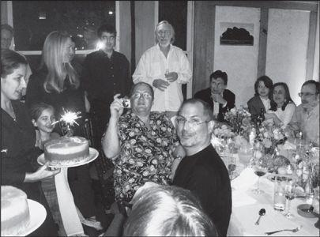
В пятьдесят (в центре), с Ив и Лорин (за тортом), Эдди Кью (у окна), Джоном Лассетером (с камерой) и Ли Клоу (с бородой)
Cancer
Рак
Jobs would later speculate that his cancer was caused by the grueling year that he spent, starting in 1997, running both Apple and Pixar. As he drove back and forth, he had developed kidney stones and other ailments, and he would come home so exhausted that he could barely speak. “That’s probably when this cancer started growing, because my immune system was pretty weak at that time,” he said.
| the grueling year | изматывающий год |
| kidney stones | камни в почках |
| ailments | хвори, недуги |
| my immune system | мой иммунитет |
Позже Джобс предполагал, что его рак вызван тем изматывающим годом, который он, начиная с 1997-го, провёл, управляя сразу Apple и Pixar. Мотаясь туда-сюда, он заработал камни в почках и прочие хвори, а домой приходил настолько измотанным, что едва мог говорить. «Вероятно, рак начал расти именно тогда — иммунитет у меня был довольно слабый», — говорил он.
There is no evidence that exhaustion or a weak immune system causes cancer. However, his kidney problems did indirectly lead to the detection of his cancer. In October 2003 he happened to run into the urologist who had treated him, and she asked him to get a CAT scan of his kidneys and ureter. It had been five years since his last scan. The new scan revealed nothing wrong with his kidneys, but it did show a shadow on his pancreas, so she asked him to schedule a pancreatic study. He didn’t. As usual, he was good at willfully ignoring inputs that he did not want to process. But she persisted. “Steve, this is really important,” she said a few days later. “You need to do this.”
| a urologist | уролог |
| a CAT scan | компьютерная томография (КТ) |
| a shadow on his pancreas | тень на поджелудочной |
| she persisted | она настаивала |
Доказательств, что усталость или слабый иммунитет вызывают рак, нет. Однако проблемы с почками косвенно привели к обнаружению опухоли. В октябре 2003 года он случайно встретил лечившего его уролога, и та попросила сделать КТ почек и мочеточника — с последнего сканирования прошло пять лет. С почками всё оказалось в порядке, но на поджелудочной обнаружилась тень, и врач попросила записаться на исследование поджелудочной. Он не записался. Как обычно, он мастерски игнорировал вводные, которые не хотел обрабатывать. Но она настаивала: «Стив, это по-настоящему важно. Нужно это сделать», — сказала она через несколько дней.
Her tone of voice was urgent enough that he complied. He went in early one morning, and after studying the scan, the doctors met with him to deliver the bad news that it was a tumor. One of them even suggested that he should make sure his affairs were in order, a polite way of saying that he might have only months to live. That evening they performed a biopsy by sticking an endoscope down his throat and into his intestines so they could put a needle into his pancreas and get a few cells from the tumor. Powell remembers her husband’s doctors tearing up with joy. It turned out to be an islet cell or pancreatic neuroendocrine tumor, which is rare but slower growing and thus more likely to be treated successfully. He was lucky that it was detected so early—as the by-product of a routine kidney screening—and thus could be surgically removed before it had definitely spread.
| complied | подчинился |
| his affairs were in order | привести дела в порядок |
| a biopsy | биопсия |
| tearing up with joy | прослезились от радости |
| islet cell | островковая клетка; islet cell tumor — опухоль островковых клеток поджелудочной железы |
| surgically removed | удалена хирургически |
Тон её был достаточно настойчив, и он подчинился. Пришёл рано утром, и, изучив снимок, врачи сообщили плохую новость: опухоль. Один даже предложил привести дела в порядок — вежливый способ сказать, что жить осталось, возможно, месяцы. Вечером сделали биопсию: эндоскоп через горло в кишечник, игла — в поджелудочную, несколько клеток из опухоли. Пауэлл помнит, как врачи мужа прослезились от радости. Оказалось, островковая клеточная — нейроэндокринная опухоль поджелудочной: редкая, медленно растущая, а значит, с большими шансами на успешное лечение. Ему повезло, что её нашли так рано — побочным продуктом рядовой проверки почек — и можно было удалить хирургически, пока она не распространилась наверняка.
One of his first calls was to Larry Brilliant, whom he first met at the ashram in India. “Do you still believe in God?” Jobs asked him. Brilliant said that he did, and they discussed the many paths to God that had been taught by the Hindu guru Neem Karoli Baba. Then Brilliant asked Jobs what was wrong. “I have cancer,” Jobs replied.
| the ashram | ашрам |
| a guru | гуру |
Одним из первых он позвонил Ларри Бриллианту, с которым познакомился в ашраме в Индии. «Ты всё ещё веришь в Бога?» — спросил Джобс. Бриллиант сказал, что верит, и они обсудили множество путей к Богу, которым учил индуистский гуру Ним Кароли Баба. Потом Бриллиант спросил, что стряслось. «У меня рак», — ответил Джобс.
Art Levinson, who was on Apple’s board, was chairing the board meeting of his own company, Genentech, when his cell phone rang and Jobs’s name appeared on the screen. As soon as there was a break, Levinson called him back and heard the news of the tumor. He had a background in cancer biology, and his firm made cancer treatment drugs, so he became an advisor. So did Andy Grove of Intel, who had fought and beaten prostate cancer. Jobs called him that Sunday, and he drove right over to Jobs’s house and stayed for two hours.
| chairing the board meeting | вёл заседание совета |
| prostate cancer | рак простаты |
Арт Левинсон, входивший в совет Apple, вёл заседание совета собственной компании Genentech, когда зазвонил мобильный и на экране высветилось имя Джобса. Дождавшись перерыва, Левинсон перезвонил и узнал новость об опухоли. Он разбирался в биологии рака, а его фирма делала лекарства против рака, — так он стал советником. Как и Энди Гроув из Intel, победивший рак простаты. Джобс позвонил ему в то воскресенье, и Гроув сразу приехал к нему домой на два часа.
To the horror of his friends and wife, Jobs decided not to have surgery to remove the tumor, which was the only accepted medical approach. “I really didn’t want them to open up my body, so I tried to see if a few other things would work,” he told me years later with a hint of regret. Specifically, he kept to a strict vegan diet, with large quantities of fresh carrot and fruit juices. To that regimen he added acupuncture, a variety of herbal remedies, and occasionally a few other treatments he found on the Internet or by consulting people around the country, including a psychic. For a while he was under the sway of a doctor who operated a natural healing clinic in southern California that stressed the use of organic herbs, juice fasts, frequent bowel cleansings, hydrotherapy, and the expression of all negative feelings.
| with a hint of regret | с ноткой сожаления |
| a strict vegan diet | строгая веганская диета |
| acupuncture | иглоукалывание |
| herbal remedies | травяные средства |
| a psychic | экстрасенс |
| under the sway of | под влиянием |
К ужасу друзей и жены, Джобс решил не делать операцию по удалению опухоли — единственный признанный медициной подход. «Мне очень не хотелось, чтобы мое тело вскрывали, и я попробовал, не сработает ли кое-что другое», — говорил он мне годы спустя с ноткой сожаления. А именно: строгая веганская диета с большим количеством свежих морковных и фруктовых соков. К ней он добавил иглоукалывание, разнообразные травяные средства и время от времени другие процедуры, найденные в Интернете или по советам людей со всей страны — включая экстрасенса. Какое-то время он был под влиянием врача из клиники естественного исцеления в Южной Калифорнии, где упор делали на органические травы, соковые голодания, частые промывания кишечника, гидротерапию и выражение всех негативных чувств.
“The big thing was that he really was not ready to open his body,” Powell recalled. “It’s hard to push someone to do that.” She did try, however. “The body exists to serve the spirit,” she argued. His friends repeatedly urged him to have surgery and chemotherapy. “Steve talked to me when he was trying to cure himself by eating horseshit and horseshit roots, and I told him he was crazy,” Grove recalled. Levinson said that he “pleaded every day” with Jobs and found it “enormously frustrating that I just couldn’t connect with him.” The fights almost ruined their friendship. “That’s not how cancer works,” Levinson insisted when Jobs discussed his diet treatments. “You cannot solve this without surgery and blasting it with toxic chemicals.” Even the diet doctor Dean Ornish, a pioneer in alternative and nutritional methods of treating diseases, took a long walk with Jobs and insisted that sometimes traditional methods were the right option. “You really need surgery,” Ornish told him.
| eating horseshit and horseshit roots | поедание лошадиного дерьма и кореньев |
| pleaded every day | умолял каждый день |
| blasting it with toxic chemicals | обстрел токсичной химией |
«Главное было в том, что он действительно не был готов вскрывать тело, — вспоминала Пауэлл. — Трудно толкать человека на такое». Но она пыталась: «Тело существует, чтобы служить духу», — доказывала она. Друзья снова и снова убеждали его согласиться на операцию и химиотерапию. «Стив советовался со мной, пытаясь вылечиться поеданием лошадиного дерьма и кореньев из него, — и я сказал ему, что он спятил», — вспоминал Гроув. Левинсон говорил, что «умолял его каждый день» и что «невероятно бесило, что я просто не мог до него достучаться». Ссоры чуть не разрушили их дружбу. «Рак так не работает, — настаивал Левинсон, когда Джобс обсуждал свои диеты. — Без операции и обстрела токсичной химией это не решить». Даже диетолог Дин Орниш, пионер альтернативных и нутрициологических методов лечения, долго гулял с Джобсом и настаивал, что иногда традиционные методы — правильный выбор. «Вам действительно нужна операция», — говорил Орниш.
Jobs’s obstinacy lasted for nine months after his October 2003 diagnosis. Part of it was the product of the dark side of his reality distortion field. “I think Steve has such a strong desire for the world to be a certain way that he wills it to be that way,” Levinson speculated. “Sometimes it doesn’t work. Reality is unforgiving.” The flip side of his wondrous ability to focus was his fearsome willingness to filter out things he did not wish to deal with. This led to many of his great breakthroughs, but it could also backfire. “He has that ability to ignore stuff he doesn’t want to confront,” Powell explained. “It’s just the way he’s wired.” Whether it involved personal topics relating to his family and marriage, or professional issues relating to engineering or business challenges, or health and cancer issues, Jobs sometimes simply didn’t engage.
| Jobs’s obstinacy | его упрямство |
| his reality distortion field | его поле искажения реальности |
| wills it to be that way | усилием воли делает таким |
| the flip side | оборотная сторона |
| filter out | отфильтровывать |
| the way he’s wired | так он устроен |
Упрямство Джобса длилось девять месяцев после диагноза октября 2003 года. Отчасти оно было порождением тёмной стороны его поля искажения реальности. «Думаю, желание Стива видеть мир определённым настолько сильно, что он усилием воли делает его таким, — предполагал Левинсон. — Иногда не выходит. Реальность неумолима». Оборотной стороной его чудесной способности фокусироваться была пугающая готовность отфильтровывать то, с чем он не желал иметь дела. Это вело ко многим великим прорывам, но могло и аукнуться. «У него есть способность игнорировать то, с чем он не хочет сталкиваться, — объясняла Пауэлл. — Просто он так устроен». Касалось ли это личных тем семьи и брака, профессиональных проблем инженерии и бизнеса или здоровья и рака, Джобс порой просто не включался.
In the past he had been rewarded for what his wife called his “magical thinking”—his assumption that he could will things to be as he wanted. But cancer does not work that way. Powell enlisted everyone close to him, including his sister Mona Simpson, to try to bring him around. In July 2004 a CAT scan showed that the tumor had grown and possibly spread. It forced him to face reality.
| magical thinking | его магическое мышление |
| enlisted everyone | подключила всех |
| bring him around | переубедить его |
В прошлом за то, что жена называла его «магическим мышлением», — за уверенность, что усилием воли можно сделать всё как хочется, — он был вознаграждён. Но рак так не работает. Пауэлл подключила всех близких, включая его сестру Мону Симпсон, чтобы его переубедить. В июле 2004 года КТ показала: опухоль выросла и, возможно, распространилась. Это заставило его взглянуть в лицо реальности.
Jobs underwent surgery on Saturday, July 31, 2004, at Stanford University Medical Center. He did not have a full “Whipple procedure,” which removes a large part of the stomach and intestine as well as the pancreas. The doctors considered it, but decided instead on a less radical approach, a modified Whipple that removed only part of the pancreas.
| underwent surgery | перенёс операцию |
| a Whipple procedure | операция Уиппла |
| a less radical approach | менее радикальный путь |
Джобса прооперировали в субботу 31 июля 2004 года в медицинском центре Стэнфордского университета. Полную «операцию Уиппла» — с удалением большой части желудка и кишечника вместе с поджелудочной — делать не стали. Врачи её рассматривали, но выбрали менее радикальный путь: модифицированный Уиппл с удалением лишь части поджелудочной.
Jobs sent employees an email the next day, using his PowerBook hooked up to an AirPort Express in his hospital room, announcing his surgery. He assured them that the type of pancreatic cancer he had “represents about 1% of the total cases of pancreatic cancer diagnosed each year, and can be cured by surgical removal if diagnosed in time (mine was).” He said he would not require chemotherapy or radiation treatment, and he planned to return to work in September. “While I’m out, I’ve asked Tim Cook to be responsible for Apple’s day to day operations, so we shouldn’t miss a beat. I’m sure I’ll be calling some of you way too much in August, and I look forward to seeing you in September.”
| hooked up to | подключённый к |
| we shouldn’t miss a beat | не собьёмся ни на такт |
На следующий день Джобс отправил сотрудникам письмо — с PowerBook, подключённого к AirPort Express в больничной палате, — объявив об операции. Он заверил их: этот тип рака поджелудочной «составляет около 1% всех ежегодно диагностируемых случаев рака поджелудочной и при своевременной диагностике излечивается хирургическим удалением (у меня — своевременная)». Химиотерапия и облучение, сказал он, не потребуются, а вернуться к работе он планирует в сентябре. «Пока меня нет, я попросил Тима Кука отвечать за повседневные операции Apple, так что мы не собьёмся ни на такт. Уверен, в августе я буду звонить кое-кому из вас слишком часто, и жду встречи в сентябре».
One side effect of the operation would become a problem for Jobs because of his obsessive diets and the weird routines of purging and fasting that he had practiced since he was a teenager. Because the pancreas provides the enzymes that allow the stomach to digest food and absorb nutrients, removing part of the organ makes it hard to get enough protein. Patients are advised to make sure that they eat frequent meals and maintain a nutritious diet, with a wide variety of meat and fish proteins as well as full-fat milk products. Jobs had never done this, and he never would.
| the enzymes | ферменты |
| digest food | переваривать пищу |
| absorb nutrients | усваивать питательные вещества |
Один побочный эффект операции стал для Джобса проблемой из-за его навязчивых диет и странных практик очищения и голодания, которым он следовал с подросткового возраста. Поджелудочная даёт ферменты, позволяющие желудку переваривать пищу и усваивать питательные вещества; с удалением части органа добирать белок становится трудно. Пациентам советуют есть часто и питательно, с разнообразными мясными и рыбными белками и жирными молочными продуктами. Джобс так не делал никогда — и не стал.
He stayed in the hospital for two weeks and then struggled to regain his strength. “I remember coming back and sitting in that rocking chair,” he told me, pointing to one in his living room. “I didn’t have the energy to walk. It took me a week before I could walk around the block. I pushed myself to walk to the gardens a few blocks away, then further, and within six months I had my energy almost back.”
| a rocking chair | кресло-качалка |
| around the block | вокруг квартала |
| I pushed myself | я заставлял себя |
Он провёл в больнице две недели, а потом с трудом восстанавливал силы. «Помню, как вернулся и сидел вот в этом кресле-качалке, — говорил он мне, указывая на кресло в гостиной. — Ходить не было сил. Неделя ушла, прежде чем я смог обойти квартал. Я заставлял себя доходить до садов в нескольких кварталах, потом дальше, и за шесть месяцев силы почти вернулись».
Unfortunately the cancer had spread. During the operation the doctors found three liver metastases. Had they operated nine months earlier, they might have caught it before it spread, though they would never know for sure. Jobs began chemotherapy treatments, which further complicated his eating challenges.
| liver metastases | метастазы в печени |
| chemotherapy | химиотерапия |
К несчастью, рак распространился. Во время операции врачи нашли три метастаза в печени. Оперируй они на девять месяцев раньше, возможно, удалось бы перехватить его до распространения, — хотя наверняка этого никто не узнает. Джобс начал химиотерапию, что ещё сильнее осложнило его проблемы с едой.
The Stanford Commencement
Стэнфордская напутственная речь
Jobs kept his continuing battle with the cancer secret—he told everyone that he had been “cured”—just as he had kept quiet about his diagnosis in October 2003. Such secrecy was not surprising; it was part of his nature. What was more surprising was his decision to speak very personally and publicly about his cancer diagnosis. Although he rarely gave speeches other than his staged product demonstrations, he accepted Stanford’s invitation to give its June 2005 commencement address. He was in a reflective mood after his health scare and turning fifty.
| cured | вылечился |
| a commencement address | напутственная речь |
| a reflective mood | рефлексивный настрой |
Продолжающуюся битву с раком Джобс держал в тайне — всем он говорил, что «вылечился», — как молчал и о диагнозе в октябре 2003-го. Скрытность не удивляла: она была частью его натуры. Удивительнее было решение очень лично и публично рассказать о своём раке. Он редко выступал с речами — разве что со сценическими демонстрациями продуктов, — но принял приглашение Стэнфорда произнести напутственную речь выпускникам в июне 2005 года. После страха за здоровье и пятидесятилетия он был настроен рефлексивно.
For help with the speech, he called the brilliant scriptwriter Aaron Sorkin (A Few Good Men, The West Wing). Jobs sent him some thoughts. “That was in February, and I heard nothing, so I ping him again in April, and he says, ‘Oh, yeah,’ and I send him a few more thoughts,” Jobs recounted. “I finally get him on the phone, and he keeps saying ‘Yeah,’ but finally it’s the beginning of June, and he never sent me anything.”
| a scriptwriter | сценарист |
| I ping him again | снова пишу ему |
Помочь с речью он позвал блестящего сценариста Аарона Соркина («Несколько хороших парней», «Западное крыло»). Джобс послал ему несколько мыслей. «Дело было в феврале, в ответ — тишина; в апреле я снова пишу, он отвечает: „А, да“, — я шлю ещё мыслей, — пересказывал Джобс. — Наконец дозваниваюсь до него, он всё твердит „да“, но наступает начало июня, а он так ничего и не прислал».
Jobs got panicky. He had always written his own presentations, but he had never done a commencement address. One night he sat down and wrote the speech himself, with no help other than bouncing ideas off his wife. As a result, it turned out to be a very intimate and simple talk, with the unadorned and personal feel of a perfect Steve Jobs product.
| got panicky | запаниковал |
| bouncing ideas off his wife | обкатывая мысли на жене |
| unadorned | неприкрашенный |
Джобс запаниковал. Презентации он всегда писал сам, но напутственной речи у него не было никогда. Однажды вечером он сел и написал её сам — без чьей-либо помощи, лишь обкатывая мысли на жене. В итоге вышла очень интимная и простая речь — с той же неприкрашенной личной нотой, что у идеального продукта Стива Джобса.
Alex Haley once said that the best way to begin a speech is “Let me tell you a story.” Nobody is eager for a lecture, but everybody loves a story. And that was the approach Jobs chose. “Today, I want to tell you three stories from my life,” he began. “That’s it. No big deal. Just three stories.”
Алекс Хейли говорил: лучший способ начать речь — «Позвольте рассказать вам историю». Лекций никто не ждёт, а истории любят все. Джобс выбрал именно этот подход. «Сегодня я хочу рассказать вам три истории из моей жизни, — начал он. — И всё. Ничего особенного. Просто три истории».
The first was about dropping out of Reed College. “I could stop taking the required classes that didn’t interest me, and begin dropping in on the ones that looked far more interesting.” The second was about how getting fired from Apple turned out to be good for him. “The heaviness of being successful was replaced by the lightness of being a beginner again, less sure about everything.” The students were unusually attentive, despite a plane circling overhead with a banner that exhorted “recycle all e-waste,” and it was his third tale that enthralled them. It was about being diagnosed with cancer and the awareness it brought:
| dropping out | бросив (колледж) |
| dropping in on | заглядывать на |
| exhorted | призывал |
| enthralled them | покорила их |
Первая — о том, как он бросил Рид-колледж. «Я мог не ходить на обязательные занятия, которые мне были неинтересны, и заглядывать на те, что казались куда увлекательнее». Вторая — о том, как увольнение из Apple обернулось ему во благо. «Тяжесть успеха сменилась лёгкостью начинающего, который снова ни в чём не уверен». Студенты слушали необычайно внимательно, несмотря на круживший над головой самолёт с баннером «сдавайте электрохлам в переработку», а покорила их третья история — о диагнозе рака и осознании, которое он принёс:
Remembering that I’ll be dead soon is the most important tool I’ve ever encountered to help me make the big choices in life. Because almost everything—all external expectations, all pride, all fear of embarrassment or failure—these things just fall away in the face of death, leaving only what is truly important. Remembering that you are going to die is the best way I know to avoid the trap of thinking you have something to lose. You are already naked. There is no reason not to follow your heart.
| fall away in the face of death | опадает перед лицом смерти |
| You are already naked | Ты уже гол |
Память о том, что скоро умрёшь, — важнейший из встреченных мной инструментов для больших жизненных решений. Потому что почти всё — все внешние ожидания, вся гордость, весь страх смущения или провала — просто опадает перед лицом смерти, оставляя лишь то, что по-настоящему важно. Память о том, что ты умрёшь, — лучший известный мне способ избежать ловушки мысли, что тебе есть что терять. Ты уже гол. Нет причин не следовать за своим сердцем.
The artful minimalism of the speech gave it simplicity, purity, and charm. Search where you will, from anthologies to YouTube, and you won’t find a better commencement address. Others may have been more important, such as George Marshall’s at Harvard in 1947 announcing a plan to rebuild Europe, but none has had more grace.
| the artful minimalism | искусный минимализм |
| anthologies | антологии |
| grace | изящество |
Искусный минимализм речи дал ей простоту, чистоту и очарование. Ищите где угодно — от антологий до YouTube, — лучшей напутственной речи вы не найдёте. Бывали и более важные — например, речь Джорджа Маршалла в Гарварде в 1947 году с планом восстановления Европы, — но изящнее не было ни одной.
A Lion at Fifty
Лев в пятьдесят
For his thirtieth and fortieth birthdays, Jobs had celebrated with the stars of Silicon Valley and other assorted celebrities. But when he turned fifty in 2005, after coming back from his cancer surgery, the surprise party that his wife arranged featured mainly his closest friends and professional colleagues. It was at the comfortable San Francisco home of some friends, and the great chef Alice Waters prepared salmon from Scotland along with couscous and a variety of garden-raised vegetables. “It was beautifully warm and intimate, with everyone and the kids all able to sit in one room,” Waters recalled. The entertainment was comedy improvisation done by the cast of Whose Line Is It Anyway? Jobs’s close friend Mike Slade was there, along with colleagues from Apple and Pixar, including Lasseter, Cook, Schiller, Clow, Rubinstein, and Tevanian.
| assorted celebrities | прочие знаменитости |
| couscous | кускус |
| improvisation | импровизация |
Тридцатилетие и сорокалетие Джобс отмечал со звёздами Кремниевой долины и прочими знаменитостями. Но к пятидесяти, в 2005 году, после операции, жена устроила сюрприз-вечеринку в основном для ближайших друзей и коллег. Дело было в уютном сан-францисском доме друзей, а великий шеф Алиса Уотерс приготовила шотландского лосося с кускусом и овощами с грядки. «Было красиво, тепло и интимно — все вместе с детьми уместились в одной комнате», — вспоминала Уотерс. Развлекали комедийной импровизацией актёры шоу Whose Line Is It Anyway? Был близкий друг Джобса Майк Слейд и коллеги из Apple и Pixar — Лассетер, Кук, Шиллер, Клоу, Рубинштейн и Теванян.
Cook had done a good job running the company during Jobs’s absence. He kept Apple’s temperamental actors performing well, and he avoided stepping into the limelight. Jobs liked strong personalities, up to a point, but he had never truly empowered a deputy or shared the stage. It was hard to be his understudy. You were damned if you shone, and damned if you didn’t. Cook had managed to navigate those shoals. He was calm and decisive when in command, but he didn’t seek any notice or acclaim for himself. “Some people resent the fact that Steve gets credit for everything, but I’ve never given a rat’s ass about that,” said Cook. “Frankly speaking, I’d prefer my name never be in the paper.”
| stepping into the limelight | лезть в лучи славы |
| an understudy | дублёр |
| damned if you shone | засияешь — проклянут |
| navigate those shoals | пройти между рифами |
| never given a rat’s ass | плевать было всегда |
Кук хорошо руководил компанией в отсутствие Джобса. Темпераментные актёры Apple играли ровно, а сам он в лучи славы не лез. Джобс любил сильные личности — до известной черты, — но по-настоящему никого не наделял властью зама и сценой не делился. Быть его дублёром было трудно: засияешь — проклянут, не засияешь — проклянут. Кук сумел пройти между рифами. Командуя, он был спокоен и решителен, но ни славы, ни признания для себя не искал. «Кое-кого бесит, что все лавры достаются Стиву, но мне на это было плевать всегда, — говорил Кук. — Честно говоря, я бы предпочёл, чтобы моё имя никогда не попадало в газеты».
When Jobs returned from his medical leave, Cook resumed his role as the person who kept the moving parts at Apple tightly meshed and remained unfazed by Jobs’s tantrums. “What I learned about Steve was that people mistook some of his comments as ranting or negativism, but it was really just the way he showed passion. So that’s how I processed it, and I never took issues personally.” In many ways he was Jobs’s mirror image: unflappable, steady in his moods, and (as the thesaurus in the NeXT would have noted) saturnine rather than mercurial. “I’m a good negotiator, but he’s probably better than me because he’s a cool customer,” Jobs later said. After adding a bit more praise, he quietly added a reservation, one that was serious but rarely spoken: “But Tim’s not a product person, per se.”
| tightly meshed | плотно сцепленный |
| unfazed by | не смущаясь |
| ranting | брюзжание |
| unflappable | невозмутимый |
| saturnine rather than mercurial | сатурнический, а не меркуриальный |
| a cool customer | хладнокровный игрок |
| per se | как таковой |
По возвращении Джобса из отпуска по болезни Кук снова стал тем, кто держит движущиеся части Apple плотно сцепленными, не смущаясь истериками Джобса. «Я понял о Стиве: люди принимали его замечания за брюзжание или негатив, а на деле это была его манера проявлять страсть. Так я это и воспринимал — и никогда не принимал на свой счёт». Во многом он был зеркальным отражением Джобса: невозмутимый, ровный в настроении и (как отметил бы тезаурус в NeXT) скорее сатурнический, чем меркуриальный. «Я хороший переговорщик, но он, наверное, лучше меня — хладнокровный игрок», — говорил позже Джобс. Добавив ещё похвал, он тихо оговорился — серьёзно, но такое произносилось редко: «Но Тим не продуктовый человек, как таковой».
In the fall of 2005, after returning from his medical leave, Jobs tapped Cook to become Apple’s chief operating officer. They were flying together to Japan. Jobs didn’t really ask Cook; he simply turned to him and said, “I’ve decided to make you COO.”
| tapped Cook | назначил Кука |
Осенью 2005 года, вернувшись из отпуска по болезни, Джобс назначил Кука операционным директором Apple. Они вместе летели в Японию. Джобс не столько спросил Кука, сколько просто повернулся к нему: «Я решил сделать тебя COO».
Around that time, Jobs’s old friends Jon Rubinstein and Avie Tevanian, the hardware and software lieutenants who had been recruited during the 1997 restoration, decided to leave. In Tevanian’s case, he had made a lot of money and was ready to quit working. “Avie is a brilliant guy and a nice guy, much more grounded than Ruby and doesn’t carry the big ego,” said Jobs. “It was a huge loss for us when Avie left. He’s a one-of-a-kind person—a genius.”
| the 1997 restoration | реставрация 1997 года |
| grounded | приземлённый |
Примерно тогда же старые друзья Джобса — Джон Рубинштейн и Ави Теванян, лейтенанты по железу и софту, рекрутированные при реставрации 1997 года, — решили уйти. Теванян заработал много денег и был готов бросить работу. «Ави — блестящий и славный человек, куда более приземлённый, чем Руби, и без большого эго, — говорил Джобс. — Его уход стал для нас огромной потерей. Он человек единственный в своём роде — гений».
Rubinstein’s case was a little more contentious. He was upset by Cook’s ascendency and frazzled after working for nine years under Jobs. Their shouting matches became more frequent. There was also a substantive issue: Rubinstein was repeatedly clashing with Jony Ive, who used to work for him and now reported directly to Jobs. Ive was always pushing the envelope with designs that dazzled but were difficult to engineer. It was Rubinstein’s job to get the hardware built in a practical way, so he often balked. He was by nature cautious. “In the end, Ruby’s from HP,” said Jobs. “And he never delved deep, he wasn’t aggressive.”
| contentious | острее, спорнее |
| Cook’s ascendency | взлёт Кука |
| frazzled | измотанный |
| pushing the envelope | раздвигал границы |
| balked | упирался |
| delved deep | копал вглубь |
Случай Рубинштейна был острее. Его расстраивал взлёт Кука, и девять лет работы под Джобсом измотали его. Перебранки участились. Была и сущностная проблема: Рубинштейн постоянно сцеплялся с Джони Айвом, который раньше работал под ним, а теперь подчинялся напрямую Джобсу. Айв вечно раздвигал границы дизайном, который ослеплял, но трудно давался инженерам. Задача Рубинштейна — строить железо практично, и он часто упирался. По натуре он был осторожен. «В конце концов, Руби из HP, — говорил Джобс. — Вглубь он никогда не копал, агрессивным не был».
There was, for example, the case of the screws that held the handles on the Power Mac G4. Ive decided that they should have a certain polish and shape. But Rubinstein thought that would be “astronomically” costly and delay the project for weeks, so he vetoed the idea. His job was to deliver products, which meant making trade-offs. Ive viewed that approach as inimical to innovation, so he would go both above him to Jobs and also around him to the midlevel engineers. “Ruby would say, ‘You can’t do this, it will delay,’ and I would say, ‘I think we can,’” Ive recalled. “And I would know, because I had worked behind his back with the product teams.” In this and other cases, Jobs came down on Ive’s side.
| “astronomically” costly | астрономически дорого |
| vetoed the idea | наложил вето |
| trade-offs | компромиссы |
| inimical to innovation | враждебный инновациям |
| behind his back | за его спиной |
| came down on Ive’s side | встал на сторону Айва |
Был, например, случай с винтами, державшими ручки Power Mac G4. Айв решил, что у них должна быть особая полировка и форма. Рубинштейн счёл это «астрономически» дорогим и задерживающим проект на недели — и наложил вето. Его работа — выдавать продукты, а значит, идти на компромиссы. Айв считал такой подход враждебным инновациям и шёл как поверх его головы — к Джобсу, так и в обход — к инженерам среднего звена. «Руби говорил: „Нельзя, это задержит“, — а я отвечал: „Думаю, можно“, — вспоминал Айв. — И я знал это, потому что работал за его спиной с продуктовыми командами». В этом и других случаях Джобс вставал на сторону Айва.
At times Ive and Rubinstein got into arguments that almost led to blows. Finally Ive told Jobs, “It’s him or me.” Jobs chose Ive. By that point Rubinstein was ready to leave. He and his wife had bought property in Mexico, and he wanted time off to build a home there. He eventually went to work for Palm, which was trying to match Apple’s iPhone. Jobs was so furious that Palm was hiring some of his former employees that he complained to Bono, who was a cofounder of a private equity group, led by the former Apple CFO Fred Anderson, that had bought a controlling stake in Palm. Bono sent Jobs a note back saying, “You should chill out about this. This is like the Beatles ringing up because Herman and the Hermits have taken one of their road crew.” Jobs later admitted that he had overreacted. “The fact that they completely failed salves that wound,” he said.
| led to blows | доходило до рукоприкладства |
| a private equity group | частная инвестиционная группа |
| a controlling stake | контрольный пакет |
| chill out | остынь |
| salves that wound | залечивает эту рану |
Порой Айв и Рубинштейн доходили почти до рукоприкладства. Наконец Айв сказал Джобсу: «Либо он, либо я». Джобс выбрал Айва. К тому моменту Рубинштейн был готов уйти: с женой они купили землю в Мексике, и он хотел взять паузу и построить там дом. В итоге он ушёл в Palm, пытавшуюся догнать iPhone от Apple. Джобса так взбесил наём Palm его бывших сотрудников, что он пожаловался Боно — соучредителю частной инвестиционной группы во главе с бывшим финансовым директором Apple Фредом Андерсоном, купившей контрольный пакет Palm. Боно ответил запиской: «Остынь. Это как если бы Beatles позвонили, потому что Herman and the Hermits переманили одного из их роуди». Джобс позже признал, что перегнул палку: «То, что они полностью провалились, залечивает эту рану».
Jobs was able to build a new management team that was less contentious and a bit more subdued. Its main players, in addition to Cook and Ive, were Scott Forstall running iPhone software, Phil Schiller in charge of marketing, Bob Mansfield doing Mac hardware, Eddy Cue handling Internet services, and Peter Oppenheimer as the chief financial officer. Even though there was a surface sameness to his top team—all were middle-aged white males—there was a range of styles. Ive was emotional and expressive; Cook was as cool as steel. They all knew they were expected to be deferential to Jobs while also pushing back on his ideas and being willing to argue—a tricky balance to maintain, but each did it well. “I realized very early that if you didn’t voice your opinion, he would mow you down,” said Cook. “He takes contrary positions to create more discussion, because it may lead to a better result. So if you don’t feel comfortable disagreeing, then you’ll never survive.”
| subdued | сдержанный |
| deferential to | почтительный к |
| mow you down | сомнёт тебя |
| contrary positions | противоположные позиции |
Джобс сумел собрать новую команду менеджмента — менее конфликтную и чуть более сдержанную. Кроме Кука и Айва, главными игроками были Скотт Форстолл (софт iPhone), Фил Шиллер (маркетинг), Боб Мэнсфилд (железо Mac), Эдди Кью (интернет-сервисы) и Питер Оппенгеймер (финансовый директор). При внешней однородности топ-команды — все белые мужчины средних лет — стили разнились. Айв был эмоционален и экспрессивен; Кук холоден как сталь. Все знали: от них ждут почтительности к Джобсу — и одновременно сопротивления его идеям и готовности спорить. Баланс хитрый, но каждый удерживал его хорошо. «Я очень рано понял: не выскажешь мнение — он тебя сомнёт, — говорил Кук. — Он занимает противоположную позицию, чтобы разжечь дискуссию, ведь она может дать лучший результат. Если тебе некомфортно спорить — не выживешь».
The key venue for freewheeling discourse was the Monday morning executive team gathering, which started at 9 and went for three or four hours. The focus was always on the future: What should each product do next? What new things should be developed? Jobs used the meeting to enforce a sense of shared mission at Apple. This served to centralize control, which made the company seem as tightly integrated as a good Apple product, and prevented the struggles between divisions that plagued decentralized companies.
| freewheeling discourse | свободная дискуссия |
| a sense of shared mission | чувство общей миссии |
| plagued | мучившие |
| decentralized companies | децентрализованные компании |
Главной площадкой свободной дискуссии была понедельничная утренняя встреча руководящей команды — с девяти утра на три-четыре часа. Фокус всегда на будущем: что каждый продукт должен делать дальше? Что нового разрабатывать? Джобс использовал встречу для утверждения чувства общей миссии Apple. Это централизовало контроль, делало компанию столь же плотно интегрированной, как хороший продукт Apple, и предотвращало междоусобицы подразделений, мучившие децентрализованные компании.
Jobs also used the meetings to enforce focus. At Robert Friedland’s farm, his job had been to prune the apple trees so that they would stay strong, and that became a metaphor for his pruning at Apple. Instead of encouraging each group to let product lines proliferate based on marketing considerations, or permitting a thousand ideas to bloom, Jobs insisted that Apple focus on just two or three priorities at a time. “There is no one better at turning off the noise that is going on around him,” Cook said. “That allows him to focus on a few things and say no to many things. Few people are really good at that.”
| prune the apple trees | обрезка яблонь |
| proliferate | разрастаться |
| turning off the noise | выключать шум |
Джобс использовал встречи и для насаждения фокуса. На ферме Роберта Фридланда его работой была обрезка яблонь, чтобы те оставались сильными, — и это стало метафорой его обрезки в Apple. Вместо того чтобы поощрять разрастание продуктовых линий из маркетинговых соображений или позволять цвести тысяче идей, Джобс настаивал: Apple сосредоточивается на двух-трёх приоритетах одновременно. «Никто лучше него не умеет выключать шум вокруг, — говорил Кук. — Это позволяет ему сосредоточиться на немногом и сказать „нет“ многому. Мало кто на это по-настоящему способен».
In order to institutionalize the lessons that he and his team were learning, Jobs started an in-house center called Apple University. He hired Joel Podolny, who was dean of the Yale School of Management, to compile a series of case studies analyzing important decisions the company had made, including the switch to the Intel microprocessor and the decision to open the Apple Stores. Top executives spent time teaching the cases to new employees, so that the Apple style of decision making would be embedded in the culture.
| institutionalize the lessons | закрепить уроки |
| case studies | кейсы |
| embedded in the culture | встраивался в культуру |
Чтобы закрепить усваиваемые им и командой уроки, Джобс создал внутренний центр Apple University. Он нанял Джоэла Подольны, декана Йельской школы менеджмента, составить серию кейсов о важных решениях компании — включая переход на микропроцессоры Intel и открытие Apple Store. Топ-менеджеры преподавали кейсы новым сотрудникам, чтобы яблочный стиль принятия решений встраивался в культуру.
In ancient Rome, when a victorious general paraded through the streets, legend has it that he was sometimes trailed by a servant whose job it was to repeat to him, “Memento mori”: Remember you will die. A reminder of mortality would help the hero keep things in perspective, instill some humility. Jobs’s memento mori had been delivered by his doctors, but it did not instill humility. Instead he roared back after his recovery with even more passion. The illness reminded him that he had nothing to lose, so he should forge ahead full speed. “He came back on a mission,” said Cook. “Even though he was now running a large company, he kept making bold moves that I don’t think anybody else would have done.”
| Memento mori | помни, что умрёшь |
| instill some humility | привить смирение |
| forge ahead full speed | жать на полную |
| bold moves | дерзкие ходы |
В древнем Риме за триумфатором-полководцем, гласит легенда, порой шёл слуга, повторявший: «Memento mori» — помни, что умрёшь. Напоминание о смертности помогало герою сохранять перспективу и прививало смирение. Джобсу его memento mori доставили врачи — но смирения оно не привило. Вместо этого после выздоровления он ринулся вперёд с ещё большей страстью. Болезнь напомнила: терять нечего, так что жми на полную. «Он вернулся с миссией, — говорил Кук. — Даже управляя большой компанией, он продолжал делать дерзкие ходы, на которые, думаю, никто другой не решился бы».
For a while there was some evidence, or at least hope, that he had tempered his personal style, that facing cancer and turning fifty had caused him to be a bit less brutish when he was upset. “Right after he came back from his operation, he didn’t do the humiliation bit as much,” Tevanian recalled. “If he was displeased, he might scream and get hopping mad and use expletives, but he wouldn’t do it in a way that would totally destroy the person he was talking to. It was just his way to get the person to do a better job.” Tevanian reflected for a moment as he said this, then added a caveat: “Unless he thought someone was really bad and had to go, which happened every once in a while.”
| brutish | грубый |
| the humiliation bit | унижения |
| hopping mad | беситься |
| expletives | ругательства |
| a caveat | оговорка |
Какое-то время были признаки — или хотя бы надежда, — что он смягчил свой стиль, что рак и пятидесятилетие сделали его чуть менее грубым в гневе. «Сразу после операции он реже устраивал унижения, — вспоминал Теванян. — Если что-то не нравилось, он мог орать, беситься и ругаться, но не так, чтобы полностью уничтожить собеседника. Просто таким был его способ добиться от человека лучшей работы». Теванян задумался и добавил оговорку: «Если только не считал, что человек совсем плох и должен уйти, — это случалось время от времени».
Eventually, however, the rough edges returned. Because most of his colleagues were used to it by then and had learned to cope, what upset them most was when his ire turned on strangers. “Once we went to a Whole Foods market to get a smoothie,” Ive recalled. “And this older woman was making it, and he really got on her about how she was doing it. Then later, he sympathized. ‘She’s an older woman and doesn’t want to be doing this job.’ He didn’t connect the two. He was being a purist in both cases.”
| the rough edges returned | острые грани вернулись |
| his ire | его гнев |
| a smoothie | смузи |
| got on her | насел на неё |
| a purist | пурист |
Со временем, однако, острые грани вернулись. Коллеги к тому времени привыкли и научились справляться, так что больше всего их огорчало, когда его гнев обрушивался на посторонних. «Однажды мы зашли в Whole Foods за смузи, — вспоминал Айв. — Его готовила пожилая женщина, и он по-настоящему на неё насел из-за того, как она это делает. А потом посочувствовал: „Она уже в возрасте и не хочет заниматься этой работой“. Он не связал одно с другим. Он был пуристом в обоих случаях».
On a trip to London with Jobs, Ive had the thankless task of choosing the hotel. He picked the Hempel, a tranquil five-star boutique hotel with a sophisticated minimalism that he thought Jobs would love. But as soon as they checked in, he braced himself, and sure enough his phone rang a minute later. “I hate my room,” Jobs declared. “It’s a piece of shit, let’s go.” So Ive gathered his luggage and went to the front desk, where Jobs bluntly told the shocked clerk what he thought. Ive realized that most people, himself among them, tend not to be direct when they feel something is shoddy because they want to be liked, “which is actually a vain trait.” That was an overly kind explanation. In any case, it was not a trait Jobs had.
| a thankless task | неблагодарная задача |
| a boutique hotel | бутик-отель |
| braced himself | внутренне собрался |
| shoddy | халтурный |
| a vain trait | тщеславная черта |
В поездке в Лондон с Джобсом Айву выпала неблагодарная задача выбрать отель. Он остановился на Hempel — тихом пятизвёздочном бутик-отеле с утончённым минимализмом, который, он думал, Джобсу понравится. Но едва они заселились, Айв внутренне собрался — и точно, через минуту зазвонил телефон. «Ненавижу свой номер, — объявил Джобс. — Это кусок дерьма, уходим». Айв собрал чемоданы и пошёл к стойке, где Джобс без обиняков высказал ошарашенному портье всё, что думал. Айв осознал: большинство людей, включая его самого, не говорят прямо, когда чувствуют халтуру, потому что хотят нравиться, — «а это, по сути, тщеславная черта». То было слишком доброе объяснение. В любом случае Джобс этой чертой не обладал.
Because Ive was so instinctively nice, he puzzled over why Jobs, whom he deeply liked, behaved as he did. One evening, in a San Francisco bar, he leaned forward with an earnest intensity and tried to analyze it:
| an earnest intensity | серьёзная горячность |
Айв, по натуре человек добрый, недоумевал, почему Джобс, которого он глубоко любил, ведёт себя так. Однажды вечером в баре в Сан-Франциско он подался вперёд с серьёзной горячностью и попытался это проанализировать:
He’s a very, very sensitive guy. That’s one of the things that makes his antisocial behavior, his rudeness, so unconscionable. I can understand why people who are thick-skinned and unfeeling can be rude, but not sensitive people. I once asked him why he gets so mad about stuff. He said, “But I don’t stay mad.” He has this very childish ability to get really worked up about something, and it doesn’t stay with him at all. But there are other times, I think honestly, when he’s very frustrated, and his way to achieve catharsis is to hurt somebody. And I think he feels he has a liberty and a license to do that. The normal rules of social engagement, he feels, don’t apply to him. Because of how very sensitive he is, he knows exactly how to efficiently and effectively hurt someone. And he does do that.
| thick-skinned and unfeeling | толстокожие и бесчувственные |
| worked up | распаляться |
| catharsis | катарсис |
| a liberty and a license | право и дозволение |
Он очень, очень чувствительный человек. Поэтому его антисоциальное поведение, его грубость так бессовестны. Я понимаю грубость толстокожих и бесчувственных, но не чувствительных людей. Однажды я спросил, почему он так злится из-за всего. Он ответил: «Но я не остаюсь злым». У него есть эта очень детская способность сильно распаляться — и отпускать мгновенно. Но бывает, я честно считаю, когда он очень расстроен и достигает катарсиса, раня кого-то. И думаю, он чувствует, что у него есть на это право и дозволение. Обычные правила общения, он считает, на него не распространяются. Из-за своей невероятной чувствительности он точно знает, как ранить эффективно и без промаха. И он это делает.
Every now and then a wise colleague would pull Jobs aside to try to get him to settle down. Lee Clow was a master. “Steve, can I talk to you?” he would quietly say when Jobs had belittled someone publicly. He would go into Jobs’s office and explain how hard everyone was working. “When you humiliate them, it’s more debilitating than stimulating,” he said in one such session. Jobs would apologize and say he understood. But then he would lapse again. “It’s simply who I am,” he would say.
| belittled someone | унижал кого-то |
| humiliate | унижать |
| more debilitating than stimulating | скорее обессиливает, чем стимулирует |
| lapse again | срываться снова |
Время от времени кто-то из мудрых коллег отводил Джобса в сторону, чтобы утихомирить. Мастером был Ли Клоу. «Стив, можно поговорить?» — тихо спрашивал он, когда Джобс публично кого-то унижал. Он заходил в кабинет и объяснял, как все стараются. «Когда ты их унижаешь, это скорее обессиливает, чем стимулирует», — сказал он на одной такой встрече. Джобс извинялся, говорил, что понимает. А потом срывался снова. «Просто я такой», — говорил он.
One thing that did mellow was his attitude toward Bill Gates. Microsoft had kept its end of the bargain it made in 1997, when it agreed to continue developing great software for the Macintosh. Also, it was becoming less relevant as a competitor, having failed thus far to replicate Apple’s digital hub strategy. Gates and Jobs had very different approaches to products and innovation, but their rivalry had produced in each a surprising self-awareness.
| kept its end of the bargain | сдержала свою часть сделки |
| self-awareness | самоосознанность |
Смягчилось одно — его отношение к Биллу Гейтсу. Microsoft сдержала сделку 1997 года, согласившись и дальше делать отличный софт для Macintosh. К тому же она теряла значимость как конкурент, так и не сумев повторить стратегию цифрового хаба Apple. Гейтс и Джобс очень по-разному подходили к продуктам и инновациям, но их соперничество породило в каждом удивительную самоосознанность.
For their All Things Digital conference in May 2007, the Wall Street Journal columnists Walt Mossberg and Kara Swisher worked to get them together for a joint interview. Mossberg first invited Jobs, who didn’t go to many such conferences, and was surprised when he said he would do it if Gates would. On hearing that, Gates accepted as well.
| a joint interview | совместное интервью |
Ради конференции All Things Digital в мае 2007 года колумнисты Wall Street Journal Уолт Моссберг и Кара Свишер добивались их совместного интервью. Моссберг первым позвал Джобса, который на такие конференции почти не ездил, и удивился, когда тот согласился прийти, если придёт Гейтс. Услышав это, Гейтс тоже согласился.
Mossberg wanted the evening joint appearance to be a cordial discussion, not a debate, but that seemed less likely when Jobs unleashed a swipe at Microsoft during a solo interview earlier that day. Asked about the fact that Apple’s iTunes software for Windows computers was extremely popular, Jobs joked, “It’s like giving a glass of ice water to somebody in hell.”
| a cordial discussion | дружеская беседа |
| unleashed a swipe | проехался, отпустил колкость |
| a glass of ice water to somebody in hell | стакан ледяной воды кому-то в аду |
Моссберг хотел, чтобы вечернее совместное выступление стало дружеской беседой, а не дебатами, — но шансы таяли, когда Джобс днём, в сольном интервью, проехался по Microsoft. На вопрос о чрезвычайной популярности iTunes для Windows он пошутил: «Это как подать стакан ледяной воды кому-то в аду».
So when it was time for Gates and Jobs to meet in the green room before their joint session that evening, Mossberg was worried. Gates got there first, with his aide Larry Cohen, who had briefed him about Jobs’s remark earlier that day. When Jobs ambled in a few minutes later, he grabbed a bottle of water from the ice bucket and sat down. After a moment or two of silence, Gates said, “So I guess I’m the representative from hell.” He wasn’t smiling. Jobs paused, gave him one of his impish grins, and handed him the ice water. Gates relaxed, and the tension dissipated.
| the green room | гримёрка |
| briefed him | доложил ему |
| ambled in | вразвалку вошёл |
| impish grins | озорные ухмылки |
| the tension dissipated | напряжение рассеялось |
И вот когда Гейтсу и Джобсу предстояло встретиться вечером в гримёрке перед совместной сессией, Моссберг заволновался. Гейтс пришёл первым, с помощником Ларри Коэном, который уже доложил ему о дневной шутке Джобса. Через несколько минут вразвалку вошёл Джобс, вытащил из ведёрка со льдом бутылку воды и сел. После паузы Гейтс сказал: «Стало быть, я — представитель ада». Он не улыбался. Джобс помедлил, одарил его одной из своих озорных ухмылок и протянул ему ледяную воду. Гейтс расслабился, и напряжение рассеялось.
The result was a fascinating duet, in which each wunderkind of the digital age spoke warily, and then warmly, about the other. Most memorably they gave candid answers when the technology strategist Lise Buyer, who was in the audience, asked what each had learned from observing the other. “Well, I’d give a lot to have Steve’s taste,” Gates answered. There was a bit of nervous laughter; Jobs had famously said, ten years earlier, that his problem with Microsoft was that it had absolutely no taste. But Gates insisted he was serious. Jobs was a “natural in terms of intuitive taste.” He recalled how he and Jobs used to sit together reviewing the software that Microsoft was making for the Macintosh. “I’d see Steve make the decision based on a sense of people and product that, you know, is hard for me to explain. The way he does things is just different and I think it’s magical. And in that case, wow.”
| a wunderkind | вундеркинд |
| warily | настороженно |
| candid answers | откровенные ответы |
| intuitive taste | интуитивный вкус |
Вышел завораживающий дуэт, в котором два вундеркинда цифровой эпохи говорили друг о друге сперва настороженно, потом тепло. Самое памятное — откровенные ответы на вопрос технологического стратега Лиз Байер из зала: чему каждый научился, наблюдая за другим. «Что ж, я многое отдал бы за вкус Стива», — ответил Гейтс. Послышался нервный смешок: Джобс знаменито заявил десятью годами раньше, что его проблема с Microsoft — в полном отсутствии у неё вкуса. Но Гейтс настаивал, что серьёзен. Джобс — «прирождённый в интуитивном вкусе». Он вспомнил, как они сидели вдвоём, просматривая софт, который Microsoft делала для Macintosh. «Я видел, как Стив принимает решение, исходя из чувства людей и продукта, которое мне трудно объяснить. Его манера делать вещи просто другая, и, по-моему, она волшебна. И в том случае — вау».
Jobs stared at the floor. Later he told me that he was blown away by how honest and gracious Gates had just been. Jobs was equally honest, though not quite as gracious, when his turn came. He described the great divide between the Apple theology of building end-to-end integrated products and Microsoft’s openness to licensing its software to competing hardware makers. In the music market, the integrated approach, as manifested in his iTunes-iPod package, was proving to be the better, he noted, but Microsoft’s decoupled approach was faring better in the personal computer market. One question he raised in an offhand way was: Which approach might work better for mobile phones?
| blown away by | сражён |
| gracious | великодушный |
| theology | теология |
| decoupled approach | разъединённый подход |
| faring better | успешнее |
Джобс уставился в пол. Позже он сказал мне, что был сражён честностью и великодушием Гейтса. В свой черёд Джобс ответил столь же честно, хотя и не столь великодушно. Он описал великий раскол между теологией Apple — строить сквозные интегрированные продукты — и открытостью Microsoft, лицензирующей свой софт конкурирующим производителям железа. На музыкальном рынке интегрированный подход в виде связки iTunes-iPod, отметил он, побеждает, зато разъединённый подход Microsoft успешнее на рынке персональных компьютеров. И вскользь задал вопрос: какой подход лучше сработает на мобильных телефонах?
Then he went on to make an insightful point: This difference in design philosophy, he said, led him and Apple to be less good at collaborating with other companies. “Because Woz and I started the company based on doing the whole banana, we weren’t so good at partnering with people,” he said. “And I think if Apple could have had a little more of that in its DNA, it would have served it extremely well.”
| doing the whole banana | делать весь банан целиком |
| partnering with people | партнёрство с людьми |
Затем он сделал проницательное замечание: разница в философии дизайна, сказал он, сделала его и Apple менее умелыми в сотрудничестве с другими компаниями. «Мы с Возом основали компанию на принципе „делать весь банан целиком“, и партнёрства давались нам не очень, — сказал он. — И я думаю, будь этого в ДНК Apple чуть больше, ей это сослужило бы огромную службу».
An iPod That Makes Calls
iPod, который звонит
By 2005 iPod sales were skyrocketing. An astonishing twenty million were sold that year, quadruple the number of the year before. The product was becoming more important to the company’s bottom line, accounting for 45% of the revenue that year, and it was also burnishing the hipness of the company’s image in a way that drove sales of Macs.
| skyrocketing | взлетали до небес |
| quadruple | вчетверо |
| the bottom line | прибыль |
| burnishing the hipness | полировал модность |
К 2005 году продажи iPod взлетали до небес: за год продали поразительные двадцать миллионов — вчетверо больше, чем годом ранее. Продукт значил для прибыли компании всё больше, давая 45% выручки, и полировал модность её имиджа, подгоняя продажи Mac.
That is why Jobs was worried. “He was always obsessing about what could mess us up,” board member Art Levinson recalled. The conclusion he had come to: “The device that can eat our lunch is the cell phone.” As he explained to the board, the digital camera market was being decimated now that phones were equipped with cameras. The same could happen to the iPod, if phone manufacturers started to build music players into them. “Everyone carries a phone, so that could render the iPod unnecessary.”
| obsessing about what could mess us up | постоянно думал, что может нам навредить |
| eat our lunch | отобрать наш обед |
| decimated | уничтожался |
| render the iPod unnecessary | сделать iPod ненужным |
Поэтому Джобс тревожился. «Он постоянно думал, что может нам навредить», — вспоминал член совета Арт Левинсон. Вывод, к которому он пришёл: «Устройство, способное отобрать наш обед, — мобильный телефон». Он объяснял совету: рынок цифровых камер уничтожается телефонами с камерами. То же может случиться с iPod, если производители телефонов начнут встраивать в них плееры. «Телефон есть у каждого — iPod может стать ненужным».
His first strategy was to do something that he had admitted in front of Bill Gates was not in his DNA: to partner with another company. He began talking to Ed Zander, the new CEO of Motorola, about making a companion to Motorola’s popular RAZR, which was a cell phone and digital camera, that would have an iPod built in. Thus was born the ROKR. It ended up having neither the enticing minimalism of an iPod nor the convenient slimness of a RAZR. Ugly, difficult to load, and with an arbitrary hundred-song limit, it had all the hallmarks of a product that had been negotiated by a committee, which was counter to the way Jobs liked to work. Instead of hardware, software, and content all being controlled by one company, they were cobbled together by Motorola, Apple, and the wireless carrier Cingular. “You call this the phone of the future?” Wired scoffed on its November 2005 cover.
| a companion to | компаньон для |
| an arbitrary hundred-song limit | произвольный лимит в сто песен |
| the hallmarks of | приметы |
| negotiated by a committee | согласованного комитетом |
| cobbled together | сляпаны вместе |
| scoffed | глумилась |
Первой его стратегией было то, что, по собственному признанию перед Биллом Гейтсом, не входило в его ДНК: партнёрство с другой компанией. Он начал переговоры с Эдом Зандером, новым CEO Motorola, о компаньоне для популярной RAZR — телефона с камерой, — в который встроили бы iPod. Так родился ROKR. В итоге в нём не было ни заманчивого минимализма iPod, ни удобной тонкости RAZR. Уродливый, с трудоёмкой загрузкой и произвольным лимитом в сто песен, он нёс все приметы продукта, согласованного комитетом, — противный манере Джобса. Железо, софт и контент не контролировались одной компанией, а были сляпаны вместе Motorola, Apple и оператором Cingular. «И это вы называете телефоном будущего?» — глумилась Wired на ноябрьской обложке 2005 года.
Jobs was furious. “I’m sick of dealing with these stupid companies like Motorola,” he told Tony Fadell and others at one of the iPod product review meetings. “Let’s do it ourselves.” He had noticed something odd about the cell phones on the market: They all stank, just like portable music players used to. “We would sit around talking about how much we hated our phones,” he recalled. “They were way too complicated. They had features nobody could figure out, including the address book. It was just Byzantine.” George Riley, an outside lawyer for Apple, remembers sitting at meetings to go over legal issues, and Jobs would get bored, grab Riley’s mobile phone, and start pointing out all the ways it was “brain-dead.” So Jobs and his team became excited about the prospect of building a phone that they would want to use. “That’s the best motivator of all,” Jobs later said.
| stank | воняли |
| Byzantine | византийщина |
| brain-dead | безголовый |
| the best motivator | лучший мотиватор |
Джобс был в ярости. «Устал иметь дело с этими тупыми компаниями вроде Motorola, — сказал он Тони Фаделлу и другим на ревизии iPod. — Сделаем сами». Он заметил странное в телефонах на рынке: все они воняли — как когда-то портативные плееры. «Мы сидели и говорили, как ненавидим свои телефоны, — вспоминал он. — Они были чересчур сложны. В них были функции, в которых никто не мог разобраться, включая адресную книгу. Сплошная византийщина». Джордж Райли, внешний юрист Apple, вспоминал, как на совещаниях по юридическим вопросам Джобсу становилось скучно, он хватал телефон Райли и начинал перечислять, чем тот «безголов». Джобс с командой загорелись перспективой построить телефон, которым сами захотят пользоваться. «Это лучший из мотиваторов», — говорил он.
Another motivator was the potential market. More than 825 million mobile phones were sold in 2005, to everyone from grammar schoolers to grandmothers. Since most were junky, there was room for a premium and hip product, just as there had been in the portable music-player market. At first he gave the project to the Apple group that was making the AirPort wireless base station, on the theory that it was a wireless product. But he soon realized that it was basically a consumer device, like the iPod, so he reassigned it to Fadell and his teammates.
| junky | дрянной |
| a premium and hip product | премиальный и модный продукт |
Другим мотиватором был потенциальный рынок. В 2005 году продали более 825 миллионов мобильных телефонов — всем, от младшеклассников до бабушек. Большинство были дрянными, так что для премиального и модного продукта оставалось место — как когда-то на рынке плееров. Сначала Джобс отдал проект группе, делавшей беспроводную базовую станцию AirPort, — по логике, что это беспроводной продукт. Но скоро понял: по сути это потребительское устройство, как iPod, — и передал проект Фаделлу с командой.
Their initial approach was to modify the iPod. They tried to use the trackwheel as a way for a user to scroll through phone options and, without a keyboard, try to enter numbers. It was not a natural fit. “We were having a lot of problems using the wheel, especially in getting it to dial phone numbers,” Fadell recalled. “It was cumbersome.” It was fine for scrolling through an address book, but horrible at inputting anything. The team kept trying to convince themselves that users would mainly be calling people who were already in their address book, but they knew that it wouldn’t really work.
| the trackwheel | колёсико |
| cumbersome | громоздкий |
| inputting anything | ввод чего-либо |
Начали с модификации iPod: попробовали использовать колёсико для прокрутки телефонных опций и — без клавиатуры — набора номеров. Естественной стыковки не вышло. «С колесом было много проблем, особенно с набором номеров, — вспоминал Фаделл. — Это было громоздко». Листать адресную книгу — годится, а вводить что-либо — ужасно. Команда уговаривала себя, что пользователи будут звонить в основном тем, кто уже в адресной книге, — но знали, что по-настоящему это не сработает.
At that time there was a second project under way at Apple: a secret effort to build a tablet computer. In 2005 these narratives intersected, and the ideas for the tablet flowed into the planning for the phone. In other words, the idea for the iPad actually came before, and helped to shape, the birth of the iPhone.
| a tablet computer | планшетный компьютер |
| these narratives intersected | эти линии пересеклись |
| flowed into | влились в |
В то же время в Apple шёл второй проект: тайная работа над планшетным компьютером. В 2005 году эти линии пересеклись, и идеи планшета влились в планирование телефона. Иными словами, идея iPad на самом деле родилась раньше — и помогла сформировать рождение iPhone.
Multi-touch
Мультитач
One of the engineers developing a tablet PC at Microsoft was married to a friend of Laurene and Steve Jobs, and for his fiftieth birthday he wanted to have a dinner party that included them along with Bill and Melinda Gates. Jobs went, a bit reluctantly. “Steve was actually quite friendly to me at the dinner,” Gates recalled, but he “wasn’t particularly friendly” to the birthday guy.
| reluctantly | с неохотой |
Один из инженеров, разрабатывавших планшетный ПК в Microsoft, был женат на подруге Лорин и Стива Джобса и на пятидесятилетие захотел устроить ужин с их участием — и Биллом с Мелиндой Гейтс. Джобс пришёл, хоть и с неохотой. «За ужином Стив был со мной вполне дружелюбен, — вспоминал Гейтс, — но с именинником — не особенно».
Gates was annoyed that the guy kept revealing information about the tablet PC he had developed for Microsoft. “He’s our employee and he’s revealing our intellectual property,” Gates recounted. Jobs was also annoyed, and it had just the consequence that Gates feared. As Jobs recalled:
| revealing our intellectual property | выдаёт нашу интеллектуальную собственность |
Гейтса злило, что тот без умолку раскрывает детали планшетного ПК, разработанного им для Microsoft. «Он наш сотрудник и выдаёт нашу интеллектуальную собственность», — пересказывал Гейтс. Джобс тоже злился — и последствия вышли ровно те, которых Гейтс опасался. Джобс вспоминал:
This guy badgered me about how Microsoft was going to completely change the world with this tablet PC software and eliminate all notebook computers, and Apple ought to license his Microsoft software. But he was doing the device all wrong. It had a stylus. As soon as you have a stylus, you’re dead. This dinner was like the tenth time he talked to me about it, and I was so sick of it that I came home and said, “Fuck this, let’s show him what a tablet can really be.”
| badgered me | долдонил мне |
| a stylus | стилус |
| you’re dead | ты труп |
| Fuck this | К чёрту |
Этот парень долдонил мне, что Microsoft со своим софтом для планшетов полностью изменит мир и уничтожит все ноутбуки, и что Apple стоит лицензировать его софт. Но устройство он делал совершенно не так. У него был стилус. Стилус появился — ты труп. За ужином он говорил мне об этом уже в десятый раз, и меня так достало, что, вернувшись домой, я сказал: «К чёрту. Покажем ему, каким может быть настоящий планшет».
Jobs went into the office the next day, gathered his team, and said, “I want to make a tablet, and it can’t have a keyboard or a stylus.” Users would be able to type by touching the screen with their fingers. That meant the screen needed to have a feature that became known as multi-touch, the ability to process multiple inputs at the same time. “So could you guys come up with a multi-touch, touch-sensitive display for me?” he asked. It took them about six months, but they came up with a crude but workable prototype.
| multi-touch | мультитач |
| a crude but workable prototype | грубый, но рабочий прототип |
На следующий день Джобс пришёл в офис, собрал команду и сказал: «Хочу сделать планшет — без клавиатуры и стилуса». Печатать пользователи будут прикосновениями пальцев к экрану. Значит, экрану нужна функция, позже названная мультитач, — обработка нескольких касаний одновременно. «Так что сделайте мне мультитач-дисплей, чувствительный к касанию?» — попросил он. Ушло около шести месяцев, но грубый рабочий прототип появился.
Jony Ive had a different memory of how multi-touch was developed. He said his design team had already been working on a multi-touch input that was developed for the trackpads of Apple’s MacBook Pro, and they were experimenting with ways to transfer that capability to a computer screen. They used a projector to show on a wall what it would look like. “This is going to change everything,” Ive told his team. But he was careful not to show it to Jobs right away, especially since his people were working on it in their spare time and he didn’t want to quash their enthusiasm. “Because Steve is so quick to give an opinion, I don’t show him stuff in front of other people,” Ive recalled. “He might say, ‘This is shit,’ and snuff the idea. I feel that ideas are very fragile, so you have to be tender when they are in development. I realized that if he pissed on this, it would be so sad, because I knew it was so important.”
| trackpads | трекпады |
| a projector | проектор |
| quash their enthusiasm | гасить их энтузиазм |
| snuff the idea | задушить идею |
| ideas are very fragile | идеи очень хрупки |
У Джони Айва память о разработке мультитача иная. Его дизайн-команда, говорил он, уже работала над мультитач-вводом, созданным для трекпадов MacBook Pro, и экспериментировала с переносом этой способности на экран компьютера. Проектор показывал на стене, как это будет выглядеть. «Это изменит всё», — сказал Айв команде. Но показывать Джобсу не спешил: его люди работали в свободное время, и Айв не хотел гасить их энтузиазм. «Стив слишком скор на мнения, поэтому я не показываю ему вещи при других, — вспоминал Айв. — Он может сказать „это дерьмо“ и задушить идею. Идеи очень хрупки, в разработке с ними нужно быть нежным. Я понимал: обругай он это — и будет так грустно, ведь я знал, как это важно».
Ive set up the demonstration in his conference room and showed it to Jobs privately, knowing that he was less likely to make a snap judgment if there was no audience. Fortunately he loved it. “This is the future,” he exulted.
| a snap judgment | рубануть сгоряча |
| exulted | ликовал |
Айв устроил демонстрацию в своей переговорной и показал всё Джобсу наедине — зная, что без аудитории тот вряд ли рубанёт сгоряча. К счастью, Джобс был в восторге. «Это будущее», — ликовал он.
It was in fact such a good idea that Jobs realized that it could solve the problem they were having creating an interface for the proposed cell phone. That project was far more important, so he put the tablet development on hold while the multi-touch interface was adopted for a phone-size screen. “If it worked on a phone,” he recalled, “I knew we could go back and use it on a tablet.”
| put the tablet development on hold | приостановил разработку планшета |
Идея оказалась настолько хороша, что, понял Джобс, она решает проблему интерфейса для задуманного мобильного телефона. Тот проект был куда важнее, так что разработку планшета приостановили, а мультитач-интерфейс адаптировали под экран размером с телефон. «Сработает на телефоне, — вспоминал он, — вернёмся и применим на планшете».
Jobs called Fadell, Rubinstein, and Schiller to a secret meeting in the design studio conference room, where Ive gave a demonstration of multi-touch. “Wow!” said Fadell. Everyone liked it, but they were not sure that they would be able to make it work on a mobile phone. They decided to proceed on two paths: P1 was the code name for the phone being developed using an iPod trackwheel, and P2 was the new alternative using a multi-touch screen.
| a code name | кодовое имя |
Джобс созвал Фаделла, Рубинштейна и Шиллера на тайную встречу в переговорной дизайн-студии, где Айв продемонстрировал мультитач. «Вау!» — сказал Фаделл. Понравилось всем, но уверенности, что это заработает на мобильном телефоне, не было. Решили идти двумя путями: P1 — кодовое имя телефона с колесом iPod, P2 — новая альтернатива с мультитач- экраном.
A small company in Delaware called FingerWorks was already making a line of multi-touch trackpads. Founded by two academics at the University of Delaware, John Elias and Wayne Westerman, FingerWorks had developed some tablets with multi-touch sensing capabilities and taken out patents on ways to translate various finger gestures, such as pinches and swipes, into useful functions. In early 2005 Apple quietly acquired the company, all of its patents, and the services of its two founders. FingerWorks quit selling its products to others, and it began filing its new patents in Apple’s name.
| pinches and swipes | щипки и свайпы |
| quietly acquired | тихо купила |
| filing its new patents | подавать новые патенты |
Небольшая компания в Делавэре, FingerWorks, уже выпускала линейку мультитач-трекпадов. Основанная двумя учёными из Делавэрского университета, Джоном Элиасом и Уэйном Уэстерманом, она разработала планшеты с мультитач-сенсорами и запатентовала способы превращать жесты пальцев — щипки, свайпы — в полезные функции. В начале 2005 года Apple тихо купила компанию, все её патенты и наняла обоих основателей. FingerWorks перестала продавать продукты на сторону и начала подавать новые патенты от имени Apple.
After six months of work on the trackwheel P1 and the multi-touch P2 phone options, Jobs called his inner circle into his conference room to make a decision. Fadell had been trying hard to develop the trackwheel model, but he admitted they had not cracked the problem of figuring out a simple way to dial calls. The multi-touch approach was riskier, because they were unsure whether they could execute the engineering, but it was also more exciting and promising. “We all know this is the one we want to do,” said Jobs, pointing to the touchscreen. “So let’s make it work.” It was what he liked to call a bet-the-company moment, high risk and high reward if it succeeded.
| cracked the problem | не придумали (решение) |
| a bet-the-company moment | момент «поставить на компанию» |
После шести месяцев работы над колесом P1 и мультитачем P2 Джобс созвал ближний круг в переговорную для решения. Фаделл старательно развивал модель с колесом, но признал: простого способа набора номеров они так и не придумали. Мультитач был рискованнее — неизвестно, осилят ли инженеры, — но и увлекательнее, и многообещающее. «Мы все знаем: делать нужно вот это, — сказал Джобс, указывая на сенсорный экран. — Так давайте заставим его работать». Это был, по его любимому выражению, момент «поставить на компанию»: высокий риск и высокая награда.
A couple of members of the team argued for having a keyboard as well, given the popularity of the BlackBerry, but Jobs vetoed the idea. A physical keyboard would take away space from the screen, and it would not be as flexible and adaptable as a touchscreen keyboard. “A hardware keyboard seems like an easy solution, but it’s constraining,” he said. “Think of all the innovations we’d be able to adapt if we did the keyboard onscreen with software. Let’s bet on it, and then we’ll find a way to make it work.” The result was a device that displays a numerical pad when you want to dial a phone number, a typewriter keyboard when you want to write, and whatever buttons you might need for each particular activity. And then they all disappear when you’re watching a video. By having software replace hardware, the interface became fluid and flexible.
| vetoed the idea | наложил вето |
| constraining | ограничивающий |
| Let’s bet on it | Ставим на неё |
| fluid and flexible | текучий и гибкий |
Пара участников ратовала за клавиатуру — учитывая популярность BlackBerry, — но Джобс наложил вето. Физическая клавиатура отнимала бы место у экрана и была бы не столь гибкой и адаптивной, как экранная. «Аппаратная клавиатура кажется лёгким решением, но она ограничивает, — сказал он. — Подумайте, сколько инноваций мы сможем внедрять, сделав клавиатуру экранной, программной. Ставим на неё — и найдём способ заставить работать». В итоге устройство показывает цифровую панель при наборе номера, печатную клавиатуру — когда нужно писать, и любые нужные кнопки под каждую задачу. А при просмотре видео всё это исчезает. Софт заменил железо — интерфейс стал текучим и гибким.
Jobs spent part of every day for six months helping to refine the display. “It was the most complex fun I’ve ever had,” he recalled. “It was like being the one evolving the variations on ‘Sgt. Pepper.’” A lot of features that seem simple now were the result of creative brainstorms. For example, the team worried about how to prevent the device from playing music or making a call accidentally when it was jangling in your pocket. Jobs was congenitally averse to having on-off switches, which he deemed “inelegant.” The solution was “Swipe to Open,” the simple and fun on-screen slider that activated the device when it had gone dormant. Another breakthrough was the sensor that figured out when you put the phone to your ear, so that your lobes didn’t accidentally activate some function. And of course the icons came in his favorite shape, the primitive he made Bill Atkinson design into the software of the first Macintosh: rounded rectangles. In session after session, with Jobs immersed in every detail, the team members figured out ways to simplify what other phones made complicated. They added a big bar to guide you in putting calls on hold or making conference calls, found easy ways to navigate through email, and created icons you could scroll through horizontally to get to different apps—all of which were easier because they could be used visually on the screen rather than by using a keyboard built into the hardware.
| creative brainstorms | творческие мозговые штурмы |
| jangling in your pocket | болтаясь в кармане |
| averse to | не терпел |
| inelegant | неэлегантный |
| dormant | задремавший |
| rounded rectangles | скруглённые прямоугольники |
| conference calls | конференц-связь |
Шесть месяцев Джобс каждый день помогал доводить дисплей. «Это было самое сложное веселье в моей жизни, — вспоминал он. — Будто именно я развиваю вариации „Sgt. Pepper“». Многие кажущиеся простыми функции — плод творческих мозговых штурмов. Например, команда ломала голову, как не дать устройству случайно заиграть музыку или позвонить, болтаясь в кармане. Джобс от рождения не терпел кнопок вкл/выкл — считал их «неэлегантными». Решением стал «Swipe to Open» — простой весёлый экранный ползунок, будивший задремавшее устройство. Другой прорыв — датчик, определяющий, что телефон поднесён к уху, чтобы мочка случайно не нажала какую-нибудь функцию. И, конечно, иконки были его любимой формы — примитивом, который он заставил Билла Аткинсона заложить в софт первого Macintosh: скруглённые прямоугольники. Сессия за сессией, с погружённым в каждую деталь Джобсом, команда упрощала то, что другие телефоны усложняли. Добавили крупную кнопку управления удержанием вызова и конференц-связью, нашли лёгкие способы навигации по почте, создали горизонтально листаемые иконки приложений — всё это проще, потому что работает визуально, на экране, а не через аппаратную клавиатуру.
Gorilla Glass
Гориллово стекло
Jobs became infatuated with different materials the way he did with certain foods. When he went back to Apple in 1997 and started work on the iMac, he had embraced what could be done with translucent and colored plastic. The next phase was metal. He and Ive replaced the curvy plastic PowerBook G3 with the sleek titanium PowerBook G4, which they redesigned two years later in aluminum, as if just to demonstrate how much they liked different metals. Then they did an iMac and an iPod Nano in anodized aluminum, which meant that the metal had been put in an acid bath and electrified so that its surface oxidized. Jobs was told it could not be done in the quantities they needed, so he had a factory built in China to handle it. Ive went there, during the SARS epidemic, to oversee the process. “I stayed for three months in a dormitory to work on the process,” he recalled. “Ruby and others said it would be impossible, but I wanted to do it because Steve and I felt that the anodized aluminum had a real integrity to it.”
| infatuated with | влюблялся в |
| titanium | титановый |
| anodized aluminum | анодированный алюминий |
| an acid bath | кислотная ванна |
| oxidized | окислилась |
| a real integrity | настоящая цельность |
Джобс влюблялся в материалы, как в некоторые блюда. Вернувшись в Apple в 1997 году и начав работу над iMac, он увлёкся возможностями полупрозрачного цветного пластика. Следующей фазой стал металл: с Айвом они заменили округлый пластиковый PowerBook G3 гладким титановым PowerBook G4, а через два года переделали его в алюминии — словно показывая, как любят разные металлы. Затем сделали iMac и iPod Nano из анодированного алюминия — металла, побывавшего в кислотной ванне под током, так что поверхность окислилась. Джобсу сказали, что в нужных объёмах это невозможно, — и он построил в Китае завод. Айв поехал туда — в разгар эпидемии атипичной пневмонии — следить за процессом. «Я три месяца прожил в общежитии, работая над процессом, — вспоминал он. — Руби и другие говорили, что это невозможно, но я хотел: мы со Стивом чувствовали, что в анодированном алюминии есть настоящая цельность».
Next was glass. “After we did metal, I looked at Jony and said that we had to master glass,” said Jobs. For the Apple stores, they had created huge windowpanes and glass stairs. For the iPhone, the original plan was for it to have a plastic screen, like the iPod. But Jobs decided it would feel much more elegant and substantive if the screens were glass. So he set about finding a glass that would be strong and resistant to scratches.
| master glass | овладеть стеклом |
| substantive | основательный |
| resistant to scratches | устойчивый к царапинам |
Следующим было стекло. «Покончив с металлом, я посмотрел на Джони и сказал: надо овладеть стеклом», — говорил Джобс. Для Apple Store уже создали огромные витрины и стеклянные лестницы. Для iPhone по плану экрану полагался пластик, как у iPod. Но Джобс решил: стекло будет выглядеть куда элегантнее и основательнее. И взялся искать прочное, устойчивое к царапинам стекло.
The natural place to look was Asia, where the glass for the stores was being made. But Jobs’s friend John Seeley Brown, who was on the board of Corning Glass in Upstate New York, told him that he should talk to that company’s young and dynamic CEO, Wendell Weeks. So he dialed the main Corning switchboard number and asked to be put through to Weeks. He got an assistant, who offered to pass along the message. “No, I’m Steve Jobs,” he replied. “Put me through.” The assistant refused. Jobs called Brown and complained that he had been subjected to “typical East Coast bullshit.” When Weeks heard that, he called the main Apple switchboard and asked to speak to Jobs. He was told to put his request in writing and send it in by fax. When Jobs was told what happened, he took a liking to Weeks and invited him to Cupertino.
| the switchboard | коммутатор |
| put through | соединить |
| East Coast bullshit | чушь Восточного побережья |
| took a liking to | проникся симпатией |
Естественно было искать в Азии, где делали стекло для магазинов. Но друг Джобса Джон Сили Браун, входивший в совет Corning Glass в северной части штата Нью-Йорк, сказал, что стоит поговорить с молодым и динамичным CEO компании Уэнделлом Уиксом. Джобс набрал главный номер коммутатора Corning и попросил соединить с Уиксом. Попал на ассистента, предложившего передать сообщение. «Нет, я Стив Джобс, — ответил он. — Соединяйте». Ассистент отказал. Джобс позвонил Брауну и пожаловался на «типичную чушь Восточного побережья». Услышав это, Уикс позвонил на главный коммутатор Apple и попросил Джобса. Ему велели изложить просьбу письменно и отправить факсом. Когда Джобсу рассказали, что произошло, Уикс ему понравился — и он пригласил его в Купертино.
Jobs described the type of glass Apple wanted for the iPhone, and Weeks told him that Corning had developed a chemical exchange process in the 1960s that led to what they dubbed “gorilla glass.” It was incredibly strong, but it had never found a market, so Corning quit making it. Jobs said he doubted it was good enough, and he started explaining to Weeks how glass was made. This amused Weeks, who of course knew more than Jobs about that topic. “Can you shut up,” Weeks interjected, “and let me teach you some science?” Jobs was taken aback and fell silent. Weeks went to the whiteboard and gave a tutorial on the chemistry, which involved an ion-exchange process that produced a compression layer on the surface of the glass. This turned Jobs around, and he said he wanted as much gorilla glass as Corning could make within six months. “We don’t have the capacity,” Weeks replied. “None of our plants make the glass now.”
| dubbed | назвали, окрестили; здесь — дали название «gorilla glass» |
| taken aback | опешил |
| a tutorial on the chemistry | лекция о химии |
| an ion-exchange process | ионообменный процесс |
| a compression layer | слой сжатия |
Джобс описал нужное Apple стекло, и Уикс рассказал, что Corning ещё в 1960-х разработала процесс химического обмена, давший стекло, прозванное «горилловым». Невероятно прочное, но рынка оно не нашло, и Corning его выпуск прекратила. Джобс усомнился, что оно достаточно хорошо, и принялся объяснять Уиксу, как делают стекло. Уикса это позабавило — он, конечно, знал о теме больше Джобса. «Может, заткнётесь, — перебил он, — и дадите мне научить вас немного науке?» Джобс опешил и умолк. Уикс подошёл к доске и прочитал лекцию о химии — ионообменном процессе, создающем на поверхности стекла слой сжатия. Джобс переубедился и сказал, что хочет столько гориллового стекла, сколько Corning сделает за шесть месяцев. «У нас нет мощностей, — ответил Уикс. — Ни один завод сейчас его не выпускает».
“Don’t be afraid,” Jobs replied. This stunned Weeks, who was good-humored and confident but not used to Jobs’s reality distortion field. He tried to explain that a false sense of confidence would not overcome engineering challenges, but that was a premise that Jobs had repeatedly shown he didn’t accept. He stared at Weeks unblinking. “Yes, you can do it,” he said. “Get your mind around it. You can do it.”
| Jobs’s reality distortion field | его поле искажения реальности |
| unblinking | не мигая |
| Get your mind around it | Настройте себя на это |
«Не бойтесь», — ответил Джобс. Уикс, человек весёлый и уверенный, к полю искажения реальности Джобса привычен не был и опешил. Он попытался объяснить, что ложная уверенность инженерных задач не решит, — но эту посылку Джобс неоднократно отвергал. Он уставился на Уикса не мигая. «Да, вы можете, — сказал он. — Настройте себя на это. Вы можете».
As Weeks retold this story, he shook his head in astonishment. “We did it in under six months,” he said. “We produced a glass that had never been made.” Corning’s facility in Harrisburg, Kentucky, which had been making LCD displays, was converted almost overnight to make gorilla glass full-time. “We put our best scientists and engineers on it, and we just made it work.” In his airy office, Weeks has just one framed memento on display. It’s a message Jobs sent the day the iPhone came out: “We couldn’t have done it without you.”
| in astonishment | изумлённо |
| converted almost overnight | перевели почти за ночь |
| a framed memento | реликвия в рамке |
Пересказывая эту историю, Уикс изумлённо качал головой. «Мы сделали это меньше чем за шесть месяцев, — говорил он. — Выпустили стекло, которого никогда не делали». Завод Corning в Харрисбурге, штат Кентукки, выпускавший LCD-дисплеи, почти за ночь перевели на полноценный выпуск гориллового стекла. «Мы посадили на него лучших учёных и инженеров — и просто заставили работать». В своём светлом кабинете Уикс хранит лишь одну реликвию в рамке — сообщение Джобса, присланное в день выхода iPhone: «Без вас у нас бы не получилось».
The Design
Дизайн
On many of his major projects, such as the first Toy Story and the Apple store, Jobs pressed “pause” as they neared completion and decided to make major revisions. That happened with the design of the iPhone as well. The initial design had the glass screen set into an aluminum case. One Monday morning Jobs went over to see Ive. “I didn’t sleep last night,” he said, “because I realized that I just don’t love it.” It was the most important product he had made since the first Macintosh, and it just didn’t look right to him. Ive, to his dismay, instantly realized that Jobs was right. “I remember feeling absolutely embarrassed that he had to make the observation.”
| pressed “pause” | жал «паузу» |
| major revisions | крупные правки |
| to his dismay | к своему огорчению |
| embarrassed | стыдно |
На многих крупных проектах — первом «Истории игрушек», Apple Store — Джобс у самого финиша жал «паузу» и затевал крупные правки. Так вышло и с дизайном iPhone. Изначально стеклянный экран был вставлен в алюминиевый корпус. В один из понедельников Джобс зашёл к Айву: «Я не спал ночью, — сказал он, — потому что понял: я его просто не люблю». Это был важнейший продукт со времён первого Macintosh, и выглядел он, по мнению Джобса, не так. Айв, к своему огорчению, мгновенно понял, что Джобс прав. «Помню, мне было абсолютно стыдно, что это заметить пришлось ему».
The problem was that the iPhone should have been all about the display, but in their current design the case competed with the display instead of getting out of the way. The whole device felt too masculine, task-driven, efficient. “Guys, you’ve killed yourselves over this design for the last nine months, but we’re going to change it,” Jobs told Ive’s team. “We’re all going to have to work nights and weekends, and if you want we can hand out some guns so you can kill us now.” Instead of balking, the team agreed. “It was one of my proudest moments at Apple,” Jobs recalled.
| getting out of the way | уйти с дороги |
| task-driven | утилитарный |
| killed yourselves over | убивались над |
| balking | отговорки |
Проблема была в том, что iPhone должен был быть весь об экране, а в нынешнем дизайне корпус соперничал с дисплеем, вместо того чтобы уйти с дороги. Устройство ощущалось слишком маскулинным, утилитарным, деловитым. «Ребята, вы девять месяцев убивались над этим дизайном, но мы его изменим, — сказал Джобс команде Айва. — Придётся работать ночами и выходными, а хотите — раздадим пистолеты, чтобы вы пристрелили нас прямо сейчас». Вместо отговорок команда согласилась. «Это был один из моих самых гордых моментов в Apple», — вспоминал Джобс.
The new design ended up with just a thin stainless steel bezel that allowed the gorilla glass display to go right to the edge. Every part of the device seemed to defer to the screen. The new look was austere, yet also friendly. You could fondle it. It meant they had to redo the circuit boards, antenna, and processor placement inside, but Jobs ordered the change. “Other companies may have shipped,” said Fadell, “but we pressed the reset button and started over.”
| a bezel | рамка |
| defer to the screen | уступать место экрану |
| austere | строгий |
| fondle it | гладить его |
| pressed the reset button | нажали сброс |
В новом дизайне осталась лишь тонкая рамка из нержавеющей стали, и горилловое стекло доходило до самого края. Каждая деталь устройства, казалось, уступала место экрану. Облик вышел строгий, но дружелюбный. Его хотелось гладить. Пришлось переделывать платы, антенну и расположение процессора внутри — но Джобс приказал менять. «Другие компании уже отгрузили бы, — говорил Фаделл. — А мы нажали сброс и начали заново».
One aspect of the design, which reflected not only Jobs’s perfectionism but also his desire to control, was that the device was tightly sealed. The case could not be opened, even to change the battery. As with the original Macintosh in 1984, Jobs did not want people fiddling inside. In fact when Apple discovered in 2011 that third-party repair shops were opening up the iPhone 4, it replaced the tiny screws with a tamper-resistant Pentalobe screw that was impossible to open with a commercially available screwdriver. By not having a replaceable battery, it was possible to make the iPhone much thinner. For Jobs, thinner was always better. “He’s always believed that thin is beautiful,” said Tim Cook. “You can see that in all of the work. We have the thinnest notebook, the thinnest smartphone, and we made the iPad thin and then even thinner.”
| tightly sealed | наглухо запечатан |
| fiddling inside | копаться внутри |
| tamper-resistant | защищённый от взлома |
| thin is beautiful | тонкое — красиво |
Один аспект дизайна отражал не только перфекционизм Джобса, но и его жажду контроля: устройство было наглухо запечатано. Корпус не открывался — даже ради замены батареи. Как с первым Macintosh 1984 года, Джобс не хотел, чтобы люди копались внутри. В 2011 году, узнав, что сторонние мастерские вскрывают iPhone 4, Apple заменила крошечные винты на защищённые от взлома Pentalobe, не открывающиеся обычной отвёрткой. Несменяемая батарея позволяла сделать iPhone намного тоньше. А для Джобса тоньше всегда значило лучше. «Он всегда верил, что тонкое — красиво, — говорил Тим Кук. — Это видно во всех работах. У нас тончайший ноутбук, тончайший смартфон, и iPad мы сделали тонким — а потом ещё тоньше».
The Launch
Запуск
When it came time to launch the iPhone, Jobs decided, as usual, to grant a magazine a special sneak preview. He called John Huey, the editor in chief of Time Inc., and began with his typical superlative: “This is the best thing we’ve ever done.” He wanted to give Time the exclusive, “but there’s nobody smart enough at Time to write it, so I’m going to give it to someone else.” Huey introduced him to Lev Grossman, a savvy technology writer (and novelist) at Time. In his piece Grossman correctly noted that the iPhone did not really invent many new features, it just made these features a lot more usable. “But that’s important. When our tools don’t work, we tend to blame ourselves, for being too stupid or not reading the manual or having too-fat fingers. . . . When our tools are broken, we feel broken. And when somebody fixes one, we feel a tiny bit more whole.”
| a special sneak preview | особый предпоказ |
| his typical superlative | привычная превосходная степень |
| the exclusive | эксклюзив |
| savvy | смекалистый |
Ко времени запуска iPhone Джобс, как обычно, решил дать журналу особый предпоказ. Он позвонил Джону Хьюи, главному редактору Time Inc., и начал с привычной превосходной степени: «Это лучшее, что мы когда-либо делали». Он хотел отдать эксклюзив Time, «но в Time нет никого достаточно умного, чтобы об этом написать, так что я отдам его кому-то другому». Хьюи познакомил его с Львом Гроссманом, смекалистым технообозревателем (и романистом) из Time. В статье Гроссман верно отметил: iPhone не изобрёл многих новых функций — он сделал их куда более удобными. «Но это важно. Когда наши инструменты не работают, мы склонны винить себя — за глупость, нечтение инструкций или слишком толстые пальцы… Когда наши инструменты сломаны, сломанными чувствуем себя мы. А когда кто-то их чинит — мы чувствуем себя чуть целее».
For the unveiling at the January 2007 Macworld in San Francisco, Jobs invited back Andy Hertzfeld, Bill Atkinson, Steve Wozniak, and the 1984 Macintosh team, as he had done when he launched the iMac. In a career of dazzling product presentations, this may have been his best. “Every once in a while a revolutionary product comes along that changes everything,” he began. He referred to two earlier examples: the original Macintosh, which “changed the whole computer industry,” and the first iPod, which “changed the entire music industry.” Then he carefully built up to the product he was about to launch: “Today, we’re introducing three revolutionary products of this class. The first one is a widescreen iPod with touch controls. The second is a revolutionary mobile phone. And the third is a breakthrough Internet communications device.” He repeated the list for strong, then asked, “Are you getting it? These are not three separate devices, this is one device, and we are calling it iPhone.”
| dazzling product presentations | ослепительные презентации |
| a revolutionary product | революционный продукт |
| a breakthrough Internet communications device | прорывное устройство для связи через интернет |
На презентацию на Macworld в январе 2007 года в Сан-Франциско Джобс пригласил Энди Херцфельда, Билла Аткинсона, Стива Возняка и команду Macintosh 1984 года — как делал на запуске iMac. В карьере ослепительных презентаций эта, возможно, была лучшей. «Время от времени появляется революционный продукт, меняющий всё», — начал он. Привёл два прежних примера: первый Macintosh, «изменивший всю компьютерную индустрию», и первый iPod, «изменивший всю музыкальную индустрию». Затем осторожно подвёл к главному: «Сегодня мы представляем три революционных продукта этого класса. Первый — широкоэкранный iPod с сенсорным управлением. Второй — революционный мобильный телефон. Третий — прорывное устройство интернет-коммуникаций». Он повторил список и спросил: «Понимаете? Это не три отдельных устройства. Это одно устройство, и мы называем его iPhone».
When the iPhone went on sale five months later, at the end of June 2007, Jobs and his wife walked to the Apple store in Palo Alto to take in the excitement. Since he often did that on the day new products went on sale, there were some fans hanging out in anticipation, and they greeted him as they would have Moses if he had walked in to buy the Bible. Among the faithful were Hertzfeld and Atkinson. “Bill stayed in line all night,” Hertzfeld said. Jobs waved his arms and started laughing. “I sent him one,” he said. Hertzfeld replied, “He needs six.”
| take in the excitement | впитать ажиотаж |
| hanging out in anticipation | поджидали в ожидании |
Когда iPhone вышел в продажу пятью месяцами позже, в конце июня 2007 года, Джобс с женой пешком дошли до Apple Store в Пало-Альто впитать ажиотаж. В дни релизов он часто так делал, и его поджидали фанаты, приветствовавшие его так, как встретили бы Моисея, пришедшего купить Библию. Среди верных были Херцфельд и Аткинсон. «Билл отстоял в очереди всю ночь», — сказал Херцфельд. Джобс замахал руками и рассмеялся: «Я же отправил ему один». Херцфельд ответил: «Ему нужно шесть».
The iPhone was immediately dubbed “the Jesus Phone” by bloggers. But Apple’s competitors emphasized that, at $500, it cost too much to be successful. “It’s the most expensive phone in the world,” Microsoft’s Steve Ballmer said in a CNBC interview. “And it doesn’t appeal to business customers because it doesn’t have a keyboard.” Once again Microsoft had underestimated Jobs’s product. By the end of 2010, Apple had sold ninety million iPhones, and it reaped more than half of the total profits generated in the global cell phone market.
| dubbed | окрестили |
| reaped | получила |
Блогеры тут же окрестили iPhone «телефоном Иисуса». Конкуренты Apple напирали: за 500 долларов он слишком дорог для успеха. «Это самый дорогой телефон в мире, — сказал Стив Балмер из Microsoft в интервью CNBC. — И он не привлекает бизнес-клиентов, потому что у него нет клавиатуры». Microsoft снова недооценила продукт Джобса. К концу 2010 года Apple продала девяносто миллионов iPhone и получила больше половины всей прибыли мирового рынка мобильных телефонов.
“Steve understands desire,” said Alan Kay, the Xerox PARC pioneer who had envisioned a “Dynabook” tablet computer forty years earlier. Kay was good at making prophetic assessments, so Jobs asked him what he thought of the iPhone. “Make the screen five inches by eight inches, and you’ll rule the world,” Kay said. He did not know that the design of the iPhone had started with, and would someday lead to, ideas for a tablet computer that would fulfill—indeed exceed—his vision for the Dynabook.
| envisioned | вообразивший |
| prophetic assessments | пророческие оценки |
| rule the world | править миром |
| fulfill—indeed exceed—his vision | исполнит — даже превзойдёт — его видение |
«Стив понимает желание», — говорил Алан Кей, пионер Xerox PARC, вообразивший планшет «Dynabook» сорока годами раньше. Кей умел делать пророческие оценки, и Джобс спросил, что он думает об iPhone. «Сделайте экран пять на восемь дюймов — и вы будете править миром», — сказал Кей. Он не знал, что дизайн iPhone начался с идей планшета — и однажды приведёт к устройству, которое исполнит — даже превзойдёт — его видение Dynabook.
The Battles of 2008
Битвы 2008 года
By the beginning of 2008 it was clear to Jobs and his doctors that his cancer was spreading. When they had taken out his pancreatic tumors in 2004, he had the cancer genome partially sequenced. That helped his doctors determine which pathways were broken, and they were treating him with targeted therapies that they thought were most likely to work.
| the cancer genome | геном рака |
| sequenced | секвенировали |
| pathways were broken | сигнальные пути сломаны |
| targeted therapies | таргетная терапия |
К началу 2008 года Джобсу и его врачам стало ясно: рак распространяется. Когда в 2004 году удаляли опухоли поджелудочной, геном рака частично секвенировали. Это помогло врачам определить, какие сигнальные пути сломаны, и лечить его таргетной терапией, которая, по их мнению, имела лучшие шансы сработать.
He was also being treated for pain, usually with morphine-based analgesics. One day in February 2008 when Powell’s close friend Kathryn Smith was staying with them in Palo Alto, she and Jobs took a walk. “He told me that when he feels really bad, he just concentrates on the pain, goes into the pain, and that seems to dissipate it,” she recalled. That wasn’t exactly true, however. When Jobs was in pain, he let everyone around him know it.
| morphine-based analgesics | анальгетики на основе морфина |
| dissipate it | рассеять её |
Ему также лечили боль — обычно анальгетиками на основе морфина. В один из февральских дней 2008 года, когда у них в Пало-Альто гостила близкая подруга Пауэлл Кэтрин Смит, они с Джобсом пошли гулять. «Он сказал мне, что, когда совсем плохо, он просто сосредоточивается на боли, уходит в неё — и она будто рассеивается», — вспоминала она. Это, впрочем, было не совсем так: когда Джобсу было больно, об этом узнавали все вокруг.
There was another health issue that became increasingly problematic, one that medical researchers didn’t focus on as rigorously as they did cancer or pain. He was having eating problems and losing weight. Partly this was because he had lost much of his pancreas, which produces the enzymes needed to digest protein and other nutrients. It was also because both the cancer and the morphine reduced his appetite. And then there was the psychological component, which the doctors barely knew how to address: Since his early teens, he had indulged his weird obsession with extremely restrictive diets and fasts.
| the enzymes | ферменты |
| digest protein | переваривать белок |
| reduced his appetite | снижали аппетит |
| indulged his weird obsession | потакал своей странной одержимости |
Была и другая проблема со здоровьем, становившаяся всё серьёзнее, — та, на которой исследователи не сосредотачивались так строго, как на раке или боли. Он плохо ел и терял вес. Отчасти из-за потери большей части поджелудочной, вырабатывающей ферменты для переваривания белка и прочих нутриентов. Отчасти потому, что и рак, и морфин снижали аппетит. И был психологический компонент, который врачи почти не умели лечить: с раннего подросткового возраста он потакал своей странной одержимости сверхстрогими диетами и голоданиями.
Even after he married and had children, he retained his dubious eating habits. He would spend weeks eating the same thing—carrot salad with lemon, or just apples—and then suddenly spurn that food and declare that he had stopped eating it. He would go on fasts, just as he did as a teenager, and he became sanctimonious as he lectured others at the table on the virtues of whatever eating regimen he was following. Powell had been a vegan when they were first married, but after her husband’s operation she began to diversify their family meals with fish and other proteins. Their son, Reed, who had been a vegetarian, became a “hearty omnivore.” They knew it was important for his father to get diverse sources of protein.
| spurn that food | отвергать ту еду |
| fasts | голодания |
| sanctimonious | ханжеский |
| a hearty omnivore | крепкий всеядный |
Даже женившись и заведя детей, он сохранил сомнительные пищевые привычки. Неделями ел одно и то же — морковный салат с лимоном или просто яблоки, — а потом вдруг отвергал эту еду и объявлял, что бросил её. Устраивал голодания, как в юности, и ханжески читал домочадцам за столом лекции о достоинствах текущего режима питания. Пауэлл в начале брака была веганом, но после операции мужа стала разнообразить семейные трапезы рыбой и другими белками. Их сын Рид, бывший вегетарианец, стал «крепким всеядным». Все понимали: отцу нужны разные источники белка.
The family hired a gentle and versatile cook, Bryar Brown, who once worked for Alice Waters at Chez Panisse. He came each afternoon and made a panoply of healthy offerings for dinner, which used the herbs and vegetables that Powell grew in their garden. When Jobs expressed any whim—carrot salad, pasta with basil, lemongrass soup—Brown would quietly and patiently find a way to make it. Jobs had always been an extremely opinionated eater, with a tendency to instantly judge any food as either fantastic or terrible. He could taste two avocados that most mortals would find indistinguishable, and declare that one was the best avocado ever grown and the other inedible.
| a gentle and versatile cook | мягкий и разносторонний повар |
| a panoply of | панорама |
| an opinionated eater | своенравный едок |
| indistinguishable | неотличимые |
| inedible | несъедобный |
Семья наняла мягкого и разностороннего повара Брайара Брауна, когда-то работавшего у Алисы Уотерс в Chez Panisse. Он приходил каждый день после обеда и готовил к ужину панораму здоровых блюд из трав и овощей, выращенных Пауэлл в их саду. Стоило Джобсу изъявить каприз — морковный салат, паста с базиликом, суп с лемонграссом, — Браун тихо и терпеливо находил способ его исполнить. Джобс всегда был крайне своенравным едоком, мгновенно причисляя любую еду к фантастической или ужасной. Он мог попробовать два неотличимых для большинства смертных авокадо и объявить одно лучшим из когда-либо выращенных, а второе — несъедобным.
Beginning in early 2008 Jobs’s eating disorders got worse. On some nights he would stare at the floor and ignore all of the dishes set out on the long kitchen table. When others were halfway through their meal, he would abruptly get up and leave, saying nothing. It was stressful for his family. They watched him lose forty pounds during the spring of 2008.
| eating disorders | расстройства пищевого поведения |
| abruptly | внезапно |
С начала 2008 года расстройства пищевого поведения Джобса усугубились. Иными вечерами он смотрел в пол, игнорируя все блюда на длинном кухонном столе. Когда остальные были на середине ужина, он внезапно вставал и молча уходил. Семье это давалось тяжело. За весну 2008 года он на глазах у всех потерял сорок фунтов.
His health problems became public again in March 2008, when Fortune published a piece called “The Trouble with Steve Jobs.” It revealed that he had tried to treat his cancer with diets for nine months and also investigated his involvement in the backdating of Apple stock options. As the story was being prepared, Jobs invited—summoned—Fortune’s managing editor Andy Serwer to Cupertino to pressure him to spike it. He leaned into Serwer’s face and asked, “So, you’ve uncovered the fact that I’m an asshole. Why is that news?” Jobs made the same rather self-aware argument when he called Serwer’s boss at Time Inc., John Huey, from a satellite phone he brought to Hawaii’s Kona Village. He offered to convene a panel of fellow CEOs and be part of a discussion about what health issues are proper to disclose, but only if Fortune killed its piece. The magazine didn’t.
| the backdating of Apple stock options | бэкдейтинг опционов Apple |
| summoned | вызвал |
| spike it | снять статью |
| an asshole | мудак |
Его проблемы со здоровьем снова стали публичными в марте 2008 года, когда Fortune опубликовала статью «Проблемы Стива Джобса». В ней раскрывалось, что он девять месяцев лечил рак диетами, и расследовалась его причастность к бэкдейтингу опционов Apple. Пока материал готовился, Джобс пригласил — точнее, вызвал — управляющего редактора Fortune Энди Сервера в Купертино, чтобы надавить и снять статью. Он подался к лицу Сервера: «Итак, вы раскопали, что я мудак. И почему это новость?» Тот же довольно самоосознанный аргумент Джобс повторил, позвонив боссу Сервера в Time Inc., Джону Хьюи, по спутниковому телефону, привезённому в гавайский Kona Village. Он предлагал собрать панель коллег-CEO и обсудить, какие вопросы здоровья подлежат раскрытию, — но только если Fortune снимет статью. Журнал не снял.
When Jobs introduced the iPhone 3G in June 2008, he was so thin that it overshadowed the product announcement. In Esquire Tom Junod described the “withered” figure onstage as being “gaunt as a pirate, dressed in what had heretofore been the vestments of his invulnerability.” Apple released a statement saying, untruthfully, that his weight loss was the result of “a common bug.” The following month, as questions persisted, the company released another statement saying that Jobs’s health was “a private matter.”
| withered | иссохшая |
| gaunt as a pirate | тощ, как пират |
| the vestments of his invulnerability | одеяния его неуязвимости |
| a common bug | обычная инфекция |
Когда в июне 2008 года Джобс представлял iPhone 3G, худоба его затмила анонс продукта. В Esquire Том Джунод описывал «иссохшую» фигуру на сцене: «тощ, как пират, в одеяниях, бывших доселе облачением его неуязвимости». Apple выпустила заявление, не соответствовавшее правде: потеря веса, мол, следствие «обычной инфекции». Через месяц, когда вопросы не стихли, компания заявила, что здоровье Джобса — «частное дело».
Joe Nocera of the New York Times wrote a column denouncing the handling of Jobs’s health issues. “Apple simply can’t be trusted to tell the truth about its chief executive,” he wrote in late July. “Under Mr. Jobs, Apple has created a culture of secrecy that has served it well in many ways—the speculation over which products Apple will unveil at the annual Macworld conference has been one of the company’s best marketing tools. But that same culture poisons its corporate governance.” As he was writing the column and getting the standard “a private matter” comment from all at Apple, he got an unexpected call from Jobs himself. “This is Steve Jobs,” he began. “You think I’m an arrogant asshole who thinks he’s above the law, and I think you’re a slime bucket who gets most of his facts wrong.” After that rather arresting opening, Jobs offered up some information about his health, but only if Nocera would keep it off the record. Nocera honored the request, but he was able to report that, while Jobs’s health problems amounted to more than a common bug, “they weren’t life-threatening and he doesn’t have a recurrence of cancer.” Jobs had given Nocera more information than he was willing to give his own board and shareholders, but it was not the full truth.
| denouncing | осуждавшую |
| a culture of secrecy | культура секретности |
| corporate governance | корпоративное управление |
| a slime bucket | слизняк |
| off the record | не под запись |
| a recurrence of cancer | рецидив рака |
Джо Носера из New York Times написал колонку, осуждавшую обращение с темой здоровья Джобса. «Apple просто нельзя доверять правду о её главном руководителе, — писал он в конце июля. — При мистере Джобсе Apple создала культуру секретности, во многом ей послужившую, — спекуляции о том, что компания покажет на ежегодном Macworld, стали одним из лучших маркетинговых инструментов. Но та же культура отравляет её корпоративное управление». Пока он писал колонку, получая от всех в Apple стандартное «частное дело», неожиданно позвонил сам Джобс. «Это Стив Джобс, — начал он. — Вы считаете меня заносчивым мудаком, мнящим себя выше закона, а я считаю вас слизняком, путающим большинство фактов». После столь броского вступления Джобс поделился сведениями о здоровье — но только если Носера оставит их не под запись. Носера просьбу уважил, но смог сообщить: проблемы Джобса серьёзнее обычной инфекции, однако «не угрожают жизни, и рецидива рака у него нет». Джобс рассказал Носере больше, чем собственному совету и акционерам, — но не всю правду.
Partly due to concern about Jobs’s weight loss, Apple’s stock price drifted from $188 at the beginning of June 2008 down to $156 at the end of July. Matters were not helped in late August when Bloomberg News mistakenly released its prepackaged obituary of Jobs, which ended up on Gawker. Jobs was able to roll out Mark Twain’s famous quip a few days later at his annual music event. “Reports of my death are greatly exaggerated,” he said, as he launched a line of new iPods. But his gaunt appearance was not reassuring. By early October the stock price had sunk to $97.
| drifted | сползли |
| a prepackaged obituary | заготовленный некролог |
| a quip | острота |
| his gaunt appearance | его измождённый вид |
Отчасти из-за беспокойства о потере веса Джобсом акции Apple сползли со 188 долларов в начале июня 2008-го до 156 в конце июля. В конце августа хуже не стало только потому, что Bloomberg News по ошибке выпустила заготовленный некролог Джобса, всплывший на Gawker. Через несколько дней на ежегодном музыкальном мероприятии Джобс смог пустить в ход знаменитую остроту Марка Твена: «Сообщения о моей смерти сильно преувеличены», — сказал он, запуская линейку новых iPod. Но измождённый вид не успокаивал. К началу октября акции опустились до 97 долларов.
That month Doug Morris of Universal Music was scheduled to meet with Jobs at Apple. Instead Jobs invited him to his house. Morris was surprised to see him so ill and in pain. Morris was about to be honored at a gala in Los Angeles for City of Hope, which raised money to fight cancer, and he wanted Jobs to be there. Charitable events were something Jobs avoided, but he decided to do it, both for Morris and for the cause. At the event, held in a big tent on Santa Monica beach, Morris told the two thousand guests that Jobs was giving the music industry a new lease on life. The performances—by Stevie Nicks, Lionel Richie, Erykah Badu, and Akon—went on past midnight, and Jobs had severe chills. Jimmy Iovine gave him a hooded sweatshirt to wear, and he kept the hood over his head all evening. “He was so sick, so cold, so thin,” Morris recalled.
| a gala | гала-вечер |
| a new lease on life | новую жизнь |
| severe chills | сильный озноб |
| a hooded sweatshirt | толстовка с капюшоном |
В том же месяце Даг Моррис из Universal Music должен был встретиться с Джобсом в Apple. Вместо этого Джобс позвал его к себе домой. Моррис удивился, увидев его таким больным и страдающим. Самого Морриса ждало чествование на гала-вечере в Лос-Анджелесе для City of Hope — фонда борьбы с раком, — и он хотел, чтобы Джобс пришёл. Благотворительных мероприятий Джобс избегал, но решился — ради Морриса и ради дела. На вечере в большом шатре на пляже Санта-Моники Моррис сказал двум тысячам гостей, что Джобс дал музыкальной индустрии новую жизнь. Выступления — Стиви Никс, Лайонел Ричи, Эрика Баду, Эйкон — шли за полночь, и Джобса бил сильный озноб. Джимми Айовин дал ему толстовку с капюшоном, и весь вечер Джобс просидел, не снимая капюшона. «Он был так болен, так замёрз, так худ», — вспоминал Моррис.
Fortune’s veteran technology writer Brent Schlender was leaving the magazine that December, and his swan song was to be a joint interview with Jobs, Bill Gates, Andy Grove, and Michael Dell. It had been hard to organize, and just a few days before it was to happen, Jobs called to back out. “If they ask why, just tell them I’m an asshole,” he said. Gates was annoyed, then discovered what the health situation was. “Of course, he had a very, very good reason,” said Gates. “He just didn’t want to say.” That became more apparent when Apple announced on December 16 that Jobs was canceling his scheduled appearance at the January Macworld, the forum he had used for big product launches for the past eleven years.
| his swan song | его лебединая песня |
| back out | отказаться |
Ветеран-технообозреватель Fortune Брент Шлендер покидал журнал в декабре, и его лебединой песней должно было стать совместное интервью с Джобсом, Биллом Гейтсом, Энди Гроувом и Майклом Деллом. Организовать его было непросто, а за несколько дней до назначенного Джобс позвонил и отказался. «Спросят почему — скажите, что я мудак», — сказал он. Гейтс разозлился, потом узнал о состоянии здоровья. «Конечно, причина у него была очень, очень весомая, — говорил Гейтс. — Просто он не хотел о ней говорить». Это стало очевиднее, когда 16 декабря Apple объявила: Джобс отменяет запланированное появление на январском Macworld — площадке больших релизов последних одиннадцати лет.
The blogosphere erupted with speculation about his health, much of which had the odious smell of truth. Jobs was furious and felt violated. He was also annoyed that Apple wasn’t being more active in pushing back. So on January 5, 2009, he wrote and released a misleading open letter. He claimed that he was skipping Macworld because he wanted to spend more time with his family. “As many of you know, I have been losing weight throughout 2008,” he added. “My doctors think they have found the cause—a hormone imbalance that has been robbing me of the proteins my body needs to be healthy. Sophisticated blood tests have confirmed this diagnosis. The remedy for this nutritional problem is relatively simple.”
| the odious smell of truth | мерзкий запах правды |
| a hormone imbalance | гормональный дисбаланс |
| the remedy | лекарство |
Блогосфера взорвалась спекуляциями о его здоровье, многие из которых отдавали мерзким запахом правды. Джобс был в ярости и чувствовал себя оскорблённым. Злило и то, что Apple недостаточно активно даёт отпор. Поэтому 5 января 2009 года он написал и выпустил вводящее в заблуждение открытое письмо. Он утверждал, что пропускает Macworld ради времени с семьёй. «Как многие из вас знают, весь 2008 год я терял вес, — добавил он. — Мои врачи, кажется, нашли причину — гормональный дисбаланс, лишавший мой организм белков, необходимых для здоровья. Сложные анализы крови подтвердили диагноз. Лекарство от этой нутритивной проблемы относительно простое».
There was a kernel of truth to this, albeit a small one. One of the hormones created by the pancreas is glucagon, which is the flip side of insulin. Glucagon causes your liver to release blood sugar. Jobs’s tumor had metastasized into his liver and was wreaking havoc. In effect, his body was devouring itself, so his doctors gave him drugs to try to lower the glucagon level. He did have a hormone imbalance, but it was because his cancer had spread into his liver. He was in personal denial about this, and he also wanted to be in public denial. Unfortunately that was legally problematic, because he ran a publicly traded company. But Jobs was furious about the way the blogosphere was treating him, and he wanted to strike back.
| a kernel of truth | зерно правды |
| glucagon | глюкагон |
| insulin | инсулин |
| metastasized | метастазировала |
| wreaking havoc | сеяла хаос |
| devouring itself | пожирало само себя |
| strike back | ударить в ответ |
Зерно правды в этом было, пусть и маленькое. Один из гормонов поджелудочной — глюкагон, обратная сторона инсулина: он заставляет печень выбрасывать сахар в кровь. Опухоль Джобса метастазировала в печень и сеяла хаос. По сути, тело пожирало само себя, и врачи давали ему препараты для снижения глюкагона. Гормональный дисбаланс у него был — но из-за рака, пробравшегося в печень. В глубине души он это отрицал — и хотел отрицать публично. К сожалению, это было проблематично юридически: он управлял публичной компанией. Но Джобс злился на блогосферу и хотел ударить в ответ.
He was very sick at this point, despite his upbeat statement, and also in excruciating pain. He had undertaken another round of cancer drug therapy, and it had grueling side effects. His skin started drying out and cracking. In his quest for alternative approaches, he flew to Basel, Switzerland, to try an experimental hormone-delivered radiotherapy. He also underwent an experimental treatment developed in Rotterdam known as peptide receptor radionuclide therapy.
| excruciating pain | мучительная боль |
| grueling side effects | изнурительные побочные эффекты |
| cracking | трескаться |
| radiotherapy | радиотерапия |
Несмотря на бодрое заявление, он был очень болен и мучительно страдал от боли. Прошёл очередной курс лекарственной терапии рака с изнурительными побочными эффектами. Кожа начала сохнуть и трескаться. В поисках альтернатив он слетал в Базель пробовать экспериментальную гормональную радиотерапию. Прошёл и экспериментальное лечение, разработанное в Роттердаме, — пептид-рецепторную радионуклидную терапию.
After a week filled with increasingly insistent legal advice, Jobs finally agreed to go on medical leave. He made the announcement on January 14, 2009, in another open letter to the Apple staff. At first he blamed the decision on the prying of bloggers and the press. “Unfortunately, the curiosity over my personal health continues to be a distraction not only for me and my family, but everyone else at Apple,” he said. But then he admitted that the remedy for his “hormone imbalance” was not as simple as he had claimed. “During the past week I have learned that my health-related issues are more complex than I originally thought.” Tim Cook would again take over daily operations, but Jobs said that he would remain CEO, continue to be involved in major decisions, and be back by June.
| the prying of bloggers | любопытство блогеров |
| a distraction | отвлечение |
| take over daily operations | принять повседневные операции |
После недели всё более настойчивых юридических советов Джобс наконец согласился уйти в отпуск по болезни. Он объявил об этом 14 января 2009 года в ещё одном открытом письме сотрудникам Apple. Сначала винил в решении любопытство блогеров и прессы: «К сожалению, любопытство о моём личном здоровье продолжает отвлекать не только меня и мою семью, но и всех остальных в Apple». Но затем признал: лекарство от «гормонального дисбаланса» не так просто, как он утверждал. «За прошедшую неделю я понял, что мои проблемы со здоровьем сложнее, чем я думал изначально». Тим Кук снова примет повседневные операции, но Джобс, по его словам, останется CEO, будет участвовать в главных решениях и вернётся к июню.
Jobs had been consulting with Bill Campbell and Art Levinson, who were juggling the dual roles of being his personal health advisors and also the co-lead directors of the company. But the rest of the board had not been as fully informed, and the shareholders had initially been misinformed. That raised some legal issues, and the SEC opened an investigation into whether the company had withheld “material information” from shareholders. It would constitute security fraud, a felony, if the company had allowed the dissemination of false information or withheld true information that was relevant to the company’s financial prospects. Because Jobs and his magic were so closely identified with Apple’s comeback, his health seemed to meet this standard. But it was a murky area of the law; the privacy rights of the CEO had to be weighed. This balance was particularly difficult in the case of Jobs, who both valued his privacy and embodied his company more than most CEOs. He did not make the task easier. He became very emotional, both ranting and crying at times, when railing against anyone who suggested that he should be less secretive.
| juggling the dual roles | совмещавшие роли |
| withheld “material information” | утаила «существенную информацию» |
| security fraud | мошенничество с ценными бумагами |
| a felony | уголовное преступление |
| railing against | обрушиваясь на |
Джобс советовался с Биллом Кэмпбеллом и Артом Левинсоном, совмещавшими роли его личных советников по здоровью и со-ведущих директоров компании. Но остальной совет был информирован не полностью, а акционеров поначалу ввели в заблуждение. Это подняло юридические вопросы, и SEC начала расследование, не утаила ли компания от акционеров «существенную информацию». Допусти компания распространение ложных сведений или утаивание правды, значимой для финансовых перспектив, — это было бы мошенничество с ценными бумагами, уголовное преступление. Поскольку Джобс и его магия так тесно отождествлялись с возрождением Apple, его здоровье, казалось, подпадало под этот стандарт. Но область права была мутной: приходилось взвешивать и право CEO на частную жизнь. Баланс давался особенно трудно с Джобсом, который и ценил приватность, и воплощал свою компанию больше большинства CEO. Задачу он не облегчал: впадал в крайнюю эмоциональность — то кричал, то плакал, — обрушиваясь на любого, кто предлагал быть менее скрытным.
Campbell treasured his friendship with Jobs, and he didn’t want to have any fiduciary duty to violate his privacy, so he offered to step down as a director. “The privacy side is so important to me,” he later said. “He’s been my friend for about a million years.” The lawyers eventually determined that Campbell didn’t need to resign from the board but that he should step aside as co-lead director. He was replaced in that role by Andrea Jung of Avon. The SEC investigation ended up going nowhere, and the board circled the wagons to protect Jobs from calls that he release more information. “The press wanted us to blurt out more personal details,” recalled Al Gore. “It was really up to Steve to go beyond what the law requires, but he was adamant that he didn’t want his privacy invaded. His wishes should be respected.” When I asked Gore whether the board should have been more forthcoming at the beginning of 2009, when Jobs’s health issues were far worse than shareholders were led to believe, he replied, “We hired outside counsel to do a review of what the law required and what the best practices were, and we handled it all by the book. I sound defensive, but the criticism really pissed me off.”
| a fiduciary duty | фидуциарный долг |
| circled the wagons | встала в оборону |
| blurt out | выболтать |
| adamant | непреклонен |
| by the book | по букве |
Кэмпбелл дорожил дружбой с Джобсом и не хотел фидуциарного долга, заставляющего нарушать его приватность, — потому предложил уйти из директоров. «Приватность так важна для меня, — говорил он позже. — Он мой друг уже примерно миллион лет». Юристы в итоге решили, что уходить из совета Кэмпбеллу не нужно, но пост со-ведущего директора стоит оставить. Его сменила Андреа Юнг из Avon. Расследование SEC так ни к чему и не привело, а совет встал в оборону, защищая Джобса от требований раскрыть больше. «Пресса хотела, чтобы мы выболтали больше личных деталей, — вспоминал Эл Гор. — Выйти за рамки требований закона мог только сам Стив, но он был непреклонен: не хочет вторжения в приватность. Его желания следовало уважать». На мой вопрос, не стоило ли совету быть откровеннее в начале 2009 года, когда здоровье Джобса было куда хуже, чем внушали акционерам, Гор ответил: «Мы наняли внешних юристов для анализа требований закона и лучших практик и действовали по букве. Звучит оборонительно, но критика меня по-настоящему взбесила».
One board member disagreed. Jerry York, the former CFO at Chrysler and IBM, did not say anything publicly, but he confided to a reporter at the Wall Street Journal, off the record, that he was “disgusted” when he learned that the company had concealed Jobs’s health problems in late 2008. “Frankly, I wish I had resigned then.” When York died in 2010, the Journal put his comments on the record. York had also provided off-the-record information to Fortune, which the magazine used when Jobs went on his third health leave, in 2011.
| confided to a reporter | доверительно сказал репортёру |
| disgusted | в омерзении |
Один член совета был не согласен. Джерри Йорк, бывший финансовый директор Chrysler и IBM, публично молчал, но доверительно сказал репортёру Wall Street Journal — не под запись, — что был «в омерзении», узнав о сокрытии компанией проблем Джобса в конце 2008 года. «Честно говоря, жаль, что я тогда не ушёл». Когда Йорк умер в 2010-м, Journal обнародовал его слова. Йорк также делился не под запись информацией с Fortune, которую журнал использовал, когда Джобс ушёл в третий отпуск по болезни в 2011 году.
Some at Apple didn’t believe the quotes attributed to York were accurate, since he had not officially raised objections at the time. But Bill Campbell knew that the reports rang true; York had complained to him in early 2009. “Jerry had a little more white wine than he should have late at night, and he would call at two or three in the morning and say, ‘What the fuck, I’m not buying that shit about his health, we’ve got to make sure.’ And then I’d call him the next morning and he’d say, ‘Oh fine, no problem.’ So on some of those evenings, I’m sure he got raggy and talked to reporters.”
| the reports rang true | сообщения похожи на правду |
| got raggy | распускался |
Кое-кто в Apple не верил в точность приписанных Йорку слов — официально он возражений тогда не высказывал. Но Билл Кэмпбелл знал: сообщения похожи на правду, Йорк жаловался ему в начале 2009-го. «Поздним вечером Джерри выпивал чуть больше белого вина, чем следовало, и звонил в два- три ночи: „Какого чёрта, я не куплюсь на эту хрень про его здоровье, нужно убедиться“. А наутро я ему звонил, и он говорил: „А, всё в порядке, без проблем“. Так что в некоторые из тех вечеров он, уверен, распускался и говорил с репортёрами».
Memphis
Мемфис
The head of Jobs’s oncology team was Stanford University’s George Fisher, a leading researcher on gastrointestinal and colorectal cancers. He had been warning Jobs for months that he might have to consider a liver transplant, but that was the type of information that Jobs resisted processing. Powell was glad that Fisher kept raising the possibility, because she knew it would take repeated proddings to get her husband to consider the idea.
| oncology | онкология |
| gastrointestinal and colorectal cancers | раки желудочно-кишечного тракта |
| a liver transplant | пересадка печени |
| repeated proddings | неоднократные подталкивания |
Онкологическую команду Джобса возглавлял Джордж Фишер из Стэнфорда, ведущий исследователь раков желудочно-кишечного тракта. Месяцами он предупреждал Джобса, что тому, возможно, придётся подумать о пересадке печени, — но такую информацию Джобс переваривать отказывался. Пауэлл радовалась, что Фишер не переставал поднимать эту тему: она знала, что мужа придётся подталкивать не раз.
He finally became convinced in January 2009, just after he claimed his “hormonal imbalance” could be treated easily. But there was a problem. He was put on the wait list for a liver transplant in California, but it became clear he would never get one there in time. The number of available donors with his blood type was small. Also, the metrics used by the United Network for Organ Sharing, which establishes policies in the United States, favored those suffering from cirrhosis and hepatitis over cancer patients.
| the wait list | лист ожидания |
| a blood type | группа крови |
| cirrhosis and hepatitis | цирроз и гепатит |
Убедился он наконец в январе 2009-го — сразу после утверждений, что «гормональный дисбаланс» легко лечится. Но была проблема. Его поставили в калифорнийский лист ожидания пересадки печени — и стало ясно: своей очереди он там не дождётся. Доноров с его группой крови было мало. К тому же метрики United Network for Organ Sharing, устанавливающей политику трансплантации в США, отдавали предпочтение больным циррозом и гепатитом перед онкологическими.
There is no legal way for a patient, even one as wealthy as Jobs, to jump the queue, and he didn’t. Recipients are chosen based on their MELD score (Model for End-Stage Liver Disease), which uses lab tests of hormone levels to determine how urgently a transplant is needed, and on the length of time they have been waiting. Every donation is closely audited, data are available on public websites (optn.transplant.hrsa.gov/), and you can monitor your status on the wait list at any time.
| jump the queue | обойти очередь |
| recipients | реципиенты |
| audited | аудируется |
Легального способа обойти очередь нет — даже для такого богача, как Джобс, — и он не обходил. Реципиентов отбирают по баллу MELD (Model for End-Stage Liver Disease), который по лабораторным анализам гормонов определяет срочность пересадки, и по времени ожидания. Каждое донорство строго аудируется, данные открыты на публичных сайтах (optn.transplant.hrsa.gov/), и за своим статусом в листе можно следить в любой момент.
Powell became the troller of the organ-donation websites, checking in every night to see how many were on the wait lists, what their MELD scores were, and how long they had been on. “You can do the math, which I did, and it would have been way past June before he got a liver in California, and the doctors felt that his liver would give out in about April,” she recalled. So she started asking questions and discovered that it was permissible to be on the list in two different states at the same time, which is something that about 3% of potential recipients do. Such multiple listing is not discouraged by policy, even though critics say it favors the rich, but it is difficult. There were two major requirements: The potential recipient had to be able to get to the chosen hospital within eight hours, which Jobs could do thanks to his plane, and the doctors from that hospital had to evaluate the patient in person before adding him or her to the list.
| the troller of the organ-donation websites | ночной дозорный сайтов донорства |
| permissible | разрешено |
| multiple listing | множественная регистрация |
| evaluate the patient in person | осмотреть пациента лично |
Пауэлл стала ночным дозорным сайтов донорства органов: каждый вечер проверяла, сколько человек в листах ожидания, какие у них баллы MELD и как долго они ждут. «Можно посчитать — я посчитала: в Калифорнии печень он получил бы сильно позже июня, а врачи считали, что его печень сдаст примерно в апреле», — вспоминала она. Она начала расспрашивать и узнала: состоять в листе в двух штатах одновременно разрешено — так делают около 3% потенциальных реципиентов. Политика множественную регистрацию не порицает, хоть критики и говорят, что она на руку богатым, — но это сложно. Два главных требования: получатель должен успеть добраться до выбранной больницы за восемь часов — Джобсу это позволял самолёт — и врачи той больницы обязаны лично осмотреть пациента до внесения в лист.
George Riley, the San Francisco lawyer who often served as Apple’s outside counsel, was a caring Tennessee gentleman, and he had become close to Jobs. His parents had both been doctors at Methodist University Hospital in Memphis, he was born there, and he was a friend of James Eason, who ran the transplant institute there. Eason’s unit was one of the best and busiest in the nation; in 2008 he and his team did 121 liver transplants. He had no problem allowing people from elsewhere to multiple-list in Memphis. “It’s not gaming the system,” he said. “It’s people choosing where they want their health care. Some people would leave Tennessee to go to California or somewhere else to seek treatment. Now we have people coming from California to Tennessee.” Riley arranged for Eason to fly to Palo Alto and conduct the required evaluation there.
| outside counsel | внешний советник |
| gaming the system | игра с системой |
Джордж Райли, сан-францисский юрист, часто служивший внешним советником Apple, был заботливым джентльменом из Теннесси и сблизился с Джобсом. Его родители были врачами методистской университетской больницы в Мемфисе, он там родился и дружил с Джеймсом Изоном, руководившим тамошним институтом трансплантации. Отделение Изона было одним из лучших и самых загруженных в стране: в 2008 году его команда сделала 121 пересадку печени. Людей со стороны в мемфисский лист он вносил без проблем. «Это не игра с системой, — говорил он. — Это выбор места лечения. Кто-то уезжает из Теннесси в Калифорнию или ещё куда-то. А теперь люди едут из Калифорнии в Теннесси». Райли устроил прилёт Изона в Пало-Альто для положенного осмотра.
By late February 2009 Jobs had secured a place on the Tennessee list (as well as the one in California), and the nervous waiting began. He was declining rapidly by the first week in March, and the waiting time was projected to be twenty-one days. “It was dreadful,” Powell recalled. “It didn’t look like we would make it in time.” Every day became more excruciating. He moved up to third on the list by mid-March, then second, and finally first. But then days went by. The awful reality was that upcoming events like St. Patrick’s Day and March Madness (Memphis was in the 2009 tournament and was a regional site) offered a greater likelihood of getting a donor because the drinking causes a spike in car accidents.
| secured a place on the Tennessee list | закрепился в теннессийском листе |
| declining rapidly | быстро сдавал |
| dreadful | ужасно |
| excruciating | мучительный |
| a spike in car accidents | всплеск аварий |
К концу февраля 2009 года Джобс закрепился в теннессийском листе (плюс калифорнийском), и началось нервное ожидание. К первой неделе марта он быстро сдавал, а ждать прогнозировали двадцать один день. «Это было ужасно, — вспоминала Пауэлл. — Казалось, мы не успеем». Каждый день становился мучительнее. К середине марта он поднялся на третье место, потом на второе и наконец на первое. Но дни шли. Жуткая реальность: приближавшиеся День святого Патрика и «Мартовское безумие» (Мемфис участвовал в турнире 2009 года и был региональной площадкой) повышали шансы на донора — выпивка вызывает всплеск аварий.
Indeed, on the weekend of March 21, 2009, a young man in his midtwenties was killed in a car crash, and his organs were made available. Jobs and his wife flew to Memphis, where they landed just before 4 a.m. and were met by Eason. A car was waiting on the tarmac, and everything was staged so that the admitting paperwork was done as they rushed to the hospital.
| a car crash | авария |
| the tarmac | лётное поле |
| everything was staged | всё было устроено |
И правда, в уик-энд 21 марта 2009 года в аварии погиб молодой человек двадцати с небольшим лет, и его органы стали доступны. Джобс с женой вылетели в Мемфис, приземлились незадолго до четырёх утра, где их встретил Изон. На лётном поле ждала машина, всё было устроено так, чтобы бумаги приёма оформили на ходу, пока они мчались в больницу.
The transplant was a success, but not reassuring. When the doctors took out his liver, they found spots on the peritoneum, the thin membrane that surrounds internal organs. In addition, there were tumors throughout the liver, which meant it was likely that the cancer had migrated elsewhere as well. It had apparently mutated and grown quickly. They took samples and did more genetic mapping.
| the peritoneum | брюшина |
| migrated elsewhere | мигрировал в другие места |
| mutated | мутировал |
| genetic mapping | генетическое картирование |
Пересадка прошла успешно — но не обнадёживала. Извлекая печень, врачи нашли пятна на брюшине — тонкой оболочке внутренних органов. Вдобавок опухоли были по всей печени, а значит, рак, вероятно, мигрировал и в другие места. Он явно мутировал и рос быстро. Взяли образцы и провели дополнительное генетическое картирование.
A few days later they needed to perform another procedure. Jobs insisted against all advice they not pump out his stomach, and when they sedated him, he aspirated some of the contents into his lungs and developed pneumonia. At that point they thought he might die. As he described it later:
| pump out his stomach | откачивать желудок |
| sedated | под седацией |
| aspirated some of the contents | часть содержимого попала |
| pneumonia | пневмония |
Через несколько дней понадобилась ещё одна процедура. Вопреки всем советам Джобс настоял, чтобы желудок не откачивали, — и под седацией часть содержимого попала в лёгкие: началась пневмония. Тогда решили, что он может умереть. Позже он описывал:
I almost died because in this routine procedure they blew it. Laurene was there and they flew my children in, because they did not think I would make it through the night. Reed was looking at colleges with one of Laurene’s brothers. We had a private plane pick him up near Dartmouth and tell them what was going on. A plane also picked up the girls. They thought it might be the last chance they had to see me conscious. But I made it.
| they blew it | они напортачили |
| make it through the night | переживу ночь |
| see me conscious | увидеть меня в сознании |
Я чуть не умер, потому что в этой рядовой процедуре они напортачили. Лорин была рядом, и они срочно привезли детей — не верили, что я переживу ночь. Рид смотрел колледжи с одним из братьев Лорин. Частный самолёт забрал его у Дартмута, и им всё объяснили. Самолёт забрал и девочек. Все думали, это последний шанс увидеть меня в сознании. Но я выжил.
Powell took charge of overseeing the treatment, staying in the hospital room all day and watching each of the monitors vigilantly. “Laurene was a beautiful tiger protecting him,” recalled Jony Ive, who came as soon as Jobs could receive visitors. Her mother and three brothers came down at various times to keep her company. Jobs’s sister Mona Simpson also hovered protectively. She and George Riley were the only people Jobs would allow to fill in for Powell at his bedside. “Laurene’s family helped us take care of the kids—her mom and brothers were great,” Jobs later said. “I was very fragile and not cooperative. But an experience like that binds you together in a deep way.”
| watching each of the monitors vigilantly | бдительно следя за каждым монитором |
| a beautiful tiger | прекрасная тигрица |
| hovered protectively | заботливо кружила рядом |
| binds you together | связывает вас |
Пауэлл взяла лечение под контроль: целыми днями сидела в палате, бдительно следя за каждым монитором. «Лорин была прекрасной тигрицей, оберегавшей его», — вспоминал Джони Айв, приехавший, как только Джобс смог принимать посетителей. Её мать и трое братьев по очереди приезжали составить ей компанию. Сестра Джобса Мона Симпсон тоже заботливо кружила рядом. Она и Джордж Райли были единственными, кого Джобс позволял подменять Пауэлл у постели. «Семья Лорин помогала с детьми — её мама и братья были великолепны, — говорил позже Джобс. — Я был очень хрупок и несговорчив. Но такой опыт глубоко связывает».
Powell came every day at 7 a.m. and gathered the relevant data, which she put on a spreadsheet. “It was very complicated because there were a lot of different things going on,” she recalled. When James Eason and his team of doctors arrived at 9 a.m., she would have a meeting with them to coordinate all aspects of Jobs’s treatment. At 9 p.m., before she left, she would prepare a report on how each of the vital signs and other measurements were trending, along with a set of questions she wanted answered the next day. “It allowed me to engage my brain and stay focused,” she recalled.
| a spreadsheet | таблица |
| the vital signs | показатели |
| trending | динамика |
Пауэлл приходила в семь утра и собирала данные в таблицу. «Было очень сложно: происходило много разного», — вспоминала она. Когда в девять приходили Джеймс Изон с командой врачей, она проводила с ними совещание, координируя все стороны лечения. В девять вечера, перед уходом, готовила отчёт о динамике каждого показателя и список вопросов на завтра. «Это позволяло мне держать мозг включённым и не терять фокус», — вспоминала она.
Eason did what no one at Stanford had fully done: take charge of all aspects of the medical care. Since he ran the facility, he could coordinate the transplant recovery, cancer tests, pain treatments, nutrition, rehabilitation, and nursing. He would even stop at the convenience store to get the energy drinks Jobs liked.
| rehabilitation | реабилитация |
| a convenience store | магазинчик |
| the energy drinks | энергетики |
Изон сделал то, чего в Стэнфорде никто полностью не делал: взял на себя все стороны медицинской помощи. Управляя учреждением, он координировал восстановление после пересадки, анализы на рак, обезболивание, питание, реабилитацию и уход. Даже заезжал в магазинчик за энергетиками, которые любил Джобс.
Two of the nurses were from tiny towns in Mississippi, and they became Jobs’s favorites. They were solid family women and not intimidated by him. Eason arranged for them to be assigned only to Jobs. “To manage Steve, you have to be persistent,” recalled Tim Cook. “Eason managed Steve and forced him to do things that no one else could, things that were good for him that may not have been pleasant.”
| not intimidated by him | его не боявшиеся |
| persistent | настойчивость |
Две медсестры были из крошечных городков Миссисипи и стали любимицами Джобса. Крепкие семейные женщины, его не боявшиеся. Изон прикрепил их исключительно к Джобсу. «Чтобы управлять Стивом, нужна настойчивость, — вспоминал Тим Кук. — Изон управлял Стивом и заставлял делать то, чего не мог никто другой, — полезное для него, пусть и не всегда приятное».
Despite all the coddling, Jobs at times almost went crazy. He chafed at not being in control, and he sometimes hallucinated or became angry. Even when he was barely conscious, his strong personality came through. At one point the pulmonologist tried to put a mask over his face when he was deeply sedated. Jobs ripped it off and mumbled that he hated the design and refused to wear it. Though barely able to speak, he ordered them to bring five different options for the mask and he would pick a design he liked. The doctors looked at Powell, puzzled. She was finally able to distract him so they could put on the mask. He also hated the oxygen monitor they put on his finger. He told them it was ugly and too complex. He suggested ways it could be designed more simply. “He was very attuned to every nuance of the environment and objects around him, and that drained him,” Powell recalled.
| all the coddling | вся забота |
| chafed at not being in control | терзала потеря контроля |
| hallucinated | галлюцинации |
| a pulmonologist | пульмонолог |
| attuned to every nuance | настроен на каждый нюанс |
| that drained him | это истощало его |
Несмотря на всю заботу, Джобс порой почти сходил с ума. Его терзала потеря контроля, случались галлюцинации и вспышки гнева. Даже едва в сознании, он демонстрировал сильную личность. Однажды пульмонолог под глубокой седацией попытался надеть на него маску. Джобс сорвал её и пробормотал, что ненавидит дизайн и носить её отказывается. Едва способный говорить, он потребовал пять вариантов маски — выберет сам. Врачи озадаченно посмотрели на Пауэлл. Ей удалось отвлечь его, и маску надели. Ненавидел он и кислородный датчик на пальце: уродлив и слишком сложен, — и предлагал, как сделать его проще. «Он был настроен на каждый нюанс среды и предметов вокруг — и это истощало его», — вспоминала Пауэлл.
One day, when he was still floating in and out of consciousness, Powell’s close friend Kathryn Smith came to visit. Her relationship with Jobs had not always been the best, but Powell insisted that she come by the bedside. He motioned her over, signaled for a pad and pen, and wrote, “I want my iPhone.” Smith took it off the dresser and brought it to him. Taking her hand, he showed her the “swipe to open” function and made her play with the menus.
| floating in and out of consciousness | то терял сознание, то приходил в себя |
| motioned her over | поманил её |
Однажды, когда он ещё то терял сознание, то приходил в себя, в гости пришла близкая подруга Пауэлл Кэтрин Смит. Отношения с Джобсом у неё не всегда были лучшими, но Пауэлл настояла, чтобы она подошла к постели. Он поманил её, знаками попросил блокнот и ручку и написал: «Хочу мой iPhone». Смит сняла его с комода и принесла. Взяв её за руку, он показал функцию «свайп для открытия» и заставил поиграть с меню.
Jobs’s relationship with Lisa Brennan-Jobs, his daughter with Chrisann, had frayed. She had graduated from Harvard, moved to New York City, and rarely communicated with her father. But she flew down to Memphis twice, and he appreciated it. “It meant a lot to me that she would do that,” he recalled. Unfortunately he didn’t tell her at the time. Many of the people around Jobs found Lisa could be as demanding as her father, but Powell welcomed her and tried to get her involved. It was a relationship she wanted to restore.
| had frayed | истрепались |
| demanding | требовательная |
| restore | восстановить |
Отношения Джобса с Лизой Бреннан-Джобс, его дочерью от Крисанн, истрепались. Она окончила Гарвард, переехала в Нью-Йорк и с отцом почти не общалась. Но дважды прилетала в Мемфис — и он это ценил. «Для меня много значило, что она это сделала», — вспоминал он. К сожалению, тогда он ей об этом не сказал. Многие вокруг Джобса находили Лизу такой же требовательной, как отец, но Пауэлл её привечала и старалась вовлекать: эти отношения она хотела восстановить.
As Jobs got better, much of his feisty personality returned. He still had his bile ducts. “When he started to recover, he passed quickly through the phase of gratitude, and went right back into the mode of being grumpy and in charge,” Kat Smith recalled. “We were all wondering if he was going to come out of this with a kinder perspective, but he didn’t.”
| his feisty personality | его боевитость |
| his bile ducts | его желчность |
| grumpy and in charge | ворчливый командир |
По мере выздоровления к Джобсу возвращалась боевитость. Желчность тоже осталась. «Начав поправляться, он быстро миновал фазу благодарности и вернулся в режим ворчливого командира, — вспоминала Кэт Смит. — Мы гадали, выйдет ли он из этого с более добрым взглядом. Не вышел».
He also remained a finicky eater, which was more of a problem than ever. He would eat only fruit smoothies, and he would demand that seven or eight of them be lined up so he could find an option that might satisfy him. He would touch the spoon to his mouth for a tiny taste and pronounce, “That’s no good. That one’s no good either.” Finally Eason pushed back. “You know, this isn’t a matter of taste,” he lectured. “Stop thinking of this as food. Start thinking of it as medicine.”
| a finicky eater | привередливый едок |
| fruit smoothies | фруктовые смузи |
| pushed back | осадил |
| start thinking of it as medicine | начните думать как о лекарстве |
Привередливость в еде осталась — и стала проблемой как никогда. Он соглашался только на фруктовые смузи и требовал выставить семь-восемь стаканов, чтобы выбрать, какой его устроит. Подносил ложку к губам, пробовал и выносил вердикт: «Это никуда. Это тоже никуда». Наконец Изон осадил его: «Знаете, это не вопрос вкуса. Перестаньте думать об этом как о еде. Начните думать как о лекарстве».
Jobs’s mood buoyed when he was able to have visitors from Apple. Tim Cook came down regularly and filled him in on the progress of new products. “You could see him brighten every time the talk turned to Apple,” Cook said. “It was like the light turned on.” He loved the company deeply, and he seemed to live for the prospect of returning. Details would energize him. When Cook described a new model of the iPhone, Jobs spent the next hour discussing not only what to call it—they agreed on iPhone 3GS—but also the size and font of the “GS,” including whether the letters should be capitalized (yes) and italicized (no).
| Jobs’s mood buoyed | настроение взлетало |
| brighten | светлел |
| capitalized | прописными |
| italicized | курсивными |
Настроение Джобса взлетало, когда появлялись гости из Apple. Тим Кук приезжал регулярно и докладывал о новых продуктах. «Он светлел каждый раз, стоило разговору повернуть на Apple, — говорил Кук. — Будто включали свет». Компанию он любил глубоко и, казалось, жил перспективой возвращения. Детали заряжали его. Когда Кук описывал новую модель iPhone, Джобс следующий час обсуждал не только название — сошлись на iPhone 3GS, — но и размер и шрифт «GS»: должны ли буквы быть прописными (да) и курсивными (нет).
One day Riley arranged a surprise after-hours visit to Sun Studio, the redbrick shrine where Elvis, Johnny Cash, B.B. King, and many other rock-and-roll pioneers recorded. They were given a private tour and a history lecture by one of the young staffers, who sat with Jobs on the cigarette-scarred bench that Jerry Lee Lewis used. Jobs was arguably the most influential person in the music industry at the time, but the kid didn’t recognize him in his emaciated state. As they were leaving, Jobs told Riley, “That kid was really smart. We should hire him for iTunes.” So Riley called Eddy Cue, who flew the boy out to California for an interview and ended up hiring him to help build the early R&B and rock-and-roll sections of iTunes. When Riley went back to see his friends at Sun Studio later, they said that it proved, as their slogan said, that your dreams can still come true at Sun Studio.
| a shrine | святыня |
| in his emaciated state | в измождённом виде |
Однажды Райли устроил сюрприз — закрытую вечернюю экскурсию в Sun Studio, красно-кирпичную святыню, где записывались Элвис, Джонни Кэш, Би Би Кинг и другие пионеры рок-н-ролла. Частную экскурсию с лекцией проводил молодой сотрудник; он сидел с Джобсом на прожжённой сигаретами скамье, где сиживал Джерри Ли Льюис. Джобс тогда был, пожалуй, самым влиятельным человеком в музыкальной индустрии, но парень не узнал его в измождённом виде. Уходя, Джобс сказал Райли: «Парень очень умный. Надо нанять его в iTunes». Райли позвонил Эдди Кью, тот выписал юношу в Калифорнию на собеседование и нанял строить ранние разделы R&B и рок-н-ролла в iTunes. Когда Райли позже заглянул к друзьям в Sun Studio, они сказали: это доказывает, что, как гласит их слоган, в Sun Studio мечты всё ещё сбываются.
Return
Возвращение
At the end of May 2009 Jobs flew back from Memphis on his jet with his wife and sister. They were met at the San Jose airfield by Tim Cook and Jony Ive, who came aboard as soon as the plane landed. “You could see in his eyes his excitement at being back,” Cook recalled. “He had fight in him and was raring to go.” Powell pulled out a bottle of sparkling apple cider and toasted her husband, and everyone embraced.
| raring to go | рвался вперёд |
| sparkling apple cider | игристое яблочное сидро |
| toasted her husband | подняла тост за мужа |
В конце мая 2009 года Джобс прилетел из Мемфиса на своём самолёте с женой и сестрой. На аэродроме Сан-Хосе их встретили Тим Кук и Джони Айв, поднявшиеся на борт сразу после посадки. «По глазам было видно, как он рад возвращению, — вспоминал Кук. — В нём был боевой задор, он рвался вперёд». Пауэлл достала бутылку игристого яблочного сидра, подняла тост за мужа, и все обнялись.
Ive was emotionally drained. He drove to Jobs’s house from the airport and told him how hard it had been to keep things going while he was away. He also complained about the stories saying that Apple’s innovation depended on Jobs and would disappear if he didn’t return. “I’m really hurt,” Ive told him. He felt “devastated,” he said, and underappreciated.
| emotionally drained | эмоционально вымотан |
| devastated | опустошённый |
| underappreciated | недооценённый |
Айв был эмоционально вымотан. Из аэропорта он поехал к Джобсу домой и рассказал, как трудно было удерживать всё на плаву в его отсутствие. И пожаловался на статьи, утверждавшие, что инновации Apple зависят от Джобса и исчезнут, если он не вернётся. «Мне правда больно», — сказал Айв. Он чувствовал себя «опустошённым» и недооценённым.
Jobs was likewise in a dark mental state after his return to Palo Alto. He was coming to grips with the thought that he might not be indispensable to the company. Apple stock had fared well while he was away, going from $82 when he announced his leave in January 2009 to $140 when he returned at the end of May. On one conference call with analysts shortly after Jobs went on leave, Cook departed from his unemotional style to give a rousing declaration of why Apple would continue to soar even with Jobs absent:
| coming to grips with | свыкался с |
| indispensable | незаменимый |
| fared well | чувствовали себя хорошо |
| a rousing declaration | вдохновенная декларация |
| soar | взлетать |
После возвращения в Пало-Альто Джобс тоже пребывал в мрачном душевном состоянии. Он свыкался с мыслью, что, возможно, не является для компании незаменимым. Акции Apple в его отсутствие чувствовали себя хорошо: с 82 долларов при объявлении отпуска в январе 2009-го до 140 к концу мая. На одном конференц-звонке с аналитиками вскоре после ухода Джобса Кук изменил своему бесстрастному стилю и выдал вдохновенную декларацию того, почему Apple продолжит взлетать и без Джобса:
We believe that we are on the face of the earth to make great products, and that’s not changing. We are constantly focusing on innovating. We believe in the simple not the complex. We believe that we need to own and control the primary technologies behind the products that we make, and participate only in markets where we can make a significant contribution. We believe in saying no to thousands of projects, so that we can really focus on the few that are truly important and meaningful to us. We believe in deep collaboration and cross-pollination of our groups, which allow us to innovate in a way that others cannot. And frankly, we don’t settle for anything less than excellence in every group in the company, and we have the self-honesty to admit when we’re wrong and the courage to change. And I think, regardless of who is in what job, those values are so embedded in this company that Apple will do extremely well.
| cross-pollination | перекрёстное опыление |
| settle for anything less than excellence | соглашаться на меньшее, чем совершенство |
| self-honesty | самокритичность |
Мы верим, что мы на этой земле, чтобы делать великие продукты, — и это не меняется. Мы непрестанно сосредоточены на инновациях. Мы верим в простое, а не в сложное. Верим, что нужно владеть и управлять ключевыми технологиями наших продуктов и участвовать лишь в рынках, где можем внести значимый вклад. Верим в «нет» тысячам проектов, чтобы по- настоящему сосредоточиться на немногих, действительно важных и значимых для нас. Верим в глубокое сотрудничество и перекрёстное опыление наших групп, позволяющие изобретать так, как не могут другие. И, честно говоря, мы не соглашаемся ни на что, кроме совершенства, в каждой группе компании, и у нас хватает самокритичности признавать ошибки и смелости меняться. И я думаю, кто бы ни занимал какую должность, эти ценности так встроены в компанию, что у Apple всё будет превосходно.
It sounded like something Jobs would say (and had said), but the press dubbed it “the Cook doctrine.” Jobs was rankled and deeply depressed, especially about the last line. He didn’t know whether to be proud or hurt that it might be true. There was talk that he might step aside and become chairman rather than CEO. That made him all the more motivated to get out of his bed, overcome the pain, and start taking his restorative long walks again.
| dubbed | назвала, окрестила; здесь пресса назвала это «доктриной Кука» |
| rankled | уязвлён |
| step aside | отойти |
| restorative long walks | целительные долгие прогулки |
Звучало так, как сказал бы Джобс (и говорил), но пресса окрестила это «доктриной Кука». Джобс был уязвлён и глубоко подавлен — особенно последней фразой. Он не знал, гордиться или огорчаться тому, что это, возможно, правда. Шли разговоры, что он отойдёт и станет председателем совета вместо CEO. Это лишь сильнее мотивировало его подняться с постели, перетерпеть боль и возобновить целительные долгие прогулки.
A board meeting was scheduled a few days after he returned, and Jobs surprised everyone by making an appearance. He ambled in and was able to stay for most of the meeting. By early June he was holding daily meetings at his house, and by the end of the month he was back at work.
| ambled in | вошёл неторопливо |
Через несколько дней после возвращения было назначено заседание совета, и Джобс всех удивил появлением: вошёл неторопливо и высидел большую часть встречи. К началу июня он ежедневно проводил совещания у себя дома, а к концу месяца вернулся на работу.
Would he now, after facing death, be more mellow? His colleagues quickly got an answer. On his first day back, he startled his top team by throwing a series of tantrums. He ripped apart people he had not seen for six months, tore up some marketing plans, and chewed out a couple of people whose work he found shoddy. But what was truly telling was the pronouncement he made to a couple of friends late that afternoon. “I had the greatest time being back today,” he said. “I can’t believe how creative I’m feeling, and how the whole team is.” Tim Cook took it in stride. “I’ve never seen Steve hold back from expressing his view or passion,” he later said. “But that was good.”
| mellow | мягче |
| throwing a series of tantrums | серия истерик |
| chewed out | отчитал |
| shoddy | халтура |
| took it in stride | воспринял спокойно |
| hold back | сдерживаться |
Станет ли он теперь, после встречи со смертью, мягче? Ответ коллеги получили быстро. В первый же день он ошеломил топ-команду серией истерик: разнёс людей, которых не видел полгода, порвал маркетинговые планы и отчитал пару человек за халтуру. Но по-настоящему показательным было признание, сделанное ближе к вечеру паре друзей: «Сегодня мне было прекрасно возвращаться. Не верится, сколько во мне и во всей команде творчества». Тим Кук воспринял это спокойно. «Я никогда не видел, чтобы Стив сдерживался в выражении мнения или страсти, — сказал он позже. — Но это было хорошо».
Friends noted that Jobs had retained his feistiness. During his recuperation he signed up for Comcast’s high-definition cable service, and one day he called Brian Roberts, who ran the company. “I thought he was calling to say something nice about it,” Roberts recalled. “Instead, he told me ‘It sucks.’” But Andy Hertzfeld noticed that, beneath the gruffness, Jobs had become more honest. “Before, if you asked Steve for a favor, he might do the exact opposite,” Hertzfeld said. “That was the perversity in his nature. Now he actually tries to be helpful.”
| his feistiness | его боевитость |
| recuperation | восстановление |
| beneath the gruffness | под грубостью |
| the perversity in his nature | извращённость его натуры |
Друзья отмечали, что боевитость Джобс сохранил. Во время восстановления он подключил кабельное HD-телевидение Comcast и однажды позвонил Брайану Робертсу, управлявшему компанией. «Я думал, он звонит сказать что-то приятное, — вспоминал Робертс. — Вместо этого он сказал: „Это отстой“». Но Энди Херцфельд заметил: под грубостью Джобс стал честнее. «Раньше, попроси Стива об одолжении, он мог сделать ровно наоборот, — говорил Херцфельд. — Такова была извращённость его натуры. Теперь он и правда старается помочь».
His public return came on September 9, when he took the stage at the company’s regular fall music event. He got a standing ovation that lasted almost a minute, then he opened on an unusually personal note by mentioning that he was the recipient of a liver donation. “I wouldn’t be here without such generosity,” he said, “so I hope all of us can be as generous and elect to become organ donors.” After a moment of exultation—“I’m vertical, I’m back at Apple, and I’m loving every day of it”—he unveiled the new line of iPod Nanos, with video cameras, in nine different colors of anodized aluminum.
| a standing ovation | овация стоя |
| elect to become organ donors | станем донорами органов |
| exultation | ликование |
| anodized aluminum | анодированный алюминий |
Публичное возвращение состоялось 9 сентября: он вышел на сцену на обычном осеннем музыкальном мероприятии. Зал аплодировал стоя почти минуту, и начал он с необычно личного — упомянул, что получил донорскую печень. «Без такого великодушия меня бы здесь не было, — сказал он, — так что надеюсь, мы все сможем быть столь же великодушными и станем донорами органов». После минуты ликования — «Я в вертикальном положении, я снова в Apple и люблю каждый её день» — он представил новую линейку iPod Nano с видеокамерами в девяти цветах анодированного алюминия.
By the beginning of 2010 he had recovered most of his strength, and he threw himself back into work for what would be one of his, and Apple’s, most productive years. He had hit two consecutive home runs since launching Apple’s digital hub strategy: the iPod and the iPhone. Now he was going to swing for another.
| home runs | хоумраны |
| swing for another | замахивался на третий |
К началу 2010 года силы в основном вернулись, и он снова окунулся в работу — впереди был один из самых продуктивных годов для него и для Apple. С запуска стратегии цифрового хаба он выбил два хоумрана подряд: iPod и iPhone. Теперь он замахивался на третий.
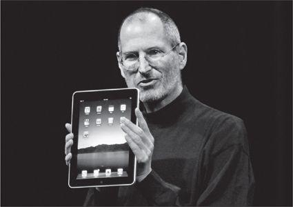
You Say You Want a Revolution
Вы говорите, что хотите революцию
Back in 2002, Jobs had been annoyed by the Microsoft engineer who kept proselytizing about the tablet computer software he had developed, which allowed users to input information on the screen with a stylus or pen. A few manufacturers released tablet PCs that year using the software, but none made a dent in the universe. Jobs had been eager to show how it should be done right—no stylus!—but when he saw the multi-touch technology that Apple was developing, he had decided to use it first to make an iPhone.
| proselytizing | яро проповедовал, вербовал сторонников (от «прозелит» — обращённый в веру) |
| stylus | стилус, перо для ввода на сенсорном экране |
| made a dent in the universe | здесь иронично: «оставили след во вселенной» — то есть не произвели никакого впечатления на рынок |
| multi-touch | мультитач — технология экранов, распознающих несколько одновременных касаний |
Ещё в 2002 году Джобсу досаждал инженер Microsoft, прозелитировавший свой планшетный софт со вводом информации стилусом или ручкой. В тот год несколько производителей выпустили планшетные ПК на этом софте, но вселенной ни один не изменил. Джобс рвался показать, как надо — без стилуса! — но, увидев разрабатываемый Apple мультитач, решил сначала применить его в iPhone.
In the meantime, the tablet idea was percolating within the Macintosh hardware group. “We have no plans to make a tablet,” Jobs declared in an interview with Walt Mossberg in May 2003. “It turns out people want keyboards. Tablets appeal to rich guys with plenty of other PCs and devices already.” Like his statement about having a “hormone imbalance,” that was misleading; at most of his annual Top 100 retreats, the tablet was among the future projects discussed. “We showed the idea off at many of these retreats, because Steve never lost his desire to do a tablet,” Phil Schiller recalled.
| percolating | зрела, назревала; здесь — обсуждалась в недрах |
| hardware group | подразделение, отвечавшее за «железо» |
| appeal to | привлекать, нравиться |
| misleading | вводящее в заблуждение |
| retreats | выездные совещания, ретриты |
| showed the idea off | демонстрировали, показывали |
Тем временем идея планшета зрела в железной группе Macintosh. «Делать планшет мы не планируем, — заявил Джобс в интервью Уолту Моссбергу в мае 2003 года. — Выясняется, людям нужны клавиатуры. Планшеты для богачей, у которых и так полно ПК и устройств». Как и заявление о «гормональном дисбалансе», это вводило в заблуждение: на большинстве ежегодных ретритов «Топ-100» планшет обсуждался среди будущих проектов. «Идею показывали на многих ретритах — Стив никогда не терял желания сделать планшет», — вспоминал Фил Шиллер.
The tablet project got a boost in 2007 when Jobs was considering ideas for a low-cost netbook computer. At an executive team brainstorming session one Monday, Ive asked why it needed a keyboard hinged to the screen; that was expensive and bulky. Put the keyboard on the screen using a multi-touch interface, he suggested. Jobs agreed. So the resources were directed to revving up the tablet project rather than designing a netbook.
| got a boost | получил толчок, ускорился |
| netbook | нетбук, мини-ноутбук |
| brainstorming session | мозговой штурм |
| hinged | на петлях, откидная |
| bulky | громоздкий |
| revving up | раскручивая, разгоняя |
Проект планшета получил толчок в 2007 году, когда Джобс обдумывал идеи дешёвого нетбука. На мозговом штурме руководящей команды в один из понедельников Айв спросил: зачем клавиатура, пристёгнутая к экрану? Это дорого и громоздко. Поставьте клавиатуру на экран мультитач-интерфейсом, предложил он. Джобс согласился. Ресурсы направили на раскрутку проекта планшета, а не на проектирование нетбука.
The process began with Jobs and Ive figuring out the right screen size. They had twenty models made—all rounded rectangles, of course—in slightly varying sizes and aspect ratios. Ive laid them out on a table in the design studio, and in the afternoon they would lift the velvet cloth hiding them and play with them. “That’s how we nailed what the screen size was,” Ive said.
| figuring out | выясняя, определяя |
| rounded rectangles | скруглённые прямоугольники |
| aspect ratios | соотношения сторон |
| laid them out | разложил их |
| velvet cloth | бархатная ткань |
| nailed | пригвоздили; здесь — точно определили |
Начали Джобс и Айв с определения правильного размера экрана. Заказали двадцать моделей — все, конечно, скруглённые прямоугольники — с чуть разными размерами и пропорциями. Айв разложил их на столе в дизайн- студии, и днём они поднимали бархатную ткань и вертели их в руках. «Так мы и пригвоздили размер экрана», — говорил Айв.
As usual Jobs pushed for the purest possible simplicity. That required determining what was the core essence of the device. The answer: the display screen. So the guiding principle was that everything they did had to defer to the screen. “How do we get out of the way so there aren’t a ton of features and buttons that distract from the display?” Ive asked. At every step, Jobs pushed to remove and simplify.
| pushed for | настаивал на, требовал |
| the purest possible simplicity | чистейшая из возможных простота |
| core essence | самая суть |
| guiding principle | направляющий принцип |
| defer to | уступать |
| get out of the way | уйти с дороги, не мешать |
Как обычно, Джобс требовал чистейшей возможной простоты. Для этого нужно было определить суть устройства. Ответ: дисплей. Направляющий принцип — всё, что они делают, должно уступать экрану. «Как нам уйти с дороги, чтобы куча функций и кнопок не отвлекала от дисплея?» — ставил вопрос Айв. На каждом шагу Джобс требовал убирать и упрощать.
At one point Jobs looked at the model and was slightly dissatisfied. It didn’t feel casual and friendly enough, so that you would naturally scoop it up and whisk it away. Ive put his finger, so to speak, on the problem: They needed to signal that you could grab it with one hand, on impulse. The bottom of the edge needed to be slightly rounded, so that you’d feel comfortable just scooping it up rather than lifting it carefully. That meant engineering had to design the necessary connection ports and buttons in a simple lip that was thin enough to wash away gently underneath.
| slightly dissatisfied | слегка недоволен |
| scoop it up | зачерпнуть |
| whisk it away | унести одним движением |
| put his finger, so to speak, on | буквально «положил палец на»; точно определил, в чём проблема. So to speak — «так сказать» |
| so to speak | так сказать |
| on impulse | по импульсу, не задумываясь |
| lip | кромка, выступ |
| wash away | раствориться, плавно сойти на нет |
В какой-то момент Джобс посмотрел на модель и остался слегка недоволен: не хватало непринуждённости и дружелюбия, чтобы её хотелось естественно зачерпнуть и унести. Айв, так сказать, ткнул пальцем в проблему: нужно дать сигнал, что устройство можно импульсивно схватить одной рукой. Нижняя грань должна быть слегка скруглена, чтобы удобно было зачерпывать, а не бережно поднимать. А значит, инженерам пришлось вписать порты и кнопки в простую кромку, достаточно тонкую, чтобы мягко раствориться снизу.
If you had been paying attention to patent filings, you would have noticed the one numbered D504889 that Apple applied for in March 2004 and was issued fourteen months later. Among the inventors listed were Jobs and Ive. The application carried sketches of a rectangular electronic tablet with rounded edges, which looked just the way the iPad turned out, including one of a man holding it casually in his left hand while using his right index finger to touch the screen.
| patent filings | патентные заявки |
| applied for | подала заявку на |
| was issued | был выдан |
| sketches | наброски, эскизы |
| rounded edges | скруглённые края |
| turned out | получился, вышел |
| index finger | указательный палец |
Следи вы за патентными заявками, заметили бы заявку D504889, поданную Apple в марте 2004 года и выданную четырнадцатью месяцами позже. В списке изобретателей — Джобс и Айв. К заявке прилагались наброски прямоугольного электронного планшета со скруглёнными краями — ровно такого, каким вышел iPad, — включая рисунок человека, небрежно держащего его в левой руке и касающегося экрана правым указательным пальцем.
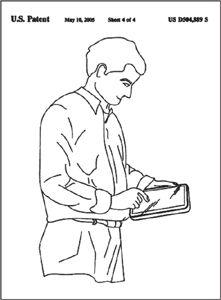
Since the Macintosh computers were now using Intel chips, Jobs initially planned to use in the iPad the low-voltage Atom chip that Intel was developing. Paul Otellini, Intel’s CEO, was pushing hard to work together on a design, and Jobs’s inclination was to trust him. His company was making the fastest processors in the world. But Intel was used to making processors for machines that plugged into a wall, not ones that had to preserve battery life. So Tony Fadell argued strongly for something based on the ARM architecture, which was simpler and used less power. Apple had been an early partner with ARM, and chips using its architecture were in the original iPhone. Fadell gathered support from other engineers and proved that it was possible to confront Jobs and turn him around. “Wrong, wrong, wrong!” Fadell shouted at one meeting when Jobs insisted it was best to trust Intel to make a good mobile chip. Fadell even put his Apple badge on the table, threatening to resign.
| low-voltage | низковольтный |
| pushing hard | активно настаивал |
| inclination | склонность |
| plugged into a wall | включались в розетку |
| battery life | время работы от батареи |
| argued strongly for | горячо ратовал за |
| gathered support | заручился поддержкой |
| turn him around | переубедить его |
| badge | бейдж |
| threatening to resign | угрожая увольнением |
Раз компьютеры Macintosh уже работали на чипах Intel, Джобс поначалу планировал поставить в iPad низковольтный Atom, разрабатывавшийся Intel. Пол Отеллини, CEO Intel, рьяно настаивал на совместной работе над дизайном, и Джобс был склонен ему доверять: его компания делала самые быстрые в мире процессоры. Но Intel привыкла делать процессоры для машин от розетки, а не для тех, что должны беречь батарею. Тони Фаделл горячо ратовал за архитектуру ARM — проще и экономичнее. Apple была ранним партнёром ARM, и чипы на её архитектуре стояли в первом iPhone. Фаделл заручился поддержкой инженеров и доказал, что Джобсу можно возражать и переубеждать его. «Неправильно, неправильно, неправильно!» — кричал Фаделл на одном совещании, когда Джобс настаивал доверить Intel создание хорошего мобильного чипа. Фаделл даже положил на стол свой бейдж Apple, грозя увольнением.
Eventually Jobs relented. “I hear you,” he said. “I’m not going to go against my best guys.” In fact he went to the other extreme. Apple licensed the ARM architecture, but it also bought a 150-person microprocessor design firm in Palo Alto, called P.A. Semi, and had it create a custom system-on-a-chip, called the A4, which was based on the ARM architecture and manufactured in South Korea by Samsung. As Jobs recalled:
| relented | уступил, смягчился |
| go against | пойти против |
| went to the other extreme | ударился в другую крайность |
| licensed | лицензировала |
| system-on-a-chip | система на кристалле — процессор с памятью и графикой в одном чипе |
| manufactured | произведена |
В итоге Джобс уступил: «Я тебя слышу. Против лучших ребят не пойду». Больше того — ударился в другую крайность. Apple лицензировала архитектуру ARM, но также купила в Пало-Альто фирму по проектированию микропроцессоров на 150 человек, P.A. Semi, и поручила ей создать собственную систему на кристалле A4 — на базе ARM, произведённую в Южной Корее Samsung. Джобс вспоминал:
At the high-performance end, Intel is the best. They build the fastest chip, if you don’t care about power and cost. But they build just the processor on one chip, so it takes a lot of other parts. Our A4 has the processor and the graphics, mobile operating system, and memory control all in the chip. We tried to help Intel, but they don’t listen much. We’ve been telling them for years that their graphics suck. Every quarter we schedule a meeting with me and our top three guys and Paul Otellini. At the beginning, we were doing wonderful things together. They wanted this big joint project to do chips for future iPhones. There were two reasons we didn’t go with them. One was that they are just really slow. They’re like a steamship, not very flexible. We’re used to going pretty fast. Second is that we just didn’t want to teach them everything, which they could go and sell to our competitors.
| high-performance | высокопроизводительный |
| don’t care about | не заботитесь о |
| graphics suck | графика дрянная; suck — разг. «отстой» |
| joint project | совместный проект |
| steamship | пароход |
| flexible | гибкие |
В высшем классе производительности Intel — лучшая. Они строят самый быстрый чип, если не заботиться о мощности и цене. Но на кристалле у них только процессор — требуется куча других деталей. В нашем A4 — процессор, графика, мобильная операционная система и контроллер памяти, всё в одном чипе. Мы пытались помочь Intel, но они мало слушают. Годами твердим им, что графика у них дрянная. Каждый квартал устраиваем встречу: я, трое наших лучших и Пол Отеллини. Поначалу мы вместе делали чудесные вещи. Они хотели большой совместный проект чипов для будущих iPhone. Не пошли мы с ними по двум причинам. Во-первых, они очень медленны. Как пароход — не гибкие. А мы привыкли двигаться быстро. Во- вторых, мы не хотели учить их всему, что они потом продали бы нашим конкурентам.
According to Otellini, it would have made sense for the iPad to use Intel chips. The problem, he said, was that Apple and Intel couldn’t agree on price. Also, they disagreed on who would control the design. It was another example of Jobs’s desire, indeed compulsion, to control every aspect of a product, from the silicon to the flesh.
| would have made sense | имело бы смысл |
| agree on price | сойтись в цене |
| compulsion | навязчивое стремление |
| from the silicon to the flesh | от кремния до плоти — то есть от микрочипа до готового устройства |
По словам Отеллини, использование чипов Intel в iPad имело бы смысл. Проблема, говорил он, была в том, что Apple и Intel не сошлись в цене. И разошлись в том, кто контролирует дизайн. Ещё один пример желания — вернее, навязчивого стремления — Джобса контролировать каждый аспект продукта, от кремния до плоти.
The Launch, January 2010
Запуск, январь 2010-го
The usual excitement that Jobs was able to gin up for a product launch paled in comparison to the frenzy that built for the iPad unveiling on January 27, 2010, in San Francisco. The Economist put him on its cover robed, haloed, and holding what was dubbed “the Jesus Tablet.” The Wall Street Journal struck a similarly exalted note: “The last time there was this much excitement about a tablet, it had some commandments written on it.”
| gin up | раздувать, нагнетать |
| paled in comparison | бледнел в сравнении |
| frenzy | безумие, ажиотаж |
| unveiling | презентация, снятие покрова |
| robed | в одеянии |
| haloed | с нимбом |
| dubbed | прозванный |
| struck a similarly exalted note | взяла возвышенную тональность |
| commandments | заповеди |
Обычный ажиотаж, который Джобс умел нагнать перед релизом, бледнел перед истерией вокруг презентации iPad 27 января 2010 года в Сан- Франциско. Economist вынес его на обложку — в одеянии, с нимбом и с тем, что окрестили «планшетом Иисуса». Wall Street Journal ударила в ту же возвышенную тональность: «В последний раз такой ажиотаж вокруг планшета был, когда на нём были начертаны заповеди».
As if to underscore the historic nature of the launch, Jobs invited back many of the old-timers from his early Apple days. More poignantly, James Eason, who had performed his liver transplant the year before, and Jeffrey Norton, who had operated on his pancreas in 2004, were in the audience, sitting with his wife, his son, and Mona Simpson.
| underscore | подчеркнуть |
| old-timers | старожилы, ветераны |
| poignantly | трогательно |
| had performed his liver transplant | сделал ему пересадку печени |
| pancreas | поджелудочная железа |
Словно подчёркивая историчность запуска, Джобс пригласил многих старожилов ранней Apple. Что трогательнее — в зале сидели Джеймс Изон, сделавший ему годом ранее пересадку печени, и Джеффри Нортон, оперировавший поджелудочную в 2004 году, — рядом с его женой, сыном и Моной Симпсон.
Jobs did his usual masterly job of putting a new device into context, as he had done for the iPhone three years earlier. This time he put up a screen that showed an iPhone and a laptop with a question mark in between. “The question is, is there room for something in the middle?” he asked. That “something” would have to be good at web browsing, email, photos, video, music, games, and ebooks. He drove a stake through the heart of the netbook concept. “Netbooks aren’t better at anything!” he said. The invited guests and employees cheered. “But we have something that is. We call it the iPad.”
| masterly | мастерски |
| putting a new device into context | вписывая в контекст |
| question mark | вопросительный знак |
| drove a stake through the heart | вогнал кол в сердце — окончательно похоронил |
| cheered | зааплодировали, одобрительно зашумели |
Джобс привычно мастерски вписал новое устройство в контекст, как делал с iPhone тремя годами раньше. На этот раз он показал экран с iPhone и ноутбуком, а между ними — вопросительный знак. «Вопрос в том, есть ли место для чего-то посередине?» — спросил он. Это «что-то» должно было хорошо справляться с вебом, почтой, фото, видео, музыкой, играми и электронными книгами. Он вогнал кол в сердце концепции нетбуков: «Нетбуки ни в чём не лучше!» Приглашённые гости и сотрудники зааплодировали. «А у нас есть то, что лучше. Мы называем это iPad».
To underscore the casual nature of the iPad, Jobs ambled over to a comfortable leather chair and side table (actually, given his taste, it was a Le Corbusier chair and an Eero Saarinen table) and scooped one up. “It’s so much more intimate than a laptop,” he enthused. He proceeded to surf to the New York Times website, send an email to Scott Forstall and Phil Schiller (“Wow, we really are announcing the iPad”), flip through a photo album, use a calendar, zoom in on the Eiffel Tower on Google Maps, watch some video clips (Star Trek and Pixar’s Up), show off the iBook shelf, and play a song (Bob Dylan’s “Like a Rolling Stone,” which he had played at the iPhone launch). “Isn’t that awesome?” he asked.
| casual nature | непринуждённый характер |
| ambled over | вразвалку подошёл |
| side table | приставной столик |
| scooped one up | зачерпнул один |
| intimate | интимнее, ближе |
| enthused | восторженно произнёс |
| proceeded to | затем стал |
| flip through | пролистать |
| zoom in | приблизить |
| show off | похвастаться, продемонстрировать |
Подчёркивая непринуждённость iPad, Джобс вразвалку прошёл к удобному кожаному креслу и столику (вообще-то, учитывая его вкус, это были кресло Ле Корбюзье и стол Ээро Сааринена) и зачерпнул планшет. «Он куда интимнее ноутбука», — восхитился он. Затем полистал сайт New York Times, отправил письмо Скотту Форстоллу и Филу Шиллеру («Ух ты, а мы действительно анонсируем iPad»), пролистал фотоальбом, заглянул в календарь, приблизил Эйфелеву башню в Google Maps, посмотрел видео («Звёздный путь» и пиксаровское «Вверх»), показал книжную полку iBook и включил песню — «Like a Rolling Stone» Боба Дилана, ту же, что на запуске iPhone. «Разве не потрясающе?» — спросил он.
With his final slide, Jobs emphasized one of the themes of his life, which was embodied by the iPad: a sign showing the corner of Technology Street and Liberal Arts Street. “The reason Apple can create products like the iPad is that we’ve always tried to be at the intersection of technology and liberal arts,” he concluded. The iPad was the digital reincarnation of the Whole Earth Catalog, the place where creativity met tools for living.
| themes of his life | темы его жизни |
| embodied | воплощена |
| intersection | пересечение |
| liberal arts | свободные искусства |
| reincarnation | реинкарнация, новое воплощение |
Финальным слайдом Джобс подчеркнул одну из тем своей жизни, воплощённую iPad: табличку с перекрёстком Технологической улицы и улицы Свободных искусств. «Apple может создавать продукты вроде iPad потому, что мы всегда стремились быть на пересечении технологии и свободных искусств», — заключил он. iPad был цифровой реинкарнацией «Каталога всей Земли» — места, где творчество встречалось с инструментами для жизни.
For once, the initial reaction was not a Hallelujah Chorus. The iPad was not yet available (it would go on sale in April), and some who watched Jobs’s demo were not quite sure what it was. An iPhone on steroids? “I haven’t been this let down since Snooki hooked up with The Situation,” wrote Newsweek’s Daniel Lyons (who moonlighted as “The Fake Steve Jobs” in an online parody). Gizmodo ran a contributor’s piece headlined “Eight Things That Suck about the iPad” (no multitasking, no cameras, no Flash . . . ). Even the name came in for ridicule in the blogosphere, with snarky comments about feminine hygiene products and maxi pads. The hashtag “#iTampon” was the number-three trending topic on Twitter that day.
| Hallelujah Chorus | хор «Аллилуйя» — восторженный приём |
| on steroids | на стероидах — усиленная версия |
| let down | разочарован |
| hooked up with | сошлась с; hook up — сойтись, закрутить роман |
| moonlighted | подрабатывал |
| parody | пародия |
| contributor’s piece | колонка автора, внештатника |
| ridicule | насмешки |
| snarky | ехидные |
| feminine hygiene products | средства женской гигиены |
| trending topic | популярная тема |
На сей раз первой реакцией не был хор «Аллилуйя». iPad ещё не продавался (выход в апреле), и часть зрителей демо не совсем поняла, что это. iPhone на стероидах? «Я так не разочаровывался с тех пор, как Снуки сошлась с Ситуацией», — писал Дэниел Лайонс из Newsweek (подрабатывавший онлайн-пародией «Фальшивый Стив Джобс»). Gizmodo опубликовала колонку «Восемь вещей, которые отстой в iPad» (нет многозадачности, камер, Flash…). Даже имя высмеивали в блогосфере ехидными комментариями о предметах женской гигиены. Хэштег «#iTampon» был третьим по трендам в Twitter в тот день.
There was also the requisite dismissal from Bill Gates. “I still think that some mixture of voice, the pen and a real keyboard—in other words a netbook—will be the mainstream,” he told Brent Schlender. “So, it’s not like I sit there and feel the same way I did with the iPhone where I say, ‘Oh my God, Microsoft didn’t aim high enough.’ It’s a nice reader, but there’s nothing on the iPad I look at and say, ‘Oh, I wish Microsoft had done it.’” He continued to insist that the Microsoft approach of using a stylus for input would prevail. “I’ve been predicting a tablet with a stylus for many years,” he told me. “I will eventually turn out to be right or be dead.”
| requisite | обязательное, положенное |
| dismissal | пренебрежение, отмашка |
| mainstream | основное направление, мейнстрим |
| aim high enough | прицелиться достаточно высоко |
| insist | настаивать |
| stylus | стилус |
| prevail | восторжествует |
| turn out to be right | оказаться правым |
Было и обязательное пренебрежение от Билла Гейтса. «Я по-прежнему считаю, что мейнстримом станет смесь голоса, пера и настоящей клавиатуры — иными словами, нетбук, — сказал он Бренту Шлендеру. — Так что я не сижу с тем же чувством, что при виде iPhone: „Боже, Microsoft не прицелилась достаточно высоко“. Читалка милая, но в iPad нет ничего, на что я смотрел бы со словами: „О, жаль, что это сделала не Microsoft“». Он продолжал настаивать: победит подход Microsoft со стилусом. «Я много лет предсказываю планшет со стилусом, — сказал он мне. — И в конце концов окажусь прав — или умру».
The night after his announcement, Jobs was annoyed and depressed. As we gathered in his kitchen for dinner, he paced around the table calling up emails and web pages on his iPhone.
| annoyed | раздосадован |
| depressed | подавлен |
| gathered | собирались |
| paced around | ходил взад-вперёд вокруг |
| calling up | вызывая, открывая |
Вечером после анонса Джобс был раздосадован и подавлен. Пока мы собирались ужинать на его кухне, он ходил вокруг стола, открывая на iPhone письма и веб-страницы.
I got about eight hundred email messages in the last twenty-four hours. Most of them are complaining. There’s no USB cord! There’s no this, no that. Some of them are like, “Fuck you, how can you do that?” I don’t usually write people back, but I replied, “Your parents would be so proud of how you turned out.” And some don’t like the iPad name, and on and on. I kind of got depressed today. It knocks you back a bit.
| USB cord | USB-шнур |
| write people back | отвечать людям |
| turned out | вырос, получился |
| on and on | и так далее |
| knocks you back a bit | слегка выбивает из колеи; knock back — отбросить назад, обескуражить |
За последние сутки я получил около восьмисот писем. Большинство — с жалобами. Нет USB-шнура! Нет того, нет этого. Некоторые в духе «Пошёл ты, как ты мог?» Обычно я людям не отвечаю, но тут ответил: «Твои родители гордились бы тем, каким ты вырос». Кому-то не нравится имя iPad, и так далее. Я сегодня немного приуныл. Это отбрасывает назад.
He did get one congratulatory call that day that he appreciated, from President Obama’s chief of staff, Rahm Emanuel. But he noted at dinner that the president had not called him since taking office.
| congratulatory | поздравительный |
| appreciated | оценил |
| chief of staff | глава аппарата |
| taking office | вступления в должность |
Был в тот день один поздравлявший звонок, который он оценил, — от главы аппарата президента Обамы Рама Эмануэла. Но за ужином он заметил, что сам президент с момента инаугурации ему не звонил.
The public carping subsided when the iPad went on sale in April and people got their hands on it. Both Time and Newsweek put it on the cover. “The tough thing about writing about Apple products is that they come with a lot of hype wrapped around them,” Lev Grossman wrote in Time. “The other tough thing about writing about Apple products is that sometimes the hype is true.” His main reservation, a substantive one, was “that while it’s a lovely device for consuming content, it doesn’t do much to facilitate its creation.” Computers, especially the Macintosh, had become tools that allowed people to make music, videos, websites, and blogs, which could be posted for the world to see. “The iPad shifts the strong from creating content to merely absorbing and manipulating it. It mutes you, turns you back into a passive consumer of other people’s masterpieces.” It was a criticism Jobs took to heart. He set about making sure that the next version of the iPad would emphasize ways to facilitate artistic creation by the user.
| carping | брюзжание, придирки |
| subsided | утихло |
| got their hands on it | получили его в руки |
| hype | хайп, шумиха |
| wrapped around | обёрнутый вокруг |
| substantive | существенный |
| consuming content | потребление контента |
| facilitate | способствовать |
| absorbing | поглощение |
| manipulating | манипуляция |
| mutes | приглушает |
| passive consumer | пассивный потребитель |
| masterpieces | шедевры |
| took to heart | принял близко к сердцу |
| set about | принялся за |
Публичное брюзжание утихло, когда iPad вышел в апреле и люди взяли его в руки. И Time, и Newsweek вынесли его на обложки. «Трудность в том, что продукты Apple обёрнуты кучей хайпа, — писал Лев Гроссман в Time. — Другая трудность: иногда хайп оказывается правдой». Главная его оговорка — существенная: «Прекрасное устройство для потребления контента почти не способствует его созданию». Компьютеры, особенно Macintosh, стали инструментами создания музыки, видео, сайтов и блогов на обозрение всему миру. «iPad переключает тебя с создания контента на простое поглощение и манипуляцию им. Он тебя приглушает, превращает обратно в пассивного потребителя чужих шедевров». Критику Джобс принял близко к сердцу и постарался, чтобы следующая версия iPad помогала пользователю творить.
Newsweek’s cover line was “What’s So Great about the iPad? Everything.” Daniel Lyons, who had zapped it with his “Snooki” comment at the launch, revised his opinion. “My first thought, as I watched Jobs run through his demo, was that it seemed like no big deal,” he wrote. “It’s a bigger version of the iPod Touch, right? Then I got a chance to use an iPad, and it hit me: I want one.” Lyons, like others, realized that this was Jobs’s pet project, and it embodied all that he stood for. “He has an uncanny ability to cook up gadgets that we didn’t know we needed, but then suddenly can’t live without,” he wrote. “A closed system may be the only way to deliver the kind of techno-Zen experience that Apple has become known for.”
| cover line | надпись на обложке |
| zapped | ужалил, прошёлся |
| revised his opinion | пересмотрел мнение |
| no big deal | ничего особенного |
| it hit me | меня осенило, накрыло |
| pet project | любимый проект |
| embodied | воплощал |
| stood for | отстаивал |
| uncanny | сверхъестественная |
| cook up | изобретать, стряпать |
| can’t live without | не можем жить без |
| closed system | закрытая система |
| techno-Zen | технодзенский — намёк на минимализм и медитативность |
Обложка Newsweek гласила: «Что такого великого в iPad? Всё». Дэниел Лайонс, ужаливший запуск «снуки-комментарием», мнение пересмотрел. «Первая мысль при демо Джобса: ничего особенного. Увеличенный iPod Touch, да? Потом мне довелось попользоваться iPad — и меня накрыло: хочу такой», — писал он. Лайонс, как и другие, понял: это любимое детище Джобса, воплощающее всё, что он отстаивал. «У него сверхъестественная способность выдумывать гаджеты, которые нам были не нужны, пока мы их не увидели, — писал он. — Закрытая система, возможно, единственный способ дать тот технодзенский опыт, которым прославилась Apple».
Most of the debate over the iPad centered on the issue of whether its closed end-to-end integration was brilliant or doomed. Google was starting to play a role similar to the one Microsoft had played in the 1980s, offering a mobile platform, Android, that was open and could be used by all hardware makers. Fortune staged a debate on this issue in its pages. “There’s no excuse to be closed,” wrote Michael Copeland. But his colleague Jon Fortt rebutted, “Closed systems get a bad rap, but they work beautifully and users benefit. Probably no one in tech has proved this more convincingly than Steve Jobs. By bundling hardware, software, and services, and controlling them tightly, Apple is consistently able to get the jump on its rivals and roll out polished products.” They agreed that the iPad would be the clearest test of this question since the original Macintosh. “Apple has taken its control-freak rep to a whole new level with the A4 chip that powers the thing,” wrote Fortt. “Cupertino now has absolute say over the silicon, device, operating system, App Store, and payment system.”
| centered on | сосредотачивалась на |
| end-to-end integration | сквозная интеграция |
| doomed | обречено |
| hardware makers | производители железа |
| staged | устроила |
| rebutted | возражал |
| bad rap | дурная слава; rap — обвинение |
| bundling | связывая, комплектуя |
| tightly | жёстко |
| get the jump on | обскакать, получить преимущество |
| roll out | выпускать |
| polished | отполированные |
| control-freak rep | репутация контрол-фрика |
| absolute say | абсолютное право голоса |
Большая часть споров об iPad сводилась к вопросу: закрытая сквозная интеграция — это гениально или обречено? Google начинала играть роль Microsoft образца 1980-х, предлагая открытую мобильную платформу Android для любых производителей железа. Fortune устроила на своих страницах дебаты. «Закрытости нет оправдания», — писал Майкл Коупленд. Его коллега Джон Фортт возражал: «Закрытые системы поливают грязью, но работают они прекрасно, и пользователи выигрывают. Едва ли кто в технологиях доказал это убедительнее Стива Джобса. Связывая железо, софт и сервисы и жёстко их контролируя, Apple стабильно обходит соперников и выпускает отполированные продукты». Оба соглашались: iPad станет яснейшей проверкой этого вопроса со времён первого Macintosh. «Apple подняла свою контрол-фриковскую репутацию на новый уровень чипом A4, — писал Фортт. — Теперь у Купертино абсолютное право голоса по кремнию, устройству, операционной системе, App Store и платёжной системе».
Jobs went to the Apple store in Palo Alto shortly before noon on April 5, the day the iPad went on sale. Daniel Kottke—his acid-dropping soul mate from Reed and the early days at Apple, who no longer harbored a grudge for not getting founders’ stock options—made a point of being there. “It had been fifteen years, and I wanted to see him again,” Kottke recounted. “I grabbed him and told him I was going to use the iPad for my song lyrics. He was in a great mood and we had a nice chat after all these years.” Powell and their youngest child, Eve, watched from a corner of the store.
| went on sale | поступил в продажу |
| acid-dropping soul mate | родственная душа по кислотным временам; drop acid — принимать ЛСД |
| harbored a grudge | таил обиду |
| founders’ stock options | учредительские опционы |
| made a point of being there | специально пришёл |
| recounted | рассказывал |
| grabbed | схватил |
| song lyrics | тексты песен |
5 апреля, в день начала продаж, Джобс незадолго до полудня пришёл в Apple Store в Пало-Альто. Дэниел Коттке — его кислотный соратник по Риду и ранним дням Apple, уже не державший обиды за неполученные учредительские опционы — специально там был. «Прошло пятнадцать лет, и я хотел увидеть его снова, — рассказывал Коттке. — Я схватил его и сказал, что буду писать на iPad тексты песен. Он был в отличном настроении, и мы славно поболтали после стольких лет». Пауэлл с младшей дочерью Ив наблюдали из угла магазина.
Wozniak, who had once been a proponent of making hardware and software as open as possible, continued to revise that opinion. As he often did, he stayed up all night with the enthusiasts waiting in line for the store to open. This time he was at San Jose’s Valley Fair Mall, riding a Segway. A reporter asked him about the closed nature of Apple’s ecosystem. “Apple gets you into their playpen and keeps you there, but there are some advantages to that,” he replied. “I like open systems, but I’m a hacker. But most people want things that are easy to use. Steve’s genius is that he knows how to make things simple, and that sometimes requires controlling everything.”
| proponent | сторонник |
| revise | пересматривать |
| stayed up all night | не спал всю ночь |
| enthusiasts | энтузиасты |
| waiting in line | в очереди |
| ecosystem | экосистема |
| playpen | манеж |
Возняк, некогда сторонник максимальной открытости железа и софта, продолжал пересматривать мнение. Как часто бывало, он всю ночь простоял с энтузиастами в очереди у магазина. На сей раз — в Valley Fair Mall в Сан-Хосе, на сегвее. Репортёр спросил его о закрытости экосистемы Apple. «Apple заманивает тебя в свой манеж и держит там, но в этом есть свои плюсы, — ответил он. — Я люблю открытые системы, но я хакер. А большинству нужно, чтобы всё было просто. Гений Стива в том, что он умеет делать вещи простыми, — а для этого порой приходится контролировать всё».
The question “What’s on your iPad?” replaced “What’s on your iPod?” Even President Obama’s staffers, who embraced the iPad as a mark of their tech hipness, played the game. Economic Advisor Larry Summers had the Bloomberg financial information app, Scrabble, and The Federalist Papers. Chief of Staff Rahm Emanuel had a slew of newspapers, Communications Advisor Bill Burton had Vanity Fair and one entire season of the television series Lost, and Political Director David Axelrod had Major League Baseball and NPR.
| staffers | сотрудники аппарата |
| embraced | приняли |
| mark of their tech hipness | знак технологической продвинутости |
| a slew of | куча, множество |
Вопрос «Что у тебя на iPad?» сменил «Что у тебя на iPod?». В игру играли даже сотрудники аппарата президента Обамы, принявшие iPad как знак технологической продвинутости. У экономического советника Ларри Саммерса были финансовое приложение Bloomberg, Scrabble и «Записки федералиста». У главы аппарата Рама Эмануэля — куча газет, у советника по коммуникациям Билла Бёртона — Vanity Fair и целый сезон сериала «Остаться в живых», а у политического директора Дэвида Аксельрода — Главная бейсбольная лига и NPR.
Jobs was stirred by a story, which he forwarded to me, by Michael Noer on Forbes.com. Noer was reading a science fiction novel on his iPad while staying at a dairy farm in a rural area north of Bogotá, Colombia, when a poor six-year-old boy who cleaned the stables came up to him. Curious, Noer handed him the device. With no instruction, and never having seen a computer before, the boy started using it intuitively. He began swiping the screen, launching apps, playing a pinball game. “Steve Jobs has designed a powerful computer that an illiterate six-year-old can use without instruction,” Noer wrote. “If that isn’t magical, I don’t know what is.”
| stirred | тронут, взволнован |
| forwarded | переслал |
| dairy farm | молочная ферма |
| rural area | сельская местность |
| cleaned the stables | чистил конюшни |
| came up to him | подошёл к нему |
| handed him | протянул ему |
| intuitively | интуитивно |
| swiping | проводя пальцем |
| launching apps | запуская приложения |
| pinball | пинбол |
| illiterate | неграмотный |
Джобса тронула история Майкла Ноэра с Forbes.com, которую он переслал мне. Ноэр читал на iPad фантастический роман, остановившись на молочной ферме в сельской местности к северу от Боготы, в Колумбии, когда к нему подошёл бедный шестилетний мальчик, чистивший конюшни. Из любопытства Ноэр дал ему устройство. Без инструкций, впервые увидев компьютер, мальчик начал пользоваться им интуитивно: листал экран, запускал приложения, играл в пинбол. «Стив Джобс спроектировал мощный компьютер, которым неграмотный шестилетка пользуется без обучения, — писал Ноэр. — Если это не магия, то я не знаю, что такое магия».
In less than a month Apple sold one million iPads. That was twice as fast as it took the iPhone to reach that mark. By March 2011, nine months after its release, fifteen million had been sold. By some measures it became the most successful consumer product launch in history.
| reach that mark | достичь этой отметки |
| release | релиз, выпуск |
| by some measures | по некоторым меркам |
| consumer product launch | запуск потребительского продукта |
Меньше чем за месяц Apple продала миллион iPad — вдвое быстрее, чем iPhone дошёл до этой отметки. К марту 2011 года, через девять месяцев после релиза, продали пятнадцать миллионов. По некоторым меркам это стало самым успешным запуском потребительского продукта в истории.
Advertising
Реклама
Jobs was not happy with the original ads for the iPad. As usual, he threw himself into the marketing, working with James Vincent and Duncan Milner at the ad agency (now called TBWA/Media Arts Lab), with Lee Clow advising from a semiretired perch. The commercial they first produced was a gentle scene of a guy in faded jeans and sweatshirt reclining in a chair, looking at email, a photo album, the New York Times, books, and video on an iPad propped on his lap. There were no words, just the background beat of “There Goes My Love” by the Blue Van. “After he approved it, Steve decided he hated it,” Vincent recalled. “He thought it looked like a Pottery Barn commercial.” Jobs later told me:
| ads | рекламные ролики |
| threw himself into | бросился в |
| ad agency | рекламное агентство |
| semiretired perch | полуотставная позиция; perch — насест, здесь — роль |
| gentle scene | мягкая сцена |
| faded jeans | выцветшие джинсы |
| reclining | полулежа |
| propped | водружённый, поставленный |
| background beat | фоновый ритм |
Джобс был недоволен первой рекламой iPad. Как обычно, он сам бросился в маркетинг, работая с Джеймсом Винсентом и Данканом Милнером в агентстве (теперь TBWA/Media Arts Lab), с советником — полуотставным Ли Клоу. Первый ролик — мягкая сцена: парень в выцветших джинсах и толстовке полулежит в кресле, просматривая на iPad на коленях почту, фотоальбом, New York Times, книги и видео. Без слов, лишь бит «There Goes My Love» группы Blue Van. «Одобрив ролик, Стив потом решил, что ненавидит его, — вспоминал Винсент. — Сказал, что это похоже на рекламу Pottery Barn». Позже Джобс говорил мне:
It had been easy to explain what the iPod was—a thousand songs in your pocket—which allowed us to move quickly to the iconic silhouette ads. But it was hard to explain what an iPad was. We didn’t want to show it as a computer, and yet we didn’t want to make it so soft that it looked like a cute TV. The first set of ads showed we didn’t know what we were doing. They had a cashmere and Hush Puppies feel to them.
| iconic silhouette ads | знаменитая реклама с силуэтами |
| cute TV | милый телевизор |
| cashmere and Hush Puppies feel | ощущение кашемира и мягких тапочек Hush Puppies — то есть слишком уютное, «домашнее» |
Объяснить, что такое iPod, было легко — тысяча песен в кармане, — и мы быстро перешли к знаковым силуэтам. Но объяснить, что такое iPad, было трудно. Мы не хотели показывать его компьютером — и не хотели делать его таким мягким, чтобы он выглядел милым телевизором. Первая партия роликов показала: мы не знаем, что делаем. От них веяло кашемиром и ботинками Hush Puppies.
James Vincent had not taken a break in months. So when the iPad finally went on sale and the ads started airing, he drove with his family to the Coachella Music Festival in Palm Springs, which featured some of his favorite bands, including Muse, Faith No More, and Devo. Soon after he arrived, Jobs called. “Your commercials suck,” he said. “The iPad is revolutionizing the world, and we need something big. You’ve given me small shit.”
| taken a break | взять передышку |
| started airing | вышли в эфир |
| featured | в программе были |
| commercials suck | реклама — отстой; suck — разг. «отстой» |
| revolutionizing | совершает революцию в |
Джеймс Винсент месяцами не отдыхал. И когда iPad наконец поступил в продажу, а ролики пошли в эфир, он поехал с семьёй на музыкальный фестиваль Coachella в Палм-Спрингс — там играли его любимые группы, включая Muse, Faith No More и Devo. Вскоре после приезда позвонил Джобс: «Твоя реклама — отстой. iPad революционизирует мир, нам нужно что-то большое. А ты принёс мне мелкое дерьмо».
“Well, what do you want?” Vincent shot back. “You’ve not been able to tell me what you want.”
| shot back | огрызнулся, тут же ответил |
«Ну а что ты хочешь? — огрызнулся Винсент. — Ты так и не смог сказать, чего хочешь».
“I don’t know,” Jobs said. “You have to bring me something new. Nothing you’ve shown me is even close.”
| bring me something new | принеси что-то новое |
| even close | даже близко |
«Не знаю, — сказал Джобс. — Ты должен принести мне что-то новое. Ничто из показанного даже близко не подходит».
Vincent argued back and suddenly Jobs went ballistic. “He just started screaming at me,” Vincent recalled. Vincent could be volatile himself, and the volleys escalated.
| argued back | возразил |
| went ballistic | взбесился, взорвался |
| screaming | орать |
| volatile | вспыльчивый, взрывной |
| volleys escalated | перепалка накалялась; volley — обмен ударами |
Винсент возразил — и Джобс внезапно взбесился. «Он просто начал на меня орать», — вспоминал Винсент. Сам он тоже был вспыльчив, и перепалка разгоралась.
When Vincent shouted, “You’ve got to tell me what you want,” Jobs shot back, “You’ve got to show me some stuff, and I’ll know it when I see it.”
| shot back | парировал |
| I’ll know it when I see it | узнаю, когда увижу |
Когда Винсент выкрикнул: «Ты должен сказать, чего хочешь», — Джобс парировал: «Ты должен показать мне что-то, а уж нужное я узнаю, когда увижу».
“Oh, great, let me write that on my brief for my creative people: I’ll know it when I see it.”
| brief | бриф — задание для креативной команды |
| creative people | креативщики, творческая команда |
«О, отлично, так и запишу в бриф для креативщиков: „Узнаю, когда увижу“».
Vincent got so frustrated that he slammed his fist into the wall of the house he was renting and put a large dent in it. When he finally went outside to his family, sitting by the pool, they looked at him nervously. “Are you okay?” his wife finally asked.
| so frustrated | так разозлился, доведён до отчаяния |
| slammed his fist | ударил кулаком |
| dent | вмятина |
| nervously | нервно, тревожно |
Винсент так разозлился, что со всей силы ударил кулаком в стену арендованного дома, оставив большую вмятину. Когда он наконец вышел к семье у бассейна, на него смотрели тревожно. «Ты в порядке?» — спросила наконец жена.
It took Vincent and his team two weeks to come up with an array of new options, and he asked to present them at Jobs’s house rather than the office, hoping that it would be a more relaxed environment. Laying storyboards on the coffee table, he and Milner offered twelve approaches. One was inspirational and stirring. Another tried humor, with Michael Cera, the comic actor, wandering through a fake house making funny comments about the way people could use iPads. Others featured the iPad with celebrities, or set starkly on a white background, or starring in a little sitcom, or in a straightforward product demonstration.
| come up with | придумать, подготовить |
| an array of | набор, целый ряд |
| relaxed environment | расслабленная обстановка |
| storyboards | раскадровки |
| approaches | подходы, варианты |
| inspirational and stirring | вдохновляющий и волнующий |
| wandering through | бродящий по |
| fake house | бутафорский дом |
| starkly | нарочито просто, строго |
| sitcom | ситком |
| straightforward product demonstration | прямая демонстрация продукта |
Через две недели Винсент с командой подготовили набор новых вариантов, и он попросил показать их у Джобса дома, а не в офисе — в надежде на более расслабленную обстановку. Разложив раскадровки на кофейном столике, они с Милнером предложили двенадцать подходов. Один — вдохновляющий и волнующий. Другой — юмористический, с комиком Майклом Серой, бродящим по фальшивому дому с забавными комментариями о том, как люди могут пользоваться iPad. В других были знаменитости с iPad, строгий белый фон, маленький ситком или прямая демонстрация продукта.
After mulling over the options, Jobs realized what he wanted. Not humor, nor a celebrity, nor a demo. “It’s got to make a statement,” he said. “It needs to be a manifesto. This is big.” He had announced that the iPad would change the world, and he wanted a campaign that reinforced that declaration. Other companies would come out with copycat tablets in a year or so, he said, and he wanted people to remember that the iPad was the real thing. “We need ads that stand up and declare what we have done.”
| mulling over | обдумывая |
| make a statement | быть заявлением |
| manifesto | манифест |
| reinforced | подкрепляла |
| declaration | декларация |
| copycat tablets | планшеты-подражатели; copycat — имитатор |
| stand up and declare | встать и заявить |
Обдумав варианты, Джобс понял, чего хочет. Не юмора, не знаменитости, не демо. «Это должно быть заявлением, — сказал он. — Это должен быть манифест. Дело большое». Он объявил, что iPad изменит мир, — и нужна кампания, подкрепляющая эту декларацию. Через год-другой, сказал он, другие компании выпустят планшеты-подражатели, и нужно, чтобы люди помнили: настоящий — iPad. «Нужна реклама, которая встаёт и заявляет, что мы сделали».
He abruptly got out of his chair, looking a bit weak but smiling. “I’ve got to go have a massage now,” he said. “Get to work.”
| abruptly | резко, внезапно |
| a bit weak | слегка ослабший |
| massage | массаж |
| get to work | за работу |
Он резко поднялся с кресла — слегка слабый, но улыбающийся. «Мне пора на массаж, — сказал он. — За работу».
So Vincent and Milner, along with the copywriter Eric Grunbaum, began crafting what they dubbed “The Manifesto.” It would be fast-paced, with vibrant pictures and a thumping beat, and it would proclaim that the iPad was revolutionary. The music they chose was Karen O’s pounding refrain from the Yeah Yeah Yeahs’” Gold Lion.” As the iPad was shown doing magical things, a strong voice declared, “iPad is thin. iPad is beautiful. . . . It’s crazy powerful. It’s magical. . . . It’s video, photos. More books than you could read in a lifetime. It’s already a revolution, and it’s only just begun.”
| dubbed | окрестили |
| fast-paced | в быстром темпе |
| vibrant | яркие, живые |
| thumping beat | пульсирующий бит |
| proclaim | провозглашать |
| pounding refrain | грохочущий припев |
| crazy powerful | безумно мощный |
Винсент и Милнер с копирайтером Эриком Грюнбаумом взялись за «Манифест»: быстрый темп, яркие картинки, пульсирующий бит — и провозглашение революционности iPad. Музыкой взяли грохочущий рефрен Карен О из «Gold Lion» Yeah Yeah Yeahs. Пока iPad творил на экране магию, сильный голос вещал: «iPad тонкий. iPad красивый… Безумно мощный. Он волшебный… Это видео, фотографии. Больше книг, чем прочитать за жизнь. Это уже революция — и она только началась».
Once the Manifesto ads had run their course, the team again tried something softer, shot as day-in-the-life documentaries by the young filmmaker Jessica Sanders. Jobs liked them—for a little while. Then he turned against them for the same reason he had reacted against the original Pottery Barn–style ads. “Dammit,” he shouted, “they look like a Visa commercial, typical ad agency stuff.”
| run their course | отыграть своё, исчерпать себя |
| softer | мягче |
| day-in-the-life documentaries | документальные зарисовки «день из жизни» |
| turned against | восстал против, отверг |
| typical ad agency stuff | типичное агентское барахло |
Когда «Манифест» отыграл своё, команда снова попробовала нечто мягче — документальные «дни из жизни», снятые молодой режиссёршей Джессикой Сандерс. Джобсу они нравились — недолго. Потом он отверг их по той же причине, что и первые ролики в духе Pottery Barn. «Чёрт, — заорал он, — это похоже на рекламу Visa, типичное агентское барахло».
He had been asking for ads that were different and new, but eventually he realized he did not want to stray from what he considered the Apple voice. For him, that voice had a distinctive set of qualities: simple, declarative, clean. “We went down that lifestyle path, and it seemed to be growing on Steve, and suddenly he said, ‘I hate that stuff, it’s not Apple,’” recalled Lee Clow. “He told us to get back to the Apple voice. It’s a very simple, honest voice.” And so they went back to a clean white background, with just a close-up showing off all the things that “iPad is . . .” and could do.
| stray from | отклониться от |
| distinctive set of qualities | отличительный набор качеств |
| declarative | утвердительный, декларативный |
| lifestyle path | путь «лайфстайла» |
| growing on Steve | начинал нравиться Стиву; grow on someone — постепенно завоёвывать симпатию |
| get back to | вернуться к |
| honest voice | честный голос |
| close-up | крупный план |
| showing off | демонстрируя |
Он просил рекламу новую и другую, но в конце концов понял: отходить от того, что он считал голосом Apple, нельзя. Для него у этого голоса был свой набор качеств: простой, утвердительный, чистый. «Мы пошли по лайфстайл-тропе, Стив, казалось, втянулся — и вдруг сказал: „Ненавижу это, это не Apple“, — вспоминал Ли Клоу. — Он велел вернуться к голосу Apple. К очень простому, честному голосу». Так вернулись к чистому белому фону с крупным планом, показывающим всё, что «iPad — это…» и что он умеет.
Apps
Приложения
The iPad commercials were not about the device, but about what you could do with it. Indeed its success came not just from the beauty of the hardware but from the applications, known as apps, that allowed you to indulge in all sorts of delightful activities. There were thousands—and soon hundreds of thousands—of apps that you could download for free or for a few dollars. You could sling angry birds with the swipe of your finger, track your stocks, watch movies, read books and magazines, catch up on the news, play games, and waste glorious amounts of time. Once again the integration of the hardware, software, and store made it easy. But the apps also allowed the platform to be sort of open, in a very controlled way, to outside developers who wanted to create software and content for it—open, that is, like a carefully curated and gated community garden.
| indulge in | предаваться |
| delightful activities | отрадные занятия |
| sling angry birds | запускать злых птиц; sling — метать из пращи |
| swipe | взмах, проведение пальцем |
| track your stocks | следить за акциями |
| catch up on the news | узнавать новости |
| waste glorious amounts of time | славно прожигать время |
| sort of open | в некотором роде открыта |
| curated and gated community garden | курируемый и огороженный общественный сад |
Реклама iPad была не об устройстве, а о том, что с ним можно делать. Успех шёл не только от красоты железа, но и от приложений — «аппов», — позволявших предаваться всяческим отрадам. Приложений были тысячи — и скоро станут сотни тысяч, — их качали бесплатно или за пару долларов. Взмахом пальца можно было запустить злых птиц, следить за акциями, смотреть фильмы, читать книги и журналы, узнавать новости, играть и славно жечь время. И снова интеграция железа, софта и магазина всё упрощала. Но приложения и приоткрывали платформу — очень контролируемо — внешним разработчикам: открыта она была, как тщательно курируемый огороженный сад сообщества.
The apps phenomenon began with the iPhone. When it first came out in early 2007, there were no apps you could buy from outside developers, and Jobs initially resisted allowing them. He didn’t want outsiders to create applications for the iPhone that could mess it up, infect it with viruses, or pollute its integrity.
| phenomenon | феномен, явление |
| outside developers | сторонние разработчики |
| resisted | сопротивлялся |
| mess it up | испортить |
| infect it with viruses | заразить вирусами |
| pollute its integrity | нарушить его целостность |
Феномен приложений начался с iPhone. При выходе в начале 2007 года сторонних приложений не было, и Джобс поначалу им противился: не хотел, чтобы чужаки создавали приложения, способные испортить iPhone, заразить его вирусами или замутить его целостность.
Board member Art Levinson was among those pushing to allow iPhone apps. “I called him a half dozen times to lobby for the potential of the apps,” he recalled. If Apple didn’t allow them, indeed encourage them, another smartphone maker would, giving itself a competitive advantage. Apple’s marketing chief Phil Schiller agreed. “I couldn’t imagine that we would create something as powerful as the iPhone and not empower developers to make lots of apps,” he recalled. “I knew customers would love them.” From the outside, the venture capitalist John Doerr argued that permitting apps would spawn a profusion of new entrepreneurs who would create new services.
| board member | член совета директоров |
| pushing to allow | ратовавших за допуск |
| a half dozen times | полдюжины раз |
| lobby for | лоббировать |
| competitive advantage | конкурентное преимущество |
| marketing chief | директор по маркетингу |
| empower | дать возможность |
| venture capitalist | венчурный капиталист |
| argued | доказывал |
| spawn | породить |
| a profusion of | тьма, изобилие |
| entrepreneurs | предприниматели |
Среди ратовавших за допуск приложений был член совета Арт Левинсон. «Я звонил ему с полдюжины раз, лоббируя потенциал приложений», — вспоминал он. Не пустит их Apple — пустит другой производитель смартфонов, получив конкурентное преимущество. Директор Apple по маркетингу Фил Шиллер соглашался: «Не могу представить, чтобы мы, создав нечто столь мощное, как iPhone, не дали разработчикам делать приложения. Покупатели их полюбят, я знал». Со стороны венчурный капиталист Джон Доэрр доказывал: допуск приложений породит тьму новых предпринимателей и новых сервисов.
Jobs at first quashed the discussion, partly because he felt his team did not have the bandwidth to figure out all of the complexities that would be involved in policing third-party app developers. He wanted focus. “So he didn’t want to talk about it,” said Schiller. But as soon as the iPhone was launched, he was willing to hear the debate. “Every time the conversation happened, Steve seemed a little more open,” said Levinson. There were freewheeling discussions at four board meetings.
| quashed | гасил, пресекал |
| bandwidth | ресурс, пропускная способность |
| figure out | разобраться с |
| policing | надзор за, контроль |
| third-party | сторонние |
| willing to hear | готов выслушать |
| freewheeling | свободные, непринуждённые |
Сначала Джобс обсуждение гасил — отчасти потому, что у команды не было ресурса разобраться со сложностями надзора за сторонними разработчиками. Он хотел фокуса. «Поэтому говорить об этом не хотел», — говорил Шиллер. Но после запуска iPhone стал слушать спор. «С каждым разговором Стив, казалось, приоткрывался», — говорил Левинсон. Свободные дискуссии прошли на четырёх заседаниях совета.
Jobs soon figured out that there was a way to have the best of both worlds. He would permit outsiders to write apps, but they would have to meet strict standards, be tested and approved by Apple, and be sold only through the iTunes Store. It was a way to reap the advantage of empowering thousands of software developers while retaining enough control to protect the integrity of the iPhone and the simplicity of the customer experience. “It was an absolutely magical solution that hit the sweet spot,” said Levinson. “It gave us the benefits of openness while retaining end-to-end control.”
| best of both worlds | лучшее из обоих миров |
| meet strict standards | соответствовать строгим стандартам |
| approved | одобрены |
| reap the advantage | пожать выгоды |
| empowering | наделяя возможностями |
| retaining enough control | сохраняя достаточный контроль |
| integrity | целостность |
| customer experience | пользовательский опыт |
| sweet spot | яблочко, идеальная точка |
| end-to-end control | сквозной контроль |
Джобс скоро нашёл способ взять лучшее из обоих миров: разрешить сторонним писать приложения, но по строгим стандартам, с тестированием и одобрением Apple и продажей только через iTunes Store. Так тысячи разработчиков получали возможности, а Apple сохраняла контроль для защиты целостности iPhone и простоты пользовательского опыта. «Это было абсолютно волшебное решение, попавшее в яблочко, — говорил Левинсон. — Оно давало выгоды открытости при сохранении сквозного контроля».
The App Store for the iPhone opened on iTunes in July 2008; the billionth download came nine months later. By the time the iPad went on sale in April 2010, there were 185,000 available iPhone apps. Most could also be used on the iPad, although they didn’t take advantage of the bigger screen size. But in less than five months, developers had written twenty-five thousand new apps that were specifically configured for the iPad. By July 2011 there were 500,000 apps for both devices, and there had been more than fifteen billion downloads of them.
| billionth download | миллиардное скачивание |
| went on sale | поступил в продажу |
| take advantage of | использовали преимущества |
| screen size | размер экрана |
| configured | настроенных, приспособленных |
App Store для iPhone открылся в iTunes в июле 2008 года; миллиардное скачивание случилось девятью месяцами позже. К началу продаж iPad в апреле 2010 года было 185 000 приложений для iPhone. Большинство работало и на iPad, хотя большой экран не использовали. Но меньше чем за пять месяцев разработчики написали 25 000 приложений специально под iPad. К июлю 2011-го для обоих устройств было 500 000 приложений, а скачиваний — более пятнадцати миллиардов.
The App Store created a new industry overnight. In dorm rooms and garages and at major media companies, entrepreneurs invented new apps. John Doerr’s venture capital firm created an iFund of $200 million to offer equity financing for the best ideas. Magazines and newspapers that had been giving away their content for free saw one last chance to put the genie of that dubious business model back into the bottle. Innovative publishers created new magazines, books, and learning materials just for the iPad. For example, the high-end publishing house Callaway, which had produced books ranging from Madonna’s Sex to Miss Spider’s Tea Party, decided to “burn the boats” and give up print altogether to focus on publishing books as interactive apps. By June 2011 Apple had paid out $2.5 billion to app developers.
| overnight | за одну ночь |
| dorm rooms | комнаты в общежитиях |
| garages | гаражи |
| equity financing | финансирование в обмен на долю |
| genie | джинн |
| dubious business model | сомнительная бизнес-модель |
| put the genie of that dubious business model back into the bottle | буквально «загнать джинна этой сомнительной бизнес-модели обратно в бутылку»; отменить последствия, вновь взять ситуацию под контроль |
| ranging from | от… до… |
| burn the boats | сжечь корабли — то есть отрезать пути назад |
| give up print | отказаться от печати |
| interactive apps | интерактивные приложения |
| paid out | выплатила |
App Store за одну ночь создал новую индустрию. В общежитиях, гаражах и крупных медиакомпаниях предприниматели изобретали новые приложения. Венчурная фирма Джона Доэрра создала фонд iFund на 200 миллионов долларов для финансирования лучших идей. Журналы и газеты, годами раздававшие контент бесплатно, увидели последний шанс загнать джинна сомнительной бизнес-модели обратно в бутылку. Инновационные издатели создавали журналы, книги и учебные материалы специально для iPad. Например, элитное издательство Callaway, выпускавшее от «Секса» Мадонны до «Чаепития мисс Паучихи», решило «сжечь корабли» и вовсе отказаться от печати ради интерактивных книг-приложений. К июню 2011 года Apple выплатила разработчикам 2,5 миллиарда долларов.
The iPad and other app-based digital devices heralded a fundamental shift in the digital world. Back in the 1980s, going online usually meant dialing into a service like AOL, CompuServe, or Prodigy that charged fees for access to a carefully curated walled garden filled with content plus some exit gates that allowed braver users access to the Internet at large. The second phase, beginning in the early 1990s, was the advent of browsers that allowed everyone to freely surf the Internet using the hypertext transfer protocols of the World Wide Web, which linked billions of sites. Search engines arose so that people could easily find the websites they wanted. The release of the iPad portended a new model. Apps resembled the walled gardens of old. The creators could charge fees and offer more functions to the users who downloaded them. But the rise of apps also meant that the openness and linked nature of the web were sacrificed. Apps were not as easily linked or searchable. Because the iPad allowed the use of both apps and web browsing, it was not at war with the web model. But it did offer an alternative, for both the consumers and the creators of content.
| heralded | возвестили |
| fundamental shift | фундаментальный сдвиг |
| dialing into | дозваниваться до |
| walled garden | огороженный сад — закрытая экосистема контента |
| exit gates | выходы |
| advent | появление |
| surf | сёрфить |
| hypertext transfer protocols | протоколы передачи гипертекста |
| search engines arose | появились поисковики |
| portended | предвещал |
| resembled | напоминали |
| sacrificed | принесены в жертву |
| linked | связаны |
| searchable | доступны для поиска |
| at war with | в войне с |
iPad и другие приложения-ориентированные устройства возвестили фундаментальный сдвиг цифрового мира. В 1980-е выход в сеть обычно означал дозвон до сервиса вроде AOL, CompuServe или Prodigy, бравшего плату за доступ к тщательно курируемому «огороженному саду» контента с несколькими выходами в большой Интернет для смельчаков. Вторая фаза, с начала 1990-х, — браузеры, давшие всем свободный сёрфинг по протоколам Всемирной паутины, связавшей миллиарды сайтов; появились поисковики. Выход iPad предвещал новую модель. Приложения напоминали старые огороженные сады: создатели могли брать плату и предлагать скачавшим больше функций. Но рост приложений означал и жертву открытостью и связностью сети: приложения не так легко связываются и ищутся. iPad, допуская и приложения, и веб-сёрфинг, с веб-моделью не воевал. Но предлагал альтернативу — и потребителям, и создателям контента.
Publishing and Journalism
Издательское дело и журналистика
With the iPod, Jobs had transformed the music business. With the iPad and its App Store, he began to transform all media, from publishing to journalism to television and movies.
| transformed | преобразил |
| publishing | книгоиздание |
| journalism | журналистика |
iPod Джобс преобразил музыкальный бизнес. С iPad и App Store он начал преображать все медиа — от книгоиздания до журналистики, телевидения и кино.
Books were an obvious target, since Amazon’s Kindle had shown there was an appetite for electronic books. So Apple created an iBooks Store, which sold electronic books the way the iTunes Store sold songs. There was, however, a slight difference in the business model. For the iTunes Store, Jobs had insisted that all songs be sold at one inexpensive price, initially 99 cents. Amazon’s Jeff Bezos had tried to take a similar approach with ebooks, insisting on selling them for at most $9.99. Jobs came in and offered publishers what he had refused to offer record companies: They could set any price they wanted for their wares in the iBooks Store, and Apple would take 30%. Initially that meant prices were higher than on Amazon. Why would people pay Apple more? “That won’t be the case,” Jobs answered, when Walt Mossberg asked him that question at the iPad launch event. “The price will be the same.” He was right.
| obvious target | очевидная цель |
| appetite | аппетит, спрос |
| electronic books | электронные книги |
| business model | бизнес-модель |
| insisted | настоял |
| at most | не дороже |
| offered publishers | предложил издателям |
| set any price | назначать любую цену |
| wares | товары |
| take 30% | брать 30% |
Книги были очевидной целью: Kindle от Amazon показал аппетит к электронным книгам. Apple создала iBooks Store, торгующий книгами, как iTunes Store — песнями. Разница в бизнес-модели была небольшая. Для iTunes Джобс настоял на единой низкой цене — изначально 99 центов. Джефф Безос из Amazon пробовал то же с книгами, требуя цену не выше 9,99. Джобс предложил издателям то, в чём отказал звукозаписи: цену они могут назначить любую, а Apple возьмёт 30%. Поначалу это означало цены выше амазоновских. Зачем платить Apple больше? «Так не будет, — ответил Джобс на вопрос Уолта Моссберга на презентации iPad. — Цена будет одинаковой». Он оказался прав.
The day after the iPad launch, Jobs described to me his thinking on books:
| described to me his thinking | изложил мне свои соображения |
На следующий день после запуска iPad Джобс так описал мне свой взгляд на книги:
Amazon screwed it up. It paid the wholesale price for some books, but started selling them below cost at $9.99. The publishers hated that—they thought it would trash their ability to sell hardcover books at $28. So before Apple even got on the scene, some booksellers were starting to withhold books from Amazon. So we told the publishers, “We’ll go to the agency model, where you set the price, and we get our 30%, and yes, the customer pays a little more, but that’s what you want anyway.” But we also asked for a guarantee that if anybody else is selling the books cheaper than we are, then we can sell them at the lower price too. So they went to Amazon and said, “You’re going to sign an agency contract or we’re not going to give you the books.”
| screwed it up | всё запорола; screw up — испортить |
| wholesale price | оптовая цена |
| below cost | ниже себестоимости |
| trash | уничтожить, подорвать |
| hardcover books | книги в твёрдой обложке |
| withhold | придерживать, не поставлять |
| got on the scene | вышла на сцену |
| agency model | агентская модель — издатель назначает цену, магазин берёт процент |
| set the price | назначать цену |
| guarantee | гарантия |
| sign an agency contract | подписать агентский контракт |
Amazon всё запорола. Платила оптовую цену за некоторые книги, а продавать начала ниже себестоимости — по 9,99. Издатели это ненавидели: думали, что это убьёт их возможность продавать твёрдые обложки по 28 долларов. Так что ещё до выхода Apple на сцену кое-кто из книготорговцев начал отказывать Amazon в поставках. Мы сказали издателям: «Перейдём на агентскую модель — цену назначаете вы, мы берём свои 30%, и да, покупатель платит чуть больше, но вы ведь этого и хотите». Но попросили гарантию: если кто-то продаёт книги дешевле нас, мы тоже можем продавать по низкой цене. Они пошли к Amazon и сказали: «Подпишете агентский контракт — или книг не получите».
Jobs acknowledged that he was trying to have it both ways when it came to music and books. He had refused to offer the music companies the agency model and allow them to set their own prices. Why? Because he didn’t have to. But with books he did. “We were not the first people in the books business,” he said. “Given the situation that existed, what was best for us was to do this akido move and end up with the agency model. And we pulled it off.”
| acknowledged | признавал |
| have it both ways | усидеть на двух стульях |
| agency model | агентская модель |
| akido move | приём айкидо — изящное использование силы соперника |
| pulled it off | удалось, провернули |
Джобс признавал: с музыкой и книгами он хотел усидеть на двух стульях. Звукозаписи он в агентской модели и свободном ценообразовании отказал. Почему? Потому что мог. А с книгами не мог. «Мы были не первыми в книжном бизнесе, — говорил он. — В сложившейся ситуации лучше всего было сделать этот айкидо-ход и получить агентскую модель. И нам это удалось».
Right after the iPad launch event, Jobs traveled to New York in February 2010 to meet with executives in the journalism business. In two days he saw Rupert Murdoch, his son James, and the management of their Wall Street Journal; Arthur Sulzberger Jr. and the top executives at the New York Times; and executives at Time, Fortune, and other Time Inc. magazines. “I would love to help quality journalism,” he later said. “We can’t depend on bloggers for our news. We need real reporting and editorial oversight more than ever. So I’d love to find a way to help people create digital products where they actually can make money.” Since he had gotten people to pay for music, he hoped he could do the same for journalism.
| launch event | презентация |
| executives | руководители |
| journalism business | журналистский бизнес |
| quality journalism | качественная журналистика |
| depend on | полагаться на |
| bloggers | блогеры |
| real reporting | настоящий репортаж |
| editorial oversight | редакционный надзор |
| make money | зарабатывать |
Сразу после презентации iPad Джобс в феврале 2010 года поехал в Нью-Йорк встречаться с руководителями журналистики. За два дня он увиделся с Рупертом Мёрдоком, его сыном Джеймсом и руководством их Wall Street Journal; с Артуром Зульцбергером-младшим и топ-менеджерами New York Times; с руководителями Time, Fortune и других журналов Time Inc. «Я бы с радостью помог качественной журналистике, — говорил он позже. — Мы не можем полагаться в новостях на блогеров. Настоящий репортаж и редакционный надзор нужны как никогда. Поэтому я бы хотел найти способ помочь людям делать цифровые продукты, на которых реально зарабатывают». Раз уж люди стали платить за музыку, он надеялся сделать то же с журналистикой.
Publishers, however, turned out to be leery of his lifeline. It meant that they would have to give 30% of their revenue to Apple, but that wasn’t the biggest problem. More important, the publishers feared that, under his system, they would no longer have a direct relationship with their subscribers; they wouldn’t have their email address and credit card number so they could bill them, communicate with them, and market new products to them. Instead Apple would own the customers, bill them, and have their information in its own database. And because of its privacy policy, Apple would not share this information unless a customer gave explicit permission to do so.
| leery | настороженные, с опаской |
| lifeline | спасательный круг |
| revenue | выручка |
| feared | боялись |
| direct relationship | прямые отношения |
| bill them | выставлять счета |
| market new products | продавать новые продукты |
| own the customers | владеть клиентами |
| privacy policy | политика приватности |
| explicit permission | явное разрешение |
Издатели, однако, отнеслись к его спасательному кругу с опаской. Пришлось бы отдавать Apple 30% выручки, но главная проблема была не в этом. Важнее: издатели боялись, что при его системе потеряют прямые отношения с подписчиками — их почту и номера карт, без которых не выставить счёт, не поговорить, не продать новое. Вместо этого клиентами будет владеть Apple: она выставит счёт и положит данные в свою базу. А по своей политике приватности Apple не поделится этой информацией без явного разрешения клиента.
Jobs was particularly interested in striking a deal with the New York Times, which he felt was a great newspaper in danger of declining because it had not figured out how to charge for digital content. “One of my personal projects this year, I’ve decided, is to try to help—whether they want it or not—the Times,” he told me early in 2010. “I think it’s important to the country for them to figure it out.”
| striking a deal | заключение сделки |
| in danger of declining | под угрозой упадка |
| figured out | придумала, разобралась |
| charge for | брать плату за |
| digital content | цифровой контент |
| personal projects | личные проекты |
| figure it out | разобраться |
Особенно Джобс хотел сделки с New York Times — великой, по его мнению, газетой, рисковавшей угаснуть, потому что она не придумала, как брать плату за цифровой контент. «Одним из моих личных проектов в этом году, решил я, будет попытка помочь Times — хотят они того или нет, — сказал он мне в начале 2010-го. — Думаю, для страны важно, чтобы они разобрались».
During his New York trip, he went to dinner with fifty top Times executives in the cellar private dining room at Pranna, an Asian restaurant. (He ordered a mango smoothie and a plain vegan pasta, neither of which was on the menu.) There he showed off the iPad and explained how important it was to find a modest price point for digital content that consumers would accept. He drew a chart of possible prices and volume. How many readers would they have if the Times were free? They already knew the answer to that extreme on the chart, because they were giving it away for free on the web already and had about twenty million regular visitors. And if they made it really expensive? They had data on that too; they charged print subscribers more than $300 a year and had about a million of them. “You should go after the midpoint, which is about ten million digital subscribers,” he told them. “And that means your digital subs should be very cheap and simple, one click and $5 a month at most.”
| cellar private dining room | подвальный приватный зал |
| neither of which was on the menu | ни того ни другого в меню не было |
| modest price point | скромная цена |
| drew a chart | начертил график |
| extreme | крайность, крайняя точка |
| regular visitors | постоянные посетители |
| go after the midpoint | нацелиться на середину |
| digital subs | цифровые подписчики |
| one click | один клик |
| at most | не больше |
В нью-йоркскую поездку он ужинал с пятьюдесятью топ-менеджерами Times в подвальном приватном зале азиатского ресторана Pranna. (Заказал манговый смузи и простую веганскую пасту — ни того ни другого в меню не было.) Там он показал iPad и объяснил, как важно найти скромную цену цифрового контента, которую примут потребители. Начертил график возможных цен и объёмов. Сколько читателей будет у Times, будь она бесплатной? Ответ на эту крайность они знали: газета и так бесплатна в сети, регулярных посетителей — около двадцати миллионов. А если сделать её очень дорогой? Данные были и здесь: печатные подписчики платят больше 300 долларов в год, и их около миллиона. «Вам нужна середина — примерно десять миллионов цифровых подписчиков, — сказал он им. — А значит, цифровая подписка должна быть очень дешёвой и простой: один клик и максимум 5 долларов в месяц».
When one of the Times circulation executives insisted that the paper needed the email and credit card information for all of its subscribers, even if they subscribed through the App Store, Jobs said that Apple would not give it out. That angered the executive. It was unthinkable, he said, for the Times not to have that information. “Well, you can ask them for it, but if they won’t voluntarily give it to you, don’t blame me,” Jobs said. “If you don’t like it, don’t use us. I’m not the one who got you in this jam. You’re the ones who’ve spent the past five years giving away your paper online and not collecting anyone’s credit card information.”
| circulation executives | руководители отдела подписки/распространения |
| insisted | настаивал |
| unthinkable | немыслимо |
| voluntarily | добровольно |
| don’t blame me | не вините меня |
| got you in this jam | загнал вас в эту яму; jam — затруднительное положение |
| collecting | собирая |
| credit card information | данные банковских карт |
Когда один из руководителей подписки Times настоял, что газете нужны почта и данные карт всех подписчиков — даже пришедших через App Store, — Джобс сказал: Apple их не отдаст. Это разозлило менеджера: немыслимо, говорил он, чтобы у Times не было этой информации. «Что ж, можете у них попросить, но если добровольно не дадут — не вините меня, — ответил Джобс. — Не нравится — не работайте с нами. В эту яму вас загнал не я. Это вы последние пять лет раздаёте газету в сети бесплатно и не собираете ничьих данных карт».
Jobs also met privately with Arthur Sulzberger Jr. “He’s a nice guy, and he’s really proud of his new building, as he should be,” Jobs said later. “I talked to him about what I thought he ought to do, but then nothing happened.” It took a year, but in April 2011 the Times started charging for its digital edition and selling some subscriptions through Apple, abiding by the policies that Jobs established. It did, however, decide to charge approximately four times the $5 monthly charge that Jobs had suggested.
| met privately | встретился наедине |
| ought to do | следовало сделать |
| took a year | понадобился год |
| started charging | начала брать плату |
| abiding by | соблюдая |
| policies | правила, политика |
| approximately | примерно |
| monthly charge | ежемесячная плата |
Джобс встретился и с Артуром Зульцбергером-младшим наедине. «Он славный парень и очень гордится новым зданием — и по праву, — говорил Джобс. — Я высказал ему, что, на мой взгляд, следовало бы сделать, но ничего не произошло». Понадобился год, но в апреле 2011-го Times начала брать плату за цифровое издание и продавать часть подписок через Apple — по правилам, установленным Джобсом. Правда, цену решила взять примерно вчетверо выше предложенных им 5 долларов в месяц.
At the Time-Life Building, Time’s editor Rick Stengel played host. Jobs liked Stengel, who had assigned a talented team led by Josh Quittner to make a robust iPad version of the magazine each week. But he was upset to see Andy Serwer of Fortune there. Tearing up, he told Serwer how angry he still was about Fortune’s story two years earlier revealing details of his health and the stock options problems. “You kicked me when I was down,” he said.
| played host | принимал, был хозяином |
| assigned | поручил |
| robust | полноценную, мощную |
| iPad version | версия для iPad |
| tearing up | со слезами на глазах |
| kicked me when I was down | пинали меня, когда я лежал — добивали лежачего |
В здании Time-Life принимал редактор Time Рик Стенгел. Джобсу он нравился: тот поручил талантливой команде во главе с Джошем Квиттнером делать каждую неделю полноценную iPad-версию журнала. Но Джобс расстроился, увидев там Энди Сервера из Fortune. Со слезами на глазах он сказал Серверу, как зол до сих пор на статью Fortune двухлетней давности, раскрывшую детали его здоровья и проблем с опционами. «Вы пинали меня, когда я лежал», — сказал он.
The bigger problem at Time Inc. was the same as the one at the Times: The magazine company did not want Apple to own its subscribers and prevent it from having a direct billing relationship. Time Inc. wanted to create apps that would direct readers to its own website in order to buy a subscription. Apple refused. When Time and other magazines submitted apps that did this, they were denied the right to be in the App Store.
| own its subscribers | владеть её подписчиками |
| direct billing relationship | прямые платёжные отношения |
| direct readers to | направлять читателей на |
| denied the right | отказано в праве |
Большая проблема Time Inc. была той же, что у Times: журнальная компания не хотела, чтобы Apple владела её подписчиками и лишала её прямых расчётов с ними. Time Inc. хотела приложения, направляющие читателей за подпиской на собственный сайт. Apple отказала. Когда Time и другие журналы подавали такие приложения, права попасть в App Store им не давали.
Jobs tried to negotiate personally with the CEO of Time Warner, Jeff Bewkes, a savvy pragmatist with a no-bullshit charm to him. They had dealt with each other a few years earlier over video rights for the iPod Touch; even though Jobs had not been able to convince him to do a deal involving HBO’s exclusive rights to show movies soon after their release, he admired Bewkes’s straight and decisive style. For his part, Bewkes respected Jobs’s ability to be both a strategic thinker and a master of the tiniest details. “Steve can go readily from the overarching principals into the details,” he said.
| negotiate personally | договориться лично |
| savvy pragmatist | продувной прагматик |
| no-bullshit charm | обаяние человека, не терпящего чуши |
| dealt with each other | имели дело друг с другом |
| exclusive rights | эксклюзивные права |
| admired | восхищался |
| straight and decisive style | прямой и решительный стиль |
| strategic thinker | стратег |
| master of the tiniest details | мастер мельчайших деталей |
| overarching principals | общие принципы |
Джобс пробовал договориться лично с CEO Time Warner Джеффом Бьюксом — продувным прагматиком с обаянием человека, не терпящего чуши. Несколькими годами раньше они имели дело друг с другом по видеоправам для iPod Touch; сделки с эксклюзивными правами HBO на показ фильмов вскоре после премьеры Джобсу добиться не удалось, но прямой и решительный стиль Бьюкса он уважал. Бьюкс, со своей стороны, ценил в Джобсе умение быть одновременно стратегом и мастером мельчайших деталей. «Стив легко переходит от общих принципов к деталям», — говорил он.
When Jobs called Bewkes about making a deal for Time Inc. magazines on the iPad, he started off by warning that the print business “sucks,” that “nobody really wants your magazines,” and that Apple was offering a great opportunity to sell digital subscriptions, but “your guys don’t get it.” Bewkes didn’t agree with any of those premises. He said he was happy for Apple to sell digital subscriptions for Time Inc. Apple’s 30% take was not the problem. “I’m telling you right now, if you sell a sub for us, you can have 30%,” Bewkes told him.
| started off by warning | начал с предупреждения |
| print business | печатный бизнес |
| sucks | отстой |
| great opportunity | отличная возможность |
| digital subscriptions | цифровые подписки |
| don’t get it | не понимают |
| premises | посылки, исходные утверждения |
| take | доля, процент |
| sell a sub | продать подписку |
Позвонив Бьюксу о сделке для журналов Time Inc. на iPad, Джобс начал с предупреждения: печатный бизнес «в отстое», «ваши журналы никому особенно не нужны», а Apple предлагает отличную возможность продавать цифровые подписки, но «ваши ребята этого не понимают». Бьюкс не согласился ни с одной из посылок. Он сказал, что рад, если Apple будет продавать цифровые подписки Time Inc. 30% для Apple — не проблема. «Говорю прямо сейчас: продадите подписку для нас — ваши 30%», — сказал Бьюкс.
“Well, that’s more progress than I’ve made with anybody,” Jobs replied.
| more progress than I’ve made | больше, чем мне удалось продвинуться; make progress — добиваться успехов |
«Что ж, это больший прогресс, чем с кем бы то ни было», — ответил Джобс.
“I have only one question,” Bewkes continued. “If you sell a subscription to my magazine, and I give you the 30%, who has the subscription—you or me?”
| sell a subscription | продать подписку |
| who has the subscription | у кого подписка |
«У меня только один вопрос, — продолжил Бьюкс. — Если вы продаёте подписку на мой журнал, а я отдаю 30%, у кого подписка — у вас или у меня?»
“I can’t give away all the subscriber info because of Apple’s privacy policy,” Jobs replied.
| give away | отдать, разгласить |
| subscriber info | данные подписчиков |
| privacy policy | политика приватности |
«Я не могу отдать все данные подписчиков из-за политики приватности Apple», — ответил Джобс.
“Well, then, we have to figure something else out, because I don’t want my whole subscription base to become subscribers of yours, for you to then aggregate at the Apple store,” said Bewkes. “And the next thing you’ll do, once you have a monopoly, is come back and tell me that my magazine shouldn’t be $4 a copy but instead should be $1. If someone subscribes to our magazine, we need to know who it is, we need to be able to create online communities of those people, and we need the right to pitch them directly about renewing.”
| figure something else out | придумать что-то другое |
| subscription base | база подписчиков |
| a copy | за экземпляр; a в выражении цены означает «за один» |
| pitch them directly | напрямую предлагать им |
| renewing | продление |
«Тогда придётся придумать что-то другое: я не хочу, чтобы вся моя база подписчиков стала вашими подписчиками, которых вы потом агрегируете в Apple Store, — сказал Бьюкс. — А дальше, получив монополию, вы вернётесь и скажете, что мой журнал должен стоить не 4 доллара за экземпляр, а доллар. Если кто-то подписывается на наш журнал, мы должны знать, кто это, уметь строить онлайн-сообщества этих людей и иметь право напрямую предлагать им продление».
Jobs had an easier time with Rupert Murdoch, whose News Corp. owned the Wall Street Journal, New York Post, newspapers around the world, Fox Studios, and the Fox News Channel. When Jobs met with Murdoch and his team, they also pressed the case that they should share ownership of the subscribers that came in through the App Store. But when Jobs refused, something interesting happened. Murdoch is not known as a pushover, but he knew that he did not have the leverage on this issue, so he accepted Jobs’s terms. “We would prefer to own the subscribers, and we pushed for that,” recalled Murdoch. “But Steve wouldn’t do a deal on those terms, so I said, ‘Okay, let’s get on with it.’ We didn’t see any reason to mess around. He wasn’t going to bend—and I wouldn’t have bent if I were in his position—so I just said yes.”
| had an easier time | было легче |
| pressed the case | настаивали |
| share ownership | совместное владение |
| came in through | приходили через |
| pushover | простак, мягкий человек |
| leverage | рычаги влияния |
| accepted Jobs’s terms | принял условия Джобса |
| prefer to own | предпочли бы владеть |
| do a deal on those terms | заключить сделку на этих условиях |
| get on with it | двигаться дальше |
| mess around | валять дурака |
| bend | прогнуться |
Легче Джобсу было с Рупертом Мёрдоком, чья News Corp. владела Wall Street Journal, New York Post, газетами по всему миру, Fox Studios и каналом Fox News. Мёрдок с командой тоже настаивали на совместном владении подписчиками, пришедшими через App Store. Но когда Джобс отказал, случилось интересное: Мёрдок, человек не уступчивый, понял, что рычагов у него нет, — и принял условия Джобса. «Мы предпочли бы владеть подписчиками и на том стояли, — вспоминал Мёрдок. — Но Стив на таких условиях сделок не заключал, и я сказал: „Ладно, давайте двигаться“. Смысла валять дурака мы не видели. Он не прогнётся — и я на его месте не прогнулся бы, — так что я просто сказал „да“».
Murdoch even launched a digital-only daily newspaper, The Daily, tailored specifically for the iPad. It would be sold in the App Store, on the terms dictated by Jobs, at 99 cents a week. Murdoch himself took a team to Cupertino to show the proposed design. Not surprisingly, Jobs hated it. “Would you allow our designers to help?” he asked. Murdoch accepted. “The Apple designers had a crack at it,” Murdoch recalled, “and our folks went back and had another crack, and ten days later we went back and showed them both, and he actually liked our team’s version better. It stunned us.”
| digital-only | полностью цифровая |
| tailored specifically for | созданная специально для |
| terms dictated by Jobs | условия, продиктованные Джобсом |
| proposed design | предложенный дизайн |
| had a crack at it | попробовали, приложили руку |
| had another crack | попробовали ещё раз |
| stunned | ошарашило |
Мёрдок даже запустил полностью цифровую ежедневную газету The Daily, созданную специально для iPad. Она продавалась в App Store на условиях Джобса — по 99 центов в неделю. Мёрдок сам привёз команду в Купертино показать предложенный дизайн. Неудивительно, что Джобсу он не понравился. «Не позволите ли нашим дизайнерам помочь?» — спросил он. Мёрдок согласился. «Дизайнеры Apple попробовали, — вспоминал Мёрдок, — наши ребята вернулись и попробовали ещё раз, через десять дней мы показали оба варианта — и ему на самом деле больше понравился вариант нашей команды. Мы были ошарашены».
The Daily, which was neither tabloidy nor serious, but instead a rather midmarket product like USA Today, was not very successful. But it did help create an odd-couple bonding between Jobs and Murdoch. When Murdoch asked him to speak at his June 2010 News Corp. annual management retreat, Jobs made an exception to his rule of never doing such appearances. James Murdoch led him in an after-dinner interview that lasted almost two hours. “He was very blunt and critical of what newspapers were doing in technology,” Murdoch recalled. “He told us we were going to find it hard to get things right, because you’re in New York, and anyone who’s any good at tech works in Silicon Valley.” This did not go down very well with the president of the Wall Street Journal Digital Network, Gordon McLeod, who pushed back a bit. At the end, McLeod came up to Jobs and said, “Thanks, it was a wonderful evening, but you probably just cost me my job.” Murdoch chuckled a bit when he described the scene to me. “It ended up being true,” he said. McLeod was out within three months.
| tabloidy | бульварная |
| midmarket | среднего сегмента |
| odd-couple bonding | дружба странной пары |
| made an exception | сделал исключение |
| management retreat | выездное совещание руководства |
| blunt | резок |
| critical | критичен |
| go down very well | прийтись по душе |
| pushed back a bit | слегка возразил |
| cost me my job | стоила мне работы |
| chuckled | хмыкнул |
| out within three months | уволен в течение трёх месяцев |
The Daily — не бульварная и не серьёзная, а скорее средний продукт в духе USA Today — успеха особого не имела. Но помогла возникнуть дружбе странной пары: Джобса и Мёрдока. Когда Мёрдок позвал его выступить на ежегодном ретрите менеджмента News Corp. в июне 2010-го, Джобс изменил своему правилу никогда не делать таких появлений. Джеймс Мёрдок вёл с ним послеужинное интервью почти два часа. «Он был очень резок и критичен к тому, что газеты делают в технологиях, — вспоминал Мёрдок. — Сказал, что нам будет трудно сделать всё правильно, потому что мы в Нью-Йорке, а все, кто хорош в технологиях, работают в Кремниевой долине». Президенту Wall Street Journal Digital Network Гордону Маклеоду это не понравилось, и он слегка возразил. В конце Маклеод подошёл к Джобсу: «Спасибо, вечер был прекрасный, но вы, вероятно, только что стоили мне работы». Мёрдок хмыкнул, описывая мне сцену: «Так и вышло». Маклеода уволили в течение трёх месяцев.
In return for speaking at the retreat, Jobs got Murdoch to hear him out on Fox News, which he believed was destructive, harmful to the nation, and a blot on Murdoch’s reputation. “You’re blowing it with Fox News,” Jobs told him over dinner. “The axis today is not liberal and conservative, the axis is constructive-destructive, and you’ve cast your lot with the destructive people. Fox has become an incredibly destructive force in our society. You can be better, and this is going to be your legacy if you’re not careful.” Jobs said he thought Murdoch did not really like how far Fox had gone. “Rupert’s a builder, not a tearer-downer,” he said. “I’ve had some meetings with James, and I think he agrees with me. I can just tell.”
| in return for | взамен за |
| hear him out | выслушать его |
| destructive | разрушительный |
| harmful to the nation | вредный для страны |
| a blot on Murdoch’s reputation | пятно на его репутации |
| blowing it | всё портишь |
| axis | ось |
| cast your lot with | бросить жребий с; связать судьбу с |
| constructive-destructive | созидание — разрушение |
| legacy | наследие |
| builder | строитель |
| tearer-downer | разрушитель |
Взамен за выступление Джобс добился, чтобы Мёрдок выслушал его о Fox News — канале, который он считал разрушительным, вредным для страны и пятном на репутации Мёрдока. «Ты всё портишь Fox News, — сказал он ему за ужином. — Сегодня ось не „либералы — консерваторы“, а „созидание — разрушение“, и ты бросил жребий с разрушителями. Fox стал невероятно разрушительной силой в нашем обществе. Ты можешь лучше, и это станет твоим наследием, если не поостережёшься». Джобс считал, что Мёрдоку самому не нравится, как далеко зашёл Fox. «Руперт — строитель, а не разрушитель, — говорил он. — Я встречался с Джеймсом, и, по-моему, он со мной согласен. Просто чувствую».
Murdoch later said he was used to people like Jobs complaining about Fox. “He’s got sort of a left-wing view on this,” he said. Jobs asked him to have his folks make a reel of a week of Sean Hannity and Glenn Beck shows—he thought that they were more destructive than Bill O’Reilly—and Murdoch agreed to do so. Jobs later told me that he was going to ask Jon Stewart’s team to put together a similar reel for Murdoch to watch. “I’d be happy to see it,” Murdoch said, “but he hasn’t sent it to me.”
| used to people | привык к людям |
| left-wing view | левый взгляд |
| make a reel | сделать нарезку |
| more destructive | более разрушительные |
Мёрдок позже говорил, что привык к жалобам таких людей, как Джобс, на Fox. «У него на это взгляд слегка левый», — сказал он. Джобс попросил, чтобы его люди смонтировали нарезку недели Шона Хэннити и Гленна Бека — их он считал разрушительнее Билла О’Райли, — и Мёрдок согласился. Джобс позже сказал мне, что попросит команду Джона Стюарта сделать похожую нарезку для Мёрдока. «Я был бы рад её увидеть, — сказал Мёрдок, — но он мне её так и не прислал».
Murdoch and Jobs hit it off well enough that Murdoch went to his Palo Alto house for dinner twice more during the next year. Jobs joked that he had to hide the dinner knives on such occasions, because he was afraid that his liberal wife was going to eviscerate Murdoch when he walked in. For his part, Murdoch was reported to have uttered a great line about the organic vegan dishes typically served: “Eating dinner at Steve’s is a great experience, as long as you get out before the local restaurants close.” Alas, when I asked Murdoch if he had ever said that, he didn’t recall it.
| hit it off | поладили, сошлись |
| hide the dinner knives | прятать ножи |
| eviscerate | выпотрошить |
| uttered a great line | произнёс отличную фразу |
| organic vegan dishes | органические веганские блюда |
| get out before the local restaurants close | уйти до закрытия местных ресторанов |
| didn’t recall | не вспомнил |
Мёрдок и Джобс поладили настолько, что в следующие год он ещё дважды ужинал в его доме в Пало-Альто. Джобс шутил, что в таких случаях прячет ножи: боялся, что его либеральная жена выпотрошит Мёрдока прямо у двери. Мёрдоку, как сообщалось, принадлежала отличная фраза о типично подаваемых там органических веганских блюдах: «Ужин у Стива — отличный опыт, если успеть уйти до закрытия местных ресторанов». Увы, когда я спросил Мёрдока, говорил ли он такое, он не вспомнил.
One visit came early in 2011. Murdoch was due to pass through Palo Alto on February 24, and he texted Jobs to tell him so. He didn’t know it was Jobs’s fifty-sixth birthday, and Jobs didn’t mention it when he texted back inviting him to dinner. “It was my way of making sure Laurene didn’t veto the plan,” Jobs joked. “It was my birthday, so she had to let me have Rupert over.” Erin and Eve were there, and Reed jogged over from Stanford near the end of the dinner. Jobs showed off the designs for his planned boat, which Murdoch thought looked beautiful on the inside but “a bit plain” on the outside. “It certainly shows great optimism about his health that he was talking so much about building it,” Murdoch later said.
| due to pass through | должен был проезжать через |
| texted | написал сообщение |
| veto | наложить вето, запретить |
| jogged over | прибежал трусцой |
| showed off | показал, похвастался |
| a bit plain | слегка простоватая |
| optimism | оптимизм |
Один визит пришёлся на начало 2011 года. Мёрдок проезжал через Пало- Альто 24 февраля и написал Джобсу об этом. Он не знал, что это пятьдесят шестой день рождения Джобса, а Джобс в ответном приглашении на ужин не упомянул. «Так я гарантировал, что Лорин не наложит вето, — шутил Джобс. — День рождения всё же, пришлось ей позволить позвать Руперта». Были Эрин и Ив, а Рид к концу ужина прибежал из Стэнфорда. Джобс показал дизайны задуманной яхты — Мёрдоку внутренность показалась красивой, а снаружи «слегка простоватой». «То, что он столько говорил о её постройке, конечно, говорит о большом оптимизме насчёт здоровья», — говорил позже Мёрдок.
At dinner they talked about the importance of infusing an entrepreneurial and nimble culture into a company. Sony failed to do that, Murdoch said. Jobs agreed. “I used to believe that a really big company couldn’t have a clear corporate culture,” Jobs said. “But I now believe it can be done. Murdoch’s done it. I think I’ve done it at Apple.”
| infusing | прививка, внедрение |
| entrepreneurial | предпринимательская |
| nimble | гибкая, проворная |
| corporate culture | корпоративная культура |
За ужином говорили о важности прививки компании предпринимательской и гибкой культуры. Sony этого не сделала, сказал Мёрдок. Джобс согласился. «Раньше я верил, что у по-настоящему большой компании не может быть чёткой корпоративной культуры, — сказал он. — Но теперь верю, что можно. Мёрдоку удалось. Думаю, мне удалось в Apple».
Most of the dinner conversation was about education. Murdoch had just hired Joel Klein, the former chancellor of the New York City Department of Education, to start a digital curriculum division. Murdoch recalled that Jobs was somewhat dismissive of the idea that technology could transform education. But Jobs agreed with Murdoch that the paper textbook business would be blown away by digital learning materials.
| had just hired | только что нанял |
| chancellor | канцлер, руководитель |
| Department of Education | департамент образования |
| digital curriculum division | подразделение цифровых учебных программ |
| dismissive | скептичен, пренебрежителен |
| transform | преобразовать |
| blown away | сметён, уничтожен |
| digital learning materials | цифровые учебные материалы |
Большая часть застольного разговора была об образовании. Мёрдок только что нанял Джоэла Кляйна, бывшего канцлера департамента образования Нью-Йорка, создавать подразделение цифровых учебных программ. Мёрдок вспоминал, что Джобс скептически отнёсся к идее, будто технологии преобразят образование. Но с тем, что бумажные учебники сметут цифровые учебные материалы, он согласился.
In fact Jobs had his sights set on textbooks as the next business he wanted to transform. He believed it was an $8 billion a year industry ripe for digital destruction. He was also struck by the fact that many schools, for security reasons, don’t have lockers, so kids have to lug a heavy backpack around. “The iPad would solve that,” he said. His idea was to hire great textbook writers to create digital versions, and make them a feature of the iPad. In addition, he held meetings with the major publishers, such as Pearson Education, about partnering with Apple. “The process by which states certify textbooks is corrupt,” he said. “But if we can make the textbooks free, and they come with the iPad, then they don’t have to be certified. The crappy economy at the state level will last for a decade, and we can give them an opportunity to circumvent that whole process and save money.”
| had his sights set on | нацелился на |
| ripe for digital destruction | созревший для цифрового разрушения |
| struck by | поражён, удивлён тем |
| lockers | шкафчики |
| lug a heavy backpack | таскать тяжёлый рюкзак |
| feature | функция, особенность |
| partnering | партнёрство |
| certify | сертифицировать |
| corrupt | коррумпирован |
| crappy economy | дрянная экономика |
| circumvent | обойти |
Джобс и правда нацелился на учебники как на следующий бизнес для преобразования. Он считал его индустрией на 8 миллиардов долларов в год, созревшей для цифрового разрушения. Поражало его и то, что во многих школах из соображений безопасности нет шкафчиков, и дети таскают тяжёлые рюкзаки. «iPad это решил бы», — говорил он. Идея: нанять отличных авторов учебников для цифровых версий и сделать их функцией iPad. Кроме того, он встречался с крупными издателями, например Pearson Education, о партнёрстве с Apple. «Процесс сертификации учебников штатами коррумпирован, — говорил он. — Но если учебники бесплатны и идут с iPad, сертификация не нужна. Дрянная экономика штатов продлится десятилетие, и мы дадим им возможность обойти весь этот процесс и сэкономить».
Google: Open versus Closed
Google: открытость против закрытости
A few days after he unveiled the iPad in January 2010, Jobs held a “town hall” meeting with employees at Apple’s campus. Instead of exulting about their transformative new product, however, he went into a rant against Google for producing the rival Android operating system. Jobs was furious that Google had decided to compete with Apple in the phone business. “We did not enter the search business,” he said. “They entered the phone business. Make no mistake. They want to kill the iPhone. We won’t let them.” A few minutes later, after the meeting moved on to another topic, Jobs returned to his tirade to attack Google’s famous values slogan. “I want to go back to that other question first and say one more thing. This ‘Don’t be evil’ mantra, it’s bullshit.”
| unveiled | представил, явил миру |
| “town hall” meeting | общее собрание сотрудников |
| exulting about | ликуя по поводу |
| went into a rant | разразился гневной тирадой |
| furious | в ярости, взбешён |
| make no mistake | не обманывайтесь, будьте уверены |
| tirade | гневная речь, филиппика |
| mantra | мантра, повторяемый лозунг |
| bullshit | чушь, брехня (груб.) |
Через несколько дней после презентации iPad в январе 2010 года Джобс провёл «общее собрание» с сотрудниками в кампусе Apple. Однако вместо ликования по поводу их преображающего продукта он разразился тирадой против Google за создание конкурирующей операционной системы Android. Джобс был в ярости оттого, что Google решил соперничать с Apple в телефонном бизнесе. «Мы не входили в поисковый бизнес, — сказал он. — Это они вошли в телефонный бизнес. Не обманывайтесь: они хотят убить iPhone. Мы им не позволим». Через несколько минут, когда собрание перешло к другой теме, Джобс вернулся к своей филиппике, чтобы атаковать знаменитый лозунг ценностей Google. «Хочу сперва вернуться к тому вопросу и добавить ещё кое-что. Эта мантра „Не будь злым“ — чушь собачья».
Jobs felt personally betrayed. Google’s CEO Eric Schmidt had been on the Apple board during the development of the iPhone and iPad, and Google’s founders, Larry Page and Sergey Brin, had treated him as a mentor. He felt ripped off. Android’s touchscreen interface was adopting more and more of the features—multi-touch, swiping, a grid of app icons—that Apple had created.
| betrayed | предан, обманут |
| board | совет директоров |
| treated him as a mentor | относились к нему как к наставнику |
| ripped off | обокрали, обобрали |
| touchscreen | сенсорный экран |
| swiping | жест «свайп», проведение пальцем |
| a grid of app icons | сетка иконок приложений |
Джобс чувствовал себя лично преданным. CEO Google Эрик Шмидт входил в совет директоров Apple во время разработки iPhone и iPad, а основатели Google, Ларри Пейдж и Сергей Брин, относились к нему как к наставнику. Он чувствовал себя обобранным. Сенсорный интерфейс Android перенимал всё больше функций — мультитач, свайпы, сетку иконок, — которые создала Apple.
Jobs had tried to dissuade Google from developing Android. He had gone to Google’s headquarters near Palo Alto in 2008 and gotten into a shouting match with Page, Brin, and the head of the Android development team, Andy Rubin. (Because Schmidt was then on the Apple board, he recused himself from discussions involving the iPhone.) “I said we would, if we had good relations, guarantee Google access to the iPhone and guarantee it one or two icons on the home screen,” he recalled. But he also threatened that if Google continued to develop Android and used any iPhone features, such as multi-touch, he would sue. At first Google avoided copying certain features, but in January 2010 HTC introduced an Android phone that boasted multi-touch and many other aspects of the iPhone’s look and feel. That was the context for Jobs’s pronouncement that Google’s “Don’t be evil” slogan was “bullshit.”
| dissuade | отговорить, отвратить |
| headquarters | штаб-квартира |
| gotten into a shouting match | сцепился в крикливой перепалке |
| recused himself | взял самоотвод |
| home screen | домашний экран |
| he would sue | он подаст в суд |
| boasted | мог похвастаться |
| look and feel | внешний вид и ощущения |
| pronouncement | заявление, вердикт |
Джобс пытался отговорить Google от разработки Android. В 2008 году он приехал в штаб-квартиру Google близ Пало-Альто и сцепился в крике с Пейджем, Брином и главой команды Android Энди Рубином. (Шмидт, тогда ещё член совета Apple, взял самоотвод от обсуждений, касающихся iPhone.) «Я сказал, что при хороших отношениях мы гарантируем Google доступ к iPhone и одну-две иконки на домашнем экране», — вспоминал он. Но и пригрозил: продолжите разработку Android и используете функции iPhone, например мультитач, — подам в суд. Поначалу Google избегал копировать некоторые функции, но в январе 2010 года HTC представила Android-телефон, хваставшийся мультитачем и многими другими чертами облика и ощущений iPhone. Таков был контекст заявления Джобса, что лозунг Google «Не будь злым» — «чушь».
So Apple filed suit against HTC (and, by extension, Android), alleging infringement of twenty of its patents. Among them were patents covering various multi-touch gestures, swipe to open, double-tap to zoom, pinch and expand, and the sensors that determined how a device was being held. As he sat in his house in Palo Alto the week the lawsuit was filed, he became angrier than I had ever seen him:
| filed suit against | подала иск против |
| by extension | а значит, косвенно |
| alleging infringement | утверждая о нарушении (патентов) |
| patents | патенты |
| gestures | жесты |
| double-tap to zoom | двойное касание для приближения |
| pinch and expand | щипок и растягивание (пальцами) |
| the lawsuit was filed | иск был подан |
Итак, Apple подала иск против HTC (а значит, косвенно и против Android), заявив о нарушении двадцати своих патентов. Среди них были патенты на различные мультитач-жесты, «свайп для открытия», двойное касание для приближения, щипок и растягивание, а также на датчики, определяющие, как держат устройство. Сидя у себя дома в Пало-Альто на той неделе, когда был подан иск, он разъярился так, как я его никогда не видел:
Our lawsuit is saying, “Google, you fucking ripped off the iPhone, wholesale ripped us off.” Grand theft. I will spend my last dying breath if I need to, and I will spend every penny of Apple’s $40 billion in the bank, to right this wrong. I’m going to destroy Android, because it’s a stolen product. I’m willing to go to thermonuclear war on this. They are scared to death, because they know they are guilty. Outside of Search, Google’s products—Android, Google Docs—are shit.
| wholesale ripped us off | обобрали нас целиком, без остатка |
| grand theft | крупная кража (юрид. термин) |
| spend my last dying breath | отдать последний вздох |
| to right this wrong | исправить эту несправедливость |
| thermonuclear war | термоядерная война |
| scared to death | перепуганы до смерти |
| guilty | виновны |
Наш иск говорит: «Google, вы, блин, обобрали iPhone, обобрали нас целиком». Крупная кража. Я отдам последний вздох, если понадобится, и потрачу каждый цент из 40 миллиардов Apple в банке, чтобы исправить эту несправедливость. Я уничтожу Android, потому что это краденый продукт. Я готов пойти на термоядерную войну. Они до смерти напуганы, потому что знают свою вину. Кроме поиска, продукты Google — Android, Google Docs — дерьмо.
A few days after this rant, Jobs got a call from Schmidt, who had resigned from the Apple board the previous summer. He suggested they get together for coffee, and they met at a café in a Palo Alto shopping center. “We spent half the time talking about personal matters, then half the time on his perception that Google had stolen Apple’s user interface designs,” recalled Schmidt. When it came to the latter subject, Jobs did most of the talking. Google had ripped him off, he said in colorful language. “We’ve got you red-handed,” he told Schmidt. “I’m not interested in settling. I don’t want your money. If you offer me $5 billion, I won’t want it. I’ve got plenty of money. I want you to stop using our ideas in Android, that’s all I want.” They resolved nothing.
| resigned | ушёл в отставку, покинул пост |
| get together | встретиться |
| personal matters | личные дела |
| perception | восприятие, убеждение |
| colorful language | красочные выражения |
| got you red-handed | поймали вас с поличным |
| settling | мировое соглашение |
| plenty of money | денег навалом |
| resolved nothing | ничего не решили |
Через несколько дней после этой тирады Джобсу позвонил Шмидт, летом покинувший совет директоров Apple. Он предложил встретиться за кофе, и они сошлись в кафе в торговом центре Пало-Альто. «Половину времени мы говорили о личном, а вторую — о его убеждении, что Google украл у Apple дизайн пользовательского интерфейса», — вспоминал Шмидт. На вторую тему говорил в основном Джобс. Google его обокрал, заявил он в красочных выражениях. «Мы поймали вас с поличным, — сказал он Шмидту. — Мириться я не намерен. Ваши деньги мне не нужны. Предложите 5 миллиардов — не возьму. У меня денег навалом. Я хочу, чтобы вы перестали использовать наши идеи в Android, — и всё». Ни до чего они не договорились.
Underlying the dispute was an even more fundamental issue, one that had unnerving historical resonance. Google presented Android as an “open” platform; its open-source code was freely available for multiple hardware makers to use on whatever phones or tablets they built. Jobs, of course, had a dogmatic belief that Apple should closely integrate its operating systems with its hardware. In the 1980s Apple had not licensed out its Macintosh operating system, and Microsoft eventually gained dominant market share by licensing its system to multiple hardware makers and, in Jobs’s mind, ripping off Apple’s interface.
| underlying | лежавший в основе |
| unnerving | тревожащий, нервирующий |
| resonance | отзвук, резонанс |
| open-source code | код с открытым исходником |
| hardware makers | производители железа |
| dogmatic belief | догматическая убеждённость |
| licensed out | продала лицензию на |
| gained dominant market share | завоевала доминирующую долю рынка |
В основе спора лежал вопрос куда более фундаментальный, с тревожащим историческим отзвуком. Google представлял Android как «открытую» платформу: её код с открытым исходником свободно доступен множеству производителей для любых телефонов и планшетов. У Джобса же была догматическая вера: Apple должна тесно связывать свои операционные системы со своим железом. В 1980-е Apple не лицензировала свою операционную систему Macintosh, и Microsoft в итоге завоевала доминирующую долю рынка, продавая лицензии многим производителям и, в глазах Джобса, обобрав интерфейс Apple.
The comparison between what Microsoft wrought in the 1980s and what Google was trying to do in 2010 was not exact, but it was close enough to be unsettling—and infuriating. It exemplified the great debate of the digital age: closed versus open, or as Jobs framed it, integrated versus fragmented. Was it better, as Apple believed and as Jobs’s own controlling perfectionism almost compelled, to tie the hardware and software and content handling into one tidy system that assured a simple user experience? Or was it better to give users and manufacturers more choice and free up avenues for more innovation, by creating software systems that could be modified and used on different devices? “Steve has a particular way that he wants to run Apple, and it’s the same as it was twenty years ago, which is that Apple is a brilliant innovator of closed systems,” Schmidt later told me. “They don’t want people to be on their platform without permission. The benefits of a closed platform is control. But Google has a specific belief that open is the better approach, because it leads to more options and competition and consumer choice.”
| wrought | сотворила, содеяла (устар. форма от work) |
| unsettling | тревожащий |
| infuriating | бесящий |
| exemplified | воплощал собой |
| as Jobs framed it | как формулировал это Джобс |
| integrated versus fragmented | интегрированность против фрагментации |
| compelled | почти вынуждала |
| tidy system | аккуратная, целостная система |
| free up avenues | открыть пути |
| consumer choice | потребительский выбор |
Сравнение того, что сотворила Microsoft в 1980-е, с тем, что пытался сделать Google в 2010-м, было неточным, но достаточно близким, чтобы тревожить — и бесить. Оно воплощало великий спор цифровой эпохи: закрытое против открытого, или, в формулировке Джобса, интегрированное против фрагментированного. Что лучше: как верит Apple и как почти вынуждает собственный контролирующий перфекционизм Джобса — связать железо, софт и работу с контентом в одну аккуратную систему, гарантирующую простой пользовательский опыт? Или дать пользователям и производителям больше выбора и открыть пути для инноваций, создавая софт, который можно менять и ставить на разные устройства? «У Стива свой взгляд на управление Apple, тот же, что двадцать лет назад: Apple — блестящий новатор закрытых систем, — говорил мне позже Шмидт. — Они не хотят видеть на своей платформе никого без разрешения. Выгода закрытой платформы — контроль. Но Google убеждён, что открытость — подход лучший: она даёт больше вариантов, конкуренцию и потребительский выбор».
So what did Bill Gates think as he watched Jobs, with his closed strategy, go into battle against Google, as he had done against Microsoft twenty-five years earlier? “There are some benefits to being more closed, in terms of how much you control the experience, and certainly at times he’s had the benefit of that,” Gates told me. But refusing to license the Apple iOS, he added, gave competitors like Android the chance to gain greater volume. In addition, he argued, competition among a variety of devices and manufacturers leads to greater consumer choice and more innovation. “These companies are not all building pyramids next to Central Park,” he said, poking fun at Apple’s Fifth Avenue store, “but they are coming up with innovations based on competing for consumers.” Most of the improvements in PCs, Gates pointed out, came because consumers had a lot of choices, and that would someday be the case in the world of mobile devices. “Eventually, I think, open will succeed, but that’s where I come from. In the long run, the coherence thing, you can’t stay with that.”
| go into battle | вступить в битву |
| in terms of | с точки зрения |
| gain greater volume | нарастить объёмы |
| poking fun at | подшучивая над |
| coming up with innovations | придумывают новшества |
| pointed out | указывал, отмечал |
| eventually | в конечном счёте |
| in the long run | в долгосрочной перспективе |
| coherence | целостность, связность |
А что думал Билл Гейтс, наблюдая, как Джобс со своей закрытой стратегией вступает в битву против Google — как четверть века назад против Microsoft? «В большей закрытости есть плюсы с точки зрения контроля над опытом, и, конечно, порой он этим пользовался», — сказал мне Гейтс. Но отказ лицензировать iOS, добавил он, даёт конкурентам вроде Android шанс нарастить объёмы. Кроме того, доказывал он, конкуренция среди множества устройств и производителей ведёт к большему выбору и инновациям. «Не все эти компании строят пирамиды у Центрального парка, — сказал он, подшучивая над магазином Apple на Пятой авеню, — но они рождают новшества, соревнуясь за потребителя». Большинство улучшений в ПК, отмечал Гейтс, появилось потому, что у потребителей был большой выбор, — и когда-нибудь так станет и в мире мобильных устройств. «В конце концов, думаю, открытость победит, — но такова моя позиция. В долгой перспективе на одной целостности не удержишься».
Jobs believed in “the coherence thing.” His faith in a controlled and closed environment remained unwavering, even as Android gained market share. “Google says we exert more control than they do, that we are closed and they are open,” he railed when I told him what Schmidt had said. “Well, look at the results—Android’s a mess. It has different screen sizes and versions, over a hundred permutations.” Even if Google’s approach might eventually win in the marketplace, Jobs found it repellent. “I like being responsible for the whole user experience. We do it not to make money. We do it because we want to make great products, not crap like Android.”
| unwavering | непоколебимая |
| gained market share | наращивала долю рынка |
| exert more control | осуществляем больше контроля |
| railed | гневно обрушился, кипятился |
| a mess | бардак, каша |
| permutations | варианты, сочетания |
| repellent | отталкивающим, омерзительным |
| crap | дрянь, халтура |
Джобс верил в «целостность». Его вера в контролируемую и закрытую среду оставалась непоколебимой, даже когда Android наращивала долю рынка. «Google говорит, что мы контролируем больше, чем они, что мы закрыты, а они открыты, — кипятился он, когда я передал ему слова Шмидта. — Что ж, посмотрите на результат: Android — бардак. Разные размеры экранов и версий, больше сотни сочетаний». Даже если подход Google когда-нибудь победит на рынке, Джобс находил его отвратительным. «Мне нравится отвечать за весь пользовательский опыт. Мы делаем это не ради денег. Мы делаем это, потому что хотим делать великие продукты, а не дрянь вроде Android».
Flash, the App Store, and Control
Flash, App Store и контроль
Jobs’s insistence on end-to-end control was manifested in other battles as well. At the town hall meeting where he attacked Google, he also assailed Adobe’s multimedia platform for websites, Flash, as a “buggy” battery hog made by “lazy” people. The iPod and iPhone, he said, would never run Flash. “Flash is a spaghetti-ball piece of technology that has lousy performance and really bad security problems,” he said to me later that week.
| insistence on | настойчивое требование |
| end-to-end control | сквозной контроль |
| manifested | проявлялось |
| assailed | обрушился с критикой на |
| buggy | глючный, с ошибками |
| battery hog | пожиратель батареи |
| spaghetti-ball piece of technology | технология-клубок спагетти (о запутанном коде) |
| lousy performance | никудышная производительность |
Настойчивость Джобса в сквозном контроле проявлялась и в других битвах. На том же собрании, где он атаковал Google, он обрушился и на мультимедийную платформу Adobe для сайтов, Flash, назвав её «глючным» пожирателем батареи, сделанным «ленивыми» людьми. iPod и iPhone, сказал он, никогда не будут запускать Flash. «Flash — это технология-клубок спагетти с никудышной производительностью и очень скверными дырами в безопасности», — сказал он мне позже на той неделе.
He even banned apps that made use of a compiler created by Adobe that translated Flash code so that it would be compatible with Apple’s iOS. Jobs disdained the use of compilers that allowed developers to write their products once and have them ported to multiple operating systems. “Allowing Flash to be ported across platforms means things get dumbed down to the lowest common denominator,” he said. “We spend lots of effort to make our platform better, and the developer doesn’t get any benefit if Adobe only works with functions that every platform has. So we said that we want developers to take advantage of our better features, so that their apps work better on our platform than they work on anybody else’s.” On that he was right. Losing the ability to differentiate Apple’s platforms—allowing them to become commoditized like HP and Dell machines—would have meant death for the company.
| banned | запретил |
| compiler | компилятор |
| compatible | совместимый |
| disdained | презирал |
| ported | перенесён (на другую платформу) |
| dumbed down to the lowest common denominator | упрощены до самого низкого общего знаменателя |
| take advantage of | воспользоваться |
| differentiate | выделить, отличить |
| commoditized | превращены в безликий товар |
Он даже запретил приложения, использующие компилятор Adobe, который переводил код Flash в совместимый с iOS. Джобс презирал компиляторы, позволявшие разработчикам писать продукт один раз и переносить его на несколько операционных систем. «Если Flash переносится между платформами, всё упрощается до самого низкого общего знаменателя, — говорил он. — Мы вкладываем массу сил, чтобы наша платформа была лучше, а разработчик ничего не выигрывает, если Adobe работает только с функциями, которые есть везде. Поэтому мы сказали: хотим, чтобы разработчики пользовались нашими лучшими возможностями, чтобы их приложения работали на нашей платформе лучше, чем на чьей-либо ещё». В этом он был прав. Потерять способность отличать платформы Apple — позволить им превратиться в безликий товар, как машины HP и Dell, — означало бы для компании смерть.
There was, in addition, a more personal reason. Apple had invested in Adobe in 1985, and together the two companies had launched the desktop publishing revolution. “I helped put Adobe on the map,” Jobs claimed. In 1999, after he returned to Apple, he had asked Adobe to start making its video editing software and other products for the iMac and its new operating system, but Adobe refused. It focused on making its products for Windows. Soon after, its founder, John Warnock, retired. “The soul of Adobe disappeared when Warnock left,” Jobs said. “He was the inventor, the person I related to. It’s been a bunch of suits since then, and the company has turned out crap.”
| invested in | вложила деньги в |
| desktop publishing revolution | революция настольных издательских систем |
| put Adobe on the map | вывел Adobe в люди, сделал известной |
| refused | отказалась |
| retired | вышел на пенсию |
| the person I related to | человек, с которым я был на одной волне |
| a bunch of suits | кучка костюмов (о безликих менеджерах) |
| turned out crap | стала выпускать дрянь |
Была, кроме того, и более личная причина. Apple вложилась в Adobe в 1985 году, и вместе компании запустили революцию настольных издательских систем. «Я помог вывести Adobe в люди», — утверждал Джобс. В 1999-м, уже вернувшись в Apple, он просил Adobe начать делать её видеоредакторы и другие продукты для iMac и новой операционной системы, но Adobe отказалась, сосредоточившись на продуктах для Windows. Вскоре её основатель Джон Уорнок вышел на пенсию. «Душа Adobe исчезла с уходом Уорнока, — говорил Джобс. — Он был изобретателем, человеком, с которым я был на одной волне. С тех пор там кучка костюмов, и компания стала выпускать дрянь».
When Adobe evangelists and various Flash supporters in the blogosphere attacked Jobs for being too controlling, he decided to write and post an open letter. Bill Campbell, his friend and board member, came by his house to go over it. “Does it sound like I’m just trying to stick it to Adobe?” he asked Campbell. “No, it’s facts, just put it out there,” the coach said. Most of the letter focused on the technical drawbacks of Flash. But despite Campbell’s coaching, Jobs couldn’t resist venting at the end about the problematic history between the two companies. “Adobe was the last major third party developer to fully adopt Mac OS X,” he noted.
| evangelists | проповедники, активные защитники |
| blogosphere | блогосфера |
| open letter | открытое письмо |
| came by his house | зашёл к нему домой |
| go over it | просмотреть, обсудить |
| stick it to Adobe | насолить Adobe, отомстить |
| put it out there | просто опубликуй |
| drawbacks | недостатки |
| couldn’t resist venting | не удержался, чтобы не излить душу |
| third party developer | сторонний разработчик |
Когда проповедники Adobe и сторонники Flash в блогосфере обвинили Джобса в чрезмерном контроле, он решил написать и опубликовать открытое письмо. Билл Кэмпбелл, его друг и член совета, зашёл к нему домой просмотреть текст. «Звучит так, будто я просто хочу насолить Adobe?» — спросил он Кэмпбелла. «Нет, это факты, просто публикуй», — сказал тренер. Большая часть письма была о технических недостатках Flash. Но, несмотря на наставления Кэмпбелла, в конце Джобс не удержался и излил душу о проблемной истории двух компаний. «Adobe стала последним крупным сторонним разработчиком, полностью перешедшим на Mac OS X», — отметил он.
Apple ended up lifting some of its restrictions on cross-platform compilers later in the year, and Adobe was able to come out with a Flash authoring tool that took advantage of the key features of Apple’s iOS. It was a bitter war, but one in which Jobs had the better argument. In the end it pushed Adobe and other developers of compilers to make better use of the iPhone and iPad interface and its special features.
| ended up lifting | в итоге сняла |
| restrictions | ограничения |
| come out with | выпустить |
| authoring tool | инструмент для создания (контента) |
| key features | ключевые возможности |
| bitter war | ожесточённая война |
| had the better argument | его аргументы были убедительнее |
| pushed | подтолкнула |
Позже в том же году Apple в итоге сняла часть ограничений на кросс-платформенные компиляторы, и Adobe смогла выпустить инструмент для создания Flash-контента, использующий ключевые возможности iOS. Это была ожесточённая война, но аргументы Джобса в ней были убедительнее. В конце концов она подтолкнула Adobe и других разработчиков компиляторов лучше использовать интерфейс iPhone и iPad и его особые возможности.
Jobs had a tougher time navigating the controversies over Apple’s desire to keep tight control over which apps could be downloaded onto the iPhone and iPad. Guarding against apps that contained viruses or violated the user’s privacy made sense; preventing apps that took users to other websites to buy subscriptions, rather than doing it through the iTunes Store, at least had a business rationale. But Jobs and his team went further: They decided to ban any app that defamed people, might be politically explosive, or was deemed by Apple’s censors to be pornographic.
| navigating the controversies | лавируя среди споров |
| keep tight control over | держать под жёстким контролем |
| guarding against | защита от |
| violated the user’s privacy | нарушали приватность пользователя |
| made sense | имело смысл |
| business rationale | деловое обоснование |
| went further | пошли дальше |
| defamed | порочили |
| deemed | сочтено, признано |
| censors | цензоры |
Труднее Джобсу было лавировать в спорах о желании Apple жёстко контролировать, какие приложения можно скачивать на iPhone и iPad. Защита от приложений с вирусами или нарушающих приватность пользователя имела смысл; запрет приложений, уводивших пользователей за подпиской на другие сайты вместо iTunes Store, имел хотя бы деловое обоснование. Но Джобс с командой пошли дальше: решили запрещать любые приложения, порочащие людей, способные взорваться политически или сочтённые цензорами Apple порнографическими.
The problem of playing nanny became apparent when Apple rejected an app featuring the animated political cartoons of Mark Fiore, on the rationale that his attacks on the Bush administration’s policy on torture violated the restriction against defamation. Its decision became public, and was subjected to ridicule, when Fiore won the 2010 Pulitzer Prize for editorial cartooning in April. Apple had to reverse itself, and Jobs made a public apology. “We’re guilty of making mistakes,” he said. “We’re doing the best we can, we’re learning as fast as we can—but we thought this rule made sense.”
| playing nanny | играть в няньку, опекать |
| became apparent | стала очевидной |
| rejected | отклонила |
| animated political cartoons | анимированные политические карикатуры |
| on the rationale | на том основании |
| torture | пытки |
| defamation | клевета, диффамация |
| subjected to ridicule | подвергнуто насмешкам |
| reverse itself | отменить собственное решение |
Проблема игры в няньку стала очевидной, когда Apple отклонила приложение с анимированными политическими карикатурами Марка Фьоре — на том основании, что его выпады против политики пыток администрации Буша нарушали запрет на клевету. Решение стало публичным и подверглось насмешкам, когда в апреле Фьоре получил Пулитцеровскую премию 2010 года за редакционную карикатуру. Apple пришлось отменить собственное решение, и Джобс публично извинился. «Мы виновны в ошибках, — сказал он. — Мы стараемся изо всех сил, учимся как можно быстрее — но нам казалось, что правило имело смысл».
It was more than a mistake. It raised the specter of Apple’s controlling what apps we got to see and read, at least if we wanted to use an iPad or iPhone. Jobs seemed in danger of becoming the Orwellian Big Brother he had gleefully destroyed in Apple’s “1984” Macintosh ad. He took the issue seriously. One day he called the New York Times columnist Tom Friedman to discuss how to draw lines without looking like a censor. He asked Friedman to head an advisory group to help come up with guidelines, but the columnist’s publisher said it would be a conflict of interest, and no such committee was formed.
| raised the specter | подняло призрак, навело страх |
| gleefully | со злорадным удовольствием |
| draw lines | проводить границы |
| censor | цензор |
| head an advisory group | возглавить консультативную группу |
| come up with guidelines | выработать правила |
| conflict of interest | конфликт интересов |
Это было больше, чем ошибка. Замаячил призрак Apple, решающей, какие приложения нам позволено видеть и читать, — по крайней мере на iPad и iPhone. Джобс, казалось, рисковал стать тем оруэлловским Большим Братом, которого сам со злорадством уничтожил в рекламе Macintosh «1984». Он отнёсся к вопросу серьёзно. Однажды он позвонил колумнисту New York Times Тому Фридману обсудить, как проводить границы, не выглядя цензором. Он попросил Фридмана возглавить консультативную группу для выработки правил, но издатель колумниста счёл это конфликтом интересов, и комитет так и не создали.
The pornography ban also caused problems. “We believe we have a moral responsibility to keep porn off the iPhone,” Jobs declared in an email to a customer. “Folks who want porn can buy an Android.”
| porn | порнография (разг.) |
| moral responsibility | моральная ответственность |
| keep porn off | не допускать порнографию на устройство; keep something off — не пускать, не допускать |
| declared | заявил |
| folks | народ, люди (разг.) |
Запрет на порнографию тоже создавал проблемы. «Мы верим, что несём моральную ответственность не пускать порно на iPhone, — заявил Джобс в письме покупателю. — Кто хочет порно, пусть покупает Android».
This prompted an email exchange with Ryan Tate, the editor of the tech gossip site Valleywag. Sipping a stinger cocktail one evening, Tate shot off an email to Jobs decrying Apple’s heavy-handed control over which apps passed muster. “If Dylan was 20 today, how would he feel about your company?” Tate asked. “Would he think the iPad had the faintest thing to do with ‘revolution’? Revolutions are about freedom.”
| prompted | вызвало, спровоцировало |
| gossip site | сайт сплетен |
| sipping | потягивая |
| shot off an email | отправил письмо сгоряча |
| decrying | осуждая |
| heavy-handed | жёсткий, топорный |
| passed muster | проходили проверку |
| the faintest thing | хоть малейшее отношение |
Это спровоцировало переписку с Райаном Тейтом, редактором сайта технологических сплетен Valleywag. Потягивая однажды вечером коктейль «стингер», Тейт сгоряча отправил Джобсу письмо, осуждая топорный контроль Apple над тем, какие приложения проходят проверку. «Будь Дилану сегодня двадцать, что бы он почувствовал к вашей компании? — спрашивал Тейт. — Решил бы он, что iPad имеет хоть малейшее отношение к „революции“? Революции — это свобода».
To Tate’s surprise, Jobs responded a few hours later, after midnight. “Yep,” he said, “freedom from programs that steal your private data. Freedom from programs that trash your battery. Freedom from porn. Yep, freedom. The times they are a changin’, and some traditional PC folks feel like their world is slipping away. It is.”
| to Tate’s surprise | к удивлению Тейта |
| yep | ага, да (разг.) |
| private data | личные данные |
| trash your battery | сажают батарею; trash — испортить |
| the times they are a changin’ | времена меняются (строка песни Боба Дилана) |
| slipping away | ускользает |
К удивлению Тейта, Джобс ответил через несколько часов, после полуночи. «Ага, — сказал он, — свобода от программ, крадущих ваши личные данные. Свобода от программ, сажающих вашу батарею. Свобода от порно. Да, свобода. Времена-то меняются, и кое-кто из традиционных компьютерщиков чувствует, что их мир ускользает. Так и есть».
In his reply, Tate offered some thoughts on Flash and other topics, then returned to the censorship issue. “And you know what? I don’t want ‘freedom from porn.’ Porn is just fine! And I think my wife would agree.”
| censorship | цензура |
| just fine | в полном порядке |
В ответе Тейт поделился соображениями о Flash и прочем, а затем вернулся к вопросу цензуры. «И знаете что? Мне не нужна „свобода от порно“. Порно — это отлично! И жена, думаю, согласится».
“You might care more about porn when you have kids,” replied Jobs. “It’s not about freedom, it’s about Apple trying to do the right thing for its users.” At the end he added a zinger: “By the way, what have you done that’s so great? Do you create anything, or just criticize others’ work and belittle their motivations?”
| care more about | заботиться о, волноваться из-за |
| do the right thing | поступать правильно |
| zinger | колкость, язвительный выпад |
| by the way | кстати |
| belittle | принижать, умалять |
| motivations | мотивы, побуждения |
«Когда появятся дети, порно, возможно, заботить вас станет больше, — ответил Джобс. — Дело не в свободе, а в том, что Apple старается поступать правильно для своих пользователей». В конце он добавил колкость: «Кстати, а что вы сделали такого великого? Вы что-нибудь создаёте — или только критикуете чужую работу и принижаете чужие мотивы?»
Tate admitted to being impressed. “Rare is the CEO who will spar one-on-one with customers and bloggers like this,” he wrote. “Jobs deserves big credit for breaking the mold of the typical American executive, and not just because his company makes such hugely superior products: Jobs not only built and then rebuilt his company around some very strong opinions about digital life, but he’s willing to defend them in public. Vigorously. Bluntly. At two in the morning on a weekend.” Many in the blogosphere agreed, and they sent Jobs emails praising his feistiness. Jobs was proud as well; he forwarded his exchange with Tate and some of the kudos to me.
| impressed | под впечатлением |
| spar one-on-one | пикироваться один на один |
| deserves big credit | заслуживает большой похвалы |
| breaking the mold | ломая шаблон |
| executive | руководитель, топ-менеджер |
| vigorously | энергично |
| bluntly | без обиняков, прямо |
| feistiness | бойцовский характер, задиристость |
| kudos | похвалы, комплименты |
Тейт признался, что впечатлён. «Редкий CEO станет вот так пикироваться один на один с покупателями и блогерами, — писал он. — Джобс заслуживает огромной похвалы за то, что ломает шаблон типичного американского руководителя, — и не только потому, что его компания делает столь превосходные продукты: Джобс не просто построил, а затем перестроил свою компанию вокруг очень сильных мнений о цифровой жизни, он готов защищать их публично. Энергично. Без обиняков. В два часа ночи в выходной». Многие в блогосфере согласились и слали Джобсу письма с похвалой его бойцовскому характеру. Джобс тоже гордился; он переслал мне переписку с Тейтом и часть комплиментов.
Still, there was something unnerving about Apple’s decreeing that those who bought their products shouldn’t look at controversial political cartoons or, for that matter, porn. The humor site eSarcasm.com launched a “Yes, Steve, I want porn” web campaign. “We are dirty, sex-obsessed miscreants who need access to smut 24 hours a day,” the site declared. “Either that, or we just enjoy the idea of an uncensored, open society where a techno-dictator doesn’t decide what we can and cannot see.”
| unnerving | тревожащее |
| decreeing | вынесение указов, повеления |
| for that matter | уж если на то пошло |
| launched | запустил |
| web campaign | веб-кампания |
| sex-obsessed miscreants | одержимые сексом негодяи |
| smut | похабщина, порнуха |
| uncensored | без цензуры |
| techno-dictator | технодиктатор |
И всё же было что-то тревожащее в том, что Apple выносит указы, какие материалы покупателям её продуктов не следует смотреть — будь то спорные политические карикатуры или, уж если на то пошло, порно. Юмористический сайт eSarcasm.com запустил веб-кампанию «Да, Стив, я хочу порно». «Мы грязные, одержимые сексом негодяи, которым нужна порнуха 24 часа в сутки, — заявлял сайт. — Либо так, либо нам просто по душе идея открытого общества без цензуры, где технодиктатор не решает, что нам можно видеть, а что нет».
At the time Jobs and Apple were engaged in a battle with Valleywag’s affiliated website, Gizmodo, which had gotten hold of a test version of the unreleased iPhone 4 that a hapless Apple engineer had left in a bar. When the police, responding to Apple’s complaint, raided the house of the reporter, it raised the question of whether control freakiness had combined with arrogance.
| were engaged in a battle | вели бой, враждовали |
| affiliated | родственный, аффилированный |
| gotten hold of | заполучили, раздобыли |
| unreleased | ещё не выпущенный |
| hapless | незадачливый, горемычный |
| raided the house | провели обыск в доме |
| control freakiness | контрол-фричество |
| arrogance | высокомерие |
В то время Джобс и Apple враждовали с родственным Valleywag сайтом Gizmodo, раздобывшим тестовую версию ещё не выпущенного iPhone 4, которую незадачливый инженер Apple забыл в баре. Когда полиция по жалобе Apple провела обыск в доме репортёра, встал вопрос: не слились ли воедино контрол-фричество и высокомерие?
Jon Stewart was a friend of Jobs and an Apple fan. Jobs had visited him privately in February when he took his trip to New York to meet with media executives. But that didn’t stop Stewart from going after him on The Daily Show. “It wasn’t supposed to be this way! Microsoft was supposed to be the evil one!” Stewart said, only half-jokingly. Behind him, the word “appholes” appeared on the screen. “You guys were the rebels, man, the underdogs. But now, are you becoming The Man? Remember back in 1984, you had those awesome ads about overthrowing Big Brother? Look in the mirror, man!”
| didn’t stop Stewart from going after him | не помешало Стюарту наброситься на него |
| half-jokingly | полушутя |
| rebels | бунтари |
| underdogs | аутсайдеры, слабая сторона |
| becoming The Man | превращаетесь в «систему», во власть |
| overthrowing | свержение |
| look in the mirror | посмотри в зеркало |
Джон Стюарт был другом Джобса и поклонником Apple. В феврале, приехав в Нью-Йорк встречаться с медиа-руководителями, Джобс заглянул к нему частным порядком. Но это не помешало Стюарту наброситься на него в The Daily Show. «Так быть не должно! Злыми должны были быть Microsoft!» — сказал Стюарт, лишь полушутя. За его спиной на экране появилось слово «appholes» («придурки-приложенцы»). «Вы же были бунтарями, чувак, аутсайдерами. А теперь вы что, становитесь Системой? Помнишь 1984 год — те классные ролики про свержение Большого Брата? Посмотри в зеркало, чувак!»
By late spring the issue was being discussed among board members. “There is an arrogance,” Art Levinson told me over lunch just after he had raised it at a meeting. “It ties into Steve’s personality. He can react viscerally and lay out his convictions in a forceful manner.” Such arrogance was fine when Apple was the feisty underdog. But now Apple was dominant in the mobile market. “We need to make the transition to being a big company and dealing with the hubris issue,” said Levinson. Al Gore also talked about the problem at board meetings. “The context for Apple is changing dramatically,” he recounted. “It’s not hammer-thrower against Big Brother. Now Apple’s big, and people see it as arrogant.” Jobs became defensive when the topic was raised. “He’s still adjusting to it,” said Gore. “He’s better at being the underdog than being a humble giant.”
| board members | члены совета директоров |
| raised it at a meeting | поднял это на совещании |
| ties into | связано с |
| react viscerally | реагировать нутром, эмоционально |
| lay out his convictions | излагать свои убеждения |
| forceful manner | в напористой манере |
| feisty underdog | боевой аутсайдер |
| dominant | доминирующий |
| make the transition | совершить переход |
| hubris | высокомерие, гордыня |
| hammer-thrower | метатель молота (отсылка к ролику «1984») |
| became defensive | встал в оборону |
| adjusting to it | привыкает к этому |
| humble giant | скромный гигант |
К концу весны вопрос обсуждался уже среди членов совета. «Есть высокомерие, — сказал мне за ланчем Арт Левинсон, только что поднявший тему на совещании. — Это связано с личностью Стива. Он может реагировать нутром и излагать убеждения в напористой манере». Такое высокомерие было нормально, пока Apple была боевым аутсайдером. Но теперь Apple доминировала на мобильном рынке. «Нам нужно совершить переход к статусу большой компании и разобраться с гордыней», — сказал Левинсон. Эл Гор тоже говорил об этом на советах. «Контекст Apple меняется разительно, — рассказывал он. — Это уже не метатель молота против Большого Брата. Теперь Apple большая, и люди видят в ней высокомерие». Джобс, когда тему поднимали, вставал в оборону. «Он ещё привыкает, — говорил Гор. — Роль аутсайдера удаётся ему лучше, чем роль скромного гиганта».
Jobs had little patience for such talk. The reason Apple was being criticized, he told me then, was that “companies like Google and Adobe are lying about us and trying to tear us down.” What did he think of the suggestion that Apple sometimes acted arrogantly? “I’m not worried about that,” he said, “because we’re not arrogant.”
| had little patience for | не имел терпения для |
| tear us down | очернить нас, уничтожить |
| suggestion | предположение, намёк |
| arrogantly | высокомерно |
Терпения на такие разговоры у Джобса не было. Причина критики Apple, сказал он мне тогда, в том, что «компании вроде Google и Adobe лгут о нас и пытаются нас очернить». Что он думает о предположении, что Apple порой ведёт себя высокомерно? «Меня это не беспокоит, — ответил он, — потому что мы не высокомерны».
Antennagate: Design versus Engineering
Антеннагейт: дизайн против инженерии
In many consumer product companies, there’s tension between the designers, who want to make a product look beautiful, and the engineers, who need to make sure it fulfills its functional requirements. At Apple, where Jobs pushed both design and engineering to the edge, that tension was even greater.
| tension | напряжение, противоречие |
| fulfills its functional requirements | отвечает функциональным требованиям |
| pushed both design and engineering to the edge | доводил до предела |
Во многих компаниях потребительской электроники есть напряжение между дизайнерами, желающими сделать продукт красивым, и инженерами, которым нужно обеспечить соответствие функциональным требованиям. В Apple, где Джобс доводил до предела и дизайн, и инженерию, напряжение было ещё сильнее.
When he and design director Jony Ive became creative coconspirators back in 1997, they tended to view the qualms expressed by engineers as evidence of a can’t-do attitude that needed to be overcome. Their faith that awesome design could force superhuman feats of engineering was reinforced by the success of the iMac and iPod. When engineers said something couldn’t be done, Ive and Jobs pushed them to try, and usually they succeeded. There were occasional small problems. The iPod Nano, for example, was prone to getting scratched because Ive believed that a clear coating would lessen the purity of his design. But that was not a crisis.
| coconspirators | сообщники, соавторы заговора |
| qualms | сомнения, опасения |
| can’t-do attitude | настрой «у нас не получится» |
| overcome | преодолён |
| superhuman feats | сверхчеловеческие подвиги |
| reinforced | подкреплена |
| was prone to getting scratched | был склонен царапаться |
| clear coating | прозрачное покрытие |
| lessen the purity | умалить чистоту |
Когда в 1997 году они с директором по дизайну Джони Айвом стали творческими сообщниками, сомнения инженеров они склонны были считать признаком настроя «не получится», который надо преодолевать. Их веру в то, что великолепный дизайн способен выжать из инженерии сверхчеловеческие подвиги, подкрепил успех iMac и iPod. Когда инженеры говорили «нельзя», Айв и Джобс заставляли их попробовать — и обычно у них получалось. Случались мелкие проблемы. iPod Nano, например, легко царапался, потому что Айв считал, что прозрачное покрытие умалит чистоту дизайна. Но кризисом это не было.
When it came to designing the iPhone, Ive’s design desires bumped into a fundamental law of physics that could not be changed even by a reality distortion field. Metal is not a great material to put near an antenna. As Michael Faraday showed, electromagnetic waves flow around the surface of metal, not through it. So a metal enclosure around a phone can create what is known as a Faraday cage, diminishing the signals that get in or out. The original iPhone started with a plastic band at the bottom, but Ive thought that would wreck the design integrity and asked that there be an aluminum rim all around. After that ended up working out, Ive designed the iPhone 4 with a steel rim. The steel would be the structural support, look really sleek, and serve as part of the phone’s antenna.
| bumped into | столкнулись с, наткнулись на |
| reality distortion field | поле искажения реальности (фирменная «магия» Джобса) |
| electromagnetic waves | электромагнитные волны |
| enclosure | корпус, оболочка |
| Faraday cage | клетка Фарадея — экран, не пропускающий радиоволны |
| diminishing the signals | ослабляя сигналы |
| wreck the design integrity | разрушить целостность дизайна |
| rim | обод, кромка |
| ended up working out | в итоге сработало |
| structural support | несущая конструкция |
| sleek | изящный, обтекаемый |
Когда дело дошло до дизайна iPhone, дизайнерские желания Айва столкнулись с фундаментальным законом физики, который не изменить даже полем искажения реальности. Металл — не лучший материал рядом с антенной. Как показал Майкл Фарадей, электромагнитные волны текут по поверхности металла, а не сквозь него. Так что металлический корпус вокруг телефона может создать так называемую клетку Фарадея, ослабляя входящие и исходящие сигналы. Первый iPhone начинался с пластиковой полосы внизу, но Айв решил, что это разрушит целостность дизайна, и попросил сделать алюминиевый обод по всему периметру. Когда это в итоге сработало, Айв спроектировал iPhone 4 со стальным ободом. Сталь должна была стать несущей конструкцией, выглядеть по-настоящему изящно и служить частью антенны телефона.
There were significant challenges. In order to serve as an antenna, the steel rim had to have a tiny gap. But if a person covered that gap with a finger or sweaty palm, there could be some signal loss. The engineers suggested a clear coating over the metal to help prevent this, but again Ive felt that this would detract from the brushed-metal look. The issue was presented to Jobs at various meetings, but he thought the engineers were crying wolf. You can make this work, he said. And so they did.
| significant challenges | серьёзные трудности |
| tiny gap | крошечный зазор |
| sweaty palm | потная ладонь |
| signal loss | потеря сигнала |
| detract from | умалить, испортить |
| brushed-metal look | вид шлифованного металла |
| crying wolf | поднимать ложную тревогу (из басни про пастуха и волка) |
Трудности были серьёзные. Чтобы служить антенной, стальной обод должен был иметь крошечный зазор. Но если человек накрывал этот зазор пальцем или потной ладонью, возможна была потеря сигнала. Инженеры предложили прозрачное покрытие поверх металла, но Айв снова решил, что оно испортит вид шлифованного металла. Вопрос поднимали перед Джобсом на разных совещаниях, но он считал, что инженеры поднимают ложную тревогу. Сможете сделать, сказал он. И они сделали.
And it worked, almost perfectly. But not totally perfectly. When the iPhone 4 was released in June 2010, it looked awesome, but a problem soon became evident: If you held the phone a certain way, especially using your left hand so your palm covered the tiny gap, you could lose your connection. It occurred with perhaps one in a hundred calls. Because Jobs insisted on keeping his unreleased products secret (even the phone that Gizmodo scored in a bar had a fake case around it), the iPhone 4 did not go through the live testing that most electronic devices get. So the flaw was not caught before the massive rush to buy it began. “The question is whether the twin policies of putting design in front of engineering and having a policy of supersecrecy surrounding unreleased products helped Apple,” Tony Fadell said later. “On the whole, yes, but unchecked power is a bad thing, and that’s what happened.”
| became evident | стала очевидной |
| held the phone a certain way | держал телефон определённым образом |
| palm | ладонь |
| occurred | случалась |
| scored | раздобыл (разг.) |
| fake case | фальшивый корпус (маскировка) |
| live testing | тестирование в реальных условиях |
| flaw | дефект, изъян |
| massive rush | массовый ажиотажный спрос |
| supersecrecy | сверхсекретность |
| on the whole | в целом |
| unchecked power | бесконтрольная власть |
И это сработало — почти идеально. Но не совсем идеально. Когда iPhone 4 вышел в июне 2010 года, выглядел он великолепно, но вскоре проявилась проблема: если держать телефон определённым образом — особенно левой рукой, так чтобы ладонь накрывала крошечный зазор, — связь могла пропадать. Это случалось примерно в одном звонке из ста. Поскольку Джобс настаивал на секретности невыпущенных продуктов (даже раздобытый Gizmodo в баре телефон был в маскировочном корпусе), iPhone 4 не прошёл тестирование в реальных условиях, обычное для большинства устройств. Так что дефект не поймали до начала ажиотажного спроса. «Вопрос в том, помогли ли Apple две политики — дизайн впереди инженерии и сверхсекретность вокруг невыпущенных продуктов, — говорил позже Тони Фаделл. — В целом да, но бесконтрольная власть — плохая штука, и произошло именно это».
Had it not been the Apple iPhone 4, a product that had everyone transfixed, the issue of a few extra dropped calls would not have made news. But it became known as “Antennagate,” and it boiled to a head in early July, when Consumer Reports did some rigorous tests and said that it could not recommend the iPhone 4 because of the antenna problem.
| transfixed | заворожённых, прикованных к нему |
| dropped calls | оборванные звонки |
| would not have made news | не стали бы новостью |
| boiled to a head | достигло точки кипения |
| rigorous tests | тщательные тесты |
| recommend | рекомендовать |
Не будь это iPhone 4 от Apple — продукт, приковавший к себе все взгляды, — пара лишних оборванных звонков не стала бы новостью. Но это назвали «Антеннагейтом», и к началу июля дело дошло до точки кипения: Consumer Reports провёл тщательные тесты и заявил, что не может рекомендовать iPhone 4 из-за проблемы с антенной.
Jobs was in Kona Village, Hawaii, with his family when the issue arose. At first he was defensive. Art Levinson was in constant contact by phone, and Jobs insisted that the problem stemmed from Google and Motorola making mischief. “They want to shoot Apple down,” he said.
| arose | возникла |
| defensive | обороняющийся, защищающийся |
| in constant contact | в постоянном контакте |
| stemmed from | проистекала из, была вызвана |
| making mischief | строят козни |
| shoot Apple down | сбить Apple, уничтожить её |
Когда проблема возникла, Джобс был с семьёй в гавайском Kona Village. Поначалу он защищался. Арт Левинсон постоянно был на связи по телефону, а Джобс настаивал: проблема проистекает из козней Google и Motorola. «Они хотят сбить Apple», — говорил он.
Levinson urged a little humility. “Let’s try to figure out if there’s something wrong,” he said. When he again mentioned the perception that Apple was arrogant, Jobs didn’t like it. It went against his black-white, right-wrong way of viewing the world. Apple was a company of principle, he felt. If others failed to see that, it was their fault, not a reason for Apple to play humble.
| urged a little humility | призвал к небольшой скромности |
| figure out | выяснить, разобраться |
| perception | восприятие |
| went against | противоречило |
| black-white, right-wrong way | чёрно-белый взгляд «право — неправо» |
| company of principle | компания принципов |
| play humble | изображать скромность |
Левинсон призвал к небольшой скромности. «Давайте разберёмся, есть ли проблема», — сказал он. Когда он снова упомянул восприятие Apple как высокомерной, Джобсу это не понравилось. Это противоречило его чёрно-белому взгляду на мир по принципу «право — неправо». Apple, по его ощущению, была компанией принципов. Если другие этого не видят — это их вина, а не повод для Apple изображать скромность.
Jobs’s second reaction was to be hurt. He took the criticism personally and became emotionally anguished. “At his core, he doesn’t do things that he thinks are blatantly wrong, like some pure pragmatists in our business,” Levinson said. “So if he feels he’s right, he will just charge ahead rather than question himself.” Levinson urged him not to get depressed. But Jobs did. “Fuck this, it’s not worth it,” he told Levinson. Finally Tim Cook was able to shake him out of his lethargy. He quoted someone as saying that Apple was becoming the new Microsoft, complacent and arrogant. The next day Jobs changed his attitude. “Let’s get to the bottom of this,” he said.
| took the criticism personally | принял критику на свой счёт |
| anguished | страдающий, мучимый |
| at his core | в глубине души |
| blatantly wrong | заведомо неправильное |
| pragmatists | прагматики |
| charge ahead | рваться вперёд напролом |
| question himself | сомневаться в себе |
| it’s not worth it | оно того не стоит |
| shake him out of his lethargy | вывести его из оцепенения, встряхнуть |
| complacent | самодовольная |
| get to the bottom of this | докопаться до сути |
Второй реакцией Джобса была обида. Он принял критику на свой счёт и впал в душевное страдание. «В глубине души он не делает того, что считает заведомо неправильным, — в отличие от иных чистых прагматиков в нашем бизнесе, — говорил Левинсон. — Поэтому, чувствуя свою правоту, он просто рвётся напролом, не сомневаясь в себе». Левинсон убеждал его не впадать в уныние. Но Джобс впал. «Да пошло оно, оно того не стоит», — сказал он Левинсону. Наконец Тим Кук смог вывести его из оцепенения, процитировав кого-то: Apple становится новой Microsoft — самодовольной и высокомерной. На следующий день Джобс изменил настрой. «Докопаемся до сути», — сказал он.
When the data about dropped calls were assembled from AT&T, Jobs realized there was a problem, even if it was more minor than people were making it seem. So he flew back from Hawaii. But before he left, he made some phone calls. It was time to gather a couple of trusted old hands, wise men who had been with him during the original Macintosh days thirty years earlier.
| assembled | собраны, сведены воедино |
| more minor than people were making it seem | менее значительна, чем её выставляли |
| gather | собрать |
| trusted old hands | проверенные ветераны |
Когда данные об оборванных звонках собрали у AT&T, Джобс понял: проблема есть, пусть и менее значительная, чем её выставляли. Он вылетел с Гавайев. Но прежде сделал несколько звонков. Пора было собрать пару проверенных ветеранов — мудрецов, которые были с ним ещё во времена первого Macintosh тридцать лет назад.
His first call was to Regis McKenna, the public relations guru. “I’m coming back from Hawaii to deal with this antenna thing, and I need to bounce some stuff off of you,” Jobs told him. They agreed to meet at the Cupertino boardroom at 1:30 the next afternoon. The second call was to the adman Lee Clow. He had tried to retire from the Apple account, but Jobs liked having him around. His colleague James Vincent was summoned as well.
| guru | гуру, признанный мастер |
| deal with | разобраться с |
| bounce some stuff off of you | обсудить кое-что с вами, проверить идеи на вас |
| boardroom | зал заседаний |
| adman | рекламщик |
| retire from the Apple account | отойти от работы с клиентом Apple |
| having him around | когда он рядом |
| summoned | вызван |
Первый звонок — Реджису Маккенне, гуру по связям с общественностью. «Я возвращаюсь с Гавайев разбираться с этой антенной историей, и мне нужно кое-что с вами обсудить», — сказал Джобс. Договорились встретиться в зале заседаний в Купертино в 13:30 следующего дня. Второй звонок — рекламщику Ли Клоу. Тот пытался отойти от работы с Apple, но Джобсу нравилось, когда он рядом. Вызвали и его коллегу Джеймса Винсента.
Jobs also decided to bring his son Reed, then a high school senior, back with him from Hawaii. “I’m going to be in meetings 24/7 for probably two days and I want you to be in every single one because you’ll learn more in those two days than you would in two years at business school,” he told him. “You’re going to be in the room with the best people in the world making really tough decisions and get to see how the sausage is made.” Jobs got a little misty-eyed when he recalled the experience. “I would go through that all again just for that opportunity to have him see me at work,” he said. “He got to see what his dad does.”
| high school senior | ученик выпускного класса |
| 24/7 | круглосуточно, без выходных |
| business school | бизнес-школа |
| tough decisions | непростые решения |
| see how the sausage is made | увидеть, как делается колбаса — то есть внутреннюю кухню |
| misty-eyed | с повлажневшими глазами |
| go through that all again | пройти через всё это снова |
Джобс решил также привезти с Гавайев сына Рида, тогда выпускника школы. «Я два дня буду в совещаниях 24/7 и хочу, чтобы ты был на каждом: за эти два дня узнаешь больше, чем за два года в бизнес-школе», — сказал он ему. «Ты будешь в одной комнате с лучшими людьми мира, принимающими по-настоящему трудные решения, и увидишь, как делается колбаса». Вспоминая об этом, Джобс слегка увлажнился глазами. «Я бы прошёл через всё это снова — только ради того, чтобы он увидел меня за работой, — сказал он. — Он увидел, чем занимается его папа».
They were joined by Katie Cotton, the steady public relations chief at Apple, and seven other top executives. The meeting lasted all afternoon. “It was one of the greatest meetings of my life,” Jobs later said. He began by laying out all the data they had gathered. “Here are the facts. So what should we do about it?”
| steady | надёжная, невозмутимая |
| top executives | высшие руководители |
| laying out | излагая, раскладывая по полочкам |
| gathered | собранные |
К ним присоединились Кэти Коттон, невозмутимый руководитель PR-службы Apple, и ещё семеро высших руководителей. Совещание длилось весь день. «Это было одно из величайших совещаний в моей жизни», — говорил позже Джобс. Начал он с изложения всех собранных данных. «Вот факты. И что нам с этим делать?»
McKenna was the most calm and straightforward. “Just lay out the truth, the data,” he said. “Don’t appear arrogant, but appear firm and confident.” Others, including Vincent, pushed Jobs to be more apologetic, but McKenna said no. “Don’t go into the press conference with your tail between your legs,” he advised. “You should just say: ‘Phones aren’t perfect, and we’re not perfect. We’re human and doing the best we can, and here’s the data.’” That became the strategy. When the topic turned to the perception of arrogance, McKenna urged him not to worry too much. “I don’t think it would work to try to make Steve look humble,” McKenna explained later. “As Steve says about himself, ‘What you see is what you get.’”
| straightforward | прямой, без выкрутасов |
| lay out the truth | изложите правду |
| appear firm and confident | выглядеть твёрдо и уверенно |
| apologetic | извиняющимся |
| press conference | пресс-конференция |
| with your tail between your legs | поджав хвост |
| urged | призывал |
| what you see is what you get | что видишь, то и получаешь — я такой, какой есть |
Маккенна был самым спокойным и прямым. «Просто изложите правду, данные, — сказал он. — Не выглядите высокомерно, но будьте твёрды и уверены». Другие, включая Винсента, подталкивали Джобса извиниться, но Маккенна возразил. «Не выходите на пресс-конференцию, поджав хвост, — посоветовал он. — Скажите просто: „Телефоны не идеальны, и мы не идеальны. Мы люди и стараемся изо всех сил, а вот данные“». Это и стало стратегией. Когда разговор зашёл о восприятии высокомерия, Маккенна призвал не волноваться слишком. «Не думаю, что сработала бы попытка заставить Стива выглядеть скромным, — объяснял он позже. — Как Стив говорит о себе: „Что видишь, то и получаешь“».
At the press event that Friday, held in Apple’s auditorium, Jobs followed McKenna’s advice. He did not grovel or apologize, yet he was able to defuse the problem by showing that Apple understood it and would try to make it right. Then he changed the framework of the discussion, saying that all cell phones had some problems. Later he told me that he had sounded a bit “too annoyed” at the event, but in fact he was able to strike a tone that was unemotional and straightforward. He captured it in four short, declarative sentences: “We’re not perfect. Phones are not perfect. We all know that. But we want to make our users happy.”
| auditorium | актовый зал |
| followed his advice | последовал его совету |
| grovel | унижаться, пресмыкаться |
| defuse the problem | обезвредить, разрядить проблему |
| make it right | исправить |
| changed the framework | сменил рамки обсуждения |
| strike a tone | взять тон |
| declarative sentences | короткие утвердительные предложения |
На пресс-мероприятии в пятницу, в актовом зале Apple, Джобс последовал совету Маккенны. Он не унижался и не извинялся, но сумел разрядить проблему, показав, что Apple её понимает и постарается исправить. Затем он сменил рамки обсуждения: у всех сотовых телефонов есть проблемы. Позже он говорил мне, что прозвучал слегка «слишком раздражённо», но на деле сумел взять тон бесстрастный и прямой. Он уместил это в четыре короткие утвердительные фразы: «Мы не идеальны. Телефоны не идеальны. Мы все это знаем. Но мы хотим делать наших пользователей счастливыми».
If anyone was unhappy, he said, they could return the phone (the return rate turned out to be 1.7%, less than a third of the return rate for the iPhone 3GS or most other phones) or get a free bumper case from Apple. He went on to report data showing that other mobile phones had similar problems. That was not totally true. Apple’s antenna design made it slightly worse than most other phones, including earlier versions of the iPhone. But it was true that the media frenzy over the iPhone 4’s dropped calls was overblown. “This is blown so out of proportion that it’s incredible,” he said. Instead of being appalled that he didn’t grovel or order a recall, most customers realized that he was right.
| return rate | доля возвратов |
| turned out to be | оказалась |
| less than a third | меньше трети |
| bumper case | защитный чехол-бампер |
| frenzy | безумие, истерия |
| overblown | раздута |
| blown so out of proportion | раздуто до невероятных масштабов |
| appalled | потрясены, возмущены |
| order a recall | объявить отзыв товара |
Кто недоволен, сказал он, может вернуть телефон (доля возвратов оказалась 1,7% — меньше трети от показателя iPhone 3GS и большинства других телефонов) или получить от Apple бесплатный чехол-бампер. Затем он привёл данные, показывающие, что у других телефонов те же проблемы. Это было не совсем правдой: конструкция антенны Apple делала её чуть хуже большинства телефонов, включая ранние iPhone. Но правдой было то, что медийная истерия вокруг оборванных звонков iPhone 4 оказалась раздутой. «Это раздуто до невероятных масштабов», — сказал он. Вместо того чтобы возмутиться отсутствием унижения и отзыва товара, большинство покупателей признали его правоту.
The wait list for the phone, which was already sold out, went from two weeks to three. It remained the company’s fastest-selling product ever. The media debate shifted to the issue of whether Jobs was right to assert that other smartphones had the same antenna problems. Even if the answer was no, that was a better story to face than one about whether the iPhone 4 was a defective dud.
| wait list | лист ожидания |
| sold out | распродан |
| fastest-selling product ever | самый быстро продаваемый продукт в истории |
| shifted to | сместился к |
| assert | утверждать |
| defective dud | бракованная пустышка |
Лист ожидания на уже распроданный телефон вырос с двух недель до трёх. Он оставался самым быстро продаваемым продуктом компании в истории. Спор в СМИ сместился к вопросу, прав ли был Джобс, утверждая, что у других смартфонов те же антенные проблемы. Даже если ответ «нет» — это лучшая история, чем та, где iPhone 4 бракованная пустышка.
Some media observers were incredulous. “In a bravura demonstration of stonewalling, righteousness, and hurt sincerity, Steve Jobs successfully took to the stage the other day to deny the problem, dismiss the criticism, and spread the blame among other smartphone makers,” Michael Wolff of newser.com wrote. “This is a level of modern marketing, corporate spin, and crisis management about which you can only ask with stupefied incredulity and awe: How do they get away with it? Or, more accurately, how does he get away with it?” Wolff attributed it to Jobs’s mesmerizing effect as “the last charismatic individual.” Other CEOs would be offering abject apologies and swallowing massive recalls, but Jobs didn’t have to. “The grim, skeletal appearance, the absolutism, the ecclesiastical bearing, the sense of his relationship with the sacred, really works, and, in this instance, allows him the privilege of magisterially deciding what is meaningful and what is trivial.”
| observers | наблюдатели |
| incredulous | недоверчивые, изумлённые |
| bravura demonstration | виртуозная демонстрация |
| stonewalling | глухая оборона, отказ отвечать по существу |
| righteousness | праведность, уверенность в своей правоте |
| dismiss the criticism | отмести критику |
| spread the blame | переложить вину |
| corporate spin | корпоративный пиар, подтасовка подачи |
| crisis management | антикризисное управление |
| stupefied incredulity and awe | ошеломлённое недоверие и трепет |
| get away with it | выходить сухим из воды |
| mesmerizing effect | гипнотизирующее воздействие |
| abject apologies | жалкие извинения |
| swallowing massive recalls | проглатывая массовые отзывы товара |
| skeletal appearance | скелетообразная внешность |
| ecclesiastical bearing | церковная осанка, проповеднический вид |
| magisterially | по-королевски, свысока |
Некоторые медийные наблюдатели не верили своим глазам. «В виртуозной демонстрации глухой обороны, праведности и оскорблённой искренности Стив Джобс на днях успешно вышел на сцену, чтобы отрицать проблему, отмести критику и переложить вину на других производителей смартфонов, — писал Майкл Вулфф с newser.com. — Это такой уровень современного маркетинга, корпоративного пиара и антикризисного управления, о котором можно лишь спросить с ошеломлённым недоверием и трепетом: как им это сходит с рук? Точнее, как это сходит с рук ему?» Вулфф объяснял это гипнотизирующим воздействием Джобса как «последней харизматической личности». Другие CEO приносили бы жалкие извинения и проглатывали массовые отзывы товара — Джобсу не пришлось. «Мрачная скелетообразная внешность, абсолютизм, проповедническая осанка, ощущение связи с сакральным — всё это действительно работает и в данном случае даёт ему привилегию по-королевски решать, что значимо, а что тривиально».
Scott Adams, the creator of the cartoon strip Dilbert, was also incredulous, but far more admiring. He wrote a blog entry a few days later (which Jobs proudly emailed around) that marveled at how Jobs’s “high ground maneuver” was destined to be studied as a new public relations standard. “Apple’s response to the iPhone 4 problem didn’t follow the public relations playbook, because Jobs decided to rewrite the playbook,” Adams wrote. “If you want to know what genius looks like, study Jobs’ words.” By proclaiming up front that phones are not perfect, Jobs changed the context of the argument with an indisputable assertion. “If Jobs had not changed the context from the iPhone 4 to all smartphones in general, I could make you a hilarious comic strip about a product so poorly made that it won’t work if it comes in contact with a human hand. But as soon as the context is changed to ‘all smartphones have problems,’ the humor opportunity is gone. Nothing kills humor like a general and boring truth.”
| cartoon strip | комикс-стрип |
| admiring | восхищённый |
| emailed around | разослал по почте |
| marveled at | изумлялся |
| high ground maneuver | манёвр с захватом высоты (стратегического преимущества) |
| destined | предназначен |
| playbook | сборник правил, сценарий действий |
| proclaiming up front | заявив сразу, открытым текстом |
| indisputable assertion | неоспоримое утверждение |
| hilarious | уморительный |
| comes in contact with | соприкасается с |
Скотт Адамс, создатель комикса Dilbert, тоже не верил глазам — но был куда более восхищён. Через несколько дней он написал в блоге (Джобс с гордостью разослал это по почте), что «манёвр с захватом высоты» Джобса обречён изучаться как новый стандарт связей с общественностью. «Ответ Apple на проблему iPhone 4 не следовал учебнику по пиару, потому что Джобс решил переписать учебник, — писал Адамс. — Хотите узнать, как выглядит гений, — изучайте слова Джобса». Заранее объявив, что телефоны не идеальны, Джобс неоспоримым утверждением сменил контекст спора. «Не смени Джобс контекст с iPhone 4 на все смартфоны в целом, я бы нарисовал вам уморительный комикс о продукте, сделанном так скверно, что он не работает от прикосновения человеческой руки. Но как только контекст сменился на „у всех смартфонов есть проблемы“, возможность для юмора исчезла. Ничто не убивает юмор так, как общая и скучная истина».
Here Comes the Sun
Вот и солнце
There were a few things that needed to be resolved for the career of Steve Jobs to be complete. Among them was an end to the Thirty Years’ War with the band he loved, the Beatles. In 2007 Apple had settled its trademark battle with Apple Corps, the holding company of the Beatles, which had first sued the fledgling computer company over use of the name in 1978. But that still did not get the Beatles into the iTunes Store. The band was the last major holdout, primarily because it had not resolved with EMI music, which owned most of its songs, how to handle the digital rights.
| resolved | улажены, разрешены |
| Thirty Years’ War | Тридцатилетняя война (по аналогии с исторической) |
| settled | урегулировала |
| trademark battle | тяжба за товарный знак |
| holding company | холдинговая компания |
| sued | подала в суд на |
| fledgling | молодая, неоперившаяся |
| holdout | упорствующий, не сдавшийся |
| digital rights | цифровые права |
Для полноты карьеры Стива Джобса оставалось уладить несколько дел. Среди них — завершение Тридцатилетней войны с любимой им группой, Beatles. В 2007 году Apple урегулировала тяжбу за товарный знак с Apple Corps, холдингом Beatles, который ещё в 1978 году первым подал в суд на молодую компьютерную компанию за использование имени. Но Beatles в iTunes Store это так и не привело. Группа оставалась последним крупным упорствующим — главным образом потому, что не уладила с EMI, владевшей большинством её песен, вопрос о цифровых правах.
By the summer of 2010 the Beatles and EMI had sorted things out, and a four-person summit was held in the boardroom in Cupertino. Jobs and his vice president for the iTunes Store, Eddy Cue, played host to Jeff Jones, who managed the Beatles’ interests, and Roger Faxon, the chief of EMI music. Now that the Beatles were ready to go digital, what could Apple offer to make that milestone special? Jobs had been anticipating this day for a long time. In fact he and his advertising team, Lee Clow and James Vincent, had mocked up some ads and commercials three years earlier when strategizing on how to lure the Beatles on board.
| sorted things out | уладили дела |
| summit | саммит, встреча в верхах |
| played host to | принимали у себя |
| managed the Beatles’ interests | управлял интересами Beatles |
| milestone | веха, знаменательное событие |
| anticipating | предвкушал |
| mocked up | подготовили макеты |
| lure the Beatles on board | заманить Beatles на борт |
К лету 2010 года Beatles и EMI уладили дела, и в зале заседаний в Купертино прошёл саммит четырёх. Джобс и его вице-президент по iTunes Store Эдди Кью принимали у себя Джеффа Джонса, управлявшего интересами Beatles, и Роджера Факсона, главу EMI music. Теперь, когда Beatles были готовы уйти в цифру, что могла предложить Apple, чтобы сделать эту веху особенной? Джобс предвкушал этот день давно. Он и его рекламная команда — Ли Клоу и Джеймс Винсент — ещё три года назад, придумывая, как заманить Beatles на борт, подготовили макеты рекламы и роликов.
“Steve and I thought about all the things that we could possibly do,” Cue recalled. That included taking over the front page of the iTunes Store, buying billboards featuring the best photographs of the band, and running a series of television ads in classic Apple style. The topper was offering a $149 box set that included all thirteen Beatles studio albums, the two-volume “Past Masters” collection, and a nostalgia-inducing video of the 1964 Washington Coliseum concert.
| taking over the front page | занять первую страницу |
| billboards | рекламные щиты |
| featuring | с изображением |
| running a series of television ads | запустить серию роликов |
| the topper | вишенка на торте, самое главное |
| box set | бокс-сет, подарочный комплект |
| two-volume | двухтомный |
| collection | сборник, коллекция |
| nostalgia-inducing | навевающий ностальгию |
«Мы со Стивом продумали всё, что только можно было сделать», — вспоминал Кью. В том числе занять первую страницу iTunes Store, скупить щиты с лучшими фотографиями группы и запустить серию телевизионных роликов в классическом стиле Apple. Вишенкой на торте был бокс-сет за 149 долларов: все тринадцать студийных альбомов Beatles, двухтомная коллекция «Past Masters» и навевающее ностальгию видео концерта 1964 года в Вашингтонском колизее.
Once they reached an agreement in principle, Jobs personally helped choose the photographs for the ads. Each commercial ended with a still black-and-white shot of Paul McCartney and John Lennon, young and smiling, in a recording studio looking down at a piece of music. It evoked the old photographs of Jobs and Wozniak looking at an Apple circuit board. “Getting the Beatles on iTunes was the culmination of why we got into the music business,” said Cue.
| reached an agreement in principle | достигли принципиальной договорённости |
| still black-and-white shot | статичный кадр |
| black-and-white | чёрно-белый |
| looking down at | глядя на (сверху вниз) |
| evoked | вызывало в памяти |
| circuit board | печатная плата |
| culmination | кульминация, вершина |
Достигнув принципиальной договорённости, Джобс лично помогал выбирать фотографии для рекламы. Каждый ролик заканчивался статичным чёрно-белым кадром: Пол Маккартни и Джон Леннон, молодые и улыбающиеся, в студии смотрят на нотный лист. Это вызывало в памяти старые снимки Джобса и Возняка, глядящих на плату Apple. «Появление Beatles в iTunes стало кульминацией того, ради чего мы вошли в музыкальный бизнес», — сказал Кью.
The iPad 2
iPad 2
Even before the iPad went on sale, Jobs was thinking about what should be in the iPad 2. It needed front and back cameras—everyone knew that was coming—and he definitely wanted it to be thinner. But there was a peripheral issue that he focused on that most people hadn’t thought about: The cases that people used covered the beautiful lines of the iPad and detracted from the screen. They made fatter what should be thinner. They put a pedestrian cloak on a device that should be magical in all of its aspects.
| went on sale | поступил в продажу |
| front and back cameras | передняя и задняя камеры |
| thinner | тоньше |
| peripheral issue | второстепенный, побочный вопрос |
| detracted from | умаляли, портили |
| pedestrian cloak | заурядный покров, будничная накидка |
| magical in all of its aspects | волшебное во всех своих проявлениях |
Ещё до того как iPad поступил в продажу, Джобс думал, что должно быть в iPad 2. Нужны были передняя и задняя камеры — все знали, что они грядут, — и он определённо хотел сделать его тоньше. Но был один второстепенный вопрос, на котором он сосредоточился и о котором большинство не думало: чехлы, которыми пользовались люди, скрывали прекрасные линии iPad и портили экран. Они утолщали то, что должно быть тоньше. Они накидывали будничный покров на устройство, которое должно быть волшебным во всех своих проявлениях.
Around that time he read an article about magnets, cut it out, and handed it to Jony Ive. The magnets had a cone of attraction that could be precisely focused. Perhaps they could be used to align a detachable cover. That way, it could snap onto the front of an iPad but not have to engulf the entire device. One of the guys in Ive’s group worked out how to make a detachable cover that could connect with a magnetic hinge. When you began to open it, the screen would pop to life like the face of a tickled baby, and then the cover could fold into a stand.
| cut it out | вырезал (из газеты/журнала) |
| cone of attraction | конус притяжения |
| precisely focused | точно сфокусирован |
| detachable cover | съёмная крышка-обложка |
| snap onto | прищёлкиваться к |
| engulf | поглотить, окутать целиком |
| worked out | придумал, разработал |
| magnetic hinge | магнитная петля, шарнир |
| pop to life | оживать, вспыхивать |
| fold into a stand | складываться в подставку |
Примерно тогда он прочитал статью о магнитах, вырезал её и отдал Джони Айву. У магнитов был конус притяжения, который можно точно сфокусировать. Возможно, с их помощью удастся выравнивать съёмную обложку — так, чтобы она прищёлкивалась к передней части iPad, не окутывая всё устройство целиком. Один из парней в группе Айва придумал, как сделать съёмную обложку с магнитной петлёй. Когда ты начинал её открывать, экран оживал, как лицо щекочущегося младенца, а затем обложка складывалась в подставку.
It was not high-tech; it was purely mechanical. But it was enchanting. It also was another example of Jobs’s desire for end-to-end integration: The cover and the iPad had been designed together so that the magnets and hinge all connected seamlessly. The iPad 2 would have many improvements, but this cheeky little cover, which most other CEOs would never have bothered with, was the one that would elicit the most smiles.
| enchanting | очаровательное |
| end-to-end integration | сквозная интеграция |
| seamlessly | бесшовно, как единое целое |
| improvements | улучшения |
| cheeky | дерзкая, задорная |
| would never have bothered with | никогда бы не стали возиться с |
| elicit the most smiles | вызвать больше всего улыбок |
Это не было высокими технологиями — чистая механика. Но очаровательно. И ещё один пример стремления Джобса к сквозной интеграции: обложку и iPad проектировали вместе, так что магниты и петля соединялись бесшовно. У iPad 2 будет много улучшений, но именно эта дерзкая маленькая обложка, с которой большинство других CEO возиться бы не стали, вызвала больше всего улыбок.
Because Jobs was on another medical leave, he was not expected to be at the launch of the iPad 2, scheduled for March 2, 2011, in San Francisco. But when the invitations were sent out, he told me that I should try to be there. It was the usual scene: top Apple executives in the front row, Tim Cook eating energy bars, and the sound system blaring the appropriate Beatles songs, building up to “You Say You Want a Revolution” and “Here Comes the Sun.” Reed Jobs arrived at the last minute with two rather wide-eyed freshman dorm mates.
| medical leave | отпуск по болезни |
| scheduled for | запланированный на |
| invitations were sent out | приглашения разослали |
| energy bars | энергетические батончики |
| blaring | грохоча, оглушительно играя |
| building up to | нарастая к |
| wide-eyed | с широко раскрытыми глазами, изумлённые |
| freshman dorm mates | первокурсники-соседи по общежитию |
Поскольку Джобс снова был в отпуске по болезни, его не ждали на запуске iPad 2, назначенном на 2 марта 2011 года в Сан-Франциско. Но когда разослали приглашения, он сказал мне, что стоит прийти. Сцена была обычной: высшие руководители Apple в первом ряду, Тим Кук жуёт энергетические батончики, звуковая система гремит подходящими песнями Beatles, нарастая к «You Say You Want a Revolution» и «Here Comes the Sun». Рид Джобс приехал в последнюю минуту с двумя изумлёнными первокурсниками-соседями по общежитию.
“We’ve been working on this product for a while, and I just didn’t want to miss today,” Jobs said as he ambled onstage looking scarily gaunt but with a jaunty smile. The crowd erupted in whoops, hollers, and a standing ovation.
| for a while | уже некоторое время |
| miss today | пропустить сегодняшний день |
| ambled onstage | неторопливо вышел на сцену |
| scarily gaunt | пугающе измождённый |
| jaunty smile | беспечная, задорная улыбка |
| erupted in whoops, hollers | разразилась восторженными криками |
| standing ovation | овация стоя |
«Мы работали над этим продуктом какое-то время, и мне просто не хотелось пропустить сегодняшний день», — сказал Джобс, неторопливо выходя на сцену: пугающе измождённый, но с задорной улыбкой. Толпа взорвалась воплями, криками и овацией стоя.
He began his demo of the iPad 2 by showing off the new cover. “This time, the case and the product were designed together,” he explained. Then he moved on to address a criticism that had been rankling him because it had some merit: The original iPad had been better at consuming content than at creating it. So Apple had adapted its two best creative applications for the Macintosh, GarageBand and iMovie, and made powerful versions available for the iPad. Jobs showed how easy it was to compose and orchestrate a song, or put music and special effects into your home videos, and post or share such creations using the new iPad.
| showing off | демонстрируя, хвастаясь |
| rankling him | бередившая его, не дававшая покоя |
| had some merit | имела некоторое основание |
| consuming content | потребление контента |
| creating it | его создание |
| adapted | приспособила |
| compose and orchestrate | сочинить и оркестровать |
| special effects | спецэффекты |
| post or share | публиковать или делиться |
Он начал демонстрацию iPad 2 с показа новой обложки. «На этот раз чехол и продукт проектировались вместе», — объяснил он. Затем он перешёл к критике, которая бередила его — и не без оснований: первый iPad был лучше в потреблении контента, чем в его создании. Поэтому Apple приспособила два своих лучших творческих приложения для Macintosh — GarageBand и iMovie — и сделала их мощные версии для iPad. Джобс показал, как легко сочинить и оркестровать песню, добавить музыку и спецэффекты в домашнее видео, а затем опубликовать или поделиться этими творениями с помощью нового iPad.
Once again he ended his presentation with the slide showing the intersection of Liberal Arts Street and Technology Street. And this time he gave one of the clearest expressions of his credo, that true creativity and simplicity come from integrating the whole widget—hardware and software, and for that matter content and covers and salesclerks—rather than allowing things to be open and fragmented, as happened in the world of Windows PCs and was now happening with Android devices:
| intersection | пересечение |
| credo | кредо, символ веры |
| integrating the whole widget | интеграция всего устройства целиком |
| for that matter | если уж на то пошло |
| salesclerks | продавцы |
| fragmented | фрагментированный, раздробленный |
Снова он закончил презентацию слайдом с перекрёстком улицы Свободных искусств и Технологической улицы. И на этот раз дал одно из самых ясных выражений своего кредо: истинные творчество и простота рождаются из интеграции всего устройства целиком — железа и софта, а если на то пошло, и контента, и чехлов, и продавцов, — а не из открытости и фрагментированности, как случилось в мире Windows-ПК и как теперь происходит с устройствами на Android:
It’s in Apple’s DNA that technology alone is not enough. We believe that it’s technology married with the humanities that yields us the result that makes our heart sing. Nowhere is that more true than in these post-PC devices. Folks are rushing into this tablet market, and they’re looking at it as the next PC, in which the hardware and the software are done by different companies. Our experience, and every bone in our body, says that is not the right approach. These are post-PC devices that need to be even more intuitive and easier to use than a PC, and where the software and the hardware and the applications need to be intertwined in an even more seamless way than they are on a PC. We think we have the right architecture not just in silicon, but in our organization, to build these kinds of products.
| it’s in Apple’s DNA | это заложено в ДНК Apple |
| married with the humanities | соединённая с гуманитарными науками |
| yields | даёт, приносит |
| makes our heart sing | заставляет наше сердце петь |
| rushing into | ринулись в |
| every bone in our body | каждая клеточка нашего тела |
| approach | подход |
| intuitive | интуитивные |
| intertwined | переплетены |
| seamless way | бесшовным образом |
| silicon | кремний (микросхемы) |
В ДНК Apple заложено: одной технологии недостаточно. Мы верим, что именно технология, соединённая с гуманитарными науками, даёт результат, заставляющий наше сердце петь. И нигде это не верно так, как в этих пост-ПК-устройствах. Народ ринулся на рынок планшетов и смотрит на них как на следующий ПК, где железо и софт делают разные компании. Наш опыт — и каждая клеточка нашего тела — говорит: это неверный подход. Это пост-ПК-устройства, которые должны быть ещё интуитивнее и проще в использовании, чем ПК, и где софт, железо и приложения должны быть переплетены ещё более бесшовно, чем на ПК. Мы считаем, что у нас правильная архитектура — не только в кремнии, но и в организации — для создания таких продуктов.
It was an architecture that was bred not just into the organization he had built, but into his own soul.
| was bred not just into | было заложено не только в; образно о принципе, глубоко укоренившемся в организации и характере |
| soul | душа |
Эта архитектура была взращена не только в организации, которую он построил, но и в его собственной душе.
After the launch event, Jobs was energized. He came to the Four Seasons hotel to join me, his wife, and Reed, plus Reed’s two Stanford pals, for lunch. For a change he was eating, though still with some pickiness. He ordered fresh-squeezed juice, which he sent back three times, declaring that each new offering was from a bottle, and a pasta primavera, which he shoved away as inedible after one taste. But then he ate half of my crab Louie salad and ordered a full one for himself, followed by a bowl of ice cream. The indulgent hotel was even able to produce a glass of juice that finally met his standards.
| energized | полон энергии, воодушевлён |
| for a change | в виде исключения |
| pickiness | привередливость |
| fresh-squeezed juice | свежевыжатый сок |
| sent back | отправил обратно (официанту) |
| shoved away | отодвинул |
| inedible | несъедобное |
| indulgent hotel | снисходительный отель |
| met his standards | соответствовал его стандартам |
После запуска Джобс был полон энергии. Он приехал в отель Four Seasons пообедать со мной, женой, Ридом и двумя стэнфордскими приятелями Рида. В виде исключения он ел — хотя и с привередливостью. Заказал свежевыжатый сок, который трижды отправлял обратно, объявляя, что каждый раз его приносят из бутылки, и пасту примавера, которую после первой ложки отодвинул как несъедобную. Зато съел половину моего салата «краб Луи», заказал себе полный, а затем и миску мороженого. Снисходительный отель даже сумел в итоге изготовить стакан сока, отвечавший его стандартам.
At his house the following day he was still on a high. He was planning to fly to Kona Village the next day, alone, and I asked to see what he had put on his iPad 2 for the trip. There were three movies: Chinatown, The Bourne Ultimatum, and Toy Story 3. More revealingly, there was just one book that he had downloaded: The Autobiography of a Yogi, the guide to meditation and spirituality that he had first read as a teenager, then reread in India, and had read once a year ever since.
| on a high | в приподнятом настроении |
| revealingly | что показательно |
| downloaded | скачал |
| meditation and spirituality | медитация и духовность |
| reread | перечитал |
| ever since | с тех пор |
На следующий день дома он всё ещё был в приподнятом настроении. Он собирался лететь в Kona Village один и я попросил показать, что он загрузил на iPad 2 в дорогу. Там было три фильма: «Китайский квартал», «Ультиматум Борна» и «История игрушек 3». Что показательно — книга была всего одна: «Автобиография йога», руководство по медитации и духовности, которое он впервые прочитал подростком, перечитал в Индии и с тех пор читал раз в год.
Midway through the morning he decided he wanted to eat something. He was still too weak to drive, so I drove him to a café in a shopping mall. It was closed, but the owner was used to Jobs knocking on the door at off-hours, and he happily let us in. “He’s taken on a mission to try to fatten me up,” Jobs joked. His doctors had pushed him to eat eggs as a source of high-quality protein, and he ordered an omelet. “Living with a disease like this, and all the pain, constantly reminds you of your own mortality, and that can do strange things to your brain if you’re not careful,” he said. “You don’t make plans more than a year out, and that’s bad. You need to force yourself to plan as if you will live for many years.”
| midway through the morning | в середине утра |
| off-hours | в нерабочие часы |
| taken on a mission | взял на себя миссию |
| fatten me up | откормить меня |
| high-quality protein | качественный белок |
| mortality | смертность, бренность |
| do strange things to your brain | странно действовать на мозг |
| make plans more than a year out | строить планы дальше, чем на год вперёд |
| force yourself | заставлять себя |
В середине утра он решил, что хочет есть. Он был ещё слишком слаб, чтобы вести машину, так что я отвёз его в кафе в торговом центре. Оно было закрыто, но хозяин привык, что Джобс стучится в дверь в нерабочие часы, и с радостью впустил нас. «Он взял на себя миссию откормить меня», — пошутил Джобс. Врачи убеждали его есть яйца как источник качественного белка, и он заказал омлет. «Жизнь с такой болезнью и со всей этой болью постоянно напоминает о собственной бренности, и это может странно действовать на мозг, если не быть осторожным, — сказал он. — Ты не строишь планы дальше, чем на год вперёд, и это плохо. Нужно заставлять себя планировать так, будто проживёшь ещё много лет».
An example of this magical thinking was his plan to build a luxurious yacht. Before his liver transplant, he and his family used to rent a boat for vacations, traveling to Mexico, the South Pacific, or the Mediterranean. On many of these cruises, Jobs got bored or began to hate the design of the boat, so they would cut the trip short and fly to Kona Village. But sometimes the cruise worked well. “The best vacation I’ve ever been on was when we went down the coast of Italy, then to Athens—which is a pit, but the Parthenon is mind-blowing—and then to Ephesus in Turkey, where they have these ancient public lavatories in marble with a place in the middle for musicians to serenade.” When they got to Istanbul, he hired a history professor to give his family a tour. At the end they went to a Turkish bath, where the professor’s lecture gave Jobs an insight about the globalization of youth:
| magical thinking | магическое мышление |
| yacht | яхта |
| liver transplant | пересадка печени |
| rent a boat | арендовать лодку |
| cruises | круизы |
| cut the trip short | сократить поездку |
| a pit | яма, дыра (о невзрачном месте) |
| mind-blowing | сносящий крышу, потрясающий |
| lavatories | уборные, туалеты |
| serenade | исполнять серенады |
| insight | озарение, прозрение |
Примером такого магического мышления был его план построить роскошную яхту. До пересадки печени они с семьёй арендовали лодку на каникулы, плавая в Мексику, южную часть Тихого океана или Средиземноморье. Во многих таких круизах Джобсу становилось скучно или начинал бесить дизайн лодки, и поездку сворачивали, улетая в Kona Village. Но иногда круиз удавался. «Лучший отпуск в моей жизни — когда мы спустились вдоль побережья Италии, потом в Афины — дыра дырой, но Парфенон сносит крышу, — а затем в Эфес в Турции, где есть древние общественные уборные из мрамора с местом посередине для музыкантов, исполнявших серенады». Когда они добрались до Стамбула, он нанял профессора истории провести семье экскурсию. В конце они пошли в турецкую баню, где лекция профессора навела Джобса на мысль о глобализации молодёжи:
I had a real revelation. We were all in robes, and they made some Turkish coffee for us. The professor explained how the coffee was made very different from anywhere else, and I realized, “So fucking what?” Which kids even in Turkey give a shit about Turkish coffee? All day I had looked at young people in Istanbul. They were all drinking what every other kid in the world drinks, and they were wearing clothes that look like they were bought at the Gap, and they are all using cell phones. They were like kids everywhere else. It hit me that, for young people, this whole world is the same now. When we’re making products, there is no such thing as a Turkish phone, or a music player that young people in Turkey would want that’s different from one young people elsewhere would want. We’re just one world now.
| revelation | откровение, прозрение |
| robes | халаты |
| so fucking what? | ну и что с того? (груб.) |
| give a shit about | волноваться о (груб.) |
| the Gap | сеть магазинов одежды Gap |
| it hit me | меня осенило |
| there is no such thing as | не существует такой вещи, как |
У меня было настоящее прозрение. Мы все были в халатах, и нам сварили турецкий кофе. Профессор объяснял, что кофе этот готовят совсем не так, как где-либо ещё, — и я понял: «Ну и что с того?» Кого из турецких подростков волнует турецкий кофе? Весь день я смотрел на молодёжь Стамбула. Они пили то же, что пьёт любой подросток в мире, носили одежду, будто купленную в Gap, и все пользовались мобильниками. Они были такими же, как дети везде. Меня осенило: для молодых весь мир теперь одинаков. Когда мы делаем продукты, не существует «турецкого телефона» или музыкального плеера, который хотел бы турецкий подросток и который отличался бы от того, что хочет подросток в другом месте. Мы теперь — один мир.
After the joy of that cruise, Jobs had amused himself by beginning to design, and then repeatedly redesigning, a boat he said he wanted to build someday. When he got sick again in 2009, he almost canceled the project. “I didn’t think I would be alive when it got done,” he recalled. “But that made me so sad, and I decided that working on the design was fun to do, and maybe I have a shot at being alive when it’s done. If I stop work on the boat and then I make it alive for another two years, I would be really pissed. So I’ve kept going.”
| amused himself | развлекал себя |
| repeatedly redesigning | раз за разом переделывая дизайн |
| got done | будет закончена |
| have a shot at | иметь шанс на |
| make it alive | остаться в живых, дожить |
| pissed | взбешён (груб.) |
| kept going | продолжал |
После радости того круиза Джобс развлекал себя тем, что начал проектировать — и раз за разом переделывать — лодку, которую, по его словам, хотел когда-нибудь построить. Заболев снова в 2009 году, он едва не отменил проект. «Я не думал, что буду жив, когда её достроят, — вспоминал он. — Но от этого мне становилось так грустно, и я решил, что работать над дизайном мне нравится, и, может, у меня есть шанс дожить до завершения. Брось я работу над лодкой, а потом проживи ещё два года, — я бы взбесился. Так что я продолжал».
After our omelets at the café, we went back to his house and he showed me all of the models and architectural drawings. As expected, the planned yacht was sleek and minimalist. The teak decks were perfectly flat and unblemished by any accoutrements. As at an Apple store, the cabin windows were large panes, almost floor to ceiling, and the main living area was designed to have walls of glass that were forty feet long and ten feet high. He had gotten the chief engineer of the Apple stores to design a special glass that was able to provide structural support.
| architectural drawings | архитектурные чертежи |
| sleek | изящный, обтекаемый |
| minimalist | минималистичный |
| teak decks | тиковые палубы |
| unblemished | без единого изъяна |
| accoutrements | аксессуары, выступающие детали |
| panes | стеклянные панели |
| floor to ceiling | от пола до потолка |
| structural support | несущая опора |
После омлетов в кафе мы вернулись к нему домой, и он показал все модели и архитектурные чертежи. Как и ожидалось, задуманная яхта была изящной и минималистичной. Тиковые палубы — идеально ровные, без единого выступающего аксессуара. Как в магазине Apple, окна кают были большими панелями, почти от пола до потолка, а главная жилая зона задумывалась со стеклянными стенами сорок футов в длину и десять в высоту. Он попросил главного инженера магазинов Apple спроектировать особое стекло, способное служить несущей опорой.
By then the boat was under construction by the Dutch custom yacht builders Feadship, but Jobs was still fiddling with the design. “I know that it’s possible I will die and leave Laurene with a half-built boat,” he said. “But I have to keep going on it. If I don’t, it’s an admission that I’m about to die.”
| under construction | строилась |
| custom yacht builders | строители яхт на заказ |
| fiddling with | возился с |
| half-built boat | недостроенная лодка |
| keep going on it | продолжать работу над ней |
| an admission that I’m about to die | признание того, что я вот-вот умру |
К тому времени лодка уже строилась голландскими мастерами яхт на заказ, Feadship, но Джобс всё ещё возился с дизайном. «Я знаю: возможно, я умру и оставлю Лорин недостроенную лодку, — сказал он. — Но я должен продолжать. Остановиться — значит признать, что я вот-вот умру».
He and Powell would be celebrating their twentieth wedding anniversary a few days later, and he admitted that at times he had not been as appreciative of her as she deserved. “I’m very lucky, because you just don’t know what you’re getting into when you get married,” he said. “You have an intuitive feeling about things. I couldn’t have done better, because not only is Laurene smart and beautiful, she’s turned out to be a really good person.” For a moment he teared up. He talked about his other girlfriends, particularly Tina Redse, but said he ended up in the right place. He also reflected on how selfish and demanding he could be. “Laurene had to deal with that, and also with me being sick,” he said. “I know that living with me is not a bowl of cherries.”
| wedding anniversary | годовщина свадьбы |
| appreciative of her | ценил её |
| deserved | заслуживала |
| what you’re getting into | во что ты ввязываешься |
| intuitive feeling | интуитивное чутьё |
| turned out to be | оказалась |
| teared up | прослезился |
| ended up in the right place | в итоге оказался там, где нужно |
| selfish and demanding | эгоистичным и требовательным |
| deal with | справляться с |
| a bowl of cherries | чаша вишен — то есть сплошное удовольствие |
Через несколько дней они с Пауэлл должны были отмечать двадцатую годовщину свадьбы, и он признал, что порой ценил её меньше, чем она заслуживала. «Мне очень повезло, потому что, когда женишься, не знаешь, во что ввязываешься, — сказал он. — Есть интуитивное чутьё. Лучше я не мог поступить: Лорин не только умна и красива, она оказалась по-настоящему хорошим человеком». На мгновение он прослезился. Он говорил о прежних подругах, особенно о Тине Редсе, но сказал, что в итоге оказался там, где нужно. Он размышлял и о том, каким эгоистичным и требовательным бывал. «Лорин приходилось справляться и с этим, и с моей болезнью, — сказал он. — Я знаю, что жить со мной — не чаша вишен».
Among his selfish traits was that he tended not to remember anniversaries or birthdays. But in this case, he decided to plan a surprise. They had gotten married at the Ahwahnee Hotel in Yosemite, and he decided to take Powell back there on their anniversary. But when Jobs called, the place was fully booked. So he had the hotel approach the people who had reserved the suite where he and Powell had stayed and ask if they would relinquish it. “I offered to pay for another weekend,” Jobs recalled, “and the man was very nice and said, ‘Twenty years, please take it, it’s yours.’”
| traits | черты |
| tended not to remember | обычно не помнил |
| anniversaries | годовщины |
| fully booked | полностью забронировано |
| approach | обратиться к |
| reserved | забронировали |
| relinquish it | уступить его |
Среди его эгоистичных черт было то, что он обычно не помнил годовщин и дней рождения. Но в этот раз решил устроить сюрприз. Они поженились в отеле Ahwahnee в Йосемити, и он решил отвезти Пауэлл туда на годовщину. Но когда Джобс позвонил, всё было забронировано. Тогда он попросил отель обратиться к людям, забронировавшим номер, где они с Пауэлл останавливались, и спросить, не уступят ли его. «Я предложил оплатить им другие выходные, — вспоминал Джобс, — а тот человек был очень мил и сказал: „Двадцать лет — пожалуйста, забирайте, он ваш“».
He found the photographs of the wedding, taken by a friend, and had large prints made on thick paper boards and placed in an elegant box. Scrolling through his iPhone, he found the note that he had composed to be included in the box and read it aloud:
| prints | отпечатки, фотографии |
| thick paper boards | плотный картон |
| elegant box | элегантная коробка |
| scrolling through | пролистывая |
| composed | сочинил, написал |
| read it aloud | прочитал вслух |
Он нашёл свадебные фотографии, сделанные другом, заказал крупные отпечатки на плотном картоне и уложил их в элегантную коробку. Пролистав свой iPhone, он нашёл записку, сочинённую для коробки, и прочёл её вслух:
We didn’t know much about each other twenty years ago. We were guided by our intuition; you swept me off my feet. It was snowing when we got married at the Ahwahnee. Years passed, kids came, good times, hard times, but never bad times. Our love and respect has endured and grown. We’ve been through so much together and here we are right back where we started 20 years ago—older, wiser—with wrinkles on our faces and hearts. We now know many of life’s joys, sufferings, secrets and wonders and we’re still here together. My feet have never returned to the ground.
| guided by our intuition | ведомы интуицией |
| swept me off my feet | сбила меня с ног, покорила меня |
| endured | выстояла |
| we’ve been through so much | мы столько пережили |
| wrinkles | морщины |
| sufferings | страдания |
| wonders | чудеса |
| my feet have never returned to the ground | мои ноги так и не вернулись на землю (о полёте влюблённости) |
Двадцать лет назад мы мало знали друг о друге. Нас вела интуиция; ты сбила меня с ног. Когда мы женились в Ahwahnee, шёл снег. Прошли годы, появились дети, были хорошие времена и трудные — но не было плохих. Наша любовь и уважение выстояли и выросли. Мы столько пережили вместе — и вот мы снова там, где начинали 20 лет назад: старше, мудрее, с морщинами на лицах и сердцах. Мы познали многие радости жизни, страдания, тайны и чудеса — и всё ещё вместе. Мои ноги так и не вернулись на землю.
By the end of the recitation he was crying uncontrollably. When he composed himself, he noted that he had also made a set of the pictures for each of his kids. “I thought they might like to see that I was young once.”
| recitation | чтение вслух, декламация |
| uncontrollably | безудержно, не сдерживаясь |
| composed himself | взял себя в руки |
| a set of the pictures | комплект фотографий |
К концу чтения он безудержно плакал. Взяв себя в руки, он заметил, что сделал по комплекту фотографий и для каждого из детей. «Думаю, им, возможно, понравится увидеть, что я когда-то был молод».
iCloud
iCloud
In 2001 Jobs had a vision: Your personal computer would serve as a “digital hub” for a variety of lifestyle devices, such as music players, video recorders, phones, and tablets. This played to Apple’s strength of creating end-to-end products that were simple to use. The company was thus transformed from a high-end niche computer company to the most valuable technology company in the world.
| digital hub | цифровой центр, узел |
| lifestyle devices | устройства образа жизни |
| played to Apple’s strength | отвечало сильной стороне Apple |
| end-to-end products | целостные, сквозные продукты |
| high-end niche | высококлассный нишевый |
В 2001 году у Джобса было видение: персональный компьютер станет «цифровым хабом» для множества устройств образа жизни — плееров, видеорекордеров, телефонов и планшетов. Это отвечало сильной стороне Apple — созданию целостных и простых в использовании продуктов. Так компания превратилась из высококлассной нишевой компьютерной фирмы в самую дорогую технологическую компанию мира.
By 2008 Jobs had developed a vision for the next wave of the digital era. In the future, he believed, your desktop computer would no longer serve as the hub for your content. Instead the hub would move to “the cloud.” In other words, your content would be stored on remote servers managed by a company you trusted, and it would be available for you to use on any device, anywhere. It would take him three years to get it right.
| the next wave | следующая волна |
| the hub would move | центр переместится «в облако» — на удалённые серверы |
| in other words | иными словами |
| remote servers | удалённые серверы |
| get it right | сделать это правильно |
К 2008 году Джобс выработал видение следующей волны цифровой эпохи. В будущем, верил он, настольный компьютер больше не будет хабом вашего контента. Вместо этого хаб переместится в «облако». Иными словами, ваш контент будет храниться на удалённых серверах управляемой вами доверенной компании и будет доступен на любом устройстве в любом месте. На то, чтобы сделать это правильно, у него ушло три года.
He began with a false step. In the summer of 2008 he launched a product called MobileMe, an expensive ($99 per year) subscription service that allowed you to store your address book, documents, pictures, videos, email, and calendar remotely in the cloud and to sync them with any device. In theory, you could go to your iPhone or any computer and access all aspects of your digital life. There was, however, a big problem: The service, to use Jobs’s terminology, sucked. It was complex, devices didn’t sync well, and email and other data got lost randomly in the ether. “Apple’s MobileMe Is Far Too Flawed to Be Reliable,” was the headline on Walt Mossberg’s review in the Wall Street Journal.
| a false step | ложный шаг |
| subscription service | подписной сервис |
| address book | адресная книга |
| sync them | синхронизировать их |
| in theory | в теории |
| sucked | была отстоем (разг.) |
| got lost randomly in the ether | терялись случайным образом в «эфире» |
| flawed | с изъянами, дефектная |
| reliable | надёжная |
| headline | заголовок |
| review | обзор, рецензия |
Он начал с ложного шага. Летом 2008 года он запустил продукт MobileMe — дорогой ($99 в год) подписной сервис, позволявший хранить адресную книгу, документы, фотографии, видео, почту и календарь удалённо в облаке и синхронизировать их с любым устройством. В теории можно было зайти с iPhone или любого компьютера и получить доступ ко всем сторонам цифровой жизни. Была, однако, большая проблема: сервис, если использовать терминологию Джобса, был отстоем. Он был сложным, устройства плохо синхронизировались, а почта и прочие данные случайным образом терялись в «эфире». «MobileMe от Apple слишком дефектен, чтобы быть надёжным» — так гласил заголовок обзора Уолта Моссберга в Wall Street Journal.
Jobs was furious. He gathered the MobileMe team in the auditorium on the Apple campus, stood onstage, and asked, “Can anyone tell me what MobileMe is supposed to do?” After the team members offered their answers, Jobs shot back: “So why the fuck doesn’t it do that?” Over the next half hour he continued to berate them. “You’ve tarnished Apple’s reputation,” he said. “You should hate each other for having let each other down. Mossberg, our friend, is no longer writing good things about us.” In front of the whole audience, he got rid of the leader of the MobileMe team and replaced him with Eddy Cue, who oversaw all Internet content at Apple. As Fortune’s Adam Lashinsky reported in a dissection of the Apple corporate culture, “Accountability is strictly enforced.”
| furious | в ярости |
| gathered | собрал |
| auditorium | актовый зал |
| supposed to do | предполагается делать |
| shot back | парировал, выпалил в ответ |
| berate | отчитывать, ругать |
| tarnished Apple’s reputation | запятнали репутацию Apple |
| let each other down | подвели друг друга |
| got rid of | избавился от, уволил |
| oversaw | курировал |
| dissection | разбор, анатомия |
| accountability is strictly enforced | ответственность неукоснительно взыскивается |
Джобс был в ярости. Он собрал команду MobileMe в актовом зале кампуса Apple, встал на сцене и спросил: «Кто-нибудь может сказать, что должен делать MobileMe?» После ответов команды Джобс выпалил: «Так почему, чёрт возьми, он этого не делает?» Следующие полчаса он продолжал их отчитывать. «Вы запятнали репутацию Apple, — сказал он. — Вам следовало бы возненавидеть друг друга за то, что подвели друг друга. Моссберг, наш друг, больше не пишет о нас хорошего». Перед всем залом он уволил руководителя команды MobileMe и заменил его Эдди Кью, курировавшим весь интернет-контент Apple. Как писал в разборе корпоративной культуры Apple Адам Лашински из Fortune: «Ответственность взыскивается неукоснительно».
By 2010 it was clear that Google, Amazon, Microsoft, and others were aiming to be the company that could best store all of your content and data in the cloud and sync it on your various devices. So Jobs redoubled his efforts. As he explained it to me that fall:
| aiming to be | стремились стать |
| store | хранить |
| various devices | различные устройства |
| redoubled his efforts | удвоил усилия |
К 2010 году стало ясно: Google, Amazon, Microsoft и другие стремятся стать компанией, которая лучше всех хранит ваш контент и данные в облаке и синхронизирует их на ваших устройствах. Джобс удвоил усилия. Той осенью он объяснял мне:
We need to be the company that manages your relationship with the cloud—streams your music and videos from the cloud, stores your pictures and information, and maybe even your medical data. Apple was the first to have the insight about your computer becoming a digital hub. So we wrote all of these apps—iPhoto, iMovie, iTunes—and tied in our devices, like the iPod and iPhone and iPad, and it’s worked brilliantly. But over the next few years, the hub is going to move from your computer into the cloud. So it’s the same digital hub strategy, but the hub’s in a different place. It means you will always have access to your content and you won’t have to sync.
| streams your music | транслирует (потоком) вашу музыку |
| medical data | медицинские данные |
| insight | прозрение, догадка |
| tied in | привязали |
| worked brilliantly | сработало блестяще |
| strategy | стратегия |
| have access to | иметь доступ к |
Мы должны стать компанией, управляющей вашими отношениями с облаком: транслировать вашу музыку и видео из облака, хранить ваши фотографии и информацию, а возможно, и медицинские данные. Apple первой догадалась, что компьютер станет цифровым хабом. Мы написали все эти приложения — iPhoto, iMovie, iTunes — и привязали устройства: iPod, iPhone и iPad, — и это сработало блестяще. Но в ближайшие годы хаб переместится из компьютера в облако. Стратегия цифрового хаба та же — просто хаб в другом месте. Это значит: у вас всегда будет доступ к контенту, и не придётся синхронизироваться.
It’s important that we make this transformation, because of what Clayton Christensen calls “the innovator’s dilemma,” where people who invent something are usually the last ones to see past it, and we certainly don’t want to be left behind. I’m going to take MobileMe and make it free, and we’re going to make syncing content simple. We are building a server farm in North Carolina. We can provide all the syncing you need, and that way we can lock in the customer.
| transformation | преобразование |
| the innovator’s dilemma | «дилемма инноватора» (книга Клейтона Кристенсена) |
| see past it | увидеть за его пределы |
| left behind | оставлены позади |
| make it free | сделать его бесплатным |
| server farm | ферма серверов, дата-центр |
| lock in the customer | привязать клиента к себе |
Это преобразование важно совершить из-за того, что Клейтон Кристенсен называет «дилеммой инноватора»: те, кто что-то изобрёл, обычно последними видят дальше этого, — а мы точно не хотим остаться позади. Я возьму MobileMe, сделаю его бесплатным, и мы упростим синхронизацию контента. Мы строим серверную ферму в Северной Каролине. Мы сможем дать всю нужную синхронизацию — и тем самым привязать клиента.
Jobs discussed this vision at his Monday morning meetings, and gradually it was refined to a new strategy. “I sent emails to groups of people at 2 a.m. and batted things around,” he recalled. “We think about this a lot because it’s not a job, it’s our life.” Although some board members, including Al Gore, questioned the idea of making MobileMe free, they supported it. It would be their strategy for attracting customers into Apple’s orbit for the next decade.
| refined | отточено, доведено до ума |
| batted things around | обменивались идеями, перекидывали их туда-сюда |
| questioned the idea | ставили идею под сомнение |
| supported it | поддержали её |
| attracting customers into Apple’s orbit | притягивания клиентов на орбиту Apple |
Джобс обсуждал это видение на понедельничных совещаниях, и постепенно оно отточилось в новую стратегию. «Я рассылал письма группам людей в два часа ночи, и мы перекидывались идеями, — вспоминал он. — Мы много об этом думаем, потому что это не работа, это наша жизнь». Хотя некоторые члены совета, включая Эла Гора, сомневались в идее сделать MobileMe бесплатным, они её поддержали. Это должна была стать стратегией притяжения клиентов на орбиту Apple на ближайшее десятилетие.
The new service was named iCloud, and Jobs unveiled it in his keynote address to Apple’s Worldwide Developers Conference in June 2011. He was still on medical leave and, for some days in May, had been hospitalized with infections and pain. Some close friends urged him not to make the presentation, which would involve lots of preparation and rehearsals. But the prospect of ushering in another tectonic shift in the digital age seemed to energize him.
| unveiled it | представил его |
| keynote address | программная речь, keynote |
| hospitalized with infections | госпитализирован с инфекциями |
| urged him not to | убеждали его не делать этого |
| rehearsals | репетиции |
| ushering in | введение, приход |
| tectonic shift | тектонический сдвиг |
| energize him | заряжало его энергией |
Новый сервис назвали iCloud, и Джобс представил его в программной речи на Всемирной конференции разработчиков Apple в июне 2011 года. Он всё ещё был в отпуске по болезни, а в некоторые дни мая лежал в больнице с инфекциями и болями. Близкие друзья убеждали его не делать презентацию, требовавшую большой подготовки и репетиций. Но перспектива прихода ещё одного тектонического сдвига цифровой эпохи, казалось, заряжала его энергией.
When he came onstage at the San Francisco Convention Center, he was wearing a VONROSEN black cashmere sweater on top of his usual Issey Miyake black turtleneck, and he had thermal underwear beneath his blue jeans. But he looked more gaunt than ever. The crowd gave him a prolonged standing ovation—“That always helps, and I appreciate it,” he said—but within minutes Apple’s stock dropped more than $4, to $340. He was making a heroic effort, but he looked weak.
| cashmere sweater | кашемировый свитер |
| turtleneck | водолазка |
| thermal underwear | термобельё |
| gaunt | измождённый, иссохший |
| prolonged standing ovation | долгая овация стоя |
| I appreciate it | я это ценю |
| stock dropped | акции упали |
| a heroic effort | героическое усилие |
Когда он вышел на сцену в конференц-центре Сан-Франциско, на нём поверх обычной чёрной водолазки Issey Miyake был чёрный кашемировый свитер VONROSEN, а под синими джинсами — термобельё. Но выглядел он более измождённым, чем когда-либо. Зал устроил ему долгую овацию стоя — «Это всегда помогает, и я это ценю», — сказал он, но уже через несколько минут акции Apple упали более чем на 4 доллара, до 340. Он совершал героическое усилие, но выглядел слабым.
He handed the stage over to Phil Schiller and Scott Forstall to demo the new operating systems for Macs and mobile devices, then came back on to show off iCloud himself. “About ten years ago, we had one of our most important insights,” he said. “The PC was going to become the hub for your digital life. Your videos, your photos, your music. But it has broken down in the last few years. Why?” He riffed about how hard it was to get all of your content synced to each of your devices. If you have a song you’ve downloaded on your iPad, a picture you’ve taken on your iPhone, and a video you’ve stored on your computer, you can end up feeling like an old-fashioned switchboard operator as you plug USB cables into and out of things to get the content shared. “Keeping these devices in sync is driving us crazy,” he said to great laughter. “We have a solution. It’s our next big insight. We are going to demote the PC and the Mac to be just a device, and we are going to move the digital hub into the cloud.”
| handed the stage over | уступил сцену |
| show off | продемонстрировать |
| insights | прозрения |
| broken down | дало сбой, разладилось |
| riffed about | импровизировал о |
| end up feeling like | в итоге чувствовать себя как |
| switchboard operator | телефонистка на коммутаторе |
| plug USB cables | втыкать USB-кабели |
| driving us crazy | сводит нас с ума |
| demote | понизить в статусе, разжаловать |
Он уступил сцену Филу Шиллеру и Скотту Форстоллу для демонстрации новых операционных систем для Mac и мобильных устройств, а затем вернулся, чтобы самому показать iCloud. «Около десяти лет назад у нас было одно из важнейших прозрений, — сказал он. — ПК должен был стать хабом вашей цифровой жизни. Ваши видео, фотографии, музыка. Но за последние годы это разладилось. Почему?» Он импровизировал о том, как трудно синхронизировать весь контент на каждом устройстве. Скачали песню на iPad, сняли фото на iPhone, сохранили видео на компьютере — и вот вы, как телефонистка на старом коммутаторе, втыкаете и вынимаете USB-кабели, чтобы поделиться контентом. «Поддерживать синхронизацию этих устройств сводит нас с ума», — сказал он под общий смех. «У нас есть решение. Это наше следующее большое прозрение. Мы разжалуем ПК и Mac до простого устройства, а цифровой хаб перенесём в облако».
Jobs was well aware that this “big insight” was in fact not really new. Indeed he joked about Apple’s previous attempt: “You may think, Why should I believe them? They’re the ones who brought me MobileMe.” The audience laughed nervously. “Let me just say it wasn’t our finest hour.” But as he demonstrated iCloud, it was clear that it would be better. Mail, contacts, and calendar entries synced instantly. So did apps, photos, books, and documents. Most impressively, Jobs and Eddy Cue had made deals with the music companies (unlike the folks at Google and Amazon). Apple would have eighteen million songs on its cloud servers. If you had any of these on any of your devices or computers—whether you had bought it legally or pirated it—Apple would let you access a high-quality version of it on all of your devices without having to go through the time and effort to upload it to the cloud. “It all just works,” he said.
| was well aware | хорошо осознавал |
| previous attempt | предыдущая попытка |
| laughed nervously | нервно рассмеялись |
| wasn’t our finest hour | это был не наш звёздный час |
| instantly | мгновенно |
| made deals | заключили сделки |
| unlike | в отличие от |
| pirated it | скачали пиратски |
| go through the time and effort | тратить время и силы |
| upload | загрузить на сервер |
Джобс прекрасно понимал, что это «большое прозрение» на деле не ново. Он даже пошутил о прежней попытке Apple: «Вы можете подумать: с чего мне им верить? Это же они принесли мне MobileMe». Зал нервно рассмеялся. «Скажем так: это был не наш звёздный час». Но по мере демонстрации iCloud становилось ясно, что он будет лучше. Почта, контакты и записи календаря синхронизировались мгновенно. Так же — приложения, фото, книги и документы. Впечатляло больше всего то, что Джобс и Эдди Кью заключили сделки с музыкальными компаниями (в отличие от ребят из Google и Amazon). На облачных серверах Apple будет восемнадцать миллионов песен. Если какая-то из них есть на любом вашем устройстве или компьютере — куплена ли она легально или скачана пиратски, — Apple даст доступ к её качественной версии на всех устройствах без траты времени и сил на загрузку в облако. «Всё просто работает», — сказал он.
That simple concept—that everything would just work seamlessly—was, as always, Apple’s competitive advantage. Microsoft had been advertising “Cloud Power” for more than a year, and three years earlier its chief software architect, the legendary Ray Ozzie, had issued a rallying cry to the company: “Our aspiration is that individuals will only need to license their media once, and use any of their . . . devices to access and enjoy their media.” But Ozzie had quit Microsoft at the end of 2010, and the company’s cloud computing push was never manifested in consumer devices. Amazon and Google both offered cloud services in 2011, but neither company had the ability to integrate the hardware and software and content of a variety of devices. Apple controlled every link in the chain and designed them all to work together: the devices, computers, operating systems, and application software, along with the sale and storage of the content.
| seamlessly | бесшовно |
| competitive advantage | конкурентное преимущество |
| chief software architect | главный архитектор ПО |
| issued a rallying cry | издал боевой клич, призыв |
| aspiration | стремление, чаяние |
| license their media | лицензировать свой медиа-контент |
| quit | уволился, покинул |
| manifested | воплощён |
| every link in the chain | каждое звено цепи |
| sale and storage | продажа и хранение |
Простая концепция — что всё будет просто работать бесшовно — была, как всегда, конкурентным преимуществом Apple. Microsoft рекламировала «Cloud Power» больше года, а тремя годами ранее её главный архитектор ПО, легендарный Рэй Оззи, издал боевой клич компании: «Мы стремимся к тому, чтобы людям нужно было лицензировать свой медиа-контент лишь однажды и пользоваться любыми… устройствами для доступа к нему и наслаждения им». Но Оззи покинул Microsoft в конце 2010 года, и облачный рывок компании так и не воплотился в потребительских устройствах. Amazon и Google в 2011 году оба предлагали облачные сервисы, но ни у кого не было возможности интегрировать железо, софт и контент множества устройств. Apple контролировала каждое звено цепи и спроектировала их для совместной работы: устройства, компьютеры, операционные системы и прикладной софт, а также продажу и хранение контента.
Of course, it worked seamlessly only if you were using an Apple device and stayed within Apple’s gated garden. That produced another benefit for Apple: customer stickiness. Once you began using iCloud, it would be difficult to switch to a Kindle or Android device. Your music and other content would not sync to them; in fact they might not even work. It was the culmination of three decades spent eschewing open systems. “We thought about whether we should do a music client for Android,” Jobs told me over breakfast the next morning. “We put iTunes on Windows in order to sell more iPods. But I don’t see an advantage of putting our music app on Android, except to make Android users happy. And I don’t want to make Android users happy.”
| gated garden | огороженный сад |
| customer stickiness | прилипчивость клиентов, их удержание |
| switch to | перейти на |
| culmination | кульминация, итог |
| eschewing | избегая, отвергая |
| music client | музыкальное приложение |
| advantage | выгода |
Разумеется, работало это бесшовно, только если вы пользовались устройством Apple и оставались в огороженном саду Apple. Это давало Apple ещё одну выгоду: удержание клиентов. Начав пользоваться iCloud, трудно перейти на Kindle или Android: ваша музыка и другой контент с ними не синхронизируются, а то и вовсе не работают. Это был итог трёх десятилетий отвержения открытых систем. «Мы думали, не сделать ли музыкальное приложение для Android, — сказал мне Джобс за завтраком на следующее утро. — Мы поставили iTunes на Windows, чтобы продавать больше iPod. Но выгоды ставить наше музыкальное приложение на Android я не вижу — разве что сделать пользователей Android счастливыми. А я не хочу делать пользователей Android счастливыми».
A New Campus
Новый кампус
When Jobs was thirteen, he had looked up Bill Hewlett in the phone book, called him to score a part he needed for a frequency counter he was trying to build, and ended up getting a summer job at the instruments division of Hewlett-Packard. That same year HP bought some land in Cupertino to expand its calculator division. Wozniak went to work there, and it was on this site that he designed the Apple I and Apple II during his moonlighting hours.
| looked up | нашёл (в справочнике) |
| score a part | раздобыть деталь |
| frequency counter | частотомер |
| ended up getting | в итоге получил |
| instruments division | приборостроительное подразделение |
| moonlighting hours | внеурочные часы, подработка по вечерам |
Когда Джобсу было тринадцать, он нашёл Билла Хьюлетта в телефонной книге, позвонил ему, чтобы раздобыть деталь для частотомера, который пытался собрать, и в итоге получил летнюю работу в приборостроительном подразделении Hewlett-Packard. В тот же год HP купила землю в Купертино для расширения своего калькуляторного подразделения. Возняк пошёл туда работать, и именно на этом участке он в свободные от работы часы спроектировал Apple I и Apple II.
When HP decided in 2010 to abandon its Cupertino campus, which was just about a mile east of Apple’s One Infinite Loop headquarters, Jobs quietly arranged to buy it and the adjoining property. He admired the way that Hewlett and Packard had built a lasting company, and he prided himself on having done the same at Apple. Now he wanted a showcase headquarters, something that no West Coast technology company had. He eventually accumulated 150 acres, much of which had been apricot orchards when he was a boy, and threw himself into what would become a legacy project that combined his passion for design with his passion for creating an enduring company. “I want to leave a signature campus that expresses the values of the company for generations,” he said.
| abandon | покинуть, отказаться от |
| headquarters | штаб-квартира |
| adjoining property | прилегающая земля |
| admired | восхищался |
| prided himself on | гордился тем, что |
| showcase headquarters | показательная, образцовая штаб-квартира |
| accumulated | накопил, собрал |
| apricot orchards | абрикосовые сады |
| threw himself into | с головой погрузился в |
| legacy project | проект-наследие |
| enduring company | долговечная компания |
| signature campus | фирменный кампус |
Когда в 2010 году HP решила покинуть свой кампус в Купертино — примерно в миле к востоку от штаб-квартиры Apple на One Infinite Loop, — Джобс тихо договорился о покупке его и прилегающей земли. Он восхищался тем, как Хьюлетт и Паккард построили долговечную компанию, и гордился, что сделал то же в Apple. Теперь он хотел образцовую штаб-квартиру — такую, какой не было ни у одной технологической компании Западного побережья. В итоге он собрал 150 акров, во многом бывших в его детстве абрикосовыми садами, и с головой погрузился в то, что стало проектом-наследием, соединившим его страсть к дизайну со страстью к созданию долговечной компании. «Я хочу оставить фирменный кампус, который на поколения выразит ценности компании», — сказал он.
He hired what he considered to be the best architectural firm in the world, that of Sir Norman Foster, which had done smartly engineered buildings such as the restored Reichstag in Berlin and 30 St. Mary Axe in London. Not surprisingly, Jobs got so involved in the planning, both the vision and the details, that it became almost impossible to settle on a final design. This was to be his lasting edifice, and he wanted to get it right. Foster’s firm assigned fifty architects to the team, and every three weeks throughout 2010 they showed Jobs revised models and options. Over and over he would come up with new concepts, sometimes entirely new shapes, and make them restart and provide more alternatives.
| architectural firm | архитектурное бюро |
| smartly engineered | остроумно сконструированные |
| restored Reichstag | реконструированный Рейхстаг |
| settle on a final design | остановиться на окончательном дизайне |
| lasting edifice | долговечное сооружение, его здание на века |
| get it right | сделать как надо |
| assigned | выделила, назначила |
| revised models | переработанные модели |
| come up with new concepts | придумывать новые концепции |
| alternatives | альтернативы |
Он нанял лучшее, по его мнению, архитектурное бюро мира — сэра Нормана Фостера, автора остроумно сконструированных зданий вроде реконструированного Рейхстага в Берлине и 30 St. Mary Axe в Лондоне. Неудивительно, что Джобс так втянулся в планирование — и видение, и детали, — что остановиться на окончательном дизайне стало почти невозможно. Это должно было стать его зданием на века, и он хотел сделать всё как надо. Бюро Фостера выделило в команду пятьдесят архитекторов, и каждые три недели весь 2010 год они показывали Джобсу переработанные модели и варианты. Он снова и снова придумывал новые концепции, порой совершенно новые формы, и заставлял начинать заново, предоставляя новые альтернативы.
When he first showed me the models and plans in his living room, the building was shaped like a huge winding racetrack made of three joined semicircles around a large central courtyard. The walls were floor-to-ceiling glass, and the interior had rows of office pods that allowed the sunlight to stream down the aisles. “It permits serendipitous and fluid meeting spaces,” he said, “and everybody gets to participate in the sunlight.”
| winding racetrack | извилистый гоночный трек |
| semicircles | полукруги |
| courtyard | внутренний двор |
| floor-to-ceiling glass | стекло от пола до потолка |
| office pods | офисные «капсулы», модули |
| stream down the aisles | струиться вдоль проходов |
| serendipitous | нечаянные, счастливые случайности |
| fluid meeting spaces | подвижные, гибкие пространства для встреч |
Когда он впервые показал мне модели и планы в гостиной, здание имело форму огромного извилистого гоночного трека из трёх соединённых полукругов вокруг большого внутреннего двора. Стены — стекло от пола до потолка, а внутри — ряды офисных капсул, позволявших солнечному свету струиться вдоль проходов. «Это даёт пространства для нечаянных, подвижных встреч, — сказал он, — и каждый может приобщиться к солнечному свету».
The next time he showed me the plans, a month later, we were in Apple’s large conference room across from his office, where a model of the proposed building covered the table. He had made a major change. The pods would all be set back from the windows so that long corridors would be bathed in sun. These would also serve as the common spaces. There was a debate with some of the architects, who wanted to allow the windows to be opened. Jobs had never liked the idea of people being able to open things. “That would just allow people to screw things up,” he declared. On that, as on other details, he prevailed.
| proposed building | предлагаемое здание |
| made a major change | внёс крупное изменение |
| set back from the windows | отодвинуты от окон |
| bathed in sun | залиты солнцем |
| common spaces | общие пространства |
| screw things up | испортить всё, напортачить |
| declared | заявил |
| prevailed | одержал верх, настоял на своём |
В следующий раз, месяц спустя, он показал мне планы уже в большом конференц-зале Apple напротив его кабинета, где модель предполагаемого здания покрывала весь стол. Он внёс крупное изменение. Все капсулы отодвигались от окон, так что длинные коридоры залило бы солнцем. Они же служили бы общими пространствами. С некоторыми архитекторами вышел спор: те хотели, чтобы окна можно было открывать. Джобсу никогда не нравилась идея, что люди могут что-то открывать. «Это лишь позволит людям всё испортить», — заявил он. В этом, как и в прочих деталях, он настоял на своём.
When he got home that evening, Jobs showed off the drawings at dinner, and Reed joked that the aerial view reminded him of male genitalia. His father dismissed the comment as reflecting the mind-set of a teenager. But the next day he mentioned the comment to the architects. “Unfortunately, once I’ve told you that, you’re never going to be able to erase that image from your mind,” he said. By the next time I visited, the shape had been changed to a simple circle.
| showed off | показывал, хвастался |
| aerial view | вид с воздуха |
| genitalia | гениталии |
| dismissed the comment | отмахнулся от замечания |
| mind-set | образ мыслей, склад ума |
| erase that image from your mind | стереть этот образ из памяти |
Вернувшись тем вечером домой, Джобс показал чертежи за ужином, и Рид пошутил, что вид с воздуха напоминает ему мужские гениталии. Отец отмахнулся от замечания как от плода подросткового склада ума. Но на следующий день пересказал его архитекторам. «К сожалению, раз я вам это сказал, вы уже никогда не сотрёте этот образ из памяти», — сказал он. К моему следующему визиту форму изменили на простой круг.
The new design meant that there would not be a straight piece of glass in the building. All would be curved and seamlessly joined. Jobs had long been fascinated with glass, and his experience demanding huge custom panes for Apple’s retail stores made him confident that it would be possible to make massive curved pieces in quantity. The planned center courtyard was eight hundred feet across (more than three typical city blocks, or almost the length of three football fields), and he showed it to me with overlays indicating how it could surround St. Peter’s Square in Rome. One of his lingering memories was of the orchards that had once dominated the area, so he hired a senior arborist from Stanford and decreed that 80% of the property would be landscaped in a natural manner, with six thousand trees. “I asked him to make sure to include a new set of apricot orchards,” Jobs recalled. “You used to see them everywhere, even on the corners, and they’re part of the legacy of this valley.”
| a straight piece of glass | ни одного прямого куска стекла |
| seamlessly joined | бесшовно соединены |
| fascinated with glass | заворожён стеклом |
| custom panes | панели на заказ |
| retail stores | розничные магазины |
| in quantity | в больших количествах |
| courtyard | внутренний двор |
| eight hundred feet across | восемьсот футов в поперечнике |
| overlays | накладки, схемы наложения |
| lingering memories | неотпускающие воспоминания |
| arborist | дендролог, специалист по деревьям |
| decreed | постановил |
| landscaped | озеленена |
| legacy | наследие |
Новый дизайн означал: в здании не будет ни одного прямого куска стекла. Всё будет изогнутым и бесшовно соединённым. Джобса давно завораживало стекло, и опыт заказа огромных панелей для розничных магазинов Apple убедил его, что можно делать массивные изогнутые куски в больших количествах. Задуманный центральный двор был восемьсот футов в поперечнике (больше трёх типичных городских кварталов или почти три футбольных поля), и он показал мне его с накладками, демонстрирующими, как он мог бы опоясать площадь Святого Петра в Риме. Одно из неотпускавших его воспоминаний — сады, некогда господствовавшие в этих местах, поэтому он нанял старшего дендролога из Стэнфорда и постановил, что 80% участка будет озеленено естественным образом шестью тысячами деревьев. «Я попросил его обязательно включить новые абрикосовые сады, — вспоминал Джобс. — Когда-то они были повсюду, даже на углах, и это часть наследия этой долины».
By June 2011 the plans for the four-story, three-million-square-foot building, which would hold more than twelve thousand employees, were ready to unveil. He decided to do so in a quiet and unpublicized appearance before the Cupertino City Council on the day after he had announced iCloud at the Worldwide Developers Conference.
| four-story | четырёхэтажное |
| three-million-square-foot | площадью три миллиона квадратных футов |
| hold | вмещать |
| ready to unveil | готовы к показу |
| unpublicized appearance | неафишируемое выступление |
| City Council | городской совет |
К июню 2011 года планы четырёхэтажного здания площадью три миллиона квадратных футов, которое должно было вместить более двенадцати тысяч сотрудников, были готовы к показу. Он решил сделать это тихо и без афиширования — выступив перед городским советом Купертино на следующий день после анонса iCloud на Всемирной конференции разработчиков.
Even though he had little energy, he had a full schedule that day. Ron Johnson, who had developed Apple’s stores and run them for more than a decade, had decided to accept an offer to be the CEO of J.C. Penney, and he came by Jobs’s house in the morning to discuss his departure. Then Jobs and I went into Palo Alto to a small yogurt and oatmeal café called Fraiche, where he talked animatedly about possible future Apple products. Later that day he was driven to Santa Clara for the quarterly meeting that Apple had with top Intel executives, where they discussed the possibility of using Intel chips in future mobile devices. That night U2 was playing at the Oakland Coliseum, and Jobs had considered going. Instead he decided to use that evening to show his plans to the Cupertino Council.
| a full schedule | плотный график |
| accept an offer | принять предложение |
| came by Jobs’s house | зашёл к нему домой |
| departure | уход |
| talked animatedly | оживлённо говорил |
| quarterly meeting | квартальное совещание |
| top Intel executives | высшие руководители Intel |
| considered going | подумывал пойти |
Хотя сил у него было мало, день выдался плотным. Рон Джонсон, создавший магазины Apple и управлявший ими более десяти лет, решил принять предложение стать CEO J.C. Penney и утром зашёл к Джобсу домой обсудить свой уход. Затем мы с Джобсом отправились в Пало-Альто в маленькое кафе йогуртов и овсянки Fraiche, где он оживлённо рассуждал о возможных будущих продуктах Apple. Позже его отвезли в Санта-Клару на квартальное совещание Apple с высшими руководителями Intel, где обсуждали возможность использования чипов Intel в будущих мобильных устройствах. Тем вечером в Oakland Coliseum играли U2, и Джобс подумывал пойти. Вместо этого он решил потратить вечер на показ планов совету Купертино.
Arriving without an entourage or any fanfare, and looking relaxed in the same black sweater he had worn for his developers conference speech, he stood on a podium with clicker in hand and spent twenty minutes showing slides of the design to council members. When a rendering of the sleek, futuristic, perfectly circular building appeared on the screen, he paused and smiled. “It’s like a spaceship has landed,” he said. A few moments later he added, “I think we have a shot at building the best office building in the world.”
| entourage | свита, сопровождение |
| fanfare | помпа, фанфары |
| podium | подиум, трибуна |
| clicker | пульт для переключения слайдов |
| council members | члены совета |
| rendering | визуализация, изображение |
| sleek, futuristic | изящный, футуристичный |
| a spaceship has landed | приземлился космический корабль |
| have a shot at | иметь шанс на |
Приехав без свиты и без всякой помпы, расслабленный в том же чёрном свитере, что был на нём на конференции разработчиков, он встал на трибуну с пультом в руке и двадцать минут показывал членам совета слайды дизайна. Когда на экране появилась визуализация изящного, футуристичного, идеально круглого здания, он сделал паузу и улыбнулся. «Будто приземлился космический корабль», — сказал он. Через несколько мгновений добавил: «Думаю, у нас есть шанс построить лучшее офисное здание в мире».
The following Friday, Jobs sent an email to a colleague from the distant past, Ann Bowers, the widow of Intel’s cofounder Bob Noyce. She had been Apple’s human resources director and den mother in the early 1980s, in charge of reprimanding Jobs after his tantrums and tending to the wounds of his coworkers. Jobs asked if she would come see him the next day. Bowers happened to be in New York, but she came by his house that Sunday when she returned. By then he was sick again, in pain and without much energy, but he was eager to show her the renderings of the new headquarters. “You should be proud of Apple,” he said. “You should be proud of what we built.”
| distant past | далёкое прошлое |
| widow | вдова |
| human resources director | директор по кадрам |
| den mother | «мама-наседка», заботливая наставница |
| in charge of reprimanding | отвечала за то, чтобы отчитывать |
| tantrums | вспышки гнева |
| tending to the wounds | залечивая раны |
| happened to be in New York | как раз оказалась в Нью-Йорке |
| eager | стремился, горел желанием |
| renderings | визуализации |
В следующую пятницу Джобс написал коллеге из далёкого прошлого — Энн Бауэрс, вдове сооснователя Intel Боба Нойса. В начале 1980-х она была в Apple директором по кадрам и «мамой-наседкой»: отчитывала Джобса после его вспышек и залечивала раны его коллег. Джобс спросил, не зайдёт ли она на следующий день. Бауэрс как раз была в Нью-Йорке, но в воскресенье, по возвращении, заглянула к нему домой. К тому времени он снова заболел, был в боли и почти без сил, но горел желанием показать ей визуализации новой штаб-квартиры. «Ты должна гордиться Apple, — сказал он. — Ты должна гордиться тем, что мы построили».
Then he looked at her and asked, intently, a question that almost floored her: “Tell me, what was I like when I was young?”
| intently | пристально, сосредоточенно |
| floored her | ошеломил её, сразил наповал |
Затем он посмотрел на неё и пристально задал вопрос, едва не сразивший её наповал: «Скажи, каким я был в молодости?»
Bowers tried to give him an honest answer. “You were very impetuous and very difficult,” she replied. “But your vision was compelling. You told us, ‘The journey is the reward.’ That turned out to be true.”
| impetuous | порывистый, безудержный |
| compelling | захватывающее, неотразимое |
| the journey is the reward | путешествие и есть награда |
| turned out to be true | оказалось правдой |
Бауэрс постаралась ответить честно. «Ты был очень порывистым и очень трудным, — ответила она. — Но твоё видение было неотразимым. Ты говорил нам: „Путешествие и есть награда“. Это оказалось правдой».
“Yes,” Jobs answered. “I did learn some things along the way.” Then, a few minutes later, he repeated it, as if to reassure Bowers and himself. “I did learn some things. I really did.”
| along the way | по пути, со временем |
| reassure | успокоить, уверить |
«Да, — ответил Джобс. — Кое-чему я по пути научился». Затем, через несколько минут, повторил, словно уверяя и Бауэрс, и себя: «Кое-чему я научился. Правда научился».
Family Ties
Семейные узы
Jobs had an aching desire to make it to his son’s graduation from high school in June 2010. “When I was diagnosed with cancer, I made my deal with God or whatever, which was that I really wanted to see Reed graduate, and that got me through 2009,” he said. As a senior, Reed looked eerily like his father at eighteen, with a knowing and slightly rebellious smile, intense eyes, and a shock of dark hair. But from his mother he had inherited a sweetness and painfully sensitive empathy that his father lacked. He was demonstrably affectionate and eager to please. Whenever his father was sitting sullenly at the kitchen table and staring at the floor, which happened often when he was ailing, the only thing sure to cause his eyes to brighten was Reed walking in.
| aching desire | щемящее желание |
| make it to | дожить до, успеть на |
| graduation | выпускной |
| made my deal with God | заключил сделку с Богом |
| got me through 2009 | провело меня через 2009 год |
| eerily | жутковато, до мурашек похож |
| rebellious smile | бунтарская улыбка |
| a shock of dark hair | копна тёмных волос |
| inherited | унаследовал |
| empathy | сопереживание, эмпатия |
| demonstrably affectionate | подчёркнуто ласковый |
| eager to please | жаждущий угодить |
| sullenly | угрюмо |
| ailing | болея, хворая |
Джобс мучительно хотел дожить до выпускного сына в июне 2010 года. «Когда мне поставили диагноз, я заключил сделку с Богом или кем-то ещё: очень хочу увидеть выпуск Рида, — и это провело меня через 2009 год», — говорил он. В выпускном классе Рид до жути походил на отца в восемнадцать — та же понимающая, слегка бунтарская улыбка, напряжённый взгляд, копна тёмных волос. Но от матери он унаследовал мягкость и болезненно чуткое сопереживание, которых отцу недоставало. Он был подчёркнуто ласков и жаждал угодить. Когда отец угрюмо сидел за кухонным столом, глядя в пол, — что часто случалось во время болезни, — единственное, что гарантированно зажигало его глаза, был входящий Рид.
Reed adored his father. Soon after I started working on this book, he dropped in to where I was staying and, as his father often did, suggested we take a walk. He told me, with an intensely earnest look, that his father was not a cold profit-seeking businessman but was motivated by a love of what he did and a pride in the products he was making.
| adored | обожал |
| dropped in | заглянул, зашёл без предупреждения |
| earnest look | серьёзный, проникновенный взгляд |
| profit-seeking | гонящийся за прибылью |
| motivated by | движим |
| pride in | гордость за |
Рид обожал отца. Вскоре после того как я начал работать над этой книгой, он заглянул ко мне и, как часто делал его отец, предложил прогуляться. С проникновенным видом он сказал, что его отец — не холодный делец, гонящийся за прибылью, а человек, движимый любовью к своему делу и гордостью за создаваемые продукты.
After Jobs was diagnosed with cancer, Reed began spending his summers working in a Stanford oncology lab doing DNA sequencing to find genetic markers for colon cancer. In one experiment, he traced how mutations go through families. “One of the very few silver linings about me getting sick is that Reed’s gotten to spend a lot of time studying with some very good doctors,” Jobs said. “His enthusiasm for it is exactly how I felt about computers when I was his age. I think the biggest innovations of the twenty-first century will be the intersection of biology and technology. A new era is beginning, just like the digital one was when I was his age.”
| diagnosed with cancer | поставлен диагноз «рак» |
| oncology lab | онкологическая лаборатория |
| DNA sequencing | секвенирование ДНК |
| genetic markers | генетические маркеры |
| mutations | мутации |
| silver linings | светлые стороны (досл. «серебряная подкладка туч») |
| enthusiasm | воодушевление |
| intersection | пересечение |
После того как Джобсу поставили диагноз, Рид начал проводить лето в онкологической лаборатории Стэнфорда, занимаясь секвенированием ДНК для поиска генетических маркеров рака толстой кишки. В одном эксперименте он прослеживал, как мутации передаются в семьях. «Одна из немногих светлых сторон моей болезни в том, что Рид много времени занимается с очень хорошими врачами, — говорил Джобс. — Его увлечённость этим — ровно то, что я чувствовал к компьютерам в его возрасте. Думаю, крупнейшие инновации XXI века будут на пересечении биологии и технологии. Начинается новая эра — как начиналась цифровая, когда я был в его возрасте».
Reed used his cancer study as the basis for the senior report he presented to his class at Crystal Springs Uplands School. As he described how he used centrifuges and dyes to sequence the DNA of tumors, his father sat in the audience beaming, along with the rest of his family. “I fantasize about Reed getting a house here in Palo Alto with his family and riding his bike to work as a doctor at Stanford,” Jobs said afterward.
| senior report | выпускной доклад |
| centrifuges | центрифуги |
| dyes | красители |
| tumors | опухоли |
| beaming | сияя от гордости |
| fantasize about | мечтаю, фантазирую о |
Исследование рака Рид положил в основу выпускного доклада, представленного классу в школе Crystal Springs Uplands. Пока он описывал, как с помощью центрифуг и красителей секвенировал ДНК опухолей, его отец сиял в зрительном зале вместе с остальной семьёй. «Я мечтаю, чтобы Рид купил дом здесь, в Пало-Альто, с семьёй и ездил на велосипеде на работу врачом в Стэнфорд», — говорил потом Джобс.
Reed had grown up fast in 2009, when it looked as if his father was going to die. He took care of his younger sisters while his parents were in Memphis, and he developed a protective paternalism. But when his father’s health stabilized in the spring of 2010, he regained his playful, teasing personality. One day during dinner he was discussing with his family where to take his girlfriend for dinner. His father suggested Il Fornaio, an elegant standard in Palo Alto, but Reed said he had been unable to get reservations. “Do you want me to try?” his father asked. Reed resisted; he wanted to handle it himself. Erin, the somewhat shy middle child, suggested that she could outfit a tepee in their garden and she and Eve, the younger sister, would serve them a romantic meal there. Reed stood up and hugged her. He would take her up on that some other time, he promised.
| grown up fast | быстро повзрослел |
| took care of | заботился о |
| protective paternalism | заботливая отеческая опека |
| stabilized | стабилизировалось |
| regained | вернул себе |
| teasing | поддразнивающий, шутливый |
| get reservations | забронировать столик |
| resisted | воспротивился |
| handle it himself | справиться самому |
| outfit a tepee | обустроить вигвам |
| take her up on that | воспользоваться её предложением |
В 2009 году, когда казалось, что отец умирает, Рид быстро повзрослел. Он заботился о младших сёстрах, пока родители были в Мемфисе, и обрёл заботливую отеческую опеку. Но когда весной 2010 года здоровье отца стабилизировалось, к нему вернулся игривый, поддразнивающий характер. Однажды за ужином он обсуждал с семьёй, куда повести девушку. Отец предложил Il Fornaio — элегантную классику Пало-Альто, но Рид сказал, что не смог забронировать столик. «Хочешь, я попробую?» — спросил отец. Рид воспротивился: хотел справиться сам. Эрин, стеснительная средняя дочь, предложила обустроить вигвам в саду, и они с Ив, младшей сестрой, подали бы им там романтический ужин. Рид встал и обнял её. Он воспользуется предложением как-нибудь в другой раз, пообещал он.
One Saturday Reed was one of the four contestants on his school’s Quiz Kids team competing on a local TV station. The family—minus Eve, who was in a horse show—came to cheer him on. As the television crew bumbled around getting ready, his father tried to keep his impatience in check and remain inconspicuous among the parents sitting in the rows of folding chairs. But he was clearly recognizable in his trademark jeans and black turtleneck, and one woman pulled up a chair right next to him and started to take his picture. Without looking at her, he stood up and moved to the other end of the row. When Reed came on the set, his nameplate identified him as “Reed Powell.” The host asked the students what they wanted to be when they grew up. “A cancer researcher,” Reed answered.
| contestants | участники, конкурсанты |
| competing | соревнуясь |
| cheer him on | болеть за него |
| bumbled around | суетились, копошились |
| keep his impatience in check | сдерживать нетерпение |
| inconspicuous | незаметным |
| folding chairs | складные стулья |
| trademark | фирменные |
| pulled up a chair | пододвинула стул |
| nameplate | табличка с именем |
В одну из суббот Рид был одним из четырёх участников школьной команды Quiz Kids, соревновавшейся на местной телестанции. Семья — кроме Ив, бывшей на конных соревнованиях — пришла за него болеть. Пока съёмочная группа суетливо готовилась, отец старался сдерживать нетерпение и оставаться незаметным среди родителей в рядах складных стульев. Но его легко узнавали по фирменным джинсам и чёрной водолазке, и одна женщина пододвинула стул прямо к нему и начала фотографировать. Не глядя на неё, он встал и пересел на другой конец ряда. Когда Рид вышел на съёмочную площадку, табличка с именем гласила: «Рид Пауэлл». Ведущий спросил школьников, кем они хотят стать. «Исследователем рака», — ответил Рид.
Jobs drove his two-seat Mercedes SL55, taking Reed, while his wife followed in her own car with Erin. On the way home, she asked Erin why she thought her father refused to have a license plate on his car. “To be a rebel,” she answered. I later put the question to Jobs. “Because people follow me sometimes, and if I have a license plate, they can track down where I live,” he replied. “But that’s kind of getting obsolete now with Google Maps. So I guess, really, it’s just because I don’t.”
| two-seat | двухместный |
| license plate | номерной знак |
| to be a rebel | чтобы быть бунтарём |
| put the question to | задал вопрос |
| track down | выследить, вычислить |
| getting obsolete | устаревает |
Джобс ехал на своём двухместном Mercedes SL55, взяв Рида, а жена следовала на своей машине с Эрин. По дороге домой она спросила Эрин, как та думает, почему отец не вешает на машину номерной знак. «Чтобы быть бунтарём», — ответила та. Позже я задал вопрос Джобсу. «Потому что люди иногда за мной следят, и с номером они вычислят, где я живу, — ответил он. — Хотя с Google Maps это уже устаревает. Так что, полагаю, на самом деле просто потому, что не хочу».
During Reed’s graduation ceremony, his father sent me an email from his iPhone that simply exulted, “Today is one of my happiest days. Reed is graduating from High School. Right now. And, against all odds, I am here.” That night there was a party at their house with close friends and family. Reed danced with every member of his family, including his father. Later Jobs took his son out to the barnlike storage shed to offer him one of his two bicycles, which he wouldn’t be riding again. Reed joked that the Italian one looked a bit too gay, so Jobs told him to take the solid eight-speed next to it. When Reed said he would be indebted, Jobs answered, “You don’t need to be indebted, because you have my DNA.” A few days later Toy Story 3 opened. Jobs had nurtured this Pixar trilogy from the beginning, and the final installment was about the emotions surrounding the departure of Andy for college. “I wish I could always be with you,” Andy’s mother says. “You always will be,” he replies.
| graduation ceremony | церемония выпуска |
| exulted | ликовал |
| against all odds | вопреки всему |
| storage shed | сарай-кладовка |
| indebted | в долгу, обязан |
| nurtured | взращивал, пестовал |
| trilogy | трилогия |
| installment | часть, серия |
| departure | отъезд |
Во время церемонии выпуска Рида отец прислал мне с iPhone письмо, просто ликуя: «Сегодня один из моих счастливейших дней. Рид оканчивает школу. Прямо сейчас. И вопреки всему я здесь». Вечером у них дома был праздник для близких друзей и семьи. Рид потанцевал с каждым членом семьи, включая отца. Позже Джобс вывел сына к сараю-кладовке предложить один из своих двух велосипедов, на которых больше не будет ездить. Рид пошутил, что итальянский выглядит слишком «гейским», и Джобс велел взять крепкий восьмискоростной рядом. Когда Рид сказал, что будет в долгу, Джобс ответил: «Никакого долга — у тебя моя ДНК». Через несколько дней вышла «История игрушек 3». Джобс взращивал эту пиксаровскую трилогию с самого начала, и финальная часть была о чувствах вокруг отъезда Энди в колледж. «Хотела бы я всегда быть с тобой», — говорит мать Энди. «Ты всегда и будешь», — отвечает он.
Jobs’s relationship with his two younger daughters was somewhat more distant. He paid less attention to Erin, who was quiet, introspective, and seemed not to know exactly how to handle him, especially when he was emitting wounding barbs. She was a poised and attractive young woman, with a personal sensitivity more mature than her father’s. She thought that she might want to be an architect, perhaps because of her father’s interest in the field, and she had a good sense of design. But when her father was showing Reed the drawings for the new Apple campus, she sat on the other side of the kitchen, and it seemed not to occur to him to call her over as well. Her big hope that spring of 2010 was that her father would take her to the Oscars. She loved the movies. Even more, she wanted to fly with her father on his private plane and walk up the red carpet with him. Powell was quite willing to forgo the trip and tried to talk her husband into taking Erin. But he dismissed the idea.
| distant | отстранённые, прохладные |
| introspective | замкнутая, погружённая в себя |
| handle him | ладить с ним, справляться с ним |
| emitting wounding barbs | испуская ранящие колкости |
| poised | уравновешенная, собранная |
| architect | архитектор |
| sense of design | чувство дизайна |
| it didn’t occur to him | ему не приходило в голову |
| the Oscars | церемония «Оскар» |
| red carpet | красная ковровая дорожка |
| forgo the trip | отказаться от поездки |
| talk her husband into | уговорить мужа на |
| dismissed the idea | отмёл идею |
Отношения Джобса с двумя младшими дочерьми были несколько более отстранёнными. Эрин, тихой и погружённой в себя, он уделял меньше внимания; она, казалось, не знала, как с ним ладить, особенно когда он испускал ранящие колкости. Это была уравновешенная и привлекательная девушка с душевной чуткостью, более зрелой, чем у отца. Она думала, что, возможно, станет архитектором — отчасти из-за интереса отца к этой области, — и у неё было хорошее чувство дизайна. Но когда отец показывал Риду чертежи нового кампуса Apple, она сидела на другом конце кухни, и ему, казалось, не приходило в голову позвать и её. Её большой надеждой весной 2010 года было, что отец возьмёт её на «Оскар». Она любила кино. И ещё больше хотела полететь с отцом на его личном самолёте и пройти с ним по красной дорожке. Пауэлл была готова отказаться от поездки и пыталась уговорить мужа взять Эрин. Но он отмёл идею.
At one point as I was finishing this book, Powell told me that Erin wanted to give me an interview. It’s not something that I would have requested, since she was then just turning sixteen, but I agreed. The point Erin emphasized was that she understood why her father was not always attentive, and she accepted that. “He does his best to be both a father and the CEO of Apple, and he juggles those pretty well,” she said. “Sometimes I wish I had more of his attention, but I know the work he’s doing is very important and I think it’s really cool, so I’m fine. I don’t really need more attention.”
| give me an interview | дать мне интервью |
| emphasized | подчеркнула |
| attentive | внимательный |
| does his best | старается изо всех сил |
| juggles those pretty well | довольно ловко жонглирует этим |
| really cool | правда круто |
В какой-то момент, когда я заканчивал эту книгу, Пауэлл сказала, что Эрин хочет дать мне интервью. Я бы сам такого не попросил — ей тогда только исполнялось шестнадцать, — но согласился. Главное, что подчеркнула Эрин: она понимает, почему отец не всегда внимателен, и принимает это. «Он старается быть одновременно отцом и CEO Apple и довольно ловко этим жонглирует, — сказала она. — Иногда мне хочется больше его внимания, но я знаю, что его работа очень важна, и считаю её правда крутой, так что всё в порядке. Больше внимания мне не нужно».
Jobs had promised to take each of his children on a trip of their choice when they became teenagers. Reed chose to go to Kyoto, knowing how much his father was entranced by the Zen calm of that beautiful city. Not surprisingly, when Erin turned thirteen, in 2008, she chose Kyoto as well. Her father’s illness caused him to cancel the trip, so he promised to take her in 2010, when he was better. But that June he decided he didn’t want to go. Erin was crestfallen but didn’t protest. Instead her mother took her to France with family friends, and they rescheduled the Kyoto trip for July.
| of their choice | по их выбору |
| entranced by | очарован |
| Zen calm | дзэнское спокойствие |
| not surprisingly | неудивительно |
| caused him to cancel | заставила его отменить |
| crestfallen | удручённая, упавшая духом |
| protest | протестовать |
| rescheduled | перенесли |
Джобс обещал каждому ребёнку, когда тот станет подростком, поездку по его выбору. Рид выбрал Киото, зная, как отец очарован дзэнским спокойствием этого прекрасного города. Неудивительно, что Эрин, когда ей в 2008 году исполнилось тринадцать, выбрала Киото тоже. Болезнь отца заставила отменить поездку, и он пообещал свозить её в 2010-м, когда поправится. Но в июне решил, что ехать не хочет. Эрин упала духом, но не протестовала. Вместо этого мать повезла её с друзьями семьи во Францию, а поездку в Киото перенесли на июль.
Powell worried that her husband would again cancel, so she was thrilled when the whole family took off in early July for Kona Village, Hawaii, which was the first leg of the trip. But in Hawaii Jobs developed a bad toothache, which he ignored, as if he could will the cavity away. The tooth collapsed and had to be fixed. Then the iPhone 4 antenna crisis hit, and he decided to rush back to Cupertino, taking Reed with him. Powell and Erin stayed in Hawaii, hoping that Jobs would return and continue with the plans to take them to Kyoto.
| thrilled | в восторге |
| took off | вылетели, отправились |
| the first leg of the trip | первый этап поездки |
| toothache | зубная боль |
| will the cavity away | усилием воли избавиться от дырки |
| collapsed | разрушился |
| crisis hit | грянул кризис |
| rush back | срочно вернуться |
Пауэлл боялась, что муж снова отменит, поэтому была в восторге, когда в начале июля вся семья вылетела в гавайский Kona Village — первый этап поездки. Но на Гавайях у Джобса разболелся зуб; он игнорировал боль, будто мог усилием воли избавиться от дырки. Зуб разрушился, и его пришлось чинить. Затем грянул кризис с антенной iPhone 4, и он решил срочно вернуться в Купертино, взяв с собой Рида. Пауэлл и Эрин остались на Гавайях, надеясь, что Джобс вернётся и продолжит планы отвезти их в Киото.
To their relief, and mild surprise, Jobs actually did return to Hawaii after his press conference to pick them up and take them to Japan. “It’s a miracle,” Powell told a friend. While Reed took care of Eve back in Palo Alto, Erin and her parents stayed at the Tawaraya Ryokan, an inn of sublime simplicity that Jobs loved. “It was fantastic,” Erin recalled.
| to their relief | к их облегчению |
| mild surprise | лёгкое удивление |
| pick them up | забрать их |
| miracle | чудо |
| took care of | присматривал за |
| sublime simplicity | возвышенная простота |
К их облегчению — и лёгкому удивлению — Джобс после пресс-конференции действительно вернулся на Гавайи, чтобы забрать их и отвезти в Японию. «Это чудо», — сказала Пауэлл подруге. Пока Рид присматривал за Ив в Пало-Альто, Эрин с родителями остановилась в Tawaraya Ryokan — гостинице возвышенной простоты, которую любил Джобс. «Это было фантастически», — вспоминала Эрин.
Twenty years earlier Jobs had taken Erin’s half-sister, Lisa Brennan-Jobs, to Japan when she was about the same age. Among her strongest memories was sharing with him delightful meals and watching him, usually such a picky eater, savor unagi sushi and other delicacies. Seeing him take joy in eating made Lisa feel relaxed with him for the first time. Erin recalled a similar experience: “Dad knew where he wanted to go to lunch every day. He told me he knew an incredible soba shop, and he took me there, and it was so good that it’s been hard to ever eat soba again because nothing comes close.” They also found a tiny neighborhood sushi restaurant, and Jobs tagged it on his iPhone as “best sushi I’ve ever had.” Erin agreed.
| half-sister | сводная сестра |
| picky eater | привередливый едок |
| savor | смаковать |
| delicacies | деликатесы, изыски |
| take joy in | находить радость в |
| incredible soba shop | невероятная лапшичная соба |
| nothing comes close | ничто и близко не сравнится |
| tagged it | отметил его (геометкой) |
Двадцатью годами ранее Джобс возил сводную сестру Эрин, Лизу Бреннан-Джобс, в Японию примерно в том же возрасте. Среди её самых ярких воспоминаний — чудесные совместные трапезы и то, как он, обычно такой привередливый, смаковал суши унаги и прочие изыски. Видя его радость от еды, Лиза впервые почувствовала себя с ним раскованно. Эрин вспоминала похожий опыт: «Папа каждый день знал, куда хочет пойти обедать. Он сказал, что знает невероятную лапшичную соба, и повёл меня туда, и было так вкусно, что теперь мне трудно есть собу — ничто и близко не сравнится». Они нашли и крошечный суши-ресторанчик по соседству, и Джобс отметил его на iPhone как «лучшие суши в моей жизни». Эрин согласилась.
They also visited Kyoto’s famous Zen Buddhist temples; the one Erin loved most was Saihō-ji, known as the “moss temple” because of its Golden Pond surrounded by gardens featuring more than a hundred varieties of moss. “Erin was really really happy, which was deeply gratifying and helped improve her relationship with her father,” Powell recalled. “She deserved that.”
| temples | храмы |
| moss temple | «храм мха» |
| varieties of moss | разновидности мха |
| deeply gratifying | глубоко отрадно |
| improve her relationship | улучшить её отношения |
| deserved that | заслужила это |
Они посетили и знаменитые дзэн-буддийские храмы Киото; больше всего Эрин полюбился Сайхо-дзи, известный как «храм мха» из-за Золотого пруда в окружении садов со ста с лишним разновидностями мха. «Эрин была очень-очень счастлива, и это глубоко радовало и помогло улучшить её отношения с отцом, — вспоминала Пауэлл. — Она это заслужила».
Their younger daughter, Eve, was quite a different story. She was spunky, self-assured, and in no way intimidated by her father. Her passion was horseback riding, and she became determined to make it to the Olympics. When a coach told her how much work it would require, she replied, “Tell me exactly what I need to do. I will do it.” He did, and she began diligently following the program.
| spunky | бойкая, с огоньком |
| self-assured | уверенная в себе |
| intimidated by | запугана, робела перед |
| horseback riding | верховая езда |
| determined to make it to | твёрдо решила попасть на |
| require | потребовать |
| diligently | прилежно, усердно |
Младшая дочь, Ив, была совсем другой историей. Бойкая, уверенная в себе, ничуть не робеющая перед отцом. Её страстью была верховая езда, и она твёрдо решила попасть на Олимпиаду. Когда тренер сказал, сколько работы это потребует, она ответила: «Скажите точно, что мне делать. Я сделаю». Он сказал — и она начала прилежно следовать программе.
Eve was an expert at the difficult task of pinning her father down; she often called his assistant at work directly to make sure something got put on his calendar. She was also pretty good as a negotiator. One weekend in 2010, when the family was planning a trip, Erin wanted to delay the departure by half a day, but she was afraid to ask her father. Eve, then twelve, volunteered to take on the task, and at dinner she laid out the case to her father as if she were a lawyer before the Supreme Court. Jobs cut her off—“No, I don’t think I want to”—but it was clear that he was more amused than annoyed. Later that evening Eve sat down with her mother and deconstructed the various ways that she could have made her case better.
| pinning her father down | припереть отца к стенке, зафиксировать его |
| negotiator | переговорщица |
| delay the departure | отложить отъезд |
| volunteered to take on the task | вызвалась взять задачу на себя |
| laid out the case | изложила доводы |
| the Supreme Court | Верховный суд |
| cut her off | оборвал её |
| amused | позабавлен |
| deconstructed | разобрала по косточкам |
Ив была экспертом в трудном деле «припереть отца к стенке»: она часто звонила его ассистентке на работу напрямую, чтобы убедиться, что что-то попало в его календарь. И неплохо вела переговоры. В один из уик-эндов 2010 года, когда семья планировала поездку, Эрин хотела отложить отъезд на полдня, но боялась просить отца. Ив, тогда двенадцатилетняя, вызвалась взять это на себя и за ужином изложила отцу доводы, как адвокат перед Верховным судом. Джобс оборвал её: «Нет, не думаю, что хочу», — но было видно, что он скорее позабавлен, чем раздражён. Позже тем вечером Ив села с матерью и разобрала по косточкам, как могла бы изложить доводы лучше.
Jobs came to appreciate her spirit—and see a lot of himself in her. “She’s a pistol and has the strongest will of any kid I’ve ever met,” he said. “It’s like payback.” He had a deep understanding of her personality, perhaps because it bore some resemblance to his. “Eve is more sensitive than a lot of people think,” he explained. “She’s so smart that she can roll over people a bit, so that means she can alienate people, and she finds herself alone. She’s in the process of learning how to be who she is, but tempers it around the edges so that she can have the friends that she needs.”
| appreciate her spirit | ценить её характер |
| a pistol | огонь-девка, живчик |
| the strongest will | самая сильная воля |
| payback | расплата, отдача (как воздаяние) |
| bore some resemblance to his | имела некоторое сходство с его |
| roll over people | подминать людей под себя |
| alienate people | отталкивать людей |
| tempers it around the edges | смягчает это по краям |
Джобс со временем оценил её характер — и увидел в ней много себя. «Она огонь-девка, с самой сильной волей из всех детей, что я встречал, — говорил он. — Это как расплата». Он глубоко понимал её личность, возможно потому, что та имела сходство с его собственной. «Ив чувствительнее, чем думают многие, — объяснял он. — Она так умна, что может слегка подмять людей, а значит — оттолкнуть их, и остаётся одна. Она учится быть собой, но смягчает это по краям, чтобы иметь нужных друзей».
Jobs’s relationship with his wife was sometimes complicated but always loyal. Savvy and compassionate, Laurene Powell was a stabilizing influence and an example of his ability to compensate for some of his selfish impulses by surrounding himself with strong-willed and sensible people. She weighed in quietly on business issues, firmly on family concerns, and fiercely on medical matters. Early in their marriage, she cofounded and launched College Track, a national after-school program that helps disadvantaged kids graduate from high school and get into college. Since then she had become a leading force in the education reform movement. Jobs professed an admiration for his wife’s work: “What she’s done with College Track really impresses me.” But he tended to be generally dismissive of philanthropic endeavors and never visited her after-school centers.
| savvy and compassionate | проницательная и сострадательная |
| stabilizing influence | стабилизирующее влияние |
| compensate for | компенсировать |
| selfish impulses | эгоистичные порывы |
| strong-willed and sensible | волевые и здравомыслящие |
| weighed in | высказывалась, вмешивалась |
| fiercely | яростно, неистово |
| cofounded and launched | соучредила и запустила |
| disadvantaged kids | дети из неблагополучных семей |
| leading force | ведущая сила |
| professed an admiration | выражал восхищение |
| dismissive of | пренебрежительно относящийся к |
| philanthropic endeavors | благотворительные начинания |
Отношения Джобса с женой были порой сложны, но всегда верны. Проницательная и сострадательная, Лорин Пауэлл была стабилизирующим влиянием и примером его умения компенсировать собственные эгоистичные порывы, окружая себя волевыми и здравомыслящими людьми. Она тихо высказывалась по деловым вопросам, твёрдо — по семейным и яростно — по медицинским. В начале их брака она соучредила и запустила College Track — национальную внешкольную программу, помогающую детям из неблагополучных семей окончить школу и поступить в колледж. С тех пор она стала ведущей силой движения за реформу образования. Джобс выражал восхищение работой жены: «То, что она сделала с College Track, по-настоящему впечатляет меня». Но к благотворительным начинаниям он в целом относился пренебрежительно и ни разу не посетил её внешкольные центры.
In February 2010 Jobs celebrated his fifty-fifth birthday with just his family. The kitchen was decorated with streamers and balloons, and his kids gave him a red-velvet toy crown, which he wore. Now that he had recovered from a grueling year of health problems, Powell hoped that he would become more attentive to his family. But for the most part he resumed his focus on his work. “I think it was hard on the family, especially the girls,” she told me. “After two years of him being ill, he finally gets a little better, and they expected he would focus a bit on them, but he didn’t.” She wanted to make sure, she said, that both sides of his personality were reflected in this book and put into context. “Like many great men whose gifts are extraordinary, he’s not extraordinary in every realm,” she said. “He doesn’t have social graces, such as putting himself in other people’s shoes, but he cares deeply about empowering humankind, the advancement of humankind, and putting the right tools in their hands.”
| streamers and balloons | ленты и шарики |
| red-velvet toy crown | игрушечная корона из красного бархата |
| recovered from | оправился от |
| grueling year | изнурительный год |
| attentive | внимательным |
| for the most part | по большей части |
| resumed | возобновил |
| put into context | помещены в контекст |
| gifts are extraordinary | дарования выдающиеся |
| in every realm | во всех сферах |
| social graces | светские манеры |
| putting himself in other people’s shoes | ставить себя на место других |
| empowering humankind | наделение человечества силой, расширение его возможностей |
| the advancement of humankind | прогресс человечества |
В феврале 2010 года Джобс отпраздновал пятьдесят пятый день рождения только с семьёй. Кухню украсили лентами и шариками, и дети подарили ему игрушечную корону из красного бархата, которую он надел. Теперь, когда он оправился от изнурительного года проблем со здоровьем, Пауэлл надеялась, что он станет внимательнее к семье. Но он по большей части вернулся к работе. «Думаю, семье, особенно девочкам, было трудно, — говорила она мне. — После двух лет его болезни он наконец чуть поправился, и они ждали, что он уделит немного внимания им, но он не уделил». Она хотела, по её словам, чтобы обе стороны его личности были отражены в этой книге и помещены в контекст. «Как у многих великих людей с выдающимися дарованиями, у него не всё выдающееся, — сказала она. — У него нет светских манер, например умения ставить себя на место других, но он глубоко заботится о расширении возможностей человечества, о его прогрессе и о том, чтобы дать людям правильные инструменты».
President Obama
Президент Обама
On a trip to Washington in the early fall of 2010, Powell had met with some of her friends at the White House who told her that President Obama was going to Silicon Valley that October. She suggested that he might want to meet with her husband. Obama’s aides liked the idea; it fit into his new strong on competitiveness. In addition, John Doerr, the venture capitalist who had become one of Jobs’s close friends, had told a meeting of the President’s Economic Recovery Advisory Board about Jobs’s views on why the United States was losing its edge. He too suggested that Obama should meet with Jobs. So a half hour was put on the president’s schedule for a session at the Westin San Francisco Airport.
| aides | помощники |
| competitiveness | конкурентоспособность |
| venture capitalist | венчурный капиталист |
| losing its edge | теряет своё преимущество |
| a half hour was put on the president’s schedule | полчаса внесли в расписание |
В поездке в Вашингтон ранней осенью 2010 года Пауэлл встретилась в Белом доме с подругами, которые рассказали, что в октябре президент Обама едет в Кремниевую долину. Она предположила, что он, возможно, захочет встретиться с её мужем. Помощникам Обамы идея понравилась — она вписывалась в его новый акцент на конкурентоспособности. Кроме того, Джон Доэрр, венчурный капиталист и один из близких друзей Джобса, рассказал на заседании Консультативного совета президента по экономическому восстановлению о взглядах Джобса на то, почему США теряют преимущество. Он тоже предложил Обаме встретиться с Джобсом. Так в расписание президента внесли полчаса на встречу в аэропортовом Westin Сан-Франциско.
There was one problem: When Powell told her husband, he said he didn’t want to do it. He was annoyed that she had arranged it behind his back. “I’m not going to get slotted in for a token meeting so that he can check off that he met with a CEO,” he told her. She insisted that Obama was “really psyched to meet with you.” Jobs replied that if that were the case, then Obama should call and personally ask for the meeting. The standoff went on for five days. She called in Reed, who was at Stanford, to come home for dinner and try to persuade his father. Jobs finally relented.
| arranged it behind his back | устроила это за его спиной |
| slotted in | втиснут |
| a token meeting | встреча для галочки |
| check off | отметить галочкой |
| really psyched | правда горит желанием |
| the standoff went on | противостояние длилось |
| called in Reed | призвала Рида |
| persuade | убедить |
| relented | уступил |
Была одна проблема: когда Пауэлл рассказала мужу, тот сказал, что не хочет. Его разозлило, что она устроила это за его спиной. «Я не собираюсь втискиваться во встречу для галочки, чтобы он отметил, что повидался с CEO», — сказал он ей. Она настаивала: Обама «правда горит желанием встретиться с тобой». Джобс ответил: если так, пусть Обама позвонит и лично попросит о встрече. Противостояние длилось пять дней. Она призвала Рида, учившегося в Стэнфорде, приехать домой на ужин и попытаться убедить отца. Джобс наконец уступил.
The meeting actually lasted forty-five minutes, and Jobs did not hold back. “You’re headed for a one-term presidency,” Jobs told Obama at the outset. To prevent that, he said, the administration needed to be a lot more business-friendly. He described how easy it was to build a factory in China, and said that it was almost impossible to do so these days in America, largely because of regulations and unnecessary costs.
| did not hold back | не сдерживался |
| headed for | движешься к |
| a one-term presidency | президентство на один срок |
| at the outset | с самого начала |
| business-friendly | дружелюбнее к бизнесу |
| regulations | регулирование, нормы |
| unnecessary costs | ненужные издержки |
Встреча на деле длилась сорок пять минут, и Джобс не сдерживался. «Вы движетесь к президентству на один срок», — с самого начала заявил Джобс Обаме. Чтобы этого не допустить, сказал он, администрации нужно быть куда дружелюбнее к бизнесу. Он описал, как легко построить завод в Китае, и сказал, что в Америке сегодня это почти невозможно — во многом из-за регулирования и ненужных издержек.
Jobs also attacked America’s education system, saying that it was hopelessly antiquated and crippled by union work rules. Until the teachers’ unions were broken, there was almost no hope for education reform. Teachers should be treated as professionals, he said, not as industrial assembly-line workers. Principals should be able to hire and fire them based on how good they were. Schools should be staying open until at least 6 p.m. and be in session eleven months of the year. It was absurd, he added, that American classrooms were still based on teachers standing at a board and using textbooks. All books, learning materials, and assessments should be digital and interactive, tailored to each student and providing feedback in real time.
| antiquated | устаревшая, допотопная |
| crippled by | искалечена, парализована |
| union work rules | профсоюзные правила труда |
| teachers’ unions | учительские профсоюзы |
| assembly-line workers | рабочие конвейера |
| hire and fire | нанимать и увольнять |
| be in session | вести занятия |
| absurd | абсурдно |
| assessments | оценки, проверочные материалы |
| tailored to each student | подстроенные под каждого ученика |
| feedback in real time | обратная связь в реальном времени |
Джобс обрушился и на американскую систему образования: безнадёжно устаревшая, парализованная профсоюзными правилами труда. Пока не сломать учительские профсоюзы, надежды на реформу образования почти нет. К учителям, сказал он, надо относиться как к профессионалам, а не как к рабочим конвейера. Директора должны иметь право нанимать и увольнять их по качеству работы. Школы должны работать как минимум до 18:00 и вести занятия одиннадцать месяцев в году. Абсурдно, добавил он, что американские классы до сих пор строятся на учителе у доски и учебниках. Все книги, учебные материалы и проверочные задания должны быть цифровыми и интерактивными, подстроенными под каждого ученика и дающими обратную связь в реальном времени.
Jobs offered to put together a group of six or seven CEOs who could really explain the innovation challenges facing America, and the president accepted. So Jobs made a list of people for a Washington meeting to be held in December. Unfortunately, after Valerie Jarrett and other presidential aides had added names, the list had expanded to more than twenty, with GE’s Jeffrey Immelt in the lead. Jobs sent Jarrett an email saying it was a bloated list and he had no intention of coming. In fact his health problems had flared anew by then, so he would not have been able to go in any case, as Doerr privately explained to the president.
| put together | собрать |
| innovation challenges | вызовы в сфере инноваций |
| expanded | разросся |
| in the lead | во главе |
| a bloated list | раздутый список |
| no intention of coming | не намерен приходить |
| flared anew | обострились вновь |
| in any case | в любом случае |
Джобс предложил собрать группу из шести-семи CEO, способных по-настоящему объяснить инновационные вызовы, стоящие перед Америкой, и президент согласился. Джобс составил список людей для вашингтонской встречи в декабре. К сожалению, после того как Валери Джарретт и другие помощники президента добавили имена, список разросся до двадцати с лишним, во главе с Джеффри Иммельтом из GE. Джобс написал Джарретт, что список раздут и приходить он не намерен. К тому времени его здоровье вновь обострилось, и поехать он всё равно не смог бы — как приватно объяснил президенту Доэрр.
In February 2011, Doerr began making plans to host a small dinner for President Obama in Silicon Valley. He and Jobs, along with their wives, went to dinner at Evvia, a Greek restaurant in Palo Alto, to draw up a tight guest list. The dozen chosen tech titans included Google’s Eric Schmidt, Yahoo’s Carol Bartz, Facebook’s Mark Zuckerberg, Cisco’s John Chambers, Oracle’s Larry Ellison, Genentech’s Art Levinson, and Netflix’s Reed Hastings. Jobs’s attention to the details of the dinner extended to the food. Doerr sent him the proposed menu, and he responded that some of the dishes proposed by the caterer—shrimp, cod, lentil salad—were far too fancy “and not who you are, John.” He particularly objected to the dessert that was planned, a cream pie tricked out with chocolate truffles, but the White House advance staff overruled him by telling the caterer that the president liked cream pie. Because Jobs had lost so much weight that he was easily chilled, Doerr kept the house so warm that Zuckerberg found himself sweating profusely.
| host a dinner | устроить ужин |
| draw up a tight guest list | составить короткий список гостей |
| tech titans | технологические титаны |
| extended to the food | распространялось и на еду |
| caterer | кейтеринг, поставщик блюд |
| shrimp, cod, lentil salad | креветки, треска, чечевичный салат |
| far too fancy | слишком изысканно |
| objected to | возражал против |
| tricked out with | украшенный |
| advance staff | передовая группа |
| overruled him | пересилила его решение |
| easily chilled | легко мёрз |
| sweating profusely | обильно потея |
В феврале 2011 года Доэрр начал готовить небольшой ужин для президента Обамы в Кремниевой долине. Они с Джобсом и жёнами поужинали в Evvia, греческом ресторане в Пало-Альто, чтобы составить короткий список гостей. В дюжину избранных технологических титанов вошли Эрик Шмидт из Google, Кэрол Бартц из Yahoo, Марк Цукерберг из Facebook, Джон Чемберс из Cisco, Ларри Эллисон из Oracle, Арт Левинсон из Genentech и Рид Хастингс из Netflix. Внимание Джобса к деталям ужина распространялось и на еду. Доэрр прислал ему предложенное меню, и тот ответил, что некоторые блюда от кейтеринга — креветки, треска, чечевичный салат — слишком изысканны и «это не про тебя, Джон». Особенно он возражал против запланированного десерта — кремового пирога, украшенного шоколадными трюфелями, — но передовая группа Белого дома пересилила его, сообщив кейтерингу, что президент любит кремовый пирог. Поскольку Джобс так похудел, что легко мёрз, Доэрр натопил дом настолько, что Цукерберг обильно потел.
Jobs, sitting next to the president, kicked off the dinner by saying, “Regardless of our political persuasions, I want you to know that we’re here to do whatever you ask to help our country.” Despite that, the dinner initially became a litany of suggestions of what the president could do for the businesses there. Chambers, for example, pushed a proposal for a repatriation tax holiday that would allow major corporations to avoid tax payments on overseas profits if they brought them back to the United States for investment during a certain period. The president was annoyed, and so was Zuckerberg, who turned to Valerie Jarrett, sitting to his right, and whispered, “We should be talking about what’s important to the country. Why is he just talking about what’s good for him?”
| kicked off the dinner | открыл ужин |
| regardless of | независимо от |
| political persuasions | политические убеждения |
| a litany of suggestions | вереница предложений |
| repatriation tax holiday | налоговые каникулы на репатриацию (возврат зарубежной прибыли) |
| avoid tax payments | избежать налогов |
| overseas profits | зарубежная прибыль |
| whispered | прошептал |
Джобс, сидевший рядом с президентом, открыл ужин словами: «Независимо от наших политических убеждений, знайте: мы здесь, чтобы сделать всё, что вы попросите, ради нашей страны». Несмотря на это, ужин поначалу превратился в вереницу предложений о том, что президент мог бы сделать для присутствовавшего бизнеса. Чемберс, например, продвигал предложение о налоговых каникулах на репатриацию, которые позволили бы крупным корпорациям не платить налог с зарубежной прибыли, если они вернут её в США для инвестиций в течение определённого периода. Президент был раздосадован, как и Цукерберг, который повернулся к сидевшей справа Валери Джарретт и прошептал: «Мы должны говорить о том, что важно для страны. Почему он говорит лишь о том, что выгодно ему?»
Doerr was able to refocus the discussion by calling on everyone to suggest a list of action items. When Jobs’s turn came, he stressed the need for more trained engineers and suggested that any foreign students who earned an engineering degree in the United States should be given a visa to stay in the country. Obama said that could be done only in the context of the “Dream Act,” which would allow illegal aliens who arrived as minors and finished high school to become legal residents—something that the Republicans had blocked. Jobs found this an annoying example of how politics can lead to paralysis. “The president is very smart, but he kept explaining to us reasons why things can’t get done,” he recalled. “It infuriates me.”
| refocus the discussion | перефокусировать разговор |
| action items | пункты действий, задачи |
| stressed the need | подчеркнул необходимость |
| foreign students | иностранные студенты |
| engineering degree | инженерная степень |
| visa | виза |
| illegal aliens | нелегальные иммигранты |
| arrived as minors | прибывшие несовершеннолетними |
| legal residents | легальные резиденты |
| blocked | заблокировали |
| paralysis | паралич |
| infuriates me | приводит меня в бешенство |
Доэрр смог вернуть разговор в русло, предложив каждому назвать список конкретных задач. Когда настала очередь Джобса, он подчеркнул нужду в большем числе подготовленных инженеров и предложил давать визу любому иностранному студенту, получившему в США инженерную степень. Обама сказал, что это возможно лишь в рамках «Dream Act», который позволил бы нелегальным иммигрантам, прибывшим несовершеннолетними и окончившим школу, стать легальными резидентами, — но республиканцы заблокировали закон. Джобс счёл это досадным примером того, как политика ведёт к параличу. «Президент очень умён, но он всё объяснял нам причины, почему что-то сделать нельзя, — вспоминал он. — Это приводит меня в бешенство».
Jobs went on to urge that a way be found to train more American engineers. Apple had 700,000 factory workers employed in China, he said, and that was because it needed 30,000 engineers on-site to support those workers. “You can’t find that many in America to hire,” he said. These factory engineers did not have to be PhDs or geniuses; they simply needed to have basic engineering skills for manufacturing. Tech schools, community colleges, or trade schools could train them. “If you could educate these engineers,” he said, “we could move more manufacturing plants here.” The argument made a strong impression on the president. Two or three times over the next month he told his aides, “We’ve got to find ways to train those 30,000 manufacturing engineers that Jobs told us about.”
| urge | призывать, настаивать |
| factory workers | рабочие заводов |
| on-site | на месте, на площадке |
| PhDs | доктора наук |
| manufacturing | производство |
| tech schools | технические училища |
| community colleges | муниципальные колледжи |
| trade schools | профессиональные училища |
| manufacturing plants | производственные предприятия |
| made a strong impression | произвело сильное впечатление |
Джобс продолжил, призвав найти способ обучить больше американских инженеров. У Apple в Китае занято 700 000 заводских рабочих, сказал он, — потому что нужно 30 000 инженеров на месте для их поддержки. «Столько в Америке не нанять», — сказал он. Эти заводские инженеры не обязаны быть докторами наук или гениями; им нужны базовые инженерные навыки для производства. Их могли бы готовить технические училища, муниципальные колледжи или профучилища. «Если обучить этих инженеров, — сказал он, — мы смогли бы перенести сюда больше производств». Довод произвёл на президента сильное впечатление. В течение следующего месяца он два-три раза говорил помощникам: «Надо найти способ обучить те 30 000 производственных инженеров, о которых нам рассказал Джобс».
Jobs was pleased that Obama followed up, and they talked by telephone a few times after the meeting. He offered to help create Obama’s political ads for the 2012 campaign. (He had made the same offer in 2008, but he’d become annoyed when Obama’s strategist David Axelrod wasn’t totally deferential.) “I think political advertising is terrible. I’d love to get Lee Clow out of retirement, and we can come up with great commercials for him,” Jobs told me a few weeks after the dinner. Jobs had been fighting pain all week, but the talk of politics energized him. “Every once in a while, a real ad pro gets involved, the way Hal Riney did with ‘It’s morning in America’ for Reagan’s reelection in 1984. So that’s what I’d like to do for Obama.”
| followed up | откликнулся, продолжил тему |
| political ads | политическая реклама |
| campaign | избирательная кампания |
| strategist | стратег |
| deferential | почтительный |
| get Lee Clow out of retirement | вытащить Ли Клоу из отставки |
| come up with | придумать |
| energized him | заряжало его |
| every once in a while | время от времени |
| a real ad pro | настоящий профи рекламы |
Джобсу было приятно, что Обама откликнулся, и после встречи они несколько раз говорили по телефону. Он предложил помочь с политической рекламой Обамы для кампании 2012 года. (То же он предлагал в 2008-м, но разозлился, когда стратег Обамы Дэвид Аксельрод не был вполне почтителен.) «Политическая реклама ужасна. Я бы с радостью вытащил Ли Клоу из отставки, и мы придумали бы для него отличные ролики», — сказал мне Джобс через несколько недель после ужина. Всю неделю он боролся с болью, но разговор о политике заряжал его. «Время от времени в дело вступает настоящий профи рекламы — как Хэл Райни с роликом „В Америке настало утро“ для переизбрания Рейгана в 1984-м. Вот что я хотел бы сделать для Обамы».
Third Medical Leave, 2011
Третий отпуск по болезни, 2011
The cancer always sent signals as it reappeared. Jobs had learned that. He would lose his appetite and begin to feel pains throughout his body. His doctors would do tests, detect nothing, and reassure him that he still seemed clear. But he knew better. The cancer had its signaling pathways, and a few months after he felt the signs the doctors would discover that it was indeed no longer in remission.
| sent signals | посылала сигналы |
| reappeared | возвращалась |
| lose his appetite | терять аппетит |
| detect nothing | ничего не обнаруживали |
| reassure him | успокаивали его |
| knew better | знал лучше, не обманывался |
| signaling pathways | сигнальные пути |
| in remission | в ремиссии |
Возвращаясь, рак всегда посылал сигналы. Джобс это усвоил. Он терял аппетит и начинал чувствовать боли по всему телу. Врачи делали анализы, ничего не находили и успокаивали его: всё, мол, по-прежнему чисто. Но он знал лучше. У рака были свои сигнальные пути, и через несколько месяцев после первых признаков врачи обнаруживали, что он действительно вышел из ремиссии.
Another such downturn began in early November 2010. He was in pain, stopped eating, and had to be fed intravenously by a nurse who came to the house. The doctors found no sign of more tumors, and they assumed that this was just another of his periodic cycles of fighting infections and digestive maladies. He had never been one to suffer pain stoically, so his doctors and family had become somewhat inured to his complaints.
| downturn | ухудшение, спад |
| fed intravenously | кормили внутривенно |
| nurse | медсестра |
| tumors | опухоли |
| periodic cycles | периодические циклы |
| digestive maladies | пищеварительные недуги |
| suffer pain stoically | стойко переносить боль |
| inured to his complaints | привыкли к его жалобам |
Ещё одно такое ухудшение началось в начале ноября 2010 года. Он был в боли, перестал есть, и его приходилось кормить внутривенно через приходящую на дом медсестру. Врачи не находили новых опухолей и считали, что это очередной из его периодических циклов борьбы с инфекциями и пищеварительными недугами. Он никогда не переносил боль стоически, так что врачи и семья уже несколько привыкли к его жалобам.
He and his family went to Kona Village for Thanksgiving, but his eating did not improve. The dining there was in a communal room, and the other guests pretended not to notice as Jobs, looking emaciated, rocked and moaned at meals, not touching his food. It was a testament to the resort and its guests that his condition never leaked out. When he returned to Palo Alto, Jobs became increasingly emotional and morose. He thought he was going to die, he told his kids, and he would get choked up about the possibility that he would never celebrate any more of their birthdays.
| Thanksgiving | День благодарения |
| communal room | общая комната |
| pretended not to notice | делали вид, что не замечают |
| emaciated | истощённый |
| rocked and moaned | раскачивался и стонал |
| a testament to | свидетельство в пользу |
| leaked out | просочилось наружу |
| morose | мрачный, унылый |
| get choked up | сдавливало горло, слёзы подступали |
Они с семьёй поехали на День благодарения в Kona Village, но с едой лучше не стало. Столовая там была общей, и другие гости делали вид, что не замечают, как истощённый Джобс за едой раскачивается и стонет, не притрагиваясь к пище. То, что его состояние не просочилось наружу, — заслуга курорта и его гостей. Вернувшись в Пало-Альто, Джобс становился всё более эмоциональным и мрачным. Он думал, что умирает, говорил детям, и у него сдавливало горло при мысли, что он больше не отпразднует ни одного их дня рождения.
By Christmas he was down to 115 pounds, which was more than fifty pounds below his normal weight. Mona Simpson came to Palo Alto for the holiday, along with her ex-husband, the television comedy writer Richard Appel, and their children. The mood picked up a bit. The families played parlor games such as Novel, in which participants try to fool each other by seeing who can write the most convincing fake opening sentence to a book, and things seemed to be looking up for a while. He was even able to go out to dinner at a restaurant with Powell a few days after Christmas. The kids went off on a ski vacation for New Year’s, with Powell and Mona Simpson taking turns staying at home with Jobs in Palo Alto.
| down to 115 pounds | похудел до 115 фунтов |
| ex-husband | бывший муж |
| the mood picked up | настроение поднялось |
| parlor games | салонные игры |
| fool each other | одурачить друг друга |
| convincing fake opening sentence | убедительное фальшивое первое предложение |
| looking up | наладка, улучшение |
| taking turns | по очереди |
К Рождеству он похудел до 115 фунтов — на пятьдесят с лишним фунтов ниже нормального веса. На праздник в Пало-Альто приехали Мона Симпсон, её бывший муж, телевизионный комедийный сценарист Ричард Аппель, и их дети. Настроение немного поднялось. Семьи играли в салонные игры, например в Novel, где участники дурачат друг друга, соревнуясь, кто напишет самое убедительное фальшивое первое предложение книги, — и какое-то время казалось, что дела налаживаются. Через несколько дней после Рождества он даже смог сходить с Пауэлл в ресторан. Дети уехали кататься на лыжах на Новый год, а Пауэлл и Мона Симпсон по очереди оставались с Джобсом в Пало-Альто.
By the beginning of 2011, however, it was clear that this was not merely one of his bad patches. His doctors detected evidence of new tumors, and the cancer-related signaling further exacerbated his loss of appetite. They were struggling to determine how much drug therapy his body, in its emaciated condition, would be able to take. Every inch of his body felt like it had been punched, he told friends, as he moaned and sometimes doubled over in pain.
| merely | всего лишь |
| bad patches | полосы неудач, плохие периоды |
| detected evidence | обнаружили признаки |
| exacerbated | усугубила |
| drug therapy | лекарственная терапия |
| emaciated condition | истощённое состояние |
| punched | избито, побито |
| doubled over in pain | складывался пополам от боли |
К началу 2011 года, однако, стало ясно, что это не просто одна из плохих полос. Врачи обнаружили признаки новых опухолей, а связанная с раком сигнализация ещё больше усугубила потерю аппетита. Они пытались определить, сколько лекарственной терапии выдержит его истощённый организм. Каждый дюйм тела ощущался так, будто по нему били, — говорил он друзьям, стоная и порой складываясь пополам от боли.
It was a vicious cycle. The first signs of cancer caused pain. The morphine and other painkillers he took suppressed his appetite. His pancreas had been partly removed and his liver had been replaced, so his digestive system was faulty and had trouble absorbing protein. Losing weight made it harder to embark on aggressive drug therapies. His emaciated condition also made him more susceptible to infections, as did the immunosuppressants he sometimes took to keep his body from rejecting his liver transplant. The weight loss reduced the lipid layers around his pain receptors, causing him to suffer more. And he was prone to extreme mood swings, marked by prolonged bouts of anger and depression, which further suppressed his appetite.
| a vicious cycle | порочный круг |
| morphine | морфин |
| painkillers | обезболивающие |
| suppressed his appetite | подавляли аппетит |
| pancreas | поджелудочная железа |
| digestive system was faulty | пищеварительная система была неисправна |
| absorbing protein | усваивать белок |
| embark on | начать, приступить к |
| susceptible to infections | подвержен инфекциям |
| immunosuppressants | иммунодепрессанты |
| rejecting his liver transplant | отторжение пересаженной печени |
| lipid layers | липидные слои |
| pain receptors | болевые рецепторы |
| prone to extreme mood swings | склонен к резким перепадам настроения |
| prolonged bouts of anger | затяжные приступы гнева |
Это был порочный круг. Первые признаки рака вызывали боль. Морфин и другие обезболивающие подавляли аппетит. Поджелудочная была частично удалена, а печень заменена, так что пищеварительная система работала с перебоями и плохо усваивала белок. Потеря веса затрудняла начало агрессивной лекарственной терапии. Истощение делало его и более подверженным инфекциям — как и иммунодепрессанты, которые он порой принимал, чтобы организм не отторгал пересаженную печень. Потеря веса истончала липидные слои вокруг болевых рецепторов, усиливая страдания. А ещё он был склонен к резким перепадам настроения — с затяжными приступами гнева и депрессии, что ещё сильнее подавляло аппетит.
Jobs’s eating problems were exacerbated over the years by his psychological attitude toward food. When he was young, he learned that he could induce euphoria and ecstasy by fasting. So even though he knew that he should eat—his doctors were begging him to consume high-quality protein—lingering in the back of his subconscious, he admitted, was his instinct for fasting and for diets like Arnold Ehret’s fruit regimen that he had embraced as a teenager. Powell kept telling him that it was crazy, even pointing out that Ehret had died at fifty-six when he stumbled and knocked his head, and she would get angry when he came to the table and just stared silently at his lap. “I wanted him to force himself to eat,” she said, “and it was incredibly tense at home.” Bryar Brown, their part-time cook, would still come in the afternoon and make an array of healthy dishes, but Jobs would touch his tongue to one or two dishes and then dismiss them all as inedible. One evening he announced, “I could probably eat a little pumpkin pie,” and the even-tempered Brown created a beautiful pie from scratch in an hour. Jobs ate only one bite, but Brown was thrilled.
| psychological attitude toward food | психологическое отношение к еде |
| induce euphoria and ecstasy | вызывать эйфорию и экстаз |
| fasting | голодание, пост |
| begging him | умоляли его |
| consume | потреблять, есть |
| lingering in the back of his subconscious | таящийся в глубине подсознания |
| regimen | режим, система питания |
| embraced | принял, увлёкся |
| stumbled and knocked his head | споткнулся и ударился головой |
| incredibly tense | невероятно напряжённо |
| an array of healthy dishes | набор полезных блюд |
| dismiss them all as inedible | отвергал всё как несъедобное |
| even-tempered | уравновешенный, невозмутимый |
| from scratch | с нуля |
| thrilled | в восторге |
Проблемы с едой у Джобса усугублялись годами его психологическим отношением к пище. В молодости он узнал, что голоданием можно вызвать эйфорию и экстаз. Поэтому, даже понимая, что нужно есть, — врачи умоляли его потреблять качественный белок, — в глубине подсознания, признавал он, таился инстинкт голодания и диет вроде фруктового режима Арнольда Эрета, которым он увлекался подростком. Пауэлл твердила, что это безумие, указывая даже, что Эрет умер в пятьдесят шесть, споткнувшись и ударившись головой, — и злилась, когда он садился за стол и молча смотрел себе на колени. «Я хотела, чтобы он заставил себя есть, — говорила она, — и дома было невероятно напряжённо». Брайар Браун, их повар на полставки, всё ещё приходил днём и готовил набор полезных блюд, но Джобс пробовал языком одно-два и отвергал всё как несъедобное. Однажды вечером он объявил: «Пожалуй, я мог бы съесть немного тыквенного пирога», — и невозмутимый Браун за час испёк прекрасный пирог с нуля. Джобс съел лишь один кусочек, но Браун был в восторге.
Powell talked to eating disorder specialists and psychiatrists, but her husband tended to shun them. He refused to take any medications, or be treated in any way, for his depression. “When you have feelings,” he said, “like sadness or anger about your cancer or your plight, to mask them is to lead an artificial life.” In fact he swung to the other extreme. He became morose, tearful, and dramatic as he lamented to all around him that he was about to die. The depression became part of the vicious cycle by making him even less likely to eat.
| eating disorder specialists | специалисты по расстройствам питания |
| psychiatrists | психиатры |
| shun them | избегать их |
| plight | бедственное положение, участь |
| to mask them | замаскировать их |
| lead an artificial life | вести искусственную жизнь |
| swung to the other extreme | ударился в другую крайность |
| lamented | сетовал, причитал |
Пауэлл говорила со специалистами по расстройствам питания и психиатрами, но муж склонен был их избегать. Он отказывался принимать какие-либо лекарства или как-то лечить депрессию. «Когда у тебя есть чувства, — говорил он, — например грусть или злость из-за рака или твоей участи, маскировать их — значит вести искусственную жизнь». На деле он ударился в другую крайность: стал мрачным, слезливым и театральным, причитая всем вокруг, что вот-вот умрёт. Депрессия стала частью порочного круга, ещё сильнее отбивая желание есть.
Pictures and videos of Jobs looking emaciated began to appear online, and soon rumors were swirling about how sick he was. The problem, Powell realized, was that the rumors were true, and they were not going to go away. Jobs had agreed only reluctantly to go on medical leave two years earlier, when his liver was failing, and this time he also resisted the idea. It would be like leaving his homeland, unsure that he would ever return. When he finally bowed to the inevitable, in January 2011, the board members were expecting it; the telephone meeting in which he told them that he wanted another leave took only three minutes. He had often discussed with the board, in executive session, his thoughts about who could take over if anything happened to him, presenting both short-term and longer-term combinations of options. But there was no doubt that, in this current situation, Tim Cook would again take charge of day-to-day operations.
| emaciated | истощённый |
| rumors were swirling | кружили слухи |
| go away | уйти, исчезнуть |
| reluctantly | неохотно |
| resisted the idea | сопротивлялся идее |
| homeland | родина |
| bowed to the inevitable | склонился перед неизбежным |
| in executive session | в закрытом режиме |
| take over | принять руководство |
| take charge of | взять на себя |
| day-to-day operations | повседневные операции |
В сети стали появляться фотографии и видео истощённого Джобса, и вскоре закружили слухи о том, насколько он болен. Проблема, поняла Пауэлл, была в том, что слухи правдивы и не исчезнут. Двумя годами ранее, когда отказывала печень, Джобс лишь неохотно согласился на отпуск по болезни, и теперь он тоже сопротивлялся идее. Это было бы как покинуть родину без уверенности, что когда-нибудь вернёшься. Когда в январе 2011 года он наконец склонился перед неизбежным, члены совета этого ждали; телефонное совещание, на котором он сказал о новом отпуске, заняло лишь три минуты. Он часто обсуждал с советом в закрытом режиме, кто мог бы его заменить, предлагая и краткосрочные, и долгосрочные сочетания вариантов. Но сомнений не было: в нынешней ситуации Тим Кук снова возьмёт на себя повседневное управление.
The following Saturday afternoon, Jobs allowed his wife to convene a meeting of his doctors. He realized that he was facing the type of problem that he never permitted at Apple. His treatment was fragmented rather than integrated. Each of his myriad maladies was being treated by different specialists—oncologists, pain specialists, nutritionists, hepatologists, and hematologists—but they were not being co-ordinated in a cohesive approach, the way James Eason had done in Memphis. “One of the big issues in the health care industry is the lack of caseworkers or advocates that are the quarterback of each team,” Powell said. This was particularly true at Stanford, where nobody seemed in charge of figuring out how nutrition was related to pain care and to oncology. So Powell asked the various Stanford specialists to come to their house for a meeting that also included some outside doctors with a more aggressive and integrated approach, such as David Agus of USC. They agreed on a new regimen for dealing with the pain and for coordinating the other treatments.
| convene a meeting | созвать совещание |
| fragmented rather than integrated | фрагментированное, а не целостное |
| myriad maladies | бесчисленные недуги |
| oncologists | онкологи |
| nutritionists | диетологи |
| hepatologists | гепатологи (специалисты по печени) |
| hematologists | гематологи |
| a cohesive approach | целостный подход |
| caseworkers | кураторы, координаторы случая |
| quarterback | разыгрывающий, ведущий игрок |
| in charge of figuring out | ответственный за выяснение |
| regimen | схема, режим |
В следующую субботу днём Джобс позволил жене созвать совещание своих врачей. Он понял, что столкнулся с проблемой, которую никогда не допустил бы в Apple: его лечение было фрагментированным, а не целостным. Каждый из его бесчисленных недугов лечил отдельный специалист — онкологи, болевые специалисты, диетологи, гепатологи, гематологи, — но без целостной координации, какую устроил в Мемфисе Джеймс Изон. «Одна из больших проблем здравоохранения — отсутствие кураторов, которые были бы разыгрывающим в каждой команде», — говорила Пауэлл. Особенно это касалось Стэнфорда, где, казалось, никто не отвечал за выяснение связи питания с обезболиванием и онкологией. Поэтому Пауэлл попросила стэнфордских специалистов приехать к ним домой на встречу, куда включили и сторонних врачей с более агрессивным и целостным подходом, например Дэвида Агуса из USC. Они согласовали новую схему борьбы с болью и координации остальных лечений.
Thanks to some pioneering science, the team of doctors had been able to keep Jobs one step ahead of the cancer. He had become one of the first twenty people in the world to have all of the genes of his cancer tumor as well as of his normal DNA sequenced. It was a process that, at the time, cost more than $100,000.
| pioneering science | передовая наука |
| one step ahead of | на шаг впереди |
| genes | гены |
| tumor | опухоль |
| sequenced | секвенированы |
Благодаря передовой науке команда врачей смогла держать Джобса на шаг впереди рака. Он стал одним из первых двадцати человек в мире, кому секвенировали все гены раковой опухоли и нормальной ДНК. В то время эта процедура стоила более 100 000 долларов.
The gene sequencing and analysis were done collaboratively by teams at Stanford, Johns Hopkins, and the Broad Institute of MIT and Harvard. By knowing the unique genetic and molecular signature of Jobs’s tumors, his doctors had been able to pick specific drugs that directly targeted the defective molecular pathways that caused his cancer cells to grow in an abnormal manner. This approach, known as molecular targeted therapy, was more effective than traditional chemotherapy, which attacks the process of division of all the body’s cells, cancerous or not. This targeted therapy was not a silver bullet, but at times it seemed close to one: It allowed his doctors to look at a large number of drugs—common and uncommon, already available or only in development—to see which three or four might work best. Whenever his cancer mutated and repaved around one of these drugs, the doctors had another drug lined up to go next.
| collaboratively | совместно |
| molecular signature | молекулярная подпись |
| defective molecular pathways | дефектные молекулярные пути |
| abnormal manner | аномальным образом |
| molecular targeted therapy | молекулярная таргетная терапия |
| chemotherapy | химиотерапия |
| division | деление |
| cells | клетки |
| a silver bullet | серебряная пуля, панацея |
| in development | в разработке |
| mutated and repaved around | мутировал и обходил |
| lined up to go next | подготовлен на замену |
Секвенирование и анализ генов вели совместно команды Стэнфорда, Джонса Хопкинса и Института Броуда MIT и Гарварда. Зная уникальную генетическую и молекулярную подпись опухолей Джобса, врачи могли подбирать конкретные лекарства, бьющие по дефектным молекулярным путям, из-за которых раковые клетки аномально разрастались. Этот подход, называемый молекулярной таргетной терапией, был эффективнее традиционной химиотерапии, которая атакует процесс деления всех клеток тела — раковых и нет. Таргетная терапия не была серебряной пулей, но порой казалась близкой к ней: она позволяла врачам просматривать множество лекарств — обычных и редких, уже доступных или только в разработке, — чтобы выбрать три-четыре наиболее перспективных. Когда рак мутировал и обходил одно из лекарств, на замену было готово следующее.
Although Powell was diligent in overseeing her husband’s care, he was the one who made the final decision on each new treatment regimen. A typical example occurred in May 2011, when he held a meeting with George Fisher and other doctors from Stanford, the gene-sequencing analysts from the Broad Institute, and his outside consultant David Agus. They all gathered around a table at a suite in the Four Seasons hotel in Palo Alto. Powell did not come, but their son, Reed, did. For three hours there were presentations from the Stanford and Broad researchers on the new information they had learned about the genetic signatures of his cancer. Jobs was his usual feisty self. At one point he stopped a Broad Institute analyst who had made the mistake of using PowerPoint slides. Jobs chided him and explained why Apple’s Keynote presentation software was better; he even offered to teach him how to use it. By the end of the meeting, Jobs and his team had gone through all of the molecular data, assessed the rationales for each of the potential therapies, and come up with a list of tests to help them better prioritize these.
| diligent | прилежна, усердна |
| overseeing her husband’s care | надзор за лечением мужа |
| treatment regimen | схема лечения |
| analysts | аналитики |
| outside consultant | внешний консультант |
| a suite | номер-люкс |
| feisty self | бойцовский характер |
| chided him | отчитал его, пожурил |
| assessed the rationales | оценили обоснования |
| potential therapies | потенциальные терапии |
| prioritize | расставить по приоритету |
Хотя Пауэлл прилежно надзирала за лечением мужа, окончательное решение по каждой новой схеме принимал он сам. Типичный пример — май 2011 года, когда он провёл встречу с Джорджем Фишером и другими врачами из Стэнфорда, аналитиками по секвенированию из Института Броуда и своим внешним консультантом Дэвидом Агусом. Все собрались за столом в люксе отеля Four Seasons в Пало-Альто. Пауэлл не пришла, зато пришёл их сын Рид. Три часа шли презентации стэнфордских и броудовских исследователей о новых данных по генетическим подписям его рака. Джобс был в обычном бойцовском настроении. В какой-то момент он остановил аналитика из Института Броуда, допустившего ошибку — использовать слайды PowerPoint. Джобс отчитал его и объяснил, почему программа презентаций Apple Keynote лучше; он даже предложил научить ею пользоваться. К концу встречи Джобс с командой прошли все молекулярные данные, оценили обоснования каждой потенциальной терапии и составили список тестов, чтобы лучше расставить их по приоритету.
One of his doctors told him that there was hope that his cancer, and others like it, would soon be considered a manageable chronic disease, which could be kept at bay until the patient died of something else. “I’m either going to be one of the first to be able to outrun a cancer like this, or I’m going to be one of the last to die from it,” Jobs told me right after one of the meetings with his doctors. “Either among the first to make it to shore, or the last to get dumped.”
| manageable chronic disease | управляемое хроническое заболевание |
| kept at bay | сдерживаем, удерживаем в узде |
| outrun | обогнать, убежать от |
| make it to shore | добраться до берега |
| get dumped | быть выброшенным (за борт) |
Один из врачей сказал ему, что есть надежда: его рак, как и подобные ему, скоро будут считать управляемым хроническим заболеванием, которое можно сдерживать, пока пациент не умрёт от чего-то другого. «Я либо стану одним из первых, кто сможет обогнать такой рак, либо одним из последних, кто от него умрёт, — сказал мне Джобс сразу после одной из встреч с врачами. — Либо среди первых, кто доберётся до берега, либо последним, кого выбросят за борт».
Visitors
Посетители
When his 2011 medical leave was announced, the situation seemed so dire that Lisa Brennan-Jobs got back in touch after more than a year and arranged to fly from New York the following week. Her relationship with her father had been built on layers of resentment. She was understandably scarred by having been pretty much abandoned by him for her first ten years. Making matters worse, she had inherited some of his prickliness and, he felt, some of her mother’s sense of grievance. “I told her many times that I wished I’d been a better dad when she was five, but now she should let things go rather than be angry the rest of her life,” he recalled just before Lisa arrived.
| dire | отчаянное, тяжёлое |
| got back in touch | возобновила контакт |
| layers of resentment | слои обиды |
| scarred | травмирована, со шрамами |
| abandoned | брошена, покинута |
| prickliness | колючесть, раздражительность |
| sense of grievance | чувство обиды |
| let things go | отпустить прошлое |
Когда объявили его отпуск по болезни в 2011 году, положение казалось столь отчаянным, что Лиза Бреннан-Джобс после более чем года молчания возобновила контакт и договорилась прилететь из Нью-Йорка на следующей неделе. Её отношения с отцом строились на слоях обиды. Её, понятно, травмировало то, что первые десять лет он её, по сути, бросил. Хуже того, она унаследовала часть его колючести и, как он считал, часть материнского чувства обиды. «Я много раз говорил ей, что хотел бы быть лучшим отцом, когда ей было пять, но теперь ей стоит отпустить прошлое, а не злиться всю оставшуюся жизнь», — вспоминал он незадолго до приезда Лизы.
The visit went well. Jobs was beginning to feel a little better, and he was in a mood to mend fences and express his affection for those around him. At age thirty-two, Lisa was in a serious relationship for one of the first times in her life. Her boyfriend was a struggling young filmmaker from California, and Jobs went so far as to suggest she move back to Palo Alto if they got married. “Look, I don’t know how long I am for this world,” he told her. “The doctors can’t really tell me. If you want to see more of me, you’re going to have to move out here. Why don’t you consider it?” Even though Lisa did not move west, Jobs was pleased at how the reconciliation had worked out. “I hadn’t been sure I wanted her to visit, because I was sick and didn’t want other complications. But I’m very glad she came. It helped settle a lot of things in me.”
| mend fences | наладить отношения, помириться |
| affection | привязанность, тепло |
| a struggling young filmmaker | пробивающийся молодой кинематографист |
| went so far as to suggest | дошёл до того, что предложил |
| how long I am for this world | сколько мне осталось на этом свете |
| consider it | обдумай это |
| reconciliation | примирение |
| worked out | сложилось, удалось |
| complications | осложнения |
| settle a lot of things in me | уладить многое во мне |
Визит прошёл хорошо. Джобсу становилось чуть лучше, и он был настроен наладить отношения и выразить тепло к окружающим. В тридцать два года Лиза впервые в жизни состояла в серьёзных отношениях. Её молодой человек был пробивающимся калифорнийским кинематографистом, и Джобс дошёл до того, что предложил ей переехать обратно в Пало-Альто, если они поженятся. «Слушай, не знаю, сколько мне осталось на этом свете, — сказал он ей. — Врачи не могут сказать. Хочешь видеть меня чаще — придётся переехать сюда. Почему бы не обдумать?» Хотя Лиза на запад не переехала, Джобс был рад, как сложилось примирение. «Я не был уверен, что хочу её визита: я болен и не хотел лишних осложнений. Но я очень рад, что она приехала. Это помогло многое во мне уладить».
Jobs had another visit that month from someone who wanted to repair fences. Google’s cofounder Larry Page, who lived less than three blocks away, had just announced plans to retake the reins of the company from Eric Schmidt. He knew how to flatter Jobs: He asked if he could come by and get tips on how to be a good CEO. Jobs was still furious at Google. “My first thought was, ‘Fuck you,’” he recounted. “But then I thought about it and realized that everybody helped me when I was young, from Bill Hewlett to the guy down the block who worked for HP. So I called him back and said sure.” Page came over, sat in Jobs’s living room, and listened to his ideas on building great products and durable companies. Jobs recalled:
| repair fences | починить отношения |
| cofounder | сооснователь |
| retake the reins | снова взять бразды правления |
| flatter | польстить |
| get tips | получить советы |
| furious at | в ярости на |
| durable companies | долговечные компании |
В том же месяце к Джобсу пришёл ещё один желающий починить отношения. Сооснователь Google Ларри Пейдж, живший меньше чем в трёх кварталах, только что объявил о планах снова взять бразды правления у Эрика Шмидта. Он умел польстить Джобсу: спросил, можно ли зайти за советами, как быть хорошим CEO. Джобс всё ещё был в ярости на Google. «Первой мыслью было „Пошёл ты“, — рассказывал он. — Но потом я подумал и понял: в молодости мне помогали все — от Билла Хьюлетта до парня с соседней улицы, работавшего в HP. Так что я перезвонил и сказал: конечно». Пейдж пришёл, сел в гостиной Джобса и слушал его идеи о создании великих продуктов и долговечных компаний. Джобс вспоминал:
We talked a lot about focus. And choosing people. How to know who to trust, and how to build a team of lieutenants he can count on. I described the blocking and tackling he would have to do to keep the company from getting flabby or being larded with B players. The main thing I stressed was focus. Figure out what Google wants to be when it grows up. It’s now all over the map. What are the five products you want to focus on? Get rid of the rest, because they’re dragging you down. They’re turning you into Microsoft. They’re causing you to turn out products that are adequate but not great. I tried to be as helpful as I could. I will continue to do that with people like Mark Zuckerberg too. That’s how I’m going to spend part of the time I have left. I can help the next generation remember the lineage of great companies here and how to continue the tradition. The Valley has been very supportive of me. I should do my best to repay.
| lieutenants | заместители, правая рука |
| count on | полагаться на |
| blocking and tackling | черновая рутинная работа (из футбола: блокировка и захват) |
| flabby | дряблая, расхлябанная |
| larded with B players | нафарширована середнячками |
| stressed | подчеркнул |
| figure out | выясни, определи |
| all over the map | разбросана по всем направлениям |
| get rid of | избавься от |
| dragging you down | тянут тебя вниз |
| adequate but not great | приемлемые, но не великие |
| lineage | родословная, преемственность |
| supportive | поддерживающей |
| repay | отплатить |
Мы много говорили о фокусе. И о подборе людей. О том, как понять, кому доверять, и как построить команду заместителей, на которых можно положиться. Я описал черновую рутинную работу, которую ему придётся делать, чтобы компания не стала дряблой и не нафаршировалась середнячками. Главное, что я подчеркнул, — фокус. Определи, кем Google хочет стать, когда вырастет. Сейчас она разбросана по всем направлениям. На каких пяти продуктах ты хочешь сосредоточиться? Избавься от остальных — они тянут тебя вниз. Они превращают тебя в Microsoft. Из-за них у тебя выходят продукты приемлемые, но не великие. Я старался помочь, чем мог. И продолжу так же с людьми вроде Марка Цукерберга. Так я потрачу часть оставшегося времени. Я могу помочь следующему поколению помнить родословную великих компаний отсюда и то, как продолжать традицию. Долина меня очень поддерживала. Я должен отплатить, чем смогу.
The announcement of Jobs’s 2011 medical leave prompted others to make a pilgrimage to the house in Palo Alto. Bill Clinton, for example, came by and talked about everything from the Middle East to American politics. But the most poignant visit was from the other tech prodigy born in 1955, the guy who, for more than three decades, had been Jobs’s rival and partner in defining the age of personal computers.
| prompted | побудило |
| make a pilgrimage | совершить паломничество |
| poignant | трогательный, пронзительный |
| tech prodigy | технологический вундеркинд |
| rival | соперник |
| defining the age | определяя эпоху |
Объявление об отпуске по болезни в 2011 году побудило и других совершить паломничество в дом в Пало-Альто. Билл Клинтон, например, зашёл и поговорил обо всём — от Ближнего Востока до американской политики. Но самым пронзительным был визит другого технологического вундеркинда 1955 года рождения — человека, более трёх десятилетий бывшего Джобсу соперником и партнёром в определении эпохи персональных компьютеров.
Bill Gates had never lost his fascination with Jobs. In the spring of 2011 I was at a dinner with him in Washington, where he had come to discuss his foundation’s global health endeavors. He expressed amazement at the success of the iPad and how Jobs, even while sick, was focusing on ways to improve it. “Here I am, merely saving the world from malaria and that sort of thing, and Steve is still coming up with amazing new products,” he said wistfully. “Maybe I should have stayed in that game.” He smiled to make sure that I knew he was joking, or at least half joking.
| lost his fascination with | потерял интерес к, перестал восхищаться |
| foundation’s global health endeavors | глобальные здравоохранительные начинания его фонда |
| expressed amazement | выразил изумление |
| merely | всего лишь |
| malaria | малярия |
| wistfully | с ностальгией, мечтательно |
| stayed in that game | остался в той игре |
Билл Гейтс никогда не терял интереса к Джобсу. Весной 2011 года я был с ним на ужине в Вашингтоне, куда он приехал обсуждать глобальные здравоохранительные начинания своего фонда. Он выразил изумление успехом iPad и тем, как Джобс, даже больной, сосредоточен на его улучшении. «Вот он я — всего лишь спасаю мир от малярии и тому подобного, а Стив всё ещё придумывает удивительные новые продукты, — сказал он с ностальгией. — Может, мне стоило остаться в той игре». Он улыбнулся, давая понять, что шутит — или хотя бы наполовину шутит.
Through their mutual friend Mike Slade, Gates made arrangements to visit Jobs in May. The day before it was supposed to happen, Jobs’s assistant called to say he wasn’t feeling well enough. But it was rescheduled, and early one afternoon Gates drove to Jobs’s house, walked through the back gate to the open kitchen door, and saw Eve studying at the table. “Is Steve around?” he asked. Eve pointed him to the living room.
| mutual friend | общий друг |
| made arrangements | договорился |
| was supposed to happen | должен был состояться |
| rescheduled | перенесён |
| back gate | задняя калитка |
| is Steve around? | Стив дома? |
Через общего друга Майка Слейда Гейтс договорился о визите к Джобсу в мае. За день до назначенного ассистентка Джобса позвонила сказать, что он недостаточно хорошо себя чувствует. Но визит перенесли, и однажды после полудня Гейтс подъехал к дому Джобса, прошёл через заднюю калитку к открытой кухонной двери и увидел Ив, занимающуюся за столом. «Стив дома?» — спросил он. Ив указала ему на гостиную.
They spent more than three hours together, just the two of them, reminiscing. “We were like the old guys in the industry looking back,” Jobs recalled. “He was happier than I’ve ever seen him, and I kept thinking how healthy he looked.” Gates was similarly struck by how Jobs, though scarily gaunt, had more energy than he expected. He was open about his health problems and, at least that day, feeling optimistic. His sequential regimens of targeted drug treatments, he told Gates, were like “jumping from one lily pad to another,” trying to stay a step ahead of the cancer.
| reminiscing | предаваясь воспоминаниям |
| looking back | оглядываясь назад |
| struck by | поражён |
| scarily gaunt | пугающе измождённый |
| optimistic | оптимистичный |
| sequential regimens | последовательные схемы |
| jumping from one lily pad to another | перепрыгивая с одного листа кувшинки на другой |
| stay a step ahead | оставаться на шаг впереди |
Они провели вдвоём больше трёх часов, предаваясь воспоминаниям. «Мы были как старики индустрии, оглядывающиеся назад, — вспоминал Джобс. — Он был счастливее, чем я когда-либо его видел, и я всё думал, как здорово он выглядит». Гейтс, в свою очередь, был поражён, что Джобс, пугающе измождённый, полон большей энергии, чем он ожидал. Тот был откровенен о проблемах со здоровьем и, по крайней мере в тот день, настроен оптимистично. Его последовательные схемы таргетного лечения, сказал он Гейтсу, похожи на «перепрыгивание с одного листа кувшинки на другой» — попытку оставаться на шаг впереди рака.
Jobs asked some questions about education, and Gates sketched out his vision of what schools in the future would be like, with students watching lectures and video lessons on their own while using the classroom time for discussions and problem solving. They agreed that computers had, so far, made surprisingly little impact on schools—far less than on other realms of society such as media and medicine and law. For that to change, Gates said, computers and mobile devices would have to focus on delivering more personalized lessons and providing motivational feedback.
| sketched out his vision | обрисовал своё видение |
| lectures | лекции |
| video lessons | видеоуроки |
| on their own | самостоятельно |
| problem solving | решение задач |
| made surprisingly little impact | оказали на удивление малое влияние |
| realms of society | сферы жизни общества |
| personalized lessons | персонализированные уроки |
| motivational feedback | мотивирующая обратная связь |
Джобс задал несколько вопросов об образовании, и Гейтс обрисовал своё видение школ будущего: ученики сами смотрят лекции и видеоуроки, а классное время используют для обсуждений и решения задач. Оба согласились, что компьютеры пока оказали на школы на удивление малое влияние — куда меньше, чем на другие сферы общества, такие как СМИ, медицина и право. Чтобы это изменить, сказал Гейтс, компьютеры и мобильные устройства должны сосредоточиться на более персонализированных уроках и мотивирующей обратной связи.
They also talked a lot about the joys of family, including how lucky they were to have good kids and be married to the right women. “We laughed about how fortunate it was that he met Laurene, and she’s kept him semi-sane, and I met Melinda, and she’s kept me semi-sane,” Gates recalled. “We also discussed how it’s challenging to be one of our children, and how do we mitigate that. It was pretty personal.” At one point Eve, who in the past had been in horse shows with Gates’s daughter Jennifer, wandered in from the kitchen, and Gates asked her what jumping routines she liked best.
| joys of family | семейные радости |
| fortunate | удачливы, везучи |
| semi-sane | в полу-здравом рассудке |
| challenging | непросто |
| mitigate that | смягчить это |
| wandered in | забрела |
| jumping routines | программы прыжков (в конном спорте) |
Они много говорили и о семейных радостях, в том числе о том, как им повезло с хорошими детьми и правильными жёнами. «Мы смеялись, как удачно, что он встретил Лорин — и она держит его в полу-здравом рассудке, а я встретил Мелинду — и она держит в полу-здравом рассудке меня, — вспоминал Гейтс. — Обсуждали и то, как непросто быть нашим ребёнком и как это смягчить. Разговор был очень личным». В какой-то момент Ив, в прошлом выступавшая на конных шоу вместе с дочерью Гейтса Дженнифер, забрела с кухни, и Гейтс спросил, какие программы прыжков ей нравятся больше всего.
As their hours together drew to a close, Gates complimented Jobs on “the incredible stuff” he had created and for being able to save Apple in the late 1990s from the bozos who were about to destroy it. He even made an interesting concession. Throughout their careers they had adhered to competing philosophies on one of the most fundamental of all digital issues: whether hardware and software should be tightly integrated or more open. “I used to believe that the open, horizontal model would prevail,” Gates told him. “But you proved that the integrated, vertical model could also be great.” Jobs responded with his own admission. “Your model worked too,” he said.
| drew to a close | подходили к концу |
| complimented | сделал комплимент, похвалил |
| bozos | болваны, неумехи |
| made an interesting concession | сделал уступку, признание |
| adhered to | придерживались |
| competing philosophies | соперничающих философий |
| horizontal model | горизонтальная модель |
| prevail | восторжествует |
| vertical model | вертикальная модель |
| admission | признание |
Когда их часы вместе подходили к концу, Гейтс похвалил Джобса за «невероятные вещи», которые тот создал, и за спасение Apple в конце 1990-х от болванов, готовых её уничтожить. Он сделал даже интересное признание. Всю карьеру они придерживались соперничающих философий по одному из фундаментальнейших цифровых вопросов: тесно интегрировать железо и софт или держать их открытыми. «Раньше я верил, что победит открытая, горизонтальная модель, — сказал ему Гейтс. — Но ты доказал, что интегрированная, вертикальная модель тоже может быть великой». Джобс ответил собственным признанием: «Твоя модель тоже работала».
They were both right. Each model had worked in the realm of personal computers, where Macintosh coexisted with a variety of Windows machines, and that was likely to be true in the realm of mobile devices as well. But after recounting their discussion, Gates added a caveat: “The integrated approach works well when Steve is at the helm. But it doesn’t mean it will win many rounds in the future.” Jobs similarly felt compelled to add a caveat about Gates after describing their meeting: “Of course, his fragmented model worked, but it didn’t make really great products. It produced crappy products. That was the problem. The big problem. At least over time.”
| coexisted | сосуществовала |
| recounting | пересказывая |
| a caveat | оговорка |
| at the helm | у руля |
| win many rounds | побеждать во многих раундах |
| felt compelled | чувствовал себя обязанным |
| crappy products | паршивые продукты |
| over time | со временем |
Оба были правы. Каждая модель работала в сфере персональных компьютеров, где Macintosh сосуществовал с разнообразием Windows-машин, и, вероятно, так же будет в сфере мобильных устройств. Но, пересказывая их разговор, Гейтс добавил оговорку: «Интегрированный подход хорошо работает, когда у руля Стив. Но это не значит, что он выиграет много раундов в будущем». Джобс, со своей стороны, счёл нужным добавить оговорку о Гейтсе, описывая их встречу: «Конечно, его фрагментированная модель работала, но не создавала по-настоящему великих продуктов. Она производила паршивые продукты. В этом была проблема. Большая проблема. По крайней мере, со временем».
“That Day Has Come”
«Тот день настал»
Jobs had many other ideas and projects that he hoped to develop. He wanted to disrupt the textbook industry and save the spines of spavined students bearing backpacks by creating electronic texts and curriculum material for the iPad. He was also working with Bill Atkinson, his friend from the original Macintosh team, on devising new digital technologies that worked at the pixel level to allow people to take great photographs using their iPhones even in situations without much light. And he very much wanted to do for television sets what he had done for computers, music players, and phones: make them simple and elegant. “I’d like to create an integrated television set that is completely easy to use,” he told me. “It would be seamlessly synced with all of your devices and with iCloud.” No longer would users have to fiddle with complex remotes for DVD players and cable channels. “It will have the simplest user interface you could imagine. I finally cracked it.”
| disrupt the textbook industry | перевернуть индустрию учебников |
| spines of spavined students | позвоночники измученных учеников |
| bearing backpacks | носящих рюкзаки |
| curriculum material | учебные материалы |
| devising | разрабатывая |
| pixel level | уровень пикселей |
| television sets | телевизоры |
| seamlessly synced | бесшовно синхронизирован |
| fiddle with | возиться с |
| remotes | пульты |
| user interface | пользовательский интерфейс |
| I finally cracked it | я наконец это разгадал |
У Джобса было много других идей и проектов, которые он надеялся развить. Он хотел перевернуть индустрию учебников и сберечь позвоночники измученных учеников, таскающих рюкзаки, создав электронные тексты и учебные материалы для iPad. Он также работал с Биллом Аткинсоном, другом по первой команде Macintosh, над новыми цифровыми технологиями на уровне пикселей, позволяющими делать отличные снимки на iPhone даже при слабом освещении. И очень хотел сделать для телевизоров то, что сделал для компьютеров, плееров и телефонов: сделать их простыми и элегантными. «Я бы хотел создать интегрированный телевизор, которым совершенно легко пользоваться, — сказал он мне. — Он был бы бесшовно синхронизирован со всеми вашими устройствами и с iCloud». Пользователям больше не пришлось бы возиться со сложными пультами DVD-плееров и кабельных каналов. «У него будет простейший интерфейс, какой можно вообразить. Я наконец его разгадал».
But by July 2011, his cancer had spread to his bones and other parts of his body, and his doctors were having trouble finding targeted drugs that could beat it back. He was in pain, sleeping erratically, had little energy, and stopped going to work. He and Powell had reserved a sailboat for a family cruise scheduled for the end of that month, but those plans were scuttled. He was eating almost no solid food, and he spent most of his days in his bedroom watching television.
| spread to his bones | распространился на кости |
| beat it back | оттеснить его |
| sleeping erratically | спал беспорядочно, урывками |
| reserved a sailboat | забронировали парусник |
| cruise | круиз |
| scuttled | отменены, пущены под откос |
| solid food | твёрдая пища |
Но к июлю 2011 года рак распространился на кости и другие части тела, и врачи с трудом находили таргетные препараты, способные его оттеснить. Он был в боли, спал урывками, сил почти не было, и на работу он перестал ходить. Они с Пауэлл забронировали парусник для семейного круиза на конец месяца, но планы отменили. Он почти не ел твёрдой пищи и большую часть дней проводил в спальне у телевизора.
In August, I got a message that he wanted me to come visit. When I arrived at his house, at mid-morning on a Saturday, he was still asleep, so I sat with his wife and kids in the garden, filled with a profusion of yellow roses and various types of daisies, until he sent word that I should come in. I found him curled up on the bed, wearing khaki shorts and a white turtleneck. His legs were shockingly sticklike, but his smile was easy and his mind quick. “We better hurry, because I have very little energy,” he said.
| a profusion of | изобилие, море |
| daisies | маргаритки, ромашки |
| sent word | передал, дал знать |
| curled up on the bed | свернувшись калачиком на кровати |
| khaki shorts | шорты цвета хаки |
| sticklike | как палочки |
| his mind quick | ум быстрый |
| we better hurry | нам лучше поторопиться |
В августе я получил сообщение, что он хочет, чтобы я приехал. Когда в субботу поздним утром я прибыл к нему домой, он ещё спал, так что я сидел с его женой и детьми в саду, полном жёлтых роз и разных маргариток, пока он не передал, чтобы я вошёл. Я нашёл его свернувшимся на кровати, в шортах цвета хаки и белой водолазке. Ноги были пугающе тонки, как палочки, но улыбка лёгкая, а ум быстрый. «Нам лучше поторопиться — у меня очень мало сил», — сказал он.
He wanted to show me some of his personal pictures and let me pick a few to use in the book. Because he was too weak to get out of bed, he pointed to various drawers in the room, and I carefully brought him the photographs in each. As I sat on the side of the bed, I held them up, one at a time, so he could see them. Some prompted stories; others merely elicited a grunt or a smile. I had never seen a picture of his father, Paul Jobs, and I was startled when I came across a snapshot of a handsome hardscrabble 1950s dad holding a toddler. “Yes, that’s him,” he said. “You can use it.” He then pointed to a box near the window that contained a picture of his father looking at him lovingly at his wedding. “He was a great man,” Jobs said quietly. I murmured something along the lines of “He would have been proud of you.” Jobs corrected me: “He was proud of me.”
| drawers | ящики |
| held them up | поднимал их |
| prompted stories | вызывали истории |
| elicited a grunt | вызывали хмыканье |
| startled | вздрогнул, был поражён |
| came across | наткнулся на |
| a snapshot | любительский снимок |
| hardscrabble | живший в нужде, работящий |
| a toddler | карапуз, малыш |
| murmured | пробормотал |
| along the lines of | в духе, что-то вроде |
Он хотел показать мне свои личные фотографии и дать выбрать несколько для книги. Слишком слабый, чтобы встать с кровати, он указывал на разные ящики в комнате, и я осторожно приносил ему фотографии из каждого. Сидя на краю кровати, я поднимал их по одной, чтобы он видел. Некоторые вызывали истории; другие — лишь хмыканье или улыбку. Я никогда не видел снимка его отца, Пола Джобса, и вздрогнул, наткнувшись на любительское фото работящего красивого отца 1950-х, держащего карапуза. «Да, это он, — сказал он. — Можешь использовать». Затем он указал на коробку у окна, где лежал снимок отца, с любовью глядящего на него на свадьбе. «Он был великим человеком», — тихо сказал Джобс. Я пробормотал что-то в духе «Он гордился бы тобой». Джобс поправил меня: «Он гордился мной».
For a while, the pictures seemed to energize him. We discussed what various people from his past, ranging from Tina Redse to Mike Markkula to Bill Gates, now thought of him. I recounted what Gates had said after he described his last visit with Jobs, which was that Apple had shown that the integrated approach could work, but only “when Steve is at the helm.” Jobs thought that was silly. “Anyone could make better products that way, not just me,” he said. So I asked him to name another company that made great products by insisting on end-to-end integration. He thought for a while, trying to come up with an example. “The car companies,” he finally said, but then he added, “Or at least they used to.”
| ranging from | от… до… |
| recounted | пересказал |
| at the helm | у руля |
| silly | глупость |
| insisting on | настаивая на |
| end-to-end integration | сквозная интеграция |
| come up with an example | привести пример |
На какое-то время фотографии словно зарядили его. Мы обсудили, что разные люди из его прошлого — от Тины Редсе до Майка Марккулы и Билла Гейтса — теперь о нём думают. Я пересказал слова Гейтса после его последнего визита: Apple показала, что интегрированный подход может работать, но только «когда у руля Стив». Джобс счёл это глупостью. «Так делать лучшие продукты может кто угодно, не только я», — сказал он. Тогда я попросил назвать другую компанию, делающую великие продукты за счёт сквозной интеграции. Он ненадолго задумался, пытаясь подобрать пример. «Автомобильные компании», — наконец сказал он, но добавил: «Или, по крайней мере, когда-то делали».
When our discussion turned to the sorry state of the economy and politics, he offered a few sharp opinions about the lack of strong leadership around the world. “I’m disappointed in Obama,” he said. “He’s having trouble leading because he’s reluctant to offend people or piss them off.” He caught what I was thinking and assented with a little smile: “Yes, that’s not a problem I ever had.”
| the sorry state | плачевное состояние |
| sharp opinions | резкие мнения |
| leadership | лидерство |
| disappointed in | разочарован в |
| reluctant to offend | неохотно обижает |
| piss them off | злить их (груб.) |
| caught what I was thinking | уловил мою мысль |
| assented | согласился |
Когда разговор перешёл к плачевному состоянию экономики и политики, он высказал несколько резких суждений о нехватке сильного лидерства в мире. «Я разочарован в Обаме, — сказал он. — Ему трудно руководить, потому что он не хочет никого обижать или злить». Он уловил мою мысль и с лёгкой улыбкой согласился: «Да, у меня такой проблемы никогда не было».
After two hours, he grew quiet, so I got off the bed and started to leave. “Wait,” he said, as he waved to me to sit back down. It took a minute or two for him to regain enough energy to talk. “I had a lot of trepidation about this project,” he finally said, referring to his decision to cooperate with this book. “I was really worried.”
| grew quiet | затих |
| waved to me | махнул мне |
| regain enough energy | набраться сил |
| trepidation | трепет, опасения |
| referring to | имея в виду |
| cooperate with | сотрудничать с |
Через два часа он затих, и я слез с кровати и собрался уходить. «Подожди», — сказал он, махнув мне сесть обратно. Ему понадобилась минута-другая, чтобы набраться сил для разговора. «У меня было много опасений насчёт этого проекта, — наконец сказал он, имея в виду решение сотрудничать с этой книгой. — Я правда переживал».
“Why did you do it?” I asked.
«Почему ты на это пошёл?» — спросил я.
“I wanted my kids to know me,” he said. “I wasn’t always there for them, and I wanted them to know why and to understand what I did. Also, when I got sick, I realized other people would write about me if I died, and they wouldn’t know anything. They’d get it all wrong. So I wanted to make sure someone heard what I had to say.”
| there for them | рядом с ними |
| get it all wrong | всё переврут, поймут неверно |
| make sure | удостовериться |
«Я хотел, чтобы мои дети меня узнали, — сказал он. — Я не всегда был рядом с ними, и хотел, чтобы они поняли почему и осознали, что я делал. А ещё, заболев, я понял: умри я — обо мне напишут другие, ничего не зная. Они всё переврут. Так что я хотел удостовериться, что кто-то услышит то, что я хочу сказать».
He had never, in two years, asked anything about what I was putting in the book or what conclusions I had drawn. But now he looked at me and said, “I know there will be a lot in your book I won’t like.” It was more a question than a statement, and when he stared at me for a response, I nodded, smiled, and said I was sure that would be true. “That’s good,” he said. “Then it won’t seem like an in-house book. I won’t read it for a while, because I don’t want to get mad. Maybe I will read it in a year—if I’m still around.” By then, his eyes were closed and his energy gone, so I quietly took my leave.
| conclusions I had drawn | выводы, которые я сделал |
| more a question than a statement | скорее вопрос, чем утверждение |
| stared at me for a response | уставился на меня в ожидании ответа |
| nodded | кивнул |
| an in-house book | внутренняя, заказная книга |
| get mad | разозлиться |
| if I’m still around | если я ещё буду рядом, буду жив |
| took my leave | откланялся, ушёл |
За два года он ни разу не спросил, что я кладу в книгу или какие выводы сделал. Но теперь посмотрел на меня и сказал: «Я знаю, в твоей книге будет многое, что мне не понравится». Это был скорее вопрос, чем утверждение, и когда он уставился на меня в ожидании ответа, я кивнул, улыбнулся и сказал, что уверен: так и будет. «Это хорошо, — сказал он. — Тогда она не будет выглядеть заказной. Какое-то время я её читать не буду — не хочу злиться. Может, прочту через год — если ещё буду рядом». К тому моменту глаза его закрылись, силы иссякли, и я тихо откланялся.
As his health deteriorated throughout the summer, Jobs slowly began to face the inevitable: He would not be returning to Apple as CEO. So it was time for him to resign. He wrestled with the decision for weeks, discussing it with his wife, Bill Campbell, Jony Ive, and George Riley. “One of the things I wanted to do for Apple was to set an example of how you do a transfer of power right,” he told me. He joked about all the rough transitions that had occurred at the company over the past thirty-five years. “It’s always been a drama, like a third-world country. Part of my goal has been to make Apple the world’s best company, and having an orderly transition is key to that.”
| deteriorated | ухудшалось |
| face the inevitable | взглянуть в лицо неизбежному |
| resign | уйти в отставку |
| wrestled with the decision | мучительно боролся с решением |
| set an example | подать пример |
| a transfer of power | передача власти |
| rough transitions | грубые, неуклюжие смены |
| a third-world country | страна третьего мира |
| orderly transition | упорядоченная передача |
| is key to that | ключ к этому |
По мере ухудшения здоровья в течение лета Джобс медленно смотрел в лицо неизбежному: CEO Apple он не вернётся. Настало время уйти. Он неделями мучительно боролся с решением, обсуждая его с женой, Биллом Кэмпбеллом, Джони Айвом и Джорджем Райли. «Одно из дел, которые я хотел сделать для Apple, — подать пример, как правильно передавать власть», — сказал он мне. Он шутил обо всех неуклюжих сменах, случавшихся в компании за тридцать пять лет. «Это всегда была драма, как в стране третьего мира. Часть моей цели — сделать Apple лучшей компанией мира, и упорядоченная передача — ключ к этому».
The best time and place to make the transition, he decided, was at the company’s regularly scheduled August 24 board meeting. He was eager to do it in person, rather than merely send in a letter or attend by phone, so he had been pushing himself to eat and regain strength. The day before the meeting, he decided he could make it, but he needed the help of a wheelchair. Arrangements were made to have him driven to headquarters and wheeled to the boardroom as secretly as possible.
| regularly scheduled | регулярно запланированное |
| board meeting | заседание совета директоров |
| eager | стремился, горел желанием |
| in person | лично |
| merely | просто, лишь |
| attend by phone | участвовать по телефону |
| regain strength | восстановить силы |
| wheelchair | инвалидное кресло |
| wheeled to the boardroom | вкачен в зал заседаний |
Лучшим временем и местом для передачи, решил он, было регулярно запланированное заседание совета 24 августа. Он хотел сделать это лично, а не просто прислать письмо или участвовать по телефону, поэтому заставлял себя есть и восстанавливать силы. За день до заседания он решил, что сможет, но понадобится инвалидное кресло. Договорились отвезти его в штаб-квартиру и как можно незаметнее вкатить в зал заседаний.
He arrived just before 11 a.m., when the board members were finishing committee reports and other routine business. Most knew what was about to happen. But instead of going right to the topic on everyone’s mind, Tim Cook and Peter Oppenheimer, the chief financial officer, went through the results for the quarter and the projections for the year ahead. Then Jobs said quietly that he had something personal to say. Cook asked if he and the other top managers should leave, and Jobs paused for more than thirty seconds before he decided they should. Once the room was cleared of all but the six outside directors, he began to read aloud from a letter he had dictated and revised over the previous weeks. “I have always said if there ever came a day when I could no longer meet my duties and expectations as Apple’s CEO, I would be the first to let you know,” it began. “Unfortunately, that day has come.”
| committee reports | отчёты комитетов |
| routine business | рутинные дела |
| what was about to happen | что вот-вот произойдёт |
| on everyone’s mind | у всех на уме |
| chief financial officer | финансовый директор |
| went through the results | прошли результаты |
| projections | прогнозы |
| cleared of all but | очищена от всех, кроме |
| outside directors | внешние директора |
| dictated and revised | надиктовал и правил |
| meet my duties and expectations | соответствовать моим обязанностям и ожиданиям |
Он прибыл незадолго до 11 утра, когда члены совета заканчивали отчёты комитетов и прочие рутинные дела. Большинство знали, что вот-вот произойдёт. Но вместо того чтобы сразу перейти к теме, бывшей у всех на уме, Тим Кук и финансовый директор Питер Оппенгеймер прошлись по результатам квартала и прогнозам на год вперёд. Затем Джобс тихо сказал, что хочет сказать нечто личное. Кук спросил, не следует ли ему и другим топ-менеджерам выйти, и Джобс помолчал больше тридцати секунд, прежде чем решить, что да. Когда в зале не осталось никого, кроме шести внешних директоров, он начал читать вслух письмо, которое надиктовывал и правил несколько недель. «Я всегда говорил: если настанет день, когда я больше не смогу соответствовать своим обязанностям и ожиданиям как CEO Apple, я первым дам вам знать, — начиналось оно. — К сожалению, тот день настал».
The letter was simple, direct, and only eight sentences long. In it he suggested that Cook replace him, and he offered to serve as chairman of the board. “I believe Apple’s brightest and most innovative days are ahead of it. And I look forward to watching and contributing to its success in a new role.”
| only eight sentences long | всего из восьми предложений |
| replace him | заменить его |
| chairman of the board | председатель совета директоров |
| are ahead of it | впереди у неё |
| look forward to | жду с нетерпением |
| contributing to | внося вклад в |
Письмо было простым, прямым и всего из восьми предложений. В нём он предлагал Куку заменить его, а сам вызывался стать председателем совета. «Я верю, что самые яркие и новаторские дни Apple впереди. И с нетерпением жду, как буду наблюдать за её успехом и вносить в него вклад в новой роли».
There was a long silence. Al Gore was the first to speak, and he listed Jobs’s accomplishments during his tenure. Mickey Drexler added that watching Jobs transform Apple was “the most incredible thing I’ve ever seen in business,” and Art Levinson praised Jobs’s diligence in ensuring that there was a smooth transition. Campbell said nothing, but there were tears in his eyes as the formal resolutions transferring power were passed.
| a long silence | долгое молчание |
| accomplishments | достижения |
| tenure | срок полномочий, время руководства |
| praised Jobs’s diligence | похвалил его усердие |
| a smooth transition | гладкая передача |
| tears in his eyes | слёзы на глазах |
| formal resolutions | официальные резолюции |
| were passed | были приняты |
Наступило долгое молчание. Первым заговорил Эл Гор, перечислив достижения Джобса за время руководства. Микки Дрекслер добавил, что наблюдать за тем, как Джобс преображает Apple, было «самым невероятным зрелищем в бизнесе, какое я видел», а Арт Левинсон похвалил усердие Джобса в обеспечении гладкой передачи. Кэмпбелл молчал, но на глазах у него были слёзы, когда принимали официальные резолюции о передаче власти.
Over lunch, Scott Forstall and Phil Schiller came in to display mockups of some products that Apple had in the pipeline. Jobs peppered them with questions and thoughts, especially about what capacities the fourth-generation cellular networks might have and what features needed to be in future phones. At one point Forstall showed off a voice recognition app. As he feared, Jobs grabbed the phone in the middle of the demo and proceeded to see if he could confuse it. “What’s the weather in Palo Alto?” he asked. The app answered. After a few more questions, Jobs challenged it: “Are you a man or a woman?” Amazingly, the app answered in its robotic voice, “They did not assign me a gender.” For a moment the mood lightened.
| mockups | макеты |
| in the pipeline | в разработке, на подходе |
| peppered them with questions | засыпал их вопросами |
| capacities | возможности |
| fourth-generation cellular networks | сотовые сети четвёртого поколения |
| voice recognition app | приложение распознавания голоса |
| grabbed | выхватил |
| confuse it | сбить его с толку |
| robotic voice | роботизированный голос |
| assign me a gender | не присвоили мне пол |
| the mood lightened | настроение разрядилось |
За ланчем Скотт Форстолл и Фил Шиллер показали макеты продуктов, находившихся в разработке. Джобс засыпал их вопросами и соображениями, особенно о возможностях сотовых сетей четвёртого поколения и о том, какие функции нужны будущим телефонам. В какой-то момент Форстолл показал приложение распознавания голоса. Джобс, как тот и опасался, выхватил телефон посреди демонстрации и принялся проверять, можно ли его запутать. «Какая погода в Пало-Альто?» — спросил он. Приложение ответило. После ещё нескольких вопросов Джобс бросил вызов: «Ты мужчина или женщина?» Поразительно, но приложение ответило роботизированным голосом: «Мне не присвоили пол». На мгновение настроение разрядилось.
When the talk turned to tablet computing, some expressed a sense of triumph that HP had suddenly given up the field, unable to compete with the iPad. But Jobs turned somber and declared that it was actually a sad moment. “Hewlett and Packard built a great company, and they thought they had left it in good hands,” he said. “But now it’s being dismembered and destroyed. It’s tragic. I hope I’ve left a stronger legacy so that will never happen at Apple.” As he prepared to leave, the board members gathered around to give him a hug.
| a sense of triumph | чувство триумфа |
| given up the field | сдали позиции, покинули поле |
| unable to compete with | не в силах конкурировать с |
| turned somber | помрачнел |
| left it in good hands | оставили её в надёжных руках |
| dismembered and destroyed | расчленяема и уничтожаема |
| tragic | трагично |
| legacy | наследие |
| gathered around | собрались вокруг |
Когда разговор зашёл о планшетах, кто-то выразил триумф: HP внезапно сдала позиции, не в силах конкурировать с iPad. Но Джобс помрачнел и заявил, что это, на самом деле, грустный момент. «Хьюлетт и Паккард построили великую компанию и думали, что оставили её в надёжных руках, — сказал он. — А теперь её расчленяют и уничтожают. Это трагедия. Надеюсь, я оставил более прочное наследие, чтобы такого никогда не случилось с Apple». Готовясь уходить, члены совета собрались вокруг, чтобы обнять его.
After meeting with his executive team to explain the news, Jobs rode home with George Riley. When they arrived at the house, Powell was in the backyard harvesting honey from her hives, with help from Eve. They took off their screen helmets and brought the honey pot to the kitchen, where Reed and Erin had gathered, so that they could all celebrate the graceful transition. Jobs took a spoonful of the honey and pronounced it wonderfully sweet.
| executive team | руководящая команда |
| rode home | поехал домой |
| harvesting honey | собирая мёд |
| hives | ульи |
| screen helmets | защитные сетки-шлемы |
| had gathered | собрались |
| graceful transition | изящная передача |
| a spoonful | ложка |
| pronounced it wonderfully sweet | провозгласил его удивительно сладким |
Встретившись с руководящей командой, чтобы объяснить новость, Джобс поехал домой с Джорджем Райли. Когда они приехали, Пауэлл на заднем дворе собирала мёд из ульев с помощью Ив. Они сняли защитные сетки и принесли горшочек мёда на кухню, где собрались Рид и Эрин, чтобы всем вместе отпраздновать изящную передачу власти. Джобс взял ложку мёда и провозгласил его удивительно сладким.
That evening, he stressed to me that his hope was to remain as active as his health allowed. “I’m going to work on new products and marketing and the things that I like,” he said. But when I asked how it really felt to be relinquishing control of the company he had built, his tone turned wistful, and he shifted into the past tense. “I’ve had a very lucky career, a very lucky life,” he replied. “I’ve done all that I can do.”
| stressed to me | подчеркнул мне |
| remain as active | оставаться настолько деятельным |
| relinquishing control | отказ от контроля |
| turned wistful | стал мечтательно-грустным |
| shifted into the past tense | перешёл на прошедшее время |
| all that I can do | всё, что мог |
Тем вечером он подчеркнул мне, что надеется оставаться настолько деятельным, насколько позволит здоровье. «Я буду работать над новыми продуктами, маркетингом и тем, что мне нравится», — сказал он. Но когда я спросил, каково на самом деле отдавать контроль над построенной им компанией, его тон стал мечтательно-грустным, и он перешёл на прошедшее время. «У меня была очень удачная карьера, очень удачная жизнь, — ответил он. — Я сделал всё, что мог».
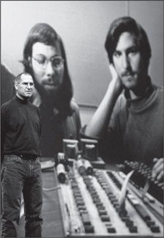
На Macworld 2006 года — на фоне слайда с ним и Возняком тридцатилетней давности
FireWire
FireWire
His personality was reflected in the products he created. Just as the core of Apple’s philosophy, from the original Macintosh in 1984 to the iPad a generation later, was the end-to-end integration of hardware and software, so too was it the case with Steve Jobs: His passions, perfectionism, demons, desires, artistry, devilry, and obsession for control were integrally connected to his approach to business and the products that resulted.
| was reflected in | отражалась в |
| end-to-end integration | сквозная интеграция |
| perfectionism | перфекционизм |
| demons | демоны, тёмные стороны |
| artistry | артистизм |
| devilry | дьявольщина, коварство |
| obsession for control | одержимость контролем |
Его личность отражалась в создаваемых им продуктах. Как суть философии Apple — от первого Macintosh в 1984 году до iPad поколением позже — была сквозная интеграция железа и софта, так было и со Стивом Джобсом: его страсти, перфекционизм, демоны, желания, артистизм, дьявольщина и одержимость контролем были неразрывно связаны с подходом к бизнесу и возникавшими в результате продуктами.
The unified field theory that ties together Jobs’s personality and products begins with his most salient trait: his intensity. His silences could be as searing as his rants; he had taught himself to stare without blinking. Sometimes this intensity was charming, in a geeky way, such as when he was explaining the profundity of Bob Dylan’s music or why whatever product he was unveiling at that moment was the most amazing thing that Apple had ever made. At other times it could be terrifying, such as when he was fulminating about Google or Microsoft ripping off Apple.
| unified field theory | единая теория поля |
| salient trait | наиболее заметная черта |
| intensity | напряжённость, накал |
| searing | обжигающие |
| rants | гневные тирады |
| stare without blinking | смотреть не мигая |
| geeky | по-гиковски, по-ботанически |
| profundity | глубина |
| unveiling | представляя |
| fulminating about | громогласно негодуя о |
| ripping off | обворовывая |
Единая теория поля, связывающая личность Джобса и его продукты, начинается с самой заметной черты — его накала. Его молчания могли обжигать не хуже его тирад; он научился смотреть не мигая. Порой этот накал был обаятелен — по-гиковски, как когда он объяснял глубину музыки Боба Дилана или почему продукт, который он в тот момент представлял, был самым потрясающим из всего, что делала Apple. В другие моменты он мог быть пугающим — как когда он громогласно негодовал о том, что Google или Microsoft обворовывают Apple.
This intensity encouraged a binary view of the world. Colleagues referred to the hero/shithead dichotomy. You were either one or the other, sometimes on the same day. The same was true of products, ideas, even food: Something was either “the best thing ever,” or it was shitty, brain-dead, inedible. As a result, any perceived flaw could set off a rant. The finish on a piece of metal, the curve of the head of a screw, the shade of blue on a box, the intuitiveness of a navigation screen—he would declare them to “completely suck” until that moment when he suddenly pronounced them “absolutely perfect.” He thought of himself as an artist, which he was, and he indulged in the temperament of one.
| a binary view | бинарный, чёрно-белый взгляд |
| dichotomy | разделение на два, дихотомия |
| brain-dead | безжизненное, тупое |
| inedible | несъедобное |
| any perceived flaw | любой замеченный изъян |
| set off a rant | запустить тираду |
| the finish on a piece of metal | полировка куска металла |
| the curve of the head of a screw | изгиб головки винта |
| intuitiveness | интуитивность |
| completely suck | полный отстой |
| pronounced them | объявлял их |
| indulged in the temperament of one | потворствовал нраву художника |
Этот накал порождал бинарный взгляд на мир. Коллеги говорили о дихотомии «герой/дерьмо». Ты был либо тем, либо другим — порой в один и тот же день. То же касалось продуктов, идей и даже еды: что-то было либо «лучшим за всю историю», либо паршивым, безжизненным, несъедобным. В результате любой замеченный изъян мог запустить тираду. Полировка куска металла, изгиб головки винта, оттенок синего на коробке, интуитивность навигационного экрана — он объявлял всё это «полным отстоем», пока вдруг не провозглашал «абсолютно совершенным». Он считал себя художником — и был им — и потворствовал нраву художника.
His quest for perfection led to his compulsion for Apple to have end-to-end control of every product that it made. He got hives, or worse, when contemplating great Apple software running on another company’s crappy hardware, and he likewise was allergic to the thought of unapproved apps or content polluting the perfection of an Apple device. This ability to integrate hardware and software and content into one unified system enabled him to impose simplicity. The astronomer Johannes Kepler declared that “nature loves simplicity and unity.” So did Steve Jobs.
| quest for perfection | погоня за совершенством |
| compulsion | навязчивое стремление |
| got hives | покрывался сыпью (от нервов) |
| contemplating | представляя, обдумывая |
| crappy hardware | паршивое железо |
| allergic to the thought | аллергичен к мысли |
| unapproved apps | неодобренные приложения |
| polluting the perfection | оскверняя совершенство |
| impose simplicity | навязать простоту |
| astronomer | астроном |
| unity | единство |
Погоня за совершенством порождала навязчивое стремление Apple к сквозному контролю над каждым своим продуктом. Он покрывался сыпью — или того хуже — при мысли о великолепном софте Apple на чужом паршивом железе и был столь же аллергичен к мысли о неодобренных приложениях или контенте, оскверняющих совершенство устройства Apple. Это умение соединять железо, софт и контент в единую систему позволяло ему навязывать простоту. Астроном Иоганн Кеплер заявил, что «природа любит простоту и единство». Как и Стив Джобс.
This instinct for integrated systems put him squarely on one side of the most fundamental divide in the digital world: open versus closed. The hacker ethos handed down from the Homebrew Computer Club favored the open approach, in which there was little centralized control and people were free to modify hardware and software, share code, write to open standards, shun proprietary systems, and have content and apps that were compatible with a variety of devices and operating systems. The young Wozniak was in that camp: The Apple II he designed was easily opened and sported plenty of slots and ports that people could jack into as they pleased. With the Macintosh Jobs became a founding father of the other camp. The Macintosh would be like an appliance, with the hardware and software tightly woven together and closed to modifications. The hacker ethos would be sacrificed in order to create a seamless and simple user experience.
| put him squarely on one side | поставил его строго на одну сторону |
| the most fundamental divide | фундаментальнейший водораздел |
| ethos | этика, дух, мировоззрение |
| handed down | переданное по наследству |
| favored | благоволил, предпочитал |
| shun proprietary systems | избегать закрытых проприетарных систем |
| compatible with | совместимый с |
| was in that camp | был в том лагере |
| sported plenty of slots and ports | щеголял множеством слотов и портов |
| jack into as they pleased | подключаться куда вздумается |
| an appliance | бытовой прибор |
| tightly woven together | тесно сплетены |
| sacrificed | принесена в жертву |
Этот инстинкт интегрированных систем ставил его строго на одну сторону фундаментальнейшего водораздела цифрового мира: открытое против закрытого. Хакерская этика, унаследованная от Homebrew Computer Club, предпочитала открытый подход — с минимумом централизованного контроля, где люди вольны менять железо и софт, делиться кодом, писать по открытым стандартам, избегать проприетарных систем и иметь контент и приложения, совместимые с разными устройствами и системами. Молодой Возняк был в том лагере: его Apple II легко открывался и щеголял множеством слотов и портов, куда можно было подключаться сколько душе угодно. С Macintosh Джобс стал отцом-основателем другого лагеря. Macintosh должен был стать бытовым прибором — с железом и софтом, тесно сплетёнными и закрытыми для изменений. Хакерская этика приносилась в жертву ради бесшовного и простого пользовательского опыта.
This led Jobs to decree that the Macintosh operating system would not be available for any other company’s hardware. Microsoft pursued the opposite strategy, allowing its Windows operating system to be promiscuously licensed. That did not produce the most elegant computers, but it did lead to Microsoft’s dominating the world of operating systems. After Apple’s market share shrank to less than 5%, Microsoft’s approach was declared the winner in the personal computer realm.
| decree | постановить |
| pursued the opposite strategy | избрала противоположную стратегию |
| promiscuously licensed | лицензировалась без разбора, направо и налево |
| elegant | изящные |
| dominating | доминирование |
| market share shrank | доля рынка сжалась |
| was declared the winner | была объявлена победителем |
| realm | сфера, область |
Это привело Джобса к решению: операционная система Macintosh не будет доступна для железа других компаний. Microsoft избрала противоположную стратегию, лицензируя Windows направо и налево. Это не дало самых изящных компьютеров, но привело Microsoft к доминированию в мире операционных систем. Когда доля рынка Apple сжалась до менее чем 5%, подход Microsoft объявили победителем в сфере персональных компьютеров.
In the longer run, however, there proved to be some advantages to Jobs’s model. Even with a small market share, Apple was able to maintain a huge profit margin while other computer makers were commoditized. In 2010, for example, Apple had just 7% of the revenue in the personal computer market, but it grabbed 35% of the operating profit.
| in the longer run | в более долгой перспективе |
| profit margin | маржа прибыли |
| commoditized | превращались в безликий товар |
| revenue | выручка |
| grabbed | забрала |
| operating profit | операционная прибыль |
В более долгой перспективе, однако, у модели Джобса обнаружились преимущества. Даже с малой долей рынка Apple сохраняла огромную маржу прибыли, пока другие производители компьютеров превращались в безликий товар. В 2010 году, например, у Apple было лишь 7% выручки рынка персональных компьютеров, но она забрала 35% операционной прибыли.
More significantly, in the early 2000s Jobs’s insistence on end-to-end integration gave Apple an advantage in developing a digital hub strategy, which allowed your desktop computer to link seamlessly with a variety of portable devices. The iPod, for example, was part of a closed and tightly integrated system. To use it, you had to use Apple’s iTunes software and download content from its iTunes Store. The result was that the iPod, like the iPhone and iPad that followed, was an elegant delight in contrast to the kludgy rival products that did not offer a seamless end-to-end experience.
| insistence on | настойчивое требование |
| digital hub strategy | стратегия цифрового хаба |
| link seamlessly | бесшовно связываться |
| portable devices | портативные устройства |
| download content | скачивать контент |
| an elegant delight | изящная отрада |
| in contrast to | в отличие от |
| kludgy rival products | корявые продукты конкурентов |
Что ещё важнее, в начале 2000-х настойчивость Джобса в сквозной интеграции дала Apple преимущество в разработке стратегии цифрового хаба, позволявшей настольному компьютеру бесшовно связываться с множеством портативных устройств. iPod, например, был частью закрытой и тесно интегрированной системы. Чтобы им пользоваться, нужен был софт Apple iTunes и скачивание контента из iTunes Store. В результате iPod, как последовавшие за ним iPhone и iPad, был изящной отрадой — в отличие от корявых продуктов конкурентов без бесшовного сквозного опыта.
The strategy worked. In May 2000 Apple’s market value was one-twentieth that of Microsoft. In May 2010 Apple surpassed Microsoft as the world’s most valuable technology company, and by September 2011 it was worth 70% more than Microsoft. In the first quarter of 2011 the market for Windows PCs shrank by 1%, while the market for Macs grew 28%.
| market value | рыночная стоимость |
| one-twentieth that of | одна двадцатая от |
| surpassed | превзошла |
| was worth 70% more | стоила на 70% больше |
| shrank by 1% | сжался на 1% |
Стратегия сработала. В мае 2000 года рыночная стоимость Apple составляла одну двадцатую от Microsoft. В мае 2010-го Apple превзошла Microsoft как самая дорогая технологическая компания мира, а к сентябрю 2011-го стоила на 70% больше Microsoft. В первом квартале 2011 года рынок Windows-ПК сжался на 1%, а рынок Mac вырос на 28%.
By then the battle had begun anew in the world of mobile devices. Google took the more open approach, and it made its Android operating system available for use by any maker of tablets or cell phones. By 2011 its share of the mobile market matched Apple’s. The drawback of Android’s openness was the fragmentation that resulted. Various handset and tablet makers modified Android into dozens of variants and flavors, making it hard for apps to remain consistent or make full use if its features. There were merits to both approaches. Some people wanted the freedom to use more open systems and have more choices of hardware; others clearly preferred Apple’s tight integration and control, which led to products that had simpler interfaces, longer battery life, greater user-friendliness, and easier handling of content.
| begun anew | началась заново |
| made its Android available | сделала свой Android доступным |
| matched Apple’s | сравнялась с долей Apple |
| drawback | недостаток |
| fragmentation | фрагментация |
| handset and tablet makers | производители телефонов и планшетов |
| variants and flavors | варианты и разновидности |
| remain consistent | оставаться согласованными |
| merits | достоинства |
| battery life | время работы от батареи |
| user-friendliness | дружелюбие к пользователю |
| handling of content | работа с контентом |
К тому времени битва началась заново в мире мобильных устройств. Google избрала более открытый подход, сделав Android доступным для любых производителей планшетов и телефонов. К 2011 году её доля мобильного рынка сравнялась с долей Apple. Недостатком открытости Android стала фрагментация. Разные производители телефонов и планшетов превращали Android в десятки вариантов и разновидностей, из-за чего приложениям трудно было оставаться согласованными и полностью использовать возможности. У обоих подходов были достоинства. Кто-то хотел свободы открытых систем и большего выбора железа; другие явно предпочитали тесную интеграцию и контроль Apple, дававшие продукты с более простыми интерфейсами, большим временем работы, большей дружелюбностью и более лёгкой работой с контентом.
The downside of Jobs’s approach was that his desire to delight the user led him to resist empowering the user. Among the most thoughtful proponents of an open environment is Jonathan Zittrain of Harvard. He begins his book The Future of the Internet—And How to Stop It with the scene of Jobs introducing the iPhone, and he warns of the consequences of replacing personal computers with “sterile appliances tethered to a network of control.” Even more fervent is Cory Doctorow, who wrote a manifesto called “Why I Won’t Buy an iPad” for Boing Boing. “There’s a lot of thoughtfulness and smarts that went into the design. But there’s also a palpable contempt for the owner,” he wrote. “Buying an iPad for your kids isn’t a means of jump-starting the realization that the world is yours to take apart and reassemble; it’s a way of telling your offspring that even changing the batteries is something you have to leave to the professionals.”
| downside | обратная сторона |
| delight the user | восхитить пользователя |
| empowering the user | наделение пользователя силой, свободой |
| proponents | сторонники |
| warns of the consequences | предупреждает о последствиях |
| sterile appliances | стерильные приборы |
| tethered to a network of control | привязанные к сети контроля |
| fervent | пылкий, яростный |
| palpable contempt | ощутимое презрение |
| jump-starting | запуск, пробуждение |
| take apart and reassemble | разобрать и собрать заново |
| offspring | потомство, дети |
Обратной стороной подхода Джобса было то, что желание восхитить пользователя вело его к сопротивлению наделению пользователя свободой. Среди самых вдумчивых сторонников открытой среды — Джонатан Зиттрейн из Гарварда. Свою книгу «Будущее интернета — и как его остановить» он начинает со сцены представления Джобсом iPhone и предупреждает о последствиях замены персональных компьютеров «стерильными приборами, привязанными к сети контроля». Ещё пылче Кори Доктороу, написавший для Boing Boing манифест «Почему я не куплю iPad». «В дизайн вложено много ума и продуманности. Но в нём есть и ощутимое презрение к владельцу, — писал он. — Купить ребёнку iPad — не способ пробудить осознание, что мир можно разобрать и собрать заново; это способ сказать потомству, что даже смену батареек надо оставлять профессионалам».
For Jobs, belief in an integrated approach was a matter of righteousness. “We do these things not because we are control freaks,” he explained. “We do them because we want to make great products, because we care about the user, and because we like to take responsibility for the entire experience rather than turn out the crap that other people make.” He also believed he was doing people a service: “They’re busy doing whatever they do best, and they want us to do what we do best. Their lives are crowded; they have other things to do than think about how to integrate their computers and devices.”
| a matter of righteousness | вопрос праведности, убеждённой правоты |
| control freaks | контрол-фрики, одержимые контролем |
| take responsibility for | брать ответственность за |
| turn out the crap | выпускать дрянь |
| doing people a service | оказывая людям услугу |
| their lives are crowded | их жизнь переполнена |
Для Джобса вера в интегрированный подход была вопросом праведности. «Мы делаем это не потому, что мы контрол-фрики, — объяснял он. — Мы делаем это, потому что хотим делать великие продукты, потому что нам небезразличен пользователь и потому что нам нравится брать ответственность за весь опыт, а не выпускать дрянь, как делают другие». Он также верил, что оказывает людям услугу: «Они заняты тем, что у них получается лучше всего, и хотят, чтобы мы делали то, что лучше всего получается у нас. Их жизнь переполнена; у них есть дела поважнее, чем думать, как интегрировать свои компьютеры и устройства».
This approach sometimes went against Apple’s short-term business interests. But in a world filled with junky devices, inscrutable error messages, and annoying interfaces, it led to astonishing products marked by beguiling user experiences. Using an Apple product could be as sublime as walking in one of the Zen gardens of Kyoto that Jobs loved, and neither experience was created by worshipping at the altar of openness or by letting a thousand flowers bloom. Sometimes it’s nice to be in the hands of a control freak.
| went against | шёл вразрез с |
| short-term business interests | краткосрочные деловые интересы |
| junky devices | хламные устройства |
| inscrutable error messages | непостижимые сообщения об ошибках |
| beguiling user experiences | пленительный пользовательский опыт |
| sublime | возвышенный |
| worshipping at the altar of openness | поклонение алтарю открытости |
| letting a thousand flowers bloom | позволяя расцвести тысяче цветов |
Этот подход порой шёл вразрез с краткосрочными деловыми интересами Apple. Но в мире, полном хламных устройств, непостижимых сообщений об ошибках и раздражающих интерфейсов, он давал поразительные продукты с пленительным пользовательским опытом. Пользоваться продуктом Apple могло быть столь же возвышенно, как гулять в одном из любимых Джобсом дзэнских садов Киото, — и ни то ни другое не рождалось поклонением алтарю открытости или позволением расцвести тысяче цветов. Иногда приятно побыть в руках контрол-фрика.
Jobs’s intensity was also evident in his ability to focus. He would set priorities, aim his laser attention on them, and filter out distractions. If something engaged him—the user interface for the original Macintosh, the design of the iPod and iPhone, getting music companies into the iTunes Store—he was relentless. But if he did not want to deal with something—a legal annoyance, a business issue, his cancer diagnosis, a family tug—he would resolutely ignore it. That focus allowed him to say no. He got Apple back on track by cutting all except a few core products. He made devices simpler by eliminating buttons, software simpler by eliminating features, and interfaces simpler by eliminating options.
| evident in | заметна в |
| set priorities | расставлял приоритеты |
| aim his laser attention | нацеливал лазерное внимание |
| filter out distractions | отсеивать отвлекающее |
| engaged him | захватывало его |
| relentless | неутомим, неумолим |
| a legal annoyance | юридическая досада |
| a family tug | семейное перетягивание |
| resolutely ignore it | решительно игнорировал |
| got Apple back on track | вернул Apple на путь |
| core products | ключевые продукты |
| eliminating | устраняя |
Накал Джобса был заметен и в умении сосредотачиваться. Он расставлял приоритеты, нацеливал на них лазерное внимание и отсеивал отвлекающее. Если что-то его захватывало — интерфейс первого Macintosh, дизайн iPod и iPhone, заманивание музыкальных компаний в iTunes Store, — он был неумолим. Но если он не хотел иметь дело с чем-то — юридической досадой, деловым вопросом, диагнозом рака, семейным перетягиванием, — он решительно это игнорировал. Этот фокус позволял ему говорить «нет». Он вернул Apple на путь, урезав всё, кроме нескольких ключевых продуктов. Он делал устройства проще, убирая кнопки, софт проще — убирая функции, интерфейсы проще — убирая опции.
He attributed his ability to focus and his love of simplicity to his Zen training. It honed his appreciation for intuition, showed him how to filter out anything that was distracting or unnecessary, and nurtured in him an aesthetic based on minimalism.
| attributed his ability to focus and his love of simplicity to | объяснял свою способность сосредоточиваться и любовь к простоте чем-либо; attribute something to something — объяснять одно другим |
| Zen training | дзэнская практика |
| honed | отточила |
| appreciation for intuition | оценка интуиции, доверие к ней |
| nurtured | взрастила |
| an aesthetic based on minimalism | эстетика минимализма |
Умение сосредотачиваться и любовь к простоте он приписывал дзэнской практике. Она отточила его доверие к интуиции, показала, как отсеивать всё отвлекающее и лишнее, и взрастила в нём эстетику минимализма.
Unfortunately his Zen training never quite produced in him a Zen-like calm or inner serenity, and that too is part of his legacy. He was often tightly coiled and impatient, traits he made no effort to hide. Most people have a regulator between their mind and mouth that modulates their brutish sentiments and spikiest impulses. Not Jobs. He made a point of being brutally honest. “My job is to say when something sucks rather than sugarcoat it,” he said. This made him charismatic and inspiring, yet also, to use the technical term, an asshole at times.
| inner serenity | внутренняя безмятежность |
| tightly coiled | туго сжатый, взвинченный |
| made no effort to hide | не пытался скрыть |
| a regulator | регулятор, сдерживающий механизм |
| modulates | смягчает, модулирует |
| brutish sentiments | грубые чувства |
| spikiest impulses | самые колючие порывы |
| made a point of | считал своим принципом |
| brutally honest | беспощадно честный |
| sugarcoat it | приукрашивать, подслащивать |
| charismatic and inspiring | харизматичным и вдохновляющим |
К сожалению, дзэнская практика так и не породила в нём дзэнского спокойствия или внутренней безмятежности — и это тоже часть его наследия. Он часто был взвинчен и нетерпелив, и этих черт не пытался скрывать. У большинства людей между умом и ртом есть регулятор, смягчающий грубые чувства и самые колючие порывы. У Джобса — нет. Он считал своим принципом беспощадную честность. «Моя работа — сказать, когда что-то отстой, а не приукрашивать», — говорил он. Это делало его харизматичным и вдохновляющим, но также, говоря техническим языком, порой — мудаком.
Andy Hertzfeld once told me, “The one question I’d truly love Steve to answer is, ‘Why are you sometimes so mean?’” Even his family members wondered whether he simply lacked the filter that restrains people from venting their wounding thoughts or willfully bypassed it. Jobs claimed it was the former. “This is who I am, and you can’t expect me to be someone I’m not,” he replied when I asked him the question. But I think he actually could have controlled himself, if he had wanted. When he hurt people, it was not because he was lacking in emotional awareness. Quite the contrary: He could size people up, understand their inner thoughts, and know how to relate to them, cajole them, or hurt them at will.
| so mean | такой злой, жестокий |
| lacked the filter | лишён фильтра |
| restrains people from venting | удерживает людей от излияния |
| wounding thoughts | ранящие мысли |
| willfully bypassed it | сознательно обходил его |
| the former | первое (из двух) |
| lacking in emotional awareness | лишён эмоционального понимания |
| quite the contrary | совсем наоборот |
| size people up | оценивать людей, раскусить |
| cajole them | умасливать их |
| at will | по желанию, когда захочет |
Энди Херцфельд однажды сказал мне: «Вопрос, на который я очень хотел бы услышать ответ Стива: „Почему ты иногда такой жестокий?“» Даже члены его семьи гадали, то ли у него просто нет фильтра, удерживающего людей от излияния ранящих мыслей, то ли он сознательно его обходит. Джобс утверждал, что первое. «Я такой, какой есть, и нельзя ждать, что я буду кем-то другим», — ответил он на мой вопрос. Но я думаю, он на самом деле мог бы сдерживаться, если бы захотел. Когда он ранил людей, это было не от недостатка эмоционального понимания. Совсем наоборот: он умел раскусить человека, понять его внутренние мысли и знал, как найти подход, умаслить или ранить — по желанию.
The nasty edge to his personality was not necessary. It hindered him more than it helped him. But it did, at times, serve a purpose. Polite and velvety leaders, who take care to avoid bruising others, are generally not as effective at forcing change. Dozens of the colleagues whom Jobs most abused ended their litany of horror stories by saying that he got them to do things they never dreamed possible. And he created a corporation crammed with A players.
| the nasty edge | резкая, злая грань |
| hindered him | мешала ему |
| serve a purpose | служила цели |
| velvety leaders | бархатные, обходительные лидеры |
| bruising others | задевать, травмировать других |
| forcing change | проведение перемен |
| abused | обижал, третировал |
| litany of horror stories | вереница ужасных историй |
| never dreamed possible | о чём и не мечтали |
| crammed with A players | набитая игроками высшего класса |
Резкая грань его личности не была необходимостью. Она мешала ему больше, чем помогала. Но порой служила цели. Вежливые, бархатные лидеры, бережно избегающие задевать других, обычно менее эффективны в проведении перемен. Десятки коллег, которых Джобс сильнее всего третировал, заканчивали свои вереницы ужасных историй словами, что он заставил их сделать то, о чём они и не мечтали. И он создал корпорацию, набитую игроками высшего класса.
The saga of Steve Jobs is the Silicon Valley creation myth writ large: launching a startup in his parents’ garage and building it into the world’s most valuable company. He didn’t invent many things outright, but he was a master at putting together ideas, art, and technology in ways that invented the future. He designed the Mac after appreciating the power of graphical interfaces in a way that Xerox was unable to do, and he created the iPod after grasping the joy of having a thousand songs in your pocket in a way that Sony, which had all the assets and heritage, never could accomplish. Some leaders push innovations by being good at the big picture. Others do so by mastering details. Jobs did both, relentlessly. As a result he launched a series of products over three decades that transformed whole industries:
| saga | сага, эпопея |
| creation myth writ large | миф о сотворении, написанный крупным шрифтом |
| launching a startup | запуск стартапа |
| outright | с нуля, напрямую |
| putting together | соединяя воедино |
| invented the future | изобретали будущее |
| graphical interfaces | графические интерфейсы |
| grasping the joy | постигнув радость |
| assets and heritage | активы и наследие |
| the big picture | общая картина |
| mastering details | владение деталями |
| relentlessly | неустанно |
Сага Стива Джобса — это миф о сотворении Кремниевой долины, написанный крупным шрифтом: запустить стартап в родительском гараже и превратить его в самую дорогую компанию мира. Многое он не изобрёл с нуля, но был мастером соединять идеи, искусство и технологию так, что это изобретало будущее. Он спроектировал Mac, оценив мощь графических интерфейсов так, как не смогла Xerox, и создал iPod, постигнув радость тысячи песен в кармане так, как никогда не смогла бы Sony со всеми её активами и наследием. Одни лидеры продвигают инновации умением видеть общую картину. Другие — владением деталями. Джобс делал и то и другое, неустанно. В результате за три десятилетия он выпустил серию продуктов, преобразивших целые индустрии:
• The Apple II, which took Wozniak’s circuit board and turned it into the first personal computer that was not just for hobbyists.
• Apple II, превративший плату Возняка в первый персональный компьютер не только для энтузиастов.
• The Macintosh, which begat the home computer revolution and popularized graphical user interfaces.
• Macintosh, породивший революцию домашних компьютеров и популяризировавший графические интерфейсы.
• Toy Story and other Pixar blockbusters, which opened up the miracle of digital imagination.
• «История игрушек» и другие пиксаровские блокбастеры, открывшие чудо цифрового воображения.
• Apple stores, which reinvented the role of a store in defining a brand.
• Магазины Apple, заново изобрёвшие роль магазина в определении бренда.
• The iPod, which changed the way we consume music.
• iPod, изменивший то, как мы потребляем музыку.
• The iTunes Store, which saved the music industry.
• iTunes Store, спасший музыкальную индустрию.
• The iPhone, which turned mobile phones into music, photography, video, email, and web devices.
• iPhone, превративший мобильные телефоны в устройства для музыки, фото, видео, почты и веба.
• The App Store, which spawned a new content-creation industry.
• App Store, породивший новую индустрию создания контента.
• The iPad, which launched tablet computing and offered a platform for digital newspapers, magazines, books, and videos.
• iPad, запустивший планшетные компьютеры и давший платформу цифровым газетам, журналам, книгам и видео.
• iCloud, which demoted the computer from its central role in managing our content and let all of our devices sync seamlessly.
• iCloud, разжаловавший компьютер из центральной роли в управлении нашим контентом и позволивший всем устройствам синхронизироваться бесшовно.
• And Apple itself, which Jobs considered his greatest creation, a place where imagination was nurtured, applied, and executed in ways so creative that it became the most valuable company on earth.
• И сама Apple, которую Джобс считал своим величайшим творением, — место, где воображение взращивали, применяли и воплощали настолько творчески, что она стала самой дорогой компанией на земле.
Was he smart? No, not exceptionally. Instead, he was a genius. His imaginative leaps were instinctive, unexpected, and at times magical. He was, indeed, an example of what the mathematician Mark Kac called a magician genius, someone whose insights come out of the blue and require intuition more than mere mental processing power. Like a pathfinder, he could absorb information, sniff the winds, and sense what lay ahead.
| exceptionally | исключительно |
| imaginative leaps | скачки воображения |
| instinctive | инстинктивные |
| come out of the blue | приходят ниоткуда, как гром среди ясного неба |
| mental processing power | вычислительная мощь ума |
| pathfinder | первопроходец, следопыт |
| sniff the winds | чуять ветра |
| sense what lay ahead | ощущать, что впереди |
Был ли он умён? Нет, не исключительно. Вместо этого он был гением. Его скачки воображения были инстинктивны, неожиданны и порой волшебны. Он был, поистине, примером того, что математик Марк Кац называл гением-магом, — человека, чьи озарения приходят ниоткуда и требуют интуиции больше, чем чистой вычислительной мощи ума. Как первопроходец, он мог впитывать информацию, чуять ветра и ощущать, что ждёт впереди.
Steve Jobs thus became the greatest business executive of our era, the one most certain to be remembered a century from now. History will place him in the pantheon right next to Edison and Ford. More than anyone else of his time, he made products that were completely innovative, combining the power of poetry and processors. With a ferocity that could make working with him as unsettling as it was inspiring, he also built the world’s most creative company. And he was able to infuse into its DNA the design sensibilities, perfectionism, and imagination that make it likely to be, even decades from now, the company that thrives best at the intersection of artistry and technology.
| business executive | деловой руководитель |
| most certain to be remembered | наиболее вероятно останется в памяти |
| pantheon | пантеон |
| ferocity | свирепость, неистовство |
| as unsettling as it was inspiring | настолько же тревожащим, насколько вдохновляющим |
| infuse into its DNA | влил в её ДНК |
| design sensibilities | дизайнерская чуткость |
| thrives best | процветает лучше всего |
| the intersection of artistry and technology | пересечение артистизма и технологии |
Так Стив Джобс стал величайшим деловым руководителем нашей эпохи, тем, кто с наибольшей вероятностью останется в памяти через столетие. История поставит его в пантеон рядом с Эдисоном и Фордом. Больше, чем кто-либо в его время, он делал совершенно новаторские продукты, соединяя мощь поэзии и процессоров. С неистовством, делавшим работу с ним настолько же тревожащей, насколько и вдохновляющей, он построил и самую творческую компанию мира. И сумел влить в её ДНК дизайнерскую чуткость, перфекционизм и воображение, благодаря которым она, вероятно, и спустя десятилетия будет процветать на пересечении артистизма и технологии.
And One More Thing . . .
И ещё кое-что…
Biographers are supposed to have the last word. But this is a biography of Steve Jobs. Even though he did not impose his legendary desire for control on this project, I suspect that I would not be conveying the right feel for him—the way he asserted himself in any situation—if I just shuffled him onto history’s stage without letting him have some last words.
| have the last word | сказать последнее слово |
| impose | навязывать |
| conveying the right feel | передавая верное ощущение |
| asserted himself | утверждал себя |
| shuffled him onto history’s stage | вытолкал его на сцену истории |
Биографам положено последнее слово. Но это биография Стива Джобса. Хотя своё легендарное стремление к контролю он на этот проект не навязывал, я подозреваю, что не передал бы верного ощущения от него — того, как он утверждал себя в любой ситуации, — если бы просто вытолкал его на сцену истории, не дав сказать последних слов.
Over the course of our conversations, there were many times when he reflected on what he hoped his legacy would be. Here are those thoughts, in his own words:
| over the course of | в ходе |
| reflected on | размышлял о |
| legacy | наследие |
| in his own words | его собственными словами |
В ходе наших бесед он не раз размышлял о том, каким, как он надеялся, будет его наследие. Вот эти мысли — его собственными словами:
My passion has been to build an enduring company where people were motivated to make great products. Everything else was secondary. Sure, it was great to make a profit, because that was what allowed you to make great products. But the products, not the profits, were the motivation. Sculley flipped these priorities to where the goal was to make money. It’s a subtle difference, but it ends up meaning everything: the people you hire, who gets promoted, what you discuss in meetings.
| an enduring company | долговечная компания |
| secondary | второстепенно |
| make a profit | получать прибыль |
| flipped these priorities | перевернул эти приоритеты |
| a subtle difference | тонкое различие |
| ends up meaning everything | в итоге значит всё |
| gets promoted | получает повышение |
Моей страстью было построить долговечную компанию, где люди мотивированы делать великие продукты. Всё остальное — вторично. Конечно, получать прибыль было здорово, ведь она позволяла делать великие продукты. Но мотивацией были продукты, а не прибыль. Скалли перевернул эти приоритеты так, что целью стало зарабатывание денег. Различие тонкое, но в итоге оно значит всё: кого ты нанимаешь, кого повышают, что вы обсуждаете на совещаниях.
Some people say, “Give the customers what they want.” But that’s not my approach. Our job is to figure out what they’re going to want before they do. I think Henry Ford once said, “If I’d asked customers what they wanted, they would have told me, ‘A faster horse!’” People don’t know what they want until you show it to them. That’s why I never rely on market research. Our task is to read things that are not yet on the page.
| approach | подход |
| figure out | выяснить, понять |
| a faster horse | более быстрая лошадь |
| rely on | полагаться на |
| market research | маркетинговые исследования |
| read things that are not yet on the page | читать то, чего ещё нет на странице |
Некоторые говорят: «Дайте покупателям то, чего они хотят». Но это не мой подход. Наша работа — понять, чего они захотят, раньше них самих. Кажется, Генри Форд однажды сказал: «Спроси я покупателей, чего они хотят, они бы ответили: „Лошадь побыстрее!“» Люди не знают, чего хотят, пока ты им это не покажешь. Поэтому я никогда не полагаюсь на маркетинговые исследования. Наша задача — читать то, чего ещё нет на странице.
Edwin Land of Polaroid talked about the intersection of the humanities and science. I like that intersection. There’s something magical about that place. There are a lot of people innovating, and that’s not the main distinction of my career. The reason Apple resonates with people is that there’s a deep current of humanity in our innovation. I think great artists and great engineers are similar, in that they both have a desire to express themselves. In fact some of the best people working on the original Mac were poets and musicians on the side. In the seventies computers became a way for people to express their creativity. Great artists like Leonardo da Vinci and Michelangelo were also great at science. Michelangelo knew a lot about how to quarry stone, not just how to be a sculptor.
| the humanities | гуманитарные науки |
| distinction | отличие, особенность |
| resonates with people | находит отклик у людей |
| a deep current of humanity | глубокое течение человечности |
| express themselves | выразить себя |
| on the side | в свободное время, по совместительству |
| quarry stone | добывать камень в каменоломне |
| sculptor | скульптор |
Эдвин Лэнд из Polaroid говорил о пересечении гуманитарных наук и науки. Мне нравится это пересечение. В нём есть что-то волшебное. Многие занимаются инновациями, и не это главное отличие моей карьеры. Apple находит отклик у людей потому, что в наших инновациях есть глубокое течение человечности. Думаю, великие художники и великие инженеры похожи: у обоих есть желание выразить себя. По сути, некоторые из лучших людей, работавших над первым Mac, были по совместительству поэтами и музыкантами. В семидесятые компьютеры стали для людей способом выразить творчество. Великие художники вроде Леонардо да Винчи и Микеланджело были сильны и в науке. Микеланджело много знал о добыче камня, а не только о том, как быть скульптором.
People pay us to integrate things for them, because they don’t have the time to think about this stuff 24/7. If you have an extreme passion for producing great products, it pushes you to be integrated, to connect your hardware and your software and content management. You want to break new ground, so you have to do it yourself. If you want to allow your products to be open to other hardware or software, you have to give up some of your vision.
| integrate things | интегрировать вещи, соединять |
| 24/7 | круглосуточно |
| extreme passion | крайняя страсть |
| content management | управление контентом |
| break new ground | открывать новые горизонты |
| give up some of your vision | поступиться частью своего видения |
Люди платят нам за то, чтобы мы соединяли вещи за них, — у них нет времени думать об этом круглосуточно. Если у тебя крайняя страсть к созданию великих продуктов, она толкает тебя к интеграции, к соединению железа, софта и управления контентом. Ты хочешь открывать новые горизонты — значит, должен делать это сам. Если хочешь открыть свои продукты другому железу и софту, придётся поступиться частью видения.
At different times in the past, there were companies that exemplified Silicon Valley. It was Hewlett-Packard for a long time. Then, in the semiconductor era, it was Fairchild and Intel. I think that it was Apple for a while, and then that faded. And then today, I think it’s Apple and Google—and a little more so Apple. I think Apple has stood the test of time. It’s been around for a while, but it’s still at the cutting edge of what’s going on.
| exemplified Silicon Valley | воплощали собой Кремниевую долину |
| semiconductor era | полупроводниковая эра |
| faded | померкло |
| stood the test of time | выдержала проверку временем |
| at the cutting edge | на переднем крае |
В разные времена были компании, воплощавшие собой Кремниевую долину. Долгое время это была Hewlett-Packard. Затем, в полупроводниковую эру, — Fairchild и Intel. Думаю, какое-то время это была Apple, а потом это померкло. Сегодня, я считаю, это Apple и Google — и чуть больше Apple. Думаю, Apple выдержала проверку временем. Она существует давно, но всё ещё на переднем крае происходящего.
It’s easy to throw stones at Microsoft. They’ve clearly fallen from their dominance. They’ve become mostly irrelevant. And yet I appreciate what they did and how hard it was. They were very good at the business side of things. They were never as ambitious product-wise as they should have been. Bill likes to portray himself as a man of the product, but he’s really not. He’s a businessperson. Winning business was more important than making great products. He ended up the wealthiest guy around, and if that was his goal, then he achieved it. But it’s never been my goal, and I wonder, in the end, if it was his goal. I admire him for the company he built—it’s impressive—and I enjoyed working with him. He’s bright and actually has a good sense of humor. But Microsoft never had the humanities and liberal arts in its DNA. Even when they saw the Mac, they couldn’t copy it well. They totally didn’t get it.
| throw stones at | бросать камни в, ругать |
| fallen from their dominance | утратили доминирование |
| irrelevant | незначимые, нерелевантные |
| product-wise | в плане продукта |
| portray himself | изображать себя |
| the wealthiest guy around | самый богатый человек вокруг |
| admire him | восхищаюсь им |
| liberal arts | свободные искусства |
| they totally didn’t get it | они совершенно этого не поняли |
Легко бросать камни в Microsoft. Они явно утратили доминирование и стали в основном незначимыми. И всё же я ценю то, что они сделали, и как это было трудно. Они были очень сильны в деловой стороне. В плане продукта они никогда не были настолько амбициозны, насколько следовало. Билл любит изображать себя человеком продукта, но это не так. Он делец. Победа в бизнесе значила для него больше, чем великие продукты. Он стал самым богатым человеком вокруг — и если это было его целью, он её достиг. Но моей целью это никогда не было, и я гадаю, была ли она его целью. Я восхищаюсь им за созданную компанию — это впечатляет — и мне нравилось с ним работать. Он умён и на самом деле с хорошим чувством юмора. Но у Microsoft в ДНК никогда не было гуманитарных наук и свободных искусств. Даже увидев Mac, они не смогли его хорошо скопировать. Они совершенно этого не поняли.
I have my own theory about why decline happens at companies like IBM or Microsoft. The company does a great job, innovates and becomes a monopoly or close to it in some field, and then the quality of the product becomes less important. The company starts valuing the great salesmen, because they’re the ones who can move the needle on revenues, not the product engineers and designers. So the salespeople end up running the company. John Akers at IBM was a smart, eloquent, fantastic salesperson, but he didn’t know anything about product. The same thing happened at Xerox. When the sales guys run the company, the product guys don’t matter so much, and a lot of them just turn off. It happened at Apple when Sculley came in, which was my fault, and it happened when Ballmer took over at Microsoft. Apple was lucky and it rebounded, but I don’t think anything will change at Microsoft as long as Ballmer is running it.
| decline happens | происходит упадок |
| a monopoly | монополия |
| valuing the great salesmen | начинает ценить великих продавцов |
| move the needle on revenues | сдвинуть стрелку выручки |
| end up running the company | в итоге начинают управлять компанией |
| eloquent | красноречивый |
| turn off | отключаются, гаснут |
| rebounded | отскочила, восстановилась |
У меня есть своя теория, почему в компаниях вроде IBM или Microsoft происходит упадок. Компания отлично работает, внедряет инновации и становится монополией — или почти — в какой-то области, и тогда качество продукта становится менее важным. Компания начинает ценить великих продавцов, ведь именно они сдвигают стрелку выручки, а не инженеры и дизайнеры продукта. Так что продавцы в итоге начинают управлять компанией. Джон Эйкерс в IBM был умным, красноречивым, фантастическим продавцом, но в продукте не смыслил ничего. То же случилось в Xerox. Когда компанией управляют продавцы, люди продукта значат меньше, и многие из них просто гаснут. Это случилось в Apple с приходом Скалли — и это моя вина, — и случилось, когда Microsoft возглавил Балмер. Apple повезло, она восстановилась, но не думаю, что в Microsoft что-то изменится, пока ею управляет Балмер.
I hate it when people call themselves “entrepreneurs” when what they’re really trying to do is launch a startup and then sell or go public, so they can cash in and move on. They’re unwilling to do the work it takes to build a real company, which is the hardest work in business. That’s how you really make a contribution and add to the legacy of those who went before. You build a company that will still stand for something a generation or two from now. That’s what Walt Disney did, and Hewlett and Packard, and the people who built Intel. They created a company to last, not just to make money. That’s what I want Apple to be.
| entrepreneurs | предприниматели |
| go public | выйти на биржу, стать публичной |
| cash in and move on | обналичить и двигаться дальше |
| unwilling | не желающие |
| make a contribution | внести вклад |
| went before | ушли раньше |
| stand for something | значить что-то, стоять за чем-то |
| a company to last | компанию на века |
Меня бесит, когда люди называют себя «предпринимателями», хотя на деле хотят запустить стартап, а затем продать его или выйти на биржу, чтобы обналичиться и двинуться дальше. Они не желают делать работу, нужную для построения настоящей компании, — а это самая трудная работа в бизнесе. Именно так ты по-настоящему вносишь вклад и добавляешь к наследию тех, кто ушёл раньше. Ты строишь компанию, которая и через поколение-два будет значить что-то. Так поступили Уолт Дисней, Хьюлетт и Паккард, люди, построившие Intel. Они создали компанию на века, а не ради денег. Такой я хочу видеть Apple.
I don’t think I run roughshod over people, but if something sucks, I tell people to their face. It’s my job to be honest. I know what I’m talking about, and I usually turn out to be right. That’s the culture I tried to create. We are brutally honest with each other, and anyone can tell me they think I am full of shit and I can tell them the same. And we’ve had some rip-roaring arguments, where we are yelling at each other, and it’s some of the best times I’ve ever had. I feel totally comfortable saying “Ron, that store looks like shit” in front of everyone else. Or I might say “God, we really fucked up the engineering on this” in front of the person that’s responsible. That’s the ante for being in the room: You’ve got to be able to be super honest. Maybe there’s a better way, a gentlemen’s club where we all wear ties and speak in this Brahmin language and velvet code-words, but I don’t know that way, because I am middle class from California.
| run roughshod over people | грубо подавлять людей, не считаться с ними |
| to their face | в лицо, прямо |
| turn out to be right | оказываюсь прав |
| full of shit | несёшь чушь (груб.) |
| rip-roaring arguments | бурные, неистовые споры |
| yelling at each other | орём друг на друга |
| the ante for being in the room | входная ставка для нахождения в комнате |
| a gentlemen’s club | клуб джентльменов |
| Brahmin language and velvet code-words | браминский язык и бархатные эвфемизмы |
| middle class | средний класс |
Не думаю, что я грубо подавляю людей, но если что-то отстой, я говорю это в лицо. Моя работа — быть честным. Я знаю, о чём говорю, и обычно оказываюсь прав. Такую культуру я пытался создать. Мы беспощадно честны друг с другом, и любой может сказать мне, что я несу чушь, а я — ему то же самое. И у нас бывали неистовые споры, когда мы орём друг на друга, — и это одни из лучших моментов в моей жизни. Мне совершенно комфортно сказать при всех: «Рон, этот магазин выглядит как дерьмо». Или: «Боже, мы действительно запороли инженерию вот этого» — в присутствии ответственного. Это входная ставка для нахождения в комнате: ты должен уметь быть сверхчестным. Может, есть способ лучше — джентльменский клуб, где все в галстуках и говорят на браминском языке бархатных эвфемизмов, — но я такого способа не знаю, потому что я из среднего класса, из Калифорнии.
I was hard on people sometimes, probably harder than I needed to be. I remember the time when Reed was six years old, coming home, and I had just fired somebody that day, and I imagined what it was like for that person to tell his family and his young son that he had lost his job. It was hard. But somebody’s got to do it. I figured that it was always my job to make sure that the team was excellent, and if I didn’t do it, nobody was going to do it.
| was hard on people | был суров с людьми |
| harder than I needed to be | суровее, чем требовалось |
| fired somebody | уволил кого-то |
| lost his job | потерял работу |
| somebody’s got to do it | кто-то должен это делать |
| figured | полагал, считал |
Порой я был суров с людьми — вероятно, суровее, чем требовалось. Помню, когда Риду было шесть, он пришёл домой, а я в тот день как раз кого-то уволил — и я представил, каково этому человеку сказать семье и маленькому сыну, что он потерял работу. Это было тяжело. Но кто-то должен это делать. Я полагал, что следить за превосходством команды — всегда моя работа, и не сделай я этого, не сделает никто.
You always have to keep pushing to innovate. Dylan could have sung protest songs forever and probably made a lot of money, but he didn’t. He had to move on, and when he did, by going electric in 1965, he alienated a lot of people. His 1966 Europe tour was his greatest. He would come on and do a set of acoustic guitar, and the audiences loved him. Then he brought out what became The Band, and they would all do an electric set, and the audience sometimes booed. There was one point where he was about to sing “Like a Rolling Stone” and someone from the audience yells “Judas!” And Dylan then says, “Play it fucking loud!” And they did. The Beatles were the same way. They kept evolving, moving, refining their art. That’s what I’ve always tried to do—keep moving. Otherwise, as Dylan says, if you’re not busy being born, you’re busy dying.
| keep pushing to innovate | продолжать подталкивать к инновациям |
| protest songs | песни протеста |
| move on | двигаться дальше |
| going electric | перейдя на электричество (электрогитары) |
| alienated | оттолкнул |
| a set of acoustic guitar | блок на акустической гитаре |
| booed | освистывали |
| refining their art | оттачивая своё искусство |
| if you’re not busy being born, you’re busy dying | если ты не занят рождением, ты занят умиранием |
Всегда нужно продолжать подталкивать к инновациям. Дилан мог бы вечно петь песни протеста и, наверное, заработать кучу денег, но не стал. Ему нужно было двигаться дальше, и когда он это сделал — перейдя на электричество в 1965-м, — многих оттолкнул. Его европейский тур 1966 года был величайшим. Он выходил и играл блок на акустической гитаре, и публика его обожала. Затем он выводил то, что стало The Band, и они играли электрический сет, и публика порой освистывала. Был момент, когда он собрался петь «Like a Rolling Stone», и кто-то из зала крикнул «Иуда!» А Дилан сказал: «Играйте громко, чёрт возьми!» И они сыграли. Beatles были такими же. Они продолжали развиваться, двигаться, оттачивать искусство. Это я всегда и пытался делать — продолжать движение. Иначе, как говорит Дилан: если ты не занят рождением, ты занят умиранием.
What drove me? I think most creative people want to express appreciation for being able to take advantage of the work that’s been done by others before us. I didn’t invent the language or mathematics I use. I make little of my own food, none of my own clothes. Everything I do depends on other members of our species and the shoulders that we stand on. And a lot of us want to contribute something back to our species and to add something to the flow. It’s about trying to express something in the only way that most of us know how—because we can’t write Bob Dylan songs or Tom Stoppard plays. We try to use the talents we do have to express our deep feelings, to show our appreciation of all the contributions that came before us, and to add something to that flow. That’s what has driven me.
| what drove me? | что мной двигало? |
| express appreciation | выразить благодарность |
| take advantage of | воспользоваться |
| the shoulders that we stand on | плечи, на которых мы стоим |
| contribute something back | вернуть что-то, внести вклад |
| add something to the flow | добавить что-то в поток |
| deep feelings | глубокие чувства |
| contributions | вклады, достижения |
Что мной двигало? Думаю, большинство творческих людей хотят выразить благодарность за возможность воспользоваться работой тех, кто был до нас. Я не изобретал язык или математику, которыми пользуюсь. Я почти не произвожу собственной еды, не шью одежды. Всё, что я делаю, зависит от других представителей нашего вида и от плеч, на которых мы стоим. И многие из нас хотят вернуть что-то нашему виду и добавить что-то в поток. Речь о попытке выразить нечто единственным известным большинству из нас способом — ведь мы не можем писать песни Боба Дилана или пьесы Тома Стоппарда. Мы стараемся использовать те таланты, что у нас есть, чтобы выразить глубокие чувства, показать благодарность за все вклады, что были до нас, и добавить что-то в этот поток. Это и двигало мной.
Coda
Кода
One sunny afternoon, when he wasn’t feeling well, Jobs sat in the garden behind his house and reflected on death. He talked about his experiences in India almost four decades earlier, his study of Buddhism, and his views on reincarnation and spiritual transcendence. “I’m about fifty-fifty on believing in God,” he said. “For most of my life, I’ve felt that there must be more to our existence than meets the eye.”
| reflected on death | размышлял о смерти |
| Buddhism | буддизм |
| reincarnation | реинкарнация, перевоплощение |
| spiritual transcendence | духовное возвышение |
| fifty-fifty | пятьдесят на пятьдесят |
| more to our existence than meets the eye | в нашем существовании есть нечто большее, чем видно на первый взгляд |
Одним солнечным днём, когда ему нездоровилось, Джобс сидел в саду за домом и размышлял о смерти. Он говорил о своей поездке в Индию почти четыре десятилетия назад, об изучении буддизма и о взглядах на реинкарнацию и духовное возвышение. «В вопросе веры в Бога у меня пятьдесят на пятьдесят, — сказал он. — Большую часть жизни я чувствовал, что в нашем существовании должно быть больше, чем кажется на первый взгляд».
He admitted that, as he faced death, he might be overestimating the odds out of a desire to believe in an afterlife. “I like to think that something survives after you die,” he said. “It’s strange to think that you accumulate all this experience, and maybe a little wisdom, and it just goes away. So I really want to believe that something survives, that maybe your consciousness endures.”
| overestimating the odds | завышаю шансы |
| an afterlife | жизнь после смерти |
| survives | сохраняется, выживает |
| accumulate | накапливать |
| wisdom | мудрость |
| goes away | исчезает |
| consciousness endures | сознание сохраняется |
Он признал, что перед лицом смерти, возможно, завышает шансы из желания верить в жизнь после смерти. «Мне нравится думать, что после смерти что-то сохраняется, — сказал он. — Странно думать, что ты накапливаешь весь этот опыт и, может быть, немного мудрости — и всё просто исчезает. Поэтому я очень хочу верить, что что-то выживает, что, возможно, твоё сознание сохраняется».
He fell silent for a very long time. “But on the other hand, perhaps it’s like an on-off switch,” he said. “Click! And you’re gone.”
| fell silent | замолчал |
| on the other hand | с другой стороны |
| an on-off switch | выключатель «вкл/выкл» |
| you’re gone | тебя нет |
Он надолго замолчал. «Но с другой стороны, возможно, это как выключатель, — сказал он. — Щёлк! И тебя нет».
Then he paused again and smiled slightly. “Maybe that’s why I never liked to put on-off switches on Apple devices.”
| paused | сделал паузу |
| slightly | слегка |
| on-off switches | выключатели «вкл/выкл» |
Затем он снова сделал паузу и слегка улыбнулся. «Может, поэтому я никогда не любил ставить выключатели на устройства Apple».
I’m deeply grateful to John and Ann Doerr, Laurene Powell, Mona Simpson, and Ken Auletta, all of whom helped get this project launched and provided invaluable support along the way. Alice Mayhew, who has been my editor at Simon & Schuster for thirty years, and Jonathan Karp, the publisher, both were extraordinarily diligent and attentive in shepherding this book, as was Amanda Urban, my agent. Crary Pullen was dogged in tracking down photos, and my assistant, Pat Zindulka, calmly facilitated things. I also want to thank my father, Irwin, and my daughter, Betsy, for reading the book and offering advice. And as always, I am most deeply indebted to my wife, Cathy, for her editing, suggestions, wise counsel, and so very much more.
Interviews (conducted 2009–2011)
Al Alcorn, Roger Ames, Fred Anderson, Bill Atkinson, Joan Baez, Marjorie Powell Barden, Jeff Bewkes, Bono, Ann Bowers, Stewart Brand, Chrisann Brennan, Larry Brilliant, John Seeley Brown, Tim Brown, Nolan Bushnell, Greg Calhoun, Bill Campbell, Berry Cash, Ed Catmull, Ray Cave, Lee Clow, Debi Coleman, Tim Cook, Katie Cotton, Eddy Cue, Andrea Cunningham, John Doerr, Millard Drexler, Jennifer Egan, Al Eisenstat, Michael Eisner, Larry Ellison, Philip Elmer-DeWitt, Gerard Errera, Tony Fadell, Jean-Louis Gassée, Bill Gates, Adele Goldberg, Craig Good, Austan Goolsbee, Al Gore, Andy Grove, Bill Hambrecht, Michael Hawley, Andy Hertzfeld, Joanna Hoffman, Elizabeth Holmes, Bruce Horn, John Huey, Jimmy Iovine, Jony Ive, Oren Jacob, Erin Jobs, Reed Jobs, Steve Jobs, Ron Johnson, Mitch Kapor, Susan Kare (email), Jeffrey Katzenberg, Pam Kerwin, Kristina Kiehl, Joel Klein, Daniel Kottke, Andy Lack, John Lasseter, Art Levinson, Steven Levy, Dan’l Lewin, Maya Lin, Yo-Yo Ma, Mike Markkula, John Markoff, Wynton Marsalis, Regis McKenna, Mike Merin, Bob Metcalfe, Doug Morris, Walt Mossberg, Rupert Murdoch, Mike Murray, Nicholas Negroponte, Dean Ornish, Paul Otellini, Norman Pearlstine, Laurene Powell, Josh Quittner, Tina Redse, George Riley, Brian Roberts, Arthur Rock, Jeff Rosen, Alain Rossmann, Jon Rubinstein, Phil Schiller, Eric Schmidt, Barry Schuler, Mike Scott, John Sculley, Andy Serwer, Mona Simpson, Mike Slade, Alvy Ray Smith, Gina Smith, Kathryn Smith, Rick Stengel, Larry Tesler, Avie Tevanian, Guy “Bud” Tribble, Don Valentine, Paul Vidich, James Vincent, Alice Waters, Ron Wayne, Wendell Weeks, Ed Woolard, Stephen Wozniak, Del Yocam, Jerry York.
Amelio, Gil. On the Firing Line. HarperBusiness, 1998.
Berlin, Leslie. The Man behind the Microchip. Oxford, 2005.
Butcher, Lee. The Accidental Millionaire. Paragon House, 1988.
Carlton, Jim. Apple. Random House, 1997.
Cringely, Robert X. Accidental Empires. Addison Wesley, 1992.
Deutschman, Alan. The Second Coming of Steve Jobs. Broadway Books, 2000.
Elliot, Jay, with William Simon. The Steve Jobs Way. Vanguard, 2011.
Freiberger, Paul, and Michael Swaine. Fire in the Valley. McGraw-Hill, 1984.
Garr, Doug. Woz. Avon, 1984.
Hertzfeld, Andy. Revolution in the Valley. O’Reilly, 2005. (See also his website, folklore.org.)
Hiltzik, Michael. Dealers of Lightning. HarperBusiness, 1999.
Jobs, Steve. Smithsonian oral history interview with Daniel Morrow, April 20, 1995.
———. Stanford commencement address, June 12, 2005.
Kahney, Leander. Inside Steve’s Brain. Portfolio, 2008. (See also his website, cultofmac.com.)
Kawasaki, Guy. The Macintosh Way. Scott, Foresman, 1989.
Knopper, Steve. Appetite for Self-Destruction. Free Press, 2009.
Kot, Greg. Ripped. Scribner, 2009.
Kunkel, Paul. AppleDesign. Graphis Inc., 1997.
Levy, Steven. Hackers. Doubleday, 1984.
———. Insanely Great. Viking Penguin, 1994.
———. The Perfect Thing. Simon & Schuster, 2006.
Linzmayer, Owen. Apple Confidential 2.0. No Starch Press, 2004.
Malone, Michael. Infinite Loop. Doubleday, 1999.
Markoff, John. What the Dormouse Said. Viking Penguin, 2005.
McNish, Jacquie. The Big Score. Doubleday Canada, 1998.
Moritz, Michael. Return to the Little Kingdom. Overlook Press, 2009. Originally published, without prologue and epilogue, as The Little Kingdom (Morrow, 1984).
Nocera, Joe. Good Guys and Bad Guys. Portfolio, 2008.
Paik, Karen. To Infinity and Beyond! Chronicle Books, 2007.
Price, David. The Pixar Touch. Knopf, 2008.
Rose, Frank. West of Eden. Viking, 1989.
Sculley, John. Odyssey. Harper & Row, 1987.
Sheff, David. “Playboy Interview: Steve Jobs.” Playboy, February 1985.
Simpson, Mona. Anywhere but Here. Knopf, 1986.
———. A Regular Guy. Knopf, 1996.
Smith, Douglas, and Robert Alexander. Fumbling the Future. Morrow, 1988.
Stross, Randall. Steve Jobs and the NeXT Big Thing. Atheneum, 1993.
“Triumph of the Nerds,” PBS Television, hosted by Robert X. Cringely, June 1996.
Wozniak, Steve, with Gina Smith. iWoz. Norton, 2006.
Young, Jeffrey. Steve Jobs. Scott, Foresman, 1988.
———, and William Simon. iCon. John Wiley, 2005.
The Adoption: Interviews with Steve Jobs, Laurene Powell, Mona Simpson, Del Yocam, Greg Calhoun, Chrisann Brennan, Andy Hertzfeld. Moritz, 44–45; Young, 16–17; Jobs, Smithsonian oral history; Jobs, Stanford commencement address; Andy Behrendt, “Apple Computer Mogul’s Roots Tied to Green Bay,” (Green Bay) Press Gazette, Dec. 4, 2005; Georgina Dickinson, “Dad Waits for Jobs to iPhone,” New York Post and The Sun (London), Aug. 27, 2011; Mohannad Al-Haj Ali, “Steve Jobs Has Roots in Syria,” Al Hayat, Jan. 16, 2011; Ulf Froitzheim, “Porträt Steve Jobs,” Unternehmen, Nov. 26, 2007.
Silicon Valley: Interviews with Steve Jobs, Laurene Powell. Jobs, Smithsonian oral history; Moritz, 46; Berlin, 155–177; Malone, 21–22.
School: Interview with Steve Jobs. Jobs, Smithsonian oral history; Sculley, 166; Malone, 11, 28, 72; Young, 25, 34–35; Young and Simon, 18; Moritz, 48, 73–74. Jobs’s address was originally 11161 Crist Drive, before the subdivsion was incorporated into the town from the county. Some sources mention that Jobs worked at both Haltek and another store with a similar name, Halted. When asked, Jobs says he can remember working only at Haltek.
Woz: Interviews with Steve Wozniak, Steve Jobs. Wozniak, 12–16, 22, 50–61, 86–91; Levy, Hackers, 245; Moritz, 62–64; Young, 28; Jobs, Macworld address, Jan. 17, 2007.
The Blue Box: Interviews with Steve Jobs, Steve Wozniak. Ron Rosenbaum, “Secrets of the Little Blue Box,” Esquire, Oct. 1971. Wozniak answer, woz.org/letters/general/03.html; Wozniak, 98–115. For slightly varying accounts, see Markoff, 272; Moritz, 78–86; Young, 42–45; Malone, 30–35.
Chrisann Brennan: Interviews with Chrisann Brennan, Steve Jobs, Steve Wozniak, Tim Brown. Moritz, 75–77; Young, 41; Malone, 39.
Reed College: Interviews with Steve Jobs, Daniel Kottke, Elizabeth Holmes. Freiberger and Swaine, 208; Moritz, 94–100; Young, 55; “The Updated Book of Jobs,” Time, Jan. 3, 1983.
Robert Friedland: Interviews with Steve Jobs, Daniel Kottke, Elizabeth Holmes. In September 2010 I met with Friedland in New York City to discuss his background and relationship with Jobs, but he did not want to be quoted on the record. McNish, 11–17; Jennifer Wells, “Canada’s Next Billionaire,” Maclean’s, June 3, 1996; Richard Read, “Financier’s Saga of Risk,” Mines and Communities magazine, Oct. 16, 2005; Jennifer Hunter, “But What Would His Guru Say?” (Toronto) Globe and Mail, Mar. 18, 1988; Moritz, 96, 109; Young, 56.
. . . Drop Out: Interviews with Steve Jobs, Steve Wozniak; Jobs, Stanford commencement address; Moritz, 97.
Atari: Interviews with Steve Jobs, Al Alcorn, Nolan Bushnell, Ron Wayne. Moritz, 103–104.
India: Interviews with Daniel Kottke, Steve Jobs, Al Alcorn, Larry Brilliant.
The Search: Interviews with Steve Jobs, Daniel Kottke, Elizabeth Holmes, Greg Calhoun. Young, 72; Young and Simon, 31–32; Moritz, 107.
Breakout: Interviews with Nolan Bushnell, Al Alcorn, Steve Wozniak, Ron Wayne, Andy Hertzfeld. Wozniak, 144–149; Young, 88; Linzmayer, 4.
Machines of Loving Grace: Interviews with Steve Jobs, Bono, Stewart Brand. Markoff, xii; Stewart Brand, “We Owe It All to the Hippies,” Time, Mar. 1, 1995; Jobs, Stanford commencement address; Fred Turner, From Counterculture to Cyberculture (Chicago, 2006).
The Homebrew Computer Club: Interviews with Steve Jobs, Steve Wozniak. Wozniak, 152–172; Freiberger and Swaine, 99; Linzmayer, 5; Moritz, 144; Steve Wozniak, “Homebrew and How Apple Came to Be,” www.atariarchives.org; Bill Gates, “Open Letter to Hobbyists,” Feb. 3, 1976.
Apple Is Born: Interviews with Steve Jobs, Steve Wozniak, Mike Markkula, Ron Wayne. Steve Jobs, address to the Aspen Design Conference, June 15, 1983, tape in Aspen Institute archives; Apple Computer Partnership Agreement, County of Santa Clara, Apr. 1, 1976, and Amendment to Agreement, Apr. 12, 1976; Bruce Newman, “Apple’s Lost Founder,” San Jose Mercury News, June 2, 2010; Wozniak, 86, 176–177; Moritz, 149–151; Freiberger and Swaine, 212–213; Ashlee Vance, “A Haven for Spare Parts Lives on in Silicon Valley,” New York Times, Feb. 4, 2009; Paul Terrell interview, Aug. 1, 2008, mac-history.net.
Garage Band: Interviews with Steve Wozniak, Elizabeth Holmes, Daniel Kottke, Steve Jobs. Wozniak, 179–189; Moritz, 152–163; Young, 95–111; R. S. Jones, “Comparing Apples and Oranges,” Interface, July 1976.
An Integrated Package: Interviews with Steve Jobs, Steve Wozniak, Al Alcorn, Ron Wayne. Wozniak, 165, 190–195; Young, 126; Moritz, 169–170, 194–197; Malone, v, 103.
Mike Markkula: Interviews with Regis McKenna, Don Valentine, Steve Jobs, Steve Wozniak, Mike Markkula, Arthur Rock. Nolan Bushnell, keynote address at the ScrewAttack Gaming Convention, Dallas, July 5, 2009; Steve Jobs, talk at the International Design Conference at Aspen, June 15, 1983; Mike Markkula, “The Apple Marketing Philosophy” (courtesy of Mike Markkula), Dec. 1979; Wozniak, 196–199. See also Moritz, 182–183; Malone, 110–111.
Regis McKenna: Interviews with Regis McKenna, John Doerr, Steve Jobs. Ivan Raszl, “Interview with Rob Janoff,” Creativebits.org, Aug. 3, 2009.
The First Launch Event: Interviews with Steve Wozniak, Steve Jobs. Wozniak, 201–206; Moritz, 199–201; Young, 139.
Mike Scott: Interviews with Mike Scott, Mike Markkula, Steve Jobs, Steve Wozniak, Arthur Rock. Young, 135; Freiberger and Swaine, 219, 222; Moritz, 213; Elliot, 4.
Interviews with Chrisann Brennan, Steve Jobs, Elizabeth Holmes, Greg Calhoun, Daniel Kottke, Arthur Rock. Moritz, 285; “The Updated Book of Jobs,” Time, Jan. 3, 1983; “Striking It Rich,” Time, Feb. 15, 1982.
A New Baby: Interviews with Andrea Cunningham, Andy Hertzfeld, Steve Jobs, Bill Atkinson. Wozniak, 226; Levy, Insanely Great, 124; Young, 168–170; Bill Atkinson, oral history, Computer History Museum, Mountain View, CA; Jef Raskin, “Holes in the Histories,” Interactions, July 1994; Jef Raskin, “Hubris of a Heavyweight,” IEEE Spectrum, July 1994; Jef Raskin, oral history, April 13, 2000, Stanford Library Department of Special Collections; Linzmayer, 74, 85–89.
Xerox PARC: Interviews with Steve Jobs, John Seeley Brown, Adele Goldberg, Larry Tesler, Bill Atkinson. Freiberger and Swaine, 239; Levy, Insanely Great, 66–80; Hiltzik, 330–341; Linzmayer, 74–75; Young, 170–172; Rose, 45–47; Triumph of the Nerds, PBS, part 3.
“Great Artists Steal”: Interviews with Steve Jobs, Larry Tesler, Bill Atkinson. Levy, Insanely Great, 77, 87–90; Triumph of the Nerds, PBS, part 3; Bruce Horn, “Where It All Began” (1966), www.mackido.com; Hiltzik, 343, 367–370; Malcolm Gladwell, “Creation Myth,” New Yorker, May 16, 2011; Young, 178–182.
Options: Interviews with Daniel Kottke, Steve Jobs, Steve Wozniak, Andy Hertzfeld, Mike Markkula, Bill Hambrecht. “Sale of Apple Stock Barred,” Boston Globe, Dec. 11, 1980.
Baby You’re a Rich Man: Interviews with Larry Brilliant, Steve Jobs. Steve Ditlea, “An Apple on Every Desk,” Inc., Oct. 1, 1981; “Striking It Rich,” Time, Feb. 15, 1982; “The Seeds of Success,” Time, Feb. 15, 1982; Moritz, 292–295; Sheff.
Jef Raskin’s Baby: Interviews with Bill Atkinson, Steve Jobs, Andy Hertzfeld, Mike Markkula. Jef Raskin, “Recollections of the Macintosh Project,” “Holes in the Histories,” “The Genesis and History of the Macintosh Project,” “Reply to Jobs, and Personal Motivation,” “Design Considerations for an Anthropophilic Computer,” and “Computers by the Millions,” Raskin papers, Stanford University Library; Jef Raskin, “A Conversation,” Ubiquity, June 23, 2003; Levy, Insanely Great, 107–121; Hertzfeld, 19; “Macintosh’s Other Designers,” Byte, Aug. 1984; Young, 202, 208–214; “Apple Launches a Mac Attack,” Time, Jan. 30, 1984; Malone, 255–258.
Texaco Towers: Interviews with Andrea Cunningham, Bruce Horn, Andy Hertzfeld, Mike Scott, Mike Markkula. Hertzfeld, 19–20, 26–27; Wozniak, 241–242.
Interviews with Bill Atkinson, Steve Wozniak, Debi Coleman, Andy Hertzfeld, Bruce Horn, Joanna Hoffman, Al Eisenstat, Ann Bowers, Steve Jobs. Some of these tales have variations. See Hertzfeld, 24, 68, 161.
A Bauhaus Aesthetic: Interviews with Dan’l Lewin, Steve Jobs, Maya Lin, Debi Coleman. Steve Jobs in conversation with Charles Hampden-Turner, International Design Conference in Aspen, June 15, 1983. (The design conference audiotapes are stored at the Aspen Institute. I want to thank Deborah Murphy for finding them.)
Like a Porsche: Interviews with Bill Atkinson, Alain Rossmann, Mike Markkula, Steve Jobs. “The Macintosh Design Team,” Byte, Feb. 1984; Hertzfeld, 29–31, 41, 46, 63, 68; Sculley, 157; Jerry Manock, “Invasion of Texaco Towers,” Folklore.org; Kunkel, 26–30; Jobs, Stanford commencement address; email from Susan Kare; Susan Kare, “World Class Cities,” in Hertzfeld, 165; Laurence Zuckerman, “The Designer Who Made the Mac Smile,” New York Times, Aug. 26, 1996; Susan Kare interview, Sept. 8, 2000, Stanford University Library, Special Collections; Levy, Insanely Great, 156; Hartmut Esslinger, A Fine Line (Jossey-Bass, 2009), 7–9; David Einstein, “Where Success Is by Design,” San Francisco Chronicle, Oct. 6, 1995; Sheff.
Competition: Interview with Steve Jobs. Levy, Insanely Great, 125; Sheff; Hertzfeld, 71–73; Wall Street Journal advertisement, Aug. 24, 1981.
End-to-end Control: Interview with Berry Cash. Kahney, 241; Dan Farber, “Steve Jobs, the iPhone and Open Platforms,” ZDNet.com, Jan. 13, 2007; Tim Wu, The Master Switch (Knopf, 2010), 254–276; Mike Murray, “Mac Memo” to Steve Jobs, May 19, 1982 (courtesy of Mike Murray).
Machines of the Year: Interviews with Daniel Kottke, Steve Jobs, Ray Cave. “The Computer Moves In,” Time, Jan. 3, 1983; “The Updated Book of Jobs,” Time, Jan. 3, 1983; Moritz, 11; Young, 293; Rose, 9–11; Peter McNulty, “Apple’s Bid to Stay in the Big Time,” Fortune, Feb. 7, 1983; “The Year of the Mouse,” Time, Jan. 31, 1983.
Let’s Be Pirates! Interviews with Ann Bowers, Andy Hertzfeld, Bill Atkinson, Arthur Rock, Mike Markkula, Steve Jobs, Debi Coleman; email from Susan Kare. Hertzfeld, 76, 135–138, 158, 160, 166; Moritz, 21–28; Young, 295–297, 301–303; Susan Kare interview, Sept. 8, 2000, Stanford University Library; Jeff Goodell, “The Rise and Fall of Apple Computer,” Rolling Stone, Apr. 4, 1996; Rose, 59–69, 93.
The Courtship: Interviews with John Sculley, Andy Hertzfeld, Steve Jobs. Rose, 18, 74–75; Sculley, 58–90, 107; Elliot, 90–93; Mike Murray, “Special Mac Sneak” memo to staff, Mar. 3, 1983 (courtesy of Mike Murray); Hertzfeld, 149–150.
The Honeymoon: Interviews with Steve Jobs, John Sculley, Joanna Hoffman. Sculley, 127–130, 154–155, 168, 179; Hertzfeld, 195.
Real Artists Ship: Interviews with Andy Hertzfeld, Steve Jobs. Video of Apple sales conference, Oct. 1983; “Personal Computers: And the Winner Is . . . IBM,” Business Week, Oct. 3, 1983; Hertzfeld, 208–210; Rose, 147–153; Levy, Insanely Great, 178–180; Young, 327–328.
The “1984” Ad: Interviews with Lee Clow, John Sculley, Mike Markkula, Bill Campbell, Steve Jobs. Steve Hayden interview, Weekend Edition, NPR, Feb. 1, 2004; Linzmayer, 109–114; Sculley, 176.
Publicity Blast: Hertzfeld, 226–227; Michael Rogers, “It’s the Apple of His Eye,” Newsweek, Jan. 30, 1984; Levy, Insanely Great, 17–27.
January 24, 1984: Interviews with John Sculley, Steve Jobs, Andy Hertzfeld. Video of Jan. 1984 Apple shareholders meeting; Hertzfeld, 213–223; Sculley, 179–181; William Hawkins, “Jobs’ Revolutionary New Computer,” Popular Science, Jan. 1989.
The Macintosh Partnership: Interviews with Bill Gates, Steve Jobs, Bruce Horn. Hertzfeld, 52–54; Steve Lohr, “Creating Jobs,” New York Times, Jan. 12, 1997; Triumph of the Nerds, PBS, part 3; Rusty Weston, “Partners and Adversaries,” MacWeek, Mar. 14, 1989; Walt Mossberg and Kara Swisher, interview with Bill Gates and Steve Jobs, All Things Digital, May 31, 2007; Young, 319–320; Carlton, 28; Brent Schlender, “How Steve Jobs Linked Up with IBM,” Fortune, Oct. 9, 1989; Steven Levy, “A Big Brother?” Newsweek, Aug. 18, 1997.
The Battle of the GUI: Interviews with Bill Gates, Steve Jobs. Hertzfeld, 191–193; Michael Schrage, “IBM Compatibility Grows,” Washington Post, Nov. 29, 1983; Triumph of the Nerds, PBS, part 3.
Flying High: Interviews with Steve Jobs, Debi Coleman, Bill Atkinson, Andy Hertzfeld, Alain Rossmann, Joanna Hoffman, Jean-Louis Gassée, Nicholas Negroponte, Arthur Rock, John Sculley. Sheff; Hertzfeld, 206–207, 230; Sculley, 197–199; Young, 308–309; George Gendron and Bo Burlingham, “Entrepreneur of the Decade,” Inc., Apr. 1, 1989.
Falling: Interviews with Joanna Hoffman, John Sculley, Lee Clow, Debi Coleman, Andrea Cunningham, Steve Jobs. Sculley, 201, 212–215; Levy, Insanely Great, 186–192; Michael Rogers, “It’s the Apple of His Eye,” Newsweek, Jan. 30, 1984; Rose, 207, 233; Felix Kessler, “Apple Pitch,” Fortune, Apr. 15, 1985; Linzmayer, 145.
Thirty Years Old: Interviews with Mallory Walker, Andy Hertzfeld, Debi Coleman, Elizabeth Holmes, Steve Wozniak, Don Valentine. Sheff.
Exodus: Interviews with Andy Hertzfeld, Steve Wozniak, Bruce Horn. Hertzfeld, 253, 263–264; Young, 372–376; Wozniak, 265–266; Rose, 248–249; Bob Davis, “Apple’s Head, Jobs, Denies Ex-Partner Use of Design Firm,” Wall Street Journal, Mar. 22, 1985.
Showdown, Spring 1985: Interviews with Steve Jobs, Al Alcorn, John Sculley, Mike Murray. Elliot, 15; Sculley, 205–206, 227, 238–244; Young, 367–379; Rose, 238, 242, 254–255; Mike Murray, “Let’s Wake Up and Die Right,” memo to undisclosed recipients, Mar. 7, 1985 (courtesy of Mike Murray).
Plotting a Coup: Interviews with Steve Jobs, John Sculley. Rose, 266–275; Sculley, ix–x, 245–246; Young, 388–396; Elliot, 112.
Seven Days in May: Interviews with Jean-Louis Gassée, Steve Jobs, Bill Campbell, Al Eisenstat, John Sculley, Mike Murray, Mike Markkula, Debi Coleman. Bro Uttal, “Behind the Fall of Steve Jobs,” Fortune, Aug. 5, 1985; Sculley, 249–260; Rose, 275–290; Young, 396–404.
Like a Rolling Stone: Interviews with Mike Murray, Mike Markkula, Steve Jobs, John Sculley, Bob Metcalfe, George Riley, Andy Hertzfeld, Tina Redse, Mike Merin, Al Eisenstat, Arthur Rock. Tina Redse email to Steve Jobs, July 20, 2010; “No Job for Jobs,” AP, July 26, 1985; “Jobs Talks about His Rise and Fall,” Newsweek, Sept. 30, 1985; Hertzfeld, 269–271; Young, 387, 403–405; Young and Simon, 116; Rose, 288–292; Sculley, 242–245, 286–287; letter from Al Eisenstat to Arthur Hartman, July 23, 1985 (courtesy of Al Eisenstat).
The Pirates Abandon Ship: Interviews with Dan’l Lewin, Steve Jobs, Bill Campbell, Arthur Rock, Mike Markkula, John Sculley, Andrea Cunningham, Joanna Hoffman. Patricia Bellew Gray and Michael Miller, “Apple Chairman Jobs Resigns,” Wall Street Journal, Sept. 18, 1985; Gerald Lubenow and Michael Rogers, “Jobs Talks about His Rise and Fall,” Newsweek, Sept. 30, 1985; Bro Uttal, “The Adventures of Steve Jobs,” Fortune, Oct. 14, 1985; Susan Kerr, “Jobs Resigns,” Computer Systems News, Sept. 23, 1985; “Shaken to the Very Core,” Time, Sept. 30, 1985; John Eckhouse, “Apple Board Fuming at Steve Jobs,” San Francisco Chronicle, Sept. 17, 1985; Hertzfeld, 132–133; Sculley, 313–317; Young, 415–416; Young and Simon, 127; Rose, 307–319; Stross, 73; Deutschman, 36; Complaint for Breaches of Fiduciary Obligations, Apple Computer v. Steven P. Jobs and Richard A. Page, Superior Court of California, Santa Clara County, Sept. 23, 1985; Patricia Bellew Gray, “Jobs Asserts Apple Undermined Efforts to Settle Dispute,” Wall Street Journal, Sept. 25, 1985.
To Be on Your Own: Interviews with Arthur Rock, Susan Kare, Steve Jobs, Al Eisenstat. “Logo for Jobs’ New Firm,” San Francisco Chronicle, June 19, 1986; Phil Patton, “Steve Jobs: Out for Revenge,” New York Times, Aug. 6, 1989; Paul Rand, NeXT Logo presentation, 1985; Doug Evans and Allan Pottasch, video interview with Steve Jobs on Paul Rand, 1993; Steve Jobs to Al Eisenstat, Nov. 4, 1985; Eisenstat to Jobs, Nov. 8, 1985; Agreement between Apple Computer Inc. and Steven P. Jobs, and Request for Dismissal of Lawsuit without Prejudice, filed in the Superior Court of California, Santa Clara County, Jan. 17, 1986; Deutschman, 47, 43; Stross, 76, 118–120, 245; Kunkel, 58–63; “Can He Do It Again?” Business Week, Oct. 24, 1988; Joe Nocera, “The Second Coming of Steve Jobs,” Esquire, Dec. 1986, reprinted in Good Guys and Bad Guys (Portfolio, 2008), 49; Brenton Schlender, “How Steve Jobs Linked Up with IBM,” Fortune, Oct. 9, 1989.
The Computer: Interviews with Mitch Kapor, Michael Hawley, Steve Jobs. Peter Denning and Karen Frenkle, “A Conversation with Steve Jobs,” Communications of the Association for Computer Machinery, Apr. 1, 1989; John Eckhouse, “Steve Jobs Shows Off Ultra-Robotic Assembly Line,” San Francisco Chronicle, June 13, 1989; Stross, 122–125; Deutschman, 60–63; Young, 425; Katie Hafner, “Can He Do It Again?” Business Week, Oct. 24, 1988; The Entrepreneurs, PBS, Nov. 5, 1986, directed by John Nathan.
Perot to the Rescue: Stross, 102–112; “Perot and Jobs,” Newsweek, Feb. 9, 1987; Andrew Pollack, “Can Steve Jobs Do It Again?” New York Times, Nov. 8, 1987; Katie Hafner, “Can He Do It Again?” Business Week, Oct. 24, 1988; Pat Steger, “A Gem of an Evening with King Juan Carlos,” San Francisco Chronicle, Oct. 5, 1987; David Remnick, “How a Texas Playboy Became a Billionaire,” Washington Post, May 20, 1987.
Gates and NeXT: Interviews with Bill Gates, Adele Goldberg, Steve Jobs. Brit Hume, “Steve Jobs Pulls Ahead,” Washington Post, Oct. 31, 1988; Brent Schlender, “How Steve Jobs Linked Up with IBM,” Fortune, Oct. 9, 1989; Stross, 14; Linzmayer, 209; “William Gates Talks,” Washington Post, Dec. 30, 1990; Katie Hafner, “Can He Do It Again?” Business Week, Oct. 24, 1988; John Thompson, “Gates, Jobs Swap Barbs,” Computer System News, Nov. 27, 1989.
IBM: Brent Schlender, “How Steve Jobs Linked Up with IBM,” Fortune, Oct. 9, 1989; Phil Patton, “Out for Revenge,” New York Times, Aug. 6, 1989; Stross, 140–142; Deutschman, 133.
The Launch, October 1988: Stross, 166–186; Wes Smith, “Jobs Has Returned,” Chicago Tribune, Nov. 13, 1988; Andrew Pollack, “NeXT Produces a Gala,” New York Times, Oct. 10, 1988; Brenton Schlender, “Next Project,” Wall Street Journal, Oct. 13, 1988; Katie Hafner, “Can He Do It Again?” Business Week, Oct. 24, 1988; Deutschman, 128; “Steve Jobs Comes Back,” Newsweek, Oct. 24, 1988; “The NeXT Generation,” San Jose Mercury News, Oct. 10, 1988.
Lucasfilm’s Computer Division: Interviews with Ed Catmull, Alvy Ray Smith, Steve Jobs, Pam Kerwin, Michael Eisner. Price, 71–74, 89–101; Paik, 53–57, 226; Young and Simon, 169; Deutschman, 115.
Animation: Interviews with John Lasseter, Steve Jobs. Paik, 28–44; Price, 45–56.
Tin Toy: Interviews with Pam Kerwin, Alvy Ray Smith, John Lasseter, Ed Catmull, Steve Jobs, Jeffrey Katzenberg, Michael Eisner, Andy Grove. Steve Jobs email to Albert Yu, Sept. 23, 1995; Albert Yu to Steve Jobs, Sept. 25, 1995; Steve Jobs to Andy Grove, Sept. 25, 1995; Andy Grove to Steve Jobs, Sept. 26, 1995; Steve Jobs to Andy Grove, Oct. 1, 1995; Price, 104–114; Young and Simon, 166.
Joan Baez: Interviews with Joan Baez, Steve Jobs, Joanna Hoffman, Debi Coleman, Andy Hertzfeld. Joan Baez, And a Voice to Sing With (Summit, 1989), 144, 380.
Finding Joanne and Mona: Interviews with Steve Jobs, Mona Simpson.
The Lost Father: Interviews with Steve Jobs, Laurene Powell, Mona Simpson, Ken Auletta, Nick Pileggi.
Lisa: Interviews with Chrisann Brennan, Avie Tevanian, Joanna Hoffman, Andy Hertzfeld. Lisa Brennan-Jobs, “Confessions of a Lapsed Vegetarian,” Southwest Review, 2008; Young, 224; Deutschman, 76.
The Romantic: Interviews with Jennifer Egan, Tina Redse, Steve Jobs, Andy Hertzfeld, Joanna Hoffman. Deutschman, 73, 138. Mona Simpson’s A Regular Guy is a novel loosely based on the relationship between Jobs, Lisa and Chrisann Brennan, and Tina Redse, who is the basis for the character named Olivia.
Laurene Powell: Interviews with Laurene Powell, Steve Jobs, Kathryn Smith, Avie Tevanian, Andy Hertzfeld, Marjorie Powell Barden.
The Wedding, March 18, 1991: Interviews with Steve Jobs, Laurene Powell, Andy Hertzfeld, Joanna Hoffman, Avie Tevanian, Mona Simpson. Simpson, A Regular Guy, 357.
A Family Home: Interviews with Steve Jobs, Laurene Powell, Andy Hertzfeld. David Weinstein, “Taking Whimsy Seriously,” San Francisco Chronicle, Sept. 13, 2003; Gary Wolfe, “Steve Jobs,” Wired, Feb. 1996; “Former Apple Designer Charged with Harassing Steve Jobs,” AP, June 8, 1993.
Lisa Moves In: Interviews with Steve Jobs, Laurene Powell, Mona Simpson, Andy Hertzfeld. Lisa Brennan-Jobs, “Driving Jane,” Harvard Advocate, Spring 1999; Simpson, A Regular Guy, 251; email from Chrisann Brennan, Jan. 19, 2011; Bill Workman, “Palo Alto High School’s Student Scoop,” San Francisco Chronicle, Mar. 16, 1996; Lisa Brennan-Jobs, “Waterloo,” Massachusetts Review, Spring 2006; Deutschman, 258; Chrisann Brennan website, chrysanthemum.com; Steve Lohr, “Creating Jobs,” New York Times, Jan. 12, 1997.
Children: Interviews with Steve Jobs, Laurene Powell.
Jeffrey Katzenberg: Interviews with John Lasseter, Ed Catmull, Jeffrey Katzenberg, Alvy Ray Smith, Steve Jobs. Price, 84–85, 119–124; Paik, 71, 90; Robert Murphy, “John Cooley Looks at Pixar’s Creative Process,” Silicon Prairie News, Oct. 6, 2010.
Cut! Interviews with Steve Jobs, Jeffrey Katzenberg, Ed Catmull, Larry Ellison. Paik, 90; Deutschman, 194–198; “Toy Story: The Inside Buzz,” Entertainment Weekly, Dec. 8, 1995.
To Infinity! Interviews with Steve Jobs, Michael Eisner. Janet Maslin, “There’s a New Toy in the House. Uh-Oh,” New York Times, Nov. 22, 1995; “A Conversation with Steve Jobs and John Lasseter,” Charlie Rose, PBS, Oct. 30, 1996; John Markoff, “Apple Computer Co-Founder Strikes Gold,” New York Times, Nov. 30, 1995.
Things Fall Apart: Interview with Jean-Louis Gassée. Bart Ziegler, “Industry Has Next to No Patience with Jobs’ NeXT,” AP, Aug. 19, 1990; Stross, 226–228; Gary Wolf, “The Next Insanely Great Thing,” Wired, Feb. 1996; Anthony Perkins, “Jobs’ Story,” Red Herring, Jan. 1, 1996.
Apple Falling: Interviews with Steve Jobs, John Sculley, Larry Ellison. Sculley, 248, 273; Deutschman, 236; Steve Lohr, “Creating Jobs,” New York Times, Jan. 12, 1997; Amelio, 190 and preface to the hardback edition; Young and Simon, 213–214; Linzmayer, 273–279; Guy Kawasaki, “Steve Jobs to Return as Apple CEO,” Macworld, Nov. 1, 1994.
Slouching toward Cupertino: Interviews with Jon Rubinstein, Steve Jobs, Larry Ellison, Avie Tevanian, Fred Anderson, Larry Tesler, Bill Gates, John Lasseter. John Markoff, “Why Apple Sees Next as a Match Made in Heaven,” New York Times, Dec. 23, 1996; Steve Lohr, “Creating Jobs,” New York Times, Jan. 12, 1997; Rajiv Chandrasekaran, “Steve Jobs Returning to Apple,” Washington Post, Dec. 21, 1996; Louise Kehoe, “Apple’s Prodigal Son Returns,” Financial Times, Dec. 23, 1996; Amelio, 189–201, 238; Carlton, 409; Linzmayer, 277; Deutschman, 240.
Hovering Backstage: Interviews with Steve Jobs, Avie Tevanian, Jon Rubinstein, Ed Woolard, Larry Ellison, Fred Anderson, email from Gina Smith. Sheff; Brent Schlender, “Something’s Rotten in Cupertino,” Fortune, Mar. 3, 1997; Dan Gillmore, “Apple’s Prospects Better Than Its CEO’s Speech,” San Jose Mercury News, Jan. 13, 1997; Carlton, 414–416, 425; Malone, 531; Deutschman, 241–245; Amelio, 219, 238–247, 261; Linzmayer, 201; Kaitlin Quistgaard, “Apple Spins Off Newton,” Wired.com, May 22, 1997; Louise Kehoe, “Doubts Grow about Leadership at Apple,” Financial Times, Feb. 25, 1997; Dan Gillmore, “Ellison Mulls Apple Bid,” San Jose Mercury News, Mar. 27, 1997; Lawrence Fischer, “Oracle Seeks Public Views on Possible Bid for Apple,” New York Times, Mar. 28, 1997; Mike Barnicle, “Roadkill on the Info Highway,” Boston Globe, Aug. 5, 1997.
Exit, Pursued by a Bear: Interviews with Ed Woolard, Steve Jobs, Mike Markkula, Steve Wozniak, Fred Anderson, Larry Ellison, Bill Campbell. Privately printed family memoir by Ed Woolard (courtesy of Woolard); Amelio, 247, 261, 267; Gary Wolf, “The World According to Woz,” Wired, Sept. 1998; Peter Burrows and Ronald Grover, “Steve Jobs’ Magic Kingdom,” Business Week, Feb. 6, 2006; Peter Elkind, “The Trouble with Steve Jobs,” Fortune, Mar. 5, 2008; Arthur Levitt, Take on the Street (Pantheon, 2002), 204–206.
Macworld Boston, August 1997: Steve Jobs, Macworld Boston speech, Aug. 6, 1997.
The Microsoft Pact: Interviews with Joel Klein, Bill Gates, Steve Jobs. Cathy Booth, “Steve’s Job,” Time, Aug. 18, 1997; Steven Levy, “A Big Brother?” Newsweek, Aug. 18, 1997. Jobs’s cell phone call with Gates was reported by Time photographer Diana Walker, who shot the picture of him crouching onstage that appeared on the Time cover and in the photo section of this book.
Here’s to the Crazy Ones: Interviews with Steve Jobs, Lee Clow, James Vincent, Norman Pearlstine. Cathy Booth, “Steve’s Job,” Time, Aug. 18, 1997; John Heilemann, “Steve Jobs in a Box,” New York, June 17, 2007.
iCEO: Interviews with Steve Jobs, Fred Anderson. Video of Sept. 1997 staff meeting (courtesy of Lee Clow); “Jobs Hints That He May Want to Stay at Apple,” New York Times, Oct. 10, 1997; Jon Swartz, “No CEO in Sight for Apple,” San Francisco Chronicle, Dec. 12, 1997; Carlton, 437.
Killing the Clones: Interviews with Bill Gates, Steve Jobs, Ed Woolard. Steve Wozniak, “How We Failed Apple,” Newsweek, Feb. 19, 1996; Linzmayer, 245–247, 255; Bill Gates, “Licensing of Mac Technology,” a memo to John Sculley, June 25, 1985; Tom Abate, “How Jobs Killed Mac Clone Makers,” San Francisco Chronicle, Sept. 6, 1997.
Product Line Review: Interviews with Phil Schiller, Ed Woolard, Steve Jobs. Deutschman, 248; Steve Jobs, speech at iMac launch event, May 6, 1998; video of Sept. 1997 staff meeting.
Jony Ive: Interviews with Jony Ive, Steve Jobs, Phil Schiller. John Arlidge, “Father of Invention,” Observer (London), Dec. 21, 2003; Peter Burrows, “Who Is Jonathan Ive?” Business Week, Sept. 25, 2006; “Apple’s One-Dollar-a-Year Man,” Fortune, Jan. 24, 2000; Rob Walker, “The Guts of a New Machine,” New York Times, Nov. 30, 2003; Leander Kahney, “Design According to Ive,” Wired.com, June 25, 2003.
Inside the Studio: Interview with Jony Ive. U.S. Patent and Trademark Office, online database, patft.uspto.gov; Leander Kahney, “Jobs Awarded Patent for iPhone Packaging,” Cult of Mac, July 22, 2009; Harry McCracken, “Patents of Steve Jobs,” Technologizer.com, May 28, 2009.
Back to the Future: Interviews with Phil Schiller, Avie Tevanian, Jon Rubinstein, Steve Jobs, Fred Anderson, Mike Markkula, Jony Ive, Lee Clow. Thomas Hormby, “Birth of the iMac,” Mac Observer, May 25, 2007; Peter Burrows, “Who Is Jonathan Ive?” Business Week, Sept. 25, 2006; Lev Grossman, “How Apple Does It,” Time, Oct. 16, 2005; Leander Kahney, “The Man Who Named the iMac and Wrote Think Different,” Cult of Mac, Nov. 3, 2009; Levy, The Perfect Thing, 198; gawker.com/comment/21123257/; “Steve’s Two Jobs,” Time, Oct. 18, 1999.
The Launch, May 6, 1998: Interviews with Jony Ive, Steve Jobs, Phil Schiller, Jon Rubinstein. Steven Levy, “Hello Again,” Newsweek, May 18, 1998; Jon Swartz, “Resurgence of an American Icon,” Forbes, Apr. 14, 2000; Levy, The Perfect Thing, 95.
Tim Cook: Interviews with Tim Cook, Steve Jobs, Jon Rubinstein. Peter Burrows, “Yes, Steve, You Fixed It. Congratulations. Now What?” Business Week, July 31, 2000; Tim Cook, Auburn commencement address, May 14, 2010; Adam Lashinsky, “The Genius behind Steve,” Fortune, Nov. 10, 2008; Nick Wingfield, “Apple’s No. 2 Has Low Profile,” Wall Street Journal, Oct. 16, 2006.
Mock Turtlenecks and Teamwork: Interviews with Steve Jobs, James Vincent, Jony Ive, Lee Clow, Avie Tevanian, Jon Rubinstein. Lev Grossman, “How Apple Does It,” Time, Oct. 16, 2005; Leander Kahney, “How Apple Got Everything Right by Doing Everything Wrong,” Wired, Mar. 18, 2008.
From iCEO to CEO: Interviews with Ed Woolard, Larry Ellison, Steve Jobs. Apple proxy statement, Mar. 12, 2001.
The Customer Experience: Interviews with Steve Jobs, Ron Johnson. Jerry Useem, “America’s Best Retailer,” Fortune, Mar. 19, 2007; Gary Allen, “Apple Stores,” ifoAppleStore.com.
The Prototype: Interviews with Art Levinson, Ed Woolard, Millard “Mickey” Drexler, Larry Ellison, Ron Johnson, Steve Jobs, Art Levinson. Cliff Edwards, “Sorry, Steve . . . ,” Business Week, May 21, 2001.
Wood, Stone, Steel, Glass: Interviews with Ron Johnson, Steve Jobs. U.S. Patent Office, D478999, Aug. 26, 2003, US2004/0006939, Jan. 15, 2004; Gary Allen, “About Me,” ifoapplestore.com.
Connecting the Dots: Interviews with Lee Clow, Jony Ive, Steve Jobs. Sheff; Steve Jobs, Macworld keynote address, Jan. 9, 2001.
FireWire: Interviews with Steve Jobs, Phil Schiller, Jon Rubinstein. Steve Jobs, Macworld keynote address, Jan. 9, 2001; Joshua Quittner, “Apple’s New Core,” Time, Jan. 14, 2002; Mike Evangelist, “Steve Jobs, the Genuine Article,” Writer’s Block Live, Oct. 7, 2005; Farhad Manjoo, “Invincible Apple,” Fast Company, July 1, 2010; email from Phil Schiller.
iTunes: Interviews with Steve Jobs, Phil Schiller, Jon Rubinstein, Tony Fadell. Brent Schlender, “How Big Can Apple Get,” Fortune, Feb. 21, 2005; Bill Kincaid, “The True Story of SoundJam,” http://panic.com/extras/audionstory/popup-sjstory.html; Levy, The Perfect Thing, 49–60; Knopper, 167; Lev Grossman, “How Apple Does It,” Time, Oct. 17, 2005; Markoff, xix.
The iPod: Interviews with Steve Jobs, Phil Schiller, Jon Rubinstein, Tony Fadell. Steve Jobs, iPod announcement, Oct. 23, 2001; Toshiba press releases, PR Newswire, May 10, 2000, and June 4, 2001; Tekla Perry, “From Podfather to Palm’s Pilot,” IEEE Spectrum, Sept. 2008; Leander Kahney, “Inside Look at Birth of the iPod,” Wired, July 21, 2004; Tom Hormby and Dan Knight, “History of the iPod,” Low End Mac, Oct. 14, 2005.
That’s It! Interviews with Tony Fadell, Phil Schiller, Jon Rubinstein, Jony Ive, Steve Jobs. Levy, The Perfect Thing, 17, 59–60; Knopper, 169; Leander Kahney, “Straight Dope on the IPod’s Birth,” Wired, Oct. 17, 2006.
The Whiteness of the Whale: Interviews with James Vincent, Lee Clow, Steve Jobs. Wozniak, 298; Levy, The Perfect Thing, 73; Johnny Davis, “Ten Years of the iPod,” Guardian, Mar. 18, 2011.
Warner Music: Interviews with Paul Vidich, Steve Jobs, Doug Morris, Barry Schuler, Roger Ames, Eddy Cue. Paul Sloan, “What’s Next for Apple,” Business 2.0, Apr. 1, 2005; Knopper, 157–161,170; Devin Leonard, “Songs in the Key of Steve,” Fortune, May 12, 2003; Tony Perkins, interview with Nobuyuki Idei and Sir Howard Stringer, World Economic Forum, Davos, Jan. 25, 2003; Dan Tynan, “The 25 Worst Tech Products of All Time,” PC World, Mar. 26, 2006; Andy Langer, “The God of Music,” Esquire, July 2003; Jeff Goodell, “Steve Jobs,” Rolling Stone, Dec. 3, 2003.
Herding Cats: Interviews with Doug Morris, Roger Ames, Steve Jobs, Jimmy Iovine, Andy Lack, Eddy Cue, Wynton Marsalis. Knopper, 172; Devin Leonard, “Songs in the Key of Steve,” Fortune, May 12, 2003; Peter Burrows, “Show Time!” Business Week, Feb. 2, 2004; Pui-Wing Tam, Bruce Orwall, and Anna Wilde Mathews, “Going Hollywood,” Wall Street Journal, Apr. 25, 2003; Steve Jobs, keynote speech, Apr. 28, 2003; Andy Langer, “The God of Music,” Esquire, July 2003; Steven Levy, “Not the Same Old Song,” Newsweek, May 12, 2003.
Microsoft: Interviews with Steve Jobs, Phil Schiller, Tim Cook, Jon Rubinstein, Tony Fadell, Eddy Cue. Emails from Jim Allchin, David Cole, Bill Gates, Apr. 30, 2003 (these emails later became part of an Iowa court case and Steve Jobs sent me copies); Steve Jobs, presentation, Oct. 16, 2003; Walt Mossberg interview with Steve Jobs, All Things Digital conference, May 30, 2007; Bill Gates, “We’re Early on the Video Thing,” Business Week, Sept. 2, 2004.
Mr. Tambourine Man: Interviews with Andy Lack, Tim Cook, Steve Jobs, Tony Fadell, Jon Rubinstein. Ken Belson, “Infighting Left Sony behind Apple in Digital Music,” New York Times, Apr. 19, 2004; Frank Rose, “Battle for the Soul of the MP3 Phone,” Wired, Nov. 2005; Saul Hansel, “Gates vs. Jobs: The Rematch,” New York Times, Nov. 14, 2004; John Borland, “Can Glaser and Jobs Find Harmony?” CNET News, Aug. 17, 2004; Levy, The Perfect Thing, 169.
On His iPod: Interviews with Steve Jobs, James Vincent. Elisabeth Bumiller, “President Bush’s iPod,” New York Times, Apr. 11, 2005; Levy, The Perfect Thing, 26–29; Devin Leonard, “Songs in the Key of Steve,” Fortune, May 12, 2003.
Bob Dylan: Interviews with Jeff Rosen, Andy Lack, Eddy Cue, Steve Jobs, James Vincent, Lee Clow. Matthew Creamer, “Bob Dylan Tops Music Chart Again—and Apple’s a Big Reason Why,” Ad Age, Oct. 8, 2006.
The Beatles; Bono; Yo-Yo Ma: Interviews with Bono, John Eastman, Steve Jobs, Yo-Yo Ma, George Riley.
A Bug’s Life: Interviews with Jeffrey Katzenberg, John Lasseter, Steve Jobs. Price, 171–174; Paik, 116; Peter Burrows, “Antz vs. Bugs” and “Steve Jobs: Movie Mogul,” Business Week, Nov. 23, 1998; Amy Wallace, “Ouch! That Stings,” Los Angeles Times, Sept. 21, 1998; Kim Masters, “Battle of the Bugs,” Time, Sept. 28, 1998; Richard Schickel, “Antz,” Time, Oct. 12, 1998; Richard Corliss, “Bugs Funny,” Time, Nov. 30, 1998.
Steve’s Own Movie: Interviews with John Lasseter, Pam Kerwin, Ed Catmull, Steve Jobs. Paik, 168; Rick Lyman, “A Digital Dream Factory in Silicon Valley,” New York Times, June 11, 2001.
The Divorce: Interviews with Mike Slade, Oren Jacob, Michael Eisner, Bob Iger, Steve Jobs, John Lasseter, Ed Catmull. James Stewart, Disney War (Simon & Schuster, 2005), 383; Price, 230–235; Benny Evangelista, “Parting Slam by Pixar’s Jobs,” San Francisco Chronicle, Feb. 5, 2004; John Markoff and Laura Holson, “New iPod Will Play TV Shows,” New York Times, Oct. 13, 2005.
Clams, Ice Cubes, and Sunflowers: Interviews with Jon Rubinstein, Jony Ive, Laurene Powell, Steve Jobs, Fred Anderson, George Riley. Steven Levy, “Thinking inside the Box,” Newsweek, July 31, 2000; Brent Schlender, “Steve Jobs,” Fortune, May 14, 2001; Ian Fried, “Apple Slices Revenue Forecast Again,” CNET News, Dec. 6, 2000; Linzmayer, 301; U.S. Design Patent D510577S, granted on Oct. 11, 2005.
Intel Inside: Interviews with Paul Otellini, Bill Gates, Art Levinson. Carlton, 436.
Options: Interviews with Ed Woolard, George Riley, Al Gore, Fred Anderson, Eric Schmidt. Geoff Colvin, “The Great CEO Heist,” Fortune, June 25, 2001; Joe Nocera, “Weighing Jobs’s Role in a Scandal,” New York Times, Apr. 28, 2007; Deposition of Steven P. Jobs, Mar. 18, 2008, SEC v. Nancy Heinen, U.S. District Court, Northern District of California; William Barrett, “Nobody Loves Me,” Forbes, May 11, 2009; Peter Elkind, “The Trouble with Steve Jobs,” Fortune, Mar. 5, 2008.
Cancer: Interviews with Steve Jobs, Laurene Powell, Art Levinson, Larry Brilliant, Dean Ornish, Bill Campbell, Andy Grove, Andy Hertzfeld.
The Stanford Commencement: Interviews with Steve Jobs, Laurene Powell. Steve Jobs, Stanford commencement address.
A Lion at Fifty: Interviews with Mike Slade, Alice Waters, Steve Jobs, Tim Cook, Avie Tevanian, Jony Ive, Jon Rubinstein, Tony Fadell, George Riley, Bono, Walt Mossberg, Steven Levy, Kara Swisher. Walt Mossberg and Kara Swisher interviews with Steve Jobs and Bill Gates, All Things Digital conference, May 30, 2007; Steven Levy, “Finally, Vista Makes Its Debut,” Newsweek, Feb. 1, 2007.
An iPod That Makes Calls: Interviews with Art Levinson, Steve Jobs, Tony Fadell, George Riley, Tim Cook. Frank Rose, “Battle for the Soul of the MP3 Phone,” Wired, Nov. 2005.
Multi-touch: Interviews with Jony Ive, Steve Jobs, Tony Fadell, Tim Cook.
Gorilla Glass: Interviews with Wendell Weeks, John Seeley Brown, Steve Jobs.
The Design: Interviews with Jony Ive, Steve Jobs, Tony Fadell. Fred Vogelstein, “The Untold Story,” Wired, Jan. 9, 2008.
The Launch: Interviews with John Huey, Nicholas Negroponte. Lev Grossman, “Apple’s New Calling,” Time, Jan. 22, 2007; Steve Jobs, speech, Macworld, Jan. 9, 2007; John Markoff, “Apple Introduces Innovative Cellphone,” New York Times, Jan. 10, 2007; John Heilemann, “Steve Jobs in a Box,” New York, June 17, 2007; Janko Roettgers, “Alan Kay: With the Tablet, Apple Will Rule the World,” GigaOM, Jan. 26, 2010.
The Battles of 2008: Interviews with Steve Jobs, Kathryn Smith, Bill Campbell, Art Levinson, Al Gore, John Huey, Andy Serwer, Laurene Powell, Doug Morris, Jimmy Iovine. Peter Elkind, “The Trouble with Steve Jobs,” Fortune, Mar. 5, 2008; Joe Nocera, “Apple’s Culture of Secrecy,” New York Times, July 26, 2008; Steve Jobs, letter to the Apple community, Jan. 5 and Jan. 14, 2009; Doron Levin, “Steve Jobs Went to Switzerland in Search of Cancer Treatment,” Fortune.com, Jan. 18, 2011; Yukari Kanea and Joann Lublin, “On Apple’s Board, Fewer Independent Voices,” Wall Street Journal, Mar. 24, 2010; Micki Maynard (Micheline Maynard), Twitter post, 2:45 p.m., Jan. 18, 2011; Ryan Chittum, “The Dead Source Who Keeps on Giving,” Columbia Journalism Review, Jan. 18, 2011.
Memphis: Interviews with Steve Jobs, Laurene Powell, George Riley, Kristina Kiehl, Kathryn Smith. John Lauerman and Connie Guglielmo, “Jobs Liver Transplant,” Bloomberg, Aug. 21, 2009.
Return: Interviews with Steve Jobs, George Riley, Tim Cook, Jony Ive, Brian Roberts, Andy Hertzfeld.
You Say You Want a Revolution: Interviews with Steve Jobs, Phil Schiller, Tim Cook, Jony Ive, Tony Fadell, Paul Otellini. All Things Digital conference, May 30, 2003.
The Launch, January 2010: Interviews with Steve Jobs, Daniel Kottke. Brent Schlender, “Bill Gates Joins the iPad Army of Critics,” bnet.com, Feb. 10, 2010; Steve Jobs, keynote address in San Francisco, Jan. 27, 2010; Nick Summers, “Instant Apple iPad Reaction,” Newsweek.com, Jan. 27, 2010; Adam Frucci, “Eight Things That Suck about the iPad” Gizmodo, Jan. 27, 2010; Lev Grossman, “Do We Need the iPad?” Time, Apr. 1, 2010; Daniel Lyons, “Think Really Different,” Newsweek, Mar. 26, 2010; Techmate debate, Fortune, Apr. 12, 2010; Eric Laningan, “Wozniak on the iPad” TwiT TV, Apr. 5, 2010; Michael Shear, “At White House, a New Question: What’s on Your iPad?” Washington Post, June 7, 2010; Michael Noer, “The Stable Boy and the iPad,” Forbes.com, Sept. 8, 2010.
Advertising: Interviews with Steve Jobs, James Vincent, Lee Clow.
Apps: Interviews with Art Levinson, Phil Schiller, Steve Jobs, John Doerr.
Publishing and Journalism: Interviews with Steve Jobs, Jeff Bewkes, Rick Stengel, Andy Serwer, Josh Quittner, Rupert Murdoch. Ken Auletta, “Publish or Perish,” New Yorker, Apr. 26, 2010; Ryan Tate, “The Price of Crossing Steve Jobs,” Gawker, Sept. 30, 2010.
Google: Open versus Closed: Interviews with Steve Jobs, Bill Campbell, Eric Schmidt, John Doerr, Tim Cook, Bill Gates. John Abell, “Google’s ‘Don’t Be Evil’ Mantra Is ‘Bullshit,’” Wired, Jan. 30, 2010; Brad Stone and Miguel Helft, “A Battle for the Future Is Getting Personal,” New York Times, March 14, 2010.
Flash, the App Store, and Control: Interviews with Steve Jobs, Bill Campbell, Tom Friedman, Art Levinson, Al Gore. Leander Kahney, “What Made Apple Freeze Out Adobe?” Wired, July 2010; Jean-Louis Gassée, “The Adobe-Apple Flame War,” Monday Note, Apr. 11, 2010; Steve Jobs, “Thoughts on Flash,” Apple.com, Apr. 29, 2010; Walt Mossberg and Kara Swisher, Steve Jobs interview, All Things Digital conference, June 1, 2010; Robert X. Cringely (pseudonym), “Steve Jobs: Savior or Tyrant?” InfoWorld, Apr. 21, 2010; Ryan Tate, “Steve Jobs Offers World ‘Freedom from Porn,’” Valleywag, May 15, 2010; JR Raphael, “I Want Porn,” esarcasm.com, Apr. 20, 2010; Jon Stewart, The Daily Show, Apr. 28, 2010.
Antennagate: Design versus Engineering: Interviews with Tony Fadell, Jony Ive, Steve Jobs, Art Levinson, Tim Cook, Regis McKenna, Bill Campbell, James Vincent. Mark Gikas, “Why Consumer Reports Can’t Recommend the iPhone4,” Consumer Reports, July 12, 2010; Michael Wolff, “Is There Anything That Can Trip Up Steve Jobs?” newser.com and vanityfair.com, July 19, 2010; Scott Adams, “High Ground Maneuver,” dilbert.com, July 19, 2010.
Here Comes the Sun: Interviews with Steve Jobs, Eddy Cue, James Vincent.
The iPad 2: Interviews with Larry Ellison, Steve Jobs, Laurene Powell. Steve Jobs, speech, iPad 2 launch event, Mar. 2, 2011.
iCloud: Interviews with Steve Jobs, Eddy Cue. Steve Jobs, keynote address, Worldwide Developers Conference, June 6, 2011; Walt Mossberg, “Apple’s Mobile Me Is Far Too Flawed to Be Reliable,” Wall Street Journal, July 23, 2008; Adam Lashinsky, “Inside Apple,” Fortune, May 23, 2011; Richard Waters, “Apple Races to Keep Users Firmly Wrapped in Its Cloud,” Financial Times, June 9, 2011.
A New Campus: Interviews with Steve Jobs, Steve Wozniak, Ann Bowers. Steve Jobs, appearance before the Cupertino City Council, June 7, 2011.
Family Ties: Interviews with Laurene Powell, Erin Jobs, Steve Jobs, Kathryn Smith, Jennifer Egan. Email from Steve Jobs, June 8, 2010, 4:55 p.m.; Tina Redse to Steve Jobs, July 20, 2010, and Feb. 6, 2011.
President Obama: Interviews with David Axelrod, Steve Jobs, John Doerr, Laurene Powell, Valerie Jarrett, Eric Schmidt, Austan Goolsbee.
Third Medical Leave, 2011: Interviews with Kathryn Smith, Steve Jobs, Larry Brilliant.
Visitors: Interviews with Steve Jobs, Bill Gates, Mike Slade.
Jonathan Zittrain, The Future of the Internet—And How to Stop It (Yale, 2008), 2; Cory Doctorow, “Why I Won’t Buy an iPad,” Boing Boing, Apr. 2, 2010.
Page numbers in italics refer to illustrations.
Abby Road (Beatles), 412
ABC, 219, 436, 438
Academy Awards, 244, 248
Adams, Ansel, 105, 277, 330
Adams, Scott, 523
Adobe, 241, 247, 381, 518
Apple and, 514–16
Adobe Director, 363
Adobe Flash, 380, 514–15, 517
Adobe Illustrator, 242
Adobe Photoshop, 380
Adobe Premiere, 380
Advertising Age, 165, 418
Advocate, The, 280, 282
A4 (microchip), 492–93, 496
Agnelli, Susanna, 126
Aguilera, Christina, 418
Agus, David, 550
Airborne Express, 359
Air Force, U.S., 23
AirPort (base station), 466
Akers, John, 219, 231, 569
Akon (performer), 479
Aladdin (film), 439
Alcorn, Al, xiii, 42–43, 45, 52, 54, 67, 72, 74, 195
Ali, Muhammad, 307
Alinsangan, Susan, 391
Allchin, Jim, 403
Allen, Gary, 376
Allen, Paul, 59, 61
Allen, Tim, 432
Allen, Woody, 429
All One Farm (commune), 39, 50, 53, 59, 63, 103
All Things Digital conference, 463
“All Watched Over by Machines of Loving Grace” (Brautigan), 57
Alps Electronics Co., 146–47
Altair (personal computer), 59, 173
Alto (computer), 95
Amazon, 410, 531, 533
Kindle of, 503, 534
SJ on, 503–4
Amelio, Gil, xiii, 296–97, 327, 332, 335, 336, 341
Apple-NeXT deal and, 299–303
Macworld gaffe of, 307–8, 339
media and, 311–12
Newton crisis and, 309, 338
ouster of, 305–15, 324, 326
ship parable of, 310
SJ’s first meeting with, 297–98, 304, 316–17
American Express, 410
Ames, Roger, 398–99, 401, 402
Ames Research Center, 8–9
Anderson, Fred, 313, 316, 317, 332, 349, 459
backdated stock options controversy and, 450–51
Angelou, Maya, 330
“Annie” skunkworks project, 94, 109
Ansen, David, 290
“Antennagate,” 519–23
Antz (film), 427–30
Anywhere but Here (Simpson), 4, 254–55
AOL, 502
AOL Time Warner, 394–95, 398, 407
Apollo 13 (film), 290
Appel, Richard, 250, 274, 548
Apple Computer Co., 54, 90, 132, 207, 239, 295, 306–7, 308, 317–22, 394–95, 409, 512
Adobe and, 514–16
Apple Corps lawsuits against, 419–20, 523–24
applications controlled by, 516–17
art-technology connection and, 526–27
badge controversy in, 83
Blue Box and creation of, 27–30
business plan of, 76–77
collaborative culture of, 362–63
Cook Doctrine and, 488
Cook’s role in, 360–61
design mantra of, 127
design philosophy of, 344–45
design studio of, 345–47
desktop concept and, 98–99
desktop publishing and, 295–96
incorporation of, 77–78
Intel chips adopted by, 446–48
IPO of, 102–4
logo of, xviii, 68–69, 79–80
Macintosh deal and, 324–25
Microsoft out-competed by, 562–63
motto of, 69
name of, 63
NeXT and, 213–15, 217–18, 221–22, 298–300, 305–6
original partnership of, 63–66, 73
origins of, 61–63
product review process of, 336–39
products of, 565–66
retreats of, 142–45, 147, 154–55, 175, 398–99
Sculley’s reorganization of, 205–7
showcase headquarters of, 534–35
SJ as interim CEO of, 332–33, 364–65, 367
SJ ousted from, xvii–xviii, 202–6, 215–16, 217
SJ’s aesthetic and, 126–27
SJ-Scott dispute in, 83–84
SJ’s resignations from, 215–16, 217, 303–4, 557–59, 563–64
SJ’s return to, 306–8, 317–21
stock options controversy and, 365–66, 448–51, 477
turnover of board of, 318–20
uniforms idea and, 361–62
Wozniak’s departure from, 192–93
Xerox “raided” by, 96–97, 98
Apple Corps, 419–20, 523–24
Apple Foundation, 263
Apple I computer, 56, 63, 66, 163
early competition to, 69–70
first sales order for, 66–68
Wozniak and, 60–61, 67–68, 534
Apple II computer, 91, 93, 94, 109, 114, 125, 137, 138, 154, 173, 189, 192, 200, 207, 565
brochures of, 79–80
capitalization of, 72, 75, 77
circuit board of, 74–75
Commodore company and, 72–73
launch of, 80–81
Markkula and, 80–81
packaging of, 73–74
PC sales and, 160
peripherals and, 74–75
power supply of, 84, 146
sales of, 84, 92, 160
SJ’s vision of, 71–72
Snow White ad for, 132–33
VisiCalc feature of, 84
warranty of, 84
Wozniak and, 80–81, 84–85, 92, 534, 562
Apple III computer, 92–94, 154
failure of, 92–93, 160
AppleLabs, 196–98, 203, 204–6
“Apple Marketing Philosophy, The” (Markkula), 78
Apple products, see individual product names
Apple Stores, 368–77, 368, 461, 470, 472, 566
checkout design of, 372
on Fifth Avenue, 376–77, 514
first opening of, 374
floors of, 375
Gap and, 370
genius bar in, 375–76
minimalist nature of, 370
product organization in, 372–74
prototypes of, 371–74
staircases of, 375
success of, 374, 376
Apple University, 461
Arab Spring, 258
Architectural Digest, 276
ARM architecture, 492–93
Arnold Worldwide, 328
Aspen Institute, xvii, 126
Associated Press, 293
AT&T, 27, 136, 521
Atari, 42–45, 52, 53, 57, 63, 72, 74, 81, 217
SJ hired by, 83–84
Atkinson, Bill, xiii, 93–94, 95, 96–97, 99, 101, 110, 111, 113, 117, 118, 122–23, 128–32, 134, 144, 179, 181, 207, 385, 470, 474, 555
Lisa Computer and, 99–101
overlapping windows concept of, 100, 323
QuickDraw program of, 169–70, 180
SJ’s worldview described by, 119–20
Atom (microchip), 492
Augmentation Research Center, 57
Auletta, Ken, 256
Autobiography of a Yogi (Yogananda), 35, 46–47, 527
Avon, 321, 481
Axelrod, David, 497, 547
Bach, Johann Sebastian, 413
Badu, Erykah, 479
Baez, Joan, 57, 153, 168, 261, 269, 412, 415
SJ’s romance with, 250–53
Ballmer, Steve, 375, 474, 569
Bank of America, 83
Barnes, Susan, 204, 212, 216
Barnicle, Mike, 312
Barrett, Craig, 448
Bartz, Carol, 545
BASIC (computer language), 59, 61, 66, 84, 94, 173, 174–75
Batman Forever (film), 290
Bauhaus movement, 126, 265, 372
Baum, Allen, 26, 60, 67, 77
Bay, Willow, 438
Bayer, Herbert, 126, 127
Beatles, 402, 412–13, 415, 418–19, 570
in move to iTunes, 523–24
Beauty and the Beast (film), 439
Beck, Glenn, 508
Be company, 297–301
Be Here Now (Ram Dass), 34, 37, 52
Belleville, Bob, 99, 145–47, 190, 200, 204
Bellini, Mario, 126
Bell Labs, 9
Bell System Technical Manual, 27–28
Berg, Paul, 211–12
Berkeley Barb, 61
Bertelsmann, 395
Bertolucci, Bernardo, 126
Betrayal (Pinter), 204
Bewkes, Jeff, 506–7
Bezos, Jeff, 503
Big Mac (computer), 212, 214
Billboard, 418, 423
bitmapping concept, 95, 97, 111
BlackBerry, 469
Black Eyed Peas, 392, 413
Black-Scholes valuation, 449
Blade Runner (film), 163
Blood on the Tracks (Dylan), 52, 208, 412
Bloomberg News, 479, 497
Blue Box design, 27–30, 73
SJ-Wozniak partnership and, 29–30
Blue Van, 498
Bob Dylan (Dylan), 412
Bohlin, Peter, 430
Bohlin Cywinski Jackson, 375
Bohr, Niels, 171
Boich, Mike, 177
Boing Boing, 563
Bono, 58, 180, 402, 406, 411, 424, 459–60
iPod deal and, 420–23
“Book of Macintosh, The” (Raskin), 109
Boston Globe, 312
“Both Sides Now” (song), 414
Bourke-White, Margaret, 330
Bourne Ultimatum, The (film), 527
Bowers, Ann, 121, 537
Brand, Stewart, 58–59
Brandenburg Concertos (Bach), 413
Braun company, 132, 343
Brautigan, Richard, 57
Breaking Away (film), 126
Breakout (game), 118
Brennan, Chrisann, xiii, 5, 31–32, 41, 49, 86, 103, 104, 119, 257, 259, 265, 279, 280–81, 486
pregnancy of, 88–90
SJ’s relationship with, 86–91
Brennan-Jobs, Lisa, xiii, 90, 140, 256, 257, 270, 542
Mona Simpson and, 282
SJ’s relationship with, 259–61, 265, 266, 278–81, 315, 486, 542, 551–52
Brilliant, Larry, 47, 106, 453
Brin, Sergey, 511–12
Brother Bear (film), 437
Brown, Bryar, 477, 549
Brown, John Seeley, 471
Brown, Tim, 32
“Brown Eyed Girl” (song), 411
Buffalo Springfield, 413
Buffett, Warren, 442
Bug’s Life, A (film), 427–30
Bumiller, Elisabeth, 411–12
Burge, Frank, 79
Burroughs company, 20
Burton, Bill, 497
Bush, George H. W., 209
Bush, George W., 411, 516
Bushnell, Nolan, xiii, 42–44, 52–53, 54–55, 72, 75, 217
BusinessWeek, 141, 160, 166, 225, 236, 311, 320, 374, 406
Buyer, Lise, 463–64
Byron, George Gordon, Lord, 224
Byte Shop, 66–67, 68, 71, 368
Calder, Alexander, 151, 183
Calhoun, Greg, 5, 39, 51, 86–87, 88
California Motor Vehicle Department, 24
Callas, Maria, 330
Callaway (publisher), 502
Campanile, The, 279
Campbell, Bill, xiii, 164, 202, 206, 212–15, 320–21, 481, 482, 515, 557, 558
Cannavino, Jim, 232
Canon, 294
Cat computer of, 113
Capps, Steve, 144–45, 161
CAPS (Computer Animation Production System), 242, 284
Captain Crunch, see Draper, John
Carey Mariah, 399
Carlton, Jim, 307
Carroll, Lewis, 235
Cars (film), 435, 441
Carter, Matt, 182–83
Cash, Berry, 138
Cash, Johnny, 413, 487
Casone, Il (quarry), 375
“Catch the Wind” (song), 414
Catmull, Ed, xiii, 238–39, 238, 240, 241, 243, 245–48, 284–85, 287, 288, 430, 440–41, 442
Cave, Ray, 140–41
CBS News, 400
cell phones, 465–66
“Centerfield” (song), 411
Cera, Michael, 499
Chambers, John, 545–46
Chang, Gareth, 319
Chaplin, Charlie, 330
Chapman, Tracy, 280
Chariots of Fire (film), 167, 169
Charlie Rose (TV show), 290
Chart (app), 176
Chiat, Jay, 187–88, 262
Chiat/Day advertising agency, 162, 164, 225–26, 327
Chicago Tribune, 233, 423
China, People’s Republic of, 200, 201, 546
Chinatown (film), 527
Chino, Kobun, xiii, 49, 50, 86, 87, 262, 274
Christensen, Clayton, 408–9, 532
Christie’s, 69
Chrysler, 321, 482
Cinderella II (film), 435
Cingular, 466
Cisco, 545
CIT, 6
City of Hope (charity), 479
Clinton, Bill, 39, 278, 323, 330, 553
Clinton, Hillary, 278
Clow, Lee, xiii, 162, 164, 187, 327, 364, 374, 391, 392, 417–18, 452, 458, 462–63, 498, 500, 521, 524, 547
iMac and, 351, 352–53
“Think Different” campaign and, 328–32
CNBC, 474
CNN, xvii
Coast Guard, U.S., 1–2, 6, 106
Coates, George, 233
Cocks, Jay, 139
Cohen, Larry, 463
Coldplay, 410, 413
Cole, David, 404
Coleman, Deborah “Debi,” xiii, 119, 122, 124, 145, 183–84, 187, 189, 202, 204–5, 252
College Track, 543
Colorado, University of, 24
Comcast, 439, 489
Commodore, 72–73, 135
PET computer of, 73
Compaq Computers, 232, 360, 369, 374, 381, 446
CompuServe, 502
Computer Animation Production System (CAPS), 242, 284
computers, computing, 57–59
closed-open debate and, 513, 554, 561–62
desktop concept and, 95, 98–99
digital hub and evolution of, 379–81
first portable, 123
Consumer Reports, 520
Cook, Tim, xiii, 345–46, 358–59, 362, 408, 455, 460, 461, 473, 480–81, 485, 487, 489, 521, 526, 549, 557–58
“Doctrine” of, 488
role of, 360–61, 458–59
Copeland, Michael, 496
Copland operating system, 297
Corliss, Richard, 290, 429
Corning Glass, 471–72
Corzine, Jon, 270
Coster, Danny, 349
Cotton, Katie, 521
Couch, John, 95, 99, 101, 112, 116, 136, 141, 150
Cramer Electronics, 67
Crandall, Richard, 273
“Crazy” (song), 329
Cream Soda Computer, 25
Crimson, The, 280
Crittenden Middle School, 13
Crow, Cheryl, 402, 413
Crow, George, 117, 212
Cue, Eddy, xiii, 398, 403, 452, 460, 487, 524, 531, 533
Cuisinart food processor, 73, 129
Cult of the Mac (Kahney), 138
Cunningham, Andrea “Andy,” xiii, 93, 114, 188, 215, 218
Cutting Through Spiritual Materialism (Trungpa), 35
Daily, The, 507
Daily Show, The (TV show) 518
Dalai Lama, 332
“Dark Eyes” (song), 208
Darwin (operating system), 366
Dating Game (TV show), 159
Dead Poets Society (film), 329–30
Dean, James, 1, 6
De Anza Community College, 24, 32, 354
Defender (video game), 142
Defiant Ones (film), 286
Dell, Inc., 232, 369, 371, 374, 381, 446, 515
Dell, Michael, 334, 360, 479
Desire (Dylan), 418
desktop publishing industry, 131, 187, 515
Desperate Housewives (TV show), 438
Devo, 498
Dido, 413
Diet for a Small Planet (Lappé), 36
Digital Equipment PDP-8, 24
digital hub concept, 383, 463, 489, 530, 532–33, 562
computer evolution and, 379–81
iPod and, 384–85
Dilbert (cartoon), 523
Disney, Roy, 242, 432, 434–36, 439, 441
Disney, Walt, 242–43, 248, 284, 434, 442, 443, 569
Disney Channel, 291
Disney Co., 248, 284, 321
ant movies rivalry and, 427–30
Pixar’s cobranding proposal and, 291–92
Pixar’s merger with, 432–43
Pixar’s Toy Story deal with, 284–88, 290–91
Toy Story premieres and, 289–90
Disneyland, 243, 439
Disney on Ice, 437
Disney Studios, 242–43
Disney World, 433
Doctorow, Cory, 563
Doerr, John, 275, 501–2, 544, 546
Dr. Dre, 402, 406
Donovan, 413, 414
Doonesbury (comic strip), 309
Doors, 413
Draper, John (Captain Crunch), 27, 29
Dream Act, 546
DreamWorks SKG, 427–29
Drexler, Millard “Mickey,” 321, 370, 371–72, 558
Dreyfuss, Richard, 330–31
Dudman, Jack, 40
DuPont, 310, 318
Dylan, Bob, 25–26, 52, 153, 168, 189, 207–8, 212, 251, 330, 400, 402, 403, 412, 413, 421, 494, 561, 570
complete boxed set of, 416–18
SJ’s visit with, 415–16
Dynabook project, 95, 475
Eames, Charles and Ray, 127
Earhart, Amelia, 330
Eason, James, 483–85, 487, 493–94, 550
eBay, 321
ebooks, 503
Economist, 493
Eddie Bauer (store), 369
Edge, The, 411, 411, 420, 421, 423
Edison, Thomas A., 330, 566
education reform movement, 543–44
Egan, Jennifer, 261–63, 438
Egypt, 258
Ehret, Arnold, 36, 548
Eichler, Joseph, 7, 125
Einstein, Albert, xvii, xviii, xix, 91, 119, 171, 330, 332
Eisenhower, Dwight D., 8
Eisenstat, Al, 122, 198, 201, 202–3, 209–10, 216, 221
Eisner, Michael, xiv, 242, 289–92, 428, 432–38, 441
Disney-Pixar merger opposed by, 442
ouster of, 426–27
Senate testimony of, 432–33
SJ’s feud with, 432–35
Electric Kool-Aid Acid Test, The (Wolfe), 58
Electronic Data Systems, 227
Electronic Frontier Foundation, 280
Electronic News, 10
Elias, John, 469
Eliot, T. S., 98
Elliot, Jay, 83, 197, 200–201, 206
Ellison, Larry, xiv, 283, 289–90, 296, 299–300, 303, 306, 310, 311, 313, 320, 332, 333, 349, 365, 372, 374, 545
Emanuel, Rahm, 495, 497
EMI Music, 395, 420, 524
Eminem, 399, 402, 413
Emotional Rescue (Rolling Stones), 412
Empire Burlesque (Dylan), 207–8, 412
Engelbart, Doug, 57–58
ENIAC, 23
Entrepreneurs, The (documentary), 227
Esalen, 57
eSarcasm (website), 517
Espinosa, Chris, 81, 104, 132, 135
Esquire, 27, 219, 396, 478
Esslinger, Hartmut, 132, 193, 221, 222, 241
est, 57
Estridge, Don, 149
Evangelist, Mike, 381–82
Facebook, 275, 545
Fadell, Tony, xiv, 385–89, 405, 409–10, 466–69, 473, 492, 520
Fairchild Semiconductor, 9–10, 76, 79, 82, 568
FairPlay (management system), 399, 408
Faith No More, 498
Faraday, Michael, 519
Farber, Dan, 137
Fariña, Mimi, 250
Feadship, 529
Federal Bureau of Investigation (FBI), 241
Federalist Papers, The, 497
Felsenstein, Lee, 61, 70
Fernandez, Bill, 25, 104
Ferrentino, Rick, 12–13
Ferris, James, 128
Few Good Men, A (film), 456
Feynman, Richard, 330
File (app), 176
FileServer (software), 200, 205
Final Cut Pro, 380
Financial Times, 304, 309
Finding Nemo (film), 434
Fine Young Cannibals, 271
FingerWorks, 469
Fiore, Mark, 516
FireWire, 380–81, 390, 393
Fisher, George M. C., 333, 482, 550
Fitzgerald, Ella, 153, 189
Fitzgerald, F. Scott, 189
Flashpoint (Rolling Stones), 412
flat-screen technology, 196
Flight of the Conchords, 424
Fogarty, Thomas, 268
Fogerty, John, 411
Forbes, 306, 355
Forbes.com, 497
Ford, Henry, 566, 567
Ford Motors, 102
Forstall, Scott, xiv, 460, 494, 533, 558
Fortran (computer language), 24
Fortt, Jon, 496–97
Fortune, 77, 141, 187, 229, 236, 311, 343, 361, 382, 449, 477–78, 479, 482, 496, 504, 506, 531
48 Hours (film), 286
Foster, Norman, 535
Fox News Channel, 507, 508
Fox Studios, 507
Fraker, Susan, 236
France, 185, 344
Franklin, Aretha, 413
Franklin, Benjamin, xvii, xix
Freed, James, 180
Free Speech Movement, 57, 61
French, Gordon, 59–60, 70
Friedland, Robert, xiv, 37–40, 42, 45, 46, 50–51, 86, 89, 106, 460
Friedman, Tom, 516
frogdesign, 133, 193–94, 218, 221–22
Frost, Robert, 329
Fuller, Buckminster, 58
Future of the Internet—and How to Stop It, The (Zittrain), 563
Gabriel, Peter, 307
Gage, Kevin, 395
Galvin, Chris, 447
Gandhi, Mohandas, 119, 330, 332
Gap, 321, 370–71
GarageBand, 380, 415, 526
Garcia, Jerry, 106
Gassée, Jean-Louis, xiv, 185, 196, 200, 201, 205, 207, 212, 294, 297–98, 299, 300–301
Gates, Bill, xiv, 10, 59, 61–62, 135, 159–60, 171, 227, 232, 245, 269, 277, 297, 306, 324, 366, 406–7, 409, 448, 465, 467, 479, 555
on Apple-Google dispute, 513–14
Apple-NeXT buyout reaction of, 302–3
background and personality of, 171–72
GUI debate and, 177–79
iMac criticized by, 355–56
iPad criticized by, 495
iTunes Store reaction of, 404
Gates, Bill (cont.)
Macworld conference and, 325–26
NeXT computer and, 229–30, 236–37
SJ contrasted with, 171–73
SJ on, 568
SJ’s business relationship with, 173–76
SJ’s personal relationship with, 172–73, 175, 463–64
SJ’s sickbed visit with, 553–54
at SJ’s 30th birthday party, 188–89
worldview of, 230
Gates, Jennifer, 554
Gates, Melinda, 467, 554
Gateway Computers, 371, 374, 376, 379
Gawker (website), 353, 479
Geffen, David, 292, 427
Genentech, 321, 371, 453, 545
General Magic, 385
General M.C. Meigs, USS, 2
General Motors, 227
“Get On Your Boots” (song), 424
Getty, Ann, 228
Getty, Gordon, 228
Giacometti, Alberto, 151
Gibbons, Fred, 159
Gillmore, Dan, 311
“Girl from Ipanema, The” (song), 189
Giugiaro, Giorgetto, 342
Gizmodo (website), 495, 518, 520
Glaser, Rob, 409
Glavin, Bill, 195
Gnutella, 394
Gold, Stanley, 434
Goldberg, Adele, 96–97, 229–30
“Goldberg Variations” (Bach), 413–14
Goldblum, Jeff, 307
“Gold Lion” (song), 500
Goldman Sachs, 270
Goldstein, David, 374
Goodell, Jeff, 397
Google, 47, 136, 275, 321, 496, 502, 518, 531, 533, 534, 545, 552, 561, 563, 568
Android system of, 496, 511–14, 516, 528, 534, 563
Gore, Al, 321, 450, 481, 518, 532, 558
“gorilla glass,” 471–72
Gould, Glenn, 413–14
Graham, Katharine, 165, 231
Graham, Martha, 330
Gran Trak 10 (game), 53
graphical user interface (GUI), 95, 97, 98
Macintosh-Microsoft conflict of, 177–79
Grateful Dead, 57, 280, 414
Graves, Michael, 369
“Gravity” (song), 415
Graziano, Joseph, 374
Green Day, 413
Gretzky, Wayne, 349
Grokster, 394
Gropius, Walter, 126
Grossman, Lev, 473, 495–96
Grove, Andrew, 10, 246–47, 290, 294, 315, 448, 453, 454, 479
Grunbaum, Eric, 500
Hafner, Katie, 236
Haley, Alex, 456
Hallicrafters, 23
Hallmark, 289
Haltek Supply, 17–18, 67
Hambrecht, Bill, 104
Hambrecht & Quist, 104
Hamilton, Alexander, 171
Hancock, Ellen, 299–300, 308
“Handsome Molly” (song), 417
Hanks, Tom, 287, 290, 330
Hanna-Barbera, 352
Hannity, Sean, 508
Hard Day’s Night, A (Beatles), 412
Haring, Keith, 180
Harmony (music service), 409
Harris, David, 251
Harris, Gabriel, 251
Hartman, Arthur, 210
Hasbro, 321
Hastings, Reed, 545
Hawley, Michael, 224
Hayden, Steve, 162
Hayes, Rutherford, 193
HBO, 506
Heathkits, 16, 23
Heinen, Nancy, 450–51
Heller, Andrew, 231
Heller, Dave, 383
Help! (Beatles), 412
Hemingway, Ernest, 19
Hendrix, Jimi, 280, 413
Henry V (Shakespeare), xxi
Henson, Jim, 331
“Here Comes the Sun” (song), 526
Hertzfeld, Andy, xiv, 5, 103, 109, 115, 117–18, 117, 120, 141–42, 147, 152, 157, 165, 169, 170, 172, 174, 177, 178, 189, 194, 207–8, 260, 261, 265, 269, 272, 275, 277, 280, 281, 319, 354, 385, 412, 418, 474, 489, 564–65
Macintosh computer and, 113–14, 128–31, 136–37, 161, 166–67, 190–91
Hewlett, Ben, 279
Hewlett, Bill, xix, 9, 17, 25, 534–35, 552, 569
Hewlett-Packard (HP), xix, 52, 64, 93, 296, 446, 459, 515, 534, 552, 558–59, 568
DeskJet printer of, 338
Explorers Club of, 16–17, 28
first product of, 9
9100A computer of, 17
SJ as employee of, 17
Hill, Imogene “Teddy,” 13
Hinduism, 48, 57
Hoefler, Don, 10
Hoffman, Joanna, xiv, 110, 117, 121–22, 134, 156, 184–87, 217–18, 226, 235, 252, 260, 263, 272, 275
Holly, Buddy, 413
Holmes, Elizabeth, xiv, 34–35, 38–39, 41, 49, 51–52, 67, 68, 86, 88, 89, 189, 251
Holt, Rod, xiv, 74, 103, 146
Homebrew Computer Club, 60–62, 64, 70, 78, 163, 561
Horn, Bruce, 96, 114–15, 120, 174, 192
Hovey, Dean, 98
How to Dismantle an Atomic Bomb (U2), 421
HTC, 512
Huey, John, 473, 478
IBM, 119, 136, 139, 149, 160, 169, 177, 294, 296, 321, 333, 334, 361, 446–47, 482, 568
Macintosh’s rivalry with, 160
IBM (cont.)
NeXT and, 231–32
PC introduced by, 135
ThinkPad of, 342
iBook, 338, 373, 444, 494
iBooks Store, 503
iChat, 406, 431
iCloud, 530–34, 536, 555, 566
competition and, 533–34
MobileMe product and, 531–32, 533
SJ’s vision for, 531
unveiling of, 532–33
Idei, Nobuyuki, 395, 407
iDVD, 380, 382, 403
iFund, 502
Iger, Robert, xiv, 436–43
“I’m a Believer” (song), 413
iMac computer, 338, 340, 345, 346, 348–56, 369, 373, 390, 426, 444, 470, 474, 515, 519
casing of, 349–50
CD burner of, 382–83
CD tray debate and, 349, 351–52, 356–57, 382
concept of, 349
flat-screen technology and, 445–46
Gates’s criticism of, 355–56
handle of, 350–51
iPod and sales of, 391–92
Ive and, 350–52, 356
launch of, 354–55
microprocessor of, 349
mouse of, 353
name of, 351
prototype of, 349, 351–52
sales of, 356
specifications of, 348–49
Immelt, Jeffrey, 545
iMouse, 373
iMovie, 380, 381, 383, 403, 446, 526, 532
IMSAI 8080 (computer), 69–70
Inc., 106
Incredibles, The (film), 435
India, 37, 104
SJ influenced by, 48–49
SJ’s sojourn in, 46–48, 570
inertial scrolling, 363
InfoWorld, 229
Innovator’s Dilemma, The (Christensen), 409
Intel, 10, 76, 79, 121, 246, 294, 461, 493, 536–37, 568, 569
Apple and, 446–48
4004 chip of, 10
8080 chip of, 60, 66
in Macintosh computer, 492
Interface, 69
International Design Conference, 125–26
International Harvester, 2
International Style, 126
Internet, 300, 349, 402, 409, 545, 502
Internet Explorer, 325
Interscope-Geffen-A&M, 399, 421
Intuit, 320
Iovine, Jimmy, 399–400, 403, 411, 421, 423, 479
iPad, 78, 137, 339, 345, 346, 379, 408, 467, 511, 532, 555, 558, 562, 566
apps phenomenon and, 500–503
App Store and, 503, 505, 507
ARM architecture and, 492–93
case of, 491–92
criticism of, 494–96
display screen of, 491
Gates’s criticism of, 495
Grossman on, 495–96
launch of, 165, 493–94
Manifesto ad campaign and, 498–500
publishing industry and, 504–6
sales of, 498
tablet project and, 490–91
textbook industry and, 509–10
iPad 2, 525–27
cover of, 525–26
launch of, 526
SJ’s, 527
iPhone, 78, 137, 339, 344–45, 379, 408, 459, 460, 492, 494, 511, 512, 514, 532, 555, 562, 563, 564, 566
antenna problem and, 519–23
apps phenomenon and, 501–2, 516
design of, 472–73
features of, 469–72
glass screen of, 470–72
initial application of, 466–67
iPod and, 466–67
Ive and, 519–23
launch of, 473–75
model 4 of, 518, 541
multi-touch technology and, 467–69
onscreen keyboard of, 469
partnership and, 465–66
P1 and P2 routes of, 468–69
price of, 474
prototype of, 468
tablet computer idea and, 467–68
3G model of, 478, 489
3GS model of, 487, 522
iPhoto, 380, 532
iPod, 7, 137, 345, 378, 384–90, 394, 396, 407, 408, 440, 464, 474, 503, 514, 516, 532, 534, 562, 564, 565, 566
ad campaign for, 391–92
designing of, 387–88
development of, 384–85
digital hub concept and, 384–85
disc drive of, 384–85, 386
Fadell and, 385–89
Gates’s first view of, 393
Harmony service of, 409
headphones of, 390
iconic whiteness of, 390–91
iMac sales and, 391–92
iPhone and, 466–67
Ive and, 390–91
Mini, 409
Nano, 347, 470, 489, 519
new versions of, 409
power switch of, 389–90
price of, 392–93
sales of, 410, 469
shuffle feature of, 409–10
SJ’s selections on, 412–14
unveiling of, 392–93
user interface of, 388–89
U2 deal and, 420–22
video version of, 438–39
Windows and, 404–6
iPod Touch, 506
Italy, 185, 375
iTunes, 380, 385, 389–90, 394, 432, 446, 464, 502, 532, 534, 562
Beatles and, 419–20, 523–24
development of, 382–83
unveiling of, 383–84
Windows and, 404–6, 463
iTunes Store, 380, 407, 419, 438, 501, 503, 516, 524, 562, 564, 566
creation of, 396–97
data base of, 410
Dylan boxed set offered by, 416–18
Gates’s reaction to, 404
initial idea for, 396–97
iPod sales and, 400–401
Microsoft’s reaction to, 403–4
music industry and, 398–402
sales of, 403
success of, 410
technology-art gap and, 397–98
unveiling of, 402–3
Ive, Jonathan “Sony,” xiv, 340–52, 362, 364, 372, 387, 398, 409, 426–27, 446, 460, 461–62, 470, 472, 485, 487–88, 491, 525, 554
background of, 341
design philosophy of, 342–43
iMac and, 350–52, 356
industrial designs of, 341–42
iPhone antenna problem and, 519–23
iPod and, 390–91
minimalist aesthetic of, 444–45
on multi-touch feature, 468
patents of, 346–47, 492
SJ’s collaboration with, 340–45, 347
SJ’s relationship with, 342–43
U2 deal and, 422–23
Jacob, Oren, 436
Jagger, Jade, 180
Jagger, Mick, 180, 402, 406
Jandali, Abdulfattah “John,” xiv, 3–4, 89, 253, 256–58
Jandali, Roscille, 257–58
Janoff, Rob, 80
Janov, Arthur, 50, 51
Jarrett, Valerie, 545–46
Jasinski, Barbara, 91, 155, 250
J. C. Penney, 536
J. Crew, 321
Jefferson, Thomas, 171
Jefferson Airplane, 57, 280, 413
Jetsons, The (TV show), 351–52, 445
Jobs, Clara Hagopian, xiv, 1, 5, 8, 9, 11–12, 50–51, 68
background of, 2
death of, 253–54
SJ adopted by, 3
SJ’s money gift to, 106
Jobs, Erin, xiv, 280, 283, 425, 509, 539, 559
SJ’s relationship with, 540–42
Jobs, Eve, xiv, 283, 452, 497, 509, 539, 553, 554, 559
SJ’s relationship with, 542–43
Jobs, Patty, xiv, 5, 67, 255
Jobs, Paul Reinhold, xiv 5–6, 14, 15, 22, 50–51, 68, 125, 228, 253, 254, 274, 294, 556
background of, 1–2
career of, 6–9
in Macintosh factory tour, 183–84
SJ adopted by, xxxiv, 3
SJ’s money gift to, 106
SJ’s relationship with, 6, 8, 11–12, 18–19
Jobs, Reed Paul, xiv 258, 282–83, 315, 415, 477, 484, 509, 521, 526, 527, 536, 541, 542, 546, 550–51, 559, 569
SJ’s relationship with, 538–40
Jobs, Steven Paul, 21, 56, 108, 148, 293, 305, 340, 358, 490, 560
achievements of, xx–xxi, 565–66
adoption trauma and, 4–5, 12, 50–51
AppleLabs proposal and, 196–98, 203–6
Apple-NeXT lawsuits and, 217–18, 221–22
assessment of, 565–67
attitude toward wealth of, 104–6, 448–49, 451
author’s sickbed visit with, 555–57
aversion to authority of, 12, 19, 83
bachelor’s party of, 273–74
birth mother found by, 253–55, 258
Blue Box partnership and, 29–30
business drive of, 54–55
calligraphy studied by, 40–41, 130
cancer of, xviii–xix, 266, 376, 415, 425, 452–56, 461, 476, 479–80, 482–84, 538–39, 547–51, 555
carbon microphone incident and, 10–11
as celebrity, 180–81
chairman role of, 207–9, 213, 225
charisma of, 31, 64, 112, 121, 172, 242, 245, 302, 564
childhood of, 5–12, 119
as college dropout, 40–41
commune living and, 38–39
controlling personality of, 74–75, 137–38, 182–83, 236, 245, 287, 288, 309, 315, 335–36, 365, 493
counterculture self-image of, 107, 162–63, 168, 331, 451
design aesthetic of, 80, 125–28, 239–40, 248
design passion of, 220–21
diet of, 14, 31, 35–36, 41, 51, 68, 82–83, 260, 454–55, 476–77, 548–49
Eastern spirituality interest of, 34–35, 48–52
education of, 12–20
electronics passion of, 10–11, 15–17, 19–20
fame of, 106–7
fasting practice of, 36, 476, 548
final resignation letter of, 557–59
first car of, 18
first computer seen by, 8
first desktop computer seen by, 17
first experience with electronics, 6–7
first girlfriend of, 31
first work experience of, 17–18
40th birthday party of, 283
50th birthday party of, 457–58
hallucinogenic drugs used by, 31–32, 35
health issues of, 333–34, 452–53, 456, 476
hygiene of, 82–83
illegitimate child of, 88–90, 256
India sojourn of, 46–48, 570
intensity of, xviii, 38, 172, 223, 561, 564
legacy of, 306, 534–35, 567–70
liver transplant of, 482–84, 489
low pass filter of, 120–21
LSD used by, 10, 41, 384
management focus mantra of, 359
marijuana used by, 18–19, 32
marriage of, 272–74
in middle school, 13–14
mood swings of, 157, 195, 223, 548
music passion of, 19, 25–26
Narcissistic Personality Disorder ascribed to, 265–66
offensive behavior of, 5, 32, 43, 56, 64, 91, 101, 118, 119, 121–23, 124, 142, 146, 157, 166, 178, 195–96, 198, 223, 225, 461–62, 489, 565
Palo Alto home of, 274–77, 278
patents of, 375
perfectionism of, 74, 183, 315, 513, 561, 566
philanthropy and, 105–6, 423–24, 543
as prankster, 12–13, 16, 26
in primal scream therapy, 50
product launches and, 165–67
reality distortion field of, see reality distortion field
religion and, 14–15
resignation letters of, 215–16, 217, 557–59
Russia visit of, 209–10
selections on iPod of, 412–14
sense of abandonment of, 4–5, 12, 50–51
social awkwardness of, 13–14
stare of, 38, 106, 172, 191, 193, 201, 203, 206, 303
stock options matter and, 364–66, 448–50, 477
30th birthday celebration of, 188–90
Time profiles of, 106–7, 139–41
topography obsession of, 130–31
20th wedding anniversary of, 529–30
vegetarianism of, 35–36, 82, 96, 155, 185, 260, 312, 454
in White House visit, 192–93
whole-widget approach of, 137–38
worldview of, 119–20, 230, 315–16, 561
Wozniak’s remote device episode and, 193–94
yacht planned by, 528–29
Zen Buddhism interest of, 15, 34–36, 41, 48–50, 128, 262, 564, 570
Johnson, Ron, xiv 369–73, 377, 536
Jones, Carr, 275
Jones, Jeff, 524
Joplin, Janis, 57, 413
Joy, Bill, 236
Juan Carlos I, King of Spain, 228
Jump Back (Rolling Stones), 412
Jung, Andrea, 321, 481
Junod, Tom, 478
Justice Department, U.S., 323
Kac, Mark, 566
Kahney, Leander, 138
Kahng, Stephen “King,” 336
kanban (manufacturing principle), 225
Kapor, Mitch, 159, 188–89, 224
Kare, Susan, 131–32, 144, 152, 221, 232–33
Karen O, 500
Katzenberg, Jeffrey, xiv 248, 284–87, 288, 292, 436
ants movies rivalry and, 427–30
Kawasaki, Guy, 298
Kay, Alan, 95, 238, 474–75
Kazaa, 394, 402
Keenan, Joe, 72
Kehoe, Louise, 304, 309
Kennedy, Bobby, 331
Kenyon, Larry, 123
Kepler, Johannes, 561
Kerwin, Pam, 241–42, 244–46, 431
Kesey, Ken, 57, 58
Keys, Alicia, 413
KGB, 209
Kincaid, Bill, 383
Kindle, 503, 534
King, B. B., 413, 487
King, Martin Luther, 330
King Lear (Shakespeare), 19
Kissinger, Henry, xx, 28–29, 313
Kitchen, Steve, 196
Klein, Joel, 323, 509
Kodak, 333
Komoto, Hidetoshi, 147
Kot, Greg, 423
Kottke, Daniel, xv, 38–39, 45, 49–50, 51, 56, 67–68, 70, 86, 87, 89, 90, 140, 432, 497
Apple stock options issue and, 103
in India, 47
SJ’s friendship with, 34–36, 103
Kriegspiel (game), 35
Kumbh Mela (festival), 46
Lack, Andy, 400–401, 406, 407, 416–17, 421
Lady and the Lamp (film), 243
Land, Edward, xix, 8, 207, 567
Lang, Don, 43
Lang, Larry, 10–11, 16–17
Langer, Andy, 396
Lappé, Frances Moore, 36
lasers, 15
Lashinsky, Adam, 361, 531
Lasseter, John, xv, 238, 239, 240, 244, 284–87, 289, 290, 291, 304, 438, 446, 452, 458
animated film by, 247–48
background of, 242–43
Disney-Pixar merger and, 440–43
Pixar headquarters and, 430–32
SJ’s admiration of, 426–27
“Toy Story” idea of, 285–86
Last Tycoon, The (Fitzgerald), 189
Lauren, Ralph, 251, 370
League for Spiritual Discovery (LSD), 33
Leary, Timothy, 33, 57–58
Led Zeppelin, 402
“Lemmings” (advertisement), 187
Lennon, John, 51, 330, 331, 374, 524
Lennon, Sean, 180
Leonardo da Vinci, 80, 568
Let It Be (Beatles), 412
Levinson, Art, 321, 371, 447, 453, 454, 465, 481, 501–2, 518, 520–21, 558
Levitt, Arthur, 321
Levy, Joe, 412
Levy, Steven, 166, 355, 393, 412
Lewin, Dan’l, xv, 125, 214, 223, 231
NeXT and, 212–13, 224
Lewinsky, Monica, 278
Lewis, Jerry Lee, 487
Libya, 258
Life, 14–15
“Like a Rolling Stone” (song), 494, 570
Lin, Maya, 127
Lion King, The (film), 434, 439
Lisa Computer, 110–12, 129, 130, 144, 145, 150–51, 154, 181, 200
Atkinson and, 99–101
converted to Mac XLS, 186–87
failure of, 141, 160, 186
initial concept of, 93
launch of, 141
Macintosh’s rivalry with, 136–37
mouse of, 100–101
name of, 93
screen background of, 99–100
“Little Green” (song), 414
Little Mermaid, The (film), 242
Lockheed Missiles and Space Division, 9
Loewy, Raymond, 127
Lohr, Steve, 282
Los Angeles Times, 429
Lost (TV show), 438, 497
Lost Father, The (Simpson), 258
Lost World, The: Jurassic Park (film), 307
Lotus (software), 224
“Love Is Just a Four-Letter Word” (song), 412
“Love Lounge, The,” 432
LSD, 19, 41, 57, 107
Lucas, George, 238–40, 243
Lucasfilm, 239–41, 243
Luxo Jr. (film), 243–44, 446
Lyons, Daniel, 494–95, 496
Ma, Yo-Yo, 413, 424–25
MacBook, 347
MacBook Pro, 468
McCartney, Paul, 524
McCollum, John, 19–20, 21
Mac G4 Cube, 445, 448, 459
McGuinness, Paul, 421
Macintosh, xvii, 7, 41, 99, 207, 229, 230, 234, 239, 337, 348, 379, 396, 445, 463, 474, 513, 526, 554, 562, 563, 565, 569
Baez shown prototype of, 251
Bicycle proposed as name for, 115
bundling proposal and, 176
circuit board of, 133–34
clones of, 335–36, 447
design of, 127–28, 133–34
desktop metaphor and, 127
disk drive of, 145–47, 186, 200
engineer team of, 113–15
factory construction of, 182–84
fonts of, 130–31
Hertzfeld and, 113–14, 128–31, 161, 166–67, 190–91
hidden craftsmanship of, 133–34
icons of, 131
Intel chip in, 492
launch of, 160–61, 167–70, 353–54
licensing proposals and, 138–39
Lisa design team and, 181
Lisa’s rivalry with, 136–37
media coverage of, 165–66
Microsoft and, 173–75, 177–79
name of, 109, 142
nickname of, 186
1984 ad campaign for, 159, 160–65, 169, 187, 226, 325, 331, 516
1985 ad campaign for, 187–88
OSX system of, 366–67, 380
packaging of, 134
price debate and, 157–58, 195
QuickDraw package of, 169–70
Raskin’s vision for, 109–10, 128
research team of, 109–10
Russia sales of, 209–10
sales of, 186, 195, 295
screen of, 129–30
SJ-Gates relationship and, 173–76
SJ-Raskin clashes and, 110–14
SJ’s end-to-end concept and, 137–39
SJ’s European tour and, 184–85
team departures and, 190–92
h1 bar of, 131–32
McIntosh Laboratory, 109
McKenna, Regis, xv, 79, 85, 91, 93, 141, 151, 155, 162, 165, 188, 202, 215, 521–22
McLean, Don, 413
McLeod, Gordon, 508
MacPaint, 180
Macromedia, 336
Macworld, 298
Macworld conferences, 307–8, 322–26, 329, 336, 339, 366–67, 385, 415, 478, 479–80, 560
Gates and, 325–26
SJ’s keynote speech at, 322–23, 325
Macy’s, 73, 164, 196
Madonna, 402, 502
Maffei, Greg, 324–25
Magical Mystery Tour (Beatles), 412
Maharaj-ji (Neem Karoli Baba), 37, 45, 46, 91, 543
Malone, Michael S., 14, 307
Manifesto (advertising campaign), 498–500
Manock, Jerry, 73–74, 117, 128–29
Mansfield, Bob, 460
marijuana, 18–19
Markkula, Mike, xv, 63, 82, 84, 101, 102, 105, 109, 113, 116, 131, 134, 147, 148–49, 168, 192, 204, 205, 208, 213, 215, 220, 298, 301, 310, 347, 351, 355
Apple joined by, 75–76
Apple left by, 319–20
Apple II and, 80–81
iMac preview and, 353
1984 ad reaction of, 164
SJ’s relationship with, 78
Markoff, John, 57, 291, 384
Marsalis, Wynton, 402
Marshall, George, 457
Martin, Steve, 290
Maslin, Janet, 290
Mayer, John, 413
Meet the Beatles! (Beatles), 412
Mellencamp, John, 413
“Mellow Yellow” (song), 414
Merwin, Mike, 209
Michelangelo, 568
microprocessor, 10
Microsoft, 84, 136, 137, 158, 245, 289, 295, 296, 320, 334, 381, 463, 464, 467, 474, 495, 513, 518, 531, 533–34, 561, 562, 568, 569
federal lawsuit against, 323
goes public, 227
iTunes Store reaction of, 403–4
Macintosh and, 173–75, 177–79, 324–25
MSN service of, 407
NeXT and, 229, 231–32, 236–37
Sand project of, 173
Microsoft DOS, 177
Microsoft Excel, 174–76, 230, 323, 324, 326
Microsoft Media Player, 383
Microsoft Multiplan, 173
Microsoft Office, 326
Microsoft Windows, 177–79, 230, 335, 515, 528, 534, 554
1.0, 323
2.0, 323
3.0, 296
95, 291
iPod and, 404–6
iTunes and, 404–6, 463
NT, 298
Microsoft Word, 160, 174, 176, 230, 324, 326
Microsoft Zune, 406–7, 409
Mies van der Rohe, Ludwig, 126
Milner, Duncan, 332, 391, 498–500
Minsky, Marvin, 185
Miss Spider’s Tea Party (Madonna), 502
“Mr. Tambourine Man” (song), 417
Mitchell, George, 438, 442
Mitchell, Joni, 414
Mitterrand, Danielle, 184
Mitterrand, François, 184, 185
Miyake, Issey, 128, 256, 362, 532
MobileMe, 531–33
Moby-Dick (Melville), 19
Modern Times (Dylan), 417
Mok, Clement, 183
Monkees, 413
Monsters, Inc. (film), 432–33
Moore, Fred, 59–60, 61
Moore, Gordon, 9–10
Moore, Henry, 151
Moore’s Law, 10
Morgan Stanley, 104
Morita, Akio, 361
Moritz, Michael, 90, 106–7, 139, 140
Morris, Doug, 399–401, 403, 479
Morrison, Van, 411
Mossberg, Walt, 379, 463, 491, 503, 531
MOS Technologies, 60
“Mother” (song), 51
Mother of All Demos, 58
Motorola, 335, 446–47, 465–66
6800 microprocessor of, 60
6809 microprocessor of, 109–10
68000 microprocessor of, 110
Motorola Starmax, 447
Motown, 399
Mozart’s Brain and the Fighter Pilot (Restak), 424
MP3 (music format), 383, 385–87
MTV, 166
Mucusless Diet Healing System (Ehret), 36
Müller, Marcel, 38
Mumford, Lewis, 57
Murdoch, James, 504, 508
Murdoch, Rupert, 504, 507–9
Murray, Joyce, 206
Murray, Mike, xv, 139, 152, 195–96, 197, 200, 203–4, 206
Muse (band), 498
Museum of Modern Art (New York), 445
music industry, 394–95, 398, 399–400, 503
MusicMatch, 406
MusicNet, 395, 403, 404
Myth of the Machine, The (Mumford), 57
Napster, 382, 394, 402
Narcissistic Personality Disorder, 265–66
NASDAQ, 379
National Aeronautics and Space Administration (NASA), 8–9
National Medal of Technology, 192–93
National Press Club, 228
National Security Agency, 241
National Semiconductor, 75, 79, 296, 297
NBC, 400
Negroponte, Nicholas, 185
Nepal, 106
netbook concept, 494
Netflix, 545
Netscape, 291
Neville Brothers, 410
Newman, Randy, 288, 432
News Corp., 507–8
newser.com, 523
Newsweek, 165–66, 218, 236, 290, 323, 355, 393, 445, 494, 495–96
Newton (Apple), 308–9, 338, 385
Newton, Isaac, 69
New York Post, 507
New York Times, 228, 233, 281, 290, 291, 384, 408, 411, 451, 478, 494, 498, 504–5, 516
NeXT, xviii, 166, 245, 246, 259, 268, 297, 363, 374, 445, 447, 458
Apple and, 213–15, 217–18, 221–22, 298–300, 305–6
Apple’s staff “raid” on, 213–15
bundled features of, 224–25, 234
circuit board of, 222, 233–34
design of, 222–23
electronic book of, 234–35
failure of, 293–94
finances of, 226–28
Gates and, 229–30, 236–37
headquarters of, 223–24
IBM and, 231–32
idea behind, 211–12, 214
late release of, 234–36
launch of, 232–35
Lewin and, 212–13, 224
licensing issue and, 231–32
logo of, 219–21
matte finish of, 223
Microsoft and, 236–37
name of, 219
NextStep system of, 231–32, 294
operating system of, 366
optical disk of, 234–35
Perot and, 227–28
price of, 235
reaction to, 236
retreats of, 226
sales of, 237
unseen craftsmanship in, 223
Ng, Stan, 387
Nicks, Stevie, 479
Nietzsche, Friedrich, 119
Nine Inch Nails, 397
1984 (Orwell), 162
Nocera, Joe, 223, 451, 478
Noer, Michael, 497–98
No Line on the Horizon (U2) 424
Norton, Jeffrey, 494
Novel (parlor game), 548
Noyce, Robert, 9–10, 121, 537
Obama, Barack, 495, 497, 555
SJ’s dinner for, 545–47
SJ’s meeting with, 544–45
Obama administration, 258
Oh Mercy (Dylan), 412
Omen, The (film), 69
“One Too Many Mornings” (song), 416
Ono, Yoko, 180, 331, 374, 418
OpenMind (mental health network), 265
Oppenheimer, J. Robert, 363
Oppenheimer, Peter, 460, 557
Oracle, 283, 296, 349, 372, 545
Oregon Feeling Center, 50
O’Reilly, Bill, 508
Ornish, Dean, 454
Orwell, George, 160, 162, 169
Osborne, Adam, 123, 135
Ostrovsky, Alex, 410
Otellini, Paul, xv, 447–48, 492, 493
Otogawa, Kobun Chino, see Chino, Kobun
Outkast, 418
“Outlaw Blues” (song), 417
Ovitz, Michael, 436–37
Oxford Dictionary of Quotations, 225
Oxford University Press, 224
Oyama, Terry, 128–29
Ozzie, Ray, 533–34
Packard, David, xix, 9, 25, 306, 534–35, 569
Page, Larry, 275, 511–12, 552
Page, Rich, 136–37, 212, 214
Palm, 459
Palmisano, Sam, 333
Panasonic, 356–57
Pantone company, 83
Paris Review, 255
Parker, Maynard, 236
Parrish, Maxfield, 91
Pascal (computer language), 94
P.A. Semi, 492–93
Patton, George S., 2
Patton (film), 203–4, 206
Paulsen, David, 225
PayPal, 410
PBS, 227
PC World, 395–96
Pearlstine, Norman, 330
Pearson Education, 511
Peddle, Chuck, 72
Pei, I. M., 128, 180, 224
People’s Computer Company, 59
PepsiCo., 149–52
corporate headquarters of, 151–52
Perfect Thing, The (Levy), 412
Perkins, Tony, 295, 395
Perot, Ross, 227–28, 231
Personal Computer Festival, 70, 71
Pfeifer, Herbert, 194
Philips Electronics, 385, 388
Picasso, Pablo, 330, 332
Pileggi, Nick, 256
Pininfarina, Sergio, 126
Pinter, Harold, 204
Pixar, xviii, 166, 242, 248, 304, 311, 314, 322, 363, 450
ant movies rivalry and, 427–30
CAPS system of, 242
digital animation business of, 242–44
Disney’s merger with, 432–43
Disney’s Toy Story deal with, 284–88, 290–91
financial losses of, 245–48
headquarters of, 430–32
IPO of, 291
mass market debate and, 241–42, 247
name of, 240
Reyes program of, 241
Showplace computer program of, 247
SJ’s investment in, 248–49
Toy Story premiere and, 289–90
Pixar Image Computer, 240–41, 242, 245
Plastic Ono Band, 51
Plato, 19
Playboy, 189
Plimpton, George, 255
Pocahontas (film), 289
Podolny, Joel, 461
Polaroid, xix, 8, 207, 567
Pollack, Andrew, 233
Polo Shop, 251–52
Pong (video game), 43, 52–54
Popular Mechanics, 59
Popular Science, 170
PortalPlayer, 387
Portola Institute, 59
Powell, Laurene, xv, xviii, 267–83, 267, 302, 365, 402, 452, 467, 476, 482, 497, 541–42, 554, 559
background of, 269–70
children of, 282–83
College Track program and, 543
marriage of, 272–74
organic food company of, 274
Palo Alto home of, 274–77, 278
pregnancy of, 271–72
SJ assessed by, 543–44
SJ’s cancer ordeal and, 453–55, 483–86, 548–50, 555
SJ’s first meeting with, 268–69
SJ’s marriage proposal to, 270–72
20th wedding anniversary of, 529–30
PowerBook G3, 338, 373, 470
PowerBook G4, 470
Power Computing, 335–36
Power Macintosh G3, 338, 349, 373
PowerPC (microprocessor), 446–47
President’s Economic Recovery Advisory Board, 544
Presley, Elvis, 487
Press, Tony, 429
Pressplay, 395, 403, 404
primal scream therapy, 50, 51, 57
Prince of Egypt (film), 428–29
Processor Technology Corporation, 70
Prodigy, 502
Product Red campaign, 423–24
publishing industry, 504–6
QuickDraw, 169–70, 180
Quittner, Josh, 506
Radio Shack, 28, 139
Radius company, 335
Raduchel, Bill, 394
Ram Dass, Baba (Richard Alpert), 34, 37
Rams, Dieter, 127, 132, 343
Rand, Paul, 219–21, 222
Raskin, Jef, 94, 95–96, 108–13, 122, 140, 170
Macintosh computer and, 109–13, 128
ouster of, 113
SJ’s clash with, 110–13
Ratatouille (film), 441
RAZR (cell phone), 465–66
Reagan, Ronald, 192–93, 231, 547
reality distortion field, 38, 52, 117–20, 140, 145, 161, 175–76, 179, 185, 186, 191, 226, 229, 235, 240, 454, 471–72
Wozniak on, 118–19
Real Jukebox, 383
RealNetworks, 385–86, 395
Red Herring, 295, 311, 395
Redse, Tina, 187, 207, 209, 268, 269, 272, 529, 555
SJ’s relationship with, 263–66
Reed College, 33–36, 130, 432, 457
SJ drops out of, 40–41
Regular Guy, A (Simpson), 255, 272, 281–82
Remnick, David, 228
RenderMan (computer language), 241–42
Revelation, Book of, 69
Reyes rendering program, 241
Reznor, Trent, 397
Rice, Garrett, 298–99
Richie, Lionel, 479
Riley, George, 208, 466, 483–84, 485, 487, 557, 559
Riney, Hal, 547
Rio (music player), 383, 384, 389, 409
“Road Not Taken, The” (Frost), 329
Robbin, Jeff, 383, 387, 405, 409
Roberts, Brian, 489
Roche, Gerry, 149
Rock, Arthur, xv, 78, 84, 90, 145, 182, 195, 198, 208, 215
Rock, Toni, 208
Rodin, Auguste, 151
ROKR, 466
Rolling Stone, 166, 397
Rolling Stones, 412, 415
Rolling Thunder Revue, 251
Rosen, Ben, 84, 143
Rosen, Jeff, 416–18
Rosenbaum, Ron, 27
Rossmann, Alain, 134, 184
Rotten Tomatoes, 290
Royal Society of the Arts, 341
Rubin, Andy, 512
Rubinstein, Jonathan “Ruby,” xv, 308–9, 342, 362, 405, 409, 410, 468, 470
Apple left by, 458–59
iMac and, 349, 351–52, 356
iPod and, 384–87
Samit, Jay, 408
Samsung, 493
Sam the Sham, 413
Sanders, Jessica, 500
“Sand” project, 173
San Francisco Chronicle, 218, 333
San Francisco Zen Center, 49
San Jose Mercury, 42
San Jose Mercury News, 311
San Jose swap meet, 18
Sapper, Richard, 127, 342
Sgt. Pepper’s Lonely Heart Club Band (Beatles), 412
Satoshi, Mizushima, 81
Schieble, Arthur, 2–3
Schieble, Joanne, see Simpson, Joanne Schieble Jandali
Schiller, Phil, 336–37, 344, 348–49, 352, 362, 384, 387, 388, 405, 458, 460, 468, 491, 494, 501, 533, 558
Schlein, Philip, 164, 196, 198
Schlender, Brent, 311, 479, 495
Schmidt, Eric, 321, 450, 511, 512–14, 545, 552
Schneider, Peter, 287
Schuler, Barry, 398
Scott, Mike, xv, 82–84, 101, 113, 354
badge number controversy and, 83
ouster of, 115–16, 148
Scott, Ridley, 163, 165, 187
Scott, Tony, 187
Scrabble, 497
Sculley, John, xv, 148, 167, 170, 180, 187, 213, 214, 222, 227, 228, 238, 263, 299, 301, 302, 309, 319, 320, 323, 338, 353, 355, 569
and decline of Apple company, 295–96
1984 ad and, 163–64
pricing debate and, 157–58
reorganization plan of, 205–7
SJ and ouster of, 200–204, 207
SJ’s clashes with, 194–99, 216–17
SJ’s courtship of, 150–54
at SJ’s 30th birthday party, 189
SJ’s working relationship with, 155–57, 168, 181–82, 195, 199, 215
Sculley, Leezy, 155, 187, 203
Seal, 329
SEC (Securities and Exchange Commission), 313, 321, 481
backdated stock options issue and, 450–51
Secret Service, 278
“Secrets of the Little Blue Box” (Rosenbaum), 27
Segal, George, 140
Segall, Ken, 329, 351
semiconductors, 9–10
Senate, U.S., 432–33
Sequoia Capital, 75, 139
Serwer, Andy, 478, 506
Seva Foundation, 106
Sex (Madonna), 502
Shakespeare, William, xxi, 19, 224, 234
“She Drives Me Crazy” (song), 271
Sheff, David, 189
“Shelter from the Storm” (song), 397
Shockley, William, 9
Showplace computer program, 247
Shrek (film), 430
Shriver, Eunice, 330–31
SIGGRAPH, 243–44
“Silicon Valley USA,” 10
Simon and Garfunkel, 413
Simpson, George, 253
Simpson, Joanne Schieble Jandali, xv, 2–4, 89
SJ’s finding of, 253–55, 258
Simpson, Mona, xv, xix, 4, 250, 254–58, 272, 273–74, 281, 455, 485, 494, 547–48
Jandali and, 256–58
Lisa Brennan and, 282
SJ’s reconnection with, 255–56
Simpsons (TV show), 274
Skoll Foundation, 47
Slade, Mike, 458, 553
Smalltalk (computer language), 95, 96–97
Smith, Alvy Ray, xv, 239–41, 243, 285
SJ’s clash with, 244–45
Smith, Burrell, xv, 109–10, 113–15, 117, 134, 136–37, 141–42, 165, 189, 191, 277
Smith, Gina, 310
Smith, Kathryn (Kat), 268–71, 476, 486
Smith, Wes, 233
Snow White (film), 187, 290
Snow White project, 132–33
Solaris operating system, 298, 308
SOL-20 (computer), 70
“Someday Baby” (song), 417–18
Some Girls (Rolling Stones), 412
Sonnenfeldt, Helmut, 313
Sonsini, Larry, 303
Sony, 125–26, 146–47, 361–62, 381, 385, 394–95, 404, 406, 408, 565
music industry and, 394–95, 400–401
Trinitron products of, 132, 155
Sony Connect, 408
Sony Walkman, 407
Sorkin, Aaron, 456
SoundJam, 383
Soviet Union, 8, 209
Spectra-Physics company, 15
Spielberg, Steven, 291, 427, 442
Spindler, Michael, 296, 335
“Spiritus Domini” (Gregorian chant), 413
Stalin, Joseph, 209
Stanford Linear Accelerator Center (SLAC), 28, 61
Stanford University, 9, 33, 57
SJ’s 2005 commencement address at, 456–57
Star Trek (TV show), 117–18, 494
Star Trek (video game), 44
Stengel, Rick, 506
Stewart, Jon, 508, 518
Sticky Fingers (Rolling Stones), 412
Stone, Edward Durell, 151
Stoppard, Tom, 570
“Strange Things” (song), 288
“Strawberry Fields Forever” (song), 418–19
Stringer, Howard, 395, 407
StyleWriter, 338
Sulzberger, Arthur, Jr., 504–5
Summers, Larry, 497
Sun Microsystems, 236, 294, 296, 308, 333
Sunnyvale Electronics, 28
Suzuki, Shunryu, 35, 49
Swisher, Kara, 463
Sylvania, 24
“Sympathy for the Devil” (song), 397
Syria, 3, 258
tablet computers, 467, 490–91
“Talkin’ bout a Revolution” (song), 280
Talking Heads, 413
Tandy company, 135, 138
Tangerine (design company), 341
Tanimoto, Craig, 329
Target, 369
Tate, Ryan, 516–17
Tattoo You (Rolling Stones), 412
TBWA\Chiat\Day, 328, 351, 391
technology boom:
counterculture and, 57
hacker subculture and, 56–57
microprocessor and, 10
Moore’s Law and, 10
semiconductors and, 9–10
10,000 Maniacs, 413
Terman, Frederick, 9
Terravera company, 274
Terrell, Paul, 66–67, 68
Tesler, Larry, 96–97, 99, 114, 120, 136, 301
Tevanian, Avadis “Avie,” xv, 259, 268, 273–74, 300–301, 303, 308–9, 362, 366, 458–59, 461
textbook industry, 509–10, 555
“There Goes My Love” (song), 498
“Things Have Changed” (song), 412
“Think Different” advertising campaign, vii, xviii, 328–32, 358
Thomas, Brent, 162
Thomas, Dylan, 19
Through the Looking Glass (Carroll), 235
Thurman, Mrs., 12
Thus Spoke Zarathustra (Nietzsche), 119
Tiffany, Louis, 123
Time, xvii, xviii, 90, 166, 218, 290, 323, 381, 383, 429, 473, 495, 504, 506
SJ profiled by, 106–7, 139–41
Time Inc., 330, 473, 478, 504, 506–7
Time-Life Pictures, 330
“Times They Are A-Changing, The” (Dylan), 168, 207
Time Warner, 506
Tin Toy (film), 248
Toshiba, 385, 386
touchscreens, 93
Toy Story (film), 285–91, 305, 311, 372, 373–74, 427, 428, 430, 434, 437, 472, 565
basic idea for, 285–86
blockbuster success of, 290–91
budgeting of, 288
premieres of, 289–90
reviews of, 290
revision of, 287–88
SJ’s investment in, 287
television premiere of, 331
Toy Story 2 (film), 430
Toy Story 3 (film), 527, 540
Toy Story Musical, 437
Treasure Planet (film), 437
Tribble, Bud, 117–18, 120, 123, 140, 212, 225
Trips Festival, 58
Trotsky, Leon, 209
“Trouble with Steve Jobs, The” (Fortune), 477–78
Trungpa, Chögyam, 35
Turing, Alan, xviii
TV Guide, 165
Twain, Mark, 479
Twiggy, 145
Twitter, 495
“Uncle John’s Band” (song), 414
United Network for Organ Sharing, 483
Universal Music Group, 395, 399, 479
UNIX operating system, 212, 297, 298
Up (film), 494
UPS, 219
U2, 399, 413, 537
iPod deal and, 420–22
U-2 spy plane, 8
United Way, 104
USA Today, 507
Valentine, Don, 75–76, 139, 189
Valleywag (website), 516–17, 518
Vanity Fair, 497
Varian Associates, 8, 9
Vatican, 28–29
“Vertigo” (song), 420
Vidich, Paul, 394–95, 398
Vietnam Veterans Memorial, 127
Vietnam War, 34
“View from the Top” lectures, 268
Vincent, James, xv, 332, 364, 391, 392, 398, 413, 417, 421–23, 498–500, 521–22, 524
Visa, 410
VisiCalc (finance program), 84
VLSI Technology, 359
“Wade in the Water” (song), 417
Wall-E (film), 441
Wall Street Journal, 135, 187–88, 192, 193, 215, 226, 236, 307, 379, 450, 463, 482, 493, 504, 507, 531
Wall Street Journal Digital Network, 508
Walt Disney Company, see Disney Co.
Warhol, Andy, 180
Warner Music, 394, 398, 403
Warnock, John, 515
Warren, Jim, 80
Washington Post, 228, 230, 231
Waters, Alice, 458, 477
Watson, James, 330
Wavy Gravy, 106
Wayne, Ron, xvi, 44, 52, 54, 63–64, 68–69, 73, 79–80
Weeks, Wendell, 471–72
Weitzen, Jeff, 379
Welch, Jack, 401
Wells, Frank, 436–37
Well-Tempered Clavier, The (Bach), 413
Wenner, Jann, 166
West Coast Computer Faire, 80, 123, 189
Westerman, Wayne, 469
Westgate Shopping Center, 32
Westinghouse, 9, 219
West Wing, The (TV show), 456
What the Dormouse Said (Markoff), 57
“When the Night Comes Falling From the Sky” (song), 207–8
Whitman, Meg, 321
Whole Earth Catalog, 57–59, 494
Whole Earth Truck Store, 58
Whose Line Is It Anyway? (TV show), 458
“Why I Won’t Buy an iPad” (Doctorow), 563
Wigginton, Randy, 81–82, 92–93, 104, 161
Wikipedia, 386
Wilkes Bashford (store), 91
Williams, Robert, 329–30
Wired, 276, 295, 311–12, 317, 408, 466
Wolf, Gary, 295
Wolfe, Tom, 58
Wolff, Michael, 523
Wonder Boys (film), 412
Woodside Design, 196
Woolard, Ed, 310, 313, 314, 318–20, 336, 338, 359, 371
options compensation issue and, 364–66, 448
“Wooly Bully” (song), 413
Wordsworth, William, 69
“Working for/with Steve Jobs” (Raskin), 112
Worldwide Developers Conference, 532–33, 536
Wozniak, Francis, 22
Wozniak, Jerry, 77
Wozniak, Stephen, xvi, 21, 29, 32, 33, 59, 62, 69, 79, 93, 94, 102, 110, 124, 132, 163, 168, 170, 217, 305, 308, 317, 319, 334–35, 354, 363, 379, 393, 412, 464, 474, 524, 560, 565
in air crash, 115
Apple I design and, 61, 67–68, 534
Apple II design and, 72–75, 80–81, 84–85, 92, 534, 562
Apple left by, 192–93
Apple partnership and, 63–65
Apple’s IPO and, 103–4
background of, 21–22
Blue Box designed by, 27–30, 81
music passion of, 25–26
personal computer vision of, 60–61
Pong design and, 52–54
as prankster, 23–29
remote control device of, 193–94, 218, 221
SJ contrasted with, 21–22, 40, 64
on SJ’s distortion of reality, 118–19
SJ’s first meeting with, 25
SJ’s friendship with, 21–23
at SJ’s 30th birthday party, 189
in White House visit, 192–93
Wright, Frank Lloyd, 7, 330
Xerox, 95–96, 98, 119, 169, 195, 565, 566
Alto GUI of, 177
Star computer of, 99, 175–76
Xerox PARC, 94–96, 98–99, 100, 111, 114, 120, 177, 179, 474
Yahoo, 502, 545
Yeah Yeah Yeah (music group), 500
Yocam, Del, 4–5, 198, 202
Yogananda, Paramahansa, 35
York, Jerry, 321, 450, 482
“You Say You Want a Revolution” (song), 526
Zaltair hoax, 81, 189
Zander, Ed, 333, 465
Zap, 53
ZDNet, 137
Zen Buddhism, 15, 34–35, 41, 57
Zen Mind, Beginner’s Mind (Suzuki), 35, 49
Ziegler, Bart, 293
Zittrain, Jonathan, 563
Zuckerberg, Mark, 275, 545–46, 552
Numbers in roman type refer to illustrations in the Photos section; numbers in italics refer to book pages.
Diana Walker—Contour by Getty Images: 1, 2, 3, 4, 5, 6, 7, 8, 9, 10, 11, 12, 13, 23, endpapers
Courtesy of Steve Jobs: 14, 15, 17, 18, 19, 20, 21, 22, facing p. 1 (top left and bottom right), 108, 250, 267, 293
Courtesy of Kathryn Smith: 16
DPA/Landov: 21
Courtesy of Daniel Kottke: 56
Mark Richards: 71, 348
Ted Thai/Polaris: 102
Norman Seeff: 117, 148
©Apple Inc. Used with permission. All rights reserved. Apple® and the Apple logo are registered trademarks of Apple Inc.: 159
George Lange/Contour by Getty Images: 171
Courtesy Pixar: 238
Kim Kulish: 305
John G. Mabanglo/AFP/Getty Images: 327
Michael O’Neill: 340
Monica M. Davey—EPA: 358
Jin Lee/Bloomberg via Getty Images: 368
Bob Pepping/Contra Costa Times/Zuma Press: 411
Bebeto Matthews—AP: 444
Courtesy of Mike Slade: 452
Kimberly White—Reuters: 490
John G. Mabanglo/EPA: 560
For almost thirty years, photographer Diana Walker has had special access to her friend Steve Jobs. Here is a selection from her portfolio.
Почти тридцать лет фотограф Диана Уокер имела особый доступ к своему другу Стиву Джобсу. Вот подборка из её портфолио.
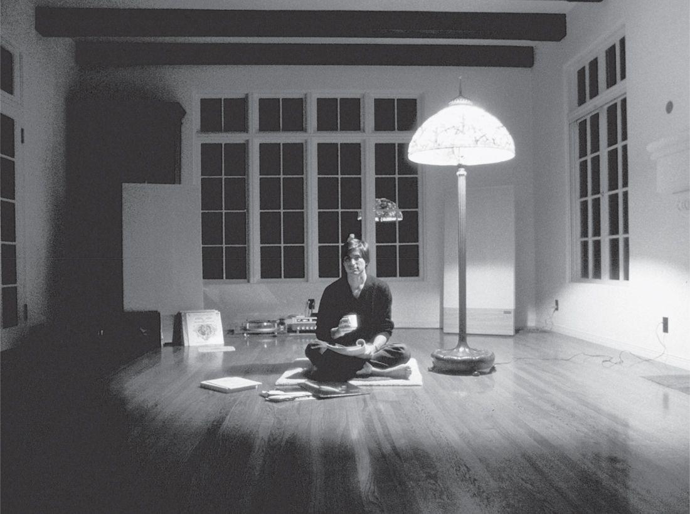
At his home in Woodside, 1982: He was such a perfectionist that he had trouble buying furniture.
Дома в Вудсайде, 1982: Он был таким перфекционистом, что ему было трудно покупать мебель.
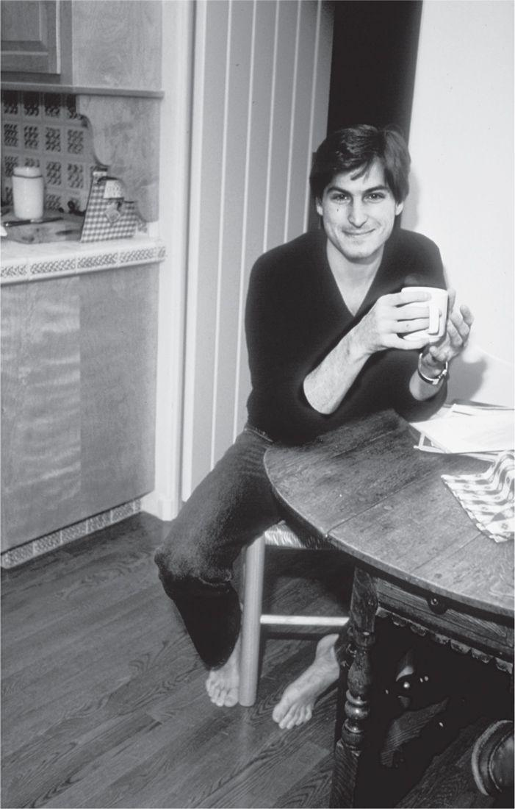
In his kitchen: “Coming back after seven months in Indian villages, I saw the craziness of the Western world as well as its capacity for rational thought.”
На его кухне: «Вернувшись после семи месяцев в индийских деревнях, я увидел безумие западного мира, равно как и его способность к рациональному мышлению».
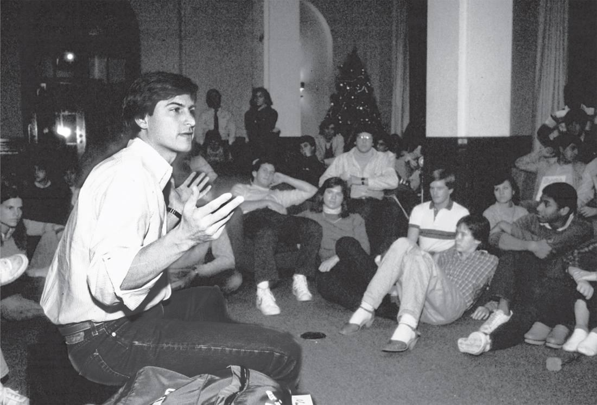
At Stanford, 1982: “How many of you are virgins? How many of you have taken LSD?”
В Стэнфорде, 1982: «Кто из вас девственники? Кто из вас пробовал ЛСД?»
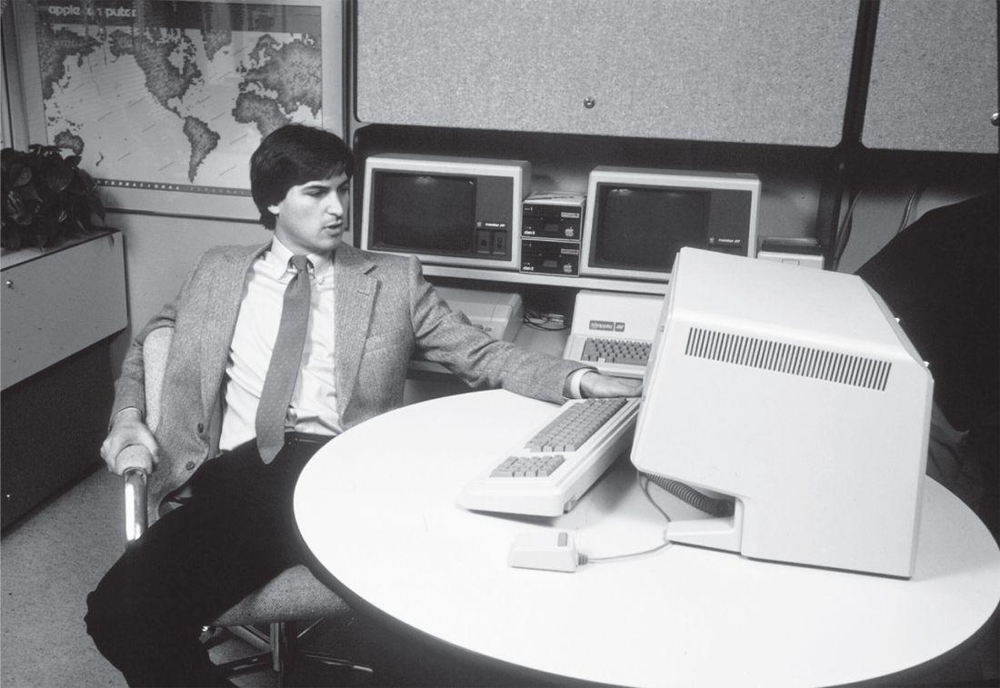
With the Lisa: “Picasso had a saying—‘good artists copy, great artists steal’—and we have always been shameless about stealing great ideas.”
С компьютером Lisa: «У Пикассо была поговорка: „хорошие художники копируют, великие — воруют“, — а мы всегда беззастенчиво воровали великие идеи».
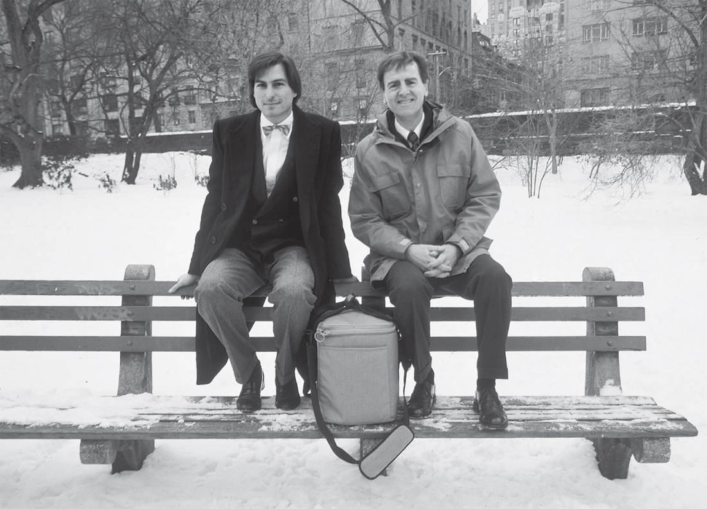
With John Sculley in Central Park, 1984: “Do you want to spend the rest of your life selling sugared water, or do you want a chance to change the world?”
С Джоном Скалли в Центральном парке, 1984: «Ты хочешь до конца жизни продавать подслащённую воду или хочешь получить шанс изменить мир?»
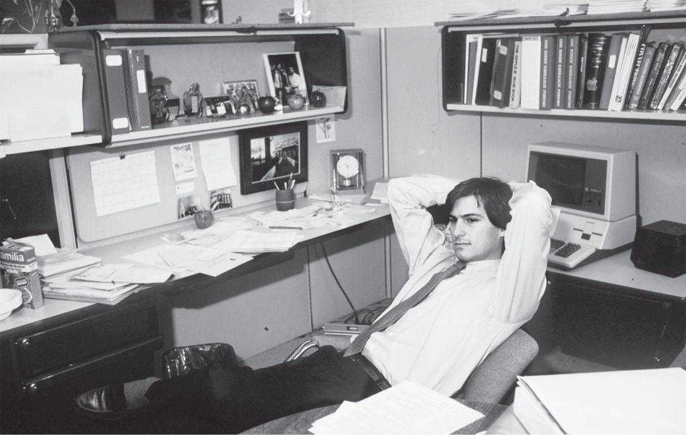
In his Apple office, 1982: Asked if he wanted to do market research, he said, “No, because customers don’t know what they want until we’ve shown them.”
В своём кабинете в Apple, 1982: Когда его спросили, хочет ли он провести маркетинговое исследование, он ответил: «Нет, потому что покупатели не знают, чего хотят, пока мы им это не покажем».
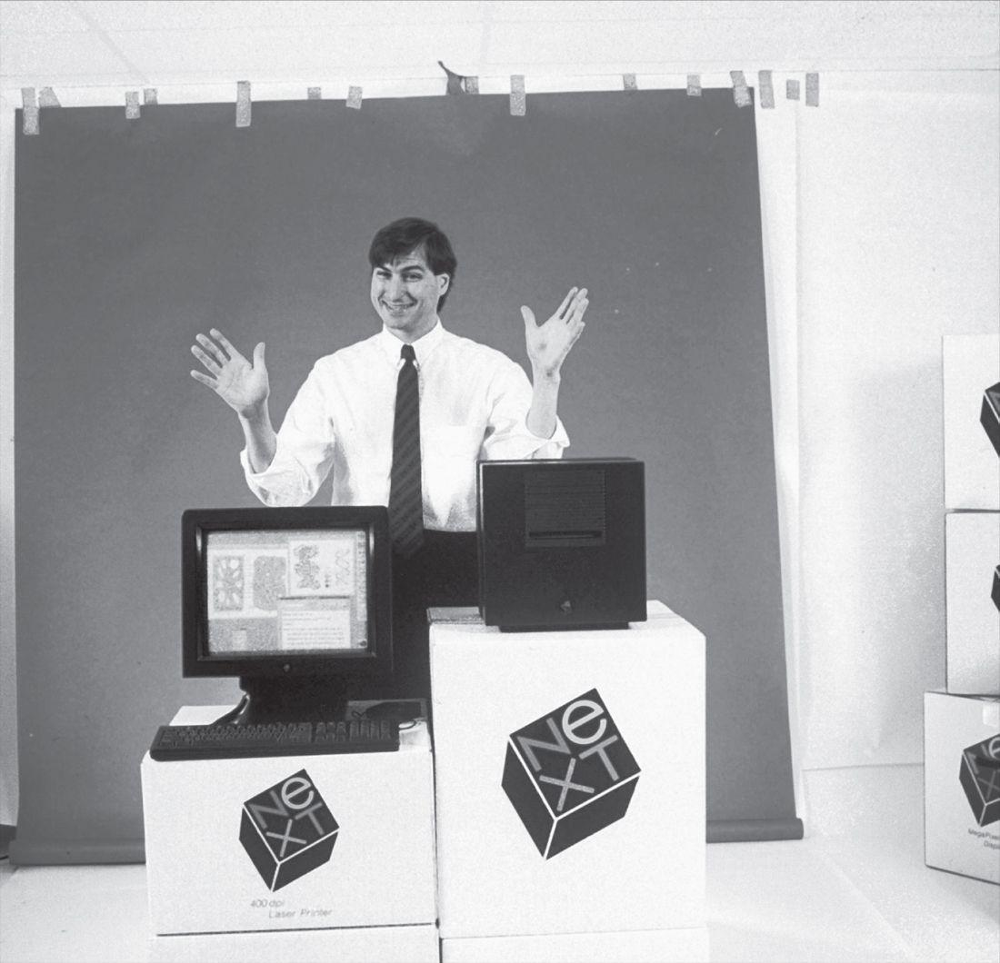
At NeXT, 1988: Freed from the constraints at Apple, he indulged his own best and worst instincts.
В NeXT, 1988: Освободившись от ограничений Apple, он дал волю своим лучшим и худшим инстинктам.
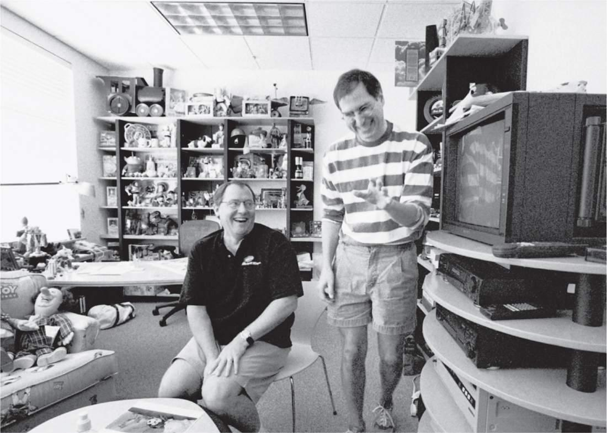
With John Lasseter, August 1997: His cherubic face and demeanor masked an artistic perfectionism that rivaled that of Jobs.
С Джоном Лассетером, август 1997: Его ангельское лицо и манеры скрывали художественный перфекционизм, соперничавший с джобсовским.
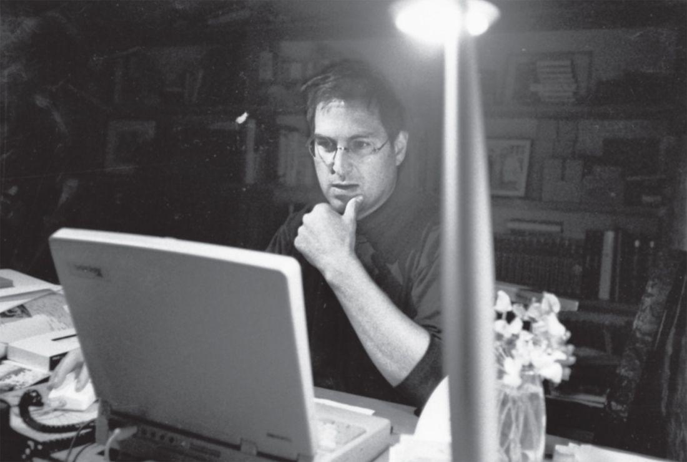
At home working on his Boston Macworld speech after regaining command of Apple, 1997: “In that craziness we see genius.”
Дома, за работой над речью для Macworld в Бостоне после возвращения командования в Apple, 1997: «В этом безумии мы видим гениальность».
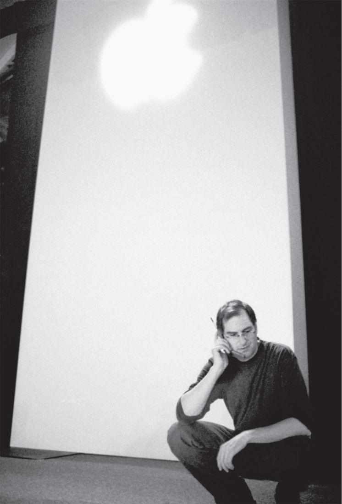
Sealing the Microsoft deal by phone with Gates: “Bill, thank you for your support of this company. I think the world’s a better place for it.”
Заключая сделку с Microsoft по телефону с Гейтсом: «Билл, спасибо за поддержку этой компании. Думаю, мир стал от этого лучше».
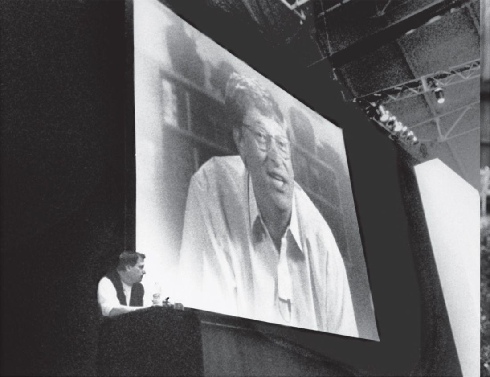
At Boston Macworld, as Gates discusses their deal: “That was my worst and stupidest staging event ever. It made me look small.”
На Macworld в Бостоне, пока Гейтс рассказывает об их сделке: «Это было моё худшее и глупейшее сценическое шоу. Из-за него я выглядел ничтожно».
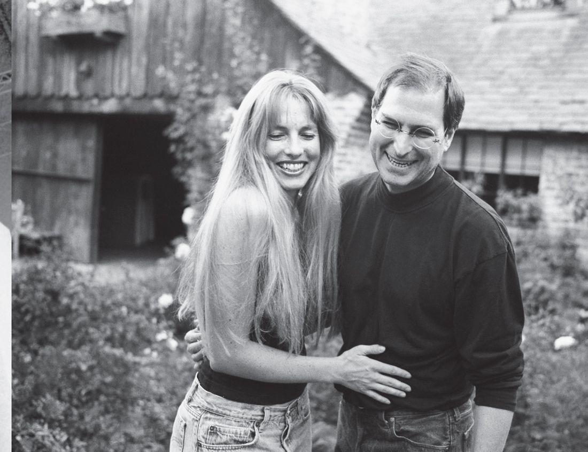
With his wife, Laurene Powell, in their backyard in Palo Alto, August 1997: She was the sensible anchor in his life.
С женой Лорен Пауэлл на заднем дворе в Пало-Альто, август 1997: Она была его здравомыслящим якорем в жизни.
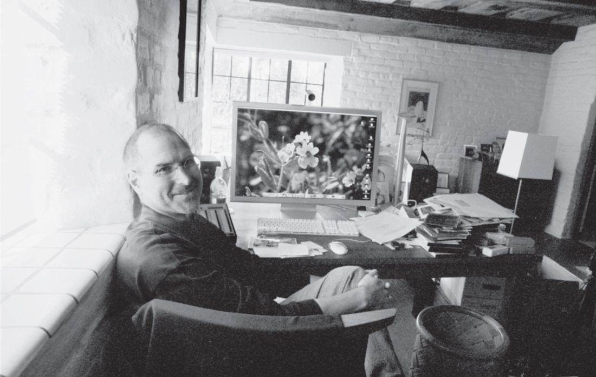
At his home office in Palo Alto, 2004: “I like living at the intersection of the humanities and technology.”
В домашнем кабинете в Пало-Альто, 2004: «Мне нравится жить на пересечении гуманитарных наук и технологий».
In August 2011, when Jobs was very ill, we sat in his room and went through wedding and vacation pictures for me to use in this book.
В августе 2011 года, когда Джобс был тяжело болен, мы сидели в его комнате и просматривали свадебные и отпускные фотографии, чтобы я мог использовать их в этой книге.
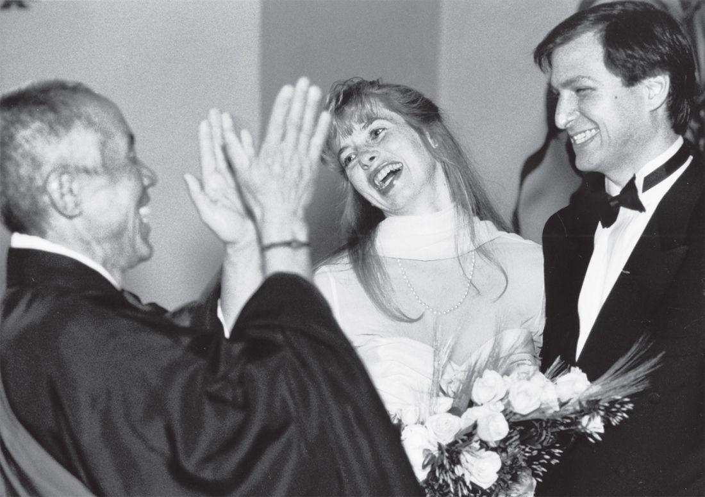
The wedding ceremony, 1991: Kobun Chino, Steve’s Sōtō Zen teacher, shook a stick, struck a gong, lit incense, and chanted.
Свадебная церемония, 1991: Кобун Чино, учитель дзэн (школа Сото) Стива, потрясал палкой, бил в гонг, возжигал благовония и читал молитвы.
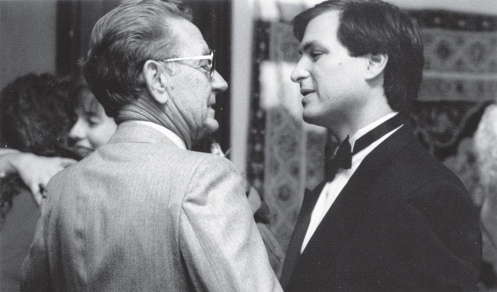
With his proud father Paul Jobs: After Steve’s sister Mona tracked down their biological father, Steve refused ever to meet him.
С гордым отцом Полом Джобсом: После того как сестра Стива Мона разыскала их биологического отца, Стив отказался когда-либо с ним встречаться.
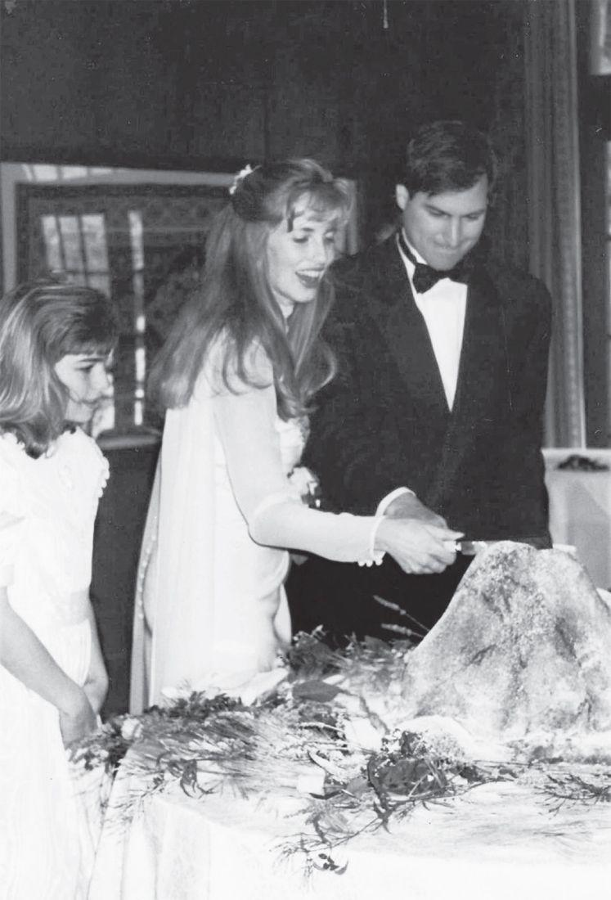
Cutting the cake in the shape of Half Dome with Laurene and his daughter from a previous relationship, Lisa Brennan.
Разрезает торт в форме Хаф-Доум вместе с Лорен и дочерью от предыдущих отношений Лизой Бреннан.
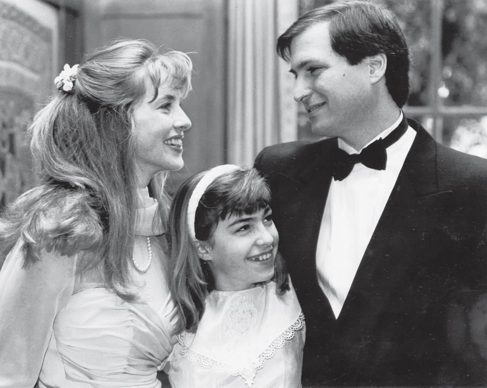
Laurene, Lisa, and Steve: Lisa moved into their home shortly afterward and stayed through her high school years.
Лорен, Лиза и Стив: Лиза вскоре переехала в их дом и жила там до окончания школы.
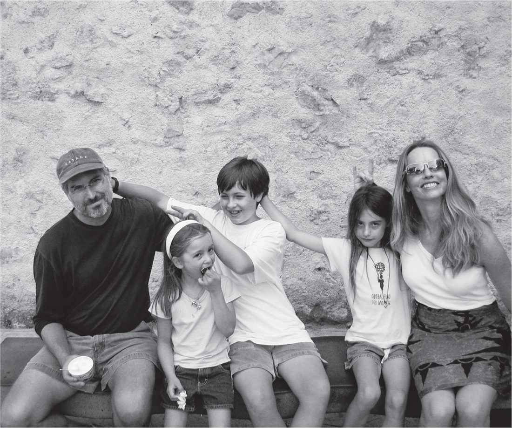
Steve, Eve, Reed, Erin, and Laurene in Ravello, Italy, 2003: Even on vacation, he often withdrew into his work.
Стив, Ив, Рид, Эрин и Лорен в Равелло, Италия, 2003: Даже в отпуске он часто уходил в работу.
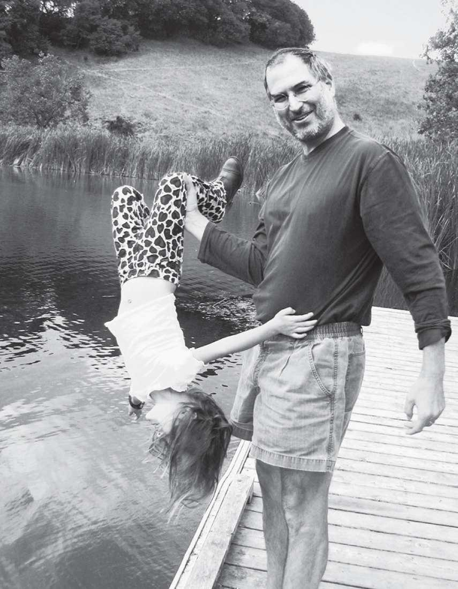
Dangling Eve in Foothills Park, Palo Alto: “She’s a pistol and has the strongest will of any kid I’ve ever met. It’s like payback.”
Поднимает Ив в парке Футхиллс, Пало-Альто: «Она огонь, и у неё самая сильная воля из всех детей, которых я встречал. Это как расплата».
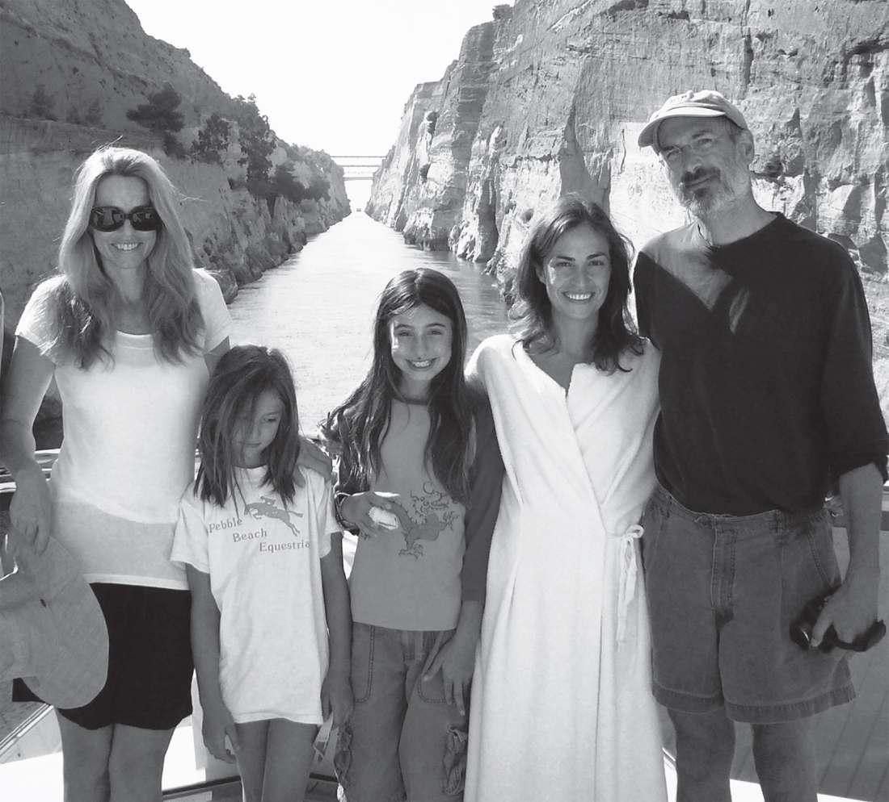
With Laurene, Eve, Erin, and Lisa at the Corinth Canal in Greece, 2006: “For young people, this whole world is the same now.”
С Лорен, Ив, Эрин и Лизой у Коринфского канала в Греции, 2006: «Для молодых людей весь мир теперь одинаков».
With Erin in Kyoto, 2010: Like Reed and Lisa, she got a special trip to Japan with her father.
С Эрин в Киото, 2010: Как Рид и Лиза, она получила особую поездку в Японию с отцом.
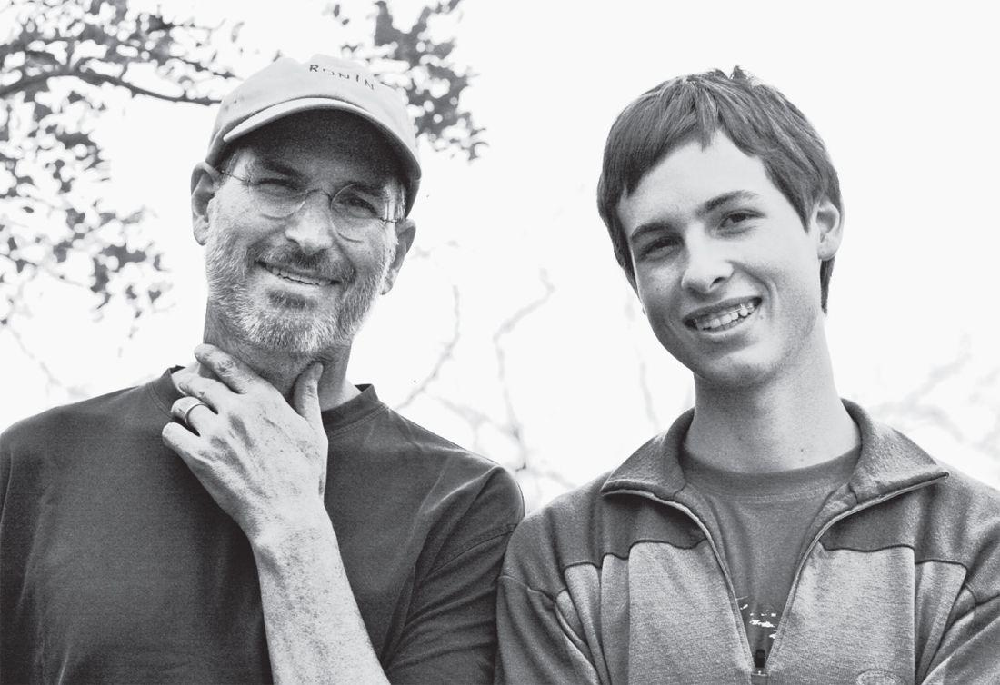
With Reed in Kenya, 2007: “When I was diagnosed with cancer, I made my deal with God or whatever, which was that I really wanted to see Reed graduate.”
С Ридом в Кении, 2007: «Когда мне поставили диагноз „рак“, я заключил сделку с Богом — или с кем там ещё: я очень хотел увидеть, как Рид окончит школу».
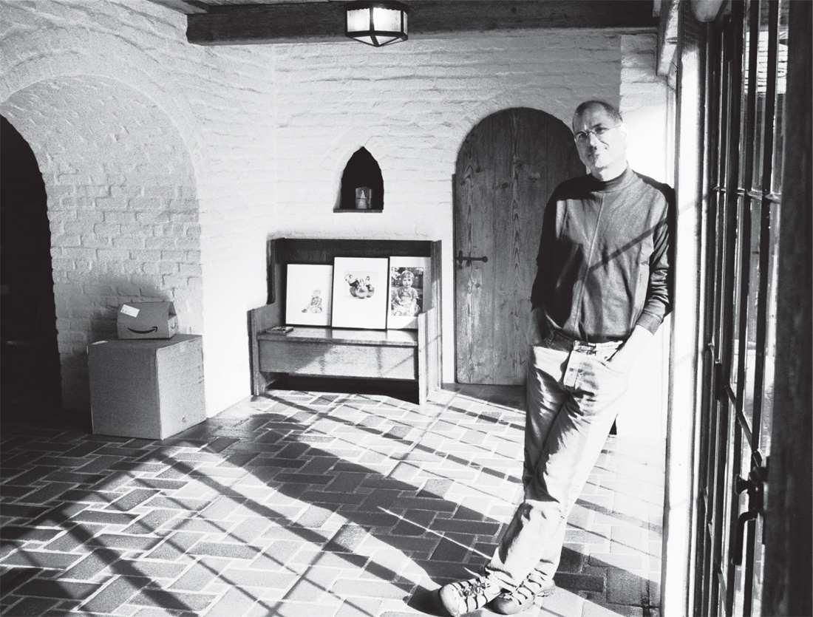
And just one more from Diana Walker: a 2004 portrait at his house in Palo Alto.
И ещё одна фотография от Дианы Уокер: портрет 2004 года в его доме в Пало-Альто.
1 Raskin died of pancreatic cancer in 2005, not long after Jobs was diagnosed with the disease.
2 The firm changed its name from frogdesign to frog design in 2000 and moved to San Francisco. Esslinger picked the original name not merely because frogs have the ability to metamorphose, but as a salute to its roots in the (f)ederal (r)epublic (o)f (g)ermany. He said that “the lowercase letters offered a nod to the Bauhaus notion of a non-hierarchical language, reinforcing the company’s ethos of democratic partnership.”